(反脆弱 非对称风险等)塔勒布经济学五部曲（套装共5册）
塔勒布经济学五部曲
（套装共5册）
[美]纳西姆·尼古拉斯·塔勒布 等 著
周洛华 等 译
中信出版集团
非对称风险
[美]纳西姆·尼古拉斯·塔勒布 著
周洛华 译
中信出版集团
推荐序1
风险共担：市场变革中的因应之道
对于全球金融界来说，纳西姆·塔勒布并不陌生。有“黑天鹅之父”之称的塔勒布，无疑是位金融市场的特立独行者，从华尔街的期权交易员到“不确定性”理论界的专家，自2001年《随机漫步的傻瓜》一书出版以来，他就成了华尔街一个引人关注的协作者。他先后出版了“不确定性”四部曲：《随机漫步的傻瓜》、《黑天鹅》、《反脆弱》和这本《非对称风险》。塔勒布更是在这本书中经常对华尔街极尽戏谑和调侃，例如，2009年的达沃斯论坛上，他对雷曼兄弟的破产表示“开心”，表示这是雷曼兄弟公司罪有应得。当然，在各种争议中，塔勒布让市场更为印象深刻的仍然是他对不确定性的深刻思考。
在《非对称风险》这本书中，塔勒布十分强调知行合一，他旗帜鲜明地指出，要发表观点，你首先要入局（skin in the game），要使自己成为风险收益对称的风险共担者，空中楼阁式的夸夸其谈或宏篇大论毫无意义。在现实世界中，塔勒布笔下的非对称性，可以说无处不在。在本书中，塔勒布涉及的视野宏大，从安泰俄斯之死到墨丘利的拒食海龟，从罗得岛上的出售粮食到罗伯特·鲁宾所在的华尔街销售金融产品，从3 800年前的《汉谟拉比法典》中的对称性到现代社会财富的巨大不平等；塔勒布在知识的海洋中纵横，掬取合适的材料，勾勒知识的不确定下形态各异的非对称性，以及对称性的风险共担的必要性。或神话，或宗教，或正史，或杂记，透过这些形散神聚的故事集，塔勒布的核心观点聚焦到一点：没有“风险共担”就一事无成，真正的理性在于避免系统性毁灭。
在资本市场层面，风险共担更为关键，本书中作者对此也批判得最为尖锐。从被作者批评为“对金融风险几乎一无所知的伯南克”，到“罗伯特·鲁宾的勾当”，再到“信口雌黄的宏观政治经济学家”……而被视为现代资本市场代表的华尔街，在作者笔下几乎成了骗子们炫耀骗技的舞台、非对称风险的高发地。在作者看来，无论是什么市场主体，都应充分认识到无处不在的信息非对称性，并在此基础上（就像作者明确指出的）“将灵魂投入‘风险共担’中去”。正如作者那句有点绝对又不无启发的结束语：没有“风险共担”就一事无成。
当然，就像英国《卫报》专栏作家佐伊·威廉姆斯（Zoe Williams）在本书书评中所指出的，尽管本书的核心观点非常有吸引力，但在细节上存在一些瑕疵。比如书中提到的“1982年英阿马岛战争中，英国皇室成员安德鲁王子驾驶着直升机在前线作战时，承担了比普通士兵更多的风险”；以及，对英国的清真食品比例的描写等细节，在威廉姆斯看来，都与真相有出入。
另外，本书中，作者以嘲讽的口吻批评说，“2010年，对金融风险几乎一无所知的伯南克连任美联储主席”，早在2009年的达沃斯论坛上，塔勒布就曾直接呼吁：“美国政府‘绝对必须’对银行实施国有化，以阻止其给金融系统带来更多损失。”（2009，路透社）我们不知道如果美国政府对银行实施国有化的真实后果，也暂且不论伯南克的政策从长期看，是否恶化了美国金融机构的道德风险，至少从十年后的今天回头去看，纵向上对比，这轮金融危机的结局相比肇始于1929年的那轮大萧条的结局要好得多；横向对比欧洲、日本的银行业，2008年金融危机之后的美国银行业发展得也没那么差。至于伯南克任职美联储期间，与时任美国财政部部长亨利·保尔森一起推出的危机应对政策，虽然在作者看来，“政府主导的救援行动，使得整个金融市场的运行机制脱离了‘决策者承担后果’的风险匹配原则，使得市场的受益者、决策者和参与者可以脱离‘风险共担’，在不承担风险的情况下做出决定并攫取利益”，但是伯南克以及保尔森受到的好评绝不只是来自华尔街的那些“利益攫取者”。比如巴菲特就曾在2014年接受CNBC（美国全球性财经有线电视卫星新闻台）采访时明确指出：“2008年的时候，我们的金融系统被几个人所拯救，如果不是亨利·保尔森和美联储前主席伯南克，我们现在将生活在一个相当不同的国家里。”当然，在作者眼中，巴菲特不过是一个随机游走状态下运气特别好的傻瓜（2010，CNBC）。不过，退一步说，哪怕伯南克真的像作者所揭露的，对金融风险一无所知，但无论是伯南克还是保尔森，对紧急救援措施可能引发的道德风险都有着非常清醒的认识。在《行动的勇气》一书中，伯南克这样写道：“无论大家是否理解，我们采取救助措施确实可以避免金融体系出现灾难性的崩溃，有利于保护美国经济，符合每个人的利益……2008年9月，我绝对相信，在一场重大的金融危机期间，一味强调道德风险，会产生误导作用，也是非常危险的。”
最后，我也想对本书的英文书名Skin in the Game
谈点儿个人理解。如果用直白一些的译法，我觉得可以直接翻译为：入局。金融是一门具有很强现实性和操作性的专业，站在旁边看的，终究只是看客。入局，并共担风险，才能更加贴切地理解这个变动不居的市场，实际上这也是塔勒布一直强调的。
是为序。
巴曙松
教授北京大学汇丰金融研究院执行院长、香港交易所首席中国经济学家
推荐序2
中国视角下的“非对称风险”
你如果精读过塔勒布前几部著作《随机漫步的傻瓜》《黑天鹅》《反脆弱》，会不禁感叹，他不只是一位投资风控大师、全球畅销书作家，更是一位具有巨大思想颠覆与穿透能力的哲学思想家。2015年，我曾邀请他与上海金融界人士做过一场内部交流。当时，他谈到了投资随机性以及产生非对称风险的关联度，其间提到了“skin in the game”的说法。2018年年初，在该书英文版正式出版前，中信出版集团购得版权，希望我能翻译此书。然而，通读书稿，并在译完了几章后，我决定放弃。中国读者，尤其是投资界人士，有权利读到一本更好的塔勒布书的译本，而我的同事周洛华博士显然更完美地实现了我这个心愿。
个别金融界人士曾把“skin in the game”译为“风险共担”，我在初译本中曾用“切肤博弈”，塔勒布上一本著作《反脆弱》的中文版译文中用了“切身利害”的译法，而洛华博士的译本用了“实盘游戏”，最终出版方从读者角度考虑定书名为《非对称风险》。我充分理解出版方的最终定名，这是为了让更多中国读者能认识到社会行为与投资进程中的随机性，以及潜藏其中并产生的各种非对称风险。
前些年，许多中国人都低估了社会发展的风险概率，对形势走向往往过于乐观，以至出现大量高杠杆的举动，导致全民浮躁与潜在的系统性风险。比如，中国人倾向于认为，经济将保持高增长，房价会一直涨下去，股市将突破10000点。近年来，楼市股市低迷，经济下行压力加大，中美经贸摩擦无疑给中国人上了一堂生动的全民教育课。
事实上，塔勒布过去十多年的思考，一直在提醒人们更好地认识、防范与共担各种随机性产生的风险。2001年，他出版了《随机漫步的傻瓜》，通过大量的事实说明，所谓的成功者可能是由随机事件造就的。成功很可能是因为幸运，千万别高估自己的能力与智慧。书中最有趣的例子是，只要猴子足够多，时间足够长，总有一只猴子能够碰巧写出与《荷马史诗》一样的叙事诗。
2007年的《黑天鹅》一书，使塔勒布获得全球美誉。其实，书中所阐述的不过是一些容易被忽视的、无法预测的日常生活现象。那些无法预测的意外事件一旦发生，就会产生极端的、颠覆性的影响。书中的一个令人印象深刻的例子是，那只天真的火鸡，在前面1 000天中，一直认为它的主人是天下最好的主人，但它却在第1 001天时被杀了。
2012年的《反脆弱》则论述了在混乱或意外事件的打击下，有的事物会变得更加坚强，如同感冒病毒有时会杀死人，有时会让我们免疫系统更加健康；风会熄灭蜡烛，也会使火越来越旺。暴露在波动性、随机性的冲击中，那些脆弱的一面往往会败下阵来，而脆弱性的对立面即“反脆弱性”则会让人在冲击中壮大与成长。
诚如“风险共担”词组的英文直译“暴露在游戏中的皮肤”所描述的，同样一件事所产生的风险，对于每一个个体而言并不是对称的。政客夸夸其谈、理论家高谈阔论、银行家坐收渔利，他们所承担的风险远远不能与另一种人相比，如敢于牺牲的革命者、兢兢业业的实践者、投入成本的创业者。所以，一个人的价值、真正受到尊重的程度，取决于他愿意为他人承受多少损失。那些不愿意承担风险，还将他人置于风险之中的人，应该被置于人类金字塔的底部。很显然，塔勒布花了近二十年的时间，希望能寻找到人类社会的基本道理，也即每一个人应该持有的坚定理念。
这个道理很容易明白，但不容易被发现与践行。塔勒布追溯3 800年前“比今天法律更先进”的《汉谟拉比法典》，来讲述“风险共担”的重要性，“如果建筑师建造的房子倒塌了，并导致房屋主人死亡，那么建造房子的建筑师应该被处死”。
在塔勒布看来，“风险共担”的这一理念不仅仅与公平性、互惠性、商业效率和风险管理密切相关，也是我们理解人类社会和整个世界的前提。在当今的生活中，对称性和互惠性的背离问题并不少见，一个没有风险共担的系统会慢慢积累不平衡，最终垮掉。比如2008年金融危机发生后，一方面政府用纳税人的钱救助快要破产的大金融机构；另一方面这些机构的高管们继续拿着高额奖金，本应该由这些高管承担的风险，都被转移到了普通人身上，这就是书中所称的“罗伯特·鲁宾的勾当”。这样的例子并不少见，比如西方国家在伊拉克、利比亚所尝试以及在叙利亚正试图尝试的所谓“政权更迭”，同样是一种没有“风险共担”精神的表现。在全书中，处处能看到塔勒布犀利的批判。
塔勒布一如既往地以超高的信息量与鲜为人知的素材，验证了他的观点。比如，在书中关于古希腊神话中安泰俄斯的例子，虽然他是不可战胜的，但是一旦他的身体不再和大地接触，就会失去所有的力量。大力士赫拉克勒斯就是利用这一点，将安泰俄斯举到空中使其无法从大地母亲那里获取力量，然后杀死了他。这个故事说明，任何思想都不能脱离实际，脱离了实际就会失去生命，如同投资人不了解标的的基本面情况，或其基本面已经变化而没有觉察到，投资很可能因此面临危险。
作为一位投资风控大师，塔勒布从投资的角度不断提醒，作为投资人，要时刻有面对风险的意识。只有这样，才会督促自己不断学习。做投资，核心要看对未来的认知能力，看谁更具有前瞻性。而学习恰恰是掌握前瞻性的根本方法。无论是多么高收益的投资大师，都应当持续学习。
塔勒布的另一点提醒也很重要。要承担风险的责任，必须有抗压的能力。做投资要时刻面临压力，如何让自己顶住压力，应对各种各样的状况，直接决定了投资的成败。投资需要积累，需要我们及时化解压力。诚如塔勒布所言，“风险共担”涉及的尊严是一种长久的责任。承担风险（一种固定的风险阶层）是人和机器的区别，而这恰恰是投资人的基本意识。
在具体实践中，塔勒布区分了研究和投资定位的差异。有些人是很好的分析者，但不一定是很好的投资者；而有的人是很好的投资者，但不一定是很好的分析者。当然，这两个工作性质不同，更重要的是二者承担的结果往往不同。人总是有自我肯定或者认同的心理，即使出现错误，也会找各种理由来为自己解释。就如同《非对称风险》中所说，不要听从以提建议为谋生手段的人的建议，除非对他们提出的建议有对应的惩罚措施。
从中国社会目前的发展现状看，塔勒布的提醒是相当有针对意义的。塔勒布认为，“风险共担”的缺失会造成伦理和认识论上的影响，没有“风险共担”，就没有进化。中国学术圈、决策层与商业界都应当警惕这类人：他们对事物进程有影响力，却没有切身参与并拒绝“风险共担”，满足于自己设计的“空中楼阁”，而反对那些真正具有丰富实践经验的想法。
我强烈推荐大家研读塔勒布的书，它对我们如何理解包括投资在内的人生进程，社会演进中发生的波动、混乱、风险以及责任，都大有裨益。
王文
中国人民大学重阳金融研究院执行院长
译序
2002年秋天，达特茅斯学院的保罗·沃尔弗森研究员（他也是我的导师玛格丽特·彼得罗芙教授的丈夫）给我发来一封电子邮件，里面介绍了《纽约客》杂志对本书作者塔勒布的采访。当时塔勒布管理的对冲基金Empirica，从“9·11”恐怖袭击事件之后的市场大跌中获得了丰厚的收益。他坦言自己事先并不知道任何黑天鹅事件的消息，他只是认为市场对重大系统性风险的估计严重不足，导致深度价外的看跌期权价格被严重低估，因此，他提前布局，在通用汽车股价还在30美元左右交易时，买下了以每股5美元抛出该股的看跌期权，事后证明这次投资极富远见。因时隔多年，文章披露的有关交易细节我记得不是很清楚了，但是塔勒布对风险有一种根植于内心深处的切肤之痛，这给我留下了深刻印象。他说：“对于我的大多数美国同学来说，风险就是一种对自己不利的概率分布。而我从小在战火纷飞的黎巴嫩长大，风险对于我来说意味着在每天吃晚饭的时候，我不知道白天和我一起踢球的小伙伴还能活下来几个人。”
这本书就是基于对风险的这种认识而写成的。从某种意义上讲，这也是一部人类学著作，作者揭示了人们在面对不确定性和外部压力时，只有身临其境、设身处地亲自承担风险，才能做出正确的决定。人类学研究表明，人类的决策过程主要是由激素推动的。知识、经验和理智在这个过程中所起的作用并不大，我们往往是在做出决定之后，再用智慧去寻找证据以便证明自己的决定是正确的。我们在决策过程中，常伴有心跳加快、手心出汗、额头发冷和主观忽略部分事实等现象，这些都说明了包括肾上腺素在内的多种激素参与了决策过程。如果决策者本人不承担决策失误的风险和损失，他就不能身临其境地在压力下产生这些激素，也就不能做出正确的决定。作者因此呼吁建立一种“做出决定”（权利）和“承担后果”（责任）相互平衡的机制，也特别强调决策者本人的担当精神。这让我想起达特茅斯学院工程学大楼入口处的格言：为最困难的任务准备最负责任的肩膀（并没有提到最聪明的头脑和最复杂的模型）。
作者坦言2008年席卷全球的金融危机，很大程度上是由美国的金融机构权利和责任不匹配造成的，金融业的高管们只享受高额报酬而不承担经营的风险和损失，由此埋下了危机的祸根。作者在附录中令人信服地用数学方法论证了在权利和责任不匹配和非对称的委托代理机制下，代理人只会考虑如何尽可能地延长游戏的时间，以便自己能够获得更多的业绩提成，而不会考虑委托人的总体回报水平。作者在概率密度函数中突出了“矩”的概念，揭示了看似能够产生“长期稳定回报”的投资策略其实隐含了本金全损的巨大风险。代理人会用委托人的钱去承担小概率的高风险，以此换取大概率的低风险收益，这样做的代价就是整个受托资产隐含着巨大的毁灭性风险，委托人最终会因遭遇爆仓风险而损失全部资产，而与之无关的普通纳税人更是为救助金融机构而付出了额外的代价，从而形成“高管受益，股东受损，民众买单”的结局。距离上次金融危机已经10年了，如此犀利而透彻地论证金融系统存在的问题的作品仍然凤毛麟角，作者直言不讳且可贵地指出了早在金融危机爆发之前，金融系统和金融机构就已经酝酿并弥漫着一场“用别人的钱去冒险”和“赚傻子的钱让穷人去买单”的道德危机，这才是导致金融危机的根本原因。
原作的书名是Skin in the Game
，大意是把自己暴露在某种投资、游戏、任务、使命的风险之中，引申的意思是全身心地投入一项事业，享受其成果，担当其风险并承受其损失。作者在政治、历史、宗教和金融领域的讨论中都运用了这个概念，这使得书名很像是一个特征函数，它提炼了所有这些场景的共性，体现出一种简洁精致的数学美感。不过这个书名很难在汉语中找到合适的词来翻译。
作者涉猎广泛，文风汪洋恣肆，常把朴素的真理寓于平凡的比喻之中，以至原文有一种“真佛才说家常话”的感觉。由于有些口语化的表述在中文的语境中并无相应的场景，这给我最初的翻译带来了不少困难。是忠于作者，还是取悦读者？最终我意识到这两者其实并无矛盾之处，克服翻译困难的关键是排除自己企图左右逢源的纠结心态，这样才能彻底解放思想去全面理解作者的意图——理解的背后并不是更高的智慧，而是更大的勇气。
考虑到现实的国情和中文的语境，我在翻译过程中将作者对经济学家们的无情鞭挞弱化为嬉笑怒骂，如果由此引发作者的愤怒，我将慨然吞下这颗子弹，因为这是译者应该承担的责任。其中最值得一提的是作者对经济学中所谓“理性”概念的批判，这让我想起维特根斯坦在第二次世界大战期间到盖斯医院担任志愿者的经历，当时他和格兰特医生一起推翻了“休克”一词的用法。“休克”在医学上的定义很模糊，造成休克的原因又很分散，因此，使用这个词并不能给急救医生提供必要的信息。维特根斯坦认为，一个词的意义根植于它的用法，如果它只是带来了混乱和困惑，那还不如抛弃这个词。类似的情况发生在经济学中，“理性”一词被定义得十分模糊，在大多数情况下这个词被用在背离人性的假设条件中，以便得出一个脱离实际的经济学模型；还有一些人使用这个词的主要目的是攻击对手的“非理性”。作者在书中结合自己多年的实践经验，从遍历性的角度指出了经济学家们所仰赖的模型的错误之处。作者坚信交易员应该用生存来检验实践，而不是用模型来比拼理性，因为最大的理性就是生存，那些被经济学家贴上“不理性”标签的行为，恰恰源自人类自我保护的生存本能。他进一步提出，经济学家犯这些错误的根源在于他们脱离实际，没有做到“风险共担”。作者认为，实践应该成为我们获得真理和获悉真相的唯一途径，这种推崇实践的精神值得我们尊敬。
全书的翻译工作得到了各方的大力支持，王亚娟和朱经毅分别校译了正文和数学附录，指出了译稿的许多错误；中国人民大学重阳金融研究院的很多同志与我通力协作，没有他们的支持，我不可能按时完成这本书的翻译工作。对上述同志的支持和帮助，我既感惭愧又感安慰，同时也心存感激。倘若中译本仍有瑕疵和错误，责任应由我一人承担，毕竟，这是我应该承担的风险。
周洛华
[1]
2018年8月
这
本书是我的“不确定性”系列丛书的一部分，这套被我戏称为“投资协奏曲”的系列丛书包括：（1）有关风险共担的讨论；（2）哲学寓言；（3）对随机现象的科学分析和评论，即如何在不确定性的条件下工作、生活、吃饭、睡觉、争辩、吵架、交友、享乐并做出决定。尽管这本书是面向普罗大众写的，但是我还是要提醒大家，本书读起来可能更像是一本论文集，它将不同于你们平时熟悉的那种无聊的畅销书（不过本书附录部分的数学推导可能真的有点儿无聊）。
本书包括四个方面的主题：（1）知识的不确定性以及可靠性（包括用具体实践和科学分析两种方法获得的知识——我认为通过这两种方法获得的知识是有区别的），通俗地说，就是嗅出哪些所谓的知识其实是“狗屎”；（2）人类事务的对称性原则，包括公平、正义、责任感、互惠性；（3）交易中的信息共享；（4）复杂系统以及现实世界中的理性。这四个方面的内容相互独立，不能混淆，而且，这四个方面的内容使得一个人直接暴露在交易的风险共担之中。
[1]
这并不仅仅是指公平、效率和风险控制，你暴露在交易中的四个方面恰恰是你理解这个现实世界的关键。
首先，想象你有一台“狗屎探测仪”，它能帮助你找出理论和实践的差异，伪科学和真正的专业知识的差异，学术象牙塔（我在这里使用学术这个词时带有贬义色彩）和现实世界的差异。尤吉·贝拉
[2]
曾经说过，在学者眼里，学术界和真实的世界是没有差异的，但是在真实的世界里，两者之间存在巨大的差异。
其次，你得意识到生活中的对称性和互惠性常会遭到扭曲：如果你想获得回报，你就必须承担风险，而不是让别人替你承担损失。如果你把风险强加给别人，你就必须给他们一定的补偿，你对待他们必须像你希望被他们对待的那样。总之，你必须无私且公平地承担整个事情的后果。如果你给出一个观点，尤其是经济方面的建议，你就或多或少地把你自己暴露在这个建议的后果之中了，因为你的听众会这么想，“别告诉我为什么，你只要告诉我你自己买什么股票就行了”。
第三，本书还会涉及你应该把哪些信息与别人共享，当你要在一辆车上花掉你大部分积蓄的时候，你面对的二手车推销员应该告诉你哪些信息？
第四，本书还将讨论什么是理性和时间。现实世界中的理性并不是《纽约客》杂志编辑或者某些心理学家使用的一阶函数模型，而是广泛且深入地存在于你的生活中的数据。
别误会，本书里讲的投资人暴露在“风险共担”的枪林弹雨中，并不是行为金融学里面的动机与后果问题。不！这是一个关于对称性的讨论，也就是说，如果有什么东西搞砸了，那么你得承受一部分伤害，付出一部分代价。
有鉴于此，本书包含的内容相当广泛，主观动机分析、二手车买卖、道德伦理、契约理论、学术界以及现实世界的学习、康德法则
[3]
、政府权力、风险科学、知识分子与现实世界的互动、政府责任、社会正义、期权理论、基本人权、狗屎的供应商、神学……我还是住嘴吧！
一个更准确的书名
我曾经考虑过给本书起一个不同的名字，更加准确但也因之更无趣的名字，那就是“暴露在游戏中的另一面：被忽略的非对称性及其后果”，我喜欢惊险刺激的体验，不喜欢强加给读者一本从名字开始就平庸、正确却无聊的书，现在，遵循我本人倡导的风险共担中的互惠性原则，我邀请读者和我一起加入一场充满奇趣的思想旅程。
只要读完60页左右的正文，读者就会发现“风险共担”中强调的对称性原则的重要性、普遍性和独特性。但是，我建议读者不要过多地纠结于为什么某个概念是重要的，过多地纠结于概念本身将妨碍你在实践中理解这个概念。
除了不纠结于概念本身以外，阅读本书还需要直觉的帮助。一旦你在本书的启发下，凭直觉意识到那些平时被你忽略的非对称性，你将感受到一种巨大的惊奇，这种惊奇将帮助你反思自己平时的思考方式，有时候这种反思是痛苦的，但在大多数情况下，你会受益匪浅，并将更深刻地理解你所处的现实世界。
为什么那些旨在保护少数族群的法规最终让大多数人感到不舒服？为什么所谓的普世主义最终害了它本该帮助的那些穷人？为什么当今世界被奴役的人比罗马帝国时代还多？为什么你的外科医生看起来不像是一个试图帮助你的人？为什么今天的教会更多地强调耶稣基督人性的一面而非其神性，后者不是基督和我们人类最大的区别吗？为什么历史学家撰写的历史书中，总是充满了战争而不是和平，人类历史的大多数时间难道不是和平时期吗？为什么你在经济和宗教方面获取的免费信息对你的帮助几乎为零？为什么有明显缺陷的候选人比毫无瑕疵的候选人看起来更可靠？为什么我们都崇拜那个反叛罗马帝国失败的迦太基英雄汉尼拔？尽管雇用了一批能干的人，为什么一个公司瞬间就倒闭了？为什么那些邪教总能在不同人群中收获一定比例的信众？外交事务是如何推进的？为什么你不该向有组织的慈善机构捐款（除非它们能像优步那样高效运转）？为什么基因和语言的传播方式不同？为什么一个群体的规模很重要（如果一个渔夫群体的规模发生变化，群体内部可能从相互合作转为相互争斗）？为什么行为经济学几乎不研究个体的行为，而市场几乎与参与者的偏见无关？为什么只有理性才能在市场上生存，是什么机制让理性的投资人活了下来？什么才是承担风险的实质？
对于我个人而言，到市场上去亲历“风险共担”，意味着我将体验到：人类的正义理想、个人的荣誉感、自我牺牲精神，以及其他事关人类生存的最宝贵的品质。
对于市场参与者来说，“风险共担”意味着你必须坚信“实践出真知”，而且“实践是获得真理和获悉真相的唯一途径”。这应该成为读者阅读本书时谨记的法则，这条法则有助于你澄清当今世界上许多分歧所带来的误解。
这些分歧包括：采取行动还是坐而论道、发表承担责任还是澄清动机、从事实践还是钻研理论、追求荣誉还是在意名声、发表真知灼见还是夸夸其谈、具体分析还是抽象总结、道德约束还是法律制裁、真材实料还是花哨包装、追逐利润还是循规蹈矩、提倡原创力还是执行力、藏锋敛锐还是招摇过市、为爱坚守还是被钱驱使、考文垂还是布鲁塞尔（欧洲的分裂还是统一）、奥马哈还是华盛顿（江湖之远还是庙堂之高）、真实的人性还是经济学模型中理性的人、动手创作还是编辑加工、老卡托还是奥巴马（恪守体制还是试图突破）、以学为乐还是以学为生、尊重科学还是唯科学主义、投身政治还是成为政客、为爱而生还是为钱而活、民主分权还是集中治理、依赖崇高的精神还是规范的文本、口碑营销还是广告大战、全身心投入还是口头表态，还有最关键的问题——集体主义还是个人主义。
让我们从中抽取几对关系来做一下对比研究，由此读者就能理解为什么不同事物之间会有超越自身的广泛联系。
[1]
要想知道为什么道德、风俗、技能和责任不能在现实生活中相互割裂开来，请考虑以下事实：当你对你的会计说“我相信你”的时候，你的意思是：（1）你相信他的道德（他不会参与远在巴拿马的洗钱活动）；还是（2）你相信他的会计处理能力；或者（3）两者皆是。整本书的意图就是要告诉大家，从现实生活的角度出发，很难把道德与知识和能力区分开来。
[2]
劳伦斯·彼得·贝拉（Lawrence Peter Berra，1925—2015年），因其盘腿坐姿像在练瑜伽（Yogi），故绰号尤吉·贝拉（Yogi Berra），美国职业棒球大联盟的捕手、教练和球队经理，球员生涯主要效力于纽约洋基队，常用朴素的语言说出生活的真谛，他也是卡通形象瑜伽熊（Yogi Bear）的生活原型。——译者注
[3]
康德有关道德律令的三条法则：第一，你要这样行动，就像你行动的准则应当通过你的意志成为一条普遍的自然法则一样；第二，你要这样行动，永远都把你人格中的人性以及每个他人的人格中的人性同时用作目的，而绝不只是用作手段；第三，作为自己和全部普遍实践理性相协调的最高条件，每个有理性的存在者的意志都是普遍立法的意志。——译者注
安泰俄斯之死
不要离妈妈太远。谁是大军阀？罗伯特·鲁宾和他的勾当。车祸现场般糟糕的系统。
——————
安
泰俄斯（Antaeus）是希腊神话中的巨人，是大地女神盖亚和海神波塞冬的儿子。他有个奇怪的爱好，那就是强迫路过他领地（利比亚）的人与他摔跤，而他最擅长的把戏就是将受害者摁倒在地，然后压死他们。这个血腥的爱好居然有一个虔敬的目的：用死者的头骨为他的父亲建造一座神殿。
安泰俄斯被认为是不可战胜的，不过他也有短板，他那源源不断的力量都来自他的大地母亲，只要他和大地母亲分开，他就失去了他那不竭的力量。希腊神话中的大力神赫拉克勒斯练就了一项专门攻击安泰俄斯的本领，他把安泰俄斯举过头顶，使之脱离他的大地母亲，然后杀死了他。
现在，请把安泰俄斯想象成“知识”，把他的大地母亲想象成“实践”，你怎么能让你的知识脱离实践呢？脱离实践的知识就像被托举到空中的安泰俄斯一样虚弱得不堪一击。不仅如此，你在现实世界中根本找不出一个可以脱离实践的具体事物。不脱离实践就意味着你必须和现实世界密切接触，就像你的皮肤直接暴露在空气中一样。你必须做到风险共担，才能理解这个市场。为此，你必须付出代价，承担后果，无论是赢是输，你都得接受。就像用你的皮肤直接接触粗糙的地面时，你会有擦伤的痛感，这就是你实践的代价。希腊谚语说：“Pathemata mathemata”（直译为：在痛苦中学习），意即学习知识必然是痛苦的，因为你只有在痛苦的实践中才能学到东西。我在另外一本书《反脆弱》中曾经提到过，大多数我们本以为是大学学者发明创造出来的“知识”，其实是能工巧匠在实践中摸索出来的，学者们的贡献仅限于记载和署名。那些我们通过摸索、试错和亲历得到的知识，相比那些我们通过推理、记忆和学习得到的知识更宝贵、更可靠，也更高明，因为后面一条道路使我们脱离了大地母亲，脱离了可以获得真知的实践。
现在，让我们来看看如何把这个发现应用于制定政策。
今天的利比亚
让我们假设安泰俄斯的故事是真的。数千年之后，在安泰俄斯曾经统治过的领土上，经过了一场旨在“赶走独裁者”的政权更迭之后，利比亚的土地上出现的是更血腥残忍的一幕：奴隶市场。从撒哈拉沙漠边缘地区抓来的极度贫困的人，在停车场上被卖给了出价最高的买家。
造成利比亚今天悲剧的人，恰恰也是2003年主张入侵伊拉克的人，正是同一批人主张武装干涉他国。我可以在此列举几个著名的干涉主义者，他们是比尔·克里斯托尔和托马斯·弗里德曼
[1]
等人。而且他们正在呼吁对另一批国家实施这种所谓的政权更迭。其中就包括叙利亚，因为那里也有一个“独裁者”。
那些干涉主义者以及他们在美国国务院的朋友们，先是帮助某些组织创建、训练和支持伊斯兰激进派，然后他们又支持伊斯兰“温和派”，但这些所谓的温和派最终演变成基地组织那样的恐怖组织——没错，就是那个在2001年“9·11”恐怖袭击事件中炸毁纽约世贸双塔大楼的基地组织。奇怪的是，那些干涉主义者并不记得基地组织前身就是美国为了打击苏联而组建（并支持）的“温和派”。我们很快会看到，那些人的脑子里根本装不下这个推理的结果。
所以，美国已经在伊拉克尝试过一次政权更迭了，那里的情况现在糟透了。美国又在利比亚尝试了一次政权更迭，现在那里建立起了奴隶市场。但不管怎么样，我们都对“赶走了独裁者”这个结果感到满意。如果按照这个逻辑，医生为了提高患者的胆固醇水平，可以给患者注射“适量的”癌细胞，然后在患者死后骄傲地宣称自己打了一场胜仗，要是尸检报告显示患者体内存在大量胆固醇，那就更值得骄傲了。但是我们都知道，医生是不会用这种致命的方法给病人治疗的。因为医学是一门实践的科学，医生们了解人体器官及其生理机能的复杂性。有实践经验的医生不仅会对这种复杂性保持足够的敬畏，而且会秉承数千年来形成的医德操守和人类普遍接受的道德伦理。
千万不要走入另外一个极端，不要否定逻辑、知识和教育。因为更严谨的逻辑将告诉你，除非推翻所有的实际证据，否则，“政权更迭”就意味着奴隶制度或国家的衰亡（伊拉克和叙利亚都是典型的案例）。所以，那些干涉主义者不仅缺少对实际情况的正确感知，而且忽略了历史教训，更是连简单的推理都没有做好。他们只能在看似精致花哨、十分时髦，但也十分抽象的概念之间进行推演，并最终淹没在这些抽象概念中无法自拔。
他们有三个缺陷：（1）他们只考虑静止的状态，而不考虑动态的机制；（2）他们的思考是低维度而非高维度的；（3）他们只想到了采取什么行动，而没有想到行动本身会有反作用。本书中，我们将会更深入地了解这种受过良好教育的书呆子的推论缺陷。
干涉主义者的第一个缺陷，是他们把思维局限在一个步骤上，他们没有意识到事情总有连续性后果。其实，就连蒙古的牧羊人、马德里的侍应生以及旧金山的修车匠，都能够意识到做任何事情都需要考虑第二、第三、第四乃至第N个步骤。第二个缺陷，是他们无法区分“统一整体”与“单一表现”之间的关系，就像身体是一个由多个维度构成的统一整体，而胆固醇水平则是衡量身体健康状况的某个单一维度的表征。一个复杂的多维度系统的运行方式很难用单因素实验来解释，在情况不甚明了之前就去触碰这样一个复杂的系统，他们需要的不是勇气而是鲁莽。更有甚者，他们不仅急于对复杂问题给出简单方案，而且对问题本身也缺乏了解，他们把某些国家的贪腐独断和挪威或瑞典这些国家的廉洁高效相比，这种比较本身就是不恰当的，因此根本得不出正确的结论。第三个缺陷就是他们没有能力预测，他们无法预知被他们攻击的对象会因为他们的干预而产生怎样的变革，是否会因此而发展壮大。
玩人丧德
突发事件一定会在人们的心中引起焦虑和恐慌，有时候人们称之为“黑天鹅”事件。有个固执的老家伙
[2]
曾经写过一本同名书，里面讲得很透彻，即人们如果对后果不是很有把握，就不应该触碰、干涉或者阻止一个复杂系统的运行——尤其当你即将面对的不确定性后果主要来自负面损失，而非意外惊喜。其中最关键的非对称性是，那些干涉主义者本人根本不需要去面对、承受或解决这些糟糕的干涉后果。他们只需要舒舒服服地待在恒温空调房间，照料孩子和狗，修剪草坪，整理车库就行了。
试想有这样一个飞行员，他像那些干涉主义者一样不了解对称性却还要驾驶飞机，他不仅不能从过往的经验中吸取教训，而且对即将面对的风险一无所知，更有甚者他还满不在乎。这样的飞行员会要了许多人的命！他最后会葬身于百慕大三角海底的某个地方，不再威胁其他人的生命。从某种意义上讲，他比干涉主义者还多承担了一些责任，并为此付出了代价。
所以我将“知识分子”的称号加在那些充满妄想、精神错乱的人的头上，他们从来都不对自己的行为或者建议的后果承担责任或付出代价，整天说一些非常时髦花哨的抽象概念（比如，他们喜欢谈论“民主”概念，但实际上他们鼓励“斩首”行动；“民主”对于他们来说，只是研究生院学到的一个概念）。所以，当你听到有人谈论一些深奥且抽象的概念时，你可以肯定他们曾经受过高等教育，但其实他们受的教育不仅方向错误，而且远远不够，关键是你不能指望他们承担责任。
如今那些无辜的人，比如雅兹迪人、生活在中东或中东附近地区的基督教少数派、曼德恩人
[3]
、叙利亚人、伊拉克人和利比亚人，不得不为那些干涉主义者犯下的错误买单，而那些干涉主义者却坐在舒舒服服的办公室里享受空调。这违背了人类早在《圣经》记载之前，自巴比伦时代就开始奉行的“正义”信仰，同时它也破坏了人类赖以生存的道德结构。
干预应该像给病人使用药物一样，其首要原则是“不造成伤害”（拉丁语为primum non nocere）；并且我们会证明，那些不承担风险的人根本不应该参与决策。
需要指出的是：
我们一直都很疯狂，但过去我们没有足够的力量去摧毁这个世界，而现在我们有了。
接下来，我们再来看看那些声称“缔造和平”的干涉主义者，看看他们的和平进程是如何把巴以问题拖入僵局的。
古之军阀亦有道矣
“风险共担”这个概念有着深厚的历史渊源。历史上，几乎所有军阀和好战分子本身就是真刀真枪上战场的战士，而且除了某些特例外，古代社会通常是由那些能够承担或者化解风险的人来推动的，而不是由回避和转移风险的人来承担这一重任。
伟大的人物总是主动承担风险，他们承受的风险远比普通人大得多。罗马皇帝朱利安战死于波斯边境无休止的战争中——他当时是罗马帝国的皇帝。别以为只有恺撒、亚历山大和拿破仑才亲自领军参战，那是因为我们所熟悉的历史都是由讴歌他们传奇事迹的历史学家堆砌起来的。而朱利安是一个毋庸置疑的例证：还有什么证据比穿透他胸膛的波斯长矛（当时他没有穿护甲）更能证明这个皇帝曾亲自在前线作战呢！他的前任之一瓦莱里安也曾经参加对波斯的战争，并在边境被俘，据说瓦莱里安曾被波斯皇帝沙普尔一世当作上马的人肉脚凳来羞辱。还有拜占庭帝国最后一个皇帝君士坦丁十一世帕里奥洛格斯，人们看到他脱去象征罗马皇帝的紫袍，和他的部下一起，高举利剑和攻入君士坦丁堡的土耳其人作战，他面对必死的结局保持了豪迈的尊严。虽然有传闻说土耳其人曾经向他开出过诱人的劝降条件，但一位有尊严的皇帝是不会考虑这个选项的。
这些都不是历史中孤立的证据。本书作者做过统计并确信：只有不到1/3的罗马皇帝死在了自己的床上，只有很少几个罗马皇帝因衰老而死，我们由此可以推测，大多数罗马皇帝之所以没有活得更长，是因为他们要么死于对外征战，要么死于宫廷政变。
即使在当今世界，君主的合法性仍然依赖于“皇室和贵族为国家承担风险”的社会契约。1982年英阿马岛战争中，英国皇室成员安德鲁王子
[4]
驾驶着直升机在前线作战时，承担了比普通士兵更多的风险。他为什么要这样做？这源于一个古老的社会契约，即贵族的特殊地位源于他对其领地上平民的保护，他用承担风险的代价换取了自己的优越地位，所幸的是，无论是英国王室还是平民，他们依然记得并奉行着那份社会契约。如果你不能为人民承担风险，那么你无法成为他们的领袖。
罗伯特·鲁宾的勾当
有人也许觉得推翻我们头上的贵族就意味着文明与进步，事实可能并非如此。与此同时，我们还应注意到：
在一个由官僚，而不是贵族主导的体系中，一个人的行为和他本来需要为此承担的后果被轻易地分开了。
有人会问，中央集权的官僚体系天然会造就不用对自己行为后果负责的官僚，那我们该怎么办？
好吧，我们别无选择，只能分散权力。委婉地说，就是地方化，以减少那些得以从自身错误给别人造成损害的后果中被豁免的决策者。
分权基于这样一种朴素的理念，让那些不为自己的决策承担后果的人只能做一些影响较小的决策，而不是让他们做影响巨大的决策。
所以，分权的体制能够减少体制内那些后果严重且影响剧烈的非对称性。
但是，你也不要担心，即使我们不分散权力和分配责任，分权也会自然发生，但这将是一个艰难的过程：一个“风险后果”和“责任权力”之间相互不匹配的系统会慢慢积累不平衡，并最终垮掉。它如果垮掉以后能以某种形式重生，就会以分权这种方式实现自我修复。
比如，2008年的金融危机是由于系统中隐藏的非对称风险经累积后爆发导致的。那些银行家以及风险转移大师们，用那些只在论文中才能成立的风险模型，把一系列有爆炸性风险的资产包装起来，并从中获利。他们采信的模型离开了稿纸根本不起作用（学者们没有亲身参与“风险共担”，所以他们几乎完全不了解风险到底意味着什么）。在危机爆发以后，这些既得利益者又援引我曾经在《黑天鹅》一书中提出的不可预见的破坏性事件来为自己辩解，并保留了自己在危机前获得的巨额收入。这就是我所说的“罗伯特·鲁宾的勾当”。
让我来详细解释一下“罗伯特·鲁宾的勾当”。罗伯特·鲁宾是美国财政部前部长，你刚刚用来买咖啡的那张钞票上就有他或他同事的签名。他在2008年金融危机爆发前10年里，从花旗银行收获了超过1.2亿美元的报酬。当银行陷入破产危机时，政府用纳税人的钱把银行救了回来，而他根本没有掏过自己的钱，他以随机性为借口，从中赚够了钱。银行没事儿的时候，他大把赚钱；银行出事儿的时候，他说这事儿要怪“黑天鹅”。罗伯特·鲁宾不承认他把风险转嫁给了普通纳税人，比如，西班牙语女教师、公立学校的文员、罐头厂的主管、素食营养顾问和地方助理检察官的秘书，是这些人替罗伯特·鲁宾承担了本应由他承担的风险和损失。最糟糕的还不止于此，公众由此对自由市场失去了信心。公众把腐败和任人唯亲归罪于放任自由的市场，而事实恰恰相反，是政府的干预造成了贪污腐败，尤其是政府主导的救援行动，使得整个金融市场的运行机制脱离了“决策者承担后果”的风险匹配原则，使得市场的受益者、决策者和参与者可以脱离“风险共担”，在不承担风险的情况下做出决定并攫取利益。
值得庆幸的是，尽管奥巴马政府也和前一届政府一样，努力想要保护类似于“鲁宾的勾当”和寻租
[5]
的银行家们，但是承担“共担风险”的业务开始向小型对冲基金这样的机构转移。这个转变源于原有的商业银行监管体系过度官僚化，令人不堪重负，监管部门每天处理文件就像洗牌一样（他们的工作就是像洗牌一样洗文件）。尽管他们出台了上千页的银行监管文件，却根本没有体现金融机构经营者的风险和收益应该互相匹配的“风险共担”原则。而现在的对冲基金管理者拿出自己一半的净资产和客户的资产放在一起。这就使得他们或多或少地匹配了风险和收益，亲身参与“风险共担”意味着船要是沉了，他们会一块儿完蛋。
学会做减法
如果你想要找出整本书的重点部分，那它就在这里了。干涉主义的案例是我们故事的核心，因为它展现了缺少风险共担机制会造成伦理方面和认知方面的双重影响。我们发现干涉主义者从不吸取教训，这是因为他们不是自己错误的受害者，并且就像我们在前面所说的那样，只有经历过疼痛才能体验并学会真知：
那个允许银行家向普通人转嫁风险的体系，就是那个阻止监管者亲历“风险共担”并学会真知的体系，这两者是同一个体系。
说得更确切一点：
你永远无法说服一个人他错了，只有现实才能教育他。
或者说得再准确一点，现实并不在乎对错和输赢，生存才是最重要的。因为：
人类文明进步带来的副作用就像诅咒一样困扰着我们，这个社会上有能力把问题解释得头头是道的人越来越多，但凭借亲身经历真正理解问题的人却越来越少。
所以，学习并不是我们在学校（其实它戒备森严得像监狱）中教给孩子们的东西。生物学认为，学习是通过代际筛选来实现的，进化筛选出来的幸运儿把他们这一代习得的知识遗传给他们的下一代。所以，从这个意义上讲，参与“风险共担”就是参与进化过程，而正如参与进化的物种始终面临着灭绝的风险，参与“风险共担”的人也必然要承担风险。所以，我认为：
没有“风险共担”，就没有进化。
最后这一点十分明显，我经常遇到那些从来没有亲身参与过“风险共担”的学者在奢谈什么进化论，与此同时，他们却拒绝真正符合进化论的“风险共担”的原则，即“决策者须亲历风险并承担后果”。他们拒绝接受洞悉一切的造物主早就安排好的进化机制，却想要改用自行设计的一套体系，难道他们能像造物主一样洞悉一切且预知后果吗？一般来说，人们越崇尚所谓的神圣不可侵犯的国家（或者同样神圣的大公司），他们就越讨厌“风险共担”；人们越相信自己的预测能力，就越讨厌“风险共担”；越是喜欢西装革履的人，就越讨厌“风险共担”。
回到我们的干涉主义案例上，我们会发现，这些人不从自己或他人的错误中吸取教训，其结果就是这个系统会自动筛选出那些不容易犯错的人，并淘汰其他容易犯错误的人。
整个“风险共担”系统会通过淘汰犯了错误的失败者来实现自我进化，这就是进化过程中筛选的力量
[6]
。
如同前文所提到的，许多不称职的飞行员现在躺在大西洋海底，许多爱冒险的司机现在躺在绿树环绕的安静墓地里。交通变得更安全并不是因为人类从错误中学到了什么，而是因为系统本身淘汰了犯错误的人，并由此得到了改善。系统的进化模式与人类不同，它建立在筛选的基础之上。
总结一下：
“风险共担”用淘汰傲慢自大者的办法，约束了人类的傲慢自大倾向。
现在，让我们对绪论的第二部分进行更深入的讨论，考虑一下有关对称性的概念。
[1]
真可惜！在支持干涉利比亚的名单中偏偏不包括大力神赫拉克勒斯。
[3]
曼德恩人，诺斯替（Gnosti）教派信徒，其后裔在伊拉克。——译者注
[4]
安德鲁王子，即约克公爵，英女王伊丽莎白二世的第二个儿子。——译者注
[5]
寻租就是试图通过保护性条款获得某项特权，使得自己不必参与任何经济活动而直接获益，而且不增加他人的财富。后面内容介绍的胖子托尼是这样定义寻租的：寻租就像被迫向黑手党交保护费，却得不到任何好处。
[6]
筛选的力量，相较于什么是对的，我们更清楚什么是错的，并且这种认知会在筛选中累积。同样，知道事情错在哪里，然后再去弥补会比较容易。在检验系统是否正常工作方面，减法比加法更有效，因为给一个正在运转的系统做加法可能看不到什么效果，或者反馈回来的信息反而变得更复杂。有关内容在《反脆弱》一书中有更深入的探讨。
对称性
由超级专家来评判专家。娼妓、良家妇女和业余演员。法国人与汉谟拉比。大仲马永远是个例外。
——————
从汉谟拉比到康德
直
到最近的知识化浪潮到来之前，以“风险共担”为核心的对称性始终是有组织社会的主要规则。事实上，早在人类出现以前，这一规则就已经广泛适用于高度进化的自然界。换句话来说，自然界必须有这种对称性法则，否则，就会出现类似于“向无辜者转移风险”的行动，从而导致自然界的系统崩溃，乃至生物大灭绝。其实，古往今来，我们人类的任何一条法律、任何一项教谕，都是基于“对称性”原则的，我们试图纠正不平衡或弥补非对称性。
让我们跟随汉谟拉比和康德的脚步，简明扼要地梳理一下“风险共担”中的对称性规则是如何随着文明的进步而不断成熟起来的。
巴黎的《汉谟拉比法典》
约3 800年前，汉谟拉比将他颁布的法典镌刻在石碑上并放置于古巴比伦中心的公共场所，其目的是让所有识字的人都能读到这部法典，或者经由他们念给不识字的人听，以便共同遵守这部法典。这部法典共包含282条法令，被认为是人类现存最早的一部成文法典。它的核心思想是，在人与人的交往中建立对称关系，以防止有人转嫁隐藏的“尾部风险”或阻止罗伯特·鲁宾那样的勾当。实际上，罗伯特·鲁宾玩的勾当已经约有3 800年历史了，相应地，反制这种非对称风险的规则也约有3 800年了，二者几乎与人类文明同时出现。
什么叫“尾部风险”？它其实是指一件事情发生的概率非常低。从钟形的概率分布图上看，就是靠近两端的极低概率事件。我也不知道为什么人们一开始就把这种事件称为“尾部”，反正这个名词很早就被这么固定下来了。
《汉谟拉比法典》至今广为人知的一条法令是这样的：“如果建筑师建造的房子倒塌了，并导致房屋主人死亡，那么建造房子的建筑师应该被处死。”
其中的道理其实与金融交易员是一样的。建筑师（或者交易员）隐藏风险的最佳地点就是在不为人知的“角落”里。他们试图掩盖那些只有他们自己才知道的罕见事件的脆弱性，并且随时准备在事件崩溃到来时远远地躲开。我快毕业的时候，一位满面红光、爱酗酒的英国银行家曾经主动给我一些职业建议，他告诉我：“我只发放长期贷款，等贷款快要到期的时候，我就远远地离开。”他在某国际银行工作，并且每5年就换一个国家，以继续玩他的把戏。据我所知，他每10年换一任妻子，每12年换一家银行。事实上，他大可不必如此惊慌，因为直到最近，人们才开始打算追讨那些表现不好的银行家已经拿到手的巨额报酬。在这方面，瑞典在2008年成了第一个吃螃蟹的国家。
著名的“同态复仇法”，也就是“以眼还眼”的规则，同样来自汉谟拉比法典。当然，这里所说的“以眼还眼”是一个比喻，不是字面意思，你不必真的挖掉一个人的眼睛，所以这条法令并没有它看起来那么呆板。在某次关于犹太法典《塔木德》
[1]
（Talmud
）的讨论中，一位犹太拉比提出这样一个观点，如果完全按照字面意思执行，那么一个独眼的人在弄瞎一个正常人两只眼的情况下，只需接受挖一只眼睛的惩罚，而盲人犯同样的罪行将完全不用付出任何代价。这样望文生义地执行法典的做法，反而违背了法典本身依据的对称性原则。再比如，某无名小卒杀死了一个英雄人物的案例也不能按照“以眼还眼”的字面意思去判决。同理，即使鲁莽的医生在手术中弄错了需要截肢的腿，你也不必去砍掉他的腿。拉尔夫·纳德
[2]
提供了解决此类事件的一条途径，那就是依据侵权法律为受害的一方寻求赔偿，依据法庭审判的结果而不是政府颁布的规章对犯错误的医生进行惩罚，这样可以充分保护消费者和公民免受政府机构滥用权力的侵害。当然，法律体系本身并非尽善尽美，也可能滋生寻租团体，但是我们即使对律师有再多的抱怨，也好过没有律师帮助我们。
实际上，一直有经济学家指责我想逆转近代以来建立起来的银行业破产保护制度，更有甚者指责我想把银行家们送上古老的断头台。其实我的本意并非如此，我只是希望通过施加某种程度的惩罚，使得罗伯特·鲁宾玩的那种勾当因风险过高而失去吸引力，从而保护社会公众的利益。
如果要列举只有在法国才能见到的奇珍异宝，那么镌刻着《汉谟拉比法典》的那块灰黑色玄武岩石碑残片绝对算得上是其中的一个。它被安放在巴黎的卢浮宫里，不知出于什么原因，那些通常来说显得比我们更加博学的法国人，似乎对这块儿石碑知之甚少，或许只有那些手持自拍杆的韩国游客听说过它。
我参观《汉谟拉比法典》石碑之前，曾经在同一座博物馆的一间会议室里向法国金融家们讲解我在本书中提出的观点，也就是“风险共担”。在我之前发言的是美联储前主席本·伯南克，尽管他的相貌（甚至性格）像极了美索不达米亚雕像上的那些智者，但他的演讲却缺乏“风险共担”的思想。那真是一个令人啼笑皆非的场面，我不无讽刺地向现场听众说道：在4 000年前，我们对能够防范金融风险的“风险共担”思想理解得更深刻，也运用得更娴熟，而且那块儿蕴含着深刻智慧的石碑就在距离我演讲台300英尺
[3]
的地方。然而，令我大失所望的是，尽管那些法国金融家具备很高的文化素养，但他们都不知道我到底在说什么。没有人意识到《汉谟拉比法典》的意义不仅远远超越了美索不达米亚的地缘政治，而且蕴含着“风险共担”的思想以及银行家应该被追责的朴素真理。
表1展示了从汉谟拉比以来对称性规则的演进过程。
表1 对称性规则的演进
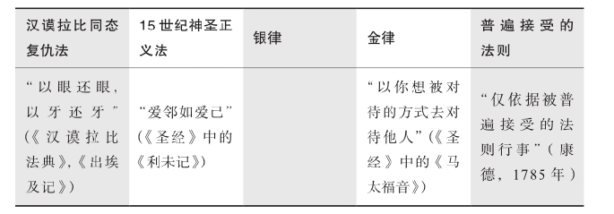
资料来源：来源于塔勒布和桑迪斯，2016年整理。
银律胜于金律
我从左向右逐一解释一下表格的内容，《利未记》简直就像是抹了蜂蜜的《汉谟拉比法典》。“金律”的意思是，以你想被对待的方式去对待他人。而表格中未列出的银律却比金律更牢不可破：“己所不欲勿施于人。”
[4]
为什么说银律比金律更牢不可破？
首先，它告诫你管好自己的事情，不要替他人决定什么对他有利（即金律没有排除这样一种逻辑可能：你单方面把你误以为对他有利的事情强加给了对方）。事实上，相对于判断什么是有利的，我们更清楚什么是不利的。其次，银律从另一方面提示了金律。我每隔三个星期去理一次头发，我发现让那位操着意大利口音的理发师在我原来头发的基础上剪短一些，远比让他给我尝试新发型更靠谱，而且也不容易出错。
现在我们来谈谈如何对待“其他人”。就像这里的“你”可以被视作个体的“你”，也可以被视作集体的“你们”一样，“其他人”可以是一个人、一支篮球队，或者是美国东北部意大利裔理发师协会。“其他人”这个词，泛指个体的“他”和群体的“他们”，当我们把“其他人”当作群体概念使用时，群体内的每个成员都可以是一个独立的单位，有可能与群体中的其他成员产生交集并形成新的群体，因此这一概念可用于各种规模的人群、部落、社会、社会群体以及国家等。正如个人应当以“待己之心”去对待他人，且避免虐待对方一样，家庭作为一个“单位”也应当以同样的方式去对待其他家庭。这一点同样可以且应该被应用于国家之间的交往。睿智的雅典演说家伊索克拉底早在公元前5世纪就曾经告诫过我们，一个国家应当依照银律中“己所不欲勿施于人”的原则去对待其他国家（前面讲到的干涉主义者应该为此感到羞愧）。伊索克拉底写道：
你认为比你强大的国家应该如何同你打交道，你就用同样的方法去和比你弱小的国家打交道。
没有人比伊索克拉底更好地阐释了对称性的概念。他活了100多岁，在90多岁的时候还做出了巨大贡献。他赋予了金律一个生动的解释：你希望你孩子将来如何对待你，你就用这种方式对待你的父母。以直言不讳而著称的棒球教练尤吉·贝拉提出了对称关系的另一个例证：我去参加别人的葬礼，别人才会来参加我的。
当然，这个解释的引申版本也会同样直白有效：你希望你的父母如何对待你，那你就用这样的方式对待你自己的孩子。
[5]
美国《宪法》第一修正案背后的理念，就是要建立一种类似银律的对称性。你拥有宗教信仰的自由，只要你也允许我拥有；你有权反对我，只要我也有权反对你。实际上，如果在表达己见方面缺乏这种无条件的对称性，那么民主就不能存在：民主制度面对的最大威胁是，以某些言论可能伤害他人为由，试图去限制这些言论。这种趋势一旦形成，就会使民主滑向深渊。这些限制并非都来自国家，也有可能来自用媒体引导舆论的“思想警察”所建立的强权文化。
摒弃普世主义
将对称性应用于个人与集体的关系之中，我们就能得出美德，现在则称之为“道德伦理”。表1最右一栏中的规则就是伊曼纽尔·康德的“道德律”
[6]
。我将其简化为：“如果其他人在相同条件下也会做出相同行为，那么你就去做吧！”康德还说：“对待自己一如对待他人，这不应该成为你做人的手段，而应该是你作为人的目的。”
康德那些深邃但拗口的教诲总是令事情变得很复杂，而太复杂的事情往往都在现实世界中存在着大问题。所以我们跳过康德那些极端复杂的方法，因为：
普世性的行为在书本上是伟大的，但在实际中是灾难性的。
事情为什么会被弄成这样？正如我们在本书中反复强调的那样，人类是具有领地属性且注重实际的动物，同时人类还对自己生存环境中的人口规模十分敏感。相对于普世的、抽象的、逻辑的道理，人们更加倾向于个人的、具体的和感性的事物。例如，我们认为微观作品要好于宏观作品，你在车库开派对的时候，最好直接开口和你的车库管理员打招呼，而不是说什么宏大普世的话。也就是说，我们应当将注意力放在直接所处的环境上，并且遵循简单实用的原则。但糟糕的是，凡是笼统的、抽象的和普世的东西总是能够吸引那些自以为是的精神病人，他们与前文中提到的干涉主义者是一伙儿的。
这也就是说，康德并没有提出“任何一个概念都有其适用规模”的问题，但是很多人却因此成了康德普世主义的受害者。正如我们所看到的，现代社会崇尚抽象而不是具体。那些捍卫社会正义的战士被指责为“将人当成目录里面的编号，而不是一个活生生的人”。除了宗教领域之外，在伟大的思想家埃莉诺·奥斯特朗姆
[7]
之前，很少有人能够真正领悟“适用规模”及其相关拓展性的含义。
事实上，本书要提醒大家的是普世主义被过度推广的危险性，它会导致我们把微观与宏观混为一谈。其实这也是发生“黑天鹅”事件的核心——人们往往有严重的“柏拉图化”倾向。人们在把具体事物转化为抽象概念的过程中，通常会遗失其中最关键的部分：具体事物所特有的生命和灵魂。其结果必然是一团糟。
从康德到胖子托尼
现在我们用现实中的例子进行阐释。在新泽西州的胖子托尼看来，对称性的意思就是：别对人扔垃圾，但也别让人朝你扔垃圾。他对此有更加实用的方法：
首先要友好地对待你遇到的每个人，但是如果有人试图对你来硬的，你就得给他点儿颜色看看。
胖子托尼是我在“不确定性”系列丛书中杜撰的一个人物，他的行为举止随心所欲，交谈、生活方式、腰围以及饮食习惯都与你所熟悉的公务人员或者经济学讲师格格不入。但他是一个心平气和且内心坚定的人，除非有人真把他惹毛了，否则他不会轻易动怒。他的主要工作是说服并帮助那些被基金管理人称为“冤大头”的普通人赎回资金，并与他们的基金管理人撇清关系（因为这些人总是拿别人的钱去赌博）。
对称性恰好也和我的职业期权交易直接相关。在期权交易中，买卖双方事先约定一个未来的行权价格，期权的买方在到期日可以享受超过行权价的收益，相应地，期权的卖方必须承担这部分损失。再比如，在保险合同中，投保人在缴纳保费之后，风险就依据保险合同转移给了保险公司。如果上述两个例子中的对称性原则遭到实质性破坏，那么这将会在系统内累积风险并最终导致灾难性后果，比如2008年的金融危机。
这种对称性还涉及交易中风险收益的一致性原则。让我们回顾一下之前的观点：如果银行家把预期利润计提一部分，变成他个人的奖金，而潜在的风险却转嫁给其他社会成员，比如前面提到的西班牙语女教师和公立学校的文员等，那么就会存在一个根本性的问题，即这种允许非对称性的制度实际上鼓励了银行家们隐藏风险，并使之不断累积，直至有一天突然爆发。然而那些所谓的“监管制度”，从纸面上看起来颇像救市良方，但是实际上它们只会加剧问题的严重性，因为这套所谓的“监管制度”纵容了隐藏风险的行为。
这就为我们引出了“代理人”问题。
骗子、傻子或两者兼具
关于银律（我再次提醒读者一下，银律是“己所不欲勿施于人”），还存在下面一种表达方法：
不要听从那些以咨询谋生的人给你的建议，除非他们会为自己提供的错误咨询接受惩罚。
首先，请回忆一下前面我们从道德和知识两个方面对“我相信你”这种心理的分析。在有关不确定性的问题上，总会有两种人：一种人是被随机性愚弄的傻子；另外一种是利用随机性从中牟利的骗子。前者对现实世界的不确定性缺乏了解，错误地将自己以前的成功经历归因于自己的技能而非运气，从而甘愿去冒无知的风险；后者则纯粹是为了钱而把风险转移给其他人。经济学家在谈到“风险共担”的时候，往往只关注第二种情况。
现在让我们关注一下在保险领域常见的代理人问题。简单来说，你比任何保险公司都更清楚自己的健康状况，那么你完全可能有动机在别人知晓你患病之前，赶紧去买一份保险。在这种情况下投保，你不但省去了大笔的保险费，而且能够得到保险公司大笔的赔偿。但是，你这样做却会导致其他无辜的人（比如那个倒霉的西班牙语女教师）今后要支付更高的保险费。对此，保险公司也采取了诸如设定高免赔额等筛选措施来抵消这种因信息不对称而造成的损失。
代理人问题（或者委托/代理问题）阐明了在交易过程中因利益不一致而导致的后果。举例来说，如果在“一生难得一次”的买卖中（比如，买房买车），这种一次性交易对于你的供应商来说你不可能是他的回头客，他的利益与你的利益不可能因长期合作而一致，那么他们可能会对你隐瞒某些关键信息。
对此，仅仅抑制“骗子”的动机是远远不够的，因为现实中“傻子”实在太多了，而且他们根本意识不到自己的愚蠢，归根结底是因为他们不了解自己的利益之所在，比如瘾君子、工作狂、被错误利益关系纠缠的人、支持大政府的人、出版商、书评人或某些令人尊敬的官员，他们都没有意识到他们的行为正在损害自身的利益。不过，幸好存在一种筛选机制会把这些人淘汰掉，使得他们的无知不再危及其他人。这正是进化的机制：系统会筛选愚蠢的人，从而使系统自身变得聪明起来。
由此引出了另外一个观点：我们或许无法预知某一行为是否愚蠢，但是现实可以预知这一切。
随意掩盖和故意披露
[8]
现在我们从更高的层面来理解“风险共担”，它关注事物的本质，而不是其表象。正如胖子托尼的座右铭：
你并非想要赢得一场争论，你真正想要赢得的是一场胜利。
事实上，你确实需要去赢得你所追求的东西：金钱、土地、西班牙语女教师的芳心，或者一辆粉红色的敞篷跑车。而一味地纸上谈兵会把人推向危险的境地，因为：
相比于理解，我们更善于行动。
当然，江湖骗子和那些真正拥有技能的社会成员之间是有很大区别的，比如，信口雌黄的宏观政治经济学家和管道工，有社会正义感的记者和黑手党成员。我们之所以获得了成功，是因为我们采取了实际行动，而不是因为我们学会了说服别人。在某些领域，比如经济学和其他社会科学领域，由于缺少亲身参与的“风险共担”，经济学家奢谈所谓的科学方法，导致他们越来越脱离实际，这也连累了其他学科，使得它们看起来像是骗局。第9章将讲述他们是如何发展了一整套完整的仪式、头衔、规范和公式来掩盖他们对解决现实问题的无能为力。
你起身之前并不确切知道自己要去往何方。
[9]
经济学是建立在人的“显性偏好”基础之上的。一方面，人的想法其实和他实际的行动之间并无多大关联，因此你要避免掉到含混不清的心理学陷阱里面。人们总会为自己的行为辩解，其实那不过是他们自己编织的自圆其说的故事罢了，它和科学方法并没有什么关系。另一方面，人们的行为是具体的、可测量的，也是我们应当关注的重点。这一认识虽然很有说服力，却很少有研究者遵循。事实上，订婚的人最能理解这种“显性偏好”：一颗昂贵的钻石胜过千言万语的誓言。新郎用这种可衡量的（昂贵的价格）且不容反悔的方式，展示了他对新娘的承诺。
忘掉那些预测吧！
停留在语言层面的预言和投资者所需要的预见毫不相干。
我认识一些预测错误但是赚了钱的人，也认识一些预测准确但是输了钱的人。这是因为在生活中，重要的并不是你预测准了多少次，而是在你预测准确的那一次里，你真正赚到了多少钱。同理，即使做出了错误的预测，只要造成的损失不太大，其实就无关紧要，这类似于研究过程中采用的试错法。
现实生活中的例子往往过于复杂，很难被简化成一个精致的模型，然后用三言两语解释清楚。而且现实生活中的结果也不像棒球比赛那样，可以被简单地归结为输或赢。在很多情况下，我们面对的风险是非线性的，比如农夫可能会受益于降雨，但若降雨持续下去并演变成洪水，那么结果农民可能就从受益变成了受损。有关风险的非线性分布问题的专业讨论在本书后面的数学附录部分。我认为所谓的预测，尤其是那些打着“科学”幌子的预测，通常都是江湖骗子可以依赖的终极手段，自古已然。
此外，数学中被称为“反向设计”的工程学问题似乎只能通过“风险共担”来解释。其实投资领域并不像工程学那样，给工程师一台机器，他能够反向设计出所有的零部件和驱动程序。对于我们来说，“反向设计”极为困难。首先，进化的结果对于我们来说是不可预见的。其次，我们无法逆转时间，我们真正能做的其实就是继续把这种“风险共担”玩下去，理解并接受进化最终筛选出来的结果。
“风险共担”有助于解决类似“黑天鹅”的突发事件以及其他层面的（包括个人或者集体所遭遇到的）不确定性事件。那些在“风险共担”中存活下来的个体或者集体，证明了他们抵御“黑天鹅”事件的韧性，我们如果人为地排除“风险共担”，就会破坏这种筛选机制。如果没有“风险共担”，我们就无法理解“造物主”通过“时间”显示出来的伟大智慧（后面将有一章专门讨论涉及“时间”的“林迪效应”，其中包括了两个方面的内容：第一，时间筛掉了脆弱的个体，留下了强韧的个体；第二，那些强韧个体的生命由此得以延长）。其实很多思想也是实践的产物，所以拥有这些思想的人必须懂得亲身参与“风险共担”的道理。
时间是伟大的智者，它通过“风险共担”塑造了理性——这是一种任凭深思熟虑后仍然无懈可击的理性。设想这样一个场景：对于法国某规划部门的公职人员（他因受过太多的教育而变得天真，但每天准时上班）来说，某项惯例可能看起来并不合理，但它已经运行了很长时间。也许他会问：这是否是理性的？尽管他心里有这样的疑问，但是他并没有充足的理由去推翻这项惯例。相对而言，我们更容易知道哪些事情是明显非理性的——首先是那些威胁集体生存的事情，其次是威胁个体生存的事情。从统计学角度来看，如果某自然规律符合统计学意义上的显著性特征，那么违背这个自然规律就是明显不理性的（除了由杀虫剂公司赞助的反对者以外，其他人都对此深信不疑）。我们的惯性思维使我们相信，那些有效的做法不可能是不合理的。天哪！这些年来我遇到的每一个最终投资失败的人都会被这个思维定式所害，他们无法理解为什么某些愚蠢的做法（可能在相当长的一段时间内）不仅有效，而且能让你赚到钱。他们坚信，一个做法只要有效，就不可能是愚蠢的。
在一个符合“风险共担”的系统中，自我牺牲很可能是很关键的一个理念。这样做的目的是确保集体或者更高层级的个体能够存活下去。从某种意义上讲，这就是“成王败寇”的游戏，用胖子托尼的话来说，“赢的人说什么都对，哪怕他们说狗屎会飞也是对的”。
别理会胖子托尼的粗俗语言，其实他的意思是：
所谓理性就是首先保证自己所在的集体生存更长时间。
很多不严谨的心理学或社会科学书籍中声称的“理性”，其实根本就不是那回事。
[10]
与心理学家告诉你的情况正相反，事实上，无论从哪个标准来衡量，对某些尾部风险的“过高估计”不能说是非理性的，这种由于过高估计风险而始终保持警惕的状态，从根本上保证了集体的生存。在现实中，有些风险我们无法承担而只能选择回避，还有一些风险（尤其是学者们策略性地回避的那种风险），恰恰是我们必须承受的。这就是风险的“遍历性”，我们将在第19章中详细讨论这个话题。
不要把“风险共担”教条化
“风险共担”总体来说是必需的，但是我们也不要教条地将其应用到日常生活的所有事情上去，如果后果不严重，我们就完全可以忽略“风险共担”。前文中的干涉主义者发表的强硬声明，不同于普通人在日常交流中的无足轻重的意见，就像算命先生用来给你提供心理安慰而胡编乱造的那些话（即使它们全都是谎言），也绝对不能和干涉主义者的决策声明相提并论。毕竟，后者导致地球的另一端有成千上万的无辜者惨死。我们要关注的是那些大权在握的人，因地位的特殊性，他们发表的言论通常会导致严重的后果，如果他们不必为此负责，结果就会很糟糕。
古往今来，那些“做出决策的权力”和“承担后果的责任”相互不对称，乃至那种相互分离的工作岗位往往是行政系统顶端凤毛麟角的少数岗位。普通人在生活中不太可能遇到这种情况。你在现实生活中遇到的绝大部分人，比如面包师、修鞋匠、管道工、出租车司机、会计师、税务顾问、清洁工、牙科助理、洗车工（这次我就不提西班牙语女教师了）等，都会为他们自己的错误决策承担后果，并付出代价。
现代主义
本书中“公正”这个概念的内涵与古老的传统观念一脉相承，因此在秉承对称性的问题上，我不得不和近一个半世纪以来的现代主义思想分道扬镳。这种所谓的现代主义思想其实是一种唯智主义，或称为“唯智论”（intellecutalism）。唯智主义者认为，行为与结果可以相互分离，理论与实践可以完全割裂，他们甚至还认为建立一套严格的等级制度就可以用程序化的方法解决一个复杂系统的问题。
唯智论还有一个姊妹：唯科学论。唯科学论主义者将科学推崇为一个复杂而神秘的事物，而不是将其视作“好奇、质疑、探索和实践”的过程。他们坚持在根本不需要数学的地方使用数学，其实那并不是一个科学方法，而是唯科学论。比如，让你放弃自己灵活自如的双手，转而使用人工智能的机械臂，他们居然会认为这就是科学。抛弃那些经过亿万次高强度考验和多维度检测的自然形成的方法，转而依赖“同行评议”出来的学术期刊，这些期刊自身或许都无法经受再版和统计验证的考验。因而，用后者的方法替代前者，这既不科学，也不正确。我在撰写本书的时候，科学已经成为商贩们兜售商品（比如人造黄油或转基因产品）的把戏。具有讽刺意味的是，本应具有质疑精神的科学事业，竟被用来抑制人们对这些商品的质疑。
今天我们看到的那些用简洁而精美的语言所表达的知识，其实是历史上多少代人用他们的实践总结和打磨出来的。你当然不会从你生活的当地小报中读到或者从当地学校里学到如此简洁精美且有洞见的知识。这一切来自更高层次的质疑能力、对自身智力的自信、对统计显著性更深刻的理解，此外，你还需要有敏锐的思想和严谨的思维，甚至你还要有在露天市场卖地毯或佐料等方面的丰富经验。因此，本书延续了“质疑–探索–实践”这一解决问题的悠久历史传统——“不确定性”系列丛书的忠实读者，应该还记得我在《黑天鹅》里面提到的塞克斯都·恩披里柯
[11]
，他早在2 200年前就在《驳教师》一书中阐述了与我类似的观点：
说的人应该去做，做的人应该来说。
不过，这一原则对某些学科可以例外，比如数学、哲学、诗歌、艺术，以及其他不需要与现实有紧密联系的学科。正如伟大的博弈论专家埃里尔·鲁宾斯坦所告诫的那样：学者们应该埋头研究自己的理论和数学表达式，千万别告诉人们如何在现实世界中应用这些东西。他说得对！应该让亲身参与“风险共担”的人自己去选择所需的理论、模型和方法。
让我们面对现代化进程带来的副作用吧！随着一切事物变得越来越专业化，理论诞生的假设环境和其应用的实际场景之间的偏差会越来越大。
聚光灯下的演讲者
凡是做过大型演讲的演讲者都会发现，自己还有其他讲演者在台上很不舒服。我花了10年的时间才弄清楚原因：舞台上的灯光会照射在你的眼睛上，从而使你的注意力不能集中（以前警察审问犯罪嫌疑人时就用这个办法：用一束光照射犯罪嫌疑人，然后就像等合唱团唱歌一样等犯罪嫌疑人自己招供）。但是，演讲者大多数并没有意识到自己注意力不集中，这是因为他们在讲台上被灯光照射的缘故，或者说真正的原因是做大型演讲的演讲者不干灯光工作，而灯光工程师又不做大型演讲。
再来看一个类似的例子。纽约市对连接市区和北郊之间的北线轻轨车辆进行了全面整修，整修后的车厢看起来更现代化，颜色也更鲜亮，甚至车上还安装了充电插座等便利设施。但之前在车厢墙上有一个小的搁板，早晨在车厢里读报、看手机的人可以把咖啡杯放在这块儿搁板上，毕竟，拿着咖啡杯看东西很不方便。负责整修的设计者要么从不坐地铁，要么他坐地铁时从不边喝咖啡边读书，也许是出于美观考虑，设计师将原来的搁板改造得稍微倾斜了一些，结果就是大家没有搁板放咖啡杯了。
这个例子体现了当今设计和建筑行业存在的一个极为严峻的问题：设计师试图用他们的作品震撼其他设计者，而不是用他们的作品取悦真正的用户。其结果就是今天的建筑设计得千奇百怪，却没有很好地满足用户的实际需求，而且它们还很难拆除重建，只能进行一系列的修补。除了设计师以外，某些城市规划部门的专家从未在社区居住过，他们也会为了实现所谓的改进，犯和轻轨车厢设计师同样的错误，只不过他们影响的范围更大。
我下文还会再提到，专业化会带来副作用，其中之一就是劳动和劳动成果相分离。
简单化
“风险共担”实现了简单化——那种解决问题、赢得胜利的“至简之道”。那些只会用复杂方法解决问题的人，很不喜欢用简单的办法。正如我们所知道的，宣扬干涉主义的人，往往热衷于复杂的解决办法，往往来自一个复杂且混乱的官僚体系。所以他们只会用复杂的方法，这是他们的利益所在，他们就是这样被训练出来的。
由缺乏实战经验和务实精神的人设计出来的系统会越来越复杂，直至崩溃。
如果我们评价人的体系不是依据他工作的结果，而是依据大家对他工作的感受，那么这个人就有足够的动机把他的工作复杂化，这样可以使他显得很忙、很努力、很敬业。在这种情形下，采取简单方法绝不会给他带来任何好处。所有向学术期刊投过稿的人都明白，一定要把论文写得复杂一些，而且要使论文的复杂性远远超过“把事情说清楚”所需要的程度，这样反而会增加论文发表的可能性。如果我们任由这种不必要的复杂性非线性地增长，那么就会产生严重的后果：
不亲历“风险共担”的人，不懂得“大道至简”。
我就是个笨蛋！
让我们回忆一下前文提到的“pathemata mathemata”（在痛苦中学习），然后考虑一下这样一种可能：在兴奋和快乐中学习。人的大脑在参与“风险共担”时的状态和平时不一样，当你亲身参与“风险共担”时，平时那些无聊的事情也会变得不那么乏味，比如对飞机的安全性做例行检查的时候，如果你必须要乘坐这架飞机，这事儿对于你来说就不再无聊了。如果你投资了一家公司，那么阅读财务报表的注解（真正有用的信息往往就在那里）这种极其枯燥的事情也会变得有趣了。
不过，我还有一个提醒，让一个人去做与他切身利益相关的事情未必就能做得很好。许多智力愚笨、头脑迟钝的瘾君子——也许可以称他们为外交政策专家，始终能找到巧妙的方法购买毒品。在接受戒毒治疗时，常有人告诉他们，如果他们能把用于寻找毒品一半的精力用在赚钱上，他们早就成为百万富翁了。但那么做无济于事，没有了毒品，他们那神奇的魔力就消失了。就像是那种传说中的神奇药水，它只会给寻找它的人非凡的力量，但当它被喝下去以后，魔力就消失了。
坦率地说，当我不参与“风险共担”时，我就会变成一个笨蛋。我的专业知识，比如风险和概率，最初不是来自书本，也不是来自对崇高哲学和科学的渴求，甚至也不是来自好奇心，而是来自在市场交易过程中的兴奋感和荷尔蒙刺激。我之前从来不觉得数学有趣，直到在沃顿商学院一个朋友给我讲了上文提到的期权（以及由期权推导出来的复杂衍生品），我立刻决定要从事这项事业，将期权交易和复杂概率分布融合在一起，这是一片无人涉足的新领域。我深知传统“钟形”概率分布函数是错误的，它们忽略了尾部事件（极端事件）的影响。我知道那些学者根本就不理解什么是风险。所以，为了找到用概率方法评估证券价格的错误，我必须要学习概率论。不可思议的是，我刚一接触这方面的内容就觉得概率论有趣极了，而且它还让我深深着迷。
当出现风险时，我的大脑立刻开启了第二种运转方式，分析和运用复杂的概率函数马上就变得毫不费力了。这也难怪，发生火灾时，你会比在平时任何比赛中都跑得快；还有在高山速降滑雪时，我的一些动作也会变得流畅自然。但是不采取实际行动时，我又变回笨蛋了。还有一点，作为交易员，我们所用的数学知识必须和现实问题完全吻合，就像滑雪运动员给自己找一副滑雪手套一样，我们不能像学者那样只想着把现有的模型运用到实际问题中，他们就像是拿着滑雪手套找运动员一样。有时候，我们不得不在空气稀薄且呼吸困难的山顶凭空创造一个模型，用以解决我们此时此地遇到的麻烦，而且我们清楚地知道，一旦这个模型的等式错了，我们就将付出惨痛的代价。用数学解决交易中的实际问题完全不同于在学院中学习数学，我们在写下方程式之前，一定要深刻理解问题本身。
你为了救一个孩子而徒手举起了一辆汽车——这当然是你平时力所不能及的事情，但是事后，你的力量仍然存在于你的体内，当面临风险时，你会高度紧张，全身心地投入，而不会像瘾君子那样——他们的聪明才智会和药物一起消失。你在那种紧张和专注的环境下所学到的东西会永远属于你。你的大脑也许不会再表现得那么聪慧和睿智，但是没有人能拿走你已经学到的东西。这就是我反对传统教育体系的主要原因：它完全是一个“任由书呆子制造更多书呆子”的体系。如果我们把数学变成和孩子们自身兴趣和利益切身相关的事情，他们中的很多人就会爱上数学，长大以后会自觉地运用数学方法，并及时发现数学在哪些领域被滥用了。
监管措施vs法律体系
有两种方式可以保护公民不受大公司那样的强大掠夺者的伤害。第一种是制定监管措施。不过，监管措施不仅会限制公民的个人自由，而且会带来另一种形式的掠夺。掠夺者包括州政府、州政府的代理人和代理人的亲信们。更糟糕的是，那些雇用优秀律师的人可以把监管体系玩弄于股掌之中，他们的办法就是雇用原先的监管者，支付给他们高额的报酬，并弄得尽人皆知，这就在无形之中给现任的监管者发出了隐含的贿赂信号。更糟糕的是，“请神容易送神难”，监管措施一旦开始实施就会被越搞越复杂，即使有证据表明某些监管法规荒谬透顶，但是在体制内受益者的压力下，政客们也不敢废除这些监管措施。于是，监管措施不断膨胀，其复杂程度超出想象。为了应付这些监管措施，企业丧失了创造力，人们失去了生活的乐趣。
总有寄生虫会从监管措施中获利。商人会利用政府，通过保护性监管和设置行业门槛使自己的生意获利。这种机制被称为“监管套利”，这种做法违背了监管的初衷。
相较于让监管体制告诉人们什么能做，什么不能做，另外一种保护公民的方法也许更有效。那就是把“风险共担”置于《合同法》的保护下进行，未能如约履行责任的一方将会受到法律的惩罚。在盎格鲁–撒克逊人建立的英美普通法的世界里，自古就有“假如你伤害我，我就可以起诉你”的法律基石。普通法经过了多年实践和反复试错之后，操作性强，适用性广，已经以一种自下而上都接受的方式确立了权利与义务对等的原则。人们在交易时，总是倾向于援引英美普通法作为仲裁的依据。在亚洲，中国香港，以及新加坡是首选的仲裁地，在西方则是英国伦敦和美国纽约。普通法早已深入人心，成了人们自觉的行动标准，而监管体系还停留在严格的文字上。
如果一家大公司在你居住的社区制造了污染，你就可以和邻居一起提起法律诉讼。在利益驱动下，律师会早早地为你准备好相关文件，这家公司的竞争对手也会很愿意帮助你们。而结案所需的巨额费用，足够震慑该公司以后不敢再犯。
但这并不意味着我们永远都不要建立一个监管体系，有些会产生系统性影响的领域仍需要监管（比如环境被破坏以后隐含的尾部风险，需要很长时间才会显现）。只有在无法进行有效的法律诉讼的情况下，我们才考虑监管。
[12]
尽管监管体系可以为社会带来一小部分净收益，但是我还是希望选择法律体系而不是监管体系。只有这样，我才能尽可能地保持我的自由，但是我会履行作为公民的责任，接受命运的安排，如果我伤害了别人，我就应该接受惩罚。这种态度被称为“道义自由主义”（道义一词源于“责任”）：监管会剥夺人的自由。而自由是人的第一要义，其中也包括犯错误的自由（只要你伤害的是你自己），这种自由的神圣之处在于我们绝不会为了经济利益而出卖自由。
将灵魂投入“风险共担”
最后，也是本书的核心部分，在“风险共担”的亲历者们看来：第一，得到的荣耀和付出的承诺是一体的；第二，勇于承担风险（某些特定类型的风险）事件的后果，不仅是人和机器的区别，而且是将人区分成不同等级的依据（有些人可能不爱听这句话）。
如果你不能为自己的言论承担后果，那么你等于什么都没说。
下文我还会提到，我对成功的定义就是过上一种挺直脊梁充满荣誉感的有尊严的生活，绝对不能让别人替我们去承担由我们的错误所造成的损失。
尊严就是有些事情你永远都不会去做，无论报酬有多么诱人。比如一位有尊严的女性，她不会为了500美元向浮士德出卖自己的身体，这同时也意味着即使给她100万、10亿甚至10 000亿美元，她也不会这样做。但是，尊严不仅是不去做什么，它还意味着你会无条件地去做某事，而且无论结果如何，比如决斗，伟大的俄国诗人普希金、法国数学家伽罗瓦，还有很多人都在决斗中英年早逝（伽罗瓦去世时实在是太年轻了），他们为了捍卫尊严，都不惜冒险决斗，将自己置于死地。他们不会选择像懦夫一样活着，他们宁可从容赴死，即使是伽罗瓦这样年少有为的数学家也是如此。
[13]
一位典型的斯巴达母亲会这样对即将奔赴战场的儿子说，“要么凯旋，要么捐躯”（当地的习俗是将战死英雄的尸体平放在他的盾牌上面，扛回来）。只有懦夫才会为了逃得更快，丢弃自己的盾牌。
如果你想了解现代化是如何摧毁人类价值观的，你就可以将上文中那些无条件牺牲自己的古代英雄与现在从事游说职业的人进行对比，那些令人作呕的游说者（假设他们代表的是沙特阿拉伯在美国的利益），还有那些学术不端的人，他们居然用“我还要供养孩子上大学”来为自己辩解。那些缺乏道德独立性的人，往往通过曲解道德标准来解释他们职业操守的正当性，而不是改变他们的职业操守使之符合道德标准。
还有另外一种尊严：和其他人一起参与到“风险共担”中去，并甘愿为共同的事业牺牲自己的利益。当然，还有一种荣誉感就如同手工匠人那样，自豪地传承着某种手艺，而无须做出巨大的牺牲。
手工匠人
如果你做一件事的时候总想着如何优化流程、寻找捷径、提高“效率”，那么这说明你今后迟早会讨厌这件事。而手工匠人则不会，因为：
手工匠人将自己的灵魂置于工作之中。
第一，手工匠人首先考虑的是他的生存，然后才是满足财务和商业需要，他们所做的决定并不全都以营利为目的。第二，他们的职业带有某种“艺术色彩”，置身于现代工业化社会之外，直接将艺术和商业相结合。第三，他们是有灵魂的。他们不会卖次品，在达到自己内心的艺术标准之前，他们不会对产品质量妥协和折中，因为这里有他们的尊严。第四，他们遵奉神圣的戒律，对有些事情，即使利润很高，他们也绝对不会去做。
拉丁语有句名言：品德低劣的人抄近路，品格高尚的人绕远路（Compendiaria res improbitas, virtusque tarda）。换句话说，“抄近路”就是一种不诚实。
以我自己的职业为例，显而易见，作家实际上也是手工匠人：销量不是最终动机，只是次要目标。你有强烈的动机去抵制那些粗俗的诱惑，以捍卫你作品的神圣。比如，21世纪初，珠宝连锁品牌宝格丽出资赞助作家菲·维尔登的新作品，让她把这个珠宝品牌植入小说中，借此推广该品牌。但此事最终演变成了作者的丑闻和赞助商的噩梦，公众普遍对此感到厌恶和抵触。
我还记得20世纪80年代，一些人试图免费派发图书，但是这些图书的正文会插有广告，就像杂志一样，整个活动最终失败了。
我们也无法将写作工业化。如果我为了提高效率而雇用其他作家“帮忙”，那么你一定会感到很失望。有些作家，比如约瑟·科辛斯基，曾尝试以分包的方法来写书，事情败露后，他被读者彻底抛弃了。知名作家担任总承包商然后分包给其他人完成的作品，很少能流传后世。但也有例外，比如大仲马，据说他开办了一个为自己代笔的作家工作室（有45个成员），这使得他的小说的产量高到了惊人的150多部。因此，有个笑话称，大仲马其实是他自己作品的读者。一般来说，作家的产量（而非销量）是不可扩充的，大仲马或许是个例外吧。
我们来谈一些实际的吧！尤素·瓦尔帝是一位成功且快乐的资深企业家，他曾建议我不要助理，这是我迄今为止收到过的最好的建议之一。哪怕只有一个助理，都会妨碍你的大脑去建立一种筛选过滤机制——没有助理会迫使你只去做你自己喜欢做的事情，并逐渐引导你的生活朝着快乐的方向发展。这里所说的助理不包括那些帮你完成某些特定工作的人，比如批改试卷、处理会计问题、浇灌植物，而是指那些充当守护天使、监视你一举一动的人。这需要一种逆向思维：你到底是想要更多自由支配的时间，还是完成更多的工作？我衡量一个人“成功”与否的标准，就是“他有多少自由支配的时间”。如果你雇用助理，那么最终的结果是你在协助你的助理工作，被迫向他“解释”怎么做事情，而这比做事情本身要累得多。事实证明，这个建议不仅对我的写作和研究工作很有帮助，而且在投资上也十分有效，因为我变得更自由，思维更敏锐，轻易不会决定去做某些事情。而我的同事们则每天都忙着开无用的会议，回无益的邮件。
助理（除非绝对必要），会把你的灵魂从“风险共担”中带走。
试想一下，你到访墨西哥，拿着一个手持式翻译器，而不是用娴熟的西班牙语和当地人交流，结果会怎样？助理就像这台手持设备一样，让你得不到真实的体验。
学者有时候也可以是匠人。然而，那些误解了亚当·斯密的经济学家一方面宣称人类会本能地追求“收益最大化”，另一方面，他们又在免费地表达自己的这个观点，还说自己并不寻求哪怕最低的酬劳。他们难道没有发现自己言行的矛盾之处吗？
对创业者的警告
创业者是我们社会的英雄。他们为其他人承担了失败的代价。但是在现有的融资和风险投资机制下，许多人相信创业者的目标无非是将其创立的公司出售给其他投资人来变现，或者通过上市来最终套现。因此，人们误认为创业者不会真正参与“风险共担”，公司创造的真实价值以及长期发展的前景，与这种创业者本人没有利害关系。这种人只是纯粹的融资专家，单纯追求上述目的的人，不属于风险承担型的“创业者”，这种人就像是（在古罗马奴隶市场上）圈养了一个容貌姣好、招人喜爱的孩子，其目的只是等他长到4岁时可以卖个好价钱。只要看到这些人展示给我的花里胡哨、激情澎湃、充满说服力的商业计划书，我就能很容易判断出他们不是真正的企业家。
过了创业阶段以后，企业就开始走下坡路。公司的消亡率几乎和癌症病人的死亡率一样高。其主要原因是，在成熟的大公司里，人们承担的责任都是有时效性的。一旦你完成了你的职责，转到其他岗位，或者跳槽到其他大公司时，你就会和罗伯特·鲁宾一样对隐约可见的风险说：“这事儿和我无关。”卖掉你创立的公司时，你的心态也是这样的。所以，请记住：
能够成功地创立一个好公司的人，和能够成功地把一个公司卖出好价钱的人，一定是两种完全不同的人。
傲慢也行
如果某产品或公司的名称包含公司所有者的名字，那么这相当于大声告诉你，产品质量不仅和公司利润挂钩，而且和创始人的名誉紧密相连。公司的命名方式体现了创始人对公司承担的责任，以及对产品的信心。我的一位朋友保罗·威尔莫特（Paul Wilmott）经常被人称为“自大狂”，因为，他以自己的名字命名了一份金融数学期刊Wil-mott，在我撰写本书时，他的这份期刊无疑办得很好。“自大狂”对产品和公司的发展是有好处的：你热爱这项事业，所以你会去捍卫它。如果你无法使自己变成“自大狂”，那么变得傲慢一些也行。
公民身份是一种荣誉
许多成功人士选择到美国定居，他们虽然在美国长期居住，但是避免成为美国公民。他们获得的永久居住许可是一项权利，而不是义务，个人可以通过简单的法律程序申请注销该许可。他们为什么不愿意在法官面前宣誓效忠美国宪法，然后在乡村俱乐部举行一场盛大的酒会庆祝自己成为美国公民？答案是：税。一旦你成为美国公民，你即使居住在其他国家，也要为你在其他国家取得的收入交税。而且公民身份几乎是不可逆转的（放弃美国公民身份远比放弃美国永久居留权困难得多）。这也就是说一旦成为公民，你就丧失了税收义务的灵活性。但其他西方国家，比如法国和英国，会允许居住在某避税天堂的公民获得纳税豁免权。这就吸引了一大批人来这些国家投资或在那里居住一个最短期限——相当于用钱来“购买”这些国家的公民身份，然后他们再搬去其他不用交税的地方定居。
一个国家不应该容忍那些“避税候鸟”型的公民或者居民。他们只享受拥有某国国籍所带来的权利，比如在不同国家间自由往来，却不亲身参与这些国家的“风险共担”，这种人的存在，对于热心参与国家发展并推动国家进步的其他公民来说，是一种冒犯。
我的父母都是法国公民，几十年前我就可以非常容易地加入法国国籍。但是，我觉得这样做不对，我甚至觉得这样的做法带给我的是屈辱或冒犯，除非我亲身参与法国的“风险共担”，对法国建立真情实感。一想到在法国护照上看到我那长满络腮胡子的脸，我就会觉得很不舒服。我唯一考虑过的是希腊（或塞浦路斯）的居住许可，因为我一直觉得自己与古希腊文化之间有一条紧密的纽带。
但是我来到了美国，拥抱了这个国家，并且把我的美国护照视作我对这个国家的承诺，无论它好与坏，无论缴不缴税，这就是我的身份。许多人嘲笑我的决定，因为我大部分的收入来自海外，如果我取得其他国家的身份，比如塞浦路斯或马耳他，而不是美国公民，我就可以缴更少的税，赚更多的钱。我确实也想（在税法许可的情况下）尽可能地减少纳税义务，而且我也应该为此奋斗和抗争，不仅是为我自己，也是为我的同事以及客户，但是这是我应该承担而不能回避的义务，这是我的“风险共担”。
英雄不是书虫
你如果想要学习经典作品，学习其中的勇气或者斯多葛派的坚忍精神，就别去图书馆翻阅研究经典的学者们的作品——他们成了学者而不是伟人，其中不会没有原因。你不能指望从学者的解释性和介绍性的作品中学到先贤的品质。你应该去翻阅真正从事这项事业的人的作品，去了解该领域的原著，读那些真正践行古典主义价值观的英雄留下的作品，比如塞内加、恺撒或马可·奥勒留。或者你也可以阅读法国作家蒙田的作品，毕竟他在隐退著书之前，曾经亲身参与古典主义价值观的“风险共担”。尽量不要读别人转述的作品，而要读亲历者自己的著作，实在不行，你就自己凭着勇气去实践探索。
你在书本中学到的勇气并不会使你变得勇敢，就像吃牛肉不会让你变得像牛那样蠢一样，两者是一个道理。
由于某种难以理解的心理影响，人们未能意识到，你从教授身上学到的主要是如何成为一名教授，而在人生导师或激情澎湃的演讲家那里学到的，是如何成为人生导师或演讲家。古代的英雄不是古代的学者，更不是现代图书馆的书虫。他们并不生活在文字里，那些英雄为使命而生，他们的精神和意志只有当你和他们承担过相同的风险之后，你才能真正体会。因此，你并不需要什么教授来向你解释什么是坚忍刚毅的斯多葛
[14]
精神，他们几乎不能理解这种精神（事实上，他们从未理解过）。从我个人的经验来看，那些和我打过交道的所谓的“古典主义学者”，总是能够在吃早餐的时候对那些英雄人物的传奇事迹如数家珍，比如亚历山大大帝、埃及艳后、恺撒、汉尼拔、朱利安、莱昂达斯和芝诺比娅等。但是，我们在学者身上根本找不到类似这些英雄人物的一丝一毫的勇气。本书最重要的一章是“承担风险的逻辑”，它就是最后一章，里面讲述了一些在实践者看来十分重要的风险因素，是如何被学者们整整忽视了两个多世纪的。
全球化和保护主义的兴起
现在让我们把这些观点应用到现代社会。我们再回想一下建筑师与实际住户需求相脱节的故事。我们把它推广到系统性效应上，比如保护主义和全球化。这样看来，保护主义的兴起可能有着深层次的原因，比如现实的经济利益。
我打算回避一些争议的话题，先不讨论全球化浪潮是否是人类建造巴比伦通天塔的又一次尝试。每个工人的内心深处都有一颗匠人之心。大型跨国公司收买了一批说客，想要让我们相信保护主义是错误的。但是，与此相反，针对这种匠人的保护主义和新古典经济学的思想并不矛盾，也符合经济决策所依赖的数学原理。这些匠人在做个体决策的时候，并不完全依据使其个体利润最大化的原则，他们有自己的理性和诉求，而且这些诉求并不伤害其他人的利益。正如我在前文中所说的，在个人荣誉感和责任心的驱使下，我们即使做出某些不以追求利润最大化为目的的事情，也仍然是符合经济学所谓的“理性”的。如果把目光局限于经济利益，我们就无法理解为什么人们会有动机去追求其他方面的利益。这是因为人的诉求有许多方面，不仅只有经济利益。
[15]
仅从统计数字来看，将生产转移到劳动力成本更低的国家是正确的决定，也是有利可图的。打个比方，我写作是因为这就是我想要做的事情，我想要做的事情就是我的一部分，就像一把刀被生产出来就是用来切东西的。我是从亚里士多德所提倡的美德角度看待这个问题的：将我的研究和写作转包给中国或突尼斯（或许）能够提高我的劳动生产力，却会让我迷失自我，失去自我认同。
所以人总是想做点儿什么，有了一份工作他们才有身份认同感、社会认同感，才会感觉自己没有被社会抛弃，仍然被社会需要，自己仍然在参与“风险共担”。美国纽约州韦斯切斯特县的鞋匠就只想好好去做一名鞋匠，享受自己的劳动成果，看到自己的产品被陈列在商店橱窗里的时候，他就会感到很自豪。他不会把工作分包给一家中国工厂来代替他制作鞋子，然后去从事其他职业，即使这样做会改善他所谓的经济条件，这样做他就可以买得起平板电视、更多的全棉衬衫和更便宜的自行车。因为放弃鞋匠身份，他会觉得自己失去了什么。剥夺人们所从事的职业是残忍的，人们希望自己的工作中有自己的灵魂。
从这个意义上来说，分散化和碎片化除了可以稳定系统以外，还可以增强人们与劳动之间的关系。
以身正法
让我们以一个历史故事来结束本章。
有人可能会问：法律确实有效，但如果主审法官腐败无能，我们该怎么办？他可能成为法律体系中的漏洞，而且可能免受惩罚，这样的法官会成为法治的阻碍吗？我的答案是未必，至少从历史上看，并非如此。我的一位朋友曾给我看过一幅荷兰画家的作品，名为《冈比西斯的审判》，这幅画取材于古希腊史学家希罗多德关于腐败的波斯法官西桑尼的故事。冈比西斯国王下令将西桑尼活活剥皮，作为他违背法律正义的惩罚。画中描绘的场景正是西桑尼的儿子继承父业，坐在他父亲曾经坐过的大法官座椅上，那把椅子上铺着用他父亲的皮做的垫子。这个故事提醒人们，执法者如果以身试法，那么他就得按照“风险共担”的规则，让自己“以身正法”。
[1]
《塔木德》是犹太人继《圣经》之后最重要的一部典籍，又被称为犹太智慧羊皮卷。——译者注
[2]
拉尔夫·纳德（1934年至今），美国著名社会活动家、作家、律师，积极投身于消费者保护法案、环保主义和政府改革。——译者注
[4]
“己所不欲勿施于人”，字面直译为“不要以你不想被别人对待的方式去对待别人”。（伊索克拉底，希勒尔，《摩诃婆罗多》）“你自己厌恶的事情，就不要对你的同伴去做”。老拉比希勒尔引用《利未记》：“如果某事加诸你身会给你造成痛苦，那就不要将其加诸他人之身，这就是道德的本质。”
[5]
《新约》中恶仆逼债的寓言是一个违反对称性的例子（《马太福音》）。一位慷慨的债权人放弃了一位仆人欠他的巨款，而这个仆人却转而对另一个欠他一笔小钱的仆人施加惩罚。绝大多数评论者似乎都忽略了这个故事真正想要表达的意思并不是宽恕，而是“对称性应该是互动的”。
[6]
康德的道德律：“永远使你行动的准则能够同时符合任何普遍适用的法律原则。”康德提出道德律以以下几个基本思想作为前提：（1）人生活在社会之中；（2）人有自由；（3）人人平等；（4）社会应该成为人性得以完满实现的共同体。——译者注
[7]
埃莉诺·奥斯特朗姆（Elinor Claire Ostrom，1933年8月—2012年6月），美国女经济学家，2009年获得诺贝尔经济学奖。——译者注
[9]
英文原文是“You may not know in your mind where you are going, but you know it by doing”，似乎在中文语境中更好的翻译是“草鞋没样，越打越像”，达雅之间，请读者度之。——译者注
[10]
事实上，那些将“理性”概念化的人，例如数学家、博弈论专家肯·宾默尔，后来更倾向于认为并不存在一种严谨的、自圆其说的“理性”，能够将一个活生生的人置于其中。在正统的新古典经济学中，你甚至都找不到这样的主张。我们在那些堆砌辞藻的文学作品中读到的“理性”，似乎不具有任何严谨性。
[11]
塞克斯都·恩披里柯（Sextus Empiricus），罗马帝国时期的希腊哲学家。——译者注
[12]
本书献给推动法律体系保护消费者和公民权利的拉尔夫·纳德，他偶尔也会呼吁建立监管体系。
[13]
有一种观点赞成决斗，称其用最小的代价解决了冲突，避免了更多人参与大规模战争，决斗把冲突局限在两个决心亲历“风险共担”的人之间。
[14]
令我感到惊奇的是，塞内加的思想主要是关于对称性和选择权的，我在另外一本书《反脆弱》中详细讲述过他的思想，但我惊讶地发现学者们完全忽略了他的主要思想。
[15]
瑞士的一些地方政府很早以前就通过民主投票的方法，立法限制外国人购买当地的房产，以防止那些从不参与当地“风险共担”但拥有私人飞机的外国富豪炒高当地房价，从而导致年轻人买不起房子。这难道不是违背了利润最大化的原则吗？但这难道不是更理性的决定吗？可能只有当地的房产中介不这么想。
不确定性的共同基因
每次只读7页，这是最佳的阅读速度。这值得反复阅读，需要反复回味。
——————
到
目前为止，我们已经大致介绍了本书的轮廓，那么本书和“不确定性”系列丛书的关系是怎样的？我们都知道，上帝从亚当身上取下一根肋骨创造了夏娃，这一系列丛书之间也存在着同样的关系。每一本书都传承了前一部作品的基因，《黑天鹅》的创作始于《随机漫步的傻瓜》中一次相关的讨论；《反脆弱》里面谈到的随机事件的凸性问题，在《黑天鹅》一书中亦有所论述；本书也如出一辙，在《反脆弱》一书中就有专门的一章讨论不能牺牲他人利益来增强自身的反脆弱的能力。简单说来，不同的市场参与者所承担的风险–收益极不匹配，风险在不同的承担主体中呈现极强的非对称性，久而久之这会导致系统的不平衡，进而可能导致“系统性风险”的爆发。
罗伯特·鲁宾式的勾当碰巧和我的交易员工作有些关联（当赚钱的时候，他们当然把利润装进自己的兜里；当遭遇亏损的时候，他们让别人替自己承担，而他们自己却将责任归咎于黑天鹅事件）。这样的事情层出不穷，因此也成了“不确定性”系列丛书的主要内容。比如，金融机构的奖金派发周期是一年一次，而统计显示的金融危机的周期差不多是10年一次，这两者存在差异。于是，代理人就会玩起罗伯特·鲁宾的勾当，把风险掩盖起来或者转移给其他人去承担，这样就不会影响他们每年的年终奖了。由于金融系统内有越来越多的人想要像罗伯特·鲁宾那样，搭上这班赚快钱的大巴，其结果便是系统内“黑天鹅”事件的风险迅速积累。然后，“砰”的一声，整个系统崩塌了。
[1]
我的探索之路
人们总是容易记住那些生动活泼的例子，就像胖子托尼和伊索克拉底所体现的巨大反差一样，非对称性在道德层面很好理解。我和能言善辩的哲学家康斯坦丁·桑迪斯（他也是我的散步伙伴）讨论之后，对这一问题有了更深入的了解。侵权责任法同样也很简单易懂，我本以为侵权法会占据本书的大量篇幅，谢天谢地，最终我没有这样做。为什么？
侵权责任法对于没有法学功底的人来说是枯燥乏味的。受拉尔夫·纳德的影响，我书房的咖啡桌上堆积了将近20本有关合同法和侵权责任法方面的书，但我后来才发现读这些书需要大力神般的勇气，我每次坐下来，读不过7行，便开始浑身难受（上帝发明社交媒体和推特上的口水战，想必是出于仁慈想要解救我们）。法律不同于数学和科学的地方，不在于其严谨性，而是它从不会给人带来惊喜，毕竟法律不是儿戏。每次一看到这堆书，我就会想起曾经和美联储一位前任理事共进午餐的事，这真是我一生唯一的一次经历——这意味着我不希望此生再有一次这样的午餐了。接下来我把侵权法的问题一笔带过。
前文我们谈到过一些有趣话题（比如异教信仰、宗教仪式、系统复杂性原理、古代史和中世纪史、概率和风险），这些都能体现我所说的自然筛选机制，即你如果无法全身心地投入某件事，就趁早放弃让别人来做吧。
说到全身心地投入“风险共担”，我首先需要用一段忏悔来克服我内心的羞愧感。那个镌刻着《汉谟拉比法典》的黑色玄武岩石柱，就陈列在法国的卢浮宫博物馆，我伫立在它面前（周围都是举着自拍杆的韩国人），却无法读懂上面的内容，我不得不求助于专业人士，这让我感到很不自在。我还是个专家吗？我若只是来旅游的，那么寻求专业人士的帮助倒也无妨，但我来这里是为了写书的，而且在书里我提倡身临其境才能理解事物的本质，我还鼓励大家要全身心地投入一项事业。而我自己此刻却在无法直接阅读并理解法典内容的情况下，就直接写下有关它的内容，这让我感到愧疚，我感觉自己仿佛欺骗了读者。更何况我还自诩对闪米特人的哲学颇有兴趣，有一个念头曾经困扰着我，我是否应该去学习阿卡迪亚语
[2]
，然后用闪米特语
[3]
背诵《汉谟拉比法典》，这样才算是全身心地投入我的事业。这样做，也许或多或少地会拖延本书的完成，但每当提及汉谟拉比的时候，我就不会再感觉良心不安了。
一群牛对着我弹琴
本书的创作完全是我在漫无目的地思考有关数学问题时，突然灵光一闪，然后才开始写作的。本来，当我完成《反脆弱》之后，我决定短期内不再写作，我想活得惬意一些。我想到大学谋求一份兼职教授的工作，每天和美食家们一起享用美味的墨鱼汁面，和我的蓝领朋友们一起举重，每天下午打打桥牌，过上19世纪绅士们的那种无忧无虑的生活。
我万万没有想到的是，这种平静的生活只持续了短短几周，无论是打桥牌、下象棋、猜乐透，还是去参观墨西哥金字塔，我发现我在退休生活中笨拙不堪，没有任何技巧。碰巧有一次，我试着解决一个数学方面的脑筋急转弯问题，从此一发不可收拾，此后的5年我一直被一种内心的冲动驱使着去想数学问题，我抑制不住要在生活中找出问题来思考，以便用这种数学思考来获取心理的满足和片刻的宁静。就在这种密集思考的生活中，我发现有一件事令我越来越难以忍受了。每次我听到市场上有人（主要是专业学者）口若悬河地宣传一些荒谬却又广受欢迎的观念时，我就像是一只实验用的小白鼠，被科学家塞到一个密封的箱子里，被迫听各种刺激的声音（直至死亡）。我终于意识到了我最厌恶的事情并不是普通人听不懂我的话（无非是对牛弹琴），而是被迫听专家对着我胡说（一群牛对着我弹琴）。听心理学家斯蒂芬·平克谈论有关知识的问题，就像是在国家地质公园登山途中突然遇上了一家专供车主的汉堡王快餐店一样令人失望。
正是由于我实在受不了这群对着我弹琴的牛，我被迫提起笔写了这本书。
书评家们
结束本书的绪论部分之前，我来谈谈自己在读书写作方面的心得体会。虽然大多数书评家都是智慧、诚实且坦率的，他们也宣称自己代表大众读者，但书评家与公众之间还是或多或少地存在着冲突。比如那些由风险承担者本人写的书，大众读者（和极少一部分书评家）多少都能从中读到对自己有价值的内容，但是由纸上谈兵的作者写的有关风险的书却根本做不到这一点，因为他们自己从未参与过繁忙而真实的交易，他们甚至都不知道自己为什么无法理解风险。
书评家们读一遍书之后就发表评论是不恰当的，熟悉我之前的作品《反脆弱》的读者都知道其中的“非线性凸性效应”，把一本书读两遍的收获要远大于读两本不同的书，这就是“非线性凸性效应”（前提当然是这本书的内容是有深度的）。“凸性”一词在闪米特语中是“mishnah”，这个词在希伯来语有文字记载之前，口口相传的意思就是“重复”。犹太经典著作Midrash（《米德拉什》），该词本身就有“反复研磨”和“留下印记”的意思。与之对应的是，古代阿拉伯人的孩童学校“马德拉撒”（madrassa），这个词也有类似的含义。
一本书应该按照读者的需求来组织编写，同时也应该遵循作者的意图（即作者本人希望把问题解释到什么程度），而不是为书评家提供谋生的手段。书评家是很糟糕的中间人，在优步公司掀起的去中介化浪潮中，书评家这一职业很快就会消失得无影无踪。
书评家和作者的关系与“风险共担”有关，很明显的是，职业书评家与读者之间存在着利益冲突。书评家认为他们有权指导作者应该如何写书，有权教育读者应该怎么看书。而读者只是出于个人爱好喜欢阅读而已。书评家宣称自己有不受约束的权力对作品进行主观解读。但读者只有亲自读过书以后才知道他们是一派胡言。由于可以不参加“风险共担”，可以不对自己的言论负责，像《纽约时报》的书评家角谷美智子（现已退休）和《卫报》的专栏作者大卫·朗西曼之流，他们以为可以用“捏造的事实”或者“连篇的废话”来糊弄读者（角谷美智子则两者兼备）。要写出一篇好的书评应该考虑的问题是，作品的内容是否符合逻辑，文字是否优美，而绝不是任由自己的臆断给书贴标签，除非书评家对自己的误读承担责任。
[4]
好在自“不确定性”丛书的第一部问世以来，已经有20年时间了，我也学会了如何直接与读者进行互动了。
本书的组织架构
第一卷绪论，共有三个部分：安泰俄斯之死；对称性；不确定性的共同基因。
第二卷，“初探代理人问题”。它深入阐述了对称性和代理人应该如何承担风险的问题，弥合了商业利益与道德伦理之间的冲突。本卷还简要介绍了扩展的概念以及个人与集体之间的差异，进而展示了全球化和普世主义的局限性。
第三卷，“最大的非对称性”。其中主要提到了多数服从少数的现象，这使得少数人可以将自己的主张强加给大众。本书附录1展示了：（1）若干个体的集合为什么不能成为一个集体，而且这个集合其实还有一个自行其是的“头脑”；（2）研究社会问题时运用科学方法的后果和影响。
第四卷，“狗群中的狼”。它主要探讨依赖性问题。我们应当直言不讳，正视现代社会的奴隶制度。为什么雇员受害的可能性比承包商大得多？即使你很有钱很独立，但由于你所关心的人成了某些邪恶公司的目标，你也会被牵连受害。
第五卷，“活着就要承担风险”。第5章谈到了承担风险会使得你看起来更平凡，却更令人信服。本章澄清了真实的生活和臆想的生活的区别，解释了为什么耶稣是一个人，为什么唐纳德的不完美反而使他赢得了大选。第6章“聪明的白痴”，指出那些聪明人不理解亲身参与“风险共担”（包括骑自行车）会远比课堂更能够了解世界。第7章解释了风险的不平等和工资的不平等之间的区别，你完全可以变得更富裕，只要你去做一个真实的人并承担一定的风险。本章还提出动态地看待不平等的问题，而不是像知识分子那样静态地看待这个问题。不平等的根源来自我们社会中那些身居高位的公务员和享有终身职位的学者，而不是企业家。第8章向读者介绍了林迪效应，它使我们明白为什么专家中的专家认为管道工才是真正的专家，而临床心理医师和《纽约客》的评论员却算不上。林迪效应区分了被时间所成就的事业以及被时间所毁灭的事业。
第六卷，“再探代理人问题”。它探讨了隐含的非对称性。在第9章中，读者会发现，如果我们从实践角度来看世界，一切会变得简单且真实可靠，真正的专家不会像演员那样表演。本章还分享了如何辨别伪专家的经验。第10章讲述了富人如何掉进一个购买复杂金融产品的圈套，成了别人的猎物。第11章解释了口头的威胁和真实存在的威胁这两者之间的区别，这也许还能帮你化敌为友。第12章揭露了新闻记者这类代理人的动机，他们为了取悦读者或者震撼同行，不惜牺牲真相并虚构故事。第13章解释了美德需要承担风险，而在互联网扮演白衣骑士或者给某些可能毁灭世界的非政府组织捐款等行为，都不是美德。第14章谈到了地缘政治学者中的代理人问题，还有历史学家的问题，他们总是倾向于记载有关战争的消息，而对和平则惜墨如金。他们的主观判断塑造了我们对历史的认识，导致我们以为历史充满了各种可能的概率路径。我们如果抛弃这些专家，整个世界也许就会变得更加安全，很多冲突也许就能自然消解。
第七卷，“宗教、信仰和风险共担”。它解释了“风险共担”的各种信条，并揭示了无神论者与基督徒之间其实并没有区别（但是与萨拉菲派穆斯林还是有区别的）。宗教有时候并不仅仅是一种宗教信仰，而是一种哲学或者一套法律制度。
第八卷，“风险和理性”。它主要由两章组成，这是我特意留到最后的两章。如果离开了亲身参与的“风险共担”，我们就根本无法严格定义理性。理性只与行动有关，而不是脑子里的想法，更不是高谈阔论。第19章“承担风险的逻辑”，总结了我对风险的看法，也指出了人们在小概率事件上容易犯的错误。这一章还区分了个人层面和集体层面的风险，并试图证明当一个人为了集体利益而牺牲自己的时候，勇气和鲁莽并不矛盾。这一章还解释了一个悬而未决的话题：遍历性（ergodicity）。最后，本章还罗列了预防风险的原则。
日常生活中的非对称性
表2列出了《反脆弱》的遗留问题。
表2 社会中的非对称性
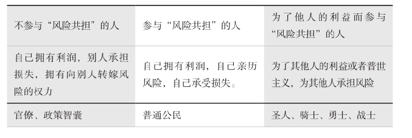
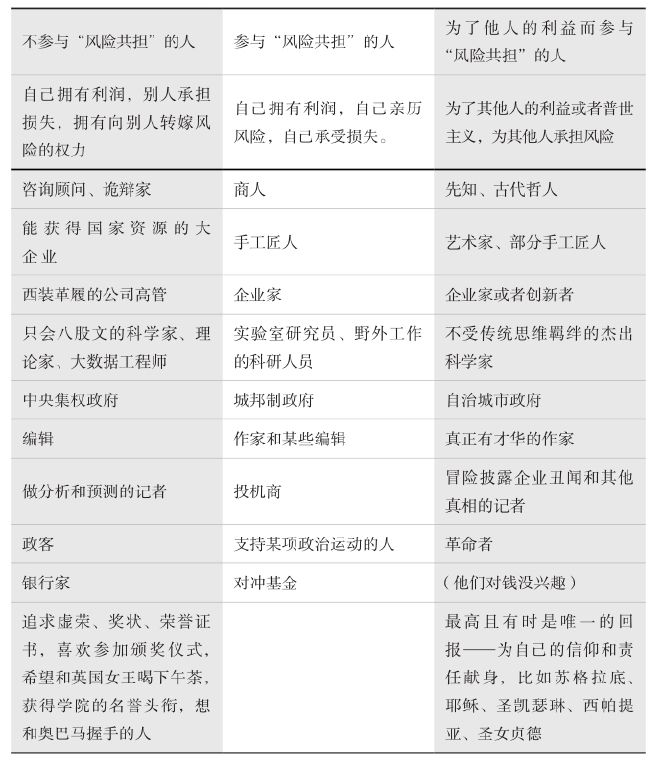
[1]
隐形的风险转移不仅仅发生在银行体系中，在普通人的生活中它也很常见。比如，住在海边的居民比住在内陆的居民更容易由受到飓风影响而蒙受损失。那些地方的居民在风灾过后的电视节目中尽管看起来像是可怜的受害者，但其实他们和当地的地产开发商都获得了政府的补贴，这也就意味着其他未受飓风影响的内陆州的纳税人替他们承担了损失。
[2]
阿卡迪亚语（Akkadian），公元前3 000年前在美索不达米亚一带使用的语言，后逐步演变成东闪米特人的语言。——译者注
[3]
闪米特语，西亚地区使用的一种古老语言。——译者注
[4]
我的第一本书《随机漫步的傻瓜》整整花了三年时间才被读者接受。一开始，书评家认为我说的内容是“如何误打误撞碰运气”，这本书最后能够在如此无知和苛刻的批评中生存下来，让我感到我的运气真是好极了。
第1章
为什么每个人都必须吃掉自己捕到的海龟：
不确定条件下的公平性问题
海龟的味道。新客户在哪儿？伊斯兰教教义与非对称性。域外人和其他人。瓦·萨夫拉和域外人。
——————
有
句古老的谚语是这样说的：你如果抓到海龟，最好就自己吃掉它。
[1]
这则谚语最早起源于一个神话传说：从前有几个渔民一下子捕获了许多海龟，但是煮熟之后，他们发现海龟远不如想象中的那样美味，结果几乎没有人愿意吃。碰巧这时候，信使神墨丘利（Mercury）经过此地（在罗马神话中，墨丘利不辞辛劳地担任信使，因此他的名字就用天上运转最快的水星命名，他主管商业、繁荣、传信以及阴间，也是小偷和强盗的保护神，毫不意外的是他同时也是幸运之神）。于是这伙渔民便邀请墨丘利分享海龟肉。但是，墨丘利很快察觉到这些渔民其实只是想摆脱自己并不需要的食物，于是他起身命令这些渔民把海龟肉全部吃掉。由此，墨丘利制定了一条规则，那就是“想让别人吃什么，你自己先得吃”。
每天都有新客户
幼稚带给我的教训：
那些给你提供建议告诉你哪些事情会对你有利的人，不会告诉你的是，他也会从这件事情中获利，而且这件事情的不利后果只会伤害你。
这些建议通常都是不请自来的。其中隐含的非对称性，会使得任何不利的后果都只作用在你身上，这些人要么是想向你推销什么，要么是想让你娶他的女儿或雇用他的女婿。
多年以前，我收到了一位应聘讲座助理者发来的求职信。他在信里清楚地列出了大约十个问题，例如，“您有时间亲自处理各种邀请吗？”“您能亲自安排旅行计划吗？”我想这样一位助理将极大地改善我的生活，那些琐碎的事情交给别人去做，我就可以腾出时间来汲取知识或者做些其他我感兴趣的事情，比如深入了解园艺、集邮、地中海地区的生态，或者墨鱼汁的烹饪方法。听完他的描述，我甚至觉得他不只是一个讲座助理，而且似乎只有他才能处理好这些琐事。也可能是因为他经常读书，所以他对知识分子（我那时候还没觉得被人称为“知识分子”是一种羞辱）的想法和诉求十分了解。不过，对这些不请自来的建议，我还是从中嗅出了一丝不安，因为在交谈中他总是不遗余力地想说服我“一切对我有利”。
我真是个傻瓜，尽管我不相信他吹嘘的那些东西，但我最终还是与他有了生意上的往来。我让他去他之前待过的一个国家，帮我的新书（或演讲）做预售。事情进展得还算顺利，直到六年前，我突然收到了那个国家的税务部门的一封信。我立即与他取得联系，询问是不是他以前雇用的美国公民在该国引发了这场税务争议，或者他是否听说过类似的情况。他的回答是迅速而草率的：“我又不是你的税务代理人。”他没有告诉我他的其他美国客户是否遇到过类似的问题，或者他们是怎么解决的，总之，他没有提供任何建设性的意见——这就是那个曾经声称“一切都对我有利”的人！
事实上，我有许多类似的经历，我可以得出如下结论，这种人向你兜售的建议并不一定真正对你有利，或者现在对你有利以后对你不利，但是肯定会对他们自己有利。作为交易员，你需要辨别出那些正直的人，然后去和他们打交道。对那些打电话向你推销产品的人，你对付他们的方式就是直接问他们：“你自己是否参与其中？”那些打电话向你兜售某产品，却还伪装成给你提建议的人，你应当尽量避免与他们发生任何交易。上文提到的海龟的故事其实就是人类交易史的缩影。
我曾经供职于美国一家大名鼎鼎的投资银行，这家投资银行的许多合伙人都加入了同一个门槛很高的“贵族”高尔夫俱乐部。他们经常穿着白色的鞋子一起去打高尔夫球，因此这家投资银行也被戏称为“白鞋”银行。这样的公司会培育人的职业道德、敬业精神和专业素养，这个公司的文化倡导和捍卫的正是这些品质。但是，绝大多数金融机构的销售人员穿的都是黑色鞋子，他们的工作是“去库存”，也就是说他们需要根据公司交易员的指令，卖出许多他们公司不需要的证券以降低风险。但是把这些股票卖给其他交易员是绝对不行的，因为专业的交易员，尤其是那些非高尔夫俱乐部成员，会敏锐地嗅出其中一定有问题，他们会意识到你所面临的风险和你出货的动机，然后提前动手，从而导致证券价格下跌（而你还没有卖出）。所以销售员需要把这些证券卖给一些被称为“买方”的客户。完成某些交易销售人员会得到一定比例的销售奖励，而且越是那些急于抛售的证券，其销售奖励的提成比例就越高。销售人员会带这些买方客户出去吃饭，给他们点菜单上最贵的酒，然后把公司不需要的证券卖给客户，销售员支付的几千美元的晚餐账单很快就可以给他自己带来巨大的回报。一位经验丰富的销售员曾经向我坦承：“对于一个平时在政府财政部门工作，只能在新泽西州郊区百货商店买衣服的普通人来说，如果我请他喝一瓶价值2 000美元的红酒，那么在接下来的几个月时间里，他就可以为我所用。从他身上我至少可以获利10万美元，这样丰厚的回报在市场上是不多见的。”
销售员总是大声宣称某股票对于客户的投资组合来说是完美的，或者某股票肯定会涨，或者诱导客户“如果这次错失良机”将会追悔莫及。他们是操纵客户心理的高手，总能够让客户心甘情愿地与他们达成交易，而且对他们感激涕零，对他们所代表的公司产生好感，而真相却是这些交易经常会损害客户自身的利益。我知道有一个公司的顶级销售员是一位充满个人魅力的人，他每天乘坐配备专职司机的劳斯莱斯上班，他曾经被问道：“如果客户最终发现他们的自身利益受损，那么他们会不会不高兴？出现这种情况，销售员又该怎么办？”他回答道：“要榨干，而不是惹怒他们。”他还补充了一句，“要记住，每天都会有新客户诞生。”
罗马人早就洞悉了这一点，他们说：如果一个人拼命赞美某商品，那么他一定急于卖掉它。
[2]
罗得岛粮食的价格
所以，把“推销产品”伪装成“提供建议”是不道德的，销售产品不是提供建议——我们可以放心地得出这个结论。你可以提供建议，你也可以销售产品（比如用广告来宣传你的产品），但两者必须严格区分。
但是在交易过程中还有一个相关问题：卖方应该向买方披露多少信息呢？
“明知某商品的价格即将下跌，仍然将其卖给客户，这种行为是道德的吗？”这是一个古老的问题，却一直没有直截了当的答案。这个问题最早可追溯到两位斯多葛派哲学家之间的争论。他们分别是来自巴比伦的第欧根尼（Diogenes）和他的学生——来自塔尔苏斯（Tarsus）的安提帕特（Antipater），后者站在更高的道德层次上意识到非对称信息对交易的影响，我赞成他的观点。两位智者的原始著述早已湮灭，我们只能从其他人转述的资料中了解他们的思想，西塞罗在《论责任》中是这样转述的：假设由于短缺和饥荒导致罗得岛上的粮食价格高涨，于是就有人从亚历山大港购买了一大船粮食，并运往罗得岛。假设此人知道此刻还有其他人在做同样的生意，有很多货船正满载粮食从亚历山大港驶往罗得岛，那么他应当把这一信息向罗得岛上的居民披露吗？在这种情况下，怎样做是光荣的，怎样做是可耻的？
交易员对这个问题有本能的回答：“什么？大批货船马上要到港了？赶紧出货！”——尽快把粮食卖给当地人，而不要告诉他们有大量货船满载粮食正往这里赶来。正直的交易员不会对其他交易员下此毒手，这绝对是行业禁忌，这样做的后果将是被同行永久驱逐出去。但是，如果出货的对象是一台冰冷的电脑，一个没有人性的市场，而不是一个活生生的人（绝对不是你身边的同行交易员），而是我们称之为“域外人”的那种离我们很远且谁也不知道他是谁的可怜笨蛋，这种抛售行为在某种程度上就是被允许的。我们与某些人之间存在着情感联系，与另外一些人则只是交易关系。这两种关系之间有一堵道德的高墙，就像我们呼吁保护家养的动物，却对蟑螂毫无怜悯之心。
第欧根尼主张卖方应当依据《民法》，尽可能多地向买方披露信息。安提帕特则认为卖方的披露义务不仅限于法律的范畴，而应该披露所有信息，从而使得交易达成时，买卖双方所知晓的信息是一致的。
显然，安提帕特所持观点的基础更为牢固，它使得交易可以不分时间、地点、情形以及交易者而达成。由此我们可以得出这样一个结论：
道德的要求往往比法律的规定更牢固更可靠——从长远来看，法律应逐渐向道德看齐，而不是相反。
因此可以说：
法律易改，道德难移。
“法律”的概念其实很模糊，法律所主张的正义依赖于判决而不是法律条文本身。得益于消费者保护运动的兴起，美国《民法》中加入了上文提到的信息披露条款，但是其他国家的法律尚未有此规定。这一点在美国《证券法》中表现得最明显——有关内幕信息的规定是美国《证券法》的强制要求，而欧洲在很长时间里没有类似的规定。
其实当我还在投资银行工作的时候，投资银行的大部分工作是与各种监管制度周旋，并试图发现法律的漏洞。而且与常识相悖的是，监管的法规越多，投资银行就越容易赚钱。
不确定性中的公平性问题
不确定性中的公平性问题，为我们指出了“风险共担”的核心概念——非对称性。于是问题就变成了：交易中的双方可以存在多大程度的信息差呢？古代地中海地区的人们，包括部分现代人，都倾向于安提帕特的观点。然而在盎格鲁–撒克逊人的世界里，他们普遍提倡“买者自负”的原则，这其实是一种新的观点，暂未具备普遍意义，而且常和旨在保护消费者的“柠檬车”法案相抵触（“柠檬车”最早是指长期趴在修理厂怎么也修不好的二手车，谁买谁上当，我有过一辆“Mini”品牌敞篷车就是这样的，后来“柠檬车”一词泛指所有“金玉其外，败絮其中”的事物）。
我们再来回顾一下西塞罗转述的两位斯多葛派学者的辩论，“如果一个人明知他销售的葡萄酒已经变质，他应该告诉他的顾客吗？”事实上，经过几个世纪的尝试，这个问题的答案已经浮现在我们眼前。我们并不一定要通过更强的监管来要求卖方披露更多信息，侵权法以及买家对卖家欺诈行为的追溯，迫使卖家自觉地提升了产品信息的透明度。侵权法的存在迫使卖方更深地参与到“风险共担”中，也正因为如此，侵权法被许多企业责骂和憎恶。但是侵权法也有副作用，它只适用于相对成熟的市场环境和相对理性的买卖双方，否则就可能引发以营利为目的的诉讼游戏。在接下来我们将要谈到的就医案例中，我们会发现侵权法被滥用了。
伊斯兰教的法律，特别是管辖交易和金融的法律，对于我们来说很有参考意义，因为它部分保留了早已失传的古代地中海和巴比伦地区人们处理类似问题的司法实践——我希望沙特王子读到这里不要信心爆棚。它融汇了希腊罗马的法律（就像闪米特人的法律，受到了这一地区最古老的贝鲁特法的影响）、腓尼基人的贸易规则、巴比伦的立法体系以及阿拉伯部落的商业习俗，同时它也成了古代地中海文明和闪米特人思想的宝库。因此，我把伊斯兰教的法律看成一座有关交易对称性思想的博物馆。伊斯兰教的法律确定了“加拉尔”
[3]
（gharar）原则，人们如果严格执行该原则，就足以制止任何一笔交易。加拉尔是一个非常复杂的术语，而且在英语中没有对应的词。它的含义包括不确定性和欺诈，我个人的理解是，加拉尔超越了买卖过程中信息不对称的问题，进而要求买卖双方所面对的不确定性必须相等。简单来说，在一个随机过程中，交易双方所面临的不确定性是一样的，因此该交易就符合加拉尔原则。此外，加拉尔原则认为如果买卖双方面对的不确定性是非对称的，那么其中承担不确定性较少的一方即犯有盗窃罪。这个原则是这么总结的：
交易中不能由一方享受确定性的结果，而由另一方承担不确定性的结果。
和其他所有法律一样，伊斯兰教的加拉尔原则也有不足之处，那就是它不像安提帕特原则那样向交易中弱势的一方提供强有力的保护。如果某方在交易全过程享有确定性，那么他是违反加拉尔原则的，但是如果不确定性以一种较弱的形式出现，比如有人知悉了一项内幕信息，但他无法据此判断其他人是否知道，也无法因此而确切地预知未来的价格走势，那么在这种情况下，他就没有违反加拉尔原则。因为除了真主以外，没有人能够提前知道未来的价格，因此对于交易双方来说，即便一方掌握了内幕消息，交易本身仍然存在足够的不确定性。所以，从这个角度来说，销售明知已经变质的葡萄酒是违反加拉尔原则的，因为葡萄酒变质是一个一方已知的确切事实，而向罗得岛上的买家隐瞒其他船只信息的粮食商人却没有违反加拉尔原则，因为他所掌握的信息尚不足以明确其他船只到港以后的粮食价格。
正如我们所看到的，非对称性问题非常复杂，不同的学派给出了不同的道德解决方法。接下来我们来看一下《塔木德》中记载的犹太人的方法。
瓦·萨夫拉和“域外人”
犹太教的道德规范在处理有关交易透明度的问题上，更倾向于安提帕特而不是第欧根尼。他们认为在交易过程中，不仅应该披露商品的全部信息，而且卖方还有责任披露他的全部真实想法。所罗门·依撒克（Shlomo Yitzhaki）是中世纪的一位犹太拉比，人们尊称他为拉什（Rashi），他讲述了这样一个故事：瓦·萨夫拉是一位生活在3世纪的巴比伦学者，同时他也是一位活跃的商人。有一天，他在市场上出售一批货物，当他安静地做祷告的时候，一位买家正好经过，他给萨夫拉出了一个价格，但萨夫拉默不作声（其实他是在做祷告），他便又给出了一个更高的价格。但是萨夫拉拒绝了第二个更高的报价，他认为自己应当按照对方最初的出价完成交易。现在问题来了：萨夫拉有义务按照最初的价格卖出自己的货物吗？还是他可以接受那位买家第二次给出的高价呢？
这样的故事在现实交易中既不荒唐也不罕见，我在当交易员的时候，常常会遇到类似的情况，而且我会采用故事中瓦·萨夫拉的做法。请先回忆一下前文所讲述过的贪婪的销售员。有时候我会向买方出价5美元，但是交易是通过销售员完成的，交易员本身并不直接接触客户，销售员经过一番“勾兑”之后会回来告诉我，他已经把价格提高到5.1美元了，这额外的10美分让我很不舒服，对于做生意来说，这种行为绝非长久之计。万一这位客户后来发现我当初的要价其实是5美元，我该怎么办？我内心承受的羞愧感，既没有得到补偿，也无法被消除。如果我按照这个更高的价格和客户成交，那么这就相当于趁着其他船只还未进港，赶紧把粮食高价卖给饥饿的罗得岛人。现在回到瓦·萨夫拉的故事，如果他以高价将货物卖给这位顾客，而之前他刚刚以原先的价格把相同的货物卖给另一位顾客，而这两位顾客碰巧相互认识，或者他们俩本来就是同一位顾客的代理人，那该怎么办？
从道义上来看，并没有这样的要求，但是为了免除自己的内疚和负罪感，最好的办法就是向买家披露包括自己动机在内的全部信息。
但是，这则故事并没有告诉我们，如果买家是“域外人”，我们该怎么处理，对这些“域外人”，我们的亲情、友情和羞愧感似乎都不适用了，他们离我们的现实世界是那样地遥远，以至我们感觉可以对他们放松甚至放弃道德标准。想想我们之前关于康德的讨论，“理论”对于人类来说总是太“理论”了。如果把问题局限在人类感性认识所及的道德领域，那么问题就容易多了。就像我们在本章后面要谈到的埃莉诺·奥斯特朗姆的例子一样，我们的系统并不能始终运转良好。现在，我们先看一下我们的老朋友弗里德里希·尼采的观点：
那些同情关心陌生人的人，对自己的亲友却冷酷无情。
如果一个人整天关心那些远在天边和素不相识的人（就像上文的“域外人”），他的亲友或多或少地就都会受到冷落。这在尼采看来是违背人性的。顺便说一下，胖子托尼对我说，只要听说某句话是尼采说的，他就绝不争辩。
自己人和外面人
把“域外人”排除在我们的道德体系之外并非小事一桩。因为我们任何一个道德观念都有一个适用范围，这个适用性问题对知识分子解释起来总是困难重重。国家不是放大版的城市，城市不是放大版的家庭，而地球村更不是放大版的村庄。其中包含着我们即将在此以及第二卷中所要讨论的适用范围的问题。
当雅典人标榜他们对所有观点一视同仁并大谈所谓的“民主”的时候，雅典的言论自由和民主制度仅适用于自己的公民，奴隶和居住在雅典的外国人都不在此列（这种情况和持有美国绿卡或者H–1B工作签证的人，在美国的情况一样）。狄奥多西（Theodosius）法典规定了与“野蛮人”通婚的罗马公民将会丧失公民权利，从而在道德上失去与其他公民平等的地位，也就是说他们不再是“自己人”了。而在犹太人的道德观念中，他们也以血缘远近确定关系亲疏：所有人都是我的兄弟，但有些兄弟比其他兄弟更亲近。
在古代以及中世纪，自由公民的概念类似于一个“权力俱乐部”的会员，他们遵奉的仪式、规则和行为模式与当今的“乡村俱乐部”类似，其核心就是用限制规模和对外封闭的办法来提高会员的福祉并增强俱乐部的凝聚力。比如，斯巴达人可以因训练去伤害并杀死奴隶，但是他们与其他斯巴达公民是平等的，并随时愿意为斯巴达慷慨赴死。在基督教时代以前的黎凡特和小亚细亚地区，充斥着各种兄弟会和俱乐部，还有其他各种公开或秘密的社团，甚至还有一个“葬礼俱乐部”，其会员平摊丧葬费并参加俱乐部其他会员的葬礼。
今天生活在罗马的吉卜赛人对自己的族人有一套严格的规则，而对其他非吉卜赛人的外族人[他们称之为“帕约斯”（payos）]则适用其他规则。除此之外，人类学家大卫·格雷伯经过观察发现，即使在以贪婪自私著称的投资银行高盛，由于合伙人体系的存在，其内部竟然像共产主义社会。
所以，我们在执行道德规范时，始终应该注意这些规范的适用范围，一旦超出其适用范围，某些规则可能就会失效。很不幸，事实就是如此。“在一个人身上能否同时体现民族性和共同价值性？”答案是：这仅在理论上可能，而在实践中则几乎不可能。这是因为一旦“我们”这个概念被扩大到超出个体所熟悉和接受的范围，就会成为一个空泛的概念。扩大范围后，集体内部原有的凝聚力就会丧失，个体开始为私利而争斗。要把这个现象抽象成一个公式，写出约束群体规模的数学表达式实在是太难了。但我已经意识到这个问题了，这也就是为什么我提倡政治体系应当以城市为基础，然后将各城市逐步联合起来，而不是与此相反。实践证明，设计一个庞大的国家方案，然后将其运用到每个小城市的模式在许多地方均已失败。我推崇的由小及大的模式在瑞士已经成功实现了，瑞士人就像我之前提到的那些“域外人”，他们的国家就像是世外桃源。在某种程度上让人保留人类最原始的“部落成员”的本性并非坏事——我们应当以部落形式把人组织起来，并在部落之间维持松散但有组织的和谐关系，而不是将所有部落合并成一个更大的部落。
对无节制的全球化以及中央集权的多民族大国，我始终是持怀疑态度的，而这背后的原因其实就是对扩大规模后原有的规律是否适用的一种担心。物理学家、复杂系统研究者亚尼尔·班杨（Yaneer Bar-Yam）曾经做过一个非常令人信服的比喻，“扎紧篱笆才有好邻居”。然而近东地区的政府和政策制定者都没有意识到这一点。“适用规模”很重要！我会不遗余力地大声重复这一点，直到我把嗓子喊哑了为止。强行把什叶派、基督徒以及逊尼派拉在一起，让他们为了人类的团结，以兄弟之名手挽手，绕着篝火齐唱赞歌《昆巴亚》（Kumbaya
），这种做法注定是失败的。干涉主义者至今还没有意识到一个国家不可能按照他们设想中那份完美的、“理应如此”的蓝图来构建。干涉主义者最愚蠢之处就是他们总是谴责别人秉持“教派”观念，而不能意识到这其实是人们固有的“部落”归属感。将不同的部落分开来给予一定的自治权（奥斯曼土耳其人的做法
[4]
），不仅会使国家治理变得容易，而且会使部落之间的关系变得好起来。黎凡特曾经并且正在遭受的厄运，完全是由那些从不亲身参与当地“风险共担”的西方阿拉伯问题专家（目前主要是盎格鲁–撒克逊人）造成的。他们似乎背负着某种邪恶的使命，总想彻底破坏当地固有的文化和语言，将黎凡特特有的地中海文明的历史渊源连根拔掉。
[5]
其实我们也不必绕弯子来说明“适用规模”的重要性，我们每个人都有类似的经历，你和住在隔壁寝室的同学的关系总是比和自己同寝室的室友要好——我猜对了吗？
这是一个非常浅显的，甚至是老生常谈的道理，你只要对比一下“大城市里的匿名人群”与“小村庄里的乡里乡亲”两者之间的关系就明白了。我曾经在我祖先诞生的那个小村庄住过一段时间，我感觉整个村子像是一个大家庭。人们会自愿且悲痛地去参加别人的葬礼（“葬礼俱乐部”主要存在于大城市），会相互帮忙，也会关心邻居（尽管他的狗可能令人讨厌）。而在大城市里，“其他人”对于我们来说，只是一个理论上的“存在”，我们对“其他人”的感情或者他们本身的行为举止都基于某种道德规则，而不是基于有血有肉的亲情。我们其实很容易就认识到这一点，但是我们没能总结出原因。其实根本原因就是：道德自其诞生之日起，就基于“本地化”的社会关系。
现在你明白普世主义的问题了吧？人类的现代化进程在我们的头脑中建立起了两个概念：个体的人与全球社会。如果从这个意义出发，“风险共担”只是你个人面对一个毫无感情的、广袤无垠的现实世界。事实不是这样的，我所参与的“风险共担”都发生在“一定范围”或“一定规模”的人群中，包括家族、社区、部落或者兄弟会等，但绝对不是全体地球人。
“我们”的最佳规模
下面我们来探讨一下奥斯特朗姆的“集体悖论”。公共土地作为一项集体财产，可能是一片森林、一汪水塘或者一个公园，作为集体成员，农民们都希望避免过度放牧和过度捕捞，避免资源枯竭和生态退化。与此同时，作为个体的农民却都想通过过度放牧或过度捕捞获利（当然其他农民不能这样做），这其实就是所谓的“大锅饭”的“烦恼”：在集体主义原则下，人们不会全力以赴地努力工作，因为他们很难实现个人利益。但是，如果你认为在私有产权制度之下，个人和集体就能运转良好，那么也绝对是一个严重的错误。
奥斯特朗姆的贡献在于她发现了存在着一个最佳团体规模，如果一个团体的人数等于或者略低于这个最佳规模，人们就会像集体主义者那样愿意做出自我牺牲，愿意捍卫集体利益，而且集体和个体的行为都井然有序。集体的规模不能过于庞大（这其实就像组织一个俱乐部一样，你把所有人都拉入同一个俱乐部一定是一场灾难），不仅个体在不同规模的群体中的表现截然不同，而且不同规模的群体自身的表现也千差万别。这种差别很好地解释了为什么在一个城市的政府和一个国家的政府之间存在运转效率的差异。这个理论也从根本上解释了部落的组成方式：个体隶属于某群体，群体比单独的个体规模大，但它比全体人类的规模小。很重要的一点是，在群体里面，人们会分享某些特定的东西，但绝不会分享所有的东西。同时，群体有对外交往的严格规定，比如阿拉伯游牧部落对那些不威胁他们的陌生人有热情款待的习俗，但是如果他们视外来者为不速之客，他们就会变得相当暴力。
“风险共担”对群体的定义是：某空间内存在一种机制，即别人会以你对待他们的方式对待你；该空间内还普遍存在一个规范，即个体奉行银律之“己所不欲勿施于人”的戒条来对待他人。
“公共利益”其实是一个来自教科书的抽象概念。第19章中我们会阐述“个人”其实是一个定义得非常模糊的概念，而“我”的定义则更像是一个群体而非个体。
你在对角线上吗？
杰夫·格拉汉（Geoff Graham）和文森·格拉汉（Vince Graham）兄弟俩的一段俏皮话，道出了不区分受众规模的政治普世主义的可笑之处：
在联邦层面上，我是一个（推崇个人权利的）自由主义者；在州层面上，我是一个（主张加强联邦的）共和党人；在地方县域层面，我是一个（主张各州权力的）民主党人；在家族和朋友层面上，我是一个（提倡个人服从集体的）社会主义者。
如果上面这段文字还不足以让你明白乱贴“左派”和“右派”标签有多么愚蠢，那么你真是无药可救了。
瑞士人痴迷于治理体系的建设，他们的政治确实既不左也不右，而是以加强政府治理为基础的。思维缜密的数学家汉斯·哥斯巴赫（Hans Gersbach）曾经在苏黎世组织了一次有关政府治理的研讨会，研究如何对那些自身利益与他所代表的人民的利益不一致的政客施以恰当的惩罚或激励。在研讨会上，我突然恍然大悟，明白了政治制度之所以能够在瑞士和其他日耳曼语系国家运行良好，并不是因为它们建立了问责制，也不是因为这些国家的人口数量正好达到了容易治理的最佳规模，而是它们的治理机制把政客们置于“风险共担”之中。
下面我们进一步阐述风险共担的问题。
所有人在一条船上
希腊语是一种十分精确的语言，它有一个专门的词“Synkyndineo”（风险共担），作为“风险转移”的反义词，在希腊语中的意思是“共同承担风险”，这也是海商法的原则之一。
[6]
《使徒行传》记载了圣徒保罗搭乘一艘货船从塞顿前往克里特岛和马耳他。途中，他们遇到了风暴，“留下足够的口粮之后，他们把剩余的粮食扔到海里，以减轻船的重量”。
尽管他们扔下去的是某个商人的货物，但是船上所有的商人都会平摊这个商人的损失，而不会让他独自承担。他们遵循的是可以追溯到至少公元前800年的罗得岛法律中的一项规定，这部法律源自爱琴海上著名的商业城邦罗得岛。这部法律的原文已佚，但其精神至今仍被援引。它规定了出现上述情况时，意外事件所带来的风险和损失应当由全体成员平摊，而不应考虑某一个人的具体责任。《查士丁尼法典》是这样表述这个原则的：
援引罗得岛海事法的规定，为减轻船舶重量而抛弃商品造成的损失必须由全体受益者共同承担。
同样的风险共担机制还适用于穿越沙漠的商队，如果途中有商品被盗或不慎丢失，所有同行的商人就都需要分担损失，而不会让失主一人承担。
Synkyndineo这个词被古籍经典大师阿曼德（Armand D’Angour）翻译成拉丁语的compericlitor，因此，如果要把它翻译成英语，它应该是compericlity，而它的反义词，也就是罗伯特·鲁宾玩的风险转移勾当，应该用incompericlity一词来表达。
下面，我们将从“风险共担”的角度出发，谈谈几种违背该原则的案例。
对别人的书评头论足
有一次我在电视上宣传我的新书，却在演播厅里陷入了尴尬，当时我和另外两名记者以及一位主持人一起进行圆桌讨论。那天的话题是关于微软公司的（那时候的微软公司可谓如日中天），在场所有人包括主持人在内，大家依次发言。轮到我的时候，我说：“我并不持有微软公司的股票，也不持有该股的空头（使我在微软股票下跌时获利），所以对微软的股票我无话可说。”（我提醒读者回忆我之前的告诫“别告诉我为什么，你只要告诉我你自己买什么股票就行了”）听到我的发言，他们面面相觑，一脸的迷惑不解，他们总以为根据回避利益冲突的原则，记者是不能谈论自己持有的股票的，却从来没有从“风险共担”的原则出发，想过不能谈论自己没有的股票。更糟糕的是，记者总是喜欢对自己根本不知道的东西评头论足。记者本应是公正的“法官”，而实际却是……好在现实世界和《冈比西斯的审判》所描绘的场景不同，不会有人用“不公正”记者的皮去做椅垫。
对某一股票“评头论足”有两种情形：一种是出于自己的喜好而买入某一股票，然后对其发表评论（这相当于主动披露自己的持股情况）——对产品最有力的宣传是用户的口碑
[7]
；另一种是买入某公司的股票，然后大肆宣传该公司的价值，以期把股票高价卖出去，这就是所谓的市场操纵行为，当然也是一种利益冲突。我们不允许记者讨论自己所持有的股票，其实就是为了防止这种市场操纵的情况，这样做当然是对的，但是其导致的另外一个后果是，我们由此把记者的切身利益从“风险共担”中排除出去了。本书的一个观点是，市场操纵以及利益冲突相较于给别人糟糕的投资建议而自己又免责而言，前者对社会的危害更小。其主要原因在于一旦记者被排除在“风险共担”之外，为了保险起见，他们就会照搬其他记者的观点，这就会形成单一思维和集体臆想，由此加剧市场动荡。
一般来说，“风险共担”或多或少会导致“利益冲突”。我想要说明的是，前者比后者更重要。如果一个人承受着某一股票下跌的风险，那么在充分披露其持股信息的情况下，他鼓吹这只股票的投资价值也无可厚非。
短暂的就医经历
对于医生而言，其实并不存在安泰俄斯那样的问题。
[8]
医生尽管有科学的辅助，但从根本上说仍然是以其学徒经验为基础的，就像工程师一样，基于实践经验而不是依靠实验和理论。经济学家开口说话之前，总是先说“假设……”，然后创造出许多奇怪的理论，医生可绝对不能那样做，他不能在假设的情况下给病人用药。除了将客户与供应商割裂开来的代理人制度之外，“风险共担”或多或少地存在于各行各业。但是，如果我们把医生置于一个由监管部门确定规则的“风险共担”之中，反而会给病人带来一定的负面影响，因为这种监管规则会鼓励医生把不确定性由自身转移到病人身上。
法律体系和监管措施，很可能将医生置于错误的“风险共担”之中。
这是怎么回事儿呢？问题在于对医生的考核标准上，其实每种量化的考核标准都可能演变成为数字游戏，比如在之前提到的例子中，单纯考核胆固醇指标会让医生走极端。我们再来看一个更现实的例子，假如我们用癌症病人的5年存活率作为考核医生和医院的指标，那么医生每天面对病情各不相同的病人时就需要不停地思考：应该给他用哪种治疗方式呢？比方说，激光手术和放疗都能被用来治疗癌症，前者的精度高，而后者在杀死癌细胞的同时也会对人体的正常细胞造成伤害，医生需要权衡这两种治疗方法，从统计数字上来看，激光手术在5年存活率指标方面不如放疗，但是后者会在随后的周期内诱发新的肿瘤，从而导致癌症病人的20年存活率低于激光手术。由于考核指标是5年存活率而不是20年，这样就可能会激励医生更倾向于选择放疗。
医生很可能根据自己的考核指标，而不是病人的实际情况，决定给病人实施“次优方案”来转移自己面临的不确定性。
现行制度迫使医生将风险从自身转移给病人，或者从现在转移至将来，抑或从较近的将来转移至更远的将来。
你需要记住，当你去看医生的时候，尽管他有权威的举止，但其实他身处脆弱的境地。他不是你，也不是你的家人，他不会因你的健康状况恶化而感到痛苦。他本能的动机只有一个，那就是避免可能对他的职业生涯造成灾难性影响的官司。
还有些考核指标可能会置你于死地。比如，你去看一位心脏病专科医生，他发现你所面临的风险相对来说比较温和，也就是说你目前的状况还不会很快患上心血管疾病，或者情况尚未恶化到令人担忧的地步（这种情况呈现出非常强的非线性特征：被诊断为糖尿病或者高血压的潜在高危人群有90%的指标接近正常人，而不是接近于糖尿病或者高血压患者）。但是医生迫于某种压力仍然会对你进行治疗，以规避潜在的诉讼风险，从而更好地保护自己。这是因为如果病人在就医几周之后死亡（当然这种概率很低），医生就会因疏忽而被起诉，理由是没有及时给病人开出对他有效的他汀类药物以预防他发病，其实他汀类药物究竟是否有效尚存疑问。实际上，医生甚至可能知道他给你开的他汀类药物是有害的，因为药物一般都会带来长期的副作用。但是制药公司已经成功地使人们相信那些尚未明确的副作用其实是无害的，而正确的预防方法是把那些尚未明确的副作用当作潜在的危险来处置，而不是选择忽略。事实上，除了部分确实病征很明显而且病得很重的人，给病征不明显的人使用长期副作用尚不明确的药物是弊大于利的（这么做与其说是预防病人的健康风险，不如说是预防医生的法律风险）。遗憾的是，药物副作用的长期风险通常是隐蔽的，它们会在很长时间以后才给病人造成影响，但是对于医生来说，法律风险却可能近在眼前。这其实与罗伯特·鲁宾转移风险的把戏如出一辙，都是推迟风险的发生并使它在表面上看起来不存在。
我们有办法降低医学领域的非对称性吗？答案是没有直接的方法。我在《反脆弱》以及其他专业场合曾经提出过一种解决方法，那就是在患者病得不重的时候不要接受治疗，而是在遇到“尾部风险”，也就是确诊患上重病的时候才寻求医学帮助。但问题是“病得不重的人”远远多于“身患重病的人”，而且前者的预期寿命更长，也就有可能长期服药，因此制药公司显然有十足的动机把注意力放在健康人身上（重病患者吃药的时间短，而死人根本就不吃药）。
不过总的来说，尽管有这样那样的问题，医生和病人都是亲身参与“风险共担”的。然而，监管者没有参与其中，他们才是医疗体系运转不畅的罪魁祸首。整个地球现在到处都是监管者，在任何一个行业、任何一项事业、任何一个历史时期中，监管者从来都是灾难的根源。
这一章我们从商业和道德两个角度讨论了代理人问题和风险共担，我们还介绍了适用规模的问题。接下来我们要深入探讨隐含的非对称性问题——它已经制造了大量的洪水猛兽。
[1]
这句话的原文是Ipsi testudines edite, qui cepistis。
[2]
这句话出自古罗马诗人贺瑞斯（Horace，公元前65—前8年），“过于夸赞必是急于摆脱”。
[3]
“加拉尔”，在阿拉伯语中是风险、危险、不确定性和机会的意思。——译者注
[4]
有人认为，当年奥斯曼土耳其人的民族自治政策仍然不够彻底，按照小说家拉菲（Raffi）的观点，如果执行更彻底的民族自治，1890年和1915年发生的针对亚美尼亚人的暴行本来是可以避免的。
[5]
阿盟秘书长阿穆尔·穆萨对我提出的“扎紧篱笆才有好邻居”的演讲感到震惊，他甚至认为我所提倡的“部落自治”是一种冒犯。逊尼派主导的阿拉伯国家广泛提倡建立“部落自治”，奇怪的是，这些部落领袖一旦变得有钱就离开部落去瑞士买房子。当你是多数派的时候，你总是倾向于鼓吹普世主义。他们还会轻易地指责你是种族主义者，只要他们听到你有哪怕很轻微的一点儿支持部落自治的言论。而“种族主义者”这个称谓在中东似乎已经“贬值”了，你会发现反对库尔德独立的伊拉克人和寻求独立的库尔德人都相互指责对方是种族主义者。
[6]
“今日生死与共者皆为兄弟。”（莎士比亚的《亨利五世》）。
[7]
用户的反馈是对产品更可靠的评价。我买过一辆特斯拉电动车，因为我的邻居买了特斯拉以后赞不绝口（他自己亲身参与了“风险共担”），几年过去了，他对特斯拉的热情仍未减退，我由此确信这辆车值得购买，对于产品营销来说，多少钱的广告都不如用户的口碑有效。
[8]
这里指像安泰俄斯脱离大地母亲一样脱离实际情况。——译者注
第2章
最不宽容者获胜：顽固少数派的主导地位
为什么你不必在吸烟区里吸烟？沙特国王退位庆祝会上的食物。如何防止朋友变成工作狂？奥马尔·谢里夫的改宗。如何使市场崩溃？
——————
复
杂系统之所以复杂，是因为它无法通过系统部件的功能和状态来预测系统的行为。不同部件之间的互动比其最初设计的功能更加重要。研究单只蚂蚁的行为永远不可能揭示整个蚂蚁帝国的运作模式。这是因为，我们要把蚂蚁作为一个整体来研究，而不是拆分成个体，或者将其视作个体的简单组合来研究。部件之间的相互关系和互动机制——尽管这种互动往往遵循着简单的规则，是系统整体最重要的特征。
本章我们要讨论的是堪称所有“非对称现象之母”的少数派主导规则。在任何一个群体中，只要有3%~4%永不妥协的少数派，他们就会全身心地投入“风险共担”，捍卫自己的切身利益（有时候甚至拿灵魂来捍卫），最终，整个群体的人都会服从于少数派的偏好和选择。需要进一步说明的是，人们容易产生一种误解（尤其是缺乏经验的观察者，可能会从简单的统计指标中得出这一结论），以为这个选择是群体内多数派做出的，然而事实并非如此。如果你觉得这事儿听起来有些荒唐，那是因为我们的科学直觉不习惯处理这类问题。忘掉你的科学直觉或学术判断吧！这些都不管用。你所熟悉的那些知识在面对复杂系统问题的时候无能为力，你还不如相信你祖母的直觉判断呢！
其实在很多事情中，都有少数派主导规则存在：那一小部分人绝不轻易妥协，而且又品德高尚，他们凭着勇气参与到“风险共担”中，他们的抗争和坚持使得社会（作为一个整体系统）运转良好。
有趣的是，在帮助新英格兰复杂系统研究所组织夏季烧烤活动的时候，我突然遇到了一个少数派主导的例子。当时工作人员正在摆放餐具，分发各种饮料。一个严格奉行犹太教规只吃符合犹太教规定食物的朋友，走过来和我打招呼。我顺手递给他一杯柠檬水，我本以为他会囿于宗教仪轨而婉拒，但出乎我的意料，他竟一饮而尽。看我一脸惊讶，旁边另一个犹太朋友解释道：“这里所有的饮料都是符合犹太教仪轨的。”他拿起柠檬水的包装盒，指给我看底部印着一个圆圈，圈里有字母“U”，这个标志表示这是符合犹太教仪轨的食品。我估计只有那些特别留意食品是否符合宗教仪轨的人，才会刻意去寻找这个小标志。我就像莫里哀戏剧《贵人迷》里的中产阶级绅士，在很多年之后才发现自己原来一直用散文体
[1]
说话一样，突然发现自己在不知情的情况下其实一直在喝符合犹太教仪轨的饮料。
对花生过敏的罪犯
我恍然大悟，犹太人在美国总人口中所占的比例少于0.3%，但是为什么市面上几乎所有的饮料都符合犹太教仪轨？简单来说，全部符合这一标准可以免去生产商、零售商以及餐厅的许多麻烦，他们不需要再区分哪些饮料符合犹太教规定了，否则，他们就要对部分饮料进行单独标记、单独运输、单独储存，还要提供特别的销售柜台。这一现象能够存在的原因在于：
犹太人绝对不吃不符合犹太教仪轨的食品，而非犹太人则可以吃符合犹太教仪轨的食品。
或者，我们再举一个例子：
残疾人不能使用常规卫生间，四肢健全的人却能够使用残疾人专用卫生间。
不过，在现实生活中，我们有时候对使用带有残疾人标志的卫生间感到很犹豫。我们会误以为凡是带有这一标志的卫生间都仅供残疾人使用，就像停车场里面有残疾人标志的车位仅供残疾人停车一样。
对花生过敏的人绝对不能吃含有花生酱的食物，但不过敏的人却可以吃不含有花生的食物。
这就是为什么你在美国的航班上很难找到花生，而且美国的学校通常也不供应含花生酱的食物。其结果是美国孩子的消化系统长期处于没有花生酱刺激的环境中，这反而在一定程度上增加了对花生过敏的人的数量。
这个原则有时候也让我们啼笑皆非：
遵纪守法的老实人永远都不会触犯刑法，但罪犯在一生的大部分时间中都在做合法的事情。
我们将上文例子中的少数派称为顽固派或者僵硬派，多数派称为温和派或者灵活派。两者的关系体现了选择的非对称性。
我曾经和一个朋友开过这样一个玩笑。很多年前，大型烟草公司还在试图掩盖和打压二手烟有害的证明，那时候，纽约的餐厅刚开始分吸烟区和非吸烟区（甚至在飞机上也有吸烟区）。我带一位欧洲朋友出去吃饭，但是当时餐厅只有吸烟区的座位了。于是，我对这个哥们儿说，我们俩得去买一包烟，因为在吸烟区里吃饭就必须要吸烟。他竟然表示理解和赞同！
发生少数派主导现象有两个主要因素。首先，人口的空间分布很关键。如果顽固派集中生活在某一特定区域内，那么，少数派主导现象就不会发生。如果少数派平均分散在人群中，这个现象就会发生。比方说，少数派在社区中的比例和在村子中的比例相同，在村里的比例和在县里的比例相同，在县里的比例和在州里的比例相同，在州里的比例和在全国的比例相同，在这种情况下，在全国占绝大多数的温和多数派就会表现出灵活性，屈从于少数派的选择。第二，成本也很关键。回到我们举的第一个例子，按照犹太教仪轨生产柠檬水不会显著提高成本，只需要避免使用某些添加剂就可以了。需要指出的是，如果生产成本因此大幅增长，少数派主导现象就会随着成本的提高而呈现非线性下降。如果生产柠檬水的成本由此提高10倍，少数派主导现象就不会发生。当然，某些非常富有的社区例外。
穆斯林也有他们的饮食仪轨，但是适用范围要窄得多，通常仅限于肉类。穆斯林和犹太人的动物屠宰仪轨大致相同（在过去的一个世纪里，对于大部分逊尼派穆斯林来说，所有符合犹太教仪轨的食物都同时符合伊斯兰教仪轨，但是反之则不然）。请注意！这些牲畜屠宰仪轨也蕴含着早期人类参与“风险共担”的痕迹，这种仪轨起源于古代地中海东部的希腊和黎凡特地区的献祭活动，这种献祭仪式往往所需不菲，只有那些亲身投入“风险共担”的人才会用隆重的祭品向神虔诚祈祷——神不喜欢夸夸其谈。
现在我们来看一下少数派主导的情况。尽管穆斯林占英国总人口的比例仅为3%~4%，但市场上符合穆斯林仪轨生产的清真食品的比例却相当高。从新西兰进口的羊肉有近70%是清真食品，而且有近10%的地铁便利店只销售清真食品，尽管这样可能意味着店主会失去某些爱吃火腿的顾客（比如我）。同样的情况在南非也存在，其穆斯林人口比例和英国相差无几，但是清真食品的比例却高得出奇。在英国以及其他基督教国家，出现如此高比例的清真食品可能不是一件完全中性的事情，因为可能有人会感觉自己被迫遵奉别人信仰的仪轨，从而在心理上产生抵触情绪。事实上，如果一个人是纯粹的“一神论”者，那么接受和遵奉其他宗教的戒条，在某种程度上就意味着背叛了自己的信仰。例如，7世纪信仰基督教的阿拉伯诗人艾赫泰勒（Al-Akhtal），在他的诗篇中就宣称自己基于基督教的信仰不吃清真食品。
艾赫泰勒的诗歌真实记录了从3世纪到4世纪基督徒们的处境。那时的罗马帝国还没有奉基督教为国教，当时占统治地位的“万神教”为了打压基督教，折磨基督徒，强迫他们去吃万神殿上的祭祀品，在基督徒看来，这是强迫他们背叛信仰，是亵渎神的行为。因此，许多基督徒宁可饿死殉道，也不吃这种他们认为不干净的食物。
随着穆斯林人口在欧洲乃至整个西方世界不断增加，对别的宗教的抵触情绪可能也会有所增加。
由于少数派主导的原因，商店里清真食品的比例会远高于清真人口占总人口的比例，当然清真食品在有些地方会受到一定程度的抵触。但总的来说，少数派主导现象是存在的。对于某些与宗教无关的饮食习惯来说，少数派主导可能导致少数派的饮食偏好在市场上所占的比例接近100%（或者接近于此）。以美国和欧洲为例，有机食品的销量与日俱增，这是因为那些普通的不带“有机”标签的食品可能被认为是含有杀虫剂、除草剂或者是转基因的，这些食物在某些消费者看来含有未知的风险。此处我提到的转基因专指转基因食品，也就是说需要移植其他物种的基因产生一个新物种，而这种新物种在自然状态下，不会通过杂交方式产生。当然，有机食品销量增加也可能是因为某些其他原因，比如受到伯克式
[2]
保守主义的思想影响，有些人因此不愿意放弃从祖辈那里继承的传统饮食习惯。但是不管怎么样，给食品贴上“有机”标签是一种委婉的告知方式，消费者会默契地理解这不是转基因食物。
许多大型农业公司希望通过游说、买通国会议员，或者雇用一个看上去严谨、刻板而且颇有权威的科学家在电视上宣传以推销他们的转基因食品。他们愚蠢地认为只要赢得多数人的认可就能成功。他们简直是愚蠢透顶。这种牵强的“科学”论断几乎不会改变人们对转基因食品的态度，也无法影响他们的购买决定。他们应该意识到，接受转基因食品的人会接受非转基因食品，反之则不然。因此，只要有不超过5%的不接受转基因食品的人均匀地分布在全国，他们就会迫使其所在的群体逐步演变成只吃非转基因食品的群体。怎么会这样呢？设想一下，有公司年会、婚礼或者奢华派对（假设是为了庆祝沙特政权的更迭、寻租腐败的投资银行高盛的倒闭，或者是为了公开谴责科学和科学捍卫者共同的敌人、卑鄙的凯旋公关公司主席雷·科切尔），这时候你会提前发放问卷调查一下哪些人愿意接受转基因食品，然后根据调查结果安排菜单吗？你当然不会这样做。只要非转基因食品的价格高得不太离谱，你肯定会选择全部供应非转基因食品，而不是让大家分开就餐。事实上，价格因素确实影响不大，因为在美国，新鲜食品的成本绝大部分（80%~90%）来自运输和仓储，而不是食品生产环节。得益于少数派主导规则发挥作用，有机食品的需求量居高不下，食品的运输和仓储的成本反而因规模效应下降了，价格下跌反过来又使得非转基因食品更具吸引力了。
许多大型农业公司没有意识到它们其实被迫参与了一场特殊的游戏，在这个游戏中你得分比对方高还不能赢得胜利，除非你获得97%以上的市场份额才能确保胜利。然而这个行业的许多公司在科研以及宣传上投入了数以亿计的美元，雇用了数百位自认为比一般人聪明的科学家，但令人难以理解的是他们却偏偏忽略了非对称性中的“少数派主导”这一关键因素。
再举一个例子。不要以为自动挡汽车的普及是因为多数人喜欢开自动挡汽车，真正的原因是会开手动挡的人也一定会开自动挡的汽车，反之则不然。
这里我们用到的分析方法是“重整化”，它是数学物理学中一个非常强大的工具，可以帮助人们观测事物规模扩大（或缩小）的过程。接下来，我们将用简单易懂的方法演示这个概念。
重整化
现在假设每一个正方形就是一个四口之家，家里的女儿是一个顽固的少数派，她只吃非转基因食品（或有机食品）。由于她的坚持和抵制，家庭其他成员都被她改造过来了，他们现在也只吃非转基因食品。当这一家子参加邻居的烧烤派对时，邻居为了照顾他们的偏好，不得不全部采购非转基因食品；接着，本地的超市就会发现当地居民的饮食习惯偏向于非转基因食品，于是供应的食品也相应调整；最后，大型食品批发公司为了适应这种变化，简化自己的业务流程，全部转向了非转基因食品。
参加波士顿烧烤活动的前一天，我在纽约街头闲逛。顺道拜访了我的老朋友拉尔夫·杜阿迪，我一直劝他不要变成工作狂（因为，沉溺于抽象思维不仅会让人头脑变得迟钝，而且会让人举止失态、相貌丑陋）。当天一位名叫塞尔·格兰的法国物理学家恰好也到访他的办公室，我们俩还一起品尝了拉尔夫味道不佳的浓缩咖啡。格兰率先把重整化的方法应用到社会和政治科学领域。我听说他的名字已经很久了，因为我很早以前买过一本他写的书，但是这本书一直躺在地下室里，连包装都没有被打开。他向我展示了他的研究成果，那是一个计算机选择模型，该模型显示只要少数派达到某一特定的水平，那么他们的选择就会成为压倒性的全体选择。
同样的幻觉存在于政治领域，政治科学家运用他们的统计手段测出“极左”或“极右”政党获得了10%的人口的支持，因此，他们推断这些政党也会获得差不多10%的选票。然而事实并非如此，支持极左或极右政党的选民应当被视为顽固的少数派。他们会始终如一地把票投给自己支持的党派，但是其他在政治上更宽容也更摇摆的选民，有可能受到他们生活中顽固少数派的影响而把票投给极左或极右政党，就像非犹太人也会去吃符合犹太教仪轨的食物一样。这些“摇摆”的选民才是最值得警惕的人群，因为他们有可能助推极端政党成为选举中的“黑马”，且事先的民意调查可能毫无征兆。格兰的模型在政治科学领域产生了一大堆与人的本能直觉相抵触的结论，但他的模型比那些天真的统计预测更加接近于现实情况。
图1 重整化
注：图1从上到下包括了三组正方形，每一组里面包含了4个正方形。请想象一下，每个正方形里面又包含了4个小的正方形。重整化的规则是只要有1个正方形是深色的，那么与其相邻的其他正方形也会变成深色。由此，只要三步，就能把全部的正方形变成深色。请把图1中深色的正方形想象成顽固少数派，把浅色的正方形想象成温和多数派，“重整化”帮助我们演示了少数派主导现象。
否决权
重整化展示的核心意思是非对称的“否决权”效应，即群体中的某个人可以用反复否决其他人偏好的办法来最终使得群体内其他具有适度灵活性的成员接受他的选择。一个过着精致生活的广告明星罗瑞·苏特兰，曾经向我解释过麦当劳这样的连锁快餐品牌能够发展壮大的原因。他说这些企业的成功并不是因为它们提供了优质的产品，而仅仅是因为它们没有被某特定的社会群体否决。
[3]
当你在陌生环境中面临仅有的几个选择时，尤其当你知道这些地方的食品安全监管体系并不可靠，而且食品安全问题频发的时候，麦当劳似乎就成了你最安全的选择。当我写下这些文字的时候，我正坐在米兰火车站的麦当劳餐厅里，我说的这些话可能对于那些花了许多钱来意大利旅游的人来说不那么中听，不过现实就是，这个地方除了麦当劳以外几乎没有其他餐厅，而且这里的麦当劳非常拥挤。令人震惊的是，意大利人大概是把麦当劳当成食品安全的避难所了，他们可能很讨厌麦当劳，但他们更讨厌食品安全问题中的不确定性。
举个比萨的例子。比萨是一种大家普遍接受的食物，只要不是在伪“鱼子酱左派”的聚会上，就没有人会否决比萨的供应。
罗瑞还曾经告诉我一个啤酒和葡萄酒之间的由非对称性导致的聚会普遍选择葡萄酒的例子：“只要女士占到来宾的10%以上，你就不能只提供啤酒，幸亏男士也喝葡萄酒，所以如果你只提供葡萄酒，你就只需要准备一套杯具，大家会接受这种安排的。”
有时候这个方法也可以用来帮你做决策，卡扎人在选择宗教归属的时候就采用了这种策略，他们周围有伊斯兰教、犹太教和基督教。传说当时这三大宗教都派了高级代表团去游说卡扎人，卡扎人首领问基督教代表：“如果让你从犹太教和伊斯兰教中选一个，你会选哪一个？”回答是：“犹太教。”卡扎人首领又问穆斯林代表：“如果让你从犹太教和基督教中选一个，你会选哪一个？”回答是：“犹太教。”于是卡扎人决定皈依犹太教（因为这是最容易和周围三个邻居共存的一种选择）。
通用语
如果在一家德国公司总部的条顿风格的会议室里举行一场跨国公司的会议，而且这家公司足够欧洲化甚至国际化，如果与会人员中有一个人不会说德语，那么整场会议就只能说英语了——对，就是那种全世界范围内很多跨国公司会议室里面普遍使用的那种蹩脚而又奇怪的英语。这种场面既羞辱了日耳曼人的条顿祖先，又亵渎了英语。出现这种情况和非对称性有关，很多母语不是英语的人都会说一点儿糟糕的英语，反之则不然，以英语为母语的人一般不太会说其他国家的语言。法语曾经是外交场合的专用语言，早年的英国贵族或者公职人员也普遍使用法语。但是，其他“粗俗”的同胞却使用英语进行商业沟通。在两种语言的竞争中，由于商业活动日益占据了现代生活的主导地位，尽管法语被认为更优美、更拉丁化、逻辑更严谨，但英语成了最后的赢家。这与法国的威望无关，和法国公职人员推广法语的努力无关，当然也和住在英吉利海峡对岸的、爱吃肉饼且拼写规则十分混乱的英国人无关。
我们由此可以知道“少数派主导”是如何使某种语言最终成为当今世界的通用语言的，而语言学家往往意识不到这一点。阿拉姆语是黎凡特地区流传的一种和阿拉伯语相近的语言，属于闪米特语系，它由迦南语（即腓尼基–希伯来语）演化而来，而且耶稣说的正是阿拉姆语。阿拉姆语之所以能够成为黎凡特和埃及的主导语言，既不是因为某个强大的闪族政权强制使用阿拉姆语，也不是因为阿拉姆人长着有趣的鼻子，反而是因为说着印欧语系的波斯人的传播（波斯人也是阿拉姆语在亚述、叙利亚和巴比伦地区的传播者）。波斯人为什么没有向这些地区的人传播自己的语言？简单说吧，当波斯人攻入巴比伦的时候发现，管理城市的文职人员只会讲阿拉姆语，他们不会其他任何语言（包括波斯语），因此阿拉姆语便成了国家的通用语言——如果你的秘书只能讲阿拉姆语，那么阿拉姆语就会成为你主要使用的语言。这也可以解释为什么蒙古竟也匪夷所思地使用阿拉姆语，因为蒙古的文字记录都是用叙利亚语写成的（叙利亚语是阿拉姆语的东方分支）。几个世纪之后，同样的故事以相反的版本重新上演，阿拉伯人在7世纪到8世纪统治时期使用希腊语。这是因为在希腊化时代，希腊语取代了阿拉姆语成了黎凡特地区的通用语，大马士革的历史记载也开始使用希腊语，然而希腊语在地中海地区的传播并非希腊人自己所为，而是由罗马人推动的，因为他们在东罗马帝国以及黎凡特沿海地区的行政机构中使用希腊语，而且《圣经·新约》也是用希腊语写成的。
我的法裔加拿大朋友让–路易斯·雷诺（Jean-Louis Rheault）来自加拿大法语区的蒙特利尔，他曾经这样哀叹法语在加拿大日渐式微：“在加拿大，如果我告诉别人我是说英法双语的，结果对方马上就说英语；如果我告诉别人我是说法语的，那么结果就是英法双语都使用。”
基因vs语言
我和研究合作伙伴基因学家皮埃尔·扎罗（Pierre Zalloua）观察来自地中海东部地区的基因数据时，我们发现无论是土耳其人还是阿拉伯人，作为入侵者，都没有在这片土地上留下自己的基因，而来自中亚的土耳其部落却给整个地区带来了一种全新的语言。这些来自东方的入侵者至今仍然生活在小亚细亚，只不过改了一个新的名字。扎罗和他的同事还发现，今天的黎巴嫩人和他们3 700年前的祖先迦南人有90%的基因是相同的。考虑到这一地区历史上曾有多次外族过境、入侵或占领，这也就意味着有很多外族基因融入的机会，然而事实并非如此，当地黎巴嫩人的基因中只有极少一部分（10%）是外来的。但是从语言方面来看，无论是土耳其人还是地中海地区的其他民族，现在都使用一种源自东亚的语言。
[4]
同样令人感到惊奇的是，法国的阿维农人（Avignon）虽然大部分起源于北欧，使用的却是源自地中海地区的语言。
因此可以说：
基因遵循多数派主导的规律，语言则遵循少数派主导的规则。
语言行走四方，基因落地生根。
让我们来看看根据语言来区分种族所犯的错误，有人基于语言不同而把人们区分为“雅利安人”和“闪米特人”。这个做法是德国纳粹主义的核心思想，他们想以此证明自己种族的优越性（直至今日，这种做法仍然在以某种温和的形式延续着）。讽刺至极的是，那些人为了证明雅利安人是优等民族，一方面极力贬低闪米特人，另一方面援引他们的语言源自希腊文作为证据，试图和辉煌的古希腊文明扯上关系。殊不知，古希腊人其实在基因上和他们的地中海近邻闪米特人更接近。最近有研究表明古希腊人与青铜时代的黎凡特人（包含在闪米特人概念内）有着共同的安纳托利亚起源，只是两者使用了不同的语言而已。
宗教单行道
同样，伊斯兰教在基督教根深蒂固的近东地区（基督教诞生于此）的传播，可归因于两个简单的非对称性原因。最早的伊斯兰教统治者并不打算迫使基督徒改变信仰，以便可以继续向他们征税。最初伊斯兰教的改宗运动，并不包括那些据称已经成为亚伯拉罕信徒的人。我的祖先在穆斯林法律之下已经生活了13个世纪之久，他们发现不改信伊斯兰教有很多明显的好处，主要是可以避免服兵役。
非对称性包括两个方面：第一，依据穆斯林法律，如果一个非穆斯林男人娶了一个穆斯林女人为妻，那么他必须改信伊斯兰教，而且只要新生儿的父母中有一方是穆斯林，那么小孩就要成为穆斯林；
[5]
第二，成为穆斯林是一件不可逆的事情，因为在伊斯兰教法中叛教是最重的罪行，会被判处死刑。著名的埃及演员奥马尔·谢里夫（Omar Sharif），本名米哈依·德米特里·沙尔霍布（Mikhael Demetri Shalhoub）来自一个黎巴嫩的基督教家庭。为了与另外一位著名的埃及女演员结婚，他改信伊斯兰教，并给自己取了阿拉伯名字。后来他和那位女演员离婚了，但是他并没有改回自己原先所信仰的宗教。
理解了上述两条非对称性规则之后，我们就能比较容易地模拟出一个原本规模很小的伊斯兰教发展为在埃及占统治地位宗教的路径，而原先占统治地位的科普特人反而成了少数派。人们只要在足够长的时间里，保持一个很小概率的跨教通婚，就可以实现上述转化。同样，我们也可以来分析一下历史悠久且传播广泛的犹太教为什么始终是少数派，这是因为犹太人有关通婚的规则不利于其传播，犹太人要求母亲必须是犹太教徒。对跨教通婚更为严格的规定导致了近东地区三种诺斯底教派的没落，分别是德鲁兹派（Druze）、雅兹迪派（Ezidi）和曼底安派（Mandeans）。诺斯底教派极为封闭，除了极少数年长信徒掌握着教派的秘密以外，绝大多数成员对本教派的事务一无所知。相比之下，伊斯兰教要求父母任意一方为穆斯林，犹太教要求母亲必须是犹太教徒，然而诺斯底教派却要求新生儿的父母都必须是教徒，否则该新生儿连同其父母都会被驱逐出去。
在黎巴嫩、加利里和叙利亚北部这些山区，基督徒和其他非逊尼派穆斯林的分布都比较集中，因此，两者之间直接接触的机会很少，从而避免了通婚。然而，埃及地势平坦，各民族各宗教的人口分布都比较平均，这就使得重整化现象得以发生（即“少数派主导”的非对称性规则得以发挥作用）。
埃及的科普特人还面临另外一个问题，那就是伊斯兰教改宗的不可逆性。很多科普特人最初改信伊斯兰教仅仅是履行一种仪式和程序而已（并没有真正信仰伊斯兰教），有了教徒身份以后，他们找工作或者打官司的时候就会比较方便，况且伊斯兰教与正统的基督教之间并不存在明显的冲突。但是，几代人以后，后辈们或许已经忘记了祖辈们当初改宗的初衷乃是无奈之举。久而久之，马拉诺（Marrano）式改宗的基督教徒和犹太教徒会彻底接受伊斯兰教，从而完成信仰的转变。
所以在这一地区，伊斯兰教凭借自身更强的顽固性取代了基督教。其实基督教当年在罗马帝国的传播，在很大程度上也归因于早期基督徒的顽固性。他们对其他人信仰的宗教有一种盲目的不妥协和不包容，表现为无条件地、蛮横无理地劝化其他人改宗。罗马的万神教徒起初并不排斥基督徒，因为罗马人的传统就是与帝国的全体成员一起供奉各自的神。但是后来罗马人发现情况不对，基督徒们完全是另起炉灶，自己搞一套独立的宗教，他们既不接受帝国万神殿里其他民族的神，也不把自己信奉的神像请进万神殿。罗马人暗忖：“难道我们的神不如你们的神吗？”其实，早期罗马帝国针对基督徒采取的宗教迫害主要起因是基督徒不能容忍罗马万神教的其他神，而不是因为万神教不容忍基督教。但是我们今天读到的历史绝大多数讲的都是基督徒无辜受迫害的故事，相反的记载却很少见。毕竟我们读的历史书是基督教徒，而不是罗马万神教徒写的。
罗马人当初是怎样看待基督教崛起的呢？对此，我们知之甚少，因为我们今天读到的记载主要都是圣徒传记，里面包含了大量殉道者的故事。比如殉道的圣徒凯瑟琳直到被押上断头台前一刻也不忘劝她的狱友改宗，另有一种说法是历史上或许根本就没有圣徒凯瑟琳这个人。但是迦太基主教圣徒西普里安（Cyprian）被送上断头台的故事确实是真实存在的。记述基督教殉道者和圣徒的英勇故事不胜枚举，但是万神教方面的英雄人物却鲜有记载，即使是那些早期遵奉诺斯底教派传统的基督徒事迹也未见记载。叛教者尤里安曾经想要恢复古代的万神教，他的处境就像是在新泽西州南部叫卖法国大餐一样——无人问津。这就像是在水下拿住气球一样困难，但是出现这种情况并不是因为万神教徒（或称异教徒）在智力上有缺陷，恰恰相反，我倒是认为一个人越能够宽容地对待异教，越说明他头脑聪明，处理复杂、模糊和抽象事务的能力越高。而信奉纯粹一神论宗教的人，如基督教新教、萨拉菲（salafi）派的伊斯兰教徒和宗教激进主义无神论者，往往智力平庸，无法处理模糊概念
[6]
。
事实上，通过关注和研究地中海地区的宗教，或者干脆研究这一地区人们的礼仪、行为和信仰的历史变迁，我们发现这一演变过程实际上由一些最不宽容的少数派主导着，直至演变成我们今天看到的各种宗教。由于采取了母系规则，且传教限制在部落内部，犹太教几近失传。但基督教不仅没有重蹈覆辙，反而占据了统治地位，此外还有伊斯兰教。伊斯兰教原来有过很多派系，而且最终流传下来的与早期伊斯兰教有很大差异。今天的伊斯兰教被静修派（purists）所主导（属于逊尼派的一个分支）。创建沙特阿拉伯的瓦哈比派（Wahhabis，又称萨拉菲派），曾经在19世纪毁掉了国内几乎所有的圣殿。他们持续推行不宽容的政策，这种做法的结果就是每次出现的新教派往往都是比现有教派更不宽容的派系。
重申去中心化
“去中心化”有一个特性，而且是那些反对英国脱欧的“知识分子”至今没有意识到的。假设在某一政治事件中，少数派主导规则发挥作用的阈值是3%，如果全国的顽固少数派恰好代表了总人口的3%，但是顽固少数派在各州各市各县之间并不是平均分布的，这就意味着有的州在阈值以上，有的州在阈值以下。那么在这种情况下，就会出现部分州屈从于少数派主导规则，而另一些州因其少数派没有达到发挥作用的阈值而不会发生少数派主导现象。从这个角度讲，如果美国把所有州合并在一起，那么少数派主导规则就会在整个国家大行其道，幸亏美国没有这样做，这也是美国能够至今运转良好的原因。正如我经常向听众强调的那样，美国是一个联邦制国家，不是一个共和国。用我在《反脆弱》一书中的话来讲就是去中心化会极大地降低系统的不确定性。
我的道德，你的约束
有时候“一根筋”的思维方式可以帮助我们揭开问题的真相，澄清许多误解。比如，一本书怎么就变成了禁书？可以肯定的是某些书被禁，并非因为它们冒犯了普罗大众，因为绝大多数人要么是胆小懦弱的，要么是被动承受的，要么是满不在乎的，即便有些人很在意，感觉自己被某本书冒犯了，但他们也不至于要求把相关书籍直接封禁。我们发现禁止某些书的传播或者将某些人列入黑名单，其实只需要少数几个热情高涨的积极分子就行了。伟大的哲学家、逻辑学家伯特兰·罗素，曾经因为一位愤怒而固执的母亲给校方写信而丢掉了其在纽约城市大学的工作，这位母亲在信中说，她不希望自己的女儿与行为不检点、思想不规矩的人同处一间教室。
热情高涨的少数派能推动各种禁令，美国历史上那次声名狼藉的禁酒令就是这么来的，其结果呢？合法的酒类专营许可被注销以后，黑社会顺利地接管了酒精买卖。
我们由此可以推断当今社会的道德并非是由大多数人的共识演变而来的，而是由社会中那些最顽固的少数派把他们所推崇的道德强加给了社会，又因为少数派的极端不容忍，最终成了全社会普遍接受的美德。同样，公民权利也是通过这样的途径争取来的。
上面我们介绍了宗教、道德和饮食偏好是如何因“重整化”机制而广泛传播的。从这些例子中我们可以看出，社会最终会屈从于某个强硬且绝不妥协的少数派。本章稍早些的部分提到过守法和犯法之间的非对称性，即遵纪守法的老实人永远不会触犯刑法，但是对于另一些人来说，即使他们是重罪惯犯，或者法律意识淡薄的普通人，他们也不会一直处于违法犯罪的状态。我们以之前讨论过的符合伊斯兰教仪轨的清真食品为例，把少数派主导和非对称性结合起来看，就比较容易理解道德的演化了，在古代阿拉伯语中，清真（halal）有一个反义词——禁忌之事（haram）。任何违反法律或者道德规则的事情（不仅是违反饮食仪轨）都演变成了禁忌之事，它规定了和邻人之妻私通、放高利贷（仅获取利息收入而不承担贷款人的风险）、谋杀自己的老板等行为不仅是违法的，也是禁忌的。
所以，道德标准一旦被建立起来，只需要满足几个条件就足以在全社会维护整个道德体系：（1）极小部分人对道德禁止的事情极为厌恶，对道德提倡的事情极为热衷；（2）这一小部分约占总人口的3%~4%；（3）这部分人永不妥协，极为固执；（4）这部分人平均分布在社会的各个阶层和国家的各个地区。在揭示这个规律的同时，我也告诉了你一个坏消息，那就是我们绝大多数人并不热衷于捍卫道德体系，我们并不会自觉地、自发地和自愿地想成为更崇高、更美好、衣着更优雅和口气更清新的人，真相是我们只想摆脱顽固少数派不停的骚扰，于是不得不按照他们定的规矩行事。
顽固少数派不仅会捍卫道德，有时候他们也会造成灾难。现在有一种观点认为，“二战”时期普通波兰人充当了纳粹迫害犹太人的同谋，历史学家彼得·弗里泽（Peter Fritzsche）曾经被问及“为什么华沙的波兰人没有帮助他们的犹太邻居”。他的回答是，绝大多数波兰人是同情犹太人的，而且他们（指在华沙的波兰人）大多用某种方式帮助过犹太人，但是在纳粹严酷的统治下，需要七八个波兰人才能救出一个犹太人，而只要有一个波兰人告密，就会出卖十几个犹太人。由此，我们不难想象由于波兰存在着少数顽固且恶劣的（反犹）代理人，最终导致了糟糕的结果。
从统计概率看少数派主导现象的稳定性
纵观人类社会发展史，你会发现某些道德规则是普遍存在的，当然在不同历史时期或不同地区之间略有差异。比如，不能偷盗（至少不能偷本部落的东西）；不能屠杀婴儿以取乐；不能以练习口语为目的故意惹怒你的西班牙语女教师；练习搏击技能时使用沙袋而不是奴隶（即便你是斯巴达人，也只能因训练之需杀死数量有限的奴隶）；等等。随着时代的发展和进步，我们发现这些道德规则也在不断地向普世化方向演进，其适用范围和对象也在逐渐扩大，比如，奴隶、其他部落、其他物种（动物和经济学家）等先后被纳入其中。而且这些道德规则都有共同的特点，即执行起来非黑即白、二元对立（要么是“0”，要么是“1”），没有灰色地带（用数学语言来说就是离散的，而不是连续的）。偷一点儿东西或者温柔地谋杀都是被禁止的，就像你不能一方面宣称自己遵奉宗教仪轨，另一方面又在星期天烧烤派对上吃违禁食品，哪怕“一丁点儿”也不行。
我不相信你在健身房里偷偷摸了别人老婆或者女朋友的胸部之后，能够从一场嘈杂的冲突中顺利离开，你也很难说服那个要和你拼命的举重教练，告诉他你“只是轻轻摸了一下”——情况只会更糟糕。
这些道德规则应该是从少数派群体中诞生的，而不是在多数人群体中逐步演化出来的。为什么？请看下面的解释：
令人颇感意外的是，少数派主导下推行的规则在执行中往往更稳定，不同的人在执行这些规则时的差异非常小，而且能够使得原本孤立不相关的群体都默契地执行同一条规则。
少数派主导下产生的规则都是非黑即白和二元对立的。
举例说明，假设有一个坏人（一个经济学教授），他想毒死自己的同事。现在他有两个选择：第一个是购买氰化物，这种毒药符合少数派主导规则，只要在当天晚宴的饮料里投入一滴就足以使喝饮料的人毙命；第二种毒药用量大且药性差，符合多数派主导规则，凶手需要确保谋杀对象喝下去的饮料里50%以上的成分是这种毒药。理性的经济学家当然会选择用氰化物杀人了，但是结果呢？现在我们再次来到晚会现场，当地的大侦探夏洛克·福尔摩斯根据当天所有喝苏打水的人都已死亡这一事实推断出凶手用的一定是氰化物，而不是第二种“多数派毒药”。简而言之，多数派主导的规则会导致结果的波动率居高不下（用数学语言说就是方差在历史均值以上；用福尔摩斯的话说就是，“现场情况参差不齐，有的人死了，有的人还活着”）。与之不同的是，少数派主导的规则往往会导致结果惊人的一致（来宾全都成了经济学家的牺牲品）。
波普–哥德尔悖论
我参加过一个大型宴会，有许多来宾，大家分桌而坐。由于人太多，所以你只需要在素食和非素食菜单之间做出简单选择就好了。然后我突然注意到有服务员推着一个像飞机送餐车似的小推车给我的邻座送单独为他制作的食物（包括专用的银餐具），而且菜肴全部用铝箔密封着。很显然，他是一位严格遵奉教规的人。然后我注意到他并不为此感到尴尬和难受，即便旁边坐的是我这样一个爱吃意大利熏火腿，还会把黄油和肉美滋滋地搅拌一下的家伙。他只希望不要被打扰，遵循自己的喜好就够了。
对于犹太教和穆斯林少数派，比如什叶派、苏菲派等，以及其他一些相关的教派，如德鲁兹派、阿拉维派等而言，他们的目标就是不被干扰，当然历史上也有例外。但是，倘若我的邻座是一位逊尼派穆斯林，他就可能会要求整个房间里的人都吃清真食品，或许会是整栋楼的人，整个镇上的人，甚至是整个国家的人，当然最理想的状态是整个地球上的人都吃清真食品。事实上，由于伊斯兰教的教义对教会和国家不做区分，他的价值观里面只有神圣与亵渎两种区分，因此，不按照宗教仪轨饮食（照字面解释）既是亵渎也是非法的，也就是说整个屋子的人都在做违法的事情。
当我写下这段文字的时候，人们正在争论为了对付宗教激进主义而引入的某些限制性政策是否会破坏西方文明捍卫个人自由的基石。
民主，字面上的定义是按多数人的意见做决定，但它可以容忍敌人的存在吗？或许下面这个问题更有助于你的思考：“如果有一个政党在其章程里明确提出要禁止言论自由，那你同意剥夺该政党的言论自由吗？”再换一个问题：“如果我们建设这个社会的初衷是保持宽容，那么我们是否应该对威胁这种初衷的事情保持宽容呢？”这实际上涉及逻辑大师库尔特·哥德尔在参加公民入籍考试时发现的美国《宪法》中的存在的逻辑悖论。传说哥德尔当时就这一问题与主持宣誓仪式的法官展开辩论，最终还是一起等着宣誓成为美国公民的爱因斯坦把他从辩论中解救了出来。科学哲学家卡尔·波普也在民主政治体系所依赖的逻辑中发现了这个悖论。
有些人误以为“对怀疑主义持怀疑态度”也是一个类似的逻辑悖论，其实不然，怀疑主义依据其本身的定义并不排斥被怀疑，所以，如果有人认为这是一个逻辑悖论的话，反而是一个逻辑错误。所以当我被问到“伪造伪证”是否算逻辑悖论时，我的回答和波普一样：径直走开。
我们还是来看有关社会容忍和言论自由方面的问题吧！我们可以用少数派主导规则来预见未来的结果，一个在政治上不宽容的少数派可能会操纵进而毁灭民主制度，直至最终毁灭世界。
因此，我们不能对某些不宽容的少数派保持宽容，原因很简单，他们违反了银律，尤其在对付那些极度不宽容的伊斯兰激进主义者的问题上，鉴于他们彻底否定了别人拥有自己选择宗教的权利，我们如果仍然对其坚持所谓的“美国价值观”或“西方人权原则”，就是行不通的——那不是捍卫自由和民主，而是自杀。
科学和市场的偏锋
现在我们来说一下市场。市场不是全体参与者的总和，市场价格变动仅仅是由其中最积极的买方和卖方驱动的。是的，就是由他们这些人决定的。在这个问题上，似乎只有当过交易员的人才能理解，为什么仅仅因为卖家的某个行为，市场价格就能瞬间下跌10%。事实上，只要存在这样一位固执的卖家，这种情况就可能发生，而且市场的反应程度与其所受刺激的猛烈程度是不成比例的。全球股市的总市值大约是30万亿美元，但是在2008年，仅仅500亿美元的交易，还不到总市值的2‰，就导致全球股票市值下跌了10%，由此给投资人造成了3万亿美元的损失。我在《反脆弱》一书中曾经提到过这个例子，当时法国兴业银行发现了自己雇用的一个“流氓”交易员未经授权就做了一笔秘密交易，法国兴业银行想撤回这笔交易，由此激活了相应的抛出指令。为什么市场反应会如此剧烈？因为那笔卖出指令是单向的、不可撤销的，法国兴业银行的管理层不顾一切地要抛出，没有任何办法劝他们住手。我自己总结了一句谚语：
市场像一个巨大的电影院，但出口很窄。
鉴别一个笨蛋最好的办法，就是观察他到底是关注电影院的大小还是出口处的大小。只要有人喊一声“着火了”，恐慌性撤离就会在瞬间演变成拥堵，因为人们都想逃出去而不想被困在里面。这其实跟恐慌性抛售是一样的道理。
科学探索过程中也有类似的案例。就像我们刚才提到的卡尔·波普的思想背后就是少数派主导规则。但是波普实在太严肃了，所以我们把他留到以后探讨，先来看科学界的轻松达人——理查德·费曼（Richard Feynman），他是那个时代一个剑走偏锋的科学家。他在《你干吗在乎别人怎么想》一书中用诙谐调侃的口吻写了很多有关科学的奇闻轶事。从他的叙述来看，科学探索其实是一个由少数派主导的过程。科学并不是科学家思想的总和，而是如市场一样，充满了固执的偏见，一旦某领域的真相被揭示以后，我们才突然发现我们以前掌握的都是错的。如果科学探索奉行多数人共识的原则，我们现在就可能还在中世纪，爱因斯坦可能终其一生都是一个“有爱好，没成果”的专利局职员。
一头狮子就够了
亚历山大大帝曾经说过，一头狮子带领的一群羊要比一只羊带领的一群狮子战斗力强得多。亚历山大（或者那个真正总结了这句谚语的人）理解那些狂热、偏执、积极和勇敢的少数派的价值。汉尼拔带领一支雇佣兵部队历经大小22次战斗，威震罗马帝国15年，而且每次他都是以少胜多。汉尼拔大概受到亚历山大谚语的启发，在坎尼会战时，吉斯科曾担心罗马军队的数量优势，汉尼拔这样鼓励他：“比起数量庞大的罗马人，我们的优势更明显，他们只有千军万马，却没有一个吉斯科。”
小部分人固执的勇气带来的成就不仅局限于军事胜利。“永远不要怀疑一小群有思想的公民会改变世界，实际上，人类历史就是这样写成的。”玛格丽特·米德这样写道。革命，毫无疑问是由偏执的少数派推动的，整个社会的进步，无论是在经济还是道德层面上，都源于一小部分人的推动。
总结与展望
我们来做一个总结，社会进步并不来自共识、投票、多数派、委员会、雄辩的讨论、学术会议、茶和黄瓜三明治。只要有顽固少数派发挥与其数量不相称的作用就能推动社会进步。我们需要的只是非对称性，以及全身心投入“风险共担”的少数人。由于非对称性在现实世界几乎普遍存在，因此，我们真正需要的就是固执己见的少数派。
在绪论中我说过要详细解释为什么奴役比我们想象的更普遍——确实相当普遍。我们将在附录1里探讨这个问题。
[1]
这里说的散文体是相对于当时流行的另外一种诗歌体而言的。——译者注
[2]
埃德蒙·伯克（Edmund Burke，1730—1797年），英国下议院议员，辉格党人，哲学家、演讲家，主张捍卫传统的道德，认为传统的价值观是社会稳定的基石。——译者注
[3]
这句话用数学语言来说的话，就是麦当劳的方差和均值都很低，前者说明麦当劳的质量很稳定，后者说明其产品质量一般。
[4]
英国的情况与之类似，诺曼人占领英国以后留下的大都是文字和图片，而不是基因。
[5]
这条法律在各地执行时有些差异，最初的要求是如果娶了穆斯林妻子，丈夫必须改信伊斯兰教；后来在绝大多数国家执行该法律时，夫妻双方都必须成为穆斯林。
[6]
基督教确实删除过历史记录，当然在这个过程中，其自身历史的完整性也遭到了破坏。现在人们发现基督教早期的诺斯底教派对有些事情的记载和我们今天的认知有所不同。但诺斯底教派是一个封闭的神秘宗教，很多秘密不为人知。
第3章
如何合法地控制他人
教会也有嬉皮士。科斯不需要数学。慕尼黑啤酒节期间躲开律师。外派总有一天会结束。被雇用的人总有被驯化的痕迹。
——————
在
基督教的早期，教会刚开始着手在欧洲建立一套完整的教会体制，那时的欧洲有一群四处漂泊的教士，他们被称作云游僧侣。这些僧侣四处游荡，不属于任何机构。他们遵循的是自由（无固定场所）的修道制度，这种秩序依靠其成员的乞讨和好心居民的施舍来维持，当然这种制度的可持续性是脆弱的。任何一个由独身主义者组成的群体都很难做到可持续，群体成员的数量无法实现自然增长，只能靠新人的不断加入。好在人们总是乐意为云游僧侣提供食物和临时住所，他们总算是成功地活下来了。
5世纪左右，这群人的数量开始减少——现在已经绝迹。这些云游僧侣很不受教会的待见，5世纪时，教会召开迦克墩公会议（the Council of Chalcedon），决定对云游僧侣群体实行禁令。300年后，第二次尼西亚会议（the second Council of Nicaea）再次颁布了禁令。在西方，努尔细亚的圣本笃（Saint Benedict）对该组织的批评最为激烈，他希望建立一个规范化和制度化的教会体系，最终他制定的规则成了教会的指导规范，被写成法典用来规范僧侣的行为，他还建立了等级森严并严格监管的修道院体系。圣本笃亲自制定的规范都集中在修道手册里，手册规定了僧侣的财产要由修道院掌控（第33条规定），而第70条则规定禁止愤怒的僧侣殴打其他僧侣。
为什么这些云游僧侣遭到了禁止？其原因很简单，因为他们太自由了。他们的财务既自由又安全，但这并不是因为他们省吃俭用，而是因为他们缺少需求。具有讽刺意味的是，他们仅靠乞讨就能赚到钱，我们却要从社会最底层开始打拼积累——他们比我们自由多了。
如果你负责运营一个有组织的教会，你最不希望看到的就是僧侣拥有完全的自由；如果你经营的是一家公司，那么完全自由的员工对于你来说绝对是噩梦。因此，本章我们来谈谈员工自由的问题，以及公司的组织特性。
圣本笃明确提出了“稳定来自个体行为的转变与顺从”（stabilitate sua et conversatione morum suorum et oboedientia）这一原则，他编撰的修道手册，很明显是要剥夺僧侣的个人自由。根据这份手册的要求，僧侣们首先需要经历一年的观察考验期，从而确定他们是否足够顺从。
其实每个机构都希望其成员失去一部分自由，只有这样才能把人“组织”起来。那么你用什么办法才能把人“组织”起来呢？第一，以培训的名义对他们进行心理操纵。第二，把他们拧在一起，让他们在某种程度上参与“风险共担”，和公司共担风险；让他们明白如果不服从组织权威，就会失去某些重要的东西——你现在明白了吧？为什么你很难控制那些以乞讨为生的云游僧侣，因为他们轻慢地对待任何物质财富，以至你很难让他们失去什么。在黑手党的组织体系中，事情就变得简单了，如果一个小头目怀疑某马仔（正式受戒入道的成员）不忠诚，就可以把他“做掉”，让他在汽车后备厢里安静一段时间。然后，大头目会出席他的葬礼，这样做的目的是让其他马仔更忠诚。
除了修道院和黑手党以外，其他行业会用更温和更微妙的手段让员工参与到“风险共担”之中。
控制飞行员
假设你有一家小型航空公司，而且你是一个有着非常先进的管理理念的人，参加了许多管理论坛，在和许多管理咨询顾问交谈之后，你认定传统的公司组织模式已经过时了，把工作岗位外包出去反而能更高效地运营一个公司，对此你很有信心。
鲍勃是一名飞行员，他不是你公司的雇员，而是你的飞行承包商，你和他签订了一份外包合同，这是一份明确而详尽的法律协议，很早就约定好了他具体负责哪个航班的飞行以及他应该承担的责任，当然也包括对他违约的惩罚条款。鲍勃还要负责提供一名副驾驶，如果有人生病，他还要提供一名替补飞行员。明晚你有一班飞往慕尼黑的临时包机，这是为慕尼黑啤酒节增开的专线。机上的乘客都充满期待，早早就做好了这次旅行的预算和安排，一些人甚至为此提前减肥，机舱里将满是欢声笑语，乘客们面对即将开始的啤酒节已经等了足足一年，他们期待着一次尽情享受啤酒、椒盐脆饼和德国香肠的狂欢。
下午5点，鲍勃打电话告诉你，他和副驾驶，嗯……你知道的，他们仍然爱你，但是，他们明天不能为你驾驶飞往慕尼黑的航班了。一位沙特阿拉伯的酋长给了他们一份新的合同，嗯……你知道的，这位虔诚的人想去拉斯维加斯参加一场特别的派对，需要鲍勃和他的团队来驾驶飞机。鲍勃这辈子滴酒不沾，只喝酸奶饮料，行为举止十分得体，这些品质让那位酋长和随从对鲍勃很满意，他们告诉他钱根本不是问题，嗯……你知道的，对方出价太慷慨了，足以抵销鲍勃因违约而可能导致的赔偿责任。
嗯……我知道的，你被他们气疯了，此刻就想踢自己的屁股。啤酒节包机上有很多律师，更糟糕的是，他们还都是退休的律师，这意味着他们没有别的爱好，就喜欢用发起诉讼来打发时间，而且不太在乎结果如何。想一下接下来的连锁反应：如果航班不能按时起飞，你就没有别的办法去把那些胖了一圈啤酒肚的乘客从慕尼黑接回来，而且你还不得不取消许多已售的机票，替客户改签机票的费用奇高无比，而且无法保证能在这个高峰时间解决问题。嗯……你知道的，那些胖律师有的是时间。
你打了一圈电话，结果发现找一个飞行员远比找一个满嘴念叨常识性问题的经济学家要困难得多，因为找不到后者的概率为零（找到了也不解决任何问题）。你把自己全部身家性命都投在了这家正在面临严重危机的航空公司上，你感觉自己要破产了。
你开始想，要是鲍勃是一个奴隶该有多好啊！如果他是一个你可以拥有和控制的人，这种事就不可能发生了。奴隶，嗯……你知道的，他们只能听你的，但是等等，鲍勃的所作所为不是那些正式员工会干的事情，那些靠劳动合同谋一份稳定工作的人，是不会如此机会主义的。外包合同的承包商相对自由，他们也爱冒险，他们最怕的是法律。而正式员工不仅有被解雇的风险，还要始终维护自己的声誉，做出鲍勃那样的事情，只会使新雇主担心他们的忠诚。
你会发现凡是接受正式雇用合同的员工，都喜欢固定工作带来的稳定收入，他们喜欢在月底最后一天看到桌子上那个特殊的信封。没有了工资，他们就像是断奶的婴儿。你现在意识到了，如果鲍勃是一名正式员工而不是看起来更便宜的承包商，你就不会遇到这些麻烦了。
但是正式员工成本很高，即使在没有活儿的时候，你也得给他们付工资，这样你就失去了灵活性。但他们毕竟是你的员工，他们的成本虽然高，但是喜欢固定工资的人通常是安于现状的人，他们不会是鲍勃那样的机会主义者，因此不会发生上述情况，他们不会让你失望。
正式员工不会临阵逃脱，是因为这份工作是他们亲身参与的“风险共担”，事关他们的切身利益，他们必须共担风险，而甩手不干的风险大到可以震慑他们灭掉这个念头。他们会因不可靠的行为，比如不能按时上班而受到惩罚。实际上，你给他们创造的工作使他们对你产生了依赖性，这种依赖性使得他们变得可靠，你支付的工资正是在购买这种可靠性。
可靠性是许多交易背后的推动力量。在乡间买一个别墅的性价比远不如去宾馆租房间或上网租民居，但是仍然有人会去买别墅，他们希望无论什么时候——比如自己一时兴起，都有房子可以用来度假。一位交易员曾经说过三个“不该买”原则（这三种东西因性价比差，所以只要能租到就尽量不要买），它们分别是海上漂的、天上飞的，还有床上躺的。但是仍然有很多有钱人买了游轮和飞机之后，最终和自己的飞机游轮一起被那最后一个“不该买”的控制起来了。
当然，承包商也会面临风险。他们如果违约，除了名誉损失外，还要承担合同规定的相应惩罚。但是，相同的名誉损失和金钱惩罚，对于你的正式员工来说意味着更大的风险，因为一个人愿意签署劳动合同成为正式员工，说明他一定是一个厌恶风险的人——成为正式员工，从某种程度上来说，意味着他们表现出愿意服从的信号。
一个人被雇用了一段时间以后，就会表现出极强的服从倾向。
服从倾向表现在许多方面，他们常年放弃自己的自由时间，每天工作9个小时；他们规律性地每天按时到达办公室；他们遵循工作时间表，而不是个人娱乐时间表；他们不会因为这一天工作不顺利，而在下班的路上殴打路人发泄；他们就像是温顺的被驯服的宠物狗一样，乐于服从。
从公司雇员到公司正式员工
即使一个人不再是公司的雇员，他依然会想着捍卫公司的利益，他仍然会怀念为公司勤勉工作的日子。他在公司待的时间越长，他在工作中投入的感情就会越多，在离开公司的时候，就会有一种自发的荣誉感推动他“光荣隐去”。
[1]
公司正式员工降低了你的尾部风险（不会像鲍勃那样突然离开），你同样也降低了他们的尾部风险（保障他们的生活稳定），至少他们是这样认为的。
我在撰写本书时，在标准普尔500强公司中名列前茅的大公司，平均在榜时间大约只有10~15年，这些公司因收购兼并或缩减业务而跌出了标普收入排行榜，而这两种行为都会导致裁员。然而在整个20世纪，大公司的平均在榜时间超过60年，大公司的寿命长是一件好事，有的人一辈子都在大公司里度过。可以说，他们从公司雇员演变成了公司正式员工。
一旦成了公司正式员工，他的行为举止就得完全符合公司的要求，而这其实也符合他本人的愿望和审美。他的穿着打扮，甚至使用的语言都符合公司的规定和文化，他的全部社交生活都与公司业务相关，离开这个公司对于他来说是巨大的痛苦和羞辱，就像是被《陶片放逐法》驱逐出了雅典一样。周六晚上，他和其他公司正式员工以及他们的配偶一起外出应酬，一起分享公司趣事。IBM公司要求员工穿白衬衫，浅色的不行，条纹的不行，哪怕是不显眼的杂色或者条纹都不行，只能穿纯白色的衬衫和深蓝色的西装。IBM公司不允许员工在服装上标新立异，或者有一丁点儿与众不同——你不是一个人，而是IBM的一部分。
我们对公司正式员工的定义是：
如果一个人感觉自己若不像公司正式员工那样工作和生活，就会遭受巨大的痛苦，那么这说明他已经全身心地参与这个公司的“风险共担”了。
作为回报，公司要履行义务，签署长期协议，尽可能地保留这些公司正式员工的工作，让他们一直工作到法定退休年龄。退休以后，这些人会和以前的同事一起打高尔夫球，享受丰厚的养老金。但这一切有两个前提：一是大企业的寿命必须很长；二是人们要相信大企业的寿命甚至会比单一民族国家更长，而且这种信念构成整整一代人的价值观。只有这样，整个体系才会运转起来。
然而进入20世纪90年代，人们突然认识到大公司正式员工这一职业不再是安全的了，硅谷发生的技术革命给技术转型慢的传统公司带来了财务困难。比如，微软和个人电脑兴起以后，IBM公司，这个象征着员工忠诚度的大本营，不得不解雇一部分拥有长期合约的“公司正式员工”。这些失业的人突然意识到，他们稳定的工作和安逸的生活并不同时意味着低风险。他们很难找到别的工作，即便找到了，也很难适应。离开了IBM公司，他们一点儿价值都没有，甚至他们的幽默感也只能在那个特定环境里产生效果。
如果一个“公司正式员工”走了，那么替代他的将是“公司雇员”。这些人更独立更自由，不再被公司操纵，但这也有其他方面的副作用：他们知道自己不可能在一个公司待很久，因此他们始终很在乎他们作为职业经理人的市场价值。现在整个行业都充斥着这样的人，他们不会像“公司正式员工”那样全身心地参与公司的“风险共担”，因为他们既不想让现在的雇主失望，也不想让将来潜在的雇主失望。
[2]
科斯的理论
或许你在历史书上永远也看不到把“公司雇员”精确定义为“适宜被雇用的人”这样的概念，因为这些人大都不会在历史进程中留下印迹。正因为这样，所以历史学家们对他们不感兴趣。但是这一类人符合罗纳德·科斯的公司理论，对他们的精确定义是：
理想的适宜被雇用的员工，在公司内部的价值比其在公司外的价值更高，他们自己也在雇主那里实现了比在劳动力市场更高的价值。
科斯是一位非常卓越的现代经济学家，他善于独立思考，严谨而有创造力，他的观点能够用来解释我们周围现实世界的现象。以他的名字命名的科斯定理，严谨地证明了市场在资源分配和污染物处理方面的有效性，他在表述该定理时没有使用任何数学用语，但该定理却和其他许多用数学语言表述的定理一样，成了理论与实践的基石。
除了提出科斯定理以外，科斯还是第一个阐释公司存在原因的人。科斯认为，如果一个公司把全部业务外包给承包商，并且通过合同维持上下游供应链关系，每笔交易的磋商、议定和执行的法律成本和商务成本就会很高，这最终会侵蚀公司的利润。解决这个问题的方法是雇用员工，由岗位职责明确的员工来处理每一笔交易，这样你就用每月固定的薪酬代替了每笔交易的法律和商务成本（只要你的交易达到一定规模，你这样做就能实现更高的利润）。从理论上讲，在一个完全自由的市场上，信息随着价格变动而传播，市场力量由此引导各参与方逐渐趋于专业化。但是在公司内部，市场传递信息和配置资源的力量被削弱了，因为要素资源的自由流动所带来的效率改善，会被前述的高额交易成本消耗掉。于是，市场通过另外一种方式体现了它的力量，即市场会促使公司保持一个正式员工和外包岗位之间的黄金比例，这样就在成本和效率之间取得了折中的平衡。
我们发现，科斯其实离“风险共担”的概念仅有一步之遥，他未能从风险管理的角度来考虑雇用公司正式员工也是一种风险管理策略。
如果科斯或其他应该闭嘴的经济学家对古代人的理财史有兴趣，他们可能就会对罗马贵族家庭所采取的风险管理策略感兴趣。罗马帝国的贵族通常会让奴隶管理家族的财产，由奴隶来负责家庭和庄园的财务。为什么他们这么信任奴隶？因为比起罗马公民、自由民和获释奴隶，你可以对奴隶采取更严厉的惩罚，而且这种惩罚不受法律约束。一个不负责任的、不诚实的，而且自由的管家，可能会把你庄园的财产转移到比提尼亚，致使你破产。但是奴隶不会，他受你控制。
复杂性
欢迎回到现代社会。当今世界有越来越多的产品是通过外包的方式生产的，产品的专业化程度也随之不断提高，一些特定的复杂岗位却比以往任何时候都更需要全身心投入的正式员工。如果流程中的一个步骤错了，整个公司都可能要停止运转。这也解释了一个新出现的现象：在普遍实行的低库存、高外包的模式下，生产效率更高了，一切运转得平稳有序，但是和过去相比，一个随机产生的错误给系统造成的损失会更大，而且系统一旦发生故障，恢复系统所需要的时间也相对更长（我们在变得更有效的同时也变得更脆弱了）。因为整个产业链里面的任何一个失误，都可能造成系统性灾难。
一种奇特的“奴隶制”
现代化大公司创造出来的奴隶制形式令人非常惊奇。最好的奴隶就是你支付给他超额工资，让他意识到自己不值这个钱，同时又很害怕失去眼前的这一切。跨国公司创造了外派人员这一岗位，他们类似于外交人员，在离总部很远的地方拿着优厚的报酬，过着舒适的生活，并代表公司开展业务。所有的大型企业都有过外派人员，时至今日仍然有些公司保留着该岗位。尽管成本极高，但它却是一个十分有效的策略。为什么？因为员工离总部越远，他在自己的空间内自主性就越大，你就越想让他成为奴隶，以免他自作主张惹出麻烦来。
总部在纽约的银行，把一位员工和他的家人外派到国外一个分支机构工作，假设那是一个劳动力低廉的热带国家，在那里他可以享受额外津贴和特殊待遇，比如乡村俱乐部会员资格、专车司机，公司还会给他安排一个有园丁打理的漂亮别墅，他还可以和家人每年坐头等舱回家一次。让他在那儿待几年，就足以让他对这种生活上瘾。他比当地人挣的工资要高很多，他的地位类似于生活在殖民地时期等级社会中的那种优越的顶层。他只和其他公司的外派人员建立社交关系，他在当地待的时间越长，他就越希望可以永远待下去。但是他离总部太远了，除了一些只言片语、小道消息和偶尔一个似是而非的暗示以外，他无法及时了解自己如今在公司的地位，他特别想知道总部老板对他的评价。当地任期结束以后，他会像外交官一样，请求总部把他分派到另一个地方继续当外派员工。因为回到总部工作，意味着失去额外津贴，只能拿基本工资，还意味着要回到纽约郊区那种中下阶层的生活中去，每天坐通勤火车上班。噢！上帝啊，但愿他不用再换乘纽约的公交车，然后午餐只能吃三明治。由于长期待在海外，他在公司总部几乎没有人脉，新来的大老板可能都不认识他，因此惯性地对他十分冷淡——这时他会非常恐慌。想到这一切，你就理解了为什么在这种外派生活方式下，95%的外派人员会完全服从公司的政策……这正是总部老板想要的结果——这样一来，大老板无论发出怎样不合理的指令，都会有人坚决执行。
自由从来就不是免费的
阿伊卡寓言里面有一个非常著名的故事，后来它也被收录在伊索寓言里面（拉封丹寓言也有收录）。故事讲的是有一只狗向它的亲戚狼炫耀自己豪华而舒服的生活，这差点儿就让狼动心加入它的行列了。狼最后做决定之前，问了这样一个问题：“你脖子上的项圈是干什么用的？”了解项圈的功能后，狼感到深深的恐惧：“你盘子里的食物，我什么都不要。”狼一边说一边逃跑了，直到现在都没有回心转意。
你想成为狼还是狗？
这个故事的最初版本是用阿拉姆语写的，说的不是狼，而是一头野驴在炫耀它的自由，但是随后这头驴就被狮子吃掉了。享有自由是以承担风险为代价的，这是“风险共担”的真谛——自由从来都不是免费的。
你做什么都行，但千万不要明明是只狗却宣称自己是头狼，那样你付出的代价更大。哈里斯麻雀（Harris’s sparrows）在交配季节会呈现反映战斗能力的第二性征：颜色越深的麻雀，说明其战斗力越强，赢得雌鸟青睐的机会就越大。科学家做了这样一个实验，他们把浅色的雄麻雀的羽毛染深，结果发现这不仅没有改变浅色雄鸟的地位，反而使得这些染色鸟都被其他雄鸟杀死了，因为其他深色的雄鸟只有干掉它们，才能赢得和雌鸟的交配机会。不幸的是，这些染色鸟只是羽毛颜色发生了改变，其战斗力并没有相应提升。这意味着它们本来很安全，染色以后却要一下子面对远超自己能力的强大敌人。这个项目的研究员泰瑞·伯翰这样对我说：“你天然会捍卫属于你的东西，但只有你能够捍卫的东西，它们才真正属于你。”
狗和狼的寓言揭示的另一个问题是：虚假的安逸和稳定。狗的生活看起来很安稳，但是它的命运取决于它的主人。很多人愿意收养刚出生的小狗，以便培养忠诚的感情，他们不愿意收养别人遗弃的狗。因此，你会在许多国家看到被抛弃的成年流浪狗被执行安乐死，而狼则永远不会落到这个下场。所以，我们从IBM公司的故事中看到的那些被解雇的员工，很难回到他们曾经的辉煌中去。
狗群中的狼
有一类员工不是奴隶，但他们极为少见。你可以用下面的方式来鉴定一个人是否属于这一类员工：他们不在乎自己的名声，至少不在乎他们公司的名誉。
从商学院毕业以后，我在一家银行当了一年的管理培训生。那真是一个意外，因为那家银行不是很了解我的背景和目标，他们希望我能成为一位国际银行家。在那里，我周围都是很适宜被雇用的职业经理人，这是我这辈子最不愉快的经历。后来我转行去另外一家公司当了交易员，我才发现在狗群里面有时候也会有一些狼。
有时，一个销售员的辞职不仅会导致公司的业务流失，更糟糕的是，他会把顾客带到竞争对手那里给公司造成双重打击。销售员和公司始终处于一种紧张的关系状态中，因为公司试图通过规范化的管理隔离销售员和客户，使得公司的业务不再依赖于销售员的个人魅力，并削弱销售员离职对公司业绩的影响，但通常情况下公司的这种做法都不太成功：客户就是喜欢和有血有肉的人打交道，他们相互建立信任之后才会谈业务，如果人们不是面对面地和热情奔放且充满活力的销售员交流，而是在电话里同彬彬有礼但素昧平生的人通话，他们就很难建立一种信任感，并继续讨论交易业务。公司里另一种岗位是交易员，他们只关心一件事：盈利或亏损。公司对这两种人爱恨交织，因为公司很难驾驭这两种人，交易员和销售员只有在不能给公司带来利润的时候才变得温顺，愿意接受规章制度的管理，但是当发生这种情况的时候，公司已经不需要他们了。
我发现能带来盈利的交易员对公司文化具有巨大的破坏性，因此一定要把他们和其他员工做适当的隔离。这就是你将一个“人”转化为一个“利润中心”所必须付出的代价，这意味着对于他来说，除了盈亏以外，公司的其他规定都可以忽略。我记得曾经有一个交易员愤怒地责骂另外一个惊恐万分且又无辜无助的会计部门的同事，交易员咆哮道：“我正忙着挣钱给你付工资！”这无非是暗示会计工作不会增加公司的盈利。但这没关系，你遇到的任何一个趾高气扬的人都会有背运倒霉的时候。那位交易员最终在被开除之前，也受到了那名会计的羞辱和奚落（反击程度不那么激烈），最终他的好运走到了尽头。你当然可以是自由的，但直到完成人生最后一笔交易之前，你还不能肯定你是真正自由的。就像前面故事中的那头野驴一样，自由既不是免费的，也不是无风险的。
当我离开原来的公司转到其他公司时，我被十分清楚地告知，一旦我没能完成利润指标，我很快就会被扫地出门。我把背靠在墙上，想了一下，我决定接受挑战。这就迫使我积极寻找套利交易的机会，并大量地进行低风险和低回报的日常交易，在当时的环境下这种交易机会还是比较多的，因为当时资本市场还不成熟，市场上许多交易员经验不足。
我记得曾经有人问我为什么上班不系领带，在那个年代，这种行为相当于在第五大道上裸奔。“为了我的傲慢，为了我的审美，为了我的方便。”我通常都是这样回答的（但他们通常只记住了我的傲慢）。如果你能给公司带来盈利，那么，你无论对老板多么无礼都可以。他们都会忍气吞声，因为他们需要你，他们自己也害怕失业。冒险者在社交方面的行为是不可预测的。自由常与冒险相关，你今天的自由来自你昨天承担的风险，而这种自由可能把你带向明天的风险。如果你承担了风险，你就会感受到你所经历的一切都是历史的一部分。冒险者甘愿去过冒险的生活，是因为他们天生就是野生动物。
说完了着装，我们再来说说谈吐，交易员要从各方面使自己看起来和那些不敢承担风险、没有自由的平庸雇员有所不同。我当交易员那会儿，除了黑帮成员和那些想要表明自己不是奴隶的人以外，没有人会在公众场合说脏话，唯有交易员像粗鲁的水手一样满嘴脏话。我一直保持着有策略性地说脏话的习惯，我只在写作和家庭生活之外的场合使用脏话。
[3]
那些在社交网站（比如推特）上使用脏话的人，正在用昂贵的方式（承担社会压力）传达这样一个信号：他们是自由的。而且，具有讽刺意味的是，他们往往也很有能力。几乎没有什么低风险策略能够使你向社会公众展现你的能力。所以在今天的社会，说脏话是地位的象征，莫斯科的商业寡头们会在正式的社交场合，特意穿蓝色牛仔裤来彰显他们的权力和地位。即使银行也会在安排客户参观公司时，带他们参观交易员的工作大厅，就像参观动物园一样。交易员一边拿着电话对经纪人破口大骂，一边撮合成交的场景也是一道风景。
谩骂和诅咒，表明一个人的无知和地位就像前面提到的那只狗一样。“贱民”这个词，从词根上看把人和狗关联起来了。具有讽刺意味的是，那些具有很高社会地位的自由人，通常会主动效仿某些社会底层的风俗习惯以表明他的地位是最高的。
[4]
就像是待在木桶里的第欧根尼羞辱亚历山大大帝，让他别挡住自己的阳光一样，他只是为了显示自己自由的地位（当然这只是个传说）。在英国，“礼貌礼仪”作为一种驯化的方式被强加在中产阶级身上，他们的举止和谈吐变得规范和文雅了，但与此同时，他们也产生了一种害怕打破规则、不敢违反常规的恐惧感。
损失厌恶
有句话是这么说的：
真正重要的不是一个人有或没有什么，而是他害怕失去什么。
你潜在的损失越大，你就越脆弱。令人啼笑皆非的是，我发现很多诺贝尔经济学奖得主似乎都很害怕输掉一场辩论。几年前，我注意到有4位诺奖得主的经济学家，居然很在意我（一个小小的交易员）公开将他们称为骗子。他们为什么如此在意？你在一项事业中爬得越高，你就越会感到焦虑不安，因为在辩论中输给一个没有社会地位的人，会比输给一个炙手可热的人，更能暴露你的弱点。
只有在某些情况下，位高权重才会给你带来更大的自由，但也可能使你更脆弱。你可能以为美国中央情报局局长是美国最有权力的人之一，但事实上备受尊敬的戴维·彼得雷乌斯却比一名卡车司机还要脆弱，他甚至都不能有婚外情。你手握许多人的生杀大权，但你仍是一个奴隶。整个美国的行政体系都是按照这个原则设计的。
君士坦丁堡的余晖
在上述体制中，那些高高在上的公众人物其实是被体制控制的奴隶，他们要面对的往往是专制制度下的君主。
当我写作本书时，几股势力之间的冲突刚刚初露端倪，其中包括北大西洋公约组织的现任领导人（现代国家其实并没有真正的领袖，有的只是一些夸夸其谈的人）和俄罗斯总统普京之间的角力。很明显，除了普京，其他领导人随时会遭到同党的暗算，因此要对每一份声明字斟句酌，尽可能地减少被新闻媒体误解的可能性。站在他们对面的普京有大把的钞票，普京在公众面前营造出一副“老子不在乎”的姿态，这反而使他赢得了众多的追随者和支持者。在这场冲突中，普京就像是对抗奴隶的自由公民。那些奴隶不仅需要让他们的决定符合委员会决议、议事规则和机构章程，而且要同时获得社会公众的认可。
普京的态度使他的追随者痴迷，尤其是黎凡特地区的基督徒——这一地区的东正教徒更是欢欣鼓舞，人们仍然记得当初正是俄国的叶卡捷琳娜大帝派舰队来此巡弋，迫使奥斯曼帝国当局允许贝鲁特的圣乔治大教堂在沉寂多年以后再次鸣响了钟声。叶卡捷琳娜大帝被认为是“最后一位有胆识的沙皇”，她从奥斯曼帝国手里夺取了克里米亚，而在那之前，逊尼派奥斯曼人严禁他们统治下的沿海地区的基督徒在教堂鸣钟，只有一些遥不可及的偏远山区的基督徒能享有这种自由。1917年，这些基督徒失去了沙皇的有力保护，现在他们希望拜占庭帝国能够在百年以后的今天卷土重来。
和老板谈生意要比和雇员谈判容易得多，后者根本不知道自己明年是否还在这个岗位上。同理，人们更容易相信大权在握的专制者，而不是由选举产生的、四处受到掣肘的行政官员。
普京让我明白驯化的（还有绝育的）动物没有机会对抗野生捕食者，绝对没机会！这事儿和军事实力无关：重要的是推动决策的生物本能。
[5]
历史上，独裁者不仅自身更加自由，而且在某些特定情况下，比如某些城邦小国，顺位继承的君主往往会对国家承担更多的责任和风险，他把自己置身于“风险共担”之中，从某种程度上说，他们反而促进了当地的发展。而选举产生的官员则不同，他们的主要职责和兴趣只是报纸上的优势和成就。然而情况在现代发生了变化，独裁者知道自己的时间有限，他们沉迷于掠夺当地的财富，将资产转移到瑞士银行的账户，就像沙特王室一样。
不要指望官僚斯坦
一般来说：
如果某人的岗位去留取决于他的上级对其工作表现做出的定性评估报告，那么应尽量避免让他在该机构内做关键的决定。
尽管根据岗位职责的设置，雇员整体上来说是可靠的，但是在做决定，尤其是艰难决定的时候，或者需要为决策承担后果的时候，你是不能指望他们的。他们也无法处理突发的紧急情况，除非是急救行业本身的工作，比如消防员。雇员只有一个非常简单明确的目标：完成其主管认为必要的工作，或者达到某种可测量（也可操控）的量化指标。设想一个负责向派克大街缺乏品位的寡妇推销吊灯的灯具公司职员，他某天在上班的路上，发现了一个潜在的巨大商机（比如，向沙特阿拉伯游客推销糖尿病药物），他不会迫不及待地投入那个新行当。
虽然你雇用员工是为了让他们帮助公司防止和处置紧急情况，但他们的职责仅限于自己的岗位，一旦出现意外变化，他们就只会傻坐着。公司规模扩大以后，各岗位的职责被清晰地定义和区分，因此，每个人只承担一部分固定的工作。一旦出现了系统性瘫痪，所有人都感到无能为力，这是公司规模扩张之后的一个副作用。
美国人大都受到过越南战争的影响。大多数人（或多或少地）知道某些行动是荒谬的，但是继续行动比停止行动要容易得多。人们总能编造出理由来解释为什么这样做是对的（吃不到葡萄的人会设法证明葡萄是酸的；而正在吃葡萄的人则会捍卫酸葡萄的口感，并称其对健康有利。现在这种现象统称为“认知失调”）。美国对沙特阿拉伯的态度也一直存在同样的问题。自从美国世贸中心遇袭后，美国政府的官员们很清楚那个无党派的王国有人（在某种程度上）插手这件事，但是因为害怕石油供应中断，没有官员做出正确决定。与之相反的是，入侵伊拉克是毫无道理的决定，却得到了大多数官员的赞同，因为这似乎更简单。
从2001年打击伊斯兰恐怖分子的政策开始，说好听点儿，美国攻击错了目标，有点儿治标不治本。政策制定者和思维缓慢的官员忽略了恐怖主义的根源，愚蠢地任其发展。因为这件事不能给他们的职业生涯带来任何好处——即便这样做对国家十分有益。“9·11”恐怖袭击事件后沙特阿拉伯（美国的“盟国”）的初中生现在都已经成年，如果他们被灌输了极端思想，相信并支持萨拉菲派的暴力主张，或者受其影响为其提供资金支持，那么美国就真正错过了教育整整一代人的机会。我重申，那群受岗位职责限制的官员是不能在这个问题上做出正确决定的。
2009年银行界也发生了同样的事情。我在前面提到过，奥巴马政府也是罗伯特·鲁宾的同谋。我们有大量证据表明他们害怕翻船，不敢打破现状，不愿意与自己的亲信发生冲突。
你现在设想一下，如果在上述情境中做决策的人是把切身利益投入其中的“风险共担”的参与者，而不是那些每年由业绩评估报告决定其收入的人，那么，我们今天的世界将大为不同。
下一章，我们来看看那些并没有获得完全自由的自由人，他们有什么致命缺陷吧。
[1]
在大学设立终身教职的初衷是捍卫知识分子的言论自由，免除其后顾之忧。不幸的是，目前这一制度在某种程度上违背了这一初衷，越来越多的人文学科和社会科学的教授，因为顺从于这个体制而得到了终身教职的保障，这些人不会为社会公众捍卫自由，他们只会服从于这个体制。
[2]
有些国家的公司会给高管和中层人员发放福利，比如以税收补助名义给他们一辆汽车。这些福利往往是这些人有了钱也不会去买的东西，结果就是他们会更加依赖于公司。
[3]
我忍不住要告诉你们这个故事：有一次我收到一封信——“亲爱的塔勒布先生，我是你作品的忠实读者，我想给你提一个建议，像你这样的知识分子如果不说脏话，那么将会极大地提升你的影响力。”我的回复很简短：“滚。”
[4]
我的朋友罗瑞·苏特兰，对，就是前面提到过的那个罗瑞。他曾经这样解释说脏话的现象：“某些公司高管刻意面对媒体说脏话，以便给对方制造一个自己是在说真话而不是背稿子的印象。”
第4章
别人为你承担风险
孤军奋战的预警者。詹姆斯·邦德不是耶稣会的牧师，而是一个单身汉。莫里亚蒂教授和福尔摩斯也是单身汉。凯旋公关公司的全部情报。让恐怖分子承担风险。
——————
我还有房贷和两只猫
想
象一下，你所效力的公司在生产过程中对周围的社区产生了隐性污染，比如一种致癌的物质，尽管它致病的机理目前尚不明确，但这种致癌物最终可能导致上千人罹患癌症，但你所在的公司却向大众隐瞒实情，这对社会构成了巨大的潜在危害。此时，你可以（也完全应该）向社会公众发出警告，但你也会因此丢掉工作。更糟糕的是，公司雇用的一些邪恶的科学家会轻而易举地用科学手段推翻你的指控，使你遭受失业以后的第二次打击。想必你听说过孟山都公司雇用的骗子，对法国科学家吉尔斯·埃里克·塞拉利尼（Gilles-éric Séralini）的所作所为——在打赢名誉权官司之前，塞拉利尼一直被视为科学界的耻辱，他就像一个麻风病人，人人避之不及。另外一种可能是局势反反复复没有定论，最终你的警告被人们遗忘了。你应该清楚那些向公众预警的人、举报不良商家的人，最终都落得什么样的下场，就算你的清白和正直最终被证明了，但真相浮出水面的过程对于你来说将是漫长而痛苦的折磨，大公司雇来的骗子们会一直对你进行“唾沫战”，摧毁你的生活，掐灭你找到新工作的任何一丝希望。总之，你将为真理和真相付出代价。
你有9个孩子，父母抱病在床。你在这件事情上挺身而出的后果就是，你孩子们的前途堪忧，他们的大学梦也许因之破灭——你甚至都没有办法好好抚养他们。你意识到你对社会公众的责任和对孩子们的义务是相互矛盾的。如果你背叛了前一种责任，你就会感觉自己参与了这场犯罪，成为犯罪分子的代理人：数以千计的人将会死于这种被隐匿的有毒物质。做出合乎道德的选择是要以牺牲他人为代价的。
在007系列电影《幽灵党》中，特工邦德发现自己在和黑恶势力孤军奋战——这种情形就跟举报公司危害公众健康的员工所处的困境差不多。在电影中，这股黑恶势力已经控制了英国情报机关和邦德的上级。他的同事Q博士平时为邦德制造豪华新车以及其他一些装备，当邦德邀请他并肩作战时，他说：“我还有房贷和两只猫。”当然这只是他的幽默感，最终他还是冒着两只猫的生命危险去和坏蛋战斗。
社会希望圣人和道德英雄都是独身者，这样他们面对道德困境时就不用考虑来自家庭的压力，不用为供养孩子而从捍卫社会公众利益的立场上后退妥协。全人类，真是个抽象的概念，就是他们的家人。人类历史上有过许多殉道者，比如苏格拉底，他的孩子都还很年幼（尽管苏格拉底已经70多岁了），他最终克服了道德困境，捍卫了道德和真理，但代价是自己的生命和孩子们的幸福
[1]
。很多人是做不到这一点的。
一家之主往往是脆弱的，没有多少自由和选择权可言。类似的案例在历史上屡见不鲜。江户时代的武士必须把自己的家人留在幕府做人质，以此向统治者保证自己不会背叛。罗马人和匈奴人曾经相互交换“永久访问者”，即双方统治者都要把自己的孩子送到对方国家去——他们自小就在对方国家的宫廷长大，准确地说是在一座豪华的监狱里长大。
奥斯曼帝国的领袖主要依赖禁卫军的保护，这些禁卫军士兵从小就被苏丹派人从基督徒家庭中掠夺过来，并且从来也不结婚。由于他们既没有组建自己的家庭，又和原先的家人失去了联系，所以他们会完全效忠于苏丹，更准确的说法是，只有这样，苏丹才相信他们的忠诚。
大公司喜欢招募成了家的员工，这已经不是秘密了。像这种承担家庭责任的员工很容易控制，如果他们还被一大笔房贷压得喘不过气来，那就更好了。
当然，夏洛克·福尔摩斯和詹姆斯·邦德这样虚构的英雄人物从来没有家庭负担，所以邪恶的莫里亚蒂教授也就无法对他们的家人下手了。
让我来进一步阐明观点：
一个人在道德困境中无法做出符合道德标准的决定，当你做出决定时，你家人的利益和社会公众的利益不能处于矛盾状态。
为了防止陷入道德困境，完成对社会的责任，一个简单的办法就是保持独身。比如古老的艾赛尼派，他们都是独身者。他们是不会繁衍后代的。他们的事业怎么传承下来？这个教派后来被并入了今天的基督教，这也相当于传承下来了。艾赛尼派算是一个例外，但是绝大多数独身主义者陷入了另外一个困境：因为独身，他们无法在历史上传承自己高尚的事业。
解决道德困境还有一个办法：财务独立。但是在实际操作中，很难确定某个人是否已经财务独立了，人们总有动机使自己看上去已经实现了财务独立，但事实并非如此。在亚里士多德时代，财务独立的标准是一个人可以毫无羁绊地追随自己的良知，这在今天的社会可能更难实现。
要实现智慧和道德的自由，就不能让别人替自己承担“风险”，尤其不能让家人为自己的事业承担风险，这就是为什么自由如此宝贵。我很难想象当社会活动家拉尔夫·纳德为保护消费者而和大型汽车公司缠斗时，他还有能力照顾两个孩子
[2]
和一条宠物狗。
但是接下来我们便会看到，不论是独身还是经济独立，都无法使人完全脱离道德困境。
找寻隐藏的脆弱性
到目前为止，我们可以把历史上的独身主义视为个人为了避免社会对其家人实施惩罚而采取的预防措施。这从一个方面证实了自古就有惩罚家人的现象存在。这种惩罚不会明说或者明文规定，但一定普遍存在，如果你惹毛了一家大型农药企业，它不会明确威胁你说要惩罚你的家人，但是事实上它可能就这样做了，你可能会发现你家圣诞树下的礼物少了，冰箱里的食物质量变差了。
我有的是钱，这使我看上去完全独立（我确定我的独立与钱无关），但是我所关心的人可能会因为我的行为而受到伤害，那些想要伤害我的人可能会转而对他们下手。在大型农业公司向我发起的诽谤浪潮中，那些公关公司（被雇来诋毁所有对转基因食品表示质疑的人）不可能威胁到我的生活。它们也无法给我贴上“反科学”的标签（这是它们武器库里面的主炮），因为我长期以来都坚持用数学语言清晰地描述科学研究中的统计概率问题，有数百万读者理解我的这一立场，它们现在攻击我缺乏科学常识为时已晚。于是它们对我的文章断章取义，然后与新时代运动的大佬迪帕克·乔布拉的言论做对比，它们这样做只会让人觉得乔布拉其实是一位逻辑学家，而不能诋毁我的声誉。这使我想起了维特根斯坦的尺子原理
[3]
：用尺子量桌子
[4]
的时候，到底是在测量尺子还是在测量桌子呢？牵强附会的比较只会使公众质疑批判者本人的意图，而不是质疑被批判者的正直。
于是公关公司开始雇用网络水军，让他们用潮水般的垃圾邮件攻击毫无防备的纽约大学教学秘书和助理，还有一些根本不知道我在纽约大学工作的无辜的第三者，因为我平时只是一位兼职的客座教授。这些人希望通过伤害你身边比你脆弱的人来伤害你，让你为周围人的受伤而感到内疚。当年通用汽车公司竭尽全力地对付拉尔夫·纳德（他揭露了通用汽车公司的产品缺陷），甚至还派人在凌晨3点给他的母亲罗斯·纳德打骚扰电话——那个年代还没有来电显示。它们此举显然是想让拉尔夫·纳德为自己的行为连累到母亲而感到内疚，但它们没有想到的是罗斯·纳德本人也是民权运动的积极分子，接到这些电话她开心极了，因为这说明她还没有被这场战斗遗忘。
我感到荣幸的是，除了几家大型农业公司以外，我还有其他敌人。几年前，黎巴嫩一所大学授予我荣誉博士学位（我一贯拒绝此类荣誉头衔，很大程度上是因为每次参加典礼我都感到很无聊），出于对故土的尊敬和感恩之情我接受了这个学位。我发现，那些热衷于收集荣誉博士学位的人通常都是等级意识比较强的人。而我始终记得老卡托的名言：“我宁可听到人们质问为什么罗马街头没有我的雕像，也不愿意听到人们质疑为什么罗马街头会有我的雕像。”我之前为什叶派穆斯林做了充满激情的辩护，我强烈地希望黎巴嫩能够回归东地中海地区，回归其文化上的天然归属（希腊罗马文明），远离因教派纷争而导致的灾难重重的阿拉伯世界。我的这些言论毫无疑问会激怒一些人。有些学生对我的言论很不高兴，他们就发泄到学校的职员身上。很明显，校长和院长们比独立人士更容易受到攻击，攻击者的动物本能为他们指明了对手的弱点。依照少数派主导规则，一些诽谤者滥用一些令人害怕的词语（比如“种族主义”），就能使整个学校的人退缩。学校雇用的都是雇员，他们容易受到伤害，也有自我保护意识。但萨拉菲主义并不是一个种族主义的问题，它是一个政治运动。人们害怕被贴上种族主义的标签，因而丧失了逻辑思考能力。但最终这些诽谤者针对我的一切努力都是徒劳的：一方面我不可能被他们伤害；另一方面对于一所大学来说，与遭受到激进的泛阿拉伯主义和萨拉菲派的骚扰相比，取消原定颁给我的荣誉学位给学校带来的负面影响和损失更大。
像这样通过伤害你身边无辜的人来对你进行报复的办法，最终都不会奏效。一方面那些令人讨厌的萨拉菲主义者及其支持者都很愚蠢，那些人只会跟着聚众生事的人一起瞎起哄。另一方面，把诽谤活动当作自己职业的人很难在其他方面成功，他们的诽谤活动最终也将以失败告终，因为在这个行业里会积累越来越多的行为举止低于道德标准而又没有才能的人。回想一下，你周围那些能称得上商务精英，生活中精力充沛或者学术上有天赋的人，他们是否在自己的高中时代就立志要成为污蔑抹黑别人的专家？或者他们的理想是成为一位说客，一名职业公关？他们干上了这一行业本身就说明这些人很失败，他们干什么事情都注定会失败。
我们进一步做出总结：
要免于道德困境，你就不该交朋友。
这就是为什么克里昂在其执政期间，宣布与他所有的朋友断绝关系。
上面我们讨论了个人和集体之间粘连而交织的关系。下面我们来看一下恐怖分子的例子，他们往往以为没人能伤害他们。
如何让人体炸弹杀手承担风险？
若一个人犯罪，他的家人就应该受到惩罚吗？《圣经·旧约》中的回答是自相矛盾的——在《出埃及记》（Exodus
）和《民数记》（Numbers
）中，上帝说：“恨我的，我必追讨他的罪，自父及子，直到三四代。”而在《申命记》（Deuteronomy
）中则给出了不同的说法：“不可因子杀父，也不可因父杀子；凡被杀的都为本身的罪。”即使到今天这个问题仍然没有解决，答案仍然没有定论。你不用为你父母所欠的债务承担责任，但是德国纳税人依然还在为自己曾祖父母和曾曾祖父母辈，在“一战”和“二战”时期犯下的罪行承担战争赔款。在远古时期，当债务成为几代人的负担时，这个问题也没有明确的答案，但当时有一种类似债务特赦的机制，国王不定期地会以凯旋或登基喜庆为由免除所有人的债务。
但是面对恐怖主义者的袭击，这个问题的答案马上就变得明确了。规则就是：你若杀害了我的家人，就不能只有你一人承担惩罚，你的家人也必须为此付出一定的代价。这种累及家人的间接问责机制，本来不属于文明社会的犯罪惩罚机制，但是文明社会原有的司法体系不适合应对恐怖分子。在过往的历史中，我们很少看到罪犯能够利用人性化的司法体系来获得如此巨大的非对称“收益”，以至他们甚至不惜通过制造死亡来达到目的。
[5]
《汉谟拉比法典》其实有这方面的规定，即责任会被跨代继承。在那一块被韩国游客的自拍杆包围的玄武岩石碑上清楚地写着：“如果一个建筑师建造的房子倒塌并致屋主的儿子死亡，则建造该房屋的建筑师的儿子应该被处死。”我们今天所理解的“个人”在那个年代不是一个独立的存在，而是以家庭形式存在的。
吉卜赛人内部的一些规则在很长一段时间内都不为外人所知，直到看了2000年上映的电影《复仇者》之后，社会公众才得知他们部落里可怕的习俗：如果一个家庭的某个成员杀害了另一家庭的某个成员，那么这个杀人犯的直系亲属将由部落交给受害者的家人随意处置。
真正令我们头疼的是，圣战恐怖主义者被人为洗脑以后变成一个想要杀死许许多多无辜者的恶魔，面对他们，我们几乎束手无策，因为这些袭击行动除对其自身外，不会对其家人造成任何不利影响。从某种程度上说，我们现有的司法体制打消了袭击者的后顾之忧。在腓尼基北部，萨拉非主义支持者身穿装满炸弹的衣服，随时能够在公共场合引爆，以此来恐吓阿拉维派。而他们引爆炸弹之前，根本不可能被发现。如果发现疑似自杀袭击者就将其击毙，那么这可能会导致误杀，但我们又承担不起这样做的后果。于是，最终就有一些公民，冒着生命危险抱住他们认为可能是执行自杀炸弹任务的人。
当其他符合我们惯常正义的措施失效时，应该允许使用某种程度的连带惩罚，前提是这种惩罚机制不是基于情绪性的报复动机，而是依据事先就已经制定好的公开机制，这样就能够对恐怖分子产生一定的威慑作用。对这种为了某个特定团体的极端信仰而牺牲自己的人，需要有外力震慑，才能使他明白他参与的“风险共担”是有代价的。当然，承担后果的就应该是极端组织。
我们阻止自杀式袭击者的唯一办法，就是让他们知道引爆自己身上的炸弹对于他们来说并不是最坏的结果，更不是最终的结果。他们的家人还有他们所爱的人都会因此承受沉重的经济负担，就像德国人还要为祖辈承担战争罪责那样。如此，他们的所作所为就有了需要承担的后果。罚金的数量和执行方式要事先制定合理的方案以便真正起到震慑作用，绝对不能让他们的家人把这种行为看成一种英雄行为或者光荣的殉道行为。
把对罪犯的惩罚扩大到其他人身上只会让我感到恶心，但是更令我感到不安的是，自杀式袭击者的家属不仅会得到恐怖主义组织提供的奖金，而且会得到崇高的荣誉，我们至少应该阻止这种现象。为此，我们无论采取什么措施，都不会导致道德困境。
在上面两章中我们谈到了依赖性的利弊，以及“风险共担”中的风险因素如何制约着我们的自由。接下来，我们将谈谈“风险共担”中的风险因素如何带给我们惊喜。
[1]
在柏拉图的《申辩篇》中，苏格拉底表现得极为高尚，他说：“法官大人，我有自己的家庭，我不是从橡树或者石缝里面长出来的。”（这句话引自荷马）“我也是一个凡人，而且我还有孩子，一共3个，他们都是雅典人，一个已经十几岁了，另外两个更小，但我不会为了乞求你的怜悯而把孩子们带到这里来。”
[2]
作者并不肯定纳德有两个孩子，原文直译为2.2个孩子，应该是指美国家庭拥有孩子的平均数。——译者注
[4]
维特根斯坦哲学多次使用尺子和桌子的比喻，此处不明确作者引用的是哪一处，相关的内容包括：“我为什么不用橡皮泥测量桌子？”“尺子会对桌子负责还是对我负责？”此处疑指公关公司对其雇主负责，而不是对科学负责。——译者注
[5]
有一种说法是恐怖分子发起自杀式袭击时，幻想着自己死后能够升天，遇到和自己邻居一样纯洁的人，其实真相不完全是这样的。恐怖分子很多时候是为了给自己的朋友和邻居留下深刻印象，而寻求一种所谓的“英雄”的死法，这种追求是极为盲目的。
第5章
模拟机中的生活
读博尔赫斯和普鲁斯特的作品时，应该如何穿着。手握冰锥时说话，大家都相信你。争论不休的主教会议。神的圣化。为什么特朗普会赢？他也的确赢了。
——————
我
曾参加过一场由物理学家埃德加主持的晚宴，圆桌对面坐着一位彬彬有礼的朋友名叫戴维。这像是一个文学俱乐部，在场的人除了戴维，穿着打扮（灯芯绒、宽领带、绒面革皮鞋或者干脆正装）看上去都像是读过博尔赫斯和普鲁斯特作品的人，或希望被看成他们的读者，抑或单纯就是想和读过这两位作家作品的人共度时光。而戴维看上去好像并不知道，博尔赫斯和普鲁斯特的读者在聚会时应该怎样用着装标识自己。晚宴过半，戴维突然拿出冰锥刺穿自己的手心，当时我并不清楚他的职业，也不知道埃德加的业余爱好是魔术。后来我才发现戴维原来是一位赫赫有名的魔术师（他的全名是戴维·布莱恩，David Blaine）。
我对魔术知之甚少，我一直认为魔术就是制造视觉幻象，记得之前我在绪论里提到过的正向设计比反向设计容易，所以我根本无法逆向推测出戴维是怎么做到这一切的。但是晚宴结束时我感到很惊讶，戴维竟然在衣帽间用餐巾擦拭手上的血。所以这哥们儿在表演魔术时确实冒了巨大的风险，这让我对他刮目相看。他是一个真实的人，承担了风险并亲身参与了“风险共担”。后来我又见过他一次，我和他握手的时候看到了上次冰锥表演留下的疤痕。
耶稣承担了风险
我也因此对基督教“三位一体”的神学概念有了新的理解。迦克墩公会议、尼西亚会议以及其他世界性的基督教大会，还有各种大主教会议，都一直坚持耶稣基督同时具有神和人的双重特性。其实在我看来，如果把上帝敬为神，把耶稣视为人，神学也许会变得简单一些，就像在伊斯兰教中，尔撒就被视为一个先知，犹太教也将亚伯拉罕视为先知。但基督教并不这样看待这个问题，它坚持耶稣必须既是神又是人，这种神人双重身份的重要性总是能通过各种细微的方式表现出来，接受“双重身份”就能顺利弥合基督教中各教派的分歧：东正教派主张的一个实体，一志论派主张的一个意志和一性论派主张的一个属性。这样调和折中的结果就是在一神论者看来，基督教具有他们不能包容的多神性，以致很多落入伊斯兰教激进分子手中的基督徒被斩首。
显然，基督教会的创始人希望耶稣具有人性，能够参与人类的“风险共担”，成为人的榜样。他也确实在十字架上受难，牺牲了自己，经历了死亡。他承担了风险，更重要的是，他为别人牺牲了自己。一个被剥夺了人性的神是无法体验牺牲和受难的，神无法真正参与人类的“风险共担”，如果耶稣真的受难了，那么他一定具有人性。如果被钉在十字架上的不是作为人的耶稣，而是作为神的耶稣，那么他所受的苦难就像表演幻象魔术，而不是一个真正承担了风险的人。
在这个方面东正教走得更远，它进一步宣扬而非抹杀耶稣的人性。4世纪时，亚历山大主教雅典拿休斯（Athanasius）写道：“耶稣转世为人，让凡人得以成神。”（重点在后半句）正因为耶稣具有人性，这才使得我们凡人能接近上帝，与他融合，成为他的一部分，同沐神启。
[1]
人获得神性的过程就是人的圣化（升华），这一切的前提是相信神具有人性。
帕斯卡的机会主义
真实的生活是要承担风险的，这也揭示了帕斯卡的错误。他认为如果上帝存在，那么相信上帝的人将会得到奖赏；如果上帝不存在，那么相信他的人也不会有损失。也就是说，相信上帝是一种无害的选择。如果你把帕斯卡的观点推向其逻辑终点，你就会发现他所提倡的是脱离“风险共担”的宗教信仰，就像一种纯粹而无害的学术活动。但是耶稣所经历的，信徒们也同样应该经历，因为不亲历其中，不亲身参与，它就不是一种宗教。
黑客帝国
哲学家不像那些和他们一样能言善辩却比他们更世故的主教（他们穿着也更华丽），他们并不理解电影《黑客帝国》里面的“思想机器”的重点是什么。实验步骤很简单：你坐在一台装置里面，技术员把几根电缆和你的大脑连接起来，然后你就能感受一种独特的体验，好像真实地感受了这些事件，但这一切其实都发生在虚拟世界中。似乎只有从不冒险的哲学家会相信这种经验对人有用。事实上，你从“思想机器”里面得到的体验并不是一种经验，它永远都不能用于你真实生活中的“风险共担”。
为什么？
原因就是之前所提到的，生活是需要付出某种牺牲和承担某种风险的。只有承担了风险并做出了牺牲，那才是你的生活。如果你不承担风险（而且有时候这些风险还是不可逆的，带来的后果是不能修复的），你就不能真正在实践中探索和前进。
“现实生活需要风险”的观点能帮助我们解决有关身心统一的问题，但不要告诉你身边的哲学家。
可能有人会反驳说只要你进入思想机器，你就可以体验到自己参与了“风险共担”，经历了和实际完全相同的痛苦和后果。但前提是你待在机器里，那台机器对你的生活没有不可逆转的伤害，关掉电源以后也不会对你以后的生活产生影响，那里面没有单向流逝的时间。梦境之所以不是现实，就是因为当你以为自己从中国的摩天大楼突然坠落而惊醒时，你的生活还在继续，而不存在吸收壁
[2]
（这是数学用语，表示不可逆状态，我们将在第19章与遍历性一起进行详细讨论，后者是我所知最强大的概念）。
接下来，我们来看看明显缺陷带来的信号优势。
这位唐纳德
我看电视的时候习惯把声音关掉，当我看见唐纳德·特朗普在共和党初选时和其他候选人站成一排辩论时，我就肯定，无论他说了什么或做过什么，初选他一定会赢，因为他有明显的缺陷，这让他变得很真实。普通选民都是在生活中承担实际风险的人——不像我们下一章将讨论的那些置身事外的分析师。因此，选民更乐意把票投给那些演砸魔术时弄伤了自己手的人，因为他比其他魔术师更接近于真实的人。有人说特朗普是一个失败的企业家，这如果是真的，反而支持了这样一个观点：你宁愿相信一个失败却真实的人，因为瑕疵、伤疤和性格缺陷，你确信他是一个普通人，而不是幽灵。
[3]
伤疤是你曾经亲身参与“风险共担”的信号。
并且：
人们会本能地察觉到，曾经奋战在第一线的人和一直待在后台工作的人之间的区别。
在结束本章之前，我们来学学胖子托尼的闪光语录，少说话、多做事、先做再说，宁可只做不说也不要只说不做。总之，千言万语不如两横一竖，干！
否则，你就会像下一章我们将要讨论的人一样，读书虽多，却不求于心，以至知识沦为他们炫耀自己的工具。这几乎已经成了现代世界的通病，那些读书万卷、倚马万言的人，正在帮助企业做生意上的重大决定。这些人在迈出公司大门接触第一线实际情况之前，不应该做出任何决策。
[1]
因为上帝之子具有人性，使得我们也可以具有他的（神性），他就在我们之中，我们就是他的一部分——克里索斯托姆（Chrysostom）。
[2]
吸收壁（absorbing barrier），随机游动的一种类型，对于具有吸收壁的随机游动，当质点处于吸收壁时，称过程处于吸收状态，而称其余状态过程处于非吸收状态。——译者注
[3]
我注意到特朗普的另外一个特点，他从来没有被雇用过，他不需要向上级证明什么，也不会沉溺于上级的肯定而沾沾自喜。这使得他在措辞时更无所顾忌，而其他候选人或多或少地都有过被雇用的经历，因而他们的措辞更谨慎。
第6章
聪明的白痴
不参与“风险共担”的人。脂肪恐惧症。教授会举重吗？
——————
2014—2018年，从印度到英国再到美国的普通民众，感觉自己受够了！那些对公众切身体会缺乏切身了解的政策制定者，那些试图影响公众的小圈子里的记者，那些常春藤盟校或牛津剑桥等其他名校教育出来的所谓专家，他们一直想劝谕、告诉、指导乃至操纵社会公众应该：（1）做什么；（2）吃什么；（3）说什么；（4）想什么；（5）把票投给谁。
去哪里找椰子
去哪里找椰子？这个问题是独眼听盲人指挥导致的恶性循环。把这些自称知识分子的人放到椰子岛上去，他们根本找不到椰子。这说明他们现有的智慧还不足以让他们明白智慧的定义，因而陷入了恶性循环之中，他们的主要技能就是通过入学考试或撰写论文，而考试的命题人和论文的读者又是和他们一样的人——他们走不出这个半盲和全瞎的圈子。除了胖子托尼外，我们很多人对这些人的连续失职视而不见。想想吧！心理学研究的可重复率低于40%；肥胖恐惧症出现了30多年后，针对肥胖的饮食建议却开始逆转了；宏观经济学与微观经济学（已经迷失在了海量的复杂术语中）的科学性，比占星术还少（读者从《随机漫步的傻瓜》开始就知道这一点）；2010年，对金融风险几乎一无所知的伯南克连任美联储主席；医药实验重复率最多只有33%。在这种环境下，人们还不如依赖自己的生物本能或者干脆听从祖母的建议（或法国作家蒙田和其他经过岁月考验的经典知识），因为祖母比那些制定政策的书呆子要可靠得多。
科学和唯科学主义
不难看出那些学者型的官僚，无论在医学统计还是在政策制定领域都是错进错出的，根本没有丝毫严格的学术精神可言。他们混淆科学与唯科学主义的区别，他们甚至认为唯科学主义比科学更具科学性。举一个微不足道的例子吧，卡斯·苏斯坦和理查德·塞勒试图把我们的行为区分为“理性”与“非理性”（非理性就是偏离了预想值或预先设定的模型的行为），然而他们全面误解了概率论的适用性，又过分依赖于一阶模型。他们还倾向于将复杂事物理解为若干变量的线性组合，他们认为我们只要理解了微观个体，就能掌握大众和市场的规律，或者只要我们理解了蚂蚁，就能理解庞大的蚁穴的构造。
我得创造一个新词“白知”（intellectual yet idiot），它特指那些高智商的聪明的白痴。“白知”是现代化的产物，他们从20世纪中期就开始扩散，如今已是遍地开花，我们现在的生活正由这群没有参加过“风险共担”的人控制着。在绝大多数国家，政府在整体经济中的影响（占国内生产总值百分比）与一个世纪之前相比，要大5~10倍。“白知”看似无处不在，但其实在绝对数量上仍是一小部分人，他们常见于专门的机构、智库、媒体以及大学的社会科学系。他们大部分人都有体面的工作，而招聘“白知”的岗位并不多，这就是为什么他们数量少却影响大。
“白知”总是将那些自己无法理解的行为定义为反常、特例、病态和非理性，却没有意识到可能是自己的理解力有限。他们认为人们的行为应该遵循利益最大化原则，而他们能够知道别人最大的利益是什么，尤其是那些乡下的农民和发不出清脆元音并支持英国脱欧的底层人士。当平民按照自己认为合理而“白知”却不能理解的方式做事情的时候，“白知”就会说他们“没有教养”。我们考虑政治问题时常侧重普遍参与性，而“白知”则只有两个不同的概念，当公众投票结果符合他们的期望时，他们称之为“民主”，当投票结果与自己意见相左时，他们称之为“民粹”。在事关国家发展和公众福祉的投票上，有钱的人希望一美元算一票；普通人希望一个人算一票；孟山都公司希望一个说客算一票；而“白知”则希望一个常春藤学位算一票，或者外国著名学府的博士学位也算一票，因为这些头衔在他们的俱乐部里很重要。
他们就是尼采所说的受过教育的腓力斯丁人（这个词常含有庸俗等贬义），要小心那些读过点儿书就自认为是博学鸿儒的人，他们就像打算给人做脑外科手术的理发师一样。
“白知”自然也不能分辨什么是诡辩。
庸知
我也许应该为“白知”创造一个新词——“庸知”（intellectual yet philistine），它指的是那些聪明、有知识且庸俗的白痴。“白知”喜欢订阅《纽约客》杂志，这是一种能让俗人通过虚构的访谈，学会有关进化、神经元、认知偏见和量子力学的期刊。“白知”不会在社交媒体上说脏话，总将“种族平等”“经济平等”挂在嘴边，但从来不和少数族裔的出租车司机一起喝酒（这里又涉及“风险共担”了，而这个概念对于他们来说来自外星球，而我会一直声嘶力竭地呼吁下去）。现代社会中的“白知”不止一次去当过TED的演讲嘉宾，或在网上看过不下两场。他们通过循环论证的方式，简单地认定希拉里看上去可以当选，因而投票支持希拉里。不仅如此，他们还认为任何不支持她的人一定都疯了。
“白知”将近东（古代东地中海地区）误认为中东。
“白知”的书架上摆着《黑天鹅》精装首印版，但将“没有证据表明”和“证据表明没有”混为一谈。他们相信转基因是“科学”，而且他们认为转基因食物具有和传统食物相同的风险。
通常情况下，“白知”可以正确理解一阶函数的逻辑，但对二阶或更高阶函数以及其他复杂领域，他们就只能望洋兴叹了。
“白知”对于斯大林主义、转基因、伊拉克、利比亚、叙利亚、前脑叶白质切除术、城市规划、低碳水化合物饮食、健身器械、行为主义、反式脂肪、弗洛伊德主义、投资组合、线性回归、高果糖玉米糖浆、高斯定理、萨拉菲主义、动态随机均衡模型、住宅工程、马拉松赛跑、自私的基因、大选预测模型、伯尼·麦道夫（他的庞氏骗局被揭穿之前）和统计学中p值的理解，都是错误的。但他们仍坚信自己的立场是正确的。
[1]
别和俄国人喝酒
“白知”为了获得旅行特权而加入俱乐部：他如果是一个社会科学家，就会在不清楚数据来源的情况下使用统计数据（就像斯蒂芬·平克那样的心理学家一样）；他如果在英国，就会参加艺术节，吃黄瓜三明治，而且一次只吃一小口；他吃牛排一定配红葡萄酒（绝对不会用白葡萄酒）；他曾以为膳食脂肪对身体有害，而今他的观点截然相反（前后两种观点所依赖的信息来源完全相同）；他听从医生的嘱咐，使用他汀类药物；他不理解遍历性，你刚和他解释过，他立刻就忘；即使是在谈生意，他也不会使用意第绪语；在学一门语言之前他先学语法；他有一个表弟在为一个认识女王的人工作；他从未读过弗雷德里克·达德、黎巴尼斯·安条克、麦克尔·欧克肖特、约翰·格雷、阿米亚努斯·马塞里努斯、伊本·白图塔、萨蒂亚·翁或约瑟夫·德·麦斯特尔等人的著作；他从不和俄国人喝酒；他从不让自己醉到摔杯子（或椅子）的程度；他甚至不知道赫卡特与赫库巴之间的区别（在布鲁克林人眼里，这就相当于不能区分狗屎和鞋油）；他不知道如何在“风险共担”中区分“伪知识分子”与“知识分子”；他在过去5年的谈话中曾两次提到量子力学，而谈话内容与物理学毫不相干。
“白知”喜欢用科学哲学中的流行术语描写不相关的现象。他们总是把现实问题搞得更理论化（以便没有人敢动手解决它）。
小结
“白知”时刻掌握着自己的一言一行，很在意它们对自己声誉所产生的影响。还有一个更明显的标志，即他们根本就不参加“风险共担”，不愿意承担任何风险和责任，甚至在做举重练习时，都不愿意承担杠铃的重量。
后记
本章内容是在2016年写的，曾在网上披露部分内容，从读者的反应来看，我发现“白知”在阅读本章内容时很难区分讽刺意义与字面意义。
[2]
接下来，我们不再进行讽刺，回到“白知”一直深深误解的经济不平等问题上来。
[1]
帕累托（Pareto）在这个问题上采取的立场比我严格得多。
[2]
“白知”以为这里批评“白知”就意味着“每个人都是白痴”，但其实他们这类人只占极少数。他们不喜欢别人侵犯自己的权利，视他人为下等人，却不能接受别人这样对待他们（就像法国人所说的水浇园丁）。例如，经济学家兼哲学家理查德·塞勒评论道：“不叫塔勒布的人中，很少有不白痴的。”他也是转基因技术拥护者兼超级助推人卡斯·苏斯坦的搭档。然而，他没有意识到他们这类人只占总人口的不到1%，甚至1‰。
第7章
平等和风险共担
静态和动态。如何破产并被多数人喜爱。皮凯蒂的平等。
——————
不平等vs不平等
这
世界上有两种不平等。
一种是人们容忍的不平等，普通人的理解能力和那些英雄人物的远见卓识之间就存在着不平等。比如，爱因斯坦、米开朗琪罗或隐士数学家格利沙·佩雷尔曼，人们不难发现自己和他们有很大的差距。这也同样适用于企业家、艺术家、士兵、英雄、歌手鲍勃·迪伦、苏格拉底、当地名厨、一些名垂青史的罗马皇帝，比如马可·奥勒留。简言之，人们会很自然地成为他们的粉丝，你会喜欢去模仿他们，还会渴望成为他们那样的人，但是你不会憎恨他们。
另一种是人们难以容忍的不平等，因为那家伙看起来就和你差不多，但是他会操纵系统谋求私利、寻租、获取不正当利益，尽管他拥有一些你渴望拥有的东西（他的俄国女朋友），但是你不可能成为他的粉丝。这一类人包括银行家、发家致富的官僚、为邪恶的孟山都公司站台的前参议员、胡子刮得干干净净且西装笔挺的公司高管，以及攥着巨额奖金在电视上夸夸其谈的人。你对他们的态度不是忌妒，而是愤怒，一看到他们昂贵的汽车，你就会感到愤懑和痛苦，他们让你感觉自己被矮化了。
[1]
这种富裕的奴隶造成的假象，给人一种很不协调的感觉。
琼·威廉姆斯写过一篇发人深省的文章，她指出美国的工人阶级会高度关注富人的一言一行，将他们视为榜样，而媒体安排的对话交流节目却很少涉及现实世界问题，而是不停地向观众灌输“应该这样思考”的模式化内容。米歇尔·拉蒙写过一本书《劳动者的尊严》（琼·威廉姆斯曾引用过其中的有关内容），她对美国蓝领阶层做了一次系统性调查，发现他们对高收入的专业人士持愤怒态度，但出人意料的是，他们并不仇恨富人。
可以肯定地说，美国公众（事实上所有国家的公众都会如此）鄙视那些高薪的人，或者更准确的说法是，鄙视那些通过拿着与其付出不相符的高工资而致富的人，这个现象具有普遍性。几年前，瑞士进行了一次全民公投，要求立法将管理人员的收入限定在最低工资水平的固定倍数上。该项立法动议未能通过，但这项公投本身意义重大。这说明瑞士也有类似的问题，既有富裕的企业家，也有通过其他某种方式攫取名利的人。
在某些国家，如果财富来源于寻租、政治庇护或监管套利（我提示一下读者，监管套利是指当权者和内幕知情者利用监管欺骗公众，或者利用烦琐的监管程序来阻止行业竞争），财富就被视为零和游戏。
[2]
彼得得到的，就是保罗失去的，某人变富，就一定是以牺牲他人的财富为代价的。而在另一些国家，比如美国，财富可能来自破坏性创造，人们会发现某人变富并不是拿走了你口袋里的钱，他甚至可能还往你的口袋里放了一些钱。另一方面，依据本身的定义，生活的不平等就意味着财富分配的零和游戏。
人们憎恶的并不是那些自己承担风险的富人，他们真正憎恶的是那些身处高位却不承担风险的人，这些人并没有用身家性命参与“风险共担”，他们也不可能从他们目前的地位和财富水平上摔下来，更不可能穷困潦倒到排队领救济的地步。同样的道理，那些批评唐纳德·特朗普（当时还是总统候选人）的人从某种程度上帮助了他，因为这些诋毁他曾经经商失败的人不仅误解了伤疤的价值（伤疤标志着他曾经亲自承担风险），而且他们也没有意识到，宣扬特朗普公司破产和他个人损失近10亿美元这件事，反而消除了人们可能对他产生的憎恶（第二种不平等）。损失10亿美元成了值得尊敬的事，因为他输掉的是他自己的钱。
那些不参加“风险共担”也不承担公司经营风险的高管，只会享受公司业绩增长带来的好处，而不会承担公司业绩下滑的损失（就是那种总能在各种会议上侃侃而谈的高管）。他们根据某些指标获得报酬，但这些指标并不真实反映公司运营的健康情况，这样他们就可以操纵指标、掩盖风险、获得报酬，然后退休（或者去其他公司继续做同样的事）。他们可以将离职后公司暴露的风险，轻易地推卸给继任者。
在接下来的分析中，我们将重新定义不平等，将这一概念置于更加严格的基础之上，但是我们先要介绍两种方法的差异：静态和动态，因为“风险共担”可以将一种不平等转化为另一种不平等。
还请记住以下两句话：
真正的平等是概率上的平等。
只有“风险共担”能防止系统崩溃。
静态和动态
很明显，经济学家们，尤其是那些从未亲身涉险的经济学家的通病就是：他们无法理解动态变化的事物，看不到动态事物和静态事物之间有着不同的属性。这就是为什么他们不熟悉复杂系统和胖尾现象（我们稍后会详细解释）。他们也缺乏理解更艰深的概率理论所需的数学基础和本能直觉。他们对遍历性完全无知（稍后几段我们将开始介绍遍历性），而在我看来，是否理解遍历性是区分一个真正了解世界的学者和一个只会写八股文式论文学者的最好标准。
请先看几个定义：
静态的不平等只是一张瞬间抓拍不平等现象的照片，它不能告诉你在今后漫长的历程中还会发生什么。
请考虑以下事实：10%的美国人在其有生之年将有机会挤进前1%的收入排行榜，并待上1年；超过一半的美国人将挤入前10%，并待上一年。
[3]
很显然，美国的数据和更加静态（但名义上更加平等）的欧洲是不同的。例如，美国最富有的500个人或家族，只有30年历史；但在法国的名单中，60%的富豪是靠继承得来的财富；1/3最富有的欧洲人，在几个世纪之前就已经属于最富有的家族了；而佛罗伦萨的情况更为严重，几大家族控制了那里的财富已达5个世纪之久。
动态的（遍历的）不平等，需要完整地考虑未来和过去。
如果只提高底层人民的生活水平，并不能创造动态的平等，而应该让顶层的富豪轮替，或者迫使他们向其他阶层的人开放更多的机会。
让社会更加平等的方式，是迫使处于顶层的富人（参与“风险共担”）始终承受着退出富豪榜前1%位置的风险。
[4]
以上给出的条件比单纯增加收入流动性更严格，流动性意味着底层的穷人可以变富，而上述条件意味着富人不能肯定自己永远都能待在顶层。
现在，我们在数学层面上再精确地表达一下：
动态的平等就是要重建遍历性，从而使得概率在时间和空间上的分布可以相互替代。
我来解释一下遍历性，这可是某些知识分子最不熟悉的领域了。本书第19章将会详细介绍遍历性。只要时间足够长，遍历性就能让许多与概率分布和理性决策相关的重要的心理学实验结果都失效。现在，我们就诉诸你的本能来理解一下遍历性。请在头脑中想象一幅由美国人口的收入和其他各项指标构成的分布图，从图中你可以看到，在美国前1%的少数富翁当中，一些人体重超标，另一些人身材高大，还有一些人很幽默。你还可以看到，大量美国人处于收入的中下层水平，他们之中有瑜伽教练、烘焙专家、园艺咨询师、电子表格处理专家、舞蹈顾问和钢琴修理师，当然还有西班牙语女教师。请观察每个阶层的人占美国收入和财富的百分比（请注意，收入的不平等看起来比财富的不平等要弱），完全遍历性
[5]
就是指我们每个人（如果活得足够长的话），我们一生中经历的“各个阶段”的经济状况的分布情况将和这幅图所揭示的美国“各个阶层”经济状况的分布情况相同（即概率在时间上的分布和概率在空间上的分布，是可以相互替代的）。假如我们能活100年，那么我们将有60%的时间，也就是60年，在中下收入阶层度过（这个阶层占美国总人口的比例是60%），10%的时间（10年）在中上收入阶层度过，我们有20年是蓝领阶层，还有可能在最富裕的1%阶层待上1年。
[6]
完全遍历性的反面是一种吸收态。吸收态这个术语源于物理学中的粒子运动，当粒子撞击上一个吸收壁，它们会被吸收或粘住。吸收壁就像是一个陷阱，一旦被吸收进去（无论是好的还是坏的结果），就出不来了。一个人通过某种方法（比如经历一个随机过程）变富了以后，将一直保持富裕状态；另一个人从上层跌落到中下层级，他将永无翻身之日。在这种情况下，他理所当然地憎恨富人。另外你注意到了吗？当国家很大的时候，高层的人很少向下流动（比如法国），整个国家对大公司很友好，保护它们的高管和股东免受中低层之苦，甚至还鼓励他们变得更富有。
当某些人的社会地位从不下降的时候，这就意味着其他人被封杀了上升空间。
皮凯蒂和令人反感的官僚阶层
[7]
在法国作家西蒙娜·德·波伏娃虚构的回忆录中，有个阶层被称为官僚，得名于中国明朝的官僚体系（与中国的官方语言普通话是同一个词）。我一直知道官僚阶层的存在，但是直到我注意到官僚们对法国经济学家托马斯·皮凯蒂著作的反应时，我才意识到他们具有一个显著有害的特性。
皮凯蒂效仿卡尔·马克思，写了一部关于资本的巨著。当这本书还是法文版的时候（那时法国之外的人都还不知道这本书），我的一个朋友就送了一本给我，我一直觉得原创的、非数学的社科图书很值得称道。这本《21世纪资本论》，对愈演愈烈的不平等现象提出了强烈的警告，书中提出了一套新的理论，解释了为什么资本总能比劳动力攫取更高的收益率，同时还指出如果对资本的这种高额回报没有再分配或者直接剥夺，整个世界将会崩溃。然而他关于资本投入的回报率高于劳动投入的比较是错误的，任何人只要仔细观察最近兴起的“知识经济”或者曾经参与过投资活动，都不会赞成他的这一观点。
很明显，当你说第一年比第二年更加不平等的时候，你需要确定顶层的那些人还是去年的那些人，否则这种比较就毫无意义。但是皮凯蒂并没有这么做（请记住他是一个经济学家，他对动态的事物有天然的理解困难），问题还不止于此。不久，我就发现除了从静态角度观察不平等并直接得出结论以外，他使用的方法也有缺陷：皮凯蒂的工具不匹配他意欲证明的日益严重的不平等现象。他的作品缺乏数学的严谨。于是我写了两篇文章，一篇和拉尔夫·杜阿迪合作，另一篇是和安德烈·蒙塔纳以及帕斯夸莱·西里洛合作的《统计力学及其应用》，它们发表在物理学期刊上。关于衡量不平等的指标，比如，前1%富人的构成及其变化，如果你在整个欧洲范围内观察这个指标，你就会发现该指标高于各成员国的不平等程度，而且这种偏差会随着各国不平等程度的增加而增加。我的这两篇论文有严谨得像铁甲舰一样的定理和证明，全文像科学文献一样严密得无懈可击。尽管它可能并不必要，但是我坚持把结果以定理的形式呈现出来，因为如果一个人试图质疑一个被严格证明的定理，其结果只能是让大家质疑他对数学的理解能力。
经济学家为什么会犯这样的错误？因为他们并不真正理解不平等现象。不平等可以视作一种尾部的不协调现象，富人位于财富分布的尾部
[8]
。系统内越不平等，赢者通吃效应越强，我们就越偏离“平均斯坦”（见术语表之薄尾平均斯坦，thin-tailed Mediocristan）。不平等的根源在于财富过程是由赢者通吃效应主导的，任何一个在官僚体系帮助下的财富积累过程，都会倾向于将富裕阶层不可逆地锁定在社会顶层。所以解决办法是，允许系统存在一种机制，这种机制使得最强大的、最富有的人有可能因其承担的风险过大而垮塌，这种机制在美国运行良好。
但有些事情比学者犯错误还要严重得多。
问题本身并不是问题，人们如何应对问题才是一个问题。我发现比皮凯蒂的错误更糟糕的问题是官僚体系的干预使得不平等现象更严重了。当官僚们看到皮凯蒂书中的证据时，他们激动得想要马上采取行动，这场景简直就像某人眼中的“假消息”——官僚们可能就是“假消息”。经济学家完全被他的作品冲昏了头脑，他们表扬皮凯蒂的“博学”，因为他探讨了巴尔扎克和简·奥斯汀，这相当于表扬一个举重运动员拿着一个公文包穿过2号航站楼。他们完全无视我的结论，当想起我的时候，他们就说我很“傲慢自大”（想想我坚持的那个策略：使用规范的数学表达式，别人就不可能说你是错的）——这真是对科学的非凡赞美。甚至保罗·克鲁格曼（一个当代著名的经济学家和公知）写道：“如果你认为你在皮凯蒂的作品中找到了明显的漏洞，不论是实证的还是逻辑的，你都可能是错的，因为他认真做了功课。”后来我见到了克鲁格曼，当面向他指出这个错误，他回避了问题（不一定出于恶意），这很可能是因为他没有考虑过概率和组合数学，他自己也承认这一点。
考虑一下这样的现实：保罗·克鲁格曼和皮凯蒂之流，不会有阶层下降的风险，我们消除社会不平等的努力，只会让他们的人生更上一层楼。除非美国的大学系统或者法国的政权崩溃，否则他们还会继续领取他们的工资。而你刚刚在牛排店遇到的那个戴着金项链的陌生人，正在承受着如果生意失败就要去排队领救济的风险，克鲁格曼和皮凯蒂却没有这种破产风险。古语说得好，以剑谋生的人会死于剑下，靠承担风险谋生的人也会被风险夺去生计。
[9]
我用了如此大的篇幅写皮凯蒂，是因为他的书激发了广泛而热烈的欢迎，他和他所代表的那个阶层喜欢用抽象的理论去和被压迫的人建立虚假的团结，其目的无非是巩固他们自己的特权。
鞋匠忌妒鞋匠
普通人之所以不像“知识分子”和官僚那样猛烈抨击财富不平等现象，是因为忌妒只会发生在相邻的阶层，而不会穿越多个阶层。对财富的忌妒并不是源自穷人，穷人只关心如何改善自己的生活，这种忌妒源自有较高社会地位的阶层。简单地说，那些已经致富的大学教授和拥有永久性稳定收入的人，那些在政府或学术界任职的人，他们普遍认同皮凯蒂的观点。和他们交谈之后，我确信那些最积极想要剥夺富人财产的阶层，恰恰是离他们最近的人（并一直拿自己和他们做比较的人）。就像过去许多次社会运动中，最早接受革命理论的恰恰是资产阶级或是有一定社会地位的官员阶层。所以对富人的忌妒并非来自美国亚拉巴马州南部的卡车司机，而是来自美国纽约或华盛顿哥伦比亚特区那些受过常春藤学校教育的“白知”（比如，保罗·克鲁格曼或约瑟夫·斯蒂格利茨），受过常春藤学校教育的人有着强烈的权利意识，他们对有些人不如他们聪明却比他们富有的事实感到沮丧。
亚里士多德在他的《修辞学》中曾经提出这样一种假设，即你更有可能在你的亲友中遭到忌妒：底层的人可能对他们的表亲或中产阶级产生忌妒，而不太可能对富裕阶层产生忌妒。“在自己的土地上谁都不是圣人。”这句话指出了忌妒是一种具有领地属性的情绪，有人误以为这句话源自耶稣，其实这是《修辞学》中的一段话。不过，亚里士多德这句话也是在赫西奥德的基础上提炼出来的，后者的原文是“鞋匠忌妒鞋匠，木匠忌妒木匠”。让·德·拉布吕耶尔总结道，忌妒只在同一行业、相近天赋和相同条件下产生。
所以我怀疑皮凯蒂是否像我们在上一章谈到的米歇尔·拉蒙那样，认真地关心过底层法国人民到底想要什么。我确信他们想要更好的啤酒、一个新的洗碗机或者更快的地铁，而不是去推翻他们从未见过的富人。但是话又说回来了，人们可以通过设计问题来引导舆论，将富人描绘成窃贼，正如法国大革命时期的做法一样，在这种情况下，蓝领阶层就会要求来一次满地人头的暴力革命
[10]
。
不平等，财富和垂直社会化
知识分子为什么如此关心社会的不平等问题？那是因为他们本能地用等级社会的眼光看世界，他们关心自己的社会地位。其实还有一个深层次的病理学原因，那些培养了他们的名牌大学平时讨论的话题大都是有关等级社会的，而现实世界的大多数人并不为此感到困扰。
[11]
在古老的乡村，忌妒并不是一个困扰大家的社会问题。富人之间相互接触的机会很少，他们各自住在自己的领地里，缺乏那种营造相互攀比心理的环境。富人在自己的领地被一群依靠他们谋生的农民包围着，除了偶尔进城以外，他们的社交生活相当垂直，他们的孩子会和仆人的孩子一起玩耍。
发展到商业社会以后，相同或相似阶层的人才开始居住在同一个社区，社交演变成同一阶层内的活动。工业化社会以后，富人开始向城市或郊区聚集，他们的财富状况相似但又不完全相同，这种财富差异使得他们相互攀比。于是，比赛开始了。
因此，工业化社会以后的富人在社交上隔绝了穷人，穷人对于他们而言变得理论化了，成了教科书上的概念。正如我在上一章所讲的那样，我从未见过一个正统的剑桥大学讲师和一个巴基斯坦来的出租车司机一起闲逛，或者和操着伦敦腔英语的工人一起举重。因为知识分子认为他们有权把穷人当成一个观念来对待，一个由他们创造的观念。因此，他们确信自己知道什么才是对穷人最有利的。
共情和自保
请回忆一下我们关于规模问题的讨论，人类的道德是有适用对象的，并不是普遍适用于所有人的。对象如果是一个遥远的域外人，那么就不适用于我们的道德。即使不是域外人，我们的道德规则也会因对象不同而变化。
忌妒的反面是共情（将感情推己及人的做法）。你可以看到，人们对他们同一个阶层的人有更多的共情。传统上，上流社会会收留那些家道中落的年轻人作为自己家的伙计，以此来帮助他们。这样的做法其实有互助保险的属性，只在确定的有限人数内有效，并不能普及全社会。“你照顾我的子孙，我也会照顾你的子孙”源自共情之心，却有自保之效。
数据，随便什么数据
我从皮凯蒂的恢宏巨著中学到了另外一课：他的书里充满了各种图表。这其实是一个教训：如果我们在真实世界里遇到一个专家使用各种图表呈现大量数据，那么这并不能说明他很严谨。我作为一个概率专业人士，在《黑天鹅》那本书中并没有使用大量的数据和图表（除非个别说明性目的的展示），因为我相信堆满了数字和图表的作品，恰恰缺乏逻辑严密的论述和坚实可靠的观点。而且，人们误以为实证主义就是堆砌数据。当我们的逻辑是正确的时候，只需要一些有意义的数据稍加修饰；而当我们试图证伪某一观点时，一个反例就足够了。只要有一个数据显示存在极端偏差就足以表明黑天鹅的存在。
当交易员们赚钱的时候，他们懒得搭理你；当交易员们输钱的时候，他们会把你拖入细节、理论、数据和图表的汪洋大海之中，以便证明他们自己是无辜的。
概率论、统计学和大数据分析的核心不是数据，而是基于观测得出的逻辑——尤其当观测数据不足时，逻辑就至关重要了。在很多情况下，真正有用的仅仅是几个极端数据；极端数据很少出现，而一旦出现，它们就带来巨大的信息量，并足够让你证明（或者证伪）某个观点。比方说，你想要证明某人有1 000万美元，你需要做的就是打开他的股票账户显示市值有5 000万美元。你不必逐一列出他家的每一件家具，包括他书房里价值500美元的油画和餐厅里的银餐具。我根据自己的经验得出一个发现，当你买一本厚厚的、用成吨的图表和表格来证明某一观点的书时，你一定要小心：这往往意味着大量无关紧要的数据没有被作者筛选掉，而真正重要的观点却还没有被提炼出来。但是对于普通大众和没有统计学基础的人来说，这些图表看起来很有说服力，简单的真理就这样被复杂的数据替换掉了。
斯蒂芬·平克就在他的书《人性中的善良天使》中使用了这个方法，他说在现代社会中人类的暴力行为减少了，并将此归因于现代制度和机构的功劳。我和我的合作者帕斯夸莱·西里洛仔细审阅了他的数据之后发现，要么是他没理解自己的数字（事实上，他确实没理解），要么是他事先已经形成了观点，罗列这些图表和数据是为了让别人接受他的观点，而不是证明这个观点。他没有意识到，统计学并不关心数据本身，核心是通过数据提炼逻辑，从而避免被随机产生的数据愚弄。但是无论我怎么苦口婆心，普通大众和他那些崇拜国家机器的白知同事，都认为这是一本很了不起的书（至少他们这会儿是这么想的）。
公职人员的道德
结束本节之前，让我们来谈谈比不平等更糟糕的不公平，那些在后台工作而又不承担风险的人，因其曾经为政府工作而变得富有了。这个令人痛心疾首的现象，揭示了社会的不公平。
当奥巴马总统离任时，他接受了4 000多万美元来写回忆录，很多人对此感到愤怒。但是他的支持者，那些捍卫中央集权政府的人都为他辩护，反过来批评继任政府雇用富有的企业家担任政府公职。对于他们来说，金钱是贪婪的，但他们谴责金钱的同时却支持那些没有通过商业活动就赚到钱的人，这明显不合逻辑。我苦口婆心却又徒劳无功地向公众解释，让富人担任公职和让公职人员变富不是一回事儿。再说一遍，事物是动态发展的，一个事情发生的机制以及后果，才是最重要的。
我支持让富人担任公职，是因为他们的财富本身就是能力的证据，它表明他们有足够的能力应对现实世界的问题（当然他们也可能只是随机过程的幸运儿），但是我们至少都看到了他们在真实世界中的某些技能。当然，这个人的财富必须是其亲身参与“风险共担”所赚取的，他如果还在这个“风险共担”中失去过部分乃至全部的财富，体会过与之相关的焦虑和愤怒，就再好不过了。
如果我们结合道德和后果来看公职人员发财这件事，那么我们相信：
利用公职发家致富绝对是不道德的，而且对社会有巨大的伤害。
杜绝此类现象的一个好办法是强制要求公职人员在就职宣誓时增加一条：待其离开公职以后从私人部门赚取的金钱不能超过一定的数量限额，超出部分将归全体纳税人所有。这就保证了他们担任公职期间的真诚，在公职部门工作虽然报酬不高，但是公职人员能够从服务社会的工作中获得情感回报。这还能确保他们在公职部门工作，不是出于某种战略投资的目的：你不能基于卸任后会被高盛公司雇用的动机，而去担任耶稣会主教的职务——尽管这两者都要求雄辩和博学。
其实大多数公职人员，都倾向于终身待在政府公务员序列里面。当然了，某些领域的部门除外：农业食品、金融、航空航天以及与沙特阿拉伯有关的任何部门……
一个公职人员可以制定对某些行业（银行业）特别友好的监管规则，然后去摩根大通银行把他当公务员时工资和市场差额的几倍统统赚出来（你可能还记得，监管者总想把监管规则制定得越复杂越好，这样一来，他们就可以凭借专业知识被高价雇用了）。
所以公职部门存在着隐性的贿赂：你对某行业某公司好一些，比如说孟山都公司，它之后也会照顾你。它做这些并不是出于荣誉感，而是要让这个机制运转下去，以此来鼓励现在监管它们的公职人员对它们好一些（像你曾经做过的那样）。那个任人唯亲的“白知”财政部前部长蒂姆·盖特纳（我和他共用绪论中提到的那位意大利理发师），就很明显地接受了那些曾经被他救助的金融行业的报答。他用纳税人的钱救助了陷入危机的银行家们，让他们从危机后最大的资金池里给自己发奖金，那是2010年，他们用的是纳税人的钱，然后这个行业为了报答他的良好表现，在一家金融机构里给了他一份年薪数百万美元的工作。
有些领域严重依赖专业技能，电工、牙医、葡萄牙语不规则动词变位专家、助理结肠镜专家、伦敦的出租车司机、代数几何学家，这些都是专家（各地情况或多或少有些不同），然而记者、美国国务院的官员、临床心理学家、管理理论家、出版业高管、宏观经济学家却不是专家，或者说这些行业并不依赖专业技能。让我们来考虑这一系列问题：谁才是真正的专家？由谁来决定哪些人是专家？谁是负责鉴定专家的专家？
时间才是专家。或者说，那个喜怒无常而又冷漠无情的林迪才是专家，我们下一章将要讲到。
[1]
我注意到，在一些高寻租的国家，财富被视为零和博弈：你从彼得那里拿给保罗。然而在一些低寻租的地方（比如奥巴马执政前的美国），财富被视为正和博弈，每个人都从中受益。
[2]
复杂的监管让前任政府雇员找到了新工作——帮助企业绕开他们自己设定的监管。
[3]
进一步的数据显示，39%的美国人将有1年时间挤进收入排行榜的前5%，56%的人将有1年时间挤进前10%，73%的人将有1年时间挤进前20%。
[4]
从数学上讲，动态的平等意味着马尔科夫链没有吸收态。
[5]
技术评论（给挑毛病的人）：现实生活中遍历性是不完全的，这意味着我们每一个人在不同时期遍历各阶层的概率会有差异。你处于前1%阶层的概率也许比我高，但是对任何人而言，没有一个状态的概率为0（肯定不发生），也没有任何一个状态的概率是1（肯定发生）。
[6]
给挑毛病的人的另一条评论。在《随机漫步的傻瓜》中谈到过的富豪交易员约翰认为一个公平的社会是你做出某种选择就像买彩票一样。此处我们更进一步，探讨一个动态的结构，换句话说，一个社会如何移动，因为很显然它不会保持静止。
[7]
这一节是技术性的，对经济学家印象不深刻的读者可以跳过。
[8]
这种尾部分析十分微妙，已经成为我的数学特长。当概率分布呈现“平均斯坦”时，随着时间的推移，系统发生的变化是由系统中心的中间部分来影响的；当分布呈现“极端斯坦”时，影响系统的变化主要来自尾部因素。不管你是否喜欢，抱歉，但这就是纯粹的数学。
[9]
如果财富创造过程是一个胖尾（极端斯坦），那么财富将在社会顶层（胖尾）产生，这就意味着财富的增加将导致社会的不平等增加。社会财富的增加来自一小部分人的努力。相应地，全社会财富池（测量年度开支，正如皮凯蒂做的一样）的财富也会相应增加。设想一个二八分化的百人社会（80/20）：额外的财富贡献来自一个人，底层的50个人什么都没有干，这并不是一个零和游戏，因为如果拿掉那个创造财富的人，整个社会就没有财富的增加。从这个意义上讲，群体内其他人得益于少数人的财富贡献。
[10]
英国议会报销丑闻：下议院议员给他们自己购买了电视机和洗碗机，这些东西公众可以轻易地想象到。当公众予以反对时，一个议员辩称：“我又不是拿了100万英镑的债券。”问题是公众能够理解电视机，他们对债券反而不太理解。
[11]
有个技术性的观点：如果一个人动态地而非静态地看待这个问题，财产税其实对工薪阶层更有利，而不是企业家。
第8章
一个叫林迪的专家
她是唯一的专家。不要吃它们的芝士蛋糕。专家由大方之家来判断。妓女、民妇和业余演员。
——————
林
迪是一家纽约的熟食店，现在已经沦为一家专坑游客的黑店。林迪对外宣称芝士蛋糕是它的骄傲，而物理学家和数学家都知道这家店已经有50年左右的历史了，这不是因为芝士蛋糕而是这里带给他们的启发和灵感。林迪附近就是百老汇，有些演员卸妆之后会聚在这家店里聊天，他们对正在演出的剧目和其他演员评头论足，然后人们发现了一个规律，那些已经连演100多天的演出，总能吸引到足够多的观众支持其再演100多天，已经演了200多天的也还能再演200多天，这就是所谓的“林迪效应”。
我提醒一下读者，虽然林迪效应是我迄今得到的最有用、最稳定和最普遍的启发之一，林迪的芝士蛋糕可就逊色多了，如果没有林迪效应带来的名气和好奇心，这家店可能早就生存不下去了。
有很多数学模型都可以解释这个现象，但总有些不尽如人意，直到某天我恍然大悟，可以使用脆弱性和反脆弱性来解释林迪效应，而且数学家依度·艾萨尔（Iddo Eliazar）也写出了“林迪效应”概率分布的函数表达式。事实上，正是“脆弱性”直接导致了林迪效应。我和我的论文合作者已经成功地将脆弱性定义简化为针对混乱无序状态的敏感程度。当我在写这几行字的时候，我书桌上有一只陶瓷做的猫头鹰正安静地看着我，我知道它不喜欢震动、无序、摇摆和地震，它还害怕被每天来擦灰尘的清洁工拿起来以后掉在地上，害怕待在希思罗机场第5航站楼的手提箱里转机，害怕沙特阿拉伯“野蛮人”赞助的伊斯兰武装分子的炮弹。很显然，它只能从随机事件（或更宽泛地说，从无序状态）中受害，而不能从中受益。如果我们严格定义什么是脆弱，那么它是指“对外部压力源呈现非线性反应”。对这只瓷猫头鹰施加一个外力，它可能没有什么变化；但当外力达到陶瓷材料本身的破裂点时，它就会突然破裂。这就意味着强烈的外部冲击力对其造成的影响远大于微小的冲击力所造成的影响，而且这两种影响的程度与所受外力的大小极不成比例。
其实，时间是相当无序的。我们把抗争时间带来的无序性视为一场光荣的战斗，称之为生存，其实它就是我们应对无序状态、处理混乱事件的能力。
脆弱的东西对波动性和其他压力源有着非对称性的反应，会从中受害而非受益。
从概率论上讲，波动和时间是一回事情。因此，引进“脆弱性”这个概念可以帮助我们牢固树立这样一个理念，即检验一切事物最有效的手段是时间。这里讲的事物可以指观点、人、知识、汽车模型、科学理论和书籍等。你骗不了林迪，《纽约时报》热门作家写的书在出版的时候，也许会得到人们的关注和宣传，但是它们的5年存活率普遍不如胰腺癌患者。
谁是真正的专家？
林迪有效地回答了那个由来已久的古老问题：谁来评判专家？谁来保护卫兵？谁来审判法官？好吧，时间会解决所有这些问题。
因为时间是“风险共担”的组织者和裁判者。那些经过时间的洗礼、磨炼和筛选而幸存下来的事物，向我们揭示了它们强韧的生命力（尽管我们是事后知道的）。如果没有“风险共担”把各种事物的脆弱性暴露在现实世界，任其承受各种潜在伤害，那么筛选机制就会被打破：任何事物都有可能以某种规模生存相当一段时间，然后突然崩溃，造成很多附带的伤害。
对复杂性感兴趣的读者可能还记得，林迪效应在《反脆弱》那本书上有详细的介绍。时间以两种方式来考验我们。首先是衰老和死亡。事物会死亡，是因为它们有自己的生物钟，这个过程被称为衰老。其次，还有危险和意外事故。我们在现实世界里遇到的是二者的组合：你在衰老的同时，往往不能敏捷地应对突发事故。这些突发事故不一定是外在的，像从梯子上摔下来或者是被熊攻击；它们还可以是内在的，你的器官或代谢功能偶尔也会运转失调。从某种程度上讲，动物没有明显的衰老期，比如乌龟和鳄鱼，它们在全生命周期的活力都差不多。如果一条20岁的鳄鱼还有40年的预期寿命（排除栖息地消失的风险），那么另一条已经40岁的鳄鱼看起来也有40年寿命。
我们有时使用不同的表达方式，比如，“林迪效应”、“是林迪干的”或者“和林迪兼容”这些话语（可以相互替代），它们都可以用来展现符合如下特征的同一类事物：
“林迪”不会衰老，只会消亡，只要它还活着，它的预期寿命就会随着时间延续。
只有那些无生命的事物才不会腐烂变质，它们就是林迪。林迪可以包括观点、书籍、技术、程序、制度和政治体制，这些事物没有导致其自身衰老和消亡的生物钟。当然，一本纸质版的《战争与和平》会衰老（尤其当出版商为了省下20美分而对一本售价50美元的书偷工减料的时候），但是这本书所包含的思想并不会衰老。
记住！有了“林迪”，专家就不再是专家了，我们不再需要顶级专家来评判排名比他靠后的其他专家的水平了。我们解决了“乌龟站在乌龟上”
[1]
的问题。脆弱性是发现问题的专家，光荣归于永恒的时间和强韧的幸存者。
林迪的林迪
林迪效应的生命力，证明了林迪效应的正确性。苏格拉底之前的思想家佩里安德在2 500多年前写道：“法律越陈旧越好，食物越新鲜越好。”
类似的，西班牙国王阿方索十世，绰号“聪明的艾尔·萨比欧”，有句名言：焚朽木，饮陈酿，读古书，交老友。
一个充满远见卓识而又幸运地没有加入学术圈的历史学家汤姆·霍兰曾经说过：“我最崇拜罗马人的一点是他们对年轻人的轻慢和不屑。”他又写道：“罗马人评价政治体制的标准不是看它是否合理，而是看它是否有效。”出于同样的原因，我在撰写本书时把罗恩·保罗称为希腊人中的罗马人。
我们需要评判吗？
我在绪论里面提到过，我在学术界的职业生涯不超过一个季度，这段经历让我在纽约下雨的时候有地方待着，不会因为担心自己一个人吃饭孤单而勉强去参加某些聚会，也不会在参加这些聚会时担心和这些人交往会使我的头脑丧失独立思考的能力。有一天，当时的（现在已经辞职）系主任来找我，并对我发出了这样的警告：“正如商人和作家会受到其他商人和作家的评判，你现在作为一个学者也会受到其他学者的评判，生活充满了同行的评议。”
我好不容易才控制住自己恶心想吐的感觉，我根本无法理解那些从不承担风险的学者的思考方式。事实上，他们没有意识到其他人面对的生活和他们不一样，他们也不试图去了解其他人生活的真实情况。事实就是，商人承担着风险，他事业的成败得失并不依赖于其他商人的评判，如果有什么人能够评判他们，那么也只能是他们的会计（当然，商人也需要避免违背道德规范）。而且，你不仅不想要同行的赞许和支持，你甚至希望得到他们的否定（除了道德问题）。一个久经沙场的老交易员曾经和我分享了他的体会：“如果这个大厅里的人都很喜欢你，那么你一定做错了什么。”
我把话说得再彻底一些吧：
当一个人的命运不依赖于同行评议时，他才是一个真正自由的人。
作为一个作家，我不接受其他作家、编辑或者书评人的评判，我只接受读者的评价。读者，也许，但是等一下……不是今天的读者，而是明天、后天乃至大后天的读者。所以我唯一的评判员是时间，书出版相当长一段时间以后，读者群体的规模、稳定性和忠诚度，这才是真正有意义的评判。那些跟着《纽约时报》书评看时髦的新出版图书的读者，对我毫无意义。我可以用隐瞒风险和编造稳定收入来源的办法欺骗我的会计，轻易地就能诱导他做出对我有利的评判，但是时间一长我的把戏就会暴露。时间，只有时间高于人类的一切智慧和正义，我将由它来评判。
只有当你在乎未来人们对你的评价时，人们当前对你的评价才是重要的。
但是请记住，一个真正自由的人从不试图赢得一场辩论，他只追求赢得胜利。
[2]
和女王一起喝茶
同行圈子里的人通常会渴望荣誉头衔、成员资格、诺贝尔奖，希望受邀去参加达沃斯论坛或相似的论坛，和女王一起喝茶（还有黄瓜三明治），受邀参加富豪的鸡尾酒会，相信我，在那儿你遇到的人都是大富豪，他们满嘴说着一些你只听说过名字却不认识的名人。富人圈子里的生活就是相互组织这样的活动，他们通常宣称自己正在尝试着拯救世界、狗熊、儿童、山脉和沙漠，这些都是为了宣传自己的美德。
但显然，他们不能影响林迪。事实上，如果你在纽约21俱乐部花钱花时间，试图给人留下深刻印象，你就可能已经走上了和林迪相反的道路了。
你现在的同行是宝贵的合作者，而不是最终的评判者。
[3]
体制
事实上，还有比同行评议更糟糕的事情：官僚化的体制。大学的管理者对实际情况一窍不通，却又要强行推行一套管理制度，他们只能依赖外部的信号（美其名曰客观公正的指标体系），他们从不真正知道某人在干什么或者事情是怎么发展的，但是成了真正的仲裁者。
这些仲裁者没有意识到无论是有名的核心期刊还是匿名的同行评议，都不符合林迪的“让时间来筛选”的原则。无论你得到的是期刊编辑的正面反馈还是同行的好评，都只能让某些当前有权势的人对你的作品很满意，而并不能确保你作品的成功。
自然科学领域可能受这种病态问题的困扰较少，所以让我们看看社会科学领域吧。对于一位论文作者来说，他唯一的评判是他的“同行”，于是他们就默契地形成了一个相互引用对方论文的小圈子，这种让圈内人的论文提高知名度和被引用次数的做法，源于指标考核体系，结果却是某种程度的腐败。例如，宏观经济学可能根本就是无稽之谈，因为宏观胡说比微观胡说要容易得多，根本没人知道一个宏观理论是否真的有效。
如果你在说疯话，那么你会被认为发疯了。但如果你组织一个20人的圈子，成立一个学会，相互附和着说疯话，那么你可以凭借这些“同行评议”在大学开设一个系了。
学术界有一种趋势，即学者不必参与“风险共担”，如果对此不加制止，学术活动就会演变为一个仪式感很强，但纯属自娱自乐的出版游戏。
现在，学术活动逐渐变成了竞技体育的比赛，维特根斯坦对此持反对态度，他认为知识站在体育比赛的对立面。
[4]
他还说，在哲学上的胜利属于最后说话的那个人（活到最后的人）。
而且：
任何东西一旦带有竞赛的意味，就会扼杀对知识的探索。
在某些领域，比如性别研究或者心理学领域，形式主义的出版游戏愈演愈烈，研究成果越来越少地反映真正的研究。研究人员遇到了代理人利益冲突问题（就像黑手党遇到了两个互为竞争对手的客户同时上门求助），社会和学生付钱给学者希望得到的东西是相互冲突的。好在学者自己有一个圈子，牢牢地把住了学术界的大门，学术界对外界越不透明就对学者越有利。学者熟悉“经济学”，并不意味着他们知道现实生活中经济运行的规律，他们只知道理论，而大多数理论不过是经济学家自己制造出来的狗屎。那些辛勤工作数十年的父母，辛苦攒下积蓄给孩子付学费，而他们的孩子在大学里的课程却很容易退化成时尚秀，课程内容可能是“针对后殖民地时期量子力学的文学批判”（没看懂？因为这就是狗屎）。
好在事情还有一线希望。最近发生的事情表明整个学术体系不得不有所收敛了，校友们（恰巧在现实世界中工作）开始削减给那些开设荒唐闹剧般课程的学校的捐款（奇怪的是，他们有关闹剧的课程却开得极为刻板），毕竟，总得有人给那些宏观经济学家和后殖民主义性别问题专家付工资啊！另外一个好消息是，大学现在还需要和各种职业培训机构竞争，曾几何时，一个人去大学读了“后殖民主义”时期的文学理论就可以找到一份新工作，不用再干炸薯条的活儿了，以后怕是不行了。
违背个人利益
如果一个人将其个人的最大利益注入某项事业，那么他在这项事业上的言论往往最可靠也最令人信服，一个人参与“风险共担”的程度越高，他的话就越可信；而那些不做任何具体贡献也不承担任何风险（却只想着自己地位和利益）的人，他们的话是最不可信的，正如我们前面指出的那样，大多数学术论文既没有具体内容，也不承担任何风险。事情原本不该是这样的，追求荣誉是人的天性，具有合理的动机。只要你（论文）的实际内容超过你所得到的荣誉，你就继续保持这种本性吧！
如果一项研究成果会给其作者带来名誉上的或者其他方面的伤害，而且还会招致同行的责难，那么这项研究成果就值得我们高度重视。
与此同时，我们还应该意识到：
如果一个充满争议的公众人物愿意为自己的观点承担风险，那么他不太可能是在胡说。
[5]
重申把灵魂投入“风险共担”
学术研究中的“去庸俗化”过程最终将会用下面这种方式完成：规定那些学者只能用自己的时间去做研究，或者，他们以后只能从其他渠道获得收入了。为了去除体制的弊端，某些人做出牺牲是必需的。这个主意也许对于被洗过脑的现代人来说很荒谬，但是一本《反脆弱》所做的实际贡献就已经远超那些专业人士华而不实的研究成果了。为了让自己的研究成果真正原创且对社会有价值，研究人员应该在现实生活中有另外一份糊口的工作，或者至少花10年时间从事这类职业：磨镜片的技师、专利局文员、黑手党干将、职业赌徒、邮递员、狱警、医生、豪车司机、民兵、社保局官员、诉讼律师、农场主、主厨、餐厅服务员、消防员（我的最爱）以及灯塔管理员等，让他们一边“劳其筋骨”，一边构思能够改变世界的原创性想法。
这是一种筛选机制，能够过滤掉八股文式的研究论文。我不同情那些痛苦的职业研究员，一份全职的、高强度的、压力巨大的且极具挑战的工作我自己干了23年，其间我还完成了我的前三本书。我每天都是白天工作，晚上做研究、调研和写作。这段经历使得我不能容忍有人把研究当成一种赚钱谋生的职业。
社会公众有一种误解，他们认为商人被财富和利润所激励，科学家则是被荣誉和认可所激励，这绝对是一个幻觉，现实不是这样的，请记住，科学探索永远是寂寞的事业，这并不是说科研人员孤独得可怜，而是说科学探索是由少数派主导的，只有极少数人会真正投身于科学探索，绝大多数人都只是后台职员。
科学倾向于林迪
我们之前说过，如果没有“风险共担”，那么物种进化的筛选机制会被破坏，而科学探索过程也需要有这样的机制。
卡尔·波普认为科学是一项有风险的经营性事业，科学探索最终的成果应该是一些和我们的直觉和观察完全相反的主张；如果我们的科学探索产生的是一些通过观察可以验证的发现，那说明我们只是在用实验重复前人的科学发现。人们常说科学为我们打开了广阔前景，从哲学上讲，这说明科学带给了我们更多的不确定性，而不是减少了不确定性。把这种不确定性变成确定性的过程就是一个证伪的过程，也是一个林迪过程（还要结合少数派主导规则）。尽管波普看到了静态的问题，却没有研究动态的机制，他也没有从风险的角度去考虑问题。科学之所以有效不是因为有个书呆子待在孤岛上研发了一种“科学方法”，也不是因为我们找到了某种类似于机动车驾驶员视力测试用的“科学标准”，而是因为科学灵感符合林迪效应，或者说那些科学灵感的火花自己要承受着现实世界的脆弱性考验。不仅是科学家，而且这个灵感本身也要参与“风险共担”，接受验证和筛选。一个灵感或者一个想法如果一开始就没有效果，当然就是失败的；但是更多情况下，灵感和想法需要接受时间的验证（而不是政府颁布的指导手册的验证）。一个想法如果一直没法被证伪，它将来的寿命就越长。如果你读过保罗·费耶阿本德的科学发现史，你就会清楚地看到任何发现都还没有最后肯定，一切都还在某种待定过程中，都还没有完成时间的检验——这是不容商量的。
我现在稍稍修正一下波普的想法：既不从证明成立也不从证伪的角度，而是从证实“有用”、“无害”或“能够保护用户”的角度来看待这个问题。由此，我的观点将和波普有所不同。任何事物想要生存，都必须面对风险的检验，能存活下来的就是好的、对的、有用的、无害的和能够保护用户的。在林迪效应下，一个想法要接受“风险共担”的检验，这种检验不是用已知真理去验证它，而是用各种灾难和意外去验证它，一个好的想法同时也应该是好的风险管理者，不仅不会给持有这个想法的人带来伤害，而且会对其生存有益。从某种程度上来说，那些风俗习惯甚至迷信和禁忌都已经经受了几个世纪的验证，因此它们或多或少地会对相信它们的人有利。一个想法必须能够提升人们的反脆弱性，或至少降低脆弱性带给人们的伤害。
实践还是理论？
学术界将研究分为理论研究和实证研究两种。实证研究主要是用电脑上的统计软件寻找具有“统计显著性”的东西，或者在事先设定的很苛刻的条件下做实验。而在现实世界做研究（比如医药行业），叫作临床研究，有时这种研究并不被认同为科学，其实很多学科恰恰缺乏这个第三维度——临床维度的研究。
在林迪效应下，一个事物需要由时间来检验其强韧性，也就是说，要把一个事物置于有风险的情况下检验相当长的一段时间，其最终的生存状况就是最终检验的结果。如果做这件事情的人在做的过程中承担了某种风险，这个事情成功地穿越了几代人之后继续运转自如，那么这个事物就是合格的。
这让我想起了我的祖母。
祖母vs研究员
一方面，如果你总是听从你祖母或者老人的建议，那么你90%的时间可能都是有效的。另一方面，由于有唯科学主义和学术不端行为的存在，加之现实世界本就艰难曲折，如果你选择相信心理学家和行为科学家的话，就可能只有不到10%是对的，除非你祖母也是这么说的，但在这种情况下，你还要心理学家干什么呢？
[6]
最近一项数据显示，2008年发表在声誉显著的学术期刊上的上百篇心理学论文，只有39篇仍被引用或再版。在这39篇论文中，我相信只有不足10篇是经得起时间检验的，或者移除了实验条件之后在现实中仍然有效的。类似的情况还发生在制药和神经科学领域，我在后面会详细展开（有关这个问题的讨论主要在第18章和第19章，我会详细解释为什么你祖母给你的警告或禁令并非是“不理性的”，大多数情况下，我们之所以称之为“不理性”，恰恰是因为我们自己误解了概率）。
请注意问题的要点并不在于那些古老的知识经历了林迪效应的过滤而生存至今，而在于接受那些古老知识的人都活了下来，我们是他们的后代。
当然古人并不懂物理学，但是他们洞悉人性。所以，社会科学和心理学的成果必须经林迪证明（时间检验），这些领域的发现如果在经典文献中没有先例，就不太会流传下去，它们离开了实验室的大门将毫无用处。说到经典文献，我们指的是拉丁文和希腊文记载的有关道德的文学作品：西塞罗、塞内加、马可·奥勒留、爱比克泰德、卢西恩或者其他诗人，朱文诺尔、贺拉斯和之后法国的所谓“道学家”们（拉·罗什富科、法尔儒纳、让·德·拉布吕耶尔、尚福德）。波舒哀则自成一派，读者可以把蒙田和伊拉斯谟作为阅读古代经典文献的向导：蒙田是当时的普及者，伊拉斯谟则是集大成者。
简述祖先的智慧
让我们列举几个古代传说就有且经现代心理学证实的想法，这些想法都是自然而然产生的，并不是刻意研究的结果，都是灵光一闪浮现出来的。
认知失调（利昂·费斯廷格关于酸葡萄的心理学理论，人们为了避免想法之间存在矛盾，就会使其合理化，也就是说，自己吃不到的葡萄一定是酸的）：第一次看到这个故事是在《伊索寓言》里，拉封丹寓言重新包装了一下，但是起源看起来更古老，可能源自阿伊卡寓言。
厌恶损失（一个心理学理论，认为损失带来的痛苦大于盈利带来的快乐）：李维在《编年史》中写道，人类对于愉悦事物的感知不如对悲凄事物的感知那么强烈。塞内加在几乎所有文字中都流露出厌恶损失的情绪。
负面建议（通过负面认识事物）：相对于什么是正确的，我们更容易知道什么是错误的。想想银律打败金律的逻辑优势。恩尼乌斯说过，如果没有“坏”，“好”也就没那么好了。西塞罗重复过他的话。
风险共担（字面意思）：我们先从意第绪语的谚语开始，“你不能用别人的牙齿咀嚼”“你的指甲最能挠你自己的痒”，斯卡利杰在1614年出版的《阿拉伯谚语丛刊》中记载了这样两句话。
反脆弱：这方面有几十条古代谚语，我们只提西塞罗的一句话：“当我们的灵魂安宁时，蜜蜂都刺不痛我们。”马基雅弗利和卢梭把反脆弱理念应用在了政治体系中。
时间贴现：“一鸟在手胜于十鸟在林。”（古代黎凡特谚语）。
群体疯狂：尼采说，“疯狂对于个人来说是罕见的现象，对于群体、党派和国家来说则是必然的规律”。尼采应该算是一位古典主义者，他的话也应该算是古代智慧，另外我还见过柏拉图多次表达过类似的意思。
少即是多：“太多的争吵稀释了真理。”普布里乌斯·西鲁斯这样写道。当然这句话最早完整地出现在罗伯特·勃朗宁写于1855年的诗中。
过度自信：“我因为过度自信而丢了钱。”伊拉斯谟的这句话明显受到了迪奥尼斯和埃庇卡摩斯的影响，前者说“自信让我失去一切；蔑视让我拯救一切”，后者说“保持清醒，时刻提防”。
进步的悖论和选择的悖论：大家都很熟悉银行家度假的故事，它说的是一个纽约的投资银行家去希腊某岛上度假，他遇到一个当地的渔夫，突发灵感想到了一个好主意，可以把渔夫的生意做大，他鼓动渔夫听从他的建议，渔夫却一脸疑惑地问他：“赚那么多钱有什么用处呢？”银行家回答道：“等你有了一大笔钱，就可以像我一样到希腊的海岛上去度假了。”渔夫笑道：“可我天天都在度假啊。”
这个故事在古代有另外一个由蒙田转述的版本也很著名，而且形式更优雅，以下是我翻译蒙田的版本：皮洛士国王想要进攻意大利，他睿智的谋士希尼斯（Cinéas）想让他意识到这将是徒劳的。“您想通过这次远征达到什么目的？”他问道。皮洛士回答：“让我自己成为意大利的主人。”希尼斯又问：“然后呢？”皮洛士说：“征服高卢和西班牙。”希尼斯追问：“再然后呢？”皮洛士说：“征服非洲，然后……享受生活。”希尼斯：“可您现在已经在享受生活了，为什么还要去冒险呢？”蒙田在这个故事的结尾引用了卢克莱修的哲学长诗《物性论》中的一句话：“人类无休止地折腾自己以期过上安宁的日子。”
[1]
“乌龟站在乌龟上”，表达的是一个无限回归的问题。逻辑学家伯特兰·罗素被告知世界站在乌龟的背上，他问“那乌龟又站在哪里”，回答是“乌龟站在另外一只乌龟的背上，如此继续下去”。
[2]
关于现代化的观察和评论：我们为了变化而变化，正如我们在建筑、食物和生活方式上看到的一样，我们经常把以前的模式彻底推翻并称之为进步。我在《反脆弱》一书中解释过，基因突变是生物进化的驱动力之一，但是如果代与代之间的基因突变过于显著，就会导致上一代生物体好不容易积累起来的基因变异（包含着对环境适应性更强的遗传优势）被浪费和抛弃，生物进化和社会进步都需要一些基因突变，但不能是频繁而剧烈的变化。
[3]
获奖就是诅咒。事实上，交易员很早就知道这样一个规律：媒体表扬是反向指标。我痛苦地学会这一点。1983年，就在我成为交易员之前，IBM公司上了当时极有影响力的《商业周刊》的封面，被捧为“终极公司”。我当时很幼稚，冲动地买了这家公司的股票。我很快就被炮火掩埋了。然后我猛然醒悟，我应该做空这家公司，下跌中弥补损失。由此我学到了一件事：媒体的表扬是毋庸置疑的诅咒。IBM股票在之后的15年一直处于下跌之中，一度濒临破产。而且，我还学会了要避免领取荣誉，部分原因是这些荣誉往往是由错误的评判者授予的，他们喜欢在你身处巅峰的时候找到你（你宁可被媒体忽视，最好是被它们讨厌）。一位之前投资餐饮行业的交易员布莱恩·欣克利夫（Brian Hinchcliffe）给了我一些如何在获奖餐厅点菜的建议：那些真正的好餐厅往往在熬到获得“最佳”称号之前就已经关门了（“最佳”称号往往意味着最好的氛围、最好的服务、最好的发泡酸奶，还有给来访的酋长准备的非酒精饮品）。从经验来看，如果你希望一部作品能影响几代人，那么你一定要确保其作者生前没有得过诺贝尔文学奖之类的荣誉。
[4]
此处引用维特根斯坦的两句话出处不明，前一句疑似“我在遵守规则的时候，是盲目不假思索的”，语出《哲学研究》，意指体育比赛需要遵守事先制订的规则，而学术活动一旦被纳入数量化的考核指标体系，就类似于在体育活动中引入了比赛规则，因此思考的敌人并不是竞技体育，而是类似于比赛规则的考核指标体系。后一句疑似指哲学应该是一种澄清而不是一场辩论，后者会把哲学拖入一场无休止的语言游戏：最后发言的人获胜，或获胜的人最后发言。——译者注
[5]
我一般不太喜欢在公众场合抛头露面，我认为鉴别一个公众人物是否在胡说的标准有两条：一是看他自己是否承担后果和风险；二是他是否在意自己的荣誉和名声。
[6]
在一篇关于“p值”随机性的论文中，我发现某些论文在统计学意义上宣称的显著性，至少要比宣称的情况低一个函数级别。
第9章
外科医生看起来应该不像外科医生
文学看起来应该不像文学。唐纳德雇用实干家。官僚机构的尊严。让教授学举重。看上去是块儿料。
——————
看上去是块儿料
假
设你需要选一位外科医生给你做手术，两位候选人在同一家医院的同一个科室，而且排名也旗鼓相当。
第一位医生外表干练，带着一副银丝边框眼镜，体形匀称，身材保持得很好，双手十分精致，谈吐不俗且举止优雅，一头银发梳得整整齐齐，你如果是导演，就肯定会选他担任电影里面外科医生的角色，他办公室的显眼位置上摆放着毕业文凭，显示出他本科和医学院都出自常春藤学校。
第二位医生看起来像一个屠夫，身材肥胖，有一双大手，谈吐粗俗，外表邋里邋遢，衬衫松松垮垮地露在皮带外面，无论哪个有名的东海岸裁缝，都无法把他的衬衫领口弄服帖，他用浓重的纽约口音旁若无人地说话，嘴里还镶着一颗金牙。办公室墙上并没有挂任何文凭，暗示了他的教育背景可能没什么值得炫耀的：他可能读的是一所本地大学。他适合扮演电影里年轻国会议员身边快退休的胖保镖，或者新泽西一家咖啡餐厅的厨师。
如果要我来选，我就会克服以貌取人的倾向，立即选择那个屠夫给我主刀。不仅如此，如果给我的两个候选人看起来都像电影里的外科医生，我就一定要坚持把那个屠夫列为第三选项，然后选择他。为什么？如果一个人看起来不像是干这一行的，却又在这一行干了很长时间，这说明他需要比别人克服更多的困难，这种困难来自病人以貌取人的天然倾向带给他的不信任感，他一定是用卓越的医术成功地扭转了别人对自己不利的第一印象，否则他早就被淘汰了，根本干不了这么久。所以，我们应该感谢“风险共担”的作用：时间和现实联手帮我们过滤掉了那些能力不足的人，而时间和现实并不在乎长相。
如果对医生的评价都是从病人角度按照治疗效果做出的，而不是根据指标体系或者同行评议，那么医生相貌和演技就不那么重要了。但是在等级森严的且依赖于标准化的“工作评估”的机构中，外貌长相还是很重要的。想想大公司的总裁们，他们不仅长得像电影里的总裁，他们甚至就是电影里的总裁。更糟糕的是，他们说话的内容和腔调也同电影一样，使用同样的单词和比喻。但这就是他们的工作，我会一直提醒读者：与普遍认知相反，公司高管和企业家不是一回事，高管应该看起来像演员。
当然了，外貌和能力之间可能存在着某种相关关系（那些看起来像运动员的人，可能就是运动员），但是那些看起来不像干这行的人，如果还是在这个行业生存下来并获得了一些成功，那么这里面就包含着极有说服力的关键信息。
想到这一点，美国人民曾经把管理整个国家的总统职责交由前演员罗纳德·里根来承担，就不足为奇了。实际上，最好的演员是那些大家都不觉得他是演员的人，想想巴拉克·奥巴马吧！你会发现他比演员演得还好：常春藤名校的优秀教育背景加上自由主义的声誉，那可真是一个头上满是光环的高大形象啊！
《邻家的百万富翁》一书多次提到这样的观点：一个人的外表和他的财富是互补的，一个人如果很有钱，那么他看起来一定不像你想象中的富人，反之亦然。每个私人银行都培训员工不要被客户的外貌所欺骗，不用去追那个在乡村俱乐部开法拉利跑车的人。当我在写这些东西的时候，在我的先辈居住的村庄里，有一个邻居（就跟那里大多数人一样，是我的远亲）一直过着简朴而舒适的生活，吃自己种的食物，喝自己酿的茴香酒，然后在去世时留下了1亿美元的遗产——这是人们原先估计的100倍。
所以下次你挑选书籍的时候，如果看到作者的照片是他站在一大排书架前，系着一条宽领带，抱肘做沉思状，那么你还是算了吧。
同样的道理反过来说也一样，老练的小偷看起来都不像小偷，看起来像小偷的家伙都已经在监狱里了。
下面我们深入探讨一下主题：
当一项事业因脱离“风险共担”而缺乏筛选机制的时候，这项事业里就充满了形象逼真、满嘴术语、演技超群和熟悉细节的人，而他们对这项事业的核心其实一无所知。
绿色木材谬误
这一章的主题是林迪兼容效应，拉丁谚语说过，“别以为好看的苹果会更好吃”，这句话有另外一个更广为人知的版本，“会发光的并不都是金子”——消费者花了半个世纪才明白这一点。即便如此，他们也还是会继续被产品美观的外形所吸引。
在我们这个行当里有两条黄金法则，一是永远不要雇用西装笔挺的交易员，还有一条就是：
怎样才能雇到一个成功的交易员？一是他有过硬可信的交易记录，二是你完全理解不了这些交易的细节。
不要雇用你最能理解的交易员，而应该雇用你最不能理解的交易员。为什么会这样？我在《反脆弱》中已经介绍过这一点，我将其称为“绿色木材谬误”。这个故事是这样的：有一个人是专门做木材生意的，他一直以为自己卖的“绿色木材”（Green Lumber）是被漆成绿色的木材，而从不知道它们其实是指被新近砍伐下来还没有干的木材，他根本不知道自己卖的是什么就糊里糊涂地发财了。相比之下，讲述这个故事并知道木材所有细节信息的人却破产了。在现实生活中，一个人需要知道的信息和他所能够理解的信息，往往是不相匹配的。这并不是说细节不重要，而是那些我们很想去了解的细节，往往会把我们的注意力从真正核心的价格形成机制上引开。
在任何交易活动中，你都不必去挖掘隐藏的细节信息，真正有用的信息只会通过林迪效应显露出来。
从另一个方面讲：
那些表述得很清晰、很准确、连傻子都能理解的信息，恰恰就是傻子们的陷阱。
我的朋友泰瑞在教一门投资学的课程。有一次，他邀请了两位演讲者去给学生们做演讲。一个看上去就是投资经理（定制的西装、昂贵的手表、锃亮的皮鞋和清晰的阐述），他的演讲恢宏壮阔，让人望而生畏。另一个演讲者看起来有点儿像我们的屠夫医生，让人完全摸不着头脑，他甚至给人感觉他自己都对演讲内容很困惑。事后泰瑞问他的学生们：“你们认为哪个演讲者更成功？”学生们的答案一边倒地倾向于前者。其实第一个演讲者在投资界相当于排队领救济金的失业者，而第二个演讲者至少是一个亿万富翁。
吉米·鲍尔斯是爱尔兰人后裔，性格强硬，我曾经和他在一家投资银行共事，我们都是交易员。他除了从大学辍学，还曾经是布鲁克林区街头的小混混。每次开会的时候，他都会向一头雾水的公司高管这样介绍我们的交易：“我们先做了这个，然后做了那个，哼哼哈嘿！利润就来了。”所有人都没有听懂。但是只要我们部门继续保持盈利，这些高管根本就不在意他说了些什么，也不在意自己有没有听懂。过了一段时间，我终于明白了，我其实根本就不用去试图理解吉米说了些什么。我刚20出头的时候就明白了这个道理：如果一个人说的话很容易被人理解，那么他一定是在吹牛（因为他会刻意地把话说得让人易于理解）。
精心打扮过的商业计划书
文学应该看起来不像文学。乔治·西默农十几岁的时候曾担任著名法国女作家科莱特的助手，科莱特教育他在文章里要少用未完成虚拟式，少提和风、杜鹃和天空这种修饰性的东西。西默农听取了她的建议并将其发展到了极致，他后来的写作风格有点像格雷厄姆·格林。他的作品里面没有什么修饰语，却能直接把读者带到现场去亲身体验，当你在他的作品中读到梅格雷探长已经在巴黎的雨中站了几个小时的时候，你会感觉自己的鞋子也湿了。他的作品根本不需要渲染气氛，因为读者就在现场。
有一种幻觉，认为创业成功从一份成功的商业计划书开始，科学发现始于科研经费。这是完全错误的。如果你想要让一个笨蛋上当受骗，那么商业计划书是你的好帮手。就像我在绪论部分提到的那样，商业计划书是企业推销自己的手段，它们需要有令人信服的推广手段，以便把公司卖一个好价钱。但是对于真正的企业家，他们的目的不是卖掉自己的公司，他们会想方设法地自己赢利并生存下去，商业计划书和融资只会帮倒忙。那些比较成功的企业（微软、苹果、脸书网、谷歌），都是由全身心地投入“风险共担”的企业家创立，并依靠自己的盈利发展壮大起来的。如果它们依赖融资，那么它们就需要漂亮的商业计划书以显示出令人信服的增长，公司就会盲目扩张，以便管理者能从中套现。资金从来就不是困扰真正的企业家和科学家的瓶颈问题。无论是创造一个好企业，还是实现一个科学上的突破，其背后主要的推动力量从来都不是资金。你可以用钱买一家好公司，但你无法用钱创立一家好公司；你可以用钱买一项科研成果，但你无法用钱获得一项科学发现。
万圣节主教
让我回到社会科学的话题。有时候，我会在纸上快速记下一些想法，给出相应的数学证明，然后把论文展示出来或者等以后发表。我可不想把我的论文发表在那些空洞无物，满是华丽辞藻和规范格式的社会科学期刊上。而在经济学这种根本不应该成为一门学科的领域，我发现那里充满了极有仪式感的活动、格式十分规范的八股文，还有相互默契地引用对方论文的小圈子。经济学领域主要是靠语言表达和文字呈现来说明问题的，而我的论文在经济学领域收到的反馈都只关乎格式和措辞，而不是关于内容的。一个人只有经历了长期的投资生涯之后，才能总结出一种独特的思想，当他用自己的语言把这种思想表达出来的时候，旁人仅凭语言很难理解他。
永远不要雇用一个搞学术研究的人，除非你只想让他写论文和参加考试。
这就让我们想到了唯科学主义的属性。唯科学主义的信徒们不仅喜欢搞毫无用处的成果展示，而且喜欢为了追求仪式美感而把事情搞得毫无必要的复杂。
但是这些学术活动的复杂性和仪式性背后有它自身的逻辑。你想过主教为什么要在万圣节那天隆重地披上教袍吗？
在地中海区域的传统文化圈里，那些在“风险共担”中投入最多且承担最大风险的人，会赢得大家的尊重，获得最高的社会地位。如果说今天的美国社会有什么特点，那就是人们要承担经济上的风险才能获取社会地位，这也是盎格鲁–撒克逊社会的成功之道，他们把早期部落为适应战争而采取的做法，移植到了当今的商业领域。其实传统的阿拉伯文化也同样推崇承担经济风险的人。当然也有一些反例，历史上出现过知识分子待在社会顶层的现象，有的地方现在仍然是这样的。比如印度的婆罗门、古代凯尔特人的德鲁伊教（他们的近亲德鲁士人也是这样的）、埃及的书吏，还有中国一度推崇的文人，还要算上战后的法国。总之，在这些地方你会发现知识分子的社会地位比较高，而且他们控制了权力，并试图将其他人和他们自己区分开来。为此，他们建立了复杂的程序和庄严的仪式，维护自己阶层的神秘性，并极度强调外表和细节。
即便是在“战争英雄”或“实干家”管理的社会中，知识分子阶层也热衷于这种庄严的仪式游戏，因为没了这些排场和典礼，知识分子就只能夸夸其谈，而这下他们可就什么都不是了。想想希腊东正教的教堂，那关乎一种尊严，一个主教如果踩着滑板车，就不成其为一个主教了。装饰本身并没有错，但你只能把装饰当成点缀，不能将其奉为主旨。但是，在科学研究和投资领域，千万不要有任何装饰。
接下来，我们来审视一下这个观点：
就像那个衣冠楚楚开着法拉利跑车的人，看起来比那个蓬头垢面的亿万富翁更有钱一样，唯科学主义看上去比科学更像科学。
真正有知识的人应该看起来不像一个知识分子。
快刀斩乱“结”
永远不要为那些华丽而复杂的程序和仪式买单，因为你要的只是结果。据说亚历山大大帝曾经解决了戈尔迪乌姆（Gordium）首都佛里吉亚（Phrygian）的一个难题（和许多希腊故事一样，这个地方现在属于土耳其）。他在进城的时候发现了一辆旧战车，车轭上有许多绳结紧紧地系在一起，根本看不出它们原先是怎么被系上去的。神谕说，谁解开这些结，谁就能统治亚细亚，其实是小亚细亚、黎凡特和中东等地区。亚历山大在这团粗糙的绳结前研究了一会儿，然后后退了两步，说神谕并不在意这个结是怎么解开的，接着他拔剑砍向绳结，被劈成两半的绳结就此解开了。
没有哪个“成功的”学者会这么做，也没有哪个知识分子会这么做。医学界的“白知”用了很长时间才明白，解决患者头疼最好的办法是给他吃阿司匹林或者让他睡个好觉，而不是去做脑部手术，尽管后者听起来更“科学”。但是大多数“管理咨询顾问”和其他按小时收费的人，都还达不到这种境界。
生活中的过度智能化
格尔德·吉仁泽和亨利·布莱顿对比了“理性主义”（加引号是因为这里所谓的理性主义其实并没有多少理性）和经验主义两种方法，他们引用了理查德·道金斯有关棒球运动中接球手的例子。
理查德·道金斯认为：“接球手的动作就好像他已经解出了描写棒球运动轨迹的微分方程。在其潜意识层面，一定有一个等同于数学计算的机制在起作用。”
……其实不然，实验表明接球手依赖的是他的经验，一旦击球手把球打到空中，接球手要始终盯住球，并调整自己跑步的速度以使视线和球的角度保持恒定。
道金斯的失误在于他把人们针对自然现象的反应和行为，全部归因于高度智能化推理的结果，从而忽视了人类在做某些决定时对经验的依赖。棒球运动员并不知道什么是经验主义，但他一定会遵循自己的经验，否则他会输给自己的对手，而那个赢的家伙也并非依赖智能化，而是同样诉诸自己的经验。我们将在第18章讲到这个问题，宗教信仰其实就是解决一系列问题的历史经验的总结，而宗教代理人并不知道其中的道理。依靠解方程来做正确决定并不是我们人类渴望获得的生存技能，我们也不具备这样的计算能力。当然，我们需要理性来帮助我们消除经验带给我们的某些有害的东西，理性帮助我们中和经验乃至迷信中有害的一面，也就是拔掉它们的毒牙。
另一种干预
那些从不参与“风险共担”的人总喜欢把事情弄得复杂（以便他们自己操控），他们还像躲瘟疫一样回避简单的方法。但是实干家有相反的本能，他们总是寻找最简单的经验：
那些被训练、被选中去寻找复杂方案的人，是没有动机去探索简单方案的，他们靠制造复杂方案谋生。
当方案的制定者和方案本身都没有参与过“风险共担”时，原来的问题就会变得更复杂。
重大问题的解决方案应该直击问题本身。
不幸的是，现实世界中许多问题的解决方式都受到了复杂方案制定者的干预，因为这就是他们的利益所在，他们所受的教育使得他们只会做复杂方案。在这种情况下，任何人提出一个简单的解决方案都不会有任何好处，你的收入取决于你的方案给人的印象，而不是取决于问题实际解决的结果。与此同时，制定复杂方案的人，却无须对该方案带来的副作用承担任何责任。
在工程技术领域，只要专家是按照方案的复杂性而不是结果的有效性来评价的，上述情况也同样会发生。
黄金大米
现在我们知道了脑部手术并不比阿司匹林更“科学”，就像乘飞机往返于肯尼迪机场和纽瓦克机场之间（40英里
[1]
）并不代表着“效率”，尽管飞机涉及更多的科学技术。但是如果我们不把这一观点推广到其他领域，我们就仍然是唯科学主义的受害者。唯科学主义对于科学来说就像投资中的庞氏骗局，就如同在科学交流中使用广告宣传一样，事物的表面属性被放大了。
请回忆一下第三卷提到的转基因和第4章提到的抹黑口水战，让我们来看看转基因黄金大米的故事。许多发展中国家都存在着营养失衡和营养不足的问题，我的合作伙伴亚尼尔·班杨和乔·诺曼，这个问题直接归结于一个简单的原因：运输系统的效率不高。简单说吧，我们在运输仓储和批发等流通环节浪费了1/3以上的食物，因此，解决发展中国家孩子营养不良的问题，最简单的办法是提高整个食物配送系统的效率，而不是花钱去研发新的转基因作物。想想吧！西红柿的成本中有将近80%~85%都源于运输、仓储和浪费（包括滞销和腐烂等因素），而来自农民生产环节所占的成本很低。所以很明显，我们应当在技术含量较低的物流领域下功夫。
现在那些唯科学主义的“技术狂”，嗅到了他们可以介入问题的契机了。首先，你秀出一张饥饿儿童的照片来博得同情，占领了道德制高点也就同时阻止了人们在这个问题上的进一步争论——任何人如果面对即将饿死的孩子还要争论的话，那他就是一个无情的混蛋。第二步，你把所有针对你的方案的批评，都说成是企图阻止你拯救孩子们的阴谋。第三步，你提出一些貌似十分有科技含量（而其实对你有利可图）的方法去解决这个问题，并谨慎地将你自己和这个方案做适当的隔离，以免日后这个方案最终酿成大祸或者有负面影响时牵连到你。第四步，你招募一些记者和可以利用的傻瓜，他们虽然没有任何科学思想，却异常憎恶任何看起来“不科学”的事情。第五步，你利用这些人掀起一场抹黑运动，专门去抹黑其他研究者的名声，他们没有什么钱，因此他们根本经不起抹黑。
上面提到的转基因作物，是利用转基因技术使得水稻含有更多的维生素，也被称作黄金大米。我和同事花了很多努力去展示该方法的缺陷。首先，转基因物种是通过修改和加工基因获得的新物种，这和传统的杂交手段培养的新物种不是一回事，不是自农耕时代（土豆或者柑橘）就有的具有标志性的人类活动。我们跳过了复杂性系统研究，这种交互式的复杂性可能对环境产生不可预见的影响。脆弱性是相对而言的：从20层楼摔下去和从椅子上摔下去的风险等级是不同的。我们还表明了转基因作物使得系统性风险明显增加。其次，转基因作物根本就没有做过彻底的风险评估，那些支持转基因作物的统计学论文存在着缺陷。第三，我们已经分析了问题并提出了更简单的解决方案，却被扣上了“反科学”的帽子，我们为什么不直接为那里的孩子提供大米和维生素？毕竟我们自己喝的是牛奶加咖啡，而不是喝含有牛奶成分的转基因咖啡啊！第四，我们可以证明，因为需要使用大量的杀虫剂，土壤中的微生物和细菌都被破坏了，所以种植转基因作物给环境带来了巨大的隐含风险。
不过我很快就发现，由于少数派主导规则，转基因作物最终没有得到大规模的推广，正如我在第三卷里所说的，转基因作物的失败是一小部分聪明又顽固的人坚决不肯妥协的结果。
补偿
道理很简单，只要一个人是由他人评判而不是由事实评判的，事情就会变得像下面讲的故事一样扭曲变形。那些还没有破产的公司都有一个部门叫人事部，所以它们会创造出各种指标和表格去评判一个人的表现。
一旦人们拿到了评估表格，事情就开始变得扭曲了。还记得我在《黑天鹅》里面提到的故事吗？当时我不得不填写一份盈利天数占总交易天数百分比的评估表格，这份表格的初衷是鼓励交易员为公司获得稳定的盈利，但代价就是风险被隐藏起来了，一直累积到发生黑天鹅事件。想想吧，玩6次俄罗斯轮盘赌你能赢5次，但这种情况真的很好吗？一个银行连续100个季度都保持了盈利，但接下来的一个季度，它就把前面赚的所有利润都赔光了。我当时所倡导的方法就是捕捉不规律出现的盈利机会，于是我当着大佬们的面把评估表格给撕了，然后他们留下我一个人待着。
事情很清楚，评估表格使得你不再由最终结果来评判，而是由那些不直接反映结果的中间变量和指标来考核，结果就是你会变得世故、老成和圆滑，别人一看就觉得你像电影里的交易员。
教育是奢侈品消费
常春藤名校正逐步成为亚洲新富阶层心中的终极奢侈品。哈佛大学就像一个路易威登的包或者卡地亚的表。它们对于中产阶级来说是一个巨大的负担，他们把积蓄越来越多地投在教育机构中，但这些钱又都被转移给了官僚、房地产开发商、一些根本不应该存在的学科（性别研究、比较文学或国际经济学）的终身教授，以及其他寄生虫式的人。在美国，我们已经堆积起了巨额的学生贷款，而这些钱最后都自动落入了各种收租者的口袋里。一个人要靠一张体面的大学文凭才能在生活中出人头地，这无异于绑架一个年轻人的前途，然后对其父母进行敲诈勒索。我们有证据表明，社会进步并非是由高水平的教育机构推动的，恰恰相反，一个国家的教育水平是由居民财富水平决定的（从这个意义上讲，教育就是一种奢侈的消费）。
[2]
文凭的经验
依据我的经验，应该在同样技能的条件下，我们应该将应聘者的教育背景倒序排列，并雇用那个文凭最差的人。一个人简历上教育背景的光环越少，说明他要战胜的困难越多，他要和那些比他的文凭更漂丽的对手竞争，如果他还能达到同样的技能水平，他就一定是一个厉害角色。此外，没有上过哈佛大学的人在现实生活中更容易相处。
做出上述决定所需要的信息并不复杂，你只要看一下他是否是一个理学学士，再看一下他的学位是否依赖于名校。我记得当我申请工商管理硕士（MBA）的时候，我被告知如果没有被排名前10或者前20的学校录取，那么我就是在浪费时间。而一个数学学位则很少依赖学校的声誉，各个学校的数学教育应该都是差不多的，这样你就可以把排名前10的学校的标准放宽到前2 000名学校。
同样的筛选方法也适用于研究论文。如果是数学和物理学方面的研究成果，那么发表在难度很小的论文网站arXiv上也行。但是金融之类低质量学术领域的论文（通常是在讲一个复杂的故事），我们就一定要看作者是否能够把论文发表在著名的期刊上了。
真正的健身房看起来不像健身房
类似名校文凭的教育标签使得人们关注表面现象，反而忽略了反脆弱性和真正的学习，这让我想起了健身房的情况。人们总是迷恋那些昂贵的器材，它们花哨而复杂，五颜六色——看起来像是宇宙飞船里的装备。这些东西看起来都非常复杂和科学，但是要记住，看起来像科学的东西通常是唯科学主义而不是科学。要知道，你读名牌大学花的那些钱，很大程度上都进了房地产开发商的口袋。从事力量运动的人（那些在真实生活中很强的人）都知道，除了在最初阶段以外，用这些器材锻炼身体并不能增加你的力量。一方面，这些专门的设备一般只针对几块特定的肌肉，对于经常使用这些设备的人来说，他们不仅没有全面锻炼自己的身体，而且训练出来的某块肌肉也仅在设备上有用，在现实生活中没有用处。这些器械在医院或者康复中心可能会有些用，但也仅此而已。另一方面，最简单的杠铃是唯一能让你锻炼全身肌肉的器材，也是最简单和最便宜的。你唯一要学习的就是在杠铃训练中避免自己受伤的安全技能。还是让林迪说了算吧：举重训练至少已经有2 500年的历史了。
你需要的所有装备就是你出去跑步时穿的鞋子，可能还需要一条让你看起来不那么可笑的运动短裤，还有就是杠铃了。我在写这些内容的时候正在看我接下来两天要待的一家豪华酒店的宣传册，那个宣传册肯定是由某MBA人士写的：它光彩夺目地展示了所有的器械和五颜六色“有益健康”的果汁，甚至还有游泳池，却没有杠铃。
健身房应该看起来不像健身房，健身也不应该看起来像健身。大部分肌肉力量的增长源于每组锻炼最后阶段的竭尽全力。
本章我们将举重和基础研究结合起来一起讨论，如果没有“风险共担”，许多肤浅而荒谬的事情都会发生，而且它们看起来好像还很有道理似的。接下来让我们看一看当你有钱之后，你和你自己会有怎样的利益分歧。
[2]
类似的故事还发生在其他领域，有些科学家和数学家的自传或者请专业记者写的传记，显示他们会夸大其词，把科学家神化了。
第10章
只有富人受害：其他人的偏好
推销员就是老板。如何喝下这杯毒酒。广告与操纵。周日晚上豪宅里静得让人害怕。
——————
人
们一旦有钱了，就会抛弃自己原来在“风险共担”中的经验机制。他们无法控制自己的偏好，取而代之的是别人为他们推荐的偏好，从而不必要地使生活复杂化了，从而导致生活变得一团糟。有些偏好是那些想向他们推销东西的人虚构出来的，这就演变成另外一类“风险共担”的问题，有钱人的偏好选择被那些想要从中牟利的人操纵着，而这些人在交易中不会受到不良影响。同时，由于有钱人和占他们便宜的人之间贫富差距悬殊，所以，没有哪个有钱人会哭诉自己是“受害者”。
有一次我在一家米其林餐厅和朋友用餐，是这位朋友坚持要去那里的，当时我的建议是去一家悠闲的希腊小酒馆，这家小酒馆的老板为人热情，自己打理着生意，他的二表弟是酒馆经理，三表弟以前是酒馆的招待。而那家米其林餐厅里的顾客，用地中海地区的话说，像是他们的肛门里被塞了个软木塞，导致消化系统排气不畅，这使得他们脸上有一种表面上彬彬有礼、实则一触即怒的表情，这种表情你只在受过教育的半上流社会见过。我还注意到，除了软木塞式的受难表情外，他们都打着领带。
晚饭是一系列精致得复杂的小菜，各种调料和截然不同的口味让你注意力十分集中，仿佛是在参加入学考试。你不像是在吃饭，而像是在参观博物馆，旁边还有一个做作的专业人员跟你讲解你自己无法想到的美学体验。这些菜吃起来一点儿都不熟悉，也不对我的口味，刚尝到一道还算合口味的菜，我们就又得尝下一道菜，没有机会多吃一口自己喜欢的菜。于是我在这些菜品中艰难跋涉，还要听酒侍唠叨葡萄酒怎么搭配，我担心自己会走神。我费了很大精力假装自己对这一切很感兴趣。事实上，在这个与我格格不入的地方，我还是发现了一个需要改进的地方：我唯一关心的面包不是现烤的热面包，不过看起来三星米其林餐厅不要求这个。
金杯奉鸩
我饿着离开了三星米其林餐厅，如果当初让我选择的话，我肯定会选那些经受时间考验的餐厅，那里有食材新鲜的比萨、多汁的汉堡，而且食物充满了活力，我只要花相当于三星米其林餐厅账单5%的价钱就能吃一顿可口的饭菜。但是因为一起去吃饭的朋友吃得起昂贵的饭店，最后拜米其林官僚体系选出来的主厨所赐，我们成了他复杂烹调实验的牺牲品。这违反了林迪效应：西西里每个祖母做出来的饭都是不一样的，一点儿细微的差别就能让饭菜更可口。这段经历让我突然明白了，有钱人很容易成为别人的靶子，就像塞内加悲剧中梯厄斯忒斯的哀叹，小偷不会光顾穷人，毒酒总是放在金杯而不是普通杯子里——因为放在金杯里更容易让人喝下去。
把事情搞复杂，就能轻易地骗到富人的钱。穷人当然是不用担心这方面风险的。这种把事情复杂化的做法正如我们在第9章中提到的，学术结论要尽可能地复杂化，避免使用简单易懂的语言概括。而且，有钱人喜欢征求“专家”和“顾问”的意见。这下可好了，整个行业的人都想骗你的钱了，于是就有了更多的财务顾问、饮食顾问、健身教练、生活设计师、睡眠顾问、呼吸专家等。
对于大多数人而言，汉堡的口感比菲力牛排好多了，因为汉堡中的牛肉有更高的脂肪含量，但是人们宁愿相信牛排更好吃——因为牛排要贵得多。
我认为要想过上好日子，就不能去参加那些盛大晚宴。在那种场合，你通常会被困在座位上长达两个小时，你左边的女士是堪萨斯城某房地产开发商的妻子（她刚去过尼泊尔），你右边的女士是华盛顿某说客的老婆（她刚刚结束了巴厘岛的假期）。
大型殡仪馆
说到房地产，我认为如果住在邻里相近且关系融洽的街区会是一桩乐事，就像一个真正的西班牙风格的社区，那里的生活会很快乐。在那里人们可以感受到朋友和亲人的陪伴。但是，一旦人们有了很多钱，他们就会在一种无形的压力下，不得不搬出这样的社区，搬入超大的、毫无人情味的、寂静的豪宅，那里的邻里关系十分生疏。傍晚时分，豪宅的画廊里有一种葬礼般的感觉，只是没有安魂曲而已。这真是历史上罕见的一幕，要是在过去，这样的大豪宅里挤满了仆人、仆人领班、管家、厨师、助理、女仆、家庭教师、穷亲戚、马夫，甚至是私人音乐教师。而现在，没有人会因为你住在一座大宅子里感到寂寞而来安慰你，因为很少有人能意识到星期天的晚上那里是如此的悲凉。
法国作家法尔儒纳是一名道德主义者，他也意识到较小的社区更受欢迎，这可能和我们前面讲的适用性规模问题有关。有些东西可能大了以后就超出了你的心理承受范围。他写道：“当罗马还是一个小村庄的时候，人们很容易爱上它，而当它变成一个大帝国以后，就不那么招人喜爱了。”
这就是为什么有些富人看起来不像富人的原因，这些富人内心明白这个道理，所以他们住在邻里距离近的老街区里，他们知道搬到大房子只会带来精神负担，许多人仍然住在他们原来的房子里。
很少有人真正了解自己到底想要什么，结果就被那些想卖东西给他们的人操纵了。对于这些富人来说，变得穷一些反而可能是好事。看看沙特阿拉伯吧，现在他们被一群阿谀奉承的外国人包围着，其实这些外国人都是来剪他们羊毛的，他们应该逐步恢复到发现石油以前的生活中去，那样的话，沙特阿拉伯也许会变得更好。
简单说吧，如果财富使你的选择变少了，而不是选择更多更丰富，那么你肯定已经走错路了。
聊天
在任何情况下，你如果有了钱之后还想拥有朋友，就一定要隐瞒你的富有。这一点可能人人都知道，还有一点不太广为人知但同样重要的是，你还需要隐藏你的博学和知识。只有当人们不试图去攀比和超越对方的时候，他们才会成为朋友。实际上，古典的聊天艺术就是避免任何形式的不平等，就像巴尔达萨雷·卡斯蒂廖内在《廷臣论》中写的：“人们需要平等，起码在聊天的时候应该保持平等，否则任何谈话都难以为继。”与朋友交往必须不分等级，各自为友谊做出同等的付出（不要抢着买单，你只要付你自己那一份就行了）。你会更愿意和朋友共进晚餐，而不是和你的教授一起吃饭，除非教授理解聊天的“艺术”。
事实上，人们可以将一个和谐友爱的社区定义为一个消除了竞争机制和等级制度的空间集合，在那里，集体的利益超越了个人的利益。当然，该社区会和外部世界产生摩擦和冲突，但那是另外一个话题了。我们之前提到过埃莉诺·奥斯特朗姆，她曾经研究过群体的定义，并在其群体行为学研究中提到群体或部落会消除内部竞争。
进步的非线性
现在让我们概括一下进步的特征。你想让社会变得富有，还是希望避免贫困？这是你自己的愿望，还是其他人灌输给你的观点？
让我们回到餐厅的例子上来，讨论一下别人给我构建的偏好与我自己偏好的区别。如果要我在200美元的比萨和6.95美元的法国大餐之间选择，我宁愿选择200美元的比萨，外加一瓶9.95美元的马尔贝克葡萄酒。不仅如此，为了能避免去吃米其林大餐，我还愿意花钱消灾。
这个推理过程表明，复杂程序会带来负面影响，经济学家称之为“负效用”，社会总财富和国内生产总值（GDP）的增长超过了某一水平之后，人的效用函数呈倒U型曲线，这也就意味着社会总财富和GDP越增长，你受到的伤害越多。而只有当你摆脱了别人构建好并推销给你的偏好和选择，你的负效用才能被检测到。
现在，社会变得越来越富裕，超过了倒U型曲线的正效用部分，这还没算上对孩子们的宠爱使得他们生活越来越舒适的影响。我敢说，如果比萨标价200美元一个，那些肛门里塞了软木塞的人会马上排队购买。但比萨太容易做了，而且比萨使用未经加工过的天然食材，比那些工艺复杂的食物更便宜，所以，“从众效应”会推着人们选择比比萨更昂贵的东西。
所以，只要社会变得越来越富裕，就会有人试图向你推销一些你不需要的东西，包括那些超过了效用曲线临界点的东西。这些东西对我们的生活只会产生负面作用。
下一章的内容是关于非口头威胁的规则，讲述手工艺人和阿萨辛派的故事。
第11章
行胜于言
床上的死马。毒蛋糕的“情谊”。罗马皇帝和美国总统。十个死掉的敌人才抵得上一个活着的死敌。
——————
最
好让你的敌人在你的控制下参与到他的“风险共担”中去，你要让他知道是你制定了斗争规则，并且还要让他知道他之所以还活着，完全是因为你的仁慈。根据阿萨辛派的规则，拥有一个敌人比杀死他更好，所以我们来深入研究一下这个秘密团体。
难以拒绝的提议
电影《教父》里面有一个可怕的场面：一个好莱坞制片人醒来时，发现他心爱的赛马的头被割下来放在他的床上。
他曾拒绝邀请一个西西里裔美国演员出演某一角色，而他拒绝的理由似乎并不合理。尽管他知道这个演员是这个角色最适合的人选，但是他对这个演员曾经勾引自己以前的情妇耿耿于怀，而且他担心自己将来的情妇也会被那“磁性的声音”勾走。这个演员在现实生活中（可能）是法兰克·辛纳屈，他有很多朋友，他甚至还是黑手党一个头目的教子。黑帮“军师”的亲自拜访未能改变制片人的决定，也没能软化他那好莱坞式的傲慢立场。这位制片人没有意识到，黑手党高级成员飞越大半个国家来向他提出请求，可不像你给州立大学写一封推荐信那么简单。黑手党提出的是“人们无法拒绝的提议”——这句话也因此而流传开来。
这不是邀请，也不是提议，而是一个威胁，而且不是空洞的威胁。
在我写这些文字的时候，人们一面在谈论恐怖主义和恐怖组织，一面却又在恐怖分子的分类上犯了严重的错误，实际上有两种完全不同的恐怖分子。第一种恐怖分子在每个人眼里都是恐怖分子，也就是说，每个人都有能力辨别他们，而且这类恐怖分子不是沙特阿拉伯人，也不为由酋长赞助的智囊团工作；第二种是武装组织，他们的敌人称其为恐怖分子，喜欢他们的人称其为“抵抗组织”或者“自由战士”。
第一种恐怖分子包括非战斗人员，他们为博取关注而不加区别地滥杀平民，他们没有军事目标，因为他们的目的不是获取军事利益，而是发表声明、伤害平民和制造噪声。对于他们中的某些人而言，这样做是为了寻找一条去天堂的捷径。大多数逊尼派激进分子都是这种类型的人，他们在炸死平民的时候有一种无可名状的快感。基地组织、ISIS（极端恐怖组织），以及由美国前总统奥巴马支持的叙利亚“温和激进派”，都属于这一类组织。第二种恐怖组织从事有战略目的的政治暗杀行动，比如爱尔兰共和军、大多数什叶派组织、阿尔及利亚反法独立战士和德国占领期间的法国抵抗战士等。
至于什叶派及其在中近东地区的相关部落，他们的祖先、教旨和规则都来自阿萨辛派，它遵循着罗马时代犹太匕首党（Judean Sicarii）的模式。匕首党的名字源于他们用匕首来杀死罗马士兵，但更主要的刺杀目标是那些和罗马人合作的犹太人。匕首党认为那些犹太合作者亵渎了祖先的寺庙和土地。
很不幸，我对这个问题有所了解。我在贝鲁特的法国学校读过高中，学校有一份“知名校友”的名单，在这份名单上，除了那些已被成功暗杀和遭遇过未遂暗杀的人以外，唯一剩下的人是我（虽然我有足够多的萨拉菲派敌人，但我似乎还有时间去继续保持这个“唯一”的称号——这是我的“风险共担”）。
阿萨辛派
关于阿萨辛派最有意思的是，在他们的行动议程上，真正的暗杀其实很少，他们懂得暗杀的代价，因此他们会充分利用暗杀带来的效果，让暗杀向那些还活着的人传递价格不菲的信号。他们喜欢拥有（控制）他们的敌人，因为一旦敌人死了，你就无法操纵他了。
1118年，艾哈迈德·桑贾尔成为小亚细亚的塞尔柱土耳其帝国（也就是今天的土耳其）、伊朗和阿富汗部分地区的苏丹。他继位之后不久，一天早上他醒来发现床边有一把匕首，牢牢地插在地板上。在另一个传说的版本里，同时还有一封信告诉他，匕首这次是被刻意扎在坚硬的地板上而不是他的胸膛里。这是具有阿萨辛派典型特征的信号，目的是让他知道不要干涉阿萨辛派事务（最好还能给他们送生日礼物或者邀请他们的人出演他的下一部电影）。此前不久，桑贾尔苏丹叫停了和阿萨辛派的和平对话，所以他们启动了事先规划好的第二阶段行动，他们让苏丹相信自己的生命在他们手中，更重要的是，只要他做正确的事情就不需要担心自己的安全。事实上，桑贾尔和阿萨辛派后来相处得很愉快。
你会注意到整个事件中并没有明确的语言威胁。语言威胁除了揭示你的软弱和绝望之外不能传递任何信息。请记住：不要使用口头威胁。
阿萨辛派在11至14世纪期间和什叶派关系密切，并且曾经（从他们的继承者来看现在仍然）极端反对逊尼派。他们曾经和圣殿骑士团有来往，还经常和十字军一起并肩作战，如果你发现他们和圣殿骑士共享某些价值观的话（比如避免伤及无辜和弱者），那么很可能是因为圣殿骑士接受了一部分他们的价值观。骑士的荣誉守则第二条宣称：我将尊重并捍卫弱者、病者和贫者。
据说，阿萨辛派曾经向萨拉丁（从十字军手里夺回耶路撒冷的叙利亚库尔德统治者）发出过同样的信息，告诉他即将要吃的蛋糕已经被下了毒……当然这是他们干的。
阿萨辛派的价值观认为，政治暗杀有助于避免战争：床边匕首带来的威胁有利于防止流血事件。
[1]
据说，他们的目标是使平民和无辜的人免受伤害，他们的“精确打击”意在减少现代人眼中的“连带伤害”。
暗杀是营销手段
普通读者（受电影和小说的影响）可能以为要除掉某些令人讨厌又屡教不改的人（暗语是“帮你倒掉鞋里的小石子”），需要和黑社会签一份购买服务的“合同”，人们可能认为有一个活跃的地下市场可以买到此类服务，而且普通人可能还会认真考虑多付点儿钱，以便“让它看起来像是一场意外”。然而，老练的历史学家和军事历史观察家却会有完全相反的建议：在政治领域，你应该多付点儿钱“让它看起来不像是一场意外”。
事实上，马克·魏斯博恩、帕斯夸莱·西里洛和我一直在试图对人类的暴力行为进行系统性研究（目的在于推翻我们之前提到的斯蒂芬·平克有关暴力现象已经减少的错误结论），我们发现历史上的战争数量和规模被人为夸大了……双方都有责任。中世纪时横扫欧亚大陆的蒙古人和极度惊恐的受害者，都有夸大蒙古军队残暴程度的动机，从蒙古人的角度来说，他们并没有兴趣杀掉每个人，他们只是想要征服，夸大自己的暴行可以对下一个目标起到威慑作用；从被入侵国的角度来说，夸大蒙古人的暴行会带来恐惧，而恐惧使投降变得不那么困难了。此外，我们还研究了入侵者在这一地区留下的基因印记，显然，这些来自东部草原的蒙古战士留下了文化印记，而把基因印记留在了家乡。不同地区之间的基因传播的主要驱动力是群体迁徙、气候变化和寻找适宜耕作的土地，而不是战争。
从现代的证据来看，老阿萨德1982年发动对叙利亚圣战组织的“哈马大屠杀”所造成的真实伤亡数字（依照我的估计），至少比报道的伤亡人数低了整整一个数量级。数字被夸大了，在没有明显新信息的情况下，伤亡数字从2 000膨胀到了40 000。叙利亚政权及其敌人都对数量膨胀感兴趣。更有趣的是，这个伤亡数字最近几年还在持续攀升。我们将在第14章再来关心我们的历史学家，看看为什么这门学科缺乏严谨的实证。
暗杀“完善”了民主政治
现在我们来谈谈政治生活。如果民主政治没有带来完全的国家治理，很明显，它确实没有，想想任人唯亲的风气和从希拉里到孟山都和玛麦颂（Malmaison）式的法律腐败，结果就是教育了我们大家：越到高层回报越高。蒙斯特伯爵对俄罗斯政体做过一个精辟的总结：“暗杀缓和了专制。”
今天的政客根本没有把自身利益投入为公众创造福祉的“风险共担”中去，他们简直就是在玩游戏，而且由于现代科技进步使得人类预期寿命越来越长，他们就可以长期身居高位。在法国，吃着鱼子酱的社会主义者密特朗执政长达14年，比很多法国国王在位的时间还要长，而且他在位期间的权力确实比国王还要大。美国总统堪比现代皇帝（不是拿破仑和沙皇那样的独裁者，而类似于戴克里先之前的那种不是专制主义者的罗马皇帝），他们至少都在位4年，而罗马帝国曾在一年里更替了5位皇帝，还有一年更替了4位。这其实是罗马政治中的制约机制，想想那些坏皇帝的下场吧！比如卡利古拉、卡雷卡拉、埃拉伽巴路斯和尼禄最后要么死于禁卫军的谋杀，要么就像尼禄那样在众人的期望中自杀。回想一下，在罗马帝国的前400年里，只有不到1/3的皇帝得享自然死亡——我们暂且假设是自然死亡吧。
“风险共担”的照相机
幸亏有了照相机，你才不再需要为了控制别人而把马头放在汉普顿斯的精品酒店或别墅中了，你甚至不需要暗杀了。
以前人们住在小型社区里，我们的名声直接取决于我们的行为，因为我们整天被其他人审视并评价。今天，匿名社会把人性中糟糕的一面暴露出来了，而我意外地发现了一种制止别人不道德行为的办法——不是语言威胁，而是默默地举起照相机。因为你拍下了他们的照片，就拥有了在网络空间对他们发起道德评价的权力，并控制了他们未来的行为。他们不知道你会用照片做什么，由此生活在一个不确定的状态中。
我发现照相机在重建文明体系和道德行为方面有巨大的潜力。有一次，我在纽约地铁的出口处指示图前犹豫了一会儿，试图搞清楚自己的方位。一个体形较瘦、穿着体面、有点儿神经质的男人开始无端指责我“挡道”。如果是在1921年，我就会对他挥出拳头，但这次我有更好的办法。我拿出手机，拍了一张他的照片，同时冷冷地念道：“刻薄的白痴，羞辱迷路的人。”这听起来就像是我给照片配的标题，他吓坏了，赶紧从我身边闪开，还捂着脸以防我拍更多的照片。
还有一次，纽约州北部的一名男子把车停进了我的车位，我过去与他交涉，然后他变得像一个混蛋。同样，我当面拍下了他和他的车牌，他见状迅速把车开走，车位空了出来。最后举个例子，我家附近有一片森林，里面禁止骑山地车（出于保护环境的目的），我每个周末下午4点散步的时候，都会遇到两个人在骑山地车，我提醒过他们，他们却无动于衷，于是有一天我对着他们拍了十几张照片，并确保他们看到了我在拍照片。其中一个大个子抱怨了几句，但他们迅速离开了，从此再也没有回来。
当然，我删掉了他们的照片。但我从来没想到手持设备可以是一种武器。其实对他们的图片进行网络围攻是不公平的。过去，坏事只会传播给知道如何正确看待事物的熟人。如今，无法完整而正确判断别人性格的陌生人摇身一变，成了网络上的道德警察。网络羞辱比过去的声誉抹黑更强大，而且有更多的尾部风险。
在柏拉图的《理想国》的第二卷中，有一段苏格拉底和柏拉图的哥哥格洛康的讨论，内容是关于盖吉斯之戒，据说佩戴这枚戒指的人能够随意隐身并监视别人的一举一动。柏拉图显然预见了后来的基督教会使用“你的一举一动都被上帝看在眼里”的说辞来教化信众。柏拉图讨论了人们是否会因为知道自己被监督而采取正确的行为方式，而苏格拉底持不同的观点，他认为人们正确行事是因为他们本身有正确的价值观。当然我们站在苏格拉底这一边，但是我们会想得更远，我们要使美德的定义脱离旁人的评价，避免人们为取悦他们的观察者而刻意行善，我们意识到美德有时候需要顶住外部的压力，需要克制内心的恐惧。请记住，苏格拉底被处死，恰恰是因为他遵奉了自己的行为准则。接下来几章中讨论什么是真正的美德时，我们会提到更多这方面的内容。
[1]
如此看来我们读到的关于阿萨辛派的内容可能被其敌人抹黑了，包括阿萨辛派另外一个名字Hashishins，它来源于大麻（阿拉伯语大麻是hashish），据说吸食大麻能够使他们派出的刺客在暗杀前进入恍惚状态。
第12章
事实是真的，新闻是假的
我从没那样说过。新闻通常言之无物。信息的双向流动。
——————
如何与自己的意见相左
2009年夏，我和戴维·卡梅伦进行了长达1个小时的公开讨论，当时他正在竞选英国首相，而且后来也确实选上了。我们讨论的内容是如何使社会更稳定，如何避免黑天鹅事件的冲击，如何弱化集中式监管，如何强化问责机制以及需要为此建立什么样的政府体系。我感觉这59分钟的谈话是内容丰富且有建设性的，几乎涉及我的不确定性系列丛书的全部内容。谈话地点选在了优雅的皇家艺术学会，屋子里满是记者。后来我接到一个爱搞笑的朋友的电话，我接受了他的邀请去了伦敦SOHO（家居办公）区一家中餐馆与几个朋友一起聚餐。事后，伦敦所有的报纸都称我为“气候变化的质疑者”，将我描绘成阻挠环境保护的黑暗势力。
整整59分钟的谈话被媒体剪辑成20秒钟的报道，而且内容和谈话的主旨完全相反。而那些没有去现场参与会议的人，会以为这20秒钟就是谈话的全部内容。
我在那次谈话中提出的审慎性原则值得在这里重复一遍，即人们不需要使用复杂模型来作为自己行为的依据（无论你打算做什么，或者打算不做什么，都不要以复杂模型为决策依据）。尤其当我们对一个有系统性影响的事物还不了解的时候，我们应该尽量避免对它采取行动。我混迹金融领域的时候就很清楚地知道模型很容易出错。而大多数风险只有在事后统计损失的时候才会被发现。我们只有一个地球，经不起试错，所以我认为与其针对地球大气层引进一个新的未经验证的保护机制，不如建立一个让那些污染环境（或者大量排放新合成物质）的人承担尾部风险的机制。实际上，模型越是不确定，我们就越是应该慎重行事。令人啼笑皆非的是，同一天的报纸还赞美了《黑天鹅》（其实我在那本书里明确地提出了这个观点），很显然，这次攻击与我的观点本身没有关系，他们只是想通过把我妖魔化来削弱卡梅伦的竞选势头。我意识到，无论我说什么，他们都会找到另一个抹黑我的理由。
我还是设法提高音量来保护自己，在发出了明确的法律威胁之后，每家报纸都刊登了我的澄清声明。尽管如此，《卫报》却徒劳地试图弱化我的声明，他们声称我又改主意了，而他们之前的报道没错。换言之，他们想让我反对我自己。
读者把新闻当作自己和事实之间的媒介，但是伦敦的报纸却总是积极地向本国公众呈现歪曲的事实。多亏了我据理力争，涉及我的那部分错误内容终于被改过来了。但很多人没有办法这么做。
很显然这又是一个委托代理问题。《卫报》的记者和米兰的饭店老板没有什么不同，你想要叫一辆出租车的时候，他会叫来他的表弟，来之前还会在城里兜圈子以便让计价器显示的金额往上走。《卫报》的记者也和故意乱开处方的医生差不多，他开给你的药方里面包含了他个人的巨大利益。
信息不喜欢被拥有
新闻通不过林迪效应的检验。信息应该以一种天然的双向流动的方式口口相传。在古罗马，信息不会先被集中起来，然后过滤一遍，最后再向人民发布。人们在古地中海地区的市场里自由地交谈，他们既是新闻的接收者又是传播者。理发师提供全面服务，也兼任外科医生、争端调解专家和新闻传播者。如果你下令让人们过滤掉某个谣言，那么他们很快就会成为传播这个谣言的新渠道。其实，伦敦的酒吧和咖啡馆也有类似的功能。在东地中海地区（如今的希腊和黎凡特），吊唁活动是收集和传播信息的渠道，这种活动构成了大部分人的社交生活。贝鲁特当时有一个重要的希腊东正教社区，我那爱好社交的祖母有时会在一天之内参加好几场吊唁和慰问的聚会，回来的时候她就知道了几乎所有无关紧要的事情。比如某知名人士的孩子考试不及格，她也会知道。实际上，社区里发生的每件事情都被觉察并散播出去了。
一个不可靠的人传播的信息量比可靠的人要少，因为你无法欺骗一个人两次。
[1]
从20世纪中叶开始，在相当长的一段时间里，人们依赖单向信息传播渠道，例如电视和报纸，但它们可能会被达官贵人和利益集团控制。这种情况一直持续到了2016年美国大选，信息双向流动的社交网络让信息传播机制重新回到了它本来的形式——这是林迪的反击！无论是资本市场的大佬，还是跳蚤市场的大妈，都明白这样一个道理：可靠的事物具有长期优势。
事实上，当前新闻媒体充当（利益集团）代理人的问题是系统性的，因此，它和公众利益的分歧会一直扩大下去，直到最后像罗伯特·鲁宾那样的勾当再次引发系统性崩溃。举一个例子。相对于我的想法被新闻媒体曲解，更令我沮丧的是读者根本没有机会了解到我与卡梅伦讨论的内容99%是关于气候变化以外的事情。如果前者是新闻媒体犯的一个错误，那么后者则是新闻行业的结构性缺陷。你永远都无法解决系统本身的结构性缺陷，系统会自己解决：先是崩溃，然后自己纠正。
[2]
新闻行业和公众利益的分歧是显而易见的，相较于得到读者的支持，记者更希望得到其他记者的认可。请把这个现象和一个健康的行业对比一下，比如餐饮业，正如我们在第8章中所看到的，餐厅老板在意的是顾客的意见，而不是其他餐厅老板的意见，这就防止了整个行业陷入脱离客户需求的困境。全行业参与“风险共担”会创造多样性，而不是单一性，从而带来全行业的繁荣。记者是你如今能找到的最不安全的职业了，大部分记者的收入刚够糊口，经济不安全感反过来加剧了新闻行业脱离读者的恶化趋势，因此，他们很容易被说客操纵，就像我们在转基因作物和叙利亚战争等话题中看到的情况那样，一旦你对英国脱欧、转基因作物或者普京等话题发表一些不中听的言论，你就被淘汰出局了。这和一个多样化的、繁荣和有序竞争的正常生意相反，在生意场上，采取“我也是”的态度通常是致命的。
异议的道德
现在让我们在道德领域深入探讨银律的应用。
你既可以评论一个人说的话，也可以批评他想表达的意思，其实他说的话比他想表达的意思更容易被抓住把柄，挑出毛病，也更易于传播。一个典型的吹牛者（比如作家和伪理性主义者山姆·哈里斯）总是对别人的讲话断章取义，然后抓住一点，穷追猛打，而不是去完整而全面地理解对方的立场、意思和主张，再来发表评论。当然了，后者需要对别人提出的想法有广泛而深刻的理解，相比较而言，对其文字进行断章取义式的批评就容易多了。请注意，这一点也同样适用于对宗教文献的解读，一定要在产生这些文献的历史背景和人文环境中理解这些教义，而不是对其进行断章取义式的理解或批评。
任何人都不可能写出一篇理性得无懈可击的文章，总会有一些段落和文字容易被人质疑，那些不诚实的编辑会脱离当事人说这番话的语境，直接将这段文字引向完全荒谬的意思，以便达到他们自己的目的。因此政治家、冒充内行的江湖骗子和新闻记者都在仔细寻找这些段落：“随便给我几句那个人说过的话，我就会发现足够绞死他的罪行。”这句话黎塞留、伏尔泰、塔列朗（法国大革命时期的一个恶毒的新闻检察官）以及其他一些人都说过。正如唐纳德·特朗普所说的那样，“事实是真的，新闻是假的”。具有讽刺意味的是，在一次记者招待会之后，他遭遇了和我在英国皇家艺术学会事件中同样的歧视性报道。
在开启一场辩论之前，伟大的卡尔·波普首先会详尽而准确地表述对手的立场，他的表述详尽得一览无遗，就好像他是在推广自己的想法一样，然后他会系统地剖析这些观点，摧毁其内在的逻辑基础。此外，还有哈耶克的长篇评论《反凯恩斯和剑桥》，从书的名字来看，里面虽然有一个“反”字，但是通篇没有一句话误解了凯恩斯，或者用夸大其词和耸人听闻的办法试图煽动读者的情绪（这当然是明智的，因为人们敬畏凯恩斯的智慧和人格，任何批评他的人都不应该冒险去激起愤怒）。
在800年前阿奎那写的《神学大全》里，你会注意到他在章节中使用“问题”、“例外”、“质疑”和“反证”等标题，他首先将其质疑的问题进行精确的法理描述，然后找出其中的漏洞，最后才提出补救的方法。你如果注意过《塔木德》，就会发现二者有相似之处，其实这绝非偶然，因为二者的论证方法都源于罗马法体系。
请注意“稻草人谬误”，这种论证方法不仅忽略对方的主要观点，而且对次要的问题进行歪曲和夸大，最后鼓励人们对其产生误解。作为一名作者，我认为“稻草人谬误”与盗窃没有区别。
公开市场上的谎言多了以后，就会导致人们对造谣者熟视无睹。造成这一现象的根源与谎言本身无关，而是因为整个系统未能通过惩罚造谣者建立起最基本的信任机制，要知道诽谤者和造谣者在古代是无法生存的。
宽容原则规定了你要像作者一样去理解每一句话，包括一句话正反两个方面的意思及其衍生出来的意思，这才是经得起林迪考验的做法。例如，《圣经·以赛亚书》写道：“他们在争讼的事上，定无罪的为有罪，为城门口责备人的设下网罗，用虚无的事屈枉义人。”为了防止陷害无辜，诽谤和诬陷在巴比伦被定为重罪，诬陷者将按照他给别人罗织的罪名被判决。
然而在哲学中，宽容被当作一条原则只是最近60年的事情。和其他事物一样，宽容如果成了一项原则，就必定是因为我们的道德体系中某些操守已经被放弃了。
下一章我们将会看到“风险共担”中的美德。
[1]
偶尔也会有一些集体狂热的情况，人群传播的是虚假的谣言。但由于社区之间的来往比较少，所以那时候谣言的传播速度并不像今天这样快。
[2]
新闻行业最终将因其与公众利益的分歧而自我崩溃。另外一个例子就是高科（Gawker）事件，高科是一个偷窥装置，对象经常是21岁年轻人的复仇色情场面，但最终被比它更富有的人整得破产了。新闻记者压倒性地以“信息自由”为理由（这当然是对这一理念最错误的理解和使用），居然站在高科的立场上，而不是和公众一起站在受害者一边。这个例子对读者是很好的提醒，新闻行业是代理人问题最严重的地方。
第13章
经营美德
桑塔格才是桑塔格。美德不需要别人的赞赏。有勇气成为不受欢迎的人。会议孕育更多会议。周六打完网球给孤独的他（她）打个电话。
——————
斯
巴达立法者吕库古对在斯巴达推行民主制度的建议，做了这样的回应：“先从你自己的家里做起。”
我会永远记得我与作家兼文化偶像苏珊·桑塔格的相遇，这很大程度上是因为我在同一天遇到了伟大的本华·曼德布罗特。事情发生在2001年，“9·11”恐怖袭击事件刚过去两个月，桑塔格当时正在纽约的一家电台接受采访，其间她被一个“研究随机性”的人激怒了，随后她就遇到了我。当发现我是一个交易员后，她脱口而出“我反对市场体系”，说完就转身背对着我，而我的话才刚说了一半，我理解她是想羞辱我（请注意，礼貌也是银律的一种应用），而她的助手当时看了我一眼，那眼神就好像我是谋杀儿童的罪犯。为了让自己释怀，我为她的行为设想了各种理由：她可能住在与世隔绝的乡村，平时不太和人接触；她可能自己种菜，过着自给自足的生活；她可能用铅笔在纸上写作，平时用卷心菜交换邻居的烟叶。
但事实并非如此，她过的可不是与世无争的生活。两年后，我意外地发现了她的讣告（我等了15年才写下此事以避免对逝者不敬）。出版界人士抱怨她的贪婪，她挤压了出版商的利润，她的一部小说要价数百万美元。她和女朋友住在纽约的一座豪宅里，后来这所房子卖了2 800万美元。桑塔格可能认为，侮辱有钱的人可以让她成为无懈可击的圣人，使她免于参与“风险共担”，不用承担任何后果。
如果一个反对市场体系的人不住在与市场隔绝的佛蒙特州的小屋或阿富汗西北部的山洞里，那么他是不道德的。
还有更糟糕的事：
如果一个人不奉行自己宣扬的美德，那么这是极不道德的行为。
本章的主要内容涉及利用美德来提升个人形象、个人利益、职业发展和社会地位等。这里说的个人利益是指不会带来负面影响的利益。
和桑塔格形成鲜明对比的是，我遇到过身体力行地实践自己所推崇的美德的人，例如，拉尔夫·纳德过着僧侣般的生活，简直和16世纪的修道士一模一样。来自法国犹太上层社会的俗世圣徒西蒙娜·韦伊在一家汽车厂工作了一年，以便自己以后提到工人阶级的时候，这个概念对于她来说不再是抽象的。
公众和私人
想想我们之前提到过的干涉主义者吧，这些自诩理论正确的人恰恰忽略了现实中生动而重要的细节。如果你相信自己的理论是正确的，你就不会太在乎你把自己的想法付诸行动时对其他人产生的影响。你的理论会赋予你道德崇高感，使你对其他人因你的理论而受到的影响不为所动。
相应地，如果你认为制作幻灯片和召开国际会议就是在帮助穷人，那么，幻灯片会繁殖出更多幻灯片，会议会派生出更多会议，而你会完全忽略穷人的具体问题和解决办法，“穷人”对你来说已经变成了你在现实生活中永远不会遇到的抽象概念。而且你为这些会议和幻灯片付出了巨大的精力，以至你认为自己有权去羞辱别人。据说希拉里就认为羞辱身边的特工人员不属于滥用职权。最近有人告诉我，一位著名的加拿大社会活动家、环保主义者（我还和他一起做过讲座）在两场讲座间隙的时候，羞辱了餐厅的服务员，而讲座的主题却是“平等、多样和公平社会”。
富人家的孩子在安赫斯特这样的特权学校中奢谈“阶级特权”，但是这样的学生无法回答迪内希·德·索萨的简单而合乎逻辑的问题：你为什么不去注册处把你的特权转给身后的少数族裔学生？
很多情况下，人们采取相互抵制的态度就是希望别人也和自己一样，他们希望用系统性的方法来解决每个具体的不公平问题。我觉得这不道德，据我所知，没有哪个道德体系会因为其他人没有去救人就允许你对落水者袖手旁观，也没有哪个道德体系会说：“只有当别人也去救那个落水者时，我才会去救人。”这让我想到了一个原则：
如果你的生活与你的理智相冲突，被抛弃的应该是理智，而不是生活。
我们在绪论中讨论过索然无味的普世主义，这里有一个解决方案：
如果你连自己的行为都不能总结、推广和普及，那么你根本不应该接受普世主义思想。
这不是一个道德标准问题，而是一个信息披露的问题。如果一名汽车推销员向你推销一辆底特律产的汽车，同时他自己在驾驶本田汽车，那么他其实是在用行动暗示他推销的商品可能有问题。
美德商贩
从阿根廷到哈萨克斯坦，每家连锁酒店的浴室里都会有一个提示牌：保护环境。它们希望你的毛巾能多使用一段时间，而不要每天更换。因为避免每天换洗可以帮它们每年省下数万美元。这就像销售人员试图告诉你什么对你有利一样，对你有好处的事情其实肯定对他有更大的好处。酒店当然爱护环境，但可以肯定的是，如果顾客少换毛巾只对环境有利而对酒店不利，那么酒店是不会大张旗鼓地鼓励大家这样做的。
很不幸，有些全球性的慈善事业，比如对抗贫困（尤其是贫困儿童）、保护环境、帮助受到殖民主义压迫的少数民族部落伸张正义或者帮助其他遭到迫害的人，这些事业只是为那些打着美德旗号（实则满足自己商业利益）的商贩提供了最佳借口。
美德不是你用来宣传的东西，它不是投资策略，不是降低成本的方法，也不应该成为卖书（或者更糟糕，卖音乐会门票）的手段。
现在我想知道，根据林迪效应，为什么在古代文献中很少提到宣传美德的口号？为什么最近这些口号开始流行了？
其实这并不是什么新鲜事儿，只是最近才成了人们从事恶行的借口，让我们来看看《圣经·马太福音》是如何劝化人们遵奉美德、从事善行的：
你们要小心，不可将善事行在人的面前，故意叫他们看见；若是这样，就不能得你们天父的赏赐了。
所以，你施舍的时候，不可在你前面吹号，像那假冒为善的人在会堂里和街道上所行的，故意要得人的荣耀。我实在告诉你们，他们已经得了他们的赏赐。
你施舍的时候，不要叫左手知道右手所做的；要叫你施舍的事行在暗中，你父在暗中察看，必然报答你。
“真是”还是“真像”？
投资者查理·芒格曾经说过：“你愿意成为世界上最伟大的情人（却被每个人认为是世界上最糟糕的情人），还是愿意成为世界上最糟糕的情人（却被每个人认为是世界上最伟大的情人）？”只要被称为经典，就一定是有道理的，我将这个问题总结为“真是”还是“真像”？你可以在西塞罗、塞勒斯特，甚至马基雅弗利的书中找到类似的思想，他们将这个意思表达为：展现自己并不拥有的美德，就是与美德背道而驰。
买卖圣职
历史上曾经有一段时期，假如你有罪，你可以花钱来消除自己的罪恶。通过向教会捐款和购买赎罪券，有钱人可以洗涤自己的良心。这种做法在9世纪和10世纪达到顶峰，后来仍然以一种更温和、更微妙的形式存在了很长一段时间。几乎可以肯定的是，这种做法导致了宗教改革。
买卖圣职是教会集资最便捷的方式，买卖双方都对这种安排感到满意。赎罪券的情况也一样：买家有了上天堂的捷径，卖家可以零成本地卖东西。这就是我们在交易中所说的“无风险套利”。然而严格地说，这是违反教会法律的，因为它用世俗的东西交换了精神和永恒的东西。这种行为是符合林迪效应的（经历了长时间检验仍然存在）。从这个角度来看，让信众花钱购买赎罪券的基督教和罗马帝国早期奉献祭品的众神教没有明显的不同，大部分祭品进入了高级祭司的口袋。
试想你现在公开向慈善机构捐出100万美元。其中有相当一部分将被用于宣传你的慷慨善行，慈善机构被定义为非营利组织，所以它们的专长就是花掉这些钱：开会、募集资金、发送同时抄送许多人的电子邮件（据说这一切都是为了帮助一个刚刚经受了地震灾难的国家）。你看这些慈善机构是否很像买卖圣职和赎罪券的教会？从某种意义上讲，买卖圣职和赎罪券的活动以慈善晚宴的形式转世重生回到了现实世界。庄严的慈善晚宴（出于某种原因，一般都要求正装出席）能给人一种自豪的感觉，让他们觉得自己比那些带着自私目的跑马拉松的人要高尚，让与会者觉得自己很有用，晚宴的目的可能是拯救别人的肾脏（就好像写了一张支票就能治好病人一样），总之这类活动能够让他们觉得自己不再自私。还有的高管用自己的名字命名一座大楼，仿佛这样人们就会记得他的善行。所以你可以轻而易举地从全世界骗到10亿美元，你需要做的就是花一两百万美元，组织一个豪华慈善晚宴，并给捐赠人预留当晚最耀眼、最舒适的座位。
我并不是说那些把自己名字写在建筑物上的人劣迹斑斑，他们也并非都是为了给自己在天堂预留一个位置。许多人是在同伴和社会的压力下被迫这样做的，只有这样才能摆脱某些人的劝捐骚扰和某种无形的压力。
我们已经讨论过美德不应该是一种装饰，也不应该是人们可以随意买卖的东西。现在让我们再往前走一步，看看美德在风险承担方面要经历怎样的“风险共担”的考验，尤其是当一个人的声誉面临风险的时候。
美德是关于他人和集体的
从美德的属性来看，我们可以放心地说，美德是牺牲个人狭隘的利益为集体赢得广泛的利益，美德并不仅仅是与人为善和关心他人，美德需要自我利益的牺牲。
美德还在于帮助那些被忽视的人，通常情况下也就是那些被大型慈善机构忽视的人。美德还在于花点儿时间和那些没有朋友的人聊天，偶尔给他们打个电话，或者一起喝一杯热咖啡。
不受欢迎的美德
美德的最高形式是不受欢迎的。这并不意味着美德本身不受欢迎，而是说实践最高形式的美德往往需要承担风险，并勇敢地披露一个人真实的内心世界。
勇气是唯一一种你无法伪造的美德。
如果要我描述什么是完美的道德行为，那么我将采取一个有悖于公众传统认知的立场，并不惜处于尴尬境地来捍卫这个立场。
让我们举个例子吧。由于某种原因，叙利亚战争期间，整个西方世界的新闻媒体（在卡塔尔资助的公关公司的帮助下）一边倒地支持当地所谓的叛军，媒体会严厉地批评任何一个反对叛军的人，其实这些所谓的圣战分子实际上是要在叙利亚建立一个“萨拉菲–瓦哈比”政权。当有记者开始质疑这些圣战分子的动机时，他们就被贴上了“阿萨德支持者”和“婴儿屠夫”的标签，以此来吓唬其他记者。他们总是拿孩子说事，曾几何时，孟山都公司经常指责那些反对它的人是要“饿死孩子们”。
顶住压力，拒绝从众，明知自己不受欢迎，仍然坚持说出真相，这是一种非凡的美德，你的声誉可能因此受损，你得选择是接受当时人们的评判，还是接受时间的考验。这才是记者应该拥有的道德。有些记者把表达自己的观点变成了加入一边倒的媒体大合唱，他们觉得这样做既安全又能体现美德，这根本就不是美德，而是恶行，是个体懦弱和集体霸凌的奇怪混合体。
承担风险
常有“想帮助全人类”的年轻人来找我，他们问我“我该怎么办？我想减少贫困，拯救地球”，还有其他类似的宏大而崇高的愿望，我的建议是：
第一，不要试图表现美德；
第二，更不要打着美德的旗号从事寻租活动；
第三，你必须自己创业，把自己放到第一线，去开创一项事业。
是的，我对他们的建议就是去努力创业，承担风险，你如果有钱了（自愿的情况下），就对别人慷慨一些吧！我们需要人们去承担（有限的）风险。从早期智人到今天的人类，漫长的进化史告诉我们一定要远离宏观概念，远离抽象事物，远离全球目标，远离那种所谓的社会改造计划，所有这些都只会给社会带来尾部风险。创业对于社会来说，多少会有所帮助，因为创业只会带来活力，而不会恶化整个社会的风险。专业的救助机构对社会可能会有所帮助，但它们同时也可能会带来伤害（我算是比较乐观的人了，我相信除了少数慈善组织，大多数慈善救助机构最终给社会带来的是伤害）。
承担风险的勇气是最高的美德。我们需要企业家。
第14章
和平，不靠条约，也不靠战争
阿拉伯会战斗到只剩最后一个巴勒斯坦人。狮群去了哪里？意大利人可没那么容易死。让历史学家造火箭。商业使人更平等但也创造了新的不平等（但那是另外一个话题了）。
——————
干
涉主义者（或者我应该叫他们“狂热的干涉主义分子”）有一个毛病，他们为了“提供帮助”而介入别人的事务，结果却破坏了那些地区本来固有的维系和平的机制，这种机制既体现为当地人在具体事务上的合作，又体现为他们在战略上的长期敌对，和平机制就是这两者的结合。正如我们在绪论里面提到的那样，这个错误至今仍在继续，因为错误决策的后果会由决策圈以外的其他人承担。
我猜想如果没有那些干涉主义“白知”的掺和，以色列和巴勒斯坦问题应该已经得到了解决。而且冲突双方，尤其是巴勒斯坦一方会变得更好。当我写下这些文字的时候，巴以冲突问题已经持续了70年。就像一个狭小的厨房挤进来太多厨师一样，不仅解决不了问题，而且会让情况变得更糟糕，因为他们中的大多数人从来不必品尝自己做的食物（或者苦果）。我推测，如果你不去插手别人的事情，那么他们反而会从实际出发，现实地解决自己的问题。
参与“风险共担”的人考虑问题的时候会脚踏实地，他们并不热衷于地缘政治或宏大而抽象的原则，他们感兴趣的是放在桌子上的面包，在冰箱里的啤酒（或者非酒精发酵饮料，比如酸奶），以及天气好的时候带家人外出野餐。他们不希望有人来教育和指导他们应该怎样和邻居打交道，这对于他们来说不是一种帮助，而是一种羞辱。
想象一下这个荒谬的场景吧！阿拉伯国家鼓励巴勒斯坦人去战斗，去捍卫他们共同的抽象的原则和理念。而这些国家的统治者却坐在挂着地毯、配备了冰箱（装满了非酒精类发酵饮料，比如酸奶）的宫殿里，接受他们建议的人却住在难民营里。巴勒斯坦人如果在1947年就定居下来，现在就会过得很好。但是那个抽象的理念要求把犹太人和新十字军一起赶出地中海。正当巴勒斯坦人流离失所、住在帐篷里的时候，数千英里以外的阿拉伯各派别却在商讨有关“原则问题”。接着就发生了1948年的战争。如果巴勒斯坦人就此定居下来，那么事情也能得以解决。但是不行，因为“原则”不允许。于是又爆发了1967年的战争，而现在他们发现如果能收复在1967年的战争中失去的土地，就太幸运了。接着1992年，首脑们签下了奥斯陆和平协议。但是政治条约缔造不了和平，如果你希望他们实现和平，那么就让他们进行贸易，就像他们几千年来所做的那样，最终他们将不得不自己去解决问题。
除非被某些官僚机构阻挠，否则人类在很大程度上是一个相互合作的物种。因此我推测，如果我们让国家部门那些“想要提供帮助”的人长期带薪休假，让他们去做瓷器、陶器或其他男性荷尔蒙水平较低的人在休假期间会做的事情，那么中东和平一定大有希望。
而且，这些人把所有事务都看作地缘政治，在他们眼里，整个世界被简化成了两个拳击手，而不是有着不同风俗习惯和不同利益诉求的人群。为了拖垮俄罗斯，美国国务院想方设法地延长叙利亚战争，使之长期化，而实际上这样的做法只是在惩罚叙利亚人民。
政治家之间的妥协和人民之间的和平不是一回事。想想今天的摩洛哥、埃及，某种程度上沙特阿拉伯也算在内，它们都有着或多或少公然亲以色列的政府和装满非酒精发酵饮料（比如酸奶）的冰箱，也都有大批对犹太人有明显敌意的底层民众。相比之下，伊朗当地的民众则毫无疑问地更亲西方也更容忍犹太人，而伊朗政府却不受西方国家政府的待见。然而，一些从不亲身参与“风险共担”却又自诩熟读《威斯特伐利亚和约》（他们了解许多具体细节却不了解复杂系统本身）的政客，依然坚持把国家间的关系简化为政府间的关系。
火星vs土星
如果你对上述问题一无所知（就像华盛顿的专家智囊团那样），而且也没有参与“风险共担”，那么所有的事情都可以通过地缘政治的棱镜来观察。对于那些无知的专家来说，这个世界就是伊朗vs沙特阿拉伯、美国vs俄罗斯以及火星vs土星所组成的联赛。
我还记得在黎巴嫩战争期间，当地派别之间的冲突很快就被总结成了“以色列vs伊朗”的冲突。我在《黑天鹅》一书中描述了来到黎巴嫩的战地记者不是从战地一线而是从其他战地记者那里取得信息，这样他们的报道就不会相互矛盾，大家都可以生活在一个与战场平行的镜像世界里，从未参与“风险共担”的记者们就在由扭曲的事实和虚假的信息构成的世界里漫游。但对于我们当地人来说，我们的目的是尽快解决问题，然后继续生活下去，不要成为地缘政治的牺牲品。在现实生活中，人们感兴趣的是和平共处和求同存异，而不是地缘政治和宗教战争。
让我们来看看真实的历史是如何演进的，它绝不是“知识分子”和“智囊机构”所想象的那样。
狮群去哪儿了？
在写《反脆弱》的时候，我在南非的野生动物保护区待了一段时间，白天我就在保护区参加野外观兽旅行，下午我就修改那本书。我去保护区是为了看狮子，但是整整一个星期我只看到一头狮子，而且当时周围所有露营地的游客都赶来了，好像这是一件了不起的大事，人们不停地用祖鲁语喊着“kuru”，就像他们发现了金子一样。在每天两次寻狮失败的旅行中，我看到了长颈鹿、大象、斑马、野猪、黑斑羚，很多黑斑羚和越来越多的黑斑羚。其他人的情况和我一样，我们希望看到凶猛的狮子，却看到了一群温和的动物。我在大草原中间的另一辆车上遇到一个南非人（每天看那些无聊的动物已经使我们感到审美疲劳了），他忽然伸手指着一座小山开了一个玩笑，“快看，那儿有两头长颈鹿和三只黑斑羚”——大家都觉得他那种做作的兴奋感十分滑稽。
事实证明，我恰恰犯了我自己之前经常警告别人不要犯的错误，那就是将耸人听闻的只言片语当成了可以由统计验证的日常事件。在一个生态系统中，凶猛的掠食者终究是极少数的，绝大多数动物都是温和的、相互协作的食草动物。我们的观察营地设在一个水坑旁边，每天下午，不同种类的动物，数百只一起结伴前来饮水，很显然它们相处得很自然，并不相互打扰。但是，在我见到过的成千上万只动物里，那头雄伟而平静的狮子始终占据着我的记忆，它有一种庄严的美感。从食草动物风险管理的角度来看，高估狮子的风险可能是有道理的，但这并不适用于解决全球事务。
“丛林法则”并非意味着弱肉强食，大多数情况下，各种动物都是和平共处和相互协作的，偶尔打破这种局面的外力是动物们嗅出风险以后所表现出来的逃生本能。在大草原上，掠食者并不能为所欲为，它们受到各种制约，不得不服从于它们和猎物之间形成的共生关系。
急诊室里看历史
人类历史应该是一部偶尔被战争打断的和平史，而不是一部偶尔被和平干扰的战争史。问题在于我们人类很容易受到大脑记忆中那些印象深刻事件的影响，从而将偶发的事件误以为是具有统计规律的常态。这些事件在其他人头脑中也留下了深刻印象，甚至可能成为一代人的集体记忆，这样就会反过来影响我们的判断，加之我们自身情绪化的影响，我们就会以为该事件在现实生活中是频繁发生的。从某种意义上讲，这有助于我们在日常生活中保持谨慎的态度，迫使我们增加一层额外的自我保护机制，但是这种错误判断对正确认识历史绝对没有任何帮助。
如果带着这种错误判断去读国际政治史，你就可能得到这样一个印象：人类历史主要是战争史，国家间只要有机会，默认状态就是发动战争，两个国家之间唯一的协作机会仅限于为应对共同危险而结成战略联盟。另外一种协作的可能就是自上而下建立一个统一的行政体系。欧洲各国最近几十年的和平，应该归功于它们建立了欧盟这个复杂、低效、啰里啰唆和缺乏男性气质（这也是大学的通病）的官僚行政体系，而和美苏对峙无关。
我们被灌输的历史大多是战争史，少有和平史。作为一名交易员，我的职业本能让我去探寻人们忽略的一个问题：历史书是谁写的？嗯，它们是历史学家、国际事务学者和政策专家写的。这些人有可能被愚弄吗？礼貌地说吧，他们绝大多数都不是火箭科学家，不可避免地受结构性偏见的影响。绝大多数历史学和国际关系学方面的著作都没有经得起严格实证检验的内容，大多数内容都是口头恭维和空洞反思。
首先，历史学家犯这种错误的根源，在于他们对历史数据的挖掘方式是错误的。有两种挖掘历史数据的方式，一种是用历史数据来证明一个观点，另外一种是找出反例、特例和异常数据来推翻一个观点。大多数历史学家都倾向于前一种方式，而且他们会对数据过度解读和过度拟合。其实在自然科学领域情况也是这样的，前一种方式更容易引起媒体和公众的关注，后者往往吃力不讨好，所以历史学家和国际关系学者落入同样的陷阱也就不足为奇了。
其次，这些学者并非火箭科学家，未能理解数学的一个核心特性，混淆了强度与频率的概念。在意大利统一前的5个世纪里，这个地方据推测应该饱受“高频率冲突”的蹂躏。因此，学者坚信意大利统一带来了和平。但是，在随后被称为统一后的“和平稳定期”，仅仅发生了一次战争，却有60多万意大利人死于这场战争，几乎比之前动荡战乱的5个世纪里累积死亡的人数高出一个数量级。国家之间发生冲突时，参战的主要是专业士兵，通常是雇佣兵，所以许多人都不知道他们的存在，因此人们对如此巨大的伤亡缺乏具体的感性认识。通常在提出这些事实之后，我几乎总是要面对这样的反馈：“看吧，历史上还是有很多战争和不稳定。”这简直就是罗伯特·鲁宾式把戏的翻版：看起来产生稳定回报的交易其实蕴含着巨大的风险，这种风险平时不爆发，使得一切看起来都很平静，而一旦爆发，它就会毁灭你的全部财产。
[1]
然后，存在样本代表性问题，历史学家叙述的史实在多大程度上覆盖了当时真实的社会生活？历史学家和国际事务专家的研究往往关注战争和冲突，而不涉及普通民众的生活。如果要解决历史研究中样本覆盖面不足的问题，我们就要广泛发掘底层民众的生活及其相互之间的联系，包括商人、理发师、医生、兑换货币的黄牛、管道工和妓女等。和平与商业可能会引起人们的兴趣，但也不会是人们全部兴趣之所在。法国年鉴派史学家提出了这样一种历史观：历史是一个有机体的完整生命周期，而不是可怕的战争片段。遗憾的是，他们并没有改变邻近学科（例如国际关系学）的研究视角。即使是我本人，已经意识到这个问题并正在就此问题撰写相关章节的时候，仍然感觉现实生活充满了无趣的东西。
最后，正如马克·魏斯博恩、帕斯夸莱·西里洛和我之前的研究显示的，人们对战争中的伤亡记录充满了高估的偏见，随着可怕的战争的结束，可怕的偏见会浮出水面，并在随后口口相传的战争回忆中越来越夸张。
新闻是追逐“事件”的，或者说新闻不能没有事件。许多历史学家和政策研究者都曾经是令人尊敬的资深记者，他们对真相的核查标准很高，为此他们不惜去承担许多无趣的工作。但是，无趣并不能使他们成为科学家，“核查真相”也不会使他们成为实证主义者，因为这些学者没有数据缺失和沉默事实的概念。俄罗斯概率学派提醒人们要从单边不对等的角度去思考数据隐含的意义：缺失的数据也应该被考虑。记录中没有黑天鹅，并不意味着它不存在。记录是不充分的，这种不充分所包含的非对称性应该永久地体现在人们的分析中。沉默事实（或称无声证据）应当是一种推动我们找到全部真相的力量，阅读历史却不重视其中的事件，或者仅从贝尔维医院的急诊室里观察纽约的生活，两者产生的偏见没什么两样。
所以请记住，历史学家和政策制定者都是从一群从书本中获取知识的学者里面挑选出来的，而不是从现实生活和商业竞争中选拔出来的。美国国务院的文员也是如此，这些人不是冒险家和实干家，而是上述学者的学生。坦率地说吧，能够置身于耶鲁大学图书馆层层叠叠的书架间认真阅读、学习和思考是许多人做不到的，比如黑手党的讨债人或者商品期货的投机者，这些人需要时刻保持警惕并提防风险，如果你还是没有明白我的意思，那么你就是个学者。
我们以在西班牙的阿拉伯人、在拜占庭帝国部分地区的土耳其人或者阿拉伯人和拜占庭人的故事为例。从地缘政治的角度来看，你会把上述场景中的双方看成激烈的竞争对手。是的，他们之间确实有激烈的冲突，但不是你猜想的那种。在双方对峙的这段时期，商人们的活动非常积极。我来自一个在伊斯兰国家继续信奉希腊东正教的派别（当然我们和逊尼派保持了一个非常安全的物理距离），我从小就见证了这样的合作。永远不要低估有着坚定宗教信仰的人，在评估现实经济利益时表现出来的理性和务实——别忘了，在发现新大陆之前，整个世界的商业重心在东方。“土耳其人的头巾比教皇的冠冕要好”——语出拜占庭大公卢卡斯·诺塔拉斯之口，他曾经与奥斯曼人谈成了一项友好条约，这句话常被后世引用。以弗所的圣马克也说过类似的话，巴尔干的农民为了经济利益而联合土耳其人一起对抗他们的天主教领主的时候，常引用这句话为自己辩护。
现在读者应该知道了，我亲身经历了黎巴嫩内战中最糟糕的一段时间。只有在绿区停火线附近才不像战场。但是那些从历史书中知道这场战争的人不会理解我的经历。
[2]
我们在第六卷中看到生活中的许多非对称性很大程度上都来自未被发现的代理人问题，“风险共担”机制的缺失污染了这些领域的道德，从而产生了利益的扭曲。
但请记住，宗教是一种“风险共担”，而并不仅仅是一种“信仰”。我们将在接下来的几章中讨论人们称之为“宗教”的内容，并将逐步走入本书的核心：理性和担当。
[1]
这是我在《随机漫步的傻瓜》中指出的非常基础却十分常见的错误。它混淆了频率与期望值（或均值）。不是交易员的人很难理解，如果摩根大通在252个交易日里有251天都在赚钱，那不一定是一件好事，而往往应该将其视作一种警告（即一旦发生损失极有可能是重大损失）。
[2]
该读些什么书？这些书并不会解决数据缺失和反面例证的问题。但首先，不要研究与恺撒和庞培相关的罗马历史、伯罗奔尼撒的权力平衡或者维也纳的外交阴谋，而是考虑研究日常生活、法律和风俗的内容。大概20年前，我突然发现了保罗·韦纳（Paul Veyne）、菲利浦·阿利埃斯（Philippe Ariès）和乔治·杜比（Georges Duby）编写的《私人生活史》（A History of Private Life
）。从那以后，卷一（古罗马）就放在了离我床头很近的地方。这种研究方法的另一本代表作是埃马纽埃尔·勒华拉杜里（Emmanuel Le Roy Ladurie）的《蒙塔尤》（Montaillou Village Occitan
）。处于困扰中的心爱的地中海人，请参阅费尔南·布罗代尔（Fernand Braudel）的巨作：《菲利普二世时代的地中海和地中海世界》（The Mediterranean and the Mediterranean World in the Age of Philip II
）。不以那些抽象的地缘政治废话，而以贸易为基础来读一个威尼斯的故事会让人更加愉快。有些书能让你闻到香气。自从发现杜比、布罗代尔、布洛赫、阿利埃斯等人的作品以后，我阅读传统历史书时一直很生气，比如一本关于奥斯曼帝国的书重点却放在那些苏丹身上。感觉历史学家们都在效仿《纽约客》那种令人生厌的“纪实文学”风格。其他的书：詹姆斯·戴维森（James Davidson）的《交际花和鱼饼》（Courtesans and Fishcakes
）可以让你看到希腊人是怎样用左手吃面包的。格雷厄姆·拉博（Graham Robb）的《发现法兰西》（The Discovery of France
），会告诉你1914年的法国人不常说法语，还有其他许多事情。
第15章
他们提到宗教的时候并不知道自己在说什么
他们说得越多你懂的越少。法律还是风俗？宗教之类的事情，你真正需要的是这张标签。
——————
我
此生的座右铭是：“数学家从对象和关系（精确来讲是定义和映射）的角度来考虑问题，法学家和法律思想家从构造的角度考虑问题，逻辑学家用抽象的运算符号考虑问题，而愚蠢的人……则用语言思考问题。”
在喝咖啡聊天的时候，两个人可能正在使用同样的词语，说的却是不同的事情。但是在做决定的时候，尤其是做那些会影响其他人命运的决定时，这样含糊其词就不行了。要发现一个人说话的错误其实很容易，就像苏格拉底那样，只要让他们把“所思、所指、所言”这三者一一对应起来，你就会发现其中漏洞百出：“你认为你刚才说的话是什么意思？”大多数情况下，一个人澄清他之前的话时，会有更正或偏差，澄清往往带来了一个新的意思，问题是澄清可以永无止境地进行下去，那么他究竟意指为何？因此和大多数人的认知相反，哲学家并不推崇诡辩和言论技巧，哲学生来就是一种澄清行为，澄清自己的真实意图，澄清语言造成的困惑。苏格拉底之后，我们建立了一套严格规范的数学科学和合同法体系，我们能够精确地使用映射术语和指代关系。但是也有很多愚蠢的人爱发表贴满标签的模糊声明——诗歌除外，所以，我们尤其要小心那些咬文嚼字的人，他们玩的是炼金术的把戏。
不同的人在说到“宗教”的时候，很少指的是相同的意思，而他们并没有意识到这一点。对于早期的犹太人和穆斯林来说，宗教就是法律。“Din”在希伯来语中的意思是法律，而在阿拉伯语中的意思是宗教。对于早期犹太人来说，宗教是部落事务；对于早期穆斯林来说，宗教是共同价值；对于罗马人来说，宗教是社交活动、典礼仪式和节日狂欢。在罗马的时代思潮中，“宗教”是“迷信”的反义词，而在罗马东部的希腊–拜占庭世界里却没有与之相对应的概念。在整个古代世界里，法律无论从程序上还是组织结构上都自成一体。多亏了圣奥古斯丁，早期基督教不太干涉法律事务，之后又因考虑到其自身的起源，基督教也没有和法律完全融为一体。即便是设立了宗教裁判所，最后的判决仍然是由世俗法庭做出的。此外，狄奥多西法典（5世纪时编纂完成，统一了罗马法律）的“基督化”也仅限于前言部分有简短的介绍和祝福，其主体内容仍然延续了罗马人从万神教（当时已被基督教定为异教）时代就确立的法理原则，而且东部信仰东正教的君士坦丁堡也奉行同样的法理。这部法典是由两个万神教徒，腓尼基法律学者乌尔比安和帕比尼安主持编写的。再提一句，与地缘政治学家的理论相反，设在贝鲁特的罗马法学院并不是被基督教会关闭的，而是毁于地震。
法律和宗教的区别在基督徒使用阿拉米语的情况下表现得很明显，宗教是“Din”，法律是“nomous”（来自希腊语）。耶稣基督的一句“恺撒的归恺撒”，就将神圣与世俗分开了。基督教是另一个领域，是“尚未来临的国度”，凡人只有在末世来临时才能进入这个国度。
[1]
而伊斯兰教和犹太教都没有在宗教与世俗之间做明显的隔离。当然基督教本身也在演变，不再是纯粹地局限于精神领域了，而是包含仪式和流程，其中融合了黎凡特和小亚细亚的大部分万神教的仪式。奥古斯都之后的罗马皇帝一般都兼任万神教的国家大祭司（相当于基督教的教皇）之职。4世纪末，罗马皇帝狄奥多西采取了政教分离的标志性举措，他将大祭司这个职位转给了罗马大主教，再往后，这个职位或多或少有些非正式地演变成了天主教教皇之职。
如今对于大多数犹太人来说，宗教已经变成了不包括法律的民族文化圈，对于很多犹太人来说，宗教其实是一个国家概念。对于亚美尼亚人、叙利亚人、迦勒底人、科普特人和马龙派来说也是如此。对于基督教新教的教徒来说，宗教在很大程度上是一种抛弃了华美典礼、庄严仪式或苛严法度的个人信仰。再往东走，对于佛教徒、神道教徒和印度教徒来说，宗教是一种哲学，一套道德规范和一种行为准则（对于某些人来说，宗教还是关于宇宙起源的逻辑假设）。所以当印度教徒谈论印度的宗教时，他所说的宗教和巴基斯坦人所说的宗教不是一回事，对于他们的波斯邻居来说，宗教又是另外一个概念。
一旦人们产生了单一民族国家的梦想，事情就会变得更加复杂。很早以前，当阿拉伯人说到“犹太”这个词的时候，它主要指的是某些信条，对于阿拉伯人来说，一个皈依伊斯兰教的犹太人就不是一个犹太人了。但是对于犹太人来说，犹太的概念是血缘上的，只有当母亲是犹太人的时候，孩子才能算是犹太人。不过，犹太这个概念多少有些单一民族国家的意思，现在对于很多人来说，它就是一个国家的概念。
在塞尔维亚、克罗地亚和黎巴嫩，宗教在和平时期意味着一件事，而在战争时期则是完全不同的另外一件事。
当有人在黎凡特地区讨论“基督教少数派”权益的时候，他们并不像阿拉伯人以为的那样要建立一个基督教神权国家，其实在基督教历史上，只有拜占庭帝国曾经（还有加尔文教派曾经试图）建立了一个政教合一的神权国家。主张“基督教少数派”权益的人是“世俗”的，或者说是想要把基督教会和国家政权明显分离开来。对于那些诺斯底教派的教徒（包括德鲁伊、德鲁兹、曼达派、阿拉维和阿列维斯等教派）来说也是如此，他们的宗教信仰连自己的教徒都不太清楚（这是为了避免遭到占统治地位的多数派的迫害），因此何谈政教合一的国家呢？
欧盟的问题在于，那些天真的官员（在椰子岛上都找不到椰子的人）被标签迷惑了。他们把萨拉菲主义视为一种宗教——证据是他们有那么多“教堂”，但其实萨拉菲主义只是一个激进的狭隘的政治派系，它促进（或者容忍）了暴力活动并抵制西方的体系，是的，抵制那些试图包容它的体系。从少数派主导规则中我们看到那些顽固的不容异己的少数派最终会逐渐占据主导地位，碾压曾经宽容他们的人，因此癌症必须在癌细胞转移前得到治疗。
萨拉菲主义很像处于鼎盛期的苏联：两者都全面控制信众的一切活动和思想，这种全面控制是如此严厉，以至任何有关宗教或无神论的讨论都会因为缺乏现实相关性而自我毁灭。
信仰vs信仰
在下一章我们会看到，选择某种信仰就是选择了一种认识世界的方式，因此信仰其实就是一种认识论。但是有些人把信仰当作一种程序（或者一种标签），这就会让人感到困惑：哪些信仰才是宗教信仰？因为在“宗教”问题之上，还有信仰问题。有些信仰是装饰性的，有些信仰是功利性的（帮助人们解决生存问题），而有些信仰仅仅是纸面上的。回到我们肿瘤一样的萨拉菲问题上：当一个宗教激进主义者和基督徒谈话时，他确信基督徒能够通过语言和文字沟通，正确理解他对信仰的理解，基督徒也相信萨拉菲派信徒对信仰有着和他大致相同的理解。所有这些字面上的理解都需要被认真对待和具体分析，基督徒、犹太教徒和某种意义上的什叶派伊斯兰教徒对字面上的概念是宽容的，允许他们的信众发展成为一个复杂而包容的社会群体。他们只有去除文字层面的教条主义限制，才能为信徒赢得更广阔和灵活的生存空间。
就像爱德华·吉本所写的那样：（万神教时期的）罗马帝国流行各种宗教，在普通人看来，这些宗教都是真诚的；在哲学家看来，这些宗教都是错误的；在执政官看来，这些宗教都是有用的。因此宽容不仅仅造就了不同教徒之间的相互包容，而且造就了宗教之间的和睦相处。
自由主义和没有教堂的宗教信仰
我们之前提到过，罗马帝国皇帝“叛教者”朱利安在他父亲的表弟君士坦丁大帝将基督教定为国教的半个世纪之后，试图回归已经被视为异教的古代万神教。他犯了一个致命的推理错误。
他的错误在于，他从小就被当成一个基督徒来抚养，以致他认为万神教也需要一个类似于基督教教会的组织架构，也就是那种教会的行政体系。于是他试图设立万神教的主教、教会和裁判所等机构。他没有意识到，每个部落对万神教的理解都不同，他们有自己的神，各有各的仪式，这从名字上就能看出来，各地万神教的思想、仪式、起源、教规、宗旨和信仰的各方面都不一样。万神教是一大群部落宗教的集合，而不是一个单一的宗教信仰。
后来，这位出色的将军、英勇的战士朱利安（英雄般地）战死沙场之后，重建古代价值观的梦想也随之消散。
正如万神教很难被归为一类，自由主义也是一样。它并不符合政治党派的特征，只是一个松散的政治运动。自由主义这个运动本身的理念，就不允许政党执行一个统一的强硬路线，也不允许政党约束其成员，限制成员的自由。因此，自由主义者的政党一定是松散的、吵闹的，不会有明确统一的政策指定其总部办公楼的位置以及与蒙古国的关系。政党组织是有等级制度的，意在用明确的纪律来代替个人意志，这与自由主义理想格格不入。运作一个政党所必需的权贵阶层，不可能与一个充斥着易怒的、偏激的和独立的自由主义者共存。
尽管如此，自由主义者有一个最基本的信仰，其核心就是个人服从于法律而不是服从于权威。其实自由主义者自己都没有意识到的是，他们信仰的其实是一个复杂系统。由于自由主义是一种运动，他们即使没有自己的政党，也仍然可以作为其他政党内部的自由主义派而存在。
涉及信仰问题的时候，要尽量避免给人贴标签。不要把信仰不同宗教的人看作同一种类型的人。当然他们之间也有共性。下一章我们来分析为什么宗教人士不喜欢点头之交或者酒肉朋友，宗教需要奉献、承诺和担当：宗教是建立在“风险共担”基础上的。
[1]
尽管埃及的科普特人日益受到逊尼派穆斯林的迫害，但科普特人反对在埃及建立自治国家，他们的观点是“在世界上建立政治实体的做法”是违背基督教教义的。
第16章
信仰是一种“风险共担”
对称性，到处都是对称性。信仰需要门槛。
——————
当
你斋戒的时候你就会了解宗教了。写到这里的时候，我刚好结束了令人筋疲力尽的希腊东正教的4月大斋戒，其间的大部分时间不能食用动物制品。斋戒在西方其实很难，因为人们平时的饮食习惯主要包括黄油和奶制品。但是一旦你开始斋戒，复活节就更值得庆祝了，就像人们口渴时喝到清甜的泉水一样兴奋，因为等待和渴望使你付出了代价。
还记得我们之前讨论过的神学吗？为什么耶稣基督必须是一个人？因为他要牺牲他自己。现在我们可以就此问题继续展开讨论了。
帕斯卡理论的主要缺陷在于信仰并不是一个免费的期权，你可以无害地自由选择，哪个宗教对你有利你就加入哪个宗教。在事关信仰的方面，你的付出需要与你的收获对等，不然事情就太简单了。所以为正确处理人类之间的事务而建立起来的“风险共担”原则，也同样适用于我们与神的关系。
神不喜欢廉价信号
哪怕我活到125岁，我也会记得那个讲阿拉米语的马若拉小村庄，还有那个圣塞尔吉乌斯教堂（用当地的话来说就是“Mar Sarkis”）的祭坛。几十年前对那个教堂的拜访让我开始痴迷于那个被忽视的古老语言。当时那里的人们依然讲着耶稣基督曾经使用的西阿拉米语。在耶稣基督时代，黎凡特人在沿海地区说希腊语，在乡村地区讲阿拉米语。对于那些研究《塔木德》的人来说，西阿拉米语对应的是“耶路撒冷语”或者“巴勒斯坦阿拉米语”，而在东部地区的巴比伦阿拉米语则不同，后者更接近现在的叙利亚语。看着孩子们用一种古老的语言互相交谈、嬉笑打闹，那景象真是令人着迷。
如果一个城镇还保留着个某古老的语言，那它就值得人们去探访古老习俗的痕迹。这个镇上也的确有一个古老习俗的遗迹：圣塞尔吉乌斯教堂祭坛上的排血管道，这让我终生难忘。它其实是基督教之前的其他宗教的遗迹，早期的基督徒把这个异教徒的教堂改造成了基督教的教堂。即使冒着得罪人的风险，我也得说，早期的基督徒其实就是一些异教徒，因此也很难说他们对异教教堂会有多大程度的改造。正统的历史说在尼西亚会议（4世纪）之前，基督徒使用异教徒的祭坛是很平常的事。但是这个祭坛是一个证据，证实了我的一个猜测：早期的基督徒和犹太教徒在习俗上与其他闪族宗教教徒没有太多区别，他们很可能共享宗教场所。许多被基督教封圣的圣徒早期都是其他宗教的信徒，后来才皈依了基督教。所以，封圣可能也是早期基督教劝化教众的一种方式，那时候可没有电话、传真机或沙特王子资助的宗教网站来劝化别人入教。
在黎凡特和阿拉米语的口语中，“祭坛”仍然是“ma ba”，即“割喉祭祀仪式”，这个古老的传统在伊斯兰教留下了印记：清真食品都要用这种方法屠宰动物。“qorban”在闪族语中的意思是“靠近（上帝）”，它最初是通过献祭的方式完成的，现在这个词仍在分享圣餐时使用。
实际上，什叶派伊斯兰教的主要人物之一侯赛因·伊本·阿里将自己的死作为一种献祭，并在死前向真主说：“让我成为你的祭品。”这是最高级别的牺牲了。
[1]
至今，他的追随者们仍会在他的纪念日——阿舒拉节上忠实地体现“风险共担”的精神：他们用铁链自我鞭打，直至伤痕累累。这种自我实施的鞭刑在基督教中也有，信徒们将其视为对基督受难的纪念，中世纪时曾经十分流行，现在只有在亚洲和拉丁美洲的一些地方才能见到了。
在东地中海的异教信徒（希腊–闪族）认为，不向神献祭就不是虔诚的信徒。他们认为神不会接受廉价的空谈。这其实也是一种显示性偏好。另外，祭品会被完全焚烧，这样就不可能有人食用祭品了。当然事情也不尽然，大祭司会分得一部分祭品，在基督教之前的古代社会里，祭司职位在讲希腊语的东地中海地区是一个相当有利可图的职位，大祭司的职位通常是拍卖获得的。
实物献祭在耶路撒冷的圣殿就有，此后的犹太教和早期的基督教都有实物献祭。《圣经·希伯来书》写道：“为着律法，凡物差不多都是用血洁净的，若不流血，罪就不得赦免了。”
但是基督教最终放弃了献祭的做法，因为耶稣基督已经为全人类牺牲了他自己。但是如果你参加天主教或者东正教的周末礼拜，你仍然会看到模拟的祭品，他们用红酒代替了鲜血，在仪式结束以后，红酒会被倒入排血槽，和马诺拉祭坛的构造一样。
模拟的献祭仪式包含了这样一种认识，即耶稣基督具有人性，而且他为了我们牺牲了他自己。
我们的救主，在他被出卖的那一夜，在最后的晚餐中，建立了他的体血感恩祭献，借以永留十字架的献祭于后世，直到他再度来临。——《礼仪宪章》
这种献祭后来被模拟的场景取代，仪式仅用来引导人们缅怀耶稣的牺牲精神。
所以弟兄们，我以神的慈悲劝你们，将身体献上，当作活祭，是圣洁的，是神所喜悦的；你们如此事奉，乃是理所当然的。——《罗马书》
犹太教的情况也与之相似：1世纪第二圣殿被毁以后，动物献祭仪式就停止了。在此之前，以撒和亚伯拉罕的寓言标志着人类献祭逐渐从亚伯拉罕宗教中消失了，这也是对“风险共担”的一种坚持。但实际上，动物献祭持续了一段时间，只不过后来人们用了别的称呼来指代这一仪式。上帝用非对称的礼物测试了亚伯拉罕的忠诚：将你的孩子（耶稣）奉献给我。这样的献祭不像普通人互赠礼物时，彼此带着心照不宣的互惠期许，也不像普通人献祭时，只是将你收获的一部分献给上帝以期获取其他的好处或者未来更多的收成。亚伯拉罕的献祭是无条件献给上帝的礼物中最崇高的，这不是一笔交易，因为它终结了所有的交易。大约在1 000年以后，基督徒们完成了他们的最后一笔交易。
哲学家摩什·哈尔伯塔认为，早期的信众张贴以撒的画像，还把对主的信仰当成礼品互赠。为什么动物献祭仪式依然持续了一段时间？
迦南人的习惯势力是很强大的。迈蒙尼提斯解释了为什么上帝没有禁止当时常见的动物献祭仪式，他认为原因是“上帝认为那样的禁令会违背人的本性，人们通常会固守自己的习惯”，相反，上帝引导人们逐步将其互赠礼物的习俗转变为对上帝的礼拜，以及对上帝创造的现实与虚构生命的崇拜。因此，动物献祭持续了很长一段时间，而且基本上是自愿的。这是亚伯拉罕宗教的标志：首先没有动物崇拜；其次信徒献祭是出于对神虔诚的崇拜，而不是贿赂神的手段，以期获得更多的个人利益。这种贿赂神的企图在阿拉伯世界一直延续到6世纪，他们不仅企图贿赂自己的神，而且想贿赂其他部落以及他们的神。直到后来在麦加出现了类似于联合国那样的联盟，包罗了商品贸易、对外关系和各种宗教崇拜的协调机构。
“没有奉献的爱就是偷盗。”（普罗克汝斯）——这句话适用于任何一种爱，尤其是对上帝的爱。
证据
总的来说，犹太教和基督教中礼拜场所的焦点，也就是主教站立的地方，代表了对信仰这场“风险共担”的承诺、投入和担当。没有献祭的信仰在历史上是很新的，曾经的祭品就是明确的证据。
信仰的力量并非来自神“显灵”所展现出来的力量，而是取决于信众基于信仰的鼓舞而在其自身的“风险共担”中所表现出来的力量。
第17章
教皇是无神论者吗？
当教皇很危险，但教皇有更好的医疗保障。空谈无益。宗教控制着仪式。
——————
1981年，教皇约翰·保罗二世遇刺，他立即被送到了圣心天主教大学综合医院的急救室，教皇在这里接受了意大利医术最精湛的医生们用现代方法进行的治疗。他并没有去附近一所医疗水平一般的公立医院。后来教皇身体一有不适，就去圣心医院。
在整个紧急救援过程中，救护车司机从未想过带教皇去教堂祈祷或者其他形式的祷告，甚至没有给教皇本尊拒绝治疗的权利。他的继任者好像也没有考虑在类似情况下优先求助于主，冀望主奇迹般地显灵。
教皇后来恢复得很好。我们没有理由认为那些主教、红衣主教、牧师或者普通信徒没有为之祈祷，没有为此向主寻求帮助，更不能判断他们相信自己的祈祷会没有回应。但是梵蒂冈好像没人会冒险先去寻求主的帮助，再去找医生帮忙，更重要的是，没有人对这个顺序表示异议。事实上，如果有人把这个顺序颠倒过来反而会被视为疯狂之举。这样做会违背天主教会的教义，因为这会被视为自愿死亡，这是被禁止的。
请注意，教皇和罗马皇帝都是先寻求医生治疗，再求助于神，这个顺序一贯如此。尽管他们的康复被包装成神的恩赐，比如希腊的医药神阿斯克勒庇俄斯或者比较弱的罗马医药神维迪奥维斯。
现在想象有一个“无神论”团体的领导人，在级别上和教皇相当，也遇到相似的健康危机。他会和教皇一样到圣心天主教大学综合医院就医（而不是拉齐奥的某些二流医院），也会有一群无神论者赶来看望他，用他们符合无神论的语言，向他表达一些称为“希望”和“祝愿”的话语，他们的愿望就是他尽快恢复健康。这位无神论领袖的随从的衣着可能不怎么鲜艳，他们的辞藻可能也不怎么华丽，但是他们的行为和教皇的随从几乎完全一样。
很明显，教皇和无神论团体中同级别领导人之间存在着很多差异，但是这些差异都只涉及生活中无关紧要的方面，其中就包括牺牲献祭仪式。教皇被认为放弃了部分卧室内的私生活，只能阅读和祷告。尽管如此，历史上至少有十几任教皇生过一堆孩子，最著名的是亚历山大四世，他有许多孩子，在他60多岁的时候还生了一个孩子，而且他用普通人的方式，而不是神的方式让孩子的母亲怀了孕（历史上有很多花花公子般的教皇，人们对他们的故事都厌倦了）。不管怎样，教皇还是花了大量时间祷告，花了大量精力组织教会仪式，他依照基督教仪轨安排他的生活。与此同时，无神论者虽然不会把时间和精力用于那些虔诚的宗教仪式，但是他们会参加瑜伽和其他类似的集体活动，或者在音乐厅里沉默而敬畏地坐着（那里甚至不能抽雪茄，不能大声打电话告诉经纪人下单买股票）。在火星人看来，无神论者和教徒一样，二者大多数时间都在做一些仪式性的事情。
在13世纪镇压阿尔比派的十字军行动中，天主教徒屠杀了大量异教徒，为了节约时间和减少麻烦，在一些地区甚至对异教徒和非异教徒不加区别，直接实施大规模屠杀，对于他们来说，受害人是谁并不重要，因为“主能将他们区分开”，幸亏这段历史过去很久了。许多基督徒在涉及医疗、伦理和决策时（比如我，一位东正教徒）的行为和无神论者罕有不同（基督教科学派信仰者除外）。大多数基督徒已经接受了现代生活方式：民主、寡头或者军事独裁（这些都是异教徒的政治体制）。基督徒们并不寻求建立一个政教合一的国家，可以说，基督徒们在重大事情的决策方面和无神论者并无二致。
表面虔诚
所以，一个人究竟是神的信徒还是无神论者的主要依据是二者的行为，而不是他声称的信仰或者其他装饰性的事物和象征性的标签，这些都不重要。下一章我们将讨论这些事物。
我们现在盘点一下本章的论点：
有些人口头上是虔诚的信徒（大多数东正教徒和天主教徒），行为上却和无神论者相近。
还有一些人：
他们行为上虔诚，口头上也虔诚（萨拉菲派和自杀式袭击者）。
我没有发现有谁在言行上都是严格的无神论者，没有人会完全摒弃仪式，不敬畏死者，也不迷信（例如，相信经济学，或相信强大国家及其机构的神奇力量）。
这一章的准备为我们进入下一章做了铺垫：（1）理性只存在于你的行动之中，而不在你的想法或者你的信仰之中（风险共担）；（2）生存是最大的理性。
第18章
如何对理性保持理性
没有厨房的餐厅。来自坟墓的科学。不要按左图射击钢琴家。理性的商人。
——————
我
的朋友罗瑞·苏特兰说，公共游泳池的真正功能是可以让中产阶级毫无顾虑地穿上泳装，去参加一次类似泳装派对的社交活动，而且不用担心被人说是做了不体面的事情。纽约的餐厅也是如此：你认为它们的功能是给人们提供饭菜，但这并非它们的全部使命。它们赚钱的把戏是把超级托斯卡纳葡萄酒一杯一杯地高价卖给你，当然它们也会平价为你提供一些所谓的低碳水化合物（或低什么的）饮食，以吸引你进入餐厅。当然，这个业务模式在沙特阿拉伯行不通。
所以，当我们考虑宗教问题以及（在某种程度上）古代迷信问题的时候，我们应该关注它们在当时的社会发挥什么作用，而不是把关注点仅仅局限在“信仰”这个概念上，更不要把信仰严格地定义在认识论的范畴内。从科学角度来看，信仰就是其字面上的意思，无关对错，亦无其他隐喻。在现实生活中，信仰是做事的方法，而非最终的结果。因此，信仰对人生的意义和视觉的作用相似：眼睛的功能是帮助你辨认方向，并在需要的时候帮助你摆脱困境找到出路，或者帮助你发现远处的猎物。你的眼睛并不是为捕获电磁波而设计的传感器，因此，它的职责不是以科学研究为目的将事物精准地呈现给你。眼睛就是眼睛，它是你非常有用的生存工具。
视觉欺骗
我们的视觉器官会犯错——扭曲，为了让我们能精确地采取行动，补偿这种扭曲就是必需的。希腊和罗马的建筑师会故意把庙宇殿堂里的柱子向内倾斜，以便给我们留下柱子是直的印象。维特鲁威解释过：“通过改变比例来抵消视觉印象。”因此，建筑扭曲是为了提升你的审美体验。帕特农神庙的地板是弯曲的，这样才能让地板看起来是直的；柱间距也是不均匀的，这样才能让它们看起来像接受检阅的俄罗斯方阵一样整齐。
难道有人会向希腊旅游部门投诉柱子不直，而且有人正在刻意利用我们视觉机制的缺陷吗？
遍历性优先
扭曲同样也存在于信仰领域。正如视觉欺骗能够改善人的视觉感受，某种程度的“欺骗”也能提升人们的假期体验，比如引导人们相信圣诞老人只会使他们更幸福，而不会对他们造成伤害。
从这个意义上讲，保有迷信并非不理性。没有人会把一项无害的行为斥为非理性，当然，对迷信的潜在伤害要及时探知。
下一章我们会看到，有时候，人们只能用扭曲事实的夸张方法来描述某些尾部风险，否则他将无法生存。在面对某些特定风险时，只要稍有不慎，你的名字就会从社保体系中无可逆转地被划掉。所以，如果一个选择性偏执狂面临着死亡或灭绝，那么他做的任何决定都很难说是“不合理的”。
下面一句话道出了本书剩余部分的主旨：
先有生存，然后才有真理和科学。
换句话说，你并不需要用科学来谋生（我们已经生存了几亿年了，这取决于你怎么定义“我们”这个物种），但是你必须活着才能从事科学研究。你的祖母会说：“活着比什么都强。”霍布斯说过：“生存第一，哲学其次。”现实世界中的交易者和投资人对这个逻辑的优先顺序理解得很好，沃伦·巴菲特有一句至理名言：“要赚钱，你首先得活得长。”——这些都是亲身参与“风险共担”的人总结出来的吉光片羽。我们这些真正冒过险的人，比通过教科书学习模糊的伪理性主义的人更深刻地理解什么是理性，更坚定地奉行生存第一的法则。严格地说，这里涉及遍历性问题（我一直承诺要解释遍历性，但是现在还不是时候）：要实现完全的遍历性，就不能有吸收壁，也不能有实质性的不可逆性。
我们这里说的“生存”到底是什么意思？是谁的生存？你？你的家人？你的族群？整个人类？请注意，我只有一个有限生命，我的生存不如那些有着近似无限生命的事物的生存来得重要，比如人类和地球。因此事物越是“系统化”，生存就变得越重要。
理性表面上不像理性，正如科学不像我们看到的科学一样。三位严谨的思想家（以及他们的学派）引导我思考这个问题，他们是：博学的认知科学家赫伯·西蒙，开创了人工智能的时代；心理学家格尔德·吉仁泽；数学家、逻辑学家和决策理论家肯·宾默尔，他一生都致力于建立理性的逻辑基础。
从西蒙到吉仁泽
西蒙提出了现在众所周知的“有限理性”概念。我们不可能像计算机一样准确地分析所有信息，在进化压力下，我们产生了一些捷径和扭曲。我们关于这个世界的了解从根本上说，是不全面也不完整的，因此我们要避免陷入自己未能预见的风险。而且即便我们对世界的了解是充分而全面的，我们也不可能像计算机一样对现实世界产生一个精确无偏差的理解。为了解决西蒙提出的问题，吉仁泽（就是那个在第9章批评道金斯的人）为首的科学家卓有成效地组织了一系列关于自然界理性的研究，指出了我们很多看似不合逻辑的决定背后，都有着深层次的生物学动机。
显示自己的偏好
肯·宾默尔说，“理性”这个概念本身的定义就很不清晰，在使用上就更模糊了，以至这个词的很多用法是没有意义的。信仰本身没有特别不合理的地方（因为它们可能是对环境的适应，也可能是生存的捷径，抑或对其他事情有帮助）。他认为，人的任何决策和行动都在主动显示自己的偏好，他创立了“显示偏好”的学说。
解释这个概念之前，请先考虑以下三条格言：
用信仰评判一个人是不科学的。
信仰无所谓是否理性，理性只存在于行动之中。
只有站在进化的角度上，才能评判一个行动是否理性。
显示偏好的理论（源于保罗·萨缪尔森，或者可能是闪米特众神）说了以下内容：只通过询问的手段，你永远都不会知道人们真正在想些什么，下一步打算做些什么，因为他们自己都不知道。重要的是观察他们花钱买了什么，而不是问他们对某商品怎么“想”，因为你会得到各种千奇百怪的理由。你仔细想想，这个道理讲的就是“风险共担”。现在心理学家也明白这个道理了，在他们的实验中，他们要求实验对象在测试中必须使用真金白银，以便得到“科学”的结果。他们会给实验对象一些钱，然后观察他们如何花掉这些钱，以此来研究他们的选择。但是，还有很多心理学家不理解显示偏好，仍然奢谈理性。这意味着他们仍然在评判人的信仰而不是他们的行为。
信仰只是……廉价的空谈——单从字面上看，这句话可能很难理解，需要完整地理解这句话的背景和语境。它的意思是，当问题停留在思考层面的时候，思考过程需要有一定程度的扭曲，这样才能产生解决问题的动力。
事实上，由于存在“偏差与方差互补机制”，你经常“犯错误”反而可能得到更好的结果，就像当你练习射击时（如图2之左图），故意偏离一点你瞄准的目标，命中率反而会提高。正如我在《反脆弱》一书中所说的，如果某些错误的代价较小，主动去犯这些错误反而是理性的做法，因为错误会给你带来新的发现。例如，许多药物都是意外被“发现”的。一个没有错误的世界就不会有盘尼西林、化疗……可能没有药物，甚至可能没有人类。
这就是为什么我一直反对由政府决定哪些是正确的，哪些是错误的，哪些是我们应该做的……只有造物主知道什么是正确的，什么是错误的，前提是各物种都要置身于“风险共担”中参与大自然的进化选择。
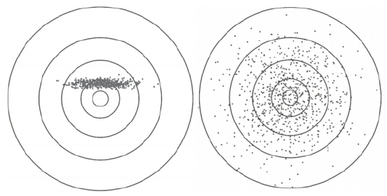
图2 偏差与方差的区别
注：假设有两个人（清醒的）在得克萨斯州射击。左边的射手有偏差，而且这是一个系统性的偏差，但总的来说，左边的射手比右边的更接近靶心。右边的射手没有系统性的偏差，但有很高的方差。通常，这两者此消彼长，你不能同时缩小方差并修正偏差。如果你面临重大选择且极度缺乏灵活选项，比如，两个得克萨斯州牛仔举枪对射，那么你宁可自己是左边的射手，这样才能远离毁灭。换句话说，面临一个危险时，修正偏差比缩小方差容易得多。如果你是飞机设计师，那么你宁可犯左图的错误，也不要犯右图的错误，要尽可能地降低你设计的各部件性能的方差，这样才能最大限度地减少飞机坠毁的可能性。只有做到了这一点，你才能在事故之后免受惩罚。
宗教为何存在？
因此我认为，宗教之所以存在是为了建立尾部风险管理体系，并将管控风险的知识传给下一代，宗教仪轨和教义很容易被人们理解、传授和执行，这样就能帮助部落增强抵抗风险的能力。尽管大自然存在尾部风险，但是人类仍然顽强地生存了下来，我们今天的生存不可能是随机产生的结果。
回想一下，我们一直倡导“风险共担”，而不是“沙盘推演”，我们不关心别人说什么，我们只关注他们做什么，以及他们是否全身心地投入其中，剩下的事情就交给造物主吧！
迷信可能有风险管理的作用，那些幸存下来的人一定拥有宝贵的生存技巧。我们有足够多的证据表明，重复那些幸存者做过的事情，不会降低你自己的生存机会。
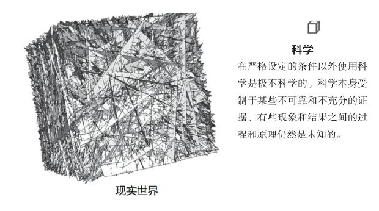
图3 经典的“大世界”和“小世界”问题
注：现阶段的科学不能提供我们所需的全部答案，科学本身都还不完整，你在现实生活中遇到的“科学”其实是某些人向你推销产品的幌子，很多人搞混了“科学”和“唯科学主义”，“科学”仅指过程严谨。
贾雷德·戴蒙德讨论过巴布亚新几内亚居民的“建设性偏执”，迷信教导他们不要在一棵死树下睡觉，这是迷信也好，对概率的深刻理解也好，其他东西也好，只要你不在一棵容易被风刮倒的死树下睡觉，你就不容易被它砸中，其他都不重要。如果你梦想让人们用概率做更好的决定，我有一些消息要告诉你：90%以上从事决策研究的心理学家（包括卡斯·桑斯坦和理查德·塞勒在内的管理者和研究人员）对概率一无所知，并且试图阻止我们天然形成的偏执，但其实偏执也许是一种有效的风险防控手段和自我保护机制。
因此我认为，我们不能一面赞美希腊立柱偏斜带来的视觉美感，一面又去批评别人迷信，那些看似迷信的偏执其实对人并没有多大害处，可能还曾经在历史上挽救了我们的祖先。
由此看来，那些由唯科学主义者大力提倡的理性，在信仰领域并无明确的定义。我重复一遍我的观点，我们并没有充足的证据来讨论哪些人的信仰是不理性的，理性只涉及一个人的行为。
扩展一下这个逻辑，我们可以看到，我们称之为“信仰”的东西其实是人类思维的必需品。当然这是一个比喻，但至少信仰可以是一种治疗手段。
请再回忆一下第3章的内容，集体理性可能恰恰来自个人偏见。
“嘴炮”，廉价的“嘴炮”
我们先提出这样一条原则：
装饰性的信仰和其他信仰之间的差异，就在于后者将被付诸行动。
其实这二者在字面上差异并不大，但是后者要求人们承担风险。如果一个人在实践自己信仰的过程中犯了错误，他就会失去某些东西，这才是二者真正的差异。
我们将上述原则重述如下：
你愿意为一个事物承担多大的风险，揭示了你对该事物的信任程度。
这项原则值得深入讨论。事实上，圣心天主教大学综合医院以外的世界里居然有那么多装饰性的信仰。为什么？我们真正地理解它们的功能吗？我们对此感到困惑吗？我们理解其中的理性吗？我们能回避理性的定义而直接使用它们吗？
林迪怎么说？
让我们看看林迪怎么说“理性”。尽管“合理”和“理性”这些词古代就有，但这些词在古代的意思主要是指“小心谨慎”或“温良自制”，现代意义上的“理性”和“理性决策”诞生于马克斯·韦伯之后的心理学家和哲学家的作品。“理性”现在的意思与古代用法不同，现代的“理性”观念形成于启蒙运动以后那段狂飙突进的时期，当时的人们认为自己很快就能掌握整个世界的运行规律，而且他们假定世界没有随机性，即便有，也可以被视作一个结构十分简单的装置，他们还认为，世界上的万事万物之间没有任何互动。
我发现唯一能够在实践中用数学方法严格定义的“理性”是：奉之则生。如果人们相信并遵循某个信念，并在此后的随机性考验中存活了下来，那么这个信念（及其对它的遵奉）就是理性的。因此，任何妨碍个人、集体和部落生存的东西都是不理性的。
迷信当中的预防性原则，恰恰是理性的风险管理措施。
华丽中的朴素
许多华丽的装饰并非就是肤浅的东西，可能恰恰相反，这些事物具有我们不了解的功能。对此，我们可以求助于最伟大的统计学家——时间，它会给你一个非常有用的工具——生存函数。家里的老人和复杂的统计学软件都知道这个工具，我们在这里只寻求老人的帮助。
真正值得注意的重点不是信仰本身存在了多久，天主教会已有24个世纪之久了，几乎是罗马帝国从不间断的化身。关键是信仰某种宗教的人（或部落）活了多久。
另一个原则：
当你从进化的角度去考察宗教时，不要在意不同宗教之间是如何竞争的，而是要观察不同宗教信众的幸存人数规模。
想想教皇的竞争对手——犹太教。犹太人有近500种不同的饮食禁忌。对于某些人来说，这可能看起来很不理性。事实上他们看起来确实有不合理性：犹太教饮食仪轨要求有四套餐具，两个水槽；避免肉类和乳制品混合，甚至不能让两者接触。
这个故事提醒我们，犹太教饮食仪轨能够持续几千年，不是因为其理性，而是因为遵守这些仪轨的人都活下来了。长期生存下来的部落会在内部产生凝聚力，并在部落成员之间建立信任感，这对商业的萌发是极有利的条件。部落内相距遥远的成员之间开展商业活动，由此建立了一个充满活力的网络，也许还会有其他方面的好处。但是不管怎么样，最重要的是犹太人经历了这些艰难困苦之后幸存下来了。
因此，我们可以总结为：
理性并不是那些可以用清晰的语言描述的因素，理性只有一个内涵：帮助生存，避免毁灭。
为什么？林迪效应能帮我们看得更清楚：
事情的发生未必都是有起因的，但事物能幸存下来必定是有原因的。
理性就是风险管理。下一章将就这一原则做最后的陈述。
第19章
承担风险的逻辑
核心章节总是放在最后。两次下注。你知道自己的“爆仓点”吗？你是谁？希腊人总是对的。
——————
现
在我们来阐释一下遍历性、爆仓与理性的概念。回想一下之前的观点，从事科学事业（以及其他伟大的事业）的首要条件是生存，而非其他。
现在来思考这样一个思维游戏。首先在第一种情形下（如图4中的漫画所示），100个人在某特定时间段内携带固定数量的钱去赌场，在那里他们可以获得免费的杜松子酒。这些人当中有的可能会赔钱，有的可能会赚钱。我们只需要计算一下回来的人口袋里剩下的钱，就可以计算出他们的总体收益，进而计算出赌场对赔率的定价是否合理。假设一天玩下来，第28号赌徒爆仓（赔光）了，第29号赌徒会受到影响吗？答案显然是否定的。
你根据这个样本可以很容易地计算出其中大约有1%的赌徒会爆仓，如果一直重复这个过程，你会得到与之前相同的比值，即在同一时间段内，平均有1%的赌徒爆仓。
现在我们来看一下这个思维游戏里面的第二个例子。假设你的表弟
[1]
从固定的金额开始，连续100天去赌场下注。在第28天的时候，你的表弟不幸爆仓了，那么对于他而言，还会有第29天吗？不会有了，因为他触发了自己的“爆仓点”，在游戏中他已经永久地出局了。
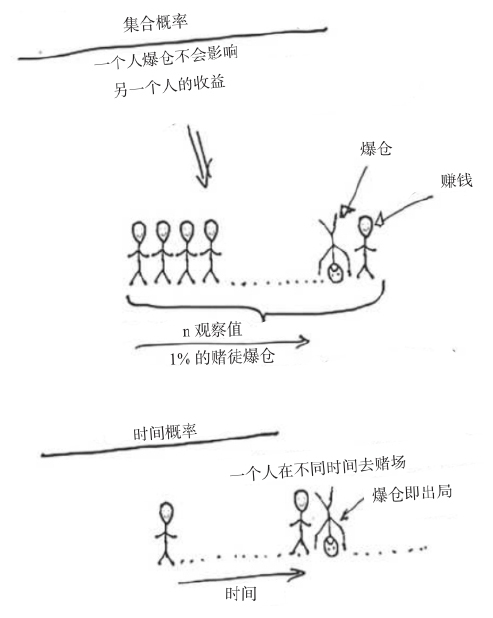
图4 100个人去赌场赌一次和1个人去赌场堵100次
注：图中显示了100个人去赌场赌一次和一个人去赌场赌100次的区别，即路径依赖型概率和人们惯常理解的概率之间的区别。经济学和心理学对这两个概率的误用从史前时代就开始了。
无论你的表弟赌技多么高超，行事多么谨慎，你可以肯定的是只要他一直赌下去，就一定会爆仓。
100个赌徒在1天时间里的成功概率，并不适用于你表弟在100天时间里的赌运。我们把第一种情形称为集合概率，第二种情形称为时间概率（第一种情形涉及的是一群人，而第二种情形则涉及一个人穿越一系列时间）。所以当你在阅读金融学教授、投资大佬或者当地银行根据市场长期回报提出的投资建议时，你一定要格外小心。即使他们的预测是对的（其实不对），个人也无法获得与市场相同的回报，除非他有源源不断的资金可以注入市场，而且不存在“爆仓点”。如果有人认为自己能够取得和市场相同的回报水平，那么他犯了这样一个错误：混淆了集合概率与时间概率。投资人要么是出现损失以后本金减少（以后追不上指数上涨了），要么是他即将退休，要么是打算和原配离婚、迎娶邻居的老婆，要么是他在接受阑尾炎手术后染上了毒瘾，要么是他改变了生活态度，无论出现哪种情况，此投资人的回报都会低于市场总体回报水平。
那些在风险行业中生存下来的投资人，都懂得这样一条广为人知的原则（版本因人而异，但都蕴含着相同的意思），那就是“要想投资成功，你首先得活着”。我自己的版本是“如果一条河的平均深度为4英尺，就千万不要过河”。我自己在生活中尽量保持对风险事件后果的“敬畏”，因为爆仓不仅会让人前功尽弃，而且会让人永远出局。在爆仓风险面前，成本收益分析变得微不足道。不过我还是没想到整个决策理论界都忽略了个体爆仓风险，由此导致的理论漏洞是如此之深。一个偶然的机会我读到了物理学家奥利·彼得斯与伟大的默里·盖尔曼共同撰写的一篇论文，他们俩的论文提到了一个和赌场故事差不多的例子，从这篇论文来看，社会科学研究中与概率相关的所有结论都存在缺陷，严重的缺陷，极其严重的缺陷，甚至在很大程度上是无可救药的致命缺陷。这是因为，自从250多年前数学家雅各布·伯努利给出了不确定性条件下决策的方程以后，他的构想就成了一项标准，导致此后几乎这个领域里所有人都犯了混淆集合概率与时间概率的严重的错误
[2]
。这个领域里真的无人幸免吗？其实也不尽然，准确地说是所有经济学家都会犯这个错误，其他人则未必，比如应用数学家克劳德·香农和艾德·索普，以及提出凯利标准的物理学家J.L.凯利都把这个问题搞清楚了，而且他们深入浅出地阐述了这个问题。保险数学之父、瑞典应用数学家哈拉尔德·克拉梅尔也搞清楚了这个问题。而在20多年前，我和马克·斯皮兹纳格这样的从业人员就已经按照这一准则建立了我们的交易策略（我在交易和决策过程中就已经把这个问题搞清楚了，并且在遇到违反遍历性的情况时，更加深入地研究了这个问题，当然我没有构建出彼得斯和盖尔曼论文中的数学模型，但我在20年前《随机漫步的傻瓜》中就已经讨论了遍历性问题）。斯皮兹纳格和我甚至专门设计并推出一款产品帮助客户规避“爆仓点”，以便他们能够长久地从市场获得回报。后来我退休了，而他依然在这一领域深耕，并且做得风生水起。我们俩都对经济学家感到失望，他们根本没有领悟到遍历性的真谛，却不断批评我们对尾部事件的担心是“非理性的”。
事实上，我在这里提到的观点非常浅显易懂，但为什么在长达250年的时间里，没有人意识到这一点？因为他们没有参加过“风险共担”。
如果没有参加过“风险共担”，又想理解涉及概率的问题，那么这个人一定要具备超高的智慧。对于那些接受了过度教育又严重缺乏实战经验的人来说，理解这些事情是很困难的。当然，除非他是一个天才，有着敏锐的头脑，能看透思维的迷雾，而且对概率论有深刻的理解。可以肯定的是，盖尔曼就是这样的天才（彼得斯或许也是），盖尔曼发现了“夸克”（这使他获得了诺贝尔物理学奖）。彼得斯说当他向盖尔曼阐述这一观点时，“他立刻就明白了”。克劳德·香农、艾德·索普、J.L.凯利和哈拉尔德·克拉梅尔毫无疑问都是天才。我可以以个人名义为索普担保，他有绝对清晰的头脑和深刻的思考，你在和他交谈的时候就能感受得到。上面所说的这些人因其极高的天赋，可以不必亲身体验“风险共担”，便能理解我提到的观点。但是经济学家、心理学家和决策理论家就没有这样的天分了，而且可以肯定他们以后也不会有。不过，偶尔从事心理学研究的赫布·西蒙是个例外。把一群没有真知灼见的人聚集在一起，即使人数再多也不会产生真知灼见。在经济学家当中寻找对概率问题有清晰而正确理解的人，就如同在计算机黑客蜗居的小屋或者懒散电工的阁楼里寻找和谐的美感一样。
遍历性
如果有一个随机过程，其过往的历史概率不能适用于其未来的情景，那么这个随机过程就不具有遍历性。出现上述情况是因为系统存在一个类似于“叫停”的机制，这其实就是一个有吸收壁的随机过程，参与这样一个随机过程的“风险共担”就意味着一旦被吸收壁吸收，你就不能回到随机过程中继续游戏了。由于不存在任何可逆性，我们将这种情况称为“爆仓”。这里的核心问题是一旦存在“爆仓”的可能性，那么成本收益分析就变得毫无意义了。
现在我们再来考虑一个比赌场实验更极端的例子，其实这个例子也是《随机漫步的傻瓜》书中的核心案例。假设有一群人在玩俄罗斯轮盘赌，单次获胜的奖金是100万美元，每6个人中有5个人可以获胜，如果有人用标准的成本收益模型来分析，那么他很可能会得出结论，声称参与游戏的人有83.33%的机会赢得奖金，因为每次平均收益是83.33万美元。但是如果你不停地玩这个游戏，最终的结局一定是躺在坟墓里，这时候你的预期收益还能作数吗？
重复风险
让我们来看一下在有“爆仓可能”和“重复风险”的情况下，“统计实验”和所谓的“科学”论述是何等的苍白无力。如果有人声称“统计数据证明飞机是安全的”，置信度为98%（没有置信度的话，数据就没有意义），而如果实际情况与其声称的一致，那么没有哪个经验丰富（飞行次数多）的飞行员能活着了。
[3]
除此之外，在我与孟山都公司的论战中，转基因的支持者总是拿出成本收益分析（通常是伪造或经篡改的）来反驳我，而对重复暴露的尾部风险却只字不提。
心理学家通过对单一个人的实验就认定人类有“偏执”或“风险厌恶”的倾向，理由是人类有高估小概率事件风险的天然倾向。这些心理学家想当然地假设他们的实验对象永远不会再遇到尾部风险了。回想一下在不平等性那一章中我们提到的观点，社会科学是不善于应对动态变化的。心理学家所做的这种实验与我们的日常生活经验是相悖的，但这种妇孺皆知的浅显道理，社会科学家却没有意识到。比如，抽一支香烟没有什么风险，却带来巨大的享受，如果用成本收益分析的话，某些专家可能就此认定抽香烟的风险微不足道，放弃香烟给人带来的快感得不偿失。但是吸烟最终会导致死亡，只不过起作用的不是一支香烟，而是每年很多包并连续很多年的累积的影响。换句话说，就是不断地重复暴露在风险之中，无论多么小概率的危险，最终都会带来死亡。
在现实生活中，情况往往更糟，每个看起来微不足道的风险，累积起来就会降低你的预期寿命。如果你喜欢爬山，骑摩托，爱和流氓混在一起，驾驶小型私人飞机，喝苦艾酒，抽烟，还有星期四晚上玩跑酷的话，你的预期寿命会大大缩短。这些行为通常不会造成非常严重的后果，但是它们如果集于一身且持之以恒的话，就不是那回事了。由此看来，人们对重复发生的低概率事件的担心并不是一种“偏执”，而是具有相当的合理性的。
有一种悖论，如果药物正在逐步增加你的预期寿命，你反而需要对此警惕——要动态地考虑这个问题。
如果你在某次小概率的爆仓风险中得以幸存，继续重复这种行为，最终你爆仓的概率将会是100%。这里有容易让人产生困惑的地方，小概率事件中的风险是一次性的，在第一次事件中幸存下来，并不会增加第二次小概率事件中的风险，因为事件是相互独立的，这看起来似乎是合理的解释。对这个问题，我们可以这样理解：持续暴露在“小概率”风险之下的次数累积，即使爆仓风险的概率小到1‱，那么在持续的、重复的过程中爆仓概率最终会越来越接近100%。
许多心理学论文的谬误在于，研究人员想当然地假设实验对象在实验之外不会遇到任何意外风险，而且永远不会。社会科学领域的“损失厌恶”理论构造得并不严谨，为验证该理论而做的许多实验都设计得很不科学。比如，你问实验对象这样一个问题：“如果你有1%的可能会损失100美元，那么你愿意支付多少钱来规避这种风险呢？”其实你是想问他愿意为“规避风险”（或者更愚蠢的说法“规避损失”）而额外付出多少钱，但是你实际上忽视了被测者所面临的其他风险。比如，他停在外面的车有可能被剐蹭，他的投资组合有可能赔钱，他开的烘焙店可能被罚款，他读大学的孩子可能有额外开销，他有可能被解雇或者他在未来某一天可能会突染重病，等等。所有这些风险会加总起来，影响实验对象在测试中的态度，生活中充满了随机性的风险，而且都与“爆仓”风险有关，我们不能把这些因素和人的生活割裂开来，单独研究其针对某个事件的“损失厌恶”。
心理学著作中另一个常见的错误就是所谓的“心理账户”
[4]
。而站在信息论立场的索普、凯利和香农则认为，为了使某项投资策略实现遍历性并最终跟上指数的收益，代理人应当在盈利的时候采取激进策略追加投资，而在遭受损失的时候采取保守策略缩减投资，这个方法被称为“赌场盈利效应”。在实践中，这种方法是通过事先设定的阈值来实现的，其目的是便于操作。阈值的概念并不复杂：盈利突破某一事先设定的阈值水平时，你就选择更加积极地下注；当你开始损失并跌破阈值时，你就减少下注金额，就好像有一个开关在控制你的下注金额一样。事实上，证券市场上几乎所有活下来的交易员都是这样做的。然而，行为金融学家却认为这个策略是错误的，例如，耸人听闻的干涉主义者理查德·塞勒就是其中之一，他对概率几乎一无所知，却将这个策略视为受“心理账户”影响的“追涨杀跌”行为，并敦促政府叫停我们在交易中使用该策略，这就使得我们的投资组合无法实现遍历性。
我始终认为风险厌恶情绪是不存在的，我们所观察到的所谓“追涨杀跌”行动，其实是为了活下来以便将来实现投资回报的遍历性，人们只是想尽力避免财务自杀，从而对尾部风险采取了特定的预防措施。
我们大可不必过于纠结自身的行动，我们应当将注意力转移到其他更值得关注的事情上去。
你是一个怎样的人？
现在我们再来讨论一下“部落”的概念。现代教育和思想的缺陷之一就是引导人们相信我们每个人都是一个独立的个体。事实上，我曾经做过这样一个实验，我在研讨会上选取了90个人，问他们：“你认为在你身上发生的最糟糕的事情是什么？”其中有88个人回答“死亡”。
事实上，只有对精神病患者来说，自身的死亡才是最糟糕的事情。因为紧接着那个问题，我又问了另外一个问题：“比起你自己的死亡，你、你的儿子、侄子、堂兄弟，你的猫、狗、长尾鹦鹉和仓鼠全都死亡，是不是更糟糕呢？”他们都回答：“是。”我接着问：“那你的死亡加上你的儿子、侄子、堂兄弟……以及全人类的死亡，是不是比你个人死亡更糟糕？”答案毫无疑问是肯定的。那他们怎么能信誓旦旦地说自己的死亡是发生在他们身上最糟糕的事情呢？
[5]
除非你极度自恋或者患有精神疾病，而即使那样，对于你而言最糟糕的事情也绝不仅限于失去自己的生命。
很显然，我们都认为个体的毁灭和集体的毁灭相比并不重要，而生态毁灭，对人类生存环境不可逆转的毁灭，才是值得所有人为之担忧的头等大事。
用遍历性框架解释就是，在俄罗斯轮盘赌游戏中我的爆仓对于我本人而言不是遍历性的（由于我爆仓出局导致我无法实现时间概率的遍历性），但对于系统而言是遍历性的（对于系统而言，有人爆仓出局体现了集合概率的遍历性）。正如我与几位同事提出的那样，预防系统因遍历性而产生的极端情况应该成为我们首要关注的事物——要防止自己成为系统遍历性的牺牲品。
每当我谈及审慎原则，就会有一群书呆子对我说：“我们过马路还要承担风险呢，何必庸人自扰地担心系统性风险？”这样的强词夺理总会让我感到愤怒。姑且不说行人过马路遭碾压的概率微乎其微（对于每天过马路的人来说，要47 000年才发生一次），所以问题的关键不是我个人死于交通事故的概率有多大（那并不是最糟糕的情况），而是系统性风险一旦发生就会摧毁我们大家。
我个人的生命是有限的，但人类的生命是几近无限的。
或者说：
个体生命结束以后会以其他形式再生，但是人类整体和生态系统一旦毁灭就无可逆转了。
我在《反脆弱》一书中提到过，整体系统的稳定性有赖于系统各部分的脆弱性（假设它们是可再生、可替代的）。如果人类可以长生不老，那么我们可能会因为一次突发的外部灾难，或者我们自身累积的不适应性突然爆发而导致人类的集体灭绝。所以，只有当人类个体的生命较短（也较脆弱）的时候，人类才可能在代际间实现基因变异以适应周围环境的变化，从而以个体的脆弱性换取整体的强韧性。
勇气和审慎并不矛盾
为什么勇气和审慎这两个看似矛盾的品格自古就是美德？亚里士多德在《尼各马可伦理学》中提到的美德包括节制、审慎，以及一种被称为实践智慧的洞察力。这些美德与勇气相悖吗？
在我们的理论框架内，这并不矛盾。用胖子托尼的话来说，它们其实是一回事儿。这话怎么说？
我冒着生命危险救下一群溺水的孩子，在这个过程中我展现出了勇气，而且这种行为也符合审慎原则。即使为救孩子们我付出了自己的生命，但是从图5中可以看出，我是为了更高层级的集体利益而牺牲了较低层级的自我利益。
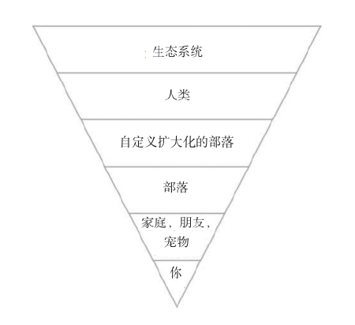
图5 个人与集体
注：为挽救集体而承担个人风险就是兼具勇气和审慎的行为，因为你降低了集体风险。
亚里士多德从荷马那里继承了希腊的道德体系（后来又经过梭伦、伯里克利和修昔底德的传承和发扬），在整个希腊世界的价值体系中，勇气从来都不是自私的举动：
勇气是为了更高层级的利益而牺牲自己。
自私的勇气从来就不是真正的勇气，因为自我保护是生物本能，谈不上是什么美德。一个愚蠢的赌徒表现出来的是疯狂，而绝非勇气，尤其当他在用别人的钱冒险或者自己还有一大家子要养活的时候。
[6]
重申理性
上一章我们从决策带来的实际效果角度，而非从“信仰”的角度重新定义了理性。事实上，那些所谓的信仰通常极具说服力，可以使我们避免做出威胁系统生存的事情。即使上述信仰需要迷信来支撑，它们也没有违反理性的原则，在技术上反对这种迷信反而阻碍了进步。如果迷信是通往遍历性的必由之路，那么就继续迷信吧！
让我们再来看看沃伦·巴菲特的故事。他的成功从来都不是依靠复杂的成本收益分析赚来的，恰恰相反，巴菲特只是建立了一个非常严格的筛选体系，只有通过筛选的项目他才进行投资。他曾经说过，成功人士和真正的成功人士之间的区别就是后者几乎对所有投资机会说“不”。我的观点与之类似，我们的大脑必须习惯于对尾部风险说“不”。许多方法都可以赚钱，且完全不必触发尾部风险。同样地，许多方法可以拯救世界，完全不必使用那种会导致系统脆弱性和未知风险的复杂方法。
每当我听到有人说“我们必须要承担风险”的时候，我立即就能判断出这话绝对不是一个从市场波动中幸存下来的交易员所说的，多半出自金融学教授或银行家之口，正如我们经常看到的那样，这些银行家总是拿着别人的钱去冒险，而且结局大多是爆仓和毁灭。
事实上，拒绝那些标新立异的“伪先进”技术并不需要很大的勇气和很高的成本。我就心安理得地做着一些在别人眼里“杞人忧天”的事情，因为我很清楚，我对那些尾部风险近乎偏执的审慎态度只要做对一次，就足以挽救我自己。
拥抱风险
《反脆弱》一书展示了人们如何将破产风险和市场正常的变化与波动相互混淆的现象，他们想当然地简化了那些实际上极为深刻和严谨的逻辑。但是，在有些情况下风险对我们更有利，比如，我们可以承担大量非尾部风险，以享受尾部收益。实际上，波动并不一定代表风险，反之亦然。比如，从长凳上跳下来的动作可能对你的骨骼有好处，但是从21层的高楼上跳下来就不是那么回事了。小的伤害可能是有益的，我们可以将其视为波动，但大的伤害，尤其是不可逆转的伤害则是我们始终要提防的风险。夸大和渲染市场波动造成的危害是危言耸听，但是对尾部风险事件，无论怎么夸大和渲染，都不过分，因为这是一种审慎的风险预防机制。毕竟，风险和爆仓不是一回事。
天真的实证主义
所有的风险都不相同。比如，我们经常会听到有人说“埃博拉病毒造成的死亡人数比在自己家的浴缸里淹死的人还要少”，或者是其他类似的基于所谓“证据”得出的说法。这类问题你的祖母会很容易理解，但是对于那些半吊子学者来说却是难以理解的。
永远不要将倍增的、系统性的胖尾风险和不倍增的、特殊的薄尾风险相提并论。
回想一下我之前提到的一个人死亡与其他人死亡之间的关系，我们可以得出这样一个启示：我们需要关注那些后果和影响的波及范围超出其本人的系统性效应。
我们再来刷新一下记忆，随机事件一般分为两种类型：平均斯坦和极端斯坦。平均斯坦是薄尾的，并且受影响的个人不会再波及其他人；而极端斯坦从定义上来看，会对较大范围的人群造成影响。因此，极端斯坦具有平均斯坦所不具备的系统性影响。可倍增的风险，比如流行病，总是来自极端斯坦。它们可能并不致命（比如流感），但仍然属于极端斯坦。
更专业的说法是：
来自平均斯坦的风险会受到切诺夫界的限制。
我们举个例来解释切诺夫界，在人口总数和浴缸数量不变的情况下，美国淹死在自己浴缸里的人数在下一年度翻倍的概率将会是几万亿分之一。但是美国死于恐怖主义袭击的人数在下一年度翻倍的概率就不能这样计算了。
记者和社会科学家近乎病态地沉溺于上面那种无知理论不可自拔，尤其对那些坚信回归分析和图表展示是解释问题的可靠方式的人来说更是如此。这些人只接受过基于平均斯坦的训练。所以我们经常会看到诸如“和金·卡戴珊睡过的人比死于埃博拉病毒的人还要多”这类耸人听闻的新闻标题，或者还有的新闻说死于家具事故的人比死于恐怖袭击的人还要多。你的祖母基于生活常识的逻辑推理将澄清这些胡扯的新闻。仔细想想吧，绝对不可能有10亿人与卡戴珊睡过（女的算上也不够），但埃博拉病毒由于倍增效应而大范围流行并造成10亿人死亡的概率却不一定是零。或者我们再举一个非倍增的例子，比如恐怖分子污染水源造成严重人员伤亡事件的可能性是存在的。此外，还有一点值得我们注意，即恐怖主义致死人数比较低是因为人们提高了警戒（我们会在乘客登机前进行安检，以筛查可能混迹其中的恐怖分子）。如果有人以恐怖分子袭击概率低为由认定这种警戒是多此一举的，那么他其实犯了逻辑推理的错误，毕竟恐怖分子和你的浴缸不同，后者不会主动杀人。
我一直感到非常困惑，为什么上述观点对于很多“科学家”（包括政策制定者）来说难以接受，而对于另外一些人，比如概率问题专家保罗·恩布雷希特来说，却是显而易见的事情。恩布雷希特的研究方向是概率论的一个分支：极值理论。我把这群研究者戏称为“极端分子”，原因是他们像我一样，专注于极端事件的研究。但是，恩布雷希特和他的同事只关注极端事件，而不关注一般事件。请注意不要把他的理论与极端斯坦相混淆，他们研究极端事件的发生，既包括极端斯坦也包括平均斯坦，只不过平均斯坦比极端斯坦温和一些。他们通过广义极值分布给发生在“尾部”的事件分类。事实上，越是落在“尾部”区域的事件就越是清晰可见。而且用概率描述一个事件远比用文字描述更简洁明了。
总结
我用几句话总结一下本章的内容：
人们可能会喜欢风险，但肯定厌恶爆仓、破产和毁灭。
生活中的核心非对称性在于：
如果一个策略有可能触发爆仓风险，那么无论多么大的收益都得不偿失。
还有：
摧毁系统的风险和系统内部的波动是两个物种。
你承担的每一个风险累积起来最终会导致你的预期寿命缩短。
最后：
理性就是避免系统性毁灭。
[1]
作者在原文中为“表弟”杜撰了一个名字：Theodorus Ibn Warqa，这个名字的构成十分奇特，其中“Theodorus”疑指拜占庭帝国皇帝希拉克略的弟弟，他于公元633年6月率军抗击阿拉伯人的入侵，在战斗中阵亡并丢失了帝国的大马士革、巴勒斯坦、叙利亚和约旦等领土。“Ibn”在阿拉伯语中是“之子”的意思。“Warqa”疑指中世纪阿拉伯爱情故事《瓦尔卡与古尔莎》的主人公瓦尔卡，他历尽艰辛要娶古尔莎为妻，但造化弄人，两人先后殉情。作者杜撰了这个包含拜占庭和阿拉伯双重色彩的名字以体现某种程度的遍历性，并用这两位悲剧英雄的名字暗示“表弟”在赌场的最终命运。考虑到这个杜撰的名字十分拗口，直译恐影响读者的阅读体验，故正文仅以表弟标识。——译者注
[2]
经济学家可能已经认识到“集合概率和时间概率”混淆的问题了，但并不深刻。此外，他们总是喋喋不休地说：“我们对胖尾现象已经足够了解了。”但他们没有意识到将这一观点推向深入会推翻他们之前的很多成果——重要的是结果而不是过程。
[3]
这里存在两种可能的情况，一种可能性是统计数据本身有问题，真实的飞行安全性应该近99.9999%，否则一个飞行员连续飞行（重复暴露在某风险中），最终会在其职业生涯中遭遇不幸；另外一种情况是每次飞行的条件和环境都不一样（并非每个航班都会飞越交战区域），导致每次飞行都不是同一条件下的重复实验，那些会造成机毁人亡事故的风险并非每次飞行都存在，而是极其偶然出现的。如果是这样的话，统计方法就不适用于解释这个问题了。从上下文看，作者倾向于前一种解释。——译者注
[4]
心理账户是指人们在心理上（或物理上）把资金放在相互独立的不同账户里的倾向。人们更关注资金的来源，却忽略了自己作为所有这些资金的实际拥有者，资金来源其实并不重要。例如，某人可能会因为一条领带太昂贵太华丽而舍不得买，但是如果他的妻子在他生日那天用他们俩的联合支票账户给他买了这条领带，他反而会非常高兴。在我们讨论的例子中，塞勒认为投资人不应该关注资金来源是投资收益还是原始本金，因此按照盈亏来调节投资计划的做法显然是错误的。塞勒和所有伪心理学家一样，没有弄懂其中的规律，还是那句话，社会科学领域的专家不善于和动态的事物打交道。
[5]
我经常开玩笑说，我的死亡加上我不喜欢的人，比如新闻学教授斯蒂芬·平克的死亡，要比仅仅我自己死亡更糟糕。
[6]
社会科学研究者们不得不借助所谓的“镜像神经”来解释个体与集体之间的关系。这种研究也是唯科学主义的一种形式，《反脆弱》一书曾有提及。
后记
林迪告诉了我什么？
现
在，我的读者，这段旅程即将结束，这是不确定性系列丛书的第五本。我想为这本书做一个总结，仿佛我有天然的责任为你们提炼这本书的精华，此刻我正站在餐厅的镜子前，我看到镜子里的我络腮胡已经变白，那种我生来就有的东地中海（希腊–腓尼基）人特有的不屈不挠和抗争精神已随岁月老去。25年前我开始写不确定性系列丛书时，我用的还是纸和笔，那时我的胡子还没有变灰。林迪一直对我说，对某些事情，不必努力去证明，去解释，去总结。有一次我在餐厅无意中听到一个人说出了我的心里话，“事情本来就是这样的”，这句话后来不断地在我脑海中共鸣和回响。
接下来我不做总结了，以后也不再做任何总结了，我们来听听林迪怎么说：
当一个人胡子还是黑的时候，要注重推理，忽略结论；当他的胡子变灰的时候，要推理和结论并重；当他的胡子变白的时候，那就跳过推理，直接关注结论吧。
最后让我用一组长长的否定式格言来结束本书：
不要没有力量的肌肉；
不要没有信任的友谊；
不要相信不承担责任的观点；
不要缺乏美感的变化；
不要没有价值观的阅历；
不要未拼尽全力的人生；
不要把资源和精力浪费在自己不渴望的事情上；
不要吃没有营养的食物；
不要没有相互奉献的爱情；
不要拥有了权力却抛弃了公平；
不要缺乏严谨调查的事实；
不要没有逻辑的统计；
不要没有证明的数学；
不要没有实践经验的老师；
不要冷若冰霜的礼貌；
不要无法付诸实施的理论；
不要没有真才实学的文凭；
不要没有打击能力的军事行动；
不要没有文明的进步；
不要没有相互投入的友谊；
不要遵奉美德却又不敢担当；
不要忽略概率的遍历性；
不要相信没有风险的财富机会；
不要辞藻华丽却又言之无物；
不要把问题搞得很复杂却又没有思想深度；
不要忽略决策的非对称性；
不要以为质疑会阻碍科学进步；
不要缺乏宽容的宗教。
最后也是最重要的是：
没有“风险共担”就一事无成。
感谢您读完本书。
致谢
在此，我由衷地向拉尔夫·纳德（Ralph Nader），罗恩·保罗（Ron Paul），威尔·墨菲（Will Murphy）（编辑、顾问、校对员、语法专家、专家），本·格林伯格（Ben Greenberg）（编辑），卡西娅娜·洛尼塔（Casiana Ionita）（编辑），莫利·托宾（Molly Turpin），春日美嘉（Mika Kasuga），埃文·坎菲尔德（Evan Camfield），芭芭拉·菲永（Barbara Fillon），威尔·古德拉德（Will Goodlad），彼得·坦斯（Peter Tanous），阿默尔·布阿萨利赫（Xamer ‘Bou Assaleh），马克·贝克（Mark Baker）（无氧健身大师），阿曼德·安古尔（Armand d’Angour），亚历克西斯·科尔斯鲍姆（Alexis Kirschbaum），马克斯·布罗克曼（Max Brockman），拉塞尔·温伯格（Russell Weinberger），西奥多西乌斯·莫森·阿卜杜拉（Theodosius Mohsen Abdallah），大卫·勃格森霍恩（David Boxenhorn），马克·米拉尼尼（Marc Milanini），苏黎世联邦理工大学全体参与人员，凯文·霍根（Kevin Horgan），保罗·韦奇（Paul Wehage），巴鲁克·哥特斯曼（Baruch Gottesman），吉尔·弗林德（Gil Friend），马克·尚普兰（Mark Champlain），亚伦·埃利奥特（Aaron Elliott），罗德·里亚蒙蒂（Rod Ripamonti）以及拉塔恩·哈迪奇（Zlatan Hadzic）（宗教和祭祀），大卫·格雷伯（David Graeber）（高盛集团），尼尔·克里斯（Neil Chriss），埃米尔雷扎·阿米尼（Amir-Reza Amini）（自动汽车），埃克特勒特·克里斯·马努是（Ektrit Kris Manushi）（宗教），加齐·齐尔伯（Jazi Zilber）（尤其是拉夫·萨弗拉Rav Safra），法里德·安瓦里（Farid Anvari）（英国丑闻事件），罗伯特·肖（Robert Shaw）（船运和风险共担），丹尼尔·霍根多恩（Daniel Hogendoorn）（冈比西斯），尤金·卡拉汉（Eugene Callahan），乔恩·埃尔斯特（Jon Elster），戴维·钱布利斯·约翰逊（David Chambliss Johnson），古尔·休伯曼（Gur Huberman），拉斐尔·多阿蒂（Raphael Douady），罗伯特·肖（Robert Shaw），巴克利·罗瑟（Barkley Rosser），詹姆斯·富兰克林（James Franklin），马克·亚伯拉罕（Marc Abrahams），安德烈亚斯·林德（Andreas Lind）以及伊莱亚斯·科罗西斯（Elias Korosis）（证券），约翰·杜兰特（John Durant），兹维卡·阿菲克（Zvika Afik），罗伯特·弗雷（Robert Frey），拉米·孜雷克（Rami Zreik），乔·奥迪（Joe Audi），盖伊·里维埃（Guy Riviere），马特·杜比克（Matt Dubuque），塞撒雷奥·冈萨雷斯（Cesáreo González），马克·斯皮兹纳格（Mark Spitznagel），布兰登·雅金（Brandon Yarkin），埃里克·布莱斯（Eric Briys），乔·诺曼（Joe Norman），帕斯卡尔·维尼尔（Pascal Venier），亚尼尔·班杨（Yaneer Bar-Yam），蒂博·勒古耶（Thibault Lécuyer），皮埃尔·扎罗伊（Pierre Zalloua），马克西米兰·希尔纳（Maximilian Hirner），亚伦·埃利奥特（Aaron Eliott），杰弗里·阿里（Jaffer Ali），托马斯·梅西纳（Thomas Messina），亚历山大·鲁帕努奇（Alexandru Panicci），丹·科曼（Dan Coman），尼古拉斯·提格（Nicholas Teague），马克·伊斯坎德尔（Magued Iskander），蒂博·勒古耶（Thibault Lécuyer），詹姆斯·马什（James Marsh），阿尼·施瓦兹沃格尔（Arnie Schwarzvogel），海登·雷（Hayden Rei），约翰·穆斯特–芬恩（John Mast-Finn），鲁珀特·里德（Rupert Read），罗塞尔·罗伯茨（Russell Roberts），维多利亚·马丁（Viktoria Martin），班恩·坎杰什·埃沙贝（Ban Kanj Elsabeh），文斯·百纳（Vince Pomal），格雷姆米·麦克·普利斯（Graeme Michael Price），卡伦·布伦南（Karen Brennan），杰克·托梅（Jack Tohme），玛丽–克里斯汀·瑞阿奇（Marie-Christine Riachi），乔旦·锡伯杜（Jordan Thibodeau），彼得洛·博纳维塔（Pietro Bonavita）表示感谢。如有遗漏，深表歉意。
附录1
违背直觉的事情
《反脆弱》讲到了当市场出现非对称性和非线性的情况时，绝大多数人只能随波逐流，而不是主导市场。我们上面提到的少数派主导的情况也与之类似。
市场参与者的行为并不能使我们理解市场的行为。
你可以以身观身，以市观市，但不能以身观市（通过观察人来观察市场），尤其不能通过观察市场参与者的平均情况来得出有关市场的结论。你要注意到市场并不是个体参与者的总和（用平均数乘以一个常数得到总数，然后你就以为每个人受到相同程度的影响，这种方法是错误的）。得益于我们之前探讨过的重整化机制，这一点现在应该很清楚了。整个社会科学领域都忽略了这个机制，我们应该意识到：
心理学领域对个体偏见进行的研究，并不能使我们理解人类的整体行为或者某些个体的共有行为。
离开了人际交往无法研究人的本性，我们是群体性动物，而且和人有关的一切行为特征都不是相互孤立的，它们彼此之间有联系——这就是社会科学研究领域常犯的错误。
[1]
每个群体都有其各自的特性，一个由10个人组成的群体和一个由395 435个人组成的群体，有质的差异，就像一本书和一栋办公大楼的区别一样。因此，当我们关注共性时，我们会感到困惑。而且当群的规模达到一定程度以后，事情就变得更复杂了——这是一种数学意义上的复杂。我们把构成一个群的各要素看成各维度，维度数越高，各要素之间的互动也就越多。这就意味着我们更难通过观察微观维度来理解宏观群体特性。而且，当维度达到一个数量级别以后，每增加一个维度，就会不成比例地大幅增加各要素的互动，这使得我们更难以理解群体性特征——我将其称为“维度诅咒”。在随机误差检验下，仅增加一个维度就可能使系统的复杂程度增加1倍以上。如果系统本身的维度是1 000，那么，将其增加到1 001就会使系统复杂程度增加10亿倍。
尽管我们在神经科学领域对研究大脑内部的构造取得了可喜的进步，但是：
仅仅了解大脑部件的运作（比如神经元），根本不足以使我们理解整个大脑的运转方式。
一组神经元或基因其实和一群人一样，构成神经元的成分是不一样的，其中的互动关系也一定是非线性的。秀丽线虫是人类完成的第一个基因测序的生命体，其大脑仅有300个神经元，但是到现在为止，我们还不知道其大脑的运作方式。由于维度诅咒，从300个变为301个神经元，都可能使复杂程度加倍，而人类大脑大约有1 000亿个神经元，要研究大脑内部的构造，其难度可想而知。所以有人说我们可能永远都不会了解人类大脑的运作方式，这句话可能（很不幸）是正确的。基于同样的原因，尽管有人吹嘘人类在DNA测序方面取得了重大进展，但我们目前仍然对绝大部分疾病的病因知之甚少。我们仅能探知少数几种较为孤立的疾病的成因——这些疾病仅由单个基因控制，因此比较容易探知。一旦维度升高，我们就无能为力了。
了解某个体的基因构成，远不足以让我们理解这一个体的行为方式。
请注意我表达的并不是个人观点，而是陈述一个现象的数学特质。
有一个“平均场”方法，讲的是观测两个个体之间的互动并求出平均值，然后再将数据结论推广到这两个个体所属的群体——除非系统内不存在非对称性，否则这种方法极不可行。《自私的基因》作者理查德·道金斯和斯蒂芬·平克等学者，曾过分乐观地依赖“平均场”方法并得出一些惊人的结论，而亚尼尔·班杨则从系统科学角度出发，用“平均场理论的失效”证明了这些学者的结论是天真且错误百出的。我们唯一能够肯定的是这些作者的英文水平要远远高于他们的科学素养。马丁·诺瓦克和他的同事们（其中包括社会生物学开创者爱德华·威尔逊）则从社会生物学角度猛烈批判了《自私的基因》的作者及其拥趸者的错误。
现在的问题是，难道我们之前通过研究个体而得出的行为科学方面的结论大多是胡说八道的？很不幸，可能真是这样的。当一个社区出现种族隔离的情况时，有些居民就会被莫名其妙地贴上“种族主义”或“推行种族隔离”的标签。而已故的托马斯·谢林早在几十年前，就运用“细胞自动机”机制（一种类似于重整化的技术），证明了即便在社区里没有种族隔离主义者，社区作为一个系统整体也会产生种族隔离。
无知而有效的市场
绝大多数政策制定者不明白这样的道理，研究整体系统的运作机理比观察系统中的个体行为更重要。
在合理的市场结构下，一群白痴也能创造出一个运转良好的市场。
达纳南吉·高德和善扬·桑德两位教授，在1993年得出了一个惊人的研究结论。模拟一个全部由智力为零的人组成的市场，让他们随机出价，然后按照正常的交易程序对买卖双方的报价进行撮合，你猜结果怎么样？由智力正常者组成的市场和由智力为零的参与者组成的市场，竟然取得了相同的资源配置效率。这一结论再次证明了弗里德里希·哈耶克的远见。现在看起来，经济学中那些基于理性个体假设的经典理论，恐怕不符合我们今天的发现，因为：
个体基于其生物本能做出的某种行为，也许不符合我们有关理性个体的定义，但是提升了系统整体运行效率。
对于理性主义者来说，还有一句重要的提醒：
个体参与者不必知道市场的发展方向，市场自己知道。
建立一个结构合理的市场，不用干涉市场参与者的行为，市场和个体都会运作自如。
[1]
尤其需要指出的是，有关行为经济学的研究就经常犯这样的错误，以至这方面的研究并不比传统经济学（本已一无是处）更有益于我们参与市场交易、理解经济运行和制定经济政策。
附录2
技术性附录
A.“风险共担”和尾部概率
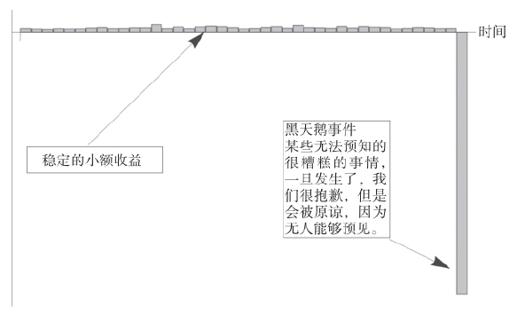
附图1 罗伯特·鲁宾的勾当
注：非对称的回报：收益明显可见（还会收到报酬）而损失则极少发生（即便发生了也没有惩罚，因为缺乏“风险共担”的机制）。还可以推广到政治和其他惩罚力度不大的领域。
本节将讨论尾部风险概率不匹配的问题以及委托代理框架下的回报问题。
伤害转移：如果一个代理人只享受随机变量向上时带来的正面收益，而不承担向下时的损失，而且对他的评价是基于其过往历史表现，那么他就有动机使用一个负偏向（更广泛来说是非对称）的收益分布函数将风险隐藏在左端尾部。这可以被推广到任何一种个人对其行为不承担全部风险和损失的情况。
设P (K, M)为交易员在M个激励周期期间的收益：
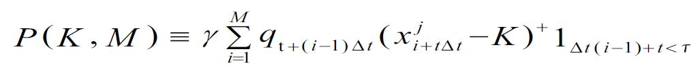
其中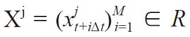
表示随机变量，代表一定时期[t,t+iΔt]，i∈N，Δt∈R+
内的利润分布，K代表一个门槛
[1]
，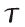
= inf{s: (Σz≤s
xz
) ＜ xmin
是一个停时
[2]
，指向过往几年时间的表现（如必须在某段时期达到某种确定业绩的条件，一旦不满足业绩条件，该交易员就丧失了继续交易的机会，游戏结束并且正向激励停止）。常量γ∈(0，1)是代理人收益，也可以是他的业绩提成，并不一定是指货币形式的收益（任何他获得的好处都是）。qt+(i–1)Δt
∈[1,∞)表示在t+(i–1)Δt时的风险规模（因为数据总是滞后的，s时间段的表现是由早于时间段s的q值来决定的）。
设{fj
}是对于Xj
概率测度fj
的集合，j∈N，每个测度对应某个均值/偏度特征，我们可以将它们的属性在“中间性”参数K的两侧分成两半，作为“上”“下”分布。我们将dFj
(x)写成fj
(x)dx，因此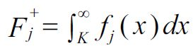
和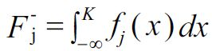
作为上下两个区域的分布，其各自对应条件期望值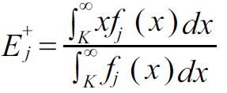
和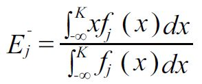
现定义v ∈ R+
为一个以K为中心的非参数测度来标识上下两个区域分布的非对称性，当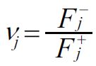
的值大于1时，为正的非对称性（分布偏向上区），当其值小于1时，为负的非对称性（分布偏向下区）。直观地来看，偏度使得概率和期望值以反方向变化：负收益越大，概率越低。
我们并不假设一个“公平的游戏”，有不受限制的收益m∈(–∞,∞)，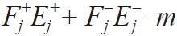
，我们可以写成m+
+m-
=m。
对常量q和单一条件停时的简化假设
假设q为常量，q=1，并将停时条件简化为前期没有损失，
=inf{(t+(i–1)Δt):xΔt(i–1)+t
<K}，于是就有
[3]
：
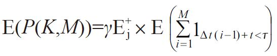
因为假设代理人的收益是独立同分布的，在停时取期望值对应于停时期望值乘以代理人的预期报酬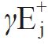
，且
[4]
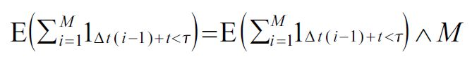
在先前没有损失的前提下，停时期望值可以写作没有先前损失条件下的成功概率
[5]
：
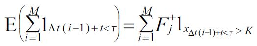
我们可以用无间断成功游程来表达停时条件。设Σ为一个连贯的成功游程的有序集合：
Σ≡{{F},{SF},{SSF},...,{(M–1)连续次S,F}}，S和F分别代表时间段Δt内的成功和失败，相应概率为：
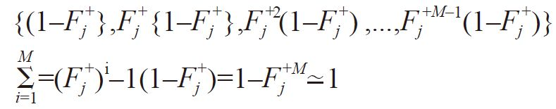
对于大的M数值，因为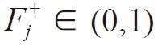
，我们几乎可以将前面部分看成等式，因此：
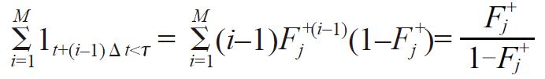
最后，代理人的预期收益为：
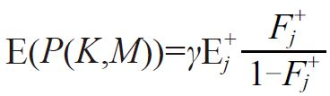
随着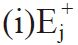
的增加和（ii）损失概率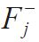
的最小化，此数值会增加；但是，这也是核心所在，即使（i）和（ii）的发生是以牺牲m（总回报的预期收益）为代价。
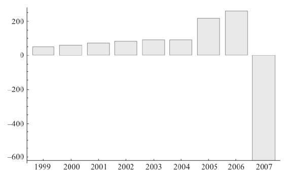
附图2 Indy Mac公司，一家在次贷危机中破产的公司（塔勒布，2009），在没有发生损失的情况下风险一直在积聚，直至爆发危机
值得警惕的是，由于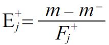
，因此代理人并不会担心总回报m的等级降低，只要这种恶化是来自分布的左端m-
。从偏度空间看，在j分布下当vj
取最小值（最大化负非对称性），代理人的预期收益最大化。由于仅存在正向激励
[6]
，代理人没有全身心投入“风险共担”，代理人和委托人的总回报取决于负偏度，而不是m。
B.概率的可持续性和遍历性
动态风险承担：如果你反复承担一项风险（任何风险），那么测量这种风险的办法应该是全生命周期，或者你因承担该风险而被缩短的剩余生命。
爆仓属性：爆仓事件的概率处于单个代理人的时间领域，而不对应状态空间（或集合）的尾部概率。这两个领域（时间和空间）的期望不能相互替换。因此，代理人根据状态空间而声称尾部事件（触发爆仓的事件）被“高估”是错误的。
这是杠铃策略背后的主要原因。
这是一个融合一个随机变量和一个对时间和路径都依赖的衍生函数回报的特殊个案。
更直观的翻译是：
如果一条河的平均深度为4英尺，就千万不要过河。
[7]
一个简化的案例
考虑一个极其简化的例子，一个支集在正实数（R+
）内的独立变量序列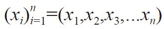
，经典概率论里面的收敛定理通过（弱式）大数定律（以概率收敛）来解决总和或平均的行为：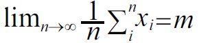
。正如第19章中赌场故事所揭示的，n趋向无穷可以使概率收敛于真实平均收益m。虽然大数定律可以应用于可被时间严格分割的i事件，但该定律假设事件的独立性，而且对路径的独立性有严格要求。
现在考虑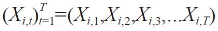
，其中每个状态变量Xi
都是以时间单位t:0<t<T标定的。假定“时间事件”是从同一严格概率分布得出的：P(Xi
)=P(Xi,t
)。
我们以一个时间概率来描述一个单一代理人i的演化。
由于（委托代理关系的）终点就是爆仓，而且是不可逆转的（本金全损以后无法重新开始），因此，每一次观察都是以前一时间段内观察到的属性为条件的，在t时间段内发生的事情取决于t–1，在t–1发生的事情取决于t–2，依此类推。我们现在有了路径依赖。
下面我们谈谈遍历性的失效。
定理1
（状态空间–时间不等式）：假设对于任意t，表示为∀t，P (Xt
= 0) > 0,以及X0
> 0，EN
(Xt
) < ∞是静止初始时间t的状态空间期望值，ET
(Xi
)是任何代理人i的时间期望值，两者可由（弱式）大数定律获得。我们有
EN
(Xt
) ≥ ET
(Xi
)
证明：
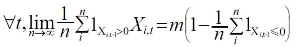
其中1Xt−1>0
是一个前一期存活的指标函数（游戏还能玩下去）。因此，对于t的n极限显示了递减的时间期望值：EN
( Xt–1
) ≤ EN
( Xt
)
我们可以证明发散性：
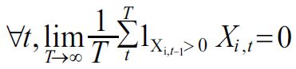
我们通过使T<∞，由递归迭代期望定律可得到所有T的不等式。
我们可以看到全体风险承担者在任何时间t都预期回报 ，而每个风险承担个体最终都会爆仓。
，而每个风险承担个体最终都会爆仓。
其他方法：我们还可以用测度理论的方法证明这一点。“不爆仓”A的空间集合之间没有交集，但其时间集合则不是这样的。该方法以度量ν的如下事实为基础：
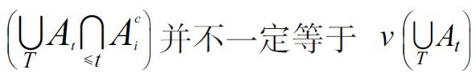
几乎所有用期权来表明精算过高估计了尾部风险的论文都被定理1中的不等式证明为无效（巴伯里斯，2003）。显然，他们假设代理人一生只做一次决定或者只冒一次风险。那些讨论“偏见”的论文假设代理人余生不再做任何决定了。
如果只取决于“爆仓”的话，那么解决这类路径依赖的方法就是引进一个X函数，使得（路径依赖）集合的均值和（时间依赖）集合的均值具有相同的属性。自然对数是一个不错的选择，因此，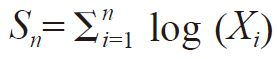
和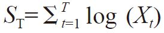
属于相同的概率类；因此一个概率测度相对于另外一个概率测度是不变的——就是所谓的遍历性。因此，在有“爆仓”可能的条件下分析回报和风险时，有必要引进变量的对数变化形式（彼得斯，2011）或左尾的有界性（凯利，1956），同时最大化右尾的机会（盖尔曼，2016）或者左尾的有界性（杰曼等，2015）。
我们在这里表明的是，除非进行对数变换（爆仓点设定为X=0，产生一个平滑函数），否则两种期望都会发散。预防原理的要点是尽量降低爆仓的概率以避免依赖使用对数或者转换形式。
彼得斯和盖尔曼（2014）在他们的硕士论文中表明，伯努利使用对数函数并非为了一个凹性“效用”函数，按照凯利的标准来看，是要重建遍历性。下面是有关该问题的发展历程：
·伯努利发现了使用对数形式时的风险披着“效用”的外衣。
·凯利和索普重显对数源于作为一个最佳赌博策略的增长标准的最大化，且与效用无关。
·萨缪尔森认为对数太具侵略性，他没有意识到半对数（或者偏对数）有时可用。从门格尔到艾罗，中间还有切尔诺夫和萨缪尔森，许多决策理论被证明犯了遍历性的错误。
·皮特曼在1975年发现布朗运动的吸收壁设置为零时，审查吸收路径后，演变成三维贝塞尔过程。幸存路径的漂移是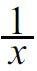
，是对数的积分。
·彼得斯和盖尔曼重新证明遍历性对数的合理性，并将凯利–索普的研究置于严格的物理学基础之上。
·西里洛和作者本人于2015年发现，为了消除允许极值理论使用的单尾紧支集，log在创建分布的双重对象中起到了独特的平滑变换作用。
我们能够证明（作者本人和布瑞斯，相关论文仍在准备和沟通过程中）对数转换作为避免爆仓的简便方法具有必要性，这恰好是一个双曲绝对风险厌恶实例。
定理1 在布朗运动中的运用
讨论简化版的问题并不影响我们使用更复杂的模型，比如带有吸收壁的完全随机过程。当然，在自然界条件下，比停时机制更极端的情况也可能发生，即爆仓超越本次周期，导致之前生命周期内累计的回报全损（Xt可以取一个极端的负值）。彼得斯和盖尔曼的观点消除了所谓的股权溢价，如果你考虑胖尾因素以及时间和集合的不可替代性，结果会更严重，结果会造成更广泛的接近爆仓的影响。
如果一个人使用带吸收壁的布朗运动随机过程描述这个情况，那么，现实生活中的问题将与之十分相似。在受L影响的过程中，我们可以得到如下吸收壁：
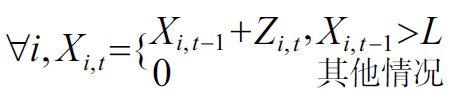
或将其表现为一个几何过程：
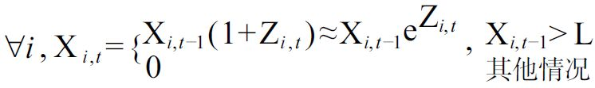
其中Z是一个随机变量。
接下来我们进入连续时间模型，并考虑几何布朗运动情况，设
={inf t:Xi,t
>L}为停时，这个想法是让停时的简单期望符合剩余生命区间——或保持相同的顺序。
让我们把焦点从概率转向爆仓时的停时τ与剩余生命跨度之间的不匹配。
C.概率可持续原则
原则A：个体在承担任何风险时要遵循这样一个原则，就好像他在一生的剩余时间里都要以某个特定的频率反复承担这个风险。
可持续原则对以下论点十分重要。虽然实验是静止的（我们已经看到了状态空间和时间的混淆），生活是连续的。如果你将引发一次爆仓的小概率作为偶然一遇的风险，承受下来继续从事交易活动，并继续承担这种偶然一遇的风险，最终你爆仓破产的概率是100%。人们容易对此感到困惑，他们总认为爆仓事件的风险属性应该是偶然的，一次性的，仿佛那才是合理的，但这也意味着再遇到一次爆仓也是合理的。请见附图3，好消息是，某些类别的风险发生的概率几乎可以视为零：在过去的30亿年里，地球每天都经受数万亿次的自然变化而仍然存在着，否则我们今天就不在这儿了。在系统中，我们可以用条件概率参数（根据生存偏差调整）来倒推爆仓概率。
现在我们不需要使t→∞，永久可持续也不必要。我们只是延长（某游戏/交易）的生命，t越长，期望算子就越发散。
在离散且简化的条件下，考虑爆仓（或破产）的无条件停时期望：
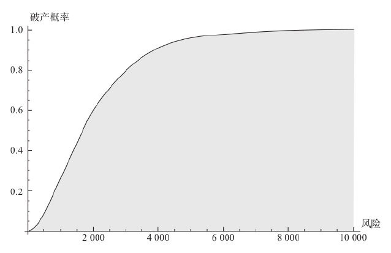
附图3 为什么爆仓不是可再生资源。无论风险有多么小，从时间上看，有爆仓（或破产）可能的事情最终肯定会发生爆仓（或破产）。任何风险都不应该被视作“偶然性”事件
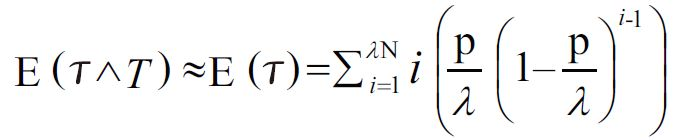
，其中λ是在单位时间段内承担风险的次数，T是某个游戏或交易的剩余时间，Ρ是爆仓（或破产）概率，二者在同样的时间段内都面对固定的Ρ。由于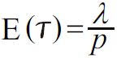
，我们可以在重复多次的情况下校准风险。预期寿命T越长（包含的时间段越多），爆仓破产问题就越严重。人和植物的生命很短，但是大自然的生命至少是108
年了，因此每年的毁灭概率为Ο(10-8
)，严格递增的局部毁灭概率最多为Ο(10-50
>)。在个体–物种–生态系统的等级体系中，等级越高，毁灭的问题越严重。这种双重性取决于t→∞；因此对于有限生命体，这种要求并不必要。
胖尾理论：越是能提供大偏差的系统，爆仓（破产、毁灭）的问题就越严重。
我们将更全面地讨论胖尾问题。显然，各过程的偏差很重要，但是不触及爆仓门槛的偏差无关紧要。
对数变换
根据可持续性原则，“一个人承担一个风险一如他将永远承担这个风险一样”，但这只对于对数（或类似的）转换才适用。
在缺乏对随机变量紧支集的情况下，胖尾这种特性通常令人担忧，而当变量有界时情况就没有那么糟糕了。正如我们已经看到使用对数转换的需要时，当一个在[0,∞）有支集的随机变量现在有（–∞,∞）支集，因而从极值理论派生出来的特性现在也可以应用于我们的分析。类似地，如果损失被定义为一个正数，对应爆仓H为其上限，就可能将其从[0,H]转换为[0,∞）。
克莱默和伦德伯格在保险分析中发现了这个困难，详见克莱默（1930）。
关于遍历性的一个注释：遍历性在统计上不可识别，不可观察，并且对于给出遍历性的时间顺序没有办法测试，情况类似于迪基–富勒关于平稳性测试和菲利普斯–佩伦关于积分顺序的讨论。更关键的是：
如果你的结果是通过观察时间序列获得的，那么你如何对集合概率测度进行解释？
答案和套利类似，套利也没法进行统计测试，但关键在于，有一个事先确定的概率测度（基于“没有免费的午餐”的观点）。此外，考虑“自融资”策略，比如通过动态对冲的办法。在极限情况下，我们假设大数定律将压缩收益，但损失和触碰吸收壁的情况也不会发生。这就满足了我们的遍历性要求，但是无法获得统计测度。而且，几乎所有讨论跨期“投资/消费”的文献都以“没有爆仓（破产）”为前提条件。
我们并不是说给定的证券和随机过程一定是遍历的，但基于其集合概率（通过交叉检验，主观概率假设或仅由套利论证确定），风险承担策略应该符合这一特征。所以这里讲的遍历性仅涉及随机变量或过程的函数，并不是随机过程本身，而这个函数是以“无爆仓（破产）风险”为前提的。
换言之，假设标普500指数的预期回报为“α”，一个遍历性策略，比如凯利公式最终会实现这个“α”，如果因存在吸收壁和其他原因而没有实现的话，它就不是遍历的。
D.胖尾的技术定义
概率分布介于极端薄尾（伯努利）和极端胖尾之间。在分布种类中，经常按照矩的收敛性进行区分：（1）有紧密但不退化的支集；（2）次高斯分布；（3）高斯分布；（4）次指数分布；（5）指数大于3的幂律；（6）指数小于等于3但大于2的幂律；（7）指数小于等于2的幂律。特别地，只有当指数大于1时，幂律分布才有有限均值，只有在指数大于2时，才有有限方差。
设X = (Xi
)1≤i≤n
为支集在（R+
）具有独立同分布且有累积分布函数F的随机变量序列。参见图盖斯（1975）和皮特曼（1980），次指数分布的定义为：
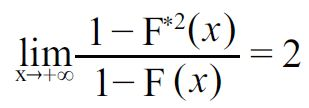
其中F*2
= F' *F
[8]
是X1
+X2
的累积分布，是两个独立副本X的总和。这意味着X1
+X2
之和超过x的概率是任何一个独立值超过x的概率的两倍。因此，每当总和超过x时，对于足够大的x值，总和的值取决于任一个超过x的变量——也就是两个变量的最大值，而另一个值贡献可以忽略不计。
更普遍地来看，同样的n个变量的总和受这些变量中最大值的影响。形式上，以下两个属性等价于次指数条件，参见切斯亚科夫（1964）和恩布雷希特（1979）的相关论文。对于给定的n≥2，设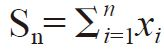
，Mn
=max1 ≤ i ≤ n
xi
a）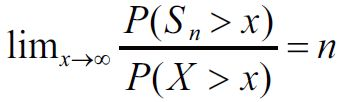
b）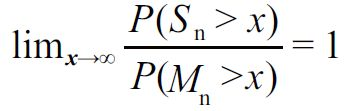
因此，总和Sn
与最大样本Mn
的大小相同，这是另一种证明尾端扮演最重要角色的方法。
直观地说，尾部事件在次指数分布中应该比在与大尾部事件无关的指数分布中下降得更缓慢。事实上，我们可以证明，对于大于零的所有值ε来说，次指数分布没有指数矩：
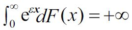
然而，反过来是错的，因为分布可以没有指数矩，但却不满足次指数条件。
我们注意到，如果我们选择将偏差表示为变量x的负值，用x→–∞代替x→+∞，则极值负值的对称性也会保持相同的结果。对于双尾变量，我们可以分别考虑正面和负面的域。
[1]
交易员只有在为委托人取得高于这个门槛的收益率时才能获得业绩提成。——译者注
[2]
停时（stopping time）是一个时间的随机变量，指未来不确定的一个触发点，比如，上证指数在今日之后第一次触及10000点的时刻是一个停时（当这个时刻来临之时，我们能够确切知道事件已经发生），但是上证指数在今日之后最后一次触及10000点的时刻，则不是一个停时，因为即便这个时刻来了，也无法确定这是最后一次。——译者注
[3]
读者可以将其视作对P（K,M）求期望值。——译者注
[4]
该表达式的意思是两者取其较小值。——译者注
[5]
读者可以将该表达式看成到达停时之前的天数。——译者注
[6]
当业绩达到指标门槛时，代理人可以提成；当出现损失时，对于代理人来说最坏的情况就是离职，回报为零，并不承担委托人的损失。——译者注
[7]
详见1997年作者和P.Jorion的辩论，塔勒布（2007）。
附录3
词汇表
寻租：
企图在没有进行经营活动的情况下利用保护政策和“特殊”权力来获得收入并且维持垄断利润。胖子托尼把这种行为看作被迫给黑手党付保护费却无法从中获得任何经济利益。
显示偏好：
这一理论是由美国经济学家保罗·萨缪尔森提出的（最开始是以公共物品的购买选择为背景提出的）。这一理论指出代理人无法解释他们行为背后的原因：行为是可以观察的，想法却不可以，因此想法无法作为严谨的科学研究的依据。在经济学中，实验需要真实存在的数据。胖子托尼总结道：“空谈无用。”
监管套利：
代理人钻规章制度的空子导致其偏离原始的意图。一些官僚和生意人的收入可能与保护性的规章制度以及特许权有关，因此他们维护这些制度。值得我们注意的是制定规章制度比修正或取消它们容易得多。
唯科学主义：
该主义认为科学只是看起来像科学。但是这一主义太强调表面的东西而忽视了其值得深思的内部逻辑。这一主义盛行于用数量指标衡量贡献大小的行政官员之中，同样也盛行于只爱空谈而不参与实践的人之中，比如记者和学校老师。
天真的理性主义：
该主义认为我们能够保证世界的正常运行并且不存在我们无法理解的事物。
常春藤名校毕业生：
傻瓜。
伪理性主义：
（1）只集中关注某一信仰的理性而不关注其影响；
（2）使用糟糕的概率模型天真地批判人们在进行某种活动时的非理性。
代理问题：
代理人与委托人之间的利益不一致时出现的问题，比如汽车销售员和你（可能的买主）之间的关系，或者医生和病人之间的关系。
罗伯特·鲁宾的勾当：
在非对称的领域内获取利益，通常收益是很明显的（并且还会获得一些补偿），然而损害却很少见（由于没有“风险共担”也不会受到惩罚）。这一模式可以应用到政治学等任何领域，在这些领域内往往惩罚很小，受害者也不是真实存在的而是分散的（比如纳税人和股票持有人）。
干涉主义者：
干涉主义者往往认为自己了解所有情况反而造成脆弱。干涉主义者自身不承担风险，往往缺少幽默感。
绿色木材谬误：
也就是人们将一种必要知识（木材的绿色）的来源错当成另一种来源，后一种来源对外行人来说更不可测、更难捉摸、更难阐述。理论家如何错误地估计在某一特定业务中我们应知的重要性？更通俗地说，许多我们称作“相关知识”的事物其实并不那么相关。
教鸟儿如何飞行效应：
颠倒了阅读学术知识→实践与实习→创造财富的箭头方向，这一效应认为技术更依赖于学术知识而不是实践。详情见《反脆弱》一书。
林迪效应：
不同于自然消亡的事物（比如人类、猫、狗、经济理论、西红柿），像技术、思想、公司这样不会自然消亡的事物生命每增加一天，意味着更长的预期剩余寿命。因此一本有100年历史的经典图书只要保证正常的销量，很有可能还有一百年的寿命。
遍历性：
在本书的语境下，遍历性是指对一群人在同一时间的统计特性（尤其是期望）和一个人在其全部时间的统计特性一致。集合概率接近于时间概率。如果没有遍历性，那么观测到的统计特性就不能应用于某一个交易策略，如果应用的话，就会触发“爆仓”风险（系统内存在着“吸收壁”或“爆仓点”）。换句话说，统计特性不可持续。
平均斯坦：
一个事物的过程主要由平均值主导，很少有极端成功或失败的例子（比如牙医的收入）。个体不会对整体造成很大的影响，它也被称作“薄尾”风险，也是高斯分布的一种。
极端斯坦：
在一个随机过程中个体会对总体造成巨大的影响（比如作家的收入），它也被称作“胖尾”风险。它包含分型、幂律等分布类型。
少数派主导规则：
指一种非对称现象，即总体行为受到少数人的偏好的支配。吸烟者不可以待在非吸烟区但是不吸烟的人可以待在吸烟区，因此不吸烟的人占据优势，这并不是因为他们是大多数，只是因为他们拥有非对称性优势。语言、伦理以及宗教的传播都与少数派主导规则有关。
证伪：
神学和哲学用证伪的方法定义一个事物不是什么，被认为比肯定的定义更不易形成谬误。在实际操作中，告诫人们要避免什么，不做什么，这个方法在事物有倍增效应和副作用的情况下特别有效。在医学领域，让一个人戒烟比对他进行治疗或者给他开药带来的负面效果少得多。
适用性规模：
当事物的规模发生变化时，它们的性质通常也会突然改变：城市不同于大型的州，大陆也不同于岛屿。当一个群体人数发生变化时，其集体性的行为也会变化。这一观点支持地方主义，反对不受约束的全球主义。
单一思想文化：
记者、专业学者，以及其他奴隶在特定事务中不承担风险，不参与“风险共担”，由此形成了一个易被人操控且抵抗实证的“好人”团体。如果你和他们的意见相左，你就会被不公正地贴上“普京主义者”“婴儿屠夫”“种族主义者”等标签（骗子总是耸人听闻地拿孩子说事儿）。这就像岛屿越大，其生态多样性反而越低的道理一样（详见《黑天鹅》一书）。
美德商品化：
当美德作为一种市场营销策略时，它就贬值了。在古代，美德是私有的，与当代社会中提倡的“环保运动”式的美德不同。兜售美德的商人通常都是伪君子，而且不包含勇气、牺牲精神以及不参加“风险共担”的美德根本就不是美德。中世纪时的圣职买卖允许人们用钱购买教会职务或赎罪券，通过这样一种行为来洗清罪责，兜售美德与这种行为相似。
金律（对称性）：
以你想被对待的方式去对待他人。
银律（用否定其对立面的方式体现金律）：
如果你不希望别人这样对你，那你也不要这样对别人（己所不欲勿施于人）。要注意银律和金律的区别，银律可以阻止爱管闲事的人来操控你的生活。
善意原则：
注释
这里的注释是按主题而不是按顺序排列的。
伦理：
塔勒布和桑迪斯（2013），另见内格尔（1970），罗斯（1939）；行动哲学，参见桑迪斯（2010，2012）。政治理论：汤普森（1983）。不确定性和伦理：奥尔瑟姆（1984），威廉姆斯（1993），齐默尔曼（2008）。将军：布莱克本（2001），布罗德（1930）。从不同的侧面爬山：帕菲特（2011）。伦理和知识：普里查德（2002），雷谢尔（2009）。
虽然我倾向于美德伦理学，为了美德而美德，但是出于一些现实的原因，这本书的共同作者康斯坦丁·桑迪斯和我发现，“风险共担”落在三个主要伦理系统的交会点：康德的绝对命令，结果主义和古典美德。这是受德里克·帕菲特《论重要之事》（2011）的影响，他认为它们（所有的美德）不过是殊途同归罢了。
经济学中的委托理和道德风险：
罗斯（1973），普瑞特等人（1985），施蒂格利茨代（1988），梯若尔（1988），霍姆斯特姆（1979），格罗斯曼和哈特（1983）。
不确定下做出的伊斯兰决定：
法里德·卡尔卡比未发表的手稿，卡尔卡比（2017），沃德（2010）。
以眼还眼并不是字面的意思：
阿拉姆语中的一个辩论内容，即当一个小人物伤害大人物时，二者是不对等的，这句话被翻译错了。gadol指的是“英雄”而不是“大”（big），qatan是“弱小的”而不是“小”（small）。
合理性：
宾默尔（2008），也出自2017年吉仁泽和比勒费尔德纪念文集中作者同肯·宾默尔和吉仁泽的私人交流。
基督徒和异教徒：
威尔肯斯（2003），福克斯（2006），等等。请参阅里德和塔勒布（2014）。
朱利安：
阿米亚努斯·马塞林，历史类，卷1和卷2，洛布古典丛书，哈佛大学出版社。另见唐尼（1939，1959）。
奥斯特朗姆：
奥斯特朗姆（1986，2015）。另见与彼得·柏特克和罗塞尔·罗伯茨在Econtalk节目上的讨论，econtalk.org/archives/2009/11/boettke_on_elin.html。
非对称性和可扩展性：
《反脆弱》。
自私基因：
威尔逊和威尔逊（2007），诺瓦克等（2010）。平克关于诺瓦克以及威尔逊等有关“自私基因”的辩论的声明、忽略了事物可适用性规模：edge.org/conversation/steven_pinker-the-false-allure-ofgroup-selection.亚尼尔·班杨和左也马（2006）。
扎紧篱笆才有好邻居：
卢瑟福等（2014）。
牺牲：
哈伯塔（1980）。
动态不平等：
拉蒙特（2009），兰克和赫什（2014，1015）。另见马克·兰克，《从赤贫到巨富再回到赤贫》，《纽约时报》，2014年4月18日。
遍历性和赌博：
彼得斯和盖尔曼（2016），彼得斯（2011）。
不平等性：
皮凯蒂（2015）。“强占”观点已经在皮凯蒂（1995）中提及。
对不平等性的误判：
塔勒布和杜阿迪（2015），佛塔瑞等（2017）。
与胖尾不相容的平等性的税收：
这种税收意味着惩罚财富创造者，非常流行但很荒谬，注定是自杀式的。因为这会极大抑制收入的上涨，傻瓜才会做一个以小概率投注的风险承担者，即成功的概率为20（税后）而不是100，并且以后所有的积蓄逐步以财产税的方式支出。这样最佳策略就是成为一名学者或法国式公务员，即反财富创造者。先暂时看一个有代表性的问题：将收益不稳定的人，比如说一名每20年赚450万美元的企业家，和在同样时间内总收入相同的经济学教授相比较（其22.5万美元的年收入是纳税人的钱）。同样收入的企业家最后要交75%的税，余下的部分还要交财产税，而寻租的终身任职的学者们，对财富形成没有做出贡献，却只要交30%的税。
凯利赌博：
索普（2006），麦克莱恩等（2011）。
满意度：
认为按照一些公理，人们必然会毫无约束“最大化”收入的想法是错误的（经济学家在他们的“最优化”思想中幼稚地使用了数学）。获得满意的收入，最大限度发挥自己的工作适应能力或将看到自己劳动成果时可能会产生的那种骄傲情感最大化，这些都与“满足”人们对财富的最低要求相符合。或者不要有意地“最大化”任何事情，只要符合人性就可以。
暴力：
平克（2011），西里洛和塔勒布（2016，2018）。
重整化：
格莱姆（2008，2012）。宾尼等（1992）书中的重整化小组。
浓血：
马格利特（2002）。
有限理性：
吉仁泽和布莱顿（2009），吉仁泽（2010）。
林迪效应：
伊丽莎（2017），曼德尔布罗特（1982，1997）；另见《反脆弱》。
哥林多的庇护所：
《早期希腊哲学：爱奥尼亚早期思想家》，第一部分。
基因和少数派主导：
拉扎里迪斯（2017），扎罗伊，私人讨论。语言比基因传播得快。北欧人听到下面这些一定会很吃惊：（1）古代和现代希腊人实际上可能是同一民族；（2）和“闪米特语系”的古代人相比，现在的闪米特人如腓尼基人在基因上和印欧语系的古代人联系得更紧密，虽然他们的语言相去甚远。
参考书目
奥尔瑟姆，J.E.J.，1984年.《风险伦理学》，《亚里士多德社会学报·新系列》84（1983—1984）：15-29.
阿米亚努斯·马塞林.《历史学》卷一、卷二，勒布古典图书馆·哈佛大学出版社.
巴维里斯，N.，2013年.《尾部事件心理学：进展与挑战》，《美国经济评论》103（3）：611-616.
亚尼尔·班杨和左也马，2006年.《基因进化论的形式化》，《复杂系统中的统一主题》，215-222.柏林，海德堡：施普林格出版社.
宾默尔，K.，2008年.《理性决策》.新泽西州普林斯顿大学：普林斯顿大学出版社.
宾尼，詹姆斯·J.，奈杰尔·J.瑞克，安德鲁·J.费希尔和马克·纽曼，1992年.《关键现象理论：重整化组介绍》.牛津：牛津大学出版社.
布莱克本，S.，2001年.《伦理学简介》.牛津：牛津大学出版社.
布罗德，C.D.，1930年.《五种伦理学理论》.伦敦：Kegan Paul出版社.
奇斯佳科夫，V.，1964年.《一个关于独立正随机变量和的定理及其在分支随机过程中的应用》，《概率及其应用理论》9（4）：640-648.
帕斯夸莱·西里洛和纳西姆·尼古拉斯·塔勒布，2018年.《暴力冲突的衰落：数据的真正含义？》，诺贝尔基金会.
——，2016年.《暴力冲突的统计特性及尾部风险》，《物理学报A：统计力学及其应用》452：29-45.
克莱默，H.，1930年.《安条克的背叛者——朱利安》，《教会的历史》8（4）：303-315.
——，1959年.《朱利安和查士丁尼：信仰与文化的统一》，《教会的历史》28（4）：339-349.
埃利亚扎，伊多，2017年.《林迪定律》，《物理学报A：统计力学及其应用》.
保罗·恩布雷希特等，1997年.《极端事件建模：保险和金融》.柏林，海德堡：施普林格出版社.
保罗·恩布雷希特，C.M.戈尔迪和N.韦拉维尔贝克，1979年.《次指数与无限可分性》，《概率理论及相关领域》49（3）：335-347.
方塔纳里，安德里亚，纳西姆·塔勒布与帕斯夸莱·西里洛，2017年.《无限方差下的基尼估算》.
福克斯，罗宾·莱恩，2006年.《异教徒和基督徒：从公元2世纪到君士坦丁改宗期间的地中海世界》.英国企鹅出版集团.
格莱姆，瑟奇，2008年.《社会物理学：格莱姆模型评论》，《国际现代物理学杂志C》19（03）：409-440.
——，2012年.《社会物理学：心理政治现象的物理学建模》.柏林，海德堡：施普林格出版社.
杰曼，D.,H.杰曼和纳西姆·尼古拉斯·塔勒布，2015年.《尾部风险限制和最大熵》，《熵》17（6）：3724.网址：http://www.mdpi.com/1099-4300/17/6/3724.
吉仁泽，G.，2010年.《道德满足：道德行为再思考与有限理性》，《认知科学专题》2：528-554.
吉仁泽，G.，H.布莱顿，2009年.《人类的智慧：偏见头脑的推论优势》，《认知科学专题》1（1）：107-143.
格罗斯曼，S.J.和O.D.哈特，1983年.《委托代理人问题分析》，《计量经济学》，7-45.
哈伯塔尔，摩西，2012年.《论牺牲》.普利斯顿大学，新泽西州：普林斯顿大学出版社.
霍姆斯特姆，B.，1979年.《道德危害与可观察性》，《贝尔学报经济学版》，74-91.
《伊索克拉底》，1980年，三卷.洛布古典图书馆，哈佛大学出版社.
法里德·卡尔卡比，2017年.《伊斯兰金融学入门》，未发表手稿.
凯利，J.L.，1956年.《信息率新解》，《IRE信息理论学报》2（3）：185-189.
拉蒙特，米歇尔，2009年.《工人的尊严：道德与种族，阶级和移民的界限》.剑桥，马萨诸塞州：哈佛大学出版社.
拉扎里迪斯，约瑟夫等，2017年.《米诺斯人和迈锡尼人的基因起源》，《自然548》7666号：214-218.
麦克莱恩，伦纳德C.，爱德华O.索普和威廉T.津巴，2011年.《凯利资本增长投资标准：理论与实践》，卷3，《世界科学》.
曼德尔布罗特，伯努瓦，1982年.《自然分形几何》.弗里曼公司.
——，1997年.《金融分形和规模：不连续性，集中性与风险》.纽约：施普林格出版社.
曼德尔布罗特，伯努瓦和纳西姆·尼古拉斯·塔勒布，2010年.《随机跳跃与不随机行走》，理查德·赫林版《已知，未知和不可知》.普林斯顿，新泽西州：普林斯顿大学出版社.
玛格丽特，艾瑞莎，2002年.《记忆的伦理》.剑桥大学，马萨诸塞州：哈佛大学出版社.
纳格尔，T.，1970年.《利他主义的可能性》.普林斯顿，新泽西州：普林斯顿大学出版社.
诺瓦克，马丁A.，科里纳E.泰妮塔和爱德华O.威尔逊，2010年.《社会性的演变》，《自然466》7310号：1057-1062.
埃莉诺·奥斯特朗姆，1986年.《机构研究议程》，《公共选择》48（1）：3-25.
——，2015年.《下议院管理》.剑桥大学出版社.
帕菲特，德里克，2011年.《何为重要》，卷1-3.牛津：牛津大学出版社.
佩里安德的科林斯，《早期希腊哲学：早期爱奥尼亚人思想家，第1部分》.勒布古典图书馆，哈佛大学出版社.
奥利·彼得斯，2011年.《圣彼得堡悖论的时间决议》，《伦敦皇家学会哲学学报A：数学，物理和工程科学》369（1956）：4913-4931.
奥利·彼得斯和默里·盖尔曼，2016年.《赌博之动力学评估》，《混沌：费线性科学的跨学科期刊》26（2）：023103.网址：scitation.aip.org/content/aip/journal/ chaos/26/2/10.1063/1.4940236.
托马斯·皮凯蒂，1995年.《社会流动与再分配政治》，《经济学季刊》110（3）：551-584.
——，2015年.《二十一世纪资本论》.剑桥，马萨诸塞州：哈佛大学出版社.
斯蒂芬·平克，2011年.《更美好的人性：暴力衰落的原因》.企鹅出版集团.
皮特曼，E.，1980年.《次指数分布函数》，《澳大利亚数学学会杂志》，A系列，29（3）：337-347.
皮特曼，J.W.，1975年.《一维布朗运动与三维贝塞尔流程》，《概率论前沿》，511-526.
普拉特，J.W.，W.R.泽克豪泽和K.J.阿罗，1985年.《委托人与代理人：商业结构》.哈佛商业出版社.
皮沙尔特，H.A.，2002年.《责任与无知的事实》，《道德论述》，J.麦克亚当版.牛津：牛津大学出版社.
兰克，马克·罗伯特和托马斯·黑舍尔，2015年.《生命中经历相对贫穷的可能性》，《公共科学图书馆一》10（7）.
兰克，马克·罗伯特，托马斯·黑舍尔与柯克·A.福斯特，2014年.《追逐美国梦：财富的本源》.牛津：牛津大学出版社.
里德，R.和纳西姆·尼古拉斯·塔勒布，2014年.《宗教，启发式和代际风险管理》，《经济学期刊观察》11（2）：219-226.
雷切尔，N.，2009年.《无知：知识缺陷的广泛影响》.匹兹堡：匹兹堡大学出版社.
罗斯，大卫，1939年.《道德基础》.牛津：克拉伦登出版社.
——，1930年.《正确与善良（修订版，2002年版）》.P.斯特拉顿湖，牛津：克拉伦登出版社.
罗斯，S.A.，1973年.《代理的经济学理论：主要议题》，《美国经济评论》63（2）：134-139.
卢瑟福，亚历克斯，戴恩·哈蒙，贾斯汀·韦费尔，亚历山大·S.加德穆雷，什洛米亚·班杨，安德里亚斯·格罗斯，拉蒙·舒尔维布吕内特和亚尼尔·班杨.《好篱笆：边界对于和平共处的重要性》，《公共科学图书馆一》9（5）：e95660.
康斯坦丁·桑迪斯，2012年.《我们的作为及其理由》.麦克米兰出版公司.
康斯坦丁·桑迪斯和纳西姆·尼古拉斯·塔勒布，2015年.《领导伦理学与非对称性》，《领导力与道德》，布克斯和莱文，233.伦敦：布卢姆斯伯里.
施蒂格利兹，J.E.，1988年.《委托人与代理人》，《新帕尔格雷夫经济学字典》，卷3.伦敦：麦克米兰.
纳西姆·尼古拉斯·塔勒布，2007年.《黑天鹅与统计学领域》，《美国统计学家》61（3）：198-200.
纳西姆·尼古拉斯·塔勒布和帕斯夸莱·西里洛，2015年.《显然无限平均现象的渐变时刻》，《arXiv预印本arxiv：1510.06731》.
纳西姆·尼古拉斯·塔勒布和拉尔夫·杜阿迪，2015年.《超可加性与分位数贡献的估算偏差》，《物理学刊A：统计力学及其应用》429：252-260.
纳西姆·尼古拉斯·塔勒布和康斯坦丁·桑迪斯，2013年.《风险共担对尾部事件预防的启发》，《行为经济学评论》1（1）.
马勒，J.L.，1975年.《亚类指数分布》，《概率年鉴》卷三，第6号，1 000-1 011.
汤普森，D.F.，1983年.《政府顾问赋责》，《伦理学》93（3）：5466-0.
索普，爱德华O.，2006年.《21点（牌戏），体育博彩与股市中的凯利标准》，《资产负债管理手册》1：385-428.
蒂罗尔，J.，1988年.《产业组织理论》.剑桥，马萨诸塞州：麻省理工学院出版社.
沃德，I.，2010年.《全球经济中的伊斯兰金融》.爱丁堡大学出版社.
威尔肯，R.L.，2003年.《作为罗马人的基督徒看到了他们》.纽黑文市，康涅狄格州：耶鲁大学出版社.
威廉姆斯，1993年.《羞耻和必要性》.剑桥：剑桥大学出版社.
威尔逊，D.S.和O.E.威尔逊，2007年.《社会生物学理论基础再思考》，《生物学季刊》82（4）：327-348.
齐默尔曼，M.J.，2008年.《与不确定性相伴：无知的道德意义》.剑桥：剑桥大学出版社.
图书在版编目（CIP）数据
非对称风险 / （美）纳西姆·尼古拉斯·塔勒布著；周洛华译.-- 北京：中信出版社，2019.1
书名原文：SKIN IN THE GAME
ISBN 978-7-5086-9847-2
I.①非… II.①纳… ②周… III.①经济学-通俗读物 IV.① F0-49
中国版本图书馆CIP数据核字（2018）第269401号
SKIN IN THE GAME by Nassim Nicholas Taleb
Copyright ©2018 by Nassim Nicholas Taleb
Simplified Chinese translation rights © 2019 by CITIC Press Corporation.
All rights reserved.
非对称风险
著者：[美]纳西姆·尼古拉斯·塔勒布
译者：周洛华
出版发行：中信出版集团股份有限公司
（北京市朝阳区惠新东街甲4号富盛大厦2座邮编100029）
字数：279千字
版次：2019年1月第1版
京权图字：01–2018–7219
广告经营许可证：京朝工商广字第8087号
书号：ISBN 978-7-5086-9847-2
版权所有·侵权必究
反脆弱
——从无序中受益
[美] 纳西姆·尼古拉斯·塔勒布 著
雨珂 译
中信出版社
章节概要与阅读导图
第一卷 反脆弱性：介绍
第1章
解释为什么我们在课堂上会忽略“反脆弱性”一词，脆弱性–强韧性–反脆弱性就好比达摩克利斯–凤凰–九头蛇怪。领域依赖性。
第2章
我们在哪里发现了过度补偿的问题。除经济学领域之外，对某事的痴迷是最具反脆弱性的。
第3章
有机体和机械体之间的区别。观光化以及将不确定性从生活中清除出去的企图。
第4章
整体的反脆弱性往往取决于各组成部分的脆弱性。为什么死亡对生命来说是必要的呢？错误会使集体受益。为什么我们需要冒险者。谈谈现代化迷失的要点。向创业者和冒险者致敬。
第二卷 现代化与对反脆弱性的否定
普罗克拉斯提斯之床。
第5章
从两兄弟的状况看不同种类的随机性。瑞士何以不受从上而下的控制。平均斯坦与极端斯坦之间的区别。城邦制国家、由下至上的政治体系，以及市政噪声的稳定效用。
第6章
喜欢随机性的系统。解释了为稳定有机体和复杂的系统（政治、经济等）而进行过度干预所产生的影响。唯知识论的缺陷。美国的外交政策与伪稳定。
第7章
概述天真的干预和医源性损伤，现代化的产物中最容易被忽视的一个。噪声和信号，以及对噪声的过度干预。
第8章
预测是现代化的产物。
第三卷 非预测性的世界观
第9章
胖子托尼对脆弱性有敏锐的嗅觉，尼罗的长时间的午餐，揩脆弱推手的油水。
第10章
特法特教授拒绝服用他自己开的药，我们以塞内加和斯多葛学派为切入点，解释为什么一切反脆弱性事物所拥有的有利因素大于不利因素，因此总是能从波动性、错误和压力——即基本不对称性——中受益。
第11章
什么可以混合，什么不可以混合。生活中的杠铃策略有助于任何事物从脆弱转变为反脆弱。
第四卷 可选择性、技术与反脆弱性的智慧
偏爱秩序的教育与偏爱无序的创新之间的矛盾。
第12章
泰勒斯与亚里士多德，可选择性的概念，它允许你不知道发生了什么事情——因为概念混淆，它一直被人误解。亚里士多德如何忽略了这一点。私生活中的可选择性。在什么条件下自由探索优于设计制作。理性的漫游者。
第13章
增长背后的不对称回报，除此之外，别无其他。苏联–哈佛派谬见，或教鸟儿如何飞行的效应。副现象。
第14章
绿色木材谬误。认识论和试错之间的矛盾，以及在整个历史中的作用。知识是否能创造财富，如果是，那么是哪些知识？当两件事情不是一回事时。
第15章
改写技术的历史。在科学领域，历史是如何被失败者改写的，我是如何在自己的工作中看到这一点的，以及我们如何推而广之。生物学知识是否伤害了医疗技术的发展？运气的隐性作用。什么成就了一位优秀的创业家？
第16章
如何对付足球妈妈？漫游者的教育。
第17章
胖子托尼和苏格拉底的辩论。为什么我们不能做我们无法解释的事，为什么我们要解释我们所做的事情？酒神式思维。愚蠢的人和不愚蠢的人的处世之道。
第五卷 非线性与非线性
第18章
凸性、凹性和凸性效应。为什么规模会带来脆弱性。
第19章
炼金石。深入了解凸性。房利美是怎么破产的。非线性。识别脆弱性和反脆弱性的启发法。凸性偏见、詹森不等式，以及它们对无知的影响。
第六卷 否定法
第20章
新事物狂热症。通过否定法展望未来。林迪效应，旧事物超越新事物的预期剩余寿命与旧事物本身已存活的寿命成正比。恩培多克勒的瓷砖。为什么非理性认知比理性认知更具优势。
第21章
医疗和不对称性。医疗问题的决策规则：为什么病得很重的人有凸性回报，而健康的人有凹性效应的风险。
第22章
减法医疗。介绍个体与环境的随机性之间的匹配性。为什么我不想永生。
第七卷 脆弱性和反脆弱性的伦理
第23章
代理问题是脆弱性的转移。切身利益。信守承诺，或言行一致。罗伯特·鲁宾问题、约瑟夫·斯蒂格利茨问题和阿兰·布林德问题，都关乎代理问题与过滤性选择问题。
第24章
伦理倒置。群体会犯错误，而个人可能知道真相。人们是如何陷入一些观念中而不可自拔的，以及如何让他们获得自由。
第25章
结语
后记
尼罗动身去黎凡特观摩阿多尼斯复活的庆典仪式时，发生了什么事？
前言
如何爱上风
风会熄灭蜡烛，却能使火越烧越旺。
对随机性、不确定性和混沌也是一样：你要利用它们，而不是躲避它们。你要成为火，渴望得到风的吹拂。这总结了我对随机性和不确定性的明确态度。
我们不只是希望从不确定性中存活下来，或仅仅是战胜不确定性。除了从不确定性中存活下来，我们更希望像罗马斯多葛学派的某一分支，拥有最后的决定权。我们的使命是驯化、主宰，甚至征服那些看不见的、不透明的和难以解释的事物。
那么，该怎么做呢？
反脆弱性
有些事情能从冲击中受益，当暴露在波动性、随机性、混乱和压力、风险和不确定性下时，它们反而能茁壮成长和壮大。不过，尽管这一现象无处不在，我们还是没有一个词能够用来形容脆弱性的对立面。所以，不妨叫它反脆弱性（antifragile）吧。
反脆弱性超越了复原力或强韧性。复原力能让事物抵抗冲击，保持原状；反脆弱性则让事物变得更好。它具有任何与时俱进事物的特质：进化、文化、观念、革命、政治制度、技术创新、文化和经济的成功、企业的生存、美食食谱（比如，鸡汤或加入一滴干邑葡萄酒的鞑靼牛排），还有城市、文化、法律制度的兴起、赤道雨林的生长和细菌耐药性的增长等。反脆弱性决定了有生命的有机体或复杂体（比如人体）与无生命的机械体（比如办公桌上的订书机）之间的区别。
反脆弱性偏好随机性和不确定性，这意味着——这一点非常关键——它也偏好错误，准确地说是某一类错误。反脆弱性有一个奇特的属性，它能帮助我们应对未知的事情，解决我们不了解的问题，而且非常有效。让我说得更直白些：由于有了反脆弱性，我们做的要比我们想象的更好。我宁愿做愚钝但具有反脆弱性的人，也不做极其聪明但脆弱的人。
我们很容易看到周围有一些偏好压力和波动性的事物，如经济系统、你的身体、你的营养（糖尿病和阿尔茨海默病似乎在很大程度上来自于饮食缺乏随机性，缺乏偶尔挨饿带来的压力）、你的心灵，甚至还有极具反脆弱性的金融合约——它们本质上就是要从市场的波动中获益。
反脆弱性使我们更好地理解了脆弱性。正如不减少疾病我们就无法改善健康，不减少损失我们就无法增加财富，反脆弱性和脆弱性是同一波谱上的不同波段。
非预测性
掌握反脆弱性的机制后，我们就可以在充满不确定性的商业、政治、医学和整个生活中（未知因素占主导地位的地方，随机性、不可预测性、不透明性或不完全理解性占主导的情况下）做出非预测性决策，建立一个系统和广泛的指导。
弄清楚什么是脆弱的，比预测对其造成伤害的某个事件是否会发生要容易得多，脆弱性是可以衡量的，但风险却是无法衡量的（在赌场外，或者在自称“风险管理专家”的人的头脑之外）。这为我所说的“黑天鹅”问题提供了一个解决方案，因为我们原本就不可能计算出重要的罕见事件的风险，也无法预测其何时会发生。但事物对波动性所致危害的敏感性是可观察的，这比对造成危害的事件进行预测更容易。因此，我们建议颠覆我们目前的预测、预言和风险管理方法。
在每一个领域或应用方面，我们都提出了通过降低脆弱性或利用反脆弱性，从脆弱走向反脆弱性的规则。而且，我们几乎总能使用一个简单的不对称测试来检测反脆弱性和脆弱性：从随机事件（或一定冲击）中获得的有利结果大于不利结果的就是反脆弱的，反之则是脆弱的。
剥夺反脆弱性
最重要的是，如果反脆弱性是所有幸存下来的自然（和复杂）系统的特征，那么剥夺这些系统的波动性、随机性和压力源反而会伤害它们。它们将会变弱、死亡或崩溃。我们一直在通过压制随机性和波动性来削弱经济、我们的健康、政治生活、教育，甚至几乎所有的东西…… 正如在床上躺一个月（最好是手上有一本未删节版的《战争与和平》或者《黑道家族》全部86集的碟片）会导致肌肉萎缩，复杂系统在被剥夺压力源的情况下会被削弱，甚至被扼杀。现代的结构化社会大多正以自上而下的政策和机制（被称为“苏联–哈佛派谬见”）伤害着我们：它们的所作所为实际上侵犯了系统的反脆弱性。
这是现代化的悲剧，正如极为焦虑、过度保护子女的父母。那些试图帮助我们的人往往会对我们造成最大的伤害。
如果说一切自上而下的东西都会使我们变得脆弱，并且阻碍反脆弱性和成长，那么一切自下而上的事物在适量的压力和混乱下反而能够蓬勃发展。发现（或创新，或技术进步）的过程本身就取决于能增进反脆弱性的自由探索和积极的冒险，而非正规的教育。
以牺牲他人的利益为代价获利
社会最大的脆弱性制造者和最大的危机制造者，正是那些置身事外，不承担后果的人。一些人以牺牲他人利益为代价实现反脆弱性，也就是说，他们从波动性、变化和混乱中实现有利结果（或获得收益），而将他人暴露于损失或伤害的不利因素下。这种以别人的脆弱为代价而取得自己的反脆弱性的行为是很隐蔽的——由于苏联–哈佛派知识分子圈无视反脆弱性，因而此类不对称性（到目前为止）很少有人能够识别，更别提传授了。
此外，我们发现在2008年金融危机期间，由于日益复杂的现代制度和政治事务，这些“危及他人的重大风险”很容易被隐瞒。过去，甘冒风险的人才会位高权重，他们必须为自己的不当行为承受损失，而英雄则是那些为了他人的利益承受损失的人，如今，情况却完全相反。我们正目睹一群反面“英雄”人物的涌现，他们多为政府官员、银行家，或者只知道借他人名气自抬身价，参加达沃斯会议的成员，以及权力过大的学者。这群人不会承受真正的损失，也不受问责制的约束。他们将整个系统玩弄于股掌之上，而公民却要为其埋单。
历史上从未有过如此多的非冒险者，也就是施加重大控制力而个人却不承担风险的人。
他们忘记了一条最主要的道德法则：你不应该为了获得反脆弱性，而牺牲别人的脆弱。
“黑天鹅”问题的解决方案
我想快乐地生活在一个我不了解的世界里。
“黑天鹅”事件是造成广泛、严重后果的，不可预知的、不定期发生的大规模事件。对某些观察者来说，他完全没有预料到它们的发生，这种人通常被称为“火鸡”，因为他们对这些事件完全没有预期，并会受到这些事件的伤害。我已经说过，历史其实大部分源于“黑天鹅”事件，但我们关心的却是如何微调我们对普通事件的了解，因此我们不断地开发模型、理论或表述方式，可是，这些东西不可能跟踪“黑天鹅”事件，或者衡量这些冲击的发生概率。
“黑天鹅”事件绑架了我们的思维，让我们感到自己“差不多”或“几乎”预测到了它们，因为它们都是可以进行回溯性解释的。由于存在可预测性错觉，我们没有意识到这些“黑天鹅”事件对生活的影响。现实生活远比我们记忆中的生活更加错综复杂——我们的头脑倾向于将历史以更平稳和更线性的状态呈现出来，这导致我们低估了随机性。一旦我们看到随机事件时，就会心生畏惧并反应过度。在逃避这种恐惧以及对秩序的渴求中，一些人类建立的系统往往会打乱事物的隐性逻辑，或者打乱不那么明显的逻辑，结果导致“黑天鹅”事件的发生，而且几乎得不到任何收益。当你寻求秩序，你得到的不过是表面的秩序；而当你拥抱随机性，你却能把握秩序、掌控局面。
复杂系统内部充满着难以察觉的相互依赖关系和非线性反应。“非线性”是指当你把药品的剂量增为两倍，或将工厂的员工数量增为两倍时，所得效果并非初始效果的两倍，而是要么更多，要么更少。在费城待两个星期的愉快指数并不会是待一个星期的两倍——对此我深有体会。把反应绘制成图的话，并不会呈现为一条直线（“线性”），而是一条曲线。在这种环境下，简单的因果关系错位了；通过观察单个部分是很难看清整个局势的走向的。
人造的复杂系统往往会引发失控的连锁反应，它会减少甚至消除可预测性，并导致特大事件。因此，现代世界的技术性知识可能会不断地增加，但矛盾的是，它也会使事情变得更加不可预测。现在，由于人为因素的增加，以及我们逐渐地远离了先祖和自然的模式，加上林林总总的设计复杂性削弱了强韧性，以至于“黑天鹅”的影响在进一步增加。此外，我们成为一种新型疾病的受害者，即新事物狂热症，它使我们建立起面对“黑天鹅”事件时会表现得极其脆弱的系统，却自以为实现了所谓的“进步”。
“黑天鹅”问题有一个恼人方面，实际上也是一个很核心的并在很大程度上被忽略的问题，即罕见事件的发生概率根本是不可计算的。我们对百年一遇洪水的了解远低于5年一遇的洪灾，其模型的误差在涉及小概率事件时会成倍增长。事件越罕见，越难以追踪，我们对其发生频率的了解就越少。然而，事件越罕见，参与预测、建模和在会议上用花哨的演示文件陈述其计算方程式的“科学家”们却显得越有信心。
得益于反脆弱性，大自然是管理罕见事件的最好专家，也是管理“黑天鹅”事件的高手；几十亿年来，它成功地演变进化到今天，而无须任何由常春藤盟校培养出来的，并由某个研究委员会任命的主任给出命令和控制指令。不仅仅是“黑天鹅”事件的解决方案，了解反脆弱性还会使我们从理智上不那么害怕接受一个事实：“黑天鹅”事件对历史、技术、知识以及所有事情的发展都有存在的必要。
仅有强韧性还不足够
大自然不只是“安全”的，它还能积极地进行破坏和更替、选择和重组。每当随机事件发生时，仅仅做到“强韧性”显然还不够好。从长远来看，哪怕只有一点点瑕疵的东西也会被无情的岁月所摧毁，但我们的地球却已经运转了大约40亿年了，很显然，仅仅依靠强韧性是完全无法办到的：你得需要多完美的强韧性才能阻止一个裂缝最终引发整个系统的崩溃。鉴于不可能存在这样完美的强韧性，我们需要一个能够不断利用（而非逃避）随机事件、不可预测的冲击、压力和波动实现自我再生的机制。
从长远来看，反脆弱性往往能从预测误差中受益。如果按照这个理念下结论，那么很多从随机性中受益的事物如今应该主宰世界了，而受随机性伤害的事物就应该消失。嗯，其实现实也确实如此。我们一直有这样的错觉，认为这个世界的运转有赖于规划设计、大学研究和政府机构的资金支持，但是我们有显著的——非常显著——证据表明，这只是一个错觉，我称为“教鸟儿如何飞行”。技术是反脆弱性的结果，是冒险者们通过自由探索和反复试错产生的，但这些籍籍无名的小人物的设计过程却大多不为人所知。许多东西都是由工程师和能工巧匠们发明的，不过，历史却是由学者撰写的；我希望我们能修正对增长、创新以及诸如此类事情的历史诠释。
（某些）事物的可预测性
脆弱性是相当容易衡量的，但风险却很难衡量，尤其是与罕见事件相关的风险。
[1]
我说过我们可以估算甚至衡量脆弱性和反脆弱性，但我们无法计算风险以及冲击和罕见事件的发生概率，无论我们有多么复杂成熟的模型。如今，我们实行的风险管理仅仅是对未来发生事件的研究，只有一些经济学家和其他狂人才会做出有违经验事实的断言，称能够“衡量”这些罕见事件未来的发生概率，当然也会有愚蠢的人听信他们，而无视经验事实与此类断言的历史准确率。但是，脆弱性和反脆弱性是一个物体、一个茶几、一个公司、一个行业、一个国家、一个政治制度当前属性的一部分。我们可以识别和看到脆弱性，甚至在很多情况下还可以测量它，或至少能以较小的误差测量相对脆弱性，而对风险的测量相比较而言（到目前为止）则并不可靠。你没有任何可靠的依据说某个遥远的事件或冲击的发生概率比另一个事件更高 （除非你喜欢自我欺骗），但你能很有信心地说，当某一事件发生时，某一个物体或结构比另一个物体或结构更脆弱。你很容易做出判断，在温度突然变化的情况下，你的祖母要比你更脆弱；发生政变时，一些军事独裁国家要比瑞士更脆弱；危机来临时，银行比其他部门更脆弱；或者发生地震时，一些建造结构不牢固的现代建筑要比古老的查特雷斯大教堂更脆弱。关键的是，你甚至可以预测哪一个人会存活更长的时间。
我无意讨论风险（这涉及预测，又很局限），我主张使用脆弱性的概念，它不带有预测性，并且与风险不同，它是一个有趣的词，可以描述一个与其完全相反的不受局限的概念：反脆弱性。
衡量反脆弱性有一个类似炼金石的方法或一个简化的规则，它使我们能够跨领域（从个人健康到社会建设）地识别反脆弱性。
在实际生活中，我们已在不知不觉中探究反脆弱性了，并有意识地抗拒它，特别是在知性世界中。
脆弱推手
我们的想法是，不要去干扰我们不明白的事情。但是，有些人的主张却恰好相反。脆弱推手属于那些通常西装革履，甚至周五也会如此穿着的人；他们是听到你的笑话后依然冷若冰霜的人；而且由于常常坐在桌前办公，或乘坐飞机、研读报纸，年纪轻轻就会颈椎患疾。他们经常参与一种奇怪的仪式，这种仪式通常被称为“会议”。除了这些特质，他还默认看不到的东西就是不存在的，或者他不理解的东西就是不存在的。从根本上说，他往往将未知的一切误认为不存在。
脆弱推手往往陷入苏联–哈佛派谬见，即（不科学地）高估科学知识的能量。秉持这种谬见的人就是所谓的天真的理性主义者、合理化者，或有时被叫作合理理性主义者，因为他认为事情背后的原因是可以自动显现的。我们不要混淆“合理化”与“理性”这两个概念——它们几乎完全相反。物理学之外，一般在复杂的领域里，事物背后的原因往往很难让我们看清，对脆弱推手来说更是如此。自然事物可不会在用户手册里宣传自己，但这个特性并不构成障碍：出于他们脑中对“科学”的界定，一些脆弱推手会聚在一起写用户手册。
正是因为这些脆弱推手的存在，现代文化对生活中神秘的、难以解释的、尼采称之为“酒神式思维”的事物越来越倾向于选择无视的态度。
或者我们可以把尼采的话翻译成不那么具有诗意的，但仍然非常有见地的布鲁克林白话，也就是本书人物胖子托尼所称的“骗局”。
总之，脆弱推手（医疗、经济、社会规划者）会促使你卷入政策和行动等各类人为的事情之中，这些事情带给你的利益虽小但是看得到，而副作用可能十分严重却看不到。
我们可以看到，医学界的脆弱推手会否认人体自愈的自然能力，而进行过度干预，给病人开可能有严重副作用的药物；政策脆弱推手（干预主义者和社会规划者）把经济误当作需要他们来修理的洗衣机，结果反而把经济搞垮了；心理学脆弱推手用药物治疗孩子，以“提高”他们的智力和情绪；足球妈妈脆弱推手；金融界脆弱推手让人们使用的“风险”模型却破坏了银行系统（然后他们还会再次使用它们）；军事脆弱推手搅乱了复杂系统；预测脆弱推手则让你冒更大的风险。脆弱派的例子可谓数不胜数。
[2]
事实上，政治话语中往往缺乏一个概念。政治家在他们的演讲、目标和承诺中往往着眼于“复原力”、“强韧性”等保守概念，却从未提到过反脆弱性，并且在此过程中遏制了成长和发展的机制。我们发展到今天，并非得益于复原力这样局限性的概念，更非得益于政策制定者，而是得益于一些甘愿冒险、甘愿承担失误后果的人，他们是值得社会去鼓励、保护和尊重的人。
简单的地方更复杂
与人们的观点相反，一个复杂的系统并不需要复杂的管理机制和法规，以及错综复杂的政策。事实上，越简单越好。复杂机制会导致意想不到的连锁反应。由于缺乏透明度，干预会导致不可预测的后果，接着是对结果中“不可预测”的方面致歉，然后再度出手干预来纠正衍生影响，结果又派生出一系列“不可预测”的反应，每一个都比前一个更糟糕。
然而，在现代生活中，简单的做法一直难以实现，因为它有违某些努力寻求复杂化以证明其工作合理性的人所秉持的精神。
少即是多，而且通常更有效。因此，我会制定极少量的技巧、指令和禁令来说明，如何生活在一个我们并不明白的世界里，或者，更确切地说，如何才能不害怕周旋于我们显然不明白的事情之中，以及更主要的是，我们应该以什么样的态度与这些事情共舞。更好的做法是，我们怎么才能正视自己的无知，不因作为人类而感到羞愧，而是感到积极和自豪？但是，这可能需要我们做出一些结构性的改变。
我建议我们制定一个路线图以修正我们的人造系统，简简单单地让一切顺其自然地发展。
但简单并非那么容易达到。史蒂夫·乔布斯就认识到：“你必须努力理顺你的思维，才能使其简单明了。”阿拉伯人用一句话来形容清晰明了的散文：没有清晰的理解，就写不出清晰的文章。
启发法是经验法则的简化，它使事情变得简单而易于实施。其主要的优点是，使用者知道它们是不完美的，只是权宜之计，因此，他们很少被这些启发法的力量愚弄。一旦我们忘记这点，这些经验就会陷我们于危险之中。
关于本书
发现反脆弱性这一想法的过程也是非线性的。
有一天，我突然意识到，脆弱性——事实上它仍缺乏技术性定义——可以被表述为：不喜欢波动性的事物，而不喜欢波动性的事物往往也不喜欢随机性、不确定性、混乱、错误、压力等。想想那些脆弱的东西，比如说，观察一下你家客厅里的物体，如玻璃相框、电视机，更便于拿来说明的例子是橱柜里的瓷器。如果你给它们贴上“脆弱”的标签，那么你一定希望它们能处于一个和平、宁静、有序和可预测的环境中。一个脆弱的物体可能无法从地震或者你好动的侄子的拜访中受益。此外，不喜欢波动性的事物往往也不喜欢压力、伤害、混乱、事故、无序、“不可预测的”后果、不确定性，以及十分重要的时间。
反脆弱性的定义从一定程度上是从脆弱性的明确定义中推导出来的。反脆弱性的事物喜欢波动性等，也喜欢时间。事实上，非线性能够帮我们做出有效的和有用的判断：一切做出非线性反应的事物在某个随机性压力下要么是脆弱的，要么是反脆弱性的。
奇怪的是，虽然脆弱的事物厌恶波动性，厌恶波动性的事物又都很脆弱，但这个明显的特性却被完全排斥在科学和哲学话语之外。完全排斥。研究事物对波动性的敏感度是一个陌生的职业，我成年后的大部分时间，大概有20年左右，都用于此，我在下面会对此作进一步解释。我这个职业的关注点是识别“喜欢波动”或“厌恶波动”的事物，所以我要做的就是将这个理念从我一直从事的金融领域扩展到不同领域——从政治学到医学再到晚餐计划，并应用到在不确定性下进行决策的更广泛情境。
与波动性相关的职业有两类。第一类包括学者、报道作家与评论员，他们研究未来事件，并撰写书籍和论文；第二类是实践者，他们不研究未来事件，但是会尝试了解事物对波动性的反应（但实践者往往忙于实践，无暇著书立说或演讲授课，也不关心方程式、理论或者学术委员会颁发的荣誉会员称号）。这两类人之间的差异非常集中：正如我们所看到的，了解某个事物是否会被波动性所伤害（即是否脆弱）要比预测有害事件的发生（比如会发生超大规模的“黑天鹅”事件）更容易，也更简单。但是，只有实践者（或者做事情的人）才能自然地领会这一点。
（相当快乐的）混乱家庭
让我们来进行一个技术性评论。我们一直在说，脆弱性和反脆弱性意味着从与波动性相关的某些东西中获得潜在的害处或益处。某些东西指的是什么呢？简单地说，就是广义的混乱家庭的成员。
广义的混乱家庭（或群体）：（1）不确定性，（2）变化性，（3）不完美、不完全的知识，（4）机会，（5）混沌，（6）波动，（7）混乱，（8）熵，（9）时间，（10）未知性，（11）随机性，（12）动荡，（13）压力，（14）错误，（15）分散的结果，（16）无知。
不确定性、混乱和未知性是完全等价的：反脆弱性系统（在某种程度上）从上述所有事物中获益，而脆弱的系统则会从中受损，即使一些哲学家会告诉你说：“它们显然不是一回事。”这些哲学家虽然身处不同大学的不同教学楼，但你会发现他们有一个共性，即他们一生中从未承受过真正的风险，或者更糟糕的说法是，他们从未真正生活过。
为什么会提到时间呢？时间在功能上与波动性相类似：时间越长，发生的事件就越多，也更混乱；如果你可以承受有限的伤害，对小错误具有反脆弱性，那么时间会带来最终令你受益的错误或反错误。这就是你的祖母称为经验的东西。脆弱的东西则会被时间所击垮。
只有一本书
这使得这本书成为我的核心工作。我只有一个核心想法，每次都带着它走向下一步。最终这一步——也就是这本书——更像是一个大的跳跃。我与我的“实践自我”（即我作为实践者的灵魂）重新连接起来，这将我从事实践工作与“波动性研究”工作的整段历史，与我对随机性和不确定性的知识和哲学兴趣结合起来，而在此之前这两者各行其道。
我出版的几本书并非针对各类主题所写的独立文章，有起始日和到期日；相反，它们就好像从一个核心概念延伸出的互不重叠的章节，是一系列关注同一类主题的文集，包括不确定性、随机性、概率、混乱，以及如何生活在一个我们不明白的世界；一个充满看不见的元素和属性，以及随机和复杂性的世界里；也就是说，如何在不透明的情况下作决策。这里的规律是，随机抽取一本书（比如说本书）与另一本书（如《随机漫步的傻瓜》），两者之间的距离应该与一本厚书之间各章节间的距离一样。这一规律使得这一系列文集的内容能跨越不同领域（科学、哲学、商业、心理学、文学、自传等）而至于杂乱无章地出现在一本书中。
所以，本书与《黑天鹅》一书的关系是：尽管两本书的出版时间有先后之别（事实上，这本书进一步推进了《黑天鹅》中的概念，自然地得出了既定结论），但本书更像是主体，而《黑天鹅》如同备注——一种理论备注，甚至可能是一份初级的附录。为什么呢？因为《黑天鹅》是为了说服我们看到一种可怕的情况，并努力解决它。而本书的起点是，人们并不需要认识到（1）“黑天鹅”主宰着社会和历史（因为人们通过事后的理性化推断，认为自己能够理解“黑天鹅”）事件；（2）其结果是，我们并不知道发生了什么，特别是在严重的非线性情况下，所以我们可以直接讨论实践问题了。
没有胆量，就没有信念
为符合实践者的精神，本书的写作规则如下：我对我所说的全部负责。
本书的每一句话都是我用自己的职业知识写就的，我只写了我做过的事情，我建议他人承担或规避的风险也是我一直承担或规避的风险。如果我错了，那么首先受到伤害的便是我自己。我在《黑天鹅》中已经对银行体系的脆弱性提出过警告，并打赌它会崩溃（尤其是当我的观点无人理会时）；否则，我会觉得这样写是不道德的。这种个人约束应该用于各个领域，包括医疗、技术创新和生活中的简单事务。这并不意味着一个人的个人经验就足以构成推导出理念结论的充分样本，只是说，一个人的个人经验是其观点的真实性和真诚性的背书。经验是不会受过滤式选择的影响的，而研究工作却会受影响，尤其是所谓的“观察性”研究，因为存在大量的数据，研究者在观察过去的模型会陷入叙述谬误的陷阱。
此外，在写作过程中，如果我不得不在图书馆中搜寻写作主题，并以此作为写作的一部分，那么我觉得这是堕落和不道德的。这条标准可以作为一种筛选方式，并且是唯一的筛选方式。如果我对主题不感兴趣，不足以让我出于自己的好奇心或自己的目的独立进行图书查阅，以前也从没有这样做过，那么我就根本不应该写它。这并不意味着图书馆（实体和虚拟的）是不能接受的，而意味着它们不应该是任何想法的起源。学生付学费在大学里写有关某个主题的论文时，他们必须从图书馆获取知识，作为自我提升的一种练习；一个专业人员则靠写作获得报酬，他写的东西也会被他人认真对待，因此他应该使用一个更有效的筛选方式。只有经过提炼的想法，那些经过长久的时间积淀仍留在我们脑中的想法才是可以接受的，它们也大多来自于现实的想法。
现在是时候重振一个不为人所熟知的哲学概念了，这就是信念承诺，它要求摈弃空头支票，秉持某一个信念，乃至个人愿意为其承担风险。
如果你看到了什么
现代社会已经用法律条文取代了道德，但法律是可以被一个高明的律师玩弄于股掌之中的。
因此，我要揭示某些人是如何进行系统“套利”的，他们更确切地说是转移了脆弱性，这无异于盗取了反脆弱性。我会对此类人直言抨击。（对于诗人和画家，我们在此不作考虑，这种豁免是出于一种道德责任）。我揭露脆弱推手依据的第一条伦理原则是：
如果你看到欺诈而不揭露欺诈，那么你就是同谋。
对傲慢者友好无异于对友好者傲慢，对任何邪恶行为宽容无异于纵容这种行为。
此外，许多作家和学者在酒后都会私下里说些实话，与他们在论文著作中所说的完全不同。他们写的东西确确实实是假的、杜撰的。许多社会问题都来自于“其他人都是这样做的”这种论点。所以，如果在喝下3杯黎巴嫩（白）葡萄酒后，我私下称某人是危险的，是受伦理指责的脆弱推手，那么在写作本书时，我也有义务剖析这种行为。
在其他人尚未发声之前率先用文字公开揭露某人或某个机构的欺诈行为是需要付出一定的成本的，但这种成本不足以成为拖延揭露行为的借口。数学科学家伯努瓦·曼德布罗特在阅读了《黑天鹅》的校样稿后，打电话给我，平静地说：“我应该以什么语言跟你说‘祝你好运’呢？”结果证明，我不需要任何好运；我对各种各样的攻击具有反脆弱性：核心脆弱推手代表团对我的攻击越多，我的理念就传播得越广，因为这会促使人们阅读我的观点。现在，我只是后悔没有进一步直言不讳。
妥协就是纵容。现代格言中我唯一遵循的就是乔治·桑塔耶拿所说的：人只有在以不折不扣的诚意评判世界、评判他人的时候……才能获得切切实实的自由……这不只是一个目的，而是一项义务。
消除僵化
第二条伦理原则。
我有义务让自己经受科学程序的检验，只是因为我要求别人也做到这一点，别无其他目的：当我阅读医学或其他科学的实证声明时，我希望这些声明能够先经过同行审查机制，也就是一种事实检查机制的审查，对方法的严谨性进行检查。另外，逻辑性陈述，或由数学推理支持的观点，则不需要经过这样的审查：它们可以而且必须站得住脚。所以，我还在专业和学术杂志或网站上发布这些书籍的技术性注释，仅此而已（这些注释仅限于需要证明的陈述或更详细的技术性论据）。但为了真实性，也为了避免追逐名利（把知识储备变成一场体育竞赛是对知识的贬低），我禁止自己出版这些注释以外的任何东西。
在做了20多年交易员和商人后，我进入了一个“陌生的职业”，即人们所说的学术生涯。不得不说，其实这就是生活中反脆弱性概念背后的驱动力，也是自然和非自然的异化之间的区别。商业是自然的、有趣的、惊险的、生动的；而目前专业化的学术则与这些沾不上边儿。对那些认为学术界“更安静”，而我将从动荡而冒险的商业生活过渡到平静舒缓的学术环境的人，他可能要吃惊了：在商业世界中，新的问题和恐慌每天都会出现，取代和消除前一天的棘手问题、怨恨和冲突。用一根钉子取代另一根钉子，你会惊异于怎么会有这么多种不同的钉子。但是，学术界则不同，学者们（尤其是在社会科学领域）好像总是互不信任；他们生活在琐碎的执着、嫉妒和冰冷的仇恨中，龃龉会发展成为积怨，随着时间的推移，在这种整天与电脑屏幕打交道的孤独中和不可改变的环境中，他们越来越僵化。更不要提我在从商的时候从未见过的那种妒忌程度……我的经验是，金钱和交易净化了关系；而“认可”和“信用”等概念和抽象的事物则围绕着学者们，导致形成一种没完没了的竞争氛围。
商业、公司、黎凡特露天市场（虽然没有大规模的市场和企业）是激发出人们最优秀才华和品质的场所，促使大多数人更宽容、诚实、有爱心、信任和豁达。作为为数不多的基督教成员，我可以保证，商务——特别是小商业——是通向宽容的门，也是唯一的一扇门，在我看来，它是通往任何形式的宽容的门。它胜过理性化举措和讲座，就像任何具有反脆弱性的自由探索，错误很小而且会被迅速遗忘。
我希望能对自己身为人类感到高兴，希望生活在大家都热爱自己命运的环境中，但在我进入学术界之前，我从来都没想到，这就是商业（与孤独的学术生涯结合）的一种形式。生物学作家和自由主义经济学家马特·里德利让我领会到，我骨子里腓尼基商人（或更确切地说，迦南人）的特质才是我真正的才华所在。
[3]
组织结构
本书由7卷组成。
为什么要分“卷”呢？小说家和散文家罗尔夫·多贝利在阅读了我的“道德标准”和“否定阐述法”两个章节后的第一反应是，每章都可以独立成书，作为短篇或中篇论文发表。那些负责写书籍内容简介的人得为这本书写4~5个独立简介。但是，我认为这些章节不能独立看待；它们每个都谈到一个核心观点的应用，或进行深入探讨，或推广到不同领域：进化、政治、业务创新和科学发现、经济学、伦理学、认识论和普通哲学。所以，我希望称它们为“卷”，而非“章节”或“部分”。“卷”对我来说不是加长版的杂志文章，能给予读者一种阅读体验；对于那些为了从文章中引用观点而阅读，而非出于享受和好奇而阅读，也不是仅仅因为喜欢而阅读的人来说，他们一定会感到沮丧，因为他们无法快速浏览书稿并用一句话作总结，而且让这句话与他们涉猎的一些现有话语相联系。此外，本书与教科书的写法截然相反——它混合了自传式的反思、比喻，还有更多的哲学和科学调查。我用我的整个灵魂和我在冒险业务中获得的所有经验来写概率的问题；我以我受过的所有教训来写这本书，因此我的想法与自己的经历是分不开的。这种个人文集的形式非常适用于谈论不确定性这类话题。
本书顺序如下。
序言中以表格的形式介绍了“脆弱类–强韧类–反脆弱类”三元结构，为世界万物在脆弱性频谱上的位置绘制了一幅完整的地图。
第一卷：反脆弱性：介绍，提出了事物的一个新属性，讨论了进化和有机体是最自然的反脆弱性系统。本卷还分析了群体反脆弱性和个体脆弱性之间的权衡。
第二卷：现代化与对反脆弱性的否定，描述了当我们遏制系统（主要是政治系统）的波动性时，会发生什么情况。该卷讨论了所谓集权制国家这个发明，以及治疗者所造成的伤害，也就是那些试图帮助你的人最终却严重地伤害了你。
第三卷：非预测性的世界观，介绍了胖子托尼和他对脆弱性的直观检测，并提出了罗马哲学家和行动者塞内加著作中根深蒂固的根本不对称性。
第四卷：可选择性、技术与反脆弱性的智慧，呈现了世界的神秘特性，事物背后为何总是有某种不对称性，而不是人类的“智慧”，可选择性是如何推动人类进化的。这与我称之为苏联–哈佛派的理念完全相反。胖子托尼与苏格拉底就我们怎么做无法解释的事情进行辩论。
第五卷，非线性和非线性（原文如此），阐述了炼金石及其对立面：如何将铅变成黄金，以及将黄金变成铅。其核心技术性内容由两章构成（这是本书的技术性支柱），剖析了脆弱性（它是非线性的，更具体地说，具有凸性效应），并显示了某类凸性战略的优势。
第六卷，否定法，显示了减法较之加法所呈现的智慧和有效性（“无为”胜过“有为”）。介绍了凸性效应的概念。当然，第一个应用领域就是医疗领域。我只从认识论和风险管理方法的角度来看医疗领域，这是一个全新的视角。
第七卷，脆弱性与反脆弱性的道德问题，从脆弱性转移的角度讨论伦理，即是否一方获得了利益，而另一方受到了伤害，并指出这一问题的产生源于没有“切身利益”。
这本书分为3个层面。
首先是文学和哲学表述，以比喻和图表来说明问题，尽可能少用或不用技术性论点，除了在第五卷（炼金石），我需要借助技术性讨论来阐述凸性论点。（已经领会文章主旨的读者可跳过这些，因为我在其他地方也提炼了这些观点）。
其次，使用了图表和更多的技术性讨论，但没有复杂的推理。
再次，本书提供了更详细论据的数据，均以技术性论文和笔记的形式出现（千万不要将我的图表和比喻误当作证明；请记住，个人随笔并非科学文件，但科学文件就是科学文件）。所有这些数据集中在一起，就像一本可以自由取阅的电子图书。
三元结构，或根据三个特性绘制世界万物的分布图
现在，经过一定的努力后，我们的目标是用一根线索将读者脑中看似割裂的元素联系起来，如老加图、尼采、米利都的泰勒斯、城邦制度的效力、手工业者的可持续性、发现的过程、不透明的片面性、金融衍生品、抗生素的耐药性、自下而上的系统、苏格拉底过度理性化的倾向、教鸟儿如何飞行、新事物狂热症、达尔文的进化论、詹森不等式的数学概念、可选择性和选择权理论、古人的启发法、约瑟夫·迈斯特和埃德蒙·伯克的作品、维特根斯坦的反理性主义、经济机构的欺骗性理论、自由探索和反复试错、恐怖组织成员的死亡进一步加剧了恐怖主义阴霾、手工业者行会的辩解、中产阶级的道德缺陷、古老的方法（和营养学）、医源性损伤的概念、宏伟事物的光荣概念、我对凸性理念的痴迷（以及我对凹性的恐惧）、2008年的银行和经济危机、对冗余的误解、游客和漫游者之间的区别，等等。所有这些要用单独的，我确信也是简单的一根线索串联起来。
怎么串联呢？我们可以先看看事物（几乎所有相关的事物）如何被划归为3大类，就是我所说的三元结构。
三元结构的组合
在序言中我们看到，我的想法是关注脆弱性，而不是预测和计算未来的概率。脆弱性和反脆弱性是一个频谱上不同波段的概念，我们的任务是绘制一幅风险地图。（这就是所谓的“现实世界的解决方案”，虽然只有学者和其他非现实世界的运营商才会使用“现实世界的解决方案”这种表达，而不是简单的“解决方案”。）
三元结构根据特征将事物分为三类：
脆弱类 强韧类 反脆弱类
回想一下，脆弱的事物喜欢安宁的环境，而反脆弱的事物则从混乱中成长，强韧的事物并不太在意环境。请读者思考一下三元结构的定义，看看如何在各个领域中应用这一理念。简单地说，在特定主题下，当你讨论一个事物或一个政策时，你的任务是考虑应该将其划归为三元结构中的哪一类，以及你做什么才能改善其情况。例如：中央集权制国家归属于三元结构的最左边，即脆弱类的；而城邦制国家的分权式系统则归属于最右边，即反脆弱类。通过了解后者的特性，我们可以远离大国的那种不良的脆弱性。再来看看错误。在左栏的脆弱类中，错误是罕见的，但是一旦发生，后果则是极其严重的，也是不可逆的；而右栏的错误则是微小和良性的，甚至是可逆的，并能迅速克服。它们还含有丰富的信息。因此，自由探索和反复试错的某些系统会具有反脆弱性的属性。如果你希望成为反脆弱类的，那么就将自己置于“喜欢错误”的情况下，也就是“厌恶错误”的右边，乐于犯众多的小错，承受小的伤害，我们将这个过程和方法称为“杠铃”策略。
或者我们来看看健康问题。加法都归于脆弱类，减法则归于反脆弱类。通过试错的方式减少所服药物，或其他一些非自然的压力源——比如谷元粉、果糖、镇静剂、指甲油，或类似的物质——会比增加服用药物更加具有强韧性。要知道，这些药物都有未知的副作用，尽管它们声称有“证据”或“伪证据”来证明它们的效力。
读者可以看到，这一分类图可以不受限制地应用到各个领域和人类的追求中，如文化、卫生、生物、政治制度、技术、城市组织、社会经济生活，以及读者或多或少直接感兴趣的其他事物上。我甚至还同时将作决定和漫游者结合到了一起。因此，一个简单的方法可以引导我们了解基于风险的政治哲学和医疗决策。
行动中的三元结构
请注意，脆弱类和反脆弱类是相对的而不是绝对的特性。在三元结构图右栏的事物总是比左栏的事物有更强的反脆弱性。例如，技术工人比小企业更具反脆弱性，但是摇滚明星却比技术工人更具反脆弱性。债务总是将你置于三元结构的左栏，使得经济系统更为脆弱。而且，事物的反脆弱性一般以某个压力水平为限。对肌体的打击往往会让身体受益，但以一定程度为限，被人从“巴别塔”上扔下可不会让身体受益。
黄金强韧性。中间一列的“强韧类”并不等同于亚里士多德的“黄金平衡点”（通常被错贴上“黄金均值”的标签）。比如，慷慨是挥霍和吝啬中间的平衡点——可能是这样，但并不一定。反脆弱性一般都是我们想要的，但也并不总是如此，因为在有些情况下，反脆弱性的成本极高，非常高。此外，我们也很难说强韧性一定是我们想要的——引用尼采的话来说，长生不老简直是要人命的事。
最后，读者在了解了这个新词后，希望从中得到的东西可能会过多。如果反脆弱性的指定范围相当模糊，仅针对某些伤害或波动，并只能确保在一定风险范围内保持反脆弱性，那么它在具有反脆弱性的同时也具有脆弱性。反脆弱性是针对一个给定情况而言的。一个拳击手的身体状况可能是强韧的、硬朗的，并通过一场场的赛事不断进步，但是，当他被女友甩了之后，却成了一个感情脆弱、容易流泪的人。而你的祖母可能有过或者曾经有过相反的特质——身体虚弱，但是个性强硬。我还一直记得黎巴嫩内战中的一个栩栩如生的形象：一名身材瘦小的老太太，一名寡妇（总是身着黑衣），厉声训斥在一场战斗中震碎她家窗户玻璃的敌方士兵。他们用枪指着她；只要一颗子弹就能要了她的命，但他们显然被她震住了，吓得退缩了。她与拳击手的情况恰恰相反：身体脆弱，但性格坚强。
现在，让我们看看这个三元结构图。
表0–1 核心三元结构：在风险下的三类状态
|
脆弱类
|
强韧类
|
反脆弱类
|
| 神话——希腊 |
达摩克利斯之剑，坦塔罗斯之石 |
凤凰 |
九头蛇怪 |
| 神话——纽约和布鲁克林 |
约翰博士 |
尼罗·图利普 |
胖子托尼，叶夫根妮娅·克拉斯诺娃 |
| “黑天鹅” |
暴露于负面“黑天鹅”中 |
|
暴露于正面“黑天鹅”之中 |
| 企业 |
纽约：银行体系 |
|
硅谷：“快速失败”，“保持愚蠢” |
| 生物和经济系统 |
有效，优化 |
冗余 |
遗传密码的简并（功能
冗余）
|
| 错误 |
厌恶错误 |
错误只是信息 |
喜欢错误（因为它们很
微小）
|
| 错误 |
不可逆的、严重（但罕见）的错误，崩溃 |
|
产生可逆的小错误 |
| 科学/技术 |
指导性研究 |
机会主义研究 |
随机自由探索（反脆弱的自由探索和反复试错） |
| 二分法——事件——风险 |
研究事件，衡量它们的风险，事件的统计特性 |
研究事件的风险，风险的统计特性 |
修正风险敞口 |
| 科学 |
理论 |
现象 |
启发法，实用技能 |
| 人体 |
衰退、“老化”，骨骼肌衰老 |
产生毒物而免疫，恢复健康 |
毒物兴奋效应，过度生长 |
| 思维方式 |
现代 |
中世纪的欧洲 |
古代地中海地区 |
| 人际关系 |
友谊 |
亲缘关系 |
痴迷 |
| 古代文化（尼采） |
阿波罗 |
狄奥尼索斯 |
阿波罗和狄奥尼索斯的平衡综合 |
| 伦理 |
弱的 |
高贵 |
强的 |
| 伦理 |
未涉及“切身利害” |
“切身利害” |
涉及“切身利害” |
| 监管 |
章程规则 |
原则 |
德行 |
| 系统 |
集中的随机性源 |
|
分散的随机性源 |
| 数学（函数） |
非线性–凹性，或凹性–凸性 |
线性，或凸性–凹性 |
非线性–凸性 |
| 数学（概率） |
左偏（或负偏态） |
低波动性 |
右偏（或正偏态） |
| 期权交易 |
做空波动性 |
平滑波动 |
做多波动性 |
| 知识 |
显性 |
隐性 |
带凸性的隐性 |
| 认识论 |
正确–错误 |
|
愚蠢的人–不愚蠢的人 |
| 生活和思维 |
游客，个人的和智力的 |
|
漫步者，有一个大型的私人图书馆 |
| 财务依赖性 |
公司雇用关系，受贪欲诱惑的人 |
牙科医生，皮肤病学家，缝隙市场工作者，微薄工资赚取者 |
出租车司机，技术工人，妓女 |
| 学习 |
课堂 |
现实生活，学习是痛苦的 |
现实生活和图书馆 |
| 政治体系 |
集权制国家，集权式 |
|
城邦制国家，分权式 |
| 社会体系 |
意识形态 |
|
神话 |
|
后农业社会的现代定居模式 |
|
游牧部落和狩猎–采集部落 |
| 知识 |
学术界 |
专业知识和技能 |
博学 |
| 科学 |
理论 |
现象学 |
循证现象学 |
| 心理健康 |
创伤后综合征 |
|
创伤后成长 |
| 做决策 |
基于模型的概率决策 |
基于启发法的决策 |
凸性经验法则 |
| 思想者 |
柏拉图，亚里士多德，阿威罗伊 |
早期斯多葛学派，尼可米迪亚的曼多斯，波普，伯克，维特根斯坦，约翰·格雷 |
罗马斯多葛派，尼采，黑格尔，雅斯贝尔斯 |
| 经济生活 |
经济理论膜拜者 |
人类学家 |
宗教 |
| 经济生活（对经济生活的影响） |
官僚 |
|
创业家 |
| 声誉（职业） |
学术，企业高管，教皇，主教，政治家 |
邮政雇员，卡车司机，列车长 |
艺术家，作家 |
| 声誉（级别） |
中产阶级 |
最低工资人员 |
吉卜赛人，贵族，古人 |
| 医药 |
正面阐述法，加法式处理法（给药） |
|
负面阐述法，减法式处理法（减少消费物品，如香烟，碳水化合物） |
| 哲学/科学 |
理性主义 |
经验主义 |
怀疑，减法式经验主义 |
|
可分离的 |
|
整体论的 |
| 经济生活 |
|
所有者经营 |
|
| 金融 |
期权空头 |
|
期权多头 |
| 知识 |
正面科学 |
负面科学 |
艺术 |
| 压力 |
长期压力 |
|
急性压力，加上一段时间的复苏 |
| 做决策 |
“有为”的艺术 |
|
“无为”的艺术（被忽略的机会） |
| 文学 |
电子阅读器 |
书本 |
口述传统 |
| 商业 |
行业 |
小企业 |
技术工人 |
| 食品 |
食品公司 |
|
饭店 |
| 金融 |
负债 |
权益 |
风险资本 |
| 金融 |
公共债务 |
私人债务，无纾困 |
可转债 |
| 一般情况 |
大型 |
小而专 |
小而不专 |
| 一般情况 |
单一模式 |
|
杠铃模式 |
| 冒险 |
马科维茨 |
凯利定律 |
凯利定律，有限赌注 |
| 法律体系 |
成文法，法典 |
|
习惯法，平衡法 |
| 监管 |
法规实施细则 |
|
启发法监管 |
| 金融 |
银行，经济理论专家管理的对冲基金 |
对冲基金（部分） |
对冲基金（部分） |
| 商业 |
代理问题 |
|
负责人经营 |
| 噪声–信号 |
仅有信号 |
|
随机共鸣，模拟退火算法 |
| 模型错误 |
在错误下呈凹性 |
|
在错误下呈凸性 |
| 教育 |
足球妈妈 |
街头生活 |
杠铃模式，父母的图书馆，街头斗殴 |
| 体格训练 |
有组织的体育活动，健身器材 |
|
街头斗殴 |
| 都市生活 |
罗伯特·摩西，勒·柯布西耶 |
|
简·雅各布斯 |
[1]
在赌场和一些界定狭窄的领域（人为的情况和结构）之外。
[2]
哈耶克并没有将自发价格形成机制的想法应用到风险和脆弱性的讨论中。在哈耶克看来，政府官员效率低下，但还称不上脆弱推手。本讨论以脆弱性和反脆弱性开始，可以成为自发价格形成机制的一个衍生讨论。
[3]
再次重申，这不是复原力。我习惯了每次会议演讲结束后都面对这样的提问：“那么，强韧性和反脆弱性之间的差异是什么呢？”或更无知的，甚至更恼人的提问：“反脆弱性不就是复原力吗？”对我的答案，他们的反应通常是——“啊！”一副“为什么你不早说呢”的表情（当然，我在前面已经说过了）。即使最早引用我写过的有关界定和识别反脆弱性的科学论文的人也完全忽略了一点，将反脆弱性与强韧性混为一谈——而且这还是一位仔细研读了我的定义的科学家。所以，这值得重新解释一下：强韧性或复原力在波动性和无序性面前既不会受损也不会受益，而反脆弱性则会从中受益。但我们需要一些努力来让这个概念深入人心。人们所称的许多强韧或坚韧的事物仅止于强韧或坚韧，殊不知，比之更强的叫作反脆弱性。
第一卷
反脆弱性：介绍
本书前两章介绍并阐述了反脆弱性。第3章介绍了有机体与机械体之间，比如你的猫和洗衣机之间的差别。第4章简述了某些人的反脆弱性是如何产生于其他人的脆弱性的，为什么错误会让一些人而非另一些人受益。这类事情就是人们所说的进化，有关进化的著作可以说是汗牛充栋。
第1章
达摩克利斯之剑和九头蛇怪
请砍我的头——眼中的色彩通过什么魔法变成口中的色彩——如何在迪拜举重
生活中的一半事物未被命名
设想一下，你到邮局去给远在中西伯利亚的表兄邮寄一箱香槟酒作为礼物。为避免包裹在运输途中受损，你通常会打上“易碎”或“小心轻放”的（红字）钢印。那么我问你，你是否思考过“易碎”的反义词是什么？
几乎所有人都会回答，“易碎”的反义词就是“强韧”、“坚韧”、“结实”，诸如此类。但是强韧、结实的物品虽不会损坏，但也不会变得更牢固，所以你无须在装有它们的包裹上写任何字——你何曾见过有哪个包裹上用粗重的绿色打上“牢固”两字的？从逻辑上说，与“易碎”包裹截然相反的包裹上应该标注“请乱扔乱放”或者“无须小心”的字样。包裹里的东西不但不会受损，还会从颠簸和各类撞击中受益。总而言之，对“易碎”的包裹来说，最好的情况就是安然无恙；对“牢固”的包裹来说，安然无恙是最好的，也是底线的结果。因此，易碎的反义词是在最糟的情况下还能安然无恙。
我们之所以将此类包裹冠以“反脆弱性”之名，是因为《牛津英语词典》中找不到一个简单的非复合词来描述“脆弱”或“易碎”的对立面，不造新词难以准确地表述这一概念。或许，我们通常并未意识到“反脆弱性”的存在，好在它天生就是我们祖先行为的一部分，是我们生物机制的一部分，也是所有迄今能生存下来的系统的普遍特征。
图1–1
邮寄包裹的人在包裹上写上了“请乱扔乱放”的字样，主动要求制造压力和混乱
要了解这个概念在我们头脑中有多么陌生，不妨在你的下一次聚会、野餐、暴动前的集会上问上一圈，看看有多少人了解“脆弱”的反义词（不要忘记反复说明你指的是确切的反义词——具有截然相反的特征和结果）。你听到的答案除了“强韧”之外可能还有坚不可摧、结实、牢固、复原力强、坚固、防某些东西（比如防水、防风、防锈）——除非他们听说过本书。事实上，不仅是个人，许多学科领域也未将此概念弄清楚。这是我看到的所有同义词和反义词字典里普遍犯的错误。
换种方式来看。因为正面的反义词是负面，而不是中性，那么正脆弱性的反义词就是负脆弱性（所以我们称其为“反脆弱性”），而不是强韧、坚固、坚不可摧等中性词。事实上，用数学公式来写，反脆弱性其实就是在脆弱性前面加了一个“负号”。
这个盲点似乎普遍存在，在我们所知的主要语言，无论是现代语、古语、口语或术语中，并没有“反脆弱性”一词。甚至俄语（苏联时期）和标准的布鲁克林英语中似乎也从未提到过“反脆弱性”一词，而是将其与强韧性等词混为一谈。
可以说，我们生活中的一半事物——非常有趣的一半事物——都还没有被妥善命名。
请砍我的头
如果我们没有一个统一的词来表达反脆弱性，那么我们可以通过一个神话来说明问题，用一个很有说服力的隐喻来表现历史的智慧。有一则流传于罗马的古希腊神话，说的是西西里岛的暴君狄俄尼索斯二世命令阿谀奉承的朝臣达摩克利斯参加奢华的宴会，但在他的头上悬着一把剑——剑是用马尾上的一根毛悬于房梁之上的。要知道，马尾毛在压力下终会折断，接下来的一幕无疑是鲜血四溅、惨叫惊天，还有古代的救护车火速赶来。达摩克利斯是脆弱的——那把宝剑当头落下只不过是时间问题。
还有一则古代传说，是希腊流传的古闪米特族和埃及传说，说的是凤凰，传说中霓裳羽衣的鸟儿。每次它被焚毁，都会从灰烬中重生，并恢复到新生的状态。凤凰正是我的家乡贝鲁特的古代象征。根据传说，贝鲁特斯（贝鲁特的历史名）在其近500年的历史中曾被摧毁过7次，也重建了7次。这个传说还是可信的，因为我自己就见证了它的第8次重建。当时我已到了懂事的年龄，残酷的内战将贝鲁特中区（贝鲁特斯古城）第8次彻底摧毁，而后，我也亲眼看到该城的第8次重建。
重建后的贝鲁特新城比以往更美了。有趣也很有讽刺意味的是，在公元551年的贝鲁特大地震中被埋葬的罗马法学院在这次重建过程中也被挖掘了出来，就好像是历史的一个赏赐（当然，期间不乏考古学家和房地产开发商的公开对骂）。贝鲁特城不是凤凰，但它印证了有超越“强韧”概念的存在。这就引出了第三个神话隐喻：九头蛇怪。
在希腊神话中，九头蛇怪是一种住在阿尔戈斯附近勒拿湖中的生物，长着数不清的头。每次有一个头被砍，就会重新长出两个头来，其危害可想而知。九头蛇怪就是反脆弱性的代表。
达摩克利斯之剑代表了权力和成功带来的副作用：只要你想攫取重权就不得不面临这种持续的危险——必定有人会积极致力于推翻你的统治。就像悬在达摩克利斯头上的剑一样，这种危险将是无声的、无情的、突如其来的。它会在长时间的平静后突然降临，也许是在人们习惯于甚至忘记它的存在时出其不意地降临。当你拥有更多的东西以致失败的成本更高时，“黑天鹅”事件便会与你不期而遇。这或许是成功（成长）的成本，或许是对你过分辉煌的一个不可避免的惩罚。到头来，重要的还是悬挂宝剑的那根绳子的牢固度，而非享用盛宴的人的财富和权力。不过，幸运的是，对那些愿意倾听忠言的人来说，还是有机会的，因为有些弱点是可以识别、可以衡量，也是可以追踪的。关键在于，在很多情况下，我们是可以衡量那根绳子的牢固度的。
此外，想想这种荣衰会给社会带来什么样的影响。达摩克利斯之剑落下后，享用饕餮盛宴的宾客倒下了，随之将带来所谓的连带损害，危及他人。这就好像一个大型机构的崩溃将会对社会造成影响一样。
复杂精密的机制，特别是某些类型的精密机制，也会带来脆弱性，从而使社会受到“黑天鹅”事件的伤害。由于社会往往会从复杂性中受益，逐渐积累起越来越“尖端”的精密机制，社会的专业化程度越来越强，但恰恰是这样，社会也变得更加脆弱和更易崩溃。考古学家约瑟夫·泰恩特就对这一理念进行了出色且令人信服的阐述。不过，事情并非如此，只有那些不愿多迈出一步来了解事实真相的人才会这么认为。为了对抗成功带来的脆弱性，你需要更高的强韧性，甚至更高的反脆弱性。你需要成为凤凰，或者是九头蛇怪，否则达摩克利斯之剑便会当头落下。
命名的必要性
我们知道的事情其实比我们认为的要多，比我们能说清楚的要更多。即使我们正式的思维体系总是诋毁自然，我们对反脆弱性也没有一个正式的名称，而且我们对这一概念总是充满抵触情绪，但这并不意味着我们的行动也忽略了这一概念。从我们的行为中反映出的感觉和直觉，会超越我们的所知和所记，以及我们的讨论和课堂内容。我们将用否定法（用我们当前的词汇无法明确表达或直接描述的）专门对这一点进行充分的讨论，就目前而言，请先接受这一奇怪的现象。
在《通过语言的玻璃》一书中，语言学家盖伊·多伊彻表示，许多原始族群虽然并非色盲，却只能用语言表达两三种颜色。但是，在一个简单的测试中，他们却可以成功地将绳子与相应的颜色匹配。他们能够识别组成彩虹的各种色彩之间的差异，但他们却没有相应的词汇来表达这些色彩。所以，这些族群虽然在生理上并非色盲，在文化上却是色盲。
这其实与我们在思想上而不是在生物机制上，选择无视反脆弱性的存在是一样的。要了解思想与行动上的差别，只要想想，你在阐述时可能需要使用“蓝色”这一名称，但你在选择这一颜色时并不需要。
长期以来，很多我们习以为常的颜色都没有名称，在西方文化的主要文献中也没有名称，这一点可能并不为人所知。包括希腊和闪米特族在内的古地中海文献中，也只有极少量的词汇被用来描述黑暗与光明之间的过渡色。荷马及其同时代的人所用的色彩词汇仅限于大约三四种主色调：黑色、白色，以及组成彩虹的一些不确定的颜色，这些颜色常被纳入红色或黄色的范畴。
我联系了盖伊·多伊彻。他非常慷慨地给予我帮助，还向我指出，古希腊文中没有一个词是用来表述蓝色这种基本颜色的。古希腊文中缺少“蓝色”一词的事实解释了为什么荷马会反复使用“酒暗色的大海”这种对读者（包括我）来说令人费解的词汇。
有趣的是，英国前首相威廉·格莱斯顿在19世纪50年代最早发现了这一现象（他因此遭到不少记者不公正且轻率的辱骂）。格莱斯顿是一个博学的人，他在换届的间隙洋洋洒洒写了1 700页研究荷马的著作。在著作的最后一个章节中，格莱斯顿揭示了古代色彩词汇有限的原因，将现代人对色彩更多细微差别的感受力归因于一代代人对眼睛辨色能力的培训。但是，无论不同时期的文化中有关色彩的词汇有何变化，人们在生活中总是能够识别色彩的细微差别，除非他本身就是色盲。
格莱斯顿在许多方面都令人叹服。除了他的博学、他的人格魅力、他对弱者的尊重以及他充沛的精力这4个极具吸引力的特征（对弱者的尊重仅次于他的学术勇气，对其读者来说他对弱者的尊重是他的第二个最有吸引力的特征）外，他还表现出了非凡的先见之明。他认识到了他那个年代的人不敢想象的事实：“伊利亚特”实际上源自真实的故事（当时特洛伊城尚未被发现）。此外，他的著作中更有预见性也更为重要的一点是，他坚持平衡财政预算的观点。如今，财政赤字已被证明是社会和经济系统脆弱性的主要来源。
反脆弱性的原型
下面，我们会提到两种初级的反脆弱性的概念，它们有自己的名称。这两种初级概念涵盖了一些特殊情况。反脆弱性还有一些较温和的形式，仅限于医疗领域。这两种概念有利于我们开启对反脆弱性的阐述。
传说小亚细亚本都国王米特拉达梯四世在其父被暗杀后被迫东躲西藏，期间由于持续用药而摄入了尚不致命的有毒物质，随着剂量逐渐加大，竟练成了百毒不侵之身。后来，他将此演化为一项复杂的宗教仪式。但这种对毒性的免疫力后来也给他带来了麻烦，由于“抗毒能力增强”，他曾试图服毒自杀却难以做到，后来只得要求一位盟军的军事指挥官杀死他。
这种对毒药免疫的方法被称为米特拉达梯式解毒法，得到了古代著名医生塞尔索斯的追捧，一个世纪后在罗马甚为流行，一度还给尼禄皇帝弑母的企图增加了难度。尼禄一心想杀害他的母亲阿格里皮娜，戏剧化的是，她是卡里古拉的姐姐，更戏剧化的是，据说她还是哲学家塞内加的情人。然而，知子莫如母，尤其是尼禄还是阿格里皮娜唯一的孩子，因此阿格里皮娜预测到了儿子的行为。再者，阿格里皮娜对用毒也略知一二，因为她至少有一任丈夫是被她用毒药毒死的（我说过，事情相当戏剧化）。因此，在怀疑尼禄会杀害自己后，她便采用了米特拉达梯式解毒法，使自己对儿子的下属所能搞到的任何毒药都产生了免疫力。但是，与米特拉达梯一样，阿格里皮娜最终死于冷兵器之下：她的儿子（据说）派刺客杀害了她。这则故事为我们提供了一个小小的但很有意义的教训，人再强壮也不能抵御一切。即使两千年后也没有人能发现一种可以让我们在刀剑的杀戮中变得更为强壮的方法。
让我们这样界定米特拉达梯式解毒法：当人们不断地接受小剂量的某种物质，随着时间的推移，对额外的或更大剂量的同类物质逐步产生免疫力的结果。这是在疫苗接种和药物过敏测试中使用的方法。这还不能称作完全的反脆弱性，仍处于较温和的强韧性阶段，但已经逐步接近反脆弱性了。我们已经得到了一个暗示，一旦被剥夺了摄取毒物的权力，我们将变得脆弱，强韧化的道路常始于一点点的伤害。
现在考虑这样一种情况，摄取一定剂量的有毒物质使你变得更为强壮，即在强韧性的基础上更进一步。药理学家创造的一个词——毒物兴奋效应——说的就是小剂量的有害物质实际上会有利于机体健康，起到药物的治疗作用。一点点的危害，只要不是很多，只会造福于机体，使其成为更好的整体，因为它会触发一些过度反应。当时的人们更愿意将其解释为“危害的作用与剂量相关”，或者“药物的作用与剂量相关”，而非“从危害中受益”。科学家们的兴趣在于剂量与反应之间的非线性关系。
古希腊人熟知毒物兴奋效应（不过就像蓝色一样，他们能意会却不能言表）。直到1888年，德国毒物学家雨果·舒尔兹才对这一效应进行了“科学”的描述（虽然仍未对其命名），他发现，小剂量的毒药能够刺激酵母发酵，而大剂量的毒物则会造成伤害。还有一些研究认为，蔬菜的好处可能并不在于提供我们所说的“维生素”，或像其他一些试图自圆其说的理论阐述的那样（也就是说，这些理论说出来貌似有理，却并未经过严格的实证论证），而是在于以下事实：植物往往用体内的毒素来保护自身免遭伤害并抵御食草动物的侵害，如果我们摄入适当数量的植物，那么这些毒素可能会刺激我们的肌体发展——这与上文的故事一脉相承，再次强调了有限的低剂量毒素有益健康。
许多人声称，（永久性或偶发性地）限制卡路里的摄入量，能够激发健康肌体的反应和交换，从而带来诸多益处。在实验动物身上，我们已经看到了这种做法延长寿命的可能性。相较实验而言，人的寿命更长，因此要验证这种做法能否延长我们的预期寿命颇有难度（甚至测试对象可能会比研究人员活得还要久）。但至少看起来，限制卡路里的摄入量能使人类活得更健康（也可能提高他们的幽默感）。由于卡路里的摄入量过多会产生危害，我们可以这样理解偶尔限制卡路里摄入量的方法：定时摄入过量食物对你有害，剥夺了人类的饥饿压力源，从而可能阻止人类的肌体充分发挥其潜力；而毒物兴奋效应所做的就是重新建立人类饥饱的自然剂量。换句话说，毒物兴奋效应才是常态，缺乏毒物兴奋效应则对我们有害。
20世纪30年代后，毒物兴奋效应在学术界逐渐失去了原有的分量，感兴趣和热衷于相关实践的人变少了，因为有些人错误地将其归类为顺势疗法。实际上，这是很不公平的，因为这两者的机制截然不同。顺势疗法依据的是其他原则，如细小的高度稀释的病源介质（小到难以察觉，因而也不能引起毒物兴奋效应）有助于治愈我们的疾病本身。顺势疗法并无实证作后盾，其测试方法在当今属于替代医学，而毒物兴奋效应作为一种现象，却有充分的科学证据来支持它。
更重要的一点是，我们现在可以看到，剥夺了系统的压力或重要的压力源并不一定是好事，甚至可能是非常有害的。
领域独立就是领域依赖
系统可能需要一些压力和刺激，人们可能会在某一个领域中体会到这一观点，但在其他领域却全然忽略了。所以，我们可以看到我们思维的领域依赖性，所谓“领域”就是某一类别的活动。有些人可以在某一个领域，比如医疗领域，很好地理解某一想法，但在另一个领域，比如社会、经济、生活领域，却未必能理解同一个想法。或者他们虽然在课堂上理解了，但在更为复杂的社会大课堂中却未能理解。不知道为什么，人类总是无法脱离他们通常熟悉的环境来理解事物。
我有一个有关领域依赖性的生动例证，在迪拜某家酒店的车道上，一位看上去很像银行家的人让一个穿制服的看门人扛行李（即使只有蛛丝马迹，我也可以迅速告诉你谁是银行家，因为我对他们很敏感，他们甚至能影响我的呼吸）。大约15分钟后，我看到了这位银行家在健身房里锻炼自由举重，试着用哑铃来模仿自然运动，就好像拎着行李箱在那里晃动一样。由此看来，领域依赖性甚为普遍。
此外，问题不仅仅在于米特拉达梯式解毒法和毒物兴奋效应在医疗领域内为人所知，但在其他领域，比如社会、经济、生活领域却不为人知。即使在医疗领域，你也会在某处意识到它们，在别处又忽略了它们。同一个医生可能先是建议你作适当的运动“增强体质”，几分钟后又因为你身体的一个小小的感染给你开抗生素药物，目的是让你“不生病”。
再举一个领域依赖性的例子：如果问一个美国公民，一个具有相当独立性的半政府性质的机构是否有权控制其管辖领域内的汽车、报纸和马尔贝克葡萄酒的价格（且不受美国国会干预）。他一定会愤怒地跳起来，因为这似乎违反了这个国家所倡导的每一项原则。好，那么你问他，这类政府机构是否有权控制外汇，主要是美元兑欧元以及兑蒙古图格里克的汇率。他会做出相同的反应，告诉你：这里不是法国。然后，你可以委婉地提醒他，美联储的功能正是控制和管理另一种商品的价格，即所谓的贷款利率，也就是经济体的利率。自由党总统候选人罗恩·保罗因为建议取消美联储，以及建议限制其作用而被称为“怪人”。但他要是建议设立一个机构来控制其他商品的价格，那他也会被称为“怪人”。
想象一下，一个人很有学习语言的天赋，但无法将一种语言环境下的概念转移到另一种语言环境下来理解，因此每学习一种新语言，他就需要把“椅子”、“爱”、“苹果派”等概念重新学习一遍。他没法同时认识“house”（英语）、“casa”（西班牙语）或“byt”（古闪米特语）。在某种程度上，我们都有类似的障碍，当同一种思想在不同的背景中出现时，我们就无法辨识了，就好像我们注定要被事物最表象的东西，比如包装、漂亮的礼品袋等蒙蔽一般。这就是为什么我们在反脆弱性很明显甚至太明显的地方，却看不到它。我们很少将成功、经济增长或创新理解为对压力的过度补偿，我们也从未看到其他地方出现这种过度补偿。（领域依赖性也解释了为什么许多研究人员一直未能意识到，不确定性、不完全理解、混乱、波动性之间存在着密切关系）。
这种无法跨领域理解的情况是人类固有的缺陷，只有当我们努力克服和突破这一障碍时，我们才能开始获得智慧和理性。
让我们进一步讨论过度补偿的问题。
第2章
随处可见的过度补偿和过度反应
在希思罗国际机场的跑道上写作容易吗？——设法让教皇将你的书列为禁书——如何殴打一位经济学家（但不要用力过猛，足够让攻击者进监狱即可）
有一天，我坐在美国政府顾问和决策者戴维·哈尔彭的办公室，发现了我自己的领域依赖性。在听说了我对反脆弱性的看法后，哈尔彭告诉了我一种被称为创伤后成长的现象，这是与创伤后压力综合征相对立的一种现象，指的是人们在受到过去事件的伤害后重新振作并超越自己。我此前从未听说过这种现象，惭愧的是，我也从未努力思考过它的存在：虽有少量相关文献材料存在，但在一个狭小的学科领域外鲜有人宣传。在我们的知识体系以及所谓的习得词汇中，我们听到的更多的是更耸人听闻的创伤后应激障碍，而非创伤后成长。但从“磨炼性格”这样的表达中，我们可以看到通俗文化已经意识到了这一概念的存在。同样意识到这一点的还有古地中海的经典作品和我们的老祖母。
知识分子往往关注的是随机性（脆弱性）带来的负面反应，而非正面反应（反脆弱性）。这不仅仅发生在心理学领域，它随处可见。
你怎么创新？首先，尝试惹上麻烦。我的意思是严重的但并不致命的麻烦。我认为（这并不是一种推测，而是一种信念），创新和成熟源自最初的创新必要性，但却超越了满足这种必要性的状态（即最初发明或发明尝试带来的意外副作用）。自然，经典思想中也不乏这方面的思考，比如有一句拉丁谚语说的就是艺术家成长于饥饿之中。这种观点在古典文学中无所不在：古罗马诗人奥维德就认为困难唤醒了天才，用布鲁克林英语翻译出来就是“当生活给了你一颗苦果……”
对挫折的过度反应所释放出来的多余能量成就了创新！
来自古人的这种思考，比它表面看上去更博大精深。它在许多层面上与现代的方法和创新思路大相径庭，因为我们往往倾向于认为，创新来自于体制的资金支持，并通过规划——或者把员工送到哈佛商学院，由知名的创新与创业学教授（他从未创新过什么）进行培训，或聘请顾问（他也从未创新过什么）——来实现。这是一个谬论。只要你从现在开始注意，从工业革命到硅谷的诞生，是那些从未受过高等教育的技术人才和创业者对各类技术飞跃做出了绝大部分的贡献时，你就会明白我的意思。
然而，尽管反证的例子无处不在，我们也很容易从古人（或祖母）那里免费汲取智慧，但现代人却仍试图依赖舒适、安全和可预测的环境进行创新，而不能接受“必要性确实是发明之母”的理念。
很多人，像伟大的罗马政治家监察官老加图
[4]
，就将安逸——几乎任何形式的安逸——视为通向堕落的道路。他不喜欢所有轻易就能获得的东西，因为他担心这样会削弱意志。而且，他担心这种弱化意志的事件影响的不只是个人层面：事实上，整个社会都会堕落。想想看，当我在写这些文字时，我们正生活在债务危机中。整个世界空前富裕，也承受着空前沉重的债务，靠举债生活。历史记录表明，对社会来说，我们越富有，就越难量入为出。富足比贫困更难对付。
航空领域内最近观察到的一个现象是，自动化飞机的出现大大地降低了飞行员面临的挑战，使得飞行对他们来说太舒服了，甚至舒服到了危险的地步。如果老加图地下有知，也一定会会心一笑的。由于长期缺乏挑战性，飞行员的注意力和技能逐渐钝化，而且真的酿成了机毁人亡的惨剧。问题的部分原因在于美国联邦航空管理局（FAA）的一项规定，该规定敦促航空业提高对自动飞行的依赖。但是，令人欣慰的是，FAA最终想通了这个问题，它最近发现，飞行员往往“将太多责任转移给了自动系统”。
如何在跑马比赛中取胜
有人说，好马与劣马一起赛跑，最终会越跑越慢，而与更优秀的对手比赛则会越战越勇，并一举夺魁。压力源、反毒物兴奋效应与挑战的缺乏都会导致应激反应不足，从而降低最佳表现的水准。波德莱尔的诗中有这么一句话：“信天翁巨大的翅膀阻碍了他的飞行。”——许多人的微积分成绩要比另一些人的微积分成绩更好。
过度补偿机制往往隐藏在最不可能的地方。长途飞行后最好去健身房锻炼以消除疲劳，而不是坐下来休息。此外，还有一个众所周知的小伎俩，如果你急着要完成某事，不妨将其交给办公室里任务最繁忙的（或第二繁忙的）那个人去做。大多数人的空闲时间都会被浪费掉，因为空闲时间会让他们无所事事、懒惰、无心向学，而一旦他们忙起来，他们往往会在其他任务上也更为积极。过度反应在这里再次显现。
我在讲课的过程中发现了一个陷阱。会议组织者一直告诉我，演讲者说话的声音要响亮，应学会像电视播音员那样用假声说话，甚至可以在舞台上跳舞以博得眼球。有些出版社还把作者送到“演讲”学校进行培训——当第一次有出版社建议我这样做时，我当即决定换一家出版社出版我的书。事实上，我觉得演讲的时候最好轻声细语，而不是声嘶力竭。最好稍微降低音量，不那么响亮。当我还在交易所当交易员（就是连续竞价中，那些站在拥挤的场内大声呼喊和尖叫的疯狂的人）的时候我就意识到，音量大小与成交顺序恰好相反：与黑手党老大一样，最沉默寡言的交易员才是最强大的。每个人都应该有足够的自我控制能力，让观众必须努力才能听清，这有助于他们切换到积极的思维模式下。人们曾对这种注意力反论做过一点点调查：“言语不流畅”的效应是有实证证据的。精神集中可以帮助我们进入更高的思维层面，激活更具活力、更善于分析的大脑机器。管理学大师彼得·德鲁克和精神分析学家雅克·拉康在各自的研究领域内都有大量拥趸，而他们的讲话风格却与那些装腔作势的演讲家或者长期受训的电视播音员截然相反。
过度反应机制或类似的机制会使我们在有一点点背景噪声的地方更好地集中精力，就好像对抗这些噪声的行为可以帮助我们集中注意力。想想看，人类总有一些不可思议的能力，比如从欢乐的气氛中洞察不和谐的声音，在大声的喧哗声中辨识不一样的信号。因此，不仅我们天生具备过度反应的能力，我们有时还需要一些噪声。像许多作家一样，我喜欢坐在咖啡馆里写作，正如他们所说，这是为了躲避干扰。只要想想我们一些人的睡前嗜好，有些人喜欢听着树叶的沙沙声或海涛声入眠，现在甚至还有制造“白色噪声”的电子产品，用来帮助人们睡得更酣。这些小小的干扰就像毒物兴奋效应一样，过了一定的临界点则过犹不及。虽然我并没有尝试过，但我敢肯定，在希思罗国际机场的跑道上是很难写出一篇文章的。
以冗余的形式呈现的反脆弱性反应
那次伦敦之行中，当我听到“创伤后”一词时，顿时灵感一现。我突然意识到，反脆弱性的毒物兴奋效应其实只是某种形式的冗余，由此所有与大自然有关的想法融会贯通在我的脑子里。这些都是冗余。大自然喜欢反复印证自己。
层层冗余正是自然生态系统集中管理风险的显著特征。我们人类有两个肾脏（甚至会计师也不例外），额外的器官——许多器官还有额外的容量（比如肺、神经系统、动脉机制），然而，人天生却不喜欢冗余——人类历来喜欢欠债，这与冗余完全相反（将5万美元闲钱存入银行，或更好的是将钱藏在床垫下，这就是冗余；欠银行同等数额的资金，即欠债，就是冗余的对立面）。冗余这个词很不明确，因为如果不发生意外的话，它似乎就是一种浪费，除非发生意外情况。然而，意外通常会发生。
另外，冗余不一定无用，它可能非常有用。例如，如果你为了保险起见在仓库中储备了多余的库存，比如说，化肥，恰好由于化肥生产国发生动荡导致化肥短缺，那么你就可以以高溢价出售多余的库存。或者，如果你有额外的石油储备，你也可以在油荒时获取高额利润。
现在，事实证明，同样的逻辑也适用于过度反应：它就是某种形式的冗余。九头蛇怪长出的另一个头是额外的——也就是看似多余的——与人类的肾脏没有什么不同，与承受额外压力的额外能力也没什么区别。如果你误吞了15毫克的有毒物质，你的肌体可能会变得更加强壮，为对抗20毫克或更多的毒物作好了准备，其副作用就是使你的整体变强。你能承受的这5毫克额外的毒与你贮藏的其他重要或必要的物品——比如说存在银行的闲钱，或者存储在地下室的食物——并没有什么不同。让我们回到创新的驱动力上：从挫折中产生的强于常人的动力和意志力也是额外的能力，与储备的额外食物无异。
一个过度反应的系统一定会采用超额模式，建立额外的能力和力量，预期更坏的结果，对有关危险发生概率的信息做出反应。当然，从机会主义的角度说，这种额外的能力或力量本身也可能是很有用的。我们看到，冗余是机会主义，所以即使在没有危险的情况下，这种额外的力量也能带来一定的益处。告诉你碰到的下一个工商管理学硕士（MBA）分析师或商学院教授，冗余不是防御性的；它更像是投资，而不仅仅是保险。再告诉他们一句，他们认为“低效率”的事物往往是非常有效的。
事实上，我们的身体会通过一种非常复杂的方式洞察周围的一切可能性，其评估风险的能力远远强于我们的智商。举一个例子，风险管理专业人士往往通过回顾历史来推断所谓的最糟情境，并据此估计未来的风险，这种方法被称为“压力测试”。他们往往将历史上最糟糕的经济衰退、最惨烈的战争、最不利的利率波动或最低的失业率作为对未来最糟糕形势的精确估计。但是，他们从来没有注意到以下矛盾：这个所谓的最糟形势在发生时，已经超越了当时历史的最糟形势。可是，这个关键的逻辑却被忽略了。
我把这种心理缺陷称为卢克莱修问题，因为拉丁诗人兼哲学家卢克莱修写道，只有傻瓜才会认为世界上最高的山脉就是他亲眼所见的最高的那座。而我们却往往将此生所见的辉煌视为这世间的最高成就。而且，我们这样做已经有几千年的历史了。在法老时代的埃及（这恰好是第一个由官僚完全自上而下管理的国家），文员们会跟踪尼罗河的最高水位标记，并据此估计未来河水泛滥的最坏情况。
在2011年的海啸中，经历灾难性事故的福岛核反应堆又是另一个例证。它是以能承受历史上最强震级的地震为标准建造的，建造者并没有想过更糟的情况，也没过想过历史上那次最糟的地震本身也是突如其来、没有先例的。同样的，美联储前主席艾伦·格林斯潘博士在向美国国会的致歉声明中道出了他的经典语句：“这以前从来没有发生过。”可是，大自然与脆弱的格林斯潘不同，它总是为从未发生过的事情作好了准备，总是能够未雨绸缪。
[5]
如果前一段历史是人类为生存而战的话，那么下一段历史就轮到大自然了。你的身体比你对未来更具预测性。想想我们是如何训练举重的：身体会过度反应和过度准备，以应对压力（当然，以生理极限为限）。通过这种方式，身体才能变得更强壮。
我对金融危机影响的看法散播开后，我受到各种各样的威胁，《华尔街日报》甚至建议我“雇几个保镖”。我试图告诉自己，别担心，保持冷静，这些威胁只不过来自几个心怀不满的银行家；不管怎样，人总是先看到自己的财务遭受重创，然后才会在报纸上读到这些新闻，这个顺序不会颠倒。我本来并未将他人的建议放在心上，可到了纽约或伦敦的时候，我简直不敢放松，即使喝了甘菊茶后也无法放松。我开始觉得自己在公共场所简直有了妄想症，总是会仔细审视周围的每一个人，以确定自己是不是被跟踪了。
我开始认真考虑雇用保镖的建议，但我发现，与其雇用保镖，倒不如自己变成一名保镖，或者看起来像一名保镖，这个主意更吸引我（也经济得多）。我找到了莱尼，外号“蛋糕”的人。他是一名教练，体重约280磅（130公斤），晚上他还兼职做保安。他的绰号和体重源自他对蛋糕的偏爱。“蛋糕”莱尼起码在5个邮政区域内都是体格最有威慑力的人，而且他已经60岁了。因此，我并未跟着他学习，而是看他训练。他进行的是最高重量级别的训练，并极为推崇这种训练方法，因为他发现这是最有效和最省时的方法。该方法包括在健身房内先利用一小段时间专注于提高过去的举重纪录，也就是你曾举起过的最大重量，就像最高水位标记一样。这种锻炼以尝试超越纪录一两次为限，而不是把时间花在无聊而耗时的重复尝试上。这种训练让我想到了自然的举重方式，而且这符合循证文献：全力以赴做到极致，随后将剩余时间用于休息和享用巨无霸牛排上。如今，我进行极限训练的时间已经有4年了，我很惊喜地看到，我的生理状况如何在预期超越过去最佳状态的过程中不断改善，直至到达极限。
在拉着器械把手提起330磅重量等级（即模拟搬起石头齐腰平）后，我会去休息，而且确信我的身体已经预测到下一次我可能需要提起335磅的重量。我在公共场所的妄想症逐渐消失了，我恢复了冷静。锻炼的好处还不只这些，我还意外地获得一项好处。每次我在肯尼迪机场的候车区门口被那些执意要载我的豪华计程车司机骚扰时，我便会平静地告诉他们：“离我……远点”，他们就会落荒而逃了。但是，这也有一些严重的缺陷：在一些读者见面会上，有些读者实在难以接受一个长得像保镖一样的知识分子——知识分子们要么瘦骨嶙峋，要么肥胖臃肿（当他们穿着斜纹软呢外套的时候尤为明显），但他们实在不应该看起来像个屠夫。
再说一些可以让达尔文主义者好好动动脑筋的事，这是一位风险分析师、我最喜欢的调侃对手（也是我的朋友）阿伦·布朗告诉我的：“健康”一词本身可能就相当不准确，甚至含糊不清，而“反脆弱性”超越了一般的健康状态，这帮助我们澄清了概念的混淆。什么是“健康”？是身体状况根据过去的特定环境进行调节，还是进一步针对预期的高压或更高强度的环境进行调节？许多人会选择第一种适应能力，而忽略反脆弱性的概念。但如果他们以数学方式写下自然选择的标准模型，他们会看到过度反应效应，而不仅仅是维持“健康”状态。
[6]
即使是研究了创伤后成长背后的反脆弱性反应，并展示了相关数据的心理学家，也未必能完全理解这一概念，因为他们在选择用词的时候，很容易会将其与“复原力”混为一谈。
论暴乱、爱和其他意料之外压力受益者的反脆弱性
一旦一个人能努力克服领域依赖性，那他就能看到，过度反应的现象无处不在。
那些了解生物领域细菌耐药性的人，却完全不理解塞内加在《宽恕》一书中就处罚的反效应所写下的格言。他写道：“重复处罚虽然打击了某些人的仇恨，却激起了所有人的仇恨……就像树木修剪后将再抽出无数新的枝条一样。”事实上，革命正是在压迫中孕育的，杀害几名示威者只会让更多的人站起来反抗。一首爱尔兰的革命歌曲就饱含了这层寓意：
你的堡垒筑得越高，我们就越有力量。
某些时候，人也会异化，被愤怒蒙蔽了双眼，在愿意为事业牺牲生命（虽然他们并不一定视为牺牲）的一些人的英雄主义感染下而热血沸腾，甚至渴望能有幸成为烈士。政治运动和叛乱具有高度的反脆弱性，愚蠢的行为就是试图用暴力压制它们，而不是想办法操控它们、以退为进，或找到更精明的策略，就像赫拉克勒斯杀死九头蛇怪一样。
反脆弱性唤醒了肌体的应激反应，对压力和伤害做出了过度反应，如果这样界定反脆弱性，那么在经济生活之外你能看到的最具反脆弱性的事情莫过于难以泯灭的爱或恨，即对于距离、家庭矛盾以及压抑爱憎情绪的企图等做出的过度反应。文学作品中充斥着似乎违背自己的意愿（可以这么说）而为反脆弱性的激情所困扰的角色。在普鲁斯特的长篇小说《追忆似水年华》中，斯万这位社会关系复杂的犹太艺术品经销商爱上了奥黛特——一个荡妇，一个类似被“包养”的女人、交际花；奥黛特对他的态度极其恶劣。但是这种难以捉摸的行为令他痴迷，甚至不惜降低身份以争取与她相处更长的时间。斯万对奥黛特表现出了明显的依恋，甚至跟随她与其他男人幽会，无耻地躲藏在楼梯间等待，这当然使她对待他的态度更加难以捉摸。据说，这个故事是以普鲁斯特本人与其（男）司机之间的感情纠葛为原型的。我们也可以以迪诺·布扎蒂的半自传小说《某种爱的纪录》为例，这个故事讲的是一位人到中年的米兰人爱上了——当然，是意外地——一个晚上兼做妓女的舞者。这位舞者当然对他很不好，敲诈他、利用他、欺骗他；可是，她越是这样对待他，他越是愿意接受这种虐待，以满足自己与她在一起的那点反脆弱性的渴望。但是，故事有个大团圆的结局：在传记之外的现实生活中，布扎蒂在60岁时与一个25岁的年轻女人阿尔梅里亚结婚了，这个女人以前是舞蹈演员，看似就是故事中主人公的原型，布扎蒂婚后不久便去世了，而阿尔梅里亚则很好地尽到了守护其文学遗产的责任。
虽然像卢克莱修（本章前面部分提到的那位哲学家）那样的作者也痛斥人对爱的依赖，以及爱对人的桎梏和异化，并把它当作一种（可预防的）病，但他们最终不是对我们说谎，就是对自己说谎了。这或许是传说：据说卢克莱修这位一贯反对爱情的卫道士也陷入了（反脆弱性）爱情中，并且到了无法自拔的地步。
与折磨人的爱情一样，一些想法也是如此具有反脆弱性，你越是不试图摆脱它们，陷得就越深，越痴狂。心理学家们曾揭示了试图控制思想的过程有多荒谬：你越是投入更多的精力试图控制你的想法，你的想法越能控制你。
请将我的书列为禁书：信息的反脆弱性
信息是具有反脆弱性的，湮灭信息的努力比宣传信息的努力更能增强信息的力量。一个典型的例子是，许多人越是为自己辩解，越会越描越黑。
老谋深算的威尼斯人，知道如何通过故意隐藏信息来促进信息的传播。你可以尝试一下下面这个传播消息的实验：告诉别人一个秘密，并强调说这是一个秘密，恳请对方“千万不要告诉任何人”，你越是强调这是一个秘密，它传播得就越快。
大家都知道在早期，书籍和想法都具有反脆弱性，它们都因遭查禁而广为传播，借用罗马帝国皇帝马可·奥勒留（同时也是一位斯多葛学派作家）的话：“有了障碍物，烈火才烧得更旺。”这就是禁书的吸引力，它们在禁令面前显示出了反脆弱性。我在孩提时代读的格雷厄姆·格林的第一本书就是《权力与荣耀》，我选择它并非出于其他原因，只因它出现在梵蒂冈的黑名单中（也就是遭禁了）。同样的，十几岁时，我又如饥似渴地开始阅读美国作家亨利·米勒的书——他的主要著作一年内销售了100万册，这都是因为这些书在23个州内遭禁，《包法利夫人》或《查泰莱夫人的情人》的情况也是如此。
一本书遭到了批评，实际上说明它引起了真实的、毫不虚假的关注，表明它不是一本无聊的书，要知道，无聊是一本书最致命的缺陷。让我们想想安·兰德现象：她的书《阿特拉斯耸耸肩》和《源泉》被数百万人阅读，或者我们可以说，这本书的畅销多归功于那些粗暴阴损、试图抹黑她的评论。一阶信息关乎强度，所以重要的是评论家花了多少努力来试图阻止其他人阅读此书；或者用生活中更常见的例子来说，重要的是你花了多少工夫来贬损某人，而不是你具体说了什么。所以，如果你真的希望人们读一本书，就告诉他们这本书被“高估了”，同时别忘了带上一些气愤的语调（要获得相反的效果，则采用认为书“被低估”的态度）。
巴尔扎克曾讲述女星如何贿赂记者（常用实物贿赂）来撰写吹捧她们的评论，但聪明的女星往往让记者写些负面评论，因为这会让观众对她们更有兴趣。
我刚刚买了汤姆·赫兰德写的一本有关伊斯兰教兴起的书，购买的唯一原因就是他遭到了格伦·鲍索克这位赫赫有名的罗马黎凡特地区历史“活教材”的攻击。在此之前，我以为汤姆·赫兰德只是一位通俗读物作家，所以从未将其放在心上。我甚至都没有去阅读鲍索克的评论。因此，这里有一个简单的经验法则（启发法）：要评估某项研究的质量，只要看作者公开的书面回应，批评最猛烈的人或者批评最轻的人，哪个才能作为标准。
批评本身就是对压制的反脆弱性反应，错误的发现者乐意看到被批评者的反击，以验证一些想法。据说让·弗雷龙是一位善妒的思想家，也与一般善妒的思想家一样有着平庸的思想，但他却因激怒了原本老于世故的伏尔泰，促使后者写下许多针对他的讽刺诗，从而在思想界扮演了一个颇为重要的角色。伏尔泰自己也是一个钻营的人，非常擅长挑衅别人，并从其反应中受益，但这回轮到他自己，他却忘记这个规律了。伏尔泰的魅力也许就在于不知道该如何保存他的智慧。因此，同样的隐性反脆弱性可以从我们对思想和人的攻击中反映出来：我们害怕这种攻击，也不喜欢负面曝光，但是如果你能挨过这种诋毁，则能大大受益，只要当事人看上去动机充分并足够气愤——就像你听到一个女人在一个男人面前说另外一个女人的坏话（反之亦然）。这里有一个显而易见的选择性偏见：他为什么要攻击你，而不去攻击别人，其他人也有可责之处，难道不值得攻击吗？由于反脆弱性的存在，他攻击或诋毁你的努力反而使你出了名。
我的曾外祖父尼古拉斯·戈恩是一个老谋深算的政治家，尽管树敌众多（其中最知名的就是他的克星，我在塔勒布家族这边的高祖父），但是他却成功地长期把持政坛宝座，并大权在握。当我的外祖父，尼古拉斯·戈恩的大儿子开始从事行政工作，并有望从政后，他的父亲在临终前把他叫到面前说：“我的儿子，我对你很失望，”他说，“我从未听到外界对你的指责。你已经证明了自己根本无法激发别人对你的嫉妒。”
换份工作
正如前面我们所看到的关于伏尔泰的故事，你不可能杜绝别人的批评；如果批评伤害到你，就远离它。比起控制你的声誉或公众的看法，换份工作要容易得多。
声誉受损的影响力在互联网时代是不可控制的，有些工作和职业很容易受声誉受损的影响，那么这些工作就不值得做。你不会想“控制”你的名声吧，你无法通过控制信息流实现这一点。相反的，你要努力改变你的风险敞口，比如让自己置身于一个不因声誉受损而被影响的位置，甚至置身于一个能从信息的反脆弱性中受益的位置。从这个意义上说，一个作家是反脆弱性的，但我们在下文中将看到，大多数现代职业通常并非如此。
我在米兰试图向卢卡·弗罗芒托，我的意大利出版商解释反脆弱性（借助于大量的肢体语言和手势）。我在那里的原因部分是我馋莫斯卡托甜酒，部分是为了出席一个会议，会上的一位主讲嘉宾是著名的脆弱推手经济学家。所以，在突然想起自己是一个作家后，我向卢卡提出了以下的思维实验：如果我公开打败了经济学家，那么在我身上会发生什么样的事（除了引发一次公开的审判，并引起公众对脆弱性和反脆弱性的概念发生极大兴趣之外）？你知道吗，这个经济学家的脸实在不讨人喜欢，我看到这张脸就忍不住想揍他，就像你看到奶油馅煎饼就忍不住想咬一口一样。他想了一秒钟……他不太可能喜欢我这样的做法，但是，他说，你知道，这对图书销售毫无影响。作为一个作者，如果我没法登上晚报的头版，那么我的书的销量就会很差。几乎没有任何绯闻会伤害一个艺术家或作家。
[7]
假设我的公司在伦敦证券交易所上市，我是公司的一名中层职员，属于没什么机会穿休闲衣服，总得穿西装，戴领带（甚至在海滩上）的那类人。如果我攻击那些脆弱推手们会发生什么？我的被解雇和逮捕记录将永远困扰着我。我将成为信息反脆弱性的彻底受害者。但对于收入接近最底层的，比如一个建筑工人或出租车司机来说，他对于声誉的依赖性并不强，因此可以自由地发表自己的意见。如果说艺术家具有反脆弱性，那么底层劳动人民就具有强韧性，而申请过抵押贷款的银行中层员工则是脆弱性的极致代表。事实上，银行中层员工完全是当前价值体系的奴隶，在这种体系的诱惑下甚至可能被腐蚀到灵魂 ——因为他太迷恋每年去巴巴多斯度假的福利了。在华盛顿工作的公务员也是一样。教你一个简单的直接启发法（如其定义所说，这就是一个简单的启发法）来检测一个人声誉的独立性和强韧性。除了少数例外，我们看到，那些不修边幅的人往往是在声誉上具有强韧性，甚至反脆弱性的；而那些胡子刮得干干净净，甚至在海滩上也得衣冠楚楚的人则极易受到有关他们的信息的影响。
大企业和政府似乎并不明白信息的反作用力，事实上，信息有能力控制那些试图控制它的人。当你听到一家公司或一个负债累累的政府表示要“重新注入信心”，那么你就应该知道它们是脆弱的，注定失败。信息是无情的：越是召开新闻发布会来“安抚”投资者，越是会吓跑投资者，导致死亡螺旋或银行挤兑。这就是为什么作为所谓的财政保守主义的坚定支持者，我执着地反对政府负债。如果你没有债务，你就不会关心你在经济圈内的名声。事实上，只有当你不在乎你在经济圈内的名声时，你才最有可能赢得良好的声誉。正是因为诱惑，人们才会将最多的钱借给最不需要的人。
在更多的领域内，我们都忽视了信息的反脆弱性。如果在古代，我通过格斗击败了对手，我就伤害了他、削弱了他的力量，也许可能会永远地消灭他，同时在这一过程中得到一些历练。但是，如果我在网络和期刊上对其发起了一连串的信息攻击，我很可能会帮助了他，却伤害了自己。
所以，我想用一个现象结束这一部分的内容。我们常看到一个令人费解的现象，即给我们带来最大利益的并不是那些曾试图帮助我们（比如提供“建议”）的人，而是那些曾努力伤害我们但最终未能如愿的人。
下一步，我们将着重探讨偏好压力的事物和厌恶压力的事物之间的核心区别。
[4]
老加图就是《随机漫步的傻瓜》一书中提到的将哲学家驱逐出罗马的那位政治家。
[5]
这一结论并未通过实证检验：我们可以从历史事件预测极端事件的发生吗？通过简单测试就能证明：对不起，不可能。
[6]
让我们制定一个简单的筛选法则：一个物种的所有成员都要有40厘米长的脖子才能生存。经过几代繁衍后，幸存的该物种生物的脖子平均都超过了40厘米。（用更专业的话说，受制于某一承受界限的随机过程的可观察均值将高于该界限。）
[7]
法国人中有许多作家的成名得益于他们的犯罪记录，其中包括诗人尤萨、作家吉恩·杰内特，以及许多其他作家。
第3章
猫与洗衣机
压力就是知识（反之，知识也可以是压力）——有机体与机械体——在现代化主宰了200年后，现在该唤醒我们体内的野性了
我们在此不妨作一个大胆的猜想，任何有生命的物体在一定程度上都具有反脆弱性（当然，反过来说并不成立，有反脆弱性的物体并不一定都有生命）。生命的奥秘似乎就在于这种强韧性。
自然界，或者说生物界，通常同时具备反脆弱性与脆弱性，这取决于变异源（以及变异范围）的不同。拿人类来说，人体可以从压力源的刺激中受益（变得更为强壮），但以一定程度为限。比如，如果定期给骨骼施以一定的压力则有益于骨密度的上升，这一机制被命名为沃尔夫定律，源自1892年德国一位外科医生写的相关文章。但是诸如盘子、汽车或其他非生物体则不具备这种特征，也就是说，它们可能很强韧，但并不具备内在的反脆弱性。
非生物体，也就是没有生命力的物体，在压力下往往会衰竭，或者折损，鲜有例外。我见过的一次例外，是在2011年一位名为布伦特·卡里的研究生写的一份试验报告中。他的报告阐述了碳毫微管综合材料在某种排列方式下将产生合成材料原本所没有的自我强化反应，这种反应“与生物体结构中出现的内在自我强化反应类似”。这项实验跨越了生物体与非生物体之间的界限，因为它有助于开发适应力更强的承重材料。
我们可以将这一区别视为生物体与非生物体之间的界限。人造物品只有提高反脆弱性才能用作生物组织，这本身就已经彰显了有机体与机械体之间的区别。你的房子、你的食品加工机、你的电脑桌，最后都会坏掉，而不会自我修复。它们可能会随着时间的积淀看上去更有品位（比如手工艺品），就好像你的牛仔裤越穿反倒越时髦一样，但最终它们都难逃时间的摧残，即使最坚固的材料最后也将破败不堪。你的牛仔裤穿破后可能看上去更时髦、更别致了，但是其材质并未变得更加结实，也不能自我修复。让我们想象一下，会不会有一种随时间的流逝越用越结实，还能自我修复和自我改良的材料呢？
[8]
人类虽能自我修复，但最终也难逃死亡的厄运（顺利的话，能将基因、书籍或其他信息流于后世，当然，这一切都另当别论）。但是，衰老现象一直被人误读，对衰老的解释充斥着精神上的歧视和逻辑上的谬误。我们曾观察过老年人和他们衰老的过程，因此我们将衰老视为肌肉的松弛、骨骼的变弱、智力的退化，开始懂得欣赏弗兰克·辛纳屈的音乐也是衰老的标志之一，此外还有其他种种退化迹象。但是，这些无法自我修复的现象在很大程度上是功能失调造成的——不是由于压力太大，就是由于恢复的时间太短。我所说的功能失调是指一个人的功能与环境随机性的结构（用更专业的话来说，就是它的“分布或统计学特征”）之间的错配。
我们所说的“衰老”是功能失调和老化的结合，但看上去这两者是可以区分开的——老化可能无法避免，但也是不应该避免的（否则将与生命的逻辑相悖，这一点我们将在下一章详述）；但是，功能失调是可以避免的。衰老在很大程度上源自对舒适生活的误解，是一种文明病：一心想越活越长寿，可是不知为什么却越来越多病。在自然的环境下，人们会死，但是不会衰老，或者衰老的时间很短。比如，现代人的血压指标一般会随着年龄的增长而恶化，但是在狩猎采集者的身上都看不到这个现象，除了他们终老前的一小段时间。
现代人那种人为的衰老，正是压抑了生命内在的反脆弱性的结果。
复杂系统
对有机体–机械体二元论的认识有助于我们培养一种直觉，以区分上述这两种不同现象之间的区别，但是我们还可以做得更好。许多事物，比如社会、经济活动和市场活动，以及文化行为显然是人为的，但却能够自主地发展，形成一种自我组织的机制。严格说来，它们未必是生物组织，但它们与生物体却有着某种程度的相似，也就是说，它们能够繁衍和复制——只要想想谣言、观点、技术和企业就知道了。它们更接近于猫，而非洗衣机，但往往却被人们误归为后一种类别。据此，我们可以将有机体–机械体之间的区别推而广之，更有效的是，可以用于区别非复杂系统和复杂系统。
能够做出简单反应的人造机械或工程装置固然不简单，但还称不上“复杂”，因为其内部各部分的相互关联度还不够高。你按下按钮，比如说，按下电灯开关，灯就亮了，这是一个确切的结果，没有模棱两可的可能，即使到了俄罗斯也是一样。但是在一个复杂的系统内，各部分之间的相互关联度却非常重要。你需要从生态学的角度来考虑：如果你消灭了某种动物，那么你就打乱了食物链——捕食者将被饿死，而被捕食者的数量则会泛滥，导致生态系统陷入困境，并引发一连串的副作用。在迦南人、腓尼基人、罗马人，以及后来住在黎巴嫩山上的居民的杀戮之下，当地的狮子灭绝了，导致山羊过度繁殖，这些羊啃噬树根，使得山区树木大规模消失，这个结果是人们没有预料到的。同样的，如果你关闭了纽约的一家银行，那么将会在从冰岛到蒙古的广大区域内引发剧烈的连锁反应。
在这个复杂的世界里，“因”的概念总是非常模糊的：要么几乎不可能确认，要么无法真正界定。我们曾说我们完全可以忽略报纸上对各类事件原因的剖析，这里又提供了一个佐证。
压力源即信息
因此，这些复杂系统（各部分的关联如蛛网交织）的核心就是，它们通过压力源或者借助压力源，向其组成部分传递信息：你的身体之所以能够获知有关周围环境的信息，并非源自你的逻辑机制、智慧、推理能力或计算能力，而是源自压力，并通过你的荷尔蒙或者我们尚未发现的其他信息传导机制向你传递的。正如我们所见，如果你（短期）受雇于钢琴搬运公司，你的骨头在重力之下会变得越发强韧。如果你在接下来的圣诞节假期去零重力的空间站度假或花了很多时间骑自行车，那么你的骨头就会变得脆弱（很少有人知道这件事）。如果整个夏天你都在苏联式的合作农场劳动，那么你的手掌一定会起茧。你的皮肤颜色在冬天会变白，夏天会晒黑（特别是生活在地中海地区，但如果你是爱尔兰人或非洲人，或生活在其他四季变化不明显的地区的人，那么你的肤色变化就不会太大）。
此外，错误及其后果也是一种信息。对小孩子来说，疼痛是唯一的风险管理信息，因为他们的逻辑推理能力尚不完善。复杂系统的运转完全倚仗信息。传递周围信息的渠道有很多，往往不是眼睛所能发现的。这就是我们所说的因果隐蔽性：我们很难看到从原因到结果的明确指向，这让许多传统的分析方法与标准化逻辑完全失效。正如我所说的，具体事件的可预测性是很低的，因为存在这种因果隐蔽性。不仅如此，由于因果的这种非线性关系，人们往往需要比常规系统更高的透明度来洞察因果，但可惜，一切都隐藏在不透明的状态中。
图3–1
图3–1可以说明为什么我对骨骼“情有独钟”。在印度、非洲和美国的传统社会，我们常常看到头顶水桶或谷物劳作的人，他们的骨骼也反映了上述规律。早期还有一首情歌唱的就是一位头顶土罐的美丽女人。这种压力对健康的益处胜过增加骨密度的药——但是，这种治疗方法显然会对制药企业的利润带来打击。
让我们再来谈谈骨骼的问题。我对骨骼非常感兴趣。下面，我将要讨论的观点旨在说明，我们更应该通过提重物而非使用健身器来强健骨骼。我对骨骼的热衷始于哥拉尔德·卡森缇及其同事在2003年《自然》杂志上发表的一篇论文。传统理论认为，衰老导致骨骼老化（骨密度下降，变得更加脆弱），就好像荷尔蒙只有单向的传导关系（女性在绝经期容易患上骨质疏松症）。正如卡森缇与其他致力于此类研究的专家所言，反之亦然：骨密度的下降和骨骼健康状况的恶化也会导致衰老和糖尿病，男性则会丧失生育能力和性功能。我们不能割裂复杂系统中的任一因果关系。此外，有关骨骼的故事以及对相互关联性的误解反映出，缺乏压力（压力在此是指让骨骼负重）可能导致衰老，一个亟须压力的反脆弱性系统如果长期缺乏压力源反而会变得更加脆弱，关于这一点我们将在第二卷中讲述。莱尼的练习法，也就是我在上一章中所观察并尽力模仿的方法，似乎不仅关乎肌肉强化，还关乎骨骼强化——他对这一机制并不了解，但却根据启发法发现，承受压力对他的系统起到了一定的积极作用。图3–1中的女人正是因为一生都在头顶水罐劳作，因此有着非常健康的身体和优美的体态。
反脆弱性的产生是有条件的。压力源的刺激频率非常重要：人类在急性刺激下会比在慢性刺激下表现得更出色，尤其是在急性刺激后给予较长的恢复期，这将使得这些压力源成为信息的传导渠道。比如，看到一条蛇从我的键盘中爬出来，或者一个吸血鬼进入我的房间，都会对我产生强烈的情绪冲击，随后，我当然需要足够长的舒缓期（伴着甘菊茶和巴洛克式的音乐），来重新控制自己的情绪，这会对我的健康有利，当然，前提是我经历了一番艰苦的甚至英雄式的激战后，战胜了蛇或吸血鬼，还能在我亲手击毙的袭击者身边拍一张照片留念。
这样的压力源肯定比一个温和但连续不断的压力源有益，后者大多是让你在生活中感到压抑的东西，包括按揭贷款、税务问题、因拖欠报税而产生的内疚、考试压力、琐碎事务、电子邮件回复、填写表格、每天上下班通勤，等等。换句话说，这是文明带来的压力。事实上，神经生物学家表明，第一种类型的压力源是必要的，而第二种类型的压力源对人的健康却是有害的。要想知道不给人以恢复时间的低水平压力源的害处，只要看看所谓的中国水刑：水滴连续滴在你头上的同一位置，而不给你任何喘息的机会。
事实上，赫拉克勒斯控制九头蛇怪的方法就是对蛇头被砍下后的脖颈伤口进行灼烧，阻碍蛇头的再生，从而抑制了反脆弱性发挥作用。换句话说，他干扰了恢复的过程。
表3–1显示了两种类型的压力源之间的区别。请注意，在机械体和有机体之间还有一些过度类型，虽然它们往往会被归入机械体或有机体的范畴。
表3–1 机械体或有机体 （生物体或非生物体）
[9]
|
机械体，非复杂系统
|
有机体，复杂系统
|
| 需要持续修复和维护 |
自我修复 |
| 厌恶随机性 |
喜欢随机性（小幅变化） |
| 无须恢复 |
在受压后需要恢复 |
| 相互依赖性低或没有 |
相互依赖性高 |
| 压力导致材料疲劳 |
缺乏压力导致萎缩 |
| 常用导致老化（消耗） |
闲置导致老化 |
| 在冲击下会反应不足 |
在冲击下会反应过度 |
| 时间只会带来老化 |
时间带来老化和衰老 |
读者可以在本书第二卷中了解到实施自上而下管理的政治制度（或类似的复杂系统）所面临的核心问题。脆弱推手们错误地将经济视为需要每月定期维护的洗衣机，或者将你的身体的特征与光盘播放器的特征混为一谈。亚当·斯密本人就将经济比喻为一台上了发条就将持续运转的手表或时钟。但我可以肯定，他在思考经济运行时并不会将其与手表或时钟的运行原理联系起来，他更倾向于将经济视为有机体，只是缺乏一个理论框架来进行恰当的表达。因为亚当·斯密深谙复杂系统的不透明性，以及系统内各部分的相互依存关系，否则，他不可能发明“看不见的手”这一概念。
但是，唉，柏拉图还不如亚当·斯密，柏拉图宣扬的是众所周知的“国家之船”的比喻，将国家比作一艘海军舰艇。当然，舰艇需要船长的操控。他最终认为，适合做船长的唯一人选就是具有哲学思维的国王、一位拥有绝对权力的仁慈明君，也是世界上一切美好良善的化身。我们时常听到有人喊“谁在统治我们”。就好像这个世界真的需要有人来统治一样。
均衡，不再均衡
社会科学家们常用术语“均衡”来形容对立势力（比如供给方与需求方）之间的平衡，因此，小小的干扰或如钟摆那样的偏移，都会招致往相反方向的调整，从而令其恢复稳定。总之，这被认为是经济调整的目标。
深入探讨一下这些社会科学家们给我们指出的方向，我们就会明白，这样的目标可能是行不通的。复杂性理论家斯图尔特·考夫曼就用均衡的概念对表3–1进行了明确区分。对非有机体、非复杂体来说，例如，桌上摆放的某个物体，均衡状态（根据传统定义）就是静止状态。而对有机体来说，（这种意义上）的均衡只发生在其死亡的时候。让我们来看看考夫曼所用的一个例子：拔掉灌满水的浴缸缸底的塞子，一个漩涡开始形成，并会持续一段时间。这种类型的情况离所谓的“均衡状态”可能“差远了”，但有机体和动态系统似乎都处于这样的状态。
[10]
对它们来说，正常状态离不开一定的波动性、随机性，信息的连续交换，以及压力，这也解释了为什么一旦被剥夺了波动性，就将给它们带来伤害。
针对儿童的犯罪
我们不仅厌恶压力，也不理解压力，殊不知，彻底消除波动和变化只会危害生命、生活、科学和智慧。
每当我想到美国高中年龄段以上的人口中有1/10的人在服用某种抗抑郁药，如百忧解，我就会感到万分愤怒和沮丧。确实，当你经历情绪波动的时候，你还得找出理由解释为何不服用某些药物。当然，在严重的病理情况下，你确实需要服药，但我的情绪、悲伤，突如其来的焦虑，实际上是智慧的第二来源——甚至是第一来源。天一下雨我就变得倦怠无力，随着雨点开始敲击窗户，奏出魏尔伦笔下秋天的《哽咽》时，我就更容易陷入冥想，写作速度越来越慢。有时，我会陷入诗意的忧郁状态，用葡萄牙语说就是saudade，或者土耳其语hüzün（源自阿拉伯语中表示悲伤的单词）。而其他日子里，我则更积极，更有活力——我会少写作，多走路，做做其他事情，与研究人员争论，回复电子邮件，在黑板上画图表。我是不是也该变成毫无情绪困扰的蔬菜或快乐的白痴？
如果20世纪就有百忧解，那么波德莱尔的“脾气”，埃德加·爱伦·坡的情绪，西尔维亚·普拉斯的诗，以及许多其他诗人的悲叹，所有这些有灵魂的东西，都将了无声息……
如果大型制药公司能够消除季节的变换，它们可能就会这样做——当然，目的是为了利润。
还有另外一种危险：除了伤害孩子，我们还会危害社会和我们的未来。旨在减少儿童生命中的变化和波动的举措却也会降低我们这个所谓的“伟大的全球化社会”中的多元性和差异性。
受到翻译的惩罚
压力源的另一个被遗忘的特征隐藏在语言习得中。我从没见过有人是通过教科书，从语法开始学讲母语的，并接受双季度考试的测试，系统地将单词嵌入所学的语法规则中。你学习一种语言的最佳方式应该是在一个多少有些紧张压力的情况下，特别是在表达某些迫切需求的情况下（比如在热带地区享用晚餐后产生内急时），借助于困境，从反复的错误中进行学习。
我们学习新单词并不需要死记硬背，而是利用另一种方式——与人沟通，不得不揣测他人心思，而暂时把害怕犯错误的心理放在一边。但是，成功、财富和科技却使得这种习得模式愈加难以推行。几年前，当我还籍籍无名时，国外的会议组织者根本不会给我分配能在脸谱（Facebook）上用英语讨好人的“旅行助理”，所以我被迫学会自己照顾自己，就这样，我靠着用手比画和不断的试错（就像孩子那样）学会了外国词汇——不靠设备，不靠字典，什么都没有。而现在，我享受的特权和舒适服务——我确实无法抗拒这些舒适的服务，却令我遭到了惩罚。这个惩罚就是，一个能说流利英语的人，举着一块把我的名字拼错的牌子，在机场迎接我，没有压力、没有歧义，不用使用任何从丑陋的教科书上接触到的俄语、土耳其语、克罗地亚语或波兰语。更糟糕的是，这个人虚情假意、油滑谄媚；这种低三下四的啰唆比时差还令我头疼。
然而，学习一门语言的最好办法可能就是在国外被“囚禁”一段时间。我的朋友乍得·加西亚由于一种无中生有的疾病而被迫在莫斯科的一家医院隔离区待了一段时间，由此提高了他的俄语水平。这是一种狡猾的医疗绑架，在苏联统治结束后的混乱时期，医院通过强迫旅客住院来敲诈他们，除非他们支付了大笔金钱来销毁他们的“病史”记录。乍得原本只能勉强说几句俄语，在关押期间被迫苦读托尔斯泰的著作，因而学到了不少俄语词汇。
观光化
我的朋友乍得从混乱中受益，而这种混乱由于现代病“观光化”的出现而日益罕见。这就是我认为现代生活将人视为洗衣机的一个佐证，好像人只能按照详细的用户手册做出机械的反应。我们用系统性的方法清除事物的不确定性和随机性，以便在最细节的层面确保高度的可预测性，其目的就是为了舒适性、便利性和效率。
游客与冒险家或漫游者的关系，就像观光化与生活的关系一样；它包括将各类活动，而不仅仅是旅游，转换为演员的脚本一般。我们将看到，观光化是如何通过吸尽最后一点不确定性而阉割了喜欢不确定性的系统和生物体，同时还给他们以获益的错觉。需对此负责的包括教育体系、拨款给有目的的科学研究、法国的中学毕业会考、健身器材等。
此外，还有电子日历。
但更糟糕的观光化是，我们现代人的生活要受到诸多条条框框的约束，即使在我们的休闲时间：周五晚上看歌剧、某个晚上参加约定好的聚会、预定的活动、预订的笑声。再次叹息，我们住在“金色”的监狱里。
这一“目标驱动”型态度深深地伤害了内在的自我。
对机遇的秘密渴望
这让我们看到了随机性的本质。如果你不是一台洗衣机或一座布谷鸟钟，换句话说，如果你还活着，你的内心深处就会喜欢一定程度的随机性和混乱。
随机性会给人以一种浮想联翩的感觉。我们喜欢温和的（以及高度文明的）博弈世界，从博彩体育，到下一次拉斯韦加斯之行中，屏住呼吸掷骰子。我自己在写这些段落时，也尽量避免受控于一个精确的和明确的计划，而是喜欢从未知的内心深处汲取灵感，写出让自己感到惊喜的文字。写作的价值就在于它能给予我们一种冒险的刺激感，这就是为什么我喜欢写书而不喜欢写专栏。即使撇开庸俗的编辑不谈，写专栏也足以让我厌烦得要死。而且，值得注意的是，如果作者的写作过程极其无聊，那么他写出来的作品一定也会让读者感觉极其无聊。
如果我能预测我未来每一天的轨迹，那么我会感觉自己身体的一部分已经死了。
此外，随机性是真实生活中不可或缺的一部分。在我们先祖的栖息地，人类会受到自然环境的刺激，恐惧、饥饿、欲望等最原始的感受会激励我们探索并适应周围的环境。想想看，如果一个啼哭的孩子被压在了车下，你可能不假思索地就会将汽车抬起来，或者如果你看到一头野兽穿过了公路，你也会立即撒开腿拼命逃跑。拿这些对比一下你按预定计划下午6点去健身房，在被私人教练折腾一番后感到的那种沉重和劳累——当然，除非你迫切地需要自己看起来像一个保镖。再想想，环境的随机性是多么容易让我们少吃一顿饭，仅仅因为食物匮乏，而约束自己执行一个18天的节食计划却是那么困难。
世界上有这么一种人，对他们来说，生活就是某种项目。在与他们交谈之后的几个小时内，你都会感觉很不舒服；生活开始变得像寡淡无味的食物。我是一个寻求刺激的人，我有一个刺激探测器，这似乎与我的无聊探测器很匹配，就好像我们天生配备着一个过滤器，天生厌恶无聊。我们先祖的生活中没有作业、没有老板、没有公务员、没有学业成绩、没有与院长的谈话、没有从工商管理学硕士（MBA）班上毕业的咨询顾问、没有日程表、没有申请表、没有去新泽西的旅程、没有语法难题，也不用与让你感到厌倦的人说话；生活充满了随机的刺激，所有事情，无论好坏，都与工作无关。
[11]
危险当然有，但你不会感觉无聊，从来不会。
最后，存在变动性（随机性）的环境不会将我们置于慢性应激损伤的风险中，这一点与人类设计的任何系统都不同。如果你走在坑洼不平的天然地面上，行走中没有任何两步是完全相同的；这与消除了随机性的健身器械完全不同：它强迫你无休止地重复同样的运动。
现代生活中充斥着原本可以避免的慢性应激损伤。
接下来，让我们看看进化的过程，大自然才是伟大的反脆弱专家。
[8]
换种方式来看：机器会因低水平压力而受损（材料疲劳），而有机体则会因缺乏低水平压力而受损（毒物兴奋效应）。
[9]
弗拉诺·巴罗维奇在读到本章时致信给我补充道：“机械体：使用的过程中会出现损耗；有机体：不使用时会出现损耗。”还需注意，所有有生命的物体都需要压力源，但所有机器都需尽量减少压力，我们将在后面的章节中再谈及这点。
[10]
这些是所谓的“耗散结构”，是由物理学家利亚·普里高津发现的，它与简单的均衡结构完全不同：是一种在永久非平衡条件下进行能量和物质交换而形成和保持的状态。
[11]
卢梭和霍布斯都不是这么说的，诚然，生活也许是“残酷和短暂”的，但是，将承受早期人类生活中看似艰苦的方面看作避免现代生活折磨的必要代价，这是一个严重的逻辑错误。我们没有理由不希望同时从两个时代的优势中受益。
第4章
杀死我的东西却让其他人更强壮
对一个人具有反脆弱性的东西，对其他人而言则是脆弱性的——我们何时引入了想得太多、做得太少的理念——失败是为了他人的成功——终有一天，你会收到感谢信
反脆弱性的层级
本章内容是有关错误、进化和反脆弱性的，不过有一个问题：它主要是关于其他人的错误——某些人的反脆弱性需要牺牲他人的利益来换取。在一个系统中，为了其他单元或者整体的利益，往往有必要牺牲某些单元——脆弱的单元或者人。每个新创企业都是脆弱的，但这推动了整个经济反脆弱性的提高，是个人创业者的脆弱性和他们必要的高失败率成就了生生不息的创业精神。
因此，由于存在多个层级和层次，反脆弱性就变得更复杂，也更有趣了。天然有机体都不会是单独存在的终极单元；它总是由子单元组成的，而它本身也可能是更大集合体的子单元。这些子单元可能会相互竞争。以一个行业为例，餐馆往往是脆弱的，它们会相互竞争，但正因为如此，当地的餐馆集群才具备了反脆弱性。如果个别餐馆的竞争能力强，永远不会倒闭，则整体餐饮业务将陷入停滞或衰退，提供食物的品味不会好过食堂的饭菜——我是指苏联式的食堂饭菜。此外，它还会受制于系统性短缺，时不时地陷入严重危机或需要政府救市。所以，餐馆的质量、稳定性和可靠性无不取决于餐馆本身的脆弱性。
因此，一个系统内部的某些部分可能必须是脆弱的，这样才能使整个系统具有反脆弱性。或者有机体本身是脆弱的，但它遗传给新生命的基因编码却具有反脆弱性。这一点千万不能小觑，因为这正是生命进化背后的逻辑。这一理论同样适用于创业家和个体科研人员。
此外，我们在之前的内容中提到了“牺牲”。非常遗憾，自己的错误往往只会让他人或集体受益，好像个人天生就该为了更崇高的利益而非自己的利益犯错。事实上，我们在讨论错误时并未考虑到这层含义，也没有看到脆弱性的转移。
进化和不可预测性
我曾说过米特拉达梯式解毒法和毒物兴奋效应的概念都属于“原始”反脆弱性的范畴，是反脆弱性的初级概念：它们听上去甚至有点儿幼稚，现在我们需要改进，甚至超越这些概念，从而将一个复杂的系统作为一个整体看待。毒物兴奋效应是一种隐喻，而反脆弱性是一种现象。
首先，米特拉达梯式解毒法和毒物兴奋效应都是较弱的反脆弱性的表现形式，事物从波动、意外或伤害中获得的益处有限，如果使用剂量超过限额，其保护或有益作用就将逆转。毒物兴奋效应只能接受一点点混乱，或者更确切地说，它需要一点点混乱。关于混乱，最有意思的是，缺乏混乱是有害的，这一点我们从直观上可能无法理解——我们的头脑不太容易理解复杂的反应（我们都是线性思维，而对毒物剂量做出的反应则是非线性的）。我们的线性思维不喜欢细微差别，而更倾向于将信息简化为“有害”或“有用”。
其次，这是一个核心弱点：我们从外部观察有机体，并将其视为一个整体。事实上，任何物体都可以做更深入的细分。
反脆弱性有更强的形式，与超越毒物兴奋效应范畴的进化有关——事实上与毒物兴奋效应非常不同，甚至相反。它可以被描述为伤害兴奋效应——在伤害的作用下反而愈加强大——如果我们从外表而不是从内部来看的话。另一种反脆弱性会进化，通常在信息层面出现——基因也是一种信息。与毒物兴奋效应不同，单元并不因应激反应而增强，相反，它会死亡；但是，它完成了一种利益输送；其他单元生存了下来，而那些幸存单元的特征改良了集合体，这种改进在教科书或《纽约时报》的周二科学版上通常用“进化”一词笼统地加以概括。因此，这里的反脆弱性不是指有本质缺陷的有机体的反脆弱性，而是指它们的遗传代码的反脆弱性。遗传代码是不会真正关心其所在单元本身的利益的，恰恰相反，它会破坏周围的许多东西。罗伯特·特里弗斯就意识到了基因与生物之间的竞争关系，并提出“自私的基因”这一概念。
事实上，进化最有趣的一面是，它是依赖反脆弱性实现的；它喜欢压力、随机性、不确定性和混乱——而个体生物则相对脆弱，基因库正是利用冲击来确保优胜劣汰，提高整体的适应力。
由此可见，大自然和个体生物之间存在着一定的紧张关系。
一切生物或者本质上类似于有机体的事物的生命都是有限的，最终都会死亡——玛土撒拉虽活了1 000年也难逃一死。但它们通常会在繁殖后代后死亡，后代身上的遗传密码与上一代不同，信息得到了改进。玛土撒拉的遗传信息如今仍留存在大马士革、耶路撒冷，当然，还有纽约市布鲁克林区。大自然的成员一旦不再具有生育能力，用处就不大了（特殊情况除外，在群居动物中，比如人群和象群，需要祖母来帮助其他家庭成员抚育后代以统领族群）。大自然更喜欢在信息层面，也就是通过遗传密码让游戏继续下去。因此，有机体需要死亡，以确保大自然的反脆弱性——大自然是投机的、无情的、自私的。
我们来进行一个假想实验，想象存在一个不死的有机体，它自产生后就无到期日。为了生存，它需要完全适应环境中发生的所有可能的随机事件和所有未来的随机事件。但一个讨厌的问题是，随机事件就是随机的，它不会提前宣告它的到来，让有机体作好准备，并进行调整以抵御震荡。对于一个不死的有机体来说，预适应所有随机事件是非常必要的。要等到一个随机事件真的发生时就已经来不及反应了。因此，有机体必须作好准备承受任何冲击，否则就只能与生命说再见了。我们的身体在做出应激反应时，往往会稍稍过度反应，但这还不足够，它们终究无法预测未来。我们可以准备好应对下一场战争，但不一定能打胜仗。事后调整，无论多快，总还是慢了一拍。
[12]
由此可见，为了永生不死，有机体需要完美地预测未来——近乎完美也是不够的。但是如果有机体只有一次有限的生命，并在代际延续的时候进行修正，就不需要预测未来的情况，而只需要对事物应该朝哪个方向发展有个极为模糊的概念。事实上，即使是模糊的方向也没有必要预测。每一个随机事件都会通过生态物种变异给自身带来解决方案。就好像大自然每走一步都会进行自我改进，并随时调整其战略。
从经济和体制生活的角度来考虑这个问题，如果由大自然来负责运行经济，它就不会不断地拯救生活在其中的生物，使它们永远活着，也不会有常设的政府和预测部门试图掌控未来——它不会让美国管理和预算办公室的骗子犯下这样傲慢的认知错误。
如果我们将历史视为类似于自然的复杂系统，那么，我们将看到，与自然一样，它不会让某个帝国永远统治这个星球——即使从巴比伦王国、埃及王国到波斯王国再到罗马王国，每一个超级大国都相信自己的统治将长盛不衰，并让历史学家将这一结论载入史册。但是，受制于随机性和不可预测性的系统，建立了一种超越“强韧性”的机制，见机行事，自我改造，结果整个群体和物种都在不断变化。
“黑天鹅”管理细则：自然（以及类似自然的系统）喜欢有机体之间存在多样性，而不是一个不朽的有机体内部存在多样性，除非你将自然本身视为一个不朽的有机体，就像斯宾诺莎的泛神论，亚洲的多神论，克吕西甫或爱比克泰德的斯多葛派哲学一样。如果你碰到一个研究人类文明的历史学家，请向他解释这一点。
让我们来看看进化是如何从随机性和波动性（当然以一定程度为限）中受益的。系统中的噪声和干扰越多（当然，以一定程度为限，那些导致物种灭绝的极端冲击除外），优胜劣汰、适者生存的效应就越明显，随机突变就越是会在决定下一代特征的过程中发挥重要作用。假设某个生物体孕育了10个后代。如果环境是完全稳定的，所有这10个后代都将继续繁衍。但是，如果环境存在不稳定性，淘汰了5个后代（可能比存活下来的兄弟姐妹们要脆弱），那么，在进化理论中被认为更优质的那些后代将继续繁衍，使基因经历一轮优胜劣汰。同样的，如果由于偶然的随机性自发突变，后代中出现了变异，即复制遗传密码的过程中出现差错，那么最优质的个体将繁衍后代，以提高物种的适应力。因此，进化得益于两种随机性：突变的随机性和环境的随机性——这两种随机性均通过类似的方式，导致幸存的下一代的特征发生变化。
即使有一个物种因某种极端事件完全灭绝，这也没什么大不了的，因为它是整个游戏的一部分。这仍然是进化的作用，因为存活的物种是优胜劣汰的结果，它们从消失的恐龙手里接管了这个世界——进化不是服务于一个物种，而是服务于整个自然。
但要注意，进化与随机性一样，也以一定程度为限。
[13]
如果一场灾难毁灭了整个地球上的所有生命，那么，最适合生存的生物也无法生存。同样的，如果随机性突变的发生频率过高，那么最适合生存的基因也可能无法延续，反而可能因一个新的突变而逆转：正如我不断重复的，自然在一定范围内是具有反脆弱性的，但这一范围的临界点非常高——相当于无数次的冲击。就算核武器摧毁了地球上大多数的生命，但它并不会摧毁所有生命，一些老鼠或者细菌终究会从某个地方，也许从海洋深处冒出来，然后故事重新开始，只是故事里没有我们，当然也没有美国管理和预算办公室。
因此，从某种程度来说，毒物兴奋效应体现在生物个体从直接危害中受益，进化则发生在个体生物在外来伤害中灭亡，而将利益转给其他存活下来的有机体和未来的后代。
为了说明为什么有机体能借助于伤害而进化（再次强调，以一定程度为限），让我们来看看抗生素耐药性的现象。你越是努力杀灭细菌，幸存的细菌就越顽强——除非你能够完全消灭它们。癌症治疗也是一样：能够在化疗和放疗后生存下来的癌细胞往往繁殖得更快，并占据那些较弱癌细胞被杀死后留下的空白。
有机体即群体，群体即有机体
以群体而非个体的眼光看事物，以及“有利于后者的必然有害于前者”的想法是我在读了安托万·当尚有关反脆弱性的著作后萌发的。安托万·当尚之前是一位物理学家，之后转行成为遗传学家。他认为，我们在分析时需要考虑到一个事实，即有机体不是孤立和独立的，而是有层次和等级的。如果你用群体的眼光看问题，你就不能再将“毒物兴奋效应”和“米特拉达梯式解毒法”等视为反脆弱性的特征。为什么呢？我们再解释一遍这些概念，你就可以理解了：毒物兴奋效应是反脆弱性的一个比喻，此时，有机体直接从伤害中受益；而在进化过程中，在等级链条上高于某个生物体的其他生物体将从前者的损坏中受益。从外部来看，似乎是毒物兴奋效应，但从内部来看，却有赢家和输家。
这种层级是如何运作的呢？一棵树有许多分枝，这些分枝看上去就像小树；而大树枝又有很多较小的分枝，看上去像更小的树。这就是所谓“分形自相似”的体现。分形自相似是数学家伯努瓦·曼德布罗特发现的形态。很多事物都有类似的层级结构，但我们只从外部看到了顶层。细胞是由众多细胞间的分子构成的，有机体内则由众多细胞构成，物种又是由众多生物体构成的。有些物种的强化机制来自于牺牲其他物种，有机体的强化又需以某些细胞的死亡为代价，以此类推，无论最顶层还是最底层的层级，无不遵循这一规律。
举例来说，如果你每天摄入少量的有毒物质，那么根据当尚的理论，使你机体更健康的机制就是你的系统内部的进化，即坏的（弱的）蛋白细胞被更强壮，也更年轻的细胞所取代，而更强壮的细胞将会逃过一劫（或一些类似的运作）。当你禁食的时候，坏的蛋白质将首先被分解，并通过你自己的身体再生，这个过程被称为细胞自噬。这是一个纯粹的进化过程，自然选择、优胜劣汰。即使你不接受某些生物学理论（如蛋白质老化与细胞自噬），你也会相信，有机体内部的生存压力，在有机体遭受外部压力时，有助于其整体的改善。
错误，谢谢你
现在让我们来探讨“错误”这一问题，以及为什么有些人的错误会对他人有利。
我们可以这样简单地描述脆弱性、错误和反脆弱性之间的关系。当你脆弱的时候，你往往倾向于墨守成规，尽量减少变化——因为变化往往弊大于利。这就是为什么脆弱的事物需要明确的预测方法，反过来说，预测体系带来的只能是脆弱性。如果你想做出改变，并且不关心未来结果的多种可能性，认为大多数结果都会对你有利，那么你就具有反脆弱性。
另外，如果能够理性地进行试错，将错误当作一种信息源，那么，试错过程中出现的随机要素其实并没有那么随机。如果每次试错都能让你了解到什么是行不通的，渐渐地，你就接近有效的解决方案了——这样，每一次努力都变得更有价值，更像是一笔支出而非一个错误。当然，在此过程中你将不断地有所发现。
从他人的错误中学习
但要记得，本章的主要内容是层次、单元、层级和分形结构，以及单元与其子单元之间的利益差异。因此，我们往往会从别人的错误中受益——遗憾的是，受益人不是那些犯错误的人。在适当的情况下，我们可以将压力视为信息。对具有反脆弱性的事物来说，错误带来的损伤应该小于收益。当然，我们谈论的是一些而非所有的错误；那些尚不至于摧毁系统的错误有助于防止更大的灾难。工程师兼工程历史学家亨利·佩特罗斯基提出了一个无懈可击的观点。如果“泰坦尼克”号没有遭遇那次众所周知的致命事故，我们将会不断地建造越来越大的远洋客轮，而下一次的灾难将是更大的悲剧。因此，船上乘客实际上是为更大的利益做出了牺牲，他们挽救的生命数量将超过逝去的生命数量，这是毫无争议的。“泰坦尼克号”的故事充分地说明了系统利益与对部分个体的伤害之间的区别。
福岛核危机的故事也是一样的：我们可以肯定地说，它让我们觉察到了核反应堆的问题（以及小概率事件的威力），避免了更大的灾难。（请注意，天真的压力测试和依赖风险模型的错误，如今已显而易见；但是与经济危机一样，没有人愿意听取警告）。
每一次飞机失事都让我们离安全更近一步，因为我们会改进系统，使下一次的飞行更安全——失事人员为其他人的总体安全做出了贡献。瑞士航空111号航班、环球航空800号航班，以及法国航空447号航班都以它们的牺牲促进了系统的改进。但这些系统之所以善于吸取教训，是因为它们具有反脆弱性，它们本身就能够利用微小的错误改进自身；但是，经济崩溃就不一样了，因为经济系统的反脆弱方式与我们到目前为止所论及的方式并不相同。为什么呢？我们知道，每年有成百上千的航班在空中往返，一架飞机坠毁并不会牵连其他飞机，因而，错误的影响有限，错误的原因也相当明确。然而，全球化经济体系却是以一个整体在运作：错误会快速传播，并愈加复杂。
再次强调很重要的一点是，我们所谈论的是局部而非整体的错误，是微小的而非严重的和毁灭性的错误。这有助于我们将好的和坏的系统区分开来。好的系统，如航空业天生就会有些彼此独立的小错误，或者说彼此负相关的错误，一个错误的发生会降低未来犯错的概率。这是区分反脆弱性环境和其他脆弱性环境（在“地球是平的”的时代，内部高度相关的现代经济生活）的一种方式。
如果说每一次飞机失事都降低了下一次事故的发生概率，那么每一家银行的崩溃却会提高下一家银行崩溃的概率。要建立一个理想的社会经济系统，我们必须消除第二种类型的错误，即容易蔓延或传染的错误。我们再以大自然为例。
自然是在非系统性的错误中学习和改进的。比如我在正常状态下，在搬石头的过程中犯了错，导致自己受了点儿小伤，那么下一次为了免受皮肉之苦，我一定会从中吸取教训，毕竟，那才是忍受疼痛的目的。再来看美洲豹，它的行动敏捷优雅，奔跑起来宛如一曲大自然交响乐，并不需要哪个私人教练指导它怎样以“适当的方式”把鹿叼到树上。人类的建议可能对一些人造运动有效，比如网球、保龄球或射击等，但对自然运动却不起作用。
一些企业也很看重自身的错误。专注于承保巨灾风险的再保险公司（保险公司找它们“再保险”那些无法分散的风险），往往会在灾难或给予其重创的尾部事件发生之后做得更好。如果它们幸存下来并作好了充分准备（很少有公司针对此类意外风险制订应急计划），它们就可以通过大幅提高保费来弥补先前的损失——因为客户在灾难后会过度反应，纷纷购买保险。它们声称不知道再保险的公允价值，即合理定价，但它们肯定知道，这个价格在压力很大的状态下一定被高估了，这足够让它们在很长一段时间里赚钱。它们所需要做的就是确保自己的错误足够小，以便生存下来。
怎样成为特里莎修女
变化导致错误，也会增强适应性；它还会让你知道谁是你的朋友。你的失败和成功都将向你传递信息。但是，有时（当然这是生活中积极的一面）只有在因为你的错误而伤害到某些人后，你才会了解他们的个性——有些人在原谅我的过失时所表现出的慷慨，确实令我吃惊。
当然，你也会从别人的错误中学习。你可能永远不会知道某些人是什么样的人，直到他们有机会违反道德或伦理规范。我记得我高中时有一个同学，一个女孩，看上去和气诚实，是我童年时代反唯物主义空想家群体中的一员。结果，我却意外地了解到，和她天真无邪的面容相反，她并未成为特里莎修女或罗莎·卢森堡那样的女性，她为了嫁给富豪而抛弃了她的第一任丈夫，而在那个富豪第一次陷入财务困境时又抛弃了他，找了另外一个更富有、更有权势（也更慷慨的）的情人。在一个没有那么多诱惑的环境下，我（或者可能她也是）一定会把她误认为是一个空想家和圣女。社会的一些成员——那些没有与她结婚的人——获得了有价值的信息，而其他人——她伤害的人——则付出了代价。
此外，我对失败者的特征描述就是，失败者往往在犯错后不内省、不探究，觉得难堪，听不得批评，试图解释自己的错误而不是用新的信息丰富自己，并开始新的历程。这些人往往视自己为“受害者”，受制于某个大阴谋、糟糕的老板或恶劣的天气。
最后，我还有一个想法。犯罪的人要比那些从来没犯过罪的人更可靠。犯了很多错误（当然，同样的错误不会犯一次以上）的人要比那些从来没有犯过错的人更可靠。
为何整体厌恶个体
我们看到，由于层级的存在，反脆弱性在生物界中起到了很大的作用。有机体之间的竞争有利于推动物种的进化：我们体内的细胞会相互竞争；在细胞内部，蛋白质会相互竞争，以此类推。让我们将其应用到人类的活动中。经济也分为类似的层级：个人、技术工人、小公司、企业中的部门、企业、行业、区域经济，最后也是最顶层的是整体经济。你也可以将其细分为更多层级。
要让经济具有反脆弱性，并经历所谓的进化，每个独立的企业都有必要是脆弱的，面临着崩溃的风险进化需要有机体（或它们的基因）死亡，并被其他有机体取代，以实现整体改善，或淘汰适应力不如其他有机体的生物。因此，较高层级事物的反脆弱性有赖于较低层级事物的脆弱性，或者较低层级事物的牺牲。每天早上你用你家的高级咖啡壶煮咖啡时，你正受益于某些企业家的失败，或者说脆弱性——他们的失败就在于没有击败你厨房台面上摆放的那个更胜一筹的产品。
再看看传统社会，它也有类似的层级：从个人、直系亲属、大家族、部落，到同乡、民族、种族。
虽然在蚁群中，牺牲作为一种必要的方式是显而易见的，但我敢肯定，商人们对这种为了经济的更大利益而“献身”的理念并没有兴趣；因此，他们一定更关注为自己寻求反脆弱性，或至少一定程度的强韧性。但这与集体利益，或者说整体经济利益并不兼容。因此，我们发现了一个问题，加总（整体）的特征与各部分的特征并不相同——实际上，整体更希望局部受到伤害。
冷酷无情便是进步的引擎，承认这一点可能会让你感到沮丧。
那么，现在的解决方案是什么呢？可以说没有解决方案，或者没有一个可以让大家皆大欢喜的方案，但是有一些可以尽量减轻伤害的方法。
现在的问题比你想象的更严重。人们去商学院是为了学习如何管理好企业，同时确保企业的生存，但经济作为一个整体并不希望这些企业继续生存，而希望它们去冒很多轻率的风险，被各种可能性所蒙蔽。各个行业都会从一个个失败中实现改进。自然和类自然的系统需要单个经济主体过度自信，即高估其业务成功的机会，而低估其业务失败的风险，只要其失败不至于影响他人。换句话说，局部而非整体的过度自信有利于这些系统的健康发展。
我们看到，餐饮业之所以效率很高，恰恰是因为餐馆都是脆弱的，每分钟都有餐馆破产，而企业家往往忽视了这种可能性，因为他们总认为自己会战胜困难。换句话说，一些轻率的风险甚至是自杀式风险，有利于经济的健康，只要不是所有人都承担了同样的风险，而且这些风险的大小和影响范围都非常有限。
现在，正如我们看到的，政府正通过救市措施破坏这一模型。政府通常会扶植一切规模大到不得不救助的企业，以避免危机蔓延至其他公司。这恰恰与健康的冒险行为相左，后者是将脆弱性从集体转移至不适合生存的公司。人们很难认识到，真正的解决方案是建立一个系统，在这个系统中，没有一家公司的倒闭会连累其他公司，因为接二连三的失败正是为了维护整个系统的稳健。
杀不死我的，会杀死其他人
现在是时候揭穿一个神话了。
作为反脆弱性的倡导者，我需要提醒大家不要产生错觉，在反脆弱性不存在的情况下，误以为看到了它。我们可能误将系统的反脆弱性视为个体的反脆弱性，而事实上，系统的反脆弱性是以牺牲个体为代价取得的（这是毒物兴奋效应和自然选择之间的差异）。
尼采有句名言：“杀不死我的，只会让我更坚强”，这可能很容易被误解为意指米特拉达梯式解毒法或毒物兴奋效应。当然，这很有可能是指这两种现象之一，但它也可能意味着“杀不死我的，并未使我变得更坚强，但它让我幸存下来，因为我比别人更强壮；由于它杀死了别人，也就是消灭了弱者，我们种群的当前平均素质变强了”。换句话说，我通过了结业考试。我已经在之前有关因果关系假象的文章中讨论过这个问题，当时是针对一篇报刊文章而发的评论，该文章声称，新的黑手党成员——苏联流亡者“在遭到古拉格关押后反倒愈发强壮了”。由于古拉格的监禁生活让身体最弱者纷纷殒命，只留下身体最强壮的人，因此人们会产生集中营让被关押者更强壮的错觉。有时候，我们在看到人们从考验中生存下来，而且幸存人群比最初人群的身体更强壮时，便会臆想这种考验对他们大有裨益。换个角度说，考验只能说是一场无情的考试，失败者只有死路一条。我们可以看到的是，脆弱性（或者是说反脆弱性）从个体传递到我先前所讨论的系统上。让我换种方式来阐述。幸存的种群显然比最初的种群更强壮——但这不是从个体层面上来说的，因为弱者都死亡了。
为了改善系统，有人付出了生命的代价。
我和我们
这种个体利益和集体利益之间明显的紧张关系在历史上算是新鲜事：在过去，个体几乎与这一问题无关。为了本集团的利益而牺牲的理念支撑着英雄主义：它使部落受益，但对于在战争中死亡的个人则是损失。英雄主义的本能以及为了集体利益牺牲个人利益的理念在自杀式炸弹袭击者身上得到极端的呈现。这些即将赴死的恐怖分子会陷入一种类似欣喜若狂的恍惚中，在这种情绪的驱动下，他们甚至对自己的死亡无动于衷。有人说自杀式炸弹袭击者之所以义无反顾，是因为他们认为死后能进入伊斯兰天堂，这简直是一个谬论。人类学家斯科特·阿特兰曾指出，黎凡特地区的第一个自杀式炸弹袭击者是一个希腊东正教背景的革命家——与我的背景相同——并非伊斯兰教信徒。
我们身体里就像有一个开关，每当我们参与集体舞蹈、大规模骚乱或战争，这个为了集体利益而扼杀个体的开关就自动开启了。你会产生从众心理，成为艾利亚斯·卡内蒂所称的“应和节拍悸动的人群”的一部分。在下一次的街头骚乱中，当你对政府部门的恐惧在团体的狂热情绪中烟消云散时，你就会感到一种不同的群体体验。
现在，让我们概括一下这些观点。如果能置身世外地看待这个世界，就能看到人与自然之间的紧张关系——一种在脆弱性的权衡中形成的紧张关系。我们看到，自然希望其本身作为整体能够生存下来，而不是每一个物种都能生存下来，每一个物种也希望其中的个体是脆弱的（特别是在繁衍之后），以便整个物种的进化和选择。我们看到，脆弱性从物种到个体的转移对其整体的生存是必要的：物种具有潜在的反脆弱性，因为脱氧核糖核酸（DNA）信息将永远延续，但各物种的成员却无法永生，它们随时准备着牺牲，在现实中，它们的牺牲就是为了成就集体的利益。
反脆弱性和伪反脆弱性。有些关于健身和自然选择的理念让我甚为反感，这让某些章节的写作过程变得相当痛苦——我讨厌自然选择的冷酷，讨厌大自然的无情和不忠。我讨厌以对他人的伤害为代价来换取进步的理念。作为一个人文主义者，我反对建立在个体牺牲基础上的反脆弱性系统，因为如果你遵循这些理论，那么个人就变得无关紧要了。
启蒙运动的一大贡献就是将个体置于更重要的位置，其权力、自由、独立、“对幸福的追求”（不论“幸福”具体指什么），以及最重要的隐私都得到了保护。尽管其拒绝反脆弱性，但启蒙运动以及在此基础上建立的政治体制（多少）将我们从长期主宰历史的社会、部落、家族的桎梏下解放出来。
传统文化是以集体为单位的；而且大家会认为，集体可能因为个人的行为受到损害，比如，如果哪一家的女儿未婚先孕，或者哪一个家族成员卷入了大规模的金融诈骗和庞氏骗局，或者更糟糕的是，在大学里讲授诸如金融经济学等夸夸其谈的学科，那么其家族的名誉会被玷污。这种传统甚至延续到了启蒙运动之后。即使在19世纪末20世纪初都还非常常见，比方说，法国的农民还会用他所有的积蓄来为远方的表亲还债，这样做只是为了保存大家族的尊严和名誉——它被认为是一种责任。（我承认我自己也做过类似的事，就在21世纪。）
显然，为了个体的生存，系统也必须存在。因此，在这个相互依存和复杂的世界里，人们在宣扬其中一方利益的合理性而贬低另一方的利益时还需小心行事。
[14]
在意大利黑手党或者说西西里黑手党中，所谓的“君子”就是被警察抓到后，无论怎样威逼利诱都会选择保持沉默而不会出卖朋友的人，他们宁愿坐牢也不愿意做出伤害其他成员的抗辩。在这里，集体（黑手党）的利益高于个人利益。而让黑手党遭受重创的是，最近几代成员更倾向于为自己抗辩。（请注意，黑手党中的“荣誉”仅限于这种内部的团结，而在其他方面，他们会说谎，干的也不是什么光荣的事，他们还善于放冷枪，这在地中海东部地区会被认为是最纯粹的懦夫行为。）
同样的，人类也是以自我为中心的，为了人类的生存，我们不得不牺牲其他物种，不顾生态的脆弱性。我们认为人类的利益高于自然的利益；为了保护个体，我们可以容忍一些系统的低效和脆弱，殊不知，让大自然牺牲太多最终很可能伤及我们自己。
我们看到了集体和个体之间的利益权衡。如果不打破个体的利益，整个经济体就无法生存；一味地保护是有害的，为了个体的利益制约进化的力量似乎毫无必要。但是，我们可以保护个体不被饿死，并提供一些社会保障，给予他们尊重或者更多，我们将在下文中进一步阐述。
美国创业者日
同时，如果作为一个空想家（确实如此），我会痛恨我所明白的这些道理，但我认为希望还是存在的。
英雄主义以及它所赢得的尊重是社会对于那些为了他人而承担风险的人所做出的一种补偿。创业就是一个高风险、英雄式的活动，对经济的增长，甚至仅仅是生存来说都至关重要。
从认识论的角度来说，它也必然是集体主义的，旨在促进知识的发展。有些人虽然什么也没有得到，无名无利，但却为别人贡献了最好的知识，即有关“无为”的知识（什么是不可行的）。他是这个过程的一个重要部分，他自己失败了，把好处留给了他人，更糟糕的是，他还未必能获得他人的尊重。
[15]
对于因过度自信而创业开餐馆，随后生意惨遭失败的人，我根本不会记得他给整个餐饮业带来了什么好处，不会想到在我享受美食时，他大概只能吃金枪鱼罐头。
为了促进进步，现代社会应该像纪念牺牲的士兵一样对待破产的创业家，也许不用给予那么多的荣誉，但应该基于完全相同的逻辑给予他们认可（创业者们仍然活着，但却被贴上了道德败坏、欺世盗名的标签，尤其是如果他生活在日本，这种情况更甚）。这个世上不存在“失败的战士”的概念，无论他是牺牲了还是活着（除非他做出了懦夫的行为），同样的，也不存在失败的创业者或失败的科研人员这种说法。但这个世界上存在着成功的胡说八道者、成功的伪哲学家、成功的评论员、成功的顾问、成功的说客，或成功的商学院教授，而他们根本不承担个人风险。（请原谅我这么说。）
心理学家将“过度自信”列为一种疾病，认为过度自信可能会让人们在创业的过程中被成功的可能性所蒙蔽。但请注意，为了他人的利益而承担风险的英雄式良性行为（比如反脆弱性的案例），与更肮脏的现代模式，涉及负面的“黑天鹅”事件（比如过度自信的“科学家们”计算的有关福岛反应堆的风险概率）的行为大不相同。在前一种情况下，过度自信是一件好事，而不应该被遏制。
只要比较一下创业者与公司内墨守成规、谨小慎微地等待升迁的经理人就知道了，后者几乎很少冒险。
在如今的全球化和互联网时代，我们越来越多地看到伊拉斯谟所称的“大众的忘恩负义”。
我梦想的解决方案是，我们设立一个美国创业者日，并为其写就以下感谢词：
你们中的大多数人将遭受失败、轻慢和贫困，但是我们非常感谢你们为了全球经济的增长与他人脱贫而承担的风险和做出的牺牲。你们正是反脆弱性的来源。美国感谢你。
[12]
我们现在对适应性标准为什么与概率无关的问题进行一个技术性评论（已经理解的和不喜欢技术语言的读者可跳过余下这段注释）。随机过程的特征就是在任何t期间不可能预测到任何t期间之后（即任何大于t的期间）发生的事件，因此反应会具有一定的滞后性，不可压缩的滞后性，这被称为非预测性策略，这是随机集成的要求。滞后时间的不可压缩性是核心及不可避免的问题。生物体只能有非预测性策略——因此大自然只能是不可预测的。这并非小问题，甚至概率专家，比如以斯特拉托诺夫维奇及其集成方法的使用者为代表的俄罗斯学派也没有弄清这一概念，他们陷入了常见的心理误区，认为未来会给我们发送一些我们能够体察得到的信号。希望如此吧。
[13]
强烈的反脆弱性源于对波动性的无穷热爱——其益处极大，几乎没有边界（到天空才是极限）。但这只能存在于人为的、人造的生活中，如经济合同、文化产品，而不存在于自然的过程中。
[14]
许多人认为自己的死亡是遭遇了“黑天鹅”事件，其实并非如此。除非研究现代经济学走火入魔，否则，一般人都会明确同意他们的死亡，加上自己亲人的死亡，再加上人类的终结，将是一个比自己的死亡可怕得多的糟糕结果。回想一下我对复杂系统的评价。我们仅仅是一条巨型生物链上的一部分，我们既要担心自己也要担心系统，以及担心如何保存这条生物链上的各个环节。
[15]
一位叫让–路易斯·雷奥尔特的记者写道：“我已经注意到，人们越是用抽象的概念称颂创业者，他们越会轻视在实际生活中遇到的创业者。”
第二卷
现代化与对反脆弱性的否定
正如波德莱尔的诗歌《信天翁》所述，注定要在天上飞翔的鸟儿如果被困在地上，只能显得笨拙可笑，因为它的羽翼反而使它步履艰难。波动性一词源于volare，在拉丁文中是“飞”的意思，这真是非常贴切。剥夺政治（及其他）系统的波动性会对它们造成损害，最终可能引发连锁反应，导致更大的波动性。
本书第二卷将阐述由于否认毒物兴奋效应的脆弱性、有机体的自然反脆弱性，以及我们如何出于良好的意图，挥舞着自以为是的指挥棒却对系统造成伤害。我们力求减少社会和经济制度的压力和随机性，将它们塞入普罗克拉斯提斯的温暖舒适，但最终却贻害无穷的现代化的床上，结果导致这些系统愈加脆弱。
普罗克拉斯提斯是希腊神话中的旅馆老板，为了让旅客躺在床上刚好符合床的长度，他会砍掉高个子的脚，而把矮个子的腿拉长。他想让床的尺寸与旅客的身高完全吻合。
正如我们在第3章中所看到的，将有机体视为一台简单的机器，无疑只能得到一种简化的、近似的或是残缺的结果，这就跟普罗克拉斯提斯之床差不多。而我们做这些事情的时候往往还踌躇满志，因为我们深感“修复”的紧迫性，结果便是在对随机性的恐惧和对一帆风顺的憧憬中将我们要修复的东西一一摧毁。
[16]
第二卷中还将讨论人类和自然力量之间的竞争，一些反脆弱性系统对波动性的渴求，以及我们在消除社会、政治和其他系统中的波动性的同时，是如何让它们更易遭受“黑天鹅”事件的攻击的。
[16]
简化导致最严重问题的情况往往出现在用线性来简化和代替非线性的情况。这才是最罪恶的普罗克拉斯提斯之床，也是一切问题的根源。
第5章
露天市场与办公楼
红白两派人士都前往苏黎世——战争并非监狱——“火鸡”计划受阻——记住我们都处于极端斯坦下
两种职业
让我们来看看约翰和乔治这对孪生兄弟的命运吧，他们都出生于塞浦路斯，目前都住在大伦敦地区。约翰25年来一直在一家大银行的人事部门任职，负责全球员工的调动和外派；乔治是一名出租车司机。
约翰拥有一份完全可预测的收入（或者他是这么认为的），享有福利和4个星期的带薪年假，还有因在公司效力25年而被授予的一块金表。每个月，约翰都要存3 082英镑到英国国民西敏寺银行的支票账户。部分是为了偿付他在伦敦西区房子的抵押贷款，部分是为了支付公用事业费和买羊奶酪的费用，剩下一点点作为自己的积蓄。约翰过去常常在人们还在睡懒觉的周六的清晨早早起床，心情愉悦地告诉自己“生活是多么美好”，直到金融危机发生，他意识到自己即将被裁员，失业将给他带来重大打击。作为人力资源方面的专家，见多了即将退休的员工遭受辞退，漫长的职业生涯就此终结，再也不能回归职场了。
乔治与他的哥哥住在同一条街上，驾驶着一辆黑色的出租车。为了获得这张执照，乔治花了3年时间努力记住大伦敦地区的街道和公路，这也扩展了他的大脑额叶，给了他在路上搭载乘客的权力。乔治的收入存在极大变数。运气好的日子，他能赚几百英镑，运气不好则入不敷出，但是，年复一年，他的平均收入与他哥哥的收入相差无几。到目前为止，在乔治25年的职业生涯中，他只有一天是一笔生意都没做成。由于收入的起伏性很大，乔治总是抱怨自己的工作没有哥哥的工作稳定，但实际上这是一种错觉，因为乔治的工作其实更稳定一些。
这就是生活中的核心错觉，即认为随机性是有风险的，是一桩坏事，消除随机性，就可以消除风险。
技术工人，比如说出租车司机、妓女（一个非常非常古老的行业）、木匠、水管工、裁缝和牙医，他们的收入有一定的波动性，但他们的职业对于“黑天鹅”事件，也就是能够完全切断其收入来源的事件，有着强韧的抵御能力。他们的风险是显而易见的。这与公司雇员不一样，后者一般不承受波动性，因而如果接到人事部的电话告知他们被解雇，他们只会大感意外。雇员的风险是隐性的。
幸亏收入的波动性，技术工人这类职业才带有一点儿反脆弱性：小的变动促使技术工人不断地从环境中学习，并在持续的压力下保持竞争力与适应力。请记住，压力就是信息：技术工人由于有持续的压力而不断获得调整的机会。此外，他们还有机会获得一些意外的礼物和惊喜，以及自由选择的权力——这可是反脆弱性的一大标志，我们将在第四卷中进行讨论。乔治已经习惯了每隔一段时间就接到一个离谱儿的订车电话，对此他完全有权力拒绝，比如在上次冰岛火山爆发的恐慌中，当英国航运交通完全关闭时，一个富有的老太太要求他开车送她到法国南方参加一个婚礼，往返行程有2 000英里。同样的，一个妓女说不定也有机会遇到一个极其迷恋她的富翁，他可能会赠送她一颗非常昂贵的钻石，甚至向她求婚，而且看上去她不用等多久就可以继承那个富翁的遗产了。
乔治的工作时间完全由自己决定，直到不想工作为止（许多人到80岁了还开出租车，主要是为了消磨时间），因为乔治是自己的老板，而他的哥哥在50多岁时却失业了。
这两种收入波动之间的差别也存在于政治系统中——事实上，正如我们在接下来的两章内容中将看到的，这种差别还可见于生活的方方面面。人为消除随机性所带来的结果相当于约翰的收入：清晰、稳定，但很脆弱。这样的收入经受不住大的冲击，随时可能变成零（如果约翰出生在一些福利型国家的话，可能还能领到一些失业救济金）。自然随机性带来的结果则更像是乔治的收入：经得起非常大的冲击，但也必须承受每天的波动性。此外，请注意波动性有助于改善系统（因此才会出现反脆弱性）。如果出租车司机或妓女在一个星期内的收入不断减少，这无疑向他们传递了有关周围环境的信息，提示他们应该去这个城市里客户常去的地方；如果约一个月的时间没有收入，更会促使他们更新自己的技能，另谋出路。
此外，对自雇人士来说，一个小的（非致命的）错误可以传递出宝贵的信息，引导其采用更合适的方法；可是，对于约翰那样被他人雇用的职员来说，犯下的错误会被永久记录，提交人事部门存档。尤吉·贝拉曾经说过：“我们犯了错的错误。”——对约翰来说，所有的错误都是错的错误。自然偏爱小的错误（没有这些小错，遗传变异是不可能完成的），但人类却不喜欢错误，因此，当你依赖于人的判断时，你就只能任凭厌恶反脆弱性的心理偏见的摆布。
所以，唉，人类害怕第二种波动性，意图努力保护系统却无知地弱化了系统，或者泯灭了它们的反脆弱性。换句话说（这一点值得我们在每次出现这种情况时再三强调），这种规避小错误的方法将导致下一次所犯的错误更加严重。
集权制大国类似于约翰的收入，而城邦制模式则犹如乔治的收入。约翰有一个大雇主，乔治则有许多小雇主，后者可以选择最适合他的最佳雇主，因此，在任何时候都有“更多选择”。事实上，表面上看上去很稳定的其实很脆弱；而给人以脆弱假象的其实却很强大，甚至具有反脆弱性。
你在一个系统中看到的波动性越多，其实它越不容易遭遇“黑天鹅”事件。现在，让我们用瑞士的故事来探讨这种理念在政治制度中是如何体现的。
列宁在苏黎世
最近，我在苏黎世一家由咖啡馆改建的高档餐厅里细究一份高价菜单，菜单上所标注的饭菜价格至少是美国同等质量饭菜价格的3倍。最近的全球金融危机让瑞士比以前更像一个安全的避风港，推动其货币大幅升值，可以说，瑞士是全球最具反脆弱性的地方，它从世界其他地方遭受的冲击中受益。我的朋友——一位作家告诉过我，当年列宁住在这里时，曾在这个咖啡馆里与达达主义诗人特里斯坦·查拉下棋。是的，就是这位俄国革命家弗拉基米尔·伊里奇·乌里扬诺夫，后被称为列宁，曾在瑞士小住过一段时间，绘制以中央集权的方式自上而下建设伟大的现代主义国家的宏伟蓝图，也可以说是一次最大的人类实验。
瑞士的各大主要城市，如苏黎世、日内瓦、洛桑都留下了政治流亡者的踪迹：从被伊斯兰主义者驱逐的伊朗王室，到执行“B计划”的最新非洲当权者，甚至伏尔泰都曾在瑞士隐居过，住在费内，靠近法国边境的日内瓦郊区（当时此地还未加入海尔维第共和国）。深谙“狡兔三窟”之道的伏尔泰在惹恼了法国国王、天主教会或其他当权者后，就会逃到费内躲起来——人们通常所不知道的是，伏尔泰还常常因为经济原因躲到这里。伏尔泰是一个白手起家的富裕商人、投资者和投机交易商。值得一提的是，他的大部分财富都来源于他在压力下产生的反脆弱性，他在早期流亡时期就开始了财富的积累。
因此，与伏尔泰一样，来到瑞士的流亡者的流亡原因有很多。比如出于财务安全方面的考虑从动乱地区逃到瑞士的流亡者，他们的特征很容易识别，昂贵而单调的衣服、平淡的词汇、做作的举止，以及昂贵（华丽的）手表，换句话说，他们都是非伏尔泰式的流亡者。像许多有钱人一样，他们觉得自己有权自娱自乐。这些（无趣）的人与其说是为自己寻找庇护，倒不如说是为他们的资产寻求庇护。一些政治人物可能更愿意在法国或英国躲避他们本国政权的压迫，因为法国和英国的周六的夜晚要热闹得多，但是他们的活期存款账户肯定在瑞士。从经济角度看，瑞士是全球最具强韧性的地方，而且好几个世纪以来都是如此。
形形色色的人带着他们的钱包，来瑞士寻求庇护、安全和稳定。但是，所有这些难民都没有注意到一个显而易见的现象：这个世界上最稳定的国家竟然没有一个政府，并且它没有因为没有政府而不稳定，相反的，它之所以稳定正是因为它没有政府。随便找一些瑞士公民来说说他们知道的总统名字，他们通常说得出法国或美国的总统，但自己国家却没有总统。瑞士的货币体制运作良好（在写本书时，该货币体系被证明是最安全的体系），但相对其货币发行量，其央行规模却很小。
在瑞士避难的这些政客在图谋重掌政权时，是否认识到了这种无政府状态呢？他们是否承认，自己之所以能在瑞士逗留，就是因为这里没有政府，并且就此接受城邦制或无政府的政体呢？一点儿都没有。
当然，说瑞士没有一个政府也并不完全正确。事实上，瑞士是没有强大的中央政府，或者我们通常意义上的“政府”。这个国家完全是自下而上地由自治市或区域行政区（称为“州”）治理着，就好像是有准主权的迷你国家所结成的联邦。这里充满着波动性，居民们还在为喷泉或其他鸡毛蒜皮的事情进行争吵。在瑞士，生活不一定会很愉快，因为有些邻居实在爱管闲事，这形成了一种自下而上的专政，虽然不是自上而下的，但仍然是专政。但是，这种自下而上的专政抵御了乌托邦式浪漫主义的侵入，因为任何宏大的想法都不会在这样一个庸俗的氛围中产生——只要在日内瓦老城区的咖啡馆里待上半天，尤其是周日的下午，就足以让你了解，这里的生活有多么慵懒，没有任何宏伟的思想和抱负，一切都是微不足道的（一个著名的讽刺是：瑞士最大的成就是发明了布谷鸟钟，而其他国家则产生了伟大的作品——这种说法很好，只是布谷鸟钟并不是瑞士发明的）。但是，这样的系统却在每一个层面上产生了稳定性，虽然是极其沉闷的稳定性。
还要注意的是，在瑞士，在整个日内瓦，在苏黎世的部分地区（市区），尤其是在格斯塔德和圣莫里茨等滑雪胜地，我们都能看到浮华得令人生厌的场景，这绝非该国所努力打造的，也并非其所负使命的一部分，而是成功带来的结果，因为瑞士吸引着丑陋的富商和避税者。
请注意，这是最后一个不是由中央政府统一管理的主要国家，它是众多小城邦的集合，按照自己的方式管理着它们的国家。
自下而上的变动
我所说的这种自下而上的变动或噪声，指的是在自治市内部发生的政治波动，以及日常事务中的小争端和摩擦。它不具有规模可变性（或者说在规模扩大的过程中不可能不变形），换句话说，如果扩大其规模，比如将一个社区的居民人数扩大100倍，那么你将看到截然不同的情况。一个大国的运作方式与一个大自治市的运作方式不可同日而语，这就好像一个婴儿的行为举止与小个子成人的行为举止肯定大不相同。这种差异是定性差异：社区人数的增加改变了各方关系的质。回想一下前文中我们说过的非线性。如果实体中的人数变成原来的10倍，其原来的特征也必定会改变：你会看到一种转型。在这里，对话从平凡但有效的方式转向抽象的数字，可能更有趣，也更学术，但是却不那么有效。
一群自治市之间有些领地的纷争，本身也不乏内讧，但就是这种人与人之间的争斗，凝聚形成了一个相当良性和稳定的国家。我们看到，瑞士就好像乔治的收入，之所以稳定是因为在每个层面上都有变动和噪声。出租车司机每天的收入不稳定，但每年的总收入却相差不大，同样的，瑞士在整体上保持着稳定性，因为各州集合在一起，产生了一个稳健的系统。
人们处理地方事务的方式与他们处理巨大的、抽象的公共支出的方式有很大的不同：我们自古就生活在家庭和部落中，能够很好地管理这些小的社会单元。
[17]
此外，生物学能对自治市环境起作用，但对一个更大的系统却不起作用。一国政府竟然会丝毫没有羞耻感（也不会脸红），而这些本应是对过度开支或者在越南滥杀无辜的恶行所做出的正常的生理反应。与他人的眼神交流会改变一个人的行为。但是，对于一台安装在办公桌上的处理器来说，数字只是数字。周日的早晨你在教堂看见的一些人会为自己的错误感到内疚，也会对错误负起更大的责任。在小规模的、局部的范围内，他的身体和生物反应都会引导他避免对别人造成伤害。但是，在一个规模很大的范围内，“别人”只是一个抽象的概念；由于缺乏与相关人员的社会接触，他们更容易被公事公办的思维方式而非自己的情绪所左右，也就是说，只根据数字、电子表格、统计数字，以及更多的理论去做事。
当我向我的合著者马克·布莱思表达这样的想法时，他脱口而出一个显而易见的事实：“自治市里根本出不了所谓的大人物。”
“小”在其他许多方面都表现出了一种美。事实上，“小”汇总起来（也就是小单元的集合）比“大”更具反脆弱性——事实上，大的东西注定要分崩离析，这是一个数学属性，稍后我们还会解释，但可悲的是，这种现象似乎普遍见于大公司、大型哺乳动物以及大政府。
[18]
有关抽象的事物还有另一个问题，也就是心理上的问题。我们人类对所有不具体的东西都嗤之以鼻。我们可能更容易被身边哭闹的婴儿，而非客厅电视播放的外地或外国成千上万濒死的人群所影响。灾难在一些情况下是悲剧，但在另一些情况下只不过是一些统计数据。我们的情绪能量让我们无视事件发生的概率，而媒体让事情变得更糟，因为媒体会利用我们对逸闻趣事的痴迷、对耸人听闻事件的渴求来影响我们，并因此造成了很大的不公平。如今，每7秒钟就有一个人死于糖尿病，但媒体更愿意报道被飓风掀掉屋顶的灾难受害者。
现在的问题是，官僚机构的建立使得公务员都在抽象的理论基础上作决定，同时却误以为他们是在以合理的、负责任的方式行事。
另外，再来看看恼人的游说者吧，这个群体在自治市或小区域中是无法立足的。由于权力（部分）集中在布鲁塞尔的欧盟委员会，欧洲人痛苦地发现，这些游说者为了某些大公司的利益而操控民主制度。只要能影响布鲁塞尔的一项决定或法规，游说者便能得到一大笔钱。这比在自治市获得的回报大得多（成本却很低），因为在自治市议会上需要一大批游说者，才有可能说服与所在社区的利益密不可分的选民。
[19]
规模效应的另一方面表现在：小企业一般是不太可能雇用游说者的。
这种自下而上的效应，在法律中也很常见。意大利政治兼法律哲学家布鲁诺·莱奥尼就认为基于法官审判的法律（由于有多样性）要比明确而僵化的法典更具强韧性。你可能认为，法官的判决简直像买彩票，但是，它确实有助于防止大规模的错误。
我用了瑞士的例子来展现政治制度的自然反脆弱性，以及如何通过管理噪声来实现稳定。我们应该建立一个机制，让政治体制遵循自然的发展进程，而不是限制这种自然进程。
请注意瑞士的另一个特征：它也许是历史上最成功的国家，但一直以来，它的高等教育水平都要比其他富裕国家低。它的系统，比如银行系统，即使在我工作的时代，也都是基于学徒模式，更接近职业培训而不是理论学习。换句话说，是基于工艺和技术诀窍而非书本上的知识。
远离极端斯坦
现在，让我们来看看这一过程的技术方面，从统计学角度来看人类干预事件波动性的效果。这种自下而上的波动和自然体系的波动有一个明确的数学属性。它产生了一种我命名为平均斯坦的随机性，而非无法控制的极端斯坦，前者指的是众多看似非常可怕，但是汇总后便相互抵消的变化（随着时间的推移，或者将自治市集合起来形成较大的共和国或实体），后者指的是大部分时间非常稳定，偶尔陷入重大混乱状态的情况，也就是会产生严重后果的错误。前者是波动，后者是跳跃。前者充满许多小的波折，而后者则不规则地出现突变。正如司机的收入与银行职员的收入。两种随机性存在质的区别。
平均斯坦中包含很多变化，但没有一个是极端变化；极端斯坦中的变化不多，但是一旦发生都是极端变化。
我们再换种方式来理解这种差异：你的卡路里摄入量属于平均斯坦。如果你将一年内消耗的卡路里加总，即使不把你故意多算的卡里路量减掉，你也会看到，没有哪一天的卡路里量在总量中占据较大比重（最多占比0.5%，或者不超过5 000卡路里，而你一年消耗的热量可达80万卡路里）。因此，一些异常的、罕见的事件从总量和长期的角度来说，都只起到无关紧要的作用。你不可能在一天内让体重翻倍，甚至一个月、一年也无法实现这一目标——但是，你的财富净值可能在很短的时间里增长一倍或减半。
比较另一种情况，如果你销售图书，那么你会看到，一半以上的销售额（甚至90%的利润）往往来自最畅销的0.1%的图书，在这种情况下，例外事件，也就是千里挑一的事件，占据了主导地位。这与金融问题和其他经济问题一样，往往属于极端斯坦，就像历史总是以突变和跳跃的方式，从一个状态跳到另一个状态。
[20]
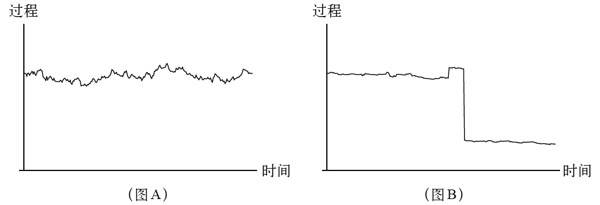
图5–1
注释：该图对比了自治市的噪声或露天市场分散的变动（图A）与集中管理或人为管理的系统（图B）的情况，或者说，对比了一个出租车司机的收入（图A）与一个银行职员的收入（图B）的情况。图B显示了急转直下式的变动，或者说从“黑天鹅”到“黑天鹅”。人类对比了平稳而控制流程或过度干扰，导致系统从平均斯坦转变为极端斯坦。这种效果在所有受到约束的系统中都很常见，比如健康系统、政治系统、经济系统，甚至也会因有没有百忧解而不同的人类情绪。创业者驱动的硅谷（图A）和银行系统（图B）也存在这种差别。
图5–1说明了反脆弱性系统在被剥夺了自然变动（主要归咎于天真的干预）后，会受到什么样的伤害。除了自治市的噪声，这个逻辑同样适用于：在无菌环境中生活一段时间后走出来的孩子；一个自上而下力求政治稳定的系统；价格管制的影响；以及一家公司的规模优势，等等。我们从一个充满可控波动性的稳定系统（平均斯坦），接近统计意义上“钟形曲线”（属于高斯或正态分布一类），切换到一种具有高度不确定性，以跳跃方式运动，被称为“长尾”的系统。长尾是极端斯坦的代名词，指的是一些发生概率很低的事件，但这些“尾部”事件却可能起到举足轻重的作用。第一个系统（图A）虽有波动，起起伏伏，但不会沉没。第二个系统（图B）没有显著波动，但却因偶发的动荡而急速沉没。从长远来看，第二个系统将更为动荡，波幅惊人。如果我们限制第一个系统，我们往往会得到第二个结果。
还要注意在极端斯坦下，可预测性是非常低的。在图B这种随机性呈伪稳定状态的情况下，错误看似很少发生，但一旦发生便后果严重，且常常具有毁灭性。其实，正如我们将在第四卷中阐述的一个论点所示，由于上述特性，任何拘泥于计划、不善变通的事情必然失败——鼓吹规划有助于企业发展简直是胡说八道：事实上，这个世界太随机、太不可预测了，怎么可能基于未来的波动性来制定政策。生存取决于适应性和环境条件的相互作用。
重大的“火鸡”问题
现在让我从有关“长尾”和极端斯坦的图表和技术术语改回我的黎巴嫩口语。在极端斯坦下，人很容易被过去事件的特性所愚弄，坚信一个完全过时的故事。看看图5–1的图B，在走势急转直下之前，人们很容易相信，当前的系统是安全的，尤其是当系统从图A带有“可怕”的明显波动的随机性状态切换到了看似更安全的图B。波动性似乎是下降了，但事实并非如此。
图5–2
一只火鸡在使用过去的“证据”进行“严格”的未来预测，而无视感恩节的来临
一只火鸡被屠夫喂养了1 000天，每天都向其分析师证实，屠夫对火鸡的爱的“统计置信度与日俱增”。屠夫会将火鸡一直饲养到感恩节的前几天，随后，重要的日子就要来临了，当然，这一天对火鸡来说绝非好日子。所以，只有看到屠夫的意料之外的行为时，火鸡才会修订自己的信念——而此时，正是其对“屠夫爱火鸡”的信念被强化到极致之时，它认为自己的生活“平静如水”，未来前景一片光明。但问题是，这种意外就是一种“黑天鹅”事件；当然这只是对火鸡而言，并非对屠夫而言。
从火鸡的故事中，我们可以看到所有有害性错误的根源：将证明有（危害）的证据较匮乏视为有证据证明不存在危害。我们将会看到，这种错误在知识界极为普遍，在社会科学领域也根深蒂固。
因此，在生活中，我们的任务就是“如何不让自己成为火鸡”，或者如果可能的话，争取与火鸡的特征相反，也就是具有反脆弱性。想要“不做火鸡”，就要了解真正的稳定和人为的稳定之间的差异。
读者很容易想象，被压抑了波动性的系统在爆炸后会发生什么。我们有一个恰当的例子：2003年当美国突然推翻萨达姆·侯赛因和他的政权时，阿拉伯复兴社会党遭到取缔。当时有超过10万人死亡，10年后，伊拉克仍是一个烂摊子。
12 000年
我们一开始以瑞士的例子展开讨论，现在，让我们稍微向东推进一点。
在很长一段时间里，也许是从陶器出现之前的新石器时代直到现代的20世纪中叶，黎凡特北部（大约今天叙利亚和黎巴嫩的北部），都是人类历史上最繁荣的地区。这段时间长达12 000年，相比之下，英国只繁荣了三四百年，斯堪的纳维亚半岛到现在只繁荣了200年。地球上很少有地方能够持续繁荣，或者达到历史学家所说的“长期”繁荣。其他城市的经济起伏不定，但是阿勒颇、埃米萨（今日的霍姆斯）和劳迪西亚（今天的拉塔基亚）却保持着相对富裕。
黎凡特北部自古以来就是商人和农场主的聚居地，这里商人众多是因为该地恰好是丝绸之路上的一个枢纽，农场主众多是因为地中海大部分地区，特别是罗马的小麦都是该地供应的。该地区在分裂之前出了好几代罗马皇帝和天主教神父，以及30多位希腊语言作家和哲学家（其中包括柏拉图学院的多名负责人），此外还有史蒂夫·乔布斯的祖辈。乔布斯这位具有远见卓识的美国计算机行业创业者给我们带来了苹果电脑，而我正是在苹果电脑上敲出这些文字（你可能正在苹果平板电脑上阅读它们）。我们从关于罗马时期的记录中了解到了黎凡特的自治情况，它是由当地的精英管理的，奥斯曼帝国后来也保留了这种分权式的治理方法。
随后发生了两个事件。首先，在第一次世界大战后，黎凡特北部地区的一部分被分割，并纳入到新创建的国家——叙利亚，而其他部分如今则是黎巴嫩的一部分。这整个区域原本都属于奥斯曼帝国，一直以准自治区的方式运行，奥斯曼人与之前的罗马人一样，也允许地方精英管理当地政务，只要上缴足够的税赋即可，奥斯曼人自身则全力以赴应对战争。奥斯曼式和平与以前的罗马式和平一样，有利于商业的发展。合同签订后就必须执行，这是政府最有用的功能。在最近一本怀旧之作《黎凡特》中，菲利普·曼塞尔记录了地中海东部的这些城市是如何以城邦制的形式运作的，与欧洲腹地形成鲜明对比。
在叙利亚统治之后的数十年内，现代化的阿拉伯复兴社会党进一步执行乌托邦政策。但在阿拉伯复兴社会党开始实行中央集权统治和执法后，阿勒颇和埃米萨立即衰落了。
阿拉伯复兴社会党根据其“现代化”计划所采取的举措之一，就是取缔了古老的乱糟糟的露天集市，取而代之的是焕然一新的现代化办公楼。
效果立竿见影：一夜间，商人家庭纷纷逃往纽约和新泽西州（主要是犹太人）、加利福尼亚州（主要是亚美尼亚人）和贝鲁特（主要是基督徒）。贝鲁特的氛围有利于商业发展，而且黎巴嫩是不受任何真正的中央政府管制的一个规模较小、温和、松散的国家。黎巴嫩的规模之小令其很适合成为一个自治市，事实上，它的规模还不如一个中等规模的都市。
战争还是监狱，或者两者都选
然而，尽管黎巴嫩具备了所有恰当的条件，但这个国家的管理却过于松散。由于允许巴勒斯坦各派别都拥有武器，从而引发了各派之间的军备竞赛，而这个国家还在坐观事态的升级。松散的管理有利于国家的活力，但黎巴嫩则太过松散，过犹不及。这就像允许纽约的每一个黑手党头目都组建一支比美国参谋长联席会议领导下的军事力量更强大的军队（试想一下，黑手党教父约翰·戈蒂掌握导弹会怎么样）。因此，1975年，黎巴嫩爆发了激烈的内战。
我祖父的一个朋友曾讲过一句话，让我非常震惊。那个人是一位从复兴党政权下逃离的富有的阿勒颇商人。黎巴嫩内战爆发后，我的祖父曾问过那个朋友为什么不回阿勒颇，他的回答很明确：“我们阿勒颇人宁愿打仗也不愿意蹲监狱。”我开始以为这位商人的意思是士兵会把他抓进监狱，但后来我意识到，这里的“监狱”指的是政治和经济自由的丧失。
经济生活似乎也更喜欢战争而非监狱。大约一个世纪前，黎巴嫩和叙利亚北部的人均财富（经济学家所说的国内生产总值）相差不大——文化、语言、种族、食物，甚至笑话都差不多。除了黎巴嫩呈现完全松散的状态，而叙利亚有复兴党的“现代化”法规制约外，一切都没有什么不同。但是，尽管黎巴嫩内战造成人口锐减和严重的人才外流，使得国家的财富水平倒退了几十年，当然，还有各种各样的混乱和动荡，但如今黎巴嫩仍保持着相当高的生活水准，其财富是叙利亚的3~6倍。
这一点也没有逃脱文艺复兴时期意大利著名的政治思想家马基雅维利的眼睛。让–雅克·卢梭引用他的话语写道：“马基雅维利写道，在谋杀和内战中，我们的共和国更为强盛，而公民也学到了美德……微小的骚动和焦虑滋养了灵魂，让物种繁荣的不是和平，而是自由。”
罗马式和平
中央集权制国家在历史上并非新事物。事实上，在古埃及就存在过非常类似的体制。但是，那是历史上的一个孤立事件，而且它并未存在很长时间：在来自小亚细亚猖狂、野蛮的侵略者的猛烈战车的（简直是一个撒手锏）进攻下，埃及的高压政治开始瓦解。
古埃及王朝并不是以帝国的方式治理国家，而是采取集权制统治，这两者是相当不同的，正如我们所看到的，它会产生不同类型的变化。集权制国家依赖于中央集权官僚制度，而帝国，如罗马帝国和奥斯曼王朝，则更依赖于当地的精英，事实上帝国允许城邦的繁荣发展并保留一定的有效自治权——对和平更有利的是，这些自治是商业自治，而不是军事自治。在现实中，奥斯曼帝国为这些属国做的一件好事是，避免它们彼此交战，这就消除了军事竞赛的诱惑，促使它们繁荣兴旺；无论这个系统表面上看是何等不公平，但它毕竟让当地人更关注商业而不是战争。也就是说，这防止了它们自相残杀。戴维·休谟在《英格兰史》中就主张国家要小，因为大国更容易受到战争的诱惑。
显然，无论是罗马还是奥斯曼帝国允许当地自治，并非因为它们喜欢别人享有自由；它们这样做是为了便利。帝国的运作方式（主管某些事务）与半独立的区域自治（可以处理自己的事务）的结合，要比强行推行统一主权的中央集权制国家更具稳定性。
但有些国家虽然也实行中央集权制，比如古代埃及和中国，但在实践中它们与罗马帝国和奥斯曼帝国的治理方式差别不大，不同的是前者通过供养文士集中了智慧，通过文官制度垄断了知识。我们中的一些人可能会记得那些没有互联网、没有电子监控税单的年代。在电报、火车和后来的电话构成的现代通信网络建立之前，国家不得不依靠信使提供服务。因此，当地的统治者往往要负责大量事务，虽然他未必有相对应的官衔。建立中央政府的国家在经济体中一直只占5%的比例，直到近代，而如今，欧洲的这一比例已经升至原来的差不多10倍。此外，当时的政府被战争充分分散了注意力，因而不得不将经济事务留给商人。
[21]
有战争或没有战争
让我们来看看在集权制国家——德国和意大利建立（这被称为“重新统一”，就好像这些国家在过去的岁月中也曾形成过一个明确的整体）之前的欧洲。在这些浪漫的实体创建之前，欧洲大陆上的国家如细胞一样分裂繁衍、形态不定，大小城邦混战不止、分分合合。比如，历史上热那亚和威尼斯绝大部分时间都在争夺地中海东部和南部地区，就像两个妓女为抢夺人行道上的地盘撕扯。城邦混战也有好处：小国很难应付一个以上的敌人，因此战争促使各国忽敌忽友。城邦之间时常出现关系紧张的局面，但是不会酿成重大后果，就像英伦三岛的雨：淅淅沥沥，连绵不断，偶尔发洪水也从未大到不可收拾的地步，远比长期干旱后遭遇强降雨的气候容易应对。换言之，这就是平均斯坦。
19世纪后期，集权制就如传染病一样蔓延开来，结果在这些集权制国家间爆发了两次世界大战及其余波：受害者超过6 000万（也可能是8 000万）。有无战争之间的区别变得巨大，呈现出显著的割裂。这与产业界向“赢者通吃”的模式转换并无差异，即少数事件居于主导地位。城邦的集结如同我们早先提到的餐饮业：动荡不定，但你永远不会看到一个大规模的餐饮业危机——这一点与银行业务很不相同。为什么呢？因为它是由大量独立而相互竞争的小单元构成的，这些小单元靠一己之力并不足以危及整个系统，或使其从一个状态进入另一个状态。随机性被分散而不是被集中在一起。
有些人陷入了幼稚的“火鸡式”思维，认为这个世界变得越来越安全了，并天真地把它归功于神圣的“国家”（尽管自下而上管理的瑞士才是全球暴力发生率最低的地方）。它好比是说，核弹更安全，因为它们爆炸的机会较小。世界各地的暴力行为越来越少，但是战争的潜在危害却更大了。20世纪60年代，当美国对苏联的核战争几乎一触即发时，我们是那么接近毁灭性的灾难，真的很近。当我们观察极端斯坦的风险时，我们并未看到什么证据（证据往往来得太迟了），但我们要看的是潜在的危害：这个世界从未像今天这样那么容易遭受重创，从来没有。
[22]
我知道，我很难向天真的数据驱动型人们解释，风险存在于未来，而不是过去。
混乱的多民族帝国，也就是所谓的奥匈帝国，在“一战”后就消亡了，一同消亡的还有其邻国及对手奥斯曼帝国（其实在很大程度上说，奥匈帝国与奥斯曼帝国是姊妹国，这一点不要告诉它们），取而代之的是政权鲜明统一的集权制国家。奥斯曼帝国消亡后剩下来的一些民族糅合在一起，效法瑞士，成立了土耳其，却没人发现这其中格格不入的地方。维也纳则被纳入了奥地利，除了正式的官方语言，它们并无共通之处。想象一下，将纽约市迁至得克萨斯州中部，并仍称其为纽约会怎样。维也纳的犹太作家斯蒂芬·茨威格，是当时世界上最有影响力的作家，在他凄美的回忆录《昨日的世界》中表达了他的痛苦。维也纳与文化各异的众多城市，如亚历山德里亚、士麦那、阿勒颇、布拉格、塞萨洛尼基、君士坦丁堡（现在的伊斯坦布尔）、的里雅斯特等捆绑在一起，上了集权制国家这个普罗克拉斯提斯之床，而其公民则纷纷陷入了对过去年代的怀旧情绪中。由于无法面对失落感，也无法融入其他地方，茨威格后来在巴西自杀。我第一次读他的传记时，自己也正陷于一个类似的情境，一种身体和文化上的流亡，因为当时我所住的黎凡特的基督教世界在黎巴嫩战争中分崩离析，我想，如果茨威格去了纽约的话，也许他现在还活着。
[17]
在此，我绕过了一个经济学话题，即实行自治的城邦制国家是否充满了经济活力——经济活力是亨利·皮雷纳和马克斯·韦伯以一种浪漫的方式所鼓吹的概念；从数学角度来说，我的观点是：一群半独立的、形形色色的小单元组成的集合，在风险特征上会与一个巨型单元不同。
[18]
我们常会听到对规模不同的国家的政体进行比较的辩论，比如比较新加坡和马来西亚。这种辩论让人苦恼，因为单元的规模大小其实比系统更为重要。
[19]
值得庆幸的是，由于辅助性原则的确定，欧盟在法律上免于过度集权化管理：各项事务都可以由能够实行有效管理的尽可能小的单元进行处理。这个概念源于天主教教会：从哲学的角度来说，一个单元不需要很大（如国家），也不能很小（个体），而应介于两者之间。这是一个极具哲理的概念，尤其是从第4章所说的脆弱性的转移以及规模带来脆弱性的角度来考虑的。
[20]
当随机性以及一些小的经常性的政治混乱分散在为数众多的小单元里，我们得到的第一种类型，也就是和缓的平均斯坦。当随机性集中起来，我们则看到第二种类型，也就是诡谲的极端斯坦。
[21]
需要注意的是人们开始用一个新词——“巴尔干化”来形容由分散的国家所造成的混乱，就好像分裂本身就是一件坏事，就好像巴尔干问题还有什么好的替代方案，可是，却没有人使用“赫尔维蒂化”（赫尔维蒂是瑞士的古国名）来形容瑞士这种松散治理的成功。
[22]
更严格地审视一下数据，并根据未知数据做适当调整，我们会发现，能够摧毁地球的战争与统计数据所显示的完全一致，甚至都不是一个“偏值”。正如我们所见，本·伯南克也被他自己的“大稳健”的构想所蒙蔽，这仍是一个“火鸡式”问题：一个从顶部施压来压制波动性的流程会迷惑他人。有些人，比如史蒂夫·平克就误读了统计过程的本质，因而坚信金融领域也存在类似“长期稳健”的状态。
第6章
告诉他们我爱随机性
极端斯坦下的麦克斯韦——喂驴的复杂机制——维吉尔说做，现在就做
在前一章中，我们主要阐述了约翰（脆弱的银行员工）与乔治（相对具有反脆弱性的出租车司机）的风险特性截然不同。同样的，集权制管理系统的风险特性也不同于自治市混乱管理系统的风险特性。第二种风险由于具有一定程度的波动性而成就了长期的稳定性。
电磁学理论的集大成者詹姆斯·克拉克·麦克斯韦针对高压严控将如何导致事与愿违，甚至全线崩溃，提供了科学的佐证。“调节器”这个奇妙装置的功能就是通过补偿突然发生的变化，来控制蒸汽机的速度。其目的是稳定蒸汽机，这一点它显然做到了，但矛盾的是，有时候它自己却会导致蒸汽机产生一些反复无常的行为，甚至崩溃。事实上，轻度控制是最有效的；严密控制会导致过度反应，有时甚至造成机器的分崩离析。在1867年发表的一篇题为“论调节器”的著名论文中，麦克斯韦通过对调节器的行为建模，以数学方式论证了严格地控制蒸汽机的速度将导致不稳定性。
值得注意的是，我们可以将麦克斯韦严谨的数学推导以及有关严控的危险推而广之，帮助我们揭穿伪稳定和隐性的长期脆弱性的真相。在市场上控制物价，或者消灭投机者这些所谓的“噪声交易者”以及他们所带来的温和波动，会给人以稳定的错觉，殊不知，由此形成的平静期却可能被激烈的起伏打断。因为大家不能适应波动性，因此，他们将最轻微的价格变化也归咎于内幕消息或系统状态的变化，继而引起恐慌。当一种货币从来没有发生变化时，微小波动就会让人以为世界末日来临了。因此，一定程度的混乱反而有助于稳定系统。
事实上，给人一点点困惑有益无害——对你有好处，对他们也有好处。让我们看看在日常生活中是如何体现这一点的，想象一个非常守时和可预测的人，他每天晚上6点钟准时回家，15年如一日。你甚至可以根据他到家的时间来校准你的钟表。但如果哪天他哪怕只迟到了几分钟，他的家人也一定会因此感到焦虑。而一个行程表波动性稍大，因而行为不太可预测的人（比如说他到家时间前后总有半小时误差），则不会让其家人焦虑。
变化也可起到大清洗的作用。小森林的定期火灾清洗了这个系统中最易燃的树木，令其没有机会继续繁衍。而系统性地预防森林火灾以确保“安全”的措施，却将导致下一场火灾的程度更加惨重。出于同样的原因，稳定并不利于经济的发展：由于缺乏挫折的磨炼，企业在长期的稳定繁荣中变得非常脆弱，隐藏的脆弱性在平静的表面之下暗暗积聚，因此，将危机延后并非良策。同样的，市场缺乏波动性会导致隐性风险肆意增长。市场越是长时间地规避了动荡，当危机真正来临时，损失就越惨重。
这种稳定带来的不利影响可以以科学的建模清楚明了地呈现，但是在我做交易员的时候，就曾听人说过，交易老手（而且是经验丰富的老手）会使用一种启发法：当市场创下“新低”，也就是跌至许久不遇的低谷时，人们会争相“割肉”逃离市场。不舍得割肉的则会遭遇更大的损失，乃至陷入深渊。如果这是一个你多年，比如两年，都未见过的市场低位，我们将其称为“两年来的新低”，那么它会比“一年来的新低”导致更多损失。老手称之为“洗牌”，就是将“菜鸟”排挤出局。“菜鸟”显然是那些脆弱但不自知的人，他们被一种虚假的安全感所蒙蔽。当许多这样的意志不坚者纷纷出逃时，就造成了市场的崩盘。一个持续波动的市场不会让人们长时间处于没有任何“洗牌”风险的平静期，但这也防止了那种摧毁性的市场崩盘。
正如一句拉丁语谚语所说：浮而不沉。
饥饿的驴
到目前为止，我们的论点是，阻止一个反脆弱性系统出现随机性，并不总是一个好主意。现在，让我们看看一些以添加随机性为标准操作方法的情况，因为随机性作为一种必需燃料，是反脆弱性系统必不可少的。
一头又饥又渴的驴刚好站在距离食物和水一样远的地方，由于在先喝水还是先吃草这两个选择间难以取舍，它不可避免地死于饥渴。但如果它被随机地往水或食物的方向推进了一步，问题就解决了——驴子得救了。这个假想实验是由中世纪的哲学家让·布里丹引入的，所以这个比喻被命名为“布里丹之驴”。除了复杂的哲学理论，布里丹的另一个贡献就是引入了思维实验。当某些系统陷入危险的僵局，只有随机性才可以解救它们，给它们自由。你可以看到，在这里缺乏随机性必死无疑。
将随机性噪声注入系统以改善其功能的想法，已在各个领域得到了应用。通过一个被称为随机共振的机制，我们可以在背景中添加一些随机性噪声，从而使你听到的声音（比如音乐）更加真切。前面我们看到，过度补偿的心理影响会帮助我们在一片噪声中捕捉信号；但在这里，我们讲的不是系统的心理特性，而是物理特性。微弱的求救信号，弱得很难被远程接收器收到的信号，在有一些背景噪声和随机干扰存在时反而可以被听到。往信号中添加随机性电子噪声会将信号的音量提高到检测临界值之上，从而被听见，在这种情况下，没有比随机性做得更好的了，而且随机性是完全免费的。
再来看看冶金工业中的退火工艺，这是一种使金属更强韧、质感更均匀的技术。它需要给材料加热并控制其冷却过程，以增加晶体的大小，减少瑕疵。正如“布里丹之驴”一样，热量导致原子脱离最初的位置，随机地在高能状态下漫游；冷却则给予它们更多的机会，寻找新的、更好的结构。
当我还是一个孩子的时候，我通过观察父亲看到了另一种版本的退火效应。我的父亲是一个固守习惯的人，每天一回家就摆弄他的木制晴雨表。他会轻轻地敲击晴雨表，看看这个自制的天气预报表上显示什么读数。敲击晴雨表产生的压力会让指针松开，并使其找到真正的平衡位置，这称得上最古老的反脆弱性系统了。在冶金技术的启发下，数学家们发明了一种名为模拟退火算法的计算机模拟法，为问题和情况带来更普遍和优化的解决方案，这种解决方案只有随机性才可以提供。
随机性在搜索工作中也起到了作用，有时甚至比人更管用。纳森·梅尔沃德让我注意到1975年发表于《科学》杂志上的一篇很有争议性的论文，文章称随机钻探比当时所用的所有搜索钻探法产生的结果还要准确。
而且，具有讽刺意味的是，波动往往被斥为混乱，但经历着波动的所谓的混乱系统却可以通过随机性保持稳定。我曾看过一个怪诞的随机效应展示，这是一位在读博士生做的。他先是让球在表面呈稳定性波动的桌上乱跳，这些稳定的冲击让球跳得杂乱无章。然后，就像变戏法一样，他动了一个开关，球的跳跃立刻变得有序而规则。更神奇的是，这种从混乱到有序状态的变化并非通过消除混乱达成的，而是通过添加随机性，也就是完全随机的低强度冲击。我看完这个美妙的实验后兴奋极了，简直想大声地告诉街上的每一个陌生人：“我爱随机性！”
政治退火
我们在现实中很难向人解释，压力与不确定性在生活中大有裨益，所以你也可以想象，如果这样向政治家们解释会出现何种情况。殊不知，政治领域恰恰是最需要一定剂量的随机性的地方。
我曾读过一个电影剧本，这个剧本改编自一个寓言，非常具有想象力。故事发生在一个完全由随机性统治的城市里，统治者隔一段时间就会随机地给他的臣民分配一个新的角色。比如说，屠夫将成为一个面包师，面包师将成为一个囚犯，诸如此类。最后，人们奋起反抗统治者，要求将稳定作为其不可剥夺的权利。
我马上想到，一个截然相反的寓言应该这么写：不是统治者随机分配公民的工作，而是让公民随机分配统治者的角色，也就是通过抽签的方式来指定统治者，当然也可以随机解雇他们。这类似于模拟退火效应，而且效果也毫不逊色。我们发现，实际上古人——又是那些古人！——已经意识到了这一点：雅典议会的成员是通过抽签的方式决定的，这一方法是为了保护整个系统免于退化。幸运的是，现代政治制度也对这种效应进行了研究。在计算机模拟实验中，亚历山德罗·普卢基诺和他的同事们发现，议会中加入一些随机选定的政治家反而有助于促进议会制度更好地发挥作用。
或者，有时系统会从不同类型的压力中受益。对伏尔泰来说，最好的政府就是间或玩弄政治暗杀伎俩的政府。弑君的效果类似于敲击木制晴雨表，以使其更好地工作。这产生了一些往往很有必要的重新洗牌，而且是从来没有主动要求过的洗牌。顶层出现的真空引发了退火效应，促使新领导人的出现。社会早亡率的下降对我们来说当然是好事，但它剥夺了自然管理下的优胜劣汰。谋杀是黑手党接班的标准程序，最后一次众所周知的退火行动是约翰·戈蒂在纽约牛排馆门口谋杀了前任黑手党教父，顺理成章地成为新的头领。而在黑手党之外，比如老板和董事会成员，他们的在位时间更长，这是在许多领域都存在的一个事实，比如首席执行官、终身学者、政治家们、记者——看来，我们需要随机抽签来决定他们的去留，从而打破僵化的局面。
不幸的是，你不能随机决定政党的存留。如今在美国困扰人们的并非两党制，而是为什么永远是这两个政党进行角逐，它们的系统内不存在内嵌的到期日。
最后，古人多少是在逆境下完善随机抽签的方法并将其融入占卜中的。这些抽签的目的实实在在地是要挑选出一个随机的解决方案，但又不用自己做出决定，并终身承担该决定带来的后果。你按照神的指示行事，那样就不用揣摩自己的真实意图了。有一种方法被称为“维吉尔卦”，即把命运交托在诗人维吉尔的史诗中，其方法是随机打开维吉尔的《埃涅阿斯纪》，将第一时间读到的话语作为自己的行动指南。你应该使用这样的方法来推动每一项棘手的业务决策。我会不断地重复这一点，直至声嘶力竭：古人开发了隐秘而复杂的方法和技巧来探索随机性。举例来说，实际上我在餐馆里也尝试过随机点餐法。由于菜单冗长复杂，往往置我于被心理学家称为“选择的暴政”的境地中，以至于每次做完选择心里就有一种不安的感觉，暗示自己其实应该点其他菜品。因此，我尝试盲目地、系统地跟随桌上最胖的那个人点单；如果没有这样的人，我就随机地从菜单上选择，根本不看菜名，心安理得地让太阳神帮我选择。
一枚名叫“稳定性”的定时炸弹
我们曾看过一种说法：缺乏火灾会让高度易燃物质越积越多。每当我告诉人们，政治动荡乃至战争的缺乏，将导致破坏性力量在平静的表面下逐步积聚时，他们总是万分震惊和愤怒。事实上，我认为这用简单的推理就能证明，在缺乏危机的情况下，隐藏的风险会逐步积累，因为人们倾向于将越来越多的风险隐藏在统计分布的“尾部”，事实上，这提高了遭受罕见恶性事件打击的风险。
（小规模）战争能拯救生命吗？
反启蒙运动的政治哲学家约瑟夫·德·迈斯特曾说，冲突强化了国家的力量。这样的说法极具争议性——战争不是好事，而且，作为残酷的文化战争的受害者，我可以证明战争的恐怖。但是，迈斯特指出了一个基于给定事件分析损失，而忽略故事中其余部分的错误，我觉得这个推论很有意思，也很奇妙。更有意思的是，人们往往不太容易往相反的方向看，比如他们发现了只专注眼前利益的错误，但却忽视了仅考虑长期利益的副作用。因为我们往往只将伤亡视为损失，却没有考虑到下一步会发生什么——这一点与园丁不同，园丁们深知，修剪树木将使树长得更好。
同样的，和平——某种强迫的、受限的、非自然的和平——在生活中也可能导致人们付出昂贵的代价：只要想想，欧洲在近一个世纪的相对和平后，极度自负中遭受了“一战”的打击，与此同时全副武装的集权制国家先后崛起。
再次申明，我们都热爱和平，期盼经济和情绪的稳定，但并不希望到最后才发现这是一场骗局。每个新学年开始，学生们都会接种疫苗（也就是给自己注入一点儿伤害，以增强免疫力），但为什么我们不将这一机制运用到政治和经济领域呢？
要告诉外交政策制定者的话
概括地说，人为地压制波动性不仅会导致系统变得极其脆弱，同时，系统也不会呈现出明显的风险。我们说过，波动性就是信息。事实上，这些系统往往过于风平浪静，而其表面之下却暗流涌动。虽说政治领导人和经济决策者的公开意图是通过抑制波动来稳定系统，但其结果往往适得其反。这些人为制约的系统更容易招致“黑天鹅”事件的光临。这样的环境最终会遭遇重创，与图5–1所示的情况一致，在每个人都因适应了多年的稳定期而放松警惕后，灾难往往会不期而至，带来的损失将远超不稳定状态所带来的损失。事实上，灾难爆发前的潜伏期越长，对经济和政治系统造成的伤害就越大。
通过寻求稳定来实现稳定（忘记第二步）的做法，是经济和外交政策中常见的骗局。这种例子不胜枚举，比如2011年前的埃及腐败政府，美国之所以支持了它40年，就是为了“避免混乱”，其副作用是滋生出一小撮以“超级大国”为后盾的特权掠夺者——这与银行家们利用“大而不倒”的理论诓骗纳税人，从而为自己谋取高额奖金如出一辙。
在写本书时，沙特阿拉伯是最让我焦虑和忧心的国家；这是一个标准的由强权自上而下强制推行的稳定模式，代价是牺牲每一点儿可能的道德和伦理美德——当然，也牺牲了稳定本身。
这个与美国“结盟”的国家是一个摈弃宪政的君主制国家，但这还不算是道德败坏。7 000~15 000名王室成员主宰着这个国家，过着纸醉金迷的奢侈生活，与支撑其先祖来到这里的纯化论伊斯兰教义完全背道而驰。这其间的矛盾显而易见：这个古板的沙漠部落的合法性源于其教派所传递的克制隐忍、苦行禁欲的教义，但由于有了“超级大国”撑腰，其后人却开始花天酒地、寻欢作乐——它的国王高调地四处旅行度假，随从可以塞满4个大型喷气式客机。他们的行为完全背离了祖先的训导。如今，沙特王国的王室成员积累的财富大部分都锁进了西方的保险箱。如果没有美国，该国早就掀起了革命，推进了政权的解体，这会带来一些动荡，但也许到现在已经恢复了一定程度的稳定。也就是说，防止噪声的举措从长远来看却使问题变得更糟。
沙特王室和美国的“结盟”显然是为了确保稳定。但这是什么样的稳定？我们还要混淆这个概念多久？其实，“多久”是无关紧要的：看看图5–2，这就好像是贷款，最终你还是得偿还的。同时，这里还涉及伦理的问题（我留待后文中再讨论），特别是某些诡辩，比如有人找到一个“为了什么”的理由来违反原本并不允许违反的道德准则。很少有人意识到，伊朗人之所以憎恨美国是因为美国——一个民主国家——在这里安插了一个君主，一个实施高压统治的伊朗国王，他大肆掠夺了这个国家，却给予美国进入波斯湾的“稳定”权力。今天，伊朗的神权体制在很大程度上是这种高压统治的结果。我们需要学会思考连锁反应以及副作用。
更令人担忧的是，一直以来，尤其是“9·11”恐怖袭击事件之后，美国的中东政策不适当地聚焦于镇压任何或所有的政治波动，同时打着镇压“伊斯兰激进主义”的旗号——这是几乎每一个政权都用过的伎俩。且不说杀死伊斯兰分子反而促使他们的队伍扩大，事实上，西方与阿拉伯国家缔结的联盟迫使伊斯兰激进主义者隐匿，反倒强化了后者的力量。
美国的政策决策者该明白了，他们越是为了稳定而插手干预其他国家的内政，越会造成更多的不稳定因素。或者，我们也该减轻政策制定者在政策事务中的作用了。
生活秘籍之一：没有波动，就没有稳定。
在这里，我们把什么叫作现代化？
我在这里对现代化的定义是：人类大规模地治理环境，系统性平整世界的凹凸不平，以及控制波动和排除压力。
现代化就是系统地将人类从充满随机性的生态环境中驱逐出去，包括物理的、社会的，甚至认识论的生态环境。“现代”并不只是像社会学教科书所定义的那样，指的是中世纪、土地改革，以及封建社会结束后的那个历史时期。它更是指以理性化（天真的理性主义）为标志的一个时代的精神，它依据的理念是，社会是可以理解的，也是可以设计的，由人来设计。在这种理念下诞生了统计学理论，以及可憎的“钟形曲线”。也是在这种理念的引导下，诞生了线性科学以及“效率”的概念或优化的概念。
现代化是普罗克拉斯提斯之床，有利有弊——它是对人性的一种削弱，目的是为了增强效率和效用。它在某些方面确实有效，普罗克拉斯提斯之床并非总是起到削足适履的作用，有些也带来了益处，但非常罕见。
想想看，布朗克斯动物园里的狮子生活在舒适和可预测的环境中（周日的下午，游客们总会蜂拥而至，以一种好奇、敬畏和怜悯的心态来看它），而它在野外的兄弟们则是自由的。曾几何时，在足球妈妈们的黄金时期到来之前，孩子们也是自由放养的。
我们正在进入现代化的新阶段，其标志包括游说者、责任非常非常有限的公司、MBA、骗局、世俗化（或者说重新创造一种新的神圣价值，比如以旗帜代替了祭坛）、税务官，对老板的恐惧、周末在有趣的地方度假（平时在公认不那么有趣的地方工作）、区分“工作”和“休闲”（虽然在来自更明智时代的人看来，这两者并无区别）、退休计划、对这个现代化定义持反对意见的好辩的知识分子、刻板的思维、归纳推理、科学哲学、社会科学的发明、光滑的地面、自以为是的建筑师，等等。暴力从个人层面转向国家层面，也出现了金融违纪行为。当然，所有这些的症结就在于否认反脆弱性。
我们有一种叙述依赖性，总要为行动和冒险做出合理的解释。公共事业和官员，甚至大公司的员工，只能做符合某些叙述的事情，这与是否有动听的故事都以追逐利润为目标的企业大不相同。请记住，当你有叙述的需要时，你得为“蓝色”命名，但在行动中则不需要。缺少了“蓝色”这个词会给思想家造成麻烦，但不会影响到实干家。（我曾经费尽心思向知识分子们解释实践在知识方面的优越性。）
现代化扩大了轰动信息和重要信息之间的差距——在一个自然环境下，轰动必定要有引起轰动的理由；而如今，我们依赖新闻媒体来捕捉娱乐信息和逸闻趣事等本质上无关紧要的事情，甚至还有闲情逸致去关心远隔千山万水的一些人的私生活。
过去，在我们尚未充分认识反脆弱性、自我组织、自我愈合等概念的时候，我们已经懂得尊重这些特性，并构建了许多信念，旨在管理不确定性和在遭受不确定性的冲击后存活下来。我们将生活的改善交给神“代理”。我们可能不认为，万物可以在没有“代理人”的情况下照顾好自己。但是，代理人是神，不是哈佛大学毕业的掌舵者。
因此，集权制国家恰好出现在代理人的角色从神转移到人类自己身上这一进程中——集权制国家的故事就是人类的错误被集中和放大的故事。现代化始于国家对暴力的垄断，而终结于国家对财政不负责任的垄断运营。
接下来，我们将讨论构成现代化核心的两个要素。第一，（参见第7章）天真的干预，以及对原本应该任其独立发展的事物强行纠偏而产生的成本。第二，（参见第8章，作为向第三卷的过渡），我们不再相信上帝或大小神明能够管理未来事件，却代之以一种更具宗教激进主义色彩的信念：无条件地相信科学预测，不管在什么领域；我们热衷于将未来浓缩于数字的运算之中，不论其可靠还是不可靠。因为，我们已经成功地将宗教信仰转化为对任何伪装成科学的理论或结论的轻信。
第7章
天真的干预
用切除扁桃体的手术来打发时间——可以留给明天做的就不要今天完成——革命发生之后才来预测革命会爆发——扑克牌21点游戏给我们的教训
让我们通过一个例子来说明人们这种认为必需“做些什么”的观点。20世纪30年代，在389名接受纽约市医生检查的儿童中，174名被建议切除扁桃体。剩下的215名儿童再次经过医生检查后，又有99名被认为需要手术。剩下的116名儿童又被带去看医生，其中52名也被建议做手术。注意，扁桃体炎的发病率的范围为2%~4%（今天，不是当时，而且那时候手术的风险比较高），每15 000名手术患者中就有一人会死亡，两相比较一下，你就可以理解这种医疗方式的收益和损害之间的平衡点了。
这个故事让我们见证了概率杀人的现象。对于每个遭受一场不必要的手术的孩子来说，你可能就此缩短了他的预期寿命。这个例子不仅让我们意识到了干预所带来的伤害，更糟糕的是，它展示了人类是多么缺乏在损益之间寻找平衡点的意识。
让我们将这种“提供帮助”的冲动称为天真的干预。接下来，我们将考察它的成本。
干预和医源性损伤
扁桃体切除手术给那些实际上不必做手术的儿童带来了伤害，而这项手术给其他一些儿童带来的所谓康复的益处却被大肆鼓吹。这种净亏损或超过治疗益处的损害（通常被隐藏或延迟）被称为医源性损伤，从字面上来看就是“治疗师所造成的”损害，iatros在希腊语中是治疗师的意思。我们将在后文中指出，每次你去看医生并接受治疗，你就要承担治疗损害的风险，这与我们权衡其他利弊的方式一样：概率收益减去概率成本。
一个典型的医源性损伤的例子是：乔治·华盛顿总统在1799年12月死亡，我们有足够的证据表明，他的医生使用了当时的标准疗法，包括放血（放掉5~9磅血），这在很大程度上导致或至少加速了他的死亡。
治疗师的伤害风险可不可以忽略，这取决于你如何衡量它，在青霉素诞生之前，药品在很大程度上是弊大于利的，接受医生的治疗反而增加了你的死亡概率。但是一个显著的事实是，医源性损伤似乎随着时间的推移，随着知识的增长而逐步增加，在19世纪后期的某个时候达到高峰。感谢现代化：正是“科学的进步”，让诊所取代了家庭治疗，导致死亡率直线上升，当时的人们认为是染上了“医院热”——难怪莱布尼茨曾称这些医院是“死亡的温床”。死亡率上升的证据显而易见，因为所有的受害者都聚集到了一类地方：人们在这些医院中纷纷死去，而不进医院的人却能活下来。曾因遭受很大不公平待遇而出名的奥匈帝国医生伊格纳兹·塞梅尔维斯观察到，在医院死于分娩的妇女数量甚至高于在大街上分娩的妇女。因此，他将职业医生称为罪犯——他们也确实如此。那些导致患者死亡的医生不能接受塞梅尔维斯的言行，认为他的观察“没有理论依据”。塞梅尔维斯因而陷入了抑郁状态——无力阻止那些装作救死扶伤的职业医生谋杀病人，所以痛恨医院。最后，他被送进精神病院，并在那里去世，具有讽刺意味的是，他的死因就是他自己所说的“医院热”，一种他一直在警告人们警惕的疾病。
塞梅尔维斯的故事是可悲的：一个人为挽救他人而说出了真相，却遭到惩罚、羞辱，甚至杀害，最糟糕的惩罚莫过于他在风险和不公平面前的无助。但是，这个故事也有积极的一面——真相终于大白，他的使命获得了回报，虽然是迟到的回报。最后的一个教训是，人们不应该指望在揭示真相后都能获得鲜花和掌声。
在产生医源性损伤的领域中，医疗领域的情况还算相对较好的，也许是唯一情况较好的领域。我们看到了问题，因为它获得了关注和处理。事情如今已逐渐得到了控制，只不过我们还要承受“做事的代价”：在美国，医疗失误所导致的死亡率仍是车祸死亡率的3倍（医生所接受的数据）到10倍。人们普遍认为，医生误诊（不包括在医院交叉感染的风险）导致的死亡率超过任何单一癌症所导致的死亡率。医疗机构所使用的决策方法仍然无视适当的风险管理原则，但是，尽管其对风险的态度非常幼稚，医疗领域还是在不断进步。我们更应该担心的是制药公司、游说者和特殊利益集团引诱人们接受过度治疗的倾向，以及由此产生的一些隐性的甚至不能算作“错误”的伤害。制药业隐匿医源性损伤，并将它们分散出去，而且这种情况还在加剧。如果外科医生给病人截肢时选错了腿，或者手术时切错了肾，再或者病人死于药物反应，这些无疑是医源性损伤的典型例子。但是，当你因一种无中生有或杜撰出来的精神疾病，比如说多动症、抑郁症等，给孩子用药，而不是打开桎梏他们的枷锁时，其长期的危害是不可想象的。医源性损伤会因所谓的“代理问题”而进一步加剧。代理问题通常也被称为“委托代理问题”，它是因一方（代理人）的个人利益与使用其服务的另一方（委托人）的利益相脱节所造成的。代理问题常见于股票经纪人和医生的身上，他们的最终利益是自己的支票账户，而不是你的财务或健康状况，他们给你的建议也仅仅是为了他们自己的利益考虑。当然，代理问题也可以从为“自己的政治生涯”奋斗的政治家身上看到。
首先，不要造成伤害
医学上关于医源性损伤的认识至少始于公元前4世纪，“以不伤害病人为前提”是古希腊内科医生希波克拉底提出的第一原则，并被写入“希波克拉底誓言”，成为每个医生在执业前都必须念的誓言。医学界花了24个世纪才开始妥善执行这一绝妙的理念。尽管说“不伤害”说了那么多年，“医源性伤害”一词只是在近期，也就是几十年前才出现的——在已然造成了那么多伤害之后。我自己就不知道这个确切的术语，直到作家布赖恩·阿普尔亚德把这个词介绍给我（我曾用“有害的意想不到的副作用”来描述这个概念）。因此，让我们把医疗领域留到十几个章节之后再讨论，并将这个诞生于医学领域的概念运用到生活的其他领域。由于不干预意味着没有医源性损伤，因此我们说，伤害来源于否认反脆弱性——我们总有这样的错觉，即认为人类总是有必要做些什么才能让万物正常运转。
要让人们广泛地认识医源性损伤是一项艰巨的任务。医源性损伤的概念在医学界之外几乎不为人所知（就算在医学界，这个词也是经过了很长时间才得以普及）。与“蓝色”一词本来没有名称一样，给某样东西命名显然有助于人们对它的认知。我们将把医源性损伤的概念推广至政治学、经济学、城市规划、教育及更多领域。我在尝试与这些领域的顾问和学者讨论这些问题时，他们没人知道我在说什么，或者没人认为他们可能成为某种伤害的罪魁祸首。事实上，当你与持有怀疑态度的人讨论这一问题时，他们往往会认为你是在“反对科学的进步”。
但是，其实这个概念在一些宗教文献中可以找到。《古兰经》中就提到：“自以为正确的人其实偏离了正轨。”。
总而言之，在任何遭受了天真的干预，或者只是一般干预的地方，都会产生医源性损伤。
医源性损伤的对立面
虽然我们现在有一个词可以用来描述试图帮助别人却造成伤害的情况，但我们却缺少另外一个词来阐述相反的情况，即试图伤害别人结果反倒提供了帮助的情况。请记住，攻击反脆弱性系统就会导致与预期相反的结果。例如，黑客的进攻会使系统更加强大。或者以安·兰德的例子来看，持续的激烈批评反而让一本书的知名度更高。
无能是具有双面性的。在梅尔·布鲁克斯自编自导的电影《制作人》中，两名纽约剧院的戏剧编剧惹上了麻烦，是因为他们的新剧成功了，而不是像预期的那样失败了。他们把一部百老汇戏剧同时卖给了多个投资者，他们的计划是，只要该剧失败，他们就可以把多余的投资资金据为己有。因为如果该剧失败，投资人将不会得到任何回报，他们的诡计也不会被戳穿。但问题是，虽然他们竭尽所能地呈现一部糟糕的戏剧——这部剧被称为“希特勒的春天”，但由于他们不按常理进行编剧，他们炮制出的戏剧效果反而极为有趣。在证券交易所，我也常常遇见这种讽刺的事情：一个家伙不满自己的年终奖金数额，因此用雇主的钱下很大的赌注——结果却挣了一大笔钱，比他特地这样做挣得还多。
也许资本主义背后的支持理念就是一种反医源性损伤效应，得到一种意料之外但也并非意想不到的后果：这个系统将个人追求私利的目标（确切地说，不一定是良好的目标）转化为对集体有利的结果。
更高层面的医源性损伤
由于缺乏对医源性损伤的认知而受影响最大的两个领域是：社会经济生活和人类的身体（正如我们在塞梅尔维斯的故事中所见）。这两个领域一直以来都是低能力和高干预并存的领域，人们往往无视自发运作和痊愈的存在，更别提自我成长和改进了。
正如我们在第3章中所看到的，有机体（生物或者非生物的）和机械体之间是有区别的。一个有工程导向的人往往会将周围看到的一切问题都视为工程问题。这在工程领域是一件非常好的事情，但如果是猫出了问题，最好是请一名兽医而非电路工程师来治疗，更好的方法是，让宠物自行痊愈。
表7–1罗列了各个领域内一系列旨在“改善问题”的尝试及其后果。请注意一个显而易见的事实：在所有例子中，这些做法都是在否认反脆弱性。
表 7–1 各领域中让系统变得更为脆弱的干预及其产生的影响
|
领域
|
干预的例子
|
医源性损伤的成本
|
| 医疗健康 |
过度治疗
否定人体的随机性，如稳定进食、恒定温度等
增加而非减少药物
|
脆弱性
医疗错误
身体更弱（但寿命更长）的人类，更有钱的制药公司，对抗生素产生耐药性的细菌
|
| 生态 |
对森林火灾的微观管理 |
日益恶化的总风险 —— 更大的“森林火灾” |
| 政治 |
中央计划
美国“为了稳定”而支持腐败政权
|
信息不透明
革命之后的混乱
|
| 经济 |
“不再有繁荣与萧条的循环”
[格林斯潘（美国），工党（英国）]，大稳健（伯南克）
国家干预
优化
为罕见事件定价的错觉，风险价值法，规模经济的错觉，无视二阶效应
|
脆弱性
危机一旦发生，影响更大
对亲政府的老牌公司的支持压制了新创企业的发展
易受攻击，伪效率
大问题爆发
|
| 商业 |
积极的建议（江湖骗术），关注收益而不关注风险（规避风险） |
骗子牟利
公司破产
|
| 都市 |
城市规划 |
市场衰败、市中心没落、犯罪增加 |
| 预测 |
无视过去糟糕的预测记录，仍企图预测“黑天鹅”事件（第四象限） |
隐性风险（人们根据预测结果行事，结果将冒更大的风险） |
| 文学 |
编辑试图更改你的文字 |
讨好读者的，更具《纽约时报》风格的商业化文字 |
| 子女教养 |
足球妈妈（或爸爸），消除孩子生活中的所有随机性 |
孩子思维的观光化 |
| 教育 |
整个概念建立在干预的基础上 |
荒谬——儿童思维的转型 |
| 科技 |
新事物狂热症 |
脆弱化、异化、钝化 |
| 媒体 |
高频率的无趣信息 |
噪声/信号筛选机制被打乱干预 |
鲸鱼能像鹰一样飞吗？
社会科学家和经济学家的头脑中并没有关于医源性损伤的认识，当然也不知道该如何称呼它，当我决定教学生认识经济和金融模型中的错误时，没有人把我或者我的想法当真，偶尔有人试图与我争辩，也只是要求我说出“理论依据”（这就像塞梅尔维斯的故事一样），却从未意识到，我所针对和讨论的正是理论的错误，或者不考虑理论的可能误差所产生的影响，就盲目地使用理论。
其实，拥有理论是一件非常危险的事情。
我们当然可以脱离理论进行严谨的科学研究。科学家们所称的现象学就是指对实证规律性的观察，并无明确的理论支持。在我的三元结构中，我将理论归入“脆弱类”，将现象学归入“强韧类”。理论是极其脆弱的，它们兴起又消亡，循环往复；现象学则更经得起推敲，我不相信人们会意识不到，现象学是“强韧的”、可用的，而理论往往言过其实，在物理学领域之外决策时并不可靠。
物理学享有特权，它是一个例外，这使得其他学科模仿它就如同鲸鱼想要像鹰那样飞翔。在物理学领域，随着理论的发展，误差越来越小，所以，说“牛顿错了”显然很抓眼球，是一些耸人听闻的科学小报的绝好素材，但最终这只是捏造事实；更中肯的说法是：“牛顿的理论在某些特定情况下并不准确。”牛顿力学原理的预测惊人地准确，除了当物体在以接近光速的速度运动时，你不会指望自己在下一个假期的旅途中达到这个速度吧。我们也经常在一些头版头条上看到虚假信息，声称爱因斯坦有关光速的理论是“错误的”，而用以证明他错了的工具是那么复杂且精准，以至于他们所阐明的观点在或近或远的未来对你我来说都无关紧要。
另一方面，社会科学理论却似乎多有分歧。在冷战期间，美国芝加哥大学推崇“自由放任”理论，莫斯科大学所讲授的却正好相反——但两国的物理系所讲授的内容即使不是完全相同，也大体一致。这就是为什么我把社会科学理论放在三元结构图的左栏，因为对现实世界的决策来说，它们超级脆弱，在风险分析方面也不稳定，说它们是“理论”实在让人感觉不妥。在社会科学中，我们应该称这些阐述为“幻想”，而不是理论。
我们必须构建一种方法来处理这些缺陷。我们不可能再等上24个世纪。在医学领域，医源性损伤会因人口基数大而分散（因而是平均斯坦），而社会科学和政策所带来的医源性损伤则不同，由于权力的集中，其产生的伤害可以一举摧毁我们所有人（也就是极端斯坦）。
不要什么事情都不做
2007年经济危机的主要来源就是，超级脆弱推手艾伦·格林斯潘（回顾历史，他无疑是最高级别的创伤源了）旨在消除“经济繁荣与衰退的周期”的各项举措，导致所有风险藏于地下且不断积聚，最终摧毁了经济，引发了“医源性损伤”。最让人郁闷的是，格林斯潘竟然还是一名自由主义者，表面看来他本该确信经济应该按照自己的方式运转；人啊，总是在无休止地愚弄自己。脆弱推手戈登·布朗领导下的英国政府，也运用了同样天真的干预工具。布朗是启蒙运动的支持者，他的宏大抱负之一就是“消除”经济周期。脆弱推手布朗同样也是一个“医疗性损伤”大师，虽然未必能与格林斯潘平起平坐。目前，布朗正在向世界宣扬他的“道德的”和“可持续的”金融——但他实行的偏偏是信息技术集中政策（导致巨额的成本支出和实施的延迟），而非借助于分权化的小单位来推进经济发展，这已被证明难以扭转局面。事实上，英国医疗卫生服务部门的原则是，某个偏远地区医院的一枚别针落地的声音也应该让白厅（伦敦地区政府大楼集中的建筑群）听到。我们将在第18章中对集中的风险进行技术性评论。
这些旨在消除经济周期的努力，是所有脆弱性的根源。正如森林里的小火灾会燃烧掉森林中的可燃材料一样，经济中的小伤害也会尽早地淘汰弱势企业，让它们“尽早失败”（从头再来），并尽量减少对系统的长期损害。
当某人负责主管某件事时，就会有道德问题出现。格林斯潘的行为是有害的，即使他知道这一点，并且选择无为而治，但要为这种行为辩解还是必须有点儿英雄主义气概的，因为在这样一个民主国家，人们总是迫不及待地承诺能拿出比其他人更好的业绩，而不管实际的延迟成本是多少。
天真的干预在各个领域都很普遍。正如扁桃体切除手术一样，如果你向文字编辑供稿，他会提出一些修改建议，比如每页约修改5个地方。好，接受他的“修改”建议，把这个文稿提交给另一个干预率（编辑往往有不同的干预率）差不多的文字编辑，你会看到，他也会提出差不多同样数量的修改提议，有时甚至与前面一位编辑的修改建议相悖，需要把前一位编辑修改的地方再改回来。再找第三个编辑，情况也是一样。
顺便说一句，有些人在某个领域干预过多，但在其他领域却又干预太少，文字编辑是一个再恰当不过的例子。在我的写作生涯中，我多次注意到，那些过度编辑文稿的编辑往往遗漏真正的错别字（反之亦然）。有一次，我从《华盛顿邮报》撤回了我写的文章，因为通篇文章都经过了完全没有必要的编辑，仿佛每一个字都被词库中的词替换了。我转而将该文投给了英国的《金融时报》，《金融时报》的编辑只做了一个修正：把1989年改成了1990年。 《华盛顿邮报》做了那么多努力，却漏掉了这唯一重要的错误。正如我们将看到的，干预耗尽了我们的精神和经济资源；当人们最迫切需要它们时，却又无从寻找 （小心事与愿违：不管需要做什么事，小政府最终可能都更有效，具有讽刺意味的是，较之大政府，缩小了规模和管辖范围的小政府反而更强大）。
非天真的干预
请允许我在此告诫大家，不要误解本书所传递的信息。我的论点并不是反对干预，事实上，我用上面的例子揭示了，我同样担心在需要干预的情况下却干预不足。我只是提醒大家注意天真的干预，以免因为对其危害缺乏认识而接受它。
可以肯定的是，我要传递的信息起码在一段时间内会被人误解。我曾写过《随机漫步的傻瓜》一书，表达的信息与此相关，即我们倾向于低估随机性在人类生活中的作用，我将此概括为“比你想象的更随机”，但是媒体上传递的信息却变成了“这完全有赖于随机性”或者“这完全有赖于该死的运气”，这种断章取义是普罗克拉斯提斯之床的又一种写照。在接受电台采访时，我试图向记者解释这两句话之间的细微差别，结果却被告知，我说得“太复杂”了；所以我干脆拂袖而去，让他们自己去收拾残局。令人沮丧的是，那些犯下这样错误的人都是受过教育的人，他们是记者，被委以向我们这些“门外汉”阐述这个世界的责任。同样的，在这里我要说的是，我们需要避免对系统的自然反脆弱性，即对它们自己照顾自己的能力视而不见，并克制自己拒绝给它们自然发展的机会的冲动，以免伤害到它们，让它们更为脆弱。
正如我们在过分热心的编辑身上所看到，过度干预一定与干预不足并行。事实上，和医疗领域一样，我们倾向于在一些收益小（而风险大）的领域实施过度干预，而在有必要干预的领域（如紧急情况）却干预不足。因此，我在这里的观点是，赞成某些领域的坚定干预，如生态领域，或限制大公司造成经济危机和道德风险。
我们应该控制什么呢？通常说来，通过干预来限制（公司、机场或污染源的）规模、集中度和速度都有利于减少“黑天鹅”风险。这些行动有助于消除医源性损伤，但是，我们很难说服政府限制其规模。例如，自20世纪70年代以来就有人认为，在高速公路上限速（并切实执行）能极大地提高交通安全性。这应该是可信的，因为交通事故的风险往往随着速度的提高而陡然（也就是呈非线性）上升，而人类天生并不具备这种直觉。有人喜欢驾驶着大型汽车在高速公路上横冲直撞，这显然危及你的安全，在它撞到你的敞篷跑车之前，有必要及时制止它——或者换种结果，让这个人而不是你最终退出基因库。速度来自于现代化，而我总是怀疑存在来自后自然时代的、隐藏的脆弱性——我们将在第18章和第19章提供技术性证据支持。
但是，我也接受相反的论点，那就是管理街道的交通标识似乎并不能降低风险；街道上有了标识，司机们就会比较容易掉以轻心。实验表明，当人们将控制权拱手让给系统时，警觉性就会减弱（这是缺乏过度补偿的又一个例证）。驾驶员需要由危险感带来的紧张和压力帮助提高他们的注意力和风险控制力，这不是增加外部监管可以替代的——例如，管制行人过马路要比允许行人随意穿马路导致的死亡人数更多。一些自由主义者使用了荷兰的一个小镇德拉赫滕的案例来说明问题，这里进行过一个假想实验：所有的道路标志都被拆除了。但这种放松管制的做法反而提高了交通安全状况，证实了人们注意力系统的反脆弱性的作用，展示了它是怎么被危险性和责任感所激发的。因此，许多德国和荷兰的城镇都开始减少路标。我们在第2章讨论飞机的自动化飞行时，其实就谈到了德拉赫滕效应。但我们要小心的是，不可扩大德拉赫滕效应的应用范围，因为这并不意味着消除所有社会规则就会有助于效率的提高。正如我刚才所说，在高速公路上限制开车速度对应的是另一种情况，而且它的风险是不同的。
可惜的是，我很难将有关脆弱性和反脆弱性的想法放入当前美国的政治体系，也就是两党制中。在大多数的时间里，美国的民主党阵营偏好超级干预、无条件调控和庞大的政府，而美国的共和党阵营则偏爱大公司、无条件的放松管制和军国主义，两者对我来说都是一样的。在债务问题上，它们的立场更是毫无区别，双方都倾向于鼓励公民、公司和政府负债（这带来了脆弱性，扼杀了反脆弱性）。我相信无论哪个政党上台，其市场和政府都会愚蠢地招致“黑天鹅”的攻击——而大自然则不会，这多亏了它的构造以及更古老的市场模式（如露天市场），完全不同于我们现在的模式。
让我再简述一下我对干预的认识。我的主要提议是形成一套系统性准则，以决定何时可以干预，何时让系统自行运作。我们可能需要通过干预来控制现代化的医源性损伤，尤其是对环境的大规模破坏和潜在（虽然并不明显）伤害的高度集中，这些事情的后果往往在我们意识到时已经不可收拾了。我在此表达的并非政治理念，而是风险管理理念。我不属于哪个政治派别，也从未效忠于某个特定政党，我只是想以恰当的方法引起我们对危害和脆弱性的关注，以确保我们不会摧毁这个星球和我们自己。
赞美拖延——像费边社那样
在一个专业化的社会中，干预有愈演愈烈的趋势，但是干预还有一些欺骗的成分在里面。声称“你看，我为你做了些什么？”远比“你看，我帮助你避免了什么？”更能让人感恩戴德。当然，与奖金挂钩的绩效制度进一步加剧了这一问题。我回顾了一下历史，想寻找那些因为“无为”而成为英雄的人，但事实上，很难找到这样的人。如果一名医生克制了给病人背部开刀的冲动（这可是一台价格不菲的手术），给病人自行痊愈的机会；而另一名医生故意让手术显得不可缺少，让病人感觉动手术会更放心，让病人面临手术风险，自己却赚取巨大的经济回报。这两者相比，后者将名利双收，甚至开得起劳斯莱斯轿车。企业里也是一样，企业经理人努力避免公司发生损失，自己却不会得到回报。事实上，在“黑天鹅”的世界中，真正的英雄是防止灾难发生的人，但是，当然，因为灾难没有发生，他的义举也无人认可，更别提拿到奖金了。我会在第四卷中深入探讨这一问题，探讨伦理道德、奖金制度的不公平，以及这种不公平如何被复杂性放大了。
但是，古人似乎总是比我们现代人有更多的智慧，而且是简单得多的智慧：罗马人尊敬懂得抵制和延迟干预的人。费边·马克西姆斯将军有一个绰号，名为“拖延者”。虽然汉尼拔有明显的军事优势，但费边通过避免和延缓交锋几乎快把汉尼拔逼疯了。汉尼拔的军国主义恰恰就像某种形式的干预（这点很像小布什，只有一点例外，汉尼拔实际上要亲身作战，而不是在舒适的办公室里开会），与“拖延者”的智慧相对立。
英国有一个非常聪明的革命社团发起了一项政治运动，这个社团被称为费边社，就是根据“拖延者”命名的，其主旨就是抓住一切机会拖延革命。费边社成员包括乔治·萧伯纳、威尔斯，伦纳德和弗吉尼亚·伍尔夫夫妇，拉姆齐·麦克唐纳，甚至有一段时间伯特兰·罗素也加入了进来。现在回想起来，这是一种非常有效的策略，不是实现自己的目标，而是接受一个事实，他们的目标就是转移对方的目标。拖延可以让事件自行发展，让积极分子有机会在制定不可逆的政策之前改变想法。
拉丁语中有一个谚语：“欲速则不达”。罗马人不是唯一尊重自愿放弃行动的古人。中国的思想家老子也创造了无为（即消极成就）的学说。
很少有人知道，拖延是我们的自然防御本能，是让事情顺其自然地发展、行使其反脆弱性的本能；它源于某些生态或自然的智慧，结果也并不总是坏的。在生存层面上，这是我们的身体自然地反抗任何强加的桎梏和束缚的方式，这是我们的灵魂在与现代化中的普罗克拉斯提斯之床作斗争。当然，在现代世界中，我的纳税申报不会，但是，我可以推迟一个小病的就医时间，或者推迟一篇文章的写作时间，直到我的身体告诉我，我已经准备好了。通过这种方式，我可能在使用一个非常强大的自然过滤器。我只在自己有写作欲望的时候写作，而且只写我喜欢讨论的主题，要知道，读者可不是傻瓜。所以，我往往用拖延的方式等待内心的自我呼唤，用这种慢慢进化而来的本能来抵抗对我写作的任何干预。然而，一些心理学家和行为经济学家却似乎认为，拖延是一种疾病，是需要纠正和治愈的。
由于拖延的好处并未得到充分证明，因此，有人将其与柏拉图讨论的意志力薄弱，即一种缺乏自制力或者意志薄弱的表现联系起来，还有人认为它与一种被称为缺乏意志的“病理”相关。我相信制药公司也许有一天会为此研制出某种治疗药物。
拖延的好处，同样适用于医疗程序：我们看到，拖延可以避免你犯错，因为它给予自然按自己的规律行事的机会，要知道，自然比科学家更不容易出错，这是一个令人尴尬的事实。研究“非理性”的心理学家和经济学家并没有意识到，在没有生命危险的情况下，人类有一种拖延的本能。如果看到狮子走进我的卧室或邻近的图书馆起火，我是绝不会拖延的。如果严重受伤，我也不会拖延就医。此时，我遵循的是非自然的职责和程序。有一次，我背部受伤，但却将手术一拖再拖，后来，我去阿尔卑斯山远足度假了一次，又经过了一段时间的举重锻炼，我的背部就自行痊愈了。我的自然本能让我推迟了一次可有可无的手术，并将侵害我身体反脆弱性的风险降至最低，而这些心理学家和经济学家却要我扼杀自己的这种本能（内在激励机制），泯灭身体的反脆弱性。由于拖延源于我们的自然意志，传递了我们自身动力不足的信息，因此解决方案就是换个环境或者换份工作，让自己不要那么纠结或者压抑。很少有人可以领会这样的逻辑，人们应该过一种视拖延为有益工具的、基于自然风险进行决策的生活。
其实我写这本书的时候，也是运用了拖延的方式。如果我在一个章节上一再拖延，那么它肯定会被淘汰。这只是简单的道德问题：如果我在写一个话题时感觉不到一点儿自然冲动的话，那我为什么要写出来糊弄人呢？
用我的生态学推理来说，一个人做事拖拖拉拉不是因为他不理性，而是他身处的环境不合理。称这个人不理性的经济学家和心理学家，其实才是不理性的。
事实上，人类是非常不擅长过滤信息的，特别是短期信息，而拖延则是帮助我们筛选信息的较好方式，它能避免我们由于冲动而轻信某个信息，我们下面还会就此做出详细讨论。
“自然主义”的概念现在有点儿混乱。哲学家常提到一种被称为“自然主义谬误”的错误，暗指自然的事情在道德上并非正确，这一点我也同意，我们将在第4章讨论将达尔文的自然选择应用到现代社会的问题，以及保护一些失败者的必要性，这些都与自然的意志相悖。但问题是，现在有些人在道德以外的领域滥用自然主义谬误的概念，比如在一个人有所怀疑的时候，将它误用到依赖自然主义本能的观念上。不管你怎么批驳，在涉及风险考量时，这一谬论并不成立。时间是考察脆弱性的最佳测试，它包含了大量的混乱无序，自然是目前为止唯一能在时间的磨砺下堪称“强韧”的系统，但一些哲学家却不了解，风险和生存的问题比哲学问题更关键，那些人最终应该退出基因库——真正的哲学家都同意我的陈述。还有一个更糟糕的谬论：人们会犯相反的错误，认为自然主义就是谬论。
大规模的神经过敏
想象一下，我们一般称之为神经过敏的某个人——长得瘦削，整张脸看起来扭曲着，说话语调时高时低。每当他试图表达自己的意思时，脖子便不自觉开始扭动。每次脸上长颗粉刺，他的第一反应就是臆想自己患了癌症，而且是致命的癌症，已经扩散到他的淋巴结。他的疑心病还不仅限于身体健康方面：他的生意一旦遭遇一个小挫折，他的反应就好像自己肯定破产在即了。在办公室里，他会关注每一个可能的细节，系统性地小题大做。这个世界上你最大的噩梦可能就是与他同坐一辆车赶赴一个重要约会，结果却遭遇了堵车。“反应过度”这个词就是为他而造的，他不仅是有反应，而且是反应过度。
将神经过敏的人与不动声色的人比较一下，后者有临危不乱的能力，这被认为是领导者、军事指挥官或黑手党教父的必要素质。这样的人不会一有风吹草动就乱了阵脚，他在困境中的自我控制力让你叹服。要知道什么是沉稳、冷静和深思熟虑的声音，只要听听对“公牛桑米”萨尔瓦托·格拉瓦诺的采访，他曾参与谋杀了19人（都是匪徒火拼）。他说话慢条斯理，就好像讨论的问题“没什么大不了的”。但是，这类人只有在必要时才会做出反应；他要么不生气，一旦生气可谓雷霆震怒，每个人都得陪着小心，这类人与神经过敏那类人完全不同。
现代化的发展为我们提供了大量的信息，这些信息却把人类从从容镇静的那类人变成神经过敏的人。出于讨论的目的，我们暂且把从容镇静的人视为懂得对真实信息做出反应的人，而神经过敏的人则大多在对噪声做出反应。两类人之间的差异让我们看到了噪声和信号之间的差异。噪声是你应该忽略的，而信号才是你需要注意的。
事实上，我们在本书前几章已经零散地提到了“噪声”的问题；现在是对其进行准确阐述的时候了。在科学上，噪声已经超出了实际声音的范畴，被用来概括性地指代没有任何目的、不起任何作用的随机信息，你需要清除噪声，以正视听。比如一条加密信息里有一些完全没有意义的元素，它们只是一些用来迷惑间谍的随机字母，又比如一条电话线上听到的嘶嘶声，你总是要尽力避免它，以专注于对话。
因个人能力或智力的欠缺无法区别噪声和信号，往往是过度干预背后的原因。
杀人的合法方式
如果你想加速一个人的死亡，就给他请一位私人医生。我的意思并不是为他提供一个蹩脚的医生，而是给他钱让他自己选择中意的医生——什么样的都行。
这也许是唯一可能合法的杀人方式了。我们可以从扁桃体切除手术的故事中看到，获取更多数据增加了干预的理由，导致我们的行为更像那个神经过敏的人。罗里·萨瑟兰曾向我暗示，给员工配备私人医生，实际上更容易受天真的干预的影响，也更容易遭受医源性损伤：医生需要证明，他们无愧于你所付的薪水，也要向自己证明，自己还有那么一点儿职业道德，这靠“无为”是不足以体现的。事实上，歌手迈克尔·杰克逊的私人医生被起诉的理由就相当于过度干预，即扼杀了病人的反脆弱性（法院得花些时间才能熟悉这个概念）。你有没有想过为什么国家元首和非常富有的人虽能方便地获取医疗保健服务，却并不比普通人活得时间更久呢？嗯，看来这正是过度服用药物和过度获取医疗服务的后果。
同样的，那些在公司里制定政策的人（如脆弱推手格林斯潘）由于有一个先进的数据采集部门的支持，因此得到了很多“及时”的信息，结果却往往反应过度，将噪声当作信号，格林斯潘甚至会关注克利夫兰真空吸尘器的销售状况的波动，“以便掌握经济的确切走向”，当然，他的微观管理将美国经济拖入混乱的泥潭。
在商业和经济决策中，对数据的依赖导致了严重的副作用。由于互联网的发展，数据空前丰富，你在数据中陷得越深，错误数据的比例就越高。我们很少讨论数据的一个属性，即大量数据实际上是有害的，即使是中等数量的数据也是有害的。
前两章的内容展示了如何使用和利用噪声和随机性；但噪声和随机性也可以使用和利用你，特别是在完全不自然的情况下——依靠网络或者媒体获取大量数据的情况下。
你越频繁地寻找数据，你会发现，你找到的噪声（而非被称为信号的宝贵数据）的比例就越高，噪声–信号比就越高。噪声和信号的混淆并非心理问题，而是数据本身所固有的问题。假设你每年查看一次数据，比如股价、你岳父工厂生产的化肥的销售情况，或符拉迪沃斯托克的通胀数据。再假设，当你观察数据的频率为每年一次时，信号–噪声比为1∶1（一半噪声，一半信号），这意味着，大约有一半的变化是真正的改善或恶化，而另一半的变化来自随机性。这个比例是你每年观察一次会得到的比例。但如果你每天查看一次同样的数据，那么这些数据的构成就会变成95%的噪声和5%的信号。如果你观察数据的频率以小时为单位，就像如今人们整日被新闻和市场价格变动的信息包围一样，那么这个构成就是99.5%的噪声和0.5%的信号。也就是说，噪声的比例是信号的200倍以上——这就是为什么爱听新闻（除了有非常重要的事件发生）的人离愚蠢的人也就一步之遥了。
看看报纸产生的医源性损伤。报纸每天都需要用一堆新闻填满各个版面，尤其是其他报纸会报道的这些新闻。事实上，要把事情做对，它们就要学会在缺乏有意义的信息素材时保持沉默。报纸篇幅有些时候写两行就够了，而必要时则可以写上200版——与信号的强度成正比。不过，当然，报纸要赚钱，需要向我们出售垃圾信息，而垃圾信息无疑制造了医源性损伤。
这个故事还可以从生物学的角度来看。我一直在重申，在一个自然的环境中，压力源就是信息。因此，信息过多意味着压力过大，超过了反脆弱性的临界点。在医学上，我们发现绝食有帮助身体自我康复的功效，因为这避免了因摄入食物而分泌过多的荷尔蒙。荷尔蒙会将信息传递给我们身体系统的不同部分，但荷尔蒙过高会导致生物机能的紊乱。就像接受新闻的频率过高会产生问题一样，过多信息有害无益——每日接受过多的新闻和摄入过多的糖都会让系统紊乱。在第23章的内容中我会阐述，太多的数据（特别是无效的数据）将导致统计数据毫无意义。
现在，让我们再从心理层面梳理一下：我们不是天生就明白上述道理的，所以我们会在情绪上对噪声反应过度。最好的办法是只看重大的数据或条件的变化，而忽略小的变化。
正如我们不太可能将一头熊误认为是一块石头（但有可能将一块石头误认为是一头熊），任何一个理智的、头脑清楚、不人云亦云、不会淹没在数据的人，是绝不可能将一个重要信号、一个攸关生死的信号看成噪声的，除非他急于求成、过度敏感，而且神经过敏，从而被其他信息干扰和迷惑了。重要的信号总有方法触动你。在扁桃体切除手术的故事中，最好的筛选方式就是只给病得很重、经常喉咙发炎的孩子动手术。
媒体激发的神经过敏
媒体及其添油加醋描述的逸闻趣事传递了数不胜数的噪声，由此，我们越来越多地生活在虚拟的现实中，与真实的世界隔离；距离一天天拉远，我们对此的意识却一天天淡薄。想想，美国每天有6 200人死亡，许多人都死于可预防的疾病。但媒体只报道最耸人听闻的事件（如飓风、离奇的意外、小型飞机的坠毁），给了我们越来越扭曲的风险现状。在古时候，逸闻趣事都是信息；但今天不再如此。同样的，在向我们提供解释和理论的过程中，媒体制造了一种认识世界的错觉。
记者对事件（和风险）的理解都是事后的，就好比登机后再安检，或者像古人说的战争结束后再派援军。由于领域的依赖性，我们总是忘记对照现实世界来查看我们心中对世界的认识。因此，我们生活在一个越来越脆弱的世界，同时却认为它越来越容易理解了。
总而言之，减轻干预的最好方法是限量供应信息，并以尽可能自然的方式来获取信息。这在互联网时代是很难让人接受的。我很难对人解释说，你获得的数据越多，就越不了解情况，导致的医源性损伤也会更多。如今，人们仍抱有“科学”就意味着更多数据的错觉。
国家无能的时候反而大有益
1959~1961年间导致3 000万人死亡的中国大饥荒，可以让我们体会到国家过度努力的后果。孟鑫、钱楠筠和皮埃尔·雅尔德研究了各地受灾程度的不同，以了解饥荒的分布情况。他们发现，在饥荒开始前，粮食产量更高的地区在饥荒开始时受灾情况更严重，这意味着政府的粮食分配政策是导致灾难的一个重要原因，具体来说就是缺乏灵活的粮食采购系统。此外，回顾过去一个世纪内发生的饥荒，中央计划经济所导致的饥荒在其中的占比远高于预期。
但事实往往是，国家的无能才能帮助我们摆脱中央集权和现代化的桎梏——实现反医源性损伤。富有真知灼见的作者德米特里·奥尔洛夫阐述了苏联那种低效落后、无意识重复栽种的粮食生产，如何在苏联解体后帮助人民逃避灾难，最终促进了国家稳定。斯大林想按自己的主张规划农业，然而却导致了饥荒。他和他的继任者从来没有成功地提高过农业的“效率”，即实现耕种的集中和优化，就像今天的美国一样，所以，苏联的每一个城市周边都种植主要的粮食作物。这当然提高了成本，因为他们无法从专业化中受益。但就是这种缺乏专业化耕种的局面使人们在国家机构严重解体的情况下也能获取各种粮食。你可以想象一下，如果美国（或欧洲）出现食品供应中断事件的话会发生什么情况。此外，由于苏联住宅建设效率低下，因此家族三代往往都住得很近，关系也很亲密，从而确保了彼此邻近、互通有无。人们之间有真正的纽带连接着他们，这可与社交网络不同，他们会给饥饿的朋友送食物，也希望当自己陷入困境时，有些朋友（不一定是他们帮助的那个朋友）能够帮助到他们。
而自上向下管理的国家即使想帮助人民也并一定能做到这点，我们接下来还会看到另一个故事，告诉我们国家无能的益处。
法国比你想象的更乱
下一步，我们将颠覆一种观点，即认为法国治理得好是因为它是一个由笛卡儿式的理性主义者自上而下管理的国家。
过去20年来，我一直在疑惑，为什么由一个超级政府自上而下领导的法国，却能在那么多领域内都运行良好。这毕竟是让–巴普蒂斯特·柯尔贝尔领导过的国家，这个伟大梦想家的思想渗透到了国家的诸多方面。事实上，目前法国的文化是超级干预式的文化，可以说“尽管东西没坏，也要好好修理它”。许多事看起来在法国比在其他地方要做得好；所以，法国是不是可以用来证明，通过严格管理让都市井井有条的中央官僚机构事实上有利于增进发展、幸福、卓越的科学和文学、宜人的气候、地中海地区多样化的植物、高大的山脉、优越的交通、迷人的女郎，还有令人垂涎欲滴的美食？但直到我阅读格雷厄姆·罗布的《发现法国》，我才发现了一个重要的事实，让我用全新的视角来看这个地方，并查找文献来修订有关这个国家的故事。
对于这个故事实际上我们并不陌生：法国的集权制在很大程度上是象征性的，虽然路易十四、拿破仑的征战，以及茹费理的国家教育计划无不希望一统该国。早在1863年，法国人并不说法语（只有1/5的人说法语），该国有多种语言和方言（一个离谱儿的故事：1904年的诺贝尔文学奖得主是法国人弗雷德里克·米斯特拉尔，但他写作时用的却是普罗旺斯语，一种法国南部的语言，如今已经没有人会说这种语言了）。这个国家缺乏语言的融合，就像该国五花八门的奶酪一样（据说这里有400多种奶酪），这从一定程度上显示了集权制管理方式在这个国家实行的难度。由于缺乏种族或语言的维系，这里只不过是国王或没落贵族的资产。这里的道路极其崎岖，大部分地区游客都无法进入。收税是一个危险的职业，需要坚韧的精神和智慧的手段。事实上，这个国家是逐步被巴黎“发现”的，在许多情况下还是在北非和其他殖民地建立之后被发现的。在一本很有意思的大部头著作《叛逆的法国》中，历史学家让·萨科指出法国的叛乱文化博大精深，从历史上看，这可以算作法国真正的全国运动。
巴黎本身几乎不受法国控制——它的情况不比不听巴西中央政府号令的、被称为“野花”的里约贫民窟好多少。“太阳王”路易十四把政府搬到了凡尔赛宫，以逃避巴黎的民众。直到奥斯曼在19世纪60年代拆除了廉价公寓和狭窄的街道，修建了大道，并允许警察控制人群后，巴黎才变得容易控制。实际上，法国的核心就是巴黎，政府对法国其余地区并不十分在意。这个国家经过长期规划和修建道路、铁路系统、公立学校和电视网络的“5年计划”，之后才实现了集权制管理，这也就是拿破仑一统江山的梦想。这个梦想的建设始于战后的戴高乐时期，到20世纪70年代在瓦勒里·吉斯卡尔·德斯坦统治时期才算完成，而随后分权化又开始了。我们可以说，法国可能受益于这20年左右的中央集权统治，但我们同样也可以认为，它得益于这样一种皆大欢喜的情况：大政府刺激了经济增长，却没有逗留过长时间，未引起反作用。
瑞典和大政府
除了法国，我不能理解的还有瑞典和其他北欧国家，比如丹麦，它几乎成了大政府高效治理的代名词，因为该国的经济大部分是国有的。世界上怎么会有像丹麦这种在庞大的政府的治理下还能够幸福的国家（假如幸福是可衡量和美好的）呢？是因为这些国家都比纽约大都会的面积还小吗？我始终百思不得其解，直到我的合著者、政治学家马克·布莱思告诉我，这种叙述是错误的：瑞典的故事与瑞士如出一辙（只不过这里的气候更糟，也没有好的滑雪胜地）。仔细看看：该国政府就像一个税收机构，但收来的钱是各市自己开支的，用于开展各市认为必要的技术培训，以满足工人的个人需求。该国的经济精英们比在其他大多数民主国家拥有的自由更多，远超出外国人对中央集权制国家的预期。
此外，冷战结束时，大约在1990年，瑞典和其他北欧国家经历了严重的经济衰退，但令人钦佩的是，它们实施了财政紧缩政策，有效地规避了20年后汹涌来袭的金融危机的冲击，这是我们能够受益于混乱状态的又一个例证。
将催化剂与起因混为一谈
当渴望自然波动性的系统受到压制，它们最终会崩溃，这是不可避免的结果，因为它们是脆弱的。我们从未将失败视为脆弱性的结果，相反的，此类失败往往被我们说成预测错误的结果。可是，如果大桥有一个摇摇欲坠的沙柱，那么把这座脆弱的桥梁的倒塌归咎于最后一辆通过的卡车是十分不明智的，更愚蠢的是试图提前预测哪辆卡车会将大桥压垮。然而，这种事情我们已经做得够多了。
2011年，美国总统巴拉克·奥巴马将政府未能预测到当年春天在埃及爆发的革命的错误归咎于情报失误，却独独忽略了这一点，即正是在统计“尾部”中的那些被压制的风险产生了作用，而不是他们没有看到最后一粒沙子的落下。我们可以对经济进行类比，2007~2008年的金融危机开始后，许多人认为，如果能够预测到次贷危机（他们认为，似乎是次贷危机触发了金融危机）就能够避免金融危机。这根本不可能，它们本来就是一回事，前者并不是后者的根本原因。同样的，奥巴马指责是“情报错误”导致了他的政府未能预测到埃及的起义，这是对复杂系统和糟糕政策的误解。超级大国在这个故事中就是一只“普通的火鸡”。
奥巴马的错误说明人们很容易在因果关系链条上产生错觉，也就是将催化剂当作起因，并以为大家可能知道哪些催化剂会产生哪些影响。所有观察者，尤其是卷入其中的观察者，都没有预测到埃及最近的那次动荡。因此，指责美国中央情报局或一些情报机构，与花钱资助它们来预测这些事件一样，都是很不明智的。政府浪费了数十亿美元，试图预测相互依赖的系统所产生的事件，因而在个体层面上，无法通过统计手段去理解。
大多数对埃及骚乱的解释都把催化剂和起因混淆在一起了。以2011年的“阿拉伯之春”为例。我们一开始将突尼斯和埃及的骚乱归因于大宗商品价格的上涨，而不是令人窒息和不得人心的独裁统治。但是，巴林和利比亚是富裕国家，还是买得起进口粮食和其他商品的。此外，几年前大宗商品曾出现过更离谱儿的涨价，却未引起任何暴乱。即使我们的逻辑是抚慰一下民众，我们的关注点也错了。我们要研究的是系统和它的脆弱性，而非单个事件，这与物理学家所称的“渗透理论”一样，即应该研究岩层的随机性特征，而不是研究岩层单一要素的特征。
桑提亚集团是向美国政府销售预测分析的合同商之一（也就是未能对埃及革命的发生提出预警的公司），该集团的马克·阿多拉希安指出，在埃及的问题上，政策制定者应该“把这想象成拉斯韦加斯的赌局。在扑克牌21点游戏中，如果你做到的比一般人强上4%，那么你就能赚钱了”。但是这个比喻很有欺骗性，与我反对的所有东西一样。要知道，在埃及骚乱的问题上，没有什么“强上4%”的说法。这不仅是在浪费钱，更是在错误的焦点上建立起虚幻的自信。很明显，情报分析师与未能预测到经济危机的风险管理系统犯了同样的错误，并且为他们的失败提供了相同的借口。政治和经济“尾部”事件是不可预测的，它们的发生概率是无法科学地衡量的。无论花费多少研究经费，预测革命的发生概率与计算牌面还不是一回事；人类永远无法把政治和经济变成扑克牌21点游戏中有规律可循的随机性。
第8章 预测是现代化的产物
绝对不要用法语大吼大叫——布雷女士越来越受到尊重——“黑天鹅”的领域
2009年秋天，我去韩国参加会议，与一群西装革履的业内精英坐在一起。在一次分组讨论上，我与加藤隆俊同组，他当时是一个强大的国际机构的副董事总经理。在小组讨论之前，他用演示文件（PPT）简略地演示了他和他的部门对2010年、2011年、2012年、2013年和2014年的经济预测。
那时我还没决定去爬山，他以布道式的、慢条斯理的语速和一种让人自惭形秽但又绝不侮辱人的语气阐述着观点。听着加藤的发言，我无法控制自己，竟然在2 000名韩国人面前勃然大怒，我愤怒得几乎开始用法语吼叫了，完全忘了此时的我身处韩国。我跑到讲台上，告诉观众，下一次再有哪个西装革履的人在他们面前预测未来某日将发生的事情时，他们应该先让他展示一下他过去的预测业绩——比如他在2008年和2009年（金融危机发生的那些年）之前的四五年，也就是2004年、2005年、2006年和2007年是怎么预测未来的。然后，他们就能够证明，深受尊敬的加藤先生和他的同事们，说得客气一点儿，并不太擅长预测业务。事实上不仅是加藤先生，我们预测政治和经济领域的显著罕见事件的成功记录接近于零，或者说就是零。我在现场即兴提出了我的解决方案。我们不能把预测失误的人关进监狱，也无法阻止某些人要求进行预测；但我们可以告诉人们不要聘请一个承诺未来会发生某事的人。“我只希望能生活在一个不受加藤先生等人的预测伤害的世界。这样的世界有一个特性，就是强韧性。”
我的关于脆弱类–强韧类–反脆弱类的三元结构理论，最初就是在那里萌发的，随之作为预测方法的替代物，成为解决令我沮丧的问题的工具。
布雷女士有了竞争对手
我之所以如此愤怒是因为我意识到，预测并非中性事物。它会带来医源性损伤，对冒险者造成不折不扣的伤害，就好像用蛇油膏来代替癌症治疗方案，或者像乔治·华盛顿那样进行放血治疗。这方面我们不乏证据。心理学家丹尼尔·卡尼曼不停地告诫我，不要对有名望、受尊敬（目前受尊敬）的人大发雷霆，这与我温文尔雅的知识分子身份不符，他这么说当然没错。但他给我展示的医源性损伤的证据，让我的沮丧感和愤怒感越发强烈。我们有充足的实证研究结果表明，向一个人提供随机性的数据预测会增加其承担的风险，即使他知道这些预测是随机性的、完全不准确的。
我总是能听到对预测者的抱怨，但是显然很少有人采取下一个步骤：避免预测带来的医源性损伤。我们理解保护儿童安全的道理，却不懂得保护自己避免受到傲慢的预测者的伤害。
预测
强韧和反脆弱性的系统不必像脆弱的系统一样，后者必须精确地理解这个世界，因而它们不需要预测，这让生活变得简单许多。要看看冗余是一种多么缺乏预测性，或者更确切地说，预测性更低的行为模式，让我们借用一下第2章的说法：如果你把多余的现金存入银行（再加上储藏在地下室的贸易品，如猪肉和豆泥罐头，以及金条），你并不需要精确地知道哪些事件可能会陷你于困境。这些事件可能是一场战争、一场革命、一场地震、一次经济衰退、一场疫情、一次恐怖袭击，或者新泽西州的分裂等任何事情，但你并不需要作太多的预测。负债的人由于自己的脆弱性，预测的精准性更高一些。
增加或减少了几颗坏牙
你可以比你想象的更有能力控制脆弱性，让我们分3点详述：
（1）洞察（反）脆弱性，或者嗅到它的气息非常容易，我们将在下面几章关于胖子托尼的故事中看到，这比预测和了解事件的动态发展容易得多，所以我们肩负的整个任务简化为一个核心原则，即怎样做才能将预测错误的危害最小化（收益最大化），也就是（我再三强调的）让事情不会因我们的错误而弄砸，甚至反而能从我们的错误中受益。
（2）我们暂时并不想改变现在的这个世界（把这事交给苏联–哈佛派空想家们和其他一些脆弱推手好了），首先我们应该让事物在缺陷和预测错误面前变得更加强韧，甚至应该利用这些错误。也就是说，从柠檬里榨出柠檬汁。
（3）至于柠檬汁，历史看起来就好像是一个用柠檬来榨汁的过程；反脆弱性则是事物如何在所有压力之母——时间——的推进下向前发展的必要条件。
此外，事件发生后，我们不应埋怨我们无法看到事件的临近（比如说海啸、“阿拉伯之春”或者类似的骚乱、地震、战争或金融危机），而是要想想为什么我们不理解其（反）脆弱性，即“为什么我们建立起的这些事物在此类事件面前如此脆弱？”没有看到海啸或经济事件还是情有可原的，但是如果我们建造的事物无法抵御这些灾难，则是不可原谅的。
此外，由于天真的乌托邦主义，或者说无视历史，使得我们无法依靠理性的方式消除导致社会脆弱性的贪婪和其他人类的缺点。几千年来，人类一直在进行这样的努力，却毫无效果，无非是增加或减少了几颗坏牙而已，所以我们最不需要的就是更危险的道德说教（那些会引起你长期胃肠不适的东西）。相反的，更明智（实用的）的行为是让世界能够抵御贪婪的影响，甚至让社会能从人类的贪婪和其他缺点中获益。
尽管坏消息有很多，但我们看到，核电行业内的人似乎已经成为少数意识到问题所在并由此推导出逻辑结果的人了。在福岛第一核电厂事故发生后，这些明智的核电公司不是怪罪于预测的失败或灾难的概率，而是意识到，它们应该集中精力应对失败引发的风险——减少能够或不能够预测的失败的影响。这种做法引导它们建立足够小、埋入地下足够深，并有足够多保护层的反应堆，即使发生事故也不会影响我们——这个教训的代价或许过于昂贵了，但好过什么教训也没吸取。
再举一个例子，这次是在经济领域，1991年的预算赤字问题发生后，瑞典政府将工作重心转移到全面财政责任上，这使得它对经济预测的依赖程度大大降低，也使瑞典得以摆脱后来的危机影响。
不要成为“火鸡”
任何人，只要没喝酒，就能清醒地知道，我们可以把一个人、一个家庭、一个带有小型市政厅的村庄送上月球，并预测行星的运动轨迹，或量子物理最微小的影响。但是，政府虽然建立起了同样复杂的模型，却不能预测未来的革命、危机、预算赤字，或气候变化。甚至连几个小时后的股市收盘价也无法预测。
显而易见，这是两个不同的领域，其中一个我们可以（在一定程度上）进行预测，而另一个领域（即所谓的“黑天鹅”领域），我们大概只能留给火鸡和火鸡化的人了。这两个领域之间的界限是显而易见的（对非“火鸡”来说），犹如猫和洗衣机之间的区别。
社会、经济和文化生活恰恰处于“黑天鹅”领域，而物理世界则离这个领域较远。此外，我们的意图是区分两个领域，在第一个领域中，“黑天鹅”事件无法预测而且后果严重，而在第二个领域，那些罕见事件并不十分紧要，要么是可以预测的，要么后果并不严重。
我在序言中提到，“黑天鹅”领域中的随机性是无法追踪的。我会一再重申这一观点，直至声嘶力竭。这种局限性是数学的局限，就是这么简单，在地球上你没办法绕过这些局限。不可测量和不可预测的将永远不可测量和不可预测，不管你招募了多少俄罗斯和印度的博士来帮助你做这项工作，也不管我会因此收到多少封仇视我的邮件。在“黑天鹅”领域内，总是有知识所无法达到的极限，无论统计学和风险管理科学发展到如何复杂的程度。
我在此并不是要断言，我们不可能了解这个领域的任何事情——这种普遍怀疑论在历史上已经有太多的哲学家提出过，包括塞克斯都·恩披里柯、阿尔加惹尔、休谟与许多怀疑论者和怀疑经验主义者，我只是将其形式化和现代化，并作为我反“火鸡”论的背景和注释。所以，我的工作只是阐述我们在哪些地方需要持怀疑态度，在哪些地方则不必如此。换句话说，我们的重点是走出该死的第四象限——第四象限是我给“黑天鹅”领域起的科学名称，指的是我们可能遭遇罕见而无法预测和估量的“尾部”事件的高风险领域。
[23]
现在，更糟糕的是，因为现代化的发展，极端斯坦的比例不断增加。赢家通吃的效应正在恶化：一名作者、一家公司、一个观点、一名音乐家、一名运动员或享誉全球，或一文不名。这导致了可预测性的进一步恶化，因为社会经济生活中的一切如今都是由“黑天鹅”主宰的。我们的复杂性不断地让我们超越自己、超前发展，由此创造出的事物却越来越超出我们的理解与掌控。
不再有“黑天鹅”
与此同时，在过去的几年中，在发现“黑天鹅”的概念后，世界开始走向另一个方向。机会主义者开始使用源自动荡–复杂–灾难–分形理论的更为复杂的模型来预测、预知、预言“黑天鹅”。然而，我们要再次重申，答案很简单：少即是多。让我们继续阐述（反）脆弱性的话题。
[23]
一个技术性较强的注释：什么是象限？我们将风险敞口和随机性的类型组合起来可以形成四个象限：平均随机性，对极端事件的风险敞口低（第一象限）；平均随机性，对极端事件的风险敞口高（第二象限）；极端随机性，对极端事件的风险敞口低（第三象限）；极端随机性，对极端事件的风险敞口高（第四象限）。在前三个象限中，具备或缺乏知识所招致的错误无关紧要。“强韧化”是从第四象限向第三象限转移时对风险的修正。
第三卷
非预测性的世界观
欢迎各位读者，我们现在开始讲述非预测性的世界观。
在第10章的内容中，我们将呈现塞内加的斯多葛学派，这是我们理解反脆弱性的起点，反脆弱性的应用将从哲学和宗教领域延伸到工程领域。第11章引入了杠铃策略，解释为什么混合高风险和高度保守行动的方法明显优于简单的中等风险的方法。
首先，我将以我的两个朋友的故事作为第三卷的开端，他俩从识别脆弱性和利用脆弱推手的弱点中获得极大乐趣，甚至以此为生。
第9章
胖子托尼与脆弱推手
用嗅觉识别脆弱性——很难与人共进午餐——快速打开信封——从新泽西来看，重新分割世界——海水变得越来越深
懒惰的朋友
在2008年经济危机爆发之前，尼罗·图利普和托尼·德贝内代托——人们称托尼为“胖子托尼”，或者正式一些的说法是“发福的托尼”——他们之间的关系，可能很难向局外人解释。
尼罗生活中的主要活动就是读书，间或夹杂一些杂事。而胖子托尼读的书很少，以至于有一天，当托尼提到自己想写回忆录时，尼罗不禁开玩笑道：“如果你要写出这本书，那么你写的书恰好比你读过的书多一本。”而胖子托尼早就料到尼罗的态度，就拿尼罗的话反驳他：“你不是说过，如果你很想读一本小说，你就会写一本小说嘛。”（尼罗曾经援引英国准首相兼小说家本杰明·迪斯雷利的话，虽然本杰明喜欢写小说，却不喜欢阅读它们。）
托尼在布鲁克林长大，后来搬到新泽西州，他说话的口音跟你想象的一样。因此，在不必花很多时间去看书（而且对他来说是“无用的”），以及对按部就班的办公室工作极为反感的情况下，胖子托尼在大部分时间里什么事情也不做，偶尔会做做商业交易。当然，他不会忘记大吃大喝。
午餐的重要性
虽然他们周围的大多数人都在努力抗拒各式各样的不成功表现，但尼罗和胖子托尼却有一个共同点：他们害怕无聊，尤其是害怕一早起床脑袋空空，无事可干。因此，他们在那场经济危机爆发之前聚在一起的最直接原因就是“共进午餐”。如果你生活在像纽约这样生机勃勃的城市，又天生个性友善，你很容易就能找到一些意气相投的人一起吃晚饭，以一种几乎完全放松的方式谈论一些比较有趣的话题。但要找人一起吃午饭就十分困难了，尤其是在如今这样的高就业率时期。当然，要在同一家公司找个同事共进午餐并不难，但是相信我，你不会想接近这些同事的。他们每一个毛孔中都渗透出液态的压力荷尔蒙，一旦把话题从他们所谓的“工作”中岔开，他们便会显示出焦虑情绪，或者刚谈得兴起，他们就会说一句“我得走了”或者“我在下午2点15分还要开会”，马上让你觉得扫兴透了。
此外，胖子托尼在某些地方赢得了尊重。尼罗深思熟虑的哲学成就掩盖了他的社会地位，连服务员都对他视而不见，而胖子托尼则不同，他在意大利餐馆一出现就受到热烈的欢迎。他进入餐馆后，餐馆服务员和员工热烈地欢迎他；据说餐馆老板还热情地拥抱了他，饭后，老板（有时还有他的母亲）在门口目送着托尼离开，还送上礼品，比如家酿的格拉巴酒（或者其他没有标签的瓶装液体）、更多的拥抱，以及下个周三再来吃精选午餐的承诺。
因此，当尼罗人在纽约时，就不必再为午餐而焦虑了，因为他总能找到托尼相伴。尼罗可以在健身俱乐部与托尼见面，在那里，我们的两个主角会做3项“全能运动”（桑拿浴、按摩浴和蒸汽浴），随后，他们会出发去某个餐馆，享受老板的热烈欢迎。因此，托尼曾对尼罗说，尼罗晚上对他来说“没什么用”——因为他可以找到更好的、更幽默的、更多意大利裔的新泽西朋友，他们与尼罗不同，他们可以给托尼带来一些“有用的”主意。
图书馆的反脆弱性
尼罗过着一种混合的（临时的）禁欲生活，每天尽量在晚上9点钟上床，冬天甚至睡得更早。当人们在酒精的作用下开始向陌生人谈起自己的个人生活，或者更糟的是，开始口若悬河地阐述他们形而上学的理论之前，尼罗就早早地离开了聚会的人群。尼罗更喜欢在白天活动，尽量在清晨的阳光温柔地透进卧室的窗帘，在墙上留下斑驳的光影时起床。
尼罗的时间都用于从网络书商那里订购图书了，当然他也常常阅读书籍。在结束像水手辛巴德和威尼斯旅行者马可·波罗经历的那种动荡的冒险生活之后，他最终开始享受宁静而慵懒的时光。
尼罗是审美疾病的受害者，只要是穿着拖鞋的人、电视、银行家、政治家、新泽西州、来自新泽西州的富人（如胖子托尼）、坐游轮（在威尼斯停留，还穿着拖鞋）的富人、大学管理者、拘泥于语法的人、攀龙附凤的人、流行乐、衣冠楚楚的销售员或商人，都会引起他的反感，甚至恐惧。至于胖子托尼，令他觉得反感的东西完全不同：他最讨厌徒有虚名的人，也就是事无巨细都要插手但往往却错过事情本质（自己却意识不到）的人，因为他们的谈话永远都不着边际、不知所云，无法切中要害。
胖子托尼能够敏锐地嗅到脆弱性的气息，这一点毫不夸张。托尼声称他可以从走进餐厅的某个人的步伐看出他是怎么样的一个人，而且基本上每次都能猜中。但是，尼罗注意到，胖子托尼在与首次见面的人交谈时，往往会非常接近他们，并煽动鼻翼嗅来嗅去，就像一只狗，对于这个习惯，连托尼自己都没有觉察到。
尼罗加入了一个60人组成的志愿翻译协会，这些人曾为法国出版社翻译过若干从未发表的希腊语、拉丁语或亚拉姆语（古闪米特语）的古代文献。这个团体以自由主义为原则，他们的规则之一就是，不要在辩论中凭借大学里的头衔和名誉倚老卖老。另一个规则就是，每年必须在巴黎参加两个“庄严”的纪念日，一个是11月7日的柏拉图祭日，另一个是4月7日的阿波罗诞辰日。尼罗还参加了当地的一个举重俱乐部，他们每个周六在一个经过改装的车库里聚会。这个俱乐部的成员主要是纽约的门卫、搬运工，还有一些一到夏天就穿着无袖T恤衫到处闲晃的人。
唉，无所事事的人总是无法驾驭内心的不满和好奇，从而成为它们的奴隶。尼罗越是空闲，越是觉得有必要填补自己的自然兴趣（也就是希望了解更多的东西）中的缺憾，充实浪费的时间。而且尼罗还发现，越是深入地研究某事，就越是觉得有必要进一步深入了解此事。借用威尼斯的一句谚语就是，越是深入海底，海就越深。
好奇心是具有反脆弱性的，就像上瘾症一样，你越是满足它，这种感觉就越强烈——书籍有一种神秘的传播使命和能力，这一点对于整个房间满是图书的人来说并不陌生。尼罗在写作的时候就处于15 000册图书的包围中，同时还因为不知如何丢弃每天订购图书拆包后留下的各种空箱和包装材料而颇感苦恼。最能给尼罗带来阅读快感，而不仅仅是为了博学而阅读的书籍就是医学文献，对此，尼罗有着天生的好奇心。这种好奇心来源于他与死神的两次遭遇，第一次是癌症，第二次是直升机坠毁，从这两次遭遇中，尼罗意识到技术的脆弱性与人体的自愈力。因此，他会花些时间阅读医学教科书（不是论文，而是课本），或者一些专业文章。
尼罗曾正式接受过统计学和概率方面的课程学习，他将其作为哲学的一个特殊分支来看待。他倾其一生在写一本哲学类的技术书籍，题为“概率论与形而上学”。尼罗总是每写两年就放弃写作计划，过了两年又重新恢复写作计划。他认为概率的常用概念过于狭窄，不足以表达在现实世界的生态体系中进行决策的真实本质。
尼罗很享受在古老的城市中徜徉穿梭，随身不携带任何地图。他用以下方法弱化自己的游客身份：他会在一个地方待上足够长的时间，才会选择下一个目的地，这就给他的旅行日程注入一些随机性，当然，旅行社也被他气得发疯。比如，如果他在萨格勒布，那么下一站何时出发就取决于他在萨格勒布的心态。从很大程度来说，吸引他前往下一站的是那些地方的气味，气味是无法通过旅游产品广告来传递的。
如果在纽约，那么大多数情况下尼罗都会端坐在靠窗的写字台前，恍惚地看着哈德逊河对岸的新泽西州，并提醒自己没住在那儿是多么幸福的一件事。因此，尼罗对胖子托尼说的“我对你没什么用”这句话是双向的（也并非外交辞令），但正如我们将看到的，这句话并不正确。
愚蠢的人和不愚蠢的人
2008年经济危机爆发之后，尼罗和胖子托尼显然有了更多的共同点：他们都预测到愚蠢的人的脆弱性会造成危机。他们在一起的原因是，他们都相信，如此严重的、以滚雪球的方式和前所未有的规模摧毁现代经济体系的危机是注定要发生的，原因就在于那些愚蠢的人。但是，我们书中这两位主角可是来自两个完全不同的思想流派。
胖子托尼认为，那些书呆子专家、行政管理人员，特别是银行家们，才是最愚蠢的人（虽然在那时，许多人都认为他们是天才）。而且，更重要的是，胖子托尼认为，他们整体比个体更愚蠢。胖子托尼天生就有一种能在这些愚蠢的人失败之前就识别出他们的能力。胖子托尼就是靠这个能力赚钱的，同时，正如我们所看到的，他过着一种悠闲的生活。
尼罗的兴趣与托尼类似，只是看上去更知性一些。对尼罗来说，建立在自以为理解了事件发生概率的错觉之上的系统注定要崩溃。
因为赌的是愚蠢的人们的脆弱性，所以胖子托尼和尼罗赢得了反脆弱性。
托尼从危机中大赚了一笔，他的积蓄从七八千万美元一下子上升到了两三亿美元——当然，不能让托尼大赚一笔的事情对他来说都是“空谈”。尼罗也赚了一些钱，虽然金额远低于托尼，但令他满意的是，他赢了——正如我们所说的，他已经在财务上实现独立，对他来说，赚钱就是浪费时间。坦白地说，尼罗的家庭财富在1804年达到巅峰，所以他不像其他探险者那样具有社会不安全感，钱对他来说不可能是社会地位的象征——目前来说，博学更重要，等到年老时，博学就会成为智慧。如果你不需要的话，多余的财富，无异于沉重的负担。在尼罗的眼里，没有比过度精致更可怕的了——无论是衣服、食物、生活方式还是举止，而且财富是非线性的。钱一旦超过了一定数量，就会将人们的生活无限复杂化，让我们不得不忧虑我们在某国房产的看守人是否玩忽职守，以及惹上诸多随着财富增长而成倍增加的麻烦。
我们将在第七卷中从道德层面讨论对愚蠢的人们的失败下注的问题，但是这分为两种思路。对尼罗来说，应该先警告大家切勿成为愚蠢的人，而托尼反对这种想法。“你会被人耻笑的。”他说，“会被人当作胆小鬼。”基于口头警告的系统，将主要由不承担风险却信口雌黄的人所主宰。这些人不会给予你和你的想法任何尊重，除非你拿了他们的钱。
此外，胖子托尼坚持认为尼罗对战利品的物理形态的看法过于死板，比如我们所说的银行账户对账单，这与你所买商品的经济价值，乃至你的购买能力，都毫无关系，这只是商品的象征性价值。托尼能够理解为什么尤利乌斯·恺撒要不惜代价地把他的战俘——高卢叛乱的领导人韦森盖托里克斯押送到罗马带着铁镣游街示众，这只是为了用实实在在的血肉之躯来昭示他的胜利。
我们之所以需要将重点放在行动上，避开言词，还有另一个因素要考虑：依赖于外部的认可有损健康。人们在给予认可时是残忍和不公平的，所以最好跳出这种游戏。在别人的态度面前保持强韧性。尼罗曾经与一位有传奇地位的科学家交友，对这位科学巨匠无比尊重。虽然这个人几乎是其所在领域中最知名的人了（在他人的眼中），但他还是花时间查询每周自己在科学界所拥有的地位。哪个作者要是“没有引述”过他的文章，或者哪个委员会把他从未得过的奖授予某个他认为不如他的人，（哼，就那个骗子！）都会让他义愤填膺。
尼罗认识到，不管他们对自己的作品有多么满意，这些依赖于文字的“大人物”都被剥夺了托尼所拥有的那份宁静；一旦他人得到了赞美而自己却没得到，或看似不如他们的人从他们手里夺取了赞美，那么他们就会受到伤害，变得脆弱。所以，尼罗对自己承诺，要通过一个小小仪式来逃离这种模式，以防哪一天自己也一不小心染上这些“大人物”的恶习。尼罗在与“胖子托尼对赌”中获得的战利品，除了一辆新车（宝马迷你轿车）和一块价值60美元的斯沃琪牌新手表之外，还有一笔天文数字的投资基金，基金对账单中有一张是每月从新泽西州的某个地方发出的，其他3张则来自海外各国。再说一遍，重要的不是钱的数额，而是其行为本身——对账单上的钱即使是现有数额的1/10，甚至1/100，其效果也是一样的。这样，通过打开那个装着对账单的信封，尼罗就会忘记是否被人认可的问题，然后继续过他的日子，不再理睬那些残忍而不公平的人所说的话。
但如果遵照这种道德观，那么自然得出的结论便是，即使信封里装的对账单表明的是亏损，尼罗也应该有种自豪和满足的感觉。一个人所受的尊重是与他为了自己的理念而承担的风险（换言之，就是他面对了多少不利结果）成正比的。总而言之，尼罗相信博学、美学和冒险，除此之外，别无其他。
至于他的投资基金，为了避免慈善陷阱，尼罗遵从胖子托尼的系统性捐款原则，但绝对不向直接索要捐赠的机构捐款。尼罗也从来没有给过任何慈善组织一分钱，除了那种由不领薪水的志愿者组成的慈善团体。
孤独
再说两句尼罗的孤独。对尼罗来说，在2008年经济危机前的黑暗日子里，孤零零地与自己的理念相守，有时让他感觉非常痛苦，尤其是周日的晚上，他不禁怀疑自己是不是做错了，或者是这个世界出了什么问题。与胖子托尼共进午餐就像是口渴后看见了水源；他焦虑的心情马上得到了缓解，他意识到自己没疯，或者至少不是自己一个人疯了。外界有些事情出了问题，可是他没有办法说给别人听，尤其是那些自认为聪明的人。
想想看，在涉足经济活动的近100万专业人士中，无论他们是在政府（从喀麦隆到华盛顿特区）、学术界、媒体、银行、企业中，还是为个人需求进行经济和投资决策，只有少数人看见了危机的到来——预测到其破坏程度的人就更少了。
即使是在那些看到危机即将到来的人中，也没有任何一个人意识到，这场危机正是现代化的产物。
尼罗站在纽约前世贸中心附近，他可以看到，对面那些高楼大厦中进驻的大多数是银行和经纪公司，每天有数百人在楼里跑来跑去，他们仅仅从新泽西往返通勤，便耗费掉10亿瓦的能源，消耗掉数百万个奶油奶酪面包圈，胰岛素反应（在理论上）刺激着他们的动脉，通过说话、交流、写文章制造出千兆字节的信息。但他们根本不知道：所有这些都只是噪声而已。
确实是噪声：被浪费的努力、不和谐的声音、缺乏美感的行为、增加的熵值，导致纽约经济区局部升温的能源产量，以及将会蒸发的泡沫视为“财富”的错觉。
你可以把书摞起来，堆成一座大山。可惜的是，对尼罗这位专家来说，不管这些书的内容是什么，无论是关于概率、统计还是数学模型，也不管是否有证据，所有的一切都如空气一般。就算你花了3 300万个小时，也就是差不多9 000年的时间用于读书，读完了哈佛大学图书馆社会科学分区
[24]
中近200万本书籍和研究论文，你所学到的东西还不如跟胖子托尼吃几顿饭学到的多。
让我们来谈谈一个骗局。
非预测者能够预测什么
胖子托尼不相信预测。但他进行了一个庞大的预算预测，让某些人——那些预测者们——相形见绌。
这难道不是自相矛盾吗？在研讨会上，尼罗常常会遇见来自美国圣塔菲研究所的物理学家，他们笃信预测，使用新奇的预测模型，但同时，他们根据预测模型所进行的商业交易却屡次失败——而胖子托尼，这个不相信预测的人，却从预测中发了大财。
通常说来，你无法准确地预测未来，但你可以预测到，那些依靠预测行事的人往往会承担更多的风险，遇到一些麻烦，甚至可能失败。为什么呢？因为预测者在预测误差面前是脆弱的。过于自信的飞行员最终导致机毁人亡，而数据预测则导致人们承担更多的风险。
胖子托尼是具有反脆弱性的，仅仅因为他与他那些脆弱的手下败将有着相反的命运。
胖子托尼使用的模型很简单。他识别脆弱性，在脆弱事物的崩溃上下注，之后就开始对尼罗发表长篇大论，在社会文化问题上与尼罗相互攻击，或者反驳尼罗对新泽西生活的冷嘲热讽。然后，在他下注的事物如期崩溃后，大赚一笔，接着，他便去享用午餐。
[24]
社会科学图书馆中唯一的例外是少数几个认知科学领域内的文献，其中一些确实有用。
第10章
塞内加的不利因素和有利因素
如何在听取建议之后活下来——一无所失或一无所得——下次沉船时该怎么做
在胖子托尼出生的几千年之前，还有一个人解决了反脆弱性的问题，他也是意大利半岛的儿子。除此之外，他还比胖子托尼更聪明，擅长用出色的散文来阐述自己的大道理。此外，在现实世界中，他做得也毫不逊色——事实上，他的生意比胖子托尼做得还要成功，而且他的知识水平也绝不输给尼罗。这个人就是斯多葛学派哲学家塞内加，我们早先提到过他，据称，他还是尼禄母亲的情人（当然，实际上并不是）。
他用斯多葛派哲学解决了反脆弱性的问题，以及三元结构之间的关系问题。
这是真的吗？
卢修斯·安内乌斯·塞内加是一位哲学家，同时也是罗马帝国最富有的人，他的财富部分得益于他的经商头脑，部分是因为他曾担任充满传奇色彩的尼禄皇帝的导师。尼禄皇帝就是我们在前文中提到的企图弑母的那个人。塞内加笃信斯多葛主义，同时也是斯多葛主义的一位优秀的诠释者。他的书籍深深地吸引了我和听了我的推荐而阅读其书的朋友们，因为我们感觉到他的每一句话都是真心说给我们听的；他身体力行，专注于斯多葛主义的实践，甚至细化到如何旅游、在自杀时（他曾奉命自杀）如何控制自己，或者如何面对逆境和贫困，甚至更关键的是如何理财。
因为塞内加专注于引导人们的实际决策，因此一些学者称其思想不能上升到理论或哲学层面。然而，他的评论者中没有一位能够洞察到塞内加对“不对称性”的看法，这种看法不但是本书的核心，也是生活的核心，是强韧性和反脆弱性的关键。真的没人认识到。我的观点是，决策过程中所用到的智慧比书面知识重要得多——不仅仅在实践层面，也在哲学层面。
其他哲学家在做事的时候，总是以理论指导实践。亚里士多德在打算提供实用性建议时，以及几十年前柏拉图向统治者（尤其是锡拉库扎的统治者）宣传他的治国思想和建议时，都采用了这种方式，但不是效果不佳，就是造成灾难。要成为一个成功的哲学家之王，最好一开始就成为一个国王，而不是一个哲学家，正如下面这个当代故事所讲述的。
现代决策理论的拥趸，同样也是遵循了以理论指导实践的单向模式。非常典型的是，他们热衷于解决最复杂的，但他们的理论却最不适用的问题，还美其名曰“做科学”，下面一则故事就很能说明问题。这个故事说的是特里法特教授（名字是化名，因为这个故事可能是杜撰的，但根据我的经验，他的故事非常典型）。特里法特教授是决策理论领域中“被引述率很高”的一位学者，是主流教科书的编撰者，也参与开发了大而无用的“理性决策”理论，这个理论中充斥着许多大而无用的“公理”和“伪公理”，以及更大并且更无用的概率论和伪概率论。特里法特教授当时在哥伦比亚大学任教，正在纠结于是否要接受哈佛大学的聘书去那里任教——许多谈论风险的人一生所遭遇的最大的风险，也不过如此。一位同事建议他使用备受瞩目的高端学术技术，比如“期望效用最大化”方法来解决问题，并提醒他：“你总是在写这些东西。”特里法特气愤地回答说：“别闹了，这可不是开玩笑！”
相比之下，塞内加所关注的只是他“当真的事”。他曾在一次海难中侥幸活下来，而其他家庭成员则不幸丧生，事后，他给他的朋友们写了一些实用的建议。最后，当他奉命自杀时，他也出色地以有尊严的方式遵照自己文章中所阐述的原则结束了生命。哈佛经济学家的著作，只有写论文的人才会去读，写论文者写的书又只有准备写论文的人去读，并最终（很可能）被无情地淹没在历史的长河中。而塞内加写的著作，却仍为两千年后现实世界的人所传阅。
让我们来探讨塞加内所传递的思想。
生活中不利因素较少的事物
让我们先来看看以下这个矛盾。我们曾介绍过，塞内加在罗马帝国是最富有的人，财富共计3亿迪纳里（我们可以做个比较，大约在同一时期，犹大只为了30迪纳里——相当于一个月的工资——就出卖了耶稣）。如果一个人一方面写了贬低物质财富的文章，一方面又坐拥几百张象牙材质桌腿的木桌，那么这些文章可能就不那么令人信服。
文献中对斯多葛学派的传统理解大多是，他们无视命运的捉弄（以及秉持宇宙和谐的思想，在此我不作赘述），始终贬低世俗的财富。当斯多葛学派的创始人芝诺遭遇了海难（在古代文献中有很多关于沉船的记载）后，他称自己十分幸运，现在了无牵挂，可以全身心地研究哲学了。而塞内加在遭遇不幸事件后，其作品中也反复出现一个关键短语：一无所失。斯多葛主义让你渴望灾难的挑战，而且斯多葛学派看不起奢华，塞内加曾这样描写过一个过着奢华生活的家伙：“事实上，他负债累累，无论他欠的是另一个人的债，还是命运的债。”
这样看来，斯多葛学派是具有纯粹的强韧性的，对外部环境——无论是好还是坏——都具有免疫力，不因命运的决定而变得脆弱，因而它是强韧的。随机事件无论如何都不会影响我们（我们太强大了，以至于不会失去什么，同时也没有贪婪到想从中获利），所以我们在三元结构中属于中间的一类。
如果我们直接阅读塞内加的书，而非透过评论者的文章去了解，就会学到完全不同的知识。塞内加的斯多葛主义在命运面前实际上具有反脆弱性。不仅没有被命运打倒，反而还能从中获益。
诚然，正如上文所述，塞内加写文章的目的是为了宣扬他的哲学，试图坚守斯多葛学派：斯多葛学派关心的并非收益和好处，因此在字面上它并不属于反脆弱性这个层面，只是降低了哲学层面的脆弱性，并赋予人对命运的控制力。但是，这里也有一些评论家们完全忽略的东西。如果财富是一个负担，是完全没有必要的，那拥有它又有何意义呢？为什么塞加内又要拥有这么多的财富呢？
我在第2章中曾提到过一些心理学家，他们只关注创伤后的危害，却忽略创伤后的成长，同样的，知识分子也不相信反脆弱性的概念，对他们来说，世界止步于强韧性。我不知道为什么，总之他们不喜欢反脆弱性。这使他们逃避去相信塞内加希望从命运中获益，当然，他们的想法也没有错。
让我们先来学习塞内加是如何缓解不利局面的，这也是斯多葛学派的标准原则——建立强韧性，避免情绪的伤害，摆脱三元结构的左栏，等等。然后，我们将展示他如何真正地提出了反脆弱性。之后，我们将在第18章和第19章内容中，把他的方式扩展成为洞察反脆弱性的一般方法。
斯多葛学派的情绪强韧法
成功带来了不对称性：你现在失去的远远多于你得到的。因而，你会显得脆弱。让我们回到达摩克利斯之剑的故事。对他来说，没有什么好消息，只有接二连三的坏消息。当你成为富翁后，失去财富的痛苦要远超你获得额外财富的喜悦，于是，你开始生活在持续的情绪威胁下。富有的人容易受财富所累，因为他的财富会控制他，让他失败，导致他应激激素中的血清浓度升高，降低他的幽默感，甚至可能导致鼻尖上长出汗毛等诸如此类的不良反应。塞内加认识到，财富会让我们担心不利因素，因此，依赖于它会让我们自己背上沉重的负担。更糟糕的是，依赖于具体情况（或者说具体情况带来的情绪），会让我们成为身外之物的奴隶。
古人非常熟悉这种好与不好的效果、益处与害处之间的不对称性。我在李维的文字中发现了这样一句话：“坏事对人的触动远大于好事。”李维写下这句话的时间比塞内加早了半个世纪。古人——主要得益于塞内加的思想引导——远远走在了现代哲学家与特里法特之类决策理论家的前面，后者只是围绕“风险（或亏损）厌恶”的概念打造他们的理论，而古人的思想则更深邃、更实用，超越了庸俗治疗学的范畴。
让我用现代术语来复述这一概念。拿你可能失去的更多，得到的更少的情况举例。如果给你一笔财富（比如1 000腓尼基舍客勒）并不能给你带来很大的利益，但是如果失去同等金额的财富，则会使你感觉受到了更大的伤害，那么你就处于不对称之中。这不是一个好的不对称：因为你变得很脆弱。
塞内加用以对抗这种脆弱性的实用性方法就是，通过心理练习来弱化财产在心目中的地位，这样，当损失发生时，他就不会受到刺激，这是从外界环境中夺回个人自由的方式。比如，塞内加常在旅行时随身带着遭遇沉船的风险时可能会用到的东西，包括一块可以铺在地板上睡觉的毯子，因为当时的旅馆很少（当然我也需要阐明，由于当时的背景使然，他在旅行中还有一两个奴隶跟随左右）。
为了表明这具有多么明显的现实意义，下面我将展示我是如何应用这种斯多葛主义夺回对生活随机性的心理控制力的。我一直讨厌受雇于人，讨厌依赖别人随机的意见来工作，尤其是大公司的许多行为都违背了我的道德感。除了8年时间，我一直享受于自雇的状态。但是，在这之前，在我的最后一份受雇用的工作中，我在找到新的职位前写了一封辞职信，并把它锁进抽屉，然后就感觉到一种自由感，尽管我还得上班。同样的，在做交易员时，我也会做一种类似的精神运动，这种职业充斥着高度的随机性，给我带来持续的心理伤害。因此，我就假设每天一大早，最糟糕的事情就已经真实地发生了，那么剩下的时间我会感觉好受一些。其实，这种把精神调节到应对“最糟情境”状态的方法比一些心理治疗方式更管用，因为它让我承担的这类风险的最糟情境是清晰和明确的，其伤害是有限的和已知的。但当一切都很顺利时，我们便很难坚持这种淡化式精神训练法，而此时恰恰是我们最需要这种训练方法的时候。此外，我偶尔也会按照塞内加的方式，在不舒服的环境中旅行（虽然我不像他还有一两个奴隶跟随左右）。
知性的生活关乎如何进行情绪定位，以消除伤害的刺激，正如我们所看到的，方法就是淡化你所拥有的东西在你心中的地位，这样任何损失都不会给你带来伤痛。世界的波动性也不能给你带来负面影响。
驯化情绪
这样看来，斯多葛主义的主旨就是情绪的驯化，而不一定是情绪的消除。它不是要把人类变成植物，而是将他们对情绪的关注转移到对产生情绪的核心根源的关注上，同时保持对情感的掌控力。在我看来，现代的斯多葛主义践行者就是能够将恐惧转化为谨慎，将痛苦转化为信息，将错误转化为启示，将欲望转变为事业的人。
塞内加提出了完整的培训计划，借助于一些有效的小技巧来妥善掌控生命和控制情绪。罗马时代的斯多葛主义者已经懂得采用一些小技巧来避免自己被愤怒冲昏头脑，做出伤害别人，乃至将来可能后悔的事情，比如遏制自己在奴隶犯错的时候打他的冲动。现代人可能不一定认为这个决定有多么伟大，但是请想想，在那个时代，就连原本做事深思熟虑的哈德良皇帝也在愤怒失控的情况下戳瞎了一个奴隶的眼睛。而当哈德良的怒气消退后，他深感后悔，但造成的后果已经不可挽回了。
塞内加也为我们展示了一种社会行为，即对善行进行投资。我们可能会被剥夺一些东西——但是，善行和美德是不会被剥夺的。
如何成为主人
到目前为止，塞内加的故事已经众所周知了，我们也已经学会了从三元结构的脆弱类转移到强韧类了，但是，塞内加的理论更进了一步。
塞内加曾说过，财富是聪明人的奴仆，愚笨者的主人。因此，他打破了一点儿斯多葛学派的传统习惯，即保留了所有有利的因素。在我看来，如果以前的斯多葛主义者声称他们宁愿贫穷也不愿富裕的话，我们就需要对他们的态度表示怀疑，因为这可能只是空谈。由于当时大多数人都是穷人，因此他们需要一些说辞来解释他们的处境（从米利都泰勒斯的故事中，我们就认识到了“酸葡萄”的概念——这种认知游戏实际上就是让自己相信，你摘不到的葡萄就是酸的）。塞内加是用行动来表达自己想法的人，我们也不能忽视他保留着所有财富的事实。关键是，他表现出爱财富，却不让财富伤害他的行为。
塞内加甚至在他的《论恩惠》一书中概述了他的战略，并用了“簿记”一词来明确指出，这是一种成本效益分析：“收益的簿记很简单，先将它们全部计为支出，如果有人归还了，则确认为利得（我强调这点）；如果无人归还，那么我也不认为这是损失，就当是我送给他了。”这是道德式记账，不过也算是记账。
这样，他对命运耍了个花样：保留好的、剔除坏的；摈弃不利，留住有利。可以说，他自私地将伤害从命运中消除，同时又以非哲学的方式留住了好处。这种成本效益分析不太符合我们对斯多葛学派的了解（研究斯多葛主义的人似乎希望塞内加和其他斯多葛主义者，都像研究斯多葛学派的人一样思考）。这实际上是一种有利与不利结果的不对称形式。
其实，这就是最纯粹的反脆弱性。
[25]
基础的不对称性
让我们用一个规则总结塞内加的不对称性。
我之前阐述的理念是，财富会让我们在逆境中损失得更多。如果在命运安排的事件中，你失去的比能够得到的更多，那么就形成了一种不对称，而且是不利的不对称。这种不对称非常普遍，让我们来看看它是如何给我们带来脆弱性的。
让我们回顾一下第1章中提到的邮包：它不喜欢被晃动，也讨厌混乱家族的各个成员，因此它是脆弱的（很脆弱，因为它不管遇到什么事它都会一无所有，因此是非常不对称的）。而反脆弱性的邮包在摇晃中得到的比失去的更多。最简单的判断测试：如果我“一无所失”，我获得的只有利益，那么我就是具有反脆弱性的。
表0–1中各个领域和方面的三元结构都可以用这些术语来解释，事实上所有事情都可以这样解释。
要知道为什么不对称性能像波动性一样带来回报，只要想一下，如果你失去的比得到的少，有利因素比不利因素少，那么你会喜欢波动性（波动性总体来说会给你带来好处），你也是反脆弱性的。
因此，我的工作就是用基础不对称结构将以下4个要素联系起来。
脆弱性等于失去的比得到的更多，等于不利因素比有利因素更多，即等于（不利的）不对称性。
反脆弱性等于得到的比失去的更多，等于有利因素比不利因素更多，即等于（有利的）不对称性。
如果潜在收益大于潜在损失，那么你对波动源就具有反脆弱性（反之亦然）。
此外，如果潜在的有利因素多于不利因素，那么你可能会因为波动和压力不足而受到伤害。
现在，我们怎么把增加有利因素、减少不利因素的概念付诸实践呢？我想，从下一章的杠铃策略中可以找到答案。
[25]
有些人认为，斯多葛学派的创始人芝诺对物质财富完全持反对态度，对此我有一些不同的信息：我意外地发现了有关他从事海上业务融资活动的记载，他是投资者之一，这种活动可能并非那些反对财富的空想家们所喜欢参与的。
第11章
千万别嫁给摇滚明星
如何欺骗丈夫的精确准则——杠铃策略介绍——将外交官转变为作家，或者反过来
杠铃（或双峰）策略是一个实现反脆弱性、向三元结构的第三类转移的方法。一夫一妻制中的妻子通过嫁给会计师再与摇滚明星偷情的方式实现这一转变。作家如果白天能从事一个与写作活动无关的闲职，那么他的作品会写得更好。
破损的包裹无法恢复原状
迈向反脆弱性的第一步就是减少不利因素，而不是增加有利因素；也就是说，通过降低自己暴露于负面“黑天鹅”事件的概率，让反脆弱性顺其自然地发挥作用。
降低脆弱性不是可有可无的选择，而是一种强制性要求。这听上去可能显而易见，但似乎总是被忽略。因为脆弱性会带来严重的后果，就如同患上绝症。一个邮包不会在恶劣的环境中破碎之后，又在恢复适当条件时自我修复。脆弱性与齿轮不可逆转的特征类似，其造成的损害也是不可逆的。重要的是采取的路线与事件发生的顺序，而不仅仅是目标——科学家们称其为路径依赖性。这个特性可以这样表述：你先动肾结石手术然后再麻醉身体的治疗方式，与你先麻醉身体再动手术的治疗方式是不同的。你吃饭时先享用咖啡和甜点，最后喝西红柿汤的感受与以相反的顺序进餐的感受也是不一样的。这种路径依赖的观点帮助我们简化了我们的方法：我们很容易识别脆弱性，并把它置于三元结构的脆弱类中，而不看其潜在的益处，因为破碎的东西将永远破碎。
这种路径依赖性带来的脆弱性往往被商人们忽视，这些习惯于静态思维的人往往认为，他们的主要任务是产生利润，而生存和风险控制等是之后或许会考虑的问题。这些商人忽略的是：较之于成功，生存的逻辑优先级别更高。要赚钱，最好先考虑生存问题。
在考虑与速度和增长（也就是任何与运动）相关的概念时如果不考虑脆弱性，那就是毫无意义的空谈。请想一下，如果有人想在纽约市以每小时250英里的速度开车，那他肯定哪儿都去不了，因为这根本就不可能，所以它的有效速度等于是每小时零英里。我们需要关注有效的而非名义的速度，这一点显而易见，但是社会政治话语往往会掩盖这个基本的问题。
由于路径依赖性的存在，经济增长不再能摆脱经济衰退的风险，金融回报不再能摆脱终端损失的风险，“效率”也没法摆脱事故的风险。“效率”本身的概念因此变得毫无意义。如果一个赌徒最终面临爆仓（失去赢得的一切）的风险，那么其策略的“潜在回报”就是无关紧要的。多年前，一所大学的研究员对我吹嘘说，他们捐赠基金的收益率约为20%，但他并没有意识到，这些回报率是脆弱性的，很容易变成灾难性的损失，果然，某年因为经济不景气，他们所有的账面收益都化为乌有，甚至危及了大学的日常运转。
换句话说，如果某个事物是脆弱性的，那么它破碎的风险会导致你做的任何旨在改善它或提高其“效率”的工作都变得无关紧要，除非你先降低其破碎的风险。罗马作家普布里亚斯·塞勒斯就曾写过：你无法既仓促又安全地做好任何事情，几乎没有一件事情能办得到。
至于国内生产总值（GDP）的增长，我们可以很容易地通过增加未来几代人的债务负担来实现，但未来的经济很可能因为还债的压力而崩溃。GDP的增长与胆固醇一样，根据操纵系统的人的需要被放上了普罗克拉斯提斯之床。正如对一架坠机风险很高的飞机来说，“速度”多少毫无意义，因为我们知道它有可能无法到达目的地，而脆弱性的经济增长也不能被称为经济增长，这一点政府尚未理解。事实上，即使在工业革命的黄金年代，经济增长也是非常温和的，人均增长率不到1%，然而正是和缓的增长将欧洲推上了主宰全球的巅峰。尽管增长率较低，但它却是稳扎稳打的强韧性增长，完全不同于如今各国蛮劲儿十足的增长率竞赛，就像刚学会开车的少年疯狂飙车一样。
塞内加的杠铃
这启发我们找到了杠铃式解决方案——对不确定性的所有解决方案，都是以杠铃的形式呈现的。
杠铃的意思是什么？我用杠铃（一个杠轴，两端加重，供举重者使用）来将极端情况分隔开。在我们的语境中，杠铃策略不一定是对称的，只是说，它由两个极端条件组成，中间空无一物。你也可以用更技术性的语言称其为双峰策略，因为它有两个截然不同的模式，而不是单独的中庸模式。
起初，我用杠铃来形象地描述在某些领域采取保守策略（从而在负面的“黑天鹅”面前保持强韧性），而在其他领域承担很多小的风险（以开放的姿态迎接正面的“黑天鹅”）的双重态度，从而实现反脆弱性。一面是极端的风险厌恶，一面是极端的风险偏好，而不采取“中等程度”或“温和”的风险态度，因为这种态度实际上是骗人的把戏（人们一般都明白“高风险”和“零风险”的概念，但是中等风险则有很大的迷惑性，因为它受巨大的测量误差的影响）。但是，得益于它的结构，杠铃策略有利于不利风险的减少，也就是能消除毁灭性风险。
让我们从普通金融学中举个例子，普通金融学是最容易解释的，但也是被误解最多的。如果你的90%的资金以现金形式持有（假设你不会受通货膨胀的影响），或以所谓的“保值货币”储存起来，而剩下10%的资金则投资于风险很高或者说极高的证券，那么你的损失不可能超过10%，而你的收益是没有上限的。如果某个人将100%的资金都投入所谓的“中等”风险的证券，那么他很可能由于计算错误而承受毁灭性的风险。因此，杠铃策略弥补了罕见事件的风险不可计量且易受错误估计影响的问题，也就是说，金融杠铃策略的最大损失是已知的。
反脆弱性是积极主动加上保守偏执的组合——消除不利因素，保护自己免受极端伤害，同时让有利因素或正面的“黑天鹅”顺其自然地发挥效用。我们已经看到塞内加的不对称性：要让有利因素大于不利因素，只需要减少极端不利因素的侵害（情绪伤害），而不是改善中间因素。
杠铃策略可以指任何由截然不同的两类方案组成，并且摈弃了模棱两可的中间路线的策略，它往往会形成一种有利的不对称性。
要了解杠铃策略和非杠铃策略的区别，我们还可以想想餐厅的上菜顺序，比如它会先上三分熟的有机菲力牛排和色拉（佐以马尔贝克酒），等你用毕，再上一道芝士蛋糕（加麝香）。饭店绝不会在接受你的订单后，把蛋糕和牛排切成小块，扔进发出巨大噪声的食物打磨器打成泥。要知道，那种“中间路线”就跟这和稀泥的做法没什么两样。还记得第9章吗？尼罗一般只与看门人和学者打交道，很少理睬中庸之辈。
在高风险的情况下，与其让飞机上的所有成员保持“谨慎的乐观”，或任何其他态度，我宁愿机务人员保持最大程度的乐观，而飞行员保持最大程度的悲观甚至过度焦虑。
会计师与摇滚明星
生物系统中就充满了杠铃策略。以交配方式为例，这种方式我们称之为90%的会计师加10%的摇滚明星的模式（我只是客观陈述，而不是纵容这种方式）。动物王国中的一些单配制的物种（包括人类）中，女性往往会嫁给类似会计师，或者从事更无聊职业的男性，比如经济学家，因为这些男性能够给她们提供稳定的生活，而作为其双重战略的一部分，她们偶尔也会与摇滚明星偷情。这样，她们控制了自己的不利因素，同时通过配偶外交配的方式为后代获得了基因优势，或给自己找了乐子，或者两者兼得。她们出轨的时点似乎也并非随机性的，往往与高概率的受孕期对应。我们在所谓的单配制鸟类中看到了这样的证据：它们很享受这种偷情模式，大约1/10的后代来自其原配之外的异性。这种现象是真实存在的，但解释它的理论有所不同。进化理论家声称，女性既要经济和社会的稳定，也要为孩子争取良好的基因。但是，在中庸之辈身上不可能同时具备所有这些美德（能提供优良基因的人可能并不稳定，反之亦然）。为什么鱼和熊掌不可兼得？为什么不能同时拥有稳定的生活和良好的基因？但也有另一种理论认为，她们就是想要寻欢作乐——或者过一种既稳定又快乐的生活。
[26]
回顾一下第2章的内容，要刺激过度反应，就得有一定的伤害和压力来作为工具。也就是说，让孩子们玩点儿火，但不要过头，好让他们从伤痛中吸取教训，这是为了他们自己未来的安全考虑。
这也意味着让人体验一些（但不是太多）压力，以唤醒他们的潜力。但同时，他们也需要得到保护，以免受到严重危险的伤害——你要忽略小的危险，专注于保护他们免受严重伤害，请注意，只需关注严重伤害。这种策略可以应用到社会政策、医疗保健和更多的领域。
我们在古人的传说中也发现了类似的想法：意第绪谚语中就说“做好最坏的打算，最好的情况总能水到渠成”。这句话听起来平淡无奇，但事实上却并非如此：只要观察一下就知道，人们往往做最好的打算，而希望侥幸逃脱最坏的结果。我们有充分的证据证明，人们反感小的损失，但对非常严重的“黑天鹅”风险（他们往往会低估）却毫无反应，因为他们往往会为小的可能的损失投保，但却忽略了大的罕见的损失。
远离黄金中间地带
现在，让我们继续探索杠铃策略。这世界上有很多中间地带并非“黄金地带”，因此完全适用杠铃策略（最大限度的安全加上最大限度的投机）。
让我们以文学作家为例，这是所有职业中最无法妥协的、最具投机性的、要求最高、风险最大的职业。法国文学作家和其他欧洲文学作家都有一个传统，就是谋一份闲职，比如最无职业压力的公务员，不需要动多少脑筋，但工作很稳定，这种低风险的工作在你离开办公室之后就不会再想起，所以下班后，这些作家就利用业余时间写作，根据自己的标准写任何他们想写的东西。法国作家中，学者的人数非常少。而美国作家则不同，他们往往都从事媒体或学术工作，这使得他们受制于系统，也破坏了他们的写作灵感，从事学术研究的人还生活在持续的焦虑和压力下，这确实严重地干扰了他们的灵魂。美国作家写的每一行文字都是按照别人的标准，就如妓女一样，抹杀了内心深处真实的感受。而另一方面，从事闲职兼写作则是一个相当有效的模式，仅次于享有经济上的独立性，甚至比享有经济上的独立性更强。例如，伟大的法国诗人保罗·克洛岱尔、圣琼·佩斯和小说家司汤达都是外交官；许多英国作家都是公务员，特罗洛普是邮递员，卡夫卡受雇于保险公司。更有趣的是，斯宾诺莎是镜头制造商，因而他的哲学完全不受任何形式的学术思想的侵蚀。当我还是一个十几岁的少年时，我就认为从事真正的文学或哲学职业的自然方式，就是像我的许多家庭成员一样，以懒散的、愉快的、要求不高的外交家为职业。奥斯曼帝国的传统是启用东正教徒作为使者或大使，甚至外交部部长，这个传统一直为黎凡特地区所保留（我的祖父和曾祖父就曾担任外交部部长），只不过后来势头转变，开始对基督教少数派不利了。我则成了一个交易员，但也能在空余时间里从事写作，读者可以看到，我写作完全按自己的意愿。杠铃式商人–学者模式是很理想的，从下午三四点我离开办公室到第二天上班的这段时间，我都会将白天的工作抛诸脑后，完全自由地从事我认为最有价值和最有趣的工作。而当我试图成为一个学者时，我却感觉自己就像一个囚犯，被迫服从别人的那种不严谨的、自我宣传的计划。
职业也是可以分阶段的：先做非常安全的工作，随后从事投机性较强的工作。我的一位朋友就曾为自己找了一份非常安全的工作——图书编辑，他也被认为是一名非常优秀的编辑人员。然后，在工作了10年之后，他离职从事一个投机性很强、风险很高的职业。这也是切切实实的杠铃模式：如果他投机失败，或无法实现预期的满意度，他完全可以回归老本行。这就是塞内加选择做的：他起先过着非常活跃的、充满冒险的生活，随后哲学式地隐退，开始写作和冥想，而不是从事混合这两种工作的“中间”模式的工作。许多像蒙田一样从“行动者”变成“思想家”的人，也采取了这种阶段性的杠铃模式：先是埋头行动，随后埋头思考。
如果我不得不上班的话，我认为最可取的（痛苦也较少的）就是高强度地工作一段非常短的时间，然后什么都不做（假设什么都不做，就是真正意义上的什么都不做），直到我完全恢复，并期待重来一次，而不是像日本人那样从事那种低强度、无休止、缺乏睡眠保证的、乏味的工作。主菜和甜点还是需要分开的。
事实上，乔治·西姆农，这位20世纪最多产的作家之一，一年只有60天的时间用来写作，其余300天则“什么都不做”。但是，他出版的小说超过200本。
驯服不确定性
我们将会在本书的剩余章节中看到，很多的杠铃策略都具有同样的不对称性，在风险面前，它们会给我们带来同样的保护，并帮助我们利用反脆弱性。它们看起来非常相似。
让我们选取一些事例来管中窥豹。在个人风险方面，你很容易通过消除任何领域的致命性风险而将自己置于杠铃结构之中。我个人就对某些风险非常谨慎，同时在其他的风险上又非常冒进。我的规律是：不吸烟、不吃糖（尤其是果糖）、不骑摩托车，不在城市以外的地方骑自行车——或者更广泛地说，不在没有交通的区域，如撒哈拉大沙漠里骑车，不与东欧的黑社会有瓜葛，不上一架不是专业飞行员（除非有副驾驶）开的飞机。但除了这些之外，我可以承担各种形式的职业和个人风险，尤其是那些不会给我带来任何终极伤害的风险。
社会政策往往保护弱势群体，同时让强者各尽其职，而不会帮助中间阶层巩固其特权，因为这样会阻碍进化，造成各种经济问题，最终还会给穷人带来最大的伤害。
在英国成为一个官僚国家之前，它呈现出一种两极分化的杠铃结构，一端是冒险家（从经济上和物质上而言），另一端是贵族。贵族除了保持某种谨慎的态度，其实没有扮演重大的角色，而冒险家则各国间游走，寻找贸易机会，或待在国内修补机器。但是，现在的伦敦则一律由追逐奖金的资产阶级精英组成。
我的写作方法如下：一方面，我写任何人都能读懂的散文，另一方面，我写技术性论文，不会写介于两者之间的文章，如记者访谈、报纸文章、署名评论等非出版社要求的文章。
读者可能还记得我在第2章中，提到的训练模式：练习举起你能承受的最大重量，随后什么都不做，这与健身房中许多人以较低强度锻炼很长时间的模式很不相同。我所说的训练模式，辅以毫不费力的长时间散步，构成了锻炼的杠铃模式。
更多的杠铃策略：做一些疯狂的事情（偶尔砸坏家具），就像希腊人在饮酒讨论会进行至后半场时所表现的那样，而在更大的决策上保持“理智”。阅读无用的娱乐杂志，以及经典书籍或复杂的著作，但不要读平庸的书籍。与大学生、出租车司机和园丁，或最优秀的学者交流，但不要和庸庸碌碌但野心不小的学者交流。如果你不喜欢某个人，要么随他去，要么击垮他，不要只是停留于口头攻击。
所以，请记住，随机性的杠铃策略会通过减轻脆弱性、消除伤害导致的不利风险来增强反脆弱性，也就是减少不利事件带来的痛苦，同时确保获得潜在收益。
再回到金融投资上，杠铃策略并不一定是以部分投资于抗通胀的现金、部分投资于投机性证券的形式呈现的。任何消除毁灭性风险的策略都属于杠铃策略。具有传奇色彩的投资者拉伊·戴利奥送给进入投机性赌局的人一条铁律：“确保发生不可接受情况（即毁灭或灾难）的概率为零。”这样的铁律也让我们看到了杠铃策略的身影。
还有一个观点来自罗里·萨瑟兰：英国对因酗酒患上小病的病人的建议是，将每天的饮酒量缩减到一定克数以下。但其实，最优化的策略是每周戒酒3天（给肝脏一定的休息时间），而在其他4天的时间内自由饮酒。这个观点与其他杠铃策略背后的数学推导，我们将在之后阐述詹森不等式时进行讨论。
三元结构的右栏，反脆弱类的大多数项目都有杠铃结构，这是必要条件，但并非充分条件。
因此，正如斯多葛主义是关乎情绪的驯化而非消除，杠铃策略也力求驯化而非消除不确定性。
[26]
我们可以为这样的杠铃策略找到证据，但其背后的理论并不明确——进化论喜欢叙述，而我更喜欢证据。我们不知道，动物界的配偶外交配是否确实促进了适者生存。因此，杠铃策略——嫁个会计师然后偷情——的存在可能并不一定是为了改良物种，而仅仅是为了找乐子。
第四卷
可选择性、技术与反脆弱性的智慧
现在让我们来谈谈创新、选择和可选择性的概念。如何进入无法穿透的事物内部，并彻底主宰它、征服它。
你真的知道要往哪里去吗？
圣托马斯·阿奎那所著的《神学大全》这类里程碑式的书，已经不复存在了。所谓大全，就是对特定学科的一个全面阐述，同时也摆脱了之前的权威所规定的结构——所以是超越教科书的一类书。至于这本大全，它的主题是神学，也就是涵盖所有哲学性的东西，但同时它也对所有与其论点有关的每一类知识体系进行了评论。它在很大程度上指导着中世纪人们的思想。
这与主题简单、封闭式题材的书籍大不相同。
所有博学者对反脆弱性的诋毁，从《神学大全》中多处重申的主旨语句中就能看出来；其中有一处是这么说的：“代理人若非为了一个明确的结果是绝对不会行动的。”换句话说，代理人应该知道行动的方向，这是一个源于亚里士多德目的论的观点。每个人，包括斯多葛主义者，但不包括怀疑论者，都在思想上倾向于目的论，但在行动上并没有表现出来。顺便说一句，阿奎那引述的还不是亚里士多德的话语，他称后者为哲学家，他所引述的是亚里士多德思想在阿拉伯的集大成者、哲学家伊本·鲁西德，也被称为阿维罗意的话。阿奎那称其为评论家。评论家对这个世界造成的伤害可不小。西方思想在很大程度上受阿拉伯思想的影响，这一点远超我们的认识，而中世纪后期的阿拉伯人已成功地摆脱了中世纪的理性主义。
整个思想传承都植根于这句话“代理人若非为了一个明确的结果是绝对不会行动的”，这就是人类最普遍的错误所在，再加上两个或两个多世纪对无条件科学认知的错觉，这个错误就越发复杂了。同时，这个错误也将导致人们陷入最脆弱的状态。
目的论谬误
我们在此所说的目的论谬误，是指你有个错觉，以为自己确切地知道将来的方向，在过去也确切地知道自己将来的方向，其他人过去所取得的成功也源于清楚地知道自己的方向。
一个理性的漫游者与观光客不同，他在旅途的每一步都可能导致他修改日程安排，这样他就可以根据新的信息制订计划，就像尼罗在旅途中所尝试练习的就是依靠嗅觉的引领。如果根据新的信息，该计划不再有效，那么漫游者也不会固守原有的计划。观光客，不管是真正的还是比喻意义上的观光客，无不抱有目的论错觉；他们假定愿景的完整性，并将其锁入一个难以修订的计划，而漫游者却会持续，最关键的是，合理地根据他获得的信息修订他的目标。
我们有一个小小的警告：无论在生活还是事业中，漫游者的机会主义都是很管用的——但这不包括私人生活和涉及其他人的事务。在人际关系中，与机会主义相反的是忠诚，一种高尚的情操——但这需要人们在正确的地方进行足够的投资，也就是长期致力于维护人际关系和道义。
你可能认为，你确切地知道自己要去往哪里，并认为你今天会知道你明天的偏好。这个谬误还有一个关联谬误，即你认为其他人也知道他们要去往哪里，如果问他们，他们一定会告诉你他们想要的是什么。
千万不要问别人：他们想要什么，或者他们想去哪里，或者他们认为他们应该去哪里，最糟糕的情况是，他们认为明天会渴望什么。那位电脑创业者史蒂夫·乔布斯的力量正是在于不信任市场研究和焦点小组——这些都基于问人们他们想要什么——而是跟随自己的想象。他的理念是，人们根本不知道他们想要什么，直到你提供给他们。
一个人如果能够改变一种行动，那表示他有改变的选择权。选择权——以及可选择性，即选择权的特征——是第四卷的主题。可选择性可以带我们去很多地方，从根本来说，选择权能让你具备反脆弱性，它帮助你从不确定性的积极面中受益，同时也不会因其消极面而经受严重的伤害。
美国的主要资产
正是可选择性促进了事物的运作和成长，但不是所有人都明白这一点。很多人痛惜美国正规教育的水平之低（比如以数学成绩来衡量的话）。然而，这些人没有意识到，许多创新都是在这里诞生，而被其他地方所模仿的。但这些并不归功于大学，大学所获得的赞美远多于它们实际的贡献。
与工业革命中的英国一样，美国的资产很简单，就是在冒险和运用可选择性方面，这是一种卓越的能力，即参与到合理的试错活动中，失败了也不觉得耻辱，而是重新来过，再次失败，再次重来。而现代日本则恰好相反，失败给人带来耻辱，导致人们想方设法地隐藏风险，不管是金融风险还是核电风险；创造很小的收益，却要坐在火药桶上，这种态度与他们尊敬失败英雄的传统，以及虽败犹荣的观念，形成了奇怪的对比。
第四卷将根据这一思路自然地得出结论，并将用证据证明（从中世纪的建筑、医学到工程和创新），也许我们最大的资产就是我们最不信任的东西：某些风险承受系统的内置反脆弱性。
第12章
泰勒斯的甜葡萄
起而行，而非坐而谈——免费选择权的概念——哲学家可以被称为暴发户吗？
亚里士多德的《政治学》中有一则故事是关于苏格拉底之前的哲学家和数学家泰勒斯的轶事。这个故事在书中占了不到半页的篇幅，但既阐述了反脆弱性的概念，又贬低了这个概念，并向我们介绍了可选择性。这个故事的一个显著特点是，它让我们看到，亚里士多德这位在各个时代都称得上是最有影响力的思想家，并未领会他自己所说的这个故事中的核心问题。他的追随者也是如此，特别是在启蒙运动和科技革命之后。我这么说并非要贬低伟大的亚里士多德，而是为了表明这样一种观点，即智力有时会让你低估反脆弱性，忽略可选择性的力量。
泰勒斯是一位哲学家，来自小亚细亚半岛的沿海城市米利都，一位讲希腊语的腓尼基裔爱奥尼亚人。与某些哲学家一样，他喜欢自己从事的工作。米利都是一个重要的贸易港，这种重商主义精神通常归功于在这里定居的腓尼基人。但是，泰勒斯作为一名哲学家则是典型的囊中羞涩。他听腻了生意伙伴讽刺他所说的“有能力的人从商，其他人研究哲学”的话，于是就做了一件惊人的事：他支付了一笔首付款，以很低的租金租用了米利都和希俄斯附近的所有橄榄油压榨机的季节性使用权。当年橄榄大获丰收，对橄榄油压榨机的需求大幅增加，他让压榨机所有者按照他开出的条件转租机器，从中大赚一笔。随后，泰勒斯又回到了哲学的世界中。
泰勒斯的收入或许不足以让他成为巨富，但足以向别人、也向他自己证明一点——他想做就能做到，而且他真正地将财富抛诸脑后，不受财富的限制。这笔财富足以让你获得财富所带来的大部分优势（最重要的优势之一就是独立性，以及只关注于你所感兴趣的事情），但却不受其副作用带来的影响，比如不必参加穿正装的慈善活动，不必被迫听别人对大理石改造房屋的礼节性描述。财富最糟糕的副作用，就是它给受害者带来的社会关系，因为住大房子的人往往会与其他住大房子的人交往。除了实现了一定程度的富裕和独立，绅士们往往不再风度翩翩，他们的谈话也变得越来越无趣。
泰勒斯的故事有许多寓意，且都与不对称性（以及反脆弱性回报的构成）相关。最普遍的寓意可以用亚里士多德的叙述来表达：“虽然仍是冬天，但他根据自己的天文学知识观察到，第二年一定是橄榄作物的丰收年……”因此，对于亚里士多德来说，原因显然在于泰勒斯的渊博知识。
真的是因为渊博的知识吗？
事实上，泰勒斯是利用了自己对某种知识的缺乏，也就是不对称性的神秘特征。这个不对称性的关键恰恰在于，他并不需要了解太多的天文学知识。
其实他只是很简单地和别人签订了一份合同，这份合同就是以不对称性为原型的，它也许是你能找到的唯一纯粹的显性不对称性。事实上，这是一份期权合同，买方“有权利但没有义务”，而卖方则是“有义务而没有权利”。在橄榄油压榨机的使用需求激增的情况下，泰勒斯有权利——但没有义务——使用机器，而卖方则负有提供机器的义务，但没有其他权利。泰勒斯为这一特权付出很小的代价，损失有限，而获益可能很大。这可能是人类历史上第一个有记录的期权。
期权就是反脆弱性的一种代表。
选择权与不对称性
橄榄油压榨机的故事比塞内加在他的象牙材质桌腿支撑的桌子上写作早了600多年，也比亚里士多德的时代早了300年。
第10章中的公式是：反脆弱性等于获得的比失去的更多，等于有利因素比不利因素更多，即等于（有利的）不对称性，也等于偏好波动性。如果决策正确所得到的利益大于决策错误所受到的伤害，那么从长远来看，你就将从波动性中受益（反之亦然）。只有当你一再为购买期权支付太多钱时，你才会受损。但是，在泰勒斯的故事中，他显然做了一笔好买卖——但我们将在第四卷余下的部分中看到，我们不需要为自然和技术创新带给我们的期权埋单。金融期权可能是昂贵的，因为人们知道这是期权，有人出售期权并收取费用，但大多数有趣的期权却是免费的，或者至少价格是便宜的。
最重要的是，当我们知道自己以便宜的价格买入——当不对称性对我们有利时，我们不需要知道发生了什么事情。进一步引申：当我们有一定的优势时，我们并不需要完全了解某一事物。可选择性带来的优势就是当你正确时，你会获得更大的收益，这使你不必每次都正确。
甜葡萄期权
我所说的期权与我们日常生活中所说的选择权没有什么不同——选择权较多的度假胜地最容易提供符合你品味的活动，而选择权较少的度假胜地则可能经营失败。所以，对于选择范围更广泛的度假胜地，你需要的信息比较少，也就是需要的知识比较少。
在泰勒斯的故事中，还有其他隐藏的选择权。一个人如果能明智地运用财务独立，则可以使你更加强韧，它会为你提供更多选择权，并让你做出正确的选择。自由就是终极选择权。
此外，除非你面对选择权和各种选择，否则你将永远不会了解自己以及自己的真正喜好。回想一下，生活的波动性有助于为我们提供有关别人与自己的信息。许多人变成了穷人并非自己所愿，他们只有编造出一个故事，声称是他们自己选择成为穷人的，这才能让他们变得强韧，就好像他们有选择权一样。当然，有些人确实有选择权，但更多人没有选择权，他们只不过编造了一个结果。就像《伊索寓言》中的酸葡萄心态，说服自己相信自己摘不到的葡萄就是酸的。散文家蒙田将泰勒斯的故事视为对酸葡萄免疫的故事：你需要知道，你不喜欢追求金钱和财富是因为你真的不喜欢它，或者说你只是在为你的无能找借口，故意说财富不是好东西，比如它对你的消化系统或你的睡眠不利，或其他类似的理由。因此，我们的故事凸显了泰勒斯自己对生活的选择权——他是真心想要追求哲学，他本来有很多选择。而且，这点值得一再重申，任何选择如果赋予你的有利因素超过不利因素，那么就是反脆弱性的矢量。
[27]
泰勒斯自己赚钱资助自己的哲学研究，成为了自己的赞助者，这也许是我们可以达到的最高境界：同时实现财务独立和拥有知识生产力。他现在有了更多的选择权。他无须告诉别人——那些为他提供资助的人——他去向何方，因为他自己也许也不知道要去往哪里。多亏选择权的力量，他也不必知道他的方向。
接下来的一些小故事有助于我们进一步深入了解可选择性的概念——类似期权的收益和情况的特征。
伦敦的一个周六傍晚
伦敦的一个周六下午，我又要面对一个主要压力：今晚去哪儿。我喜欢参加聚会，喜欢聚会上的意外发现（去聚会有可选择性，对于希望从不确定性中受益以及受不利因素的影响最小的人来说，参加聚会是最好的建议）。我最怕独自一人在餐厅吃饭，一边重读西塞罗的《图斯库兰讨论》中的相同段落。这本书的尺寸大小刚好能放入口袋，所以我随身带着它长达10年时间，每次一个人吃饭时就拿出来读读（大约每年读三页半）；如果接到电话，我的恐惧感就会减轻些。有一次，有个人——算不上我的亲密朋友——听到我在城里，就邀请我到肯辛顿参加一个聚会，但并未跟我敲定此事，只是说“你愿意的话欢迎光临”。参加聚会总比我独自吃饭、看书好得多，但参加聚会的人不是很有趣（许多居住在城市与在金融机构工作的人都鲜有情趣，讨人喜欢的就更少了），我知道我可以有更好的打发时间的方法，但我不确定我能否做到。也就是说，我可以多打几个电话：如果我可以找到比肯辛顿聚会更好的去处，比如与任何一个我真正的朋友一起吃饭，那我就会这么选择。否则，我就搭出租车去肯辛顿。摆在我面前的是一个选择，而不是一种义务。因为这不是我求来的，所以我不会有任何成本。我面对的不利因素很小，其实，不存在任何不利因素，但有利因素则有很多。
这是一个免费的选择权，因为我并未为这一特权付出真正的成本。
你的租金
第二个例子：假设你是纽约市租金管制公寓的正式租客，房间四周满是书籍。你拥有的选择权是：想住多久就住多久，但你并没有义务这样做。如果你决定要搬到蒙古的乌兰巴托，并在那里开始新的生活，你只要提前几天通知房东，道别后就可以离开了。但是，房东却有义务让你以可预测的租金永久性地住在那里。如果城市租金大幅上涨，房地产市场出现了泡沫式膨胀，你将在很大程度上受到保护。相反，如果租金大幅下跌，你可以轻而易举地换套公寓，降低你的每月房租支出甚至购买新的公寓，并获得每月还款额很低的抵押贷款。
让我们再次考虑一下不对称性。你将从较低的租金中受益，同时又不受高租金的影响。为什么会这样呢？还是因为你拥有选择权，而不是义务。在某种程度上说，不确定性增加了这种特权的价值。如果你的未来面临着高度的不确定性，比如房地产价值可能大幅下跌，也可能大幅上涨，那么你的选择权将变得更有价值。不确定性越大，你的选择权就越有价值。
而且这是个嵌入式选择权，因为你无须付出成本就获得了特权。
不对称性
让我们再次看看泰勒斯故事中的不对称性，以及任何选择权的不对称性。在图12–1中，横轴表示榨油机的租金，纵轴表示泰勒斯获得的相应利润。图12–1显示了不对称性：在这种情况下，一种方式下的回报（如果你是对的，你就会大赚一笔）大于其他方式（如果你错了，你只是小赔一点儿钱）。
图12–1
泰勒斯的反脆弱性。他付出的很少，潜在收益却很大。我们可以看出有利与不利因素之间的不对称性
图12–1的纵轴代表橄榄油压榨机租金的函数（从期权中获得的收益）。所有读者都需注意图中的非线性（即不对称性，有利因素多于不利因素；不对称性是一种非线性形式）。
喜欢分散的事物
选择权的一个属性是：它并不关心平均结果，而只关心有利因素（因为不利因素并不会超过某一界限）。作家、艺术家，甚至哲学家的作品通常只受到少数人的喜欢比有大量人欣赏他们的作品更好。不喜欢他们作品的人数无关紧要，因为不存在买书的对立面，也不存在足球比赛有负分的情况，图书销售没有负值，这让作者具备一定的可选择性。
此外，如果其支持者既热情又富有影响力，那么就会带来极大的帮助。比如维特根斯坦，他被很多人认为是一个疯子、一个异类，或者只是一个胡言乱语的哲学家（他自己名下几乎没有任何作品出版），但是这些人的意见无足轻重，因为维特根斯坦有一些狂热的追随者，其中包括赫赫有名的伯特兰·罗素和凯恩斯。
除了书籍，想想这个简单的启发法：你的作品和思想，无论是在政治、艺术或其他领域，都不受大部分人的认可（甚至有人极其反感），但却有一小撮极为忠诚和热心的拥趸，这种情况较之百分之百的人都觉得你的使命可以接受或勉强值得称道，哪种情况对你有利？当然是前一种。选择权喜欢分散的结果，而不太关心平均值。
另一个不关心平均值而更关心平均值两边分散情况的行业就是奢侈品行业——珠宝、手表、艺术品、热闹地段的昂贵公寓、昂贵的收藏品红酒、美味的农场益生菌狗食等。这样的企业只关心最富裕人群的钱袋。如果西方世界的人们的平均年收入为50 000美元，而且不存在贫富差距，那么奢侈品销售商将无法生存。但如果平均值保持不变，而社会的贫富差距明显增加，一些人的收入高于200万美元，甚至还有人的收入可能高于1 000万美元，那么奢侈品企业将拥有大量的客户，即使这样的高收入有可能被众多低收入人群所抵消。收入分布曲线的较高端“尾部”，即极端部分，受不平等程度变化的影响比受平均数变化的影响更大。它从分散的数据中受益，因而是具有反脆弱性的。这就解释了为什么伦敦市中心的房地产价格泡沫是由俄罗斯和阿拉伯海湾的贫富不均决定的，完全独立于英国的房地产走势。某些卖给富人的房屋，每平方米的均价是几个街区之外建筑物均价的20倍。
哈佛大学前校长拉里·萨默斯由于解释不清自己的一个类似观点而陷入麻烦，并在沸沸扬扬的争议之后丢了工作。萨默斯想说的是，男性和女性的智商相当，但男性人口的变化和分散度更高（波动性更高），因而最不聪明的男人和最聪明的男人的数量都很多。对萨默斯来说，这解释了为什么在科学和知识界，男性的比例都更高（进监狱或破产的人中，男性的比例也更高）。成功科学家的数量取决于“尾部”效应，即极端情况，而不是平均情况。正如选择权并不关注负面结果，作者也并不在意不喜欢他的读者。
目前，没有人敢说出一些显而易见的事实：社会增长可能不会像亚洲模式那样，来自于平均水平的提高，而是来自于“尾部”人数的增加，也就是少量或极少量的冒险者，他们疯狂地坚持自己的主张，拥有被称为想象力的罕见能力与被称为勇气的罕见品质，同时他们也是实干派。
泰勒斯主义和亚里士多德主义
现在，让我们说些哲学理念。正如我们在第8章前半部分中所探讨的“黑天鹅”问题，决定论者关注的是回报，也就是行动的结果（因此包括不对称性和非线性效应）。亚里士多德主义关注的则是正确与错误，换句话说，他们关注的是原始逻辑，两者之间的交叉比你想象的要少。
亚里士多德犯了一个错误，他认为了解某个事件（未来的作物收成或榨油机的租金，即横轴所显示的数据）和从中赚钱（即纵轴所显示的数据）是同样的事情。但在这个案例中，由于存在不对称性，所以这两者是不同的，图中显示得非常清楚。正如胖子托尼将在第14章中所说的：“它们不是一回事。”
变得无知
如果你有“可选择性”，那么你就不太需要智力、知识、洞见、技巧，或者那些在脑细胞中发生的复杂事情。因为你不必每次都正确。你所需要的只是不做不明智的事情，以免伤害自己（比如忽略某些事情），随后就能在有利的结果发生后乐享收益了。（关键是你的评估并不需要预先进行，只要在结果发生后进行即可。）
这个属性允许我们变得无知，或者说，允许我们获得比知识所能带给我们的更多的收益。我称之为炼金石，或者“凸性偏差”，这是詹森不等式的数学属性产生的结果。其中的机制我们将在第五卷用技术性内容加以阐述，但现在请你记住，进化可以产生令人惊讶的复杂而精密的事物，无须智慧，只需要可选择性和某些自然选择过滤机制，再加上接下来要探讨的随机性即可。
大自然与选择权
法国伟大的生物学家弗朗索瓦·雅各布将自然生态系统中的选择权概念（或类似选择权式的特点）引入了科学领域，这就是试错的概念，法语称为“拼装”。拼装是一种接近于“调试”的试错形式，即尝试通过回收利用原本可能被浪费掉的材料来完成你想做的事。
雅各布认为，即使在子宫里，大自然也知道如何选择：大约1/2的胚胎会自发性流产，这比按蓝图设计完美的婴儿要容易得多。大自然只需要保留符合标准的事物，或者执行加州式的“及早失败”规律——它有选择权并能够利用它。大自然比人类更了解可选择性，当然也比亚里士多德更了解。
大自然懂得善于可选择性，它展示了如何以可选择性替代智慧。
[28]
试错过程中我们会犯小错误，但却能获得大收益，我们不妨称其为“自由探索”（tinkering）。事实上，有一个词可以更准确地描述这种积极的不对称性，这就是凸性，我们将在第18章中深入阐述。
图12–2
这是一种与期权类似的试错机制（快速失败模型），又名凸性自由探索。在这一机制下，错误的成本低，最大损失是已知的，而潜在回报则是巨大的（无限）。正面“黑天鹅”的一个重要特征：收益是无限的（这与彩票不同），或者更确切地说，其界限是未知的，但错误所带来的损失则是有限和已知的
图12–3
与图12–2情况相同，但在极端斯坦下，回报可能十分巨大
图12–3中的图表最能说明加州式规律，以及史蒂夫·乔布斯在一次著名的演讲中所表达的这个观点：“求知若渴，虚心若愚。”乔布斯的意思大概是：“在疯狂之余保持理性，在看到有利机遇时及时抓住。”任何试错都可以被视为一种选择权，只要你能够识别有利的结果并利用它就可以了。
理性
具体来说，我们可以这样描述选择权：
选择权=不对称性+理性
理性就是你知道要保留好的，抛弃坏的，知道如何获取利润。正如我们所看到的大自然，它有一个过滤机制来保留优质婴儿、摒弃缺陷婴儿。反脆弱性和脆弱性之间的区别就在于此。脆弱的事物没有选择权，而具有反脆弱性的事物需要选择最好的，即做出最佳选择。
大自然最美妙的特性就是，它在做选择以及为自己挑选最有利的东西时表现出的理性——这多亏了进化中的测试过程。与害怕尝试新事物的研究员不同，每当大自然看到不对称性，它就看到了选择的机会。大自然就是这样逐步进化的——生物系统会锁定比前一个状态更好的状态，这就是我早先所说的路径依赖性。在试错过程中，其理性之处就在于不拒绝显著优于从前拥有的某种东西。
正如我所说，在商业上，人们会付费购买通过合同约定和安排的选择权，因此明确的选择权往往价格昂贵，就像保险合同。但因为我们的头脑中存在领域依赖性，所以我们在其他地方认不出它来，而在这些地方，这些选择权的价格被低估或者根本没有定价。
我是在沃顿商学院的金融课上了解到选择权的不对称性的，这决定了我的职业生涯，而且我立即意识到，连教授本人也没有认识到这一特性。简单地说，他没有注意到期权的非线性与可选择性来自于某种不对称性的事实。这又可以归咎于领域依赖性：当在其他领域，教科书没有明确指出不对称性时，教授便忽略了——他当然能够从数学角度理解可选择性，但在方程式之外的情况下，他却未必了解可选择性。教授从未将试错视为选择权，也从未将模型误差视为负权。具有讽刺意味的是，30年后，许多讲授期权课程的人还是不了解不对称性。
[29]
选择权往往会隐藏在我们不希望它隐藏的地方。我想再说一遍，选择权不仅受益于可变性，也会从小成本的错误中受益。因此这些错误就类似选择权——从长远来看，幸运的话，错误会带来收益；不幸的话，错误会带来损失。这正是胖子托尼所运用的工具：某些模型只有不幸的错误，特别是衍生金融产品模型和其他脆弱的情况。
让我吃惊的是，人类和知识分子往往对这些选择视而不见。我们将在接下来的章节中看到，这些选择权明明就存在于肉眼可见的地方。
生活就是长伽马
真的是存在于肉眼可见的地方。
我的朋友安东尼·格利克曼原是犹太教的拉比和《犹太法典》学者，后转行做期权交易员，然后又做回了拉比和《犹太法典》学者（到目前为止）。一天，在讨论了可选择性如何适用于我们周遭的一切后，又或许在我针对斯多葛主义发表了长篇大论后，他冷静地宣布：“生命就是长伽马”（根据专业术语，“长”表示“受益于”，“短”表示“受损于”，伽马则是期权非线性的名称，因此“长伽马”表示从波动性和可变性中受益。安东尼甚至将他的邮件地址设为：@longgamma.com）。
大量学术文献都在试图说服我们，拥有期权是不理智的，因为有些期权定价过高，确切地说，根据商学院那种不考虑罕见事件发生概率的风险计算法，它们被认为定价过高。此外，研究人员还经常以所谓的“低胜算偏见”或彩票效应来告诫人们，因为在赌场上，人们往往会寻求超乎自己能力的目标，并在获胜希望渺茫的那一方身上下注。这些结论当然是披着科学外衣的胡说八道，他们是一群不愿风险承担的人，一提到风险，他们就只会想到赌场。经济学家对不确定性的态度也是如此，他们往往将生活的随机性错当作赌场中容易跟踪的随机性，我将此称为“游戏谬论”（ludic tallacy，ludic一词是从希腊语ludes即“游戏”演化而来的）——这也是我们在第7章中玩扑克牌21点游戏的玩牌者身上所看到的错误。事实上，根据彩票定价过高的事实来批评所有对罕见事件的投注是非常愚蠢的，就像你不能因为从长远来看赌场总是从赌徒身上赚钱，而批评所有的冒险活动，因为你忘记了，我们之所以存在这个世界上也是因为赌场外的冒险行为。此外，赌场上投注和买彩票的奖励上限往往是已知的，而在现实生活中，可能的收益往往无边无际，这两种情况之间的差异非常显著。
承担风险不是赌博，可选择性也不是买彩票。
此外，这些所谓的“低胜算偏见”论点都是可笑的过滤性选择论点，即专挑对自己有别的事情讲。如果让你列举历史上创造财富最多的企业，你会看到，它们都有可选择性。遗憾的是，有些人还有从别人那里或从纳税人那里窃取选择权的可选择性（我们将在第七卷中有关伦理的章节中阐述），比如公司的首席执行官凭借其地位掌握有利因素，却从来不受不利因素的影响。但是在美国历史上，最大的财富创造企业首先来自于房地产行业（投资者相当于持有选择权，因为他们的风险由银行承担），其次是技术行业（其收益几乎完全依赖于试错）。此外，具有负可选择性（即不具有可选择性）的企业，如银行，通常业绩比较糟糕：银行定期就会因陷入困境而失去先前所赚的每一分钱。
但是，在推动大自然和科学技术两大领域进化的可选择性面前，这些可选择性都相形见绌了，我们将在第四卷后半部分阐述科学技术领域的可选择性。
罗马政治偏好可选择性
当人有充分的理性时，就可以做出更好的选择，即使政治制度也可以遵循一种合理的自由探索形式：罗马人的政治制度就是通过自由探索，而不是现成的“道理”来发展的。波利比奥斯在他写的《历史》一书中就比较了古希腊立法者莱克格斯和具有实践精神的罗马人。莱克格斯构建了自己的政治制度，“从未经历过逆境的教训”，而几个世纪后的罗马人却有更多经验，这些经验“不是靠任何逻辑推理过程中得来的，而是在与逆境和麻烦的斗争中总结出来的，因而他们总是能凭借从灾难中获得的经验做出最佳选择”。
下一步
让我总结一下。在第10章中，我们已经看到了塞内加的观点中嵌入的基本不对称性：有利因素超过不利因素。本章将进一步细化这一观点，并通过选择权的形式呈现这种不对称性，因为选择权赋予人获取有利因素而不受不利因素影响的机会。选择权就是反脆弱性的武器。
本章和第四卷的另一观点是，选择权可以替换知识，其实我不太明白什么叫作贫瘠的知识，因为人的知识必然是模糊和贫瘠的。所以，我做了一个大胆的推论（我将在接下来的几章提供有说服力的论据），即我们以为靠我们的技能成就的许多东西其实大多来自选择权，而且是被妥善运用的选择权，很像泰勒斯的案例，也很像自然选择的情况，而不能归功于我们自认为掌握的知识。
这其中的含义绝不平凡。如果你认为是教育为你带来了财富，而不认为教育是财富的结果，或者认为明智的行为和发现是明智的思想的结果，那么你一定会大吃一惊。让我们来看看这是一种什么样的惊奇。
[27]
我认为富裕（不仅仅实现财务独立）的主要好处是能够鄙视有钱的人（也就是那些聚集在眩目的滑雪胜地的人），而不是出于酸葡萄心态才这么做。事实上，如果这些人不知道你比他们更有钱，那你的心态就更甜蜜了。
[28]
我们将把自然视为一种模型，来展示它优良的运转表现是如何来自于可选择性，而不是智慧的——但千万不要落入自然主义谬误：道德规范则不必源自可选择性。
[29]
我通常不太愿意谈及我从事期权交易的职业生涯，因为我担心读者会将我的想法与金融，而不是更多科学领域的应用结合起来。每当我用源自金融衍生品的技术性思维与人交流时，人们总是误以为我在讨论金融问题，这让我感觉非常生气——要知道，我只是在运用一些技术，一些能够融会贯通的技术而已。
第13章
教鸟儿如何飞行
轮子终于问世——胖子托尼的原始想法——核心问题是，鸟儿写的著作比鸟类学家少得多——将愚蠢与智慧结合，而不是反过来做
让我们来看一个滚轮旅行箱的故事。
只要我出远门，几乎每次都会随身携带一个大型的滚轮旅行箱，里面装的大多是书籍。箱子非常重（我旅行时喜欢阅读的书碰巧都是精装书）。
2012年6月，在纽约肯尼迪国际机场外，我一边拖着我常用的那个装满书籍的笨重旅行箱，一边看着箱子底部的轮子和顶部的金属手柄，我突然回忆起过去，同样在这个机场里，我必须提着装满书的行李，几步一歇，让乳酸流出我酸痛的臂膀。我请不起搬运工，即使我请得起，这么做也不会让我感到舒服。我在这个机场来来往往已经30年了，从没有滚轮的旅行箱到装了滚轮的旅行箱，两者的对比相当诡异。这让我意识到，我们是多么缺乏想象力：我们早就懂得把我们的行李放在带轮子的推车上，但却没有人想到直接把轮子安装在旅行箱上。
你能够想象从轮子的发明（我们认为是由美索不达米亚人发明的），到它在旅行箱上的奇妙运用（由毫无特色的工业园区内的某家旅行箱制造商生产的），两者之间隔了将近6 000年吗？像我这样的旅客，曾经花了数十亿个小时，费力地拖着旅行箱，通过站满粗鲁海关人员的通道。
更糟糕的是，这发生在我们把人类送上月球的40年之后。想想看，把人送上太空是多么复杂的一件事，但它对我的生活的影响却完全可以忽略不计，把它与我手臂的酸痛、腰部的疼痛，以及磨得生疼的手掌和站在漫长走道上的无助感对比一下。事实上，我们这里谈论的滚轮旅行箱虽然很重要，但仍是微不足道、非常简单的技术。
但是，这项技术是事后看来才显得微不足道，事前则不然。所有那些才华横溢的人，那些不修边幅、不远千里赶赴会议，来讨论哥德尔猜想、黎曼猜想、夸克的人，都不得不提着他们的旅行箱穿过机场航站楼，但却没有人考虑过这样一个微不足道的运输问题。（我们说，知识型社会总是会对“复杂的”衍生工具做出奖励，这与从不对简单的头脑做出惩罚形成了对比。）即使这些才华横溢的人用他们那过度发达的头脑来解决这么一个明显和琐碎的问题，他们也可能一无所获。
由此可见，我们是如何规划未来的。人类缺乏想象力，甚至不知道明天的重要事情到底会是什么。我们使用随机性来帮助我们一点点地发现新事物——这就是反脆弱性如此必要的原因。
轮子本身的故事甚至比旅行箱的故事更令人惭愧：不断有人提醒我们，轮子不是美索不达米亚人发明的，但事实上就是他们发明的。美索不达米亚人发明了轮子，但这些轮子只安装在他们给儿童做的小玩具上。这跟旅行箱的故事如出一辙：玛雅人和萨巴特克人并没有实现将轮子运用到实际生活中的这一飞跃。建造金字塔时，他们耗费了大量的人力、物力和汗水在平地上运输这些巨大的石板，虽然此时用手推车和马车来运输是再合适不过的了。他们甚至懂得把石板放在滚木上来运输，可同时，他们的小孩子已经拉着滚轮玩具在灰泥地上玩耍了（或许他们的小孩子也不玩滚轮玩具，可能这种玩具的唯一用途就是用作陪葬品）。
蒸汽机的故事也很相似，希腊人实际上已经制造出来可操作的蒸汽机，遇热会旋转，当然，这只是用来娱乐的：希腊的发明家、亚历山大港的希罗描述过这一装置。但直到工业革命时期，我们才发现以前早已有这种东西。
正所谓伟大的天才只是找寻到了前辈的足迹，实用性的创新只是践行了祖辈的理论。
发现和应用的过程中总有一些事情是在不知不觉中逐渐完成的，这就是人们通常所说的进化。我们受制于或小（或大）的意外变化，这种意外性比我们承认的更多。我们常常说大话，但几乎没有任何想象力，除了少数富有远见的人似乎意识到了可选择性的存在。我们需要一定的随机性来帮助我们解决问题，再加上双倍的反脆弱性。随机性在两个层面起到了重要作用：发明层面和应用层面。第一个层面并不令人惊讶，虽然我们常常会小看机会的作用，特别是我们自己在发现问题时。
但我花了毕生时间探索应用层面：应用并不一定能紧跟发明，它也需要视运气和情况而定。医学史上就充斥着一些奇怪的序列，一种治疗方法出现之后很久才被实际应用——就好像这两者是完全独立的事情，后者比前者还要困难，并且是困难得多。把某样东西推上市场，需要与众多事情抗争。唱反调的人、管理人员、徒有虚名的人、形式主义者、无数琐碎的细节，这些就足以将你淹没，更何况在这些情况下你自己往往也会泄气。换句话说，你得识别你是否掌握了选择权（我们再次犯了无视选择权的毛病）。这时，你所需要的就是有足够的智慧认识到你手上掌握的是什么。
半发明状态。有一类东西我们可以称为处于半发明状态，从半发明到发明往往要实现真正的突破。有时候，你需要一个富有远见的人来探索一项发现的用途，这个愿景可能只有他能找到。以电脑鼠标，或所谓的图形界面为例——多亏了史蒂夫·乔布斯，这些才应用到了你的台式电脑和笔记本电脑上——只有他心怀人机交互的愿景，随后又将声音加入进来。正如乔布斯所说，这些事情“就在那里盯着我们。”
另外，最简单的“技术”，或者甚至不是技术，只是一些工具，如轮子，却似乎推动了整个世界的发展。尽管我们这么赞誉它们，但我们所说的这些技术却有非常高的死亡率，我将在第20章详述。试想，在过去3 000年的时间内，或者更早，从希克索斯人发明攻击武器，西罗绘制设计图纸以来，人类设计的所有交通工具中，个人交通工具仅限于自行车和汽车（以及两者之间的几个变种）。即使在此期间，技术的发展也是时进时退的，总体趋势是更自然和更强韧的取代了技术性的。在阿拉伯人入侵，并在黎凡特推广使用骆驼之后，诞生于中东的轮子就消失了，居民认为骆驼更强壮，从长远来看也比轮子这一脆弱的技术更有效。此外，一个人可以控制6只骆驼，但却只能驾驭一辆马车，这种反技术发展的趋势从经济上说也更加合理。
再谈少即是多
当我凝视一个陶瓷咖啡杯时，我意识到脆弱性有一个非常简单的定义，由此带出一个非常简单和实用的启发法：一项发现越是简单和明显，我们就越不容易通过复杂的方法将其弄明白。最关键的是，我们只能通过实践来揭示其意义。我感觉滚轮旅行箱就是对我们最大的嘲讽。有多少类似的简单、平凡的启发法正在那儿看着我们和嘲笑我们？
轮子的故事也说明了本章的一个主旨：政府和大学在推动创新和发现方面的贡献非常少，原因除了令他们盲目的理性主义外，他们还总喜欢寻找复杂的、耸人听闻的、有新闻价值的、有故事性的、科学主义的和宏伟的东西，却很少关注旅行箱的轮子。我意识到，简单很难给人戴上桂冠。
注意时间落差
正如我们在前面所看到的泰勒斯的故事和轮子的故事，反脆弱性（多亏了试错的不对称效应）可以取代智慧，但某些智慧还是必要的。从我们对理性的讨论中可以看到，我们需要的只是有能力认识到我们当前掌握的优于过去所掌握的，换句话说，就是能够认识到选择权的存在（或者像生意人那样说的“行使选择权”，即充分利用比过去更优的、有价值的替代方案，并从中获利，这是唯一需要理性发挥作用的部分）。从技术发展史来看，反脆弱性会赋予我们使用选择权的能力，但并不保证我们就能使用它：它可能近在咫尺却未被发现。我们看到了轮子的发明及其应用之间的时差，医学研究人员往往称这种滞后为“转换时滞”，即正式发现和首次应用之间的时间差，它在很大程度上是人们过度关注噪声以及学术兴趣导致的，孔托普洛斯–约安尼季斯和她的同行们已经发现，现在，这种时间差正在拉长。
历史学家戴维·伍顿提到，在发现细菌消毒法与将细菌视为致病原因之间间隔2个世纪之久，细菌导致腐败的理论发现和消毒法的发明之间存在30年的时间间隔，而消毒法的诞生和药物治疗的出现之间也有60年的时间间隔。
但是，情况也可能变糟。在医学界的黑暗时代，医生曾经非常依赖于一些天真的理性主义想法，比如必须平衡身体的体液，疾病被认为源于某些不平衡，根据这些想法所衍生出的一系列治疗方法被认为是恢复身体平衡的必要手段。诺加·阿利卡在她写作的有关体液的书中写道，自从威廉·哈维在17世纪20年代证实了血液循环系统的存在后，你也许会预期关于体液平衡的理论和相关做法应该已经消失。然而，人们却继续关注精气和体液，医生继续开出静脉抽血（放血术）、灌肠剂（对此我不想多作解释）、泥糊剂（在发炎的组织上敷上一块潮湿的面包或麦片粥）等药方，如此又延续了几个世纪，直到巴斯德研究所，提出证据表明细菌是导致这些感染性疾病的罪魁祸首。
现在，作为一个怀疑经验主义者，我不认为抵制新技术必然是非理性的行为：如果你认为我们对事物的看法不完整，那么静待时间的验证也许是一个有效的方法。这就是自然主义的风险管理法。然而，如果旧的技术不仅不自然，而且明显有害，或者向新技术转换（比如带滚轮的旅行箱）显然能消除旧技术的副作用，那么死守着过时的技术就是彻底的非理性了。拒绝推陈出新是一种彻头彻尾的无能和犯罪（因为我一直认为，消除一些非自然的东西从长期来看没有副作用，它通常能使我们免受医源性损伤）。
换句话说，我不认为抗拒这些发现的应用是明智的；或者用某种难以言传的智慧和风险管理态度来诠释这种抗拒，这显然是错误的。它解释了为什么长期以来专业人员都缺乏英雄主义，而显得分外懦弱：很少有人愿意为了改变而危及自己的工作和声誉。
找寻与错误如何能成为投资
试错法有一种人们还未理解的首要价值：它其实不是随机的！由于可选择性的存在，它需要一定的理性：它需要你以一定的智慧来识别有利的结果，以及知道该放弃什么。
为了让试错过程不完全是随机性的，你需要保持理性。如果你在客厅寻找不知道放到哪里去的钱包，那么在采用试错法时，你的理性就在于，同一个地方不必寻找两次。这样，在找寻过程中，每一次尝试、每一次失败都能提供额外的信息，每一个信息都比前一个信息更有价值，因为你越来越清楚，哪些方法是无用的，或者在哪些地方不可能找到钱包。在一个你确切地知道自己要找寻什么的环境中，每次尝试都会使你更接近于那个东西。我们从失败的尝试中能够逐渐摸索出正确的方向。
我可以用格雷格·斯德姆的故事来说明问题。斯德姆擅长从海底打捞失踪多年的沉船。在2007年，他将他（当时）最大的发现称为“黑天鹅”，意指发现意外横财。他的发现确实相当可观，那些贵金属在今天可能价值10亿美元。他的“黑天鹅”是一艘西班牙护卫舰，被称为“梅赛德斯圣母”号。1804年，该船在葡萄牙南部海岸被英国人击沉。斯德姆被认为是捕获正面“黑天鹅”的代表，他的做法可以说明，这样的找寻是一种高度控制的随机形式。
我曾与格雷格·斯德姆碰过面，并分享了我的想法：他的投资者（就像当时我当交易员时的投资者）基本上没有意识到，对一个寻宝人来说，所谓的“坏”光景（即只有开支而没有发现）并不意味着灾难，这与有稳定现金流收入的人（如牙医或妓女）不同。由于一些心理上的领域依赖性，如果人们花钱购买办公家具，不会称之为“损失”，而认为这是投资，但他们却将寻宝成本视为“损失”。
斯德姆的方法如下所示。他先对沉船可能出现的海域进行广泛分析。这些数据会被整合进一张详细标明各海域藏宝概率的地图。然后，他会设计搜索区域，并规定，必须确定某片海域真的没有沉船之后才能转移到下一个发生沉船概率较低的海域。这看上去很随机，但实则不然。这与你在房间寻找东西没什么两样：每一次搜索都使得产生结果的概率更大，但前提是你可以肯定你搜索过的区域中不可能藏有你要找的东西。
有些读者可能对沉船的寓意不太感兴趣，可能认为这些珍品是国家的，而不是私人的财产。那么让我们换个领域。斯德姆使用的方法也同样适用于石油和天然气的勘探，特别是未开发的海洋深处。两个领域的区别只有一个：搜寻沉船时，收益以船上的宝藏价值为限，而搜寻油田和其他自然资源时，收益可能是无限（或上限很高的）。
最后，记得我在第6章中讨论了随机钻探法，以及该法是如何优于那些定向勘探技术的。这种由可选择性驱动的搜寻方法并不是愚蠢的随机方式。由于可选择性在其中起作用，随机勘探法成为容易处理和可望获得成果的随机性。
创造性和非创造性破坏
经济学家约瑟夫·熊彼特认识到了广义的试错法会产生错误，但却不怎么理解不对称性（从第12章以来，我们也一直称其为可选择性）的概念。熊彼特意识到，有些事情需要毁灭才能促进整个系统的改善，这被称为创造性破坏，它是由哲学家卡尔·马克思等人发展出来的，也是尼采所发现的一个观念。阅读熊彼特的书籍我们可以看出，他并未从不确定和不透明的角度去思考。他完全执着于干预主义，抱着政府可以通过法令推动创新的错觉，对此我们将在下文进行反驳。此外，他也没有理解进化性紧张层叠的概念。更为关键的是，他和他的批评者（那些认为他不懂数学的哈佛经济学家）都忽略了具有不对称效应（可选择性）的反脆弱性，因而也忽略了炼金石，而这才是发展的动力。可以说，他们错过了一半的人生。
苏联–哈佛鸟类学系
现在，由于相当比重的技术知识实际上来自于反脆弱性、可选择性的试错法，因此某些人和机构试图向我们（和他们自己）隐瞒这一事实，或贬低它的作用。
让我们来看看两种类型的知识。第一类不完全是“知识”，其模糊的特性让我们很难将其与严格定义的知识联系起来。这是一种我们无法用明确和直接的语言表达的做事方式——有时我们称其为否定法——但是，我们却切切实实地身体力行，而且做得很好。第二类更像我们平常所说的“知识”，它是你在学校里学会的东西，是你用来获得分数的东西，可以写成文章、可以解释、可以做学术、可以理性化、可以形式化、可以理论化、可以苏联化、可以官僚化、可以哈佛化，也是可以证明的。
天真理性主义的错误导致我们高估了第二类知识，即学术知识在人类事务中的作用和必要性，同时也低估了无法成文的、更复杂、更直觉式的或更依赖于经验的那类知识。
事实上，那些可以解释的知识在生活中扮演的角色是微不足道的，这一点儿都不好笑。我们找不到任何证据来反驳这一点。
我们很可能认为，技能和想法都来自于书籍、思想和推理，殊不知，它们实际上是通过反脆弱性的实践方法获得的，或者是自然产生的（通过我们与生俱来的生物本能知道的）。我们无视这一点，我们脑中的一些概念让我们在这一点上受骗了。让我们来看看下文。
我最近查了技术的定义。大多数课本将其定义为科学知识在实际项目中的应用，这让我们相信，知识主要或完全是从高高在上的“科学”（以一群姓名前面带有头衔的教士般的群体为中心组成）流向下层的实践（由缺乏知识成就，无法跻身那群牧师式的人物中去的不学无术者执行）。
因此，在文库中，知识的产生流程被描述为：基础研究产生出科学知识，继而又产生技术，后者进入实际应用，从而推动经济增长和产生其他看似有趣的事务。“投资”基础研究带来的回报将被用以更多的投资基础研究，公民们将会逐渐富裕，并享受知识带来的福利，比如沃尔沃汽车、滑雪度假、地中海美食，以及在群山迤逦、维护良好的国家公园中展开漫长的夏季徒步旅行。
这就是根据哲学家弗朗西斯·培根命名的所谓的“培根线性模型”，我更习惯用科学家特伦斯·基利为该模型编制的表达式（最重要的是，这位科学家作为一名生物化学家，是一位实践型科学家，而不是科学史学家）：
学术→应用科学与技术→实践
虽然这种模式在某些非常狭窄（但被高调宣传）的领域内十分明显，比如原子弹制造。但据我观察，在大多数领域内，我们看到的正好相反。或者，至少这种模式并不一定正确，更令人震惊的是，我们没有有力的证据来证明它是正确的。可能学术确实有助于科学和技术的发展，反过来又推动了实践，但却是以无意识的、非技术的方式进行的，我们将在下文详述（换句话说，所谓的定向研究很可能是一种假象）。
让我们回到鸟类的比喻。想想下面这件事有没有可能发生：一群如僧侣般神圣的人（来自哈佛或类似的地方）给鸟类上课，教它们如何飞翔。试想一下，一群60多岁身穿黑色长袍的秃顶男人，说着英语，满口专业术语，写下很多方程式。鸟儿果然飞了起来。完美的证明！这些卫道士赶忙冲回鸟类学系去著书写报告，说明这只鸟是听了他们的话飞起来的。一个无可辩驳的因果关系推论。哈佛鸟类学系成为鸟儿飞行所不可缺少的要素，它会得到政府为其贡献所拨的研究经费。
数学 → 鸟类飞翔和羽翼扇动技术 → （忘恩负义的）鸟类会飞
但鸟类却写不出这样的论文和书籍，因为它们只是鸟类，所以我们没法得到它们的证词。同时，这些“教士”还向根本不了解哈佛开设鸟类飞翔课程之前的状况的新一代人类推广他们的理论。如此一来，没有人讨论鸟类不需要这种课程也能飞行的可能性，也没有人有任何动力观察，有多少鸟儿在飞行时并不需要这些伟大的科学机构的帮助。
上述的内容虽然看上去很可笑，但问题是，换个领域会让它看起来合情合理。很显然，我们从来不认为鸟类学会飞行得归功于鸟类学家的成果，如果有人确实持有这种观点，那他们也很难说服鸟儿相信。但为什么当我们把这里的“鸟儿”替换为“人类”，说人类之所以会做事是学者授课的结果，你却觉得没问题呢？一旦和人类扯上关系，事情立刻变得令人困惑了。
所以，这种错觉日益蔓延，政府拨款、税收、华盛顿逐渐膨胀的官僚机构都加入到帮助鸟儿飞得更高的活动中。而当人们开始削减这项资金时，问题来了，一连串杀害鸟类（因为没有帮助它们飞行）的指控接踵而至。
意第绪曾说过：“学生很聪明，受称赞的却是老师。”这些有关贡献的错觉大多来自于证实谬误：历史属于那些会写历史的人（不论是赢家或输家），这一事实已然可悲，但更糟糕的是，写这些文字的人虽会提供证实事实（也就是行得通的事情），却没有呈现一个完整的画面告诉我们哪些事实行得通、哪些事实行不通，由此让我们形成了第二种偏见。比如，定向研究会告诉你哪些项目依靠资金资助成功了（如艾滋病治疗药物或一些现代药物的研制），但不会告诉你哪些项目不成功，所以你会形成基金资助项目比随机项目更有成效的印象。
当然，医源性损伤也是不可能出现在这种讨论中的。不会有人告诉你，教育在哪些方面给你带来了伤害。
所以，我们对可能的替代流程或者该流程的作用视而不见，即无视以下循环：
随机自由摸索（反脆弱性）→启发法（技术）→ 实践与实习（反脆弱性）→启发法（技术）→实践与实习……
与上述循环并列的还有一个循环：
实践→学术理论→学术理论→学术理论→学术理论…… 当然有一些例外，一些意外的遗漏，但这其实少之又少，并被过度宣传、过度推广
现在，最重要的是，通过观察哈佛开设飞行课程和鸟类研究课程之前的情况，人们可以洞察到所谓的培根模式中的这一骗局。这是我在从波动性的践行者转为研究者的过程中无意发现的（这确实是意外），多亏了一些事件的幸运转折。但在此之前，让我来解释一下副现象和教育的方向。
副现象
苏联–哈佛派谬见（给鸟类开设飞行课，并相信这些课程正是这些鸟类具备精湛的飞行技能的原因）属于一种被称为副现象的因果错觉。这种错觉是什么？当你站在船上的驾驶台或者舰长室里，面前放着一个大罗盘时，你很容易形成一种印象，以为罗盘在指引船只行进的方向，而不仅仅是反映船只前进的方向。
给鸟类上飞行课的效应就是相信副现象的例子：我们看到富裕和发达国家的学术研究水平很高，这让我们不加批判地认为，研究能创造财富。在一个副现象中，当你看到A时通常都会看到B，所以你很可能认为，是A引起了B，或B导致了A，这取决于文化架构或者当地记者认为哪种解释更合理。
我们很少有这样的错觉，即看到男生大多留短发就认为头发的长度决定性别，或者戴上领带就能成为一名商人。但是，我们却很容易陷入其他的副现象，特别是当一个人被淹没在新闻驱动的文化中时。
人们很容易掉进这个陷阱：副现象引发社会行为，事后又为行为寻找合理化的解释。独裁者——就像一国政府——会觉得自己是不可缺少的，因为其他的替代方案我们不容易看见，或者被特殊利益集团隐藏起来了。例如，美联储会给经济带来巨大破坏，但人们仍旧确信它的有效性。人们害怕替代方案。同样的，在医源性损伤极度泛滥的年代，医疗仍被视为不可或缺。
贪婪是罪魁祸首
每当经济危机发生时，贪婪很容易被当作罪魁祸首，这留给我们一个印象，即如果我们可以找到它的根源并将它从生活中连根拔出，那么经济危机就会被消灭了。此外，我们倾向于认为贪婪是新生事物，因为那些肆虐全球的经济危机是新近发生的。始于2007~2008年的危机被解释为“贪婪”的产物，而不是源自系统的脆弱性，这让我们一厢情愿（再次）地做起了消除贪婪的乌托邦之梦。这是一个副现象：贪婪比系统的脆弱性更古老。自有人类历史以来，就有贪婪存在。维吉尔口中“对黄金的贪婪”以及“贪婪是邪恶的根源”（源自拉丁版的《圣经·新约》）都是20个世纪以前的说法了，我们知道贪婪的问题已经延续了多个世纪，尽管我们在之后发展出了各种各样的政治体制，却一直找不到解决良方。将近一个世纪之前出版的特罗洛普的小说《我们的生活方式》中对贪婪之风复苏的抱怨，与1988年我听到的有人对“贪婪的年代”的痛斥，以及2008年有人对“贪婪的资本主义”的声讨如出一辙。贪婪总是以惊人的规律性反复被人视为新的与能够治愈的东西。消灭贪欲不过是一个类似普罗克拉斯提斯之床的方法；我们很难改变人类，所以应该建立一个抗贪婪的系统，但却没有人想到这个简单的解决方案。
同样的，“缺乏警惕”也往往被视为错误的根源。（正如我们将在第五卷中所看到的法国兴业银行的故事，其根源其实是规模和脆弱性）。缺乏警惕不是一个黑手党头目死亡的原因，他死亡的原因是树敌太多，而解决方案就是多交朋友。
揭穿副现象的真面目
通过观察事件的先后顺序，看看某件事是否总是发生在另一件事之前，我们往往就可以从文化话语和意识中挖掘出副现象。这是由已故的克莱夫·格兰杰改良的一种方法。格兰杰本人是一位儒雅的绅士，是当之无愧的经济学界的“诺贝尔”，而瑞典银行为纪念阿尔弗雷德·诺贝尔设定的奖项却大多给了一群脆弱推手。格兰杰的方法是科学哲学家唯一可以用来建立因果关系的严谨的科学技术，因为现在他们通过观察事件的顺序就可以推断出（如果还不能测量的话）所谓的“格兰杰原因”。在有副现象的情况下，你最终看到的是A和B在一起。但是，如果你通过考虑顺序来优化你的分析方法，从而引入一个时间维度——A与B谁先发生——并分析证据，那么你会看到A是否真的会造成B。
此外，格兰杰还提出了研究差异的伟大构想，也就是说研究A和B的变化，而不仅仅是A和B的当前状态。虽然我不认为格兰杰的方法可以使我相信“A导致B”，但它肯定能帮助我揭穿假的因果关系，并帮助我确定“B导致A的说法是错误的”，或者事件顺序的证据不足。
理论与实践之间的重要区别恰恰在于对事件顺序的洞察，并在记忆中保留那种顺序。如果生活是向前的，而记忆是往后的，那么，正如叔本华观察到的，书籍会加剧这种效果——我们自己的记忆力、学习能力和本能都有内含的顺序。毫无亲身经历的人站在今天的时点上回顾过去，往往会在因果关系上产生错觉，主要是打乱了事件本身的顺序。在现实生活中，尽管存在很多的偏见，但不会出现像历史记录中那么多的颠倒和扭曲。不堪的历史，充满了谎言，充满了偏见！
我们来看一个揭穿因果把戏的例子：我还没有去世，但已经可以预见到有人会对我的作品大肆扭曲。将来的作家读了我的书，会先推导我的观念的出处，并据此发展出自己的理论，就好像人人都要先读书，然后才会有想法，却不曾想过，或许应该反过来的；人们会努力寻找支持其想法的书籍来看。因此，一名叫作阿纳托尔·卡里兹基的记者在我2001年出版的书《随机漫步的傻瓜》中看到了伯努瓦·曼德布罗特对我的影响，虽然当时我根本不知道曼德布罗特是谁。道理很简单：他看到我们的思想在某个领域的相似性，并根据我们的年龄大小，立刻得出了错误的推论。他没有考虑到，志同道合往往是交朋友的前提，知识上的相似会拉近两人的关系，而不能反过来说。这让我非常怀疑在文化历史书中常常读到的师生关系：所有被称为我的学生的人，都仅仅只是因为我们志趣相投而已。
“净挑好的来说”（或证实谬误）
想想看各国的旅游宣传册：你完全可以预期，呈现给你的图片会比你实际看到的好看得多。其偏差或差距（当然由于常识，人们会自行修正这一误差）可以这样来衡量：旅游手册上展示的国家，减去你亲眼所见的这个国家。这种偏差或小或大。我们对商业产品也会做出这样的修正，不会过分信任广告。
但在科学、医学和数学领域，我们却不修正这样的偏差，出于同样的原因，我们也并不关注医源性损伤。在某些地方，我们被复杂性欺骗了。
在研究机构的报告中，人们可以有选择地报告能证实其想法的事实，而不会透露与其想法相悖或者无法证明其想法的事实。正因为如此，人们对科学的认识才会被误导而相信高度概念化的、脆弱的、纯化的哈佛方法。而统计研究往往因受这些片面性的影响而失真。这是我们应该相信证伪理论而非证实谬误的另一个原因。
因此，像政治家一样，学术界也会堂而皇之地告诉我们，他们为我们做了什么，而不会告诉我们，他们没做什么，从而显示出他们的方法是多么的不可缺少。这种事情发生在生活的方方面面。交易商会向你炫耀他们的成功，这样人们就会相信他们有多聪明，而不会去探究他们隐藏起来的失败。至于学术研究：几年前，弦理论的发明者、伟大的数学家迈克尔·阿蒂亚来到纽约，为总部设在黎巴嫩的数学研究中心筹集资金。在演讲中，他列举了有益于社会和现代生活的数学应用，如交通标志。这很好。但是，数学的应用在哪些方面使我们陷入了灾难（如，在经济学和金融学中，数学几乎摧毁了整个系统）？有没有数学无法覆盖的领域？（我们将在下文讨论）这让我想到做一个不同的项目：找到数学无法产生益处且造成危害的领域。
“净挑好的来说”是有可选择性的：说故事（并出版）的人的优势在于能够展示用于证实的例子，而完全忽略其他情况——事实上，波动性和分散性越大，其成功的例子就越吸引人（其失败的例子也更惨痛）。有些拥有可选择性的人（即有权挑选自己要讲的故事的人）只会报告最符合其目的的东西。把故事好的一面呈现出来，把糟糕的一面隐藏起来，只要能打动听众就行了。
真实的世界依赖于反脆弱性的智慧，但是没有一所大学会承认这一点——就像干预主义者从不接受事情没有他们的介入也可以改善的事实。让我们回到认为大学能够创造财富、促进社会中有用知识的增长的观点，这其中存在着因果关系的错觉，现在是戳穿它的时候了。
第14章
当两件事不是“同一回事”时
绿色木材就像另一个“蓝色”——我们在哪里寻找发现的箭头——将伊拉克置于巴基斯坦中——普罗米修斯永不回头
我的这些文字写于思考知识箭头的最佳地方。这个地方就是阿布扎比——一个从沙漠中崛起的，有丰富石油储备的城市。
每次见到这些靠政府石油资助建立的超大型大学的建筑就让我反胃，这些政府似乎认为，只要聘请名牌大学的教授，并让他们的孩子送入学校（或等他们的孩子产生上学的欲望，因为阿布扎比的许多学生来自保加利亚、塞尔维亚，或马其顿，都能获得免费教育）就能将这些石油储备转化为知识了。更妙的是，政府可以用一张支票，把整所学校从海外进口过来，如巴黎大学和纽约大学（还有其他更多大学）。这样，再过几年，社会成员就能从巨大的技术进步中受益。
如果一个人相信大学知识能产生经济财富，那么这确实是一个合理的投资。但是，这一信念更多地来自迷信，而非经验主义。还记得第5章中有关瑞士的故事吗？这是一个正规教育水平很低的地方。我不知道我之所以感到反目是不是因为感觉这些政府的钱花得不得其所——它们被骗取了资源，一部分钱落入了西方大学行政管理者的口袋。这些政府的财富来自石油，而非来自行业知识，所以我敢肯定，它们在教育上的支出将毫无效果，只是在进行资源的大规模转移（或者应该说是强迫它们的公民靠大自然赚钱，从而伤害了反脆弱性）。
压力在哪里？
阿布扎比模式中似乎缺少某种东西，我们从中看不到压力。
在对干预主义的讨论中，我们看到某些系统是如何在缺乏压力的情况下被削弱，而在遭受压力时变得更为强壮的——一个典型的例子就是人体。我们必须回到古代才能找到能概括这一发展原则的有智慧的人——现代人总是有严重的智慧领悟障碍。回想一下塞内加和奥维德的话，他们认为，精明源于需要，成功则来自困难。事实上，源于中世纪的很多类似的话已经融入我们的日常用语中，比如“需要是发明之母”（选自伊拉兹马斯的书）。但是，最经典的格言还是来自于公元前一世纪的罗马作家著名格言大师普布里亚斯·塞勒斯的格言：“贫困带给人经验。”这一表达和理念出现在众多经典作家的著作里，包括欧里庇得斯、伪忒俄克里托斯、普劳图斯、阿普利乌斯、芝诺比厄斯、尤维纳利斯，当然，现在它被称为“创伤后成长”。
我在阿布扎比看到，古老的智慧和正好相反的情况同时在运作。我在黎凡特的故乡阿密欧村在战争期间遭到洗劫，居民被迫背井离乡，流亡到世界各地。25年后，这里重新焕发活力，以惊人的速度恢复往日的繁华：我的房子在战争中被炸毁，但新修建的房子面积比以前更大。我的父亲在向我展示了在乡间如雨后春笋般冒出的小别墅，并表示了他对这些新贵们的不满后，平静地告诉我：“你也一样，如果你一直住在这里，现在也会成为海滩边游手好闲的人，阿密欧的人只有在动荡的日子中才能成就自己。”这就是反脆弱性。
为了学习而学习
现在，让我们来看看表明因果箭头方向的证据，也就是说，看看靠课堂授课而增长的知识是否能够带来经济繁荣。严谨的实证调查显示——这在很大程度上归功于兰特·普里切特，以及后来的一位世界银行的经济学家——没有证据表明提高教育的整体水平就能够提高国家的收入水平。但我们知道，反过来说这句话倒是真的，即财富的积累推动了教育的发展——这不是一种错觉。我们并不需要借助世界银行的数据，我们仅坐在扶手椅上就可以推断出这个结论。让我们弄清楚箭头的方向：
教育 → 财富和经济增长
或者，
财富和经济增长 → 教育
证据很容易检验，它们就在我们眼前。只要看看既富裕，教育水平又达到一定程度的国家中，哪一个条件在另一个条件之前即可。以流氓经济学家张夏准强而有力的“少即是多”式的论点为例。1960年，中国台湾的识字率比菲律宾要低得多，人均收入也只有后者的1/2；而今，前者的人均收入是后者的10倍。同期，韩国的识字率要比阿根廷低得多（后者是世界上识字率最高的国家之一），人均收入是后者的约1/5；而今，前者人均收入是后者的3倍之多。此外，在同一时期，撒哈拉沙漠以南的非洲国家显著地提高了识字率，但生活水平却不断下降。这样的例子还有很多（普里切特的研究非常全面），但我不知道为什么没有人意识到这个简单的真理，为什么会被随机性效应所愚弄：将仅仅存在相关关系的事物视为存在因果关系，也就是说，从富有国家受教育水平高的现象就立刻推断教育会使一个国家繁荣，甚至不去检验一下这个观点。这里又牵扯副现象的问题。（这种错误的推理有点儿一厢情愿的味道，因为教育被认为是“好事”；我不懂为什么人们不将国家的繁荣与一些“坏事”（比如颓废）之间作副现象的联想，并从中推导出颓废或者其他财富病，比如高自杀率，也会产生财富。）
当然我的意思不是说，教育对个人来说是没有用的：教育可以为我们的职业生涯带来有用的文凭，但这种效果在国家层面上将被冲淡。教育可以稳定家庭各代人的收入。一个商人赚了钱，那么他的孩子可以上巴黎大学，成为医生和法官。家庭之所以能维持财富，是因为文凭帮助家庭成员在祖辈的财富耗尽后还能长久地处于中产阶层。但是，这些影响对国家并不起作用。
很多人仅仅根据没有先进的知识很难想象微软或英国航空航天公司会存在，就推导出教育水平更高将带来更多财富的观点。艾莉森·伍尔夫批驳了其中的逻辑。“这种让政治家和评论员如此着迷的简单的单向关系——投资教育就能促进经济增长——根本不存在。此外，教育部门越大越复杂，并且与生产力之间的关系也越不明显。”与普里切特类似，伍尔夫观察了埃及等国家的情况，并展示了为什么教育水平的巨大飞跃并没有转化为受人瞩目的GDP增长，从而使国家在国力排行榜上显得重要一些。
这种说法并不是反对为降低人民的分配不均，让穷人有机会接触优秀的文学作品，阅读狄更斯、雨果或朱利安·格拉克，或在贫穷国家中提高妇女的平等、自由等崇高目标，而采用政府资助教育的政策。但是，我们不应该在这些事情上以“促进增长”或“财富”为借口。
有一次，我在一个聚会（聚会真是一个体现可选择性的好地方）上遇到了艾莉森·沃尔夫。当我让她向其他人解释资助正规教育的效果并不明显的证据后，有一个人对我们的怀疑论感到非常沮丧。沃尔夫指着满屋子聊天的人回答道：“真正的教育就是这样的。”我不是说知识不重要，这个讨论中怀疑的是商品化的、预先包装与粉饰过的知识，也就是在公开市场上能买到的并用于自我推销的东西。此外，我想提醒读者，学问和有组织的教育不是一回事儿。
再说另一个在聚会上发生的故事。有一次，在一个正式的时尚晚宴上，有个人在一次简短发言中对美国的教育程度表示了遗憾——陷入了一种对美国数学成绩落后带来的恐慌中。虽然我同意他的其他意见，但我还是觉得有必要澄清一点。我打断了他，并声称美国的价值观是承担凸性风险，而且我很高兴我们与直升机妈妈时代的文化已经不同了。我的话让所有人都惊呆了，有的人感到困惑，有的人不敢苟同但也不发表意见，只有一个人对我表示了支持。后来我知识，她是纽约市学校系统的负责人。
另外，请注意，我不是说大学不产生知识，或对经济增长毫无益处（当然不包括那些令我们倒退的标准经济学和其他迷信）；我要说的是，它们的作用被过分夸大了，学校成员似乎仅凭肤浅的印象，利用我们的轻信，建立起错误的因果关系。
晚餐的最佳搭档
除了稳定家庭收入，教育还有诸多好处。教育可以让人成为举止更得体的晚餐伙伴，这一点不可忽略。通过教育来改善经济的想法还是比较新颖的。早在50年前的英国政府文件中，就提到了与我们今天的教育目标所不同的目的：改善价值观，培养好公民，促进“学习的内在价值”，而不是经济增长（那时，他们还没有那么愚蠢）——艾莉森·沃尔夫也提到了这一观点。
同样的，在远古时代，学习只是为了学习，希望使人成为一个好人、一个值得交谈的对象；而不是增加城市里戒备森严的金库中的黄金存量。坦率地说，创业者，特别是科技行业的创业者，并不一定是吃晚饭的最佳伙伴，他们在本职工作上做得越好，就越不是晚饭的好伙伴（当然也有一些例外）。我记得我在以前的公司招聘人时会用一个启发法（即“如何区分那些去博物馆欣赏塞尚和那些关注垃圾桶的人”）：谈话越有趣，越有文化的人，越是会以为自己在实际事务中效率较高（一些心理学家称之为晕轮效应，即人们错误地认为他们在某些方面的技能，比方说，滑雪的技能一定能转化为管理陶器作坊或银行部门的技能，或者一个优秀的棋手在现实生活中也可以是一个很好的战略家）。
[30]
显然，将做事的技能等同于谈话的技能是不严谨的。谈到优秀的实务工作者，我的经验是，他们有时可能是我们所完全不能理解的——他们无须花费很大力气去把他们的见解和内部的条理以优雅的风格说出来。创业者往往是实干家，而不是思想家，实干家重行动，而不是语言，因此用谈吐来衡量他们未免不公平，甚至是错误的，是彻头彻尾的侮辱。技术工人也是如此，我们应该以他们的产品，而不是表述能力来衡量他们的手艺——实际上，他们很容易产生错误的观点，这些错误的观念会产生副作用（反医源性损伤），促使他们做出更好的产品，所以一切又有什么关系？另外，对于政府工作人员，由于缺乏衡量成功的客观标准与市场力量，他们往往会因肤浅的外表和优雅的“晕轮效应”而当选，副作用是使其更加擅长交谈。我敢肯定，与一位联合国官员共进晚餐一定比与胖子托尼的某个亲戚或者一位痴迷于电路设计的计算机创业者更容易找到有趣的话题。
让我们深究一下这种想法的错误。
绿色木材谬误
在为数不多的有真知灼见的金融书中，有一本名为《损失100万美元教会我什么》的书中描述了主人公的一大发现。他提到了一位名叫乔·西格尔的人，做“绿色木材”生意做得相当成功。绿色木材指的是刚砍下的木材，称为“绿色”是因为木材还没有干，但是，此人竟然一直以为“绿色木材”就是漆成绿色的木材！就是这样的一个人竟将买卖绿色木材当作自己的职业！此外，书中还详细阐述了是什么导致了商品价格的波动和下跌。
这位成功的木材专家不仅不懂诸如“绿色”等关键问题，他还对很多外行人认为并不重要的木材知识了如指掌。我们认为什么都不懂的人，可能未必那么无知。
事实上，预测木材的订单流量与这个行业所使用的日常用语，与外行人所认为的重要细节毫无关系。在某个领域工作的人并不受制于一系列考试；他们之所以受到雇用与伶牙俐齿毫无关系。进化不依靠叙述故事，只有人类才需要；进化也不需要为“蓝色”指定一个称谓。
因此，让我们将这种情况称为“绿色木材谬误”，也就是人们将一种必要知识（木材的绿色）的来源错当作另一种来源，后一种来源对外行人来说，更不可测、更难捉摸、更难阐述。
我的理性世界因此粉碎，就好像我学习的一切不仅是无用的，还是一个规划缜密的骗局。当我第一次从事衍生品交易或“波动性”职业（我善于应对非线性）时，我专注于汇率，这是我学习多年的领域。当时我不得不与外汇交易员共事，但这些人对技术性金融工具远不如我那么熟悉，他们的工作仅仅是货币买卖。货币兑换是非常古老的职业，有着悠久的传统和技艺；记得耶稣基督的故事里就已经提到了兑换银钱的事。从声名显赫的常春藤盟校来到这样的环境中，说实话我有一点儿震惊。你可能认为，专门从事外汇交易的人一定了解经济、地缘政治学、数学、货币的未来走势，以及各国货币的价差，又或者他们会努力研读各类研究院发布的印刷精美的经济学报告。你可能会联想到戴着领结在周六晚上听歌剧，吃饭时有葡萄酒侍酒师战战兢兢地在一旁服务，周三下午练习探戈，或者说一口标准英语的光鲜的都市金领。可是，你完全错了。
我做这份工作的第一天，因为发现真实的世界与我想象的完全不同而大为震惊。外汇交易员最初主要由新泽西/布鲁克林的意大利人构成。这些人大多是市井平民，在银行办公室从事外汇往来业务起家，随着市场扩张的甚至膨胀，他们的生意越做越大，加之货币汇率的自由浮动，他们慢慢成为货币交易商，并在该行业中崭露头角，从而繁荣发达。
与我谈话的第一位专家是一个名叫巴索的人，他穿着手工制作的布莱奥尼西装。有人告诉我，他是世界上最大的瑞士法郎交易商，是他所处时代的传奇——他曾预测到在20世纪80年代的美元大崩溃，并控制了巨额的头寸。但通过与巴索的简短谈话，我发现他竟然不知道瑞士在地图上的位置——与我一样愚蠢，我以为他是瑞士裔意大利人，但是他竟然不知道瑞士还有说意大利语的人，他也从未去过瑞士。当我意识到他并非交易员中的特例时，我开始害怕我这些年接受的正规教育在我眼前蒸发。从那一天开始，我停止阅读经济报告。在这个“去知识化”的过程中，有一阵子，我甚至对知识性的东西感到恶心，事实上，我可能到现在都没有恢复过来。
如果纽约是蓝领阶层的发源地，那么伦敦则是次蓝领阶层的发源地，甚至更成功。交易员们是纯粹的东伦敦人，甚至与说标准英语的阶层格格不入。他们是市井平民，带有自己独特的口音，使用自己的一套数字系统。比如，5在他们口中是“高迪瓦小姐”或“叮”，15是一个“海军准将”，25是一匹“小马”等。我学习东伦敦语主要是为了沟通，大多数是为了在我休闲时间与同事喝酒时使用；当时，伦敦的交易员几乎每天都在午饭时喝得醉醺醺的，特别是周五纽约证券交易所开市之前。“喝杯啤酒会让你变成一头狮子。”一个交易员在开市之前匆匆喝完他的酒之后，这样对我说。
最热闹的场景莫过于从扬声器中听到纽约本森赫斯特的居民和东伦敦的经纪人跨大西洋的对话了，尤其是当布鲁克林的家伙们还企图带上一点儿东伦敦腔（这些东伦敦人有时候说不出标准英语），以便让对方听懂他在说什么。
这给我上了一课，让我知道，经济学家所说的价格与现实不是一回事儿。一个数字可能是另一个数字的函数，但是这个函数太复杂，很难用数学方法表示出来。它们的关系中可能存在可选择性，这是那些不擅长理论阐述的人所深知的东西。
胖子托尼是怎么致富（以及变胖）的
在科威特战争之后，胖子托尼成了（真正的）胖子托尼，变得更有钱且体重更重了（仍旧是这个顺序，即首先富有，然后肥胖）。1991年1月，美国袭击了巴格达，拯救了被伊拉克侵占的科威特。
社会经济中的每一个聪明人都有自己的理论、运气与好坏年景，诸如此类。但托尼除外，他甚至不知道伊拉克在哪里——它是摩洛哥的一个省，还是东巴基斯坦某个吃辛辣食物的酋长国。托尼也不知道伊拉克人吃什么食物，所以那个地方对他来说并不存在。
他只知道愚蠢的人是存在的。
如果你向当时任何一个聪明的“分析师”或新闻记者打听，他一定会预测，一旦战事爆发，油价就会上涨。但是，托尼恰恰对这种因果关系不以为然。所以，他反向打赌：如果人们都对战争推高油价的情况做好了准备，那么油价必定会据此做出调整。战争可能会导致石油价格上涨，但这种情况不会发生在预订好日期的战争中——因为价格会根据预期进行调整。“我们一定会看到石油跌价的。”托尼说。
听听战争期间的新闻就知道，油价果然从每桶39美元左右狂跌几近一半，但托尼的30万美元的投资却已经升值到1 800万美元。“人的一生中只有少数几次你绝对不能错过的机会。”他后来在与尼罗共进午餐，试图说服尼罗对金融体系的崩溃投注时说道：“千载难逢的投机机会来找你了，不要以为关注新闻就能找到机会。”
请注意胖子托尼的重要陈述：“科威特和石油不是一回事儿”。这是混为一谈的一个重大领域。对托尼来说，这个局面利大于弊。
事实上因为油价大跌，许多人连自己的衬衫都输掉了，虽然他们正确地预测到了战争。他们只是认为战争和石油涨价是同一件事。但事实是，石油囤积太多，库存太多。我记得，我当时曾到一个大基金经理的办公室转悠，墙上挂着伊拉克地图，他的办公室简直像作战指挥部。这个基金小组成员对有关科威特、伊拉克、华盛顿和美国的情况都了如指掌，只除了一个非常简单的事实，那就是战争与石油没有一丁点儿关系——它们不是一回事儿。他们做好所有分析，但与任何事情都没有关系。当然，这个基金经理在石油价格下跌后惨赔，据我所知，他后来去法律学校读书了。
除了看问题要排除叙述性谬误，我们还要接受另一个教训。大脑中装满太多复杂的技巧和方法，往往会使人忽略基本的东西。但是，现实世界中的人是绝对不能忽略这些事情的，否则他们会遭遇失败。与研究人员不同，他们被置于生死存亡的境地，而不只是面临一个难题。所以，少即是多：一方面，研究得越多，就越容易忽略基础但根本的事情；另一方面，行动能将事情剥丝抽茧，直至剩下尽可能简单的模型。
混为一谈
当然，生活中很多事情都“不是一回事儿”。让我们归纳一下混为一谈的情况。
这种“不是一回事儿”的教训是相当普遍的。当你有可选择权，或一些反脆弱性，而且能够识别有利因素大、不利因素小的赌博机会，那么你所做的就跟亚里士多德认为你会做的事情毫无关系。
世界上存在着某种东西（在此指感觉、思想、理论）和某种东西的函数（在此指价格、现实或一些真实的东西）。混为一谈的问题就是指错把一个当作另一个，从而忘记了存在“函数”的情况，而事实上函数有不同的特性。
某种东西和某种东西的函数之间的不对称性越大，两者之间的差异就越大。最后，它们之间可能会毫无关系。
这看上去微不足道，却有重大意义。科学——不是“社会”科学，而是智能科学——往往能领会它。摆脱混为一谈问题的人中有一个人名叫吉姆·西蒙斯，这位伟大的数学家设计了一台巨型机器来进行跨市场交易，并因此赚了大钱。这部机器能够仿效次蓝领人士的买卖方式，因此统计显著性高于地球上任何一个人。他声称自己从来不雇用经济学家和金融人士，而只用物理学家和数学家。这些物理学家和数学家懂得模式识别，能洞察事物的内在逻辑，又无须创立学说。他也从不听经济学家的讲座或阅读他们的报告。
伟大的经济学家阿里尔·鲁宾斯坦就领会了绿色木材谬误——这需要很大的智慧和诚实才能看清这个问题。鲁宾斯坦是博弈论领域的领军人物之一，博弈论中涵盖了假想实验；他也是你能在咖啡馆里遇到的最杰出的专家，在世界各地进行思考和写作。鲁宾斯坦拒绝声称他的有关理论问题的知识可以——由他——转化为任何直接实用的东西。对他来说，经济学就像寓言，寓言作家需要激发人们思考，或许间接启发了实践，但肯定不能指导或决定实践。理论应该与实践保持独立，反之亦然——我们不应该把经济学家从校园里请出来，放在决策者的位置上。经济学不是一门科学，不应该为政策建言。
在鲁宾斯坦的回忆录中，他讲述了自己如何试图让黎凡特露天市场的一个小贩在讨价还价的过程中应用博弈论的概念，而不是应用祖传的技巧。但鲁宾斯坦所提议的方法并未给双方带来一个可以接受的价格。随后那小贩告诉鲁宾斯坦：“我们一代又一代的人都在用我们的方式讨价还价，你为什么尝试改变它？”鲁宾斯坦坦言道：“听到这话，我羞愧地离开了他。”在这个地球上，我们所需要的只是在这种职业领域多两个像鲁宾斯坦那样的人，那样地球上的一切都会变得更好。
有时，即使经济理论很有意义，其应用也并不能用某种模型、自上而下的方式来推行，所以我们需要有机的自我驱动式试错法来让我们实现对经济理论的应用。例如，让李嘉图（以及之前）的经济学家如此着迷的专业化概念，在由政策制定者强制实施后，却把国家弄得一团糟，因为它使经济体更容易出错；但通过进化的方式逐步地实施后，它却非常有效。这是经济学家可以启发我们怎么做，却不应该指手画脚地告诉我们怎么做的另一个例子。
叙述与实践（实践是很难叙述的重要事情）之间的差异主要在于可选择性——这种可选择性往往会被忽略。“正确的事情”通常是反脆弱性带来的回报。我的观点是，去学校上学非但没让你了解可选择性，反而让你学会了无视可选择性。
普罗米修斯和埃庇米修斯
希腊传说中有两个泰坦人兄弟，他们是普罗米修斯和埃庇米修斯。普罗米修斯的意思是“先知先觉者”，而埃庇米修斯的意思是“后知后觉者”，相当于有人以事后叙述的方式寻找解释过去事件的恰当理论，并导致回溯性失真。普罗米修斯给人类带来了火种，代表人类文明的进步，而埃庇米修斯则代表思想落后、墨守成规和缺乏智慧。埃庇米修斯接受了潘多拉的礼物，一个大盒子，结果造成了不可逆转的后果。
可选择性是普罗米修斯那类人所拥有的，而叙述性则是埃庇米修斯那类人所拥有的——一个犯下的是可逆转的和良性的错误，另一个则象征打开潘多拉的盒子后无可挽回的严重后果。
我们必须借助机会主义和可选择性来闯荡未来。在第四卷中，到目前为止我们已经看到了可选择性可以成为做事的替代性方式，拥有很大的力量，因为利多弊少的不对称性造就了它的某些重大优势。它是驯化不确定性，并在不了解未来的情况下理性行事的方式——唯一方式，而依赖于叙述的方式则完全相反，因为你会被不确定性所驯服，并往后倒退。你不能天真地用过去来预测未来。
这让我们看到了行动与思想之间的差异。这一点从知识分子的优越地位来看，是很难理解的。尤吉·贝拉说道：“理论上说，理论和实践之间是没有差异的；但实际上，这种差异是存在的。”到目前为止，我们已经熟悉了这样的论点：知识总是与脆弱性相关，灌输给我们一种与自由探索相冲突的方法。我们将选择权视为反脆弱性的表达。我们将知识分为两类——正式的知识和胖子托尼式的知识，后者深深地扎根于试错和冒险带来的反脆弱性中，采用的是不利因素更少的杠铃策略，即一种去知识化的冒险形式（或者更确切地说，一种独特的知识方式）。在一个不透明的世界里，这是唯一可用的方式。
表14–1总结了叙述和自由探索之间的各个对立特征，也就是以下3章的主题。
表14–1 目的论和可选择性之间的区别
|
叙述性知识
|
反脆弱性：可选择性驱动的自由探索和试错法
|
| 讨厌不确定性（在变化面前极为脆弱，对过去有着火鸡式的误解） |
驯服不确定性（对未知具有反脆弱性） |
| 回顾过去，用过于牵强的理由解释过去 |
展望未来 |
| 埃庇米修斯 |
普罗米修斯 |
| 目的论的行动 |
机会主义的行动 |
| 观光客风格 |
漫游者风格 |
| 脆弱，天真的理性主义 |
强韧的理性主义 |
| 心理上安逸 |
心理上不安逸，但有刺激感和历险感 |
| 凹性（可知的收益，未知的错误） |
凸性（已知的小错，巨大的潜在收益） |
| 受制于“火鸡”问题（将缺乏证明某事的证据错当成证明某事不存在的证据） |
可以从愚蠢的人和“火鸡”问题中受益 |
| 受制于副现象和绿色木材谬误 |
避免了绿色木材谬误 |
| 在实验室和物理科学之外学术的唯一机制 |
实践的唯一机制 |
| 叙述是认识论的 |
叙述是工具性的 |
| 必须借助于一个故事 |
不必依赖于故事——叙述可能只是为了激励 |
| 领域有限，行动范围锁定 |
领域宽广，行动范围开放 |
| 需要了解事物的逻辑 |
无须太多了解，只需具备比较两类结果的理性（行使更好的期权） |
| 不能从炼金石（也即詹森不等式，参见第19章）中受益 |
依赖于炼金石 |
这并不意味着自由探索和试错法就不需要叙述：它们只是不过度依赖于叙述，以证明自己的真实性——叙述不属于认识论的范畴，而是工具手段。例如，宗教故事作为叙述，可能没有价值，但它们可以帮助你做一些你一般不会做的具有凸性和反脆弱性的事，比如减轻风险。英国的父母在孩子不守规矩或不吃晚饭的时候，会用一些虚构的故事来控制他们，比如波尼（拿破仑·波拿巴）或一些野生动物可能来把他们带走。宗教也往往采用同样的方法，来帮助成年人摆脱麻烦或避免债务。但是，知识分子倾向于相信自己，他们把自己的想法看得太重了，这是非常危险的。
想想根植于传统的启发法（经验法则）所扮演的角色。简单来说，就像进化对个体产生了作用，它对这种代代相传的不言而喻、无法解释的经验法则也产生了作用——卡尔·波佩尔称之为进化认识论。但是，让我稍稍改变一下波佩尔的思想（事实上改变得相当多）：我认为这种进化不是关乎思想之间的竞争，而是基于这些思想的人和系统之间的竞争。一个思想之所以能够幸存，不是因为它在竞争中胜出，而是因为持有这些观点的人幸存了下来！因此，你从你的祖母那里学到的智慧（依据实证经验的，因此也是科学的）要大大优于你从商学院获得的经验（当然也更便宜）。但让我感到悲哀的是，我们离我们的祖母越来越远了。
专家问题（即专家知道的东西很多，但知道的东西比他自认为的要少）往往会带来脆弱性，而承认无知则会带来相反的效果。
[31]
专家问题将你置于不对称性错误的一边，针对这一点让我们检测一下有关风险的问题。当你显得脆弱的时候，你需要知道的信息比你在具备反脆弱性时知道得更多。相反的，当你以为你知道的信息比你实际知道的要多时，你（在错误面前）就是脆弱的。
我们之前发现的证据表明，课堂教育并不会带来财富。而是有钱之后，人们才会接受教育（一种副现象）。同样的，接下来让我们看看，反脆弱性的冒险——而不是教育和正式的、有组织的研究——是怎么在很大程度上促进了创新和增长的，而教科书撰写者却掩盖了这一事实。这并不意味着理论和研究不起作用；只是说明我们被随机性愚弄了，乃至高估了冠冕堂皇的理论所起的作用。我们将看到经济思想以及医学、技术和其他领域历史学家的虚构行为，而这样的行为，往往以系统性的方式，贬低实践者，并且使其陷入绿色木材谬误。
[30]
晕轮效应很大程度上是领域依赖性的对立面。
[31]
过度自信导致我们对预测过度依赖，从而引发借款行为，以及杠杆的脆弱性。此外，有大量证据表明，经济学或金融学博士学位导致人们建立更加脆弱的投资组合。乔治·马丁和我列出了所有参与基金管理的主要金融经济学家，计算了基金的破产数量，并观察到，这种基金破产的情况在金融学教授中发生的比例比寻常更高——其中最著名的就是长期资本管理公司，它雇用了诸如罗伯特·默顿、麦伦·斯科尔斯和黄奇辅等脆弱推手。
第15章
失败者撰写的历史
鸟儿可能会聆听——将愚蠢与智慧结合，而不是反过来做——我们去哪里寻找发现的箭头——试错法的证明
由于一系列的偏见，历史学家格外青睐副现象和其他虚幻的因果关系。要了解技术的历史，你需要非历史学家或思维框架正确的历史学家来说明，历史学家必须观察科技如何形成，而发展出自己的观点，不能只读相关的叙述。我前面提到了特伦斯·基利，他是一个实践科学家，揭穿了所谓的线性模型的神话。
[32]
一个重视实践的实验室科学家或工程师一定会关注现实生活中的生产，比如医药创新或者喷气发动机的制造，因此可以避免陷入副现象，除非他在开始实践之前已经被洗脑了。
作为目击者，我见过的很多证据都足以证明，有些结果与学术科学毫无关系，它们是自由探索推动进化的结果，只不过被人披上了“学术”的外衣，被冠以“学术”之名。
表15–1 各个领域教鸟儿如何飞行的效应：教科书归因错误的实例
|
领域
|
鸟类飞行课上鼓吹的起源及发展
|
真实的起源及发展
|
| 喷气式飞机 |
物理学家（被斯克兰顿揭穿） |
不了解“为什么会这样”的自由探索式工程师 |
| 建筑 |
欧几里得几何和数学（被博茹昂揭穿） |
启发法和秘诀（协会） |
| 控制论 |
诺伯特·维纳（被明德揭穿） |
程序员“维基方式” |
| 衍生工具公式 |
布莱克、肖尔斯、脆弱推手默顿（被豪格和塔勒布揭穿） |
交易员和执业者，雷格诺德、巴舍利耶、索普 |
| 医药 |
生物学理解（被一系列医生揭穿） |
运气、试错、其他医药的副作用，有时甚至是有毒的（芥子气） |
| 工业革命 |
知识的增长，科学革命（被基利揭穿） |
冒险者、业余爱好者 |
| 技术 |
正式的科学 |
技术、商业 |
早在我知道表15–1的结论之前，也就是其他学者揭穿教鸟儿如何飞行的效应的真相之前，我注意到这个问题约在1998年，某一天，我与如今已故的弗莱德一同在芝加哥的一个餐厅用餐，弗莱德是一位经济学家，但也是一名真正的、善于思考的绅士。他在当地一家证券交易所担任首席经济学家，当时他需要给一些新的、复杂的金融产品提出建议。由于我对此颇有研究，并就所谓非常复杂的“奇异期权”出版了一本教科书，因此他希望我给他一些意见。弗莱德认为，对这些产品的需求将非常大，但他有点儿不明白，“那些交易员如果不懂吉尔萨诺夫定理的话，该如何处理这些复杂的奇异期权”。吉尔萨诺夫定理在数学上非常复杂，在当时只为少数人所知。可是，我们谈及的是场内交易员（正如我们在上一章中所见），他们肯定会把吉尔萨诺夫当作某种伏特加品牌。做交易的人通常没有受过很多教育，如果他们能正确地拼出自己所在街道的地址，那就可被视为教育程度过高了。弗莱德抱有一种纯粹是副现象的印象，认为交易员要确定期权价格，肯定数学学得很好。事实上，在我听说过这些深奥的定理之前，就已经通过试错法和听取有经验人的意见，摸清如何进行这种复杂的交易了。
然而，我突然意识到了一件事。没有人担心那些不懂空气动力学定理或不会解运动方程式的孩童们学不会骑自行车。那么，为什么弗莱德不能把这个观点从一个领域转移到另一个领域呢？难道他没有意识到那些只需对场内供需做出反应、只知道努力赚钱的芝加哥场内交易员根本不需要了解吉尔萨诺夫定理，就像黎凡特露天市场的开心果小贩无须懂得解一般的平衡等式就能为自己的产品定价一样？
有一分钟的时间，我怀疑自己是生活在另外一个星球上。或者弗莱德的博士学位和研究生涯导致他无视常识，或奇异般地丧失了这种常识——又或者说，缺乏常识的人才有动力和兴趣在经济学的虚幻世界中追求博士学位。这是不是选择性偏见？
我觉得我有了一个新发现，并感到非常兴奋，但也意识到，如果要寻找一个人帮我证实这个观点，那么他必须同时是一个实践者和一个研究者，而且是先进行实践再开始进行研究的。这样的人我只认识一个，也就是从交易员改行做研究员的埃斯彭·豪格，豪格也曾观察到相同的机制。像我一样，豪格在交易所工作了一段时间后继续求学并获得博士学位。我们一拍即合，马上开始就期权定价公式的来源展开了调查：人们以前用过类似的公式吗？它是源于我们能够驾驭的学术公式，还是来源于试错法驱动的（如今的学术界大大地剥夺了试错的机会）反脆弱性进化过程？我在芝加哥做场内交易员时就注意到了一些蛛丝马迹，比如我观察到，资深交易员都拒绝接触数学公式，他们使用简单的启发法，并声称：“有本事的人可不用表格。”这里的“表格”指的是电脑中输出的复杂公式和计算。然而，这些人生存了下来。他们的定价比那些公式计算出来的还要精准且有效，最佳价格往往一目了然。比如，他们的定价考虑到了如何应对极端斯坦和“长尾”，而这些情况往往是标准公式所忽略的。
豪格感兴趣的问题有时与我不同：他着迷于金融课题，希望能收集金融从业者过去写的论文。他称自己为“收藏家”，甚至以此作为自己的签名，因为他还去收集一些写于第一次世界大战之前的期权理论的文章和书籍，由此我们对历史有了一个非常准确的了解。让我们兴奋的是，我们的证据一再证明，交易员的推理比公式有效得多。他们的推导方式比公式的出现早了至少一个世纪。至于这些方式的来源，当然是源于自然选择、生存智慧、师从经验丰富的从业人员，以及自身的经验。
交易员的交易→交易员发现技术和产品→学术界的经济学家发现公式，并声称交易员在使用它们→新的交易员相信了学者的话→事情搞砸了（因为理论引起的脆弱性）
我们的研究论文完稿近7年，才得以在一本经济学学术杂志上发表——在此之前，出现了一个奇怪的现象：它成为经济学历史上下载次数最多的论文，但在前几年的时间却几乎无人引用。没有人想蹚这趟浑水。
实践者是不写文章的，他们只会放手去做；飞鸟果然会飞，但那些教导它们飞行的人，正是写故事的人。所以不难看出，历史实际上是由失败者撰写的，他们有大把的时间，学术地位也得到保护。
最具讽刺意味的是，我们无意中获得了如何炮制思想叙述的第一手材料，因为我们有幸看到了另一次公然的知识偷窃。当时，我们得到了受人尊敬的《计量财务百科全书》的邀请，发表我们作为期权从业者的观点。所以，我们将我们的上一篇论文结合自己的体验写了一篇文章。让我们大吃一惊的是：杂志历史版的编辑——巴纳德大学的一位教授竟然擅自修改我们的阐述，结果正好被我们发现。这位经济思想史学家改写我们的故事，以至于削弱了甚至扭曲了我们的观点，他改变了知识形成的箭头方向，这就是科学史的形成过程。这个人坐在巴纳德大学的办公室里，对我们作为交易员的所见所闻指手画脚——竟然要求我们按照他的逻辑推翻我们自己亲眼所见的东西。
此外，只要在思想史中运用些许逻辑和实证思考，摆脱教育的洗脑，就可以注意到类似的反知识形成过程。例如，脆弱推手、伯克利教授马克·鲁宾斯坦在他写于20世纪90年代末的书中，将20世纪80年代（当时我刚从事交易员工作）金融从业者非常熟悉（而且往往以更复杂的形式）的技术和启发法归功于金融学教授所发表的文章。
不，我们并不是把理论付诸实践。我们是在实践中创造出理论。这就是我们的故事，读者很容易从这个故事和类似的故事中推断出，大家普遍混淆了这两者的关系。理论其实是解决问题后的产物，但不能反过来说。
显而易见的证据
我们发现，工程师也被历史学家“挟持”了。
就在这个令人作呕的事件发生后，我以我与豪格合写的有关教鸟儿飞行的观念在金融领域的体现的论文为基础，在伦敦经济学院的社会科学研讨会上做了演讲。当然，我遭到了诘问（但那时我已经身经百战，懂得如何应对经济学家的诘问了）。可是随后，惊喜发生了。在会议快结束时，会议的组织者告诉我，恰好一周以前，罗格斯大学教授菲尔·斯克兰顿以同样的故事做过一次演讲，只不过不是关于期权定价公式，而是关于喷气式飞机。
斯克兰顿表明，我们是通过一种完全以试错法为基础的试验性方式来建造和使用喷气式飞机的，没有人真正理解喷气式飞机的有关理论。飞机建造者需要那些知道如何制造部件来让发动机工作的工程师。理论是后来形成的，而且是以很蹩脚的形式形成的，用以满足那些喜欢纸上谈兵的人的兴趣。但是，你在有关技术的历史书籍上是不可能读到这些的：我的儿子念的是航天工程专业，他就根本不知道这些事情。斯克兰顿是一个彬彬有礼的人，他关注的是创新过程一片混乱的情况，“这与我们熟悉的分析和综合性创新方法大相径庭”，就好像后者才是常规，但显然不是这样的。
我开始寻找更多的例证，技术历史学家戴维·埃杰顿告诉我的故事简直让我震惊万分。我们都认为控制论（它带来了网络空间中的“网络”）是由诺伯特·维纳在1948年发明的，但是工程历史学家戴维·明德却揭穿了这一故事；他指出，维纳只不过是阐述了在工程领域早就实行多年的反馈控制和数位运算的概念。然而，人们（甚至今天的工程师们）都误认为这一切都归功于维纳的数学思考。
然后，我突然想到了以下观点。我们学习几何都是基于教科书上的公理，比如说欧几里得的《几何原本》，并倾向于认为，正是得益于这样的学习，我们今天才会建造出从楼房到教堂这些有着美丽的几何形状的建筑，如果不这么想的话真是不应该。所以我立即推测，古人之所以对欧几里得几何学和其他数学感兴趣，是因为他们已经在使用这些方法了，他们也许是通过自己的自由探索和经验知识推导出这些方法的，否则他们实在没必要关心书本知识。这与轮子的故事类似：是否记得希腊人在工业革命前两千年就已经发现和发展出蒸汽机了。现实中行得通的事物往往源于实践，而不是理论。
现在，让我们看看周围的建筑物：从金字塔到欧洲美丽的教堂，它们在几何机构上显得如此复杂。所以，一个骗局出现了，它使我们倾向于相信，是数学让我们建造出了这些美丽的建筑，当然我们总能找到一些例外，比如金字塔，因为它们早于欧几里得和其他希腊理论家带来的更正式的数学思想。一些事实是：建筑师（或所谓的大师）通常依靠灵感的启发、经验法和工具，而且几乎没有人懂任何数学——根据中世纪科学史学家居伊·博茹昂的记载，在13世纪之前，整个欧洲不超过5个人知道如何进行除法计算。建筑师不必了解我们今天所用的方程式仍能弄明白材料力学，他们建造的建筑物大部分都屹立至今。13世纪的法国建筑师维拉·德·奥内库尔用皮卡文（法国皮卡第地区的语言）记笔记，还画了很多图，说明教堂是如何建造的：他们依靠的是实验启发法、小技巧和规则，后来由菲利布特·德洛尔姆在其建筑论著中列举阐述。例如，一个三角形可视为一匹马的头。与理论相比，实验能使人更谨慎。
此外，我们相当肯定，罗马人——这些令人钦佩的工程师在建造水渠的时候并不懂数学（罗马数字让定量分析很难进行）。否则，这些工程将不复存在，因为数学的一个明显的副作用是促使人过度优化，并偷工减料，从而造成脆弱性。只要看看新工程比老工程更易损坏，就可以明白这一说法了。
让我们来看看维特鲁威写于欧几里得《几何原本》之后约300年的《建筑十书》，该书被誉为建筑学“圣经”。书里并未涉及多少正式的几何理论，当然也没有提到欧几里得定理，大部分内容都是启发法，就好像师父指导徒弟一样。（值得注意的是，他提到的主要数学结论就是毕达哥拉斯定理。当时他惊讶地发现，“不用工匠的工具也能”画出直角。）在文艺复兴之前，数学只用于智力测验。
现在我要谈的并不是落后于实用技术的理论或学术科学。有些理论或学术科学的最终用途（不是一些肤浅的用途），是从科学直接衍生出来的——即研究员乔尔·莫基尔所称的“认知基础”，或命题式知识——一种嵌入理论和实证发现，并形成某种规则说明，用以产生更多的知识和更多的应用（他认为）的形式“知识”库。换句话说，形成一个理论体系，可以从中衍生出其他理论。
但是，让我们不要做愚蠢的人：如果相信莫基尔先生的说法，可能会让我们试图通过学习经济地理学来预测外汇价格（我很想把他介绍给绿色木材专家）。虽然我接受认知基础的概念，但我质疑它在科技史中扮演的真正角色。我们看不到有证据证明它发挥了强有力的作用，我等待有人给我提供证据。莫基尔和这些观点的拥趸并没有提供证据，表明它不是副现象，他们似乎也不了解不对称效应的影响。可选择性在这里扮演什么角色呢？
师徒之间会有一整套知识技能的传承，而且这种传承方式让等级成为筛选过程中的一种工具，或者使某种职业更受人尊敬，或提供其他类似的帮助，但绝对起不到系统性的作用。而知识的作用之所以会被高估，是因为它们被过度宣传了，可见度很高。
这与烹饪一样吗？
烹饪似乎是依赖可选择性的完美体现。你所添加的配料如果与胖子托尼的味蕾相符，那么就皆大欢喜，但如果不符，那就要忘记它。我们还通过“共同创作”的实验开发了一套食谱。这些食谱的开发完全没有考虑对味蕾所起的化学作用，也没有运用任何的“认知基础”以从理论中推导出理论。没有人会被过程所欺骗。正如丹·艾瑞里所观察到的，我们无法根据营养标签倒推食物的味道。在这里，我们可以看到古人的启发法起了作用：一代代的集体自由探索成就了食谱的演变。这些食谱是扎根于文化中的。厨艺学校完全采取学徒制。
另一方面，我们有纯物理学，基于理论来推导理论，运用一些经验验证。在这里，“认知基础”就可以发挥一定的作用。希格斯玻色子的发现，就是一个完全通过理论推导来找到粒子的现代案例。爱因斯坦的相对论也是如此。在希格斯玻色子之前，基于少量现有外部数据探索未知的一个经典例子就是，法国天文学家勒威耶通过周围行星的运动推导出海王星的存在。而当该行星真的被观察到时，他甚至拒绝看它，因为他对他的计算结果非常笃定。这些是例外情况，而且往往发生在物理学和其他所谓的“线性”领域，在这些领域，误差来源于平均斯坦，而不是极端斯坦。
现在让我们用烹饪的观念作为一个平台，来探究其他的领域：有没有类似烹饪的活动呢？我们审视一下各领域的技术便会看到，事实上，大多数领域都更像烹饪而不是物理学，特别是复杂领域的技术。
连今天的医学，也保留了学徒制的传承模式，理论科学仅作为背景知识，使医学看起来像是科学。如果离开了学徒制的传承模式，那么一定是以证据为基础的“循证”方法，对生物学理论的依赖较少，而对经验规律的依赖较多，这种现象我在第5章中已经作了解释。那为什么各类科学都会经历兴衰，而技术却能保持稳定呢？
现在，人们可以看到基本科学可能发挥的作用，但与基本学科诞生时的初衷可能并不一致。让我们以电脑的一连串意想不到的第一阶段用途为例谈起。离散数学学科属于基础科学，源于命题式知识，最终推动了计算机的诞生，或者历史是这么说的（而且，当然要提醒“净挑好的来说”的读者：我们需要考虑没有任何实用性的理论知识体系）。但是，起初，没有人知道怎么处理这些装满电路的巨大箱子，它们既笨重又昂贵，除了数据库管理以外，在其他方面应用都不太广泛，只是比较善于处理大量的数据。这好像是人们出于对技术的狂热而需要发明的一种应用。婴儿潮时期出生的人会记得那些神秘的打孔卡片。后来又有人引入了控制台，使用键盘，在电脑屏幕的辅助下输入信息。这当然推动了文字处理的诞生，计算机也因适用于文字处理而迅速发展，特别是在20世纪80年代早期微电脑诞生后。这种电脑用起来很方便，但直到其他一些意想不到的应用融入进来，它才真正发挥了自己的效用。现在到了第二阶段，也就是互联网时代。互联网是罗纳德·里根沉迷于与苏联冷战的时代，由美国国防部旗下的一个研究部门美国国防部先进项目研究局开发的。其初衷是建立一个强大的军事通信网络设备，从而让美国在全面军事攻击中能够生存下来。这当然是一个好主意，但个人电脑配上互联网则给我们带来了社交网络、破碎的婚姻、更多的书呆子，让一个后苏联时代的人产生了社交障碍，连配偶都找不到。这一切都得益于里根的反核和平运动中美国纳税人的钱（或者说预算赤字）。
所以，现在我们所看到的是向前发展的箭头，而且一往无前。尽管科学在计算机的发展旅程中还是有所作用的，毕竟计算机技术在许多方面都得依靠科学；但是，学术科学绝对无法预设计算机的发展方向，事实上，学术科学是在一个不透明的环境中，受制于机会性的发现。计算机的发展史上写满了大学辍学生和早慧的高中生的名字，每一步都充分显示出发展的自主性和不可预测性。我们看到的一大谬论，就是使整件事听起来具有不合理性——这个不合理性就在于，当一个免费的选择权交到我们手上时，我们却熟视无睹。
我们从一位睿智的观察家李约瑟的作品中就能看出，中国可能是一个很有说服力的故事，李约瑟揭穿了不少西方观点的谬误，而看到了中国科学的力量。尼达姆的传记作家西蒙·温彻斯特曾引用了汉学家伊懋可对这一问题的描述，原因在于中国没有拥有，或者说不再拥有他所说的“欧洲人自由探索、改良改进的狂热”。因此，虽然中国人拥有发明纺纱机的所有技术，却“没有人去尝试”——这是知识阻碍了可选择性的另一个经典例子。中国可能需要一个像史蒂夫·乔布斯那样缺乏大学教育但却积极进取的人，利用天时、地利完成时代的使命。我们将在下一节看到，正是这种不墨守成规的实干家推动了工业革命的发生。
我们会研究两个案例，第一个是工业革命，第二个是医学。首先让我们揭穿关于工业革命的一个因果迷思，即对科学在其中的作用的过度渲染。
工业革命
知识的形成，甚至连理论的形成，也得需要一些时间，需要你忍受枯燥的学习，并牺牲做其他轻松工作带来的自由。只有这样，你才能摆脱类似新闻工作的压力，那种文章发表后就等待它过时消亡的现代学术风气。要知道，那只会生产肤浅的知识，就像在纽约市唐人街上买的冒牌手表，你明知道它是假的，但看起来却像真的。19~20世纪，技术知识和创新有两大主要来源：业余爱好者和英国教区的牧师，这两种人都处于杠铃策略之中。
我们发现，英国教区牧师的研究贡献高得不成比例。英国教区的牧师通常生活无忧、博学、住着大房子或至少是舒适的房子、有人帮助打理家务、一年四季都有好茶供应，还有充裕的自由时间。并且，当然，他们有可选择性。他们可以说是有知识的业余爱好者，牧师托马斯·贝叶斯（就是贝叶斯概率的发明者）和托马斯·马尔萨斯（马尔萨斯人口理论的提出者）是其中最著名的人。但还有更多令人惊喜的故事，这些都编入了比尔·布莱森的《家》一书中。作者发现，因创新流芳百世的牧师和教士人数是科学家、物理学家、经济学家，甚至发明家人数的10倍。除了刚才提到的两位巨匠，我可以随口报出一连串乡村牧师的贡献：牧师埃德蒙·卡特赖特发明了动力织机，对工业革命做出了贡献；牧师杰克·罗素培育了梗犬；牧师威廉·巴克兰是第一位权威的恐龙研究学家；牧师威廉·格威开创了现代考古学；牧师奥克塔维厄斯·皮卡德·坎布里奇是最权威的蜘蛛专家；牧师乔治·加勒特发明了潜艇；牧师吉尔伯特·怀特是他那个时代最受尊敬的博物学家；牧师伯克利是研究真菌的顶尖专家；牧师约翰·米歇尔协助发现了天王星；可以说，这样的例子不胜枚举。需要注意的是，正如我与豪格的论文中所述，有组织的科学往往倾向于忽略“非我发明”的东西，所以，我们所知道的有关业余爱好者和实干家所作贡献的例子肯定比实际的要少，因为某些学者可能将前辈的创新据为己有。
让我再来说说诗意的方面。自主的学术研究往往也能带来美学享受。很长时间以来，我都在我书房的墙上挂着雅克·勒高夫写下的一段话。勒高夫是法国伟大的中世纪研究家，他认为文艺复兴源于独立的古典文学研究者，而非专业学者。他检视了这段时期的油画、素描和文艺表演，比较了中世纪的大学成员及古典文学研究者的截然不同之处：
一个是被学生如众星捧月般包围着的教授，一个是形影相吊的学者，坐在宁静而偏僻的房间里，无拘无束地在宽敞舒适的空间里任由思想如天马行空般驰骋。在这里，我们看到的是人声喧嚣的学校，乌烟瘴气的教室，以及工作场所中对美的冷漠。
而在那里，一切井然有序、清新美妙。
安详、静谧而愉悦。
至于其他的业余爱好者，有证据表明他们与狂热的冒险家和私人投资者一起，揭开了工业革命的序幕。我们提到的基利并非历史学家，幸运的是，他也不是经济学家，在《科学研究的经济规律》一书中，他质疑了传统的“线性思维”（即认为学术科学推动了技术的发展）——对基利来说，大学的繁荣得益于国家财富的积累，但反过来说则不成立。他甚至还进一步声称，这如同天真的干预措施一样，会产生“医源性损伤”，甚至导致负面影响。基利指出，在许多国家，政府的干预方式是通过征税来为科研提供资金，这样就导致了私人投资的减少和转移。比如在日本，经济产业省（管辖技术和投资的部门）就有着惊人的投资记录。我并非利用基利的想法来支持某个反对科研资助的政治计划，而只是要说明在发现重要的事物时，因果关系并不是像一般人所认为的那样。
让我们重新温习一下，工业革命源于“技术人员建立起技术”，或者基利所说的“业余爱好者的科学”。再以蒸汽机为例，这个发明比任何东西都能代表工业革命。正如我们所看到的，亚历山大的希罗早就绘制出了制造蒸汽机的蓝图，但此后大约2 000年，没有人对该理论感兴趣。因此，是实践和重新发现让人们对希罗的蓝图产生了兴趣，而不是相反的情况。
基利曾提出过一个有说服力——非常有说服力——的论点，即蒸汽机的出现是基于已有的技术，而且是由没有受过教育的、经常闷头自己干的人发明的。这些人运用了实践常识和直觉来解决困扰着他们的机械问题，而他们提出的解决方案也往往能带来明显的经济回报。
让我们再来看看纺织技术。同样的，根据基利的观点，这个引导人类飞跃进入现代世界的主流技术的诞生与科学几乎毫无关系。据他说，“1733年，约翰·凯伊发明了飞梭，推动了织布的机械化，1770年，詹姆斯·哈格里夫斯发明了珍妮纺纱机，正如它的名字所示，它推动了纺纱的机械化。纺织技术的发展，加上瓦特和保罗的发明（纺纱机，1758）及阿克莱特的发明（水力纺纱机，1769年），预示着工业革命的腾飞，但这些都与科学无关；它们是基于试错法和一心想改进工厂生产力及利润的熟练工匠，在实验基础上的经验性发展。”
戴维·埃杰顿通过一些调研质疑了学术科学和经济繁荣之间的联系，以及人们过去相信的“线性模型”的观念（即学术研究是技术的源头）。19~20世纪的人们，没有那么容易上当受骗；但今天的我们却相信，那时的他们相信线性模型，其实他们并没有相信。事实上，在20世纪之前，学者们大多是教师，并非研究人员。
现在，与其通过阅读一个学者的著作，来判定他是否可信，不如看看他的批评者是怎么说的——他们往往会发现他最糟糕的论点。所以，我找到了基利的批评者，或者反对他意见的人的观点，来看看他们的评论中有哪些值得思考的——以及他们的批评集中在什么地方。除了乔尔·莫基尔的一些评论（正如我所说，他尚未发现可选择性）以及一个经济学家的攻击（鉴于经济学家的贬值，他的评论也无足轻重），针对基利的主要反对意见，我们是在一本由政府资助的有影响力的杂志《自然》上看到的，批评基利所用的数据来自于政府资助的机构，比如在他所阐述的反对依靠财政支持科研的论点中，就引用了经济合作与发展组织（OECD）的数据。到目前为止，还没有任何实质性的证据表明基利是错误的。但是，既然提到证据，就让我们来看看证据：没有任何证据表明，与其观点对立的论文具有正确性。这类观点很大程度上如同宗教信仰，无条件地相信有组织的科学的力量，这几乎取代了对有组织宗教的无条件信仰。
政府应该把钱花在非目的论的自由探索上，而非科研上
请注意，我并不相信上述论点，在逻辑上应该会引导我们说政府不应该花一分钱。我的论点针对的是有目的的发明创造，而非一般的科研。我们必须找到有效的支出方式。在一系列恶性循环的影响下，政府已经从研究中得到了巨大的回报，但与其最初的预期相比已经大打折扣——看看互联网就知道了。此外，再回顾一下我们用于军事领域创新的开支，以及医疗方面的开支。你会看到，这些职能部门在开展研究时目的性过强（尤其是日本），许多大公司的情况也是如此。大多数大型公司，如大型制药公司，都是自己创新路上的敌人。
以缺乏实用价值的基础科研为例，其研究经费和资金一般直接给予个人，而不是项目，而且是少量给予研究人员。在加利福尼亚花费了很长时间观察风险投资家的科学社会学家史蒂芬·夏平称，投资者往往把钱投给他们看中的企业家，而不是某个创意。决策在很大程度上就是一种观点，并根据“你认识谁”和“谁说了什么”得以强化，用风险投资家的专业术语来说，你应该把赌注投给骑师，而不是马匹。为什么呢？因为创新是需要灵感的，你需要具备像漫游者般的能力，随时抓住突然出现的机遇，而不是墨守成规地行事。夏平让我们看到，重大的风险投资决策往往是在没有制订真正的商业计划的情况下做出的。因此，如果决策前他确实进行了“分析”的话，那么这种分析一定是自由探索的和证实性的。我自己也曾花了一些时间在加利福尼亚州与风险投资家交往，目的是投资自己，我可以证明，这的确是墨守成规的做法。
很显然，钱应该投资给自由探索者，你信任的那些积极进取的探索者才会帮助你获得期权收益。
现在，让我们在这个段落中用统计参数进行一下技术性阐述。研究带来的回报往往源于极端斯坦：它们遵循的是统计分布的幂律，由于可选择性的存在，这里有近乎无限的上升空间，但下跌空间有限。因此，研究的回报与试验次数，与非试验花费的开支存在线性关系。让我们参见图12–3，赢者回报惊人，没有上限，而正确的方法需要某种形式的“广种薄收”。也就是说，正确的策略是采用“一除以n”或者“1 / n”模式，将资金尽可能多地分散在许多尝试中：如果你面对n个选择，那么对所有选择进行等量投资，也就是在每个试验上进行少量金额的投资，但投资的项目有很多，比你愿意投资的项目还要多。这是为什么？因为在极端斯坦下，在某个创意上有少量投资总好过错过这个创意。正如一个风险投资家告诉我的：“回报收益是如此之大，你简直不能错过任何一个可能的创意。”
医疗领域的案例
与技术不同，医疗拥有驯化运气的悠久历史；它现在已经接受了实践中的随机性，但并不是那么乐于接受。
医疗数据使我们能够评估目的论研究相对于随机性发现的成效。美国政府为我们提供了理想的数据：美国国家癌症研究所的活动。这一机构源于20世纪70年代早期尼克松发起的“向癌症宣战”运动。实习医生和研究员默顿·迈尔斯，在他绝妙的书《现代医学的偶然发现》中写道：“在20多年的时间里，筛选了超过144 000种植物萃取物（代表约15 000个物种），其中没有一种植物类抗癌药物能够通过审批。这种失败与20世纪50年代一种从植物中萃取的抗癌药物的发现形成鲜明对比，这种抗癌药物是长春花生物碱，它是偶然发现的，而不是定向研究的成果。”
约翰·拉马蒂纳在离开制药公司后曾爆料制药业内幕，他用统计数据显示，在学术研究对药品研发的贡献问题上，民众的看法与真相之间存在差距：10种药物中有9种是私营企业研制的。甚至靠财政资助的美国国立卫生研究院也发现，市场上销售情况比较好的46种药物中，只有3种与政府资金赞助有关。
我们还没有谈到这一事实，即癌症治疗药物一直源于其他学科研究。在寻找非癌症类药物（或非癌症类的非药物）的过程中，你发现了你并不需要寻找的东西（反之亦然）。但有趣的是，当一个学术研究者最初发现一个结果时，他可能会忽略这个结果，因为这不是他想找的——学者总是喜欢遵循一个计划。用选择权打个比方：尽管选择权很有价值，但他并未行使选择权，严格来说，这违反了理性（无论你如何定义理性），就像某个贪婪的人在自己的花园里发现了一大笔钱却不捡起来一样。迈尔斯显示，发现的成果往往在事后会被归于某项学术研究，从而进一步强化我们的错觉，这与教鸟儿飞行的效应如出一辙。
在某些情况下，由于发现的来源是军事活动，因此我们不知道到底发生了什么。让我们以迈尔斯的书中讨论的癌症化疗法为例，1942年，一艘携带芥子气的美国船驶离意大利巴里后遭到德军轰炸。结果这种气体神奇地治愈了患有血癌的士兵（清除白细胞），由此展开对化疗的研究。但是，芥子气被《日内瓦公约》所禁止，因此这个故事变成了机密——丘吉尔清除了英国所有文件中相关的记录，而在美国，相关信息也被掩盖了，但没有禁止对氮芥效应的研究。
杰姆斯·勒法努是一位医生兼医学作家，他曾写道，治疗的革命，或者说战后时期大量有效治疗方法的涌现，并不是由任何主流的科学洞见所推动的，来源恰好相反。“医生和科学家们认识到，没有必要详细了解误差的任何细节，合成化学会随机地带来医生们找了几个世纪都没有找到的医疗方法。”（他用了格哈德·多马克找到磺胺类药物的例子来说明问题）。
此外，我们对理论的了解，用莫基尔的话来说，即认知基础的提高，与新药数量的减少同步。这是胖子托尼或做绿色木材买卖的那个人，已经告诉我们的。人们可能会说，容易出成果的项目已经越来越少了，但我从其他地方获得了更多线索（例如人类基因组项目的成效，以及过去20年在研究支出日益增加的情况下医疗研究的滞后）表明——在复杂领域，知识或所谓的“知识”阻碍了研究的发展。
或者，从另一个角度来看，研究食材的化学成分，既不会让你成为一个好厨师，也不会让你成为一个更专业的品尝师——甚至可能会让你在这两方面都变得更糟。（对主张目的论的人来说，烹饪是微不足道的知识。）
你可以列一个药物清单，看看有多少药物是通过“黑天鹅”方式诞生的，有多少是按设计研发出来的。我本来想编制这样一份列表，直到我意识到显著的不对称性，即以目的论的方式发现的药物太少——主要是抗艾滋病类的药物。设计师药物有一个主要特性：它们是按设计研发出来的（因此，是以目的为导向的）。但看起来好像我们没有能力在设计一种药物的同时，考虑到其潜在的副作用。因此，设计师药物的未来就存在一个问题。市场上的药物越多，它们之间相冲的可能性就越大，因此，一种新药问世就很可能会与市面上许多药物相冲。如果市面上有20种不相关的药物，那么当第21种药物诞生时，就需要考虑它与之前20种药物的相互作用，这或许没什么大不了的。但如果有1 000种药物时，那么最新一种药物问世，我们就需要预测它与这1 000种药的相互作用。而事实上，今天市场上有成千上万的药物。另外有研究表明，我们可能低估了目前已在市场上销售的药物之间的相互作用，真正安全的药物的数量可能只有1/4，所以，如今可用药物的基数应该是收缩而不是增加。
医学领域中存在明显的漂移现象，可能为了某种目的而发明出来的药物，却在其他地方找到新的应用，这就是经济学家约翰·凯伊所称的间接发明——比如阿司匹林的用途就曾多次变更；犹大·福克曼关于限制对肿瘤的血液供应（血管生成抑制剂）的理论推动了黄斑变性治疗（贝伐单抗，俗称阿瓦斯汀）的诞生，效果比原先计划的效用更好。
现在，与其列出一份清单（太不体面了），我还不如推荐读者读一些书，除了迈尔斯的书，还有克劳德·波宇昂和克劳德·莫内雷的书《美妙的机会：药物发展史》，以及李杰的《笑气、伟哥和立普妥》。
马特·里德利的反目的论观点
伟大的中世纪阿拉伯语怀疑论哲学家阿尔加惹尔，曾批评过阿威罗伊的理性主义和目的论。阿尔加惹尔提出了一个有关扣针的著名比喻，现在人们都错误地认为这个理论是亚当·斯密提出的。扣针不是由某一个人独自制作出来的，而是由25个人参与生产，这是“无形的手”引导下的合作。没有一个人知道如何单独生产扣针。
在怀疑论信仰主义者（即有宗教信仰的怀疑论者）阿尔加惹尔的眼中，知识不是掌握在人类的手中，而是掌握在上帝的手中，亚当·斯密称之为市场规律，而一些现代理论家将其理解为自我组织。如果读者想知道为什么信仰主义在认识论上相当于对人类知识的完全怀疑，同时认可事物的隐性逻辑，我们只要用上帝来替换自然、命运，以及任何无形的、不透明的、不可企及的力量等，你大多能得到相同的结果。事物的逻辑在我们的掌控之外（在上帝、自然或自发力量的手中）；由于如今没有人与上帝有直接的沟通，即使在得克萨斯州，上帝和不透明的力量之间也没有多大差别。没有任何一个人对事物的整体发展流程有任何了解，这才是最重要的。
得益于生物学的研究背景，作家马特·里德利拿出了更有力的论据。人类和动物之间的区别在于是否具备协作、参与经营、提出意见、相互配合的能力。合作能带来爆炸性的利益，即数学上所说的超叠加功能：一加一超过二，一加一加一远远超过三。这是纯粹非线性的爆炸性利益——下面我们将详细说明它是如何从炼金石中受益的。最重要的是，这是一个有关不可预测性和“黑天鹅”事件影响的论点：由于你无法预测合作，也不能指导合作，你就无法看到世界的发展方向。你所能做的就是创造一种有利于合作的环境，为繁荣奠定基础。而且，你不能进行集权化创新，俄罗斯已经进行过了相关试验。
值得注意的是，如果用阿尔加惹尔的观点多作一些哲学性的探讨，我们可以看到宗教是如何减少我们对人类理论和代理人的依赖的——从这个意义上说，亚当·斯密与阿尔加惹尔的观点重合了。因为对亚当·斯密来说，看不见的手是指市场，而对阿尔加惹尔来说看不见的手就是上帝。人们可能很难理解，从历史上来看，怀疑论者大多是对专业知识持怀疑态度，而不是对诸如上帝等抽象主体表示怀疑，而且所有伟大的怀疑论者大都信仰宗教，或至少是亲宗教的（即赞成其他人信仰宗教）。
公司目的论
我在商学院读书的时候，很少去听所谓战略规划的讲座。因为这是必修课程，我偶尔会去上课，从而我根本不去听老师说了什么，甚至连书也不买。学生们有个共识，我们知道那是胡言乱语。我通过玩弄复杂的逻辑课迷惑了教授，从而通过了管理学的必修课，而且我认为仅参加必要的课程就行了，多上一门课都是对自己智商的亵渎。
公司都热衷于制订战略计划。它们需要花钱来弄明白自己究竟该走向何方。然而，没有证据表明，战略规划起到了作用——否定它的证据倒有很多。管理学者威廉·斯塔巴克已经发表了多篇论文来反驳规划的有效性——规划使公司无视选择权，因为它的行动方针已经过于僵化以至于无法把握稍纵即逝的机遇了。
几乎所有管理理论，从泰勒主义到所有的生产力故事，经实证检验后，都被证明是伪科学——与大多数的经济理论类似，它们都经不起验证。马修·斯图尔特是读哲学出身的，但后来成了管理顾问，他在《管理咨询的神话》一书中揭秘了一个令人厌恶的也很可笑的故事。这与银行家在利己目的的驱动下所使用的方法类似。亚伯拉逊和弗里德曼在他们的经典著作《杂乱并非无章》中也揭穿了许多像整齐、清晰的目的论方法。事实证明，战略规划只不过是像迷信一样的胡言乱语。
不管是理性的还是机会主义的企业漂移，下列公司可以告诉我们其中的真相。可口可乐起初是一种医药产品。蒂芙尼珠宝公司是做文具生意起家的。上面的两个例子中，公司的前后业务还算有关联，但再来看看下面这个例子：制造出第一枚导弹制导系统的雷神公司本来是一个冰箱制造商，而创办人之一正是范内瓦·布什，他构建了我们早先看到的目的论科学线性模型。再看更离谱儿的例子：曾经的顶级手机制造商诺基亚，是从造纸起家的（还做过一段时间的橡胶鞋）。杜邦，现在是一家以特富龙不粘锅、可丽耐台面和耐用的卡夫拉纤维闻名的企业，最早其实是一个经营炸药的公司。雅芳化妆品公司，一开始只是一个挨门推销图书的公司。最令人吃惊的是，奥奈达银器本来是搞社区宗教崇拜的，但出于监管合规的要求，它需要以合资公司的名义作为掩护。
反“火鸡”问题
现在，让我们看看我所说的事情背后的一些理论——统计报表认识论。下面的讨论将表明，未知的、你看不到的事情在某些情况下可以带来好消息，在另一些情况下可以带来坏消息。而在极端斯坦下，情况会变得更加侧重某一边。
再重复一遍（重复是必要的，因为知识分子往往很健忘），将缺乏证明某事的证据错当成证明某事不存在的证据，这一简单的观点意味着：对反脆弱性的事物而言，好消息从过去的数据中是找不到的，而对于脆弱性的事物而言，坏消息倒是很罕见。
想象一下，你带着一本笔记本去墨西哥，希望根据你和你随机遇到的人的交谈推断出该国的人均财富。但可能的情况是，如果样本中没有卡洛斯·斯利姆，你就得不到什么有价值的信息。在100多万墨西哥人中，斯利姆的财富（我估计）比墨西哥底层7 000万~9 000万人的财富加起来还要多。因此，除非你选择5 000万人做样本，并且将“罕见的事件”纳入其中，否则你就会低估这个国家的财富总量。
还记得之前的图表中所示的来自试错法的收益吗？当你致力于自由探索时，你会犯很多小错误，承受很多小损失，随后你会偶尔发现一些非常重要的东西。这种方法从外部来看可能令人讨厌——它隐藏了自身的优点，而不是掩盖自身的缺陷。
在反脆弱性的情况下（正面不对称性，正面“黑天鹅”业务），比如试错法中，样本记录往往会低估长期平均值，隐藏起自身的优点，而不是掩盖自身的缺陷。
回想一下我们的使命“不要成为火鸡”。我们要记住的是，长期受“火鸡”问题影响的人往往会低估不利事件的数量——简单来说，罕见的事件总是罕见的，而且在过去的样本中往往找不到，鉴于罕见事件几乎总是负面事件，我们头脑中呈现的常常是比现实更乐观的画面。但在反“火鸡”问题中，我们看到的恰好是其镜像，是相反的情况。在正面不对称性的情况下，也就是在反脆弱性的情况下，“看不见的”事物是正面的。因此，“经验证据”往往会忽略正面事件和低估总收益。这也是一个问题。
至于经典的“火鸡”问题，规则如下：
在负面不对称的脆弱情况（“火鸡”问题）下，样本记录往往会低估长期的平均值，它会隐藏其缺陷，而展示其优点。
这样的结果让生活变得更简单。但是，因为标准方法并不考虑不对称性，使得研究了常规统计数据但却对这一主题没有深入研究的人（只是在社会科学中提出理论或教导学生）会错误地理解“火鸡”问题。我发现了一个简单的规律，即在哈佛大学任教的人对这一问题的理解往往不如出租车司机或不懂得机械式推导方法的人（这是一个简单的启发法，可能是错的，但却有效；我是在哈佛商学院聘用脆弱推手罗伯特·默顿为教师的时候注意到的）。
因此，让我们来看看有多少哈佛商学院教授配得上这个称号。在第一个案例中（忽视正面不对称性的错误），一位叫加里·皮萨诺的哈佛商学院教授写了一本有关生物技术潜能的书，在书中他就犯下了初级的反“火鸡”错误，他没有意识到，在一个损失有限而潜在利益无限的正业中（与银行恰好相反），你看不到的东西可能很重要，但其踪迹却被掩埋在历史数据之中。皮萨诺写道：“尽管一些生物技术公司取得了商业上的成功，整个行业也实现了惊人的增长，但大多数生物技术公司根本没有任何利润。”这可能是正确的，但是据此进行的推断却是错误的，甚至可能是落后的，原因有二，而且由于其后果的严重性，重申一下我的逻辑是有帮助的。首先，在极端斯坦下，“大多数公司”都没有利润——罕见事件占据主导地位，少数公司创造了全部利润。不管他是什么意思，由于存在我们在图12–3中所见的不对称性和可选择性，现在下结论可能为时过早，所以他最好去写另一个主题，伤害较少而且可能让哈佛商学院的学生更感兴趣，比如怎么写一个有说服力的PPT演示文稿，以及日本和法国之间的管理文化的差异。再说一遍，他那有关生物技术投资的潜在回报微薄的判断可能是正确的，但不能基于他所展示的那些数据来推断。
为什么皮萨诺教授这类人的想法会有危险呢？重要的并非它会阻碍生物技术的研究，而是这种错误遏制了经济生活中具有反脆弱性特征（以技术术语来说，“右偏”）的一切事物，因偏好“肯定正确”的事情而变得脆弱。
值得注意的是，另一位哈佛大学教授肯尼斯·福鲁特犯了同样的错误，但是所犯错误完全在相反的方向上，也就是负面不对称性。在观察再保险公司（对灾难性事件提供保险保障的公司）时，福鲁特认为他发现了偏差。相比再保险公司承担的风险，它们赚了太多的利润，因为灾难发生的频率往往少于模型中所反映的频率。但他忽略了一点，即灾难只会给它们带来负面的影响，而且往往淹没在历史数据中（再次说明，它们极为罕见）。记住“火鸡”问题。要知道，仅仅因为一个事件——石棉负债，就让劳埃德保险公司完全破产，失去了几代人积累的财富，且仅此一次。
我们再来看看这两种截然不同的回报，一种是“左边受限”（损失有限，如泰勒斯的赌注），一种是“右边受限”（收益有限，如保险公司或银行等）。这其间的区别至关重要，因为生活中的大多数情况不是属于第一种就是属于第二种。
失败七次，加上或减去两次
让我暂且停一停，根据本章到目前为止所说的来总结一些规则。（1）寻找可选择性；事实上，根据可选择性对你要从事的业务进行排名；（2）最好选择有开放式的而非封闭式回报的业务；（3）切勿以商业计划为投资对象，而是以人为投资对象，寻找一个在其职业生涯中能够换6种或7种，甚至更多种工作的人——这是风险投资家马克·安德森运用的方法；以人为投资对象，有助于我们对商业计划书之类的文字叙述产生免疫力。这样做才可以确保提高你的强韧性；（4）不管你的业务是什么，请确保你选择了杠铃策略。
江湖郎中、学者和爱出风头的人
我以一个令人遗憾的笔调来结束本章：我们对帮助我们走到现在——我们的祖先存活下来——的许多人都是忘恩负义的。
我们的生活中交织着我们对凸性自由探索、反脆弱性，以及如何驯服随机性的诸多误解，虽然这些都不是有意识的，也并不明确。医学上有一类人被称为经验评判者，或者经验怀疑者、实干家，差不多就是这些称谓，我们无法罗列他们的名字，因为他们并没留下许多作品。他们的研究已经从文化意识中被销毁或隐匿，或者从档案中遗失了，而有关他们的记忆也被历史严重地扭曲了。正统的思想家和理论化的理论家经常写书；凭直觉行事的人往往都是实践工作者，他们大多满足于做令人兴奋的事，赚钱或赔钱，以及在小酒馆里聊天。他们的经验往往被学者们正式化，事实上，写历史的人是那些想要你认为推理可以垄断或近乎垄断知识生产过程的人。
因此，最后要说的一点是有关那些被称为“江湖郎中”的人。有些人确实是江湖郎中，其他人稍好些，一些人根本不是江湖郎中，还有许多人处于是与不是江湖郎中的边缘。很长时间以来，正式医学不得不与众多哗众取宠的家伙、江湖郎中、庸医、巫师和术士，以及各式各样没有行医执照的从业者竞争。有些人是流动行医的，从一个镇子走到另一个镇子，在大型集会上为病人问诊。他们会一边动手术，一边不停地念咒语。
这类人中包括一些医生，他们从来没上过阿拉伯语理性学院，没有在小亚细亚的希腊语世界中成长过，后来也没有进入阿拉伯语学校受过教育。罗马人是反理论的务实一族；而阿拉伯人喜欢所有有关哲学和“科学”的东西，并把此前籍籍无名的亚里士多德推上了神坛。例如，我们对尼科美迪亚的曼诺多图斯的经验怀疑主义学派知之甚少，而对理性主义者盖伦却很熟悉。对阿拉伯人来说，医学是一种学术追求，是建立在亚里士多德的逻辑和盖伦的方法论基础上的；他们憎恶经验。
[33]
执业医生则是另一类人。
对医疗机构的监管，无疑是出于经济利益的考量，而对经验主义者的竞争表示担忧，因为竞争使正规医疗机构的收入下降。所以，难怪这些非正规行医者都被与盗贼联系在一起，我们可以从伊丽莎白女王时期的一篇论文看出来。论文的题目很长，为“简述或发现伦敦实证者被强烈观察到用于质疑或经济掏空可怜病患钱包的若干手段”。
“江湖郎中”被认为是经验主义者的代名词。“经验主义者”往往依靠试验和经验来确定哪些是正确的。换句话说，通过试错法和自由探索。他们被认为是劣等的——无论从职业、社会地位还是智力层面来说，他们仍然被认为不够“聪明”。
但幸运的是，经验主义者享有广泛的民众支持，也不会被根除。你看不到他们的著作，但他们在医学史上却留下了巨大的印记。
现代化带来了医学的学术化与制度化，从而引发了医源性损伤的初次大爆发，直到最近这种情况才开始扭转。此外，从历史的角度来看，正式的学者并不比那些所谓的江湖郎中更高明，他们只是将他们的欺骗行为掩藏在看似更有说服力的理性之下。他们只是有组织的骗子。我希望能够改变这种局面。
现在，我同意，没有通过学术界审查的大部分执业医生是流氓、江湖郎中、庸医，甚至比这些人更糟。但是，让我们不要轻易下错误的结论。形式主义者为保护自己的地盘，一直在玩弄一种逻辑错误，即认为：如果非学术类行医者中存在庸医，那么非学术类行医者就都是庸医。他们现在还是这么做的，而事实上，说“不严谨的都是非学术的”（假设你是愚蠢的人，你就会相信这一点）并不意味着“所有非学术的都是不严谨的”。“合法”的医生和其他行医者之间的争论就相当具有启发性，尤其是当你注意到，医生们总是在偷偷地（不情愿地）仿效其他行医者所开发和推广的补救措施和治疗方式。出于经济利益的考虑，医生不得不这样做，他们受益于非正规行医者的集体试错结果。这一过程推动了治疗方法的应用，如今已经融合到正式的医疗中。
现在，读者们，让我们花一分钟的时间对这些人表达一下自己的敬意。想想看，那些推动了历史发展的人却遭到我们忘恩负义的对待，不受我们尊重，甚至我们不知道他们是英雄。
[32]
据戴维·埃杰顿称，所谓的线性模型在20世纪初并没有多少人相信；只不过我们现在认为，当时的我们相信目的论科学至高无上的地位。
[33]
一个很容易被忽视的问题是，阿拉伯思想偏好抽象思维能力和最理论层面的科学——崇尚极端理性，远离经验主义。
第16章
混乱中的秩序
下一次街头斗殴发生在哪里？——如何摈弃商品化与观光化——聪明的学生（以及相反的学生）——漫游者如同选择权
让我们继续讨论目的论和无序——这次是在私人生活和个人教育方面。接着是一段自传体短文。
生态与游戏
正如我们在第7章中看到的那个人，他用扑克牌21点做了一个常见但错误的类比，我们发现有两个领域存在，一个是游戏领域，牌局就像游戏，事先会明确游戏规则；另一个是生态领域，在这里我们不知道规则，不能孤立地看待变量，就像在现实生活中一样。由于一个领域内的技能无法移植到另一个领域，这促使我对课堂上学习的任何技能，或者任何以非生态形式掌握的东西普遍心存怀疑，我更相信从街头斗殴和现实生活中学到的东西。
没有任何证据显示下棋有助于增强你在其他方面的推理能力——即使是那些能够与一群人玩盲棋游戏的人，在记忆棋盘之外的东西时，也不会强于普通人。我们接受游戏的领域特定性，但事实上，这些游戏并不是真的为了培养你的生活技能而设计的，将游戏技能转化为生活技能，难免会遭受严重损失。但是，我们发现很难把这个教训运用到学校所学的技能上，也就是我们很难接受一个关键事实：课堂上学习的东西只能留在课堂上。更糟糕的是，课堂学习甚至能带来可觉察的危害，一种从未有人讨论过的医源性损伤：劳拉·马尔格隆给我看过她的博士生吉特·乌尔姆的一项研究结果，该研究表明儿童的计算能力在学了算术之后立即下降。当你问孩子15根柱子之间有多少间隔时，那些不懂算术的孩子都能琢磨出答案：14个。而学习了算术的学生则感到困惑，并常常给出错误的答案：15个。
足球妈妈的观光化
生物学家和知识分子威尔逊曾经被问道，什么是儿童发展的最大障碍；他的回答是足球妈妈。他并没有用普罗克拉斯提斯之床的概念，但他完美地诠释了这个概念。他的理由是，足球妈妈们压抑了儿童的生物自卫本能，以及他们对自然生物的爱。但这个问题的涉及面可能很广；足球妈妈们试图从孩子们的生活中消除试错和反脆弱性，使他们远离生态模式，而将他们改造成按照预设的现实模式（符合足球妈妈的想法）行事的书呆子。就这样，孩子们成为好学生，但也成为书呆子，也就是说，这些孩子就像是计算机，除了计算速度慢了一些。此外，他们完全没有受过任何关于处理模棱两可情况的训练。作为一个经历过战争的人，我不相信结构化的学习，其实我相信的是，一个人只要有一个私人图书馆，并花费时间漫无目的地（但理智地）遨游在我们随机学到的知识中，那他不上学也可以成为一个智者，而不会成为书呆子。只要我们的生活遵循正常的秩序，我们就需要一些随机性、混乱性、冒险性、不确定性、自我发现、非致命的挫折等来让生活变得更有意义，这总好过整日离不开排得满满的日程表和闹钟的、自以为是的、结构化的、虚伪的、低效的首席执行官的生活。这些人连休息的时间也要仔细算好，分秒必争，就好像他们的生活永远夹杂在各种约会中。现代化的使命，看起来是压榨出生活中的每一滴可变性和随机性（正如我们在第5章中所看到的），但结果却具有讽刺意味，因为这只不过徒增了世界的不可预测性，就好像机会女神不管如何都会掌握最后的话语权一样。
只有自学者是自由的。而且，不只是在学习的问题上——那些摈弃按部就班生活的人，也摈弃了观光客般的生活方式。按计划生活就像把随机性放入一个盒子——在超市6号走道金枪鱼罐头旁边的那种盒子——这是一种异化的生活。
如果你想了解当前的现代主义论点是多么乏味苍白（了解你存在的这个世界的优先次序），不妨想想野外的狮子和人工饲养的狮子之间的不同。人工饲养的狮子寿命更长，从技术上说，它们更加富有，工作更有保障，如果这些是你所注重的生活标准的话……
像往常一样，古人，比如塞内加，就洞察到了这个问题（以及其间的差别），用他的话来说：“我们不是为了生活而学习，只是为了学习而学习”。让我感到震惊的是，这句话竟然被美国许多大学曲解并篡改成自己的座右铭：“我们不是为学校学习，而是为人生学习。”
生活中的大部分矛盾就发生在一个人（比如决策者）试图通过弱化和脆弱化来激发理性的时候。
反脆弱性的（杠铃式）教育
有一件事治愈了我的教育后遗症，并让我对标准化教育持怀疑态度。
虽然我拿了学位，但我还是认为自己是一个纯粹的自学者。
我的父亲在黎巴嫩以“聪明学生学生聪明”而著称，这个称号当然是玩了一个文字游戏，因为在阿拉伯语中“聪明学生”就是taleb nagib，而我父亲的名字则叫作Nagib Taleb。当年，我的父亲在黎巴嫩高等学校的毕业考试中以最高分名列榜首时，报纸就是这样报道他的。他有幸代表全黎巴嫩的毕业生做毕业致辞，各大报纸都以头版头条宣传他的成绩，并用他的名字做文章，好像是这个名字注定了他的命运——“聪明学生学生聪明已经毕业”。我父亲的学习生涯非常艰难，因为他读的是精英学生读的耶稣会学校。“耶稣会学校的使命是通过每年层层筛选，培养出能够治理该地的官员。他们的成就超出了他们的目标，因为除了造就了一批全球法语文凭体系下的最高分之外（即使是在战争年代），该校也培养出了众多世界一流的学生。耶稣会学校还剥夺了小学生的课余时间，也有许多学生自愿退学。你可以想到，有一个全黎巴嫩毕业生代表的父亲，应该会使我不排斥学校。确实也是如此。但我的父亲自己似乎并不重视学校教育，因为他并未把我送进耶稣会学校——这让我得以摆脱他所经历的一切，也让我在其他领域寻找自我实现的途径。
近距离地观察我的父亲让我认识到，一个毕业生代表意味着什么，一个聪明学生意味着什么，大部分的情况下它们都有非常消极的意味。聪明学生一般无法理解，他们的聪明会让他们无视一些东西。当我在交易所工作时，这个念头就一直萦绕着我。在证券交易所，大部分的时间就坐在那里等待事情的发生，这就好像人们在酒吧里闲坐，或黑手党“四处溜达”。我学会了怎样挑选那些在坐着什么也不做的情况下，有能力和别人打成一片的人。我以人们的周旋能力为筛选标准进行选择，好学的人一般不善于与人周旋：他们需要有一个明确的任务。
当我10岁的时候我就意识到，好成绩在校外不像在校内那么受欢迎，因为它们会带来一定的副作用。有得必有失。实际上，我的父亲一直在向我暗示好成绩所带来的问题：当时他们班上成绩最差的一个学生（具有讽刺意味的是，刚好是我在沃顿商学院的同学的父亲）结果成了一个白手起家的商人，是迄今为止他们班上最成功的人（他有一个巨大的游艇，上面醒目地刻着他的名字的首字母）；还有一个差生靠从非洲进口木材大赚了一笔，40岁前就退休了，成为一个业余的历史学家（主要研究古地中海的历史），并进入政界。虽然我的父亲似乎并不重视教育，但却重视文化或金钱——他鼓励我去寻求这两样东西（我最初寻求的是文化）。他总是对学者和商人很感兴趣。
我的想法是在公开市场上展现一丝不苟的态度。这使得我专注于思考一个聪明的“自学者”需要成为怎样的人：一个自学成才的人不同于用填鸭式方法教出来的人，后者以黎巴嫩方言来说就是“填鸭”，他们的知识仅限于课堂教材。我意识到，这两类人之间的区别不在于他们在官方的本科课程学习上的差异，每个人都知道这种差异即使很小，也会被分数放大，他们之间的真实差异实际上存在于课堂之外。
在一个结构化的环境中，有些人可以比别人更聪明——其实学校就有选择性偏见，因为它喜欢在这种环境中反应更快的学生，喜欢搞竞争，但却以牺牲学生在校园外的能力为代价。虽然我还不熟悉健身运动，但我的想法是，那些使用昂贵的现代健身器材来增强力量的人，虽然可以举起很重的杠铃，消耗掉很多卡路里，锻炼出令人艳羡的肌肉，但是他们却无法搬起石头；他们在街头斗殴中会被那些在混乱的环境中磨炼过的人打得头破血流。使用健身器材的人的力量有极端的领域特定性，但他们能发挥作用的领域在健身这个组织化程度极高的框架之外根本不存在。事实上，他们的力量与过分专业化的运动员一样，是畸形发展的结果。我认为，这与那些被选为尖子生，只努力在少数科目上取得高分，而不是按照自己的兴趣爱好发展的人是一样的：只要让他们稍微远离一下他们的研究领域，你就能看到他们如何丧失信心和一味抗拒。（就像企业高管之所以被公司选中是因为他们忍受无聊会议的能力，许多人被选为尖子生也是因为他们专注于枯燥教材的能力。）我曾与许多据称专门从事风险和概率研究的经济学家进行讨论：当你稍微远离他们狭隘的专业领域，但仍在概率的学科范围内时，他们就已经溃不成军了，就好像一个健身老手在被职业打手教训了一顿后哭丧着脸。
再次声明，我不完全是自学成才的，因为我确实获得了学位；不过，我确实是杠铃式自学者，因为我在学校只学极少的必要知识，能通过考试就行，有时偶然也会得高分，或者偶尔会得低分。但是，我贪婪地博览群书，最初关注人文学科，后来又涉猎数学和科学，现在对历史感兴趣——这些都是课堂外的知识，可以说我是远离健身房的人。我发现，不管我选择什么学科，都可以深入而广泛地阅读，以满足我的好奇心。而且，我可以利用人们后来称为注意缺陷多动障碍（ADHD）的特性，以自然的刺激作为深入学习的主要动力。就像企业要有价值就必须无为而治一样。一旦我看某本书或研究某个课题时感觉无趣，我就转移到下一个目标，而不是完全放弃阅读——当你只读学校教材时，一旦觉得无趣，你会有一种完全放弃的念头，什么也不想做，或者干脆逃学来让自己摆脱这种沮丧。所以，我的诀窍是，你可以厌倦读一本特定的书，但不要厌倦阅读的行为。这样，你所阅读并消化的知识才能快速增长。随后，你就会毫不费力地发现，书中自有黄金屋，就像理智但无设定方向的试错研究所能带来的。这与选择权相同，失败了也不要停滞不前，必要时向其他方向摸索，跟随那种广阔的自由感和机会主义的引领，试错就是一种自由。
我承认，在写这篇文章时，我仍在使用试错的方法。避免无趣是唯一值得推荐的模式，否则生活也太不值得过了。
我的父母在贝鲁特最大的书店有一个账号，所以我在那里差不多可以无限量地挑书。图书馆的书与学校教材之间存在很大的差异，因此我意识到，学校简直就是一个阴谋，通过把知识压缩到少数作者写的教材之内，而剥夺了人们博览群书的权力。我从13岁左右开始就养成了记录阅读时间的习惯，一周差不多会阅读30~60个小时，这个习惯我已经保持了很长时间。我读了陀思妥耶夫斯基、屠格涅夫、契诃夫、波舒哀主教、司汤达、但丁、普鲁斯特、博尔赫斯、卡尔维诺、塞林、舒尔茨、茨威格（不喜欢）、亨利·米勒、马克思·布洛德、卡夫卡、超现实主义作家尤涅斯库、福克纳、马尔罗（还有其他野外冒险家，如康拉德和梅尔维尔；我读的第一本英文书是《白鲸》）和类似的文学作家的作品，其中很多人的文字非常晦涩，还有黑格尔、叔本华、尼采、马克思、雅斯贝尔斯、胡塞尔、列维–斯特劳斯、列维纳斯、肖勒姆、便雅悯，以及类似的哲学家的作品，因为他们拥有不被列入学校课程的崇高地位，而且我坚决不看学校规定的书籍，所以迄今为止我没有读过拉辛、高乃依和其他无聊作家的书。有一年夏季，我决定在20天内读20本左拉的小说，每天读一本，最后我成功地做到了，虽然付出了很大的代价。我还读了马克思所著的书，也许是参加了一个组织促使我开始研究马克思主义。我对黑格尔的了解主要是通过亚历山大·柯热夫的作品间接得到的。
当我18岁时决定到美国时，我买了几百本英语书开始了我的阅读生涯（从特罗洛普到伯克、麦考利、吉本、阿娜伊丝·尼恩和其他一些丑闻缠身的畅销书作家），我开始不去上课，并保持每周30~60个小时的阅读时间。
在学校里，我发现只要你用词华丽、优美、确切（虽然有可能仍不足以表达主题），并保持一定的连贯性，那么无论你写了什么都是次要的问题，因为考官从中看到了你的风格和严谨。而当我十几岁就开始发表文章后，我的父亲就彻底不管我了，他的唯一要求就是“不要被学校开除”。这里又是一个杠铃策略——在学校里只求通过考试，把时间都花在阅读自己感兴趣的书上，不期望从学校里得到任何东西。后来，我因为在一次学生骚乱中袭警而被关进监狱，我的父亲好像是不愿意管我了，让我随心所欲地行事。我二十几岁就赚到了钱，尽管那时候我的祖国正硝烟弥漫，而且当年物质比较匮乏。我的父亲认为我拥有的一切全归功于他，因为是他允许我拓宽知识面，让我与他那种知识背景狭隘的人不同。
当我在沃顿商学院读书时，我发现自己想专注于与概率以及与罕见事件相关的工作，我痴迷于概率和随机现象，我还隐约感觉到统计学教授也无法解释、不予理睬的统计学教材里面的某些缺陷——教授们忽略不讲的东西反而吸引了我。我意识到某个地方一定有骗人的东西存在，比如“六西格玛”管理（对非常罕见事件的计量）就被严重错误地计算了，我们找不到他们计算的依据，但是我无法明确表达我的想法，即使表达了这种想法，也有人会用我看不懂的复杂的数学运算来羞辱我。我明确地看到概率的局限，但却无法用语言表达这个观点。所以，我去书店订购了（当时还没有网络）几乎所有以“概率”或“随机”为标题的书。连续几年，我除了这类书之外什么都不看，不看课堂教材，不看报纸，不看文学书，什么都不看。我躺在床上只看这类书，如果遇到不能马上理解的内容或者感觉有点儿无聊了，我就阅读另一本书。我一直在订购这类书籍。我渴望去深入了解小概率的问题。这真的毫不费力，并且是我的最佳投资——原本的风险竟然变成了我最了解的主题。5年后，我准备好了开启人生的新航程，现在我以研究小概率事件的方方面面为职业重心。如果我是通过接受学校教育了解这一课题的，也就是接受预先设置好的知识包，那么我一定会被洗脑，认为不确定性是某种只有在赌场中才能看到的东西。来看看一个不是书呆子的人是怎样应用数学的：首先，发现问题；其次，找出适用的数学解决方案（就像人习得语言一样）。而不是在真空中通过研究定理和虚拟的例子去学习，然后，改变现实，让它看起来像那些例题。
20世纪80年代的一天，我与一位取得巨大成功的著名投机商共进晚餐。他一语中的地表明：“人们了解的很多东西其实都不值得去了解。”
迄今，我仍然本能地认为，宝贵的知识，也就是你从事某一职业所需了解的知识，一定不在数据库中，所以要尽可能地远离中心。我在学校被灌输的东西，我已经忘光了；而我自己决定读的东西，我仍然记得很牢。追随自己的爱好来选择阅读的重要意义，莫过于此。
第17章
胖子托尼与苏格拉底辩论
孝与不孝——胖子托尼不喝牛奶——别忘了让诗人解释他们的诗歌——神秘主义的假哲学家。
胖子托尼认为，我们完全有理由处死苏格拉底。
我们将在本章完成叙事、可理解的知识，与更加晦涩、完全由实践者摸索出来的知识之间差异的讨论——表14–1中的两栏区分了可叙述与不可叙述的行动。我们有种错误的想法，即认为事情背后总有一个你可以找到的理由，而且我们会很容易理解这些理由。
事实上，在生活中最严重的错误莫过于将不可叙述的事物误认为是愚蠢的东西——这是尼采最终得出的结论。在某种程度上，这种错误酷似火鸡问题，将我们没有看见的东西疑为不存在，这与将缺乏证明某事的证据错当成证明某事不存在的证据如出一辙。
自从哲学的黄金时代开始，我们就陷入了绿色木材谬误——我们看到亚里士多德对泰勒斯成功故事的错误诠释。现在，让我们把目光转向最伟大的导师苏格拉底。
《欧蒂弗罗篇》
柏拉图主要是通过一个人的口来表达自己的见解，那个人无疑成为了历史上最有影响力的哲学家，他就是雅典的苏格拉底——现代意义上的第一位哲学家。苏格拉底没有留下自己的作品，所以我们主要是通过柏拉图和色诺芬来了解他。而且，就像胖子托尼亲自指定自己的传记作者，但那位传记作者只顾满足自己的写作计划，因而扭曲托尼的性格，并加上作者自己的见解和观念。所以我敢肯定，柏拉图笔下的苏格拉底更多的带有柏拉图的烙印，而不是一个真实的苏格拉底。
在柏拉图记录的一次对话《欧蒂弗罗篇》中，苏格拉底在法院外等待审判（在这次审判中，苏格拉底最终被判处死刑）时，当时的一位宗教专家兼半个预言家欧蒂弗罗与他攀谈起来。苏格拉底开始解释，关于他被人在法院指控的“活动”（腐蚀青年，介绍新的神而抛弃旧的神），他不但没有收取费用，还十分乐意向前来聆听的人付酬。
而苏格拉底发现，欧蒂弗罗来法院则是准备指控其父犯了故意杀人罪，这是一个不错的谈话引子。于是苏格拉底开始质疑，指控自己的父亲犯杀人罪是否符合欧蒂弗罗的宗教职责。
苏格拉底使用的技巧是，先从一个论点出发，让谈话者同意一系列的陈述，然后告诉他，他所认同的这些陈述如何与他最初认同的那个论点不同，因而确定他对于自己要做的事情毫无头绪。苏格拉底使用这个技巧主要是向人们展示，他们的思考是多么缺乏清晰的逻辑，他们对自己日常运用的概念了解得多么少，以及他们多么需要哲学来帮助他们理清思路。
在《欧蒂弗罗篇》对话的开始，欧蒂弗罗用“孝顺”一词开始与苏格拉底的对话，将他起诉他父亲的行为描述为孝顺的行为，所以给人的印象是，他是出于宗教的孝行才起诉自己的父亲的。但是，对于“孝顺”的概念，欧蒂弗罗不能拿出一个让苏格拉底满意的定义。苏格拉底一直纠缠着这个可怜的家伙，因为他无法对孝顺进行明确的界定。对话继续围绕着更多的定义进行（什么是“道德感”），直到欧蒂弗罗找了一个礼貌的借口跑开。对话结束得很突然，但给读者留下的印象是，这个对话可以一直延续到今天，25个世纪以后，我们也并未接近最终答案。
让我们来重新开启这段对话。
胖子托尼对话苏格拉底
如果是胖子托尼的话，他会怎么对付那个无情的雅典人的盘问？现在读者们已经熟悉胖子托尼的性格了，作为一个思维实验，让我们看看如果胖子托尼和苏格拉底见面的话，会有一个怎样的对话，当然，我进行了适当的翻译。
显然，这两个人物之间有许多相似之处。两个人都有空闲时间，可以无休止地享受休闲生活，只不过对托尼来说，空闲时间是富有成效的见解带来的结果。两个人都喜欢争论，都在寻求积极的对话（而不是从事看电视或听音乐会这种被动的活动），这是他们娱乐的主要来源。两人都不喜欢写作：苏格拉底排斥写作的原因是，一旦写下文字，这些内容就定型了、不可改变了，而实际上对他来说，答案从来不是最终的和固定的。因此，什么都不应该被记录下来，哪怕只是刻在石头上也不合适。在《欧蒂弗罗篇》中，苏格拉底还吹嘘了一下他的祖先雕刻家戴达罗斯，因为他的雕刻一旦完成，就会栩栩如生。当你与戴达罗斯的雕像说话，它会回应你，与你在纽约大都会艺术博物馆看到的那些雕像可不同。而托尼不喜欢写作则有其他原因，而且也没什么不光彩的：他在布鲁克林贝里奇上高中时，差点儿因为多门功课不及格而退学。
但这两个人的相似之处也仅限于此，不过这对他们之间开展对话来说已经足够了。当然，我们可以想象，当尼罗告诉胖子托尼，面前的这个人就是最伟大的哲学家苏格拉底的时候，托尼一定会有些吃惊。据说苏格拉底的外表看起来可能并不讨人喜欢。苏格拉底一再被描述为大腹便便，四肢瘦弱，眼凸鼻塌，面容憔悴，甚至可能有体臭，因为据说他洗澡的次数没有同时代人的那么多。你可以想象胖子托尼一边用手指着苏格拉底，一边嘲讽道：“你看，尼罗，你想让我跟这个……谈话。”也许情况正相反：据说苏格拉底气度不凡，他有一种非凡的自信和平静的心态，会使一些年轻人感觉他“很帅”。
尼罗能够肯定的是，胖子托尼起初会设法接近苏格拉底，通过嗅觉形成对苏格拉底的看法——正如我们所说，胖子托尼根本没有意识到自己有这样的习惯。
现在假设苏格拉底问胖子托尼如何定义孝顺。胖子托尼的回答肯定是不知所云——胖子托尼知道苏格拉底不仅免费与人辩论，还愿意向与他谈话的人付酬，所以胖子托尼会说，一个人不应该与一个准备付钱给他的人争辩。
但是，胖子托尼在生活中的力量来自于他从来不会让别人来构建问题的框架。他跟尼罗说过，问题的答案永远是根植于问题之中的；千万不要直接回答一个对你来说毫无意义的问题。
胖子托尼说：“你让我界定哪些特征使人有孝顺和不孝的区别。我是不是真的需要回答你那是什么，才能行孝道？”
苏格拉底说：“如果你根本不懂‘孝顺’的含义，而只是假装知道它的意思，那你怎么能准确地使用这个词呢？”
胖子托尼说：“我是不是必须能用直白野蛮的非希腊英语或纯粹的希腊语来解释这个词，才能证明我知道和明白它的意思？我不知道如何表述它，但我知道它是什么。”
毫无疑问，胖子托尼会进一步牵着雅典的苏格拉底的鼻子走，然后成为构建问题框架的那个人。
胖子托尼说：“告诉我，老伙计。一个婴儿必须对母亲的乳汁进行定义才会懂得他需要喝母乳吗？”
苏格拉底说：“不，他不需要。”
胖子托尼说（重复柏拉图记录的对话中苏格拉底使用的相同模式）：“我亲爱的苏格拉底，狗需要界定他的主人才能忠诚于他吗？”
苏格拉底说（很疑惑有人会问他这个问题）：“狗……有本能，它并不思考它的生活，它并不探索它的生活。我们可不是狗。”
胖子托尼说：“我同意，我亲爱的苏格拉底，狗有本能，我们不是狗。但是，我们人类难道与其他生物之间的区别那么大，乃至完全被剥夺了引导我们做并不了解的事情的本能吗？我们是不是必须将生活限定在只能用布鲁克林英语回答的事情上？”
还没有等苏格拉底回答（只有傻瓜才等待答案，问题不是为了答案才设计的）。
胖子托尼又说：“那么，我的好苏格拉底，为什么你认为我们需要了解事情的定义呢？”
苏格拉底说：“我亲爱的巨无霸托尼，我们说话的时候需要知道我们谈论的是什么。整个哲学理念就是能够反思和理解我们在做什么，探究我们的生活。浑浑噩噩地生活可不值得。”
胖子托尼说：“问题是，我可怜的古希腊人，你在扼杀我们知道但不一定能够表达的事情。如果我告诉一个学骑自行车的人，他只要知道骑车背后的理论就行了，那么他骑车时一定会摔下来。你总是通过咄咄逼人地问问题来迷惑和伤害他们。”
然后，胖子托尼带着假笑，得意扬扬地看着苏格拉底，非常平静。
胖子托尼说：“我亲爱的苏格拉底……你知道他们为什么要把你处死吗？那是因为你让人觉得盲目跟随习惯、本能和传统是愚蠢的事。你有时可能是正确的，但是，你可能会让他们对自己一直做得很好和并未陷入麻烦的事情感到疑惑。你正在摧毁人们对自己的理解。你拿我们对某些事情的无知来取乐。而且，你没有答案可以给他们。”
定义性知识的优越性
你可以看到，胖子托尼一语击中了哲学的核心：正是因为苏格拉底的影响，所以今天的哲学首先提出的主要问题是：“什么是存在？”“什么是道德？”“什么是证明？”“什么是科学？”“这是什么？”以及“那是什么？”
我们在《欧蒂弗罗篇》中看到的问题，贯穿于柏拉图所写的各种对话中。苏格拉底倾其一生寻求的是对事物本质的界定，而不是关注事物属性的描述，以便人们认识事物。
苏格拉底甚至质疑诗人，认为他们对自己作品的了解并不比大众读者更多。柏拉图在《申辩篇》中记录了对苏格拉底的审判，苏格拉底讲述了他是如何仔细盘问诗人却一无所得的：“我从他们自己的作品中挑选了一些辞藻华丽的段落，并要求他们解释其中的含义。谈到这一点我几乎很惭愧，但我仍必须说，在场的任何人评论这些诗歌绝对不会比这些诗人更逊色。”
对定义性知识的重视导致柏拉图得出了这样的结论，如果你不能认识事物的形式，你就不能说你了解事物，因为任何事物都是以定义来说明的。如果我们不能根据特殊性来界定虔诚，那么就让我们从普遍性开始，因为其中包含了特殊性。换句话说，如果你不能根据地形绘出地图，那么就根据地图造出地形。
我们也要为苏格拉底辩护一下，他的问题带出了一个重大的结果：如果它们无法让他定义某个事物是什么，至少它们能让他确定某个事物不是什么。
误将难以理解当作愚蠢
在胖子托尼之前，当然也有很多先驱对苏格拉底提出过质疑。有些先驱的名字我们并没有听说过，这可能是因为哲学的崇高地位，以及哲学通过基督教和伊斯兰教融入日常实践的方式。这里的“哲学”指的是理论化和概念化的知识，也就是所有我们可以写下来的知识。因为，这个词以前在很大程度上指的是我们今天所称的科学——自然哲学，用理论来说明自然，洞察它的逻辑。
现代世界中，年轻的尼采针对这一点展开了猛烈的攻击，虽然披上了文学辩论的外衣，谈论的是乐观和悲观，夹杂着对“西方”、“典型的希腊人”和“德国的灵魂”是什么意思的幻觉。年轻的尼采在20岁的时候就写了他的第一本书《悲剧的诞生》。他研究了“科学密教者”苏格拉底的“使得存在看起来能够理解”的说法。尼采不可思议的文字揭示了我所提出的愚蠢的人的理性主义谬误：
或许——因此苏格拉底应该自问——有些事情我不能理解，但这不一定表示我是无知的？也许这是逻辑学家尚未涉猎的一个智慧领域呢？
“有些事情我不理解未必表示我无知”，这也许是尼采所在的时代最有力的一句话——我们在序言中曾说过与之类似的话，在界定那些将不理解的事物误当作不合理的事物的脆弱推手时。
尼采对苏格拉底所说的真理极为反感，主要原因在于这种对真理的探求很大程度上是为了推广对事物的理解，因为苏格拉底认为，对于恶事，人们不会明知故犯——这个观点在启蒙运动时期影响了无数思想家，比如孔多塞，他们认为，真理是实现善的唯一和充分条件。
而这个观点正是尼采所斥责的：知识是万能的，错误是邪恶的，因此科学是一个让人感到乐观的产业。这种科学乐观主义的说法激怒了尼采：这等于是利用推理和知识来为乌托邦效力。人们在讨论尼采时，忘记了他所说的那些乐观主义和悲观主义的区别，因为所谓的尼采式悲观主义分散了我们的注意力，而没有注意到他想要表达的要点：他所质疑的正是知识的善。
我花了很长的时间才搞清楚尼采在《悲剧的诞生》一书中谈到的核心问题。他看到了两股力量：太阳神阿波罗的精神和酒神狄俄尼索斯的精神。一种是可衡量的、平衡的、理性的，充满了逻辑和自我约束；另一种则是黑暗的、本能的、野性的、未驯服的、难以理解的，源自我们不为人知的另一面。古希腊文化代表了这两者的平衡，直到苏格拉底对欧里庇得斯的影响导致天平在很大程度上倾向了阿波罗，而中断了狄俄尼索斯的力量，导致理性主义的过度膨胀。它相当于通过注入激素破坏了你身体中自然的化学作用。有太阳神而没有酒神，就像中国人常说的，有阳无阴、阴阳失调。
作为一个思想家，尼采的力量给我带来了更多的惊喜：他琢磨出了反脆弱性。虽然许多人都（错误地）将“创造性破坏”的概念归功于经济学家约瑟夫·熊彼特（怪不得一些深刻的洞见会出自经济学家），正如我们所看到的，更博学的人则将其归功于卡尔·马克思，然而，其实是尼采第一个创造出了这个词来形容狄俄尼索斯的，他称其为“创造性破坏”和“破坏性创造”。尼采确实以自己的方式想出了反脆弱性。
我拜读了两遍尼采的《悲剧的诞生》，第一遍阅读时，我还是一个懵懂的孩子。第二次阅读时，在对随机性做出思考后，我突然意识到，尼采还理解某些他在自己的作品中都没有明确指出的东西：知识的增长，或任何事情的发展，都离不开狄俄尼索斯。由于我们有可选择性，到了某些时候我们可以选择的一些事物就会显现出来。换句话说，它可以是随机自由探索的源泉，而阿波罗则是选择过程中的理性部分。
让我再把大人物塞内加抬出来，他也提到过酒神与太阳神的特性。他曾在一本著作中将人类的倾向阐述得更为淋漓尽致。如果用神（他称之为“命运”，将它等同于各种成因的相互作用）来表述，他提到了3种象征。首先是葡萄酒酒神黎伯特,它代表喧闹的力量，亦即尼采提到的狄俄尼索斯），赋予生命生生不息的能力；其次是大力士赫拉克勒斯，它代表着力量；再次是墨丘利，它代表（对塞内加同时代的人来说）手工艺、科学和理性（类似于尼采所指的阿波罗的特性）。塞内加的描述比尼采更丰富，他将力量作为另外一个维度纳入进来。
正如我所说的，早前有各种各样的人都对柏拉图和亚里士多德将“哲学”作为理性主义知识的观点进行了批判，不过这些人的名字你不一定能在资料中找到，因为他们大多被遗忘了，或者很少在资料中被提及。为什么这些人会被忘记呢？由于结构化的学习喜欢贫乏死板、容易传授的天真的理性主义，而不喜欢内涵丰富的经验主义，正如我所说的，那些攻击学术思想的人在历史舞台上并没有留下多少声音（我们将看到在医学史上，这一现象是非常显而易见的）。
有一位比尼采更有才能也更开明的古典学者，他就是19世纪法国的思想家欧内斯特·勒南。勒南除了当时常用的希腊和拉丁语，还懂得希伯来语、阿拉姆语（叙利亚）和阿拉伯语。在对阿威罗伊的抨击中，他表达了一个著名的观点，即从定义上说，逻辑排除了细节，而由于真相只存在于细节中，因此，“在寻找道德和政治科学中的真相时”，逻辑只是“无用的工具”。
传统
正如胖子托尼所说，苏格拉底被处死是因为他破坏了在雅典政府眼里无可置疑的东西。事物过于复杂，乃至无法用言语表达，如果什么都要用语言表达出来就磨灭了人性。有人——比如在绿色木材案例中——可能关注的是正确的事情，但我们却不够聪明，没能意识到这个问题。
死亡和牺牲成了很好的营销手段，特别是当一个人在面临命运的审判时还能坚持自己的意见时。英雄往往是一个充满知性信心和自尊的人，死亡对他来说微不足道。我们听到有关苏格拉底的叙述都让他以英雄的姿态出现，这大多归功于他的死亡和他以一种哲学的方式献身。但是，仍有一些古典批评者认为，苏格拉底摧毁了社会的基础——那种由长者传递的，我们可能因不够成熟而没有资格质疑的启发法。
我们在第2章中提到的罗马思想家老加图，就对苏格拉底极为反感。老加图也像胖子托尼那样实事求是，但他比托尼具有更高的公民意识、使命意识、尊重传统的意识和恪守道德的意识。他也对希腊的事物很反感，这从他对哲学家和医生的反感中就可以看出——正如我们在后面的章节中可以看到的，这种反感在现代有充分的理由。老加图坚信民主，这使他相信自由和传统规则，害怕暴政，他曾这样评价苏格拉底——普鲁塔克曾引用他的话——“苏格拉底是一个强大的蛊惑者，他想让自己成为国家的主宰，以摧毁习俗，怂恿公民持有与法律和秩序相反的意见”。
因此，读者可以看到，古人是如何看待天真的理性主义的：天真的理性主义削弱而非促进了思想，因此只会带来脆弱性。他们了解，一知半解一定有危险。
除了古人，其他许多人也在捍卫并邀请我们尊重这种不同的知识。首先是爱尔兰政治家和政治哲学家埃德蒙·伯克，他批驳法国大革命破坏了“长期积淀的集体理性”。他认为，激烈的社会变化可能将我们暴露在不可预见的后果之下，因此他主张在社会体系中进行小规模的试错实验（实际上就是凸性的自由探索），同时对复杂的、传统的启发法保持尊重。此外，还有20世纪的保守主义政治哲学家和历史哲学家迈克尔·奥克肖特，他认为，传统汇总了历史所积淀的集体智慧。持同一思想的还有约瑟夫·德·迈斯特，我们在上文中介绍过他的思想。他是一位说法语的保皇党和反启蒙运动思想家，对革命的弊病大胆直言，并认为人有堕落的本性，必须用独裁手段加以压制。
显然，维特根斯坦在现代反脆弱思想家中是数一数二的，他对无法用文字表达的思想有着深刻的洞见。在所有的思想家，他是最了解绿色木材问题的人，他可能是有史以来第一个对用语言表达意思的能力表示过怀疑的人，此外，这个家伙还是一个圣人，他牺牲了自己的生命、友谊、财富、名誉，他的一切的一切，只是为了哲学。
我们可能会认为，弗里德里希·哈耶克将被归入反脆弱性、反理性主义那一类。他是20世纪反社会规划的哲学家和经济学家，反对的理由是定价系统通过交易揭示了社会中隐含的信息，而这些信息是社会规划者无法获得的。但是，哈耶克没有意识到，可选择性可以替代社会规划者。从某种意义上说，他相信人的智慧，但那只是一种分散的或集体的智慧，他并未认识到可以替代智慧的可选择性。
人类学家克洛德·列维–斯特劳斯发现，不识字的人也有他们自己的“具体性科学”，这是一种从事物及其替代物的角度来思考他们所在环境的一种全面的思考方法，这种感性方法的质量并不一定比我们的许多科学方法缺乏一致性，相反的，在许多方面它与我们的方法同样丰富，甚至更丰富。同样，这又是绿色木材谬误。
最后，我们要说说当代政治哲学家和散文家约翰·格雷，他反对人类的傲慢，也反对启蒙运动是万能的这种普遍观点，他将某些思想家归为启蒙运动的保守主义思想家。格雷反复说明，我们所说的科学进步可能只是海市蜃楼。当他与我和作家布赖恩·阿普尔亚德共进午餐时，我预先准备了一些想讨论的话题，并提出了自己的主张。让我感到惊喜的是，这是我一生中最有收获的一次午餐。共同的思想让我们三个人心照不宣地在很多理念问题上达成共识，并开始讨论应用的问题——一些世俗的问题，比如如何用贵金属取代我们目前持有的货币，因为贵金属不是政府所拥有的。格雷曾经在哈耶克办公室的隔壁工作，并告诉我哈耶克是相当沉闷的人，他缺乏趣味性——因此缺乏可选择性。
愚蠢的人和不愚蠢的人的区别
让我们回头讨论炼金石。苏格拉底关心的是知识，但胖子托尼不是这样，他根本不知道什么是知识。
对托尼来说，生活中亟须区别的并非真与假，而是谁是愚蠢的人、谁不是。在托尼的眼中，事情总是相对简单的。在现实生活中，正如我们在塞内加的思想和泰勒斯的赌注中所看到的，风险比知识更重要，决策的影响将超越逻辑。教科书中的“知识”忽略了一个方面，即隐性利益的不对称性，就像平均数的概念一样。关注行动的回报，而不是关注世界的结构（或理解“真”与“假”），已在很大程度上在思想史上被忽略了。这非常糟糕。回报，即你发生了什么（从中获益或受害）永远是最重要的事情，而不是事件本身。
哲学家谈论真与假。真正过日子的人谈论报酬、威胁和后果（风险和回报），也就是脆弱性和反脆弱性。有时，哲学家和思想家总是将真理与风险及回报混为一谈。
让我进一步阐释我的观点，真与假（我们所谓的“信仰”）在人类的决策中扮演着糟糕的、辅助性的角色；起主宰作用的是真与假所带来的回报，而这几乎总是不对称的，一个结果会比另一个结果更大，也就是存在积极和消极的不对称性（脆弱性和反脆弱性）。下面，让我进行解释。
脆弱性，而非概率
我们在乘客登机前要进行安检，看他们是否携带了武器。我们是不是认为他们是恐怖分子？这当然是不可能的，因为他们不太可能是恐怖分子（只有极小的概率）。但是，我们还是要对他们进行安检。因为这里存在不对称性。我们感兴趣的是回报和后果，因为如果假定为真（即他们是恐怖分子），那么我们得到的回报将会很大，相比之下，安检的成本很低。你认为核反应堆有可能在明年爆炸吗？当然不会。但是，你的防御工作是为了应对这一假定为真的情况，所以你要投资数百万美元采取额外的安全措施，因为我们在核事件面前是相当脆弱的。再举一个例子：你是否认为随便吃药会伤害你？当然不是。那你会马上服下这些药吗？不，不，不！
如果你坐下来，用笔记下过去一周内所有的决定，或者如果可以的话，记下你一生中的所有决定，那么你就会认识到，几乎所有的决定都具有不对称性的收益，一面造成的结果大于另一面。你的决定主要基于脆弱性，而非概率。换句话说，你的决策主要基于脆弱性，而不怎么取决于真/假。
让我们再来讨论一下在现实世界中做决策时，仅判断真/假的不足之处，特别是当涉及概率时。所谓真或假相当于概率的高或低，也即科学家们称为“置信水平”的东西；如果一个结果的置信水平是95%，意味着该结果错误的概率为5%。那么，这个概念当然不适用，因为它忽视了规模的影响，要知道即使是小概率的极端事件也能带来十分糟糕的结果。如果我告诉你，某些结果为真的置信水平是95%，你会非常满意。但是，如果我告诉你，这架飞机安全飞行的置信水平为95%，你会作何反应？即使是有99%的置信水平也不行，因为1%的坠机概率也将带来可怕的结果（如今，商用飞机的坠机概率为几十万分之一，而且还在改善，正如我们所见，每一个错误都有助于整体安全性的提高）。因此，再说一遍，概率（即真/假）在现实世界中并不重要，重要的是事件带来的影响。
你一生中可能做了上亿个决定。你计算过所做决定的概率吗？当然，你在赌场中可能会考虑概率，但在其他情况下很少这样做。
事件与风险的混淆
这又将我们带回了绿色木材谬误。一个“黑天鹅”事件和它如何影响你——对你的财务状况和情绪的影响，或者它所造成的破坏——并不是“同一回事儿”。问题的根源在于人们的标准反应；每当我们指出预测者的预测失误，他们的回答通常是“我们需要更精确的计算”，以更好地预测事件、找出概率，而不是更有效地“调整你的风险敞口”，并了解如何摆脱困境；宗教和传统的启发法比天真的伪科学更管用。
第四卷小结
除了医疗实证，本节希望能给那些在历史长河中受到不公正对待的特立独行的“异端”分子、工程师、自由创业者、创新艺术家和反学术的思想家正名。他们中的一些人有很大的勇气——不仅是大胆提出自己想法的勇气，还有接受自己生活在一个他们不明白的世界里的勇气。而且他们乐在其中。
本节的结论认为，你的行动往往比你倾向于相信的更加明智，也更加理性。我在这里所做的只是揭穿了“教鸟儿飞行”这种副现象和“线性模型”，这无须特别的知识或智慧，只需在选择时有理性。
请记住，没有经验证据表明，如今所宣传的有组织的研究能够带来大学所承诺实现的成就。苏联–哈佛派观念的推动者从不使用可选择性，或二阶效应——他们的叙述中可选择性的缺乏，导致他们对技术科学的作用产生错误的看法。他们需要改写技术的历史了。
接下来会发生什么事？
我上次见到艾莉森·沃尔夫时，我们讨论了有关教育与对教育的学术贡献的错觉这个可怕的问题，常春藤大学已经在新一代亚洲人和美国上流阶层的眼中逐渐被提升到了奢侈品的地位。哈佛大学就像是路易·威登包或卡地亚手表一样。中产阶层的父母背上了沉重的负担，把储蓄中越来越大的份额送入这些机构，也就是把他们的钱转移给了行政管理人员、房地产开发商、教授，以及其他机构。在美国，越来越多的学生贷款自动转移给这些“抽租者”。在某种程度上，这与诈骗没有区别：人们需要一个“名牌”大学来给自己镀金；但是我们知道，集体社会不是靠有组织的教育来推进的，情况正好相反。
沃尔夫要求我写信告诉她，我对未来教育的看法——因为我告诉她我在这个问题上的态度还算乐观。我的答案是：骗局永远是脆弱的。哪一个骗局在历史上能够永远持续下去？时间和历史终将揭穿脆弱性的真面目，对此我很有信心。教育是一个持续膨胀而不受外部压力约束的机构，终有一天它会崩溃。
接下来的两卷——第五卷和第六卷，将讲述脆弱性事物的崩溃指日可待的观念。第五卷将展示如何发现脆弱性（以更技术性的方式），并将说明炼金石背后的机制。第六卷则基于这样的概念：时间更容易抹去一些东西，而不是构建一些东西，时间也更容易摧毁脆弱的事物——无论是建筑还是理念。
第五卷
非线性与非线性
现在让我们来看看另一段自传体式文字。查尔斯·达尔文在《物种起源》的历史部分中提到他的想法往前发展的历程，并称：“希望大家容许我在这里写下这些个人的思维细节，我之所以要讨论它们是为了表明，我不是草率地做出决定的。”说目前反脆弱性没有准确的词和概念来表达，也没有实际的应用，并不十分确切。我和我的同事对反脆弱早就有一个概念，只是连我们自己也不知道。而且，很久以前我就拥有这个概念了。所以，我人生的大部分时间都在思考同样的问题，有时是刻意的思考，有时是无意的思考。第五卷将探索这一心路历程，以及和反脆弱相关的概念。
阁楼的重要性
在20世纪90年代中期，我悄悄地将我的领带扔进了纽约45大街和公园大道街角的垃圾桶。我决定花几年的时间，把自己锁在阁楼上，试图把我内心深处的想法表达出来，构建我所谓的“隐性的非线性”及其影响。
其实我的想法尚未成形，只是一种方法而已，因为我始终无法捕捉更深层次的核心思想。但是，使用这种方法让我写出了近600页长的有关管理非线性效应的论文，包括图表和表格。回想一下，我在前言中提到，“非线性”是指反应并不呈一条直线。在本卷中，我会进一步探究它与波动性的关系，很快我们就能弄明白这个问题。我还深入探索了波动性的波动性，以及诸如此类的高阶效应。
在阁楼上的这种孤独的探索，使我写作了一本书，题为“动态对冲”，写的是“管理和处理复杂的非线性衍生风险的技术”。这本技术性书籍，真的是从头讲起，在写作的过程中，我本能地意识到，文章宗旨远远比我在工作中所用的那些有限的例子重要得多，而我的职业为我开始思考这些问题提供了完美的平台，但我太懒惰，也太传统了，不愿意冒险作进一步探索。这本书至今仍是我最喜欢的作品（在本书之前），我非常怀念在那个寂静的纽约阁楼里度过的两个寒冬，只有照在雪地上阳光的明媚，温暖着我的房间和写作项目。一连多年，我的头脑中就只有那一本书。
在此过程中，我也遇到了一件很有趣的事情。有人误将我的书稿交给4个评审，他们都是学术界的金融经济学家，而不是“金融工程师”（在金融领域运用数学模型进行量化分析的专家）。送审书稿的编辑对这两类专家的区别不是很清楚。有趣的是，这4位学者都退回了我的书稿，但他们给出了4种完全不同的理由，各自的论点完全没有重合。金融从业者和金融工程师对学者们的评论一向不以为然——这就好像妓女听修女们的技术性评论一样。但让我吃惊的是，如果我错了的话，那么他们应该是以相同的理由拒绝我。这是反脆弱性在发挥作用。当然，后来出版商意识到了这个错误，并把书提交给量化分析专家评审，最后这本书终于得见天日。
生活中削足适履的典范莫过于简化非线性事物，使之呈现出线性——这种简化扭曲了事实。
当我开始关注与不确定性相关的问题后，我对风险非线性特征的兴趣逐渐减退，因为前者在我看来更需要智慧和哲学思维，就像我们探索随机性的本质，而不是事物对随机事件的反应一样。当然，也可能是因为我搬家了，不住在那个阁楼上了。
但是，一些事件的发生将我第二次带回了离群索居的生活。
2008年经济危机爆发后，与记者的接触让我经历了一段地狱般的生活。我突然之间遭遇去知识化，被抹黑，被拉出我的处所、推到公众面前成为公共商品。当时我还没有意识到，让媒体和公众接受一些概念是多么的难，比如，学者的工作就是忽略不重要的时事，致力于写书而不是写电子邮件，不用抛头露面到处演讲；他有更重要的事情要做，比如早上躺在床上看书，在窗前的写字台上写作，长距离散步（慢慢地走），喝浓咖啡（上午）、甘菊茶（下午）、黎巴嫩葡萄酒（傍晚）和马斯喀特酒（晚饭后），更长时间的散步（慢慢地走），与朋友和家人争论（但不要在早上），睡前阅读（再次），不要为了陌生人以及互联网上没读过你的书和理念的人去反复修改自己的书和想法。
然后，我选择了远离公众生活。当我终于重新控制了我的日程安排和我的大脑，从灵魂深处的伤害中复苏，学会了使用电子邮件过滤器和自动删除功能，并重新翻开了生活的新篇章后，命运女神也给我带来了两个新的想法，让我觉得自己十分愚蠢，因为我意识到，它们一直存在我的大脑里。
显然，非线性效应分析工具的使用相当普遍。遗憾的是，直到我这个钟情甘菊茶的孤独慢行者开启新生活后的某一天，当我看着一个瓷杯子时，我才意识到，我周围的一切非线性事物都可以用我前一次闭关写作时所想到的同一种测试技术来识别。
我将在接下来的两章中阐述我的发现。
第18章
一块大石头与一千颗小石子的区别
如何用一块石头惩罚人——我的飞机提前降落了（只有一次）——为什么阁楼总是很有用——除非你有一把吉他，否则避免去希思罗国际机场将有重大益处。
图18–1
推销员以凹性姿态（左）和凸性姿态（右）敲门，呈现了两种非线性形式；如果他是“线性”的，他就会挺直身体站立。本章将改良塞内加的不对称性，说明一种姿态（凸性姿态）是如何代表了各种形式的反脆弱性，而另一种姿态如何代表了脆弱性（凹性姿态），以及通过评估推销员站得有多驼（凸性）或者有多弯（凹性），我们就可以轻松识别甚至衡量脆弱性了
在看着瓷杯子时我注意到，它不喜欢波动、变化或行动。它只是想静静地被放置在书房静谧的环境中。意识到脆弱性，是因为我发现瓷杯对影响它的波动性缺乏抵抗力，很容易受伤害，这一发现令我十分尴尬，因为我研究的就是波动性和非线性之间的联系；我知道，这是一个很奇怪的研究领域。所以，让我们从结果开始谈起。
发现脆弱性的简单法则
犹太文学中有一则故事，可能源自早年近东口口相传的民间故事，说的是一位国王对他的儿子大发雷霆，发誓要用大石头压死儿子。可冷静下来后，他意识到自己遇到了麻烦，国王一言九鼎，食言未免有损权威。于是，国王的智囊团想出了一个解决方案。他们把大石头碎成小石子，随后就用这些石子投向国王顽劣的儿子。
1 000块小石子和同等重量的大石头之间的区别，是说明脆弱性源于非线性效应的一个有力例证。再次强调一下，“非线性”是指反应无法直接估计的、不呈直线分布的效应，所以如果你将药的剂量加倍，药效可能大大高于或者低于两倍。如果我朝一个人的头上扔了一块重达10磅的石头，它造成的伤害要比一块5磅重的石头所造成伤害的两倍更严重，比一块1磅重的石头所造成伤害的5倍严重得多。道理很简单：如果你画一个坐标，纵轴表示伤害的大小，横轴表示石块的大小，那么这根线一定是曲线，而不是直线。这是不对称性的表现。
其实，我们可以通过简单的方法来识别脆弱性：
对于脆弱的事物来说，冲击带来的伤害会随着冲击强度的增加而以更快的速度增长（直到达到某一水平）。
该示例在图12–1中也展示过了。比如，你的车是脆弱的。如果你驾驶它以每小时50英里的速度撞到墙上，造成的伤害会大于时速5英里所造成伤害的10倍，也就是说时速50英里所造成的危害是时速5英里所造成危害的10倍以上。
图18–2
国王和儿子。石头带来的伤害是石头大小的一个函数（在一定限度内）。石头重量每增加一个单位，危害就增加一个单位以上。这里的“非线性”显而易见（伤害曲线是往里弯的，垂直坡度越来越陡）
再举些其他的例子。一次喝7瓶葡萄酒（波尔多），然后在剩下的6天里只喝纯净水与柠檬汁的危害，比每天喝一瓶葡萄酒、连喝7天（倒在杯子里，每餐喝两杯）更严重。每多喝一杯酒带来的伤害都要比前一杯酒的伤害更大，所以你的生理系统对酒精呈现出脆弱性。让一个瓷杯从1英尺（约30厘米）高的地方落到地板上的结果，比它从1英寸（2.5厘米）高的地方落下所造成伤害的12倍还严重。
从一个30英尺（10米）高的地方跳下的危害是从3英尺（1米）高的地方跳下所造成危害的10倍以上——实际上，30英尺似乎是自由坠落导致死亡的临界点。
请注意，这是我们在前两章中看到的不对称性的简单扩展，我们曾用塞内加的思想引发了有关非线性的讨论，现在将进一步深入。不对称性必然是非线性的。它带来的弊远大于利：原因很简单，其强度增加带来的伤害远比强度等量减少带来的益处要大。
为什么脆弱性是非线性的？
让我来解释一下核心论点——为什么脆弱性一般都是非线性的，而不是线性的？答案是我看到瓷杯时感悟到的。这与生存概率的结构相关：对于一个尚未受到损害的事物（或存活的生物）而言，一块巨石产生的伤害要远大于1 000块小石子，即一件罕见的严重事件的影响将远超过较小冲击的累积影响。
如果一个人从0.03英尺的高度往下跳（很小的冲击力）造成的损害是从3英尺的高度跳到地上所致伤害的线性比率，那么这个人会因为累积伤害而死亡。其实，我们用简单的计算就可以表明，几个小时内他会因为接触物体，或者在客厅里走来走去而死亡，因为这样的压力因子不计其数，而且它们造成的影响十分可观。如果脆弱性源于线性，那么我们可以马上看到结果，因为它造成的后果不是物体损坏就是人死亡，所以我们完全可以排除这种可能性。那么，接下来我们要思考的就是：脆弱的事物往往当前是完好无缺，但其受制于非线性影响，而且极端或罕见事件因为大力（或高速）所造成的冲击比微小（或低速）所造成的冲击要少见。
我将这个概念与“黑天鹅”、极端事件相关联。普通事件比极端事件要常见得多。在金融市场中，每天发生的波幅为0.1%的波动数量至少是波幅超过10%的波动数量的10 000倍。地球上每天大约发生8 000次微震，也就是说，每年可能有300万次低于里氏2级的微震，它们是完全无害的。但强度等于或高于里氏6级的地震，就会登上新闻版面了。再以瓷杯等物体为例，它们经历过很多次敲击或碰撞，比如每平方英寸承受1/100磅的冲击（这个度量是我随意定的）是每平方英寸遭受100磅的冲击，多出100万次，所以它不会轻易破碎。相应的，人类也对许多小的偏差，或者幅度非常小的震荡的累积效应免疫，这意味着与严重的冲击相比，这些温和的冲击对我们的影响非常小（即非线性地小）。
让我再说一次我以前说过的准则：
对于脆弱的物体而言，温和冲击的累积效应低于等量的单一严重冲击所造成的单一影响。
这让我看到了一条规律：极端事件对脆弱性事物的伤害程度远高于一系列温和事件造成的伤害——再没有其他办法可以界定脆弱性事物了。
现在，让我们把这一论点反过来，来考虑一下反脆弱性。反脆弱性也是根植于非线性与非线性反应的。
对于反脆弱性物体来说，在一定限度内，冲击越强，带来的益处越大（相应的，伤害也更小）。
举一个简单的例子，这是练习举重的人从启发法中得到的。还记得第2章中我模拟保镖训练的故事吗？我只关注我可以举起的最大重量。一次举起100磅带来的好处要比分两次、每次举起50磅带来的益处更多，当然，也比一次举1磅、举上100次的益处多。这里的益处是从举重者的角度来说的：增强了体质和肌肉紧实度，看上去更魁梧，更有威慑力，但这与跑马拉松的耐力和能力是否增强无关。增加的50磅重量发挥了更大的作用，因此我们看到的是非线性效应（也就是我们将看到凸性）。每增加一磅就会带来更多的好处，直到接近极限，也即举重运动员所说的“淘汰”线。
现在，只要注意这条简单的曲线所涉及的范围就可以了：它对我们看得见的几乎所有东西都会产生影响，包括医疗错误、政府规模，以及创新等任何与不确定性有关的东西。它有助于建立第二卷中有关规模和集中度的论点背后的技术性支持框架。
何时微笑，何时噘嘴
非线性分为两种：如国王和儿子的例子所展现的凹性效应（曲线向内），或者相反的凸性效应（曲线向外）。当然，也有混合情况，即兼具凹性效应和凸性效应。
图18–3
两种非线性：凹性效应（左）和凸性效应（右）
图18–4
微笑！这是了解凸性效应和凹性效应的更好方式。曲线外凸看起来像一张笑脸，而曲线内凹则看上去像在噘嘴。凸性（左）是具有反脆弱性的，而凹性（右）是脆弱的（负凸性效应）
图18–3和图18–4显示了简化的非线性：凸性效应和凹性效应分别像微笑和噘嘴。
我用“凸性效应”来指代这两种状态以简化我们的用词，即称一个为“正凸性效应”，另一个为“负凸性效应”。
为什么凸性效应和凹性效应具有不对称性呢？简单地说，如果你从一个给定变化中获得的利大于弊，那么你由此绘制的曲线就是凸性的；反之，就是凹性的。图18–5从非线性的角度再次表述了不对称性。它也显示了数学的神奇作用，使我们能以同样的方式处理鞑靼牛排、创业精神和财务风险：如果在前面画上负号，那么凸性曲线就变成了凹性曲线。比如，胖子托尼从一项交易中获得的收益恰恰与银行或金融机构完全相反：每当银行和金融机构受损，胖子托尼便会赚得盆满钵满。一天的交易结束时，利润和损失就像镜子内外的一对镜像，其一是在另一个前面加上负号。
图18–5也说明了为什么凸性效应喜欢波动性。如果你从波动中赚到的钱比你失去的要多，那么你会喜欢更多的波动性。
为什么凹性会受黑天鹅事件的伤害？
现在让我们来看看这一辈子都萦绕在我脑海中的想法，我从来没有意识到这个想法能以图形的形式如此明确地表达出来。图18–6显示了意外事件及其所致伤害的影响。风险的凹性越大，来自意外事件的伤害就越大，而且大得不成比例。因此非常大的偏差会招致一个大得不成比例的影响。
图18–5
痛苦多于收益，或者收益多于痛苦。假设你从“你在这里”这一点开始，在第一种情况下，当变量x增加，即在横轴上向右移动，获得的收益（纵轴）将比变量x向左移动，即减少相同幅度时所遭受的损失更大。该图说明了正面不对称性（左图）会带来凸性效应（曲线向内），而负面不对称性（右图）会带来凹性效应（曲线向外）。再重申一遍，当变量在两个方向产生同等幅度的偏差时，凸性效应带来的收益会大于其损失，而凹性效应带来的收益则会小于损失
图18–6
每个图中有两类风险，一种是线性的，一种是非线性的。左图显示的是负凸性，也就是凹性，右图是正凸性。突发事件会对非线性产生不成比例的严重影响。事件越严重，两类风险所致影响的差别就越大
接下来，让我们用这个非常简单的技术来识别三元结构中的脆弱性及其位置。
纽约的交通
让我们把“凸性效应”运用到我们身边的事物上。交通是高度非线性的。如果我要乘白天的航班从纽约飞到伦敦，我需要在早上5点左右（是的，我知道）离开我的住处，26分钟后可以到达美国肯尼迪国际机场的英航航站楼。在这个时间段，纽约几乎是一座空城，仿佛这里根本不是纽约。如果我6点离开我的住所去赶一班稍晚一点儿的飞机，路上花费的时间几乎与赶乘之前的航班没有什么区别，至多路上的车多了一些。高速公路上再增加一些车也几乎不会对交通产生什么影响，或影响很小。
接着，一件神秘的事情发生了——汽车数量增加10%后，路上花费的时间猛增了50%（我用的是近似数）。请看凸性效应的作用：道路上的汽车平均数对行车速度来说并不重要。如果前1个小时有9万辆汽车行驶在路上，下1个小时有11万辆汽车行驶在路上，那么汽车行驶的速度远比平均每小时有10万辆汽车要慢。请注意，行车时间是负数，我把它当作成本计算，就像费用一样，交通时间增加是一件坏事。
所以，出行成本在高速公路上汽车数量的波动性面前是脆弱的，它不那么依赖平均数。每增加一辆汽车，都会使交通时间增加很多。
这对当今世界的一个核心问题（也就是那些致力于创建“高效”和“优化”系统的人，却对非线性反应）给了我们启发。例如，欧洲的机场和铁路负荷都很重，因为它们似乎过于高效了。它们以接近最大容量的负荷来运行，导致冗余和闲置容量很小，因此成本很低；但是，只要乘客数量稍微增加，比如由于一个小小的乘客滞留问题导致航班增开5%，就会给机场造成混乱，乃至让怨声载道的旅客在机场过夜，唯一的安慰就是听一些流浪者用吉他演奏法国民歌。
接下来，我们可以看看这个概念在整个经济领域的应用：中央银行可以印钞票，它不停地印，却毫无效果（但中央银行自称这种措施是“安全”的），随后，印钞票的活动“意外”地引发了通货膨胀。许多经济成果都因凸性效应而完全消除——好消息是，我们知道这是如何引发的。可惜的是，政策制定者的工具（和文化）都过度依赖于线性，而忽略了那些隐藏的效果，他们称之为“近似”。但是，当你听到有人谈论“二阶”效应，你就会明白，凸性效应会导致近似结果根本无法代表现实情况。
图18–7中，我绘制了一条假设性的曲线，代表行车时间对汽车数量的反应。请注意图中曲线是向内弯曲的。
图18–7
该图显示，我到肯尼迪机场的行车时间（和行车成本）在超过某一点之后，对路上的汽车数量呈现非线性反应。行车成本曲线朝内弯曲——形成凹性效应——不是一件好事
有人打电话给纽约市政府官员
关于凸性效应加上对大偏差的错误预测，是如何影响一个过度优化的系统的，我有一个恰当的例子来说明这一点。这是一个简单的故事，说的是纽约市官员低估了封闭一条路对交通拥堵所造成的影响。这个错误是非常普遍的：一些细微的变动就会给超负荷运转的系统（因此也是脆弱性的系统）带来严重的后果。
2011年11月一个星期六的晚上，我开车到纽约市与哲学家保罗·博格西恩见面，然后去一个村庄共进晚餐——平常开车40分钟就会到达。具有讽刺意味的是，我与博格西恩见面是为了谈谈我的书——就是现在的这本书，尤其是我对系统中冗余功能的理解。我一直提倡在人们的生活中增加冗余元素，我也一直在向他和其他人吹嘘，自从我2007年立下新年决心以来，我从来没有在任何事情上迟到过，哪怕是一分钟（嗯，差不多）。回想一下在第2章中我宣传冗余性的积极立场。这样的个人自律迫使我做什么事情都会考虑缓冲时间，我会随身携带一个笔记本，在等待别人的时候记一些名言警句，如今我已经记了满满一本了。这还不算我在书店读书时做的记录。或者，我也可以利用这些时间坐在咖啡厅里，阅读平时不愿查阅的电子邮件。而且心里一点儿压力也没有，因为我不用担心迟到。这样的自律最大的好处是，它可以防止我把一天中都塞满了约会（通常情况下，约会既无用处也不令人愉快）。其实，根据我的另一条自律规定，我一般不预先安排约会（除了听讲座），因为在日历上框定约会日期会让我感觉自己就像一个囚犯，不过这是另外一回事了。
当我晚上6点左右到达市中心时，交通已经很拥堵了，完全停滞了。到了晚上8点，我的车只行驶了几个街区。所以，即使我有“冗余缓冲”也没法让我再保持到那时为止尚未打破的新年决心了。然后，在调试了一番我好久不用的收音机后，我才了解到发生了什么事：纽约市批准一家专业电影公司使用第59号街桥，从而阻断了部分交通，因为他们认为在星期六这样做不会有问题。但正是这个小小的交通问题最后却因为乘法效应而演变成了一片混乱。纽约市政府原本以为只会让交通延迟几分钟的事情最终升级了两个数量级，延迟几分钟变成了延迟几个小时。简单地说，原因就在于纽约市政府没弄明白非线性关系。
这正是效率的核心问题：此类错误会如滚雪球般，经过数倍放大，而且其效应只往一个方向发展，即错误的方向。
更多就是不同之处
还有一种看待凸性效应的直观方式：考虑规模扩大的特性。如果遭遇某事的风险加倍，那么它导致的伤害是否会大于两倍？如果是的话，那么这一定是脆弱性的情况。否则，你就是强韧的。
安德森已经在他的标题为“更多就是不同之处”的论文中恰当地表达了这一点。科学家们研究复杂性时发现的所谓“新兴属性”，就是指增加单元所导致的非线性结果，因为加总的单元越多，其和就变得与各组成部分越不同。只要看看巨石与小石子的区别就知道了：小石子加总起来的重量与巨石差不多，形状也大致相仿，但两者毕竟是不同的。同样，我们在第5章中看到，一个城市不是一个村庄的扩大版，一个大公司也不是一个小企业的扩大版。我们也看到了平均斯坦如何因为随机性变化而成了极端斯坦，一个国家如何不是一个大村庄，以及规模和速度带来的改变。所有这些都说明了非线性的作用。
“平衡膳食”
忽略隐性维度（即可变性）的另一个例子：如今，苏联–哈佛派的美国卫生部门告诉我们，每天要吃定量的营养物质（总热量、蛋白质、维生素等），还就每个种类都给出了建议摄入量。每种食品都有一个“每日允许摄入比例”。除了这些建议的依据总体缺乏严谨的实证外，这一公告还有一个草率的地方：坚持要求定期摄取。这些建议营养政策的人都没有认识到，每天“稳定”摄取卡路里和营养成分，确保膳食构成的“平衡”和规律性，与不规律或随机地摄取这些营养（比如一天摄入大量的蛋白质，另一天绝食，第三天又大吃大喝）产生效果并不一定相同。
这相当于否认毒物兴奋效应，即偶尔缺乏某些营养，可以产生轻微的压力。很长一段时间以来，没有人尝试探索膳食摄取在时间分布上的可变性——二阶效应——是否与长期的膳食构成同样重要。现在的研究也开始关注起这样一个简单的问题。事实证明，食物来源的变化和生理反应的非线性，对生物系统来说至关重要。在星期一一点儿不吃蛋白质，随后在星期三进行补充会带来不同的——更好的——生理反应，这可能是因为某种营养的缺乏相当于形成了压力，从而激活了促进营养物质（或类似物质）吸收的后续途径。直到最近，几个（相互无关联）的实证研究才发现，科学研究中完全忽略了凸性效应，而宗教、古人的启发法和传统则并未忽略这一点。如果说科学家对凸性效应有所了解的话（正如我们所说的领域依赖性，医生就像举重运动员，对剂量变化所带来反应的非线性也多少有点儿了解），那么凸性效应这一概念本身似乎已完全从他们的语言和方法中缺失了。
跑步，而不是步行
再举一个例子，这次说的是从变动中受益的情况，即正凸性效应。以两兄弟卡斯托和波吕丢克斯为例，他们需要到一英里之外的地方。卡斯托像散步一样步行了20分钟后到达目的地。波吕丢克斯出发前花了14分钟玩手机，看最新的娱乐新闻，然后用时6分钟跑完了20英里路程，与卡斯托同时抵达。
因此，两人在相同的时间内，以相同的平均速度走完了相同的距离。卡斯托是一路散步过来的，相比以百米冲刺的速度奔跑的波吕丢克斯，他不会获得健康的益处和力量的增强，因为健康的益处对速度（在一定程度上）呈现凸性。
这种运动的观念是基于人体能从面对锻炼压力所产生的反脆弱性中获益的理念，正如我们看到的，各类运动无不在利用凸性效应。
小的可能是丑陋的，但肯定不那么脆弱
我们经常听到这样的表述：“小即是美”。这种理念很有说服力，很有魅力，许多观点在它的支持下提出——但这些观点十之八九充满故事性、浪漫情怀或存在主义色彩。让我们在“脆弱性等于凹性，等于不喜欢随机性”的理论框架下，看看我们该如何衡量“小”的效应。
如何忍痛
当一个人别无选择，不得不采取一些行动，而且是不计成本地采取行动时，忍痛行为就发生了。
你的伴侣要就其德国舞蹈史的博士论文进行答辩，而你需要飞到马尔堡去见证这个重要的时刻，会见家长，并正式订婚。你住在纽约，花400美元买到了一张飞往法兰克福的经济舱机票，你因为买到特价机票而兴奋不已。但是，你需要经伦敦转机。到了纽约的肯尼迪国际机场后，你得知到伦敦的航班被取消了，机场方面给出了由于天气问题造成了旅客滞留的回答。希思罗国际机场的脆弱性由此凸现。你可以赶上到法兰克福的最后一个航班，但现在你需要额外支付4 000美元，是你买到的特价机票票价的近10倍，而且必须抓紧，因为剩下的票不多了。你暴怒、大声叫骂、责怪自己，虽然父母教你要节俭，不过此时，你还是乖乖地掏出4 000美元。这就是忍痛。
忍痛会因规模加大而恶化。规模大的东西，面对某些错误容易受到伤害，特别是在可怕的忍痛情绪下。随着规模进一步增大，其代价会非线性地增加。
要了解规模大小是如何成为一个障碍的，只要想想为什么人们不会养一头大象当宠物就知道了，无论你对这种动物有什么样的感情。如果你的家庭预算增加后确实能负担得起买一头大象，你也真的买了一头大象放在你的后院，但一旦发生水荒，忍痛效应就产生了，因为你没有选择，只能掏出钱来买水，每多买一加仑的水，你就要为这一加仑水支付更高的价格。这是十分脆弱的情况，是规模过大导致负凸性效应的例子。意外的成本在总数中的占比大得惊人。而如果你养的是一条狗或一只猫，那么在产生忍痛效应的时候就不会带来如此高的意想不到的额外成本——其开支在总成本中的占比是非常低的。
尽管我们在商学院都学过“规模经济”的概念，但是在有压力的情况下，规模却会让你受伤害；在艰难的情况下，规模大并非好事。一些经济学家一直在思考，为什么企业合并似乎并未发挥整合优势。合并后的单位规模更大了，因此实力更雄厚了，根据规模经济的理论，它也应该更加“高效”才对。但是，数据表明，企业合并后最好的情况也只是企业收益与以往持平——这种情况我们早在1978年就看到了，当年理查德·罗尔就提出了“傲慢假说”，认为公司合并是不理性的行为，因为合并的历史记录一直不佳。30多年后的今天，最近的数据仍然证实了公司合并的记录不良，也证实了某些傲慢的经理人似乎忽略了合并交易带来的糟糕的经济状况。规模中有些东西对企业是会产生害处的。
与把大象当宠物饲养的想法一样，大公司必须忍痛承担昂贵的成本（相对规模而言）。规模带来的收益是可见的，但风险是隐蔽的，而一些隐蔽的风险似乎给公司带来了脆弱性。
大型动物，如大象、蟒蛇、猛犸象和其他大型动物往往灭绝得更快。除了在资源紧张时会产生忍痛效应外，还存在机械方面的考虑。在外界冲击面前，大型动物比小型动物表现得更脆弱——这是巨石与小石子的区别。总是走在别人前面的贾德·戴蒙在一篇题为“为什么猫有9条命”的文章中就悟出了这种脆弱性。如果你将一只猫或一只老鼠从其自身高度数倍的地方抛下，它们通常还能生存。相反，大象则很容易摔断四肢。
魔鬼交易员科维尔和小科维尔
让我们来看一个普通金融领域内的案例，该领域中的参与者都非常擅长犯错误。2008年1月21日，法国兴业银行在市场上匆忙抛出近700亿美元的股票，进行大规模的“贱卖”。当时市场不是很活跃（称为“疲软”），因为当天是美国的马丁·路德·金纪念日，全球股票市场走势急剧下降，暴跌近10%。低价出售股票给该银行造成近60亿美元的经济损失。它不得不忍痛抛售，别无选择，只能把销售变成低价抛售。因为在上周末，法国兴业银行发现了一件欺诈案。公司一名无耻的后台员工杰洛米·科维尔竟然拿公司的巨资在市场上冒险，并将这些风险敞口从主机系统上隐藏了起来。法国兴业银行别无选择，只能立即出售这些连它都不知道自己拥有的股票。
现在，让我们看看规模带来的脆弱性。如图18–8所示，损失是销量的函数。低价抛售价值700亿美元的股票导致了60亿美元的损失。但如果抛售量是该规模的1/10，即70亿美元，那么该银行不会有任何损失，因为市场将吸收这一数量的股票，不会引起恐慌，甚至都没有人会注意到这一抛售动作。因此，这一情况告诉我们，如果我们没有建立起这么大规模的银行，也没有雇用了像流氓交易员科维尔那样的员工，而是建立了10个小规模的银行，每家银行都雇用了一个“小科维尔”，并各自随机地进行一些流氓交易，那么这10家银行的总损失会微乎其微。
图18–8
小可能是美，其脆弱性也肯定更小。本图显示交易成本是错误规模的函数：交易成本呈非线性增加，我们从中可以看到超级脆弱性在哪里
在科维尔事件发生的几个星期前，一家法国的商业学校聘请我在布拉格召开的法国兴业银行高管会议上，陈述我对“黑天鹅”风险的看法。在银行家的眼里，我就像混在一年一度前往麦加朝圣的伊斯兰教徒中的耶稣会传教士一样——他们的金融工程师和风险管理人员都非常痛恨我，鉴于他们配备了同声传译设备，我很后悔自己没有坚持说阿拉伯语。我谈的是为什么常用的伪风险管理技术（也就是我所说的，通常用来衡量和预测事件发生概率的方法）从来没有奏效过，以及我们应该如何把重点放在脆弱性和杠铃模式上。在演讲的过程中，我受到了科维尔的老板和他的同事——风险管理部负责人的严厉诘问。我讲完之后，每个人都不理我，好像我是火星人，场上陷入了“谁把这个家伙带来的”的尴尬局面（我是受学校而不是银行邀请来的）。唯一对我友好的人是法国兴业银行的董事长，因为他把我误认为其他人了，并且根本不知道我在讲什么。
我回到纽约后不久，科维尔交易丑闻爆发，读者可以想象我当时的心情。出于法律原因，我不得不保持静默（我确实是这样做的，除了偶尔几次说漏嘴）。
显然，事后分析将问题归因于风险控制不佳和资本主义制度太糟糕，以及法国兴业银行缺乏警觉，这些根本就是错误的。事实并非如此。原因也不在于我们通常所责怪的“贪婪”问题。事实上，这主要归咎于规模，以及规模所带来的脆弱性。
请读者谨记一块巨石和同等重量的许多小石子之间的差异。科维尔的故事很能说明问题，因此我们可以归纳并看到其他领域的同样问题。
在项目管理中，本特·弗林夫伯格根据确凿证据表明，项目规模增加将带来不良后果，而且项目延误导致的成本在总预算中的占比会增高。但这里有一个值得关注的细节：重要的是项目各部分的规模，而不是整个项目——有些项目可以进行分割，有些项目却不行。桥梁与隧道工程得进行整体规划，因为它们不能被分割成小部分；它们的成本超支比率会随着工程规模的扩大而显著增加。道路修建则不同，它可以分割成小段工程同步进行，没有严重的规模效应，因为项目经理不会犯大错，即使犯错也有调整的机会。小型工程犯的错误不会很大，不会因忍痛效应造成严重的成本损失。
规模带来的另一个问题：大公司的错误最终往往会危及邻里。尽管业界宣称建立大型超市连锁店有诸多优势，但我还是提出了反对意见。曾经有一家超大型商店要收购我住所附近的整片社区，引起一片哗然，因为这将改变社区的人文特色。赞同这一观点的人认为此举能够振兴这一区域，但我提出了以下反对理由：万一该公司倒闭（统计数据表明，大象型公司最终往往会倒闭），我们的社区可能变成巨大的战区。这是英国高级政策顾问罗翰·席尔瓦和史蒂夫·希尔顿用以支持小商户的论点，也就是“小即是美”的理念。只计算收益而忽略失败的概率是完全错误的。
如何逃出电影院
让我们再举一个例子来说明有关忍痛效应的成本：想象一下人们是如何逃出电影院的。一有人喊“起火啦！”你马上就会发现，可能有10多个人在和你争夺同一个逃生出口。所以，剧院的脆弱性与大小相关，因为每增加一人逃生，就会带来更多创伤（这种不对称的伤害就是负凸性效应）。1 000人在一分钟内逃出（或试图逃出）剧场与同样数量的人在半小时内离场是不一样的。不熟悉这种概念的人可能会天真地优化一个地方的规模（比如希思罗国际机场），但却忽略了在正常情况下顺利运行与在压力情况下混乱运行的区别。
现代经济追求优越的生活，促使我们修建规模越来越大的剧院，但安全出口的数量却极少。如今，在建电影院、剧院和体育场馆时我们不再犯这样的错误了，但我们还会在其他领域，比如自然资源和粮食供应方面犯同样的错误。只要想想，2004~2007年间，小麦的净需求只小幅上升了1%左右，小麦的价格却大幅增长了两倍。
瓶颈是所有忍痛效应的源头。
预估与预测
为什么飞机不能提前抵达
让我们像往常一样从运输问题开始讨论，并推广到其他领域。游客（通常）不喜欢不确定性——特别是当他们已经安排好了日程表。为什么呢？因为这是一个单向的影响。
我经常搭乘伦敦到纽约的同一条航线，飞行时间约需7个小时，足够看完一本薄书，外加与邻座寒暄几句，再吃一顿有葡萄酒、斯蒂尔顿奶酪和饼干的简餐。我记得有几次航班提前大约20分钟到达目的地，但也有几次航班延误了两三个小时才到，我还碰到过延迟了两天多才到达目的地的情况。
因为旅行时间不会真的为负值，因此不确定性往往造成延误，导致飞行时间的增加，而几乎从来不会减少。或者，有时可能会提前几分钟到达，但延误的时间却有可能是几个小时，两者明显不对称。任何意外、任何冲击、任何波动都更有可能延长飞行时间。
这在某种程度上也解释了时间的不可逆性，如果你认为混乱的程度往往会随时间的推移而增加的话。
现在，让我们将这个概念应用于项目。就像飞行中增加了不确定性后，航班往往会延迟，而非提前到达一样（这些物理定律是如此普遍，甚至在俄罗斯也不会改变），当项目中增加了不确定性，那么竣工的成本往往会更高，时间也会更长。这适用于许多情况，实际上适用于几乎所有的项目。
我过去对这一问题的解释是，心理偏见是低估世界上随机结构的背后原因——项目之所以花费了更长的时间，是因为原来的估计过于乐观。对于这种偏见，也即过度自信，我们不乏证据。决策科学家和商业心理学家对被称为“规划谬误”的概念进行了理论化，他们试图从心理因素的角度解释，项目花费的时间往往会比预期的更长，很少出现提前完成的情况。
但令人困惑的是，在过去的约一个世纪里似乎并不存在这样的低估，虽然我们面对的是同样的人类，具有相同的偏见。一个半世纪以前的许多大型项目都是按时完成的，今天我们所看到的许多大型建筑和纪念碑不仅在外观上比现代建筑更宏伟，而且往往是按时竣工，甚至提前竣工的。其中不仅包括帝国大厦（仍然屹立在纽约），还有建于1851年世界博览会之前的伦敦水晶宫，该建筑是维多利亚时期的标志性建筑，是根据一名园丁的想法设计的。举办博览会的伦敦水晶宫从提出概念到盛大开幕只花费了短短9个月的时间。该建筑的外观如同一座巨大的玻璃房，长1 848英尺，宽454英尺；整体结构由铸铁框架组件搭建，所用玻璃也几乎全部产自伯明翰郡斯梅西克地区。
我们往往会忽略一个明显的问题：水晶宫建造项目没有使用电脑，零部件的生产供应商离得不远，参与供应链的企业也不多。此外，当时并没有商业学校，讲授所谓的“项目管理”之类的知识和增加过度自信。当时也没有咨询公司。代理问题（我们定义为代理人与客户之间的利益分歧）并不突出。换句话说，这是一个比当今更线性的经济，复杂性也更小。而在当今社会，我们看到的更多是非线性，也即不对称性和凸性效应。
随着复杂性的增强、各部分之间相互依存度的增加、全球化的推进，以及所谓“效率”这种让人们违背规律行事的野蛮概念的出现，“黑天鹅”效应势必增加。对了，咨询师和商学院的出现也加剧了这一趋势。一个地方出现问题就可能导致整个项目的停顿——项目最薄弱的一环往往决定了项目的成败（一种负凸性效应）。世界变得越来越难以预测，我们越来越多地依赖于错误的高科技技术，这些技术的相互影响很难估计，更不用说预测了。
信息经济可以说是罪魁祸首。本章前面提到的桥梁和道路工程专家之一本特·弗林夫伯格，就让我们看到了信息经济的另一面。成本超支与工期延误的问题在使用信息技术（IT）的情况下会更趋严重，因为项目的成本超支大多源于电脑系统规划的工程，我们最好重点关注这些项目。但是，即使在不太涉及信息技术的项目中，延误现象也很严重。
道理很简单：负凸性效应又一次成为罪魁祸首，这是直接和明显的原因。错误会以不对称的方式影响你，如同我们上文所讲的搭乘飞机旅行一样。
讨论“规划谬论”的心理学家很少真正认识到，这从本质上说并非一种心理问题，或人为错误的问题；而是项目的非线性结构所造成的问题。正如时间不能为负，为期3个月的项目不能在零时间或负的时间内完成。因此，在从左到右的时间轴上错误会作用于右端，而不是左端。如果不确定性是线性的，那么我们将看到一些项目会提前很多就能完成（就像我们有时会到得很早，有时会很晚）。但事实并非如此。
战争、赤字和赤字
据估计，第一次世界大战实际上只持续了几个月的时间，但待它结束时，已使得法国和英国负债累累；撇开所有的恐怖、痛苦和破坏不谈，它产生的财务成本至少是其初始估计金额的10倍。第二次世界大战也是如此，它加重了英国的债务负担，使其负债累累，而美国则成为英国最大的债权国。
在美国，最好的例子仍然是伊拉克战争，据小布什和他的朋友们预估，战争的花费可能在300亿~600亿美元，而到目前为止，考虑到所有的间接成本，战争花费可能已经剧增到了两万多亿美元——间接成本大幅增加，导致连锁反应，相互作用后产生爆炸式的连锁现象，结果只会导致更多而不是更少的成本。又是复杂性加上不对称性（再加上诸如小布什这类人）的作用，引发了错误的爆炸性恶化。
军队的规模越庞大，成本超支的情况将大到不成比例。
但是战争——以及20多倍的成本计算错误——仅仅说明美国政府低估了爆炸性非线性（凸性效应）的作用，以及为什么政府不配拥有任何财政大权或重大决策权。事实上，政府根本不需要战争就能将我们拖入赤字困境：低估项目成本是造成当代98%的项目超支的痼疾。政府总是在完成项目后告诉我们开支超过了预算。于是，我针对政府制订了一条黄金法则：不准借钱，强制实现财政平衡。
强调“效率”的地方偏偏缺乏效率
我们可以很容易看到脆弱性导致的成本膨胀，甚至凭肉眼即可看见。如今，全球性危机的成本是20世纪80年代危机成本的3倍以上，这还是经通货膨胀调整后的数据。颇有远见的极端事件研究员丹尼尔·扎登韦伯前段时间曾指出，这一效应似乎正在加剧。经济可能变得越来越“高效”，但脆弱性将导致错误的成本更高。
如今的证券交易所是从过去的“公开喊价”演变而来的，当时疯狂的交易员们在一个露天市场面对面地用叫喊和咆哮来报价，闭市后则一起去喝酒。而现在的证券交易所用电脑替换了交易员，这带来的看得见的好处微乎其微，却招致了极大的风险。如果说交易员造成的错误还是可控的和分散的，那么计算机系统造成的错误则如脱缰野马——2010年8月，一台电脑的错误导致了整个市场崩溃（“闪电崩盘”）；2012年8月，当本书英文版付诸印刷时，骑士资本集团的电脑系统出现故障，导致每分钟蒸发1 000万美元，总损失达4.8亿美元。
天真的成本效益分析会带来伤害，这种效应当然也会随着规模的增长而膨胀。例如，在过去，法国专注于发展核能，因为它似乎是“干净”且便宜的。在计算机屏幕上显示的也是“最优”能源。然后，2011年的福岛核泄漏事件敲响了警钟，他们意识到，他们还需额外的安全措施，于是赶紧增加这些措施，而且不惜任何代价。这从某种意义上来说与我前面提到的忍痛效应相仿：他们被迫投资，而不管代价多大。这种额外的安全措施成本昂贵，而这些额外的费用也并未被纳入他们最初作决定时所做的那种在电脑上看起来很不错的成本效益分析。因此，当决定选择一种燃料来源或另一种燃料来源，或进行类似的比较时，我们可能没有认识到，模型的误差对一边的影响是否可能大于另一边。
污染和地球遭受的伤害
由此，我们可以制定一个简单的生态政策。我们知道化石燃料是以非线性的方式产生危害的，而且这种危害是凹性的（少量的化石燃料没什么危害，但是大量燃烧化石燃料却会对气候产生破坏性影响）。虽然在认识论层面，由于不透明性，我们不一定都相信人为原因造成气候变化的观点，但这并不妨碍我们进行生态保护，我们可以根据这些凸性效应来制定防止污染的风险管理规则。简单地说，就像对待规模的问题一样，分散污染源。10个不同来源所造成污染的总危害比一个污染源带来的等量污染的危害要小。
[34]
让我们来看看我们祖先所用的更贴近大自然的机制——调节集中效应。现代人到商店常常会购买相同的商品，比如说金枪鱼、咖啡或茶、大米、意大利干酪、解百纳葡萄酒、橄榄油，以及其他在我们看来不容易替代的商品。由于现代人所固有的习惯、文化传染的黏性，以及工厂生产的僵化，导致我们过度使用某些特定的商品。这种集中化消费是有害的。比方说，过度消费金枪鱼可能会伤害到其他动物，扰乱生态系统，并导致物种的灭绝。不仅这种危害会呈非线性上升，而且一旦发生资源短缺，会导致价格不成比例地飙升。
在同一个问题上，我们祖先的做法则不同。珍妮弗·邓恩是一位研究狩猎–采集者的复杂性研究人员，她考察了记录阿留申人，即北美原住民部落的行为的相关证据，在这方面我们的数据充足，时间长达5 000年之久。这些证据显示，他们在狩猎行为上缺乏集中性，总是变换狩猎对象。他们不像现代人那样有顽固而僵化的生活习惯。每当一种资源不足时，他们便会变换资源，就好像在保护生态系统一样。所以，他们懂得凸性效应，或者说，他们的行为表现出他们了解凸性效应。
请注意，全球化促进了集中化趋势的蔓延，就好像整个世界成了一个只有狭窄出口的巨大房间，所有人都争相涌向同一个出口，导致伤害加剧。正如当今几乎每一个孩子都读哈利·波特，都登录脸谱网站（Facebook）一样，每个富裕起来的人都会参加相同的活动，购买相同的商品：他们喝解百纳葡萄酒，希望在威尼斯和佛罗伦萨旅游，梦想在法国南部购置第二套房产；旅游景点变得不堪重负：7月时去威尼斯旅游就能体会到。
财富的非线性
我们当然可以将当今全球化带来的脆弱性归咎于复杂性的增强，各国的相互关联和文化传染导致经济变量的波动造成比以前更严重的影响——这是世界向极端斯坦转变的典型现象。但是，这里还有另外一个因素，即财富。财富意味着更多，由于非线性效应，更多将带来巨大差异。财富更多会导致我们更容易犯更严重的错误。正如投资上亿美元的项目要比投资500万美元的项目更加不可预测，也更可能超支，日渐富裕的世界也因更多的不可预测性和脆弱性饱受困扰。这一切都是增长造成的——在国家层面上需归咎于各国极力追逐的国内生产总值（GDP）的增长。即使在个人层面，财富也意味着更多的麻烦；我们缓解财富带来的并发症可能最终会比追求财富所花费的努力还要多。
小结
最后我想这样总结本章的内容：不管在什么领域，从瓷杯子到组织，到政治制度，再到公司的规模，或机场的延误，脆弱性总是隐藏在非线性中。此外，我们的发现可能会被视为我们反对赤字。想想与飞机延误或项目超支完全相反的情况，即可以从不确定性中受益的情况，我们发现的事情呈现出与我们所看到的脆弱的、厌恶随机性的情况截然相反的镜像。
[34]
波动性和不确定性是相同的，正如我们在无序家族表中所看到的。因此，要注意不确定性的增加将对脆弱事物造成伤害。
第19章
炼金石与反炼金石
他们告诉你何时会破产——黄金有时就是一种特殊的铅。
在我费了九牛二虎之力把前面章节的想法向你们阐述清楚之后，读者们，现在轮到我放松一下，以技术性的语言来阐述问题了。也就是说，本章将对前面的概念做进一步深化，内容也将更为深奥，已经明白前几章内容的读者可以跳过本章。
如何识别谁将破产
让我们来看一种识别脆弱性——反炼金石——的方法。我们可以通过政府资助的抵押贷款巨擘房利美的故事来说明。这家公司最终轰然倒塌，给美国纳税人造成数千亿美元的损失（具体数字还在计算中）。
2003年的一天，《纽约时报》的一位记者艾历克斯·贝伦森来到我的办公室，带来了一份有关房利美的秘密风险报告，这是一位内部人士给他的，也是一份直击风险计算方法核心的报告，只有专业人士才能看出其中的端倪——房利美用自己的方法进行风险计算，并向任何需要了解此项情况的人披露信息，无论是公众还是其他人。但是，只有深谙其道的人才能让我们看到该方法的本质，看到风险是如何计算的。
我们阅读了报告：简单地说，某个经济变量的上升将导致巨大的损失，而其下降（朝相反的方向运动）则带来少量的利润。该变量如果进一步上升将导致更大的额外损失，如果进一步下降带来的利润也将更小。这看起来与图18–2中石头的故事别无二致。危害的加剧是显而易见的——事实上是很可怕的。所以，我们立刻看出了房利美的毁灭是不可避免的：它的风险显示出严重的凹性效应。就像图18–7中的交通：损失随着一个经济变量的偏离而加剧（我甚至都不需要了解是哪个经济变量偏离了，因为在这么大规模的一个变量面前呈现脆弱性，意味着在所有其他参数面前都是脆弱的）。我承认我有点儿情绪化，而不是凭借我的大脑去思考，我甚至在了解我看的数据是什么之前就感觉到一阵痛惜。这是所有脆弱性之源，感谢贝伦森，感谢《纽约时报》刊登了我的关注。之后开始有人抹黑我，但这没有什么大不了的。因为当时我还将该公司的几个关键人物斥为骗子，但并未引起他们太大的反应。
最关键的是，非线性更容易受到极端事件的影响——没有人对极端事件感兴趣，因为他们普遍对其有抵触心理。
我不停地告诉任何听我说话的人，包括偶然遇到的出租车司机（好吧，几乎是每个人都说了），我告诉他们房利美公司正“坐在火药桶上”。当然，爆炸不是每天都发生的（就像豆腐渣工程造出的桥梁也不是马上就会坍塌的），所以人们始终说我的看法是错误的和毫无根据的（他们的论点大多是该公司的股票还在上涨，或其他更加圆滑的说法）。我还推断其他机构，包括几乎所有的银行，也存在同样的问题。在审视了类似机构后，我看到这个问题非常普遍，我意识到银行系统的彻底崩溃是必然的。我也非常肯定自己再也看不下去了，于是我重返市场，对“火鸡”们进行报复。这就像《教父》第三部中的一段话：“正当我以为自己可以置身事外时，他们却把我拉了回来。”
有些事情的发生就像是早就被命运安排好了一样。房利美破产了，一同破产的还有其他一些银行，只是破产所花的时间比预期的长了一点，但这也没什么大不了的。
在这个故事中，愚蠢的地方在于，我没有看到金融脆弱性和一般脆弱性之间的联系——我也没有使用“脆弱性”一词。也许是因为我没有看到太多瓷杯子。但是，多亏了我在阁楼上的写作时光，我对脆弱性与反脆弱性有了衡量标准。
这一切都可以归结为以下内容：搞清楚我们的错误计算或错误预测总的说来是否弊大于利，以及伤害加剧会导致什么后果。就像国王和他儿子的故事一样，一个10磅重的石头所造成的伤害是5磅重石头所带来伤害的两倍还多。这种伤害加剧的趋势意味着一块大石头最终将砸死人。同样的，大的市场偏差最终也会毁灭一家或多家公司。
每一次，当我意识到脆弱性直接源于非线性和凸性效应，以及凸性是可衡量的，我都会兴奋不已。检测伤害是否加剧的技术适用于任何需要在不确定条件下做决策的情况，以及风险管理。虽然在医学和技术上这是最有趣的部分，但最急需的却是经济领域。所以，我建议国际货币基金组织（IMF）使用一种脆弱性的度量，以取代他们现今明知无效但仍在使用的风险度量。大多数风险管理人士都因他们的风险管理模型的糟糕表现（或者说随机表现）而感到失望，但他们不喜欢我以前的立场——不要使用任何模型。他们需要一些替代性的工具。现在，新的风险度量工具出现了。
因此，这里有一些可以使用的技术，实际上是被我称为脆弱性（和反脆弱性）检测启发法的一种简单启发法，工作原理如下。比方说，你要检测一下一个小镇是否过度优化了。如果你测量到，当车流量增加10万辆时，行车时间会延长10分钟。但是，如果车流量继续增加10万辆，行车时间会延长30分钟，那么这种加剧恶化的行车时间显示，镇上的车太多了，交通非常脆弱，必须减少车流量以缓解加剧恶化的情况（我再次重申，加剧恶化就是剧凹性，或者说负凸性效应）。
同样的，政府赤字在经济状况的变化面前显示出尤为明显的凹性。比方说，失业率每增加一单位的偏差——尤其是当政府负债时——都会让赤字增量恶化。公司的财务杠杆也有同样的效应：你需要借越来越多的钱，以实现同样的效果。这如同一个庞氏骗局。
脆弱公司的经营杠杆也一样。营业额增加10%带来的利润增加额，低于营业额下降10%带来的利润减少额。
这就是我在宣布备受推崇的房利美正在走向坟墓时直觉上所使用的技术——我们也很容易从中得出一个经验法则。我向IMF建议的方法极其简单。事实上，这个方法看起来太简单了，所以“专家”的初步反应就是，这“不足为奇”（这些人以前从来没有发现过这些风险，学者和定量分析师们往往会蔑视他们一看就懂的东西，而且会被他们想出来的理念所激怒）。
基于人们应该利用别人的愚蠢找乐子的黄金原则，我邀请我的朋友拉斐尔·杜尔迪与我合作，一起把这个简单的想法用最深奥的数学推导和（一个专业人士）半天才能弄明白的高深莫测的定理来表达。拉斐尔、布鲁诺·迪皮尔和我在近20年的时间里都在不断地讨论为什么所有事情都涉及风险——真的是所有事情——这个理念站在期权专业人士的制高点上是可以被更严谨和清晰地证明的。拉斐尔和我设法证明了非线性、对波动性的厌恶与脆弱性之间的联系。令人惊讶的是，正如我们已阐述的，如果你能用一些复杂的方式与深奥的定理来表达一个本来简单易懂的想法，即使这些复杂的方程式严格说来并不严谨，人们也会对其非常重视。结果不出所料，人们对我们的理念做出了积极反应，并告诉我们这个简单的检测启发法非常“明智”（说这些话的人，正是本来认为这个方法不足为奇的那些人）。唯一的问题是，数学只是附加上去的。
正面模型与负面模型的误差
现在，来谈谈我真正的特长所在：模型的误差。
当我从事交易业务时，我曾经犯过很多执行上的错误。比如，我本来要买1 000手某只股票，结果第二天发现，我买了2 000手某只股票。如果股价上涨，那么会有可观的利润。否则，就会遭受巨大的损失。因此，从长远来看这些错误是中性的，因为它们会对你产生两个方面的影响。它们增加了变数，但不影响你的总体头寸走势。它们不能被片面地认定为好或者坏。而且由于规模不大，这些错误仍可以控制——你进行了很多的小型交易，因此错误也都很小。通常情况下，到了年底，这些错误用业内人士的话说就是被“冲销掉了”。
但是，我们建立的大多数东西却不是这样的，而且错误是和脆弱性事物相关，结果产生负凸性效应。这一类错误都有一个单向的结果，也就是负的结果。比如航班往往会延迟到达，而非提前到达；战争往往会变得更糟，而不是变得更好。正如我们看到的有关交通的例子，路上的变数（现在称为干扰）往往会增加从南肯辛顿到皮卡迪利广场的行车时间，而不可能缩短这一时间。有些东西，如交通，很少遇到等量的正干扰。
由于这种差错给人们带来的更多是伤害而不是益处，因此，上述片面性会导致我们低估随机性及其带来的危害。即使从长远来看，随机性来源的变化在某个方向上与另一个方向上一样多，但它带来的危害将远远超过收益。
所以，我们可以通过3个简单的区别来划分事物——这也是三元结构的关键：喜欢干扰（或错误）的事物、对干扰（或错误）持中性态度的事物，以及厌恶干扰（或错误）的事物。到现在为止，我们已经看到，进化的过程是喜欢干扰的；探索发现的过程是喜欢干扰的；一些预测会受到不确定性的伤害；此外，就像行车时间一样，你总是需要留出一定的缓冲时间。航空公司一般都会考虑到这点，但政府在估算赤字时却对此不作考虑。
这种方法是非常普遍的。我甚至将它用在福岛式计算上，并意识到，他们对小概率的计算能力是多么脆弱——事实上，所有的小概率在差错面前都是非常脆弱的，我们所作假设的一个微小变化就可以大幅提高事情的发生概率，从百万分之一上升到百分之一。事实上，概率往往都被低估了一万倍。
最后，这个方法可以向我们显示，经济模型所用的数学在哪里是假的——或者说，哪些模型是脆弱的，哪些不是脆弱的。只需对假设进行一个小小的变更，然后看看影响有多大，以及这种影响是否会持续加剧。如果影响加剧，就像房利美的案例一样，那么就意味着依赖于该模型的人会在“黑天鹅”效应影响下遭受毁灭之灾。非常容易。我现在可以说的是，经济学与计量经济学课上教授的很多东西，包括公式，都应立即被摒弃，这就解释了为什么经济学在很大程度上是一门骗人的学科。脆弱推手，总是带来脆弱！
如何失去了祖母
接下来，我将解释下面的非线性效应：在这种情况下，平均数——也就是一阶效应——根本不重要。这是进入炼金石讨论之前的第一步。
常言道：
如果一条河的平均深度是4英尺，就千万不要过河。
你刚刚被告知，在接下来的两个小时内，你祖母所在地方的平均温度非常宜人，约为21摄氏度。很棒，你想，21摄氏度对老人来说是最适宜的温度。由于你读过商学院，所以你是一个关注“大局”的人物了，这个摘要信息对你来说是再满意不过了。
但我们还有第二组数据。事实证明，你的祖母第一个小时处于零下8摄氏度的环境下，而在第二个小时处于60摄氏度的环境下，平均温度则是非常理想的地中海温度，也就是21摄氏度。因此，这样看来最后你肯定会失去你的祖母，为她举办一个葬礼在所难免，而且你还有可能继承她的遗产。
显然，当温度偏离21摄氏度越远，伤害就越大。正如你所看到的，第二组数据，也就是有关温度变化的信息，要比第一组数据更重要。如果一个人在变化面前是脆弱的，那么平均数的概念就是没有意义的——温度的偏差远比平均温度重要。你的祖母对温度的变化和天气的波动是脆弱的。让我们将第二组数据称为二阶效应，或者更确切地说，叫作凸性效应。
平均数的概念可以是良好的简化信息，也可以是削足适履的典型。有关平均温度为21摄氏度的信息其实并没有简化你祖母的处境。这是一条被塞入普罗克拉斯提斯之床的信息，也是科学模型常犯的错误，因为模型从本质上来说就是现实的简化。但是，你总不会想让这种简化歪曲真实情况，以至于带来伤害吧。
图19–1显示了祖母的健康在温度变化面前的脆弱性。如果我用纵轴计量健康，用横轴计量温度，那么我会得到一个向内弯曲的曲线——一个“凹”型，或者负凸性效应。
如果祖母的反应是“线性”的（呈直线，而非曲线），那么21摄氏度以下的温度带来的伤害会被温度升高后带来的利益所抵消。但事实是，祖母的健康程度一定会有个最高值，因为她的健康状况不可能随着温度的升高一直改善下去。
图19–1
超级脆弱性。健康作为温度的函数所呈现的曲线是向内弯曲的。零摄氏度和60摄氏度的结合对你祖母健康状况的影响比始终维持在21摄氏度要糟糕得多。事实上，平均温度为21摄氏度的几乎任何温度组合都比始终维持在21摄氏度要糟糕。该图显示了凹性效应或者负凸性效应，即曲线向内弯曲
在我们接下来讲述更一般的属性之前，先记住以上这些信息。就祖母的健康对温度的反应来说：（a）其反应是非线性的（不是一条直线，不是“线性”的），（b）曲线过度向内弯曲，所以，最后，（c）反应越是非线性，平均数的相关性就越低，围绕平均值保持稳定的重要性就越高。
现在来谈炼金石
许多中世纪的人一心想寻找炼金石。我们有必要记住，化学一词是从炼金术而来的。炼金术的本质就是从物质中寻找化学力量，炼金师主要致力于通过嬗变法将金属变成黄金，从而创造价值。炼金术的重要力量来自于炼金石，许多人为之着迷，包括阿尔伯特·马格纳斯、艾萨克·牛顿、罗杰·培根等学者和一些并非学者的伟大思想家，比如帕拉塞尔苏斯等。
嬗变法被称为最伟大的作品，不容小觑。我真的相信我将讨论的这个操作——基于可选择性的一些属性——是最接近于炼金石的本质的。
以下注意事项能使我们了解：
（a）混为一谈问题（误将石油价格上涨归结为地缘政治，或者误将赢钱的赌博归功于良好的预测，而不是收益和可选择性的凸性效应）的严重程度。
（b）为什么任何具有可选择性的事物都具有长期优势——以及如何来衡量它。
（c）以上两点合并：混为一谈和可选择性。
回想一下我们在第18章中讨论的交通问题，第一个小时有9万辆汽车，后一个小时有11万辆车，虽然平均每个小时有10万辆车，但将造成可怕的交通拥堵。另外，假设在两个小时内，每小时都有10万辆车通过，则交通将保持畅通，行车时间也不会很长。
汽车数量是某种东西，也是一个变量；交通时间是该变量的函数，而函数的行为与变量的行为，正如我们所说的，“不是一回事”。在这里我们可以看到，由于非线性，某个变量的函数与某个变量的行为会有很大差别。
（a）非线性越大，变量的函数与变量本身的行为差异就越大。如果交通是线性的，那么先是9万辆车，然后是11万辆车，与始终是10万辆车这两种情况下的交通时间不会有什么区别。
（b）变量越不稳定，即不确定性越强，则函数与变量本身的区别就越大。让我们再想想平均汽车数量的问题。函数（交通时间）更取决于围绕平均数的波动性。如果车流量分布均匀，则交通情况就会缓解。对于相同的平均值，你可能更喜欢一直保持10万辆车的情况，如果先有8万辆车，然后有12万辆车，那么将比先有9万辆车、后有11万辆车的交通情况更糟。
（c）如果该函数呈现凸性（反脆弱性），那么变量函数的平均值将比变量平均值的函数要高。这就是炼金石，如果函数是凹性的（脆弱性），那么情况则相反。
让我们来看一个例子，假设我们讨论的函数是平方函数（数字乘以本身）。这是一个凸函数。拿一个传统的骰子（六面），掷到几点，你的回报就是几点，也就是你获得的收入与骰子显示的数字相等——掷到1点，那么你的收入就是1，掷到2点，你的收入就是2，最高的收入是6，如果你能掷到6点的话。那么预期（平均）收益的平方就是（1 +2 +3 +4 +5 +6除以6）2
= 3.52
，即12.25。因此，收入平均值的函数等于12.25。
但是函数的平均值的计算方法如下，拿每种收益的平方12
+22
+32
+42
+52
+62
除以6，就得到了函数的平均值，等于15.67。
所以，既然平方函数是凸函数，那么收益平方的平均值就比平均收益的平方要大。在这里，15.67和12.25之差就是我所说的反脆弱性的隐性利益——这里有28%的差异。
这里面有两个偏见：一个是基本的凸性效应，导致人们误将某样东西的平均数（这里是3.5）的特点，和某样东西的凸函数平均数（这里是15.17）混为一谈。第二个偏见比较复杂，是误将函数的平均数当作平均数的函数，这里是指误将15.17当作12.25，后者代表可选择性。
如果我们的收益是线性的，那么我们在50%以上的时间内都不能犯错。而如果我们的收益是凸性的，不能犯错的时间就要少得多。反脆弱性的隐性利益在于，你犯的错可以多于随机性错误，但最后仍有出色业绩。这里少不了可选择性的力量——变量的函数是凸性的，所以你可以在犯错的情况下仍有不错的收益——不确定性越高越好。
这就解释了我说过的话，你可以愚蠢，但只要具有反脆弱性，表现仍然会很好。
这个隐性的“凸性偏见”源于一个叫作詹森不等式的数学属性。这恰恰是有关创新的论述中被忽略的一个概念。如果你忽略了凸性偏见，那么你就忽略了让这个非线性的世界运转的一个重要因素。然而，这一概念确实被我们忽略了，这是事实，很抱歉。
如何化金为土：反炼金石
让我们看看相同的例子，只不过这次是平方根函数（与平方函数恰好相反，它是凹性的，但其凹性要小于平方函数的凸性）。
预期（平均）收益的平方根是
，等于
，即1.87。也就是平均值的函数等于1.87。
但是，函数的平均值的计算方法如下。取每种收益的平方根，
除以6，就是收益平方根的平均值，也就是该函数的平均值等于1.80。
两者的差额就是所谓的“负凸性偏见”（或者，如果你是一个挑剔的人，我们也可称其为“凹性偏见”）。脆弱性的隐性伤害是，你的预测需要比随机预测的结果好得多，你得知道你要往哪里去，才能抵消负面影响。
让我总结一下我的论点：如果你拥有有利的不对称性，或正凸性（选择权是特例），从长远来看，你会做得相当不错，在不确定的情况下表现优于平均数。不确定性越强，可选择性的作用越大，你的表现就越好。这个属性对人生来说非常重要。
第六卷
否定法
还记得吗，曾经我们并未给“蓝色”命名，但生活得仍然很好——在很长一段时间里，我们从文化但非生理上来说是色盲。在第1章我们生造了“反脆弱性”一词，在那之前我们也从未对这一概念进行命名，但是各类系统在没有人为干预的情况下都能有效地依赖它。世界上有很多东西都没有名称，无法直接描述，无法用人类的语言捕捉，或用我们狭隘的思想理念来理解，但我们知道它们。几乎我们身边所有重要的东西都很难用语言来形容——事实上，越强大的事物，越是难以用语言进行描述。
但是，如果我们不能准确地表达某个事物，我们至少可以描述它不是什么——这是一种间接而非直接的表达。“否定法”所关注的就是无法直接用语言描述的事物，该词源自希腊语apophasis（通过否定而得知）。在神学领域，最初正是为了避免直接描述而衍生出了否定法，主要是为了遵从神学传统，尤其是东正教传统。否定法并不试图表达神是什么——这些都留给了具有科学主义思维的当代思想家和哲学家。它只是表明上帝不是什么，通过排除法来向目标推进。这个想法主要与神秘神学家“亚略巴古的伪狄奥尼斯”有关，他是近东的一位隐士，名叫狄奥尼斯，他写的《神秘神学》论文博大精深，但在很长一段时间里，人们却将他与雅典最高法官狄奥尼修斯相混淆，后者在听了使徒保罗的布道后皈依基督教。这也是那位神学家名字前被冠以“伪”的由来。
新柏拉图主义者都是柏拉图思想的追随者，他们关注的主要是柏拉图思想的形式，那种具有独特的自我存在的抽象事物。伪狄奥尼修斯是新柏拉图主义者普罗克洛斯的学生，而普罗克洛斯则是西里阿努——另一个叙利亚柏拉图主义者——的学生。普罗克洛斯被人提及的最多的就是他反复重申的一个比喻，即雕像都是通过做减法一步步削减冗余而成型的。我经常读到用以下这个杜撰的双关语表达的该理念的较新版本。教皇问及米开朗琪罗，他成为天才的奥秘在哪里，尤其是他如何雕刻出了大卫雕像，这个被视为所有杰作中的杰作的雕像。来开朗琪罗的回答是：“这很简单。我只是剔除了所有不属于大卫的部分。”
由此，读者可能认识到杠铃模式背后的逻辑。这个逻辑告诉我们，有必要先清除脆弱性。
骗子在哪里？
回想一下，干预主义者专注于正向行动——也就是放手去做。就像正向的定义一样，有所作为受到我们的原始心灵的尊重和赞美，从而引导出天真的政府干预行动，结果带来了灾难，继而引发人们对天真的政府干预的广泛抨击。然而，不作为或放弃做某些事情，却很少被纳入考虑或成为我们使命的一部分。表7–1显示，这种效应广泛地存在于从医药行业到商业的许多领域。
我一生都在使用一个简单但非常有用的启发法：骗子是可以识别出来的，他们都会给你正向的意见，而且只有正向的建议，利用我们对所谓秘籍的轻信和热衷，听他们一说，我们顿时会觉得某件事再明白不过了，后来，在你忘了它们时，那样的感觉也随风而逝。只要看看那些教你“如何做”的书吧，这些书常常以“的十大秘籍”为题（你可以在空格中填上致富、减肥、交友、创新、当选、健美、寻偶、经营孤儿院等）。然而实际上，人们是通过负向方法寻求成功的，这也是进化过程的选择：下棋高手通常通过不输棋而取胜；人们通过避免破产而致富（尤其是当别人破产时）；宗教大多制定了许多禁忌；生活的经验主要是关于我们应该避开什么事。由于采取了一小部分措施，你便能够降低个人发生意外的大部分风险。
此外，在大多数充满高度随机性的情况下，人们无法真正判断一个成功的人是否确实有能力，或者一个有能力的人是否能够成功，此时我们很容易被随机性所欺骗，但我们几乎总是能够预测到相反的情况，即一个完全没有能力的人终将失败。
减法知识
谈到知识时，上述规律同样适用。对知识最大——最有力的——贡献在于消除我们认为错误的东西，即采用减法认识论。
在生活中，我们通过拒绝受骗来提高反脆弱性。在《神秘神学》中，伪狄奥尼修斯并没有使用这些确切的字眼，没有讨论反证，也没有形成很清晰的想法，但在我看来，他琢磨出了减法认识论和知识的不对称性。我把对抽象形式的偏爱，那种让我们无视现实的混乱，并导致“黑天鹅”效应的理论形态和共性称为“柏拉图主义”。我意识到世界存在不对称性。如果把柏拉图思想以相反方式呈现，如负共性，我会真心相信柏拉图主义。
因此，我主张的认识论的核心宗旨如下：我们知道错误的事情远多于知道正确的事情，或者就脆弱/强韧的分类来说，负向知识（什么是错的，什么不起作用）在错误面前比正向知识（什么是正确的，什么起作用）更强韧。鉴于我们今天所知的知识可能被证实是错误的，但是我们今天认识到是错误的知识则不可能变得正确，至少不那么容易，因此，我们通过减法获得的知识远远比通过加法获得的知识多。如果我发现了一只黑天鹅（注意是真的天鹅），我就可以肯定地说“天鹅都是白色的”这一论断是错误的。但是，即使我从来没有见过一只黑天鹅，我也不可以认为上述论断就真的正确。再说一遍：由于一个小小的例外便可以推翻一个论断，因此，虽然我们不能确定某个事物就是什么，但证伪总是比证实更容易找到依据。
在我们这个时代，该想法往往与哲学家卡尔·波普联系在一起，我还一度误以为波普就是这一理念的创始者（尽管他是另一个更有说服力的想法的提出者，即人们从根本上说无法预测历史的发展过程）。后来我发现，这一理念可以追溯到很久远的时代，它是东地中海后古典主义时期医学怀疑经验主义学派的核心理念之一。19世纪的法国学者重新发现了这些作品，由此将这一理念传播开来。证伪的力量在我们推进硬科学发展的过程中，并不罕见。
正如你所见，我们可以将此与正向（加法）和反向（减法）的一般知识架构联系起来：负向知识更为强大。但它并非十全十美。波普就遭到哲学家的批评，指责他的证伪法过于严苛、明确、黑白分明。我们没有办法一口咬定，因为不可能弄清楚试验没能产生预期的结果是因为工具出错、运气不佳，还是科学家造假，以此“证伪”理论。比如说，你看见一只黑天鹅，这肯定能推翻所有天鹅都是白色的论断。但是，如果你已经喝了不少黎巴嫩葡萄酒，或因为上网时间太长而产生幻觉了呢？如果这是一个漆黑的夜晚，所有的天鹅这时看起来都是灰色的呢？但是，让我们这么说吧，在一般情况下，失败（和证伪）比成功和证实能带来更多信息，这就是为什么我说反向知识“更强韧”。
现在，在开始写这部分的内容之前，我花了一些时间梳理波普的所有作品，想知道为什么这么一个热衷于证伪法的伟大思想家却根本没有意识到反脆弱性的理念。在波普的著作《历史决定论的贫困》中，他提出了预测的局限性，书中提到我们要对未来情况做出可接受的描述是多么的不可能。但他忽略了一点，如果让一个无能的外科医生给大脑动手术，那么你可以很有把握地预测，这将造成严重的伤害，甚至病人的死亡。然而，这种对未来的减法描述与其证伪理念，是完全一致的。他对理论证伪的目的就在于打破对该理论原有用途的设想。
在政治领域，一个好的体制就是有助于社会淘汰坏人的体制，它不必考虑做什么事或者由谁执政。因为一个坏人造成的伤害可能大于一群好人集体所做出的努力。乔恩·埃尔斯特更进一步：他最近写了一本书，书名相当生动，题目为“防止恶作剧”，该书对负向行动的阐述基于边沁的理论：“立法者的工作限于防止一切有碍他们（议会成员）的自由和智慧发展的事件发生。”
如我们预期的那样，通过负向知识获取成功是古典智慧的一部分。对阿拉伯学者兼宗教领袖阿里·本·阿比–塔利卜来说，与一个无知的人保持距离相当于与一个聪明的人为伍。
最后，让我们来看看史蒂夫·乔布斯说过的一个现代化的版本：“人们认为关注某事意味着赞同你所关注的事。但其实并非如此。这意味着你要对上百个其他的好主意说不。你必须要仔细挑选。实际上，我对自己未曾做过的事情与对自己已经做过的事情同样感到自豪。创新就是对1 000个理念说不。”
再谈杠铃模式
减法知识也是一种杠铃模式。更重要的是，它是凸性的。了解什么是错的会给你带来强韧性，不了解则带来脆弱性和投机性，但不必因此而害怕，你要设法确保自己在错误的情况下也不会受到伤害。
现在，让我们谈谈在“少即是多”的理念中否定法的应用。
少即是多
决策过程中，“少即是多”的想法可以追溯到斯佩诺斯·马克瑞戴克斯、罗宾·道斯、丹·戈尔茨坦和捷尔德·盖格瑞泽，他们各自在不同的情况下发现，简单的预测和推断法要比复杂的方法好得多。他们的简单经验法则当然并不完美，但也从不以完美为目标；秉持理性的谦逊，放弃复杂的目标，便可以产生强大的效果。戈尔茨坦和盖格瑞泽两人创造了“快而俭”的启发法，帮助人们在时间、知识和计算能力都有限的情况下做出正确的决定。
我意识到，“少即是多”启发法在两个方面与我的发现不谋而合。其一是极端效应。在有些领域，罕见的事件（我再重复一次，它们或好或坏）起到了不成比例的重要作用，但我们却往往会忽视它，因此，关注如何利用或避免发生此类罕见事件将大大地改变我们的风险值。如果只需担心“黑天鹅”风险的话，生活要轻松很多。
“少即是多”已被证明是相当容易发现和应用的，在错误和变化面前具有“强韧性”。也许大部分问题都不可能有一个容易识别的原因，但往往会有一个简单的解决方案（不是所有问题，这已经够好了），这样的解决办法是可以立即识别的，有时直接就能看出，而不用复杂的分析与十分脆弱、容易出错、追根溯源的复杂办法。
有些人还知道80/20法则，该理念是基于维尔弗雷多·帕累托在一个世纪前的发现并推导出来的，即在意大利有20%的人拥有80%的土地，或者说，80%的土地为20%的人所掌握。而在这20%的人中，20%（即总样本人口的4%）又拥有其中约80%的土地（即总样本土地的64%）。最后，我们看到，不到1%的人口拥有样本土地总量的约50%。这就描述了赢家通吃的极端斯坦效应。这些效应非常普遍，存在于从财富分配到每个作者的图书销量。
很少有人知道，我们在许多事情上正逐渐从80/20变成更为不均衡的99/1，也就是99%的互联网流量都是不到1%的网站创造的，99%的图书销量是不到1%的作者贡献的……我就不再举更多例子给你添堵了。当今几乎所有东西都有赢家通吃的效应，包括伤害和收益的来源。因此，正如我将说明的，对系统进行1%的改善可以降低99%的脆弱性（或增加反脆弱性），只需几个步骤，很少的几个步骤，并往往以较低的成本，就能使事情变得更好、更安全。
例如，少数无家可归的人会耗费国家财政中相当大的一部分，这让我们很容易看出从什么地方着手可以节省开支。公司中的少数员工会导致最多的问题，败坏整体风气，或者说，公司的大多数问题是少数员工导致的，因此辞退这些员工是很好的解决方案。少数客户为公司带来了大部分的收入。对我的诽谤中有95%都来自于3个固执的人，他们都代表着相同的失败原型（我估计其中一人写了近10万字来抨击我——他需要写越来越多的文字，并在我的作品和个性中找到越来越多值得批评的东西，才能实现相同的效果）。当涉及医疗保健时，伊齐基尔·伊曼纽尔指出，1/2的患者花费了不到3%的医疗费用，而10%的重患者却花费了总医疗费用的64%。本特·弗林夫伯格（第18章）谈“黑天鹅”管理理念时指出，导致公司成本超支的大部分都是大型技术项目，这意味着，我们需要关注的不是无休止的讨论和撰写复杂的论文。
正如俗语中所说，只要倒出你鞋子里的小石子就可以了。
在一些领域，比如房地产领域，问题和解决方法被简明扼要地归纳为一个启发法，或者说一个经验法则，即寻找3个最重要的特征：“选址，选址，还是选址”——其他的问题被认为无足轻重。这句话当然不太正确或者说并不总是正确，但它显示出了我们需要关注的核心问题，其他方面并不起主导作用。
然而，人们却认为自己需要更多的数据来“解决问题”。我曾经在美国国会公开反对一个为危机预测项目融资的议案。相关人员无视一个矛盾的现实，即我们从未有过比现在更多的数据，但我们的预测能力却比以往任何时候都弱。更多的数据——如过马路时注意周围人眼睛的颜色——可能会让你无视路上的大货车。当你过马路时，你应该去掉数据，把注意力从其他任何东西转移到最根本的威胁上。正如保罗·瓦莱里曾经写道的：“人们得忽略多少东西才能让自己有效地行动。”
有说服力和自信的学科，例如物理学科，往往很少使用统计数据支持本学科的论点，而政治学和经济学虽然从来没有产生过值得一提的东西，却充斥着复杂的统计和统计“证据”（你知道，一旦你揭开面纱，证据就不是证据了）。科学上的这种情况与侦探小说中相类似，不在场证据最多的人结果往往是有罪的。你也不需要收集很多数据来批驳经济学充斥着统计数据的大量论文：“黑天鹅”事件和“尾部”事件（这些事件是不可预测的）主宰着社会经济世界的简单论点，已足以驳斥统计数据的效用了。
我们还可以从以下实验中找到少即是多的证据。克里斯托弗·查布利斯和丹尼尔·西蒙斯在他们的著作《看不见的大猩猩》中写道，人们在看一场篮球直播比赛时，如果过于关注细节，比如计算传球数，那么他们可能会完全无视一只步入球场中央的大猩猩。
我发现，我一直凭直觉在使用“少即是多”的理念，将其作为决策的一种辅助手段（而不是把一系列的优点和缺点并列呈现在电脑屏幕上去做对比）。举例来说，如果你做某事（如选择一位医生或兽医，雇用一个园丁或雇员，与一个人结婚，或者去旅行）的理由超过一个，那就不要做。这并不意味着一个原因比两个原因更好，只是说，通过努力想出一个以上的原因，你实际上正在试图说服自己做一些事情。显而易见的决定（在错误面前是强韧的）不需要一个以上的原因。同样的，法国军队也有一个常用的启发法，拒绝以一个以上的理由请假，比如祖母去世、染上感冒病毒，以及被野猪咬伤。如果有人以一个以上的论点来攻击一本书或一个理念，你就知道这不是真的，没有人会说：“他是一个罪犯，他杀死了很多人，他的餐桌礼仪不好，而且有口臭，驾驶技术也非常糟糕。”
我经常关注我所说的柏格森剃刀法则：“一个哲学家应以一个理念，而非多个理念扬名。”（这个理念不一定源于柏格森，但确实非常有效）。法国散文家和诗人保罗·瓦莱里曾经问爱因斯坦，他是否会拿着一个笔记本，随时记下自己的想法。“我从来没有想法。”爱因斯坦回答道（但其实他只是没有无足轻重的想法）。因此，让我们记住这个规律：如果某人的简历很长，我会直接忽略他——在一次会议上，朋友邀请我与一位成就卓著、炙手可热的人共进午餐，他的简历显示“他几乎做完了别人两三辈子才能做完的事情”；我选择婉拒，宁可与学员和舞台工程师同坐一桌。同样的，当有人告诉我，一个人写了300篇学术论文，获得了22个荣誉博士学位，却没有任何一项值得称道的贡献或个人观念时，那么我会对这种人避之不及。
第20章
时间与脆弱性
预言与知识一样，是减法，而非加法 ——林迪效应，或旧的事物是如何战胜新的事物，特别是在技术方面，不管加利福尼亚的人会怎么说——预测不是一个值得推荐和让人自愿投身的职业
反脆弱性意味着旧的事物要胜过新的事物，而且是远胜新的事物，这可能与我们的直觉不符。不管某些东西看起来多么符合你的想法，它的叙述多么好或多么坏，时间更了解它的脆弱性，并会在必要时毁掉它。在这里，我要揭示一种现代病，它与干预主义有关，被称为新事物狂热症，它带来了脆弱性，但我认为这可能是可以治愈的，只要你有足够的耐心。
能生存下来的事物必然是满足了一些（通常是隐性的）目的，时间能够看到这些目的，但我们的眼睛和逻辑思维能力却无法捕捉它们。在本章的内容中，我们将使用脆弱性的概念作为预测的核心驱动力。
回想一下基本的不对称性：反脆弱性的事物受益于波动和混乱，而脆弱的事物会因此受伤害。但是，时间与混乱是一样的。
从西蒙尼德斯到詹森
为了练习脆弱性和反脆弱性之间的区别使用，我们来扮演先知的角色，了解一下为什么预测并非一个很好的职业选择，除非你的脸皮够厚、有很好的朋友圈子、很少上网、有一个藏有一整套古老谚语书的书架，如果可能的话，还能够从预言中获取个人利益。我们从预言的历史记录中看出：在被证明正确之前，你会遭到唾骂；在被证明正确之后，你会遭到一段时间的仇视，或者更糟的是，由于追溯失真，你的想法会显得“不足为奇”。胖子托尼专心求利的做法，远比求名更具说服力。这种情况一直延续到现代：20世纪持有错误观念的知识分子仍然是时髦的偶像，他们的书仍在书店货架上销售，而那些看清问题所在的知识分子，比如政治哲学家雷蒙·阿隆，则在被人肯定见解正确之前和之后受尽冷落对待。
现在闭上眼睛，试着想象你的未来环境，例如5年、10年，或25年后的环境。在很多情况下，你的想象力会把新的东西注入其中，这就是我们所说的创新、改进、尖端技术和其他庸俗与陈腐的商业术语。我们将看到，这些常见的关于创新的概念不只是在美学上令人厌恶，从经验和哲学上来说也只是一些无稽之谈。
为什么呢？很多情况下，你的想象力会为当前的世界添加一些东西。很抱歉，我会在本章中告诉你，这种方法完全是落后的方法：根据脆弱性和反脆弱性的概念，严格来说，正确的想象就是从未来中排除或削减不属于未来的东西，采用否定法。脆弱的事物终将破碎；幸运的是，我们可以很容易地分辨出哪些东西是脆弱的。正“黑天鹅”比负“黑天鹅”更不可预测。
公元前6世纪，古希腊诗人西蒙尼德斯说过：“时间有撕碎一切的锋利牙齿。”这或许开创了西方文学感叹岁月无情的传统。我可以追溯大量优雅的古典主义表现文学，从古罗马诗人奥维德（“时间吞噬一切”）到同样诗意的20世纪俄裔法国女诗人爱尔莎·特丽奥莱（“时间燃尽了，却没有留下任何灰烬”）。当然，谈这些难免让我们诗兴大发，所以我现在正哼唱着一首根据法文诗改编的歌曲，歌曲名为“时间流逝”，歌中唱道：“时间是多么善于消除一切，甚至悲伤的记忆（虽然它并未提到，在这个过程中它也会消除我们）。”现在，由于已经认识了凸性效应，我们可以运用一点儿科学方法自己来分类，判断哪些东西应该会被无情的时间迅速吞噬。脆弱的事物终将破碎，幸运的是，我们能够搞清楚什么是脆弱的。甚至我们认为具有反脆弱性的事物也终将破碎，只是那将会在很长一段时间以后才会发生（酒的年头越久越醇，但也仅限于一定程度；而且，如果你把它放在一个火山口，那么情况就不是这样了）。
前一段第一句引述的西蒙尼德斯的诗句，还有下一句：“连最坚固的东西也不例外。”所以，西蒙尼德斯其实对强韧性已经有了一个粗略的实用性理解，即最牢固的东西更难被时间吞噬，因此也将是最后一个被吞噬的。当然，他没有想到的是某种东西具有反脆弱性，因此永远不会被吞噬。
现在，我坚持认为，通过否定法进行预测是唯一有效的方法：用其他方法来预测不可能不在某些地方遭遇“火鸡”问题，特别是在今天我们生活的复杂环境中。我不是说不会出现新的技术——某种新事物肯定会在一段时间内十分风靡。当然，脆弱的事物都会被其他东西替代。但是，这个“其他东西”是不可预测的。你心目中的那项技术，不会是成功的技术，无论你认为它多么恰当和适合——恕我直言，这只是你的一厢情愿而已。
回想一下，最脆弱的就是建立在可预测性基础上的预测，换句话说，那些低估“黑天鹅”事件的人终将遭到淘汰。
可以肯定的是，易于遭遇“黑天鹅”事件的事物最终将被历史所吞噬，因为时间将增强该事件的发生概率，从这个意义上来说，长期预测要比短期预测更可靠，这是一个有趣的明显矛盾。但换一种思路，一般预测（不涉及当前已确认为脆弱的事物）的准确度则随时间而降低；由于存在非线性，时间越长，准确性下降得越快。你对计算机工厂的销售量或者大宗商品供应商的利润所做出的10年期预测的错误率，是一年期预测错误率的上千倍。
学习做减法
想想在过去的一个半世纪里所做的未来预测，就像儒勒·凡尔纳、赫伯特·乔治·威尔斯、乔治·奥威尔在文学小说中所表达的，或者部分科学家或未来学家曾经说过的，但如今已经被人遗忘的一些对未来的叙述。值得注意的是，目前似乎主宰着世界的工具，如互联网，或者第四卷中提到的将轮子装在旅行箱上等普通事物，却完全未能从这些预测中寻到踪影，但忽略这些并非其主要的错误所在。问题在于，几乎所有想象出来的事情都从来没有发生过，除了一些被宣传过度的逸事（如亚历山大港的希罗发明蒸汽机的故事，或者达·芬奇发明装甲车的故事）。我们的世界看起来与他们的世界太接近了，比他们想象或希望想象的更接近。但我们往往无视这样一个事实——我们一直在预测一个高度科技化的未来，似乎没有纠偏机制可以让我们认识到这一点。
这里可能存在一个选择性偏见：那些致力于描述未来的人往往会患上新事物狂热症（不治之症），一切只是因为他们喜欢现代。
今晚，我将在饭馆约见朋友（这个小酒馆的历史至少有25个世纪）。我会徒步去那里，穿的鞋子与5 300年前奥地利阿尔卑斯山冰川中发现的木乃伊穿的鞋子几乎没有区别。在餐厅里，我使用银器，这是源于美索不达米亚的技术，堪称“尖端技术应用”，因为它帮助我有效地“对付”面前的羊腿——把它切开而不会烫伤手指。我会喝点酒，这种饮料已经被人饮用了至少6 000年了。酒会被倒入玻璃杯中，我的黎巴嫩同胞声称玻璃杯是腓尼基祖先发明的，如果你不同意这一说法，我们也可以说玻璃物体被当作装饰品出售至少有2 900年的历史了。吃完主菜，我将享用一个“较为年轻的技术”——手工奶酪，相对于那些制造工艺几个世纪不变的老技术而言，这项新技术的价格却更高。
如果有人在1950年预测这样一个小聚会，他想象中的东西将大为不同。所以，感谢上帝，我不会穿着用闪亮的合成纤维制成的太空服，吃着营养优化药片，通过屏幕与我的晚餐伙伴交流。事实上，我的伙伴还会对着我的脸喷出通过空气传播的细菌，因为他们没有生活在银河系某个偏远的人类殖民地。食品烹饪还是会沿用一种非常古老的技术（火），以及一些自罗马时代就没有很大变化的厨房用具和器械（除了其所用的一些金属的材质）。我会坐在一个（至少）有3 000年历史的家具上，它俗称椅子（如果有任何区别的话，那就是远远不如埃及祖先的椅子那么华丽精致）。我也不会坐着会飞的摩托车去饭馆。我会徒步走过去，如果快要迟到了，我会乘坐一辆出租车赶过去，这也是有一个世纪之久的技术了，开车的很可能是一位移民——而一个世纪前，巴黎街头就常常可以看到移民（多为俄罗斯贵族）驾驶代步马车，这与如今柏林和斯德哥尔摩（伊拉克人和库尔德难民）、华盛顿特区（埃塞俄比亚的博士后学生）、洛杉矶（喜欢音乐的亚美尼亚人）和纽约（各国移民）的情形一样。
戴维·艾杰敦表明，21世纪初，我们生产的自行车数量是汽车产量的两倍半，而且将大部分的技术资源都用在维护现有设备或改进旧技术上（请注意，这不仅是中国才有的现象：西方各大城市都在积极努力地成为“自行车友好城市”）。还有，一个最为重要，但被人们讨论次数最少的技术莫过于避孕套了。具有讽刺意味的是，它看起来最不像一项技术，它经历过许多有意义的改进，目的主要是让它越来越不引人注意。
图20–1
庞贝古城中发现的炊具，与当今（装备精良的）厨房中的用具几乎没有差别
所以，最重要的错误在于：当被要求想象未来时，我们倾向于拿当下作为基准，然后加入新的技术和产品，以及其他我们认为合理的事物，尽管这只是在过去的发展格局上的一种生硬的添加和篡改，最终杜撰出一个未来。我们还根据自己对当下状况乌托邦式的幻想来描画未来的社会，这在很大程度上是受自己的意愿推动的——除了少数被称为灾难预言者的人，实际上未来世界中主要栖息着人类的欲望。所以，我们倾向于将其过度技术化，而低估了将轮子装在旅行箱上这类似乎毫无技术含量的发明，而此类发明在下一个世纪仍可能被众人所忽略。
我还要谈谈人们无视过度技术化的现象。离开了金融界之后，我开始参加一些时尚的研讨会，参加会议的人员是尚未致富和已经富足的技术人员以及新兴的技术知识分子。最初，我很高兴看到他们都不戴领带，因为生活在一群整日戴着领带、衣冠楚楚、面目可憎的银行家中间，我误以为不戴领带的人一定不是徒有其表的人。然而，这个看似丰富多彩，用各种光鲜的电脑形象和花哨的动画渲染的会议却令人失望。我知道我不属于这里。我并不只是不赞同他们这种对未来做加法的方式（不是从命运中减去脆弱性，而是增加脆弱性），也不是因为他们固执的新事物狂热症导致他们无视其他的机会。我花了不少时间才认识到这个原因：他们极其欠缺优雅。技术思想家往往有一种“工程思维”——不太客气地说，他们有自闭症倾向。虽然他们通常不戴领带，却显示出书呆子的所有气质——主要是缺乏魅力，对事物而非人感兴趣导致他们往往忽视自己的外表。他们喜欢精确，却牺牲了实用性，而且他们通常缺乏文学素养。
这种缺乏文学素养的情况，实际上是对未来缺乏判断力的一个标志，因为它通常伴随着对历史的贬低，是无条件求新的副产品。除了科幻小说这一孤立而狭窄的领域，文学大多关乎过去。我们不会通过中世纪的教科书来学习物理学或生物学，但我们还是会读荷马、柏拉图，或者相对现代的莎士比亚。我们说到雕塑的时候不得不提及菲狄亚斯、米开朗琪罗，或伟大的卡诺瓦。这些都存在于过去，而不是未来。只需踏进博物馆，你内在的审美思维就与这些古人相通了。无论是有意识还是无意识，你往往都会学习并尊重历史知识，即使你未必赞同。而过去的历史，如果妥善处理，正如我们将在下一节中看到的，能比现在更好地预测未来。要了解未来，你并不需要技术自闭症们所用的术语，不必痴迷于“尖端技术”，以及诸如此类的东西。你只需要做以下工作：对过去保留一些尊重，对历史记录保留一些好奇，对老人的智慧保留一丝渴求，并掌握“启发法”的概念，这些不成文的经验法则对生存起到了决定性作用。换句话说，你将被迫重视能世代流传、能幸存下来的东西。
最理想的技术
但是，通过自我削减的方式，技术便可以消除不良技术带来的影响。
技术的巅峰状态，往往是在我们看不到它的时候。我相信，当一项技术取代了有害的、不自然的、不友好的，最重要的是天生脆弱的旧技术时，它就给我们带来了最大的效益。许多留存到今天的应用都成功地打破了现代化，特别是20世纪的实利主义的有害影响：徒有其表、高高在上的人占据了大型跨国官僚企业；孤立的家庭和电视机形成单向关系，居住在远离市区的、出行需靠汽车的社区里，人际关系变得更加孤立；国家占据主导地位，特别是建立了边境管制的军国主义的集权化国家；强大媒体对思想和文化的破坏性专政；骗人的经济管理机构对经济思想的出版和传播的严格控制；大公司企图控制已受到互联网威胁的市场；被网络摧毁的看似强大的企业，等等。现在，你再也不必在听到“按1为英语”后，在系统中排队等着一位粗鲁的接线员帮你预订塞浦路斯的蜜月安排了。在许多方面，虽然仍不自然，但互联网还是消除了我们身边一些更不自然的元素。例如，消除了纸质文件，使得官僚主义这个现代化产物比纸质化办公的时代日渐式微。如果有一点点运气，计算机病毒会清除所有的记录，帮助人们摆脱他们过去的错误。
即使是现在，我们也正在用技术来扭转技术。还记得我说过，我走进餐厅穿的鞋与前古典主义时期在阿尔卑斯山发现的木乃伊所穿的鞋子没有多大的区别。制鞋行业花了几十年开展“工艺设计”，希望制造出完美的步行鞋和跑步鞋，加上各种形式的“支持”机制和材料为鞋子增加减震气垫，现在却开始向我们出售让脚摆脱束缚、回归光脚感受的鞋子了——他们希望鞋子不要那么显眼，它们的功能只是保护我们的脚免受伤害，而不是指示我们该怎么走路（那曾经是我们对鞋子使命的现代主义诠释）。从某种程度上说，他们卖给我们的是古代狩猎采集者脚上的老茧硬皮，我们可以穿着它在大自然中漫步，然后在重新回到文明社会时脱下它。穿这种鞋走在大自然中，就好像在三维世界里又唤醒了一个新的维度一样。而普通鞋子则感觉像脚的石膏铸模，把我们与环境分离开来。此外，新型的鞋子也不失优雅：它的技术在鞋底上，而不是在鞋面上，鞋底可以既结实又很薄，从而使脚可以贴地行走，就好像赤脚走路一样——我发现我最好的一双鞋是在巴西买到的意大利款式的鹿皮鞋，既可以让我在石头路上跑步，又可以穿着它去餐厅吃午饭。
其实，也许这些制鞋公司应该只卖给我们增强型防水袜（这正是阿尔卑斯山的古人所穿的），但这可能不会给公司带来很多利润。
平板电脑（特别是iPad）的一大用途是，它允许我们回归巴比伦人和腓尼基人的写作方式——在平板上写东西（最初古人就是在石板上记事的）。现在，人们可以通过手写，或更准确地说，通过手指书写的方式来进行记录——用手写可要比通过键盘等介质进行记录舒服得多。我的梦想是，终有一天可以通过手写的方式记录所有事，就像现代化之前几乎每一位作家做的那样。
因此，技术的自然特性，可能就是被自身所替代。
接下来，我要说明为什么未来大多存在于过去之中。
越活越年轻：林迪效应
现在让我们来谈谈更具技术性的内容，此时我们有必要做一个区分，即将会自然消亡的（如人类、单个事物）与不会自然消亡的（可能永生的）事物区分开来。不会自然消亡的事物不像有机体那样受到不可避免的到期日的约束。会自然消亡的事物通常是一个物体，而不会自然消亡的事物在本质上富含信息。单独的一辆汽车是会自然消亡的，但是汽车作为一项技术已经存在了约一个世纪（而且，我们推测应该还能存在一个世纪）。人类会死亡，但他们的基因代码则不一定会消亡。书籍本身是容易腐烂的，比如某个版本的《圣经·旧约》，但其内容不会消亡，因为它们可以在另一本书中得以表达。
让我先用黎巴嫩方言来表达我的想法。当你看到一个年轻人和一个老人，你可以自信地判断，年轻人一定会比老年人的剩余寿命更长。但对于不会自然消亡的事物，比如一门技术，情况就不同了。我们可以看到两种可能性：要么两者预计都有同样长的剩余寿命（其概率分布的情况被称为指数分布），或者老技术的预期剩余寿命要比新技术的更长，与它们的当前相对寿命成正比。也就是说，如果老技术的寿命已经有80年，新技术的寿命有10年，那么老技术的预期剩余寿命将是新技术的8倍。
表20–1 不同领域的“老”事物和“新”事物比较
|
相对预期剩余寿命
|
领域
|
概率分布
|
| 新事物的预期剩余寿命比老事物的更长 |
会自然消亡的：人类和其他动物的寿命 |
高斯分布（或接近于高斯分布，属于同一类别） |
| 新事物与老事物的预期剩余寿命相等 |
不会自然消亡的信息：物种的寿命 |
指数分布 |
| 林迪效应：老事物的预期剩余寿命比新事物的更长，与它们的当前年龄成正比 |
不会自然消亡的信息：知识性产品的寿命，类属的寿命 |
幂律分布 |
现在，根据事物属于哪一类，我做出以下提议（基于伟大的伯努瓦·曼德布罗特对林迪效应的诠释）：
对于会自然消亡的事物，生命每增加一天，其预期寿命就会缩短一些。而对于不会自然消亡的事物，生命每增加一天，则可能意味着更长的预期剩余寿命。
因此，一项技术存活的时间越久，其预期剩余寿命就越长。让我来说明一下这个观点（人们第一次总是很难理解它）。比如，我已知的唯一信息是，一位男士已经40岁了，我想预测他能活多久。我可以用保险公司所用的那种精算表，看看经年龄调整后的预期剩余寿命，该表预测他还能存活44年。明年，当他41岁时（或同样，我也可以以同样的方式来精算另一个当前41岁的人的预期寿命），他还能存活43年的时间。因此，每过一年，他的预期剩余寿命将缩短大约一年（实际上，比一年要少，因此，如果出生时他的预期寿命是80岁，那么当他到80岁时，他的预期剩余寿命不会是零，而是还可以再存活10年左右）。
而不会自然消亡的事物，情况则相反。为了清楚易懂，我在这里将数据简化一下。如果一本书已经出版发行了40年，我预计它可以再发行40年。但是，主要区别在于，如果它又存活了10年，那么预计它会再发行50年。简单地说，作为一项规律，它告诉你为什么已经存在了很长时间的事物不会像人类那样“老化”，而是会越来越“年轻”。每过一年，只要该事物没有灭绝，它的预期剩余寿命就会翻番。这也是强韧性的一个指标。一个物体的强韧性与它的当前寿命成正比！
物理学家理查德·哥特应用了似乎完全不同的推理来说明：我们以任何随机选择的方式观察到的事物可能既不处于其生命的开始，也不处于其生命的结束，而最有可能处于生命的中间。有人批评他的论点相当不完整，但他在检验其论点时也检验了我刚才提到的问题，即一个事物的未来预期寿命与它过去的寿命成正比。哥特在某一天（1993年5月17日）列了一张百老汇的演出表，并预测，上演档期最长的那出戏剧将经久不衰，反之亦然。他的预测被证明有95%的准确度。孩提时期，他就参观过大金字塔（5 700年的历史）和柏林墙（12年的历史），并正确地猜到，前者会比后者留存的时间更长。
事物预期寿命的相对比例无须明确检验，这是“赢家通吃”效应在寿命方面的直接显现。
当我提出这个想法时，通常会犯两个错误——人们很难掌握概率的概念，尤其是当他们上网时间过多时（他们并非沉迷于互联网，而是我们天生就不容易理解概率）。第一个错误常见于我们目前认为是低效和垂死技术之类的反例，例如固定信号塔、印刷报纸和装着纸质报税收据的柜子。很多新事物狂热症患者会被我的这些论点激怒。但我的论点不是针对所有技术，而是针对技术的寿命，这只是从概率导出的平均数而已。如果我知道一个40岁的人患上了致命的胰腺癌，我将不再使用无条件的保险表来估计他的寿命，认为他还能像同龄的健康人那样再存活44年的观点是错误的。同样的，某些人（技术专家）认为我的观点是在暗示，目前还不到20年历史的万维网将只剩下20年的寿命——但我的观点实质上是针对平均而非所有情况。但总体来说，一项技术的历史越长，不但它的预期存活时间更长，而且对这一论点的肯定性也将更强。
请记住以下原则：我不是说所有的技术都不会老化过时，只是说，那些容易过时的技术，实际上已经被宣判了死刑。
第二个错误是相信采用了“年轻”的技术，你行动起来就可以像“年轻人”一样。这揭示了一种逻辑错误和心理偏见。它歪曲了一代代人不断贡献所累积的力量，使人产生一种幻觉，即新一代的贡献要远胜老一代——而事实上，从统计数据来说，“年轻”的技术几乎毫无作为。许多人都犯了这个错误，但最严重的当属最近我看到的一个愤怒的“未来派”咨询师，他指责那些还在采用“老古董”技术的人（他其实比我的年纪还大，像大多数我知道的技术迷一样，看起来病怏怏的，典型的梨型身材，下巴和脖子之间看不到明显过渡）。我不明白为什么一个人喜欢历史悠久的东西，就会表现得像“老古董”。这么说的话，我的行为举止在喜欢古典文化（“更老的”）的时候就要比在喜欢“更年轻”的中世纪题材的时候更像“老古董”。这种说法是错误的，就好像说人吃牛肉就会变成牛一样。它实际上是一个比吃什么变什么的推论更糟糕的谬论：技术很大程度上是一种信息，而不是一个实体，它不会像人类一样发生肌体的老化。比如轮子是不可能经历退化的，从这个意义上来说，它是不会变成“老古董”的。
给特定人群的行为贴上“年轻”或“年老”的标签，是一种更危险的做法。如果大家不看网络上那种高调宣传的、精心包装的18分钟的宣传片，而是关注生活中十几岁和二十几岁的青年人（他们手中也许掌握着通向未来的钥匙），你们就会换种思考方式。许多进步都来自于年轻人，因为他们有相对不受系统束缚的自由与采取行动的勇气，而年长者则多囿于生活而失去了这些品质。但是，年轻人提出的想法大多都是脆弱的，不是因为他们年轻，而是因为大多数未经历练的想法往往是脆弱的。当然，很多人之所以吹嘘“未来主义”理念是因为宣传过去的理念赚不了那么多钱，新技术当然比较容易振奋情绪。
我收到一封来自苏黎世的保罗·杜兰的有趣的信，他想知道，如果我们不知道21世纪需要哪些技能的话，我们又如何能教给孩子21世纪的生存技能呢——实际上，他想到了被卡尔·波普称为历史主义错误这一重大问题的优雅的应用。我的回答是，让孩子们多读经典著作。未来包含在过去之中。其实有一个阿拉伯谚语就是这么说的：没有过去的人就没有未来。
一些心理偏差
接下来，我要提出一个受随机性愚弄效应的应用。信息有一个讨厌的特性：它会将失败隐藏起来。很多人在听到有人炒股致富，在街对面买了一套豪宅的成功故事后，都会被吸引进入金融市场——但实际上，有关失败的信息都被掩藏起来了，我们没有听到它们，所以受资者投到误导而高估了成功概率。这一规律同样适用于小说的写作：我们没有看到过绝版的精彩小说，我们只是认为，销量高的小说写得都好（不管你怎么理解），那么写得好的小说也一定销量高。实际上，我们混淆了必要条件和因果关系：因为所有幸存的技术都有一些明显的好处，这促使我们相信，所有能带来明显好处的技术都将留存下来。我会把那些深奥难懂、有助于生存的特性留到后面的章节中进行讨论。但在这里，请关注导致人们相信某些技术的“威力”及其主宰世界能力的心理偏见。
另一种导致我们过分宣扬某种技术的心理偏见，来自我们只关注动态而非静态的事实。最典型的例子莫过于这种偏见在有关财富问题上的反映，这是由心理学家丹尼尔·卡尼曼和阿莫斯·特沃斯基发现的。（他们发现，人类的大脑喜欢最轻松的方式，并因此陷入一些误区。他们开创了一种对人们的偏见进行分类和绘图的模式，以反映出人们对随机结果的认知和在不确定情况下做决策的感受）。如果你对某人说“你损失了10 000美元”，会比你告诉他“你的投资组合的价值原本是785 000美元，现在是775 000美元”更让他心烦。我们的大脑偏好走捷径，局面的变化总是比全局更容易被大脑注意（和存储），需要的内存空间也更小。这种心理启发法（通常，我们自己也意识不到它的运作），即以变化取代整体的错误是相当普遍的，甚至很容易被观察到。
首先，我们对变化的注意，远远多过扮演重要角色但不变的事物。我们对水的依赖要超过对手机的依赖，但因为水不会改变而手机一直在变，因此，我们很容易将手机发挥的作用想象得比它们的实际作用更大。其次，因为新的一代人更积极地开发技术，我们注意到他们尝试了更多的东西，但我们忽略了这些技术的应用通常并不长久。大部分“创新”是失败的，就像大多数书籍都滞销一样，但这不应妨碍人们去尝试。
新事物狂热症和跑步机效应
比如说，你开着你买了两年的日本汽车在高速公路上行驶，并被一辆看上去明显不同的同一品牌最新款汽车超过。那辆车看起来明显更好。它的保险杠稍微大一些，尾灯也更宽一些。这些外观上的细节变化（或许还有一些隐藏的技术改进）仅仅代表了不到几个百分点的变化，除此之外，这辆车看起来跟你的车是一样的，但单就这辆车的外形来看，你就是感觉它更好。你看着那辆车的尾灯想，你也应该换辆车了。在卖掉自己的汽车后，还得多支付约三分之一的钱——所有这些都是因为这些小小的、主要是外观上的变化。但换汽车与换电脑相比，成本还算小——一台旧电脑的价值微乎其微。
比如说你用的是苹果电脑。这是一个星期前你刚刚买的一台新款电脑。在飞机上，坐在你旁边的人从他的手提包里掏出了一台旧电脑。它虽然与你的电脑同属一个系列，但看起来感觉更差些——机身较厚，屏幕清晰度也不够。但是，你忘记了当年你也曾买过一台同一型号的电脑，你因此还兴奋了好一阵子。
手机也是一样：你会看不起那些携带笨重的老款手机的人。但就在几年前，你还认为它们又小又光鲜呢。
所以，在这么多技术驱动型的现代化事物的包围下（包括滑雪板、汽车、计算机，计算机程序），我们似乎更关注不同版本之间的区别而非共性。我们甚至迅速厌倦我们所拥有的东西，并不断寻找升级版。之后，期待另一个“改进版”的新产品。这种购买新产品，最终又对其失去新鲜感（尤其是与更新的东西比较时），并期待购买更新款产品的冲动被称为“跑步机效应”。读者可以看到，它们与前一节中提到的人们更容易注意变化的心理偏见的诱因是一样的：我们会关注变化，并对没有变化的某些事物和某类商品感到不满。丹尼尔·卡尼曼和他的同事在研究被他们称为享乐体验的心理时，对跑步机效应进行了调查。人们在获得一个新的物品后，开始会感觉兴奋，随后又会迅速恢复常态。所以，当你进行“升级”后，你会对技术的变化感觉非常满意。随后，你会很快习惯这一变化，并开始寻找新事物。
但我们对古典艺术、老式家具——总之不归于技术一类的事物，似乎就没有这种跑步机效应。比如，你在同一间屋子里挂了一幅油画，还摆了一台平板电视。这幅油画绘于近一个世纪以前，呈现的是经典的佛兰德风景，佛兰德阴暗的天空、雄伟的树木，以及平凡但宁静的乡村景色。我敢肯定，你不会急于对你的油画升级换代，但你的平板电视机却有可能很快被你捐献给某个爱肾基金会的地方分会。
我们的饮食也是如此，想想看我们还在尝试仿效19世纪的晚餐习俗。因此，世界上至少有一个领域并不是我们力求处处优化的。
我写这本书时一开始是用手写方式，用的是一支陪伴我多年的钢笔。我并不计较我的笔的新旧程度。它们中好多支都非常古老，少说也有好几十年的历史了，其中一支（最好的）我用了至少30年。我也不在乎纸张的微小变化。我喜欢使用克莱枫丹品牌的纸张和笔记本，它们从我童年时期起就没有大的变化——如果说有什么变化的话，那就是它们的品质下降了。
但是，当涉及将我的草稿转录成电子文档时，我就开始担心，我的苹果电脑可能不是最好的工具。我不知从哪里听说，新版电脑的待机时间更长，因此我打算不久后，在我产生购买冲动时对我的电脑升级换代。
注意，我们在技术领域和现实生活领域对事物的看法呈现出奇怪的差异。每当我搭乘飞机，坐在一个用电子阅读器阅读企业家常读的垃圾文章的企业家旁边，企业家总是忍住不把他的电子阅读器与我阅读的纸质书籍进行比较，并对我的书嗤之以鼻。据说，电子阅读器的“效率更高”，它承载的是书的内容，是企业家称为信息的东西，而且携带更方便，他可以在他的设备里下载能装满一个图书馆的书籍，还可以“优化”利用他打高尔夫球的空闲时间。我从来没有听任何人说过电子阅读器和实体书的重大区别，比如气味、质地、尺寸（书是三维的）、颜色、翻页的能力、与电脑屏幕相比的手感，以及导致我们的阅读感受莫名不同的隐性特征。讨论的重点往往是两者的共性（这个奇妙的设备多么像一本书）。然而，当他将他的电子阅读器与其他电子阅读器比较时，他却会睁大眼睛盯住那些微小的差异。正如黎巴嫩人碰上叙利亚人，他们会关注各自的地中海东部方言的细微差异，但是当黎巴嫩人碰上意大利人，他们都会关注他们之间的相似性。
有一种启发法可以帮助我们对这些物品归类。首先是电子开关。任何东西，只要上面带有“开”和“关”的按钮，空服人员就会对我大叫，让我关掉。这种东西必然属于某一类（但反之则不然，因为许多没有开关按钮的物品也投新事物狂热者所好）。对于这些物品，我会关注它们的差异，加上新事物狂热症。但是，让我们看看艺术品（属于另一类）与工业产品的区别。艺术品都会被创作者注入自己的感情，而且容易让人满足——我们不会像看待电子产品那样，总有一种感觉不尽完美、有待改进的挑剔心理。
此外，技术性的东西往往都很脆弱。我们对艺术家的作品很少产生跑步机效应，这些东西都带有一定的反脆弱性——比如，我脚上这双手工制作的鞋子，这得耗费鞋匠好几个月的时间才能制作完成。而带“开关按钮”的物品往往没有这种补偿性的反脆弱性。
但是对于有些东西，我们倒是希望多一点儿脆弱性，这就引出了我们对建筑的讨论。
建筑和不可逆转的新事物狂热症
有一些建筑师之间的进化战争，逐渐演变成了一种复杂的新事物狂热症。现代主义建筑与功能主义建筑的一个问题是，它的实体不够脆弱、不易打破，因此，这些建筑物就只能矗立在那里，折磨着我们的感官——你没法预测它们什么时候能够最终消失。
顺便说一句，城市规划显示出了自上而下效应的核心特点：自上而下通常是不可逆的，所以一有错误往往根深蒂固，而自下而上则是逐步渐进的，创造和破坏同步进行，虽然创造的步伐能够稍微快一些。
此外，无论是城市或是楼房，只要是以自然的方式增长的，就都具有分形的特征。就像一切生物和有机体一样，如肺或树木，它们以自我引导的形式生长，同时驯服了随机性。什么是分形？回忆一下我们在第3章中讲的曼德布罗特的洞见：“分形”既需要杂乱的延伸扩展，也需要自相似性（曼德布罗特喜欢用“自仿射性”的概念），如树木会生出很多枝条，每个枝条看起来都像一棵小树，枝条上又生出更小的枝条，看起来仍与整体相仿，就像稍加修饰但仍识别得出的整体。这些分形基于嵌套模式重复的规律，产生了某种丰富的细节。分形需要一些杂乱的表象，但是你会有一些方法来识别其杂乱背后的规律。大自然中的一切从本质上来看都是分形结构——杂乱、富含细节，但是遵循一定的模式。相比而言，有序则属于我们在学校学习的欧几里得几何，简化了形状，但失去了丰富的内涵。
可惜的是，当代建筑都是有序的，虽然有时它们会显得怪异。但是，自上而下进行的创造通常都是死板的（即不具有分形结构），感觉死气沉沉的。
有时候，现代主义会拐弯走上自然主义之路，然后停在那条路上。建于20世纪初的巴塞罗那高迪建筑就是从大自然和其他丰富的建筑形式（巴洛克式和摩尔式建筑）中汲取灵感而建造的。我曾参观过那里的一个房租管制公寓，感觉就像进了一个修缮过的洞穴，充满了丰富、杂乱的细节。我甚至相信，我前世就是住在这样的环境中的。丰富的细节却能促进内心的平静，这是非常微妙的事。可惜的是，高迪的概念后来除了催生非自然和幼稚的现代主义建筑雏形外，并未继续发展：此后，现代主义结构趋向于光滑有序，完全脱离了分形结构的无序。
我写作时喜欢面朝树木，并且，如果可能的话，尽量看向长着野生蕨类植物的无人管理的花园。但是，棱角分明的白色墙壁却让我感觉紧张。自第二次世界大战以来建造的几乎所有东西，都有一种不自然的有序结构。
对于一些人来说，这些建筑物造成的危害不仅限于审美层面——许多罗马尼亚人就对独裁者尼古拉·齐奥塞斯库破坏传统村庄，代之以现代高楼的做法极为不满。新事物狂热症和独裁成为一个爆炸性的组合。在法国，一些人将移民骚乱归咎于住房工程中的现代建筑。正如记者克里斯托弗·考德威尔对现代这种不自然的生活状况的描述：“勒·柯布西耶将房屋称为‘居住的机器’。我们现在看到，法国的住房项目已经成了疏离人际关系的机器。”
简·雅各布斯是纽约的城市活动家，以其英雄般的政治风范力抗建筑和城市规划层面的新事物狂热症。痴迷于现代化城市梦想的是罗伯特·摩西，他改善纽约的方式是将大片住宅夷为平地，然后修建大型公路和高速公路，这种方式严重破坏了自然秩序，造成的罪孽甚至超过奥斯曼。我们在第7章中看到，奥斯曼在19世纪拆除了巴黎周边的一整块地区，以腾出空间修建“格兰大道”。雅各布斯反对一切高层建筑，因为它们扭曲了城市生活的体验，城市生活原本应该是在大街小巷中品味的。此外，雅各布斯还反对罗伯特·摩西修建那么多公路，因为这种交通引擎会吸干城市的生命——对她来说，城市应该致力于为行人服务。我们又一次看到了机器和有机体的二分法：对雅各布斯来说，城市是一个有机体，但对摩西来说，城市则是一台需要改良的机器。事实上，摩西还计划将西村夷为平地；多亏了雅各布斯的四处请愿和不懈的反对，这片地区——曼哈顿最漂亮的一片地区——才得以完好无损地保留下来。有人可能想给摩西正名，因为不是所有他主张的项目都是邪恶的，有些可能给人带来了益处，比如有了高速公路后，对中产阶层来说去公园和海滩就容易多了。
回想一下我们对自治市特点的讨论，这些自治市并没有变得更大，因为规模越大，问题会变得越抽象，而抽象不是人性可以妥善管理的。同样的原则也适用于城市生活：社区就像村庄，需要保持村庄的特征。
最近，我在伦敦遇上了一次交通堵塞，你会听到有人说，这种行驶速度相当于一个半世纪前，或者更慢。我花了将近两个小时的时间才从伦敦的一头到达另一头。当我堵在路上，跟（波兰）司机似乎无话可谈时，我也在想奥斯曼是否真的是不正确的，如果伦敦也有奥斯曼之流把大批社区夷为平地，拓宽道路来疏导交通，这个城市是否会变得更好。直到我突然意识到，实际上，与其他城市相比，伦敦交通如此繁忙，是因为人们想住在这里，而且对他们来说，住在这里的益处超过成本。伦敦超过1/3的居民都是在外国出生的，而且，除了移民，地球上最富有的一群人最初也是在伦敦市中心的临时住所里发迹的。缺少街道、缺少占主导地位的政府可能正是这个城市的魅力之一。没有人会在巴西利亚购买临时住所，因为这个城市是从无到有、从地图上竖立起来的、完全自上而下的城市。
我也查找了如今巴黎最昂贵的街区（如第六郡或圣路易斯），它们都是19世纪翻新工程中被遗漏的地区。
最后，我认为下文是对目的论设计的最好反驳。建筑物自诞生后常常会出现变化，就好像它们需要缓慢地进化以与周围变化的环境相契合：它们会改变颜色、形状、窗户和特征。斯图尔特·布兰德在他的书《建筑物如何进行学习》中登出了照片，显示建筑是怎样随时间而改变的，就好像它们需要蜕变成识别不出的形状——奇怪的是，这些建筑自兴建之时，就从未考虑到未来改变的可选择性。
落地窗
我提出的对建筑现代主义的怀疑不是无条件的。虽然大部分建筑元素都带来了不自然的压力，但是某些元素还是有所改善的。例如，在乡村的环境中，落地窗能让人们最大限度地接触大自然——在这里，技术再次呈隐性状态。过去，窗户的大小需根据散热方面的考虑来决定，因为窗户隔热性能差，热量会迅速从窗户散掉。但是，今天的材料可使我们摆脱这样的限制。此外，为应对大革命后开征的门窗税的情况，许多法国建筑的窗户数量非常少。
穿起来无拘无束的鞋，让我们能够感受到地面，如奥斯瓦尔德·斯宾格勒所说，现代科技可以使我们扭转文明从植物走向石头（也就是从分形走向欧几里得数学）的这一趋势。我们现在正从光滑有序的石头回归丰富的分形和自然。曼德布罗特在一扇俯瞰树林的窗前写道：“我是那么渴望分形的唯美，其他的选择都是不可想象的。”现代技术使我们能够与大自然融合，不只是一扇小窗户，一整面墙都可以是透明的，面向郁郁葱葱的茂密森林。
公制度量
国家追求新鲜事物的一个实例是：公制度量运动，也就是使用公制来取代“古老”的度量，理由是为了提高效率——这样做“理由充分”。这一逻辑可能无可挑剔（当然，直到有一个更好的、不那么幼稚的逻辑取而代之，就像我在这里想尝试的一样）。让我们来看看，在这个问题上理性主义和经验主义之间的差异。
华威·凯恩斯与简·雅各布斯很相似，他在法庭上据理力争，为英国市场上的农民们争取继续以磅为单位销售香蕉和类似商品的权力，因为他们拒绝使用更“理性”的公斤。公制度量诞生于法国大革命，是乌托邦式情绪的产物，这其中包括把冬季的月份名称改为雪月、雨月、风月，以描述性的方式说明天气，还有一周改为10天，以及类似的天真想法。幸运的是，改变时间的计划失败了。然而，虽然几经周折，公制度量还是被广为推行，但在美国和英国，旧制度量的地位仍然难以撼动。1832年，在希腊独立12年后，法国作家埃德蒙德访问了希腊，他记录了农民们如何饱受公制度量的折磨，因为这对他们来说太不自然了，因而他们继续坚持使用奥斯曼帝国时代的度量标准。[同样的，由于对阿拉伯字母实行“现代化”，将读起来像词语一样容易记忆的闪语词序（ABJAD，HAWWAZ）变成逻辑顺序（A-B-T-TH），结果导致阿拉伯人背诵字母的能力大大降低]。
但很少有人意识到，自然形成的度量体系背后自然有其逻辑：我们用英尺、英里、磅、英寸、弗隆、英石等计量单位，因为这些都是古人直觉的产物，我们使用它们只需付出最低的认知努力。而且，所有文化中都有一些类似的度量方法，用实物去衡量每天遇到的事情。比如，公尺无法与任何实物匹配，但英尺却有相匹配的东西。我可以轻易地想象“30英尺”的长度。再看英里，该词源于拉丁文miliapassum，意思是走一千步。同样的，一英石（14磅）与什么相对应呢……当然，是石头。一英寸对应的是一个拇指的长度。一弗隆的距离是人们一口气可以冲刺的距离。一磅源于libra，就是你能想象你的双手可以捧得住的重量。回想一下我们在第12章中所说的泰勒斯的故事，我们用到了舍客勒这一度量单位：在闪米特人–迦南人的语言中，这个词的意思是“重量”，具有实体方面的内涵，与磅类似。这些单位出现在我们祖先的生活中绝非偶然——而数字系统本身与我们的10根手指也存在对应关系。
当我写这些文字时，毫无疑问，一些每天晚餐吃200克煮熟的肉类和喝200厘升的红酒（这是有益于其身体健康的最适当数量）的人，正在计划促使“效率”更高的公制度量深入其成员国的乡村。
把科学变成新闻
因此，我们可以把脆弱性和强韧性的标准应用到信息的处理方面——这种情况与技术类似，脆弱的东西就是经不起时间考验的东西。所以，最好的过滤性启发法，就是看书籍和科学论文的流传年数。只出版一年的书籍通常是不值得一读的（它具有“流芳百世”的质量的概率非常低），不管炒作得多么厉害，或者它们看上去是多么“惊世骇俗”。所以在选择读什么书时，我以林迪效应为指导：已经流传10年的书将再流传10年；流传了2 000年的书籍还将流传更多时间，以此类推。许多人认识到了这一点，但并未将其应用到学术工作中；学术工作的许多现代实践，与新闻工作没有多少区别（除了偶尔的原创作品）。学术工作因为有寻求关注的倾向，所以很容易受制于林迪效应：想想看，数以百万计的论文不管在出版时如何大肆宣传，本质上也只是噪声。
判断科研成果或新的“创新”是否真的是突破，问题在于我们需要去看相关观念的所有层面——而且仍有一些迷惑需留待时间去解决。很多人像老鹰般盯着癌症的研究成果，我却喜欢引述下列事实：曾有段时间，犹大·福克曼的研究工作令大家兴奋不已。福克曼认为，人们可以通过抑制血液供应治愈癌症（肿瘤需要营养，而且往往会制造新的血管，就是所谓的新生血管）。这个想法表面上看起来无可挑剔，但大约15年时间之后，我们得到的唯一显著成果是找到了缓和黄斑变性的方案，与癌症完全无关。
同样的，看似无趣而可被忽视的结果，在10年之后却可能被证明是行业的突破。
所以，时间可作为噪声的清洁剂，把所有言过其实的作品都扔进时间的垃圾桶。有些组织甚至把此类科学生产变成了廉价的观赏性竞技运动，比如评选出直肠肿瘤领域或诸如此类的子学科下的“十大热门论文”。
用“科学家”取代上文中所说的“科学成果”，我们也常常会看到相同的新事物狂热症。对“40岁以下”的明日之星科学家的授奖简直是种病态，这种病蔓延到了经济学、数学、金融等领域。数学领域比较特别，因为其成果的价值是可以马上看到的，所以对该领域我就不作批评了。但对于我很熟悉的领域，比如文学、金融、经济等领域，我则非常肯定，向40岁以下的人授奖恰恰是其价值最好的反向指标（这很像交易员们屡试不爽的经验：在杂志的封面或者在《从优秀到卓越》
[35]
等书籍中被誉为“最佳”的公司往往最终业绩不如预期，做空它们的股票一定会让你赚得盆满钵满）。设置这些奖项最糟糕的后果是，将没有获奖的人置于不利地位，将这些领域降级成为竞技场。
如果我们要设奖的话，就应该为“流传百年以上”的成果设奖：人类花了140年来验证朱利·荷纽的贡献，后者发现了可选择性，并从数学的角度将其绘制出来，同时他还发现了我们所称的炼金石。但是，他的作品多年来一直默默无闻。
现在，只要看看你高中和大学时感兴趣的基础教材——任何学科都可以，你就会同意我所说的科学领域充满了噪声的观点。随机翻开一个章节，看看其中的想法如今是否仍然重要。哪些观念有点儿枯燥，但仍然具备现实意义，或者非但不枯燥，还很重要。它们可能是著名的1215年《大宪章》（英国历史）、恺撒的《高卢战记》（罗马历史）、对斯多葛学派的历史介绍（哲学）、量子力学概论（物理），或猫与狗的基因树（生物学）。
现在，请尝试找到5年前有关某一受关注主题的随便一场会议的会议记录。你可能会发现，它与5年前的新闻没有多大区别，甚至可能更无趣。因此，从统计上来看，出席一个会议可能与买一张彩票一样浪费时间，回报很小。一篇论文在5年后仍然重要且有趣的概率不超过万分之一。由此可见科学的脆弱性！
与一名高中老师或者不成功的大学教授的谈话，可能也比最新的学术论文更有价值，而且这种谈话会较少地遭到新事物狂热症的侵蚀。我最酣畅的一次哲学交流是与一位法国的公立中学教师进行的，他热爱哲学，但没有兴趣靠写论文投身这个行业（在法国，他们在高中的最后一年教哲学）。不管在哪个领域，业余爱好者往往都是最优秀的，如果你能够接触到他们的话。与业余爱好者不同，职场专业人士奢谈知识就好像妓女奢谈爱情。
当然，你可能会幸运地在一些地方遇到一些有真才实学的人，但总体来说，在最好的情况下，与学者谈话就像与管道工谈话一样，有时候情况更糟，他们就像喜欢聊娱乐新闻的看门人：他们所聊的话题无外乎一些无聊的人（其他学者）和其他琐事。当然，顶尖科学家的谈话有时会令人着迷，这些人积累了渊博的知识，对他们来说，谈论某个相关话题游刃有余，因为这些主题与他们的整个研究领域密切地联系在一起。但是，这些人在这个世界上已经太罕见了。
我想用以下故事来结束本章。我的一个学生（他偏偏是学经济学专业的）问我应该根据什么原则来选择可读的书。“尽量不要读过去20年里出版的书，除了不是写过去50年内历史的历史书。”我脱口而出，而且颇有些不耐烦，因为我最讨厌这样的问题：“你读过的最好的书是什么”或“你能否列出十佳书籍”——我心目中的“十佳书籍”的书名在每个夏末都会改变。另外，我一直在推荐丹尼尔·卡尼曼的书，因为这很大程度上是其34~40年之前的研究心血经过精心筛选和现代修订后的呈现。我的建议似乎是不切实际的，但是，经过一段时间，这位学生形成了一种阅读亚当·斯密、马克思和哈耶克等人原著的习惯，因为他相信这些书籍即使到他80岁的时候也会时常引用。他告诉我，在定下这个书籍选择规则后，他意识到他的同龄人读的往往都是最及时但很快就会过时的书籍。
应该会消失的东西
2010年，《经济学人》杂志邀请我参加一个专栏的写作，主题是想象2036年的世界。由于《经济学人》杂志知道我一向拒绝预测未来（从《黑天鹅》一书中得出的结论），因此他们的意图是把我当作反方作者，驳斥那些数不清的想象性预测，以实现对立观点的“平衡”，因此，他们满心认为，我会像平时那样生气、不屑和气急败坏地进行驳斥。
结果，两个小时的散步之后，我一气呵成地写了一系列的预测，并将文稿发给编辑，让他们着实吃了一惊。他们可能首先想到的是，我跟他们玩了一个恶作剧，或者某个人误收到了他们的邮件，于是冒充我写了回信。在概述了脆弱性和不对称性（在错误面前呈凹性）后，我解释说，我预测未来还可以看到靠着一整面墙的书架、被称为电话的装置、手工业者的崛起，等等。我的预测是基于这样的理念：大多数存活了25年的技术应该还能再存活25年——再次声明，我指的是大多数，不是全部。但脆弱的事物将消失，或者被削弱。现在，让我们看看什么是脆弱的呢？大的、优化的、过度依赖于技术的东西。脆弱的事物过度依赖于所谓的科学方法，而不是经时间验证的启发法。今天的大型公司到那时应该都消失了，因为它们将规模视为自己的实力，结果却被规模所误：规模之所以是公司的敌人，是因为它会导致公司在“黑天鹅”面前呈现不相称的脆弱性。城邦制国家和小型公司更容易在未来幸存，甚至茁壮成长。集权制国家、印发货币的央行，以及那些被称为经济部门的机构，名义上可能仍然存在，但它们的权力将被严重侵蚀。换句话说，我们在三元结构图“脆弱类”一栏中所看到的东西将消失——取而代之以其他脆弱的事物。
先知与现在
针对事物的弱点提出警告（减法式预言），更接近于先知扮演的传统角色：警告，而不一定是预测，并在人们拒绝接受的情况下预测灾难的发生。
先知的传统角色，至少在地中海东部地区，并不是展望未来，而是谈论现在。先知会告诉人们该怎么做，或者在我看来，更牢靠的方法是告诉人们不该做什么。在近东的一神论传统中，无论是犹太教、基督教和伊斯兰教的先知们，其主要作用是避免会众放弃唯一真神，而加入崇拜偶像的异教徒行列，以致引来灾难。先知是与唯一真神有着直接沟通，或者至少可以领会神的旨意的人——更重要的是，他要对他的教徒发出警告。闪米特人的先知，称为Nevi或nebi（希伯来原文），在发音上与阿拉姆语和阿拉伯语在发音上的细微差别相同，主要是指能与上帝沟通并传达上帝旨意的人——‘nab’在阿拉伯语中的意思是“新闻”（其最初的闪语词根nabu在阿卡迪亚的意思是“召唤”）。早先被翻译成希腊文时为pro-phetes，意思是“代言人”，这在伊斯兰教中被保留了下来，因为先知穆罕默德就有双重角色，一是代言人，一是信使。代言人和信使角色之间还有一些细小的等级差别。单纯做预测工作的人仅限于占卜者，或者会运用占卜术的各类人等，比如《古兰经》和《圣经·旧约》中不受人喜爱的“占星家”。迦南人的神学和各种探索未来的方法同样混乱，但先知仅指与唯一真神打交道的人，而不是像邪神那样与未来打交道。
在地中海东部地区，先知并不是让大家特别羡慕的一份职业。正如我在本章开头所说，他们很难受人欢迎：耶稣在提到以利亚的命运时（以利亚警告会众不得敬拜巴力神，但具有讽刺意味的是，他又不得不到敬拜巴力神的西顿寻找慰藉。）宣称：没人在自己的土地上成为先知。而且先知的使命并不一定是有人自愿承担的。想想耶利米的生活，充满了悲叹（《耶利米哀歌》），因为耶利米有关灾难和监禁（及其原因）的不愉快的警告，令他不那么受人欢迎，可以说他恰好是“棒打信使”和“真相带来仇恨”的体现。耶利米遭到了殴打、惩罚、迫害，还是无数阴谋（其中涉及他自己的兄弟）的受害者。在一些杜撰的故事中，他甚至最后在埃及被人用石头砸死。
在闪米特北方，在希腊的传统文化中，我们发现了同样的信息，那些对现实发出警告，以及那些能够理解别人所不理解的事情的人，遭受了同样的惩罚。例如卡珊德拉，当神殿的蛇清理了她的耳朵后，她就能听到一些特别的信息，获得了预言的天赋，同时却背负着不被人相信的诅咒。提瑞西阿斯是因为泄露了诸神的秘密而失明，并变身为女人——但作为弥补，雅典娜舔了他的耳朵，使他听得懂鸟儿歌声中的秘密。
回想一下我们在第2章中提到的，我们无法从过去的行为中学习的现象。学习时缺乏递归思维，也就是缺乏二阶思维的问题是：如果那些传递一些从长远来看有价值信息的人在过去的历史中受到迫害，人们就会预期，应存在一个纠错机制，使聪明的人最终从这类历史经验中吸取教训，而传递信息的那个人也终将得以正名。但是，事实并不是这样。
缺乏递归思维的情况不只出现在预言中，也出现在其他的人类活动中：如果你认为别人没想到的某个新创意，也就是我们常说的“创新”，行得通而且有很好的表现，那么你会预期别人也能够接受它，不用太多参考别人的看法就能眼睛雪亮地捕捉到新创意。被视为“原创”的东西，往往是根据当时是新的但如今已经不新的东西设计的，因此对许多科学家来说，成为“爱因斯坦”就意味着解决一个与爱因斯坦解决的问题相类似的问题，但实际上，当年爱因斯坦解决的也根本不是标准问题。成为物理学领域的爱因斯坦这个理念本身，也不具有原创性。我在风险管理领域发现过类似的错误，因为科学家们总试图以标准的方式创新。数量金融学界的人只将过去伤害过他们的事认作高风险的事情（鉴于他们对“证据”的关注），而没有意识到，在这些事件发生之前，也完全没有先例，无法以标准来衡量。我个人曾努力劝他们摆脱固有的思维，以二阶思维模式来考虑问题，但是我没能说服他们——我也曾努力让他们认识到脆弱性的概念，但也没有成功。
恩培多克勒的狗
在亚里士多德的《大伦理学》一书中，有一则可能是杜撰的故事，有关苏格拉底之前的哲学家恩培多克勒。有人问恩培多克勒，为什么狗总是喜欢睡在同一块瓷砖上，恩培多克勒回答道，这条狗和这块瓷砖之间应该有一些相似性（其实这个故事甚至可能被杜撰了两次，因为我们也不知道《大伦理学》是否就是亚里士多德本人写的）。
想想狗和瓷砖之间的匹配性。这是一种自然的、生物的、可解释的或不可解释的匹配性，因为长期循环出现而得到了肯定，取代了理性主义。回过头来看看历史事实就知道了。
这便让我能够对本章所做的关于先知的讨论下一个结论。
我认为，那些人类的技术，如幸存下来的写作和阅读技术，就像瓷砖之于狗，是自然的朋友之间的匹配，因为它们对应了我们内心深处的一些东西。只有时间颠扑不破的东西，才是属于我们永远需要的东西。
每当我听到有人试图将一本书和一个电子阅读器相比较，或者试图比较某种古老的东西与某种新技术时，各类“意见”就冒出来了，仿佛现实只关心意见和叙述一样。其实，我们的世界中深藏着秘密，只有实践可以发现它们，而意见或分析是无法全面捕捉这些秘密的。
当然，秘密只有随时间的流逝才会逐渐为人所知，谢天谢地，它只能等待时间来发现。
什么是没有意义的
让我们再深入了解恩培多克勒的狗这则故事：如果某个东西对你来说没有任何意义（比如宗教——如果你是一个无神论者的话，或者某些不合理的古老习惯或做法）；如果这个东西已经存在很长一段时间，那么，不管你认为它合理或不合理，你都可以预期它还会存在更长的时间，比那些预言它会死亡的人存活的时间更长。
[35]
《从优秀到卓越》，于2009年由中信出版社出版。——编者注
第21章
医疗、凸性和不透明
他们所说的无证据——医疗让人更脆弱，然后又试图救人——牛顿定律或证据？
医学史主要是有关行动与思考之间的对话，以及如何在不透明的情况下做决策的故事，而且这些内容大多有据可查。在中世纪的地中海地区，迈蒙尼德、阿维森纳、阿哈威，以及诸如胡乃因·伊本·易斯哈格等叙利亚医生都身兼哲学家和医生两种身份。医生在中世纪犹太人世界里被称为哈基姆，意思是“聪明人”或“智慧的执行者”，是哲学家或拉比的近义词（hkm这一词根在闪语中是“智慧”的意思）。甚至在更早的年代，也有一群深受希腊文化熏陶的人活跃在医学和哲学实践的中间领域——伟大的怀疑论者和哲学家塞克斯都·恩披里柯本人就是怀疑经验主义学派的医生。经验基础医疗的前辈尼科米底亚的曼诺多图斯也是如此，稍后我们会对他们作更多阐述。这些思想家的作品，或者留存至今的作品，对我们中那些不相信夸夸其谈的人来说，也是耳目一新的。
本章中我们要说一些简单的内容，例如简单的决策法则和启发法。当然，我们要采用否定法（剔除不自然的）；我们只寻求能够带来非常大的健康收益（比方说，救人一命），或者收益明显超过其潜在危害的医疗技术，如毫无疑问必须动的手术或必须服的救命药物（青霉素）。这与政府干预是一样的。这是泰勒斯模式而非亚里士多德模式，即根据收益而非知识来做决策。因为在这些情况下，医学具有正向的不对称性（凸性效应），其结果不太可能产生脆弱性。否则，在某种药物、流程，或营养和生活方式带来的收益很小的情况下，比如那些仅照顾到舒适性的情况，我们可能就会受骗（将我们置于凸性效应的错误一面）。其实，我和拉斐尔·杜尔迪在我们有关风险检测技术论文（第19章）中所开发的定理有一个意外的收益，即建立起以下事物之间的联系：（a）风险或剂量反应的非线性，及（b）潜在的脆弱性或反脆弱性。
我还将问题扩展到了认识论的层面，并制定规则来界定什么才算得上是证据：半杯水究竟应被视为半空的还是半满的，有些情况下，我们关注的是证据的缺乏，而在另外一些情况下，我们关注的是证据。在某些情况下，我们有确凿证据，在其他情况下，则完全没有证据——这取决于风险状况。以吸烟为例，在某个阶段，吸烟被认为能带来一些小收益，比如快感，甚至健康（确实，人们认为这是一个好东西）。它的危害是几十年之后才被发现的。然而，如果当时有人对吸烟表示质疑，他听到的将是千篇一律的幼稚而学术化的伪专家式回应：“你有证据表明吸烟有害吗？”（这与“有没有证据表明污染有害”等回应如出一辙）。像往常一样，解决这个问题的办法很简单，拓展一下否定法和胖子托尼的别当愚蠢的人法则：非自然的东西需要证明其利益，但自然的事物则不需要——根据我们早先阐述的统计原理，大自然比人类更少让我们上当。在一个复杂的领域，只有时间——很长的时间——才能成为证据。
对于任何决定，未知事物对一种事物的影响总是大大超过另一种事物。
这种“你有证据吗”的谬论是将证明无害的证据与缺乏证据证明有害混为一谈，与我们将NED（缺乏证据证明某种疾病）曲解为有证据证明无某种疾病的情况相类似，与将缺乏证明某事存在的证据视为证明某事不存在的证据相类似。这种错误往往会影响到受过教育的聪明人，就好像教育使人们更倾向于以证实思维做出反应，更容易陷入简单的逻辑误区。
回想一下，在非线性情况下，简单的“有害”或“有益”的陈述都会失灵：关键在于剂量。
如何在急诊室中辩论
有一次散步的时候，我的鼻子受伤了。当然，这是出于培养反脆弱性的考虑。我试图走在坑洼不平的路面上，以此作为我进行反脆弱性训练的一部分，这部分是受洛克·勒·克勒的影响，他笃信自然运动的益处。这种运动是令人振奋的，当我将这种自然地表与人行道和公司办公室的地面相比，我觉得世界更丰富、更分形了，而后者给我的感觉更像监狱。遗憾的是，我携带的东西可没有那么古老，我带了一部手机，它可不管我是否在散步，就蛮横地响了起来。
在急诊室，医生和工作人员坚持认为我应该“冰敷”我的鼻子，也就是在鼻子上贴一个冰敷贴。在忍受着痛苦的时候，我突然意识到，大自然让我肿痛，并不是跌倒直接造成的。这是我自己的身体对伤害做出的反应。在我看来，压制大自然所设定的反应简直就是对它的亵渎，除非我们有充分的理由这么做，并以恰当的实证检验来说明人类可以做得更好；举证是人类的责任。所以，我含糊不清地问急诊室医生，他是否有任何统计证据来证明冰敷我的鼻子有益，还是说，这只是一种天真的干预方式。
医生的回答是：“你的鼻子肿得有克利夫兰那么大了，你现在竟然感兴趣的是……数字？”我记得我从他模棱两可的话语中听出，他没有答案。
实际上，他确实没有答案，因为我一碰到电脑，我就可以确认，没有令人信服的实证证据表明冰敷有利于消肿。至少，对于并不威胁病人生命的肿胀情况，冰敷很少奏效，至于威胁到病人生命的肿胀，冰敷显然也没有用。医生的头脑中充斥着纯粹骗人的理性主义，不够聪明的人才会相信这些理论，此外，他们还推崇干预主义，这种需要“做些事情”的理念的缺点我们相当清楚，那就是对尚未观测到的东西的诋毁。这种缺陷不仅限于我们对肿胀的控制：这种凭空捏造的做法困扰着整个医学史，当然，还有其他很多实践领域。研究人员保罗·米尔和罗宾·道斯开创了对“临床”和精算（即统计）知识之间的冲突进行分类收录的传统，检查有多少被专业人员和临床医生当真的事情实际上并不准确，也并不符合实证证据。问题是，这些研究人员并不清楚谁应该承担提供实证证据的责任（天真或伪经验主义和严格的经验主义之间的差异）——事实上，医生有责任告诉我们为什么退烧是好的，为什么在展开一天的活动之前吃早餐是有益健康的（没有任何证据），或为什么给患者放血是最好的选择（他们已经停止这样做）。有时候，我发现，当他们防御性地说“我是一个医生”或者“你是医生吗”的时候，他们自己对治疗也没有什么把握。更糟糕的是，有时另类医疗领域的人会写信给我表示同情和支持，我还不得不去邮局取他们的信，在此我申明：本书的方法是正统、严谨、科学的，对另类医疗明确表示不赞成。
医疗护理的隐性成本主要在于拒绝承认反脆弱性。但它可能并不限于医疗方面，还有我们所说的“文明病”，它源于人们力求过安逸生活的企图，但结果却损害了身体健康，因为安逸本身就会使人脆弱。本章的其余内容将关注具有隐性负凸性效应（收益小、损失大）的具体医学案例，并对医源性损伤的概念进行重构，与我提出的脆弱性和非线性概念关联起来。
医源性损伤的首要原则：经验主义
医源性损伤的首要原则是：我们不需要有证据证明受到伤害，才能宣称某种药物或者不自然的肯定法疗是危险的。回想一下我先前对“火鸡”问题的评论，危害在于未来，而不是狭义界定的过去。换句话说，我们需要经验主义，而非天真的经验主义。
我们已经看过了有关吸烟的论点。现在考虑一下吃人造脂肪，也就是反式脂肪的冒险历程。人类不知怎么学会了制造脂肪产品，在这个伟大的科学主义时代，他们确信他们可以做得比大自然更好。不是与大自然一样好，而是更好。化学家认为，他们能生产一种脂肪替代品，从各个方面来看都要优于猪油或黄油。首先，它更方便：人工合成的产品，如人造黄油，放在冰箱里很长时间仍能保持柔软，所以你无须边听收音机边等待它融化，你可以把它从冰箱取出后立即涂在面包上。其次，它是经济的，因为合成脂肪是从蔬菜中提取的。再次，也是最糟糕的是，反式脂肪被认为是更有益健康的。它得到了非常广泛的使用，出于某种原因，在一直食用动物性脂肪几亿年之后，人们突然开始变得怕吃脂肪了（特别是一些所谓的“饱和脂肪”），这主要源于对一些伪劣统计数据的诠释。而今天，反式脂肪被广泛禁用，因为它危及生命，是造成心脏疾病和心血管疾病的元凶之一。
再举一个例子说明这种致命的、骗人的（使人脆弱的）理性主义，让我们来看看沙利度胺的故事。这种药物本来是用于减轻孕吐，结果却造成了畸形儿。另一种被称为己烯雌酚的药物则能不知不觉地损伤胎儿，导致女婴成年后容易患上妇科癌症。
这两个错误已经非常明显，因为在这两种情况下，益处似乎是显而易见且直接的，虽然这种益处很小，而伤害则会滞后多年才得以显现，至少得3/4个世代才会出现。那么，下一个要讨论的问题就是举证责任，因为你很容易想象，那些捍卫这些治疗方式的人会立即提出异议：“塔勒布先生，你的陈述有何证据呢？”
现在我们可以看清其中的模式了：从成本效益的角度来看，医源性损伤通常源于一种危险的情况，即其中的益处很小，但益处可见——而成本非常大，但却是滞后和隐性的。当然，潜在成本远远超过了累积收益。
医源性损伤的第二原则：非线性反应
医源性损伤的第二原则是：它是非线性的。我们不应该让基本上健康的人去冒险；但是，对于那些被认为处于危险之中的人，则应该冒更多的风险。
为什么我们需要集中精力治疗更严重的疾病，而非无关紧要的小病？让我们看看这个显示非线性（凸性效应）的例子。如果你患有轻度高血压，也就是血压稍微高于“正常血压”，则你从某种药物中受益的概率接近5.6%（18人中只有一人能从治疗中受益）。但是，当血压被认为属于“很高”或“严重”的范围内时，服药的受益概率分别为26%和72%（即从治疗中获益的人分别占1/4和2/3）。因此，治疗的益处相对症状呈现凸性（根据病症的严重性，服药的益处会不成比例地上升，即加速上升）。但想想，医源性损伤对哪类病症都应该是恒定的！在你病得很重的情况下，服药的益处比医源性损伤要大；而在症状轻微时，其益处则相对很小。这意味着，我们需要重点关注重病症的情况，而忽略——我说的是真的忽略——病情并不严重的情况。
这里的论点是基于有条件生存概率的结构，这与我们在证明对瓷杯的损害为什么必须是非线性的结构相类似。想想看，即使面对少数的条件变化，大自然也必须通过无数次自然选择和自由探索才能为我们找到生路。在当下我们可以获得的12万种药物中，我很难通过正向描述法确定一种能使健康人士的身体状况“更健康”的药品（如果有人告诉我有这样一种药，我会怀疑它存在尚未发现的副作用）。每过一段时间，我们就会推出一种提高机体性能的药物，比如类固醇，但最后发现这只不过是金融界人士早就知道的事情：在“成熟”市场上没有免费的午餐，看似免费午餐的背后必定隐藏着风险。当你认为你已经找到了免费的午餐，比如说，类固醇或反式脂肪这种看似没有明显缺点且有益健康的食品时，那么很有可能它们在什么地方已经挖了一个陷阱。其实，在我做交易员的时候，我们就把这种交易叫作“愚蠢的交易”。
我们始终找不到能让我们在健康的状况下无条件地增强体质（或无条件变强壮）的药品，原因很简单，可以从统计数据来看：大自然本应该可以找到这种神奇的药丸。但是，鉴于某种疾病是罕见的，而且人病得越重，大自然越不可能自己找到解决方案。所以说，偏离正常值3个单位的情况会比正常情况罕见300多倍；偏离正常值5个单位的情况则比正常情况罕见100万倍以上！
医学界还没有为医源性损伤的非线性收益建模，或许他们口头上这么做了，但我至今未在任何一篇正式的论文中见过，因而这也未被纳入进行概率调整时所用的决策方法（在下一节中我们将看到，极少有人使用凸性偏见）。甚至医学界对风险进行的似乎也是线性推导，导致低估和高估伤害的程度——一篇关于辐射效应的论文写道：“目前，使用中的标准模型应用的是线性度量，将高剂量辐射致癌的论断推广到低剂量电离辐射的情况。”此外，制药公司迫于财务压力必须寻找疾病并满足安全分析师的要求。他们一直千方百计地在健康和更健康的人中寻找疾病，游说监管机构对病症重新分类，并调整了销售技巧，怂恿医生过度开药。所以现在，如果你的血压处于“正常范围”的上端，你就不再是“血压正常”，而是“高血压前期”了，即使你还未出现任何症状。如果重新分类能带来更健康的生活方式，让我们通过强韧的否定法变得更为健康，那么重新分类也无可厚非——但是他们这样做的背后目的，通常是为了增加用药。
我并不是对药品的功能和肩负的使命持消极态度，实际上，我只是反对这种商业模式：即使从自身的利益考虑，它们也应该关注重症疾病，而不是对病症进行重新分类或唆使医生开药。事实上，医药企业对医生起的是干预作用。
让我们换一种方法来看，受到医源性损伤的是病人，而非治疗本身。如果病人濒死，那么所有投机性治疗方法都是值得鼓励的，什么都可以尝试。反过来，如果病人几近健康，那么大自然才是真正的医生。
医疗中的詹森不等式
炼金石说明了风险的波动性比风险的平均值更重要——两者的区别就是“凸性偏见”。如果你对某种事物具有反脆弱性（即有凸性），那么最好它是随机分布的，而不是定期供应的。
我发现很少有医学论文将凸性效应应用于医疗问题，尽管在生物学里，非线性反应无处不在。（我已经很宽容了，其实，我发现只有一篇论文在一处明确应用了詹森不等式——多亏了我的朋友埃里克·布里斯——这也是唯一正确应用该不等式的论文，所以，医学研究人员在听到我对结果非线性的阐释后，回应“我们都知道……”的都只是庸医而已）。
值得注意的是，凸性效应在选择权、创新、任何具有凸性的事物上，都以完全相同的方式运作。让我们将其应用到……我们的肺部。
以下内容具有技术性，不感兴趣的读者可以跳过。
患有各种肺部疾病，包括患急性呼吸窘迫综合征的人，都曾被迫戴上呼吸器。因为人们相信，最好保持恒定的压力和换气量——稳定性似乎总是不会出错的。但是，患者的反应却与压力呈现非线性关系（起初显示凸性效应，压力超过一定值后则呈现凹性效应），在这种规律性下反而痛苦不堪。此外，患有严重肺部疾病的患者不能长时间承受高压——但同时，他们又需要很大的换气量。布鲁斯特和他的同事想出了一种不定时分配高压、其他时间里则保持低压的方法，这使他们能够在平均压力不变的情况下给患者提供更多的换气量，从而降低了患者的死亡率。这样做的一个额外好处是，偶然的压力增强有助于打开萎缩的肺泡。其实，我们的心肺功能在健康时就是这样工作的：空气流量始终是变化的，夹杂有“噪声”，从来都不是稳定的。人类对肺部压力有反脆弱性。而这直接源于肺部的非线性反应，正如我们所见，在一定剂量范围内，一切具有凸性的事物都有反脆弱性。布鲁斯特的论文通过了实证验证，但其实在这个案例上，连实证都是不必要的：你不需要实证数据来证明，一加一等于二，或者概率相加等于100%。
营养分析师们似乎并未探讨过随机摄入卡路里和稳定摄取营养之间的区别，这个问题我们放到下一章内容中再进行讨论。
做“实证研究”却不使用凸性偏见等非线性效应模型，就好像不直接使用牛顿的方程式，而对每一个从树上掉下来的苹果进行分类，并将这一行为称为“实证研究”一样。
埋藏证据
现在，让我们了解一些历史背景。医药会误导人们这么长时间的原因是，它的成功被大肆地宣传，而它的错误则被隐藏了起来——就像被埋藏在历史坟墓中的许多其他有趣的故事一样。
我无法抗拒以下对干预性偏见（产生负凸性效应）的阐述。20世纪四五十年代，许多儿童和青少年接受了放射线治疗法，来治疗痤疮、胸腺肿大、扁桃体发炎，以及去除胎记和治疗头皮癣。除了甲状腺肿大和其他晚期并发症，接受这种放射性治疗的病人中约有7%的人在20~40年后患上甲状腺癌。但是，让我们不要摈弃辐射，如果它是来自大自然的话。我们对一定剂量的辐射水平（也就是自然的辐射水平）必定是有反脆弱性的。这种小剂量的辐射甚至可能防止来自更大剂量辐射带来的伤害和癌症，因为我们的身体会对辐射产生某种免疫力。谈到辐射我突然想到，几乎没有人知道，为什么过去几千年来我们人类的皮肤一直暴露于阳光下，现如今却突然需要防晒了，是不是因为大气发生变化了，晒太阳变得对我们有害了呢？还是因为如今人类生存的环境与皮肤的色素不相匹配了，或者更确切地说，是防晒产品的制造商需要赚取利润呢？
没完没了的“火鸡”现象
在天真的理性主义驱动下，试图战胜自然的企图数不胜数。这些人总是意图以一阶学习方式来“改善”周围事物，也就是禁止使用会造成伤害的药物或疗程，但没有意识到，我们可能在其他地方再犯同样的错误。
以他汀类药物为例。他汀类药物通常用于降低血液中的胆固醇。但是这里面存在不对称性，而且是很严重的不对称性。我们需要连续5年治疗50个高风险患者，才能避免发生单一的心血管疾病。他汀类药物可能会损害不是病得很重的人，对这些人来说，服药的利益很少或完全不存在。短期内，我们无法得到其隐藏危害的证据（我们需要很多年才能收集到证据，就像前文提到的吸烟的案例），此外，如今主张定期服用这些药物的说法，往往存在一些统计错觉，或者统计操纵（制药公司所使用的实验似乎总是在利用非线性，并将重症患者与症状较轻的患者混为一谈，除此之外它们还假定健康人的公制“胆固醇”等于100%）。他汀类药物没能应用医源性损伤的第一条原则（看不见的伤害），此外，它们确实降低了胆固醇，但作为一个人，你的目标不是降低某一个指标，以便得到一个可以通过学校测试的分数，你是为了更健康。此外，现在还不能确定，人们力求降低的这些指标究竟是不是某种病灶的根源或者反映——就像给婴儿塞一个奶嘴能让他停止哭闹，但不会根除他闹情绪的根源。由于法律的复杂性，以降低某个指标为目的的药物损害尤其大。医生总是有开出这些药物的诱因，因为万一患者心脏病发作，他会因玩忽职守遭到起诉；但相反的错误却不会遭到惩罚，因为副作用往往不被视为是这种药物所造成的。
天真的干预问题混合着干预偏见，也会出现在癌症检测的过程中：人们明显偏向于赞成治疗，即使它带来了更多的伤害，因为法律制度往往赞成干预。
外科手术。历史学家指出，在很长一段时间内，外科手术的历史纪录要好于药物，这是对可见结果进行必要的严谨检验后证明的。考虑一下，当你给受了严重创伤的患者进行手术，比如取出子弹或将内脏推回原位时，医源性损伤就降低了；手术的弊小于利，因此呈现正凸性效应。与一般的药物干预不同，很难说大自然会在这方面做得更好。外科医生曾经是蓝领工作者，或者更接近于手工业者而离高科技较远，因此他们并不认为自己有责任去追求理论。
内科医生和外科医生这两种职业在专业性和社会性上都保持着相互独立，前者是艺术，后者是科学，因此一种是基于理论的，确切地说，是基于人类的一般理论的，而另一种则是一门基于经验启发法的手艺。外科医生的主要责任是应对紧急情况。在英国、法国和意大利的一些城市，外科医生行会往往与理发师行会并在一起。因此，苏联–哈佛派的外科手术曾长期受结果可视性的制约——你是骗不了你的眼睛的。由于很长一段时间里，人们动手术时不用麻醉剂，因此他们不需要过多的理由来解释为什么他们选择“无为”而宁愿顺其自然。
但是，由于出现了麻醉剂，如今手术的障碍要小得多——外科医生现在也需要读医学院了，不过学习的理论少于中世纪的巴黎大学或博洛尼亚大学。相较之下，在过去，放血是外科医生没有任何反诱因就会执行的少数手术之一。比如，近代通过背部手术来纠正坐骨神经痛通常是无效的，反而还会带来损害。有证据表明，6年后，这样的手术平均来看相当于什么都没做，所以背部手术给我们带来了一定的潜在损失，因为每种手术都可能带来风险，比如麻醉会对脑部造成损伤、医疗失误（医生伤及脊髓），或感染医院细菌。然而，腰椎间盘融合手术等脊柱手术如今仍被普遍实施，尤其是它对医生来说非常有利可图。
抗生素。每当你服用抗生素时，你就在一定程度上帮助细菌突变，变成抗生素耐药菌株。同时，还会损伤你的免疫系统。你改变了身体对细菌的反脆弱性。解决方案当然是只在用药益处很大时才服用抗生素。卫生或过度的卫生，也有相同的效果，特别是在人们每次接触外界后都用化学物品来清洁双手的情况下。
我们可以列举很多得到验证的和潜在的医源性损伤的惨痛例子（对危重病人之外的患者来说弊大于利，不管这样的弊端是否已被验证）：消炎药伟克适造成的副作用是延后引发心脏问题。抗抑郁药（在不必要情况下的使用）。减肥手术（取代了超重糖尿病患者的饥饿疗法）。可的松。用消毒剂清洁产品可能导致自身的免疫性疾病。激素替代疗法。子宫切除术。不是绝对必要的剖腹产。给婴儿装耳管，在耳部感染时做出即时反应。前脑叶白质切除术。补铁。对大米和小麦进行漂白，这被视为进步。防晒霜，可能会造成某种伤害。卫生（过分卫生，会因拒绝了毒物兴奋效应，即我们自身的反脆弱性，而使你变得脆弱）。我们摄取益生菌，因为我们不再吃足量的“脏东西”了。来苏水等消毒剂杀死了那么多“细菌”，使得儿童发育中的免疫系统被剥夺了必要的锻炼机会。口腔卫生：我不知道用沾满化学物质的牙刷刷牙是否主要是为了给牙膏行业制造利润——牙刷是普通之物，而使用牙膏可能只是为了对抗我们消耗的非自然产品，如淀粉、糖、高果糖玉米糖浆。说到这，高果糖玉米糖浆也是新事物狂热症的产物，是由喜爱技术的尼克松政府赞助开发的，到头来不仅要补贴玉米种植户，也给消费者造成了伤害。II型糖尿病患者的胰岛素注射治疗，其基于这样一种假设，即糖尿病的危害来自血糖，而非胰岛素抗性（或别的与它相关联的东西）。豆浆。地中海和亚裔人喝的牛奶。海洛因，我们可以想见的最危险的上瘾毒品，也发展成吗啡替代品用作止咳药，不会有吗啡的成瘾副作用。精神病治疗，特别是儿童精神病治疗——但对它的危险性我想我不需要再说了……就此打住。
再重申一遍，我这里的陈述都是以风险管理为基础的：如果一个人的病情十分严重，就无须担心医源性损伤了。只有边际案例才会有危险。
我到目前讨论的情况都是很容易理解的，但有些应用却更为微妙。例如，与我们最初感觉的“合理性”相反，目前还没有明确的证据表明，无糖的甜味饮料会因不含卡路里而帮助你减肥。但是经过30年，混淆数百万人的生理状况之后，我们才开始提出质疑。不知道为了什么，那些建议喝这些饮料的人都认为，根据物理定律（对热力学的幼稚的阐释），我们发胖的原因就是摄入了过多的卡路里，这个理由足以说明问题，无须再做进一步的分析了。当然，这个理由在热力学上确实没错，就像简单机器会对能源有所反应，却没有回馈，比如燃油汽车。但是，这个理由在食品方面不成立，因为食物不仅是一种能源来源，它也传达了有关环境（如压力）的信息。摄入食物与人的活动相结合，会刺激荷尔蒙分泌（或类似的传达信息的东西），导致你渴望消耗能量（因此渴望吃其他食物），或改变身体燃烧能量的方式，不管它是需要保存脂肪还是燃烧肌肉，反之亦然。复杂的系统有反馈回路，因此你“燃烧”什么取决于你消耗了什么，以及你是如何消耗的。
大自然的不透明逻辑
在写这些段落的时候，生物学家克莱格·文特尔正致力于创造人造生命。他进行了实验，并在一篇题为“创造化学合成基因组控制的细菌细胞”的著名论文中进行了阐述。我对克莱格·文特尔非常尊重，我认为他是这个世界上最聪明的人，而且是一个完全意义上的“实干家”，但给容易犯错的人类这样的权力，无异于给小孩一捆炸药。
如果我没有理解错的话，对于神造论支持者来说，这应该是对上帝的一种侮辱；但是，对进化论支持者来说，这无疑也是对进化的一种侮辱。对于像我和我的同事这样的怀疑主义者来说，这是对人类智慧的一种侮辱，是所有“黑天鹅”风险的起源。
请允许我在这里用一段文字再重复一下我的论点，以使其更清晰。进化是靠无定向的、凸性的自由探索或试错来推进的，因此本质上是强韧的，因为它能从连续的、重复的、细小的、局部的错误中获得潜在的随机收益。而人们开展的自上而下、指挥控制的科研过程却完全相反：这是一种伴有负凸性效应的干预，即暴露于大量的潜在错误中而只获得一些很小的收益。人类理解复杂系统（生物、经济、气候）的风险记录一向少得可怜，再加上回顾时对事实的歪曲（我们只能在损害发生后才理解风险，但接下来却继续犯错误），现在没有证据可以让我相信，我们的风险管理能力增强了。在上述特殊案例中，由于错误的可扩大性，你面对的是最不可预测的随机性。
简单地说，人类不应该玩火自焚（比如去研究原子弹、金融衍生品，或者创造生命的工具）。
有罪还是无罪
让我换个角度，阐述上文中的最后一点。如果大自然中有什么事情你不理解，那么它在超乎你理解能力的更深层面上一定是合理的。所以，自然生物有其自身的逻辑，远远优于我们所能推导的逻辑。就像法律上的二分法：无罪推定（在被证明有罪之前，我们是无罪的），与有罪推定（在被证明无罪之前，我们是有罪的）。让我这样表述我的准则：大自然的行为背后有其严格的逻辑，直到你能够证明事情并非如此；人类和科学的行为有其缺陷，直到你能够证明并非如此。
让我们暂时先别提证据这一话题。如果你想谈论“统计显著性”，那么地球上没有什么比大自然更接近“统计显著性”了。我们从大自然的发展史，以及从纯粹的统计学角度梳理一下大自然从“黑天鹅”事件中幸存下来的大量事例，就能看出这一点。因此，要推翻大自然，我们需要拿出令人信服的充足证据，而不是像一般那样反过来做。可是，从统计上看，打败自然十分艰难——正如我在第7章中讨论拖延时所写的，当涉及道德而不是涉及风险管理时，我们很容易诉诸自然主义谬误。
请允许我再次驳斥以“证据”的名义，侵犯逻辑的严重性。我不是开玩笑：当我质疑某种不自然的治疗方法，比如冰敷时（读者在上文中已经看到，我质疑是因为这种方式缺乏严格的实证和风险管理），我被诘问：“你有证据吗？”这让我极为震惊。过去，许多人都被反问：“你有证据表明反式脂肪是有害的吗？”他们被要求出示证据，但这显然是不可能的，因为这个危害要过几十年才能显现。而这样诘问的人往往都是聪明人，甚至是医生。因此，当（目前）地球的居住者想要做出违背自然的事情，那么他们也必须出示这样做可行的证据，如果他们能做到的话。
一切不稳定或易碎的物品，都有很多机会被打碎。此外，大自然各组成部分之间的互动会以合理的方式进行调节，以使整个系统永续生存。因此，这个磨合了千百万年的机制所诞生的，一定是强韧性、反脆弱性和局部脆弱性的奇妙结合，局部的牺牲是为了让整个自然更好地运作。我们牺牲自己是为了让基因留存，就好像用我们的脆弱换取了它们的生存。我们会衰老，但是在我们的肉体之外，基因会永远年轻，而且越来越适应新的环境。小规模的破碎永远存在，这往往是为了规避影响广泛的大规模灾难。
生物学的无罪辩护：现象学
我已经解释过，现象学比理论更强有力，可以帮助我们制定更严格的政策。让我在此详细说明。
我在巴塞罗那一间健身房健身时，旁边恰好有一位咨询公司的高级合伙人，这种职业的本质就是编造一些叙述和天真的理性主义建议。像很多减肥的人一样，那个人对其减肥过程也津津乐道——谈论减肥的理论总是比坚持减肥要容易。那个人告诉我，他不相信推崇低碳水化合物的阿特金斯或杜坎减肥法，直到他听说了“胰岛素”的运作机制，并被说服开始进行这种减肥疗程。然后，他减了30磅——我们看到，在采取任何行动之前，他需要等待某个理论来说服自己。尽管早有实证证据表明，有人通过不吃碳水化合物，但不改变其总的食物摄入量（即只改变食物组成）的方法减了100磅！我与该咨询师的想法完全相反，我认为这种“胰岛素”理论只是一个脆弱的理论，但现象，即实证效果，却是真的。让我介绍一下后经典主义时期的怀疑经验主义。
我们天生容易受理论的愚弄。但理论诞生又消亡，而经验却总能经受时间的考验。解释总是在变，在历史发展的过程中不断地变化（原因在于因果的不透明性和原因的隐蔽性），因而人们慢慢地养成了一种无明确理论支持就不能形成观点的习惯；但经验却能保持不变。
正如我们在第7章中所看到的，被物理学家称为过程的现象就是一种实证表现，他们不会看它是如何与现有的一般理论相关联的。以下面这个循证陈述为例：如果你正在锻炼肌肉，那么你就可以吃得更多，而不会让更多脂肪囤在腹部，也就是说，你可以大快朵颐而无须购买新的皮带。在过去，对此进行理性化解释的理论是：“你的新陈代谢加快了，因为肌肉运动会燃烧卡路里。”而如今我会听到：“你将对胰岛素更敏感，也不容易储存脂肪。”胰岛素理论，其实应该说是伪胰岛素理论；新陈代谢理论，确切地说应该是伪新陈代谢理论；未来可能将出现另一个理论和另一种物质，但实际上效用仍将保持不变。
下面这句话也是一样：举重能增加肌肉量。过去人们常说，举重会造成“肌肉微撕裂”，肌肉愈合后会增大。而今天，一些人讨论的则是激素信号或基因机制，明天他们还将讨论别的东西。但效应永远存在，仍将如此。
当涉及叙述时，大脑似乎是理论家加骗子的最后一个阵地。把某种神经加进某个领域，突然之间人们就会对它肃然起敬，认为它变得更有说服力，因为这给了人们因果关系更强的错觉——但是大脑太复杂了；它是人类解剖学上最复杂的部分，也是最容易受到欺骗性因果关系影响的部分。克里斯托弗·查布利斯和丹尼尔·西蒙斯让我关注到了我一直在寻找的证据：任何理论只要在大脑回路中找到依据，就似乎更加“科学”、更有说服力，即使它只是随机性地与心理、神经等相关。
但是，这种因果关系深深扎根于以传统方式缔造的传统医学中。阿维森纳在他的《医学规范》中写道：“我们必须知道健康和疾病的原因，如果我们要使（医学）成为科学的话。”
我写的是与健康有关的事情，但我不想依靠超过最低要求的生物学知识（不是在理论意义上）来阐述健康，我相信我的强项就在这里。我只是想尽可能少地了解生物学，以便让我不会无视经验的规律性。
因此，适合一个企业的运作模式应该是在理论的变化面前保持强韧性的模式（让我再说一遍，我对大自然的顺从完全是以统计和风险管理为基础的，即仍然基于脆弱性的概念）。医生兼医学作家詹姆斯·勒法努曾表明，我们对生物过程理解的增强伴随着药品开发的减少，就好像理性主义理论蒙蔽了我们的双眼，成为某种障碍。
换句话说，生物学里面也产生了绿色木材问题！
现在，让我们来谈谈古代和中世纪的医学历史。传统上，从医者通常被分成3种：理性主义者（基于预设的理论，需要全面理解事物的存在原因），怀疑经验主义者（拒绝理论，对没有亲眼目睹的事情下结论持怀疑态度），以及方法论者（他们相互传授一些简单的医学启发法，完全不理会理论，并且找到更加务实的方法，成为经验主义者）。虽然他们之间的差异可能因分类而显得过分夸大，但是我们还是可以看出，这3个传统领域并不是完全存在差异的，他们的起点不同，这取决于他们最看重什么：有的以理论为起点，其他的则以证据为起点。
自古以来，3种倾向之间的紧张关系一直存在——而我自己则坚决地站在维护经验主义者的阵营中。经验主义作为一个哲学学派在古代晚期已经被埋没了，我一直在试图让一些经验主义者的思想焕发新的活力，比如克诺索斯的埃奈西德穆、老底嘉的安提阿哥、尼克米迪亚的曼诺多图斯、塔尔苏斯的希罗多德，当然还有塞克斯都·恩披里柯。经验主义者在面对与过去看到的不完全相同，哪怕是几近相同的情况也会坚称“我不知道”。方法论者在比较类似情况时不会如此苛刻，但也会非常谨慎。
古人更刻薄
医源性损伤的问题不是新的——一直以来，医生们都是人们的笑柄。
马提亚尔在他的讽刺短诗中，就让我们看到了他那个时代人们对医疗专家问题的看法：“我认为迪奥鲁斯是一名医生，不是看护——但在他看来，两者好像都是一样的工作”，或者“我本来没感觉不舒服，斯马奇，但现在（在你服侍之后）就感觉生病了”。
在希腊语中，pharmakon这个词是很模糊的，因为它可能指代“毒药”，也可能指代“治疗”，而且被阿拉伯医生哈威用作双关语，警告不要造成医源性损伤。
当一个人将正面结果归功于自己的技术，将失败归咎于运气时，就产生了归属问题。早在公元前4世纪，尼古克里就声称，医生总是在成功时急于邀功，失败时责怪客观条件或者找一些外部原因。约24个世纪后的心理学家，重新发现了这一规律，并认为这一现象普遍存在于股票经纪人、医生和公司管理人员身上。
我还听过一则古老的逸事，奄奄一息的皇帝哈德良不断地呼喊说，是他的医生杀害了他。
蒙田是古典智慧的集大成者，他的《随笔集》中充满了奇闻逸事：有人问一位古代斯巴达人，为什么他能活这么久。他回答：“忽略医药。”蒙田也觉察到了代理问题，或者说，为什么医生最不关心的就是你的身体健康：“古希腊的讽刺作家曾说，没有医生会因朋友的身体健康而感到开心，就像没有士兵会因城市久无战事而高兴。”
如何开药给一半的人吃
可以回想一下，我们说过一个私人医生会怎样置你于死地。
我们从祖母的故事中看到，我们的逻辑推理（但直觉式行动不是这样）很难区分平均数与我们观察到的其他更丰富的特性。
有一次，我在朋友的乡间别墅参加一个午餐会，有人拿出了一个手持式血压测量工具。我经不住诱惑，就测量了一下动脉血压，竟然略高于平均值。参加午餐会的人中刚好有一位医生，他为人非常友好和善，他马上掏出一张纸，给我开了一些降压药——我随后把这张纸扔进垃圾桶了。后来，我买了同样的测量工具，并发现，我的血压要比平均值低得多（也就是说健康状况更好了），只是偶尔会蹿升。总之，血压会呈现一些波动性，就像生活中的一切。
这个随机变异往往被误认为新信息，从而导致我们出手干预。让我们做一个假想实验，不需要假设血压和健康之间有任何联系。此外，假设“正常”血压是某个既定的已知值。以一群健康人为样本。假如由于随机性，这些人在1/2时间里的血压将高于正常值，而另外1/2的时间里，其血压低于正常值。因此，去医院就诊的话，他们遭遇“高于正常”的警报的概率约为50%。如果医生在患者血压高于正常值的日子里主动给他们开药，那么一半的人将处于服药的状态。请注意，我们可以很肯定地说，他们的预期寿命会因不必要的治疗而缩短。当然，我在这里简化了情况；精明的医生都能够意识到测量值的易变性，并在情况不严重的时候不会开药（虽然他们很容易落入陷阱，而且并不是所有的医生都很精明）。但是，这个假想实验可以显示，经常看医生，尤其是在疾病并不危及生命，或并未给你带来不适的情况下——就像你频繁查看信息一样——是有害的。这个例子也向我们展示了第7章中所说的例子，即由于对噪声的反应过度，私人医生最终导致病人一命呜呼。
这可能比你想象的更严重：医学似乎很难理解样本的正常波动——有时，它很难区分“统计显著性”和“显著性”之间的区别。某种疾病可能会稍微缩短你的寿命，但是却显示出“很高的统计显著性”，导致人们产生恐慌情绪，而实际上所有这些研究可能只是在说，它们以“显著的统计边际”证明，在某些情况下，比如说1%的情况下，患者有可能受到伤害。换句话说：效用的大小、效果的重要性不是根据所谓的“统计显著性”来定的，这种东西往往会欺骗专家。我们需要看的是：病症轻重，也就是说血压与正常值相比高出多少，这可能会影响到你的预期剩余寿命；以及所导致结果的严重性。
为什么这件事很严重？如果你认为统计学家真的理解现实生活中（即“大世界”，而非教科书中的“小世界”）复杂环境下的“统计显著性”，那我要揭示一些让你吃惊的事。卡尼曼和特沃斯基指出，统计人员在现实生活中也会犯错误，忘记他们是统计学家（我提醒读者，思考总是需要做出努力的）。我的同事丹尼尔·戈尔茨坦和我针对数量金融工程师作了一些研究，发现他们中绝大多数的人不明白他们在几乎每一个方程式中都会用到的一些基本概念，如“方差”或“标准差”的实际影响。最近，埃姆雷·索耶尔和罗宾·贺加斯所开展的一次强大的研究表明，计量经济领域中的许多专家，提供了诸如“回归”和“相关”等看似高深的数据，在把他们制造的数据应用到实践中时会犯一些严重的错误——他们的方程式是正确的，但在现实应用中却犯了严重错误。他们几乎总是低估随机性和结果中的不确定性。而且我们还只是谈论统计学家所犯的诠释错误，尚未谈及统计数据使用者，如社会科学家和医生所犯的诠释错误。
可惜的是，所有这些偏差都会使人们采取干预行动，而几乎从来不是放弃行动。
此外，我们现在知道，厌恶脂肪的热潮和标榜“不含脂肪”的口号，其实都源于一个初级错误，即我们误读了一个回归结果：当某个效应是两个变量共同作用的结果（在这里就是碳水化合物和脂肪）时，人们有时却只将结果归因于其中一个。肥胖其实是脂肪和碳水化合物的共同作用的结果，但许多人却错误地将问题归咎于脂肪，而不是碳水化合物。此外，揭示了统计数据误读现象的伟大的统计学家戴维·弗里德曼与其合著者非常有说服力地指出，大家执着地认为盐和血压之间存在的关联，其实根本没有统计学依据。这种关联可能在高血压人群中可以看到，但这更像是例外而非常规情况。
医学中的“严谨数学”
我们可能会嘲笑社会科学中隐藏在虚构数字背后的骗局，但你可能也会好奇，为什么在医学领域没有发生这种事？
实际上，糟糕的观点（和隐藏的观点）显示出，数学在医学领域也愚弄了我们。人们做了很多已被人遗忘的努力，企图将医药数学化。曾有一段时间，医药还从物理科学中衍生出解释模式。乔瓦尼·博雷利在《运动的动物》一书中，就将人体比喻成由有生命的机器——因此，我们可以应用线性物理的规律。
让我重申一次：我并不是反对理性化的习得话语，只要它在错误面前不是脆弱的即可；我是第一个和最后一个哲学家–概率论者和决策者的混合体，而且我永远不会将哲学家–概率论者与决策者分离开来，所以我始终是混合体，无论是早上我喝古老的咖啡饮品的时候、中午我和朋友共进午餐的时候，还是晚上我随手拿本书上床睡觉的时候。我反对的是天真的理性化、虚假的习得话语、深陷绿色木材问题的论述——仅仅着眼于已知的，而忽略未知的。同样的，在衡量未知的重要性问题上，我也不反对运用数学——这是数学的强大应用。实际上，本章及下一章的论点都基于概率数学，但这不是数学的理性主义应用，而且在很大程度上能帮助我们检验，有关疾病的严重性和治疗强度的两种陈述之间是否存在公然的矛盾。另外，在社会科学中运用数学无异于采用干预主义。那些在工作中天天使用数学的人，除了在有用的地方使用数学，也倾向于在每个地方使用它。
使用这种较为复杂的理性主义的唯一条件是：相信一个人并不拥有完整的信息，而且所作所为也要这么认为——要更成熟，你必须接受你并非无所不知的事实。
下一步
本章介绍了凸性效应的概念和医疗领域的举证责任，以及对医源性损伤的风险评估。接下来，我们要看凸性效应的更多应用，并将否定法作为生活的严谨方法。
第22章
活得长寿，但不要太长
星期三和星期五，加上东正教四月斋——根据尼采和其他人的说法，如何获得永生——或者，为什么以及何时你会考虑，不求活得更久
预期寿命和凸性
每当你质疑医疗领域的某些方面，或者无条件的技术“进步”，总有人马上诡辩道：“我们可比前几代人活的时间更长。”需要注意的是，有些人还提出一些更愚蠢的论点，认为主张回归自然就意味着回到“茹毛饮血”、寿命极短的时代，却没有意识到这相当于说，吃新鲜食品而非罐装食品即意味着摈弃文明、法治和人文主义。因此，有关预期寿命的论点有很多微妙的差别。
人类预期寿命的增加是因为许多因素的结合：卫生、青霉素、犯罪率的降低，以及挽救生命的手术的出现，当然，也归功于一些医学执业者对危重病患生命的拯救。我们活的时间更长，这是由于那些患了致命疾病、病情严重的患者能从医药和治疗中受益，因为此时的医源性损伤非常低。正如我们所看到的，这属于凸性效应的情况。所以，如果因为医疗能帮助我们活得更长，我们就推断说所有的医疗护理都能使我们的寿命更长，那是严重的错误。
此外，考虑到“进步”的净效果，我们需要从医疗带来的收益中扣除文明病带来的成本（原始社会没有心血管疾病、癌症、龋齿、经济理论、酒吧音乐和其他现代疾病）；肺癌治疗的进步需要与吸烟的效果相抵消。从研究论文中我们可以估计，医疗实践也许确实使人类的平均寿命延长了几年，但是，这在很大程度上仍然取决于病情的严重性（癌症医生的预先干预肯定对可治愈的癌症病患带来了积极的作用，但是私人医生的干预却明显带来了副作用）。我们需要考虑到医源性损伤（也可以说医疗）在很多情况下（即凹性效应的情况，这种情况我们很容易看到）减少了预期寿命的遗憾事实。我们还收集到了一些医院罢工期间的数据，在罢工期间医院只做几台手术（为最危急的患者），其他可推迟的手术则一律被推迟。我们发现，在这些情况下，患者的预期寿命延长了，或者至少没有缩短，当然这取决于你站在辩论的哪一方。此外，更重要的是，许多能被推迟的手术后来在医院恢复正常工作后都被取消了——这些证据足以说明大自然的工作被一些医生“抹黑”了。
另一个受随机性愚弄导致的错误是，直到20世纪之前，人类出生时的预期寿命都只有30岁，所以我们就认为，那时候的人只能活30年。要知道，寿命的分布是极不平衡的，许多人在出生和童年时期就夭折了。有条件的预期寿命其实是很长的——只要想想，古代人往往都是死于外伤就知道了。也许，法律的执行对人类寿命延长的贡献比医生还大——可以说，寿命的增长与其说源于科学的进步，还不如说源于社会的进步。
作为一个案例研究，让我们来看看乳房X光检查。现已证明，让超过40岁的妇女每年做一次乳房X光检查，并不能增加其预期剩余寿命（这已经是最好的情况了，这种检查甚至导致了她们寿命的缩短）。虽然接受过乳房X光检查的女性中，乳腺癌导致的死亡率下降了，但其他原因造成的死亡率显著增加。我们可以从中发现简单可测的医源性损伤。医生只要看到肿瘤，就不可避免地想要做些会带来伤害的事情，如手术、放疗、化疗，或同时进行，也就是说，医生会进行比肿瘤更有害的干预。心生恐慌的医生和病人很容易跨越一个平衡点：对不致命的肿瘤进行治疗会缩短病人的生命，因为化疗是有害的。我们对癌症的恐惧已经到了疑神疑鬼的地步，但回顾一下逻辑链，我们可以看到一种错误的逻辑，被称为“肯定后件”谬误，即“以果证因”。如果所有那些因癌症早逝的人得的都是恶性肿瘤，那也并不意味着所有恶性肿瘤都能导致人死亡。同样的，聪明的人也不会根据“所有克里特人都是骗子”的条件来推断说，所有骗子都是克里特人，或根据所有银行家都很腐败的条件推断出，所有腐败的人都是银行家。只有在极端情况下，大自然才会允许我们打破这种逻辑，做出“肯定前件”的决策，以帮助我们生存，过度反应可以让我们的祖先在他们的生存环境中受益。
对类似乳房X光检查问题的误解引发了政治家的过度反应（这是我主张通过下放重要的决策权，以使社会免受立法者的愚蠢影响的另一个原因）。希拉里·克林顿就是这样一名不开化的政治家，她竟然声称，批评乳房X光检查的实用性无异于杀害妇女。
我们可以将乳房X光检查的问题推广到无条件的实验室测试中，以发现偏离正常的值，并采取措施“治愈”它们。
减法使你的寿命增长
现在，在仔细查看了我的朋友斯佩诺斯·马克瑞戴克斯的数据后，我做出以下推测。斯佩诺斯是一位统计学家和决策科学家，我们在前几章介绍过他，他是第一个发现统计预测方法具有缺陷的人。我们估计，削减一定金额的医疗开支（将削减范围限于并非急需治疗的外科手术和治疗上）有助于延长大多数富裕国家，尤其是美国人的寿命。为什么呢？让我们进行一个简单的基本凸性分析，简单地考察有条件的医源性损伤：对轻度患者进行治疗的错误会将他们置于凹性状况。现在看起来，好像我们非常清楚该如何去做。只要将最严重的病情设为医疗干预的门槛即可，因为在这种情况下，医源性损伤的影响是非常小的。我们甚至应该提高这方面的开支，而减少非急需手术的支出，可能会使情况变得更好。
换句话说，我们应该向后推理，即从医源性损伤出发来考虑选用何种治疗方法，而不是背道而驰。只要有可能，就用人类的反脆弱性来替代医生。但是，在其他情况下，则不要抗拒积极的治疗。
让我们来看看否定法的另一种应用：花更少的钱但活得更长，是一种减法策略。我们看到，医源性损伤源自干预偏见；肯定法，或者想要“做些什么”的倾向，导致了我们上述的所有问题。在此还是让我们应用否定法：消除某些东西可能是非常有效的行动（在实证上也更严格）。
为什么呢？消除一些没有经过进化历练的事物，有助于降低“黑天鹅”这种极端事件的发生概率，同时使人类有机会得到改进。如果人们能够改进，我们可以相当确信，它将在很大程度上消除看不见的副作用。
因此，在医学领域应用否定法会带来许多隐性收益，比如，劝人不要吸烟似乎是过去60年中最大的医学贡献。德吕恩·布奇在《医药的真相》一书中写道：“吸烟的害处大致相当于战后发展起来的每一种医学干预所带来的益处的总和……戒烟带来的好处大于治愈每一种可能的癌症所带来的利益。”
像往常一样，古人也有智慧之言。正如昆图斯·恩纽斯写道：“好，主要是因为缺乏坏的缘故。”
同样的，幸福最好用否定的概念来阐释；非线性在此也适用。现代的幸福研究人员（他们通常看起来很不幸福）往往都是心理学家转行成为经济学家（或反过来），当他们给我们讲幸福学时，就好像我们知道幸福是什么，知道它是否是我们应该追求的东西。而且他们讲这些时，并不使用非线性和凸性效应。事实上，他们应该教我们了解什么是不幸福（我这么推测是因为那些讲授幸福学的人看上去并不幸福，而那些教授不幸福的人看上去却很幸福）；我们对不幸福了解得更多；“追求幸福”并不等于“避免不幸福”。我们每个人肯定都知道，是哪些原因让我们不快乐（例如，出版社的编辑、通勤、异味、疼痛、在等候室里看到的某本杂志等），也知道我们应该如何去做。
让我们探究一下古老的智慧。普罗提诺写道：“有时候缺乏营养会让机体恢复。”古代人很相信洁净身体的必要性（洁净的一种方式就是，往往造成伤害但也经常有益的放血）。萨勒诺医学院的养生法则是：愉悦的心情、充足的休息，以及适当缺乏营养。
有一则关于蓬波尼乌斯·阿提库斯的故事，他是西塞罗的亲戚和书信的收信人，这则故事似乎是杜撰的，但还是很有趣。蓬波尼乌斯由于身患绝症而非常痛苦，他试图通过绝食结束自己的生命和痛苦，最后却痊愈了。根据蒙田的记录，蓬波尼乌斯恢复了健康。尽管我知道这个故事可能是杜撰的，但我还是要用它举例，原因很简单，从科学的角度来看，延长人类寿命的唯一方式就是限制卡路里摄入量，我们在实验室动物身上似乎已经证实了这一方式对疾病治疗和寿命延长的效用。但是，正如我们将在下一节中所见，这种限制并不必是永久性的，只要我们偶然节食（当然有点儿痛苦）即可。
我们知道，在许多情况下我们可以通过为糖尿病患者制定非常严格的饥饿式疗法，来刺激他们的肌体系统，从而治愈糖尿病——事实上，我们很久以前就经由启发法推导出了这一治疗机制，因为西伯利亚早就有使用饥饿疗法的机构和疗养院了。此外，有资料表明，英国40%的癌症通过否定法就可以消除（只要想想阻止人们吸烟的益处就知道了）。
还有人证明，很多人从摒弃祖先的生存环境中不存在的饮食中受益：比如糖和其他以不自然的形式存在的碳水化合物，小麦制品（患有腹腔疾病的人尤其不适合吃，但实际上几乎所有人都不能适应这一人类食谱中的新成员），牛奶和其他奶制品（非北欧血统的人没有乳糖耐受性），苏打水（包括无糖型和普通型），葡萄酒（亚洲血统的人在历史上不太接触葡萄酒），维生素药片，食品添加剂，家庭医生，头痛药和其他止痛药。对止痛药的依赖鼓励人们不再使用试错法来寻找头痛的根源，原因可能是缺乏睡眠、颈脖肌肉僵硬，或者压力过大。止痛药纵容人们以削足适履的方式毁灭自己。但实际上要解决这些问题并不难，我们只要扔掉医生给你开的药物，或者最好是远离医生，正如老奥利弗·温德尔·霍姆斯所说的那样：“把所有药物都倒进大海对人类会更好，只是鱼类要遭殃了。”我的父亲是一位肿瘤科医生（他也做了些人类学研究），他就是根据这样的信条把我抚养长大的（虽然在实践上没有完全遵从，但他经常把这些话挂在嘴边）。
而我呢，我抵制任何在古地中海地区找不到的水果（我这里只代表“我”自己的立场，以显示我并未将我的观点狭隘地推广到其他人身上）。我拒绝任何没有古希腊或希伯来文名称的水果，如芒果、木瓜，甚至橘子。橘子在后中世纪相当于糖果，它们在古地中海地区并不存在。很显然，葡萄牙人在果阿邦或其他地方发现了甜柑橘树，便开始培育出越来越甜的果子，就像现代的糖果公司那样。即使对于在商店看到的苹果，我们也得留心：原本苹果不是很甜的，是水果公司培育出了这么甜的苹果——记忆中，我童年时代黎凡特地区的苹果都带点酸涩的味道，脆脆的，而且比美国各大商店中有光泽的、据说能够让你远离医生的苹果小得多。
至于饮料，我的原则是不喝少于1 000年历史的饮料——因为人体对古老饮料的适应性已经过测试。我只喝酒、水和咖啡，不喝软饮料。也许最可能带有欺骗性的有毒饮料就是我们让可怜无辜的人们在早餐桌上喝的橙汁了，但同时我们却通过营销手段说服他们这是“健康的”。（除了因为早年我们祖先吃的水果没有那么甜，还因为他们从来不会在摄取碳水化合物的同时摄入大量的纤维。吃一个橘子或苹果，在生物学上与喝橘子汁或苹果汁并不等效）。从这个例子我得出一个规律，被称为“健康”食品的东西一般都不健康，就像“社交”网络阻碍了人类的正常社交，“知识”经济也往往是无知的一样。
我还想补充一点，根据我自己的经验，在消除了一些恼人的刺激物后，我的健康状况实现了一次飞跃：这些刺激来自出版社编辑，早报（只要提到诸如托马斯·弗里德曼、保罗·克鲁格曼等脆弱推手，就会让我心头涌上一股无名之火），老板，通勤，空调（不过供暖装置不在此列），电视，纪录片制片人发来的电子邮件，经济预测，股市消息，健身房的“力量训练”器械，等等。
金钱的医源性损伤
我们追求财富的方式完全将反脆弱性拒于千里之外，只要看看吃着火腿加奶酪的法式面包的建筑工人要比享用米其林三星级餐厅套餐的商人看上去更快乐，你就会明白了。努力工作之后，食物似乎美味得多。罗马人有一个奇怪的财富观：任何有“软化”或“镇静”功能的东西都被视为不良事物。说罗马人颓废，是有点儿夸张，历史总是喜欢夸张的故事；其实罗马人不喜欢舒适的生活，因为了解它的副作用。闪米特人也一样，他们分裂为城市居民和沙漠部落，城市居民对他们的文化源头始终抱有挥之不去的怀旧情感；而沙漠文化则充满了诗意、骑士精神、冥想、粗犷的故事、简朴，以及对城市舒适生活的抗拒，因为后者往往与身体和道德的堕落、流言蜚语和颓废的精神相关。城里人重返沙漠以求心灵的净化，就像基督在朱迪亚沙漠苦熬40日，或圣马克在埃及沙漠中开启了禁欲主义的传统。曾经有段时间，在黎凡特地区流行修道生活，也许最令人印象深刻的就是在叙利亚北部的一根圆柱上坐了40年的圣西蒙。阿拉伯人也保留了这个传统，舍弃财物，前往寂静、贫瘠、空旷的地方。当然，还有强制禁食，这个稍后再谈。
需要注意的是，医源性损伤是富裕和复杂，而非贫困和单纯造成的结果，而且是知识不完全的产物，而非完全无知带来的恶果。因此，这种抛弃所有走进沙漠的想法，是一种相当有效的否定法式减法策略。很少有人认为，钱也有它自己的医源性损伤，某些人失去财富只会让他们的生活更简单，以健康压力因子的形式令其受益匪浅。所以说，只要做得正确，生活贫困一点儿也并非完全没有益处。我们需要现代文明中的很多元素，比如法律制度和急诊室手术。但想一想，我们如何从减法的视角，通过否定法来变得强韧、变得更好：不要防晒霜、不要墨镜（如果你的眼睛是棕色的话）、不要空调、不要橘子汁（它们只是水而已）、不要光滑的地面、不要软饮料、不要复杂的药丸、不要嘈杂的音乐、不要电梯、不要榨汁机、不要……我还是打住吧。
我的朋友阿特·德·凡尼极力实践古人的生活风格，如今70多岁了，身体依然很健朗（远比年轻30岁的人更健康），看看他的照片，再看看那些梨状体形的亿万富翁——鲁珀特·默多克、沃伦·巴菲特，或其他同年龄段的人士，我总是禁不住冒出一些想法。如果真正的财富是高枕无忧、问心无愧、相互感恩、远离嫉妒、胃口良好、肌肉强健、精力充沛、经常开怀大笑、从不独自用餐、无须健康课程、适当的体力劳动（或有些爱好）、良好的排便、不用开会、偶尔来点儿惊喜，那么这些主要是靠做减法（消除了医源性损伤）做到的。
宗教和天真的干预主义
宗教有它的无形目的，超越缺乏想象力的科学主义和科学至上的认同——事实上，宗教的目的之一就是保护我们免受科学主义的伤害。我们看到，许多（坟墓）的铭文中记述了人们在求医未成、求神成功了之后，为他们崇拜的神建造喷泉甚至庙宇的故事。事实上，我们很少看到宗教在约束干预偏见及其医源性损伤方面给我们带来的积极意义：在很多情况下（病情轻微），任何使你远离医生、选择无为策略（因此给予大自然发挥作用的机会）的事情都是有益的。所以，在病情轻微的情况下去教会（或阿波罗神庙）肯定是有帮助的，这里的病情轻微是指没有重大创伤，只是有些小恙，不是在车祸中受伤，因为在这些情况下（也就是说负凸性效应的情况），医源性损伤的风险要高于治疗带来的利益。我们在庙宇中看到很多诸如“阿波罗救了我，我的医生试图杀了我”之类的铭文，通常都表明病人希望将自己的财富捐赠给寺庙。
在我看来，在人性深处，我们知道什么时候需要寻求宗教的安慰，什么时候需要回到科学思维上来。
[36]
如果今天是星期三，那么我必须吃素
有时候，研讨会的主办单位为了准备晚餐，会提前寄给我一张表格，询问我的饮食要求。有些甚至要提前半年确认。过去，我的回答一般是，我拒绝食用猫、狗、鼠和人类（特别是经济学家）。今天，随着我个人的进化，我真的需要弄清楚那天是星期几，从而决定我当天是应该吃素，还是可以吃大牛排。怎么决定呢？只要看看希腊东正教的日历就行了，它会显示哪些天需要禁食。这会让一般的会议组织者感到迷惑，不知道应该将我分到“原始阵营”还是“素食阵营”（“原始阵营”的人们都是肉食动物，他们认为古代狩猎–采集者的饮食结构多肉、多动物脂肪，所以他们也要效法；而素食者则不吃动物制品，甚至不吃黄油）。我们在下文中将进一步阐述，除偶然情况外，为什么上述两种分类都犯了天真的理性主义错误（除了宗教或精神方面的原因）。
我相信宗教的启发法，并盲目地接受其所有规则（作为一名希腊东正教教徒，我偶尔也会禁食一次，因为这实际上也是游戏的一部分）。宗教的作用之一就是驯服过于丰盛的生活所带来的医源性损伤——禁食会让你放下你饭来张口的权利意识。但还有更微妙的地方。
凸性效应和随机营养
回想一下，我们在讨论肺部呼吸器时提到的詹森不等式的实践影响：不规律在某些领域是有其益处的；规律性有时也有其危害。在詹森不等式适用的地方，不规律反而可能是一剂良药。
也许我们最需要的是随机性地少吃几餐，或至少避免稳定的饮食。我们可以在两个地方发现忽视非线性的错误，一是在摄取食物的成分方面，二是在食物摄取的频率方面。
摄取食物的成分方面的问题如下所述。人类被认为是杂食性动物，与非杂食性哺乳类动物，如牛、大象（食草动物）和狮子（吃猎物，一般吃食草猎物）不同。但是，这种杂食性能力的发展是为了适应多元化的、充满意外和无序的环境，以及不同的食品供应来源——而非杂食性能力则是为了适应非常稳定的栖息地环境，这里没有突变，也没有更复杂环境下提供的更多出路。所以，功能的多样化一定是为了应对环境的多样性与结构的多样性。
请注意人体构造的微妙之处：牛和其他食草动物在食物摄取上的随机性比狮子要小得多；它们稳定地进食，但需要付出更大的努力来代谢所有这些营养成分，因此它们每天要花费好几个小时吃东西。更不要说站在那里吃草是多么无聊了。而狮子则不同，它需要依靠更多的运气，它的捕食成功率并不高，只有不到20%，但是一旦捕食到猎物，它便能快速而容易地摄入它的猎物通过艰苦和枯燥的进食工作所积累的进食所有营养成分。因此，我们可以从环境的随机结构中总结出以下原则：当我们吃素时，我们就需要稳定地摄取食物；当我们吃肉时，我们可以更随机地进食。因此，从统计上说，我们也应该随机消耗蛋白质。
所以，如果你认为我们需要“均衡”的营养组合，同时马上假定我们每餐都需要这样的均衡，而不是连续几餐才取得均衡，那么你的想法是错误的。假设我们需要一定量的营养，比如说一定量的碳水化合物、蛋白质和脂肪，那么，每餐都摄取这些营养，比如经典牛排、沙拉和新鲜的水果，与在连续的几餐中分别摄入这些营养的效果存在很大区别。
为什么呢？因为匮乏会形成一种压力源——我们都知道系统先遭受压力后又得到充分恢复，会产生什么结果。这里我们又看到了凸性效应的作用：在一天之内3次摄入蛋白质，每次剂量相当于平时的一日剂量，接下来两天则不摄取任何蛋白质，这种进食方法在生物上的效用绝不等价于每日“稳定”摄取适量的蛋白质，如果我们的代谢反应是非线性的话。事实上，这样做应该有一定的好处——至少我们的生理构造是适应这种方式的。
我推测，事实上，不仅仅是推测：我有足够的理由相信（我有非线性的影响和大自然的逻辑做后盾，还有实证证据的支持），我们对食物的摄入和成分的随机性是有反脆弱性的——至少在某个范围内，或者某些天内是这样的。
对凸性偏见的一个公然否定，就是所谓的克里特岛（地中海）饮食理论，这类饮食引发美国开明阶层开始改变自己的饮食习惯，远离牛排和土豆，而青睐烤鱼搭配沙拉和羊奶酪。但是这个理论公然不顾凸性偏见，说法如下：有人看到克里特人大多很长寿，于是对他们的饮食进行了归类，然后推断——这可真够幼稚的——他们更长寿是得益于他们吃的食物种类不同。可能这是真的，但发挥了主导作用的二阶效应（食物摄取的多样性）却被机械的研究人员忽略了。事实上，人们过了很久才注意到，希腊东正教要求每年有多达200天的禁食（根据当地文化的严苛程度而定），而且都是艰苦的斋戒。
是的，艰苦的斋戒，就像我现在所感受到的那样。我写这些文字时正值东正教四旬期，在这40天内，我们几乎不可以吃任何动物制品和甜食，一些非常虔诚的教徒甚至连橄榄油也不碰。禁食有几个层级，我一般以中等严格的层级为准，这段时间的生活是很不容易的，这也是禁食的目的。我刚在黎巴内北部地区度过了漫长的周末，这里是我们家祖辈生活的村庄，位于希腊东正教教区一个被称为库拉河谷的地方。这里传统的“素斋”可谓登峰造极，具有极大的想象空间：黎凡特的羔羊肉饼是用植物和豆子取代肉类做成，肉丸是用未发酵的棕色小丸子在扁豆汤内做成。值得注意的是，虽然禁止吃鱼，但大多数时候，贝壳类食物还是允许食用的，可能因为它不被认为是奢侈品。日常饮食中某些营养元素的缺乏，在日后可以大量地补回来。我会在我能够吃鱼的日子里，补偿我这些天因少吃鱼而缺少的被研究人员（目前）称为蛋白质的东西，当然我也会在复活节狼吞虎咽地吃羊肉，随后再大量食用高脂红肉。现在，我就非常渴望在胖子托尼经常光顾的餐厅吃上一块牛排，而且毫无疑问要超大份的。
这就是禁食的压力所带来的反脆弱性，它使我们所渴望的食物品尝起来更美味，也能在我们的肌体系统内产生更多的快感。禁食后进食的感觉与吃喝过量的感觉完全相反。
[37]
如何吃掉自己
我很好奇，为什么人们认同锻炼的压力对身体有益，但却无法推此及彼地认识到，一定的食物匮乏也会有相同的效果。在我写这本书时，科学家们正在探索偶尔不吃部分或全部食物所带来的影响。不管如何，有证据显示，我们在约束的压力下只会变得更加体力充沛和健康。
我们可以看一下生物学研究，不是为了从理性主义的角度进行总结或使用，而是为了验证人类对饥饿的反应：人体机制会因食物匮乏而被激活。我们曾对一群人做过实验，显示出饥饿——或者说某类食物匮乏——会对人类产生积极的作用。研究人员可以通过细胞自噬机制对此进行理性化解释，当外部资源匮乏时，你的细胞开始自噬，或者分解蛋白质，重新合成氨基酸，为构建其他细胞提供原料。一些研究人员（目前）认为，自噬带来的“吸尘器”效应就是长寿的关键——但我对大自然的想法与他们无关：我将在下文进一步表明，偶尔的饥饿会给健康带来益处，但仅此而已。
我们对饥饿的反应，也就是我们的反脆弱性，被低估了。我们一直在告诉人们，吃一顿丰盛的早餐才足以支持他们应对一整天的操劳。这对无视实证的现代营养学家来说可不是新理论了——比如在司汤达的不朽小说《红与黑》中，我就看到了这样一段对话，主人公于连被告知“今天的活儿很重，要干到很晚，所以，让我们好好吃这第一顿午餐来增强体力吧”（当时法语中将早餐称为“第一顿午餐”）。首先，将谷物和其他类似食材作为早餐主食的想法正逐渐被证明有害于人类健康，我不知道为什么过了这么长的时间才有人意识到，这种非自然的想法需要进行测试；其次，测试表明，这种方式是有害的，或者吃早餐并不能带来什么好处，除非你在吃早餐前已经辛苦工作过。
让我们记住，我们最早可不是从送餐员手上获取食物的，在大自然中，我们必须费些力气才能弄到吃的。狮子要靠狩猎才有食物，它们可不是为了取乐而去狩猎的。因此，在人们还没有辛苦工作之前就供应食物，无异迷惑了他们的身体信号系统。我们有充分的证据表明，间歇性（只能间歇性）地剥夺食物可以对许多肌体功能产生有益的影响——比如瓦尔特·隆戈注意到，集中营的囚犯们在食物限制的第一阶段反而很少生病，进一步限食才导致他们的崩溃。瓦尔特·隆戈做了实验后发现，老鼠在饥饿的初始阶段能承受高剂量的化疗，没有出现明显的副作用。科学家们也常常说，饥饿会导致基因对一种被称为蛋白质的基因进行编码，从而带来延年益寿等功效。人类的反脆弱性往往会在饥饿的压力下通过某些基因的升级来显现。
再次重申，宗教的斋戒仪式比你从表面上看到的更有深度。实际上，这些斋戒仪式是将非线性带入我们的饮食中，从而与生物的特性相匹配。
剥夺步行
天真的理性主义还有另一个危害来源。正如长久以来，人们都在试图缩短自己的睡眠，因为它在世俗的逻辑里似乎毫无作用；很多人认为步行也是无用的，所以他们更愿意使用机械运输（汽车和自行车等），并在健身房里进行锻炼。而当他们步行时，他们却要做那种臭名昭著的“快步行走”运动，有时还要在胳膊上负重。他们并没有意识到，出于一些他们尚不清楚的原因，以没有压力的速度轻松地行走是很有益的——或者，我推测，对人类是必要的，就像睡眠一样必要，可是到了现代化的某个时点，由于无法合理化，所以人们试着将它缩减。现在，且不论轻松步行是否与睡眠一样必要，但因为在汽车出现之前，我的祖先们在大多数时间里都是步行（以及睡觉）的，因此我决定在一些医学杂志也开始接受这些想法并提出医学杂志推荐者们所称的“证据”之前，按古人的逻辑行事。
我想永生
我听到的都是如何活得更长久、更富有，当然，还有拥有更多的电子产品。自古以来，人们相信降临到我们身上最糟糕的事情就是死亡，我们并不是这么认为的第一代人。但对于古人来说，最坏的结果不是死亡，而是死得不光彩，甚至只是平庸地死去。对一个典型的英雄来说，在养老院的床上奄奄一息，只有一个粗鲁的护士照顾你和一堆管子从你的鼻孔插进、拉出，显然不是什么有吸引力的终极生活目标。
当然了，我们也有一种现代化的错觉，即我们应该尽可能长地活下去。这样的想法，好像我们每个人都是终极产品。“我”作为一个个体的存在可以追溯到启蒙运动时期。但是，这个概念是脆弱的。
在此之前，我们是现在的群体和未来子孙的一部分。现在和未来的群体都会利用个体的脆弱性来强化自身。人们勇于牺牲、寻求殉道、为集体献身，并因这样的做法而感到自豪；他们的努力是为了造福子孙后代。
可悲的是，当我写这些文字时，我们的经济体系却导致子孙后代不得不背负沉重的公共政府债务，以及资源的枯竭和环境的灾害，只是为了满足安全分析师和银行机构的要求（再一次看到，我们无法将脆弱性与道德问题分开）。
正如我在第4章中所述，虽然基因是具有反脆弱性的，因为它本身就是信息，但基因的载体却是脆弱的，而且需要维持这种脆弱性，以使基因变得更强。我们活着就是为了产生信息或改善信息。尼采说过一个拉丁双关语——子女和书籍，这两类信息都是可以世世代代流传的。
刚才，我还在读约翰·格雷的精彩著作《不朽委员会》，书中谈到了在后宗教时代，尝试利用科学来实现永生的故事。我对笃信人类永生潜力的“少见”的思想家，如雷·库日韦尔所做的努力深感厌恶——就像任何一个古人一样。请注意，如果我要找到一个“反我”，即地球上与我的想法和生活风格截然相反的人，那么非雷·库日韦尔莫属了，他不只是患上了新事物狂热症。我建议从人们的饮食（生活）中剔除令人不快的元素，而他却致力于加入这些元素，比如一天要吃200粒药丸。除此之外，这些尝试永生的努力还激起了我深深的道德方面的反感。
这种袭上心头的深深厌恶，与我看到一个82岁的阔老头身边环绕着一群20来岁的“辣妹”情妇（通常是俄罗斯人或乌克兰人）时的感觉是一样的。我在地球上不是为了永生，不是为了苟活。在第4章我们说过，系统的反脆弱性来自其组成部分的死亡——而我只是被称为人类的这个更大体系的一部分。我来到这个世界是为了最后能够为集体利益，为了繁衍后代（为他们今后的生活做好准备，并为他们提供生活的给养），或最终为了书籍而像英雄那样死去——说到底，我的信息，也就是我的基因或我的反脆弱性，才是应该寻求永生的东西，而不是我。
最后，我会释然地说再见，在圣塞格鲁斯墓地（马尔萨尔基斯）举办一个体面的葬礼，就像法国人说的，腾出空间给其他人吧。
[36]
我试图避免讨论宗教的心灵慰藉效应；我讨论的是非线性，与非线性的论点无关。
[37]
过度丰盛带来的主要疾病常见于食欲不振（生物学家目前称为受体钝化）；塞内加说过：“对一个生病的人来说，蜂蜜的口味会更好。”
第七卷
脆弱性与反脆弱性的伦理
现在让我们谈谈道德问题。由于不透明性和新发现的复杂性，人们可以隐藏风险、伤害他人，同时却可以逍遥法外。医源性损伤往往带来滞后和无形的后果。我们很难看到其中的因果关系，因而也很难理解到底发生了什么事。
在这种认知的局限性下，只有切身利害才能真正缓和脆弱性。近3 700年前，《汉谟拉比法典》就提供了一个简单的解决方案。该解决方案在近代却越来越多地遭到抛弃，因为我们染上了新事物狂热症，摈弃了对古代简单解决方案的欣赏。现在，我们需要了解一下这一解决方案为何可以历久弥新。
第23章
切身利害：反脆弱性和牺牲他人的可选择性
让空谈变廉价——看看战利品——公司的随机怜悯行为？——预测和反预测
本章我们将要讨论，在只有部分人受益而其他人会受害的情况下，我们会陷入什么样的境地。
现代化的最严重问题在于，脆弱性和反脆弱性从一方向另一方的恶意转移，也就是说，只有一方受益，而另一方却（不知不觉地）受害。随着伦理与法律的逐渐割裂，这种情况日益严重。其实这种情况以前就存在，但在当今尤为严重——现代化将其很好地掩藏了起来。
这当然是一种代理问题。
代理问题当然是一种不对称性。
我们正面临着一种根本性的变化。想想比较古老的社会，也就是那些幸存下来的社会。我们和他们之间的主要区别就是英雄感的消失；尊重（以及权力）逐渐远离了那些为他人背负风险的人。因为英雄主义与代理问题正好完全相反，它是指有人选择为他人承担对自己不利的状况（冒生命危险，或伤害自己，或者在较温和的情况下吃一点儿亏）。而我们目前的情况刚好相反：权力似乎转移到诸如银行家、企业高管（不是创业者）和政治家手上，这些人从社会中窃取了免费选择权。
英雄主义并不只关乎暴乱和战争。让我们来看一个与代理问题相反的例子：孩提时候，我就对一位老奶奶从车轮下舍身救下一个孩子的故事印象深刻。我觉得没有比为了拯救他人而献身更光荣的事情了。
换句话说，这就是所谓的牺牲。“牺牲”这个词与神圣一词相关，这是属于圣洁的境界，区别于世俗的世界。
在传统社会中，一个人所能获得的尊敬与他（或她，人们对女人在这方面的期待更大或大得多）的价值取决于其愿意为他人而承受损失的多少。最英勇无畏的人将在社会中占据最高层级：骑士、将军、指挥官。即使是黑手党头目也承认，这样的层级结构使他们最容易受到竞争对手的重击和政府的严惩。这同样适用于圣人，他们放弃和贡献了他们的生命以造福他人，比如帮助弱者、贫困者和无依无靠的人。
表23–1中列出了另一个三元结构：一类人不付任何成本，但能从其他人身上获益；一类人既不从别人那里受益，也不伤害他人；最后一类人则愿意为了别人而受到伤害、做出牺牲。
表 23–1 伦理与基本不对称性
|
没有切身利害的人
|
有切身利害的人
|
为了他人的利益而投入成本，或者心口合一的人
|
| （保留有利因素，将不利因素转嫁给他人，以他人的利益为代价获得隐性选择权） |
（自己承担损失，自己承担风险） |
（替别人或者为了普世价值而承担损失） |
| 官僚 |
市民 |
圣人，骑士，勇士，战士 |
| 信口雌黄 |
只做不说 |
要么不说，说则一言九鼎 |
| 咨询师、诡辩家 |
商人，正业人士 |
先知、哲学家（前现代意义上的） |
| 企业 |
手工业者 |
艺术家、某些手工业者 |
| 公司高管（虚有其表） |
创业家 |
创业家/创新者 |
| 理论家、数据收集者、观察性研究 |
实验室和现场实验 |
自行其是的科学家 |
| 集权制政府 |
城邦制政府 |
自治市政府 |
| 编辑 |
作家 |
伟大的作家 |
| 做“分析”和预测的记者 |
投机者 |
愿意冒险去努力揭发（强大的机制或公司的）骗局的记者 |
| 政治家 |
活动家 |
反叛者、异议者、革命者 |
| 银行家 |
交易员 |
（他们不会参与庸俗的商业） |
| 脆弱推手约瑟夫·斯蒂格利茨博士 |
胖子托尼 |
尼罗·图利普 |
| 风险贩卖者 |
|
纳税人（并不情愿在游戏中投入灵魂，但他们是受害者） |
让我跟随自己的心绪，从最右边的第三列开始讲，也就是讨论英雄和勇士。事实上，社会的强韧性，甚至反脆弱性，都有赖于这些人：我们之所以今天还能生活在这个世界上，就是因为某些人在某个阶段为我们承担了风险。但是，勇气和英雄主义并不等于盲目的冒险，也绝不等同于鲁莽。我们知道，确实有些人因为无视风险、低估失败的概率而表现出一种伪勇敢。我们有充分的证据表明，这些伪勇敢的人在真正的风险面前会表现得异常懦弱或者过度反应；这和勇敢恰好相反。对斯多葛学派的人来说，审慎是勇气（战胜自己冲动的勇气）的固有要素，普布里亚斯·塞勒斯有一句格言——当然，除了他还能有谁呢——“审慎被视为普遍意义上的勇气”。
英雄主义随着文明而进化，从黩武时代发展到现在。最初，在古典主义时期之前，荷马式的英雄主要需具备搏杀的勇气，因为当时的一切都需要依靠搏斗来争取。在古典主义时期之后，对伟大的古斯巴达国王阿格西劳斯来说，真正的幸福是在战争中牺牲，很少或者没有任何东西可以与之相比。但是对于阿格西劳斯来说，勇气已经从纯粹的武术竞技演变成更宏大的东西。我们常常在忘我的行为中看到勇气，比如一个人准备为了他人和集体的利益牺牲自己，这是利他主义的一种表现。
最后，诞生了一种新形式的勇气，即柏拉图笔下的苏格拉底式勇气，这已经成为最高形式的荣誉，也是现代人对勇气的定义：勇敢地站起来支持一个想法，并在激动的状态中享受死亡，只因为获得了为真相而死的权力或站起来维护自己价值观的权力。在历史上，没有人比为维护自己的观点而公开提出反对意见，乃至付出自己生命的两位思想家更有威望了——这两位思想家都来自地中海东部；一个是希腊人，另一个是闪米特人。
当我们听到幸福是根据经济或其他微不足道的物质条件来定义时，应该停下来思考一下。你可以想象，每次听到有人宣扬与英雄主义毫无关系的“中产阶层价值观”时，我就觉得极其厌烦。得益于全球化和互联网，这个所谓的“中产阶层价值观”已经传递到了英国航空能够轻松抵达的任何一个地区，原本被高贵的阶层所深恶痛绝的东西如今却被大肆推崇：为银行或烟草公司“卖力工作”；勤奋地阅读报纸；服从大多数（但不是所有）的交通规则；被某种企业结构束缚；一味听从老板的意见（因为工作记录都由人力资源部门保存）；遵守法律；依赖股市投资；去热带地区度假；住在郊区（以抵押贷款购房），养着一条非常漂亮的狗，星期六的晚上品酒消遣。取得一些成功的人便能跻身年度亿万富翁排行榜，期待在他们的化肥销售遭到来自中国的竞争对手的挑战之前，能在榜上多逗留一段时间。他们将被称为英雄——而不是幸运儿。此外，如果说成功是随机获得的，那么有意识的英雄主义行为就不是随机的。自称“合乎道德的”的中产阶层可能会为烟草公司工作——多亏他们高明的诡辩，这样做也能自称道德。
每当我在华盛顿区，离星巴克咖啡馆或购物商场几步之遥的地方看到一个坐在电脑后面的书呆子，入迷地玩着电脑游戏，模拟摧毁一个遥远地方的一整座营区，随后又跑到健身房去“锻炼”（并将自己的文化与骑士或武士文化相提并论），我就更为人类的未来忧心忡忡。技术助长了怯懦……这些都是相互关联的：社会之所以变得脆弱，是因为存在一些没有骨气的政治家、一些害怕民意的逃避者，以及只会编故事的记者，这些人导致了爆炸性赤字和代理问题的进一步复杂化，只因为他们希望粉饰短期内的业绩。
这里我还要提出一个免责声明。表23–1并不意味着，那些心口合一的人必然是正确的，或者说为捍卫自己的观念而死就一定意味着这个人是有利于我们其他人的：许多怀着救世情怀的空想主义者也造成了相当多的伤害。此外，悲壮的死亡也并非必不可少：很多人坚持在日常生活的点点滴滴中与邪恶作斗争，但这并没有让他们看上去像英雄；他们甚至更多地感受到社会的忘恩负义——而更亲善媒体的伪英雄，却在社会上受到热捧，殊不知，这类人是不可能流芳百世的。
有的人只能被称为半个人，不是说他没有观点，而是说他不敢为之冒险。
伟大的史学家保罗·海恩在最近的研究中表明，有人说古代的角斗士是被迫成为角斗士的，这简直是一个天大的迷思。其实，他们大多数是自愿成为角斗士的，目的是获得成为英雄的机会，他们愿意冒着生命危险去赢得一场战斗，即使失败，也要在世人面前，彰显自己是如何荣耀地死去的，毫无畏惧——当一个角斗士战败时，观看的人群将决定他是否应该被饶恕，或被对手置于死地。而观众们并不喜欢非自愿者，因为他们没有将灵魂投入决斗。
关于勇气，我学到的最宝贵的一课，是来自我的父亲——孩提时期，我就非常钦佩我父亲的学问，但并未对他过分崇拜，因为学问本身并不能使你成为一个真正的男子汉。我的父亲有着强大的自尊心，他要求别人尊重他。黎巴嫩战争期间，他曾经受过一个在道口盘查的民兵的侮辱。他拒绝服从对方的指令，民兵对他不敬的态度使他非常生气。当父亲开车离开后，一名枪手对着他的背部开了一枪。在他的余生中，这颗子弹就一直留在他的胸部，所以每次他进入机场候机楼，他都必须携带X光片。这为我设置了非常高的门槛：除非努力进取，否则尊严将一文不值；除非你愿意为它付出代价。
我从这种古老的文化中学到的就是气度的概念（亚里士多德伦理学中的一个术语），一种庄严感，这后来被基督教中叫作“谦逊”的价值观所取代。在罗马语中没有对应的词；在阿拉伯语中，它被称为不妄自菲薄。如果你勇于承担风险，有尊严地面对自己的命运，那么你做什么都不会贬低自己所做的事情；如果你不承担风险，那么你做什么都不会使自己伟大。如果你承担风险，那么，那些不承担风险的人带给你的侮辱只不过如同牲畜的吠叫：你不可能因为狗朝着你狂吠而感觉受到了侮辱。
汉谟拉比
现在让我们来看看表23–1中的各项元素，并将（不利与有利因素之间）基础的不对称性融入我们今天要讲的主题：伦理。只有商学院教授和类似的一些脆弱推手才会割裂强韧性和增长，而我们绝不会将脆弱性和道德分开讨论。
有些人拥有了选择权或者可选择性，却是以牺牲他人的利益为代价，而后者还不自知。
转嫁脆弱性造成的影响变得越来越激烈，因为现代化使越来越多的人出现在了最左栏——成为反英雄式人物。许多职业和工作（大多伴随着现代化而诞生）受到影响，变得更具反脆弱性，但是以让我们陷入脆弱性为代价——比如享有终身职位的政府雇员、学术研究人员和记者（不戳破神话的那种）、医疗机构、大型医药公司，等等。现在，我们怎么解决这个问题呢？像往常一样，我们总是能从古人身上借鉴经验。
《汉谟拉比法典》距今已有3 800年的历史了，却认识到有必要重建脆弱性的对称性，其中有一段话是这么写的：
如果一个建筑师建造了一所房子，房子倒塌了，并导致屋主死亡，那么造房子的建筑师应被处死。如果导致屋主的儿子死亡，那么建筑师的儿子应该偿命。如果造成屋主的奴隶死亡，那么建筑师应该赔偿屋主一个同等价值的奴隶。
看起来，3 800年前的法律比我们今天的法律还要先进。这个法典的整体思想是，建筑师对房屋的情况要比安全检查人员了解得更多，尤其是在地基存在看不见的问题方面——所以，最佳的风险管理规则就是让建筑师自己控制风险，因为，如果房子在建好后倒塌，那么地基是隐藏风险的最佳地点。汉谟拉比和他的顾问们非常了解小概率风险的特征。
很明显，该法典的目的不是进行回溯性惩罚，而是从一开始就设定反诱因，防止一个人在履行其职责的过程中伤害到别人，从而挽救他人的生命。
当涉及小概率的极端事件，也就是“黑天鹅”事件时，这些不对称性尤为严重，因为这些事件非常容易被误解，而它们的风险也是最容易隐藏的。
胖子托尼有两个启发法。
第一，千万不要登上没有飞行员的飞机。
第二，确保飞机上还有一个副驾驶。
第一个启发法解决的是奖励和惩罚之间的不对称性，或个体之间脆弱性的转移。拉尔夫·纳德有一条简单的准则：对战争投赞成票的人需至少有一个后代（子辈或孙辈）参加战斗。罗马人要求工程师必须在他们建造的桥下待上一段时间——这一要求真应该应用到当今的金融工程师身上。英国的做法更进一步，甚至要求工程师的家人与工程师一起在建成后的桥梁下待一段时间。
对我来说，每一个决策者都应该“在游戏中投注”，如果依赖他的信息或意见的人可能受到伤害的话（不要出现这样一种情况，即促成入侵伊拉克恶行的人自己却毫发无损）。此外，任何进行预测或经济分析的人都应该拿出东西作为赌注，因为别人的利益有赖于这些预测的准确性（再说一遍，应该责成预测的人承担风险；因为对我们来说，这比其他任何形式的人造污染都更有害）。
我们可以从胖子托尼的启发法中推导出大量的启发法，尤其是如何减轻预测系统的弱点。只要预测者在游戏中没有投注，即不涉及其切身利益，那么对他人来说就是危险的，就像没有工程师睡在现场的核电站。
第二条启发法是说我们需要建立冗余、安全边际，避免优化，以减轻甚至消除我们的风险敏感度中的不对称性。
本章的其余部分将介绍一些综合征，当然，还有一些古老的补救办法。
空谈者的免费选择权
第一卷结尾称，我们需要把创业者和风险承担者置于金字塔的顶端，而不管他们“失败”与否，除非他们在承担个人风险时还将他人置于风险之中；学者、空谈者和政客则都应该被置于金字塔的底端。但问题是，现在社会做的事正好相反，赋予空谈者免费的选择权。
对尼罗来说，胖子托尼从涌向逃生出口的愚蠢的人身上牟利，相当不妥。从他人的不幸中受益——不管这些人是多么可憎——绝非高尚的生活态度。但是，托尼承担了一定的风险，而且一旦结果不利也会招致伤害。胖子托尼没有代理问题，这使得他这样做合情合理。因为如果情况相反则将带来更糟糕的问题：有些人只会空谈、预言、纠结于理论。
事实上，投机性的冒险不仅应该被容许，还应该是强制性的。不承担风险就不要发表意见，当然，没有人在承担风险时不期望有回报。如果胖子托尼有自己的意见，那么出于道德上的原因，他就需要承担相应的风险。正如他们在森赫斯特所说的，如果你有自己的看法，你就必须这样做。否则，你就不会持有真正的意见。如果你看到某个人并不为自己的观点承担任何风险，那么请将他归入一个特殊阶层，也许得比普通公民还低一层。评论家的地位也应低于普通公民。毕竟，普通公民至少还得面对发表观点所带来的不利因素。
所以，与知识分子和评论员这种高高在上、高枕无忧的社会群体的整体观念相反，我在这里要说的是，如果你只是信口雌黄，言行不一，不承担受到损失的风险，不在游戏中下注，不拿自己的任何利益冒险，那么就是极不道德的。如果你表达你的意见可能伤害到别人（依赖于这些意见的人），但你自己却不承担任何责任。这公平吗？
但是，这是信息时代。转嫁脆弱性的影响可能贯穿整个历史，只是如今由于现代化带来的相互依赖性的增强，这种影响变得更为严重了。如今的知识分子远比以前更为强大和危险。所谓的“知识世界”会导致知识和行动的分离（同一个人不是既懂得知识又知道行动），并导致社会的脆弱性。怎么会这样呢？
在过去，负起责任的人才享有特权—— 除了少数一些知识分子，他们服务于封建领主，或在某些情况下，为国家效力。如果你想成为一个封建领主，那么遇到事情你就是第一个赴死的。想要打仗，那你得先上战场。让我们不要忘记美国《宪法》所说的：总统即是三军总司令。恺撒、亚历山大、汉尼拔都亲自上战场——据李维所说，后者总是第一个冲入战区，最后一个撤出。乔治·华盛顿也亲自上战场，不像罗纳德·里根和小布什，他们只会一边玩游戏，一边谋划如何威胁他人的生命。即使是拿破仑也要亲自承担风险，他现身战场的威慑力相当于增派一支25 000人的军队。丘吉尔也表现出令人赞叹的战斗勇气。他们全身心地投入，为各自的信仰而战；你所处的位置决定了你必须冒的风险。
请注意，在传统社会，那些承担风险的人即使失败了，也比那些无须面对风险的人的地位更高。
预测系统这种极端愚蠢的事物再度让我情绪激动。比起启蒙运动时期之前，我们可能有更多的社会正义，但也出现了比以往更多的可选择性的转移——一种明显的退步。请允许我解释一下。这种伪知识必然会转向空谈。学者、顾问和记者的话在涉及预测时，可能只是空话而已，不能兑现，也没有确凿证据。文字总有这样的特性，不是最正确，却是最迷人的——或者说，那些能拿出最冠冕堂皇的说辞的人才会获胜。
我们在前面提到，虽然政治哲学家雷蒙·阿隆的预测能力不凡，他说的话听起来却索然无味，而那些错误百出的预言家却活得很精彩。阿隆的生活平淡无奇：尽管他有先知般的洞见，但他生活得像一个税务会计师，而他的敌人，比方说，让–保罗·萨特却过着奢华的生活，尽管每次预测几乎都会出错，甚至还以一种极其懦弱的方式容忍了德军的占领。懦弱的萨特看上去风度翩翩、令人着迷，而且他的书一直流传至今（请不要称他为伏尔泰学派，他根本不是伏尔泰学派的一员）。
在达沃斯，我一看到脆弱推手记者托马斯·弗里德曼就深感厌恶，正是他那篇颇有影响力的报纸专栏文章煽动引发了伊拉克战争，而他并未因此付出任何代价。真正让我感觉不舒服的原因可能不仅是因为我看见了一个我认为非常邪恶和有害的人，我只是因自己看到了错误却无能为力而感到难过，这是一种生理反应。以巴力神的名义，这是有罪的，有罪是我无法容忍的。古地中海道德观中还有一个核心要素：对普布里亚斯·塞勒斯来说，不阻止犯罪的人便是帮凶。（我在序言中也说过我自己的一个类似观点，在此我需要重复一下：如果你看到欺诈现象却隐瞒不报，那么你也是一个骗子。）
托马斯·弗里德曼对2003年美国入侵伊拉克的战争负有一定责任，但是他不仅没有因此受到惩罚，还继续为《纽约时报》写专栏，混淆无辜者的视听。托马斯·弗里德曼得到并保留了有利因素，却让别人遭受了不利因素。一个有论点的作家可以比连环杀人犯伤害的人更多。我用他来举例，是因为这个问题从本质上说是他在一个复杂系统内推广了对医源性损伤的误解。他提出了“地球是平的”这一理念，却没意识到，全球化带来了脆弱性，导致了更多的极端事件，而且需要大量的冗余来确保有效的运行。入侵伊拉克也犯了同样的错误：在这样一个复杂的系统里，结果的可预测性是非常低的，所以从认识论上说，入侵伊拉克是极不负责任的做法。
大自然和我们祖先的系统都是建立在惩罚措施之上的：任何人都没有永恒的免费选择权。许多事情会有明显效应的社会也是一样。如果有人蒙着眼睛驾驶校车，因而发生意外，他要么就以古老的方式退出基因库，或者，出于某种原因，他并未在事故中受到伤害，那么他将受到足够的惩罚，并被禁止开车载人。但问题是，记者托马斯·弗里德曼仍然在开车。对社会造成伤害的舆论制造者并未受到惩罚，这是一种非常糟糕的教训。2008年的危机之后，奥巴马政府充斥着蒙着眼睛开车的人，造成医源性损伤的人还得到了升迁。
事后预测
言语很危险：事后预测者总是在事情发生后对其进行解释——因为他们的工作就是空谈——让自己看上去总是比预测者聪明。
由于事后扭曲，有些人当然没事先看到事件来临，却记得他们想过那件事产生的影响，而且会设法说服自己，是他们预测到了这些事件，随后还要说服别人相信这一点。每个事件发生后，事后预测者的人数总是多于真正的预测者。比如人们每次洗澡时都会产生一个想法，但没有得出合乎逻辑的结论，鉴于很多人都会洗很多次澡，比如每天两次（如果还包括健身后或与情妇交欢后洗澡的话），那么他们将会拥有一个巨大的想法库。他们不会记得他们过去在无数次沐浴中产生的想法，要么是噪声，要么与观察到的现状相矛盾——但由于人类渴望自我一致性，他们将保留曾经想过的、与他们认知的现状相符的那些要素。
所以，那些骄傲、夸夸其谈的舆论制造者将最终赢得辩论，因为他们是写文章的人，而由于阅读他们写的文章而陷入麻烦的愚蠢的人，以后还会再次阅读这些文章以寻求未来的指导，然后再次惹上麻烦。
过去是流动性的，充斥着选择偏见和不断修正的记忆。愚蠢的人有一个核心特征，那就是他们永远不会知道，他们之所以容易上当是因为他们的思维局限。（即便如此，人们还是震惊于以下事实：即便勉强算是预测到2007~2008年脆弱性危机的预测者，也比随机预测到这次危机的人少得多）。
不对称性（事后预测者的反脆弱性）：事后预测者可以采用过滤式选择法来挑选他们的意见为人接受的例子，并将失误的预测抛入历史的垃圾堆。这是一个免费选择权——对他们来说是这样；我们却必须为它付出代价。
由于脆弱推手有选择权，所以他们个人具有反脆弱性，波动通常对他们有利：波动性越强，他们越显得聪明。
但是，一个人究竟是不是愚蠢的人，只要看看实际记录和行动就知道了。行动是对称性的，不允许过滤式选择，因此消除了免费选择权。当你看到某人行动的实际历史记录，而不是他在事件发生后发表的想法，事情就一目了然了。选择权消失了。现实消除了不确定性、不精确性、模糊性，以及让我们显得更聪明的心理偏见。错误的代价是昂贵的，它不再是免费的，但是做对则能带来实际的回报。当然，我们还可以做其他测试来评估生活的组成部分：通过人们自己的投资来判断其决策。你会发现，很多人声称已经预测到了金融体系的崩溃，但其投资组合中却不乏金融公司。事实上，他们无须像胖子托尼和尼罗那样需要从事件中“获利”，以显示他们不是愚蠢的人，他们只要避免不受这些事件的伤害，就已足够。
我希望预测者每犯一次预测错误，就在身上留下一条明显的疤痕，而不是将错误带来的成本分摊给整个社会。
你不能只是坐在那里抱怨世界。你需要主动迎接挑战，战胜困难。托尼坚持要尼罗定期看看实际的战利品（比如银行账单），这是很正确的。这些获利，正如我们所说的，与财务价值没什么关系，也与购买力无关，只是象征性的价值。我们在第9章中看到，恺撒不惜代价地将成为战俘的高卢叛乱领导人韦森盖托里克斯带到罗马游行。无形的胜利是没有任何价值的。
讲得口沫横飞的人出头了。纵观历史，从来没有像现在这样，只说不做的人越来越多，并发挥着更大的作用。这是现代主义和分工的产物。
记得我说过，美国的实力在于承担风险并庇护冒险者（正确的冒险，比如高失败率的泰勒斯式冒险，具有长期可选择性的冒险）。但是很抱歉，我们正在不断远离这个模式。
斯蒂格利茨综合征
有一件事比托马斯·弗里德曼的问题更为严重，这个人的话是某个行动的导火索，但他自己对此却完全不负责任。
我称这种现象为“斯蒂格利茨综合征”，名称来自一位所谓的“睿智的”学术经济学家约瑟夫·斯蒂格利茨。下面，我们来分析一下这种现象。
还记得第19章中的脆弱性检测，以及我对房利美最终厄运的固执己见吗？幸运的是，我为我的观点在这场游戏中下注了，虽然遭到了诋毁。2008年，毫无疑问，房利美破产了，我再说一遍，这导致美国纳税人损失了数千亿美元——整体来看，带有相似风险的金融体系遭受了重创。整个银行系统也面临类似的风险。
但是，大约在同一时期，约瑟夫·斯蒂格利茨与他的两名同事——奥斯泽格兄弟（彼得·奥斯泽格和乔纳森·奥斯泽格），也在观察房利美。他们在一份报告中评估说：“根据历史经验，对政府来说，政府支持企业债券的潜在债务违约风险实际为零。”
[38]
据说，他们还进行了情境模拟，但没有看到明显问题。他们还表示，违约概率被认为“小到难以检测出来”。正是这样的观点，对我来说，也只有这样的观点（知识分子的傲慢加上自认为了解罕见事件的错觉）造成了经济中罕见事件风险的积累。这正是我努力对抗的“黑天鹅”问题，是我们都应该规避的福岛问题。
但更经典的是，2010年，斯蒂格利茨以“我早就告诉过你们”的姿态写了一本书，书中声称，他已经“预测”到了2007~2008年爆发的经济危机。
看看社会赋予斯蒂格利茨及其同事们的这种异常的反脆弱性。事实证明，斯蒂格利茨不仅不是危机的预测者（以我的标准来看），反而是导致这些事件、导致小概率风险不断累积的部分原因所在。但他竟然丝毫没有觉察到这一点！一个学者从不记得他自己的意见，因为他无须对此承担任何风险。
从本质上说，当人们拥有这种能让他们在期刊上发表论文，却降低了人们的风险意识的奇怪技能时，他们便变得十分危险。因此，造成问题的经济学家可以在危机后进行事后风险预测，继而扮演理论家，对事件的来龙去脉进行分析。难怪我们会有更大的危机。
我的核心观点是：如果斯蒂格利茨像商人一样，让自己的切身利益与自己的预测挂钩，那么他将血本无归、一无所有。或者，如果他在大自然中，那么他的基因会因此灭绝——对概率产生这种误解的人终将从我们的基因库中被淘汰。让我觉得恶心的是，政府却还雇用了他的一个合著者。
我其实并不情愿用斯蒂格利茨的名字来命名这种综合征，因为我觉得他已经是最聪明的经济学家了，就理论化的知识来看，他已经非常优秀了，只是他对系统的脆弱性没有认识。而且斯蒂格利茨代表了经济界对小概率事件有害且错误的理解。这是一种严重的疾病，它解释了为什么经济学家会将我们带入万劫不复之地。
斯蒂格利茨综合征对应于一种过滤式选择，这是最糟糕的，因为一个人犯了过错却不知道他在做什么。在这种情况下，这个人不仅不能识别危险，还会促使危险的发生，事后他还要让自己以及其他人相信相反的事情，即他预测到了危险，并警告人们要防范风险。这相当于将卓越的分析能力、无视脆弱性、选择性记忆，以及缺乏切身利益集于一身。
斯蒂格利茨综合征=（可能出发点是善意的）脆弱推手+事后过滤式选择
我们还可以看到，其他一些因为缺乏惩戒而带来的教训。但斯蒂格利茨综合征是最严重的一种纯纸上谈兵式的学者综合征（除非他们心口合一）。比如，许多学者在一篇论文中提出一种观点，在另一篇论文中又提出另一种观点，而并没有因为在第一篇论文中的错误观点而遭受惩罚，好像他的论点只需贯穿于一篇论文，而无须在不同的论文间保持一致。当然，这无可厚非，因为人总是要发展的，会推翻早年的一些想法，但如果是这样，早先的这些“成果”就应该停止传播，代之以新的观点，就像用新的修订版书籍取代之前的一版书籍一样。但是现在，惩罚的缺失使得他们获得了反脆弱性，而社会却为他们的错误付出了代价。此外，我不怀疑斯蒂格利茨的诚意，或者说不尽如人意的诚意：我相信他真的认为他预测到了金融危机，所以让我重述一遍这个问题：人们拥有惩罚豁免权带来的问题是，他们能以过滤式选择的方式从他们过去许多自相矛盾的言论中挑选一种，最终说服自己，相信自己才智过人，所以能够成为世界达沃斯经济论坛上大放厥词的嘉宾。
我们都知道庸医和蛇油推销者会带来医源性损伤，但此类人多少有些自知之明，被捉住后大多老实认罪。可是，这个世界上还有一种更为恶劣的医源性损伤是由专家造成的，他们依仗自己备受推崇的地位在事后声称，他们早就对伤害发出过警告。由于这些人并不知道是他们自己造成了医源性损伤，因此他们还用医源性损伤来医治医源性损伤。然后，局面便一发不可收拾。
最后，我看到，解决伦理问题的方案其实正是解决斯蒂格利茨综合征的良策，这个方案就是：
不要询问任何人的意见、预测或建议。只要问他们的投资组合中有什么或者没有什么就行。
此外，我们现在知道，许多无辜的退休人员就是因为一些无能的评级机构而受到伤害的——无能似乎还不足以形容这些机构。相当多的次级抵押贷款都是被“AAA”评级粉饰过的有毒垃圾。要知道，AAA级意味着安全性接近于政府债券。无辜的人们就这样被误导着将自己的储蓄投入进来——此外，监管者还要强迫投资经理使用评级机构的评估。但是，评级机构却受到了保护：它们发布评级就像媒体一样高调，却丝毫不负有媒体揭露欺诈行为的那种崇高使命。他们受益于保护言论自由的美国宪法第一修正案。言论自由是美国人根深蒂固的习惯，对此我毫无异议。我只是想卑微地建议：人们可以说任何他们想说的话，但是他们的投资组合得与之相符。而且，当然，监管机构不应该充当脆弱推手，认可他们的预测方法——因此认可他们的垃圾科学。
心理学家捷尔德·盖格瑞泽有一条简单的启发法。不要问医生你该做什么；而是问医生，如果他处于你的情况下，他会做什么。你会很惊讶地看到其中的差异。
频率的问题，或如何辩论才会失利
回想一下，胖子托尼只希望“大赚一笔”，而非“证明自己正确”，其中的要点是有统计区别的。让我们暂时重新回到泰勒斯和亚里士多德的区别上，看一下观点的演变。频率，即一个人有多少次是正确的，其实在现实世界中无关紧要，但这一点只有实践者而非空谈者才能明白。从表面上来看，正确的频率确实非常重要，但这只关乎表面问题，通常说来，脆弱性带来的有利因素很少（有时没有），而反脆弱性几乎不会带来任何不利因素。也就是说，在脆弱性的情况下，一个人捡了芝麻，却丢了西瓜；而在反脆弱性的情况下则是丢了芝麻，得到了西瓜。因此，在反脆弱性的情况下，你可能在很长时间内反复失败，但不会遭到很大的损失，只要碰巧做对一次就可以大赚；而在脆弱性的情况下，一次损失就可能让人一蹶不振。
因此，如果你投注赌金融机构的投资组合会亏损，那么，你在2008年的毁灭性灾难到来之前，可能会损失一些小钱，就像尼罗和托尼一样。（请再次注意，站到脆弱性的对立面会使你更具反脆弱性。）你错了许多年，只对了一两次，但你损失很小，获利却很大，所以你会比反其道而行之的人成功得多（实际上，那种方式只会让他们破产）。你会像泰勒斯那样赚很多钱，因为赌脆弱性的崩溃会给你带来反脆弱性。但是，仅仅是口头上“预测”到了事件发生的人，往往会被记者认为“错了很多年”、“大多数时间都是错误的”等。
如果我们数一下舆论制造者的“正确”和“错误”，我们会发现，正误比例并不重要，因为我们需要看最终结果。鉴于我们不可能马上看到结果，因此我们现在处于进退两难的境地。
让我们再以创业家为例。创业家常常是错的，会犯很多错误。但他们是凸性的。所以，重要的是成功后能带来什么回报。
让我重新梳理一遍。现实世界中的决策，也就是放手去做，属于泰勒斯式做法；而用言词去作预测，则是亚里士多德式做法。正如我们在第12章中讨论的，决策的一面带来的后果远大于另一面——尽管我们没有证据表明某人是恐怖分子，但是我们还是要查看他们是否携带了武器；我们不认为水是有毒的，但我们还是要避免贸然去喝不明来源的水；对狭隘地采纳亚里士多德逻辑的人来说，这样的行为看上去非常荒谬。用托尼的话来说：愚蠢的人总是力图证明自己正确，而聪明人则力图赚钱，或者：
愚蠢的人总是力图赢得辩论，而聪明人则寻求获利。
再换句话说：辩论失利未尝不是一件好事。
错误的理由，正确的决定
从更广的范围来看，比如在大自然中，意见和预测根本无关紧要；生存才是最重要的。
让我们来看一个进化论的观点。这似乎是一个最不起眼的、有利于由个体实干家（亚当·斯密所说的“冒险者”，而非中央计划者和官僚机器）驱动的自由企业和社会的论点了。我们看到，官僚（不论是在政府还是大公司中）往往置身于这样一种奖惩系统中，它基于叙述、言论、他人意见，以及工作评估和同行审核，也就是我们所说的营销。这是亚里士多德式的做法。然而，生物界是靠生存，而不是意见和“我曾预言”、“我曾告诉过你”等发展的。进化不喜欢“证实谬误”这种社会特有的通病。
经济界也应该如此，但是经济机构搅乱了一切，让愚蠢的人也有机会发展壮大——它们通过纾困和中央集权阻止了进化。需要注意的是，从长远来看，社会和经济往往会以意外、突变和跳跃这些恶劣的方式完成进化。
我们前面提到卡尔·波普的进化认识论观点；由于不是一个决策者，因此他误以为思想必须依靠相互竞争来实现进化，错误较少的思想则在任何时代都能存活下来。他忽略了一点，那就是存活下来的不是思想，而是有着正确思想的人，或者建立了正确启发法的社会；不管观点对错，引导人们做了正确事情的人或团体才能幸存。卡尔·波普忽略了泰勒斯效应，事实上，没有害处的错误想法也能生存。建立了错误的启发法，但是在犯错时伤害很小的人也将生存。即使是“不理智”的行为，如果无害，也可能是好的行为。
让我举一个例子来说明，一个错误的观念是怎样有助于生存的。在你看来，下面哪种做法比较危险：把一只熊误认为是一块石头，还是把一块石头误认为是一只熊？人类不太会犯第一个错误，我们的直觉会让我们对发生概率最小的危害做出过度反应，并对某一类错误的形态信以为真——那些看到可能像熊而做出过度反应的人都具有生存优势，而那些犯相反的错误的人则将被基因库淘汰。
我们的使命就是，让我们不要信口雌黄。
古人和斯蒂格利茨综合征
让我们来看看古人是如何很好地理解斯蒂格利茨综合征，以及相关综合征的。事实上，他们有相当复杂的机制来应对代理问题，无论是个人还是集体（隐藏在集体背后的循环效应）。之前，我曾提到罗马人会要求工程师在他们自己修建的桥梁下待一段时间。照此看来，他们很可能会让斯蒂格利茨和欧尔萨格睡在房利美这座桥梁之下，并退出基因库（这样他们就不会再伤害我们了）。
罗马人针对今天很少有人想到的情况，甚至有着更强有力的启发法，有效地解决了博弈论问题。罗马士兵们都被迫签订了战斗誓言，承诺在兵败的情况下接受惩罚——这是军人和军队之间阐明了有利和不利因素的协议。
假设你我在丛林中遭遇了一头小豹子或其他野生动物。通过联手抗击，我们可能会战胜它——但是，我们每个人单独作战一定是无法取胜的。现在，如果你选择逃跑，那么你所需要做的就是跑得比我快，你无须跑得比动物更快。因此，对那个跑得最快的人来说，最优选择就是逃跑，而跑得最快的人是最懦弱的，另一个人则成为动物的美餐。
罗马人通过称作“十选一”的方法来打消士兵做懦夫，并伤害到他人的动机。如果一个军团兵败，而且被怀疑是懦弱造成的，那么10%的士兵和指挥官就会被处死，通常是由随机抽签决定的。“十选一”的方法就是10个人中处死一个，该词在现代语言中已经没有这个意思了。“十选一”（或者类似的数）是一个神奇的数字：处死的人超过10%会削弱军队的力量；而处死的人太少，则无法消除懦弱的现象。
这个机制一定对懦弱行为起到了很好的威慑作用，因为我们并不常看到这一处罚的执行。
英国人也用过一个类似的机制。海军上将约翰·拜恩被军事法庭判处死刑，因为他被发现未能“尽最大努力”在1757年梅诺卡岛之战后防止梅诺卡落入法国人之手。
烧毁船只，背水一战
利用一个人内心的代理问题，可以超越对称性：不给战士任何选择，看看他们能够有多大的反脆弱性。
公元711年4月29日，指挥官塔里克率领一小支阿拉伯军队从摩洛哥穿越直布罗陀海峡进入西班牙。登陆后，塔里克放火烧掉了船只。然后，他发表了著名的演说，在我的学生时代，每一小学生都会背这篇演说，意思如下：“你的身后是海，你的面前是敌人。你们知道敌我悬殊之大。你所能依靠的就只有手中的剑和心中的勇气。”
塔里克和他的军队就这样控制了西班牙。类似的故事贯穿着整个历史，从800年后征服墨西哥的科尔特斯到800年前锡拉库萨的统治者阿加索克利斯——具有讽刺意味的是，科尔特斯是向南进发的，路线正好与塔里克的方向相反，他是登陆非洲与迦太基人作战的。
所以，千万不要把你的敌人逼到死路上。
诗可以杀死你
问一个通晓多国语言，包括阿拉伯语的人，谁是世界上最杰出的诗人——不管哪种语言——我想他很有可能认为这个人是生活在大约1 000年前的阿姆塔纳比；他的诗作对读者（听者）而言简直有一种催眠的效果，只有普希金在俄语读者中的魅力能与之相媲美。问题是阿姆塔纳比很清楚这一点，他的名字的字面意思就是“他认为自己是一个先知”，这或许是他过于自我膨胀的体现。要了解他有多么高调，我们不妨读读他的一首诗，说的是他的诗歌是如此强大,“即使盲人也可以阅读”、“聋人也可以听到”。但话又说回来，阿姆塔纳比是真正的行动者，是难得一遇的、全情投入的、愿为诗歌献身的诗人。
就在刚才那首自负的诗中，阿姆塔纳比通过对语言魔力的精彩展现宣称，自己不仅是一位光芒四射、家喻户晓的伟大诗人（这一点我认为他说得没错）——他懂得“马、晚上、沙漠、笔、书”，而且他的勇气甚至赢得了狮子的尊重，除此之外，他还始终践行言行一致的原则。
可以说，诗歌让他付出了生命的代价。因为阿姆塔纳比在他的一首诗中诋毁了一个沙漠部落（当然，这是他的典型性格），而遭到追杀，并在他旅行的途中找到了他。阿姆塔纳比寡不敌众，他做了理性选择，赶紧逃跑，这本没有什么可耻的，但是他的同伴开始在他的身后吟诵起“马、晚上……”。结果，阿姆塔纳比转过身来，对抗追杀他的部落族人，从容赴死。就这样，1 000年以后，我们仍记得阿姆塔纳比是为了避免因逃跑而辱没自己名誉从容赴死的诗人，当我们背诵他的诗时，我们知道他践行了自己的诺言。
我在童年时期特别崇拜法国冒险家和作家安德烈·马尔罗。他的著作中充满了他自己的冒险经历：马尔罗没毕业就辍学了，但他博览群书，20多岁时就远赴亚洲探险。西班牙内战期间，他成为一名活跃的飞行员，第二次世界大战期间又成为法国地下抵抗组织的活跃成员之一。他后来变得有点儿喜欢言过其实，总是夸大他与某位伟人或政治家会面的事。他简直无法忍受一个知识分子当作家的想法。他与海明威不同，后者塑造的都是虚拟人物，而他写的都是真事。而且他从来不愿意谈论琐碎的事。马尔罗的传记作家写道，当其他作家在讨论版权和版税时，他总是会将话题转移至神学（据称，他说21世纪要么是宗教兴盛的世纪，要么是宗教绝迹的世纪）。马尔罗去世的日子，是我最悲伤的时刻。
绝缘问题
我们的系统并不激励研究人员成为马尔罗。据称，伟大的怀疑论者休谟会将令他怀疑或感到焦虑的事情锁进哲学的柜子里，然后去爱丁堡与朋友聚会（虽然他对聚会的态度是非常……爱丁堡式的）。哲学家迈尔斯·布恩耶特将这个问题命名为“绝缘问题”，尤其是针对某些在一个领域感到怀疑，在另一个领域却不怀疑的人。他举了一个哲学家的例子，此人对时间的真实性感到很疑惑，但是他还是申请了科研经费，在次年的休假期间研究时间的哲学问题，而毫不怀疑次年终将到来的现实。对布恩耶特来说，哲学家“能将他普通的一阶判断与他的哲学思维隔离开来”。对不起，布恩耶特教授；我同意，哲学是唯一不需要与现实连接起来的领域（还有一个临近领域，纯数学）。不过如果是这样的话，不如把它当作一种室内游戏，给它重新取个名字……
同样，捷尔德·盖格瑞泽公布了哈里·马科维茨的一个更为严重的绝缘问题。后者开创了所谓的“投资组合选择”法，并因此获得瑞典中央银行奖（被称为“诺贝尔经济学奖”），就像默顿和斯蒂格利茨等其他脆弱推手一样。我有一段时间称它为骗人的噱头，因为它除了学术认可外不具备任何效用，只会招致灾难。当然，脆弱推手马科维茨教授并未将他的方法应用于自己的投资组合，他不得不依赖更成熟的（更易于实施的）出租车司机所用的方法，与曼德布罗特和我提议的方法更接近。
我相信，迫使研究人员尽可能咽下自己所酿的苦酒可以解决一个严重的问题。让我们用以下这个简单的启发法——声称自己的想法可用于现实世界的科研人员，是否确实将他的想法应用到了日常生活中？如果是这样，那就不要小瞧他。如果不是，那就不要理他。（如果这个人做的是纯数学或神学研究，或教诗歌的，那就没有问题，但如果他从事的是实用性研究，那就要警惕了）。
这让我们不得不提到第10章中与塞内加形成鲜明对比的特里法特式虚假行为，也就是实干者相对于空谈者。记得吗？当有人让特里法特把他的方法应用于现实生活中时，他说：“这回可是来真格的！”我当时还说过，风险需要你用行动而不能用空谈去解决。
同样的，当我遇到一个研究幸福学的学者，我也应用了这种方法来评估他，即忽略他写了什么，而关注他做了什么。他的观点是，赚钱超过50 000美元的人再多赚一点儿也不会给他带来任何幸福感——他赚的钱是大学教授的两倍，因此从他的逻辑推断，他不用再拼命多赚钱了。而根据他发布在“引用频率很高的论文”中的那些“实验”，他的论点表面看上去也非常可信——虽然我对“幸福”的概念，以及对现代社会“寻求幸福”的那种世俗的诠释并不特别感兴趣。所以，我像一个白痴一样相信了他的话。但大约一年以后，我听说他马不停蹄地到处演讲赚钱。这对我来说，是比他的论文被引用成千上万次更充分的证据。
香槟式社会主义
这是绝缘问题的另一个典型案例。有时一个人的“言论”与其生活的隔离是显而易见的：一些人希望其他人过某种生活，但是自己却并不喜欢这种生活。
千万不要听信一个从来不放弃自己财富或者从不践行他希望别人追求的生活方式的“左翼”人士。法国人所说的“鱼子酱式左派”，或者是被盎格鲁–撒克逊人称为香槟式社会主义者的人就是那些崇尚社会主义，有时甚至是共产主义意识形态，或一些倡导节俭的政治制度，但却公开过着奢靡生活的人。他们往往靠继承下来的丰厚财产过活，从没有意识到这其中的矛盾之处——他们自己的生活方式正是他们希望别人避免的。这与追逐女色的教皇，比如约翰十二世或波吉亚没什么区别。真正的矛盾有时会达到荒诞不经的地步，比如法国总统弗朗索瓦·密特朗在就任社会党第一书记时，其就职典礼被弄得简直像法国君主盛大的加冕仪式。更具有讽刺意味的是，他的死对头——保守党的戴高乐将军，却过着一种旧式的简朴生活，连袜子都是他的妻子帮他缝补的。
我亲眼看到过更糟糕的情况。我以前遇到过一个客户，一个似乎很有社会使命感的富裕人士，他试图说服我为一位提倡提高税收的选举候选人捐款。出于道德考虑，被我拒绝了。但我认为那个人堪称英雄，因为如果那位候选人胜出，那么他自己税赋的增加额也将相当可观。但是一年后，我发现该客户因为卷入一宗巨大的逃税案而接受调查。原来他只是希望其他人能缴付更多的税款。
过去几年里，我与活动家拉尔夫·纳德建立了友谊，并在他的身上看到了与上文所说的截然不同的特质。除了他表现出惊人的个人勇气和对诋毁完全漠视外，他还堪称言行一致的典范。就像圣人一样心口合一，可以说他是一个凡世的圣人。
心口合一
有一类人摆脱了官僚–记者式的“谈论”：他们不仅说到做到，还心口合一。
想想看先知们。预言是对信念的承诺，仅此而已。先知不是第一个产生某个想法的人，他是第一个相信这个想法的人，而且始终相信。
第20章讨论了预言（正确的预言用的是做减法的方法）和认知脆弱性。但是，有切身利害（并接受不利结果），是区分真正的思想家和事后“谈论”者的关键，后者能从回溯中获益，但离到达预言家的级别还有一步之遥。因此，正如我所说，如果在经济危机之前，许多人都产生过你在洗澡时产生过的斯蒂格利茨式想法，即想到过危机发生的可能性与合理性，但是又拿不出像他们在危机发生后拿出的那么多证据，那么他们就称不上是预言家。这里涉及承诺问题，或哲学家所称的信念承诺，一种对信念的保证，在胖子托尼和尼罗眼里，这需要转化为行动。Doxa在希腊语中的意思是“信念”，但与“知识”（认知）不同，它需要的不仅仅是口头上的承诺。要了解这一点，只要想想在希腊东正教中它带有赞颂的意义，你就明白了。
顺便说一句，这个概念也适用于各种形式的思想和理论：理论背后的主要人物、所谓的理论创始人，应该是一个相信这个理论、以之为信念，并愿意以昂贵的代价承诺秉持这一信念、确保其自然得出结论的人；而不一定是在喝甜酒时第一个提出这一概念的人。
只有真正相信的人，才能避免最终自相矛盾，并且陷入事后预测的错误。
选择权、反脆弱性与社会公平
股市展开了有史以来规模最大的反脆弱性转移，原因在于这场游戏中恶性的不对称式投注。我这里说的不是投资，而是目前的体系，将投资包装成“上市公司”的股票，允许经理人在这个系统中耍花招，当然，他们还能比真正的冒险者，也就是创业家们赢得更多的威望。
代理问题的典型案例就是雇用职业经理人来管理一个不属于他的企业，与企业主自己经营企业并不相同，在前一种情况下，除了企业主，职业经理人无须向任何人汇报数据，出了问题也不必担责任。职业经理人在企业中享受绩效激励，却没有惩罚措施——这一点大众并不是很清楚，他们一直以为，经理人得到了恰当的“激励”。不知道为什么，这些经理人都被储户和投资者赋予了免费选择权。而我最担心的就是不由企业主自己经营的企业中的经理人问题。
当我写这本书时，美国股市已经导致退休人员在过去12年里损失超过3万亿美元，相比他们把钱留在政府货币市场基金里而言——我这只是保守估计，实际上两者的差距甚至更大。而在股市中持有不少股份的职业经理人，得益于股票期权的不对称性，赚取了近4 000亿美元。他们就像泰勒斯，牺牲了可怜的储户，自己却大赚一笔。更离谱的是银行业的命运：银行的损失已经远远超过了它们有史以来赚到的利润，但它们的经理人却领取着数十亿美元的薪酬——损失由纳税人背负，好处却落入银行家的口袋。旨在矫正问题的政策最后却伤害了无辜的人，而银行家们则在圣特罗佩的游艇上喝着夏季葡萄酒。
这种不对称性是显而易见的：波动性有利于经理人，因为他们获得了结果的积极面——收益。我想说的是（唉，几乎所有人都忽略了），他们注定能从波动性中获益，而且波动性越强，越有利于这种不对称性。因此，他们是反脆弱性的。
要了解反脆弱性是如何转移的，我们可以看两种情境，在这两种情境下，股市波动的平均水平不变，但路径不同。
路径1：股市上涨了50%，然后回跌，抵消了之前的所有收益。
路径2：股市保持横盘。
很明显，在路径1的情况下，波动比较大，对经理人来说更有利可图，他们可以兑现他们的股票期权。因此，股市走势越陡，越有利于经理人。
当然，社会群体——这里指退休人士——则只能获得结果的另一面——损失，因为他们的资金都流入了银行及银行家的口袋。退休人员的损失大于收益。社会群体弥补了银行家的损失，却没有从后者那里得到任何回报。如果你不将这种反脆弱性的转移视为盗窃行为，那你的脑子肯定有问题。
更糟糕的是，整个体系被称为以“激励”机制为基础，而且是与资本主义相适应的——在该机制下，管理者的利益与股东的利益保持一致。这是什么样的激励？只有有利因素，没有不利因素，因此根本没有反诱因。
罗伯特·鲁宾的免费选择权
美国前财政部部长罗伯特·鲁宾大约10年内从花旗银行赚到了1.2亿美元的奖金。该机构的风险被隐藏起来，财务报告数据显得非常好……直到它们露出真面目（典型的“火鸡”问题）。花旗银行崩溃了，但鲁宾的钱还是留在了他的口袋里——由于政府接管了银行债务以帮助银行重建，因此实际上是纳税人在对鲁宾进行追溯性偿付。这种偿付方式非常普遍，成千上万的高管都享受到了。
这就像一个建筑师明知地基有风险，还隐瞒风险，自己兑现了大额支票后离开，同时由于受到复杂的法律制度的保护，他对之后楼房的坍塌不负一点儿责任。
有人建议执行“收回条款”，以此作为一项补救措施，也就是在发生后续失败的情况下，责令当事人偿还过去获得的奖金。具体操作如下：经理人不能立即兑现他们的奖金，他们只能在3~5年之后，在不造成任何损失的情况下兑现。但是，这并不能解决问题：经理人仍享有净收益，没有净损失。任何时候，他们自己的净财产都没有受到威胁。因此，该系统仍然包含很大程度的可选择性和脆弱性的转移。
这同样适用于管理养老金的基金经理，他们也不会遭遇任何不利因素。
但是在历史上，银行家们曾经受到《汉谟拉比法典》式的约束。西班牙加泰罗尼亚的传统做法，是在银行门前砍下银行家的头（银行家们通常会在失败不可避免之际选择跳楼自杀，但至少有一名银行家是被行刑的，这个人是弗朗西斯科·卡斯特罗，于1360年落得这样的下场）。在现代，只有黑手党执行这类做法，以消除免费选择权。1980年，“梵蒂冈银行家”、意大利安保信银行的首席执行官罗伯托·卡尔维在该银行破产后，跑到伦敦避难，随后死在那里。最初被认为是自杀，就好像意大利不再是一个结束自己生命这种戏剧化行为发生的好地方。但最新的证据表明，他的死亡并不是自杀；而是黑手党因他亏损了他们的钱而给他的惩罚。拉斯韦加斯的创业先锋巴格西·西格尔也有同样的命运，他因对黑手党投资的赌场经营不善而遭到谋杀。
在一些国家，如巴西，即使在今天，顶级银行家也要无条件地以自己的资产来承担经营责任。
哪一个亚当·斯密？
许多支持大公司的“右翼”研究人员，常常喜欢援引亚当·斯密这位著名的“资本主义”守护神的话——其实亚当·斯密并未讲过“资本主义”这个词——他们从来不读亚当·斯密的著作，或者他们仅选择性地利用他的著作为自己服务——如果亚当·斯密地下有知，一定不会同意自己的理念以这些方式呈现。
在《国富论》第四卷，亚当·斯密对只赋予某些人利益但不令其承担损失的想法，持非常谨慎的态度，并对股份制有限责任公司表示了质疑（现代有限责任公司的前身）。他没有领悟到反脆弱性转移的概念，但已经很接近了。而且他（差不多）觉察到了将企业交予别人打理，相当于飞机上缺少飞行员所带来的风险管理缺陷：
怎么促使经理人在管理他人的钱财而非自己的钱财时，尽心尽力呢？相信公司的董事都想过这个问题，但是，你却不能指望这些董事像私营合伙制公司中的创始人监控自己的合作伙伴那样，以一种焦虑与警惕的心态监控职业经理人。
此外，亚当·斯密甚至怀疑它们的经济表现，他写道：“从事外贸业务的股份制公司在竞争中很少能够打败私营公司。”
让我阐述得更清晰些：无论是在“资本主义”体制，还是你希望的任何经济体制下，你所需要做的就是将三元结构中最左栏的人数保持在最低水平。没有人意识到苏联体制的中心问题是，它把每个负责经济生活的人都置于极其脆弱的左栏。
反脆弱性与大公司的伦理
你有没有注意到，大公司总是卖给你垃圾饮料，而手工业者卖的多为奶酪和葡萄酒。反脆弱性往往从小的公司转移给最大的公司——直至后者倒闭。
商业世界的问题在于，它只能通过加法（肯定法），而不是减法（否定法）来运转：医药公司不会从你降低糖分摄取的行动中受益，健身俱乐部运动器械的制造商不会从你搬运石头和在岩石上行走（不带手机）的决定中获益；股票经纪人不会因你将资金投入你眼见为实的投资物上（比如你表弟的餐厅或你家附近的一栋公寓楼）而获益；所有这些公司都必须制造“收入增长”，以符合坐在纽约办公室里的那些思维迟钝——或者在最好的情况下——思维略显迟钝的工商管理硕士分析师的分析。当然，他们最终会自取灭亡，但这是另一个话题。
现在让我们看看可口可乐、百事可乐等公司，我相信读者在读这本书的时候，这些公司应该仍然存在——但这是非常不幸的。这些公司做的是什么生意？卖糖水，或者说，卖糖水替代品，给你的身体输入令生物系统紊乱的东西，导致糖尿病，并让一些生产商在生产代偿性药物的过程中赚得盆满钵满。大企业向你出售自来水肯定赚不到钱，生产葡萄酒也赚不到钱（葡萄酒似乎是证明手工业经济优越性的最好证据）。但它们会用一些愚弄消费者的庞大营销工具和一些宣传口号，或者诸如此类的东西来包装美化自己的产品。我不知道为什么我们用以反对烟草公司的理由，却不适用于所有其他试图向我们兜售不利于我们身体的商品的大公司。
历史学家尼尔·弗格森和我曾在纽约公共图书馆的一个活动中，与百事可乐的主席有过一次口舌之战。这是有关反脆弱性的一次很大的教训，因为弗格森和我都不关心她是谁（我甚至都不想劳神知道她的名字）。作家是具有反脆弱性的。我们两个人都完全没做准备（甚至连一张纸的演讲稿都没有），然后她就带着一群助理人员出现了，从他们打印出来的厚厚的资料可以判断，他们大概对我们进行了彻底的研究，甚至包括我们的鞋码（我在演讲者休息室里看到一名助理正在研读一份带有我丑陋照片的资料，那张照片是在我痴迷于骨骼问题并开始进行举重练习之前拍的）。我们可以说任何想说的话，不会有任何损失，但她却必须坚守自己公司的路线，以免安全分析师发布糟糕的报告，导致公司股价在年终分红之前下跌2美元30美分。此外，根据我与公司高管打交道的经历，从他们愿意花费数千小时出席沉闷的会议或者阅读糟糕的备忘录就可以看出，他们不太可能表现得多么聪明。他们不是创业家，只是演员而已，并且是华而不实的演员（商学院更像是表演学校）。有些真正聪明或者自由的人在这种机制下可能早就崩溃了。所以，弗格森马上洞察到了她的软肋，并立即攻其要害：她挂在嘴上的说辞是她雇用了60万名员工，极大地促进了社会就业。弗格森立即做出反驳，揭露了她的宣传实质——事实上，这原本是马克思和恩格斯提出的——大型官僚机构仅凭借自己的“大雇主”身份就控制了国家，并通过牺牲小企业的利益从这种环境中攫取利益。所以，雇用了60万员工的公司就可以被允许破坏公民的健康而不受惩罚，并从纾困保护中获益（就像某些美国的汽车公司），而理发师或出租车司机则不享受这种惩罚豁免权。这样真的公平吗？
我由此突然想到了一条规律：除了毒贩之外，小公司和手工业者卖给我们的往往是健康食品，那些似乎是自然的和我们自发性需要的东西（制造者对他们的产品都抱有问心无愧的自豪）；大型公司（包括制药巨头）可能做的却是批发医源性损伤的生意，赚走我们的钱，还给我们带来伤害，可由于有一大帮说客，它们劫持了这个国家的舆论。此外，任何需要营销的东西似乎都带有副作用。你当然需要广告公司来说服人们相信，可乐能给他们带来“幸福”——这招还真的很管用。
当然，也有例外：我们看到有着手工业者的灵魂，甚至艺术家灵魂的企业。罗翰·席尔瓦曾提到，史蒂夫·乔布斯甚至希望苹果产品的内部构造看起来也和外表一样美观，虽然这部分客户看不见。只有真正的手工业者才会这样做——有自尊的木匠会觉得内外做工不同的橱柜简直就是赝品。这又是冗余的一种形式，具有审美和伦理方面的回报。但是，在这个被高调宣传的、实质上却被完全误解的所谓高效的企业全球经济中，史蒂夫·乔布斯是一个罕见的例外。
手工业者、市场营销和交付最便宜的产品
我们来谈谈手工业者的另一个属性。通过广告和市场营销宣传的东西中，没有我特别喜欢的，比如奶酪、酒、肉类、鸡蛋、西红柿、罗勒叶、苹果、餐厅、理发店、艺术、图书、酒店、鞋、衬衫、眼镜、裤子（我的父亲和我在贝鲁特已经使用了三代亚美尼亚的裁缝了）、橄榄、橄榄油等。这个规律也同样适用于城市、博物馆、艺术品、小说、音乐、绘画、雕塑（我曾经痴迷古文物和罗马头像）。这些东西在某种意义上说都经过了“营销”，通过营销让人们意识到它们的存在，但是我不会听了营销宣传便马上去使用这些产品，我更相信口碑这种强有力的自然宣传方式。实际上，这也是唯一的过滤器。
那种根据给定规格提供最廉价产品的机制，渗透到了你在货架上看到的任何东西中。当公司卖给你它们称之为奶酪的东西时，它们有充分的动机为你提供制作成本最廉价的一块橡胶，里面含有适当的成分，所以还是可以称之为奶酪，它们还会做足功夫研究如何欺骗你的味蕾。其实，它们不仅有这种动机，它们从结构上也注定极其善于生产符合给定规格的最廉价的产品。商业书籍也是一样：出版商和作者都想抓住你的注意力，把他们可以找到的最易过时的新闻信息凑成一本勉强可以称之为书的东西。这就是优化在最大化（形象和包装）或最小化（成本和努力）等方面的作用。
我上面说过，软饮料公司的营销目的是为了最大限度地迷惑消费者。但凡需要大力度营销的产品，不是劣质产品就是邪恶产品。把某个事物吹嘘得比实际上好得多是很不道德的。你可以让其他人知道一个产品的存在，比如说一个新的肚皮舞腰带，但我不知道为什么人们没有意识到，从定义上说，需要营销的东西一定是劣质的，否则就无须为它做广告。
营销是一种糟糕的方式，而我则依靠我的自然主义和生态本能进行选择。比方说，你在乘船游览的过程中碰到一个人。如果他开始吹嘘自己的成就，告诉你他有多么富有、魅力过人、才华出众、富有名望、肌肉发达、教育良好、行事高效，还有其他优点，你会怎么做？你肯定会跑掉（或把他介绍给另一个爱说话的人，借机摆脱他们两人）。事实上，如果由其他人（最好不是他的母亲）来夸赞他或许效果更好，如果他个人谦逊一些也不会让人反感。
其实我说得并不过分。我写这本书时，无意中听到一个绅士在英航班机上与乘务人员的谈话（一开始谈的是是否喜欢在咖啡中加奶精和糖），不到两秒钟他就向乘务人员提及自己是诺贝尔医学奖和“生物学”奖得主，还是某个著名的皇家学院的院长。乘务员不知道诺贝尔奖是什么，但仍表现得很有礼貌，所以他不停地重复着“诺贝尔奖”，希望能让她明白。我转过身，认出了他，他马上像泄了气的皮球。常言道，服务员面前难做伟人。超越了传达信息目的的营销，是不安全的。
我们都认为，常常自吹自擂的人多令人反感。那么公司呢？我们为什么不反感那些宣传自己有多么伟大的公司？这种冒犯我们感官的行为，往往分为3个层级：
第一级，轻度冒犯：公司无耻地进行自我宣传，如英国航空飞机上的那个家伙，这只会伤害它们自己。第二级，更严重的冒犯：公司试图给自己戴上最荣耀的光环，隐藏起它们产品的缺陷——仍然没什么害处，因为我们往往能预期到这一点，并仍然依赖于其他用户的意见。第三级，更严重的冒犯：公司试图利用我们的认知偏见和我们的无意识联想为它们卖的产品营造出一种假象，这是非常隐蔽的。比如说，它呈现出一位牛仔在夕阳下悠闲地抽着香烟的充满诗意的画面，迫使你将特定产品与一些浪漫时刻联系起来，其实从逻辑上讲，这两者根本没有可能联系到一起。你寻求的是一个浪漫时刻，而你得到的却是癌症。
看来，公司制度正推动企业逐步进入第三个层级。资本主义问题的核心在于——再说一遍，不要再拿亚当·斯密说事了——企业的问题与个人的问题不同。一个公司没有自然伦理，它只服从于资产负债表。问题是，它的唯一使命是符合证券分析师的标准，而后者本身也多为江湖骗子。
（上市）公司不会感到羞耻。而人类则会受制于一些生理的、自然的道德约束。
公司不会觉得遗憾。
公司不会有荣誉感，虽然其宣传文案中往往会提到“自豪感”。
公司也不愿意慷慨付出，它只接受利己的行为。试想一个出于好意单方面取消应收账款的公司，会发生什么？但是，这在人类社会中却是行得通的，我们会随机看到人与人之间，有时甚至是与陌生人之间的慷慨行为。
所有这些缺陷都是缺乏切身利害的结果（无论是文化，还是生物系统）——这种不对称性会损人利己。
现在，这样的系统应该趋于崩溃。事实也确实如此。俗话说，你无法愚弄太多人太长的时间。但问题是，这样一个系统的崩溃对职业经理人来说不会有太大影响，因为代理问题，他们的目标只是自己的个人现金流。
总而言之，企业是如此脆弱，长期来看，它终将不堪代理问题的重负而轰然倒塌，与此同时，经理人却能大口吃肉，却只给纳税人留点骨头。如果不是因为强大的游说机器，企业早就崩溃了：它们劫持了这个国家来帮助它们为消费者的消化系统注入含糖饮料。在美国，大型企业控制着一些国会议员。这样的做法牺牲了我们的利益，推迟了公司的死亡。
阿拉伯的劳伦斯或迈耶·兰斯基
最后，如果你不得不在流氓的承诺和公务员的承诺之间做出选择，那就选择前者吧。任何时候，机构都是没有荣誉感的，个人才会有荣誉感。
在第二次世界大战期间，劳伦斯，绰号阿拉伯的劳伦斯，与阿拉伯的沙漠部落达成协议，后者同意帮助英国抵抗奥斯曼帝国，劳伦斯则承诺回报给他们一个阿拉伯国家。由于沙漠部落也没有更好的选择，因此他们兑现了自己的承诺。但是殊不知，法国和英国政府在1916年签订了一个秘密协议《赛克斯–皮科协定》，瓜分阿拉伯地区。战争结束后，劳伦斯回到英国，据说他备感挫折，当然，仅此而已。但它留给我们一个很好的教训：永远不要相信一个没有自由的人所说的话。
另一方面，流氓的最大资产就是“一言九鼎”。据说，“与著名流氓迈耶·兰斯基握个手，价值比一大群律师共同撰写的最缜密的合同还要高。”事实上，他把西西里黑手党持有的资产和负债都记在了脑子里，还有他们的银行账户，没有留下一笔账户记录，留下的只有他的荣誉。
作为一名交易员，我从来不放心与机构“代表”做交易：场内交易员都会受他们的债券约束，在我超过20年的漫长职业生涯中，我从没见过一个自雇交易员不守信用的。
只有荣誉感才能促进商业的发展。任何商业都是如此。
下一步
我们看到，由于对反脆弱性（以及不对称性和凸性）的误解，某些阶层的人会使用隐性选择权来损害集体的利益，却不会让别人意识到。我们也看到了解决方案在于强制他们付出切身利益。下一步，我们将看看另一种形式的可选择性：人们如何以过滤式选择法挑选某些道德规范来使自己的行为合理化。或者他们如何利用公职来满足个人的贪欲。
[38]
这里的政府支持企业就是指房利美和房地美，它们都在这次危机中破产了。
第24章
给职业戴上伦理光环
奴隶们是如何夺权的——清除懦弱——这山望着那山高
人类历史上，从未出现过以下这种严重的冲突。假设法学博士约翰·史密斯先生受聘为华盛顿特区烟草行业的说客。我们知道这一行业干的是以赢利为目的的杀人勾当（如果通过禁烟来禁止该行业的存在，那么一切通过医学来解决的问题将成为一个注释，由此我们可以看到减法的威力）。问史密斯的亲戚（或朋友），他们为什么可以容忍这件事，而不是排斥他或责备他，或在下一个家庭葬礼上无视他。答案很可能是“每个人都需要谋生”——因为他们害怕某一天，他们也会落入同样的境地。
我们需要测试箭头的方向（使用我们在讨论教鸟儿飞行的时候所用的相同逻辑）：
道德（信念） →职业
或者，
职业 →道德（信念）
在胖子托尼与苏格拉底辩论之前，尼罗很好奇第一轮交锋会是怎样的情景。毕竟他们俩相隔了25个世纪。找出我们的实体环境中最让苏格拉底吃惊的元素，可不是一件容易的事情。胖子托尼对尼罗的历史知识并不看好，却还是问了这个问题，尼罗的投机性答案是：“可能是奴隶的消失。”
“这些人从来没有自己做过哪怕是很小的一件家务事。因此，你可以想象苏格拉底小腹凸出，双腿细长，正想着仆人在哪里。”
“但是，尼罗·图利普，我们周围仍然有奴隶呀，”胖子托尼脱口而出。“他们往往戴着称为领带的玩意儿，来显示自己和别人不一样。”
尼罗说：“聪明的先生，有些戴领带的人是非常有钱的，甚至比你还有钱。”
托尼说：“尼罗，你真愚蠢。不要被金钱所愚弄，这些只是数字而已。自由是一种精神状态。”
富有但不独立
有一种现象被称为跑步机效应，与我们在第20章中看到的新事物狂热症情况类似：为了停留在同一个地方，你需要赚越来越多的钱。贪婪是具有反脆弱性的，但贪婪的受害者则不然。
再回到相信财富使人更加独立的愚蠢问题上。我们无须更多的证据，只要看看现在发生的事情就可以了：回顾历史，我们从未有过像今天这样丰富的物质生活。我们也从未像现在这样负债那么多（对古典主义学者来说，负债的人是不自由的，是被奴役的）。“经济增长”也不过如此。
在地方的层面，看起来好像我们通常要在一定的环境中建立人脉，因此就像在跑步机上跑步。当你越做越好，你搬迁到康涅狄格州的格林威治去住，隔壁有一栋价值2 000万美元的豪宅，主人肯花100万美元开生日派对，相比之下你就是一个穷人。你越来越多地依赖于你的工作，尤其是当你的邻居在华尔街获得了一大笔由纳税人支付的巨额奖金时。
这类人就像希腊神话中的坦塔罗斯，受制于一个永恒的惩罚：他站在果树下的一潭水边，每当他试图摘下树上的果子，树就移开，每当他试着掬水喝，水就退去。
现代人就处于这样一种永恒的折磨中，而罗马人则规避了这种社会跑步机效应：他们的社交生活很大部分发生在领主和权势地位较低的门客之间，后者受前者的慷慨庇护，与前者同桌吃饭，并在遇到麻烦的时候依靠前者的帮助。那时没有公益事业，也并没有教会来分发善款：一切都是靠个人自发行动开展的（我前面提到过的塞内加所写的书中谈的就是人在这种情况下的个人义务）。领主们与其他有权势的领主很少来往，就像黑手党教父除了自己的组织成员也不太与其他黑手党教父交往。在很大程度上，这也是我的祖父和曾祖父的生活方式，因为他们是当地的地主和乡绅；权力伴随着保护圈子内亲属的责任。乡下的地主须时不时“开门迎客”，免费让人们尽情吃喝，分享自己的财富果实。另外，宫廷生活则导致了腐败——来自各省的贵族在那种奢华面前变得卑微；他将面对穿着更加华丽、观点更为睿智的人，这种压力让他抬不起头来。在都市里失去地位的人，在乡下却能保有身份。
你不可能信任一个站在跑步机上的人。
专业人士和集体
人经过一个阶段的知识灌输后，便可以迅速成为一种职业的奴隶，甚至他对任何问题的观点都变得以利己为目的，从而对集体来说不再可靠。这是希腊人对专业人士有意见的原因所在。
我的第一份工作是为华尔街的一家公司干活。上班几个月之后，董事总经理就召集我们并对我们说，公司需要为某些政客的竞选活动捐款，“建议”我们捐出占我们收入一定比例的资金。这些政治家们被誉为“好人”。所谓“好人”，是指他们的观点有利于投资银行的业务，他们会推动保护该行业的立法。要是我曾经这么做了，我从道德层面上就再也没有资格表达“为公众服务”的政治意见了。
在一个争论了几个世纪的故事中，雅典人迪玛德斯谴责一个卖殡葬用品的人，理由是他只能从死人身上获利。蒙田重新讲述了塞内加在他的书中所提出的观点，称如果这样的话，我们就有义务谴责每一种职业。因为商人要靠年轻人的挥霍，农夫要靠昂贵的粮食，建筑师要靠建筑物倒塌，律师和司法人员则靠诉讼和人们之间的争斗才能获益。医生不会因他人健康（甚至他的朋友们的健康）而高兴，士兵不希望他的国家和平，等等。而且，更糟糕的是，如果我们能够进入人的内心世界，窥探到他的真实想法和动机，我们会看到他的意愿和希望几乎总是寄托在牺牲他人的利益上。
但是，蒙田（和塞内加）又有点儿矫枉过正，过于推崇利己思想，而忽略了一些非常核心的东西。他们显然认识到，经济生活并不一定依赖于利他动机，而且集体的运作方式不同于个人。考虑到塞内加和蒙田分别比亚当·斯密早1 800年和300年，因此我们应该佩服他们的思想，即对不诚信之人的憎恶。自亚当·斯密以来，我们已经知道，集体不要求个人的仁慈，因为自私是成长的驱动力。但是，这并不会使人们认为，个人有关集体的所有思考都是不可靠的。因为在一个集体中，个人与他人的利益是密切相关的。
除了切身利益的问题，蒙田和塞内加还忽略了一个问题，即认为个人可以划清与公共事务的界限。他们忽略了代理问题，虽然这个问题自古以来就一直存在（《汉谟拉比法典》中的黄金法则就是用以解决这一问题），但并非他们意识中的一部分。
这里的重点不是说靠某个职业谋生，从本质上说就是有罪的，相反，这里的问题是，当人们处理公共事务与涉及其他人的事宜时，他们自然而然就变得可疑了。根据亚里士多德的定义，自由人就是一个可以自由发表意见的人——这是能够自由支配时间的副产品。
从这个意义来上说，自由只是真心诚意表达政治意见的问题。
希腊人把世界分成3种职业——手工业者、武士和农民。后两类人从事战争与耕种，称得上是绅士，主要是因为他们不谋私利，不与集体利益相冲突。但是，雅典人鄙视手工业者，也就是那些躲在暗室里制作物品的工匠——通常都是坐着干活。在希腊将军色诺芬看来，这种工作将导致工匠的体质退化、意志衰弱，剥夺了他们关心朋友和城邦的时间。狭隘的工艺将人困于制造车间，令其只关心自己的福利；而战争和耕种则赋予人更广阔的视野，令人们更关心他们的朋友和城邦。色诺芬认为，农业是其他一切技能的生母和养母。（古人没有企业；如果色诺芬活到今天，他会将这种不信任从手工业者转移到企业员工身上。）
阿拉伯文和希伯来文中有一句古话：“自由之手就是度量之尺。”但是，自由的定义还未能被人理解：谁有自主意见，谁就是自由的。
在梅特涅看来，人文始于贵族阶层；在亚里士多德看来也是一样，但形式不一样，在20世纪英国人崛起之前，人文始于闲散的自由人。并不是说不用工作，只是意味着不依赖工作来获得个人和情感认同，当然，梅特涅认为工作是可做可不做的，更像是一种爱好。在某种程度上，你的职业无法像你的其他特征，比如你的出身（但也可能是别的什么）那样能够对你进行有效界定，正是对金钱不在意的态度让米利都的泰勒斯能够度量自己的诚意。对于斯巴达人来说，人文完全关乎勇气。而对于胖子托尼来说，人文始于“自主”层面。
自主的思想在我们这位肥胖的朋友眼中，要比在我们思想前辈的眼中民主得多。它只意味着你是自己意见的所有者。它与财富、出生、智慧、长相、鞋码无关，而与个人勇气相关。
换句话说，对胖子托尼来说，这是对自由人的一个非常具体的定义：自由人不会被强迫做他本不愿意做的事情。
考虑一下，从雅典到布鲁克林之间对自由的认识差距：如果对希腊人来说，只有能自由支配自己时间的人才会有自由的观点，那么对胖子托尼和尼罗来说，只有有勇气的人才敢于自由地发表意见。懦弱的人是天生的，不是后天养成的。不管你给他们多少独立性，不管他们多富有，他们始终都是懦弱的。
让我们看看抽象的现代主义集权制国家和地方政府之间的另一个差异。无论是在一个古代的城邦制国家，还是一个现代化的市镇，羞耻感都是对违反道德行为的惩罚——这增强了对称性。放逐和流亡，或者更糟糕的，被人排斥都是严重的处罚——人们不太愿意搬迁，也把背井离乡视为可怕的灾难。而在较大的组织，如庞大的集权制国家里，由于缺乏面对面交往的机会，社会的道德根基缺失，羞耻感不再有道德层面的约束能力。因此，我们亟须重建这种根基。
除了耻辱，还有在一定环境中的友谊、社交，也就是成为兴趣和集体不同的某个群体中的一员，等等。伯罗奔尼撒战争中的英雄克里昂，就倡导人们在处理公共事务时应铁面无私，不顾朋友交情——由此，他付出了代价，遭到了一些历史学家的辱骂。
一个简单但比较过激的解决方案是：任何从事公共服务的人，不应随后从任何商业活动中赚取比薪水最高的公务员的收入更多的钱。这就像是自愿给自己设定上限（有利于阻止人们利用公职作为临时信用凭证，然后去华尔街赚取数百万美元）。否则，神职人员都想挤进政府。
正如克里昂因他的行动遭到谩骂，在现代世界中，那些做了正确事情的人却遭遇了反代理问题：你为公众服务，却因此遭到诋毁和骚扰。活动家和倡导者拉尔夫·纳德就遭到了众多诽谤和斥责，很多诽谤都是来自汽车行业。
道德与法律
我一直为没有及早地揭穿下面这个骗局而颇感惭愧。（正如我所说的，如果你看到欺诈……）让我们暂且称之为艾伦·布林德问题。
故事发生在达沃斯论坛会议茶歇时的一次私人闲聊期间。我记得闲聊的话题本来是关于如何拯救世界不受道德风险和代理问题的伤害。但谈话被美国联邦储备银行的一位前副主席艾伦·布林德打断了，他试图向我推销一种特殊的投资产品，可以合法蒙骗纳税人。这种产品可以帮助高净值投资者规避有关存款保险额度的规定（当时的限额为100 000美元），从而受益于近乎无限额的存款保障。它的操作方式是，投资者存入任何金额的资金，布林德教授的公司会将其分割为较小的金额并投资到银行，从而规避了存款保险限额的规定；这些账户看起来都像单独的账户，但实际上获得全额保险。换句话说，这将使超级富豪们通过骗取政府资助的免费存款保险来欺诈纳税人。是的，欺诈纳税人，而且是以合法的手段。还有，是在享有内部人优势的前政府官员的帮助之下。
我脱口而出：“这不是很不道德吗？”我得到的回应是“这是完全合法的”，接着，他又补充了一句更罪恶的话，“我们的员工中有很多曾经是监管官员”。这意味着（1）合法的就是道德的，（2）前监管官员比普通公民更有优势。
很长一段时间，也就是两三年后，我才对这件事做出反应，对此进行公开谴责。布林德肯定不是背离我的道德理念的最糟糕的案例，他之所以激怒我可能出于两个原因，一是他以前的公职身份，二是达沃斯论坛是为了拯救世界不受邪恶力量的影响（我当时还向他陈述了有关银行家如何牺牲纳税人的利益来冒险的观点）。但我们在这里看到的，是人们如何利用公职从公众身上合法获利。
告诉我你是否理解了这个问题的本质：受雇于公民，理论上应该代表公民最佳利益的前主管官员和公务员，可以利用他们的专业知识和在工作中积累的人脉，在加入私营企业（律师事务所等）之后从系统的缺陷中谋利。
进一步想想吧：法律规定越复杂，社会网络越官僚，就有越多深谙系统漏洞和缺陷的主管官员从中受益，因为他的主管优势将是其专业知识的凸性函数。这是一种特权，是以牺牲别人为代价获得的不对称性。（请注意，这种特权正在整个经济中蔓延；丰田汽车公司就曾聘请前美国主管官员，利用他们的“专业知识”来处理汽车缺陷调查案。）
现在到了第二阶段——情况变得更糟。布林德和哥伦比亚大学商学院院长合写了一篇专栏文章，反对政府提高个人存款保险额度。显而易见，这篇文章的意思是，公众不应该享有布林德的客户所享受的无限保额。
对此，我有几句评论。
首先，法律规定越复杂，业内人士越容易找到套利的机会。这里，我们又可以看出启发法的优势。2 300页的法规在我看来抵不上几条《汉谟拉比法典》。厚厚的法规对前主管官员来说简直就是一座金矿，他们有足够的动机赞成复杂的法律法规。我们再次看到，内部人是“少即是多”原则的敌人。
其次，在一个复杂的系统中，法律法规的字面意思与实质意思之间的差异很难让人辨识。也就是说，技术性的、复杂的、非线性的环境比只涉及少数变量的线性环境更容易受人操纵。法律和道德之间的缺口，同样如此。
再次，在非洲国家中，政府官员会明目张胆地受贿。在美国，如果被业界看好，那么政府官员往往会得到银行的承诺，比如在退休后到银行挂职，一年获得500万美元的薪水，这种受贿的方式很隐蔽，从不会对外界公开。而针对这些行为的法规往往只是轻描淡写。
关于阿兰·布林德问题，最让我感到不安的是那些听到我谈论此事的人的反应：人们认为，一位前任官员利用以前的职位为自己“谋利”是很自然的事——哪怕是牺牲我们的利益。谁不喜欢赚钱呢？这就是他们的观点。
拿诡辩当作可选择性
你总是可以找到一个论点或合乎道德的理由在事后捍卫你的观点。这种观点非常靠不住，为了避免过滤式选择，你应该在行动之前，而不是行动之后提出合乎道德的准则。你要防止牵强附会地用你编造的故事为你的行为辩护——很长一段时间以来，“诡辩”这种就决策中的细微差别进行争论的艺术做的就是此事，即想方设法地为你所作的决定辩解。
让我先界定一下欺诈性意见。很简单，就是一个既得利益者将自己的利益泛化为公共利益。比如，理发师宣称理发是为“人类的健康”着想，或一个枪支游说团体声称持有枪支“对美国人民有利”，他们提出的意见只是为了其本人的利益，但他们却将自己粉饰成为了集体的利益而呼吁。换句话说，看看他们是不是在表23–1的左栏中？同样的，阿兰·布林德写文章反对普遍提高存款保险金额，不是因为他的公司将失去生意，而是出于公共利益的考虑。
但其实，我们有一个很容易实施的启发法来判断他们的真实意图，问一个简单的问题即可。有一次我在塞浦路斯参加一个研讨会的晚宴，另一个演讲嘉宾是来自一所美国大学的塞浦路斯教授，他的专业是石化工程，他慷慨激昂地斥责气候活动家尼古拉斯·斯特恩勋爵。斯特恩是与会嘉宾，但他缺席了晚宴。我不知道事情的来龙去脉，但我能看到这里显然发生了“缺乏证明某事存在的证据”与“证明某事不存在的证据”混为一谈的现象，于是我为了素未谋面的斯特恩开始与这位石化工程师争辩起来。石化工程师说，我们没有证据表明，化石燃料对地球造成了危害，但是他在语义上做了转换，这使得他的话等于是说，我们有证据表明化石燃料没有危害。他说斯特恩推荐的保险是无用的，这促使我马上跳起来质问他，他自己是不是也曾为并未发生过的事件投保了车险、医疗险和其他保险。我开始向他阐述我的想法，比如我们正在做一些对地球来说前所未有的事情，举证责任应该由那些打破了自然生态系统的人来承担，大自然比他知道得更多，而不是更少，还有其他一些源自本书的想法。但是，这就像与辩护律师对话一样——他们只会诡辩，却丝毫没有接近真相。
然后，一个启发法浮现在我的脑海里。我偷偷地问坐在我旁边的主持人，这个人从他的论点中是否能获得任何利益：结果我发现，这位石化工程师与石油公司深有渊源，他是这些公司的顾问、投资者和咨询师。我立刻失去了与他说话的兴趣，也不想费神与他在别人面前辩论——他的话毫无价值，只是胡言乱语而已。
请注意这与切身利害观点的关系。如果某人有一个观点，比如说银行系统非常脆弱，应该会崩溃，我希望他能根据他的观点进行投资，这样，在他的听众受损时，他也会受损——这就像一个表明他不是信口雌黄的信用凭证。但如果是有关集体福利的一般性陈述，则无须这样的投资。这就是否定法。
我刚才呈现的是合乎道德的可选择性机制，根据这一机制，人们应该依据自己的信念采取行动，而不是根据行动选择自己的信念。表24–1比较了各种职业与道德的反差。
表24–1 职业与行动比较
|
机会主义者（以道德感粉饰其职业）
|
从不玩伪道德游戏
|
| 淘金者 |
妓女 |
| 钻营关系网之人 |
社会活动家 |
| 妥协 |
不妥协 |
| “来帮助你的”人 |
博学者、艺术爱好者和业余爱好者 |
| 商人、专业人士（古典主义时期） |
地主（古典主义时期） |
| 员工 |
手工业者 |
| 研究院或大学的学者、领取研究经费的研究人员 |
镜片制造者、大学或中学的哲学老师、独立学者 |
这里存在一个反布林德问题，即所谓的“不利证据”的问题。你应该更重视提供不利于自己的证据的证人和意见。提倡饥饿疗法和通过否定法治疗糖尿病的大型制药公司的药剂师或高管，要比支持大量吃药的药剂师或高管可信得多。
大数据与研究者的选择权
本节有点儿技术性，不感兴趣的读者可以跳过本节，不会有任何损失。可选择性无处不在，有一种过滤式选择破坏了整个科研精神，让丰富的数据变得对知识生产极其有害。更多的数据意味着更多的信息，这句话并没有错，但是也意味着更多的虚假信息。我们发现，越来越少的论文会再版重印，许多教科书，比如心理学课本，早就需要重新修订了。至于经济学，还是别提它了。你很难信任许多统计导向的科学——尤其是当研究人员承受压力，必须为了自己的职业发表论文。然而，这一切却打着“推动知识进步”的旗号。
回想一下副现象的概念，这是现实生活和图书馆之间的区别。与那些看到真实事件的发展过程，以观察现实生活的一般顺序看历史的人相比，从图书馆的角度看历史的人一定会看到更多具有欺骗性的关系。他会被更多的副现象所欺骗，其中之一便是多余数据而非真实信号带来的直接结果。
我们在第7章中讨论了噪声的产生。在这里，它构成了另一个严重问题，因为研究员与银行家一样，也是有选择权的。研究者得到利益，而真理却蒙受损失。研究人员手里的免费选择权在于他能够挑选任何能够证实其观点，或展现出良好结果的统计数据，而抛弃其余部分。一旦他获得了他认为正确的结果，他就有权选择停止研究。此外，他还能找到统计关系——欺骗性的东西浮出了表面。数据有一个特定属性：在大型数据集内，大的偏差很大程度上来源于噪声而非信息（或信号）。
以下两种医学研究是有区别的：（1）观察性研究，研究人员主要在他的电脑上观察统计关系，和（2）双盲队列实验，以模拟现实生活的方式来挖掘信息。
图24–1
大数据的悲剧。变量越多，“老练”的研究员手中的显著相关性越多。虚假相关性的增长比信息增长得更快，数据因而呈现出非线性（凸性）
前者，也就是在计算机上进行观察，会产生各种各样的结果，而根据约翰·约安尼季斯的计算，十有八九的结果是虚假的——但这些观察性研究却频频见诸报纸和一些科学期刊。值得庆幸的是，这些研究并未被美国食品及药品监督管理局（FDA）所接受，因为该机构的科学家深谙研究内幕。我和积极反对虚假统计数据的斯坦·杨，在《新英格兰医学杂志》上看到一篇声称其统计数据具有显著性的研究，而这些结果在我们看来其实随机性很强。我们致信该杂志表达我们的意见，结果却石沉大海。
图24–1显示了一些潜在的虚假统计关系的数量正在不断激增。我们的想法如下所示：如果我有一组200个随机变量，彼此完全无关，但在统计运算中几乎不可能找不出某种高度相关的关系，比如相关度达30%的情况，但是，这完全是虚假的。我们有技术来控制这种过滤式选择（其中一种方法被称为邦费罗尼校正法），但即使用了这种方式也没法抓住那些弄虚作假的人，就像监管机构无法阻止内部人欺诈一样。这就解释了为什么在破译人类基因组约12年之后，我们也没有发现多少具有统计显著性的东西。我不是说数据中没有信息：但问题是，这如同大海捞针。
即使实验也可能因偏见而受影响：研究人员有动机选择那些与其寻求的观点相符合的实验结果，而隐藏起失败的结果。研究人员还可以在得到实验结果后拟定一个假说，再将假说套用在行为上。不过，这个偏见的影响要比前者稍小。
受数据愚弄的效应如今愈演愈烈。有一个被称为“大数据”的讨厌现象，研究者们将过滤式选择用到了大数据中。现代化提供了太多的变量（但每个变量的信息却太少），而虚假统计关系的数量增长要比真实信息快得多，因为噪声是凸性的而信号是凹性的。
我们将越来越多地看到，数据只能真正提供以否定法界定的知识——它可以有效地用于揭穿，而非确认某种观点。
遗憾的是，我们很难得到资金支持来重制——和驳斥——现有的研究。即使能找到融资，也很难找到敢做的人：重制研究成果不会让任何人成为英雄。因此，我们会因对实证结果（除了那些以否定法界定的知识）不信任却又无计可施而寸步难行。回到我说过的业余爱好者和悠闲喝茶的英国牧师的浪漫想法上：专业研究员们往往相互竞争以“找到”统计关系。而科学绝非一种竞争，它不可以用排名来表现——我们可以看到这样一种系统最终将如何崩溃。知识必定不能容忍代理问题的存在。
集体的专制
集体而非个体犯错是有组织的知识的标志，也是反对此类知识的最好论据。我们常常听到人们以“因为大家都在做”或“别人就是这么做的”来为自己辩护。这可不是小事：在一个人的情况下，如果感觉做某事很傻，人们就不会去做，但是在一群人的情况下，他们却会参与这样的傻事。而这正是学术界亵渎科学的原因所在。
有一次，一位美国马萨诸塞州大学的博士生克里斯·S来告诉我，他相信我有关“长尾”的观点，以及我对当前风险管理方法的质疑，但是，这些无法帮助他获得一个学术职位。“每个人教的和论文中所用的，是另一套理论。”他说。另一位学生解释说，他希望在一所好大学中谋职，这样他就可以赚钱养家糊口，但他以专家证人的身份作证说：他们不会相信我的强韧性风险管理的观点，因为“每个人都使用那些教科书”。同样的，我曾受邀到一所大学教标准风险管理法，这种在我看来纯粹是江湖骗术的东西（我拒绝了）。作为一个教授，我的责任是以牺牲社会帮助学生找到工作，还是履行我的公民义务？嗯，如果是前者，那么这些经济学院和商业学校就犯了严重的伦理错误。因为这些有害的理论已经广泛渗透到了生活中，这就是经济中充满了明显的谬论——经科学验证的谬论——却还没崩溃的原因。回想一下，教授们在教你那些摧毁了金融系统的内容后却不受惩罚，致使欺诈得以延续。各个科系都需要教学生某些知识，以便让他们获得就业机会，即使他们教的都是无用的知识——这让我们被困在一个无限恶性循环的系统中，大家都知道这些材料是错误的，但没有人有足够的自由或足够的勇气来对此做些什么。
问题在于，在这个世界上最可以使用“其他人都这么认为”作为论点的最后一个地方是科学：科学应该让论点本身站得住脚，被经验或数学证明为错误的话点就是毫无疑问地错了，即使有100个“专家”或3万亿条反对意见来支持它也没有用。而且，用“其他人”来支持自己的论点其实意味着这个人——或组成“其他人”的整体——很无用而已。
但好消息是，我相信，一个人的勇气能击败由懦夫组成的集体。
在这里，我需要再次申明，我们需要回顾历史来寻找解决方案。历史非常清楚责任分散的问题，古人认为随大流做恶事，以及为迎合众人作伪证都是无可置疑的罪行。
在结束第七卷之前，我有一个想法。每当我听到有人说“我是道德的”，我就不由得紧张起来。每当我听到谈道德的课程，我就更加紧张。我想要的只是消除可选择性，消除以牺牲他人利益来获取反脆弱性的行为。这个简单的方法就是否定法。其余的顺其自然就可以了。
第25章
结语
就像往常结束一段旅程一样，我在一家餐馆的桌子上看着整部书稿。有一位带有闪米特文化背景的人让我解释一下，为什么我的书通篇只有一个主旨。这一次是一个叫沙伊·皮尔佩尔的人，他是一位概率论者，20年来我与他每每见面就要做一番平心静气的促膝长谈，从不闲聊。现在，已经很少能找到这样有足够的知识和自信直击事物本质，而非吹毛求疵的人了。
就我的前一本书，他的一位同胞曾问过我同样的问题。那时我还得好好地想一下才答得出来。而这一次，我却不费吹灰之力就有了答案。
很显然，沙伊自己在提问的同时就已经概括出了答案。实际上他认为，所有真实的想法都可以提炼成一个核心问题，而某些具体领域内的绝大多数人因为专业分工和虚有其表而完全忽略了这一问题。一切宗教律法都可以归结为一条黄金法则的细化、应用和诠释，即“己所不欲勿施于人”。这就是我们看到的《汉谟拉比法典》背后的逻辑。这里的黄金法则是真正的精华，而不是普罗克拉斯提斯之床。核心论点从来都不只是理论概括，它更像是一台引擎。
沙伊挖掘到了核心：一切都会从波动性中获得收益或遭受损失。脆弱性就是波动性和不确定性带来的损失。放在桌子上的玻璃杯是很怕波动性的。
在加缪的小说《鼠疫》中，书中的一个人物花了大半辈子为他的小说寻找一句完美的开篇句。一旦他找到了这句话，那么余下的部分就如泉水般从泉眼里汩汩而出。而读者要理解和读懂第一句话，则必须看完整本书。
我看了一眼手稿，平静中带点儿兴奋。书中的每一个句子都是本书核心思想的推导、应用或解释。一些细节和延伸出来的内容可能有悖常理且描述详尽，尤其是当涉及在不透明的情况下做决策时，但最终一切都源于本书的主旨。
我们请读者做同样的事。环顾四周，看看你的生活、环境中的事物、你与他人的关系、其他的实体。为简单起见，你可以在书中的任何地方，用混乱集群中的其他文字取代波动，让内容更加清楚，实际上这没有必要——在正式表述时，它们都是符号而已。时间是具有波动性的。教育，从塑造性格和个性、获取真正知识的意义上说，是喜欢无序的；贴标签式的教育和教育者则对无序深恶痛绝。有些事情会因为错误而失败，有些则不会。一些理论会土崩瓦解，而其他理论则不会。创新恰恰是从不确定性中获益的东西；而有的人还会坐等不确定性，并用它作为原料，就像我们的猎人祖先。
普罗米修斯偏爱无序；而埃庇米修斯则憎恶无序。我们可以根据无序的风险和对这个风险的偏好，将人们及其经验的质量加以区分：斯巴达士兵不同于博客作者，冒险家不同于文字编辑，腓尼基商人不同于文法教师，海盗不同于探戈教师。
每一件非线性的东西，不是凸性，就是凹性，或两者兼具，这取决于压力源的强度。我们看到凸性与对波动性的偏好之间的联系。所以，所有事物都在一定程度上喜欢或讨厌波动性，每一样东西都是如此。
多亏了凸性或加速和高阶效应，我们才可以识别出什么东西喜欢波动性，因为凸性是偏好无序的反应。由于能够识别凸性，我们才建立了抗“黑天鹅”系统。了解了伤害的凸性与大自然自由探索的逻辑，我们就可以就哪方面我们面对着不透明性，我们可能会犯哪些错误等做出决定。伦理在很大程度上是关于被窃取的凸性和可选择性。
以更加技术性的语言来说，我们可能永远不会了解x，但我们可以考虑x的风险，用杠铃模式来解决问题；即使x仍然大大超出我们的理解，我们也可以控制x的函数，也就是f（x）。我们可以不断地改变f（x），直到我们用一种机制让我们对其感到放心。这种机制就是凸性转换，是杠铃模式的一个比较时髦的名字。
这个主旨梗概也告诉你，脆弱性在何处取代了真相，为什么我们会对孩子撒谎，为什么人类在被称为现代化的这个大事业上会不必要地超前。
分散式随机性（相对于集中式）是必要的，而非可有可无的：所有大的事物都憎恶波动性。所有快的事物也一样。大且快的事物是面目可憎的。现代的事物往往都不喜欢波动性。
本书提出的三元结构向我们指出，这个世界不希望我们了解它，它的魅力就来自于我们无法真正了解它，在这样的世界中生活，我们应该做些什么呢？
玻璃杯是死的东西，活的东西才喜欢波动性。验证你是否活着的最好方式，就是查验你是否喜欢变化。请记住，如果不觉得饥饿，山珍野味也会味同嚼蜡；如果没有辛勤付出，得到的结果将毫无意义；同样的，没有经历过伤痛，便不懂得欢乐；没有经历过磨难，信念就不会坚固；被剥夺了个人风险，合乎道德的生活自然也没有意义。
最后，再次感谢读者阅读本书。
后记
从复活到复活
一起都是主动脉瘤造成的。
尼罗在黎凡特参加希腊爱神阿多尼斯去世一周年的纪念活动和重生庆典。这是一个哀悼的季节，常常听到妇女的哀号，随后则是欢庆复活的典礼。尼罗看着大自然从温和的地中海冬天中醒来，当山上融化的雪水充盈着江河溪流，河面便常常泛起微红，那是腓尼基的神被野猪咬伤后流下的血。
年复一年，大自然就在生物从复活走向复活的过程中不断演进。
这时候，托尼的司机打来电话。司机的名字也叫托尼，被称为托尼司机，他假装自己是一个保镖（实际上从体格上看，他更像是受托尼保护的人）。尼罗从来不喜欢他，对他总是有种莫名的不信任感，所以听到托尼去世的消息时，尼罗有点儿不知所措。拿着电话沉默时，他觉得自己有点同情司机托尼。
尼罗被指定为托尼遗嘱的执行人，这使他一开始非常紧张。他感到莫名其妙的恐惧，因为他感觉托尼的智慧会在某个地方露出巨大的破绽。但是结果尼罗发现，没什么大事，那是完美无瑕的遗产，当然也没有债务，分配得相当保守而且公平。有一些钱被周到地留给了一个女人，可能是一个妓女，托尼对她有些反脆弱性的迷恋，当然另一个事实是，她比托尼的妻子年长，吸引力也不及后者，等等。所以，没什么大不了的事。
除了死后的恶作剧。托尼遗赠给尼罗共计2 000万美元，由他自由支配在……一项秘密任务上，当然很高尚，但很秘密。而且，很模糊和危险。这是尼罗从托尼那里得到的最好的恭维：他信任尼罗能够洞悉他的心思。
而尼罗确实做到了。
图书在版编目（CIP）数据
反脆弱 /（美）塔勒布著；雨珂译. —北京：中信出版社，2014.1
书名原文：Antifragile
ISBN 978–7–5086–4333–5
I. ①反… II.①塔… ②雨… III. ①世界经济－通俗读物 IV. ①F11–49
中国版本图书馆CIP数据核字（2013）第267453号
Antifragile:Things That Gain from Disorder by Nassim Nicholas Taleb
Copyright © 2012 by Nassim Nicholas Taleb
Simplified Chinese translation edition © 2014 by China CITIC Press
ALL RIGHTS RESERVED
反脆弱
著 者：[美] 纳西姆·尼古拉斯·塔勒布
译 者：雨 珂
策划推广：中信出版社（China CITIC Press）
出版发行：中信出版集团股份有限公司
（北京市朝阳区惠新东街甲4号富盛大厦2座 邮编100029）
（CITIC Publishing Group）
黑天鹅
——如何应对不可预知的未来
（升级版）
[美] 纳西姆· 尼古拉斯· 塔勒布 著
万丹 刘宁 译
中信出版社
序言
关于鸟的羽毛
在发现澳大利亚黑天鹅之前，所有的欧洲人都确信天鹅全部是白色的。这是一个牢不可破的信念，因为它似乎在人们的经验中得到了完全的证实。对一些鸟类学家（以及非常关心鸟类颜色的其他人）来说，看见第一只黑天鹅大概是一种有趣的惊奇体验，但这还不是澳大利亚发现黑天鹅的重要性之所在。它说明我们通过观察或经验获得的知识具有严重的局限性和脆弱性。仅仅一次观察就可以颠覆上千年来对白天鹅的数百万次确定性观察所得出的结论。你所需要的只是看见一次黑天鹅（据说很丑）就够了。
在这里，“黑天鹅”是指满足以下三个特点的事件：
首先，它具有意外性，即它在通常的预期之外，也就是在过去没有任何能够确定它发生的可能性的证据。其次，它会产生极端影响。再次，虽然它具有意外性，但人的本性促使我们在事后为它的发生编造理由，并且使它变得可解释和可预测。
简而言之，这三点概括起来就是：稀有性、极大的冲击性和事后（而不是事前）可预测性。
少数的黑天鹅事件几乎能解释这个世界上发生的所有事情，从思想与宗教的胜利到历史事件的变迁，一直到我们的个人生活。自大约1万年前的更新世
以来，黑天鹅事件的影响便一直在扩大。这一影响在工业革命期间加剧，因为世界变得越来越复杂，而正常事件，即我们学习和讨论并试图通过阅读报纸来预测的事件，变得越来越不顺理成章。
请想象一下在1914年那些事件发生的前夜，你对世界的理解对于你猜测接下来将发生的事情能有什么帮助。（不要拿高中老师填进你脑子里的马后炮理论作弊。）希特勒上台和随后的战争呢？东欧剧变呢？美国1987年的股市大崩盘（以及更出乎人们预料的随后复苏）呢？风潮、流行、时尚、观念和艺术流派的兴起，所有这些都受到黑天鹅效应的影响。实际上，几乎你周围一切重要的事情都不例外。
黑天鹅的可预测性低，影响力大，这使其成为一个很大的谜，但这还不是本书关注的核心。更重要的是，我们习惯于对它视而不见！我指的不仅仅是你、你周围的人和我，而是几乎所有的“社会科学家”。一个多世纪以来，这些“社会科学家”一直错误地以为他们的理论能够衡量不确定的事物。然而关于不确定性的理论在现实世界中的运用产生了荒谬的结果，我已经在金融学和经济学中看到了这一点。去问一问你的投资组合经理对“风险”的定义，他很可能会告诉你一个把黑天鹅事件发生的可能性排除在外的定义，也就是说，它在整体风险评估中的预测价值不大于占星术（我们会看到他们如何用数学为这套智力把戏做伪装）。这一问题是社会的通病。
本书的目的是揭示我们对随机事件的无视，尤其是具有很大差异的随机事件：为什么我们（不管是不是科学家，是不是社会精英）会倾向于本末倒置？为什么我们看到的总是细枝末节，而不是可能发生的重大事件，即使它们的巨大影响是显而易见的？而且，如果你赞同我的观点，为什么读报实际上削弱了你对世界的认识呢？
显而易见，生活正是一系列重大事件的累积结果。即使你足不出户（抑或你喜欢在酒吧高谈阔论），认识到黑天鹅事件的影响力也并不难。请做一下下面这个练习。审视一下你周围的环境，回顾自你出生以来周围发生的重大事件、技术变革和发明，把它们与人们此前关于它们的预期相比较，然后看一下它们中有多少是在预料之中的？看看你自己的生活，你的职业选择、你与配偶的邂逅、你被迫离开故土、你面临的背叛、你突然的致富或潦倒，这些事有多少是按照计划发生的？
你所不知道的事
黑天鹅的逻辑是，你不知道的事比你知道的事更有意义，因为许多黑天鹅事件正是在不可预知的情况下发生和加剧的。
想一想2001年9月11日的恐怖袭击：假如它可以在9月10日被合理预料到，它就不会发生。如果这种可能性被认为是值得注意的，战斗机就会盘旋在双子塔的上空，飞机就会锁上防弹门，袭击就不会发生，就这么简单。不过，如果是这样，一定会发生一些别的事情。什么事？我不得而知。
看到人们认为不应该发生的事情正在发生，这是不是很奇怪？美国人对袭击作了怎样的预防呢？不管你知道什么（纽约很容易成为恐怖袭击的目标），如果你的敌人知道你知道，那你知道的就没有意义了。这种认识可能让你感觉很怪，但在这种战略博弈中，你所知道的可能真的不重要。
这一点可以延伸到一切行业。想一想餐馆业中充当撒手锏的“秘密配方”。如果它被公开了，很明显，隔壁的某个人就会模仿，从而使它变得平淡无奇。所以餐馆业中的下一个撒手锏必须是不易被现有大多数餐馆想到的想法，它必须和人们的预期拉开一定的距离。越出乎人们的意料，竞争者就会越少，实施这一想法的企业家就会越成功。制鞋业和出版业以至任何行业都是一样。科学理论也是一样，没有人会有兴趣听那些平淡无奇的东西。人类冒险的回报与对它的预期呈反相关。
想一想2004年12月南太平洋发生的海啸。假如事先被预见到，它就不会造成那么大的损失，居民会被疏散，预警系统会起作用，你所知道的灾难就不会真正伤害到你。
专家与“虚有其表”
由于这些事件对历史演变的影响力，不能预测意外事件就意味着不能预测历史的进程。
但我们表现得就好像我们能够预测历史事件，甚至更糟的是，我们以为能够改变历史进程。我们预测30年后的社会保障赤字和石油价格，而没有认识到我们连明年夏天的情况都预测不了。我们在政治经济大事上的累积预测错误是如此巨大，以至于我每次看到这些记录时，都不得不掐一下自己以确定不是在做梦。令人吃惊的不是预测错误之大，而是我们对其毫无意识。在致命性冲突面前，这一点尤为令人担忧：战争是完全不可预测的（而我们却不知道这一点）。由于这种对政策与措施之间的因果关系的错误理解，我们会很容易引发黑天鹅事件，而这恰恰是由于我们对它的极端无知，就像一个孩子在摆弄化学制剂一样。
在受到黑天鹅事件影响的环境中，我们没有预测能力，并且对这种状况是无知的，这意味着虽然某些专业人士自认为是专家，但其实不然。尽管他们有经验和数据，但他们并不比普通大众更了解相关问题，只是更善于阐述而已，甚至只是更善于用复杂的数学模型把你弄晕而已。
既然黑天鹅事件是不可预测的，我们就需要适应它们的存在（而不是天真地试图预测它们）。如果我们专注于反知识，也就是我们所不知道的，就会有许多事情可做。比如，你可以通过最大限度地置身于正面的黑天鹅事件的影响下，来享受黑天鹅现象的好处。实际上，在某些领域，比如科学发现和风险投资领域，未知事件能够为你带来大得不成比例的回报，因为通常你没什么可损失的，却可以从一桩稀有事件中获得巨大回报。我们会看到，与社会科学知识不同，没有哪一项科学发现或重要技术来自按部就班的设计和计划，它们都是黑天鹅。发现者和企业家们的策略应该是少依赖自上而下的计划，而尽可能在机会来临时反复尝试和辨认。所以我不同意亚当·斯密等经济学家的观点：自由市场之所以能够运转，是因为它允许人们走好运，不论他们是拼命努力还是犯错，而不是对技能予以奖励或“激励”。所以，正确的策略应该是尽可能多地尝试和尽可能多地把握黑天鹅机会。
学会学习
除了过度专注于已知知识以外，人性还有另一个弱点：习惯于学习精确的东西，而不是从总体上把握。
我们从“9·11”恐怖袭击事件中学到了什么呢？我们认识到有些事件由于自身的剧烈变化性，很大程度上不在可预测的范围内了吗？没有。我们认识到传统知识的内在缺陷了吗？没有。我们学到了什么？我们学到了避免恐怖主义者和高楼大厦的精确准则。许多人不断提醒我，采取务实可见的措施而不是对知识进行“理论化”的讨论很重要。马其诺防线的故事显示出我们是多么习惯于具体的东西。第一次世界大战之后，为了避免德国人再次入侵，法国人沿德国人曾经入侵的路线修建了一条防御工事，而希特勒（几乎）毫不费力地绕过了它。法国人是历史的好学生，只是他们学得太精确了。他们在自身安全问题上太实际并且过于关注了。
我们不会自然而然地认识到自己不会学习。这个问题产生于我们的思维结构：我们不学习规律，而是学习事实，而且只学习事实。我们似乎不太善于认识到我们的超规律（即我们倾向于不学习规律的规律）。我们蔑视抽象的东西——疯狂地蔑视。
为什么指出这一点？和本书后面的部分一样，我既要在这里颠覆传统智慧，又要指出它对于现代复杂且越来越具循环性的环境来说是多么不切实际。
但还有一个更深层次的问题：我们为什么有思想？我们似乎拿着错误的用户指南。我们的头脑似乎不是用来思考和内省的；如果是的话，对于今天的我们来说，事情会简单得多。但那样的话，今天的我们就不是这样的，我也不会在这里谈论这个问题——我进行反常规内省和努力思考的祖先会被老虎吃掉，而他不爱思考但身体反应迅速的表亲早已跑开躲了起来。鉴于思考是耗费时间并且通常耗费大量精力的，因此之前的生物在1亿多年的时间里只是不思考的哺乳动物，而我们使用大脑的历史瞬间往往都用于外在的问题上。证据表明，我们很少意识到我们的思考如此少，当然，我们思考这一点时除外。
一种新的忘恩
想到那些被历史错误对待的人是一件令人非常难过的事。一些被诅咒的诗人，比如阿瑟·兰波，被同时代的人嘲笑，又被后来的人崇拜，并把他的作品强行填鸭式地教给学校的孩子，甚至还有学校以这些辍学者命名。可叹的是，这种承认对诗人而言来得稍晚了点，既无法给他带来任何快乐，也不能支持他在尘世间的浪漫生活。还有一些被更为错误地对待的英雄，就是那些我们不知道是英雄的人，他们拯救了我们的生命，帮助我们避免了灾难。但他们没有留下任何线索，人们甚至不知道他们所作的贡献。我们记住了那些为我们所知道的事业牺牲的烈士，却从未记住为我们所不知道的事业作出绝不逊色的贡献的人。我们对那些被诅咒的诗人的忘恩与这种忘恩比起来完全算不了什么：这是一种糟糕得多的忘恩，它相当于认为那些沉默的英雄是无用的。我会在下面通过实验讲解这一点。
假设一名富有勇气、影响力、智慧、远见和毅力的立法者成功颁布了一项法律，在2001年9月11日普遍生效和实施，法律强制要求每一个飞行员驾驶舱必须安装防弹门并上锁（给挣扎中的航空公司带来巨大成本），以防恐怖主义者用飞机袭击纽约的世贸中心。我知道这很疯狂，但这只是一个想象实验。（我知道根本没有什么有智慧、勇气、远见和毅力的立法者，这就是为什么我说这是想象实验的原因。）这项法律在空乘人员当中不会受欢迎，因为它把他们的生活弄复杂了，但它一定可以避免“9·11”恐怖袭击事件。
人们不会为这个强制要求驾驶舱门上锁的人在公共广场上树起塑像，在他的讣告中，至多一笔带过他的这一贡献：“乔·史密斯，帮助避免了‘9·11’灾难，死于肝病并发症。”由于认为他的法律既多余又浪费资源，公众在航空公司飞行员的帮助下，很可能把他轰出办公室。他会在巨大的失败感中抑郁地退休，他会在一事无成的沮丧中死去。但愿我能够去参加他的葬礼，但是读者，我找不到他。获得承认是一种很大的鼓舞。相信我，即使那些声称不在乎获得承认，声称劳动和劳动成果是两回事的人，实际上也从被承认中获得了很大的快乐。看看这名默默无闻的英雄得到了怎样的奖赏吧：就连他自己的荷尔蒙系统也会合起伙来对抗他。
现在再想一下“9·11”恐怖袭击事件。事后，谁获得了承认？是那些你在媒体中看到的扮演英雄角色的人，以及那些努力给你留下扮演英雄角色印象的人，后者包括纽约股票交易所主席格拉索（Grasso），他“拯救了股票交易所”，并为他的贡献获得了大笔奖金（相当于人均工资的数千倍）。他所做的只是在电视上鸣钟——我们会看到电视是不公平的载体，也是导致人们无视黑天鹅现象的主要原因。
谁得到了奖赏？是避免了经济衰退的中央银行行长，还是“纠正”了前任的错误，并恰好在某次经济复苏中在位的那个人？谁更有价值？是避免了一场战争的政治家，还是发动了一场新战争（并侥幸赢了）的人？
前面提到的我们所不知道的东西的价值正是这一逻辑的反面：所有人都知道预防比治疗更重要，但预防只得到很少的奖赏。我们只赞美那些在历史书中留下名字的人，而忽略了那些我们的书本没有提到的贡献者。我们人类不但肤浅（这一点可能还有救），还非常不公平。
生活很不寻常
这是一本关于不确定性的书。对本书作者而言，稀有事件就等于不确定性。这似乎是一个很有力的表述，我们需要首先通过研究稀有和极端事件来了解普通事件，我会在后面解释这一点。有两种认识现象的方式。第一种排除不正常的现象，只关注正常现象。研究者不理会意外事件，只研究正常案例。第二种则认为，为了理解一种现象，人们需要首先考虑极端现象，尤其是当它们有非同寻常的效应积累的时候，比如黑天鹅现象。
我对于正常现象不太关注。如果你想知道一位朋友的脾气、道德水平和优雅程度，你需要在严峻的环境考验下，而不是在玫瑰色的日常生活中观察他。你能仅仅凭一名罪犯在日常生活中的所作所为判断他的危险性吗？不考虑疾病和流行病，我们能够理解健康的定义吗？实际上，正常的东西经常是不重要的。
几乎社会生活中的一切都是由极少发生但是影响重大的剧变和飞跃产生的，而同时几乎一切关于社会生活的研究都聚焦于“正常”，尤其是采用“钟形曲线”的推论方法，你会什么真相也看不到。为什么？因为钟形曲线忽略大的离差，无法解释它们，但还要让我们相信不确定性是可以控制的，我在本书中戏称它为“智力大骗局”。
柏拉图与愚人
许多事物都被贴上了“未知”、“不可能”、“不确定”的标签，而在我看来却并非如此。它不是具体和精确的知识，或一个被“愚人化”了的领域，正相反，它表明知识的缺乏（和局限）。它是知识的反面。要想描述知识的反面，你应该学会避免使用为知识所造的词语。
为纪念哲学家柏拉图的思想（和个性），我把由于只关注那些纯粹而有明确定义的“形式”而导致的错误称为柏拉图化，这些形式包括物体（如三角形）、社会概念（如乌托邦，即根据某种“理性”蓝图建立的社会），还包括国家。这些美好的形式有一个侧面影响，就是当它们占据你的思想时，你会把它们具体化，并开始忽视其他那些不那么美好的事物，那些更为混乱和不可捉摸的事物（对这一点的逐步阐述会贯穿本书始末）。
正是柏拉图化使我们以为我们懂得的比实际上要多，但并非始终如此。我并不是说柏拉图式的形式不存在。模型和结构并不永远是错的，它们只错在一些具体的运用上。困难在于你不可能事前知道哪里会错（而只能事后知道），也不可能知道错误会导致严重后果。这些模型就像某些可能有效，但同时也可能具有非常严重的副作用的药品。
柏拉图边界是柏拉图式思维与混乱的现实交锋的爆炸性边界，在这里，你所知道的与你以为你知道的远远不是一回事。黑天鹅现象正是源于这里。
无聊得不值得写
据说，富有艺术气质的电影人卢奇诺·维斯康蒂（Luchino Visconti）证实，在他的一部电影中，当演员指着一个装着珠宝的密封盒子时，里面的珠宝是真的。这可能是一个让演员入戏的有效方式，但我想这或许也是出于单纯的审美感和对真实的追求，而且从某种程度上讲，愚弄观众的感觉或许不太好。
这是一本表达原创思想的随笔，既不是对他人的重复，也不是重新包装。随笔是一种冲动性的沉思，而不是科学报告。请原谅我在本书中跳过几个显而易见的课题，因为我相信太无聊而不值得写的东西对读者而言也不值得读。（而且避免无聊也会有助于过滤掉不重要的东西。）
空话是不值钱的。在大学上过太多（或者不够多）哲学课的人或许会反驳说，看见一只黑天鹅并不一定能推翻“所有天鹅都是白的”这一理论，因为假如白色对天鹅而言是它的本质特性，黑天鹅严格来说就不是天鹅。实际上，那些读过太多英国哲学家维特根斯坦（Wittgenstein）的理论（以及评论维特根斯坦的作品）的人，大概都会觉得语言问题非常重要。要在哲学领域获得显著地位，这些问题或许是重要的，但对我们这些实践者和现实世界中的决策者来说，这些是留给周末的问题。正如我在“骗子的不确定性”一章中解释的，虽然它们在学术上看上去很美妙，但这些风雅的东西与更加实质性（但被忽略）的事情比起来，在星期一到星期五是没什么重要意义的。教室中的人从没有面对过在不确定性条件下进行决策的真实情况，意识不到什么是重要的，什么是不重要的，即使他们是关于不确定性问题的学者。我所说的不确定性实践，可以是当海盗、做商品投机、职业赌博、在黑手党的某个分部效力，或者是简单的持续创业。因此我反对“毫无结果的怀疑主义”，尽管我们对此无可奈何；我还反对过度理论化的语言问题，它们使现代哲学对“普通大众”而言丝毫不重要。（过去，不论好坏，这些无法自力更生的稀有哲学家和思想家靠资助者过活。今天，抽象学科的学者靠别人的观点过活，而不接受外部检验，从而导致他们将研究变为孤芳自赏的病态结果。不管过去的机制有什么缺陷，最起码它保证了某种程度的有用性。）
哲学家埃德娜·厄尔曼–马格利特（Edna Ullman-Margalit）发现了本书的一处矛盾，她要求我解释用黑天鹅的精确比喻来描述未知、抽象、不精确、不确定的事物的合理性，比如白色乌鸦、粉色大象，或围绕恒星Tau-Ceti运行的某个遥远的行星上正在消失的居民。说实话，我被她抓了个正着。这确实有矛盾。本书讲了一个故事，而我喜欢用故事和小品文来说明我们对故事的轻信和对概括性描述的危险偏好。
你需要用一个故事取代另一个故事。比喻和故事比观点有力多了，它们也更容易被记住且更富有趣味。如果我要追求我所谓的叙述法则的话，最好的方式就是讲故事。
观点来来去去，故事留驻人心。
总结
我们总有一种“只关注”我们认为有道理的东西的倾向。今天，生活在这个星球上需要超乎寻常的想象力。我们缺乏想象力，而且压制他人的想象力。
注意，在本书中，我不依赖于选择性地收集“证实性证据”的野蛮方法。鉴于我将在第五章阐述的原因，我称这种过度举例为无知的经验主义，因为为了编造一个故事而不断罗列的逸事并不构成证据。毫无疑问，任何寻求证实的人都能够找到足够的证据来欺骗自己以及他身边的人，毫无疑问。
黑天鹅思想是以经验现实中随机性的结构为基础的。
综上所述，在这本（个人化的）书中，我冒天下之大不韪，提出了一个观点，一个与我们的许多思维习惯相反的观点，即我们的世界是由极端、未知和非常不可能发生的（以我们现有的知识而言非常不可能发生的）事物所主导的，而我们却一直把时间花在讨论琐碎的事情上，只关注已知和重复发生的事物。这意味着必须把极端事件当做起点，而不是把它当做意外事件置之不理。我还表达了更为大胆（以及引起愤怒）的观点，那就是，即使我们取得了知识上的进步和成长（或者正因为这种进步和成长），未来仍会越来越不可预测，而人性和社会“科学”合谋起来向我们隐藏了这一点。
章节导读
本书章节的顺序遵循非常简单的逻辑：从纯粹的文学（课题和方法）到纯粹的科学（课题，但不是方法）。心理学大部分在第一部分和第二部分开头，商业和自然科学主要在第二部分末尾和第三部分。第一部分主要讲述我们如何看待历史和当前事件，以及存在哪些偏差。第二部分讲述我们对待未来所犯的错误和某些“科学”不为人知的局限，以及我们对自身预测能力的局限性能够做什么。第三部分更深入地探讨了极端事件，讲解了钟形曲线（那个智力大骗局）是如何产生的，并审视了一些自然和社会科学中被置于“复杂”标签下的观点。
我从撰写这本书中获得了出乎意料的快乐——实际上是它写出了它自己——我希望读者能体会到同样的快乐。我承认我着迷于这种从奔波而琐碎的生活中解脱出来后对思考的纯粹投入。本书出版后，我打算离开一切喧闹的公共活动，好在完全的平静中进行我的哲学与科学思考。
[
] 带照相功能的手机的普及使我收集了许多由读者提供的黑天鹅的照片。2006年圣诞节我还得到一箱黑天鹅牌红酒（我不太喜欢）、一盘录像带（我不看录像）和两本书。我更喜欢那些照片。
[
] 被高度预期为不会发生的事件也是黑天鹅事件。注意，从对称的角度讲，一个高度不可能事件的发生，与一个高度可能事件的不发生是一样的。
[
] 更新世亦称洪积世，开始于175万年前，结束于1万年前，是构成地球历史的第四纪冰川的两个世中较长的第一个世。——编者注
[
] 循环性在这里的意思是，我们生活的这个世界有越来越多的反馈循环，这使一些事件导致更多的事件（比如，人们购买一本书是因为别人购买它），于是出现了滚雪球效应以及在全球范围内霸道而不可预测的赢家通吃效应。我们生活的环境中信息流动太快，更加速了这种趋势。同样，事件也会因为它们被认为不会发生而发生。（我们的直觉适应的是简单的因果关系和信息慢速流动的环境。）这种随机性在更新世是不普遍的。
[
] 为了支持某个论点，大量引用已故权威的雄辩也是无知的经验主义。只要去找，你总能找到某个人，他曾经说过能够支持你的观点的冠冕堂皇的话，而同时，对每一个观点也都能够找到一个恰好说过相反观点的已故思想家。大部分我引用的话都来自我不同意的那些人，优吉·贝拉（Yogi Berra）的话除外。
作家翁贝托·埃克（Umberto Eco）属于博学、深刻并且不乏味的少数学者。他拥有一个很大的私人图书馆（有3万册书），拜访者可以分为两类。一类人的反应是：“哇！埃克教授，你的图书馆多么壮观呀！你读了其中的多少本书？”非常少数的另一类人知道，私人图书馆并不是一个用来自我膨胀的装饰，而是研究工具。读过的书远远不如未读的书有价值。你的财力、抵押贷款率和当前趋紧的房地产市场能让你拥有多少书，这个图书馆就应该包括多少你所不知道的知识。随着年岁的增长，你会积累越来越多的知识和书，而书架上越来越多的你还没读的书会让你产生紧迫感。实际上，你知道得越多，未读的书占据的书架也越多。
我们习惯于把我们的知识当做私有财产保护和守卫起来。它成为一种能让我们在权势的阶梯上更进一步的装饰。请注意，黑天鹅现象来自我们对意外事件发生的可能性（或者说我们的知识盲区）的无知，因为我们把自己知道的东西太当回事了。
第一部分的章节探讨了我们人类如何对待知识。第一章以我着迷的那个故事讲解了黑天鹅现象。我将在第三章着重区分两种不同的随机性。之后，第四章返回到最初的黑天鹅问题：我们是如何把我们看到的东西一般化的？然后，我展现了黑天鹅问题的三个侧面：1. 证实谬误，或者说我们如何错误地忽略了图书馆中未被开发的部分，也就是倾向于看到能够证实我们已有的知识，而不是未知的知识的东西（第五章）；2. 叙述谬误，或者说我们如何用故事和逸事愚弄自己（第六章）；3. 妨碍我们逻辑思维的情绪（第七章）；4. 沉默的证据，或者说历史为了向我们隐藏黑天鹅现象而使用的把戏（第八章）。第九章讨论了从游戏世界构建知识的致命错误。
第一章 自我欺骗的人类
历史和社会不是缓慢爬行的，而是在一步步地跳跃。它们从一个断层跃上另一个断层，其间极少有波折。而我们（以及历史学家）喜欢相信那些我们能够预测的小的逐步演变。我们只是一台巨大的回头看的机器。
这不是自传，所以我会跳过战争场面。实际上，即使这是自传，我还是会跳过战争部分。我无法与电影或更有成就的冒险家的回忆录竞争，因此我会直接进入我对偶然性和不确定性的专业研究。
解剖黑天鹅
1 000多年来，地中海东部沿岸一个叫做黎巴嫩山的地方，孕育了至少十几种不同的宗教派别、种族和信仰。这个地方（被称为“黎凡特”）比起处于近东地区内陆的其他地方，与地中海东部主要城市更加相似（因为这里的船运交通比内陆山区更方便）。黎凡特的城市天生具有商业气息，人们根据明确的规则相互交易，保持着一种有益于商业的和谐，并且相互之间有非常频繁的交往。
我父母都来自希腊叙利亚社区，这是北叙利亚最后一个拜占庭人定居点，包括现在的黎巴嫩。请注意，拜占庭人用当地语言称自己为“罗马人”——“Roumi”，复数为“Roum”。我的祖先源于黎巴嫩山山脚橄榄树生长的地方，在15世纪著名的艾姆云战役中，他们把马龙派基督徒（当时说阿拉姆语）赶进了山区，艾姆云正是我的祖先居住的村落。自从阿拉伯人入侵1 000多年来，他们与穆斯林一起生活在商人化的和平中，只是偶尔受到来自山区的黎巴嫩马龙派基督徒的侵扰。通过阿拉伯统治者与拜占庭皇帝之间的某种诡秘协议，艾姆云向两方纳税并从两方得到保护，因此我的祖先生活在1 000多年的和平中，几乎免于流血。他们最后一个真正的麻烦是后来的十字军，而不是阿拉伯人。似乎只对战争（和诗歌）感兴趣的阿拉伯人，以及后来似乎只对战争（和享乐）感兴趣的奥斯曼土耳其人，似乎只能从事无趣的商业和不那么危险的学术（比如翻译阿拉姆语和希腊语的文字）。
奥斯曼帝国灭亡后，我的祖先们突然发现自己被纳入的那个叫黎巴嫩的国家是一个平静的天堂，它成了一个基督徒占统治地位的国家。人们突然被洗脑了，开始信仰单一民族国家
。这些基督徒使自己相信，他们处在被笼统称为西方文明的中心，同时拥有一扇朝东的窗户。没有人预见到不同信仰的人群之间出生率的差异，人们以为勉强占多数的基督徒会继续占多数，这是静态思维的典型例子。黎凡特人被赋予了罗马公民身份，基督徒仍然认为这是他们最后的护照，它让圣·保罗（一个叙利亚人）自由地穿越了那个古代世界。人们以为自己同一切他们认为值得联系的东西联系在一起；这个地方对世界极度开放，有精致的生活方式、繁荣的经济和像加利福尼亚一样适宜的天气，有耸立在地中海上方的山峰，上面白雪覆盖。它吸引了大量间谍（苏联和西方的都有）、妓女（金发碧眼）、作家、诗人、毒品贩子、冒险家、强迫性赌徒、网球运动员、滑雪者以及商人，各种各样不同职业的人。他们许多人的行为就好像出自一部古老的007电影，花花公子们抽烟、喝酒，与好裁缝搞好关系，而不是去健身房。
天堂的主要特征摆在那儿：据说出租车司机很友好。确实，回头看起来，它在人们的记忆中比实际上更像天堂。
但我年纪太轻，体会不到在黎巴嫩的乐趣，因为我成了反叛的理想主义者，并且很早就养成了对修道的偏好。我不喜欢炫耀财富，抵触黎凡特文化中对奢侈的过度追求以及对与金钱相关的事物的迷恋。
十几岁的时候，我巴不得搬到某个没那么多007也没那么乏味的大城市去。但在知识氛围方面，我记得那里有一种特别的东西。我进入了即使法语科目也是获得法国业士证书（即高中学历）比例最高的法语中学之一。那里讲的法语有一种纯粹感：就像在革命前的俄国，基督徒和犹太黎凡特贵族阶级（从伊斯坦布尔到亚历山大）把法语当做身份的象征来说和写一样。最有特权的人被送往法国上学，就像我的祖父和外祖父一样；与我同名的祖父在1912年去往法国，我的外祖父则是在1929年。与这一语言上的阶级差别一样，2 000年前，势利的黎凡特贵族说和写希腊语，而不是本国的阿拉姆语。（《新约全书》是用我们的首都安提俄克糟糕的贵族希腊语写的，使尼采不得不说“上帝说的是糟糕的希腊语”。）当希腊语变得太普遍的时候，他们开始说当时更为文学化的《古兰经》阿拉伯语。所以，这里除了被称为“天堂”之外，据说还是被肤浅地打上“东方”和“西方”文化标签的东西奇迹般交汇的地方。
关于付诸行动
我的个性形成于15岁，那年我被投入监狱。我涉嫌的罪名是在一次学生暴乱中用水泥板袭击警察。这是一次非常奇怪和复杂的事件，因为我的祖父当时是内政部长，正是他签署了镇压我们这次反叛行动的命令。一名警察被石头打中头部后，由于恐慌便向我们胡乱开枪，导致一名暴乱者被打死。我记得我处于暴乱的中心。我由于被捕而获得了巨大的满足感，而我的朋友们则既惧怕被抓进监狱，又惧怕回家见到父母。我们的行动使政府心有余悸，因此他们给予了我们特赦。
显示出把自己的观点付诸行动的能力，并且绝不会因为“冒犯”或打扰其他人而有丝毫妥协，做到这一点有几个明显的好处。当时我处于愤怒的状态，根本不管父母（和祖父）如何看待我。这使他们非常害怕我，因此我不能后退，甚至连眼睛都不能眨一下。假如我隐瞒了参与暴乱的事实（像许多朋友做的那样）并被发现，而不是公开蔑视一切，那我一定会被别人当做一个败类。穿着非传统的服饰，仅仅在装扮上公然反叛是一回事（社会科学家和经济学家称之为“廉价的标签”），而证明有意志把信念付诸行动则是另一回事。
我的祖父对我的政治思想并不感到恼怒（因为这些想法总是来得快，去得也快），他生气的是我因此而有了穿着邋遢的借口。在他看来，家门出此不雅之徒，实难忍受。
我被捕的消息很快不胫而走，这倒使我获得了一点好处：它使我不再需要用十几岁少年通常有的外在叛逆来表现自己。我发现，如果你不再一味说大话，表现得像个好孩子并且保持“理智”，那么情况便会好得多。你可以一会儿表现得具备同情心，一会儿表现出懒散，一会儿又表现得毕恭毕敬。在人们最不希望你那样表现，而你的表现又完全合理的时候，你可以控告某人，或者以暴力对付敌人，只是为了显示你能付诸行动。
“天堂”蒸发
在将近13个世纪奇迹般的共存后，一只横空出世的黑天鹅把黎凡特这个地方从天堂变成了地狱。基督徒和穆斯林之间爆发了激烈的内战，巴勒斯坦难民也加入穆斯林一方参战。战争异常惨烈，因为战斗就发生在市中心的居民区。这场战争持续时间超过了15年。在这里我不打算就这场战争进行太细致的描述。炮火和强大武器的发明使得形势发展成了一系列一发而不可收的针锋相对的战斗，这要在之前的刀光剑影的时代，充其量只不过会使得形势变得有些紧张而已。
除了物质上的毁坏（这实际上很容易修复，只需要几个有企图的承包商、受贿的政客和天真的债券持有人）之外，这场战争还打碎了3 000年来使黎凡特持续作为知识进步中心的精致外壳。基督徒和犹太人自奥斯曼时代以来不断离开这一地区，他们迁到西方，改姓西方的姓，并融入当地的生活。越来越多的人离开了这里。受过良好教育的人数越来越少，随着战争的持续，大批人逃往大的中心城市。突然，这里形成了一片真空。人才流失很难扭转，昔日的优雅或许将永远不再。
星夜
下一次遇到停电的时候，看看天空获取安慰吧。你会认不出它。战争期间贝鲁特经常停电。在人们自己买发电机之前，夜空的一侧是明朗的，因为没有光污染。那是远离战争的城市那一侧。失去了电视的人们争相观望夜间战斗发出的火光。他们似乎宁愿冒被炮弹击中的危险，也不愿度过一个无聊平淡的夜晚。
你可以清楚地看到星星。我在高中时学到，行星处于某种叫做“均衡”的状态中，因此我们不需要担心被星星意外击中。对我来说，这与我们同样学到的关于黎巴嫩的“独特的历史稳定性”的故事有着怪异的相似之处。这种假设的均衡让我很不安。
我看着天空的星星，不知道该相信什么。
历史与三重迷雾
没有人能够看透历史。你看到了结果，但却看不到导致历史事件发生的幕后原因，而这些原因却恰恰是推进历史发展的助推器。你对这些历史事件的把握有片面性，是因为你看不到事情的真相以及整个机制是如何运作的。我所说的历史事件助推器与事件本身不同，就好像不可能通过神的行为解读出神的思想一样。我们很有可能弄错神的意图。
它们之间的区别，就像你在餐馆餐桌上看到的食物与你在厨房看到的烹制过程之间的区别。（有一次我在曼哈顿区加纳尔大街的一家餐馆吃饭时，看到厨房里跑出一只耗子。）
对待历史问题，人类的思想会犯三个毛病，我称之为三重迷雾。它们是：
1. 假想的理解，也就是在一个超出人们想象之外的复杂（或随机）的世界，人们都以为自己知道其中正在发生着什么。
2. 反省的偏差，也就是我们只能在事后评价事物，就像只能从后视镜里看东西（历史在历史书中比在经验现实中显得更加清晰和有条理）。
3. 对事实性信息价值的高估以及权威和饱学之士本身的缺陷，尤其是在他们进行分门别类的时候，也就是进行“柏拉图化”的时候。
没人知道正在发生什么
第一重迷雾就是我们以为我们生活的这个世界比它实际上更加可理解、可解释、可预测。
小时候，大人们不断告诉我，这场战争只会持续“几天”，而实际上却持续了近17年。他们似乎对他们的预测很有信心，因为有很多人坐在塞浦路斯、希腊、法国和其他地方的酒店房间或其他暂居地等待战争结束。我的一位叔叔经常告诉我，大约30年前，当巴勒斯坦富人逃到黎巴嫩时，他们认为这只是一个权宜之计，而那些活下来的人在60年之后还居住在那里。但当我问他我们的战争是不是也会造成同样的后果时，他回答说：“不会，当然不会。”并说“这里的情况是不一样的，从一开始便不一样”。不知为什么，他所发现的存在于别人身上的事情却不适用于他自己。
这种对战争持续时间的盲目预测在当时是一种通病。后来，我决定扭转流亡者对根的眷恋（根的观念在他们的人格中渗透得太深了），因此我研究了流亡文学，以避免落入磨人又费神的乡愁陷阱。这些离乡者似乎成了记忆中田园式家乡的囚徒，他们与其他记忆的囚徒坐在一起，谈天说地，吃着他们的传统食物，聆听着他们的民族音乐。他们的脑海中不停地懊悔着，想象着本来能够避免这些历史性动荡的场景，比如“要是政府不是这么无能，我们本来还能待在家里的”，好像这场历史动荡有一个具体的原因，而灾难本来可以通过消除这个具体原因而避免。于是我询问了那些背井离乡的人，了解他们在离乡期间的经历——几乎所有人的经历都是一样的。
巴黎和伦敦的伊朗难民在1978年逃离故乡伊朗，当时他们都以为自己的离开只是短暂度假。然而20多年过去之后，一些人还在等待返乡。许多1917年离乡的俄国人（比如作家弗拉基米尔·纳博科夫）之所以在柏林定居，或许就是为了返乡时不必长途跋涉。
当然，在这些错误的预测和盲目的希望中，有一些愿望的成分，但也有知识的问题。黎巴嫩冲突的演变显然是不可预测的，而人们理解事件发展所用的推理显示出一个事实：几乎所有关心事态发展的人似乎都确信自己明白正在发生什么。每一天都发生着完全出乎他们预料的事情，但他们就是认识不到自己没有预测到这些事。很多发生过的事情本来应该被认为是完全不可思议的，但在事情发生之后，看上去却没那么不可思议了。这种事后合理性在表面上降低了事件的稀有性，并使事件看上去可以理解。我后来在人们对商业成功和金融市场的理解中看到了完全一样的假想理解。
历史不会爬行，只会跳跃
在整理关于如何理解随机事件的思路并回忆战时事件时，我形成了一种非常强烈的印象，那就是我们的头脑是一台非常了不起的解释机器，能够从几乎所有事物中分析出道理，能够对各种各样的现象罗列出各种解释，并且通常不能接受某件事不可预测的想法。这些战时事件本是不可解释的，但聪明的人们总以为他们能够提供具有说服力的解释，但那是在事后。而且，提供解释的人越聪明，其解释越空洞。更令人担忧的是，所有这些解释看上去在前后逻辑上并不矛盾。
于是，我在十几岁时离开了这个叫做黎巴嫩的地方，但我的许多亲戚和朋友仍留在那里，因此我会经常回去看他们，特别是在形势严峻的时候。战争并非持续不断，有时会被“永久性解决方案”打断。在困难时期，我更加有根的感觉，而且急于回去为因分离感到伤心的亲人朋友提供支持。一看到有人死去，身在黎巴嫩以外的我便难以工作或读书。然而，一旦我回到黎巴嫩，我对事态却反而没那么关心，并且能够问心无愧地汲取我所感兴趣的知识。有趣的是，人们在战争期间频繁地聚会使得他们更加追求奢华，因此尽管有战争，但这些聚会却使聚会者受用不已。
有几个问题令人难以理解。慈善宽容的人在一夜之间会变成纯粹的暴徒，谁能预料到这一点？事情为什么会那么突然？一开始，我认为和其他冲突不一样，或许只有黎巴嫩战争是不可预测的，这也因为黎凡特人是一个复杂得不可理解的群体。后来，我开始在头脑中回顾历史上所有的大事件。我逐渐认识到，它们的复杂性并不是独有的。
黎凡特是一个大量制造出人意料的重大事件的地区。谁曾料到基督教会成为地中海盆地的统治宗教，后来又成为西方世界的统治宗教呢？罗马编年史家对这一时期的记录甚至没有包括这一事实，由于当时记载的空白，研究基督教历史的历史学家遭遇了不少阻碍。显然只有极少数重要人物把一个看上去异端的犹太人的想法当真，以至于认为他会名垂千古。当时只有一个地方提到拿撒勒的耶稣，那就是约瑟夫（Josephus）的《犹太战争史》（Jewish Wars
），即使是这一处提及，也有可能是后来某个虔诚的复制者添加的。还有7个世纪之后的宗教竞争：谁会预测到，一群马背上的人能在短短几年内，把他们的帝国和伊斯兰法律从印度次大陆延伸到西班牙？与基督教的崛起相比，伊斯兰教的传播才是完全出乎预料：许多历史学家看到这一记录时，都为变化的迅速大吃一惊。历史学家乔治·杜比（Georges Duby）表达了他对近10个黎凡特希腊语国家被“一剑扫平”的惊叹。后来在法兰西学院拥有同样教席的保罗·韦纳（Paul Veyne）把宗教传播贴切地描述为“像畅销书一样”，一种显示出不可预测性的比喻。这种历史记载的不连续使得历史学家的工作很不容易：对过去最细致的研究也不能让你形成多少历史的思维，而只会让你产生了解历史的错觉。
历史和社会不是缓慢爬行的，而是在一步步地跳跃。它们从一个断层跃上另一个断层，其间极少有波折。而我们（以及历史学家）喜欢相信那些我们能够预测的小的逐步演变。
然后我突然想到（而且这一想法再也没有消失），我们只是一台巨大的回头看的机器，人类总爱自欺欺人。每一年过去，我的这一认识都会加强。
关于历史的回放
历史事件以一种扭曲的方式展现在我们面前。我们来考虑一下信息的性质：在一个历史事件发生之前存在无数个事实，其中只有相当少的一部分会在后来你对历史事件的理解中有帮助。因为你的记忆是有限而且是被过滤的，所以你会倾向于记住那些事后看来与事实相符的信息，除非你不会忘记任何事情，从而不得不生活在不断积累的原始信息的重负下。
下面是我第一次认识到扭曲性回忆的经历。孩提时代的我乐于读书，在战争的第一阶段，我在一个地下室里全身心地阅读各种书籍。学校关闭了，天空中落着炮弹弹片。地下室里闷得要死。我最初的焦虑主要在于如何摆脱无聊以及接下来该看什么书
，尽管我不能按自己的意愿选择读什么书，但由于没有其他事可做，我倒乐得如此。我那时想成为哲学家（现在仍然想），于是我感觉需要强制性学习其他人的思想。当时的形势促使我学习关于战争和冲突的理论和基本原则，我试图深入历史，进入那个生成历史事件的巨大机器的运行中心。
奇怪的是，对我有影响的书不是某个思想家写的，而是一名记者写的：威廉·夏伊勒（William Shirer）的《柏林日记：二战驻德记者见闻（1934~1941）》（Berlin Diary: The Journal of a Foreign Correspondent 1934~1941
）。夏伊勒是一名电台记者，因《第三帝国的兴亡》（The Rise and Fall of the Third Reich
）一书而成名。我感觉这本日记提出了一种非同寻常的视角。我已经读过（或者了解过）黑格尔、马克思、汤因比、阿隆和费希特关于历史哲学及历史特性的著作，对辩证法思想有了一点模糊的概念，觉得这些理论中有一些东西要去理解。我掌握得并不多，只记得历史是存在一种逻辑的，事物在矛盾（或对立）中发展，使得人类进入更高形式的社会，诸如此类。这与我从周围听到的关于黎巴嫩战争的各种理论极为相似。直到今天，当人们问我关于什么书“影响了我的思维”的可笑问题时，我会让他们大吃一惊，我告诉他们《柏林日记》教会我最多的是关于哲学和理论史的知识（虽然是在不经意间），并且，我们会看到，这本书也教会了我关于科学的东西，因为我学到了事前和事后这两种方式的区别。
为什么？很简单，这部日记旨在在历史事件正在发生时描述它们，而不是事后描述。我在地下室里，历史在我面前生动地展现（炮弹的声音让我整夜无法入睡）。非理论化的历史正在我面前上演，而我正在读一个在历史进行时经历历史的人写的书。我努力在脑海中形成关于未来的电影式的画面，但却发现它不那么明晰。我认识到，假如我在历史事件发生后撰写历史事件，它们会显得更加……像历史。“之前”和“之后”，其差别显而易见。
夏伊勒有意在不知道接下来会发生什么的情况下撰写这本书，他当时所能得到的信息没有受到接下来的结果的影响。在书中，极具启发性的评论随处可见，尤其是法国人相信希特勒只是暂时的敌人，这就是他们缺乏准备和之后迅速投降的原因。当时，任何人都没有想到会发生一场浩劫。
虽然我们的记忆非常不可靠，但日记多多少少能够提供在当时目睹的无法抹去的事实记录，使我们有一个固定的、原始的视角，并能在之后把历史事件放在它们原本的背景下研究。我想再一次强调，重要的是这种描述事件的方式。实际上，夏伊勒和他的编辑们有可能有作弊行为，我所说的“作弊”是指在出版时抹去了一些事后看来对事情的发展没什么影响的元素，从而加强那些有可能让公众感兴趣的部分。实际上，编辑的过程会出现严重的扭曲，尤其当一名作者被安排给一名所谓的“好编辑”的时候。尽管如此，夏伊勒的书还是赋予了我对历史演化的直觉。人们会认为，那些经历第二次世界大战开端的人当时会隐约预感到要出大事，然而事实完全不是这样。
夏伊勒的日记实际上已经成为关于不确定性的培训教程。我想成为哲学家，但当时还不知道大部分职业哲学家如何谋生。这一想法促使我去冒险（不是从事思考不确定性问题的刺激工作）和从事数学及科学研究。
出租车里的启示
下面我讲解一下第三重迷雾——学习的诅咒。我近距离观察了我的祖父，他曾是黎巴嫩国防部长，后来成为内政部长，在战争初期成为副总理，之后他的政治生涯就没落了。虽然处在那样的职位，但他似乎并不比他的司机米哈伊尔更能看清将发生什么。但与我祖父不同，米哈伊尔习惯以“上帝知道”作为对事件的主要评论，把看清形势这一任务推给了更高层次的人。
显然，在预测上，聪明和掌握大量信息的人并不比出租车司机更有优势，但二者还是有很大区别的。出租车司机不会认为自己与博学的人懂的一样多，实际上，他们不是专家，并且他们也知道这一点。没人知晓一切，但精英思想家们认为他们比别人知道得多，因为他们是精英思想家。只要你是精英中的一员，你就会知道得比非精英多。
除了知识，还有价值值得怀疑的信息。我注意到，几乎所有人都熟悉当前事态的每一个细节。不同报纸间的重复是如此之多，以至于多读一份报纸几乎不能了解更多新的信息。但每个人都那么急切地想熟知一切细节，他们阅读每一篇新鲜出炉的文章，收听每一个广播电台，似乎下一次报道就会向他们揭露一个惊天的答案。我发现，对于谁会见了谁，某位政客对另一位政客说了什么（以及用了什么语气），人们都如数家珍。然而，这一切都是徒劳的。
结群
我发现，在黎巴嫩战争期间，不同记者的观点虽然不同，但他们大都采用相同的分析路子。他们对同样的影响事件的环境因素赋予同样的重要性，并把现实按同样的方法分类。这使得柏拉图式的行为再现，因为他们喜欢把事实分割为小碎片。在过去，地中海与非地中海之间（也就是橄榄油和黄油之间）被画上了分界线，突然，在20世纪70年代，它变成了欧洲与非欧洲之间的分界线。分界对于人类来说是必要的，但如果分界被绝对化，使人们无法修改分界并忽略了不同范畴之间的模糊缓冲地带，这便是一种病态了。传染是罪魁祸首。如果你挑选100名有独立思想的记者，他们有独立辨别事物的能力，你会得到100种不同的观点。但如果让这些人用因循守旧的方式进行报道，观点的多样性便会大大降低：他们会分析相同的因素和原因，得出趋于相同的观点。例如，所有记者现在都会提到“喧嚣的20世纪80年代”，似乎这10年有一些尤其独特的东西。而在20世纪90年代末的互联网泡沫中，记者们在对所有人都疯狂追捧的毫无价值的公司的价值上又达成了一致
的解释。
如果你想知道我所说的武断分类指的是什么，看一看两极分化的政治形势吧。下一次马丁叔叔访问地球时，试着向他解释一下为什么那些支持允许妇女堕胎的人反对死刑，或者试着向他解释为什么那些接受堕胎的人应该支持征税，却反对强大军力；为什么支持性自由主义的人要反对个人经济自由。
分类总会造成复杂性的降低，这是黑天鹅事件的发生器，也就是我在序言中定义的柏拉图化的表现。我们对周围世界的任何简化都可能产生爆炸性后果，因为它不考虑不确定性的来源，它使我们错误地理解世界的构成。
黎巴嫩战争开始几年之后，22岁的我正在沃顿商学院念书，当时我接触到了有效市场的思想。这一思想认为，从证券交易中是无法获取利润的，因为这些金融工具自动地包含了所有可获得的信息。公共信息是无用的，尤其对商人而言，因为价格已经“包含”了全部这类信息，数百万人都知道的信息不会给你任何优势。于是我完全放弃了阅读报纸和看电视，这为我省出了大量的时间（比如每天一个小时或更多，这样每年积累的时间足够用来读一百多本书了，一二十年后，作用就会开始显现了）。但这并不是我在本书中提出不看报纸的所有原因，后面我们会进一步看到避免信息毒害的好处。这一论点对于不必了解商业世界的细枝末节是最好的借口，它最初只是我的托词，因为我发现商业世界的细节中没有任何有趣的东西，它华而不实、贪婪、缺乏智慧、自私而且无聊。
好戏在哪里
为什么一个想成为“哲学家”或者“历史科学哲学家”的人最终却进了商学院，而且是沃顿商学院？我百思不得其解。我在商学院发现，不光是某个小国家的政客不知道世界正在发生什么——毕竟，小国的人也许不必知道世界上正在发生的事情——在世界上最著名的商学院之一，在有史以来世界上最强大的国家，最大公司的首席执行官们很可能也不知道世界上正在发生的事情。实际上，在我头脑中这不仅仅是“可能”：我从内心感觉到了人类在认知上的自大。
那时，我开始意识到我的兴趣——高度不可能发生的有重大影响的事件。不光是衣着光鲜、精神抖擞的首席执行官才会被这些极端事件愚弄，博学的人也会。这一认知使黑天鹅现象从一个商业中的好运气或者坏运气的问题，变为一个知识与科学的问题。我的观点是，现实生活中有些科学成果不但是无用的（它们低估了高度不可能事件的影响，或者导致我们低估它），而且，它们中的许多或许实际上正在造就黑天鹅现象。
历史上最大的市场崩盘
从沃顿商学院毕业4年半之后（体重也增加了8.75磅后）的1987年10月19日，我从纽约曼哈顿中城的投资银行瑞士信贷第一波士顿银行走回上东区的家。我走得很慢，因为我的思想处于一种迷惑的状态。
那一天在世界金融史上是一个灾难：（现代）历史上最大的市场崩盘。更具重创性的是，它发生在我们认为自己已经足够老练的时候，我们有所有这些夸夸其谈的柏拉图化的经济学家（以及骗人的以钟形曲线为基础的方程式）预防或者至少预测和控制大的震动的时候。崩盘甚至不是由于某则新闻。事件的发生超越了事件前一天任何人的想象，如果我事先指出这件事发生的可能性，我一定会被看做是疯子。它满足黑天鹅事件的条件，但当时我还不知道如何表达。
我在公园大道遇见了一位同事，正当我要与他谈话时，一名焦虑的妇女不顾一切地打断我们的对话：“嗨，你们两个知道发生什么了吗？”路边上的人们看上去茫然无措。之前，我在瑞士信贷第一波士顿银行的交易室里看到有一些人在哭。一整天我都处在事件的震撼中，震惊的人们像探照灯下的兔子一样乱跑。回家后，我的表兄亚历克西斯打电话告诉我说他的邻居自杀了——从高层公寓跳了下去。对此，我一点也不感到奇怪。我突然想到金融创伤可以比战争更打击人的意志。（我们可以想象，金融问题和随之而来的羞辱可以导致自杀，而战争似乎并没有如此直接。）
我害怕得不偿失的胜利：我知道自己是正确的，但又害怕自己的正确，害怕目睹整个系统在我脚下崩溃。我并不真的想如此正确。我将永远记住已故的吉米·P（Jimmy P.），他在看到自己的净资产灰飞烟灭时，不断半开玩笑地乞求屏幕上的价格不要再变动。
但在当时，我意识到自己对钱根本不关心。我经历了生命中最为奇特的感受，一个震耳欲聋的声音告诉我“我是正确的”，声音如此之大，以至于我浑身都颤抖起来。我永远不会忘记这种震撼内心的感觉。我之后再也没有经历过这种感觉，也永远不可能向那些从未有过这种经历的人描述。它是一种身心的震撼，好像是快乐、骄傲和恐惧的混合体。
事实证明我是正确的，为什么？
进入沃顿商学院后的一两年，我逐渐具备了一种精确但奇怪的能力：猜测罕见且出乎意料的事件，也就是处于柏拉图边界中被柏拉图化的“专家”认为“不可思议”的事件。回忆一下，在柏拉图边界，我们对现实的理解不再成立，但我们不知道这一点。
由于较早决定把数量金融学作为谋生的职业，我同时成为了数理专家和交易员。数理专家是一类把随机数学模型应用于金融（或者社会经济学）数据和复杂金融工具的产业科学家。不过，我是完全相反意义上的数理专家：我研究这些模型的缺陷和局限，寻找使它们失效的柏拉图边界。我还进行投机交易，而不仅仅是“纸上谈兵”，这在数理专家当中是很少见的，因为他们被禁止“冒风险”，他们的角色只局限于分析，而不是决策。我确信，我完全无法预测市场价格，并且知道其他人也无法预测，但他们却不知道这一点，或者不知道他们正在承担巨大的风险。大部分交易员都是在“轧路机前捡硬币”，把自己暴露在极少发生而具有重大影响力的事件面前，却睡得像婴儿一样，浑然不知。假如你认为自己厌恶风险、了解风险并且高度无知的话，我的工作将是你能做的唯一工作。
同时，“数理专家”（应用数学、工程学和统计学的综合体）所拥有的技术本领，加上对实务的深入参与，对于一个想成为哲学家的人来说是非常有用的。
首先，当你把20年的时间用于大规模的数据实证研究，并基于这些研究从事风险活动时，你会很容易发现现实世界的构成因素，而它们是被洗脑的柏拉图化的“思想家”看不到的。其次，它使我的思考变得有条理和系统化，而不是被包围在奇闻逸事中。最后，历史的哲学和认识论（认知的哲学）似乎与时间序列数据的实证研究是分不开的，时间序列数据是时间上的连续数据，是一种由数字而不是文字组成的历史文件。而数字是很容易在计算机中处理的，它使你清楚地感觉到历史是向前的，而不是向后的，而且比历史记录混乱得多。认识论、历史哲学和统计学旨在理解真相，研究真相产生的机制，并且区分历史中的常规和巧合。它们都探讨“人们知道什么”的问题，但它们都只能在不同的领域找到答案。
代表独立的粗话
1987年10月19日那天晚上，我一觉睡了12个小时。
我很难把这种确信的感觉告诉我的朋友，他们都由于市场崩盘而处于悲痛之中。当时的奖金与如今比起来微不足道，但是，假如我的雇主瑞士信贷第一波士顿银行及金融系统能够坚持到年底，我会得到一份适当的奖金。对此，有时候人们会说一声“去他妈的钱”。这话虽然粗俗，但能让你表现得像个维多利亚时代的绅士，一个摆脱了奴役的人。这是一种心理上的缓冲，让你无须成为巨富，但足以让你自由选择一个新的职业，而不必过分担忧经济报酬，同时使你不必委曲求全。你不再对某个雇主或者就业本身产生任何理智和情感上的依赖，不再受某个人对你武断而不公平的评价的摆布。（独立对每个人都有特别的含义：有那么多高收入的人变得更加谄媚，他们越来越依赖他们的客户和雇主，也更加痴迷于赚更多的钱，对此我惊诧不已。）虽然按照某些标准来说这算不上什么豪言壮语，但它实际上帮我摆脱了经济上的所有欲望。每当我把时间不是花在研究，而是浪费在追求物质财富上时，我都会感到羞愧。请注意，在那些日子，“去他妈的”是挂掉电话之前的结束语。
当时交易员在赔钱时摔坏电话是极为平常的事。有的人喜欢摔椅子、桌子或者任何能够发出声响的东西。有一次，在芝加哥商品交易所，一名交易员试图掐死我，来了4名保安才将他拖走。他生气，因为我站在了他认为是他的“领地”的地方。谁会愿意离开这样的工作？把这种情形与大学餐厅中单调的午餐比较一下吧，那里彬彬有礼的教授们谈论着最新的院系争斗。于是我继续留在“数理”和交易行业（现在仍然是），但却控制好自己只做最少量但极为密集（而且有趣）的工作，只关注最具技术性的方面，从不参加商业“会议”，避免与西装革履却不读书的“成功者”为伍，并且平均每3年休息一年，弥补自己在科学和哲学方面落下的空白。为了慢慢提炼我的思想，我需要成为一个闲人，一个职业冥想者，懒洋洋地坐在咖啡馆，远离办公桌和各种组织，睡到自然醒，贪婪地阅读，而不需对任何人解释什么。我需要逐步在我的黑天鹅思想基础上构建一套完整的思想体系。
豪华轿车哲学家
黎巴嫩战争和1987年的崩盘似乎是相同的现象。我明显感到几乎所有人在承认这些事件的影响上都有一种精神上的盲点：好像他们看不到这些庞然大物，或者迅速忘记了它们。答案就在我面前：这是一种盲目。问题不在于事件的本质，而在于我们看待它们的方式。
我用下面这个故事结束这段自传性的插叙。我没有确定的专业（除了我白天的工作以外），也不想有。当鸡尾酒会上的人们问我靠什么谋生时，我总忍不住想回答，“我是一名怀疑经验主义者及闲人，主要事业是对某个思想进行非常深入的思考”，但为了简便起见，我干脆说我是豪华轿车司机。
在一次跨大西洋的航班上，我发现自己被升至头等舱，坐在一位衣着华贵、精力充沛的女士旁边，她浑身缀满了黄金和珠宝，不停地吃着坚果（可能这是低卡路里的食物），坚持只喝依云矿泉水，一路上都在读《华尔街日报》欧洲版。她一直试图用支离破碎的法语与我交谈，因为她看见我在读一本社会哲学家皮埃尔·布迪厄的书（法语的），有趣的是，这本书讲的正是社会歧视的标志。我告诉她（用英语）我是豪华轿车司机，骄傲地坚称我只开“非常高档的”轿车。于是整个飞行途中是冰一般的沉默，虽然我能感到敌意，但起码我能安静地阅读。
[
] 令人惊叹的是，你能用一面旗子、几句演讲和一支国歌如此快速有效地建立一个国家；直到今天，我一直躲避“黎巴嫩人”的标签，更喜欢“勒范特人”的称呼。
[
] 贝诺特·曼德尔布罗特（Benoît Mandelbrot）在与我当时相同的年纪有相似的经历，只是比我早近40年，他记得他在战时的经历是长时间痛苦的无事可做及穿插其中短暂的极度恐惧。
[
] 我们会在第十章看到一些证明这些结群反应的巧妙量化测试，它们显示出，在许多问题上，观点之间的差异比平均观点和真理之间的差异小得多。
第二章 出版业中的黑天鹅
曾被断言只能卖出10本的书，却销售了数百万册，被翻译成40种语言。
5年前，叶夫根尼娅是一位名不见经传的没有发表过作品的小说家，但她的背景却不同寻常。她是一位神经学家，对哲学感兴趣（她的前三任丈夫都是哲学家），她顽固的法国加俄罗斯头脑喜欢以文学形式表达她的研究成果和思想。她把她的理论描述成故事，并加上各种自传性的评论。她避免了同时代的叙述性非虚构类作品中新闻式的搪塞之词。（“在一个明媚的4月的早晨，约翰·史密斯离开他的住所……”）她总是用人物原来的语言写出外语对话，附上翻译，就像电影字幕一样。她拒绝为蹩脚的意大利语对话配上蹩脚的英语。
本来没有哪个出版商会理会她，但是，当时人们对那些少有的、能够用人们半懂不懂的语言说话的科学家怀着一些兴趣。一些出版商同意见她，他们希望她能够成长大，并写出一本“关于意识的大众科学图书”。她获得了足够的关注，得到了拒绝信和偶尔的侮辱性评论，而不是更具侮辱性和贬低性的沉默。
出版商们对她的手稿感到很困惑，她甚至无法回答他们的第一个问题，“这是小说类还是非小说类”，也无法回答出版商出书申请表上“这本书的受众是谁”这一问题。他们告诉她，“你必须知道谁是你的读者”，“业余作家为自己写作，专业作家为他人写作”。他们还要求她将自己纳入到某一流派，因为“书店不希望感到困惑，他们需要知道往书架上的什么地方摆这本书”。一名编辑小心翼翼地补充道：“我亲爱的朋友，这部书只能卖出10本，其中还包括你的前夫们和家庭成员购买的数量。”
5年前，她曾参加过一次著名的写作研讨班，离开时觉得有些作呕。在那里，“写得好”的标准是遵守已经成为绝对真理的教条，并且尊重所谓的“经验”。她所遇到的作家都试图模仿《纽约客》刊登过的故事，但他们没有认识到，从定义上讲，大部分新东西是不可能在过期的《纽约客》上找到范本的。就连“短故事”对叶夫根尼娅而言也是一个模仿的概念。研讨班的指导老师非常绅士却态度坚定地对她说，她已经无可救药了。
最后，叶夫根尼娅把她的主要作品《漫话递归》（A Story of Recursion
）的整个手稿贴在网上。在那里，她的作品吸引了少部分读者，其中包括一家不知名出版社的精明的老板，他戴着粉色边框的眼镜，说着粗犷的俄语。他提出为她出版这本书，并答应完全不改动她的文字。正是由于她在保持原文上的坚持，出版商只付给她标准版税的一小部分，因此出版商也没什么损失。她接受了，因为她别无选择。
用了5年时间，叶夫根尼娅才从“毫无本钱的自大狂，固执而难以相处”变为“坚忍不拔、辛勤耕耘的特立独行者”，因为她的书慢慢火了，成为文学史上最大、最令人惊讶的成功之一，销量达数百万册，而且获得了评论界的赞誉。那家小出版社也一跃成为大公司，时刻有一名接待员在来访者进入主要办公区时向他们致意。她的书被翻译为40种语言。你可以在许多地方看到她的照片。她被称为某个所谓“一致学派”的先锋。出版商们现在有个理论，“读书的卡车司机不会读为卡车司机写的书”，并认为“读者蔑视那些向他们谄媚的作者”。现在人们相信，科学文章会用方程式和术语掩盖无聊，而一致性写作通过以原本的形式表达思想，使之置于大众的判断下。
今天，叶夫根尼娅不再嫁给哲学家了（他们太喜欢争论了），也刻意地躲避着媒体。在教室里，主攻文学的学者们不断在讨论预示这一新写作风格的必然性的许多线索。小说类与非小说类之间的区别太古老了，无法抵御现代社会的挑战。很明显，我们需要矫正艺术与科学之间的分裂状态。在事后，她的天赋显露无遗。
之后，许多与她打过交道编辑都指责她不去见他们，他们确信自己本来可以立即发现她作品中的价值。几年内，某位文学学者写了一篇题为“从昆德拉到叶夫根尼娅”的论文，分析如何从昆德拉的作品中找到叶夫根尼娅作品的影子。昆德拉是先行者，因为他在文章中加入了许多评论。（叶夫根尼娅从未读过昆德拉的书，但看了他的一本书的电影版。在电影中没有出现评论。）还有一位著名的学者试图证明可以在叶夫根尼亚书的每一页看到格雷戈里·贝特森（Gregory Bateson）的影响，那是一位把自传性描述插入学术研究论文中的学者（叶夫根尼娅从未听说过贝特森）。
叶夫根尼娅
的书自身就是一只黑天鹅。
[
] 她的第三任丈夫是一位意大利哲学家。
[
] 对那些用Google（谷歌）搜索叶夫根尼娅·克拉斯诺娃的读者，我很抱歉地告诉你们她是一个（官方意义上的）虚构人物。
第三章 极端斯坦与平均斯坦
在理想的平均斯坦，特定事件的单独影响很小，只有群体影响才大；在极端斯坦，个体能够对整体产生不成比例的影响。极端斯坦能够制造黑天鹅现象，少数事件已经对历史产生了巨大影响。
叶夫根尼娅从二流作家晋升为超级明星只可能发生在一种环境下，那就是我所说的极端斯坦
。我将很快介绍黑天鹅事件的发源地极端斯坦与温顺、安静而波澜不惊的平均斯坦的核心区别。
最好（最差）的建议
诚实意味着不惧怕特立独行，也不惧怕特立独行的结果。
当我回忆起人们向我提出过的所有“建议”时，我发现其中只有一两条建议让我铭记一生，因为它们成为我进一步思考的催化剂，并且我果真思考出了结果，尤其是提炼出了黑天鹅的思想。其他建议都只是纸上谈兵，我很高兴对它们大部分都没有留意。大部分建议（比如“要适度而合理”等）与黑天鹅思想背道而驰，而且经验本身是无法衡量的，并且从经验的视角来看，“合理性”与中庸的传统定义是不一致的。真正的经验要尽可能真实地反映现实。诚实意味着不惧怕特立独行，也不惧怕特立独行的结果。
回想起来，对我来说最具影响力的一条建议是糟糕的，但同时又是我至今获得的最具智慧的建议，因为它促使我更加深入地研究黑天鹅现象。那是我22岁时一个星期二的下午，地点在费城沃尔纳街3400号我的住处。在走廊上，一名沃顿商学院二年级的学生建议我找一份“报酬具有突破性”的职业，也就是说，报酬不受时间或者付出劳动数量的限制。这是一种非常简单的区分职业的方法，由此可以扩展到对不确定性的不同类型的区分，这把我引向主要的哲学问题——归纳问题，也就是如何给黑天鹅现象取名，让我把黑天鹅从一个逻辑上的僵局变成易于实施的解决方案，并把它根植于经验现实之中。我将在后面几章讲到这一点。
关于职业的建议怎么会导致对不确定性性质的这种思考呢？有些职业，比如牙医、咨询师和按摩师的收入是不可能具有突破性的：它们受到在既定的时间内服务的病人或客户的最大数量的限制。如果你开一家美味的餐厅，你最多只能逐步扩大生意规模（除非连锁经营）。在这些职业中，不论报酬多高，你的收入总是受到限制的。你的收入取决于你持续的努力，而不是你的决策质量。而且，这种工作在很大程度上是可预测的：它会有变化，但不可能达到一天的收入超过余生收入的程度。也就是说，它不会受到黑天鹅现象的驱使。假如叶夫根尼娅是一名税务会计师或者专门治疗疝气的医师，她就不可能一夜间跨过失败者与超级英雄之间的鸿沟。（不过她也不可能成为一名失败者。）
还有一些职业，如果你干得好的话，能让你的产出（以及收入）十倍、百倍地增长，同时几乎或者完全不需要额外的努力。现在我很慵懒，而且把这看做一项优点。我无法忍受商业人士谈话的无趣，而是每天渴望释放尽可能多的时间用于冥想和阅读，于是我立即（但错误地）得出一个结论——我把脑力劳动者，也就是以某种交易或工作的形式出售某种智力产品的人，与出售体力劳动的体力劳动者区分开来。
如果你是一名脑力劳动者，你不必工作太卖力，只需要多想。你的产出为100和1 000时，你做的工作是一样的。在定量交易中，买100股股票与买10万股甚至100万股股票的工作量是一样的——要打同样的电话，作同样的计算，花费同样的脑细胞，对交易的正确性作同样的确认。而且，你还可以在你的浴缸里或者在罗马的某个酒吧里操作。你可以事半功倍！不过，对于交易我说错了一点——你是不能在浴缸里操作的，但如果做得好的话，可以为你带来大量自由的时间。
录音师和电影演员也是一样：他们会让电影院的音效工程师调好播放器，而不必在每一次播放电影时都出现。同样，一位作家吸引一名读者与吸引数亿读者需要花费的努力是一样的。《哈利·波特》的作者J·K·罗琳不必在每次有人想读这本书的时候都写一遍。但面包师做不到——他必须为每一位新客户——烤出面包。
于是，著名作家与面包师、投机者与医生之间的区别是一种看待行为世界的有用方式。它把那些不必多劳动就能十倍、百倍增加收入的职业，与那些需要增加劳动和时间（两者都是有限的）的职业（也就是局限性职业）区分开来。
当心突破性
为什么那个学生的建议是糟糕的建议？
就算事实上这一建议帮助我建立了一个关于不确定性和知识的思想分支，但在职业选择上它是错误的。它或许对我是有好处的，但只是因为我很走运，正好处在“正确的地点和正确的时间”。假如我必须给出建议的话，我会建议选择一个收入不具有突破性的职业！收入具有突破性的职业只有在你成功的时候对你是有利的。这样的职业竞争更激烈，导致更大的不平均和不确定性，在努力和回报之间存在巨大差异，因为少数人获得蛋糕的大部分，其他人可能什么也得不到，而这怪不了别人。
有一种分类受中庸、平均和中间路线驱使。而在另一种分类中，要么是巨人，要么是侏儒，更精确地说，是非常少的巨人和大量的侏儒。
让我们看看是什么导致了出乎人们意料的巨人——黑天鹅的诞生。
突破性的降临
想一下19世纪末，录音技术发明之前歌剧演员吉阿克莫（Giaccomo）的命运。比如他在意大利中部某个偏远的小镇演出，因此免于与米兰斯卡拉歌剧院和其他大歌剧院的那些大牌们竞争。这样他可以感到安全，因为他的演出在本地总有需求。他不可能把他的演唱传出去，那些大牌也不可能把他们的演唱传进来并威胁他在本地的生意。他不可能记录他的演唱，因此他必须出席每次演出，就像如今每次理发都必须有理发师一样。于是，整块蛋糕是不均匀分配的，但只是非常有限的不均，就像你的卡路里消耗量一样。蛋糕被分为许多块，每个人都会分一块。大牌演员有更多观众，能比小演员获得更多邀请，然而这不值得太过担心。不平均是存在的，但我们称之为温和的不平均。此时收入还不具有可伸缩性，他们不可能在不唱第二次的情况下获得两倍的现场观众。
现在考虑一下录音技术的影响，这是一项带来大量不公平的发明。复制和重复播放的能力使我能够在我的笔记本电脑上数小时播放弗拉基米尔·霍洛维茨（现在已经去世了）演奏的拉赫玛尼诺夫的《前奏曲》，而不是去听移民到本地、沦落到以极低的报酬教基本上没有天分的小孩弹钢琴的某位俄罗斯音乐家（仍然在世）的演奏。霍洛维茨虽然已经去世，却让那个可怜人失业了。我宁愿花10.99美元的价格购买CD，听弗拉基米尔·霍洛维茨或亚瑟·鲁宾斯坦的演奏，也不愿意为朱利亚音乐学院或布拉格音乐学院某个不知名（但非常有天分）的毕业生花9.99美元听他演奏。如果你问为什么我选择霍洛维茨，我会回答因为他演奏的状态、节奏或激情。实际上，很可能有一个军团的我从未听说也将永远无从听说的人，他们没能上台表演，但其实他们能演奏得同样出色。
有些人天真地以为，根据我前面的逻辑，这一不公平的过程应该是从留声机的发明开始的。我不同意这一看法。我非常确定的是，这一不公平的产生要早得多。我们的DNA记录了关于我们的信息，使我们通过基因的遗传重复我们的行为。进化是具有突破性的：获得胜利的DNA（不论出于运气还是生存优势）会自我复制，就像畅销书或成功的音乐专辑一样，然后变得盛行。其他DNA会消失。想一下我们人类（除了金融经济学家和商务人士以外）与地球上其他生物之间的区别。
而且，我认为社会生活的巨大转变不是始于留声机的发明，而是始于某个凭借伟大而不公平的思想发明字母表的人，这使得我们能够存储并复制信息。另一个凭借更为危险而不公平的理念发明印刷机的人则加速了这一进程，使文字的跨国界传播成为可能，引发了最终演变为赢家通吃的生态法则。那么，书籍的传播到底导致了多大的不公呢？字母使故事和思想能够被高保真地复制，而且复制的规模没有上限，作者不需花费任何额外的精力，甚至不需要仍然健在。通常，一位作者的死去对他的职业生涯是一大促进，这意味着那些由于某些原因开始获得注意的人能够迅速比其他人获得更多的注意，并取代竞争者在书架上的位置。在游吟诗人和民谣歌手时代，每个人都有自己的观众。你的工作有保障，因为不会有某个远方的竞争者威胁你的领地。一个讲故事的人和面包师或者铜匠一样有自己的市场，而且确信不太可能有谁会从遥远的地方来把他赶出他的领地。而今天，少数人夺走了几乎一切，剩下的人几乎什么也得不到。
同样，电影的出现取代了本地剧院演员的演出，让那些小演员失业，但其中有一个差别。一些具有技术含量的职业，比如钢琴家或脑外科医生，很容易获得公认，主观评价起的作用很少。而当某个被认为比别人优秀一点的人拿走整块蛋糕时，不公平便产生了。
在艺术领域，比如电影，情况则糟糕得多。我们通常只是在人们取得成功后才称他们为“天才”。关于这个问题已经有大量研究，最引人关注的研究来自具有洞察力和原创力的思想家亚特·德凡尼，他致力于研究电影中的极度不确定性。他令人沮丧地指出，大部分我们归功于技巧的东西只是事后的解释。他说，电影造就了演员，而运气造就了电影。
电影的成功很大程度上依赖于“传染”。这种“传染”不仅影响电影，似乎还对相当多的文化产品都有影响。人们喜欢艺术作品，不仅仅是因为艺术品本身，还为了使自己感到属于某个群体。通过模仿，人们彼此靠近了，也就是说，靠近了其他模仿者，这能使人们远离孤独。
以上说明在一个成功如此集中的环境里预测结果的难度。所以，让我们记住，职业的分类可以用来理解随机变量的不同类型。让我们进一步来探讨知识问题，即对未知的推测以及对已知特性的归纳。
突破性与全球化
每当你听一个猥琐（而沮丧）的欧洲中等知识分子向你描述他眼中典型的美国人时，他总会使用“没教养”、“没知识”和“不懂数学”这样的词语，因为和其他人群不同，美国人不擅长解方程式以及这名中等知识分子称为“高等文化”的东西，如对歌德富有灵感（和重大意义）的意大利之旅的了解，或者对代夫特画派的熟悉。但发表这种言论的人很可能对iPod着迷，穿牛仔裤，用微软的Word软件在个人电脑上记录自己的“文化”言论，其间不时地使用Google进行搜索。事情就是这样，美国人比这些经常去博物馆而且会解方程式的国家的人们具有大得多的创造力，他们对自下而上的改良和无序的反复尝试也更为包容。全球化使美国专门从事创造性活动，产出新的理念、思想及具有突破性的产品，并且通过输出工作机会的方式，逐渐把不那么具有突破性的部分分离出去，让那些喜欢按小时取酬的人去做。设计一双鞋比真正把它们做出来赚的钱要多得多——耐克、戴尔和波音只需要思考并组织和运用它们的专有技术就能赚钱，发展中国家的转包工厂负责做那些烦琐的制造工作，而有文化和擅长数学的国家的工程师们则负责解决那些没有创造性的技术性小问题。美国经济极大地依赖思维创造，所以美国人即便失去制造业，其生活质量仍能不断提高。显然，思维创造获得大部分报酬的世界经济框架的缺陷，就是造成了更大的不公平并提高了机会和运气的重要性。我把社会经济问题留在第三部分讨论，这里只讨论知识。
平均斯坦
这种突破性与非突破性的差异使我们能够在两类不确定性、两类随机性之间划分明确的界限。
我们来看下面这个想象实验。假设你从普通人群中随机挑选1 000人，让他们在一个体育馆里并排站着。
把你所能想到的体重最重的人加入样本。假设他的体重是平均体重的3倍，不过他在总体重中所占的比例仍微不足道（在这个实验中大约占0.5%）。
你还可以更极端一点。即使你挑选了从生物学上说可能是地球上最重的人（但仍然能被称为人类），比如能占到总体重的0.6%，但增加的量也微乎其微。假如你挑选了1万人，那么他占的比重就几乎可以忽略不计了。
由于理想的平均斯坦，特定事件的单独影响很小，只有群体影响才大。可以这样陈述平均斯坦的最高法则：当你的样本量足够大时，任何个例都不会对整体产生重大影响。最大的观察值虽然令人吃惊，但对整体而言最终微不足道。
另一个例子来自我的朋友布鲁斯·戈德堡，是关于我们卡路里摄入量的。看看我们每年摄入多少卡路里——人类应该接近80万卡路里。任何一天的卡路里摄入量，即使是在重大节日的摄入量，也不会占这一摄入量的多大部分。即使你试图靠吃来自杀，那一天摄入的卡路里也不会对你的年摄入量产生重大影响。
现在，如果我告诉你有可能碰到某个体重几千吨或者身高几百英里的人，你可能会送我去医院，或者建议我改写科幻小说。一个身高几百英里的人在生物学上是不可能的，但用另一类数字，你就没那么容易排除极端值了。下面我们讨论这个问题。
奇异的极端斯坦
现在考虑一下体育馆里那1 000人的净资产。把世界上最富有的人加入他们中间，比如微软创始人比尔·盖茨。假设他的净资产接近800亿美元，而其余人大约几百万美元。他的净资产占总资产的多少？99.9%？实际上，所有其他人的净资产只不过是他净资产数字的零头而已，或者仅仅是他净资产在过去一秒内的变化值。如果某个人的体重要达到这样的比例，他需要5 000万磅的体重！
再来看一个例子，比如图书销量。挑选1 000名作家，看看他们的作品销量。然后加上J·K·罗琳（目前在世的拥有读者最多的作家），她的《哈利·波特》系列的销量已达数亿册。这将使余下的1 000名作家变成侏儒，他们的销量加在一起顶多也就几百万册。
再想想学术引用（在正式出版物中提及另一名学者的观点）、媒体报道、收入、公司规模等。让我们称它们为社会问题，因为它们都是人为的，而不是像腰围之类的物理问题。
在极端斯坦，不平均指个体能够对整体产生不成比例的影响。
因此，虽然体重、身高和卡路里摄入量来自平均斯坦，但财富不是。几乎所有社会问题都来自极端斯坦。换句话说，社会变量是信息化的，不是物理的，你无法接触它们。银行账户里的钱是重要的东西，但显然不是物理的。同样，它可以是任何数值，而不需要消耗能量。它只是一个数字！
请注意，在现代技术发展以前，战争曾经属于平均斯坦。如果你一次只能杀一个人，那么杀死许多人是很难的。但今天，有了大规模杀伤性武器，只需要一个按钮，一个疯子，或者一个小错误，就能够杀光地球上所有人。
看看黑天鹅事件的影响。极端斯坦能够制造并且已经制造了黑天鹅现象，因为少数事件已经对历史产生了巨大影响。这是本书的主要观点。
极端斯坦与知识
平均斯坦与极端斯坦的区别对社会公平和事件演变都有重大影响。现在让我们看看它对知识的意义吧，这是其大部分价值之所在。如果一个火星人来到地球，测量这个快乐星球上居民的身高，他只需要测量100个人，就能够对平均身高有很好的了解。如果你假设自己生活在平均斯坦，你可以坦然接受你的测量结果，前提是你确定这一结果来自平均斯坦。你还可以坦然接受从数据获得的知识。其认识论上的结果就是，在平均斯坦的随机现象中，是不可能
获得黑天鹅这样的意外的，因此整体由一个观察结果决定。首先，最开始的100天能够告诉你对于这些数据你所需要知道的一切。其次，即使你发现了一个意外，比如那个体重最重的人，也没有什么影响。
如果你处理的是极端斯坦的数据，从任何样本求得平均值都是令人困扰的，因为它受某一单个观察值的影响如此之大。这就是困难所在。在极端斯坦，个体能够轻易地以不成比例的方式影响整体。在这个世界里，你总是会对你从数据中获得的知识表示怀疑。这是能让你区别两类不同随机性的非常简单的测试方法。
你从平均斯坦的数据中获得的知识随着信息供给的增加而迅速增加。而你从极端斯坦数据中获得的知识增加得很慢，而且与数据的增加不成比例，有些数据非常极端，甚至达到未知的程度。
温和与狂野
按照我的突破性与非突破性的思路，就能够清楚地看到平均斯坦与极端斯坦之间的区别。我在这里再举几个例子。
属于平均斯坦的问题举例（受我们所说的第一类随机性影响）：高度、重量、卡路里摄入量、面包师、小餐馆老板和牙医的收入、赌博收入（假设在特殊的情况下，某人去赌场只赌固定的筹码）、车祸、死亡率、智商（测出来的）。
属于极端斯坦的问题举例（受我们所说的第二类随机性影响）：财富、收入、单个作者图书销量、名人知名度、Google搜索量、城市人口、词汇表中某个单词的使用量、每种语言的使用人数、地震造成的损失、战争死亡人数、恐怖事件死亡人数、行星大小、公司规模、股票持有量、物种之间的高度差异（比如大象和老鼠）、金融市场（但你的投资经理是不知道这一点的）、商品价格、通货膨胀率、经济数据。极端斯坦的清单比平均斯坦的长得多。
意外事件的统治
关于平均斯坦与极端斯坦之间的差别还有另一种说法：在平均斯坦，我们受到集体事件、常规事件、已知事件和已预测到的事件的统治；在极端斯坦，我们受到单个事件、意外事件、未知事件和未预测到的事件的统治。不论多么努力，你也不可能在一天内减轻许多体重，而需要许多天、许多周甚至许多月的累积。同样，如果你是一名牙医，你永远不可能在一天内变富，但经过30年积极、勤奋、小心和日复一日的钻牙操作，你会逐渐变得富有。然而，假如你从事极端斯坦的投机，你可以在一分钟之内赚取或赔掉大笔财富。
表3–1总结了两个国度的差别，我会在本书余下的部分提到它们。将左右两栏混淆将导致可怕（或极端走运）的结果。
表3–1
| 平均斯坦 |
极端斯坦 |
| 不具突破性 |
具有突破性 |
| 温和的第一类随机现象 |
疯狂的（甚至超级疯狂的）第二类随机现象 |
| 最典型的成员为中庸成员 |
最“典型”的成员要么是巨人，要么是侏儒，即没有典型成员 |
| 赢者获得整块蛋糕的一小部分 |
赢家通吃 |
|
举例：留声机发明之前某个歌剧演员的观众数量
|
今天某位艺术家的观众数量 |
| 更可能存在于古代环境 |
更可能存在于现代环境 |
| 不受黑天鹅现象的影响 |
受黑天鹅现象的影响 |
| 数量有限制 |
数量上没有物理限制 |
| （主要）与物理量相关，比如高度 |
与数字相关，比如财富 |
| 达到现实所能提供的乌托邦式公平 |
受赢家通吃的极端不公平统治 |
| 整体不取决于个例或单个观察结果 |
整体取决于少数极端事件 |
| 观察一段时间就能够了解情况 |
需要花很长时间了解情况 |
| 集体事件占统治地位 |
意外事件占统治地位 |
|
容易通过观察到的东西做出预测并推广至没有观察到的部分
|
很难从过去的信息中做出预测 |
| 历史缓慢发展 |
历史跳跃发展 |
| 事件分布
服从高斯“钟形曲线”（智力大骗局）或其变体 |
事件分布要么是曼德尔布罗特
式的“灰”天鹅（尚可用科学方法解释），要么是完全不可解释的黑天鹅 |
这一框架表明，大部分黑天鹅现象发生在极端斯坦，它只是粗略的近似概括，请不要将其柏拉图化（即不要过度简化）。
极端斯坦并不全是黑天鹅现象。有些事件很少发生，很有影响，但某种程度上是可预测的，尤其对那些有准备并且有办法去理解它们的人（而不是听从统计学家、经济学家和各种钟形曲线理论鼓吹者的人）。它们是黑天鹅的近亲，在某种程度上是可以用科学方法理解的，了解它们的发生频率会降低你的惊奇感：这些事件很少见，却在预测范围内。我把它们称为“灰”天鹅曼德尔布罗特随机现象。
在平均斯坦也会有严重的黑天鹅现象，虽然十分少见。为什么如此呢？你可能忘了某事件具有随机性，以为它是确定的，然后却大吃一惊。或者你可能由于缺乏想象力而过滤并忽略了某个不确定性的来源，不管是温和的还是疯狂的，大部分黑天鹅现象来自一种“过滤性”缺陷，这点我将在第九章中讨论。
以上是对本书讨论的核心差别的文字性概括，教你区分分别属于平均斯坦和极端斯坦的事物。我说过，将在本书第三部分进行更为深入的探讨，因此让我们先着重讨论知识论，看一看这一差别对知识的影响。
[
] 斯坦，即国度。——编者注
[
] 我着重强调“可能”，因为其可能性属于万亿分之一级别，接近不可能。
[
] 我在本书所说的概率分布指的是用来计算不同事件发生的概率及其分布的模型。当我说事件分布服从“钟形曲线”时，我所指的是高斯钟形曲线［以C·F·高斯（C. F. Gauss）命名，关于他在后面有更多的讲述］，它能够描述事件的不同结果发生的可能性。
[
] 曼德尔布罗特（Mandelbrot），分形几何创始人。分形几何引入分数维度，用来研究“不连续”但“自相似”的现象，也被应用于资本市场。——译者注
第四章 1 001天——如何避免成为失败者
某件事情1 000天的历史不会告诉你第1 001天的任何信息。
回到最原本的黑天鹅问题
想象一个有权威和地位的人，他所工作的地方很重要，比如政府机构或大公司。他可能是你在健身俱乐部时在你眼前播放的（你无法不看电视屏幕）福克斯新闻频道的里唆的政治评论员，谈论着“光明未来”的某公司的董事会主席，某个完全反对使用母乳的柏拉图式的医生（因为他看不出母乳中有任何特别的东西），或者对你的玩笑没反应的哈佛商学院教授。他把他知道的那点儿东西太当回事。
假如有一天，一个顽皮的家伙在休息的时候偷偷地把一片轻柔的羽毛划过他的鼻子。他高高在上的虚荣心在这次意外之后会有怎样的遭遇？与他充满权威的行为形成对比的，是被一个完全没有预料到的东西袭击时的震惊。在他恢复正常之前，你会在他脸上看到一丝惊慌。
我承认我在第一次外宿夏令营期间对这类恶作剧就有无可救药的爱好。把羽毛探进睡着的营员的鼻孔里会立即引起恐惧。我孩童时期的一部分时间就花在变着花样儿地搞这类恶作剧上：除了羽毛之外，你还可以把一张纸巾卷起来，卷得又细又长。我拿我的弟弟试了几次。效果不逊于此的另一项恶作剧，是在最出乎意料的时候把冰块放到某个人后脖领里，比如在一次正式晚宴上。当然，随着年龄的增大，我不得不放弃这些恶作剧，但会不自觉地想起这些画面，那通常是在我同一些表情严肃的商业人士（穿着深色西服，怀着程式化的思维）开会而感到无聊时，他们套话连篇，喋喋不休，在谈论随机事件时大量使用“因为”这个词。我以他们中的一个人为目标，想象冰块沿着他的后背下滑的情景。如果你放的是一只活耗子，虽然会显得不那么体面，却更有戏剧效果，尤其当那个人怕痒，而且戴着领带阻挡了耗子的逃脱路线的时候。
有时候，恶作剧也不乏同情心。记得在我当交易员的早期，钱开始来得很容易。我平时坐出租车，如果司机说着蹩脚的英语，并且看起来非常窘迫，我就会给他一张百元大钞（当做小费），让他感到有点震惊和意外。你会看着他展开钞票，以某种惊慌失措的表情看着它。（100万美元肯定有更好的效果，但我办不到。）这也是一种简单的快乐实验：只花100美元就让别人有快乐一天的感觉，非常令人飘飘然。后来我不这样做了，因为当我们的财富增加并且我们开始看重钱时，我们都变得吝啬和斤斤计较起来。
我不需要命运的帮助就获得了更大的娱乐：现实以很高的频率促成了这种被迫的信念转变。许多转变非常有刺激性。实际上，整个追求知识的过程都基于接受传统智慧、科学信仰，再用新的反直觉证据把它们打碎的模式，不论是微观层面（所有科学发现的目标都是发现微观黑天鹅现象），还是宏观层面（比如爱因斯坦的相对论）。或许科学家所做的事就是嘲笑他们的前辈，但大部分人都没有意识到某个人在不久的未来也会嘲笑他们的信念。就我而言，我的读者和我在嘲笑社会知识的当前状态。这些大人物没有看到即将到来的明天对他们的颠覆，这意味着你通常可以肯定他们会遭遇某种意外的感受。
如何学习火鸡
大哲学家罗素在阐述他同行所谓的归纳问题或归纳性知识问题时（这显然是一切问题之母），举了一个绝妙的关于意外的例子。我们如何在逻辑上从特定的个例走向概括性的结论？我们是如何知道我们已经知道的？我们是如何知道我们通过已知事物与事件便足以使我们推断出它们的其他特性的？从观察中获得的任何知识中都有陷阱。
想象一只每天有人喂食的火鸡。每次喂食都使它更加相信生命的一般法则就是每天得到“为它的最大利益着想”（政客们都这么说）的友善人类的喂食。感恩节前的星期三下午，一件意料之外的事情将发生在它身上，从而导致一次信念的转变。
本章余下的部分将以原本的形式概括黑天鹅问题：如何从过去的知识中知道未来，或更为概括地说，如何从（有限的）已知推测（无限的）未知。再想想喂食的例子：一只火鸡如何通过对昨天的观察知道明天喂给它的食有多少？可能很多，但肯定比它想象的少一点，但就是那“少一点”会使事情有完全的不同。
火鸡问题可以推广到所有“喂你的那只手也可能是拧断你脖子的那只手”的情况。
我们从过去获得的知识实际上顶多是无关痛痒或虚假的知识，甚至是危险的误导。
我们再进一步探讨归纳法最令人不安的一面：反向学习。假设火鸡的经验并不是没有价值，而是一个负价值。它从观察中学习，正如我们都被建议的那样（毕竟这是人们相信的科学方法）。随着友好喂食次数的增加，它的信心也增加了，虽然被屠杀的危险越来越近，它却感到越来越安全。想一想，当危险最大时，安全感却达到最大值！但真正的问题比这更具有普遍性，它直指经验知识本身。某种东西在过去一直起作用，直到它出乎意料地不再起作用。而我们从过去获得的知识实际上顶多是无关痛痒或虚假的知识，甚至是危险的误导。
图4–1提供了真实生活中归纳问题的原型。你对一个假设变量观察了1 000天。它可以是任何事物（可以有一些不大的变化）：图书销量、血压、犯罪、你的个人收入、某只股票或贷款利率。然后你仅仅从过去的数据中得出关于其变化趋势特征的某些结论，并预测未来1 000天甚至5 000天的趋势。在第1 001天——砰！一个过去毫无准备的巨大的变化发生了！
感恩节前后的火鸡。某件事情1 000 天的历史不会预测关于接下来的任何信息。这种从过去预测未来的天真在所有事情中都存在。
图4–1 历史的1 001 天
想想第一次世界大战给我们带来的惊讶。在拿破仑引发的那些战争之后，世界经历了一段和平，使所有观察者都相信具有严重毁灭性的战争停止了。但是，意外发生了，它成为截至当时人类历史上最惨烈的战争。
注意，这一事件过后，你开始预测再出现意外的可能性，也就是说仅仅在你遭遇意外事件这个问题中考虑意外事件，而不在别的问题中考虑。1987年的股市崩盘后，美国一半的股票交易员在每个10月都为类似的行情作好准备，他们没有想到在第一次之前是没有再前一次的。我们担心得太晚了，而且是在事后。错误地把对过去的一次天真观察当成某种确定的东西或者代表未来的东西，是我们无法把握黑天鹅现象的唯一原因。
喜欢引用他人观点的业余分子（即在文章中摆满某个死去权威的言论的作者或学者）会认为，如英国哲学家托马斯·霍布斯所说，有怎样的前因就有怎样的后果。那些无条件相信过去经验的人应该看一看一位著名的船长对这一观点的表述：
根据我所有的经验，我没有遇到任何……值得一提的事故。我在整个海上生涯中只见过一次遇险的船只。我从未见过失事船只，从未处于失事的危险中，也从未陷入任何有可能演化为灾难的险境。
——E·J·史密斯，泰坦尼克号船长，1907年
史密斯船长的船于1912年沉没，成为历史上被提起次数最多的沉船事故。
被训练成乏味之人
同样，想象一下一名在过去很长一段时间内都稳定盈利的银行的董事会主席，他在一次财富的逆转中损失了一切。通常，从事贷款行业的银行家们都是梨形身材，胡子刮得干干净净的，穿着最得体而又令人感到乏味的衣服——黑西服、白衬衫、红领带。实际上，从事贷款的银行聘用的都是乏味的人，并把他们训练得更乏味，但这只是做做样子。他们看上去很保守，因为他们的贷款只在很少很少的情况下才成为坏账。在一天、一周、一个月或者甚至一个世纪的时间里观察他们的贷款行为，是无法评价贷款的有效性的！1982年夏天，美国大银行几乎损失了它们过去所有的（累积）盈利，损失了美国银行业有史以来的全部盈利——全部。它们一直向南美洲和中美洲国家提供贷款，而这些国家在同一时间违约了，这是“具有意外性的事件”。所以，只需要一个夏天，人们就可以明白这是一个失败的行业，所有盈利都来自高风险的赌博。一直以来，那些银行家让所有人（包括他们自己）相信他们是“保守的”。但他们实际上不保守，他们只是善于自欺，把发生毁灭性损失的可能性隐藏了起来。实际上，这类表演在10年后又上演了。在20世纪90年代初房地产崩盘之后，现在已经不复存在的储蓄贷款业需要由纳税人承担超过5 000亿美元的救援资金，那些“具有风险意识”的大银行再一次面临财务压力，许多濒临破产。美联储保护了它们，花的却是纳税人的钱：当“保守的”银行家盈利时，他们拿走利益；当他们受伤时，纳税人支付成本。
从沃顿商学院毕业后，我最初在银行家信托公司（Bankers Trust，现已倒闭）工作。这家公司的董事会很快就忘记了1982年的故事，每季度的盈利预测都在说他们有多么聪明、保守和具有盈利能力。很明显，他们的利润只不过是从命运之神那里借来的现金，任何时候都有可能偿还。我对承担风险没什么意见，只是请不要声称自己保守，并且表现得比那些不那么受黑天鹅事件影响的行业更具优越性。
另一个事件是1998年一家叫做长期资本管理公司（Long Term Capital Mana-gement）的金融投资公司（对冲基金）几乎瞬间发生的破产。他们使用的是两名被称为“天才”的诺贝尔奖获得者的方法和风险管理技术，但实际上他们不过是运用骗人的钟形曲线一类的数学模型欺骗自己，把它当成了了不起的科学，同时愚弄了整个金融界。历史上最大的一笔交易损失发生在眨眼之间，没有任何预警信号（更多情况在第十七章讲述）。
黑天鹅现象与知识有关
从火鸡的角度，第1 001天没有喂食是黑天鹅事件，从屠宰者的角度却不是，因为这不是意料之外的。由此你可以看到，黑天鹅现象是笨人的问题。换句话说，它与你的预期有关。你认识到，你可以通过科学或者通过开放思想消除黑天鹅现象（如果可以的话）。当然，和长期资本管理公司的人一样，你可以运用科学制造黑天鹅现象，也就是让人们相信黑天鹅现象不可能发生，于是科学就把普通公民变成了笨人。
注意这些事件不一定是瞬间的意外。我在第一章提到的一些历史性变迁持续了数十年，比如，计算机对社会带来了巨大影响，而它对我们日常生活的渗透过程却没那么明显。有些黑天鹅现象产生于同一方向变化的积累，比如在数年间销售了许多册但从未出现在畅销书榜上的书。同样，20世纪90年代末的纳斯达克股票花了数年时间成长，但如果你把这一成长放入更长的历史趋势中看，它会显得剧烈得多。看待事物应该以相对而不是绝对的时间尺度衡量：地震持续几分钟，“9·11”恐怖袭击事件持续了几小时，而历史变化和技术发展是可能持续数十年的黑天鹅现象。总之，正面的黑天鹅事件需要时间来显现它们的影响，而负面的黑天鹅事件发生得非常迅速——毁灭比缔造要容易和迅速得多。
黑天鹅问题简史
火鸡问题（也就是归纳问题）是一个非常古老的问题，但出于某种原因，它很可能被你的哲学教授称为休谟问题。
人们以为我们这些怀疑主义者和经验主义者性格怪僻，有妄想狂，私人生活悲惨，这大概恰恰与历史记录（以及我的个人经验）相反。与我接触的许多怀疑主义者一样，休谟天性快乐活泼，渴望成名，喜欢参加沙龙和进行愉快的交谈。他的生活并不缺乏逸事。他在爱丁堡的房子附近曾经陷入沼泽。由于他在当地是出名的无神论者，一名女子拒绝把他拉出来，除非他朗诵出主祷文和信经，他很务实，照做了。但在这之前，他与她讨论了基督徒是否有义务帮助敌人的问题。“他有一种博学之士若有所思的深邃眼神，会给缺乏洞察力的人留下深刻印象。”一位传记作家写道。
奇怪的是，休谟在世时，主要不是因为今天给他带来声誉的著作而出名，而是因为写了一本关于英国历史的畅销书致富和成名。具有讽刺意味的是，休谟活着时，他的哲学著作“被媒体扼杀了”，虽然我们今天给予它们很高的评价，而他当时的成名著作在今天则很难找到了。休谟的著作如此明晰，令所有当代思想家汗颜，也毫无疑问令整个德国研究生教程汗颜。与康德、费希特、叔本华以及黑格尔不同，提及休谟著作的人有时是理解休谟的。
我经常听到人们把“休谟问题”与归纳问题一同提起，但这个问题很古老，比有趣的苏格兰人更古老，或许还和哲学本身一样古老。让我们回到过去，因为古人也为我们提供了精确的记录。
经验主义者恩披里克
经验主义者塞克斯都·恩披里克（Sextus Empiricus）是一位强烈反对学术的作家，一个反教条的积极分子。在休谟之前，他的影响持续了近1 500年，他极为精确地提出了火鸡问题。我们对他所知甚少。我们不知道他是否是哲学家，或者是否只是抄袭了我们今天不知道的哲学家的著作。我们猜测他在公元2世纪生活在亚历山大。他属于“经验”医学派，该学派的医学从业者对理论和因果关系持怀疑态度，治疗病人时依赖过去的经验，虽然对此他们也不太相信。而且，他们也不相信解剖能够解释人体机能。经验医学派最著名的支持者曼诺多图斯（Menodotus）将经验主义与哲学怀疑主义结合在一起，据说他一直把医学当做“艺术”，而不是“科学”，不按照科学的教条行医。经验医学实践说明了为什么塞克斯都·恩披里克的名字总和“经验主义者”联在一起。
恩披里克代表和记录了皮罗怀疑主义学派的思想，后者转而开始了对某种智力疗法的寻找。你是否面临可能发生的逆境呢？别担心，也许它实际上对你有好处，谁知道呢。对某种事实带来的后果持怀疑态度会让你变得意志坚定。皮罗怀疑主义者是非常恭顺的公民，在一切可能的情况下遵守习俗和传统，但他们教自己从整体上对一切表示怀疑，从而获得一种宁静。虽然行为习惯上很保守，但他们与教条作斗争时表现得非常疯狂。
恩披里克遗留下来的著作中，有一篇有着美妙题目的檄文《反对数学》（Adversos Mathematicos
），有时被翻译为《反对教授》（Against the Professors
），其中大部分内容简直像是在上个星期三晚上写出来的！
在我看来，恩披里克最有意思的地方在于他在实践中少有地把哲学与决策结合起来。他是一个行动者，所以传统学者对他没有什么好评。经验医学的方法依赖于看上去毫无目的的反复尝试，但这成了我关于计划和预测如何让黑天鹅事件为我所用的思想的核心。
1998年自立门户时，我把我的研究室和证券交易公司取名为Empirica
，并不是出于同样反教条主义的原因，而是作为一种令人沮丧的提醒，那就是，在经验医学派的著作出现14个世纪之后，医学才发生变化，并最终变得非教条化，对理论化持怀疑态度，保持深度怀疑精神并且以证据为基础。其教训是什么？认识到一个问题并不意味着什么，尤其当你有特殊利益以及当你正在运作为你服务的机构的时候。
阿–伽扎里
研究这一问题的第三位思想家是11世纪的阿拉伯语言怀疑主义者阿–伽扎里（Al-Ghazali），拉丁语中他的名字为Algazel。他把教条主义学者称为“ghabi”，也就是“蠢人”的意思，是阿拉伯语中比“白痴”更有趣、比“蒙昧主义者”更有表达力的一个词。伽扎里写了他自己的《反对教授》，一篇叫做“Tahafut al falasifa”的檄文，我把它翻译为“哲学的无能”。它直指一个叫做falasifah的学派，这是阿拉伯的一个学术派系，是经典哲学学派的嫡系，并且成功地通过理论论述与伊斯兰教融合起来。
伽扎里对“科学”知识的攻击引发了与阿威罗伊（Averroes）的一场争论，阿威罗伊是最具影响力（对犹太人和基督徒而言，而不是对穆斯林）的中世纪思想家。伽扎里和阿威罗伊之间论战的最终结果是双赢，有些令人遗憾。之后，许多阿拉伯宗教思想家引入并夸大了伽扎里对科学方法的怀疑，把因果关系问题留给上帝（实际上这是对伽扎里思想的扭曲）。西方拥抱了阿威罗伊的理性主义，而这一理性主义传承自亚里士多德，经历了阿奎那（Aquinas）及自称为阿威罗伊派的犹太哲学家。许多思想家指责阿拉伯在伽扎里的巨大影响下抛弃了科学方法。他最后甚至刺激了苏菲派神秘主义的形成，该派的崇拜者试图与神交谈，斩断与世俗的一切联系。所有这一切都来源于黑天鹅问题。
怀疑主义，宗教的朋友
这种依赖信仰而非理智的思想被称为信仰主义。所以，早就存在黑天鹅怀疑主义者，他们在宗教中找到了安慰，其最佳代表是皮埃尔·拜耳（Pierre Bayle），一个讲法语的博学的新教徒、哲学家及神学家，在波兰流放，建立了与皮罗怀疑主义相连的庞大哲学体系。拜耳的著作对休谟产生了巨大影响，把休谟引入了古代怀疑主义的大门，甚至到了全盘接受拜耳思想的程度。拜耳的《历史批判辞典》（Dictionnaire Historique et Critique
）是人们阅读最多的18世纪学术著作，但与我的许多法国主人公一样（比如弗雷德里克·巴斯夏），拜耳不属于法国学术教程的一部分，几乎找不到其著作的法语原版。14世纪伽扎里派的尼古拉（Nicolas of Autrecourt）也是一样。
实际上，直到最近，人们才知道最完整地呈现怀疑主义思想的著作是一位富有权力的天主教主教的著作，他是一位令人敬畏的法兰西学院成员。皮埃尔–丹尼尔·休特（Pierre-Daniel Huet）1690年撰写了《人类思维缺陷的哲学论述》（Philosophical Treatise on the Weaknesses of the Human Mind
）一书，这是一本对教条进行猛烈抨击、对人类思维提出质疑的了不起的书。休特提出了反对因果关系论的有力论据，比如他指出，任何事件都可能有无数种可能的原因。
休特和拜耳都非常博学，毕生都在读书。休特一直活到90多岁，一名仆人跟着他，在他吃饭和休息时为他大声读书，以免浪费时间。他被当时的人看做最有学问的人。我坚持认为博览群书对我而言非常重要，它表明一个人在思想上是真正具有好奇心的，说明你具有开放的思维并且渴望探寻其他人的思想。最重要的是，一个博览群书的人对自己的知识是不满意的，这种不满意是避免柏拉图化，避免成为5分钟经理或者过度专业化的无聊学者的绝佳防护墙。实际上，不读书的学术会导致灾难。
我不想成为火鸡
古代怀疑主义者把提倡学术上的无知作为真诚追求真理的第一步，后来的中世纪怀疑主义者既有穆斯林也有基督徒，则把怀疑主义当做避免接受我们今天称为科学的东西的工具。相信黑天鹅问题的重要性，对归纳法的担忧，加上怀疑主义，可以让某些宗教论点更好听，即使是以赤裸裸的、反教权的、无神论的形式，但推广哲学怀疑主义并非本书的使命。也许你认为对黑天鹅问题的认识会把我们引入极端怀疑主义，但我认为恰恰相反。我对行动和真正的经验主义感兴趣。所以，本书不是出自古代或中世纪的怀疑主义者之手，也不是出自哲学意义上的怀疑主义者之手，而是出自一个实践者之手，他的主要目的就是避免在重要的事情上成为蠢人。
休谟在哲学领域是极端怀疑主义者，但在日常生活中他抛弃了这些思想，因为他无法运用它们。我要在这里做截然相反的事：我在对日常生活有影响的事情上保持怀疑主义。从某个角度讲，我所关心的只是在做决策的时候不要成为一只火鸡。
许多人在过去20年里问我：“塔勒布，鉴于你的极端风险意识，你怎么过马路呢？”有人更傻地说：“你在叫我们不要冒任何风险。”我当然不是在鼓吹风险恐惧症（你会看到我更喜欢激进地冒险），我要在这本书里告诉你的是如何避免闭着眼睛过马路。
我们不是生活在平均斯坦里
我刚刚以历史的形式展现了黑天鹅问题：把现有信息一般化的困难，或者说从过去、已知和已观察到的东西中学习的困难。我也列出了那些我认为在这一问题上最有影响力的历史人物。
你可以看到，假设我们生活在平均斯坦是非常容易的。为什么？因为这可以让你不考虑黑天鹅事件发生的意外！如果你生活在平均斯坦，黑天鹅问题要么不存在，要么只有极小的影响力！
这种假设神奇地避免了归纳问题（而这一问题一直困扰着人们的思维），统计学家可以远离认识论。
这只是愿望而已！我们不是生活在平均斯坦，所以黑天鹅现象要求人们换一种思考方式。我们不能把问题藏起来，就只能更深入地挖掘。这并不是终极困难，我们甚至还能从中受益。
现在，从我们对黑天鹅事件的无知中又产生了其他问题：
1. 我们只关注从已观察到的事物中预先挑选出来的那部分，从它推及未观察到的部分：证实谬误。
2. 我们用那些符合我们对明显模式的偏好的故事欺骗自己：叙述谬误。
3. 我们假装黑天鹅现象不存在：人类的本性不习惯黑天鹅现象。
4. 我们所看到的并不一定是全部。历史把黑天鹅现象隐藏起来，使我们对这些事件发生的概率产生错误的观念：沉默的证据造成的认知扭曲。
5. 我们“犯过滤性错误”：我们只关注一些有明确定义的不确定性现象，一些特定的黑天鹅现象（而不关注那些不太容易想到的）。
我会在接下来的第五章逐一讨论以上5个问题。然后，在第一部分的结尾，我会向你们展示它们其实是同一个问题。
[
] 我是安全的，因为我从不戴领带（除非是参加葬礼）。
[
] 罗素的原例中用的是一只鸡，这是北美升级改编版。
[
] 类似史密斯船长所写的言论太普遍了，以至于一点都不好笑。2006年9月，一只名叫“不凋花”的基金不得不关闭，因为它在几天内就损失了近70亿美元，成为证券交易历史上最令人叹为观止的亏损（还有一个讽刺的地方：我与那些交易员共用办公区域）。损失发生几天前，该公司还发表了一篇声明，让投资者不要担心，因为他们有12名风险管理经理，也就是用过去的模型对这类损失发生的概率进行风险测算的人。即使他们有112名风险管理经理，也没什么有意义的区别，他们还是会搞砸。很明显，你不可能从过去能够提供的信息中制造更多的信息；即使你买了100份《纽约时报》，我也不能肯定它能帮助你增加多少对未来的知识。我们不会知道过去究竟蕴藏了多少信息。
[
] 具有重大影响力和低发生概率的事件造成悲剧的主要原因是，对人们进行补偿所需的时间与人们决定不赌这一稀发事件不发生所需要的时间不一致。人们总有冲动去赌它不发生，或者同整个系统博弈，因为他们能够获得反映他们年度表现的奖金，而实际上他们只是在制造盈利的假象，这些盈利终有一天会还回去。实际上，资本主义的悲剧在于，由于回报的质量从过去数据是无法观察的，所以公司所有者，比如股东，能够搭乘制造回报和盈利假象的经理们的顺风车，但实际上承担着隐藏的风险。
[
] 指Empiricus由英文empirical（意为“经验主义的”）演变。——译者注
第五章 不能只靠过去的经验来判断
我们的环境比我们意识到的更为复杂。为什么？现代世界是极端斯坦，被不经常发生及很少发生的事件所左右。它会在无数白天鹅之后抛出一只黑天鹅。
虽然证明行为在我们的习惯和传统智慧中根深蒂固，但它是一种危险的错误。
假设我告诉你，我有证据证明球星辛普森（20世纪90年代被控杀害妻子）不是罪犯。瞧，那天我和他一起吃早餐，他谁也没杀。我是认真的，我没有看到他杀任何人。这能够证明他的无辜吗？如果我这么说，你一定会叫来救护车甚至警察，因为你可能会想，我在交易室度过了太多的时间，或者我在咖啡馆坐得太久了，一直想这个黑天鹅问题，我的逻辑可能会立刻给社会带来危险，所以应该将我立即关起来。
如果我告诉你，我有一天在纽约的一处铁轨上打了个盹儿却没有被轧死，你可能会有同样的反应。我会说，嗨，看看我，我还活着，这就证明躺在铁轨上是没有危险的。但想一想，再看一下第四章的图4–1。某个人观察了火鸡前1 000天的生活（但没有看到第1 001天令人震惊的事件），他会理所当然地对你说，没有证据表明会发生大事，即黑天鹅事件。但是，你会把这一说法理解为证据表明黑天鹅事件不会发生，尤其在你不仔细考虑的时候。这两种说法之间的逻辑差距实际上是非常大的，但这种差距在你的思维中看上去却很小，所以二者可以相互替代。从现在起10天后，即使你还记得第一种说法，你也一定宁愿倾向于第二种说法（不确切的说法），即证据表明没有黑天鹅现象。我把这种混淆称为回路错误（round-trip fallacy），因为两种说法是不可互换的。
把这两种说法相混淆犯了一个很小很小（但至关重要）的逻辑错误，然而我们对微小的逻辑错误是没有免疫力的，教授和思想家也好不了多少（复杂的方程式似乎无法与清晰的思维和谐共存）。除非我们的注意力非常集中，否则我们很可能会在无意识中将问题简化，因为我们的思维在我们无意识的情况下习惯这么做。
这个问题值得我们更深入地探讨。
“我从未想说保守主义者通常很愚蠢，我想说的是愚蠢的人通常很保守。”约翰·斯图亚特·米尔（John Stuart Mill）曾抱怨说。这个问题由来已久：如果你告诉人们成功的秘诀并不总在于技能，他们会以为你在说成功不是靠技能，而是靠运气。
我们在日常生活中运用的推理机制不适用于复杂的环境，当一句话的措辞稍做修改时，其语义会发生很大变化。想一想，在原始环境里，“大部分杀手是野生动物”与“大部分野生动物是杀手”这两种说法之间的差异是没什么影响的。虽然混淆二者是一个错误，但几乎没什么影响。我们的统计直觉还没有发展出认为二者差异很大的思维习惯。
领域特殊性
所有的白马都是马。你看见过马。那匹是白马吗？不一定，因为并非所有的马都是白马；在联考中错误回答这种问题的人在大学或许不会犯这样的错误。但有人可能在联考中获得很高的分数，却仍然在某个从城市受歧视区域来的人走进电梯时感到害怕。这种无法自动把知识从一种情况转化为另一种情况，或者从理论转化为实际的状态，是人类本性中令人困扰的特性。让我们称它为行为反应的“领域特殊性”。领域特殊性的意思是，我们的行为反应、思维模式和直觉取决于事物的背景，进化心理学家称之为事物或事件的“领域”。教室是一种领域，生活也是。我们对一则信息的反应不是根据它的逻辑特性，而是根据它的环境，以及它在我们的社会情绪系统中的位置。在教室中以某种角度理解的逻辑问题在日常生活中可能受到不同的对待。实际上，它们在日常生活中确实受到了不同对待。
知识即使是准确的，也不会总产生适当的行为，因为我们习惯忘记我们所知道的，或者忘记如何正确对待知识，即使我们是专家。读者已经看到了，统计学家习惯把脑子留在教室里，一旦他们来到大街上，就会犯最微小的推断错误。1971年，心理学家丹尼·卡尼曼（Danny Kahneman）和阿莫斯·特沃斯基（Amos Tversky）不断向统计学教授提出不像统计学问题的统计学问题。其中有一个类似下面的问题（为了表述清楚，我改变了原题）。假设你生活的城市有两家医院，一家大，一家小。某一天，其中一家医院出生的婴儿中60%是男孩。这有可能是哪家医院？许多统计学家的回答（在闲谈中）都犯了选择大医院的错误，而实际上，统计学的基础是大样本更为稳定，对长期平均值（在这个例子里是每种性别各50%的比例）的偏离比小样本更小。这些统计学家连自己专业的考试都会不及格。在我做数理专家的日子里，我遇见过数百次忘记自己是统计学家的统计学家犯过这类严重错误。
再看一个我们在日常生活中犯可笑的领域特殊性错误的例子。让我们来到豪华的纽约锐步体育俱乐部，看一看多少人乘手扶电梯上了几层楼之后，径直奔往台阶式健身器。
我们在推断和行为反应上的领域特殊性表现是双向的：有些问题我们能够在实际应用中理解，却不能在课本中理解；有些问题我们更容易从课本中理解，却不能在实际应用中理解。人们能够不费力地在社会环境下解决一个问题，但在它以抽象的逻辑问题形式出现时，却令人们不知所措。我们习惯在不同的情况下使用不同的思维机制，或者模块：我们的大脑缺少一台全能中央计算机，对所有可能的情况制定和应用同样的逻辑规则。
我已经说过，我们可能在现实中而不是在教室中犯逻辑错误。这种不对称在对癌症的诊断中得到了最好的体现。我们看一看那些为病人检查癌症症状的医生，检查一般在病人想知道他们是已痊愈还是会复发的时候做。（实际上，复发是一种错误的说法，它只是表明治疗并没有杀死全部癌细胞，而那些未被发现的坏细胞开始以失控的方式增长。）在现有技术状况下，不可能对病人的每一个细胞进行检查来确定它们是否都正常，所以医生通过尽量精确地扫描病人的身体来选取样本，然后对没有检查的部分作出假设。在一次常规癌症检查之后，医生对我说：“别担心，我们有证据表明你已经痊愈了。”这让我大吃一惊。“为什么？”我问。回答是：“证据显示没有癌症。”“你怎么知道？”我问。他回答：“扫描的结果是阴性。”他居然到处说自己是医生！
医学上有一个首字母缩写词语NED（No Evidence of Disease），意思是没有证据表明存在疾病，但并不存在一个END缩写（Evidence of No Disease），即证明没有疾病的证据。我与许多医生讨论这一问题的经验证明，即使是那些发表研究论文的医生，也有许多犯了回路错误。
20世纪60年代，傲慢的医生把母乳看做某种低级的东西，似乎他们能够在实验室里复制，却没有认识到母乳可能包含超过他们科学理解能力的有用成分，他们只不过是混淆了“无证据表明母乳的优势”与“证据表明母乳无优势”。（这是又一种柏拉图化的行为，认为当我们能够使用奶瓶时，采用母乳喂养是“毫无道理的”。）许多人为这种无知的推理付出代价：那些婴儿时期没有得到母乳喂养的人面临更高的健康问题风险，包括更可能罹患某些癌症，因为在母乳中一定还有一些我们没有找到的营养成分。而且，采用母乳喂养的母亲们获得的好处也被忽视了，比如降低了患乳腺癌的风险。
扁桃体问题也是一样：切除扁桃体可能导致更高的喉癌风险，但数十年来，医生们从不怀疑这一“无用”的器官可能有着他们没有发现的功能。还有水果和蔬菜中发现的膳食纤维，20世纪60年代的医生认为这些膳食纤维是没有用处的，因为他们没有发现食用这种纤维的必要性，因此导致了一代人的营养不良。最后人们发现，纤维能够延缓糖类在血液中的吸收，还能清扫肠道癌症前期细胞。实际上，正是由于这类简单的推理混淆错误，医学在历史上造成了大量灾难。
我并不是说医生不应该有他们的信念，只是应该避免某些固定的、封闭的信念。医学在进步，但许多其他类型的知识没有改善。
证据
由于一种我称为无知经验主义的思维方式，我们天生习惯于寻找能够证明我们的理论以及我们对世界的理解的例子，这些例子总是很容易找到。唉，有了工具和傻子，任何东西都是容易找到的。你可以把能证实你的理论的过去的事例当做证据。例如，一名外交官会向你展示他的“成就”，而不是他没能做到的事。数学家会努力让你相信他们的科学对社会有用，方法是指出那些起作用的事例，而不是白费时间的事例，或者更糟的情况——那些因高雅的数学理论的非经验特性而给社会造成严重成本浪费的数不清的数学应用事例。
即使在检验一项假设时，我们也习惯于寻找证明假设正确的事例。当然，我们很容易找到证据——我们只需要去找，或者让研究者为我们找。我可以为任何事情找到证据，正如富有经验的伦敦出租车司机能够找到拥堵的地方以增加车费一样。
有人更进一步给了我一些我们成功预测事件的例子。确实有一些，比如登陆月球和21世纪的经济增长率。人们还能够找到本书观点的许多“反证据”，最好的例子就是报纸非常擅长预测电影和剧院的演出时间表。瞧，我昨天预测太阳今天会升起，而它真的升起了！
消极经验主义
不过，有办法解决这种无知的经验主义。我的意思是，一系列证实性事实未必是证据。看见白天鹅不能证明黑天鹅不存在。但有一个例外：我知道什么论点是错的，但不一定知道什么论点是正确的。如果我看见一只黑天鹅，我可以确定并非所有天鹅都是白的！如果我看见有人杀人，我可以非常肯定他是罪犯。如果我没有看见他杀人，我不能肯定他是无辜的。同样的道理适用于癌症检查：发现一处恶性肿瘤证明你有癌症，但没有发现肿瘤不能让你得出没有癌症的确定结论。
我们可以通过负面例子而不是正面证据接近真相！对观察到的事实制定通用法则是具有误导性的。与传统智慧相反，我们的知识并不能通过一系列证实性的观察结果得到增加，就像火鸡的例子一样。但对一些事情我持怀疑态度，对另一些事情我却可以确定。这使得观察结果具有不对称性。实际情况并不比这更复杂。
这种不对称性具有很强的实际性。它告诉我们不必成为彻底的怀疑主义者，只需要成为半怀疑主义者。实际生活的微妙之处在于，在决策时，你只需要对事情的一个方面感兴趣：如果你需要确定病人是否有癌症，而不是他是否健康，你可以满足于否定性推理，因为它能够向你提供你所需要的确定信息。所以，我们能够从数据获得许多信息，但不像我们期望的那样多。有时大量信息会变得毫无意义，而少量信息却具有非凡的意义。确实，1 000天并不能证明你是正确的，但1天就能证明你是错误的。
提出这种单边半怀疑主义观点的是卡尔·波普尔（Karl Popper）。在我写作这段文字时，他的一幅黑白照片就挂在我书房的墙上。这是我在慕尼黑从散文家约恒·韦格纳（Jochen Wegner）那里得到的礼物，同我一样，韦格纳也认为波普尔是现代哲学家中“集大成”的人物——嗯，几乎是这样。他的著作是为我们写的，不是为其他哲学家写的。“我们”是指现实决策者，他们相信自己受不确定性制约，并且认为弄懂如何在不完全信息条件下采取行动是人类最高和最紧迫的追求。
波普尔针对这种不对称性提出了一项重大理论，其基础是一种叫做“证伪”的方法（证明某事为错误），旨在区分科学与伪科学。人们立即开始针对这种方法争论不休，尽管它并不是波普尔思想中最有趣和最具原创性的部分。这种关于知识不对称性的思想非常受实践者的喜爱，因为他们对它的感受很明显，它就体现在他们的工作方法中。像某些艺术家一样，哲学家查尔斯·桑德斯·皮尔斯（Charles Sanders Peirce）在其死后才获得敬重。在波普尔还在用尿布的时候，皮尔斯就想出了类似的黑天鹅问题的解决办法，有人甚至称之为皮尔斯–波普尔方法。波普尔更为强大和更具创新意义的思想是“开放”社会,它以怀疑主义为基础，拒绝和抵制确定真理。他指责柏拉图切断了我们的思维，理由正是我在序言里描述的论点。但波普尔最大的思想是关于世界根源的、无可挽回的、严格的不可预测性，这一点我将在有关预测的章节详细讨论。
当然，“证伪”，也就是确定地指出某事是错的没那么容易。测试方法的缺陷可能导致错误的“错误”结论。发现癌细胞的医生可能使用了有缺陷的仪器，导致视觉错误，或者他可能是一个伪装成医生的使用钟形曲线的经济学家。目击犯罪的证人可能是喝醉了。但事实仍然是，你知道某事是错的比你知道某事是正确的有更大的信心。并非所有信息都有同等的重要性。
波普尔引入了猜想和反驳的方法，具体是这样的：提出一个（大胆的）猜想，并开始寻找证明猜想错误的事例。这是除寻找证实性事例之外的另一种方法。如果你觉得这很容易，你会失望，只有很少的人天生有能力这样做。我承认我不属于此列，我并非天生有这种能力。
数到3
有见识的科学家已经研究了我们寻找证据的天生习惯，他们把这种易于犯证明错误的倾向称为“证实偏差”。你可以直接检验某个规律，着眼于该规律奏效的事例，也可以间接证明，着眼于它不奏效的地方。正如我们已经看到的，令人不安的事例在确定真相方面有力得多，但我们通常并不知道这一点。
我所知道的针对这一现象的第一个实验是心理学家P·C·沃森（P. C. Wason）实施的。他把2、4、6这个数字序列放在受试者面前，请他们猜出背后的规律。猜测的方法是受试者举出别的由三个数字组成的序列，受试者根据新序列是否符合同样的规律回答“是”或“否”。一旦从实验者的答案中获得确信，受试者就可以写出规律。（请注意这一实验与第一章讨论的历史规律问题的相似性：假设历史是符合某种逻辑的，我们只看到了事件，却从来看不到规律，但必须对它作出猜测。）正确的规律是“按升序排列的数字”，仅此而已。很少受试者发现了这一规律，因为要想找到规律，他们必须举出降序的数字序列（好让实验者的回答为“否”）。沃森注意到，受试者头脑中有一个规律，他们举出旨在证明它的例子，而不会尝试举出与他们的假设不一致的例子。受试者顽固地试图证明他们编造的规律。
这一实验启发了许多类似实验。再举一例：受试者被要求说出为了发现一个人是否外向应该问哪些问题，据说这是另一类实验。结果发现，受试者提供的大部分问题都属于肯定回答能够支持假设的问题。
但也有例外。比如，象棋大师考虑的是在什么情况下投机性的一步会导致弱势，新手则寻找确认性的走法，而不是证伪性的走法。（但请不要通过玩象棋来练习怀疑主义。）科学家认为，寻找自身缺点使他们变成象棋高手，而不是练习下棋把他们变成怀疑主义者。同样，投机家乔治·索罗斯在进行金融赌博时，会不断寻找证明他最初看法错误的事例。这大概才是真正的自信：冷眼看世界而不需要找理由满足自我膨胀的欲望。
不幸的是，证明的意识根植于我们的思维习惯和陈述习惯中。看看这段作家兼批评家约翰·厄普代克（John Updike）写的评论：“当朱利安·杰恩斯（Julian Jaynes）……猜测直到公元前2世纪末人类都没有意识，而只是自动听从神的声音时，我们感到震惊，但却强制自己在全部证实性证据下相信这一惊人的论点。”杰恩斯的理论或许是正确的，但厄普代克先生，知识的核心问题（以及这一章的观点）不存在一种叫做证实性证据的东西。
看见另一辆红色迷你Cooper
下面的观点进一步显示了证实的荒谬性。如果你认为多看见一只白天鹅就能进一步证明没有黑天鹅，那你应该会同意，在纯粹的逻辑基础上，看见一辆红色的迷你Cooper（库柏）也会进一步证明没有黑天鹅。
为什么？只要想一想“所有天鹅都是白色的”这一论述意味着所有“非白色的事物都不是天鹅”，证明后一论述的事例就能证明前一论述。所以，看见不是天鹅的非白色物体就能产生这种确信。这一观点是由我的朋友、（会思考的）数学家布鲁诺·迪皮尔（Bruno Dupire）在我们在伦敦的一次散步时发现的——在深度冥想中散步时，我们甚至没有注意到当时在下雨。他指着一辆红色迷你Cooper大喊：“看，纳西姆，看！没有黑天鹅！”
不是一切
我们没有天真到因为没有看到某人死去就相信他能够永生，或者因为没有看到某人杀人就相信他没有犯谋杀罪。无知的一般化问题并不总在困扰着我们。但归纳怀疑主义讨论的问题经常涉及我们在自然环境中碰到的问题，也就是使我们学会避免一般化的问题。
例如，当小孩看到一群人中某个人的照片并被要求猜出这群人中其他人的特点时，他有能力选择把哪些特点一般化。拿一张过度肥胖的人的照片给一个小孩，告诉他这个人是某个部落的人，让他描述这个部落的其他人，他（很有可能）不会草率地得出这个部落的所有人都有体重问题的结论，但他可能对肤色做出一般化描述。如果你给他看深色皮肤的人的照片，让他描述与这个人同部落的其他人，他会猜测他们都是深色皮肤。
所以，看上去我们天生拥有特别而微妙的归纳直觉来引导我们。休谟及英国传统经验主义者认为信念来自习惯，因为他们认为我们从体验和经验观察中学会了一般化，然而与之相反的是，对婴儿行为的研究表明，我们的思维模式使我们对经验进行选择性的一般化。（也就是说，在某些领域进行选择性的归纳学习，而在其他领域保持怀疑态度。）如此一来，我们不仅仅从1 000天的经历中学习，还通过进化从我们祖先的学习中获益——生物学研究的正是这种现象。
回到平均斯坦
我们也可能从祖先那里学到错误的东西。我要在此指出，我们或许继承了人类在起源地生存的足够本能，但这些本能显然不适应当前全新的、复杂的、高度信息化的环境。
实际上，我们的环境比我们（以及我们的本能）意识到的更为复杂。为什么？现代世界是极端斯坦，被不经常发生及很少发生的事件左右。它会在无数白天鹅之后抛出一只黑天鹅，因此我们要在比我们所习惯的更长的时间里暂不下结论。我在第三章说过，我们不可能遇到身高几百英里的人，于是我们的本能排除了这类事件。但图书销量或者社会事件的影响不会遵守这类限制。断定一名作家没有天分、市场不会崩盘、战争不会发生、一项计划无可挽回、一家公司不会破产、一家证券公司的证券分析师不是在吹牛或者邻居不会袭击我们，需要比1 000天长得多的时间。在遥远的过去，人类能够作出准确和迅速得多的推理。
并且，如今黑天鹅来源的增加已经超出人们的预测。
在原始环境里，黑天鹅的来源只包括新遇到的野生动物、新的竞争对手和天气突变。这些事件反复出现得太多了，使我们对它们有一种与生俱来的惧怕。这种进行快速推理的本能，以及犯“过滤性错误”（也就是只关注不确定性的少部分来源，即已知的黑天鹅现象的来源）的习惯，仍然深植于我们的天性中。简言之，这种本能是我们的困境所在。
[
] 皮尔斯和波普尔都不是最先提出这一不对称性的人。哲学家维克多·勃罗查德（Victor Brochard）在1878年提出消极经验主义的重要性，似乎经验主义者相信它是一种做生意的好方式——古人默默地懂得了这个道理。没有印出来的书会给人们带来大量惊喜。
[
] 这种证明问题在我们的现代生活中很普遍，因为大部分冲突从根源上有如下的思维偏差：当阿拉伯人和以色列人看新闻时，他们会从同样的事件中看出不同的故事。同样地，对相同的数据，民主党与共和党会侧重看不同的部分，并且永远不会达成一致。一旦你的思维被某种世界观占据，你会习惯于只关注证明你正确的事例。矛盾的是，你拥有越多的信息，你就越认为自己正确。
[
] 显然，与天气和大地测量学相关的事件（比如龙卷风和地震）在过去1 000年没有发生什么变化，但它们的社会经济影响改变了。与过去相比，今天的地震和飓风造成的经济影响越来越严重，因为经济实体之间存在互相交织的关系，而且我们将在第三部分讨论的“网络效应”在不断加强。曾经只造成微弱影响的事件现在会带来强烈冲击。东京1923年的地震导致日本GNP（国民生产总值）下降大约1/3。从1994年发生在神户的惨剧推测，另一次同样的东京地震造成的影响将比前一次严重得多。
第六章 叙述谬误
我们习惯于在一个黑天鹅现象发生之后，立即忘记所有黑天鹅现象的存在，因为它们太抽象了；相反，我们只注意到容易进入我们思维的精确而生动的具体事件。
我拒绝原因的原因
2004年秋天，我在罗马参加了一个关于美学与科学的会议。罗马大概是举办这种会议的最佳地点，因为那里无处不弥漫着美学的气息，包括人们的举止和声调。午餐时，意大利南部一所大学的一位著名教授非常热情地跟我打招呼。那天早上我听了他饱含激情的演讲。他如此具有感染力，如此自信，又如此有说服力，虽然我听不太懂他的演讲，但我完全同意他讲的一切。他在演讲的时候，甚至一度被怒气涨红了脸，这使我（以及所有听众）确信他完全是正确的。
午餐时，他祝贺我指出了那些更多存在于人类头脑而不是现实中的因果关系链条的实际作用。他着重谈到我的前一本关于随机性的书，它描述了愤怒的交易员对人们、对生活和市场中的运气视而不见的反应。我很幸运，我的翻译者对这个问题似乎比我知道的还多，这本书在意大利学者中获得了小小的追捧。“我对你的观点很着迷。那些观点实际上也是我的观点，你写了一本我（几乎）打算写的书。”他说，“你很幸运。你的写作方式很全面，描述了不确定性对社会的影响，以及人们对因果关系的过度信任。你指出了我们习惯上的解释行为是多么愚蠢。”
他停了一会儿，接着又以一种更为平静的语调说：“但是，亲爱的朋友，让我再告诉你一件小事：假如你生长在一个新教徒社会，在那里，人们的信念是回报与努力相联系，并且强调个人责任，你就永远不会用这种方式看待世界。你之所以能够看到运气产生的原因和结果，是因为你生长在地中海东正教的环境中。”他说得如此确定，有一分钟我甚至同意了他的解释。
我们喜欢故事，喜欢总结，喜欢简化（也就是减少事情的影响因素）。我们在本书的这一部分首先要讨论的人类本性问题（即如上所述的问题），我称之为“叙述谬误”。（实际上是一种欺骗，但为了礼貌起见，我称之为谬误。）之所以出现这种谬误，是因为我们习惯于过度解释，偏好简洁的故事，而不是原始真相。它严重扭曲了我们对世界的思维反应，在稀有事件上尤为严重。
请注意，我博学的意大利学者朋友非常赞同我对过度解释和过度相信事物的原因的反对，但对于我和我的工作，他却无法不找出一个解释、一个原因。他必须编造一个原因。而且，他没有意识到自己陷入了因果圈套，我自己也没有立即意识到。
叙述谬误指的是我们无法在不编造理由或者强加一种逻辑关系的情况下观察一系列事实。对事实的解释会与事实混在一起，使事实变得更容易被记住，更符合道理。这种倾向的坏处在于它使我们以为对事物有了更好的理解。
与前一章一样，本章只讨论一个问题，但这是一个看上去属于不同领域的问题。虽然叙述的问题的某个方面已经被心理学家研究得非常多，但并不是只与“心理学”有关。学科的划分隐藏了一个事实，那就是叙述问题是一个更为一般化的信息问题。叙述行为来自一种根深蒂固的简化事物复杂性的生物需要，机器人也会有同样的简化过程。信息需要简化。
为了帮助读者找到问题所在，在前一章讨论归纳问题时，我们研究了从已知信息中推测出的未观察到的事物，即在我们的信息集以外的事物。现在，我们讨论已观察到的事物，即在我们的信息集以内的事物，并探讨信息处理过程中的扭曲。对于这个问题，有很多方面可说，我选取的角度是我们反映世界时的叙述简化问题，以及它对我们对于黑天鹅现象和极端不确定性的理解的影响。
裂脑
找出反逻辑是一件令人愉快的事。你会在几个月的时间里感到一种让你兴奋不已的感觉，因为你进入了一个新的世界。之后，新奇感逐渐消失，你的思考又回到日常事务中。世界又变得无聊，直到你找到另一个值得兴奋的课题（或者把另一个成功人士逼入完全愤怒的状态）。
对我而言，一个反逻辑问题来自这样的发现，这要感谢那些关于人类认知的文献，而且这个发现与所有人认为的不理论化行为相反，它认为在没有主动行为（即“默认”选择）的情况下人们也会进行理论化。看到事实（并记住它们）却不作判断并抵制解释是需要花费很大努力的。但这种理论化疾病却几乎不受我们控制：它在很大程度上与我们的肌体构成有关，是我们生物性的一部分，所以与它作斗争等于与自己作斗争。因此那些认为应该推迟判断的古代怀疑主义者是反对我们的天性的。空谈没有意义，我们将在第十三章讨论关于提建议的哲学问题。
试着对你自己的解释行为保持真正的怀疑主义态度，你会很快筋疲力尽。拒绝理论化也会使你感到挫败。（有一些达到真正的怀疑主义的诀窍，但你必须采取迂回路线而不是正面攻击你自己。）即使从解剖的角度看，你的大脑也不可能在不进行解释行为的情况下观察任何原始形态的东西。我们甚至不一定总是意识到大脑的解释行为。
还有事后合理化。在一次试验中，心理学家请一些女性从12双尼龙袜中挑选出她们最喜欢的。研究者然后问这些女性作出实际选择的原因。质地、“感觉”和颜色是最主要的原因，但所有那些尼龙袜其实是完全一样的。那些女性提供的是事后解释。这是否意味着我们更擅长解释而不是理解？我们现在来看看。
一系列对裂脑病人进行的著名实验为我们提供了充分的关于解释行为自发性的物理学（不是生物学）证据。我们体内似乎有一个负责解释的器官，虽然我们难以把它清楚地放大。让我们看一看它是如何被发现的。
裂脑病人的左脑与右脑之间是没有联系的，这使信息无法在两个脑半球之间共享。这类病人对研究者来说是宝贵、稀少而无价的。实际上，一个裂脑病人相当于两个不同的人，你可以同他们分别谈话；两个人之间的差别使你能够分辨两个脑半球分别专门负责什么。这种分裂通常是为了治愈更为严重的疾病所做手术的结果，比如严重的癫痫病；不，西方（而不是东方）国家的科学家再也不被允许把人脑切成两半，即使为了追求真理和智慧。
那么，假设你诱使这样一个病人从事某种行为，比如抬起手指、笑或者抓住一个铁铲，来观察他如何为他的行为找一个原因（而实际上你知道根本没有原因，是你诱使他做的）。如果你要右脑做这个动作，它现在与左脑是分离的，然后问左脑为什么这样做，病人一定会提供某种解释：“我手指着天花板是为了……”“我在墙上看到了有意思的东西。”或者，假如你问的是我，我会提供我的常用答案——“因为我来自黎巴嫩北部信奉希腊东正教的阿米昂村”，如此等等。
现在，如果你反过来，让一个习惯用右手的人的左脑做一个动作，再问右脑原因，他会干脆告诉你：“不知道。”注意，左脑通常掌管语言和演绎。我要警告那些对“科学”很有兴趣的读者不要试着去想神经中枢图，我只是想指出这种努力寻找因果关系的习惯的生物学基础，而不是它的精确位置。我们有理由怀疑这种“右脑/左脑”的分割以及随之而来的对性格的一般化分析。实际上，左脑掌管语言的观点不一定准确，左脑更有可能是掌管模式辨认的区域，它可能只是因为语言有一种模式辨认的特性而掌管语言。左右脑的区别还在于右脑掌管新奇感，它倾向于看到系列事实（具体事实，或者说看到树），而左脑看到模式，看到格式塔（一般事物，或者说看到森林）。
为了演示我们对理论的生物学依赖，看一看下面这个试验。首先，读下面的词句：
二鸟在林
不如一鸟在
在手
看到什么不正常了吗？再来一次。
悉尼的大脑学家艾伦·斯奈德（说话有费城口音）发现了如下事实。如果你抑制一个习惯使用右手的人的左脑（更具专业的说法是，把低频磁脉冲导入左额颞部凸起），他阅读上面词句的错误率会降低。我们寻找语义和概念的习惯阻止了我们对组成这些概念的细节的辨认。但是，如果你刺激一个人的左脑，他就会变得更为现实，他的绘画技能会变得更好、更逼真。他的大脑变得更善于看到物体本身，而忽略理论、叙述和偏见。
为什么难以不去解释呢？关键在于，正如我们在意大利学者身上看到的，大脑机能通常是在我们的意识以外运转的。大脑的解释行为大约和你的其他自动而不为意识控制的行为一样多，比如呼吸。
为什么不理论化比理论化多花费你更多精力呢？首先，理论化行为是不可测知的。我说过，大部分解释行为是在我们意识以外发生的：除非你一直保持警惕状态，因为如果你根本不知道自己的解释行为，你如何阻止自己呢？如果你不得不一直保持警惕，这难道不会令你筋疲力尽吗？试一个下午你就知道了。
再来一点多巴胺
除了左脑的解释行为以外，随着我们对神经传递素——这是一种负责在大脑的不同部分之间传送信号的化学物质——了解的增多，我们还有更多的心理学例子证明我们内在的模式辨认习惯。随着化学物质多巴胺在大脑中的聚集，大脑的模式辨认能力似乎增强了。多巴胺还能平复情绪，在大脑中提供一种内部补偿机制（毫不奇怪，在习惯使用右手的人的左脑中发现的多巴胺比右脑中的多）。更高的多巴胺聚集量似乎能够降低人的怀疑态度，使他更容易出现模式辨认行为；注射左旋多巴（一种用于治疗帕金森氏病的药物）似乎能够增强模式辨认行为，降低人们对信念的怀疑。接受注射的人变得易于接受各种各样的风潮，比如占星术、迷信、经济学和塔罗纸牌。
实际上，就在我写下这些内容的时候，我听到了关于一场未决法律诉讼的新闻，一位病人向医生索赔20万美元，他声称在赌博时输了这么多钱。病人提出医生对他的帕金森氏症的治疗导致他疯狂赌博。事实证明，左旋多巴的一个副作用就是让少量但足够引起注意的病人变成强迫性赌徒。因为在赌博时，他们感觉在随机数字中看到了他们认为有确定模式的东西，这表明了知识与随机性之间的关系。这还让我们看到我们称为“知识”（我称为叙述）的东西在某些方面是有缺陷的。
再一次提醒读者，我并不是说多巴胺是过度解释行为的原因；我要说的是，这种行为有物质和神经上的原因，我们的思维在很大程度上是我们的物质机体的受害者。思维就像身体里的一个居住者，受到生物性的拘禁，除非我们找到聪明的逃脱办法。我强调的是我们对解释行为缺乏控制。明天，某个人可能会发现我们模式辨认行为的另一种化学或器官基础，或者揭示另一个更为复杂的生命结构，来推翻我对左脑的说法；但这无法推翻寻找因果关系的行为具有生物学基础这一观点。
柯尔莫哥洛夫的理论
我们的叙述谬误还有一个更为深刻的原因，而且它不是心理学上的。它与信息在系统中的存储和提取的顺序有关，鉴于我对概率和信息理论核心问题的考虑，它很值得在这里探讨。
第一个问题是信息的获得是有代价的。
第二个问题是信息的储存也是有代价的，就像纽约的房地产一样。文字或符号表述得越有条理，越不具随机性，越符合一定模式，这种表述就越容易在大脑中储存或者写在一本书里，好让你的后人在某一天读到。
第三个问题是信息的处理和提取是有代价的。
人有许多脑细胞——1 000亿个，因此处理和提取信息的困难大概不在于存储空间受到限制，而在于索引。你的意识（或者说被调动的记忆），你用来阅读这些文字并弄明白其含义的那一部分大脑，只占很小的一部分。想象一下，你被调动的记忆甚至难以记住一个多于7位数的电话号码。换一种比喻，假想你的意识是国会图书馆里的一张桌子，不论图书馆里有多少你可以调阅的书，桌子的大小都限制了调阅的能力。压缩对意识的正常工作至关重要。
我们来看一下一部由一堆文字构成的500页的书。如果这些文字完全是随机的，是以一种完全难以预料的方式从字典里挑选的，你就不可能在不损失这本书的某些重要部分的情况下总结或提炼这本书的内容。要想传递一则由随机的10万字组成的信息，你还是需要10万字。现在假设相反的情况，有一本完全由下面这个句子每页重复10遍构成的500页的书：“某公司董事会主席是一个幸运的家伙，他恰好在正确的时间处于正确的位置，声称对公司的成功作出了贡献，却绝口不提运气。”我们可以精确地把整本书（从10万字）压缩为上述这句话，从而完全不失真地提炼这本书。由于找到了模式，找到一系列事物的逻辑，你再也不需要记住所有事情。你只需要保存这一模式。而且我们可以看到，模式明显比原始信息简洁得多。你读这本书，就可以发现一条规律。根据这一逻辑，伟大的概率论大师安德烈·尼古拉耶维奇·柯尔莫哥洛夫（Andrey Nikolayevich Kolmogorov）定义了随机性的程度，它被称为“柯尔莫哥洛夫复杂性”。
作为灵长类中的人类，我们十分渴求规律，因为我们需要把事物简化，好让它们进入我们的头脑，或者说我们可以将它们挤进自己的头脑。信息越具有随机性，事物就越复杂，因而越难以概括。你越概括，让事物越有条理，随机性就越低。因此，正是我们的简化行为使我们以为世界的随机性比实际上小。
而黑天鹅现象是我们不去简化的事物。
艺术与科学都是我们简化使之具有条理的产物。想一想你周围的世界，它承载着上万亿的细节。试着描述它，你会发现自己正试图把某种条理注入所描述的事物中。小说、故事、神话、传说都有同样的功能，它们使我们远离世界的复杂和变化无常。神话在无秩序的人类认知和人类认识到的“混乱经验”中植入了秩序。
实际上，许多严重的心理失常都伴随着对环境失控的感觉，即无法为环境找到合理的原因。
柏拉图化再一次影响了我们。有趣的是，科学中也同样存在对秩序的追求，只不过与艺术不同，科学（声称的）的目的是找到真理，而不是让你感到有秩序或情绪好转。我们习惯把知识当做一种疗法。
死去的更好方式
为了了解叙述的力量，读一读这句话——“国王死了，王后也死了”，同“国王死了，接着王后死于悲伤”比较一下。小说家E·M·福斯特（E. M. Forster）所做的这个练习说明了信息的简单罗列与情节的差别。但请注意一个关键：虽然我们在第二句话中增加了信息，但实际上减少了整体复杂性。第二句话读起来更为轻松和易于记住，因为我们只剩下一条信息，而不是两条。由于我们能够更不费力地记住它，也就可以把它告诉别人，或者说，把它作为一则打包的信息卖出去。简言之，这就是叙述的定义和功能。
叙述能够导致对可能性的错误估计，为了看清这一点，我们可以做下面这个实验。让一个人看一部写得很好的侦探小说，比如阿加莎·克里斯蒂的小说，里面有许多人物，他们看上去都可能有罪。现在问你的受试者每个人物是凶手的可能性。除非受试者写下每个人以百分比表示的可能性并进行精确计算，否则所有人的百分比加起来很有可能超过100%（如果是一部好的小说，甚至超过200%）。侦探小说的作者越高明，加总数字越大。
对尚未完全过去的事情的记忆
我们试图强制性地理解事物的习惯——叙述和寻找因果关系是同一种疾病的征候——谋求降低复杂性。而且，与寻找因果关系一样，叙述是时间性的，导致人们对时间流逝产生认知。因果关系使时间单向流逝，叙述也是一样。
但记忆与时间的方向可能被混淆。叙述可能对过去事件的记忆造成如下不利影响：我们会更容易记住那些符合某种叙述的过去事实，而忽略那些看上去在该叙述中不扮演因果关系角色的部分。想一想，我们在记忆中回忆事件的同时，总会知道接下来发生了什么。在解决一个问题的时候，人们不可能忽视后出现的信息。因此，不去记住事件的真正顺序，却对事件顺序重新整合，这便使历史事后看上去比实际上更可解释——现在也是如此。
传统智慧认为，记忆是像计算机磁盘一样的序列存储器。实际上，记忆是动态而非静态的，就像一张纸，新的文字（或同一段文字的新版本）被不断记录在这张纸上，这正是后出现信息的强大之处。记忆更多是一台自动进行动态更新的机器：你记住的是你最后一次回忆的事件，并且在毫无意识的情况下，每次重新回忆就会改写一次故事。
可见，我们让记忆也符合因果关系，在不自觉和无意识的情况下改写它们。我们不断根据事件发生之后我们觉得有道理的逻辑重新叙述过去的事件。
在回顾过去的过程中，记忆对大脑在某个区域活动的加强作出反应，这种活动越强烈，记忆就越深刻。我们以为记忆是固定不变而且有联系的，但事实却远不是这样的。对于那些根据后来的信息而变得有道理的部分，我们记得更为清楚。
疯子的叙述
为了自己的利益，我们有太多方式解释过去的事件。
想一想疯子的行为。我有幸与一些精神失常的同事一起工作，他们的失常是潜藏的，只是偶尔表现出来。如果这个人非常聪明，你会惊讶于他能够为最无关痛痒的话找到最牵强但完全合理的解释。如果我表达对世界的不满时说：“我害怕……”他会按字面的意思理解，认为我正在经历真正的恐惧，从而引发这个疯者自己的恐惧。一个精神失常的人会罗列最微小的细节，编造一个关于为什么他正遭遇阴谋暗算的精彩而符合逻辑的故事。如果有10个疯子同时处于错觉状态下，这10个人将对事件提供10个完全不同但合理的解释。
在我大约7岁的时候，我的老师给我们看了一幅上面画着一群中世纪法国穷人的画，他们在参加一个由他们的捐助者举办的宴会，我记得这个捐助者好像是某个好心的国王。他们捧着汤碗放在嘴边。老师问我，为什么他们的鼻子在碗里，我回答：“因为他们没有教养。”她说：“错了，因为他们饿了。”我为自己没有想到这一点感到愚蠢，但我无法理解为什么一种解释比另一种更合理，或者为什么不是我们都错了（当时没有，或者几乎没有银器，这看样子是最合理的解释）。
在我们的扭曲认知之外，还有一个与逻辑本身有关的问题。为什么一个人在没有任何线索的情况下，还能够有一套听起来完美而合理、与观察结果相符并符合全部逻辑的观点？两个人对于完全相同的数据可能有完全不相容的观点。这是否意味着存在众多解释，每种解释都同样完美？当然不是。人们或许有100万种解释，但真正的解释只有一个，不论我们是否能找到它。
逻辑学家W·O·奎因（W. O. Quine）在一个著名论点中指出，对于特定的事实，存在逻辑上一致的多种解释和理论。这一观点警告我们，某件事不显得不合理或许并不足以证明它合理。
奎因的问题来自在不同的语言之间进行翻译的困难，因为你可以用无数种方式理解一个句子。（请注意，好吹毛求疵的人可以在奎因的写作中发现一种自相抵消的特点。我很奇怪他怎么知道我们对这个观点的理解不是无穷种。）
这并不意味着我们不能讨论因果关系，我们是有办法摆脱叙述谬误的。怎么摆脱？通过提出假设和进行检验，也就是我们将在第二部分讨论的进行可检验的预测。
我在这里讨论的心理学试验是选择一个总体并进行检验，结果在田纳西州、中国和法国一样适用。
叙述谬误及其疗法
如果叙述谬误导致我们认为过去的事件更具可预测性、更易被预期、比实际更不具有随机性，那么我们应该能够运用它治疗随机性带来的某些痛苦。
如果发生了某种不愉快事件，比如令你感到有间接责任的车祸使你不断受到回忆的困扰。一个想法折磨着你，即你对你的乘客造成了伤害，你总是觉得你本来可以避免这次车祸。你的心里一直在上演着与真实情况大相径庭的场景：如果你不是比平时晚起了3分钟，你本来可以避免这次车祸。伤害你的乘客不是你的本意，但你的大脑摆脱不了后悔和自责。从事具有高度随机性职业的人（比如证券业）遭受的反省式痛苦更为严重：我本应该在最高点卖掉我的投资组合，如果我在几年前只花几分钱买那只股票，现在我就可以开一辆红色敞篷车了等等。如果你是专业人士，在你没有为你的投资者增加收益时，你会感到你“犯了一个错误”，或者“犯了多个错误”，并感到有必要为你“鲁莽”的投资策略（事后看起来鲁莽）道歉。
你如何摆脱这种持续的痛苦呢？不要试图刻意不去想它——这几乎一定会带来反作用。更合适的解决办法是更多地看到事件不可避免的部分。嗨，事情一定会发生的，老放不下是无济于事的。如何做到这一点呢？运用叙述。病人每天花15分钟写下白天的烦恼真的会感觉好得多。你对于没能避免一些事情的自责会减少，责任减轻，因为事情看上去不可避免。
如果你在一个充满随机性的行业工作，你很可能经常痛苦地根据事后发生的事对过去的行为不断地再三考虑。在这种情况下，最起码你可以写日记。
无限精确的错误
我们极为讨厌抽象的东西。
2003年12月的一天，萨达姆·侯赛因被捕，彭博新闻社在13点01分打出了这样的头条：《美国国债价格上涨；侯赛因被捕可能不会抑制恐怖主义》。
每当市场有所变动，新闻媒体总感到有义务给出“原因”。一个半小时后，他们不得不打出一个新的头条，因为美国国债价格下跌了。（美国国债价格是全天不断波动的，所以这根本没什么特别的。）彭博新闻社重新为价格下跌找到原因：萨达姆被捕（同一个萨达姆）。在13点31分，他们发布如下快报：《美国国债价格下跌；侯赛因被捕刺激了风险资产的吸引力》。
同一被捕事件（原因）被同时用来解释另一事件及其相反事件，这显然是错误的，后两件事之间不可能有共同点。
这些媒体记者们是不是每天早上去护士那里接受多巴胺注射，从而使他们能够更好地进行叙述？（请注意，兴奋剂，即运动员为了提高成绩而服用的各类非法药物，与多巴胺有同样的词根。
）
这种情况总在发生：人们提出一个原因，好让你接受一则新闻，同时让事情看上去更具体。某个候选人在竞选中失败后，你会获得这样的“解释”：选民不高兴。只要你想得出来，任何原因都行。媒体则通过他们的事实检验军团把这个过程变得“彻底”，似乎他们想要犯无限精确的错误（而不是接受正确的近似，就像寓言作家那样）。
请注意，在没有关于你遇到的某个人的其他信息的情况下，你习惯于把国籍和背景当做他的突出特性（就像那位意大利学者对我所做的那样）。我怎么知道这种依赖背景的判断是不正确的呢？我亲自做了一个实证检验，我查看了在26个和我有相同背景并经历了同一场战争的人中，有几个交易商变成了怀疑经验主义者，结果一个也没有。国籍可以帮助你编造一个不错的故事，满足你寻找原因的胃口。它就像一个垃圾堆放点，所有解释都能放到那里去，直到人们找出一个更为明显的原因（比如某种“合理”的进化论论点）。实际上，人们习惯于用“国家身份”的理由自欺，《科学》杂志上的一篇由65名作者撰写的突破性论文则显示这种理由完全是假想的。（“国家特性”对电影来说或许是不错的，尤其是战争题材，但它们是柏拉图化的观念，没有任何经验价值，而英国人和非英国人都错误地相信英国人具有“英国气质”。）从经验主义的角度讲，性别、社会阶层和职业对人们的行为比国籍更说明问题。（一名瑞典男性与一名多哥男性的相似性高于一名瑞典男性与一名瑞典女性的相似性，一名秘鲁哲学家与一名苏格兰哲学家的相似性高于一名秘鲁哲学家与一名秘鲁看门人的相似性，诸如此类。）
过度寻找原因的问题不在于记者，而在于大众。没有人会花1美元购买某个无聊的大学讲座的抽象统计学讲义。我们喜欢听故事，而这并没有什么错，只不过我们应该更彻底地审视故事是否严重扭曲了事实。有没有可能虚构作品揭示了真相，而非虚构作品是撒谎者的港湾呢？有没有可能寓言和故事比美国广播公司经过彻底核实的新闻更接近事实呢？想一想，报纸努力发现完美的事实，但用一种试图表现出因果关系（以及知识）的方式叙述。有人负责核实事实，却没有人负责核实真理。
但我们没有理由只说记者。研究叙述问题的学者们也在做同样的事，只是他们用正式的语言把它粉饰起来，我们会在第十章（关于预测）谈到他们。
在叙述和寻找原因之外，记者和大众中的智者丝毫没有让世界变得更简单。相反，他们几乎总是使它看上去比实际更复杂。下一次有人要你谈论世界大事时，请说你不知道，并使用我在这一章提出的对所谓直接原因表示怀疑的观点。人们会说“你分析过头了”，或者“你太复杂了”。你需要说的只是你不知道！
冷静的科学
假如你认为科学是不受情感和认知扭曲影响的抽象学科，那么我有一些不同的看法。经验主义研究者已经证明，科学家也容易犯叙述谬误，他们看重文章标题和引人注意的“漂亮”词句胜过更为重要的东西。他们也是人，也会受情绪的影响。这个问题的解决办法就是对科学研究进行后续分析，由一位资深研究者详细阅读全部文献，包括不那么热门的文章，然后进行综合。
情感与黑天鹅
让我们看一看叙述谬误如何影响到我们对黑天鹅事件的理解。叙述谬误及其突出情感事实的特点会扰乱我们对事件概率的预测。看一看卡尼曼和特沃斯基的实验：受试者是从事预测的专业人员，他们被要求想象下面的场景并预测事件概率：
1. 美国某处发生大洪水，1 000多人死亡。
2. 加利福尼亚发生地震，导致大洪水，1 000多人死亡。
受试者估计第一个情景的发生概率低于第二个情景。加利福尼亚的地震是一个想象中的原因，这极大地增加了洪水发生的假想可能性，也就是估计的发生概率。
同样，如果我问你美国有可能发生多少例肺癌，你会提供一个数字，比如50万。现在，假如我问的是多少例肺癌是“由于”吸烟发生的，你很可能给我一个大得多的数字（我猜要高出一倍多）。加上“由于”一词使得问题变得容易理解，也更有可能发生。吸烟导致的癌症比毫无理由的癌症似乎更容易发生——没有指明原因相当于没有原因。
我回到前面提到的E·M·福斯特的例子，但这次是从概率的角度来考虑。下面哪种说法看来更容易发生？
1. 乔伊似乎快乐地结婚了。他杀了他的妻子。
2. 乔伊似乎快乐地结婚了。他为了得到妻子的遗产而杀了她。
显然乍看上去第二种情形更有可能发生，而这是完全的逻辑错误，因为第一种情形更宽泛，有更多种可能的原因，比如他杀死他的妻子是因为他疯了，因为她与邮差和滑雪教练通奸，或者因为他产生某种错觉把她当成了金融预测师。
所有这些都会导致我们决策的错误。如何导致的呢？
如保罗·斯洛维克（Paul Slovic）与他的合作者发现的，人们更有可能购买恐怖袭击保险而不是一般保险，而一般保险对恐怖事件是承保的。
我们想象、谈论和担心的那些黑天鹅事件并不是真正的黑天鹅事件。我们的担忧是针对错误的“不可能”事件，我们将在下面讨论这一点。
黑天鹅盲
关于对黑天鹅现象的认识矛盾，一个问题是：为什么我们的大脑过度担心某些黑天鹅现象，而本书的主题却是我们通常忽视黑天鹅现象？
答案是有两种稀有事件：1. 叙述中的黑天鹅现象，即那些现在被人们谈到并且很可能从电视上听到的黑天鹅现象；2. 无人提及的黑天鹅现象，因为它们不符合任何模式，在公共场合谈论它们会让你觉得羞愧，因为它们看上去不合理。我可以非常肯定地说，第一种黑天鹅现象的发生概率被高估，第二种被严重低估，这是完全符合人的心理的。
实际上，彩票购买者高估了赢钱的可能性，因为他们想象了一个可观的报酬。他们对概率是如此无知，以至于他们对待千分之一与百万分之一的方式几乎完全一样。
大部分实证检验证明了这种对不同黑天鹅现象概率的高估和低估。卡尼曼和特沃斯基最先指出，当你同人们谈论某一事件，使他们了解它的时候，他们对发生概率低的结果会作出过度反应。例如，如果你问一个人：“人死于飞机失事的概率是多大？”他很有可能高估这个概率。然而，斯洛维克和他的同事在人们的保险行为中发现，人们购买保险时忽视了这种高度不可能事件。他们称之为“对可能发生的小损失进行保险的偏好”，却忽视了那些不那么可能发生但影响大得多的损失。
最后，我多年来一直在寻找关于我们对抽象事物的蔑视的经验检验，终于在以色列发现了这种实验。格雷格·巴郎（Greg Barron）和伊多·伊雷夫（Ido Erev）用实验证明，当受试者参加一系列实验时，如果他们在实验中自己发现而不是被告知事件概率，他们会低估小概率结果的概率。如果你从一个装着很少红球和很多黑球的盒子里拿球，并且你不知道二者的比例，你很可能低估红球的数量。只有在你知道它们的比例——比如3%的球是红球的情况下，你才会在决策中高估取出红球的可能性。
我很长时间都在奇怪，为什么我们如此短视，却能够在一个不完全属于平均斯坦的环境下生存。一天，我看到自己的灰白胡子，它使我看上去比实际年龄老10岁，当我想到我从这抹胡子中得到的乐趣时，我有了如下认识：在许多社会中对老年人的尊重或许正是对我们短期记忆的补偿。“参议院”
一词来源于senatus，拉丁语中是“年老的”意思；阿拉伯语中的“酋长”一词同时有最高统治集团成员和“年长”的意思。老年人是复杂的归纳性知识的宝库，这些知识包括关于稀发事件的信息。老年人可以讲出令我们吃惊的故事，这就是为什么当我们想到某个具体的黑天鹅事件时会过度兴奋的原因。我兴奋地发现在动物王国也是如此：《科学》上的一篇文章指出，大象中的雌性首领在稀发事件中充当超级顾问的角色。
我们从重复中学习，但忽略了从未发生过的事件。不可重复的事件在发生之前是被忽视的，在发生之后则被过度估计（只是一时）。某个黑天鹅事件（比如2001年9月11日的恐怖袭击事件）之后，人们会预期它将会再发生，而实际上再发生的概率已经降低了。我们喜欢考虑具体和已知的黑天鹅现象，但实际上随机性的本质在于其抽象性。
经济学家海曼·明斯基（Hyman Minsky）发现经济中的冒险行为符合如下循环模式：稳定和没有危机冒险以及自大，降低了对可能发生的问题的认识。然后危机发生了，使人们感到震惊并害怕投资。奇怪的是，明斯基和他的学派（被称为后凯恩斯学派）以及他的反对者——自由主义的奥地利经济学家——进行了同样的分析。不同的是，前者建议政府干预，以平复这种循环，后者认为政府不应该受托处理这样的事务。虽然看上去两派互相反对，但他们都强调本质上的不确定性，立于主流经济学之外（虽然他们在商业人士和非学术人士中间有大量追随者）。毫无疑问，这种对根本的不确定性的强调使习惯柏拉图化的人感到不安。
我在本章讨论的所有实验都很重要，它们显示出我们如何被黑天鹅事件的稀有性，而不是它们的总体影响愚弄。在一项初步研究中，心理学家丹·戈尔茨坦（Dan Goldstein）和我向伦敦商学院的学生提供了分别来自平均斯坦和极端斯坦的例子。我们选择了高度、重量和每个网站的网络点击量。受试者很容易猜出平均斯坦环境下稀有事件的影响。但对于平均斯坦以外的变量，他们的直觉失灵了，这表明我们实际上不擅长用直觉判断低概率事件的影响，比如一鸣惊人的作者的图书销量。在一次实验中，他们把一个稀有事件的影响低估了33倍。
接下来，让我们看一看对抽象事物缺乏理解对我们有什么影响。
情感的力量
实际上，抽象的统计信息对我们的影响还不如奇闻逸事，不论提供信息的人是怎样的资深人士。我来举几个例子。
蹒跚学步的意大利小孩。20世纪70年代，意大利一个蹒跚学步的小孩掉入了一口井中。救援队无法把他救上来，这个孩子就在井底无助地哭。很容易理解，整个意大利都关注他的命运，整个国家都关心不断更新的新闻。小孩的哭声给无计可施的救援队员和记者们造成了强烈的负罪感。他的大幅照片被刊登在杂志和报纸上，你几乎不可能走在米兰市中心而注意不到他目前的状况。
同时，内战在黎巴嫩如火如荼，偶尔才有战事稍歇的时候。虽然自身处于一片混乱之中，黎巴嫩人的注意力也被这个孩子的命运吸引。这是个意大利小孩。在5英里以外，人们正死于战争，市民受到汽车炸弹的威胁，但这个意大利小孩的命运被这群贝鲁特基督徒赋予了很高的重要性。“瞧瞧，可怜的小家伙多可爱呀。”人们这样说。他最后获救时，整个城市都舒了一口气。
一个人的死亡是悲剧，100万人的死亡只是统计学意义上的说法。统计学默默地存在于我们之间。
恐怖主义使人死亡，而最大的杀手仍然是环境，环境每年造成近1 300万人死亡。但恐怖主义引起人们的愤怒，这使我们高估了恐怖袭击的可能性，当发生恐怖袭击时，人们的这种倾向更为强烈。我们对于人为的毁灭比自然的毁灭更感到痛苦。
中央公园。你坐在飞机上，打算去纽约度周末。你旁边坐着一名保险推销员，因为是推销员，所以他喋喋不休。对他而言，闭嘴不说话是需要努力的。他对你说，他的表亲在律师事务所工作，而他表亲的一个同事的姐夫的商业伙伴的双胞胎兄弟在中央公园被袭击和杀害了。那是在1989年，假如他记得没错的话。可怜的被害人只有38岁，有妻子和3个孩子，其中一个先天不足，需要在康奈尔医学中心接受特别看护。
那么，你可能在纽约逗留期间避免走进中央公园。你知道你能够从网络或某本小册子上得到犯罪统计数字，而不是依靠一个喋喋不休的推销员讲述的逸事。但你没有办法，有一段时间，中央公园的名字会在你脑海中唤起那个可怜的、不该死去的人躺在被血染红的草地上的画面。你需要很多统计信息才能战胜你的犹豫。
骑摩托车。同样，一个死于骑摩托车的亲戚比大量统计分析更能影响你对摩托车的态度。你可以毫不费力地在网络上查看事故统计数据，但它们进入你的大脑并不容易。我在城里总是骑着我的红色小摩托车，因为我周围没有人在最近遭遇事故，虽然我在逻辑上了解这个问题，但我没办法根据逻辑行事。
我并不反对通过叙述获得别人的注意。实际上，我们的意识中可能有编造关于我们自己的故事的能力，但是编造性叙述用在错误的场合时会导致致命的结果。
捷径
接下来我要更进一步，讨论在我们严重的肤浅性背后的思维和推理行为更为一般化的特点。有一个叫做判断与决策学会的学派（这是我加入的唯一学术和专业学会），它提出了一项具有影响力的研究成果，对推理行为的不足进行了分类和研究。该学会与丹尼·卡尼曼和阿莫斯·特沃斯基等发起的研究学派有关联。学会主要成员是经验心理学家和研究人类认知的科学家，他们的研究方法严格坚持对人实施精确而有控制性的实验（类似物理学的），并记录人们的反应，把理论化降到最低。他们寻找规律。注意，经验心理学家使用钟形曲线衡量实验方法中的错误，但如我们将在第十五章看到的，鉴于实验的性质，这种做法是钟形曲线在社会科学中少有的一种成功应用。我们在之前已经见过这类实验，比如加利福尼亚的洪水，以及第五章中对证实偏差的发现。这些研究者把我们的推理行为（大致）分为两种思维模式，分别称为“系统1”和“系统2”，或者“经验模式”和“认知模式”。二者的差别是显而易见的。
系统1，经验模式，是不费力的、自动的、快速的、模糊的（我们不知道我们在使用它）、平行的、易出错的。它就是所谓的“直觉”，以很快的速度发挥着强大的作用。系统1是高度情绪化的，因为它反应迅速。它制造捷径，人们称之为“启发学”，它使我们能够快速有效地采取行动。丹·戈尔茨坦称这些启发性方案“快速而朴素”，其他人更喜欢称它们“快而粗糙”。毫无疑问，这些捷径是有效的，因为它们快，但有时它们会导致我们犯严重的错误。这一主要观点产生了一个完整的研究学派，叫做启发和偏差法（heuristics and biases approach，启发对应对捷径的研究，偏差则代表错误）。
系统2，认知模式，就是我们通常所称的思考。你经常在教室里使用它，因为它是费力的、有条理的、缓慢的、有逻辑的、连续的、渐进的、有自我意识的（你可以觉察推理的推进）。它犯的错误比经验模式少，因为你知道结果是如何得来的，你能够返回你的思考步骤，对它们进行适应性修正。
我们的大部分推理错误来自当我们以为自己在使用系统2，而实际上却在使用系统1时。为什么？因为我们的反应是不经过思考和反省的，而系统1的主要特点就是我们对它的使用是无意识的！
回忆一下回路错误，我们习惯于把“无法证明有黑天鹅”与“证明没有黑天鹅”混淆起来。这表明系统1在工作。你必须努力（使用系统2）才能克服第一反应。显然，自然的力量让你使用快速反应的系统1应付麻烦，所以你不会坐在那里思考是真的有老虎要袭击你，还是这仅仅是视觉上的错觉。在“意识”到老虎出现之前，你就立即逃跑了。
人们假设情绪是系统1在指导并迫使我们迅速反应时使用的武器，它比我们的认知系统更有效地控制着我们的风险回避行为。实际上，研究情绪系统的神经生物学家发现，情绪对危险的反应比意识对危险的反应早得多，我们在意识到面前有一条蛇之前几毫秒就感到了恐惧，并开始作出反应。
人性的许多麻烦在于我们无法充分使用系统2，或者无法在不去海滨度长假的情况下长时间使用它。而且，我们经常干脆忘记使用它。
了解大脑
神经生物学家对系统1和系统2作了类似的区分，只不过他们是按解剖学区分的。按照不同部位，他们把大脑划分为大脑皮层以及快速反应脑边缘。大脑皮层是我们用来思考的部位，它使我们与其他动物区分开来；快速反应脑边缘是情绪中心，它是我们与其他哺乳动物都拥有的。
作为怀疑经验主义者，我不愿意成为那只火鸡，所以我不想只讨论大脑的具体组成部分，因为我们并不能很好地观察大脑的功能。有人试图辨别出决策的神经关联，或者更具野心地想探明记忆的神经“低层”。大脑可能比我们认为的复杂得多，过去对它的解剖结果反复愚弄着我们。但是，我们可以通过对人们在特定情况下的反应实施精确而彻底的实验，从而评估什么是正常状态，并把我们的观察结果记录下来。
让我们看一个鸟类智能的例子，它说明我们对无条件依赖神经生物学保持怀疑态度是正确的，也证明了经验医学派的观点是正确的。我不断在各种文章中读到，大脑皮层是动物进行“思考”的部位，拥有最大的大脑皮层的生物具有最高的智慧，人类拥有最大的大脑皮层，其次是海豚和我们的近亲类人猿。其实，有些鸟类，比如鹦鹉有较高水平的智能，相当于海豚的水平，但鸟类的智能与大脑另一个部位的大小相关，该部位叫做上纹状体。所以，具有“硬科学”特点的神经生物学有时（并非总是）也可能诱使你相信某个柏拉图化的简化论点。我非常高兴地看到怀疑解剖学与人体机能之间联系的“经验主义者”有这样的洞察力，难怪他们的学派在学术史上的地位微不足道。作为怀疑经验主义者，我更喜欢经验心理学实验，而不太喜欢神经生物学家所作的所谓有理论依据的磁共振扫描，尽管前者对大众而言不那么“科学”。
如何避免叙述谬误
最后，我要说我们对黑天鹅现象的误解，大部分归因于我们对系统1（叙述）以及情感（包括情绪）的运用，这使我们对事件发生的可能性产生了错误的判断。就每天而言，我们反省得不够，无法认识到我们对事态的理解没有达到客观观察所能达到的程度。我们还习惯于在一个黑天鹅现象发生之后立即忘记所有黑天鹅现象的存在，因为它们太抽象了，相反，我们只注意到容易进入我们思维的精确而生动的具体事件。我们确实担心黑天鹅现象，但弄错了担心的对象。
在平均斯坦，叙述是有用的，对过去的调查是有意义的。但在极端斯坦，事情是不会重复发生的，你必须对不易捉摸的过去保持怀疑，避免进行简单和直白的叙述。
鉴于我的生活几乎与信息隔绝，我经常感到居住在一个与别人不同的星球上，这有时令人感到非常痛苦。似乎有一种病毒控制了人们的大脑，使他们无法看到即将发生的事——即将到来的黑天鹅。
避免叙述谬误的办法就是强调实验而非讲故事，强调体验而非历史，强调客观知识而非理论。显然，报纸无法做实验，但它会选择报道什么，毕竟我们有足够多的实证检验值得向人们提供，并且从中学习，正如我在本书中所做的。成为经验主义者并不意味着在你的地下室开一个实验室：它只是一种喜欢某一类知识胜过其他知识的思维方式。我并不禁止自己使用“原因”这个词，但我所讨论的原因要么是大胆的猜测，要么是实验结果，而不是故事。
另一个方法是预测并记录预测的结果。
最后，我们还可能利用叙述，但要用于好的方面。只有钻石能够切割钻石。我们可以在一个传递正确信息的故事上运用我们的说服能力，那些讲故事的人似乎正是这么做的。
目前我们已经讨论了忽视黑天鹅现象的两种内在机制：证实谬误和叙述谬误。接下来的章节将讨论外在机制：我们接收和解释事件信息的方式存在的缺陷，以及我们对信息作出反应的方式存在的缺陷。
[
] “在”字写了两次。
[
] 巴黎小说家乔治·佩雷克（Georges Perec）试图脱离概括性叙述写一本同真实世界一样复杂的书。他不得不对1974年10月18日到20日发生在圣舒尔皮斯教堂广场上的一切做详细记录。即使这样，他的记录仍然不够详细，最后他不得不采用概括性叙述。
[
] 这种检验可以避免叙述谬误和大部分证实偏差，因为测试者必须同时考虑试验的成功和失败的结果。
[
] 兴奋剂与多巴胺的英文分别为dope和dopamine。
[
] 英文为senate。
第七章 活在希望的小屋里
世界上有两类人，有的人就像火鸡，面临巨大的灾难却不知情；有的人正好相反，他们等待着让别人大吃一惊的黑天鹅事件发生。
假设与叶夫根尼娅一样，你的职业取决于一个黑天鹅的意外，也就是说，你的情况与火鸡相反。智力、科学和艺术行为属于极端斯坦，在这里成功是高度集中的，少量赢者得到蛋糕的大部分。这似乎适用于我认为不无聊而且“有意思”的所有职业（我仍然在寻找反例，一个不无聊但属于平均斯坦的职业）。
认识到成功的集中性并作出相应的反应导致我们受到双倍的惩罚：社会的奖励机制是基于正常情况的假象，荷尔蒙的奖励机制也需要我们提供可见和稳定的成绩。它也认为世界是稳定和规矩的，它陷入了证实偏差的错误。相对于我们的基因构成，世界变化得太快了，我们则被环境异化了。
同辈的残酷
每天早上你离开曼哈顿的狭小公寓，来到洛克菲勒大学的实验室。你每天很晚才回家，你的社会关系网络中的人们问你一天是否过得好，只是出于礼貌。在实验室里，人们圆滑得多。当然你过得不好：你没有什么新发现。你不是钟表修理匠。没有新发现是非常有价值的，因为它是发现过程的一部分，而且让你知道不去看什么。其他研究者知道你的结果后，将避免做你的那个实验，前提是某本足够睿智的杂志把你的“没有新发现”当做有用的信息发表了。
你妻子的妹夫是华尔街某家证券公司的推销员，不断获得大笔佣金——大笔稳定的佣金。“他干得非常不错。”人们这样说，尤其是你的岳父，并且在说完后略有沉思地沉默，这使你意识到他刚刚作了一个对比。这是无意识的，但他确实这样做了。
假日有时是可怕的。你在家庭聚会上碰到你的妹夫，并且毫不意外地在你妻子脸上发现了失望的痕迹。妻子在记起你的职业特点之前，她有一小会儿怀疑自己嫁给了一个失败者。但她不得不与她的第一反应作斗争。她的妹妹会不断谈论他们的装修、他们的新壁纸。你妻子在回家的路上会比平时沉默。如果你开的车是租来的（因为你在曼哈顿停不起车），妻子的愠怒会稍稍严重一点。你该怎么办？搬到澳大利亚，从而少参加家庭聚会，或者娶一个没有“成功”妹夫的女人？
或者你是否应该穿得像个嬉皮士，并且变得目中无人？对于艺术家来说，这样可能不错，但这对科学家或者商务人士来说并不容易。你陷入了困境。
你从事一个不会立即或稳定地取得成果的项目，而你周围的人在从事能够立即或稳定地取得成果的项目。你遇到了麻烦。就这样，许多科学家、艺术家和研究者不是选择住在一个同业人士聚居地，而是迷失在社会中。
在数不清的行业中普遍存在成功过于集中的情况，我们要么获得大笔奖励，要么什么也得不到，其中包括具有使命性质的行业，比如（在一个充满异味的实验室里）顽强地寻找治疗癌症的神秘方法，写一本将改变人们世界观的书（同时过着入不敷出的生活），创作音乐作品，或者在地铁上画小型图标，把它当做更高形式的艺术，而不顾过气“学者”哈罗德·布鲁姆（Harold Bloom）的苛评。
如果你是一名研究者，你就不得不在“权威”刊物上发表毫无意义的文章，这样当你出席会议时，别人才会不时跟你打招呼。
如果你经营一家上市公司，在你有股东之前情况对你是美妙的，公司所有者是你和你的合伙人，以及聪明的风险资本家，他们明白经济生活的不平均本质。但现在，曼哈顿一家证券公司的一名30岁、思维迟钝的证券分析师“评判”着你的经营业绩，并且过于详细地分析它。他喜欢正常的业绩，而你最不可能实现的就是正常的业绩。
许多人在生活中忙忙碌碌，相信自己在做正确的事，但很长时间都无法拿出实实在在的成绩。他们需要一种不时获得满足感的能力，才能在不断受到周围人残酷打击的情况下不失去勇气。在他们的亲戚和周围人眼里，他们好像白痴，他们需要勇气才能继续。没人对他们作出肯定、承认，没有学生来奉承他们，没有诺贝尔奖，也没有其他奖。“今年过得怎么样？”这样的问候会让他们在内心深处感到一阵小小的痛苦，因为对于一个从外部看待他们生活的人而言，几乎过去的那些年都被浪费了。然后，突如其来的成功降临了，随之而来的是对他们巨大的肯定。或者，这一天永远不会到来。
情感发挥作用的地方
我们的直觉是无法作出非线性反应的。想象原始环境下的生活，过程与结果是紧密相关的。你渴了，喝水会给你带来足够的满足。或者在一个不那么原始的环境里，当你建造一座桥或一间石房子时，更多的工作能够带来更多的可见成果，因此你的情绪能获得持续的可见反馈的支撑。
在原始环境下，情感会起作用。这一点也适用于知识。当我们试图收集关于周围世界的信息时，我们倾向于受生物性的指引，我们的注意力很容易流向情感部分，而不是那些影响力不如情感的部分。从某种意义上讲，这一指引系统在我们生活环境的演化过程中出了差错，在现在的世界里，重要的东西往往乏味而无情。
而且，我们以为，如果两个变量是具有因果关系的，那么对一个变量的稳定投入总会对另一个变量的产出产生影响。我们的情感功能是为线性因果关系设计的。例如，如果你每天学习，你会预期学到与你的学习行为成比例的东西。如果你感到什么进展也没有，你的情感就会使你丧失士气。但在现实中，我们很少获得令人满意的、线性的正面进展。你可能花一年思考一个问题，却什么收获也没有。然而，只要你不对这种徒劳无功的状况感到失望而放弃，某种成果就会突然冒出来。
研究者对满足的状态进行了一定的研究，神经学向我们揭示了我们面对即刻回报与推迟回报时的斗争。你希望在今天做一次按摩，还是在下周做两次？答案是我们思维的逻辑部分，那个“更高级”的、让我们区别于动物的部分，能够让我们克服希望立即享受的动物本能。因此不管怎样，我们比动物稍稍好一点，但可能只是好一点而已，而且并不总是如此。
非线性情形
情况还能变得更奇妙，世界比我们想象中更加非线性，也比科学家们的意愿更加非线性。
线性情形下，变量之间的关系是明确、清晰而固定的，因此很容易用单个句子表述，比如“银行存款增加10%能够使利息收入增加10%”。如果你有更多银行存款，你就会有更多利息收入。非线性关系则是不断变化的，或许对其最好的描述就是它们是无法用公允的方式描述的。以喝水和愉快程度的关系为例。如果你非常渴，那么一瓶水能够极大地提高你的满足程度，水越多满足程度越高。但我要是给你一池子水呢？显然你的满足程度很快就对多余的水变得不敏感了。实际上，如果我让你在一瓶水和一池子水之间作选择，你会选一瓶水，也就是说，你的满足程度随着多余水量的增加而降低了。
这种非线性关系在生活中比比皆是。线性关系实际上是例外，我们只在教室和课本里谈论它们，因为它们易于理解。有一天下午我试图重新审视我的周围，找出我看到的东西哪些是线性的。但我什么也没找到，就像一个在热带雨林里寻找正方形和三角形的人会失败一样，或者说，如我们将在第三部分看到的，就像一个在社会经济现象里寻找钟形曲线随机现象的人会失败一样。
你每天打网球都没什么进步，突然，你能够打败职业选手了。
你的小孩看上去没有学习障碍，但他似乎不想说话。校长敦促你考虑“其他办法”，比如治疗。你徒劳地与她争论（她被认为是“专家”）。然后，孩子突然开始写出漂亮的句子，或许对他的年龄而言是太漂亮了。我再次说明，线性进展是柏拉图化的观点，并非常规现实。
过程比结果更重要
我们喜欢情感和极为显而易见的东西，这影响了我们评价英雄的方式。我们的意识中几乎没有空间留给那些没有可见成就的英雄，也就是那些关心过程而非结果的英雄。
但是，那些声称注重过程而非结果的人并没有完全讲真话，当然，前提是他们是人类。我们经常听到这样的半谎话，例如作家不为名声写作；艺术家只为了艺术而创作，因为创作本身就是“奖赏”。确实，这些职业能够产生一种持续的自我满足感。但这并不意味着艺术家不渴望某种形式的关注，或者出名不会改善他们的境况；也不意味着作家们在星期六的早上醒来不会去看《纽约时报书评》是否提到了他们的书，尽管希望很渺茫，或者他们不会不断查看《纽约客》是否给他们寄来了等待已久的回信。即使像休谟那样的哲学家，在他的大作（他在其中提出了他的黑天鹅问题，后来广为人知）被某个没有头脑的编辑（休谟知道他是错的，他完全没有理解休谟的观点）抛弃之后，也卧病在床几个星期。
痛苦在于看到你旁边的人，你鄙视他，他却奔赴斯德哥尔摩领他的诺贝尔奖。
大部分人从事我称之为“成功集中”的职业，他们把大部分时间花在等待重大日子到来的那一天，而这一天（通常）永远也不会来。
确实，这让你不去想生活的琐碎——咖啡太烫还是太凉，服务员太迟钝还是太机灵，食物太辣还是不够辣，酒店房间价格太高而且与广告照片不一致——所有这些问题都消失了，因为你在想更大、更好的东西。但这并不意味着从现实中逃离的人能够避免其他痛苦，比如受到轻蔑。黑天鹅事件的等待者经常因为努力而感到或被迫感到羞耻。“你辜负了那些对你有高度期望的人。”他们听到这样的话，更增加了负罪感。奖励向少数人集中的问题不在于使人们得不到奖励，而在于它造成的等级问题、体面的丧失和靠近底层的羞耻感。
我非常希望在有一天能看到科学和决策者重新发现古人都一直明白的一个道理，即我们最大的财富是别人的尊敬。
即使从经济的角度讲，等待黑天鹅的人也不会是赚大钱的人。研究者托马斯·阿斯特布罗（Thomas Astebro）发现，独立发明（包括已经死去的人的发明）获得的回报远远低于风险资本的回报。你需要对正面黑天鹅现象发生的概率有些视而不见，才能获得创业的成功。风险投资人才是真正赚钱的人。经济学家威廉·鲍莫尔（William Baumol）把这评论为“有点疯狂”。这实际上对所有成功集中的行业都是事实：看一看经验记录，你会发现风险投资人比创业家赚钱，出版商比作者赚钱，艺术经纪人比艺术家赚钱，科学比科学家成功（大约50%的科学和学术论文或许花费了科学家几个月甚至几年的努力，却从来没有被人真正读过）。参与这种赌博的人获得了另一种非物质报酬：希望。
人性、幸福和大笔报酬
让我提炼一下研究者所谓享乐主义幸福的主要思想。
大量一般的好消息比一个非常好的消息更令人感到幸福。
某一年赚100万美元，但在之前9年一分钱也不赚，与在相同的时间里平均地获得相同的总收入，即10年内每年获得10万美元的收入，带来的幸福感是不同的。反过来，第一年大赚一笔，但在余下的时间一分钱也不赚，也是一样的。出于某种原因，你的幸福系统将很快饱和，就像一笔退税带来的幸福感是不会持续到以后的。实际上，你的幸福感更多取决于正面情绪出现的次数，心理学家称之为“积极影响”，而不是某次正面情绪的强度。也就是说，好消息首先是好消息，究竟有多好并不重要。因此，要过快乐的生活，你应该尽可能平均分配这些小的“积极影响”。大量一般的好消息比一个非常好的消息更令人感到幸福。
不幸的是，假如你赚了1 000万美元，然后损失了900万美元，这情形比根本没有赚钱还糟！诚然，你最后还有100万美元（而不是分文没有），但还不如什么也没有。（当然，前提是你非常在意经济报酬。）
因此，从一种狭义的算术角度（我称之为“幸福微积分”）努力获得一次超级成功是没什么好处的。造物主让我们从一系列稳定的、小而频繁的奖励中获得快乐。我说过，奖励不需要很大，只要频繁就行，这里获得一点奖励，那里获得一点奖励。想一想，几千年来我们的满足感主要来自于食物和水（以及某种更为私密的东西），而且，虽然我们总是需要它们，但我们很快就感到满足。
在一个短暂的时期里经历全部痛苦胜过在很长的时间里分散这些痛苦。
当然，问题就在于，在我们生活的环境中事物不是稳定提供的，黑天鹅现象主宰了大部分人类历史。不过，针对当前环境的正确策略不一定能带来内在奖励和正面反馈。
我们的不幸感则符合相反的情形。在一个短暂的时期里经历全部痛苦胜过在很长的时间里分散这些痛苦。
但有人能够超越痛苦与快乐的不对称，摆脱幸福感不足的状态，将自己置身事外，而靠希望活着。我们接下来会看到，还是有好消息的。
希望的小屋
对叶夫根尼娅而言，一个人可能只喜欢一本书，最多几本，超过这个数目就是滥读了。把书当成商品的人不可能真正喜欢书，就像交友过多的人对友情的理解是肤浅的一样。一本你喜欢的小说就像一个朋友，你读了再读，对它越来越了解。就像对待朋友一样，你按照它本来的样子接受它，而不会评判它。有人问蒙田“为什么”他与作家埃蒂安·德拉博埃蒂（Etienne de la Boétie）是朋友。蒙田通常会回答：“因为他是他，因为我是我。”同样，叶夫根尼娅说她喜欢某一本书，“因为它是它，因为我是我”。叶夫根尼娅有一次离一位老师而去，因为他分析了那本书，这冒犯了她的原则。她是非常固执的学生，是不会坐在那里听任别人对自己的朋友指手画脚的。
她当做朋友的那本书是《鞑靼人的沙漠》（Il deserto dei tartari
），作者是迪诺·布扎蒂（Dino Buzzati），这是一本她孩童时代在意大利和法国非常有名的小说。但奇怪的是，她在美国认识的人中没有一个听说过它。它的英语书名被错误地翻译为《鞑靼人的草原》，而不是《鞑靼人的沙漠》。
叶夫根尼娅13岁时读到《鞑靼人的沙漠》。那时她在父母的周末乡村别墅，那是一个离巴黎200公里的小村子，没有巴黎公寓的拥挤，别墅里堆满了用俄语和法语写的书。她在乡下感到非常无聊，甚至无法阅读。一天下午，她偶然打开这本书，被深深吸引了。
被希望灌醉
乔瓦尼·德罗戈（Giovanni Drogo）有大好的前途。他刚刚从军事院校毕业，得到初级军官军衔，可以大显身手的生活刚刚开始。但事情并不按照计划发展：他最开始的4年被派到一个偏远的军事基地——巴夏尼要塞去保卫国家，防止可能从沙漠边境入侵的鞑靼人的侵犯。沙漠并不是一个宜人的地方。从城市到要塞骑马需要几天的时间。要塞周围一片荒芜，没有任何他这个年纪的人向往的繁华。德罗戈想，他在这个哨所的服务只是暂时的，在没有更好的职位以前，他暂且在这里待着。以后，当他穿着熨烫得无可挑剔的制服，以运动员的身材回到城里时，几乎所有的姑娘都会被他迷住的。
德罗戈在要塞该干什么呢？他找到了一个门路，仅仅4个月之后他就可以调职。他决定采用这个办法。
然而，就在最后一刻，德罗戈透过医务室的窗子看了一眼沙漠，这使他决定继续待下去。要塞墙壁和寂静的风景中的某种东西吸引住了他。渐渐地，要塞的美丽、对入侵者的等待、和鞑靼人来一场大战成为他生存的唯一理由。要塞里的整个气氛充满了期待。他一直盯着地平线，等待发生敌人袭击这样的大事。他如此专注，以至于偶尔错把沙漠边缘出现的哪怕最小的动物当做敌人来袭。
毫不意外地，德罗戈在此后一直在等待中守卫着要塞，并一再推迟开始新的城市生活。35年的纯粹期待，只为了一个想法，那就是某一天袭击者最终会翻越无人曾翻过的遥远山峰，出现在这里，使他一战成名。
在小说的结尾，我们看到，在德罗戈一生都在苦苦等待的事情终于发生时，他却在一个路边的酒馆里垂死。他错过了。
期待的甜蜜陷阱
叶夫根尼娅把《鞑靼人的沙漠》读了无数遍，她甚至学习意大利语（也许还嫁给意大利人），好读它的原文版，但她从没有勇气再读那痛苦的结尾。
我认为黑天鹅事件是意外事件，即不被预期发生的重大事件。但想一想相反的情形：你没想到发生的事，却是你非常希望发生的事。德罗戈被一件不太可能发生的事迷惑了，因此变得盲目，那微弱的可能性就是他活着的理由。叶夫根尼娅在13岁时看到这本书，她丝毫没有认识到她的一生也将扮演希望小屋中的乔瓦尼·德罗戈，等待大事件的发生，为之作出牺牲，拒绝中庸道路，拒绝安慰奖。
她不介意陷入期待的甜蜜陷阱。对她而言，这种生活是值得的，值得为一个简单的单一目标而生活。她在成功突然降临之前，或许更加快乐。
黑天鹅现象的一个特点是影响的不对称性，结果要么好，要么坏。对德罗戈而言，结果是35年在希望小屋中等待几小时不确定的荣耀，而他还错过了。
何时需要巴夏尼要塞
请注意，在德罗戈的社会关系中不存在妹夫。他很幸运地拥有任务伙伴，他是守卫沙漠大门、监视地平线的集体中的一员。德罗戈有幸与有相同目的的人在一起，而不受外部社会关系的干扰。我们是活动在一定范围内的动物，只对我们的近邻感兴趣，而不管远离我们的人是否把我们当白痴。那些智者是抽象而遥远的，我们对他们毫不关心，因为我们不会在电梯里遇到他们，也不会与他们有眼神交流。我们的肤浅有时候对我们有好处。
显然，出于许多原因，我们需要别人，但我们对他们的需要远远超过我们的认识，尤其是对尊严和尊重的需要。实际上，历史上几乎没有人在没有同代人承认的情况下做出任何了不起的成就，但我们有选择伙伴的自由。如果看一看思想史，我们会看到一些思想学派在偶然间形成，并做出了在该学派以外无人知晓的非凡工作。人们听说过斯多葛学派（Stoics）、学院怀疑主义（Academic Skeptics）、犬儒主义（Cynics）、皮罗怀疑主义（Pyrrhonian Skeptics）、艾赛尼派（Essenes）、超现实主义（Surrealists）、达达主义（Dadaists）、无政府主义（anarchists）、嬉皮士（hippies），等等。学派使一个有着非凡思想而从中获益的希望很渺茫的人能够找到同伴，并为他们创造一个与外界隔绝的小环境。这群人可以共同自我放逐，这胜过被孤身放逐。
如果你从事一项依赖于黑天鹅事件的职业，加入一个群体是更好的选择。
鞑靼人的沙漠
叶夫根尼娅在威尼斯丹涅利酒店的大堂里遇见了尼罗。他是证券交易商，经常往返于伦敦和纽约。当时，在淡季期间，伦敦的证券交易商会在星期五中午去威尼斯，在那里与别的交易商（也是伦敦来的）商谈。
就在叶夫根尼娅和尼罗站着轻松谈话时，她发现她的丈夫正不安地从酒吧那边看着他们，试图装作注意听他一个儿时朋友武断的言论。而叶夫根尼娅还想更多地了解尼罗。
他们在纽约再次见面，起初是偷偷摸摸的。她丈夫是哲学家，所以有大把的时间，于是他开始密切注意她的行程，而且开始缠着她。他缠得越紧，叶夫根尼娅越感到压抑，这又使他缠得更紧。她把他甩了，打电话给律师，后者早就料到会有这一天，于是她可以光明正大地去见尼罗了。
尼罗步态僵硬，因为他不久前遭遇了一次直升机事故，正在康复中。他在一系列成功之后变得太过自大了，开始玩一些危险的运动，达到了疯狂的地步，尽管他在财务上仍然非常保守。他在伦敦一家医院一动不动地待了几个月，几乎不能读书写字，他尽量不看电视，同时与护士调笑，等待康复。他能够凭记忆画出天花板上的14条裂缝，以及街对面白色破房子急需专业清洗的63扇窗户。
尼罗声称在意大利喝酒时非常惬意，于是叶夫根尼娅给了他一本《鞑靼人的沙漠》。尼罗不看小说。“写小说才有意思，而不是读小说。”他说。于是他把这本书丢在床边好一阵子。
尼罗和叶夫根尼娅从某种意义上讲就像白天和黑夜。叶夫根尼娅在黎明睡觉，在夜晚写作。尼罗在黎明起床，与大多数证券商一样，即使在周末也是如此。他每天花一个小时写他的作品《概率专论》，然后再也不去碰它一下。他已经写了10年，只有在生命受到威胁的时候才感到想要尽快完成它的冲动。叶夫根尼娅抽烟；尼罗很在意自己的健康，每天至少花一个小时上健身房或去游泳。叶夫根尼娅与学者和波希米亚人打交道；尼罗与熟悉街头智慧的交易商和商人在一起时感到很舒服，这些人往往没上过大学，而且操着浓重的布鲁克林口音。叶夫根尼娅从来不明白为什么一个像尼罗这样精通古典主义和多种语言的人能够与那种人交朋友。更糟糕的是，她身上有着法兰西第五共和国对钱的那种公然蔑视，除非那些家伙披上学术或文化的外衣，否则她受不了这些手指上长满浓密毛发、有着巨额银行账户的布鲁克林人。尼罗的朋友们则觉得她傲慢。（经济繁荣的一个结果就是有着街头智慧的布鲁克林人持续进入斯塔岛和新泽西。）
尼罗也是精英人士，毫无疑问，但他属于另一种精英。他把那些能够融会贯通的人（不论是否来自布鲁克林）与那些做不到这一点的人（不论多么有学问）区分开来。
过了几个月，在与叶夫根尼娅分手（这带来相当大的放松感）之后，他翻开《鞑靼人的沙漠》，并被吸引了。叶夫根尼娅预见到，和她一样，尼罗会认同《鞑靼人的沙漠》的主人公乔瓦尼·德罗戈的选择。确实是这样。
接着，尼罗买了几箱这本书的英文版，送给每一个礼貌地与他打招呼的人，包括他在纽约的几乎不会说英语、更不要说阅读英文书的看门人。尼罗在讲这个故事的时候热情洋溢，终于打动了看门人，于是尼罗不得不为他购买了西班牙语版。
流血还是惨败
让我们把世界分为两类。有的人就像火鸡，面临巨大的灾难却不知情；有的人正好相反，他们等待着让别人大吃一惊的黑天鹅事件的发生。在一些策略和生活境况下，你用几美元去赌连续赢好几次几美分，看上去一直在赢。在另一些情况下，你冒着输好几次几美分的风险去赢几美元。也就是说，你不是赌黑天鹅事件将要发生，就是赌它永远不会发生，这两种策略需要完全不同的思维方式。
我们已经看到，我们（人类）更喜欢一次只赚一点。回想一下第四章的例子，1982年夏天，美国大银行的损失比有史以来全部盈利的总和还多。
所以，有些属于极端斯坦的东西是极端危险的，但在事前显现不出这一点，因为它们隐藏和推迟了这些风险，从而使笨人以为自己是“安全”的。其实，在短期内显得比实际风险更低正是极端斯坦的一个特点。
证券交易商尼罗把这种面临巨大损失的可能性的行业称为可疑行业，尤其是他不相信任何计算损失概率的方法。回想第四章的情形，衡量公司业绩的会计期间太短了，不足以揭示它们是否真的经营得很好。而且，由于我们直觉的肤浅性，我们过于仓促地形成了对风险的判断。
我可以很快介绍一下尼罗的观点。他的逻辑的前提是下面这个不起眼的观点：在一些商业赌博中，人们可能获得大笔但次数很少的回报，不过要遭受小而经常的损失，这种赌博是值得参与的，只要其他人在这种赌博中容易受骗，并且你具备人格和智慧上的魄力。你还得有耐力。你得应付周围对你进行各种侮辱的人，他们的侮辱通常声音很大。人们通常可以接受只有很小成功机会的金融策略，只要成功大到足以弥补一切。但是，由于许多心理学原因，人们很难实施这种策略，因为它需要信念，需要人们推迟获得满足感，并且愿意准备接受客户的口水。而且，一旦人们不论由于什么原因赔了钱，就变得像条犯错的狗，会招致来自周围的更多轻蔑。
鉴于许多灾难隐藏在经验技能的外衣下，尼罗采取了一种他称为“流血”的策略。你在很长一段时间里每天损失一点点，直到某个事件发生，这使你获得不成比例的高回报。没有哪个单独的事件能够使你惨败，另一方面，某些变化却能够为你带来足以弥补几年、几十年甚至几百年的小损失的巨大回报。
在尼罗的圈子里，尼罗是本性上最不适合这种策略的。他的大脑与身体严重不协调，使他处于一种持续的矛盾中。他的身体出了问题，由于整天都面临这种小而持续的损失——一种类似中国古代水刑的折磨，他的神经生物系统受到长期影响，从而导致身体脆弱。尼罗发现，这些小损失进入大脑的情感部分，绕过了更为高级的大脑组织，缓慢地影响他的海马状突起，侵蚀着他的记忆力。海马状突起是掌管记忆的组织，是大脑最敏感的部分，据说也正是这一部分会吸收反复遭到的打击造成的损害，比如由于每天持续少量的不良情绪造成的长期压力。长期压力会对海马状突起造成严重损伤，发生不可逆转的萎缩。与人们的普遍看法相反，那些看上去无害的紧张性刺激并不会使你变得坚强，反而会使你部分丧失自我。
暴露在高度信息中侵害了尼罗的生活。假如他只是每周而不是每分钟看一次业绩数字，他就还能在痛苦中撑下去。在情感上，他对自己的投资组合比对客户的管理得好，因为他没有义务时刻监视它的情况。
如果他的神经生物系统是证实偏差的受害者，即对短期和可见的结果作出反应，他就能够通过只关注长期的大变化使大脑逃脱其不良影响。他拒绝看自己任何短于10年的绩效报告。在1987年的大崩盘中，他从小投资中获取了巨大的收益。这件事对他的经验整体而言永远显得有价值。在近20年的交易生涯中，尼罗只有4年业绩是好的。但对他而言，只要1年好就足够了。他只需要100年当中有1年好就足够。
投资者对他不是问题，他们需要他可靠的交易服务，并会向他支付可观的报酬。他只需要对他们表现出温和的轻视就可以了，这对他不费什么力，而且不用刻意去做：尼罗不需要去构思，他只需要让他的身体语言自由发挥，同时保持一种不那么时髦的高度礼貌。他要确保在长期损失之后，他们不认为他应该道歉，而可笑的是，他们变得更加支持他的策略。人们会相信你说的话，只要你不表现出一丝动摇。和动物一样，他们能够在你说出口之前察觉你自信中最微小的裂缝。你得用尽量自然的方式使用这种伎俩。在你表现得极为礼貌和友好的时候，传递出自信要容易得多。你可以在人们毫无察觉的情况下控制他们。尼罗认识到，商务人士的问题在于，如果你表现得像个失败者，他们就把你当失败者，标准由你自己决定。好与坏没有绝对的标准。关键不在于你对人们说什么，而在于你怎样说。
但你必须在他人面前保持低调和超然的冷静。
第八章 永不消失的运气——沉默的证据
进化是一系列侥幸的成功，有好的，但许多是不好的。你只看到了好的，然而在短期内，哪些真正对你好的并不明显，当你处在会产生黑天鹅现象的极端斯坦环境下时尤其如此。
我们理解事件的方式中还存在另一个缺陷——沉默的证据。历史既向我们隐藏了黑天鹅现象，又隐藏了它制造黑天鹅现象的能力。
淹死的拜神者的故事
2 000多年前，罗马雄辩家、文学作家、思想家、禁欲主义者、阴谋政治家及高贵绅士西塞罗讲了下面这个故事。有人把一幅画给一个无神论者看，画上画着一群正在祈祷的拜神者，他们在随后的沉船事故中幸存了下来。其寓意在于说明祈祷能保护人们不被淹死。无神论者问：“那些祈祷后被淹死的人的画像在哪儿？”
淹死的拜神者已经死了，所以很难从海底爬出来到处宣传他们的经历。这能够欺骗那些粗心大意的人相信奇迹。
我们把这种情况叫做沉默的证据问题。其道理很简单，但影响巨大而且普遍存在。大部分思想家试图让他们之前的人感到羞愧，西塞罗却几乎让他之后的所有经验主义思想家感到羞愧。
后来，我的英雄中的英雄——散文家蒙田和经验主义者培根都在他们的著作中提到了这个观点，用它解释假信仰的形成。“这是一切迷信形成的方式，不论是占星术、解梦、预言、占卜或是别的什么。”培根在《新工具》中写道。很明显，问题在于这些伟大的发现被很快遗忘，除非它们被系统化地灌输给我们，或者融入我们的思维方式。
沉默的证据遍及与历史概念有关的一切。我说的历史不仅仅是关于历史的、资料丰富而无聊的书（封面印着文艺复兴时期的画以吸引购买者）。历史是具有事后影响的全部事件。
这种偏差延伸到人们对思想胜利的解释，对许多职业所需技能的错误认识，人们在艺术领域的成功，先天与后天培养的争论，法庭使用证据的错误，以及对历史“逻辑”的错误认识，当然，最严重的是我们对极端事件性质的理解。
你坐在教室里听某个自以为是、骄傲自大的人装腔作势地讲了两个小时的历史理论。无聊让你头脑麻木，根本不明白他在说什么，但你听到了大人物的名字：黑格尔、费希特、柏拉图、希罗多德……他看上去很深奥博学，你却发现他说的大部分内容都是基于简单的视觉错觉！这并不奇怪：他太精于此道了，假如你质疑他的方法，他就会向你抛出更多的名词。
我们太容易在编造历史理论时忘记已经死去的人，但这个问题不仅存在于历史中，还存在于我们在所有领域打造样本并搜集证据的方式中。我把这种扭曲称为偏差，也就是你所看到的事物与真正存在的事物之间的差异。“偏差”是指一种系统性错误，它导致人们总是对事件的影响作出更为积极或者更为消极的判断，就像一台总是显示你比实际重几磅或轻几磅的秤，或者一部让你的腰围增大的摄像机。人们在20世纪不断在各种学科中发现这种偏差，但它们大都被很快忘记了（就像西塞罗的观点一样）。淹死的拜神者不会写下关于他们经历的历史（要想写历史，还是活着更容易一点），历史上的失败者也是如此——不论人物还是思想。令人吃惊的是，最需要理解沉默的证据的历史学家和其他文科学者没有谁真正做到了这一点（我十分努力地查过）。至于记者，算了吧，他们正是大量扭曲事实的人。
“偏差”一词还表明相关情况可量化的特点：并通过同时考虑死去和活着的人，而不单是活着的人，来评估扭曲的程度并修正。
沉默的证据掩藏了事件的随机性，尤其是黑天鹅类型事件的随机性。
培根从许多方面看都是一个有趣而可爱的人。
他具有一种深刻的、怀疑主义的、非学术的、反教条的、极端经验主义的天性，这种天性是几乎不可能在思想界找到的品质。（任何人都可能是怀疑主义者，任何科学家都可能是过度经验主义者，难得的是怀疑主义与经验主义的结合。）问题是，他的经验主义希望我们证实，而不是证伪，于是他提出了证实问题，即导致黑天鹅现象的证实行为。
字母的坟墓
人们总是提醒我们，腓尼基人没有写下任何东西，尽管据说是他们发明了字母表。由于没有留下书面遗产，人们说他们庸俗。评论者断定，出于种族或文化的原因，他们对商业比对文艺更感兴趣。因此，腓尼基人发明字母表是为了低级的商业记录的目的，而不是为了高尚的文学创作。但是，现在看来，腓尼基人写过很多东西，但使用的是一种容易腐烂的纸，未能经受住长时间的生物降解反应。在2世纪或3世纪人们开始使用羊皮纸之前，人类的手稿有很高的损毁率。没有得到复制的手稿就这样消失了。
在我们进行天分比较时，经常忽略沉默的证据，尤其在那些受赢家通吃效应影响的行业。我们也许很喜欢那些成功故事，但太把它们当回事是不应该的，因为我们并没有看到全部事实。
回想在第三章讨论的赢家通吃效应：注意那些自称作家的人却（只是“暂时”）在星巴克操作擦得闪闪发亮的咖啡机。写作界的不公平现象比医学界还严重，因为我们是很少看到医生卖汉堡包的。因此我可以推断，我能够仅从我看到的样本去评价后一种职业的总体。同样，管道工、出租车司机和不受超级明星效应影响的其他职业也是如此。让我们在第三章对极端斯坦和平均斯坦的讨论的基础上更进一步。超级明星效应造成的结果是，我们称为“文学遗产”或“文学宝藏”的东西只占累积文学产出的很小部分。这只是第一点。从中我们可以立即看出对所谓天分的辨识是无效的：比如，你把19世纪小说家巴尔扎克的成功归功于他的“现实主义”、“洞察力”、“敏感性”、“人物塑造”、“抓住读者注意力的能力”等。当且仅当那些缺乏所谓天分的人不具备这些品质时，它们才是能够带来超级成功的“超级品质”。但假如恰好有十几种可与之媲美的大作因为手稿腐烂而未能流传下来呢？根据这一逻辑，假如真的有许多有相同特点的手稿腐烂掉了，那么，我只能遗憾地说，你的偶像巴尔扎克只不过比他同时代的人更有运气。而且，由于你对他的喜爱，你不公平地对待了其他人。
我要重申，我并不是说巴尔扎克没有天分，只是他不像我们想的那样独特。想一想被人们彻底遗忘的成千上万的作者，甚至没人分析过他们的作品。我们没有看到成堆的被退回的手稿，因为它们根本没有发表。《纽约客》每天就要退回近100份手稿，所以你可以想象我们可能永远不会听说的天才的数量。在法国这种写书人多于读书人的国家，大文学出版商只会接受新作家作品的千分之一。想想有多少演员从未通过试镜，但假如他们有足以改变生活的运气，他们本来能够演得很好。
下一次你拜访某位举止从容的法国人时，很可能会发现他收藏着《七星诗社文库》（Bibliothéque de la Pléiade
），但几乎永远也不会去读，其主要原因是这些书太大太重了。作品被收入《七星诗社文库》意味着作者成为了文学最高殿堂中的一员。这些大部头的书非常昂贵，散发着一种极薄的印度纸张的独特气息，这种纸让一本1 500页的书只有药店记事簿那么大。据说它能帮你增加巴黎每平方英尺容纳的大师级作品的数量。出版商伽利马（Gallimard）在挑选进入《七星诗社文库》的作者时非常挑剔，只有很少的作者在世时能入选，如美学家及冒险家安德鲁·马尔罗（André Malraux）。入选者有狄更斯、陀思妥耶夫斯基、雨果、司汤达，还有马拉梅（Mallarmé）、萨特、加缪以及……巴尔扎克。但如果你接受巴尔扎克本人的思想（我在后面会谈到），你会认为编纂这种官方文集是没什么根据的。
巴尔扎克在小说《幻灭》中完整地概括了沉默的证据。吕西安·德·鲁本普莱（主人公吕西安·沙尔东
的化名）是一名贫穷的外省天才，他满怀憧憬来到巴黎去开始文学生涯。据说他很有才华，实际上，是昂古莱姆半贵族的环境让他相信自己是天才。但人们很难知道这到底是因为他帅气的外表，还是因为他作品的文学质量（或者是否谈得上文学质量），或者，如巴尔扎克本人所怀疑的，到底是否与任何事情有关。成功的降临具有讽刺意味，它是阴谋与推销的产物，或者是某种完全不相干的原因突然带来的运气的产物。吕西安发现了一座巨大的坟墓，其埋葬者被巴尔扎克称为“夜莺”。
吕西安得知，书店称那些被埋藏在书架深处的书为“夜莺”。
当吕西安的手稿被一个根本没读过它的出版商退回时，巴尔扎克向我们展示了当代文学的悲惨状况。后来，当吕西安逐渐变得有名气时，同一份手稿又被另一个根本没读过它的出版商接受了！作品本身对于成功来说变成了次要因素。
作为沉默的证据的又一个例子，书中的人物不断哀叹，事情与“从前”再也不一样了，“从前”暗指早些年代文学得到公正对待的日子——就好像以前不曾存在这样的坟墓。他们没有考虑到古代作品中的夜莺！请注意，近两个世纪以前的人们对他们的过去抱着理想化的观念，正如今天我们对过去抱着理想化的观念一样。
我之前提过，要想理解成功并分析其原因，我们需要了解失败的特点。下面我们来讨论关于这个观点的一般化情况。
10步成为百万富翁
无数旨在发现成功秘诀的对百万富翁的研究都采用下面的方法：选定一群成功人士，那些拥有漂亮头衔和令人羡慕的职务的人，然后研究他们的特点。这些研究寻找他们的共同点：勇气、冒险精神、乐观等等，然后推断这些特点，尤其是冒险精神，能帮助你成功。当你阅读CEO（首席执行官）们由他人代写的自传或参加他们对MBA（工商管理硕士）学生做的演讲时，大概会获得同样的印象。
现在看一看失败者的情况。这很难，因为失败者似乎并不写回忆录，即使写，我所认识的商业出版商也不会考虑给他们回电话（至于回电子邮件，算了吧）。读者不会花26.95美元买一本失败者的故事，即使你让他们相信它包含着比成功者的故事更多的有用技巧
。自传的全部意义就在于武断地把某些品质与事件连成因果关系。现在来讨论失败者。躺在失败者坟墓里的人有如下共同点：勇气、冒险精神、乐观等等，同那些百万富翁一样。或许具体的技能不同，但真正使两者不同的最主要因素只有一个：运气，只是运气。
不需要多少经验主义就能想明白，只需要一个简单的想象实验。基金管理业声称他们中有人具有极为高超的能力，因为他们年复一年在市场上立于不败之地。他们会宣传这些“天才”并让你相信他们的能力。我的方法是，用简单的计算机模拟，随机创造一群投资者，就可以看出这些天才不可能不是由纯粹的运气造就的。每年，你都会解雇那些失败者，只留下成功者，于是最后你只剩下成功者。由于你没有观察过那些失败的投资者，所以你会以为这是一家好公司，并且有些交易员比其他交易员好很多。当然，对于那些好运的幸存者，人们早已准备好他们成功的原因：“她工作到夜里，前几天我在晚上8点打电话到她办公室”，或者，“她天生很懒，像她那样懒的人能看清事物的本质”。通过一种事后决定论的机制，我们会找到“原因”，实际上，是我们需要原因。我把这种通常由计算机完成的对假设群体的模拟称为计算认识论引擎。你可以在计算机上完成想象实验。你可以模拟出另一个世界，一个完全随机的世界，并确保它与我们生活的世界是相似的。不出意外的话，这些实验中的亿万富翁都是靠运气。
回想一下第三章讨论的平均斯坦与极端斯坦的差别。我说从事“突破性”行业并不是好主意，因为在这些行业赢家太少。是的，这些行业产出了大量失败者：挨饿的演员比挨饿的会计师多，即使你假设他们的平均收入是一样的。
老鼠的健身俱乐部
接下来我们探讨有关沉默的证据问题的第二个方面。我20岁出头的时候还在读报纸，以为不断读报纸对我是有用的。那时我看到一篇文章，讲的是一个俄罗斯黑帮在美国的威胁越来越大，他们在布鲁克林的某个地方取代了原来的黑帮组织。文章认为他们的粗暴和残忍来自他们之前在劳改集中营的经历。该集中营位于西伯利亚，通常关押刑事犯及不同政见者。在那里，许多被关押者最终没能活着出去。
来自劳改集中营的经历？这句突兀的话对我而言错得离谱（却又十分合理）。过了很长时间我才想明白它毫无道理的地方，因为它隐藏得很好。下面的想象实验能够说明问题。假设你能找到一大群老鼠：肥的、瘦的、病弱的、强壮的、不肥不瘦的等等。有了这几千只老鼠，你可以组成一个由不同个体组成的集合，它能够很好地代表纽约老鼠的总体。你把它们送到我在纽约东59街的实验室，我们把它们放到一个大桶里。我们让它们承受越来越高的辐射（由于这只是一个想象实验，所以过程并不残忍）。在每一个辐射水平，那些天生更强壮（这是关键）的老鼠会活下来，死去的则被剔除出样本。渐渐地，你的样本只剩下越来越强壮的老鼠。注意下面这个关键事实：每一只老鼠，包括强壮的老鼠，在接受辐射后身体都比原来衰弱。
一个在大学获得高分的具有分析能力的观察者或许会相信这样的论断：我的实验室的这种方法能够很好地替代健身俱乐部，能够适用于所有哺乳动物（想想它可能获得的商业成功吧）。他的逻辑如下：这些老鼠比其他老鼠更强壮。它们的共同点是什么？它们都来自那个鼓吹黑天鹅现象的塔勒布的实验室。不会有多少人对那些死去的老鼠有兴趣。
接下来我们对《纽约时报》实施一番这样的恶作剧：我们把这些活下来的老鼠放回纽约市内，然后将纽约老鼠界发生的这一具有新闻价值的阶层变化通知负责啮齿类动物的记者。然后，他会写一篇冗长（而具有分析性）的关于纽约老鼠界社会变迁的文章，其中包含如下的段落：“这些老鼠现在是老鼠界中的暴徒，它们是实际上的控制者。它们的力量在孤僻（但友好）的统计学家、哲学家、交易商塔勒布博士的实验室里得到加强，因此它们……”
邪恶的偏差
这种偏差有一种邪恶的特点：在它造成的影响最大时，它隐藏得最好。那些死去的老鼠不在人们的视线内，所以风险越高，人们越看不到它们，因为严重受害的样本很可能已从证据中剔除了。实验对老鼠越具有伤害性，存活的老鼠与其他老鼠之间的差别就越大，你在所谓加强效应上所受的愚弄也越大。真正的影响（削弱性的）与观察到的影响（加强性的）之间的差别，产生于两个必需的原因：1. 样本本身存在强壮程度的差异，也就是多样性；2. 实验过程中的不平均，也即多样性。多样性与实验过程中固有的不确定性程度有关。
更多的隐性应用
我们可以一直说这个问题。它是如此普遍，只要我们中了圈套，就不可能再用同样的眼光看待现实。显然，它剥夺了我们观察的客观性。我还要再举几个例子，说明我们的推理机制的缺陷。
物种的稳定。想一想我们现在以为已经灭绝的物种数量。很长时间以来，科学家通过对现存化石的分析得出这一数字，不过它忽略了那些曾经存在又灭亡但没有在化石中留下踪迹的物种。我们所找到的化石只是全部出现过又消失了的物种的一部分，这意味着生物多样性比我们最初验证的范围更广。这导致的一个更令人担忧的结果是，物种灭绝率可能比我们认为的大得多——一部分科学家一直认为，在地球上出现过的99.5%的物种现在已经灭绝。生命比现实所允许的脆弱得多。但这并不意味着我们（人类）应该为我们周围发生的物种灭绝感到罪恶，也不意味着我们应该采取行动制止它，在我们开始搅乱环境之前，物种就在诞生和灭绝。我们没有必要为所有濒危物种感到道义上负有责任。
犯罪是否有好处？报纸报道的是那些被抓住的罪犯。《纽约时报》上没有专栏记录那些犯了罪但没被抓住的人的故事，比如逃税、政府受贿、团伙卖淫、毒杀有钱夫妇（用某种无名的不会被检测出来的物质）和贩毒。
而且，我们心目中犯罪的标准形象可能只抓住了某些人的特点，这些人因为不是特别聪明而被捕。
一旦我们逐渐接受沉默的证据，许多曾经隐藏在我们周围的东西就都开始浮出水面。我在这个问题上已经花费了20多年的时间，我非常确信（但无法证明）训练和教育能够帮助我们避免落入圈套。
游泳运动员身材的演变
“游泳运动员的身材”与“初学者的运气”这两种常用的表达方式之间有何共同之处？就历史而言，它们有什么共通的地方？
赌徒相信初学者几乎总是有运气。“后来运气慢慢变差，但刚开始赌的时候总是走运的。”这一说法从经验的角度看实际上是对的：研究者证实赌徒确实在一开始有赌运（股市投机者也一样）。这是不是意味着我们都应该利用运气对初学者的眷顾当一段时间的赌徒，然后洗手不干呢？
答案是否定的。同样还是错觉：刚开始赌博的人要么走运，要么不走运（鉴于赌场处于优势地位，更多的人会不走运）。走运的那些，感到自己受到命运的垂青，会继续赌博；余下的感到失望，会停止赌博，因此不会出现在样本中。失败者可能会去看鸟、涂鸦、当海盗，或从事其他的消遣活动，这视他们的脾性而定。继续赌博的人会记得自己曾经是走运的初学者。放弃赌博的人，从定义上讲，将不再属于赌徒行列。这就解释了初学者的运气。
人们通常所说的“游泳运动员的身材”也是类似的情况，它让我在几年前犯了一个丢人的错误（虽然我专门研究这种偏差问题，但我还是没有意识到自己被愚弄了）。在我问别人不同运动员的身材有什么差别时，我得到的答案经常是跑步运动员很瘦，自行车运动员屁股有点大，举重运动员有点重心不稳且身体粗壮。我猜我应该在纽约大学游泳池花一段时间吸氯气来获得“拉长的肌肉”。现在先把因果解释放在一边。假设个人基因的差异使他具有特定的身材。那些天生有可能长成游泳运动员身材的人会成为更好的游泳运动员。他们就是你在游泳池里看到的大显身手的人。但假如他们去举重，他们的身材大概还是一样。事实上，不论你服用类固醇还是在健身房里练攀岩，某一块肌肉的生长方式都是一样的。
你看到的和你没有看到的
2005年袭击新奥尔良的灾难性飓风卡特里娜让许多玩弄政治手腕的政客出现在电视上。这些立法者被灾难的画面以及无家可归的愤怒受害者的照片打动，许下“重建”的诺言。他们多么高尚，做出如此人道主义的事，超越了我们卑鄙的自私性。
他们是否许诺用他们自己的钱来重建呢？不是，是用公众的钱。假设这些钱来自别的某个地方，就成了“拆东墙补西墙”。那个别的地方就会不平衡，可能是私人出资的癌症研究基金，或者控制糖尿病的研究基金。似乎很少有人关注那些孤独地躺在那里、没有电视报道他们惨境的癌症患者。这些癌症病人不但不会进行选举投票（下一次投票时他们已经去世了），也不会出现在我们的情感系统中。他们中每天死去的人数超过被卡特里娜飓风夺去生命的人数。他们才是最需要我们的人，不光是需要经济帮助，还需要关心和友善。而他们可能正是被拿走钱的人——间接地，甚至直接地。从研究机构抽走的钱（公共的或私人的）可能会杀死他们，这是一种沉默的犯罪。
这个问题还有另一种形式，它与我们面对多种可能性时的决策有关。我们能看到显而易见的结果，而看不到不可见的和不那么明显的结果。但那些我们没有看到的结果可能——不——是通常更有意义。
弗里德里克·巴斯夏是19世纪一位奇异的人文主义者、少有的独立思想家，独立到在他自己的国家法国竟然无人认识他，因为他的思想与法国的政治传统相悖，但他在美国有大量追随者。
在题为“我们看到的和我们没有看到的”的文章当中，巴斯夏提出如下观点：我们能看到政府做了什么，因此歌颂他们，但我们没有看到别的。然而确实有别的东西存在，只是它们没那么明显，因此没有被看到。
回想一下证实偏差：政府非常擅长告诉你他们做了什么，而不是他们没做什么。实际上，他们可以被贴上伪“慈善”的标签，也就是以一种明显而煽情的方式帮助别人，而不考虑那些不被人们看到的隐藏结果。巴斯夏反驳了那些显示政府好处的论点，启发了自由主义者，这种观点也广泛适用于左派和右派。
巴斯夏更进了一步。如果一个行为的积极和消极结果都降临在行为者身上，他会学习得很快。但通常一个行为的积极影响只惠及行为者，因为它们是可见的，而不可见的消极影响会降临到其他人身上，给社会造成净损失。想想职位保护措施：你注意到有些人的职位是有保障的，你把它归因于社会福利。你没有注意到由此导致有些人找不到工作，因为这种保护降低了职位的公开性。在某些情况下，比如癌症病人由于卡特里娜飓风而可能遭到的损失，一个行为的积极结果会立即使政客和伪人道主义者受惠，而消极影响需要很久才表现出来，人们可能永远不会注意它们。你甚至可以指责媒体把慈善捐赠导向了最不需要它们的人。
让我们对2001年“9·11”恐怖袭击事件作同样的分析。大约2 500人直接死于恐怖袭击在世贸中心双子塔造成的灾难。遇难者的家庭得到各种机构和慈善团体的捐赠。但是，根据研究的结果，在那一年余下的3个月，将近1 000人成为恐怖主义沉默的受害者。为什么？害怕坐飞机转而开车的人面临更高的死亡风险。有证据表明那段时间的公路死亡率上升，因为公路比航空更致命。这些家庭没有得到捐助，他们甚至不知道他们的亲人也是本·拉登的受害者。
除巴斯夏以外，我还喜欢拉尔夫·纳德（Ralph Nader，活动家和消费者保护主义者，显然不是政客和政治思想家）。通过曝光汽车公司的安全记录，他或许成为拯救生命最多的美国公民。但是，在几年前的政治活动中，就连他自己也忘记炫耀由他的安全带法拯救的成千上万人的生命。鼓吹“瞧，我为你做了什么”，比“瞧，我帮你避免了什么”容易得多。
回想一下序言里提到的假想议员的故事，他的行动本来可以避免“9·11”恐怖袭击事件。有多少这样的人走在大街上？而且他们并不像那些伪英雄那样雄赳赳气昂昂。
下一次面对这种狡猾的人道主义时，想一想它所造成的沉默结果。
医生
我们对沉默的证据的忽视每天都在致人死亡。假设一种药物可以治愈许多人所患的一种危险的疾病，不过有可能导致少数人死亡，但这对社会总体上是有益的，医生会开这种药物吗？他没有这样做的理由。被副作用伤害的病人的律师会像打狗一样缠着这名医生，而被救的病人或许从此再也看不见踪影。
救活一个人只是统计数字，伤害一个人则是奇闻逸事。统计结果是不可见的，奇闻逸事是显而易见的。同样，黑天鹅事件的风险是不可见的。
特富龙涂层
沉默的证据问题能导致最严重的后果，其表现为稳定的假象。对沉默证据的认识偏差降低了我们对我们在过去招致的风险的认识，尤其是有幸躲过了那些风险的人。你的生命曾遭受严重威胁，但你幸存下来，于是你在事后会低估情况的实际危险性。
有些读者可能觉得奇怪，这位诱骗女性的高手看上去并不像007那样富有魅力。
图8–1 吉亚科莫·卡萨诺瓦
吉亚科莫·卡萨诺瓦是个冒险家、一个极端聪明的人、诱骗女性的高手，他似乎有一种即便黑手党大佬也会嫉妒的类似特富龙的品质：坏运气沾不了他的身。虽然他因诱骗女性而出名，但他却自诩为学者。他希望借共12卷的以糟糕的法语（糟糕得很有魅力）撰写的《我的一生》（History of My Life
）博得文学名气。《我的一生》除了讲述极为有用的诱骗教程以外，还提供了大量扭转运势的例子。卡萨诺瓦感到，每次遇到麻烦时，他的幸运星就会把他拉出困境。当他的境况变坏时，一只无形的手会让它变好，这使他相信摆脱逆境是他的一种本能，是遇见新机会的方式。他会在遭遇绝境时遇到某个帮他渡过财务难关的人，一个他之前没有背叛过的新的资助人，或者一个足够慷慨又足够健忘地忘记他之前的背叛行为的人。是命运选择卡萨诺瓦，让他每次从逆境中重生吗？
不一定。想一想，地球上形形色色的冒险家当中，许多人在偶尔的打击中失败，少数人一次次东山再起。只有那些幸存下来的人才会认为自己是不可摧毁的，才会有足够多的有趣经历写书。当然，直到……
实际上，许多冒险家自以为是命运的宠儿，这只是因为冒险家很多，而我们没有听到那些背运的冒险家的故事。在我开始写这一章时，我想起一名女性曾向我提到她的未婚夫，此人通过几笔金融交易让自己过上了小说人物般的生活，穿着手工制作的鞋子，吸着古巴雪茄，收集轿车等等。法语中有一个词形容这种人，“flambeur”，形容一个人过度讲究衣食、疯狂投机、喜好风险，同时保持着极为引人注目的个人魅力，在盎格鲁–撒克逊的文化里不太可能有这种词语。这位未婚夫花钱如流水，在我们讨论他的命运时（毕竟她打算嫁给他），她对我说，他的境况那时有些困难，但没必要担心，因为他总是能够回到比以前更好的境况。出于好奇，我刚刚打听了他的情况（有策略地）：他（目前）还没有从最近一次霉运中恢复，他在原来的生活圈中消失了。
这与历史有什么关系？想一想人们通常说的韧性十足的纽约。出于某些似乎超越现实的原因，每一次濒临灾难的边缘时，它都成功地摆脱困境并东山再起。有人真的相信这是纽约的内在品质。下面这段话引自《纽约时报》的一篇文章：
纽约需要塞缪尔（Samuel M. E.）。塞缪尔是经济学家，今天年满77岁。塞缪尔研究了纽约半个世纪的兴衰……“我们在历史上经受住了多次困境，并且变得越来越强大。”他说。
现在从反面想一想：把城市当做小吉亚科莫·卡萨诺瓦，或者我实验室里的老鼠。正如我们把几千只老鼠置于非常危险的实验过程中一样，现在我们把下面这些城市放入历史模拟器：罗马、雅典、迦太基、拜占庭、提尔（Tyre）、沙塔尔·休于古城（Catal Hyuk，位于今天的土耳其，是已知的人类最早居住的地方之一）、耶利哥（Jericho）、皮奥里亚（Peoria），当然，还有纽约。有些城市会在模拟器中的严酷环境下幸存。至于其他的，我们知道历史是不会太仁慈的。我肯定，迦太基、提尔和耶利哥也有属于自己城市的口才毫不逊色的“塞缪尔”，他们会说：“我们的敌人多次试图毁灭我们，但我们总能重整旗鼓，而且变得比以前更强大。我们现在是不可战胜的。”
这种错误观点使幸存者成为历史进程的不合格目击者。感到不安吗？你的幸存会削弱你对幸存的理解，包括肤浅的“原因”。
上面那段话可以有很多种说法。把经济学家塞缪尔换成一个谈论他的公司从过去的困境中恢复的CEO，或者换成饱受奚落的“坚韧的金融系统”怎么样？或者打了胜仗的将军？
读者现在可以明白，为什么我用卡萨诺瓦永不消失的运气作为分析历史的一般框架了。我创造虚构的历史，其中有上百万的卡萨诺瓦，然后观察成功的卡萨诺瓦的特点（因为你创造了他们，所以你知道他们的特点），看看这些特点与事后观察到他们成功了的观察者总结的特点有什么差别。从这个角度讲，当卡萨诺瓦不是一个好主意。
“我是冒险者”
想一想在纽约这样充满高度竞争的地方开餐馆。鉴于极高的风险以及做出任何成绩所需的骇人努力，还不算那些过分追求时髦的顾客，只有愚蠢透顶的人才会想去开餐馆。那些失败的餐馆非常沉默。走在曼哈顿中城，你会看到成功的餐馆里挤满了有钱人，豪华轿车停在外面等待里面的用餐者与他们的第二任配偶。餐馆老板非常劳累，但因为这些大人物的光顾而非常开心。这是否意味着在这样一个高度竞争的地方开餐馆是理智的呢？当然不是。但人们出于愚蠢的冒险天性这样做了，它使我们贸然做出结果未知的冒险行为。
显然，我们与那些幸存的卡萨诺瓦有类似的地方，那就是冒险基因，它使我们盲目地承担风险，对结果的多变性毫无意识。我们继承了对不经考虑的冒险的喜爱。我们应该鼓励这种行为吗？
实际上，经济增长正是来自这种冒险。但有些傻瓜可能会提出这样的观点：如果人们遵循我的逻辑，我们就不会获得过去惊人的增长。这就像一个玩俄罗斯轮盘赌的人认为这是一个不错的游戏，仅仅因为他赢了钱一样。
经常有人会说，人类具有乐观的天性，这种乐观对我们应该是有好处的。这一观点把一般的冒险合理化为一种积极的品质，并且在当前的文化中颇受欢迎。
我们有足够的证据证明人类是非常幸运的物种，并且有冒险者的基因。确切地说，人类是愚蠢的冒险者。实际上，是那些幸存的卡萨诺瓦。
再次声明，我并非否定冒险，我自己也曾冒险。我只是反对鼓励模式化的冒险。大心理学家丹尼·卡尼曼已经向我们证明，我们冒险通常不是出于自信，而是出于无知和对不确定性的无视！接下来的几章，我们将更深入地讨论在预测未来时，我们多么容易忽视意外和不利结果。但我要坚持一点：我们碰巧幸存下来并不意味着我们应该继续冒同样的风险。我们足够成熟，能够认识到这一点，享受生活的赐予吧，你应该变得更加保守，珍惜通过运气获得的东西。我们一直在玩俄罗斯轮盘赌，现在让我们停下来，找一份真正的工作吧。
在这个问题上，我还有两个观点。首先，基于“运气让我们幸存下来”的理由而把过度乐观主义合理化的错误来自人性的一个更为严重的错误：认为我们天生能够理解自然和人性，我们的决策是并且一直是选择的结果。我强烈反对这种说法，其实我们受到了太多直觉的驱使。
其次，比第一点更令人担忧的是：人们一直鼓吹和夸大进化选择。人们越不了解黑天鹅现象产生的随机性，就越相信进化的最优选择。进化理论不考虑沉默的证据。进化是一系列侥幸的成功，有好的，也有不好的。你只看到了好的。但在短期内，哪些真正对你是好的并不明显，当你处在会产生黑天鹅现象的极端斯坦环境下时尤其如此。这就像看见钱包鼓鼓的赌徒走出赌场，声称尝尝赌博的滋味对物种是有好处的，因为它能够使你变富！实际上，冒险让许多物种走向灭绝！
有人认为我们已经幸存下来了，这是可能的最好的世界，这是进化的作用，这一观点在沉默的证据面前变得相当错误。傻瓜、卡萨诺瓦们以及盲目的冒险者通常在短期内是胜者。更糟糕的是，在黑天鹅环境下，一桩稀有事件能够打破长期以来的“观察”结果，那些愚蠢的冒险者在长期也可能赢！我在第三部分会重新讨论这一点，向读者展示极端斯坦如何加剧了沉默证据的效应。
但还有一个值得注意的问题。
我是黑天鹅：人类学偏差
我希望脚踏实地，尽量避免在讨论中使用形而上学或宇宙论的观点。在地球上已经有足够多的危险值得担心了，所以形而上学的问题可以推迟探讨。但稍稍看一眼（仅此而已）下面的人类学宇宙论观点是有好处的，因为它指出了我们对历史稳定性误解的严重性。
最近，一批哲学家和物理学家（以及二者的结合体）在研究一个“自我取样的假设”，它是将卡萨诺瓦偏差问题在我们的存在状态上的一般化。
考虑一下我们自己的命运。有人提出，我们每个人存在的概率是如此之小，所以它不可能是命运碰巧的结果。想一想导致我们存在的所有因素都恰好达到应有的状态的概率（任何对最佳状态的偏离都会导致我们的世界爆炸、坍塌或者根本不会形成）。人们经常说，世界似乎恰好被造成使我们的存在成为可能的样子。根据这种论点，世界不可能来自运气。
然而，我们本身被选为样本这一点完全破坏了对概率的计算。卡萨诺瓦的故事可以很简单地指出问题所在。再想一想所有那些追寻自己命运的小卡萨诺瓦可能面临的世界。（出于运气）幸存的卡萨诺瓦会感到，由于他不可能如此走运，一定有某种超然的力量指引着他，呵护着他的命运：“嗨，否则光靠运气就能活下来的概率太低了。”而对于观察到所有冒险者命运的人，发现一个卡萨诺瓦的概率一点也不低：有如此多的冒险者，肯定会有人中奖。
现在，宇宙和人类的问题在于，我们就是幸存的卡萨诺瓦。当你考虑许多冒险的卡萨诺瓦时，一定会有一个幸存者，而且如果你在谈论这个问题，很有可能你就是他。（注意“条件”：你幸存下来，因此能够谈论它。）所以我们不能再做天真的概率计算，而不考虑我们存在这一条件本身就限定了使我们幸存下来的过程只能是特定的过程。
假设历史情境要么很凄凉（即不利），要么很温馨（即有利）。凄凉的情境导致灭绝。显然，如果我在写这些文字，一定是因为历史为我提供了温馨的情境，使我幸存下来。这种有利的情境还包括没有遭遇陨石撞击、没有核战争和其他大规模终极毁灭事件。但我不必考虑整个人类。每当我审视自己的人生时，都会惊叹我的生命如此脆弱。我18岁时曾经回到战时的黎巴嫩，虽然夏季炎热，我却感到极度虚弱和寒冷。我得了伤寒。假如不是短短几十年前发现的抗生素，我今天就不会在这儿了。后来我的另一项本可致命的严重疾病也被“治愈”，这多亏了由另一项新近的医学技术带来的治疗方法。能够生活在互联网时代，能够写作并获得读者，我同样是享受了社会带来的好运和我们对大规模战争的避免。而且，我还是人类崛起的结果，它本身也是一个偶然事件。
我的存在是低概率事件的重大结果，而我经常忘记这一点。
我的存在是低概率事件的重大结果，而我经常忘记这一点。
让我们回到在10步以内成为百万富翁的秘诀。一个成功的人会努力让你相信他的成就不可能是偶然的，正如在轮盘赌中接连赢了7次的赌徒会告诉你这种情况出现的概率是几百万分之一，所以你要么相信某种超然力量的控制，要么相信他选择幸运数字的能力和洞察力。但如果你考虑全部赌徒以及全部赌局的数量（总共数百万），很显然这种走运的情况必然会发生。假如你正在谈论这个问题，那么它们已经在你身上发生了。
参照观点如下：不要根据获胜的赌徒（或者走运的卡萨诺瓦、不断东山再起的纽约以及不可战胜的迦太基）的优势情况计算概率，而要根据所有一开始进入赌局的人计算。再一次考虑赌徒的例子。如果你知道全部赌徒的数量，你几乎可以肯定其中的一个（但你无法预先知道是哪一个）将仅凭运气赢得巨额奖金。所以，从全部赌徒的参照观点看，这不是什么了不起的事。但从胜者（不考虑输者，这是关键）的参照观点看，一连串胜利似乎太超常了，不可能仅用运气解释。注意，“历史”只是一系列时间上的数字。数字可以代表财富、健康、重量——任何事。
伪装的原因
这本身就极大地削弱了科学家们经常提出并被历史学家几乎永远误用的“原因”。我们必须接受我们所熟悉的“原因”的模糊性，不管这让我们感到多么不可靠（去掉因果关系的假象也让我们感到不可靠）。我再次强调，我们是寻找原因的动物，习惯于认为一切事情都有确定的原因，并且把最明显的那一个当做最终解释。但实际上可能并没有可见的原因，相反，很多情况下什么也没有，甚至没有任何可供选择的原因。沉默的证据掩盖了这一事实。每当涉及我们的幸存时，原因就被严重削弱了。幸存的条件消灭了所有可能的解释。亚里士多德的“因为”不是为了把两件事联系起来（如我们在第六章看到的），而是为了满足我们习惯寻找原因的潜藏弱点。
把这一逻辑运用于如下问题：为什么黑死病没有导致更多人死亡？人们会提供大量伪装的解释，引用关于黑死病严重性的理论以及流行病的“科学模型”。现在，看看我在本章刚刚强调的削弱因果关系的论点：假如黑死病导致更多人死亡，观察者（我们）就不可能在这里观察。所以这不一定是关于一个留下我们性命的疾病的特点的问题。只要涉及你的幸存，不要忙着寻找因果。我们可能根本无法了解我们从这种疾病中幸存下来的主要原因：我们活下来了，因为卡萨诺瓦式的温馨情境出现了，如果这看上去太难以理解，那是因为我们被因果观念洗脑了，而且我们以为说“因为”比接受随机性看上去更聪明。
我认为教育系统的最大问题在于强迫学生把原因从相关问题中分离出来，让他们对不作判断和说“我不知道”感到羞耻。为什么“冷战”结束？为什么波斯人输掉了萨拉米斯战役？为什么汉尼拔后来被打败了？为什么卡萨诺瓦能从逆境中翻身？在每一个问题中，我们都设定了一个条件——幸存，然后寻找原因，而不是完整地说出问题，并指出在幸存的条件下，人们不可能从过程中读出那么多信息，而应该学会求助于随机性（随机性是我们不了解的东西，求助于随机性也就是承认无知）。不光是你的大学教授养成了你的坏习惯，我在第六章已经展示了报纸如何需要在文字中塞满因果关系才能让你愿意看。请非常谨慎地使用“所以”，努力只在由实验而非事后分析得出结论时才使用这个词。
请注意，我并不是说因果关系不存在，不要以这个论点为借口而不去从历史中学习。我要说的只是因果关系没那么简单。请对“所以”保持怀疑态度，并小心对待它，尤其在你怀疑存在沉默的证据时。
我们已经讨论了沉默的证据的几个版本，它们扭曲了我们对经验现实的认知，使之看上去比实际更可解释（和稳定）。除了证实偏差和叙述谬误以外，各种沉默的证据进一步扭曲了黑天鹅现象的作用和重要性。实际上，它们有时导致总体高估（比如文学成功），有时导致低估（比如历史稳定性和人类物种的稳定性）。
我之前说过，我们的认知系统对于不出现在我们眼前或不引起我们情感注意的事物可能没有反应。我们天生肤浅，只注意我们看到的东西，不注意没给我们留下生动印象的东西。我们向沉默的证据发动了双重战争。潜意识的推理机制（确实存在这样的机制）忽视沉默的证据，即使我们知道需要考虑它。不进入视线则不进入大脑：我们对抽象的东西怀有天性上的甚至行动上的蔑视。
我们在下一章会进一步讨论这个问题。
[
] 巴尔扎克小说《幻灭》中的主人公。——译者注
[
] 我所知道的不冒充内行的最好的金融书《损失100万美元教会我什么》（What I Learned Losing a Million Dollars），作者是D·保罗（D. Paul）和B·莫伊尼翰（B. Moynihan）。这两位作者不得不自己出版了这本书。
[
] 医生们对奇谈式的研究结果抱有正确而强烈的怀疑态度，在进行药效研究时会考虑沉默的证据。然而，同样一批医生在别的地方也会犯偏差性错误！什么地方？在他们的私人生活中，或者他们的投资行为中。尽管有重复之嫌，我还是要重申，我多么惊异于人类的本性让我们能够把最强烈的怀疑主义与最彻底的轻信主义结合在一起。
第九章 游戏谬误——愚人的不确定性
如果你是一个钟表修理匠、脑外科医生或棋手，注意力集中是一个好品质。但对待不确定性问题时，你最不需要做的就是“集中”（你应该让不确定性集中，而不是集中我们自己）。
肥托尼
肥托尼是尼罗的一个朋友，叶夫根尼娅极为讨厌他。或许称他“发福的托尼”更为妥当，因为他客观上并不像他的绰号所说的那样过胖，只是他的身材使他无论穿什么都显得不合适。他只穿定做的西服，其中许多是在罗马做的，但看上去好像是他从网上订购的。他手掌肥厚，手指上毛发浓密，戴着金手链，咀嚼大量气味浓重的甘草糖，以此取代吸烟的老习惯。他通常不介意人们叫他肥托尼，但更喜欢人们只叫他托尼。尼罗更礼貌地称他为“布鲁克林的托尼”，因为他的口音和思维都带有布鲁克林风格，尽管托尼是20年前就搬到新泽西的布鲁克林富人之一。
托尼是有着快乐天性的成功的聪明人，交友广泛。他唯一的问题似乎就是他的体重以及家人、远亲和朋友对他的唠叨，他们不断警告他小心早期心脏病。什么减肥办法对他都没用。托尼经常去亚利桑那的一个减肥中心，在那里不吃东西，减掉几磅体重，然后在回程的头等舱中几乎全部补回来。值得注意的是，无论他在其他时候如何令人钦佩地自我控制和自我约束，这对他的腰围都无法起什么作用。
20世纪80年代初期，他开始在纽约一家银行做后台办公室文员，做一些文书工作和杂活。后来他开始从事小型商业贷款，弄明白了如何从大银行获得融资，它们的部门是如何运行的，以及它们喜欢怎样的书面文件。在做职员的同时，他还开始从金融机构手里买购买破产清算的房产。他的理论是，把不属于自己的房子卖给你的银行职员不会像房主那样在乎价钱。托尼很快知道如何与他们谈话和耍伎俩。后来，他还学会了从小银行借钱买卖加油站。
托尼喜欢毫不费力的赚钱方式，这样做让他高兴，不需要过度劳累，不需要待在办公室，不需要开会，他把所有生意融入了他的私人生活。托尼的座右铭是：“看看谁是傻瓜。”显然，银行通常是傻瓜，因为“那些银行职员什么也不在乎”。找出这些傻瓜是他的第二天性。如果你和托尼一同散步，你会发现，只是跟他“闲聊”就能使你更加了解这个世界的构成方式。
托尼非常善于获得电话簿上没有的电话号码、不多花钱的头等舱位或者公家的轿车，他只需动用他的关系或者施展魅力。
来自布鲁克林以外的约翰
我在另一个人身上找到了完美的非布鲁克林品质，我叫他约翰博士。他以前是工程师，现在在一家保险公司做精算师。他很瘦，戴眼镜，穿深色西服。他住在新泽西，离托尼的住处不远，但显然他们很少碰面。托尼从来不坐火车，他开一辆凯迪拉克，有时开他妻子的意大利敞篷车，他开玩笑说他坐在车里让车都相形见绌。约翰博士是时间的主人，他的行动像时钟一样精确。他在驶向曼哈顿的列车上安静而迅速地阅读报纸，然后把报纸整齐地折好，留到午餐时继续阅读。托尼帮助餐馆老板致富（当他们看见他来时会展开微笑，并与他寒暄着互相拥抱），约翰则在每天早上小心翼翼地包好他的三明治，把水果沙拉装进塑料餐盒。至于他的穿着，他的西服也像是从网上订购的。
约翰博士工作努力，富有理智，待人温和。他非常认真地对待工作，与托尼不同，你可以看到他的工作与闲暇之间的明显界限。他在得克萨斯大学奥斯汀分校获得电子工程博士学位。由于他既懂计算机又懂统计学，所以受雇于保险公司做计算机模拟。他喜欢这一行。他所做的大部分工作是运行“风险管理”计算机程序。
我知道，肥托尼与约翰博士很少能呼吸到同样的空气，更不要说去相同的酒吧，所以让我们把这当做一次想象实验。我会问他们一个问题，然后比较他们的答案。
NNT（就是我）：假设硬币是公平的，因为抛出硬币得到正面与反面的可能性是相同的。我把它抛出99次，每次都得到正面向上。我下一次得到反面向上的概率是多大？
约翰博士：简单的问题。当然是1/2，因为你假设每面出现的可能性是50%。
NNT：你的答案呢，托尼？
肥托尼：我认为不超过1%，这是显然的。
NNT：为什么？我最初假定硬币是公平的，每面都有50%的概率。
肥托尼：如果你相信所谓“50%”的说法，你要么是个草包，要么是个傻子。这枚硬币里面一定做了手脚。这不可能是公平游戏。（也就是说，在硬币抛出99次，每次都得到正面向上的情况下，你对公平性的假定很可能是错误的。）
NNT：但约翰博士说是50%。
肥托尼（在我耳边小声说）：我在银行的时候就知道这些傻瓜。他们的思维太迟钝了，你可以利用他们。
现在，这两个人你更希望谁当纽约市市长？约翰博士完全在条条框框里面思考——别人给他的条条框框，肥托尼则几乎完全在条条框框以外思考。
为了表达明确，我所说的“愚人”不一定身材肥胖，缺乏美感，面色发黄，戴眼镜，并且随身带着便携式电脑，仿佛它是某种武器。愚人只是指按照条条框框思考的人。
你有没有奇怪过，为什么那么多在校成绩好的人最后一事无成，而那些学业落后的人却在赚大钱、买钻石，甚至获得某个真正学科（比如医学）的诺贝尔奖？这有些或许是出于运气，但学校知识的简化与反启蒙特性阻碍了人们对现实生活的理解。在智商测试以及任何学术考试（包括体育）中，约翰博士的成绩都会极大地超过肥托尼。但肥托尼会在任何其他原生态、现实生活的环境中打败约翰博士。实际上，肥托尼虽然缺乏文化，却对现实以及自己要学的知识有着极大的好奇心。在我看来，从实际意义上讲，他比约翰博士更讲究科学性，虽然从社会意义上不一定。
我们会非常深入地探讨肥托尼与约翰博士的答案之间的差别。这大概是我所知道的关于两类不同的知识（柏拉图式的知识与非柏拉图式的知识）之间最令人头痛的问题。约翰博士这样的人在平均斯坦之外会导致黑天鹅现象，因为他们的思维是封闭的。但这个问题非常普遍，它所造成的最危险的假象我称为游戏谬误——我们在现实生活中面临的不确定性与我们在考试和游戏中遇到的简化情况之间几乎没有相同之处。
所以我用下面这个故事结束第一部分。
科莫湖畔的午餐
几年前春季的一天，我奇怪地收到一个由美国国防部创建的智库的邀请，参加秋季在拉斯韦加斯举行的一次关于风险的头脑风暴会议。邀请者在电话中还说“我们会在一个俯瞰科莫湖的露台上吃午餐”。这让我陷入极度的沮丧。拉斯韦加斯（以及它的姐妹城市阿联酋的迪拜）大概是我今生永远不想去的地方，科莫湖的午餐将是一场折磨，但令我高兴的是我还是去了。
智库聚集了一群无政治背景的人，他们被称为行动家和学者（以及像我这样不接受任何分类的实践者），他们在各种学科从事不确定性研究。他们还象征性地选择一家大赌场为开会地点。
讨论会就像一个封闭的大型宗教会议，而聚集在这里的人要不是因为开会，绝不会聚在一起。我感到惊奇的第一点是，那里军人的思想、举止和行为像哲学家，比我们将在第三部分看到的在每周的学术讨论会上吹毛求疵的哲学家像得多。他们在条条框框以外思考，像证券交易员一样，只不过他们做得更好，而且没有反省式的恐惧。我们中间有一位国防部助理秘书，但假如我不知道他的职业，我会把他当成怀疑经验主义实践者。就连一位检查过航天飞机爆炸原因的工程调查员也是博学而思维开放的。会议结束后，我意识到只有军人会以真正的、内省的诚实对待随机性，而不像学者和那些用别人的钱的公司经理人。战争电影并没有表现出这一点，它们只把军人模式化为好战的独裁分子。我面前的这些人并不是发起战争的人。实际上，对许多人来讲，成功的国防政策是在不要战争的情况下消除潜在危险。当我向坐在我旁边的另一位金融人士劳伦斯表达我的惊奇时，他告诉我，军界聚集的人才和风险思想家即使不比所有其他行业多，也比大部分行业多。国防人员想要了解风险认识论。
与会者中有一位管理着一群职业赌徒的绅士，他被大部分赌场拒之门外。他也来跟我们分享他的见识。他坐在一名无聊的政治学教授附近，后者骨瘦如柴，同典型的“大人物”一样，非常珍视自己的名誉，没有发表任何条条框框以外的观点，没有笑一次。讨论过程中，我努力想象一只耗子从他后背滑下，使他惊慌地扭动身体的刺激场景。他或许善于编造所谓博弈论的柏拉图化模型，但当我和劳伦斯质问他的不当的金融比喻时，他丧失了全部自大。
现在，当你考虑赌场面临的主要风险时，你会想到赌博的环境。人们会想，对赌场而言，风险在于走运的赌徒在胜局中赢走大量的钱，以及作弊者通过欺骗手段拿走钱。不但普通公众是这样想的，赌场管理者也会这样想。因此，赌场配备高科技监视系统来监控作弊者、算牌者以及其他企图投机取巧的人。
每个与会者都做了发言并听取了他人发言。我来是为了讨论黑天鹅现象的，我要告诉他们我只知道一点，那就是我们对黑天鹅现象所知甚少，但其特点就在于它能够欺骗我们，而试图将其柏拉图化会导致更大的误解。军方人士能够理解这些，这一观点以“未知的未知”（与“已知的未知”相对）的说法刚刚在军界流行起来。我对讲话作了准备，准备提出一个我为这种情况造的新词：游戏谬误。我要告诉他们，我不该在赌场发表谈话，因为它与不确定性没有关系。
愚人的不确定性
什么是游戏谬误？
我希望来自赌场的代表能在我之前发言，这样我就可以（礼貌地）向他们说明这次会议不应该选择赌场作为举办场地，因为赌场面临的风险在赌场之外是微不足道的，对它们的研究很难推广。我的观点是，赌博是被简化和驯养的不确定性。在赌场里，我们知道规则，能够计算概率，之后我们会看到，我们在这里遇到的不确定性是温和的，属于平均斯坦。我要提出的观点是：赌场是我所知道的概率已知且符合高斯分布（即钟形曲线）、几乎可计算的人类的唯一冒险场所。你不能指望赌场付给你高于赌资几百万倍的奖金，或者突然在你身上改变规则。
在实际生活中你是不知道概率的。你需要去发现它们，而不确定性的来源是不确定的。不把非经济学家的发现当回事的经济学家，在人为地把奈特风险（可以计算的）与奈特不确定性（无法计算的）分割开来。奈特风险与奈特不确定性的名称来自一个叫弗兰克·奈特（Frank Knight）的人，他重新发现了未知不确定性的概念，对之作了大量思考，但他大概从不冒险，或者生活在赌场附近。假如他冒过经济或金融风险，他就会知道所谓“可计算的”风险在现实生活中基本上是不存在的！它们是实验室里的玩意儿！
但我们会自动自发地给这种柏拉图化的游戏赋予随机性。令我气愤的是，当人们一听说我专门研究随机性问题时，就立即跟我大谈起了骰子。两名为我一本书的平装版做插图的画家不经我同意就在封面及每一章下面加了骰子，这使我勃然大怒。我的编辑知道我的习惯，警告他们“不要犯游戏谬误的错误”，似乎这是一种人们熟知的思维错误。好笑的是，他们两人的反应都是“啊，对不起，我们不知道”。
那些花太长时间研究地图的人很可能把地图错当成了实际地点。去买一本概率和概率思想近代史，你会看到大量“概率思想家”全都把观点放在了这种简化的环境里。我最近看了一下大学生在概率课上都学了什么，结果令人恐怖——他们被游戏谬误和远离现实的钟形曲线洗脑了。在概率理论领域攻读博士学位的人也一样。我想起最近由博学的数学家埃米尔·阿克泽尔（Amir Aczel）写的书《概率》（Chance
）。这或许是一本不错的书，但与所有其他现代书一样，它是基于游戏谬误的。而且，就算概率与数学有关，我们对现实也只能进行很少的数学化，这一事实并不以钟形曲线代表的温和随机性为前提，而是以突破性的疯狂随机性为前提。
现在，去读读任何经典思想家关于概率问题的现实观点，比如西塞罗的著作，你会发现不同的东西：概率的概念从头至尾都是模糊的。这是正常的，因为这种模糊性正是不确定性的特征。概率是一种自由艺术。它是怀疑主义的孩子，而不是一种工具，供随身带着计算器的人用来满足他们制造令人炫目的计算结果和确定性假象的愿望。在西方思想淹没于“科学”精神之前——他们自大地称之为启蒙——人们会积极地思考，而不是计算。在已经从我们的意识中消失的绝妙论述，即发表于1673年的《论寻找真理》（Dissertation on the Search for Truth
）中，雄辩家西蒙·傅歇（Simon Foucher）揭示了我们对确定性的心理偏好。他向我们传授怀疑的技巧，告诉我们如何在怀疑与相信之间选择。他写道：“要想创造科学，人们必须怀疑，但很少有人认识到在不成熟的情况下不放弃怀疑的重要性……事实是人们通常在无意识的情况下怀疑。”他进一步警告我们：“我们自离开母体以来就习惯接受教条。”
借助第五章讨论的证实偏差，我们以游戏作为例子，在游戏中，用概率论能成功地计算概率。并且，正如我们倾向于低估运气在生活中的作用，我们还倾向于高估它在概率游戏中的作用。
“这幢建筑处于柏拉图边界，而生活是在它之外的。”我想大声说。
用错误的骰子赌博
当发现这幢建筑在柏拉图边界之外时，我感到颇为吃惊。
赌场的风险管理除了制定赌博规则之外，还以降低由作弊者造成的损失为目标。人们不需要接受大量概率论训练就能明白，赌场的业务在各个不同的赌桌上被充分多样化，因此不需要担心出现极为走运的赌徒（这是钟形曲线的多样化理论，我们将在第十五章探讨）。他们所要做的就是控制那些从马尼拉或者中国香港飞来占赌场便宜的“大赌客”，他们会在一场赌局中甩出几百万美元。如果不作弊，大部分单个赌徒的输赢都微不足道，这使他们的总体情况非常稳定。
我曾许诺不详细谈论赌场的尖端监视系统，我只能说我感到自己进入了一部007电影，我怀疑赌场模仿了电影的情景，或者就是电影抄袭了赌场。但是，尽管如此先进，赌场的风险与你明知这是赌场而作的预期无关。因为实际情况表明，赌场发生过的或幸免的四类最大损失完全在尖端设备的控制之外。
第一类损失——当一名不可替代的表演者在一次重要表演中被老虎咬伤致残时，赌场损失了近1亿美元。这只老虎是这位表演者饲养的，甚至在他的房间里睡觉。直到出事之前，没人想到这只猛兽会攻击它的主人。在考虑各种情况时，赌场甚至想过它会跳入人群，但没人想过如何防止它袭击它的主人。
第二类损失——一个心怀不满的承包人在修建赌场酒店附属建筑时受伤，他对于提供给他的安置方案非常不满，以至于试图炸掉赌场。他计划将炸药放在地下室的柱子周围。当然，他的企图被挫败了（否则，按照第八章的逻辑，我们就不会在那儿了），但一想到我可能坐在一堆炸药上面，我就不寒而栗。
第三类损失——赌场必须向国内收入署填报一种特殊的表单，上报每名赌徒的收入（如果收入超过一定数额的话）。然而，负责邮寄表单的人出于某种完全无法解释的原因把它们藏在了桌下的箱子里。这种情况持续了几年，谁也没有意识到出了什么问题。这名雇员不寄出这些文件的做法确实是人们不可能预料到的。然而违反（以及忽视）税务法规的做法是严重违法，这家赌场差一点失去赌场执照，或者遭受吊销执照造成的巨大经济损失。当然，他们最后交了一笔巨额罚款（数额未知），这是解决该问题最走运的方式。
第四类损失——还有许许多多别的危险境况，比如赌场老板的女儿被绑架，为了筹到现金赎金，他不得不违反赌博法，挪用赌场金库中的钱。
结论：一项简单的计算显示，这些黑天鹅事件，也就是我刚刚概括的非常规情况的美元价值，对常规情况的美元价值的比率是将近1 000∶1。赌场把数亿美元花在赌博理论和高科技监视系统上，但风险却来自他们的考虑范围以外。
尽管如此，其他人仍然以赌博为例学习不确定性和概率论。
第一部分总结
美化的东西容易被看见
第一部分讨论的全部问题其实只有一个。你会长时间考虑一个问题，完全被它吸引。不知为什么，你有许多想法，但它们之间却没有明显的联系。你似乎找不到把它们联系起来的逻辑，但在内心深处，你知道它们其实是同一个观点。同时，那些文化市侩、思想界的蓝领告诉你，你的观点分散在不同领域。你回答他们，这些学科是人为武断划分的，所以没有用。然后你告诉他们你是豪华轿车司机，只开非常高档的轿车。于是他们不再理你，你感觉好一些了，因为你与他们不是一路的，因此你不再需要改变自己的观点以符合那些强求一致的学科要求。最后，你获得了一点点动力，于是你发现这一切只是同一个问题。
一天晚上，我在慕尼黑一位前艺术史学家的公寓里参加一个鸡尾酒会，他图书室里艺术书籍的数量超过了我的想象。我在公寓一角人们自发组成的说英语的小圈子里喝着美味的雷司令，希望有机会开口讲我特有的伪德语。我所知道的最具洞察力的思想家之一、计算机企业家尤西·瓦迪（Yossi Vardi）请我简要谈论“我的想法”，而我当时刚刚几杯雷司令下肚，于是没能完成我的即兴演讲。第二天，我突然想起来应该怎么说。我从床上跳下来，脑中想着：美化的东西和柏拉图式的简化东西天生容易被看见。这是知识问题的简单延伸，只不过我们看不到的那一面容易被人们忽视而已。这也是沉默的证据问题。它解释了我们看不见黑天鹅现象的原因：我们为已经发生的事担忧，而不是为那些可能发生却实际上没有发生的事。它解释了我们进行柏拉图化的原因，我们喜欢已知的模式和有条理的知识，达到了对现实视而不见的地步。它解释了为什么我们在归纳问题上犯错，为什么我们要证实，为什么那些在学校“学习”优秀的人容易上游戏谬误的圈套。
它也解释了为什么黑天鹅事件会发生，而我们却无法从中学习，因为没有发生的黑天鹅现象太抽象了。
我们喜欢可触摸的东西、被证实的东西、显而易见的东西、真实的东西、可见的东西、具体的东西、已知的东西、已观察到的东西、生动的东西、视觉性的东西、有社会特点的东西、被灌输的东西、富有情感的东西、突出的东西、典型的东西、打动人心的东西、富有戏剧性的东西、传奇的东西、美化的东西、官方的东西、学术性的空话、虚有其表的高斯派经济学家、数学废话、华而不实的东西、法兰西学院、哈佛商学院、诺贝尔奖、黑西服白衬衣加领带、令人激动的演讲和耀眼的东西。而我们最喜欢的，是故事。
可惜，现存的人类天性不愿理解抽象事物，我们需要具体背景。随机性和不确定性是抽象事物。我们尊重发生的事，忽视本来可能发生的事。也就是说，我们天生肤浅，却浑然不知。这不是心理学问题，它来自信息的主要特性。人们很难看到月亮的阴面，照亮它是花费能量的。同样，照亮没有被看到的事物既费力又劳神。
与灵长类的距离
历史上对人的等级有过多种划分。希腊人把人类划分为希腊人和野蛮人，后者为生活在北方、说着在雅典人听来类似于动物尖叫的不成形句子的人。英国人认为较为高级的生命形式是绅士，与今天的概念不同，绅士的生活是闲散无事而注重举止的，除了必须遵守一系列礼节之外，还要避免在保证舒适的生活之外过多地工作。纽约人把人划分为有曼哈顿邮政编码的人和住址为布鲁克林或者皇后区（更糟）的人。尼采在早期把人分为太阳神阿波罗式的和酒神狄奥尼索斯式的；后来尼采提出了超级人物的概念，他的读者则根据自己的情况对其作出理解。对于现代斯多葛派（禁欲主义者）而言，一个高等人认同高尚的道德体系，该体系对人的行为高尚性作出评价，并把结果与努力分离开来。所有这些划分方式旨在扩大我们与其他灵长类近亲的距离。（我一直坚持认为，在决策问题上，我们与这些多毛的表亲之间的距离比我们以为的小得多。）
我建议，如果你想一步跨入更高级的生命形态，与动物的距离越远越好，那么你最好远离叙述谬误的来源，关掉电视机，尽可能少读报纸，不看博客，训练推理能力以控制决策，对重要决策注意避免使用系统1（即启发性或实验性系统），训练自己辨别情感与经验事实之间的区别。这种对毒害来源的避免还有一个好处：它会改善你的身心状况。同样，请记住在概率（一切抽象概念之母）方面我们是多么肤浅。你不需要再做什么旨在对周围事物有更深理解的事。首要的是，要学会避免“过滤性错误”。
现在简要介绍接下来的内容。我通过赌场揭示了人们柏拉图式的盲目有另一个表现形式：注意力只向某些事物集中。如果你是一个钟表修理匠、脑外科医生或棋手，注意力集中是一个好品质。但对待不确定性问题时，你最不需要做的就是“集中”（你应该让不确定性集中，而不是集中我们自己）。“集中”让你受骗，它会演变成预测问题，我们会在接下来的内容中看到。预测，而非叙述，是对我们理解世界的真正检验。
当我请人们说出3项对当今世界影响最大的新技术时，他们通常会说计算机、互联网和激光。这3项技术在发现时都是非计划的、出乎意料的。黑天鹅现象的影响越大，我们越难预测。很遗憾。它们的价值也未得到认识，而且在最初投入应用之后，它们的价值仍然未得到认识。它们有巨大的影响，它们是黑天鹅。当然，在事后，我们会有它们落入了某种总体规划的错觉。不论政治事件、战争还是“智力传染病”，你可以列举出你自己的有类似影响的事件清单。
你应该料到我们的预测记录是很可怕的：世界比我们想象的复杂得多，这并不是问题，除非我们大部分人不知道这一点。对待未来，我们习惯于“过滤”，以为它是正常的，没有黑天鹅事件，而实际上，未来根本没有正常可言。它不属于柏拉图的范畴！
我们已经看到我们多么擅长事后叙述，编造故事，使自己相信我们理解了历史。对许多人而言，知识的强大作用在于制造自信，而不是提高能力。另一个问题是：人们只关注（不重要的）常规事物，喜欢把事物柏拉图化，从而只按照一定的条条框框预测未来。
令人惊讶的是，尽管我们的记录很糟糕，我们却在使用一些不考虑稀有事件的工具和方法继续预测未来，似乎我们擅长此道。预测在我们的世界中是完全制度化的。我们上了那些教我们理解不确定性的人的当，不管他们是算命先生、无聊的学者，还是使用伪数学的公仆。
从优吉·贝拉到亨利·彭加莱
美国伟大的棒球教练优吉·贝拉说过：“预测是很难的，尤其是对于未来。”虽然他没有写过什么让他成为哲学家的东西，但由于他的智慧和思维能力，可以说他是懂得随机问题的。他是不确定性问题的实践者，作为棒球运动员和教练，他经常面对随机的结果，并切身体会到了它们的影响。
实际上，优吉·贝拉并非第一个意识到未来不为我们能力掌控的思想家。许多不那么出名但思想能力毫不逊色的思想家，都研究过人类在这个问题上的局限性，从哲学家雅克·哈达玛（Jacques Hadamart）、亨利·彭加莱（通常被认为是数学家），到哲学家弗里德里希·冯·哈耶克（Friedrich von Hayek，通常被认为是经济学家），再到哲学家卡尔·波普尔（通常被认为是哲学家）。我们可以称之为贝拉–哈达玛–彭加莱–海耶克–波普尔猜想，它指出了预测行为的本质内在局限。
“未来不会同过去一样。”贝拉后来说。他似乎是对的：我们把世界模式化（并对之进行预测）的能力的增强，在世界复杂性的增强面前微不足道，这说明未被预测的部分所发挥的影响越来越大。黑天鹅现象的影响越大，我们就越难预测。很遗憾。
在探讨预测的局限性之前，我们将讨论我们在预测方面的历史记录，以及知识的增加与信心的增加之间的关系。
第十章 预测之耻
即使我们生活在大事件很少发生的平均斯坦，我们仍然会低估极端事件，我们会认为它们离我们很遥远。
一个3月的晚上，几个男人和女人站在悉尼歌剧院外的平台上俯瞰海滩。时值悉尼的夏末，但男人们都穿着外套。女人们更耐热，但行动却受到高跟鞋的限制。
他们都是来享受精致生活的。很快，他们就会听一群肥胖的男人和女人唱的几个小时的俄罗斯歌剧。许多热衷歌剧的人看上去都在J·P·摩根或别的金融机构工作，这种地方的员工与属于别人的大量财富打交道，这使他们感到要用某种精致的方式（比如红酒和歌剧）释放生活的压力。但我不是去欣赏新精致主义（neosophisticates）的，我去是为了看一眼悉尼歌剧院，它出现在所有澳大利亚的旅游宣传册上。确实，它很引人注目，尽管它看上去是那种为了打动别的建筑师而造的建筑。
晚间在悉尼这处叫做岩石区的宜人地方散步是一种朝圣。虽然澳大利亚人以为他们建造了一座使他们的天空风景线与众不同的杰出建筑，但实际上他们只是建造了一座显示人类预测、计划和把握对未来的未知知识失败的纪念碑——我们对未来整体上的低估。
澳大利亚人所建造的实际上是标志人类认知自大的符号。事情的经过是这样的。悉尼歌剧院原计划造价700万澳元，在1963年初开放。最终它的开放晚了10年，虽然规模比原先的设计小，却花费了近1.04亿澳元。虽然世界上不乏更为严重的计划失败，或者预测失败（比如一切重大历史事件），但悉尼歌剧院提供了计划及预测困难在美学（至少是美学理论）上的例子。歌剧院的例子将是我们在本章讨论的后果最不严重的认知扭曲（它只涉及钱，而且没有导致无辜的流血），但它却是最具象征意义的。
本章有两个主题。首先，我们在自以为拥有的知识方面非常自大。我们知道的当然很多，但我们有一种内在的倾向，以为我们比实际上知道的多一点，正是这一点会不时招致严重的麻烦。我们会看到如何在你自己身上找出甚至衡量这种自大。
其次，我们会讨论这种自大对所有行为，包括预测的影响。
我们究竟为什么如此喜欢预测？更糟糕也更有趣的是：为什么我们不提我们在预测方面的记录？为什么我们看不到我们在（几乎）所有大事件上的预测失败？我把这称为预测之耻。
凯瑟琳的情人之谜
让我们讨论一下我所说的认知自大，即我们面对知识局限性的自大。确实，我们的知识在增长，但它受到自信增长的威胁，它增长了我们的知识，同时也增加了疑惑、无知和自负。
有一间挤满人的屋子。随机选择一个数字，这个数字可以代表任何东西：乌克兰西部精神错乱的股票经纪商的比例，在英语中含有字母r的几个月份中本书的销量，商业类图书编辑（或作者）的平均智商，俄国女皇凯瑟琳二世的情人数量等等。让屋子里的每一个人独立地为这个数字估计一个可能的范围，并且他们要相信自己的估计有98%的可能性是正确的，2%的可能性是错误的。也就是说，不论他们的估计是什么，大约2%的可能性不在他们估计的范围之内。例如：
“我98%地确信拉贾斯坦的人口在1 500万到2 300万之间。”
“我98%地确信俄国女皇凯瑟琳的情人数量在34到63之间。”
你可以数数多少人的估计是错误的，从而了解人的本性。每100人当中应该不超过两人估计错误。请注意，受试者（你的受骗者）可以任意设定估计范围：不是你在评价他们的知识，是他们对自己的知识作出评价。
现在来看实际结果。与生活中的许多事一样，结果是人们没有预料到的、突然的，也是意外的，需要一段时间才能消化。据说，注意到这一点的研究者艾尔伯特（Albert）和雷法（Raiffa）本来在寻找别的更为乏味的结果：在不确定性条件下，人们在决策中如何估计可能性（学者称之为“校准”）。结果使这两位研究者感到迷惑：预料中2%的错误比例在实际上接近45%！更能说明问题的是第一批受试者包括哈佛商学院的学生，他们是一群并不以谦虚或内省著称的人。后来对更谦虚或者较少自大的人群作了研究。看门人和出租车司机都非常谦卑而政客和公司管理者，啊……我后面再谈他们。
我们对自己的知识是不是自信过头了22倍？看来是的。
这一实验被重复了数十次，测试过来自不同地区、职业和文化背景的人，几乎所有的经验心理学家和决策理论家都在自己的课堂上做过这一实验，以向他们的学生展示人类的这个大问题：我们还不够智慧，我们的知识不值得信赖。预期中2%的错误率通常实际上达到15%~30%（不同的人群和主题预测错误率有所不同）。
我也测试了自己，毫无疑问，我也失败了，即使我有意识地谨慎设定了很宽的估计范围，但我们将会看到，这种低估恰好是我所从事职业的核心问题。这种偏差似乎存在于所有文化中，包括那些崇尚谦虚的文化，吉隆坡与黎巴嫩艾姆云的测试结果恐怕不会有很大的不同。一天下午，我在伦敦做了一次演讲。在去往演讲地点的路上，我一直在脑子里打底稿，因为出租车司机“寻找拥堵地点”的能力超出了平均水平。我决定在演讲时做一个快速实验。
我请听众猜一猜作家翁贝托·埃克的图书馆里有多少书。60名听众中，没有一个人的猜测范围宽到包括这个实际数字（2%的错误率变成了100%）。这次实验或许有些失常，但相关数量越超出常规，错误率越高。有趣的是，这群听众的估计分为高低两极：有的估计2 000~4 000册，有的估计30万~60万册。正确答案是3万册。
确实，明白这个测试意图的人能够给出安全的估计，即把范围设为零到无穷大，但这就不是“校准”了，这个人的估计什么信息都不包含，因此也不能给决策者提供信息。在这种情况下，还不如更诚实地说：“我不想玩这个游戏，我一点概念也没有。”
发现反例是不足为奇的，有的人会走向相反的方向，高估自己的错误率：你的表兄可能说话格外谨慎，或者你的大学生物学教授表现出不正常的谦卑。我在这里讨论的行为倾向是针对平均水平而言的，而不是针对某一个人。在平均水平周围总有许多偏离者，也就必然会导致反例。这些人属于少数，并且，由于他们很难获得重要地位，因此他们在社会中的影响力也不大。
认知自大有双重影响：我们高估自己的知识，低估不确定性（也就是低估未知事物的范围）。
这一认知扭曲的影响不仅仅限于知识领域：你只需要看看周围人的生活，几乎所有与未来有关的决策都受到它的影响。人类长期以来始终低估未来偏离我们最初看到的过程的水平（这更加剧了其他具有复合影响的偏差的影响）。一个明显的例子就是离婚。几乎所有离婚的人都知道1/3~1/2的婚姻是失败的，而当他们自己结婚时并没有预见到这样的结果。当然，“我们不会”，因为“我们相处得很好”（好像其他结婚的人相处得不好似的）。
我要提醒读者，我不是在测试人们知道多少，而是在评估人们实际上知道的与他们以为自己知道的之间的差别。我想起当我决定从商时，我母亲为我构想的赚钱办法只是出于玩笑。我母亲虽然不一定不相信我的能力，但对我表现出来的信心持讽刺态度。她为我找到了一个赚大钱的办法。怎么赚？知道怎样以我的实际价值购买我，并以我认为我值的价钱卖出我的人能够赚一笔很大的差价。虽然我不断让她相信我隐藏在自信外表下的谦虚和不安全感，虽然我不断告诉她我会自我反省，她还是怀疑我。不管反省还是不反省，直到我在写这本书的时候，她仍然开玩笑说我有点自视过高。
再谈黑天鹅盲
上述简单测试表明了人类有低估意外事件，即黑天鹅现象的固有倾向。我们习惯于以为每10年发生一次的事只会每100年发生一次，以为我们知道正在发生什么。
这种错误估计还有更微妙的地方。实际上，意外不只是被低估，还被错误估计，而两个方向的错误估计都有可能发生。我们在第六章看到，人们也会高估非正常事件或某些特定的非正常事件（比如在感性画面进入他们脑海时），这也正是保险公司赚钱的原因。因此，我的一般观点是，这些事件很容易被错误估计，其中大部分为严重低估，少部分为严重高估。
事件发生的可能性越低，估计错误就越严重。到目前为止，在前面讨论的实验中，我们只考虑了2%的错误率，但假如你看一看事件概率为百分之一、千分之一或百万分之一的情况，估计的错误率会变得很大。事件概率越小，人们的认知自大越严重。
请注意我们的一种特殊直觉判断：即使我们生活在大事件很少发生的平均斯坦，我们仍然会低估极端事件，我们会认为它们离我们更遥远。即使面对符合高斯分布的变量，我们仍会低估我们的错误率。我们的直觉是一个次平均斯坦，但我们并不生活在平均斯坦。我们每天需要估计的数字主要属于极端斯坦，也就是说，它们具有集中性，受到黑天鹅现象的影响。
猜测与预测
对一个信息不完整或信息缺失的不具随机性的变量（比如凯瑟琳二世的情人数量）的猜测，与对一个随机变量（比如明天的失业率或明年的股票市场情况）的预测是没有区别的。从这个意义上讲，猜测（我不知道但别人可能知道的事情）与预测（还没有发生的事情）是同一回事。
为了进一步理解猜测与预测之间的联系，假设你需要估计的是一个不那么有趣但对某些人而言非常重要的问题，比如下个世纪的人口增长率、股市回报率、社会保障金赤字、石油价格或者20年后巴西的环境状况，而不是凯瑟琳女皇的情人数量。或者，假如你是叶夫根尼娅的出版商，你可能需要估计书的未来销量。我们现在进入了危险领域：大部分从事预测的专业人士同样受到上述智力折磨。而且，专业从事预测的人比非专业人士受到影响的程度更大。
信息对知识有害
你可能想知道学习、教育和经验如何影响人的认知自大，在以上测试中受过教育的人与其他人相比会得到怎样的分数（以出租车司机米哈伊尔为基准）？你会对答案感到惊奇：分数取决于职业。我将首先讨论那些处于预测行业的“掌握信息”的人相对于其他人的优势。
我曾拜访过一位在纽约某家投资银行工作的朋友，在他那里看见一个情绪激动、有“造物主”派头的人走来走去，头上戴着头戴式耳机，右边支出来一个麦克风，使我在与他20秒的谈话中看不到他的嘴唇。我问我的朋友为什么那个人要如此装备。“他喜欢与伦敦保持联系。”他回答。当你受雇于人，因此依赖于他人的评价时，显得忙碌能帮助你在结果不确定的环境中邀功。显得忙碌能够加强人们对结果与你的作用之间的因果关系的判断。对于那些鼓吹自己的“存在”与“领导”在公司业绩中的作用的大公司CEO们更是如此。我没有听说过谁研究他们用于谈话和接受琐碎信息的时间有多大有效性，也没有几个作者有勇气质问CEO在公司成功中究竟有多大作用。
我们来讨论一下信息的一个主要影响：妨碍知识。
亚里士多德·奥纳西斯（Aristotle Onassis）或许是第一个被附属化的企业巨头，他最初的成名是因为他的富有，以及对财富的展示。作为来自土耳其南部的希腊难民，他来到阿根廷，靠进口土耳其烟草大赚了一笔，然后成为船运巨头。当他与美国总统约翰·F·肯尼迪的遗孀杰奎琳·肯尼迪结婚时，他遭到了谩骂，因为他使伤心欲绝的歌剧演员玛丽亚·卡拉斯把自己关在一间巴黎公寓中等死。
如果你研究了奥纳西斯的一生——这正是我年轻时做过的——你会发现一件有趣的事：传统意义上的“工作”不属于他的范畴。他甚至没有一张办公桌，更不要说办公室。他不仅是交易者（这确实不一定需要办公室），他还掌管着一个船运帝国，他必须进行日常管理。他的主要管理工具是一个笔记本，其中包含所有他需要的信息。奥纳西斯一生努力融入名流阶层，并追求（和搜罗）女人。他通常在中午醒来。如果需要法律提议，他会在凌晨两点把他的律师们召集到巴黎的某个夜总会。据说他有不可抗拒的魅力，这有助于他利用别人。
让我们放下那些奇闻逸事。将奥纳西斯的成功与他的特有方式联系起来可能会有“被随机性愚弄”之嫌。我或许永远不知道奥纳西斯到底是有能力还是有运气，虽然我确信他的魅力为他打开了方便之门，但我可以通过针对信息与知识之间关系的经验研究对他的方式做严格检验。所以，对于“日常经营的琐碎知识可能是无用的，甚至是有害的”这一说法，是可以间接而有效地加以检验的。
把一张模糊的消火栓图片——模糊到使他们无法认出图片上是什么——给两组人看。对其中一组，分10次逐步提高图片的清晰度，对另一组分5次提高清晰度。在某个使两组人看到相同清晰度图片的时候停下来，请他们说出看到的是什么。经过较少中间步骤的那一组可能更快地辨认出消火栓。这意味着什么？你提供的信息越多，他们就会形成越多假设，他们的结论就越糟糕。他们看到了更多的随机噪点并将其当成了信息。
问题是，我们的思维是有惯性的：一旦形成一个观点，我们就很难改变，所以情况对那些推迟形成观点的人更有利。当你以糟糕的证据为基础形成观点时，你会很难解释与这些观点矛盾的后续信息，即使这些新信息更明显、更准确。有两个机制在起作用：我们在第五章讨论了证实偏差，以及信念坚持偏差，即坚持不改变已有观点。请记住，我们把思想当做财产，所以很难舍弃它们。
消火栓实验最早出现于20世纪60年代，之后被重复过数次。我还用信息数学研究过这一效应：人们对于经验现实的细节知识了解越多，看到的噪点（也就是那些奇闻逸事）就越多，也越可能把它们错当成真实信息。请记住我们是受情感影响的。每小时收听广播新闻比阅读周刊要糟糕得多，因为较长的时间间隔能够过滤掉一些信息。
1965年，斯图尔特·奥斯坎普（Stuart Oskamp）向临床心理医生提供了一系列档案，每份档案都提供了关于患者的更多信息，但心理医生的诊断能力并没有随着信息的增加而提高。他们只是对最初的诊断更有信心。确实，人们不会对1965年的心理医生有太高期望，但这些结果似乎在各个学科都是一致的。
最后还有一个说明问题的实验，心理学家保罗·斯洛维克让赌马者从88个他们认为对计算胜率有用的变量中作出选择。这些变量包括各种各样关于历史赛马结果的统计信息。赌马者先得到10个最有用的变量，然后对赛马结果作出预测。然后他们再得到10个变量，再作出预测。信息的增加并没有增加预测的准确性，只不过他们对预测的信心极大地提高了。信息被证明是有害的。我一生中大部分时间都在“越多越好”这样的庸俗观念中挣扎。有时候多是好的，但并非总是如此。知识的危害性在我们对所谓专家的研究中能够显露出来。
专家问题，可悲的虚有其表
不论任何人告诉你任何事，对专家思考过程的错误率提出疑问都是有好处的。
到目前为止，我们还没有质疑过专业人士的权威，而只是质疑他们对自己知识的有限性作出评价的能力。认知自大并不排除技能的存在。一个管道修理工几乎总会比顽固的评论员更懂得管道修理。一个疝气外科医生在疝气方面的知识几乎不可能比胃癌知识少。但另一方面，专家对概率却处于无知状态，而且你比专家更了解这一点。不论任何人告诉你任何事，对专家思考过程的错误率提出疑问都是有好处的。不要质疑他的过程，只要质疑他的自信。（作为一个被医生骗过的人，我学会了谨慎，并且我号召所有人谨慎：如果你带着某种病症走进一个医生的办公室，不要听他讲你患的不是癌症的概率。）
我会分别讨论如下两种情况：温和的情况，在拥有（某种）能力的情况下的自大；严重的情况，自大而没有能力（虚有其表）。对于有些行业，你懂的比专家还多，但你却为他们的观点付钱，而不是他们付钱请你听他们胡说。这是哪些行业呢？
变与不变
关于所谓的专家问题有大量文献，它们对专家的能力作出了实证检验，但结果最初看来有点令人疑惑。一方面，保罗·米尔（Paul Meehl）和罗宾·道斯等研究者否认专家的能力，他们告诉我们“专家”是最接近骗子的人，他们的思考能力比只使用一个变量进行计算的计算机好不了多少，他们的直觉妨碍了他们的思考，并使他们变得盲目。（举一个只使用一个变量的例子，流动资产与流动负债的比率比大多数信用分析师的作用更大。）另一方面，大量文献表明，许多人能够凭借直觉打败计算机。哪一个是对的？
有些学科的确存在真正的专家。我们考虑下面这几个问题：你愿意让某报纸的科学记者还是有执照的脑外科医生为你做脑部手术？另一方面，你愿意听某个“著名”学院（比如沃顿商学院）毕业的金融博士还是某报纸的商业版作家对经济作出预测？虽然对第一个问题的回答非常明显，但对第二个问题不是。我们已经认识了“技术”和“知识”的区别。
心理学家詹姆斯·尚蒂（James Shanteau）研究了哪些学科有真正的专家，哪些学科没有。请注意这里的证实问题：如果你要证明没有专家，那么你需要找到一个专家无用的领域。你也可以以同样的逻辑证明相反的观点。但有一个问题：有的领域专家是起作用的，有的领域则无法证明存在特定技能。这些各是什么情况呢？
是专家的专家：牲畜检验员、宇航员、飞机试驾员、土壤检验员、国际象棋大师、物理学家、数学家（研究数学问题而非经验问题）、会计师、谷物检验员、图像分析员、保险分析师（研究钟形曲线统计问题的）。
不是专家的专家：证券经纪商、临床心理医生、精神病医生、大学招生负责人、法官、顾问、人事官员、情报分析师（虽然花了那么多钱，但美国中央情报局的历史表现很令人遗憾）。我还要加上我自己分析文献的结果：经济学家、金融预测者、金融学教授、政治科学家、“风险专家”、国际清算银行员工、国际金融工程师协会的傲慢成员以及个人金融咨询师。
很简单，因变化而需要知识的事物，通常是没有专家的，而不变的事物似乎会有专家。也就是说，与未来有关，并且其研究是基于不可重复的过去的行业则通常没有专家（天气预测以及从事短期物理活动，而非社会经济活动的行业除外）。我并不是说任何从事未来预测的人都不能提供有价值的信息（如我之前指出的，报纸能够非常准确地预测剧院开门的时间），而是说那些无法提供具有可见价值信息的人通常从事预测行业。
认识这一点的另一个角度，就是看到变化的事物通常易于受黑天鹅事件的影响。专家就是一群习惯“筛选”的思维狭隘的人。在筛选不导致错误的情况下，因为黑天鹅事件的影响很小，专家会表现不错。
进化心理学家罗伯特·特里弗斯（Robert Trivers）是一个有着非凡洞察力的人，他有不一样的答案。（凭借他在努力进入法学院期间形成的思想，他成为自达尔文以来最有影响力的进化思想家。）他用自欺来解释。在存在古老传统的领域，比如掠夺，我们非常善于通过衡量力量对比预测结果。人类和黑猩猩能够立即感知对立的双方哪边处于上风，对是否发动袭击抢夺物资和配偶作出成本收益分析。一旦发动袭击，你会使自己进入忽略额外信息的错觉思维状态——在战斗中最好避免摇摆。另一方面，与偷袭不同，大规模战争不属于人类天性，我们是新手，所以我们经常错误估计它们的持续时间，而高估我们的相对实力。回忆一下人们对黎巴嫩战争持续时间的低估。参加世界大战的人以为它只是一场小争端。越南战争、伊拉克战争以及几乎所有现代战争都是如此。
你不能忽视自我欺骗。专家的问题在于他们不知道自己不知道什么。知识的缺乏与对你所掌握的知识的错觉是相伴而行的，你在知识减少的同时也变得对自己的知识更加满意。
而且，我们不是作范围预测，而是喜欢作精确预测，也就是相信自己预测精确数字的能力。
怎样笑到最后
我们还可以从交易活动中研究预测错误。数理专家掌握着大量经济和金融预测数据，从宏观经济变量的一般数据，到电视“专家”和“权威”的预测数据。这类数据的充足性以及我们用计算机处理它们的能力，使得这个问题对经验主义者毫无意义。假如我是一名记者或者一名历史学家，我评价起这些口头预测的有效性来就会困难得多。你无法用计算机处理口头评论，至少没那么容易。而且，许多经济学家会犯一种天真的错误，那就是针对许多变量提出许多预测，这使我们形成了一个关于经济学家和变量的数据库，让我们能够看出哪些经济学家比其他经济学家优秀（没有很大差别），或者是否存在一些他们较为擅长预测的变量（唉，可惜没有）。
对于近距离观察我们的预测能力，我处于一个近水楼台的位置。在我全职从事交易的日子里，我的电脑屏幕每周都会有一两次在早上8点半闪现美国商务部、财政部或其他体面的大机构公布的数字。我一直不明白这些数字是什么意思，也一直看不出花精力弄明白它们的必要。所以，我不会对它们有任何兴趣，只除了一点，那就是人们非常热衷于这些数字，热情地谈论它们的隐含意义，大作预测。这些数字包括消费者价格指数（CPI）、非农业从业人数（就业人数的变化）、先行经济指标指数（Index of Leading Economic Indicators）、耐用品销量、国内生产总值（最重要的一个）以及许多其他依出现时机不同而制造不同兴奋水平的指标。
这些数据贩子让你能够了解“顶尖”经济学家的预测，他们是为J·P·摩根和摩根士丹利这类令人敬畏的大机构工作的（穿西装的）人。你会看到这些经济学家夸夸其谈，以一种雄辩而肯定的语气大谈理论。他们大部分人赚7位数的收入，俨然一副明星的派头，他们背后则有成群的研究员处理数据和预测结果。但这些明星却很愚蠢，竟会在大庭广众之下大谈这些预测数字，让他们的子孙能够看到并评价他们的能力。
更糟糕的是，许多金融机构每到年底都会发行名为“20××年展望”的书，对来年作出预测。当然，他们不会检查他们之前的预测在事后的准确性。公众不进行下面这个简单的测试就购买这些预测则更为愚蠢——虽然这个测试很简单，但很少有人做过。这个简单的实证检验就是把这些明星经济学家与一个假想的出租车司机（就像第一章中的司机米哈伊尔）作比较：假想一个对比对象，他把最近公布的数字当做对未来的最佳预测，而他本人什么也不知道。接下来你只需要把明星经济学家的错误率与假想的对比对象作比较。问题在于，当你被各种故事弄得晕头转向时，你会忘记作这个测试的必要性。
重大事件出人意料
预测的问题更为微妙。它产生的原因主要在于我们生活在极端斯坦，而非平均斯坦。我们的预测者可能更善于预测常规事物，而不是非常规事物，这就是他们预测失败的原因。你只需要犯一次对长期趋势的预测错误，比如错误地预测利率从6%到1%的长期变化（2000~2001年的实际情况），你就会使所有接下来的预测都无法修正你的累积错误。重要的不是你预测正确的频率，而是你的累积错误有多大。
预测的累积错误在很大程度上来自大的意外事件。不但经济、金融和政治预测无法预测它们，这些预测还羞于提及任何非常规的事，而事实上重大事件几乎总是非常规的。而且，如我们将看到的，经济预测者习惯于互相重复观点，而不是接近未来的真相。谁也不愿意突出自己。
由于我的测试是非正式的，以商业和娱乐为目的，是供我自己消遣而不是为发表而设计的，下面我将引用其他研究者更为正式的结果，它们经历了漫长的发表过程。我惊异于人们对这些行业的有用性的反省如此之少。针对三个行业——证券分析、政治学和经济学存在一些正式测试，但不多。在未来几年毫无疑问会有更多测试（也许没有，因为这类论文的作者或许会被他们的同事排挤）。在近100万份政治学、金融学和经济学论文当中，只有极少部分对这些知识在预测方面的作用提出质疑。
像牛一样结群
一些研究者研究了证券分析师的工作状况和态度，结果很令人吃惊，尤其是他们的认知自大。塔德乌什·蒂什卡和皮耶·捷隆卡把他们与天气预测员作了比较，发现他们的预测能力更差，但对自己的技能却更为自信。出于某种原因，在预测失败之后，这些分析师的自我评价并没有降低他们的错误率。
2006年6月，我去巴黎拜访让·菲利普·鲍查德时，曾向他哀叹这类研究的稀少。他是一个孩子气的人，看上去年纪只有我的一半，实际上却只比我年轻一点。我半开玩笑地将这归因于物理之美。实际上他并不是严格意义上的物理学家，而是一名数理科学家，运用统计物理学方法研究经济变量，这一领域由贝诺特·曼德尔布罗特在20世纪50年代末开创。该学科不使用平均斯坦的数学，所以他们似乎对真理感兴趣。他们完全在主流经济学和商学院金融学之外，他们在物理和数学院系谋得了一席之地，并常常在证券公司谋得一席之地（交易员雇用经济学家很少是为了自己的消遣，而是为了给不那么精明的客户讲故事）。与穿西装、编造理论的经济学家不同，他们使用经验方法来观察数据，并且不使用钟形曲线。
鲍查德拿出了一篇令我吃惊的研究论文，是一个在他指导下的暑期实习生刚刚写完的，并且即将发表。这篇论文仔细研究了证券分析师的2 000项预测。研究结果是这些证券公司的分析师什么也没预测，一个随便把某一期的数字当做对下一期的预测的人也不会比他们做得更糟糕。但分析师们掌握了各家公司的订单、未来合约、计划支出等信息，所有这些信息优势应该能够帮助他们打败某个只看过去数据而没有进一步信息的无知预测者。更糟糕的是，这些预测者的预测错误比单个预测之间的平均差异大，这表明存在结群现象。正常情况下，单个预测之间的平均差异应该与平均预测错误一样大。但为了理解他们如何保住工作，以及为什么他们没有出现严重的崩溃现象（体重减轻、行为怪异或者酗酒），我们必须看一看菲利普·泰洛克的研究。
我“几乎”是对的
泰洛克研究了政治和经济“专家”。他让不同的专业人士判断某个特定的时间范围内（大约5年之后）一些政治、经济和军事事件发生的可能性。他一共获得了大约27 000份预测，涉及近300名专业人士，经济学家占样本的近1/4。这项研究表明，专家的错误率是估计水平的很多倍。他的研究揭示了一个专家问题：一个人拥有博士学位或学士学位是没有区别的。发表文章众多的教授相对于记者没有任何优势。泰洛克发现的唯一正常的事实就是名望对预测的消极影响：拥有高度名望的人比没有名望的人预测得更糟糕。
但泰洛克并不是只想揭示专家的实际预测能力（尽管该研究在这一点上相当具有说服力），而是更希望解释为什么专家们没有意识到他们不太擅长本行，也就是说，他们是如何编造故事的。这种不自知是存在某种逻辑的，主要是信仰维护，或者对自我评价的捍卫。于是他更深入地研究了他的受试者为事件编造事后解释的机制。
我将不谈一个人的自我意识如何影响他的认知，而是讨论预测盲点更广泛的方面。
你对自己说你在玩不同的游戏。假设你没能预测到苏联的衰败和突然瓦解（没有哪个社会科学家预测到了这一点），你可以声称你对于理解苏联的政治运转很在行，但这些极具俄罗斯特点的俄罗斯人善于向你隐藏关键的经济因素。假如你掌握了这些经济情报，你本可以预测苏联政权的终止的。错不在你的能力。假如你曾预测阿尔·戈尔压倒性战胜乔治·W·布什，原理也是一样。你不知道经济陷入了如此可怕的境地；实际上，似乎所有人都没有发现这一事实。嗨，你不是经济学家，而这场游戏实际上是关于经济的。
归因于意外。有一些超出系统、超出你的科学范畴的事情发生。鉴于它是不可预测的，你没有什么错。它是一个黑天鹅事件，而你没有责任预测黑天鹅事件。黑天鹅事件本质上是不可预测的。这些事件是“异类”，来自你的科学之外。或者是发生概率非常非常低的事件，如千年一遇的洪水，我们恰好不幸碰上了。但下一次，它不会再发生。这种把眼光局限于狭窄的范围和既定教条的做法，正是数学在社会问题上失败的原因。模型是正确的，但游戏不是人们预期中的那一个。
下面这个例子揭示了一般的思维缺陷。这些“专家”具有偏向性：如果他们对了，他们将其归功于他们的洞察力和专业能力；如果他们错了，他们要么怪具体形势超出常规，要么根本不知道自己错了，还继续编故事。他们很难承认自己的知识有限。但我们的所有行为都有这种特点：我们体内有一种维护自我评价的东西。
人类在对随机事件的认识上容易犯不对称的错误。我们把成功归因于能力，把失败归因于在我们控制之外的事物，比如随机性。对好结果我们感到有功劳，对坏结果却不感到有责任。这使我们以为我们在谋生的领域比其他人都在行。94%的瑞典人相信他们的驾驶技术在瑞典司机中排在前50%，84%的法国人认为他们的调情技巧在全法国排在前50%。
想一想有多少家庭对未来进行筛选性假设，他们把自己锁在牢固的房产中，以为会在那里生活一辈子，而不知道人们过稳定生活的记录很糟糕。
这种不对称性的另一个结果是，我们以为自己不同于那些没有这种不对称性思维的人。我已经提过结婚者对未来的不现实预期。想一想有多少家庭对未来进行筛选性假设，他们把自己锁在牢固的房产中，以为会在那里生活一辈子，而不知道人们过稳定生活的记录很糟糕。他们难道没有看见那些衣冠楚楚的房地产经纪人开着漂亮的德国轿车到处转吗？我们是极为漂泊不定的，比我们计划的不稳定得多，而且不得不如此。想一想有多少突然失去工作的人料到了这一点，即使只提前几天，或者想一想有多少瘾君子在一开始是打算长期吸毒的。
泰洛克的实验还提供了另一个教训。我之前已经提过，他发现许多大学明星或者“顶尖刊物的撰稿人”并不比普通的《纽约时报》读者或记者更善于发现世界的变化。这些过于专业的专家们通常无法通过他们自己领域里的测试。
泰洛克根据评论家以赛亚·伯林（Isaiah Berlin）提出的分类方法，将预测者分为两类：刺猬与狐狸。在伊索寓言中，刺猬只知道一件事情，而狐狸知道许多事情，生活中需要这两类人。许多预测错误来自刺猬，它们在观念上只倾向于一个低概率而影响巨大的事件，从而落入叙述谬误的陷阱，被一个可能的结果蒙蔽，而无法想象别的结果。
由于叙述谬误，我们更容易理解刺猬，他们的观点听起来很不错。名人中有大量刺猬存在，因此名人比其他人的平均预测能力更差。
我在很长一段时间内避免接触媒体，因为每当记者听到我的黑天鹅理论时，都会让我预测未来具有影响力的事件。他们希望我预测这些黑天鹅事件。出于某种奇怪的巧合，我在2001年9月11日前一周出版的《黑天鹅的世界》
一书中提到了一架飞机撞入我所在的办公楼的可能性，所以人们很自然地请我解释“我是如何预测的”。我没有预测，那只是巧合。我不是假装圣哲！我最近还收到一封电子邮件，请我列出即将发生的10件黑天鹅事件。大部分人没有理解我所说的具体错误、叙述谬误和预测问题。与人们所以为的相反，我并不是在建议所有人都成为刺猬，而是希望人们成为思想开放的狐狸。我知道历史将被低概率事件主宰，但我不知道到底是什么事件。
现实？有什么意义？
我在经济学刊物中没有找到泰洛克式的正式全面的研究，但是我也没有找到鼓吹经济学家进行可靠预测的能力的论文。于是我浏览了能够找到的经济学论文和论文草稿。它们并没有提供具有说服力的证据来证明经济学家有预测能力，即使他们有一定的能力，他们的预测至多只会比随机预测好一点点，但没有好到对重要决策有帮助的程度。
关于学术方法在现实中的作用，最有意思的测试来自斯派罗斯·马克利达基斯。他把一部分时间花在管理竞争上，那是一种使用计量经济学的“科学方法”进行的预测竞争，计量经济学是一种把经济学理论与统计方法相结合的学科。简而言之，他让人们对现实生活作出预测，并对他们的准确性作出评价。这就是他的一系列“马氏竞争”。在米歇尔·海本的帮助下，他于1999年完成了第三次（也是最近一次）竞争实验。马克利达基斯与海本得出一个令人沮丧的结论——“统计学上高深与复杂的模型不一定能比简单模型提供更为精确的预测”。
我在从事数理工作的时候有过完全相同的体验，整晚在计算机上进行复杂数学运算的科学家很少能比使用最简单的预测方法的出租车司机预测得更准。问题在于我们只看到这些方法奏效的少数情况，而几乎从不注意它们数量更为庞大的失败。我不断问那些愿意听我讲话的人：“嗨，我是来自黎巴嫩艾姆云的毫不世故且明事理的人，我不能理解为什么人们认为那些需要计算机整夜运行但不能帮助我更好地作出预测的东西是有价值的。”我从这些人那里得到的全部回答都与艾姆云的地理和历史有关，而从未得到一个和他们的专业沾边儿的回答。再一次，你看到了叙述谬误的影响，只不过现在你看到的不是新闻故事，而是更糟——你看到的是有俄罗斯口音的“科学家”在后视镜中观察事物，用方程式描述事物，并拒绝向前看，因为那会使他头晕目眩。计量经济学家罗伯特·恩格尔是一位具有魅力的绅士，他发明了一种非常复杂的统计方法，取名GARCH，并因此获得诺贝尔奖。没人测试过它对现实生活是否有效。更为简单朴素的方法比它有效得多，但无法带你去斯德哥尔摩领奖。在斯德哥尔摩存在专家问题（我会在第十七章谈到）。
在几乎一切领域，复杂方法对现实都不适用。另一项研究对博弈论的实践者进行了分析，其中最著名的人物是约翰·纳什（因电影《美丽心灵》而出名的患精神分裂症的数学家）。不幸的是，尽管博弈论在学术上很有魅力，并获得了媒体的大量关注，其实践者预测的能力甚至比不上普通的大学生。
还有一个问题——一个更令人烦恼的问题。马克利达基斯与海本后来发现，他们的研究所提供的强大经验证据被理论统计学家忽视了。而且，他们遭遇了对他们的实证检验成果的激烈反对。“相反，统计学家把精力放在建造更为高深的模型上，而不考虑这类模型是否能够更为准确地预测现实生活。”马克利达基斯和海本写道。
人们或许会遇到下面这个观点：经济学家的预测可能会招致使其无效的反馈（这被称为卢卡斯评判，名称取自经济学家罗伯特·卢卡斯）。假设经济学家预测将发生通货膨胀，而根据这些预测，美联储作出反应，使通货膨胀降低。因此你无法像在其他领域那样对经济学领域的预测作出准确性评价。我同意这一观点，但我不认为这是经济学家预测失败的原因。世界对他们的研究领域而言太复杂了。
当一名经济学家未能预测到意外事件的发生时，他通常会提到地震或革命，声称他不是从事大地测量学、大气科学或政治学的，而不是把这些学科纳入他的研究并承认他的学科不是孤立存在的。经济学是最孤立的学科，是最少引用本学科以外观点的学科！它或许也是目前拥有市侩学者最多的学科，这些市侩学者涉猎不广泛，也不具备天然的好奇心，思维封闭，最终会导致学科的分裂。
“除此以外”都很好
我们用悉尼歌剧院的故事作为预测讨论的起点。现在我们要讨论人性中的另一个特点：计划者会犯一种系统性错误，它是人性与世界或组织结构复杂性混合作用的结果。为了生存，各种组织需要使自己和别人看上去有“前景”。
计划失败是因为人们具有筛选性思维，即忽视计划之外的不确定性来源。
下面是一个典型的例子。乔（一名非小说类作家）得到一份出书合同，交稿日期定在从现在开始的两年以后。书的内容很简单：作家沙尔曼·拉什迪（Salman Rushdie）的传记，乔已为此收集了大量信息。他甚至追踪了拉什迪的全部前女友，预见到会与她们有非常愉快的面谈。离两年期限还有3个月的时候，他打电话向出版商解释，他需要推迟一小段时间。出版商已经料到这种情况，他们对作者推迟交稿已经习以为常。然而，这次出版商却有些犹豫，因为书的内容已经出人意料地失去了公众的兴趣，公司原以为公众对拉什迪的兴趣会保持在很高水平，但它实际上已经逐渐消失了，或许是因为伊朗人出于某种原因不再对他感兴趣。
让我们看一看传记作者低估写作所需时间的原因。他根据自己的时间表制订计划，但他犯了筛选性错误，没有预见到某些“外部”事件可能发生，从而延缓了他的进度。这些外部事件包括2001年9月11日的灾难，这耽搁了他几个月；去明尼苏达州照顾生病的母亲（她最终康复了）；以及许多别的事件，比如与女友分手（但不是与拉什迪的前女友）。“除此以外”，一切在他的计划之内，写书的事一点也没有偏离时间表。他对不能按时交稿不感到负有责任。
意外对计划产生单边影响。想一想建筑商、论文作者和承包商的历史记录。意外几乎总是产生一个方向的结果：更高的成本和更长的完成时间。只有在很少的情况下，比如帝国大厦，你会看到相反的结果：更低的成本和更短的时间，这些情况是真正的意外。
我们可以通过实验和重复性检验来确定这种计划错误是否是人类本性的一部分。研究者已经对学生作过测试，让他们估计完成研究项目所需的时间。在一次有代表性的测试中，他们把一群人分为两组，乐观的和悲观的。乐观的学生估计26天，悲观的学生估计47天，而实际的平均完成时间是56天。
乔的例子并不极端。我选它的原因是它涉及的是可重复的、常规性的任务，对这类任务，我们的计划错误会小一些。对于具有较大非常规性的计划，如军事入侵、全面战争或者某件全新的事，计划错误会急剧上升。实际上，任务越具常规性，你预测得越准确。但在现代环境下，总有非常规的事情。
人们许诺在较短的时间内完成任务是有动机的，例如作者为了赢得出书合同，或者是建筑商为了得到首付款好去度假。但即使不存在低估完成时间（或成本）的动机，人们仍然会犯计划错误。我已经说过，我们的思维太狭隘了，无法考虑时间偏离我们预测的可能性，而且，我们太过专注于相关任务内部的失误，而不考虑外部不确定性，即“未知的未知”，或者说那些我们没有读过的书的内容。
还存在一种愚人效应，它产生于我们在思维上对模型外风险的忽视，或者说只专注于我们所知道的。我们从一个模型内部观察世界。想一想，大多数延迟和超额预算来自不被计划考虑的意外因素，也就是说，它们出于模型之外，比如罢工、断电、车祸、坏天气或者火星人入侵的谣言。这些妨碍我们计划的小黑天鹅事件是我们没有考虑到的。它们太抽象了，我们不知道它们的具体形式，无法以一种合理的方式对待它们。
我们并不真正擅长制订计划，因为我们不懂未来，但这不一定是坏消息。只要记住我们的这些缺陷，我们就可以制订计划，这需要的只是勇气。
技术之美：Excel表格
在不远的过去，比如前计算机时代，预测是模糊而定性的，人们必须努力运用想象，而想象未来情景是非常艰难的。人们要用铅笔、橡皮、大量纸张和巨大的废纸篓来完成这项工作，此外会计师还要对繁复而进展缓慢的工作充满热情。简而言之，预测是一项费力、令人厌倦和充满自我怀疑的工作。
但随着电子数据表的出现，情况改变了。当你把一张Excel表格交给一位计算机老手的时候，你就会毫不费力地得到无限期的“销售预测”！一旦预测被放在一页纸或电脑屏幕上，或者被放在PowerPoint演示文件中，这一预测就有了自己的生命，失去了它的模糊和抽象性，变成了哲学家所称的具体的东西。它拥有了新的生命，成为可见的事物。
我的朋友布赖恩·欣奇克利夫提出了这样一个观点：或许，正是因为人们可以轻易地在电子数据表格里通过公式来预测未来，才使得那些预测大军信心十足地进行更长期限的预测（同时进行筛选性假设）。多亏了这些强大的计算机程序，我们这些不知如何处理知识的人成了糟糕的计划者。与大部分商品交易员一样，布赖恩是一个充满着激烈与残酷现实主义思想的人。
这其中似乎存在一种经典的思维机制，叫做锚定。通过设想一个具体数字，你降低了对不确定性的不安，然后你“向它下锚”，就像在真空中抓紧一个物体。这种锚定机制是不确定性心理学的鼻祖丹尼·卡尼曼和阿莫斯·特沃斯基在早期对启发式思维和认知偏差的研究中发现的。研究是这样进行的。卡尼曼和特沃斯基让受试者启动未来之轮。受试者首先看轮子上的数字，他们知道数字是随机的，然后估计加入联合国的非洲国家的数量。轮子上的数字较小的受试者估计了一个较小的数量，轮子上的数字较大的受试者估计了较大的数量。
类似地，让某人告诉你他的社会保障号码的最后四位数，然后让他估计曼哈顿牙医的数量。你会发现，通过提醒他一个4位数的数字，你会诱导出一个与之相关的估计结果。
我们在头脑中形成参照点，比如销售预测，然后开始基于它构造信念，因为把一个观点与一个参照点进行比较比在绝对的环境下对它进行评价所需的思维努力更小。（系统1在起作用！）我们无法在没有参照点的情况下思考。
所以在预测者头脑中设置一个参照点能够带来奇妙的结果。在讨价还价过程中设置起点是一样的道理：你先提出一个较高的数字，如“这所房子要卖100万美元”，买方会说“只能85万”——议价过程将取决于初始报价。
预测错误的特点
与许多生物变量一样，寿命属于平均斯坦，也就是说，它只具有温和的随机性。它不具有突破性，因为我们越老，活下去的机会越小。根据保险数据，在发达国家，新生女婴的寿命大约为79岁。在她的79岁生日，假设她具有平均健康水平，她的预期寿命还有10年；90岁时，她可能还能活4.7年；100岁时可能还能活2.5年；119岁时（假如她奇迹般地活了这么久），她可能还剩下大约9个月的寿命。随着她逐渐活过预期死亡日，预期的剩余寿命会越来越短。这是钟形曲线随机变量的主要特点。对剩余寿命的条件期望随着年龄的增长而降低。
对于人类的计划和冒险活动，则是另一番情形。如我在第三章所述，它们通常是具有突破性的。对于属于极端斯坦的突破性变量，你会看到截然相反的结果。假设一项计划预期在79天内完成（这里的天相当于上述新生女婴例子里的年）。在第79天，假如计划还未完成，那么人们预测它还需要25天；但在第90天，假如计划还未完成，它会还需要58天；在第100天还需要89天；在第119天还需要149天；在第600天，如果计划还未完成，你会预测它还需要1 590天。如你所见，你等待的时间越长，你预期还要继续等待的时间就越长。
假设你是等待回到故乡的难民。每过去一天，你离回去的那一天就越远，而不是越近。建造下一座歌剧院的情况是一样的。如果预期需要两年时间，而3年后你想知道何时完工，不要指望它在很短的时间内竣工。如果战争平均持续6个月，而你的战争已经持续了两年，那么问题的解决大概还需要几年。阿拉伯与以色列的冲突已经持续了60年，并且还在继续，但在60年前它被认为是一个“小问题”。（请务必记住一点，在现代环境下，战争会比计划中持续更久并且会死更多人。）另一个例子：假设你给你最喜欢的作者写了一封信，你知道他很忙，并且回信需要两周时间。如果3周后你的邮箱仍然是空的，就不要指望明天有回信，平均还需3周才会有。如果3个月后还是什么也没收到，你就不得不准备好再等一年。每一天都会使你更接近死亡，而更加远离收到回信。
这种可测性随机现象微妙而极具影响的特点是非常反直觉的。我们通常会错误理解这种极大偏离常规的现象。
我将在第三部分更深入地讨论可测性随机现象的特点，但允许我现在就指出它们是我们错误理解商业预测的关键。
不要穿越（平均）4英尺深的河流
公司和政府的预测还存在一个显而易见的错误：他们不为预测的情形附加可能的错误率。即使不存在黑天鹅现象，这种遗漏也是错误的。
我曾经在华盛顿特区的伍德罗·威尔逊中心为政客们做过一次演讲，告诉他们要了解我们在预测方面的局限性。
到场的人非常有涵养。我对他们讲的东西违反了他们相信和维护的一切，我完全沉浸在我的过激观点中，但他们看上去却很温和，与那些极具进攻性的商界人士不同。我为自己的进攻性姿态感到不好意思。很少有人提问。组织这次演讲并邀请我的人一定对他的同事开了一个玩笑。我就像一个激进的无神论者，在一群主教面前夸夸其谈，而且没有使用委婉说法。
但有些听众对我的言论产生了共鸣。一个匿名者（他受雇于政府机构）在演讲后私下告诉我，2004年1月，他的部门预测25年后的石油价格为每桶27美元，比当时的石油价格只高了一点。6个月后，即2004年6月前后，石油价格翻了一倍，他们不得不将预测修改为54美元（在我写下这些文字时，石油价格为每桶近79美元。）他们没有想过，他们的预测如此显著地存在错误，因此再进行第二次预测是荒谬的，他们应该对预测这件事本身提出某种质疑。而且他们在预测25年后的事情！他们也没有想过有一种叫做错误率的东西需要考虑。
不考虑错误率的预测显示出三种谬误，都来自同样对不确定性本质的错误理解。
第一种谬误：可变性问题。第一个错误在于太看重预测，而不关心它的准确性。但对于计划的目的而言，预测的准确性比预测本身重要得多。我对这一点进行如下解释。
不要穿越一条平均4英尺深的河流。如果我告诉你某个遥远的目的地的温度预计为21摄氏度，预期误差为40摄氏度，你会带上多套有厚有薄的衣物，而如果我告诉你预期误差很小，你可能会只带很少的衣服。我们的决定更多依赖于结果的可能范围，而不是预计的最终数字。为一家银行工作期间，我见过人们在不考虑任何不确定因素的情况下预测公司的现金流。去看看股票经纪商使用什么方法预测10年后的销量来调整他们的估值模型，去看看分析师如何预测政府赤字。去银行或证券分析师的培训课程，看看他们如何教受训者进行假设。他们不会教你对那些假设估计错误率，但它们的错误率比预测本身更显著！
第二种谬误在于没有考虑随着预测期限的加长，预测效力会降低。我们没有认识到近期未来和远期未来之间的差别。但只通过简单的反省测试就能看出，预测效力随时间的推移而降低，这一点甚至不需要借助科学论文来论证，而且关于这个课题的论文是非常少的。想一想人们在1905年对未来20年的预测，不论是经济方面还是技术方面。1925年与预测中的有多接近？一个具有说服力的例子是乔治·奥韦尔的《一九八四》。或者看一看1975年对新千年的预测。有许多预测者想象之外的事件和技术发生，还有人们预计发生的更多的事没有发生。我们的预测错误向来巨大，所以我们大概也没有理由认为我们突然会变得比我们的祖先更能准确地预测未来。官僚主义者的预测更多是为了释放压力，而不是作决策。
第三种谬误或许是最严重的，它在于对被预测变量随机性的错误认识。由于黑天鹅现象，这些变量可能会出现比所预测的乐观得多或悲观得多的结果。回忆一下我和丹·戈尔茨坦所作的关于直觉的领域特殊性的测试，我们在平均斯坦一般不会犯错误，但在极端斯坦会犯严重的错误，因为我们没有认识到稀有事件的影响。
这意味着什么？即使你认同某项预测，也必须考虑现实中严重偏离这一预测的可能性。这种偏离或许会受到不依赖稳定收入过活的投机者的欢迎，然而，风险承受能力有限的退休者禁不起这种意外。我要运用河水深度的观点，进一步说明在制定政策时估计范围的下限（即最糟情况）才是重要的，最糟情况比预测本身重要得多。当人们不能接受糟糕的情况时，这一点尤其重要。但现代的措辞习惯使得人们难以做到甚至不可能做到这一点。
人们常说智者能够预测未来，或许真正的智者是那些知道自己不能预测未来的人。
换一份工作
当我质疑预测者的工作时，通常得到两种反应：一种是应该怎么办？你有更好的预测方法吗？另一种是“假如你那么聪明，让我看看你的预测”。实际上，人们通常以傲慢的姿态提出第二个问题，旨在显示实践者和“行动者”相对于哲学家的优越性，他们通常不知道我从事证券交易。如果说每天从事这种不确定性实践有什么好处的话，那就是你不需要听官僚主义者的任何废话。
我的一名客户问我有什么预测。当我告诉他我没有预测时，他感到恼怒，并决定终止我的服务。人们有一种缺乏反省的习惯，就是让公司回答一些问卷表，填写他们的“展望”。我从来不作展望，也从来不作专业预测，但至少我知道我无法预测，并且一少部分人（我所关心的人）把这当做一种优点。
有些人提供不负责任的预测。当被问到为什么要预测时，他们回答：“嗯，人们付钱让我们这样做。”
我对这种人的建议是：换一份工作。
这个建议并不难，除非你是奴隶，我想你对职业选择多少是有些控制力的。否则这就会成为一个道德问题，而且是严重的道德问题。对于那些仅仅因为“这是我的工作”而进行预测，并且非常清楚自己的预测根本无效的人，我难以称其为有道德的人。
任何因为预测而对他人造成伤害的人都应该被称为傻瓜或骗子。有些预测者对社会造成的损害比罪犯更大。拜托，千万不要戴着眼罩开学校班车。
在肯尼迪机场
在纽约肯尼迪机场，你能看到很多墙上摆满杂志的巨大报刊亭。它们通常是由来自印度次大陆的一个彬彬有礼的家族经营的（只包括父母，孩子都在医学院）。那些墙面向你展示了一个“八面玲珑”的人要想“了解正在发生什么”所必须拜读的全部文献。我很想知道要把这些杂志逐一读完需要花费多少时间，钓鱼和摩托车杂志除外（但必须包括八卦杂志，你也得找点乐趣）。半生的时间？一生的时间？
那些告诉我们未来的人总是让我们上当。在这张画中，算命者正在偷受害者的戒指。
图10–1 卡拉瓦乔（Caravaggio）的《算命者》
不幸的是，并非所有这些知识都能帮助读者预测明天会发生什么。实际上，它还可能降低你的预测能力。
这是预测问题的另一个方面：预测的固有局限性，与人性没有多大关系，而是来源于信息本身的特性。我已经说过，黑天鹅现象有三个特点：不可预测，影响重大，事后可解释。下面我们来讨论不可预测性。
[
] 本书的中文版已由中信出版社于2009年出版。——编者注
[
] 虽然预测错误总是达到可笑的地步，商品价格却一直是愚人的圈套。看一看美国官方在1970年所作的预测（得到美国财政部长、国务卿、内政部长和国防部长的批示）：“外国原油在1980年的标准价格很可能下降，并且在任何情况下都不会出现大幅上涨。”石油价格在1980年之前上涨了10倍。我只是奇怪现在的预测者是不是缺乏好奇心，或者是否故意无视预测错误。还有一个不正常现象：高石油价格导致高存货，石油公司空前赚钱，石油公司管理人员获得巨额奖金，因为“他们干得非常不错”——看上去他们在通过刺激石油价格上涨赚钱。
[
] 关于凯瑟琳的情人数量，我还欠读者一个回答：她实际上只有12个情人。
第十一章 怎样寻找鸟粪
不论对我们，还是对那些我们所能找到的工具，预测过程本身都太复杂了。有些黑天鹅现象仍将逃过我们的眼睛，使我们的预测失败。
我们已经看到：1. 我们既爱筛选，又爱进行“狭隘”的思考（认知自大）；2. 我们的预测能力被大大高估，许多认为自己能够预测的人实际上不具备这一能力。
我们将更深入地认识我们的预测能力不为人知的结构性局限。这些局限可能不是来自我们，而是来自预测过程本身，它太复杂了，不但对我们，对那些我们所能找到的工具也是如此。有些黑天鹅现象将逃过我们的眼睛，使我们的预测失败。
意外导致的失败
1998年夏天，我在一家欧洲人开办的金融机构工作，该机构以严谨和富有远见著称。负责交易的部门有5名经理，个个表情严肃（总是穿着深蓝色西装，即使在可以随意着装的星期五也不例外），他们必须在整个夏天不断碰面以“制订5年计划”。那是一份内容丰富的文件，是公司某种意义上的用户指南。5年计划？对于一个极度怀疑核心计划者的人来说，这种想法是荒谬的。公司内部的成长是有机而不可预测的，是自下而上而不是自上而下的。大家都知道，这家公司最赚钱部门的创立源自一名客户偶然打来的电话，他在电话里要求进行某种奇怪的金融交易。公司偶然意识到可以建立一个部门专门负责这些交易，因为这些交易很赚钱，于是这个部门迅速成为公司的主要部门。
为了开会，经理们满世界飞：巴塞罗那、香港等等。他们千里迢迢只为了一大堆空话。毫无疑问，他们通常没法睡觉。当一名管理者不需要非常发达的头脑，而是需要同时拥有人格魅力、忍受无聊的能力和草草执行匆匆制定的时间表的能力。除了这些“任务”之外，他们还有出席歌剧表演的“职责”。
经理们坐下来，对中期计划进行头脑风暴，他们想要“前景”。但突然发生了一件不在前一个5年计划中的事：俄罗斯1998年的债务危机以及随之而来的拉美债券市场的下跌。结果，虽然这家公司对于经理有挽留政策，但这5个人在起草了1998年的5年计划之后一个月全部被解雇。
但我相信，今天他们的继任者仍然在开会制订下一个“5年计划”。我们从来不会从教训中学习。
无意中的发现
正如我们在前一章中看到的，对人类认知自大的发现可以说是无意的。许多其他发现也是如此，比我们想象中的多。
发现的经典模式是这样的：你寻找你知道的东西（比如到达印度的新方法），结果发现了一个你不知道的东西（美洲）。
如果你认为我们周围的发明来自一个闭门造车的人，请再想一想，现在的一切几乎都是偶然的产物。
也就是说，你发现了你之前并没有要寻找的东西，而它却改变了一切。之后你感叹为什么“花了这么长时间”才发现这个如此明显的东西。车轮发明时还没有记者，但我打赌，当时的人们并没有计划发明车轮，并根据某个时间表来完成这一计划。大部分其他发明也一样。
培根评论说，人类最重要的发展是人们最没有预料到的，是“想象之外的”。培根不是指出这一点的最后一位智者。这一观点不断被提出，又迅速被忘掉。近半个世纪以前，畅销小说家阿瑟·凯斯特勒（Arthur Koestler）为此写了一本书，将其贴切地命名为《梦游者》（The Sleepwalkers
）。在这本书中，发现者被描述为被结果突然绊倒而不知自己有了重大收获的梦游者。我们以为哥白尼发现行星运行的重要性对他和当时的人来说是显而易见的，然而直到他死后75年，当局才开始感到被冒犯。达尔文和华莱士发表改变我们世界观的物竞天择进化论论文的那一年年底，发表他们论文的林奈学会（Linnean society）主席声称该学会“没有重大发现”，没有对科学产生革命性影响的东西。
当预测由我们作出时，我们会忘记事物的不可预测性。这就是为什么人们在阅读本章和类似观点时会完全同意，但当他们思考未来时，却会忘记谨慎。
看看下面这个富有戏剧性的神奇发现。亚历山大·弗莱明在清理实验室时，发现青霉菌污染了他之前的一个实验样本。于是他在偶然间发现了青霉菌的抗菌特性，正是青霉素使我们许多人现在能够健康地活着（包括我自己。我在第八章提到过，伤寒在没有得到治疗的情况下经常是致命的）。确实，弗莱明在寻找“某种东西”，但真正的发现只是偶然的奇迹。而且，虽然事后看来这一发现非常伟大，但医疗官员们花了很长时间才意识到这项发现的重要性。在它重新受到重视之前，就连弗莱明也丧失了信心。
1965年，新泽西贝尔实验室的两名无线电天文学家在爬上一个巨大的天线时听到了一种背景噪音，一种咝咝声，就像信号不好时的静电噪声。这种噪声无法消除，即使在他们以为是鸟粪导致了噪声因而将之扫除之后，仍然如此。他们很长时间以后才明白，他们听到的是宇宙诞生的声音，宇宙背景微波辐射。这一发现复兴了大爆炸理论，一个被人们遗忘的由早期研究者提出的理论。我在贝尔实验室的网站上找到了下面这段话，它把这一“发现”称为20世纪最伟大的发现之一：
在彭泽斯（Penzias，作出这一发现的其中一位天文学家）退休时，时任贝尔实验室主席兼朗讯首席运营官的丹·斯坦齐恩（Dan Stanzione）评价说，彭泽斯“代表了成为贝尔实验室标志的创造性和卓越的技术”。他称他为文艺复兴式的人物，因为“他拓展了我们对创造的脆弱理解，并推进了科学在许多重要领域的前沿”。
文艺复兴？什么文艺复兴！这两个家伙在找鸟粪！他们不但不是在寻找大爆炸的证据这样缥缈的东西，而且，像通常情况一样，他们也没有立即意识到他们所发现的东西的重要性。而在一篇与重量级人物乔治·伽莫夫（George Gamow）和汉斯·贝特（Hans Bethe）合写的论文中最初提出大爆炸构想的物理学家拉尔夫·阿尔菲（Ralph Alpher），只是之后惊奇地在《纽约时报》上看到了这一发现。实际上，在那些被人们遗忘的关于宇宙起源的论文中，科学家们就在怀疑能否测到这种辐射。正如科学发现中经常发生的一样，寻找证据的人没有找到，最终被称为发现者的人却并不是寻找证据的人。
我们会遇到一个矛盾。不但预测者通常无法预见这种由意外发现带来的巨变，而且事物的渐变也比预测者的预计慢。当新技术出现时，我们要么总体低估，要么严重高估它的重要性。IBM（国际商业机器公司）创始人托马斯·沃森曾预测人类只需要几台计算机。
读者可能不是在电脑屏幕而是在一种叫做书的古老媒介的纸面上读到这些文字，这对某些鼓吹“数字革命”的人来说恐怕会是一件怪事。你正在阅读这本书的中文版本，而不是世界语版本，这违反了人们在半个世纪以前的预测，那就是世界很快将使用一种富有逻辑、语意清晰、简化的通用语交流。同样，我们也没有像30年前普遍预测的那样在宇宙空间站度过周末。作为一个公司自大的例子，在人类首次登陆月球之后，现已破产的泛美航空公司优先预订了地球与月球之间的往返票。不错的预测！只可惜这家公司没能预见自己不久之后的破产。
等待问题出现的解决方案
工程师喜欢为了发明工具而发明工具，而不是让自然揭开自己的秘密。有些工具为我们带来更多知识。由于沉默的证据效应，我们忘记去考虑那些除了保住工程师饭碗以外一无用处的工具。工具带来意外发现，而意外发现又带来其他的意外发现。然而，我们的工具似乎很少发挥本来的作用，它们只不过是工程师制造玩具和机器的兴趣的产物，这些产物扩宽了我们的知识面。知识不是来自那些为了证实理论而设计的工具，而是相反。计算机不是为了帮助我们发展新的、可视的、几何式的数学而发明的，而是为了别的目的。它碰巧帮我们发现了没人主动想要发现的数学课题。计算机也不是为了让你与西伯利亚的朋友聊天而发明的，但它却引起了这种遥远关系的发展。作为作家，我可以证明，互联网帮助我的思想超越了记者，但这却不是计算机军方设计者的初衷。
激光是一个特例，它是为某个特殊目的被设计出来的（其实没有真正的目的），然后被应用于当时人们想都不敢想的方面。它是典型的“寻找问题的解决方案”。其最早的应用之一是缝合视网膜。半个世纪之后，《经济学人》杂志采访激光发现者查尔斯·汤斯（Charles Townes），问其是否曾想过视网膜问题。他没有想过。他只是满足于把光线分成光束，仅此而已。实际上，汤斯受过同事的不少嘲笑，因为他的发现没什么用处。但想一想你目前所处世界中受激光的影响：光盘、视力矫正、显微外科、数据存储与读取，这些全都是激光技术未曾被人们料到的应用。
我们制造玩具，有些玩具改变了世界。
不断寻找
2005年夏天，作为一家刚刚获得非凡成功的加利福尼亚生物技术公司的嘉宾，我受到穿着T恤、戴着有钟形曲线图案胸牌的人们的欢迎，庆祝肥尾俱乐部的诞生（“肥尾”是黑天鹅现象的一个术语）。这是我见过的第一家受黑天鹅事件正面影响的公司。我得知一名科学家管理着这家公司，据说他有一种科学家的本能，就是让科学家跟随本能去发现，之后便是商业化。他是位真正的科学家，深知研究工作包含很大程度的偶然，只要明白了这种偶然性，并根据它管理业务，就有可能获得巨额回报。改变退休男人精神面貌和社会习惯的伟哥本来是用于治疗高血压的药品，而另一种降压药则成了促进头发生长的药物。我的一位懂得随机性的朋友布鲁斯·戈德堡把这种无意之间的应用称为“偏应用”。虽然许多人害怕意外结果的出现，技术冒险家却靠它们大获成功。
这家生物技术公司似乎默默地遵守着法国微生物学家路易斯·巴斯德关于实践中的运气的格言：“运气青睐有准备的人。”巴斯德说，与所有伟大的发现者一样，他懂得偶然发现的意义。获得最大运气的最好方法就是不断研究。（收集机会这一点我们之后再讨论。）
预测技术的走向意味着预测风潮和社会流行病，这超出了技术本身的客观有用性（假如存在客观有用性这种东西的话）。多少有用的想法最后走进了坟墓，比如一种叫做赛格威（Segway）的电动双轮代步车，人们曾经预言它将改变城市的面貌以及许多别的东西。当我在构思这些文字时，我在机场报刊亭看到一份《时代周刊》杂志的封面，上面公布了年度“最有意义的发明”。看上去，这些发明截至杂志的发行日期或者之后一两个星期似乎是有意义的。
如何作出自己的预测
让我们回到波普尔对历史决定论的批判。如我在第五章所述，这是他最重要的观点，但也是他最不为人知的观点。不真正了解他的研究的人倾向于只关注他的证实与证伪的理论。这种狭隘的关注淹没了他的核心思想：他把怀疑主义当做一种方法，他为怀疑主义者提纲挈领。
正如卡尔·马克思在极端愤怒中写下《哲学的贫困》（The Misery of Philosophy
）驳斥普鲁东的《贫困的哲学》（Philosophy of Misery
），波普尔被同时代一些相信历史是可以被科学理解的哲学家激怒，写下了《历史决定论的贫困》。
波普尔的观点涉及人们预测历史事件的局限性，以及把历史和社会科学这样的“软”学科降到比美学和娱乐（比如收集蝴蝶和硬币）只高一点的必要性。（波普尔受过典型的维也纳教育，所以他的思想还没有走很远。我做到了。我来自艾姆云。）这里的所谓软性历史科学是指依赖于叙述谬误的研究。
波普尔的核心论点是，为了预测历史事件，你需要预测技术创新，而它从根本上是不可预测的。
“从根本上”不可预测？我将用现代框架解释他的意思。考虑一下这件事的性质：如果你预期将在明天确定你的男朋友一直在欺骗你，那么你今天就确定地知道他正在欺骗你，并将在今天采取行动，比如抓起一把剪刀愤怒地把他的所有名牌领带剪成两半。你不会对自己说，我将在明天明白这一点，但今天是今天，所以我暂时不会去想这一点，先吃一顿愉快的晚餐。这一点可以推及其他情况。实际上，在统计学中有一个法则，叫做迭代预期法则，我在这里概括它的较强形式：如果我预期将在未来某时间预见到某件事，那么我实际上现在就已经预见到了那件事。
再次考虑车轮的例子。如果你是石器时代的哲学家，你的部落首席计划官要求你在一份综合报告中预测未来，你必须预测到车轮的发明，否则你就会错过大部分人类进展。现在，假如你能够预言车轮的发明，你已经知道车轮的模样，因此你已经知道如何制造车轮，所以你已经可以造车轮了。黑天鹅需要被预测！
但这一迭代认知法则还有一个较弱的形式：为了理解未来并预测它，你需要考虑这段未来本身包含的因素。如果你知道未来将有什么发现，那么你已经发现了。假设你是中世纪大学预测系的学者，专业是未来历史预测（比方说专攻遥远的20世纪）。你必须预测蒸汽机、电、原子弹和互联网的发明，以及飞机上的按摩器和一种叫做商业会议的奇怪行为，在从事这种行为时，那些衣食无忧但久坐不动的人会自愿佩戴一种叫做领带的昂贵装置来抑制血液循环。
我们在这一点上的无能并非微不足道。只需要知道某样东西被发明出来，就会促使我们做出一系列类似发明，即使这一发明的任何细节都没有被透露出来——不需要揪出间谍把他们当众绞死。在数学上，一旦有人宣布证明了某个神秘定理，我们就会经常看到突然凭空出现许多类似证明，偶尔也会有人指责别人泄密或剽窃。可能并没有剽窃存在：证明方法存在这一信息本身就是解决问题的一部分。
按照同样的逻辑，我们无法轻易想到未来的发明（如果可以，我们早就已经发明了）。在我们能够预见未来发明的那一天，我们的生活中就已经充斥着那些被发明的东西了。这让我想起发生在1899年的一个杜撰故事，当时美国专利局局长辞职，因为他认为再没有什么需要发现的东西了——除了一点，就是他在这一天的辞职是正确的。
波普尔不是第一个质疑我们知识局限性的人。在19世纪后期的德国，埃米尔·杜布瓦–雷蒙德（Emil du Bois-Reymond）指出我们是无知的，并将继续无知。不知什么原因，他的观点默默无闻地消失了，但消失之前却引起了一个反应：数学家戴维·希尔伯特（David Hilbert）决心以行动反驳他，于是写了一份清单，列出了数学家需要在下个世纪解决的问题。
可惜杜布瓦–雷蒙德也错了。我们甚至不善于了解哪些是不可知的。想一下我们在面对那些永远也不可能知道的事情时说了什么话，我们自负的低估了在未来可能获得的知识。被（不公正地）指责为企图把一切事物科学化的实证主义学派创始人奥古斯特·孔德声称，人类永远也不可能知道恒星的化学构成。但是，如查尔斯·桑德斯·皮尔斯指出：“他的话音未落，人类就发明了分光镜，他认为绝对不可知的事物正被人们探知。”具有讽刺意味的是，孔德关于我们认知能力的其他预测大体上是危险的高估。他认为社会像时钟一样，会向我们透露机密。
我的观点是：预测要求我们知道将在未来发现的技术。但认识到这一点几乎会自动地让我们立即开始开发这些技术。因此，我们不知道我们将知道什么。
有人或许会说，这一观点从措辞上是很明显的，我们总是以为我们已经掌握了全部知识，但没有认识到我们所嘲笑的过去的社会也曾有同样的想法。我的观点很简单，但为什么人们没有考虑到呢？原因在于人性的弱点。还记得前一章讨论过人类在技术认知上的不对称吗？我们看到别人的缺点，而看不到自己的。在这一点上，我们似乎非常容易自欺。
出于某种原因，人类不再产生这类思想家了（照片由南锡第二大学提供）。
图11–1 亨利·彭加莱教授
第N个弹子球
亨利·彭加莱虽然名声显赫，但通常被认为是价值被低估的科学思想家，因为他的一些思想过了近一个世纪才得到人们的赞赏。他或许是最后一位伟大的思想数学家（或者数学思想家）。每次我看到印有现代偶像爱因斯坦头像的T恤衫时，我就无法不想到彭加莱。爱因斯坦值得我们尊敬，但他掩盖了别人应得的许多尊敬。我们的意识空间太狭小了，这也是一种赢家通吃。
第三共和国式的礼仪
其实，彭加莱自成一派。我记得父亲曾建议我读彭加莱的文章，不仅因为他文章中的科学内容，还因为他的法语造诣。这位大师以系列论文的形式写下那些著作，而且行文就像即兴演讲一样。在他的每一篇大作中，你会看到重复、偏题，以及一切“人云亦云”的思维。这是最令编辑讨厌的东西，但这使他的文章更具可读性，因为其中有一种铁一般的清晰思想。
彭加莱在30多岁时成为多产的论文作者，他似乎在赶时间。他58岁时便英年早逝。他如此匆忙，即使发现了文字中的打字和语法错误，也懒得改正，因为他认为改错是浪费时间。人类再也没有产生这样的天才，或者说再也不让天才以他们自己的方式写作。
彭加莱作为思想家的声望在他死后很快消失。他引起我们关注的思想几乎在一个世纪之后才再次浮出水面，却是以另一种形式。我儿时没有仔细阅读他的文章实在是一大错误，因为我后来才发现，在权威著作《科学与假设》中，他愤怒地驳斥了对钟形曲线的运用。
我要再次强调，彭加莱是真正的科学哲学家：他的哲学思想来自他对科学局限性的观察，这正是真正的哲学要做的事情。我喜欢把彭加莱作为我最喜欢的法国哲学家，而忽略其他迂腐的法国学者。“他是哲学家？您是什么意思，先生？”有一件事情总是令我烦恼，就是向人们解释他们所崇拜的思想家（比如亨利·柏格森和让–保罗·萨特）只是时尚的产物，而在影响力上不可能与彭家莱相比。实际上，在这里存在一种无赖预测，因为是由法国教育部确定谁是哲学家，学生需要学习那些哲学思想。
我看着彭加莱的照片。他蓄着络腮胡子，身材魁梧，是法兰西第三共和国博学的贵族绅士，他呼吸和实践着真正的科学，对科学有深刻见解，拥有令人叹为观止的广博知识。他在19世纪末成为上流社会的一员：中上阶层，有权势，但不是太富有。他父亲是一名医生和医学教授，他叔叔是杰出的科学家和管理者，他的堂弟雷蒙（Raymond）成了法国总统。那是商人和富人的孙子们对思想趋之若鹜的时代。
但我很难想象彭加莱的图像出现在T恤上，或者像爱因斯坦的著名照片那样伸出舌头。他身上有一种不能严肃的东西，一种第三共和国式的尊严。
在那个时代，彭加莱被奉为数学和科学之王，当然，除了一些心胸狭隘的数学家之外，比如查尔斯·埃尔米特（Charles Hermite）认为他太直觉化、太高深、“太空洞”。数学家对某人的评价越为“空洞”，越意味着此人有真知灼见，是现实主义、言之有物的，是正确的，因为当批评者找不到更为严重的缺点时就会说“空洞”。彭加莱点点头就可以创造或毁掉一个人的职业生涯。许多人认为，彭加莱在爱因斯坦之前就想出了相对论，但他并没有把它太当回事，爱因斯坦却从他那里获得了灵感。这些说法显然来自法国人，但似乎获得了爱因斯坦的朋友及传记作家亚伯拉罕·派斯的认可。彭加莱的身份及风度太贵族化了，不会去争夺一个研究成果的所有权。
彭加莱是本章的中心，因为他生活的时代是我们在预测领域取得极快的智力发展的时代——想想天体力学。科学革命使我们感到掌握了能够把握未来的工具，不确定性消失了。宇宙像时钟一样精准，通过研究天体的运行，我们能够预测未来。事情只是写下正确的模型让工程师去计算那么简单。未来只是我们的技术确定性的延伸。
三体问题
彭加莱是第一位了解并解释我们的方程具有局限性的伟大数学家。他引入了非线性特征的概念，提出小的事件可以导致严重后果的思想，即混沌理论。这一理论后来变得流行，或许有些太流行了。流行有什么不好？因为彭加莱的全部观点在于非线性特征对预测造成的局限性，而不是邀请人们运用数学技巧进行预测。
在这个故事中也有一个意外因素。彭加莱最初同意参加数学家格斯塔·米塔格–勒弗（Gösta Mittag-Leffer）组织的一场竞赛，庆祝瑞典国王奥斯卡60岁生日。彭加莱关于太阳系稳定性的论文集赢得了当时的最高科学荣誉奖（那是诺贝尔奖以前的快乐日子）。但是，出了一个问题，一名数学编辑在出版前审阅论文集时发现了一处计算错误，改正错误之后，将得到相反的结论——不可预测性。这部论文集被小心翼翼地延后，直到一年后才出版。
彭加莱的理论很简单：在预测未来的过程中，你所模型化的过程需要越来越精确，因为你的错误率会迅速上升。而仅仅达到近似的精确是不行的，因为你的预测会突然失效，最终需要对过去进行无穷精确的解释。彭加莱以一个非常简单的例子演示了这一点，即著名的“三体问题”。如果在一个类似太阳系的系统中只有两颗行星，并且没有其他因素影响它们的运行，你将能够毫不费力地预测它们的运行。但在两颗行星之间再加入第三个天体，比如一颗小小的彗星。最初第三个天体不会导致行星运行偏离轨道，对它没有影响；然后，随着时间的推移，它对另两个天体的影响可能是爆炸性的。这个微小天体的位置将最终决定这两个庞大行星的命运。
预测困难的急剧增加来自对这个系统稍稍增加的复杂性。不过，我们的世界比这个三体问题复杂得多，它包含了无数的事物。我们面对的是所谓的动态系统，而世界淋漓尽致地体现了动态系统的特点。
本书草稿的一名读者戴维·考恩画了这幅表现偏离的图，它表现出在第二次反弹时，对最初条件的不同偏离能够导致极端分散的结果。由于角度的最初偏离被放大了，每增加一次反弹，偏离会进一步加大。这会导致严重的放大效应，使错误不成比例地增加。
图11–2 精确度与预测
想一想预测一棵树会在什么地方长出枝条有多困难，因在每一个分枝上，又会长出许多新的分枝。为了了解我们对这些非线性多重结果的直觉判断的局限性，想一想关于棋盘的故事。棋盘的发明者要求得到如下报酬：在第一个方格里放1粒米，第二个方格放2粒，第三个方格放4粒，然后8粒，16粒，依此类推，每一次翻一倍，重复64次。国王同意了他的要求，以为发明者的要求微不足道，但国王很快意识到自己上当了。需要的米粒超过了国王全部谷物的储备！
这种放大效应要求假设条件越来越精确，这一点能够通过如下预测弹子球在球桌上的运动轨迹的简单试验来演示。我以数学家迈克尔·贝里（Michael Berry）的计算为例。如果你知道关于弹子球的基本参数，就能够计算桌面的阻力（这是非常基础的），能够测量撞击力量的大小，那么你也能很容易地预测第一次撞击带来的结果。第二次撞击更为复杂一些，但也是可能预测的。这要求更高的精确性，你必须更为小心地确定球的初始状态。问题是，为了正确计算第九次撞击的结果，你需要考虑某个站在桌子旁边的人的引力（贝里的计算就谨慎地考虑了一个体重150磅的人的引力）。为了计算第56次撞击的结果，宇宙中的每一个基本粒子都必须被考虑进来！一个离我们100亿光年、位于宇宙边缘的电子必须被纳入计算，因为它对计算结果有重要影响。下面再加上另一项艰巨任务，那就是预测这些变量在未来的状况。预测一枚弹子球在球桌上的运动需要关于整个宇宙运行的知识，小到每一个原子！我们能轻易预测像行星这样的庞大物体的运动轨迹（尽管是在不远的将来的运动），但微观世界是很难预料的，而宇宙中微观粒子的数量不计其数。
请注意，弹子球的故事假设了一个直白而简单的世界，它甚至没有考虑随时可能出现的疯狂的社会因素。弹子球自身没有思维。我们的例子没有考虑相对论和量子力学的影响，也没有考虑所谓的“不确定性原则”（一些伪专家经常提起）。我们没有考虑亚原子级别测量精确性的不足，我们只是考虑了弹子球！
在动态系统中，你不是只考虑一枚孤立的弹子球，还要考虑各球之间的相互影响，面对这样的复杂局面，人们预测未来的能力不是降低了，而是存在根本的局限性。彭加莱指出，我们只能处理定性的事物，能够讨论系统的某些特点，而无法计算。你能够严谨地思考，但不能使用数字。彭加莱甚至为此创造了一个领域——原位分析，现在属于拓扑学。预测比人们通常以为的复杂得多，而人们必须懂得数学才能理解这一点。接受这一点则既需要知识又需要勇气。
20世纪60年代，麻省理工学院的气象学家爱德华·洛伦茨独立地再次发现了彭加莱的理论，同样是出于偶然。他正在建立一个天气变化模型，并对一个天气系统几天后的情况进行了模拟预测。后来他使用同一模型进行重复模拟，而且他认为自己输入的是相同的参数，但得到的结果却大相径庭。他起初以为差异来自计算机漏洞或计算错误。当时的计算机较为笨重和迟缓，与我们今天的计算机完全不一样，所以使用者受到时间的严重约束。洛伦茨后来意识到，计算结果的巨大差异不是来自计算错误，而是来自输入参数的小小的四舍五入。这就是著名的蝴蝶效应，一只在印度震动翅膀的蝴蝶能够引起两年之后纽约的飓风。洛伦茨的发现引起了人们对混沌理论的兴趣。
自然，人们找到了洛伦茨这一发现的先行者，它们不光存在于彭加莱的著作中，还存在于极富洞察力和直觉的雅克·哈达玛的著作中。哈达玛在1898年前后提出了相同的观点，此后又活了近70年，在98岁时去世。
他们仍然忽视哈耶克
波普尔和彭加莱的发现器“限制”了我们预测未来的能力，让预测成为对过去的复杂的反映，假如存在对过去的反映这种东西的话。这一发现在社会领域中的应用来自波普尔的一位朋友，富有直觉的经济学家哈耶克。哈耶克是他的“行业”中极少数关注真正的不确定性、知识的局限性以及埃克的图书馆里没被读过的书的著名成员之一（此外还有凯恩斯和夏克尔）。
1974年，他获得纪念阿尔弗雷德·诺贝尔瑞典银行经济学奖。但假如你读一读他的获奖感言，你就会感到惊奇。他演讲的题目为“知识的伪装”，对其他经济学家和计划者的想法进行了抨击。他反对在社会科学中使用硬科学的方法，而令人遗憾的是，他的反对正好发生在这些方法在经济学中大举应用之前。之后，复杂方程式的普遍运用使真正的经验思想家的环境比哈耶克发表这篇演讲之前更糟糕了。每年都会出现一篇论文或一本书，哀叹经济学的命运并指责它模仿物理学的企图。最近有人认为经济学家应该追求卑微的哲学家的位置，而不是高级牧师的位置。但是，对此我不以为然。
哈耶克认为，真正的预测是由一个系统有机地完成的，而不是通过指令完成的。一个单独的机构，比如核心计划者，不可能集合全部知识，许多重要信息会被漏掉。但社会作为一个整体，能够把这些信息都包含在运行中，能够在框架以外思维。随着科学知识的增加，我们高估了自己理解构成世界的微妙变化以及对每种变化赋予重要性的能力。他把这贴切地称为“科学主义”。
这种错误在我们的各种机构中根深蒂固。这就是我害怕政府和大公司的原因，它们之间几乎没有差别。政府作预测，公司也作预测，每年有各种各样的预测者对来年年底的抵押贷款率和股票市场作出预测。公司生存下来不是因为它们作出了良好的预测，而是像我之前提到的去沃顿讲课的CEO们一样，它们只是运气好而已。而且，像餐馆老板一样，他们还可能伤害自己，而不是伤害我们，例如通过向我们提供商品来帮助或补贴我们的消费，由于网络时代的过度投资向我们提供廉价国际长途通话。消费者可以允许他们预测他们想要预测的一切，假如他们必须这样做才能经营下去的话。
实际上，如我在第八章提到的，纽约人都从公司和餐馆老板堂·吉诃德式的过度自信中获益。这是人们谈论最少的资本主义的好处。
公司频繁地破产，从而把它们的财富转入我们的口袋，达到补贴我们消费的效果。破产的公司越多，对我们越有利。政府是更为严肃的机构，我们必须确保我们不为它的愚蠢买单。作为个人，我们应该热爱自由市场，因为其中的参与者可以想多无能就多无能。
人们对哈耶克的唯一批评大概在于他在社会科学与物理学之间进行了严格而定性的区分。他指出，物理学方法不适用于社会科学，并批评了这种做法中的工程学思维。但在他所处的时代，物理学作为科学的王后，其影响力不断扩大。事实表明，即使自然科学也很复杂。他对社会科学的观点是正确的，与社会科学相比，他更信赖硬科学，这显然也是正确的，而他对社会知识局限性的观点对一切知识都是适用的——一切知识！
为什么？由于证实谬误，可以说我们对自然世界所知甚少。我们炫耀读过的书，而忘记了那些未读过的书。物理学是成功的，但它只是硬科学的一小部分，而人们把它的成功推及所有科学。与对宇宙起源的了解相比，假如我们能更了解癌症或者（高度非线性的）天气的话，大概更令人高兴。
如何不做愚人
让我们更深入地讨论知识问题并继续第九章中肥托尼和约翰博士的较量。愚人会筛选吗？也就是说，他们是否只专注于某些类型的事物而忽视了不确定性的来源？回忆一下，序言中我把柏拉图化定义为一种自上而下的对分类的专注。
想一想一个开始学一种新语言的书呆子，比如他要通过掌握语法来学习塞尔维亚–克罗地亚语。他会有一种感觉，那就是某个更高的语法权威设定了这些语言规范，帮助无知的普通人之后学会说这门语言。而实际情况是，先有了语言，语法只是某些无事可做的人整理成书的东西。具有学术思维的人会记住各种词格变化，一个非柏拉图化的非愚人却会通过在萨拉热窝附近的酒吧里找一个女朋友，或者同出租车司机来学习塞尔维亚–克罗地亚语，然后（如果有必要的话）把语法规则与他已经掌握的语言相对应。
再想一下核心计划者。和语言一样，不存在语法权威对社会经济事件进行整理的情况，你可以试着说服一位官僚或社会科学家相信世界可能并不想遵守他的“科学”方程式。实际上，哈耶克所属的奥地利学派的思想家们把我们无法写下来而且应该避免总结的知识称为“默许知识”或“隐含知识”。他们把“技术”与“知识”区分开来，后者更不易为人们掌握，也更易被愚化。
简而言之，柏拉图化是自上而下的、程式化的、封闭思维的、自我服务的、商品化的，非柏拉图化是自下而上的、开放思维的、怀疑的、经验的。
我要特别研究一下伟大的柏拉图，原因在这位大师的如下思维中显而易见：柏拉图认为我们应该能够以同样的熟练程度使用两只手，否则是“没有道理的”。他认为，人们更习惯于使用某一只手是由“母亲和保姆的愚蠢”造成的退化。他不喜欢不对称，并且把他的高雅理论投射到现实中。我们不得不等到路易斯·巴斯德发现化学分子要么是左旋的，要么是右旋的，这一点非常重要。
人们可以在许多毫不相关的思想分支中找到相似的思想。最早的（照例）是经验主义者，其自下而上的、没有理论的、“以经验为基础”的医学方法的代表人物是菲尔那斯（Philnus）、塞拉皮昂（Serapion）和格劳西亚斯（Glaucias），后来曼诺多图斯为之加入怀疑主义的因素，现在，这些思想则是因为其著名实践者、我们的朋友、伟大的怀疑主义哲学家塞克斯都·恩披里克而为人熟知。我们已经看到，恩披里克大概是第一个讨论黑天鹅事件的人。经验主义者在不依赖推理的情况下实践“医学艺术”，他们喜欢通过猜测，从意外观察中学习，反复实验，直到找到有效的治疗方法。他们把理论化降至最低。
经过2 000年的说服，他们的方法今天正在以一种形式复苏，即循证医学。想一想，在我们知道细菌以及它们在疾病中的作用之前，医生们不采用洗手这一步骤，因为这对他们而言没有道理，尽管证据表明洗手能明显降低医院的死亡率。19世纪中期倡导洗手的医生伊格纳兹·塞麦尔维斯（Ignaz Semmelweis）直到去世几十年后才被认同。同样，针灸的作用似乎也“没有道理”，但在人的脚趾刺入一根针可以降低整体的疼痛（在正确进行的测试中）。因此，可能是有些事物太复杂，超过了我们的理解能力，所以让我们暂时接受它们，同时保持思维的开放。
学术自由主义
借用沃伦·巴菲特的一句话，不要去问理发师你是否需要理发，同样，也不要去问学者他的研究是否有用。我要用如下的例子结束对哈耶克自由主义的讨论。我已经说过，理论化知识的问题在于在学术派别与知识本身的利益之间可能存在差异。所以终我一生也不可能明白为什么今天的自由主义者不再追求终身教职（除了许多自由主义者大概都是学者这一原因之外）。我们看到公司可以破产，但政府屹立不倒。不过，虽然政府屹立不倒，公务员却可以被降级，国会议员可以在选举中下台。在学术界，终身教职是永久性的，即知识行业有永久性“所有者”。简而言之，自大者是约束的产物，而不是自由和缺乏系统的产物。
预测与自由意志
如果你知道一个物理系统的各种可能情况，你就能够在理论上（而不是在实际上）预测它在未来的行为，但这只涉及没有生命的客体。当涉及社会领域时，我们的预测就会面临巨大的障碍。在预测中考虑人类是另一回事，如果你把他们当做活的生物并且拥有自由意志的话。
如果我能预测你在特定情况下的所有行为，那么你就不像你所想的那样自由。你只是对环境刺激作出反应的机器，你是命运的奴隶。假想中的自由意志能够被简化为一个描述分子间相互影响结果的方程。就像研究时钟的运行：一个充分了解初始状态以及因果关系链的天才能够运用他的知识预测你的未来行为。是不是很可怕？
然而，假如你相信自由意志，你就不可能真正相信社会科学和经济预测。你不可能预测人们会怎样行动。当然，除非有阴谋，而这一阴谋正是新古典经济学依赖的东西。你只需要假设个人在未来是理性的，因此他们的行为是可预测的。这种理性、可预测性与数学上的可处理性之间的联系是很强的。一个理性的人在特定情况下会采取一系列独特的行为。对于“理性的人”如何追求利益最大化的回答有且只有一个。理性的人必须保持行为一致性：他们不能喜欢苹果胜于喜欢橘子，喜欢橘子胜于梨，然后喜欢梨胜于苹果。如果这样做了，那么人们就很难概括他们的行为，最终导致很难预测他们的行为。
在正统经济学中，理性成了一件紧身衣。柏拉图化的经济学家忽视了一个事实，那就是人们可能喜欢别的东西胜过喜欢最大化他们的经济利益。这导致一些数学技巧的诞生，比如“最大化”或“最优化”，保罗·萨缪尔森的大部分工作正是基于此。最优化是指为一个经济问题找到数学上的最优解决方案。例如，你对不同股票的“最优”购买数量是多少？它涉及复杂的数学，因此对非数学学者设立了进入障碍。我不是第一个提出这种最优化阻碍了社会科学的人，它把社会科学从一个思考和沉思的学科降低为一种“精确的科学”。“精确的科学”指的是那些假装热爱物理学或患有物理嫉妒病的人从事的二流工程问题。换句话说，它是智力骗局。
最优化是简化模型的例子，我们将在第十七章讨论。它没有任何实际（或者甚至理论）用处，所以它主要成为一种学术地位的竞争渠道，一种人们比拼数学能力的方式。它让柏拉图化的经济学家进不了酒吧，只能整夜解方程。可悲的是，据说保罗·萨缪尔森这个思维敏捷的人是他这一代最具智慧的学者之一。显然，他的智慧没有用对地方。有趣的是，萨缪尔森用下面这句话恐吓那些质疑他的人：“有能力的，从事科学；没能力的，从事方法论。”如果你懂数学，你就能“从事科学”。这让我想起心理分析师让批评者闭嘴，因为他们与他们的父亲交流不畅。可叹的是，实际上是萨缪尔森和他的大部分追随者不懂数学，或者说不懂如何运用他们所知道的数学，不懂怎样将之用于现实。他们知道的数学只够蒙蔽他们的眼睛。
在不懂实证检验的白痴专家大量出现之前，真正的思想家，如凯恩斯、哈耶克和曼德尔布罗特，就已经开始了有意义的研究。结果他们被人们遗忘，因为他们让经济学远离了二流物理学的精确。这的确令人遗憾。一位被人们低估的伟大思想家是G·L·S·夏克尔，现在几乎完全没有人记得他，他提出了“反知识”的概念，也就是翁贝托·埃克的图书馆里那些没被读过的书。人们根本不会提到夏克尔的研究，我不得不从伦敦的旧书经纪人那里购买他的书。
启发和偏差法学派（heuristics and biases school）的许多经验心理学家已经指出，不确定条件下的理性行为模型不仅是不准确的，而且是对现实的错误描述。他们的发现也令柏拉图化的经济学家们不安，因为他们揭示了多种不理性的行为方式。托尔斯泰说过，所有幸福的家庭都是一样的，而不幸的家庭各有各的不幸。人们被发现犯了“喜欢苹果胜于喜欢橘子，喜欢橘子胜于梨，喜欢梨胜于苹果”的错误，这视具体问题而定。顺序是重要的！同样，如我们在锚定行为的例子中看到的，受试者对曼哈顿牙医数量的估计受到他们刚刚看到的随机数字（即锚定对象）的影响。由于锚定对象具有随机性，我们的估计也具有随机性。因此，如果人们作出前后不一致的选择和决策，经济最优化的核心就崩塌了。你不可能制造出“一般理论”，而没有一般理论你就不可能预测。
你必须学会在没有一般理论的情况下生活，看在柏拉图的分上！
祖母绿的变色特性
不但过去是有误导性的，而且我们对过去事件的解释也存在很大的自由度。
回忆一下火鸡问题。你观察过去，然后得出关于未来的规律。根据过去预测未来的问题可能比我们已经讨论的问题还要严重，因为相同的过去的数据既可以证明一个理论，又可以同时证明完全相反的理论！如果你明天还活着，这可能意味着你更可能长生不老，或者你更接近死亡。两个结论依赖于完全相同的数据。如果你是一只被喂养了很长时间的火鸡，你可以要么天真地以为喂食证明你是安全的，或者聪明地知道它证明了你最后成为晚餐的危险。一个熟人过去对我的殷勤可能表明他真的喜欢我，并且他关心我是否愉快，也可能表明他企图有一天抢走我的饭碗。
所以，不但过去是有误导性的，而且我们对过去事件的解释也存在很大的自由度。
为了从技术层面证实这一点，在纸上画出一系列代表时间序列的点，就像第四章中显示前1 000天情况的图4–1。假设你的高中老师让你延长这些点的序列。用线性模型，也就是用直尺，你只能画出一条直线，从过去到未来的一条单一直线。线性模型是唯一的，从一系列点中有且只有一条直线穿过，但情况可能更微妙。如果你不将自己限制在直线中，你会发现许多曲线都能把这些点连起来。如果你用线性方式解释过去，你只能朝一个趋势继续，但未来对过去的偏离有无数种可能。
一系列似乎处于增长的菌群数量（或者销售量，或者任何在一段时间内观察的变量，比如第四章火鸡喂食的总次数）。
图11–3
很容易确定趋势，有且只有一个线性模型不符合数据。你能够预测未来的连续变化。
图11–4
从更大的范围看，嘿，别的模型也可以。
图11–5
真正的“产生过程”非常简单，但与线性模型完全无关！有些部分看起来是线性的，于是我们被线性模型愚弄了。
图11–6
这就是哲学家纳尔逊·古德曼（Nelson Goodman）所说的归纳之谜：我们画出一条直线，只是因为我们手边有一把直尺；一个数字在过去1 000天都在增长，使你更相信它会继续增长。但如果你头脑中有非线性模型，它可能意味着数字会在第1 001天下降。
假设你观察一颗祖母绿。它在昨天和前天都是绿色的，今天也是绿色的，通常这会证明它的“绿色”特性：我们能够假设这颗祖母绿在明天是绿色的。但对戈德曼来讲，祖母绿过去的颜色同样能够证明它的变色特性。什么是变色特性？祖母绿的变色特性就是到某个特定的日子之前，比如2006年12月31日之前，一直是绿色，之后是蓝色。
归纳之谜是叙述谬误的另一个版本——对于你所看到的东西存在无穷种“解释”。戈德曼的归纳之谜的重要之处在于：如果不存在对所看到事物的唯一“一般化”解释，无法对未知进行唯一的推断，那么你该怎么做？显然，回答是你应该使用“正常思维”，但你的正常思维对于某些极端斯坦的变量来说可能发展得不太好。
了不起的预想机器
读者有权怀疑：为什么我们还要计划呢？有人计划是为了赚钱，有人是因为这是“他们的工作”，但我们也会在没有这类动机的时候自发地这么做。
为什么？答案与人类的本性有关。计划可能来自使我们成为人类的东西，比如意识。
我们需要预测未来，这一定有某种进化上的意义，我将对此作简短概括，鉴于它可能是一种不错的备选解释（但也只是一种不错的猜测而已），并且与进化有关，所以我会十分谨慎。
哲学家丹尼尔·丹尼特（Daniel Dennett）提出的观点如下：大脑最强大的功能是什么？正是提出对未来的猜想并进行反事实思考的功能，比如，“假如我一拳打在他的鼻子上，他就会立即还击我一拳，或者打电话给他在纽约的律师”。这样做的一个好处是能够让我们的猜想替我们去死。被正确使用并且仅停留在大脑内部时，这种预测能力使我们不必马上作出第一顺序的自然选择，不像那些原始的生物一样在死亡面前非常脆弱，只能等待基因库得到最佳自然选择，从而提高自身的生存能力。从某种意义上讲，预测使我们能够欺骗进化：作为一系列预测和反事实的情景，进化正在我们的头脑中发生。
即使这种在头脑中演练猜测的能力使我们不受进化法则的约束，它本身却是进化的产物，就好像进化延长了约束我们的链条，而其他动物却立即受到环境加给它们的约束。丹尼特认为，大脑是“预想机器”，思维和意识是人类的新兴特性，对我们的加速发展大有必要。
我们为什么要听专家发表言论和预测？一种可能的解释是社会需要专业化，尤其是知识的分工。你不会在遇到重大健康问题时立即去读医学院，咨询一个已经读过医学院的人会更省事（显然也更安全）。医生们会听汽车修理师的（不是在健康问题上，而是在他们的车出问题时），反之亦然，汽车修理师也会听医生的。我们天生喜欢听专家的，即使在可能不存在专家的领域。
[
] 创造主义者与进化主义者（我不是他们的一员）之间的大部分争论为：创造主义者认为世界起源自某种设计，而进化主义者认为世界是毫无目的的过程导致的随机变化的结果。人们很难认为计算机或汽车是毫无目的的过程的结果。而实际上它们是的。
[
] 回忆一下第四章，伽扎里是怎样通过书名与阿威罗伊进行论战的。或许有一天我会有幸读到一本驳斥本书观点的书——《白天鹅》。
[
] 这类言论并不稀奇。例如，按照物理学家艾尔伯特·迈克尔逊（Albert Michelson）在临近19世纪末时的想象，自然科学余下的发现将只不过是把已有的发现精确几个小数点而已。
[
] 还有更多我没有在此费力讨论的局限性。我甚至没有提到人们称为NP完全性的一系列不可计算性问题。
[
] 这种观点在历史上以不同的名目不时出现。阿尔弗雷德·诺斯·怀特黑德称之为“错误具体化的谬误”，也就是说对一个物理客体运用错误的描述模式。
第十二章 认知斯坦——一个梦
认知自大程度较低的人不一定缺乏自信，只是他对自己的知识持怀疑态度。我将这种人称为“认知者”，将念念不忘人类认识错误的境界称为“认知斯坦”。
一些“认知自大”程度较低的人常常不引人注目，比如一个在鸡尾酒会上害羞的人。我们天生不会尊敬谦卑的人。现在考虑一下“认知谦卑”。想象一个极度自省的人，由于知道自己无知而饱受折磨。他缺乏白痴的勇气，但有少见的说“我不知道”的勇气。他不介意看上去像一个傻瓜，或者更糟，像一个完全无知的人。他犹豫，他不愿意犯错，犯错造成的结果令他痛苦万分。他反省，反省，再反省，直到他在身体和精神上都筋疲力尽。
这不一定意味着他缺乏自信，只是他对自己的知识持怀疑态度。我将这种人称为“认知者”，将念念不忘人类认识错误的境界称为“认知斯坦”。
认知者蒙田先生
38岁时，蒙田（Montaigne）隐退到法国西南部乡下的一处房产中。“蒙田”在古法语中是“山”的意思，这也正是这座房产的名字。那里今天以波尔多葡萄酒闻名，但在蒙田的时代，没有多少人将他们的智慧和心思投入红酒中。蒙田有禁欲主义倾向，无论如何不可能对那种事情感兴趣。他打算进行一系列不大的“尝试”，也就是写一些文章。“文章”一词包含了尝试性、猜测性和不确定性的意味。蒙田精通经典知识，希望对生命、死亡、教育、知识和人性中一些不无趣味的生物学特性作一点思考。（例如，他想知道残疾人是否性欲更强，因为他们性器官中的血液循环更丰富。）
他书房的阁楼上刻着希腊语和拉丁语的谚语，意思都是人类认知具有脆弱性。透过窗子，可以看到附近环绕的山丘的美景。
蒙田的正式研究对象是他自己，但这只是为了方便起见；他不像那些公司管理者，喜欢写传记夸大自己的荣誉和成就。他主要对发现自己感兴趣，也让我们发现他，并向我们展示哪些事物可以被一般化——一般化到整个人类。他书房里刻的那些话中有一条来自拉丁诗人特伦斯（Terence）：Homo sum, humani a me nil alienum puto（我是人，人类的任何事对我来说都不陌生）。
对于我们这些经过现代教育的人来说，蒙田的著作令人耳目一新，因为他完全接受人类的局限性，并且懂得没有哪种哲学是有用的，除非它考虑我们根深蒂固的局限性，我们的理性的局限性，那些使我们成为人的局限性。他并没有超前于他的时代，更确切地说，是之后的学者（那些鼓吹理性的人）落后于时代。
他是一个喜欢思考和反复思考的人，他的思想不是在安静的书房中冒出来的，而是在马背上。他会长途骑马，回来时便有了思想。蒙田既不是神学院的学者、纸上谈兵的专业人士，也不是这两者的结合。首先，他是一个行动者。在为了仔细研究他的生命而退隐之前，他做过地方行政官、商人和波尔多市市长。其次，他是反教条主义者，是富有魅力的怀疑主义者，一个会犯错、迷糊、有个性、内省的作家，最重要的，他在古典传统下希望成为一个真正的人。假如他生活在另一个时代，他会成为经验怀疑主义者，他有皮罗主义者的怀疑精神，也有塞克斯都·恩披里克的反教条精神，尤其是他知道在作判断时要谨慎。
认知斯坦
每个人都有心目中的乌托邦。对许多人而言，它意味着平等、公平、没有压迫、不用工作（对有些人而言，要求可能更低，但并不一定更容易达到）。对我而言，乌托邦就是认知斯坦，一个所有人都是认知者的社会，一个认知者能够当选的社会。它将是一个以承认无知而不是承认有知为基础的社会。
可惜，人们不可能通过承认自己会犯错来显示权威。很简单，人们需要被知识蒙蔽。我们天生就要追随那些有能力把人聚在一起的领导者，因为身处集体当中的优势能够战胜孤军奋战的劣势。绑在一起走向错误的方向比独自走向正确的方向更有利。那些追随武断的白痴而不是内省的智者的人把他们的一些基因传给了我们。这在一种社会病态中表现明显：精神变态者能够吸引追随者。
你会不时地碰到智力超群的人，他们能够毫不费力地改变主意。
请注意黑天鹅现象在下面表现出来的不对称性。我相信，对于某些事你会非常确信，也应该如此。你对“证伪”比对“证实”更有信心。卡尔·波普尔被指责用一种具有进攻性而自信的口吻写出提倡自疑的文章（不赞同我的怀疑经验主义的人经常向我提及这一点）。幸运的是，我们学会了很多怀疑经验主义的方法。黑天鹅事件的不对称性使你对“什么是错的”有信心，而不是对“什么是对的”有信心。卡尔·波普尔曾经被问到“能否证伪证伪”（也就是说，人们是否可以怀疑怀疑主义）。他的回答是，他会把那些提出比这个问题聪明得多的问题的学生赶出课堂。波普尔的确很难对付。
过去的过去，以及过去的未来
有些真理只有孩子能看到，成年人和非哲学家被现实生活的琐碎所囿，不得不操心“严肃的事情”，于是为了一些看上去更重要的问题抛弃了洞察力。其中一项真理是关于过去与未来之间的巨大差异。由于我一生都在研究这一差异，我现在对它的理解比儿时更深，却不如儿时生动。
你能够把未来想象为与过去“相似”的唯一办法就是假设未来是过去的精确计划，因此是可预测的。如果你确切地知道你什么时候出生，你也能确切地知道你何时死去。未来存在随机性，而不是你所认知的过去的确定延伸，这是我们的思维所不能把握的。随机性对我们而言太模糊了，无法作为一种事物类型存在。在过去与未来之间存在不对称性，这太神秘了，我们无法自然而然地理解。
这种不对称的第一个结果是，在人们的思维中，过去和过去的过去之间的关系并不能反映出过去和未来的关系。这里有一个盲点：当我们考虑明天时，我们不会用考虑昨天或前天的同一方式。由于这种内省的缺陷，我们没有从过去的预测与之后的实际之间的差异中学习。当我们想到明天时，我们只是把它当做另一个昨天。
这个小小的盲点还有其他表现方式。去动物园的灵长类区，你能够看到我们的近亲在它们的幸福家庭中过着自己繁忙的社会生活。你还会看到一群群游客笑这些低等灵长类动物身上与人类近似的地方。现在，假想你属于一种更高等的物种（比如“真正的”哲学家，真正的智者），比人类高级得多，你肯定会嘲笑人类对非人类灵长类的嘲笑。显然，那些被猴子逗乐的人不会立刻想到会有某种物种像他们俯视猴子一样俯视他们，假如想到了，他们就会自怜，就会停止发笑。
因此，在人类认知过去的机制中，有一种因素使我们相信事物有确定的解决办法，而没有想到我们的先人也曾以为他们有确定的解决办法。我们嘲笑别人，却没有想到不久的将来，别人也同样有理由嘲笑我们。
这种对未来的思维障碍还没有被心理学家研究和命名过，但有一点像孤独症。一些患孤独症的受试者能够掌握高等数学知识或技术知识。他们的社交技巧很差，但这不是问题的根源。孤独症患者不能以别人的角度考虑问题，不能以别人的立场看世界。他们把其他人当做没有生命的物体，就像机器，被明确的规律驱使。他们无法进行诸如“他知道我不知道我知道”这样的简单思维活动，正是这种能力的缺乏妨碍了他们的社交能力。（有趣的是，患孤独症的受试者虽然很“聪明”，但也无法理解不确定性。）
正如孤独症被称为“精神盲性”，我们把无法动态思考、以未来观察者的角度自我定位的状态称为“未来盲性”。
预测、错误预测与幸福
我遍寻所有认知科学的文献，希望找到对“未来盲性”的研究，却一无所获。但在关于幸福的文献中，我却发现了对能够使我们愉快的长期预测错误的研究。
这种预测错误的机制如下。你打算买一辆新车，它会改变你的生活、提升你的身份，使你每天上下班的路途像度假。它如此安静，你甚至无法辨认引擎是否在工作，因此你可以在公路上听拉赫曼尼诺夫（Rachmaninoff）的夜曲。这辆新车将永久性地提高你的快乐程度。人们每次看到你时都会想，嘿，他有一辆不错的车。但你忘了，上一次你买车时，你也有同样的预期。你不会预想一辆新车带来的效应最终会消失，而你将再次回到初始状态，和上次一样。你将新车开出展示店之后几个星期，你将开始对它丧失新鲜感。假如你预料到这一点，或许你根本不会买它。
你即将犯一个已经犯过的预测错误，而反省的成本是如此之低！
心理学家针对愉快事件和不愉快事件都进行了这种错误预测的研究。我们对这两类未来事件的影响都高估了。我们似乎处于一种强迫自己这样做的两难境地中。这种两难境地被丹尼·卡尼曼称为“预期效用”，被丹·吉尔伯特（Dan Gilbert）称为“幸福感预测”。并不是我们愿意错误预测未来的幸福度，而是我们没有从过去的经验中进行归纳性学习。在预测未来的幸福状态时，我们没能从过去的错误中学习，这证明了我们的思维障碍和扭曲。
我们在总体上高估了不幸事件的影响持续的时间。你以为你的财富或当前的地位遭受的损失将是灾难性的，但你很可能错了。更可能的情况是，你将能适应任何事情，正如你面对过去的不幸时所做的那样。你可能会感到痛苦，但不会像你预期的那样糟糕。这种错误预测可能存在一种目的：刺激我们采取重要的行为（比如购买新车或努力致富），防止我们冒不必要的风险。这是一个更为一般化的问题的一部分：人类喜欢不时地自我欺骗。根据特里弗斯的自欺理论，这会使我们以更有利的方式走向未来。但自欺在其自然领域之外不是一种值得期待的特点。它防止我们冒不必要的风险，但我们在第六章看到，它无法为我们阻挡现代风险的洪流。我们不害怕这些风险，因为我们根本没有觉察到，比如投资风险、环境危机和长期安全。
赫勒诺斯与反向预测
如果你是一位先知，为平凡的人类描述未来，人们会根据你预测的准确性来评价你。
《伊利亚特》中的赫勒诺斯（Helenus）是另一种先知。他是普利安（Priam）与赫卡柏（Hecuba）的儿子，特洛伊军队中最聪明的人。他在遭受折磨后告诉亚该亚人（Achaeans）如何攻破特洛伊（显然，他没有预测到他本人也会被攻破）。但这还不是使他与众不同的地方。赫勒诺斯与其他预言家不同，在完全不知道任何关于过去的细节的情况下，他能够极为精确地预知过去。他进行的是反向预测。
我们的问题不仅在于我们不知道未来，还在于我们不知道过去。如果我们想要了解历史，就极其需要像赫勒诺斯这样的人。让我们看看为什么。
融化的冰块
下面是我的朋友亚伦·布朗和保罗·威尔默特进行的想象实验。
任务1（融化的冰块）：想象一块冰以及它在接下来的两个小时里会怎样融化，同时和你的朋友打扑克牌。努力想象冰化成一小摊水的样子。
任务2（水是从哪里来的）：假设地上有一小摊水。现在努力用思维的眼睛重现形成这摊水的冰块的样子。请注意，这摊水不一定来自冰块。
第二个任务更难。赫勒诺斯肯定是有一定本事的。
这两个过程的差别在于：假如你有正确的模型（以及一些时间，并且没有更好的事情可做），你能非常精确地预测冰块将如何融化，这是一种毫不复杂的工程问题，比弹子球问题容易多了。然而，从一摊水可以反向想象出无数种冰块形状，假如你确实曾经有与冰块有关的记忆的话。第一个方向是从冰块到一摊水，称为正向过程。第二个方向，即反向过程，复杂得多。正向过程通常存在于物理学和工程学中，反向过程通常存在于不可重复、不可实验的历史过程中。
正是使我们无法把煎过的鸡蛋还原的力量使我们无法改写工程学历史。
现在，让我在正向、反向问题中增加一点复杂性，即加入非线性假设。我们借用一下前一章洛伦茨的“印度蝴蝶”的例子。我们已经看到，一个复杂系统中的微小输入能够产生非随机的巨大影响（视具体情况而定）。新德里的一只蝴蝶扇动翅膀可能是导致北卡罗来纳州一场飓风的确切原因，即使飓风两年后才会发生。然而，对于一场在北卡罗来纳州观察到的飓风，你是否能够找出准确原因值得怀疑：有数十亿小事可能导致它的发生，比如在延巴克图扇动翅膀的蝴蝶，或者在澳大利亚打喷嚏的野狗。从蝴蝶到飓风的过程比从飓风到蝴蝶的相反过程简单得多。
普通人对这两种过程的混淆简直达到了灾难性的程度。这种“印度蝴蝶”的比喻至少愚弄了一位电影制片人。例如劳伦·费罗德的法语电影《偶然》（或者《蝴蝶振翅》）鼓励人们关注能够改变他们生活的小事。一件小事（一片落在地上引起你注意的花瓣）可能导致你选择一个人而不是另一个人做生活伴侣，所以你应该关注这些非常小的细节。这位电影制片人和批评家都没有认识到他们在进行一个反向过程。每天会发生上兆亿的小事，我们不可能对它们逐一关注。
再说不完全信息
找一台个人电脑。你能够用电子数据表格程序生成一个随机序列——一系列我们称之为历史的点。这是如何做到的呢？计算机程序能够使用非常复杂的非线性方程式产生看上去随机的数字。方程式很简单：如果你知道它，就能预知这个序列。然而，要人类求出这个方程并预测之后的序列几乎是不可能的。我说的是用简单的单行计算机程序生成几个数据点，而不是构成真实世界历史的成千上万同时发生的事件。也就是说，即使历史是由某个“世界方程式”生成的非随机序列，只要人类没有求出这个方程的能力，它就应该被认为是随机的，并且不被冠以“确定性混沌”的名字。历史学家应该远离混沌理论以及求方程式的难题，而只去讨论世界的一般特点，并了解他们不可能知道什么。
这将我带入关于历史学家的一个更大的问题。我将实践的根本问题总结如下：虽然理论上随机性是一种内在特性，但在实践中，随机性是不完全信息，也即我在第一章所说的迷雾。
不从事随机性工作的人不会明白其复杂性。通常，在哲学家（有时候是数学家）听我谈论不确定性和随机性的会议上，他们会向我提出最不相关的问题，比如我所说的随机性是“真正的随机性”，还是伪装为随机性的“确定性混沌”。真正的随机系统确实是随机的，而且不存在可预测的特性。混沌系统有完全可测的特性，但人们很难找到，所以我对他们的回答是双重的。
1. 这两者之间不存在重要差别，因为我们永远也区分不出来，差别是数学上的，不是现实中的。如果我看到一名怀孕的女性，她的孩子的性别对我来说是纯粹的随机问题（两种性别各50%的可能），但对她的医生不是，他可能已经为她做过超声波检查。
2. 一个人谈论这一区别，这表明他从未在不确定性的条件下做过有意义的决策，这正是他没有认识到在现实中不可能区分的原因。
随机性最终只是反知识。世界隐藏在迷雾中，而表象在愚弄我们。
他们的所谓知识
关于历史，最后再说几句。
历史就像博物馆，人们可以进去看过去的收藏，感受昔日的魅力。它是一面奇妙的镜子，你可以看见我们的自我叙述。你甚至可以利用DNA分析追踪过去。我很喜欢文学史。古代历史满足我建立自我叙述、自我认同和与我（复杂的）东地中海的根源建立联系的愿望。我喜欢古老的、不那么精确的书胜过喜欢现代书籍。在我反复阅读的书中（对你是否喜欢一个作者的终极检验就是你是否重读他的书），下面这些作者的名字进入我的脑海：普卢塔克（Plutarch）、李维（Livy）、苏埃托尼乌斯（Suetonius）、狄奥多罗斯·西库路斯（Diodorus Siculus）、吉布（Gibbon）、卡莱尔（Carlyle）、勒南（Renan）和米什莱（Michelet）。与今天的著作相比，他们的著作显然是不规范的，在很大程度上是奇闻逸事，充满虚构。我知道这一点。
历史能使我们陶醉地以为了解了过去，满足了我们讲故事的愿望（确实），只不过是非常有害的故事。人们应该极为谨慎地学习。如果没有谨慎的态度，历史显然不是一个理论化和得出一般知识的地方，也不会对未来有所帮助。我们能从历史中得到负面认知，这一点是无价的，但同时我们也得到了太多知识的假象。
这使我再一次回到曼诺多图斯，以及如何对待火鸡和如何避免被过去欺骗的问题。经验主义的医生对待归纳问题的方法是了解历史，而不是将它理论化。学会阅读历史，吸取所有可能的知识，不要对奇闻逸事皱眉，也不要建立任何因果链条，不要试图过多地求方程，但如果你这样做了，也不要大张旗鼓地提出科学观点。请记住，经验怀疑主义者尊重习惯：他们把它当做默认状态，行为的基础，但仅此而已。他们称这种对待过去的明确方法为结语主义。
但大部分历史学家持有不同观点。想一想代表性的反省式历史著作——爱德华·哈莱特·卡尔的《历史是什么？》。你会发现他公然把寻找因果关系当做他工作的核心部分。你还可以上溯至更早：被视为历史之父的希罗多德在一部著作的开篇定义了他的目的：
记录希腊人和野蛮人的活动，“尤其是，最重要的，给出他们互相争斗的原因（此处为我的强调，原文未强调）”。
你可以在所有历史理论家那里看到相同的目的，不论是伊本·赫勒敦、马克思还是黑格尔。面对历史，越想超越叙述，从而做到最低程度的理论化，我们的麻烦就越大。我们受叙述谬误的毒害如此之深吗？
我们也许需要花一代人的时间让怀疑经验主义历史学家懂得正向过程与反向过程的区别。
正如波普尔批评历史学家对未来作出预测一样，我刚刚展示了历史方法在认识过去时的不足。
讨论了未来（以及过去）盲点之后，让我们看看面对这种情况应该怎么办。令人欣慰的是，有非常务实的方法可以为我们所用。接下来让我们探讨这一点。
[
] 优吉·贝拉或许也有他的结语主义理论：“只是观察就能让你观察到很多。”
第十三章 假如你不会预测怎么办
假如你抛弃完全准确地预测未来的想法，你就有很多事情可以做，只要你记住预测的局限性。知道你无法预测，并不意味着你不能从未来的不可预测性中获益。
建议很廉价，非常廉价
在自己的文章中老是引用著名思想家的话不是一个好习惯，除非是为了拿他们开玩笑或者提供历史参考。他们“很有道理”，但我们很容易上那些听起来不错的格言的当，而它们并不总能经得起事实的检验。所以下面我要引用大哲学家伯特兰·罗素的两段话，原因恰恰是我反对它：
对确定性的追求是人类的本性，也是一种思维的恶习。如果你要在某一天带你的小孩去野餐，他们会想确切地知道那一天是天晴还是下雨，如果你不能肯定，他们就会对你失望……
但只要人没有被训练得在没有证据的情况下不作判断，他们就会被武断的预言者引入歧途……每一种知识都有对应的学科，要学习如何不作判断，最好的学科是哲学。
读者可能会感到奇怪，我居然反对他的观点。我很难反对“对确定性的追求是思维的恶习”。我很难反对“我们会被某个武断的预言者引入歧途”。我反对这位伟人的地方在于，我不认为那种向别人提建议的“哲学”能帮我们解决这个问题，我不认为传授知识很容易，我也不会要求人们战战兢兢地刻意不作判断。为什么？因为我们必须把人类当成人类。我们不能教人们不作判断，判断蕴涵在我们看待事物的方式当中。我没有看到“树”，我看到一棵漂亮的或难看的树。不付出巨大的努力，我们是不可能把我们赋予事物的这些小特点抛弃的。同样，人的头脑也不可能没有偏差地反映事实。我们天性中的某种东西让我们想要去相信，那又如何？
亚里士多德以来的哲学家告诉我们，我们是沉思的动物，能够通过推理学习。我们花了一段时间才明白，我们确实思考了，但我们更多是在进行事后叙述，给自己理解的假象，也为过去的行为找一个借口。一旦我们忘记这样做，“启蒙”就把它再次塞进我们的头脑。
我更喜欢把人类降到比其他动物高一点，但远远无法与理想中能够吸收哲学思想并相应改变行为的奥林匹亚人相比的位置。假如哲学如此有效，那么书店里的自助类图书就能在安抚受伤的灵魂上起点作用了，但事实并非如此。在紧张状态下，我们会忘记哲学。
我要用下面两节结束对预测的讨论。一节很短（讨论小问题），另一节很长（讨论大的重要的决策）。
在正确的地方犯傻
对小问题的建议就是：保持人性！在你自己的问题中，接受人类存在认知自大这一事实。不要为此羞愧。不要试图总是不作判断，生活中离不开观点。不要试图避免预测，是的，在批判了预测之后，我不要求你不再犯傻，但要在正确的地方犯傻。
你应该避免的是对大范围的有害预测的依赖，仅此而已。避免那些可能损害你的未来的大主题：在小事上当傻瓜，而不是在大事上。不要听经济预测者或社会科学预测者的话（他们只是演员），但要作你自己的预测。尽一切努力，确定下一次野餐的情况，但不要相信政府对2040年社会保障情况的预测。
学会根据观点可能造成的损害而不是好听的程度来辨别它们。
作好准备
看到我们在预测方面如此普遍的错误，读者或许会感到不安，并希望知道该怎么办。但假如你抛弃完全准确地预测未来的想法，你有很多事情可以做，只要你记住预测的局限性。知道你无法预测，并不意味着你不能从未来的不可预测性中获益。
结论：作好准备！狭隘的预测有麻痹或治疗的作用。小心那些神奇数字的麻痹作用。对所有可能的结果作好准备。
正面意外
回想一下那些古代经验主义者，比如希腊经验医学派的成员。他们认为，你在医学诊断中应该开放思维，让运气发挥作用。由于运气，病人可能因为吃了某种碰巧能治好他的病的食物而康复，于是这种食物能用于后来的病人。“正面意外”（比如高血压药品的积极副作用导致伟哥的发现）是这些经验主义者进行医学发现的核心方法。
同样的方法也适用于生活：把生活中美好的偶遇最大化。
塞克斯都·恩披里克重述了画家阿佩勒斯的故事。画家在画一匹马时，希望画出马嘴里吐出的泡沫。在非常努力地尝试并且失败之后，他放弃了，愤怒中，他拿起用来清洗画笔的海绵扔到画上。被海绵砸中的地方，完美地表现了泡沫。
反复尝试的意思是尝试许多次。在《盲眼钟表匠》中，理查德·道金斯极具智慧地提出，世界不存在伟大的设计者，而是通过小的随机变化前进的。不过，我有一点小小的异议，但不妨碍整体论点：世界是通过大的随机变化前进的。
然而，我们的心理和智力都难以接受反复尝试，或者承认小的失败是生活的必需。我的同事马克·斯匹茨纳戈尔懂得人类对失败有精神上的障碍，“你必须爱上失败”是他的座右铭。实际上，我立即适应了美国的原因就在于美国文化鼓励失败，而不像欧洲和亚洲文化把失败视为耻辱和尴尬。美国的专长在于为世界其他地方承担这些小风险，这正是这个国家具有超常创新力的原因。一旦有了想法就去实施，之后再“完善”这种想法或者产品。
波动性与黑天鹅事件
人们经常耻于遭受失败，所以他们采用的策略波动性很小，但蕴藏着遭受巨大损失的风险，就像在压路机前捡硬币。日本文化对随机性有一种病态的适应，却又无法理解坏结果可能来自坏运气，所以失败能够严重损害一个人的声誉。人们讨厌波动性，因此采用可能招致重大失败的策略，导致有些人在惨败后自杀。
而且，这种在波动性与风险之间的权衡会出现在看似稳定的职业选择中，比如截至20世纪90年代的IBM的职位。一旦被解雇，这些员工就面临彻底的迷茫：他们再也做不了别的事了。同样的道理适用于受保护行业。另一方面，咨询师的收入随着客户收入的起伏而增减，但他们挨饿的风险更低，因为他们的技能能满足人们的需要——随风起伏却不沉没。同样，看上去不具波动性的国家，比如叙利亚或沙特阿拉伯，比意大利面临更大的骚乱风险，因为后者自第二次世界大战以来一直处于政治动荡的状态中。我由金融业的情况懂得这一问题，“保守的”银行家坐在一堆炸药上自欺欺人，因为他们的业务看上去乏味又缺乏波动性。
杠铃策略
我努力在此把我作为一名证券交易者所使用的“杠铃”策略推广到真实生活中。如果你知道容易犯预测错误，并且承认由于有黑天鹅事件的影响，大部分“风险管理方法”是有缺陷的，那么你的策略应该极度保守或极度冒险，而不是一般保守或一般冒险。不要把钱投入“中等风险”的投资（你怎么知道它是中等风险的？听某个谋求终身教职的“专家”的吗），而应该把一定比例的钱，比如85%~90%，投入极为安全的投资工具，比如国债，总之投入你能找到的最安全的投资工具。余下的10%~15%投入极具投机性的赌博中，用尽可能多的财务杠杆（比如期权），最好是类似风险资本的投资组合。
这样一来，你就不受错误的风险管理的影响。没有黑天鹅事件能够超越你的“底线”伤害你了，因为你的储备金最大限度地投入了安全的投资工具。或者，同理，你可以拥有一个投机性投资组合，并确保（如果可能的话）它的损失不超过15%。这样，你就“剪掉”了对你有害的不可计算的风险。你不是承担中等风险，而是一边承担高风险，一边不承担风险。二者的平均值是中等风险，但能使你从黑天鹅事件中获益。用更为专业的术语，可以称之为“凸性”组合。让我们看看如何在生活的所有方面运用这一点。
“没人知道一切”
据说，传奇剧作家威廉·戈德曼对电影票房的预测问题曾喊出“没人知道一切”。那么，读者可能会奇怪，像戈德曼这样成功的人如何想出在不能预测的情况下应该怎么办？答案就是把普通的商业逻辑反过来。他知道不可能预测单个事件，但他非常清楚，不可预测的事件（比如电影一炮走红）会对他产生极为有利的影响。
所以我的第二个建议更具进攻性：你可以利用预测问题和认知自大！实际上，我怀疑最成功的企业就是那些懂得接受事物的内在不可预测性并利用它的企业。
回忆一下我提到的生物科技公司，它的管理者知道研究的核心在于未知的未知。
下面是一些（谨慎的）技巧。请记住，越谨慎，越有效。
1. 区分正面意外和负面意外。学会区分在不具可预测时从事哪些事会（或一直）对我们极为有利，在我们无法预测未来时从事哪些事有害。既有正面黑天鹅现象，又有负面黑天鹅现象。威廉·戈德曼从事电影行业，这是一个会发生正面黑天鹅现象的行业。不确定性确实不时给该行业带来了福音。
在负面黑天鹅行业，意外事件能造成极大的冲击和严重的后果。如果你从事军事、巨灾保险或国家安全工作，你总是面临不利影响。同样，如我们在第七章看到的，如果你在银行从事贷款业，意外事件很可能对你不利。你把钱借出去，最好的情况是你能收回贷款，但如果借款人违约，你可能损失所有的钱。即使借款人获得巨大的财务成功，他也不太可能付给你额外的利息。
除电影业之外，正面黑天鹅行业还有：出版业、科学研究和风险投资。
除电影业之外，正面黑天鹅行业还有：出版业、科学研究和风险投资。在这些行业，你可以用小的损失换取大的收益。你每出一本书可能的损失很小，而出于某些完全没有预料到的原因，任何一本书都有可能一鸣惊人。不利面很小，而且很容易控制。当然，出版商的风险在于为书出价过高，从而使有利面非常有限，而不利面非常庞大。（假如你为一本书支付1 000万美元版税，那么它成不了畅销书才是黑天鹅。）同样，虽然技术蕴涵着巨大的收益，但花钱买泡沫故事，就像人们在网络泡沫中那样，也会缩小有利面，扩大不利面。是风险资本家，而不是那些“人云亦云”的投资者，通过投资于某家投机性公司再将股份卖给缺乏想象力的投资者，成为黑天鹅事件的受益者。
在这些行业，假如你什么也不知道，那么你是幸运的，尤其在别人同样什么都不知道，也不知道这一点的时候。假如你知道自己对哪些东西无知，假如你是唯一注意到那些没有被读过的书的人，你会是最棒的。这与“杠铃”策略是吻合的，在将正面黑天鹅事件的影响最大化的同时，保持对负面黑天鹅事件的警惕。要从正面黑天鹅事件中获益，你不需要对不确定性有任何精确的理解。有一点我很难解释，那就是在你只有非常有限的损失的时候，你必须尽可能主动出击，大胆投机，甚至“失去理智”。
平庸的思想家有时把这种策略类比为买“彩票”，这完全不对。首先，彩票没有突破性收入；它们能带来的收入有确定的上限。这里存在游戏谬误，相对于彩票收入，真实生活中的收入具有突破性，也就是说没有上限，或者说没有可知的上限。其次，彩票有既定的规则以及实验室式的可计算的概率，而真实生活中我们不知道规则，并能从这种额外的不确定性中获益，因为它无法伤害你，而只能为你带来好处。
2. 不要寻找精确和局部的东西。简而言之，不要狭隘。提出“机会青睐有准备的人”的伟大微生物学家巴斯德懂得，不要在每天早上寻找某种特定的东西，而要努力工作，并让意外进入你的生活。正如另一位伟大的思想家优吉·贝拉所说：“假如你不知道往何处去，请一定小心，因为你可能到不了那里。”
同样，不要试图准确地预测黑天鹅事件，这很可能使你更容易受到那些你没有预测到的结果的影响。我的朋友、美国国防部的安迪·马歇尔和安德鲁·梅斯面临同样的问题。军方有一种冲动，就是投入资源预测接下来的问题。这些思想家建议相反的做法：把精力放在作准备而不是预测上。
请记住，达到无限警惕的状态是不可能的。
3. 抓住一切机会，或者任何像机会的东西。机会很少，比你想象的少得多。请记住，正面黑天鹅现象有一个前提：你必须把自己置于它的影响之下。许多人在好运降临时并没有意识到它的降临。如果一个大出版商（大艺术品经纪商、电影制片人、走运的银行家或大思想家）向你发出邀请，你一定要取消自己原来的全部计划：这扇门可能永远不会再为你开启。我有时震惊于很少有人认识到这些机会不是长在树上的。尽可能多地收集免费的非彩票（那些收入是无上限的），一旦它们开始赚钱，不要扔掉它们。努力工作，不是做无聊的工作，而是搜寻这些机会，并尽可能扩大它们对你的影响。这使城市生活变得无价，因为你增加了美妙偶遇的可能性，奇缘有可能降临在你身上。在互联网时代，住在郊区的人们也能与外界有不错的交流，但他们会失去这种正面不确定性的来源。外交家非常明白这一点：鸡尾酒会上的随意聊天通常能够导致大的突破，而不是枯燥的通信或电话谈话。去参加聚会吧！如果你是科学家，你可能会听到启发新研究的谈论。如果你是孤芳自赏者，那么让你的同事去参加聚会。
4. 当心政府的精确计划。第十章讨论过，我们可以让政府预测（这让政府官员们自我感觉更良好，并使他们有存在的理由），但不要把他们的话太当回事。请记住，这些公仆的利益在于生存和自保，而不是接近真理。这并不意味着政府是无用的，只是你需要对它们的副作用保持警惕。例如，银行业的监管者受到专家问题的严重影响，经常姑息不计后果（但隐蔽）的冒险。安迪·马歇尔和安迪·梅斯曾问我私人部门是否能更好地预测。唉，不能。再回想一下在投资组合中隐藏着爆炸性风险的银行。在稀有事件这样的问题上相信公司的判断不是一个好主意，因为那些管理人员的业绩在短期内是无法观察的，他们会操纵系统，显示出好的业绩，从而拿走年终奖。资本主义的唯一致命弱点在于，如果让公司竞争，有时候最受负面黑天鹅现象影响的公司看上去却是最可能生存下来的。市场不擅长预测战争。任何人都不擅长预测任何事。很遗憾。
5.“有些人，假如他们本来不知道某件事，你是不可能告诉他们的。”伟大的不确定性哲学家优吉·贝拉曾说。不要浪费时间与预测者、证券分析师、经济学家和社会学家争论，除非是拿他们取笑。你很容易拿他们开玩笑，而且许多人很容易发怒。哀叹事物的不可预测性是没用的：人们会继续愚蠢地预测，尤其当他们靠这个赚钱的时候，你也不可能结束这种制度化的骗局。假如你不得不注意某项预测的话，记住，它的准确性会随着时间的延伸急剧下降。
如果你听到某个“杰出”经济学家说到均衡或正态分布，不要与他争论，只要忽视他，或试着将一只老鼠放进他的衬衣。
不对称性
所有这些建议有一个共同点：不对称性。请把你自己放入一个好结果比坏结果大得多的条件下。
实际上，不对称结果是本书的核心思想：我永远不可能知道未知，因为从定义上讲，它是未知的。但是，我总是可以猜测它会怎样影响我，并且我应该基于这一点做出自己的决策。
这一观点通常被错误地称为“帕斯卡的赌注”，取自哲学家及（思想）数学家布莱斯·帕斯卡。他的观点如下：我不知道上帝是否存在，但我知道，如果他存在，我做无神论者就会损失很大，而假如他不存在，做无神论者也得不到好处，所以我应该相信上帝。
帕斯卡的论断在神学上有严重缺陷：只有相当天真的人才会相信上帝不会因假信仰惩罚我们。当然，除非你冒天下之大不韪，认为上帝是天真的。（据说，罗素曾说上帝需要创造出傻瓜，才能让帕斯卡的论断生效。）
但帕斯卡的赌注背后的思想在神学之外有十分重要的用途。它颠覆了整个知识的概念，消除了理解稀有事件的可能性的必要（我们对于这一问题的知识有根本上的局限性）；相反，我们可以只关注某个事件发生带给我们的好处。稀有事件的概率是不可计算的；确定一个事件对我们的影响却容易得多（事件越稀有，可能性越模糊）。我们能清楚地知道某个事件的影响，即使我们不知道它发生的可能性。我不知道地震的可能性，但我能想象地震对旧金山会造成怎样的影响。做决策时，你只需要了解事件的影响（这是你能知道的），不需要了解事件的可能性（这是你不可能知道的），这一思想就是不确定性的核心思想。我生活的大部分都以它为基础。
你可以根据这一思想建立一整套决策理论。你只需要减轻事件的影响。如我所说，如果我的投资组合受到市场崩盘的影响，而市场崩盘的可能性是不可计算的，我能做的就只有购买保险，或者退出，把我不愿意发生损失的那部分金额投入风险较小的证券。
最终推动我们的是历史，而我们却一直以为我们自己才是推动力。
事实上，如果说自由市场是成功的，那正是因为它们允许相信叙述谬误的竞争个体（但所有个体加起来实际上在从事共同的大事业）反复尝试，我称之为“随机尝试”。我们越来越会进行随机尝试，即使我们没有意识到，这多亏了自由市场机制聚集的过度自信的企业家、天真的投资者、贪婪的投资银行家和主动进攻的风险资本家。下一章将讨论为什么我相信学术正在失去给知识套上紧身衣的能力，以及更多框架以外的知识将通过维基这样的方式产生。
实际上，最终推动我们的是历史，而我们却一直以为我们自己才是推动力。
作为对这个内容繁多的关于预测部分的总结，我要说，我们很容易概括出为什么我们无法理解正在发生什么。那就是：1. 认知自大以及随之而来的未来盲目性；2. 柏拉图式的分类概念，或者说人们如何被简化愚弄，尤其当他们在一个不存在专家的学科里获得了学位时；3. 错误的推理方法，尤其是不考虑黑天鹅现象的平均斯坦方法。
在接下来的部分，我们将更深入地讨论这些平均斯坦的方法。有的读者可能会把它当成附录，有的读者可能会把它当成本书的核心。
[
] 有些读者会说：“塔勒布，我明白问题所在了，但我该怎么办呢？”本章就对这个问题提供一个一般的答案。我的回答是：如果你明白了问题所在，问题就已经基本解决了，但还有需要注意的地方。
[
] 丹·吉尔伯特在一篇著名论文《精神系统如何相信》（How Mental Systems Believe）中指出，我们并不是天生的怀疑主义者，需要额外的精神努力才能不相信。
[
] 一定要参与大量这类小赌博。不要被对一个黑天鹅事件的想象遮住眼睛，尽量多地从事这种小赌博。即使风险投资公司也会落入叙述谬误，被少数“合理”的故事蒙蔽，因为它们赌博的数量还不够多。如果风险投资公司能赚钱，那不是因为它们脑子里有的那些故事，而是因为它们遇到了计划外的稀有事件。
下面该深入探讨关于黑天鹅的最后四个问题了。
首先，我已经说过，世界越来越走向极端斯坦，越来越不受平均斯坦的统治，实际上，这一观点还有更微妙的地方。我将对它作出解释，并提供关于不平均现象的产生的各种观点。其次，我将高斯钟形曲线描述为一种有传染性的严重错觉，现在，我们要更深入地讨论这一点。再次，我将提出曼德尔布罗特随机性，或者分形随机性。请记住，一个事件要成为黑天鹅事件，它不仅要稀有，或者疯狂，还必须是出乎意料的，超出我们对可能性的理解。你会被它欺骗。许多稀有事件会向我们展示它们的样子：我们很难计算它们的可能性，但很容易对它们发生的概率形成一般概念。我们可以把这类黑天鹅事件归入灰天鹅事件，从而降低它们的意外效果。一个对这种事件的可能性有概念的人可以归入非愚人类。
最后，我将讨论那些研究伪不确定性的哲学家的观点。在本书结构的安排上，我将较具专业性的内容（但并非核心内容）放在这一部分。对聪明的读者而言，跳过这一部分不会有什么损失，尤其是第十五章、第十七章和第十六章的后半部分。我会在脚注中提醒读者。对各种偏差形成的机制不感兴趣的读者可以直接进入第四部分。
第十四章 从平均斯坦到极端斯坦，再回到平均斯坦
在极端斯坦，没有人是安全的。反过来也一样：也没人受到完全失败的威胁。我们现在的环境允许小人物在成功的希望前等待时机——活着就有希望。
让我们看看这个人为作用越来越大的星球如何从温和随机性进入疯狂随机性。首先，我要描述我们到达的极端国度，然后讨论演变过程。
世界是不公平的
世界有那么不公平吗？我一生都在研究随机性，实践随机性，憎恨随机性。随着时间的流逝，事情在我眼里变得越来越糟糕，我越来越害怕，对自然感到越来越反感。我越思考我的课题，就看到越多的证据表明我们头脑中的世界与实际中的世界不同。每天早上，世界在我眼中都变得比前一天更具随机性，人类都比前一天受到了更大的愚弄。这变得令人难以忍受。写下这些话让我痛苦，世界令人厌恶。
有两名“软”科学家对世界的不平均性提出了直觉模型：一位是主流经济学家，另一位是社会学家。两个模型都太过简化了。我将介绍他们的观点，因为这些观点简单易懂，而不是因为其科学价值或者影响力。然后我将介绍自然科学家从有利的角度进行观察的结果。
让我从经济学家舍温·罗森开始。20世纪80年代初，他撰写了几篇关于“超级明星经济学”的论文。在其中一篇论文中，他对篮球运动员一年挣120万美元或电视明星一年挣200万美元表达了愤怒。为了理解这种财富集中在以怎样的速度加剧，也即我们正以怎样的速度远离平均斯坦，请想一想今天的电视明星和体育明星（即使在欧洲）得到的合同，在短短20年之后，价值数亿美元！财富集中程度（到目前为止）比20年前高了20倍！
根据罗森的观点，这种不平均来自一种竞赛效应：某个稍稍“优秀”一点的人能够轻易赢得整块蛋糕，使其他人什么也得不到。借用第三章的观点，人们宁愿花10.99美元购买霍洛维茨的音乐，也不愿意花9.99美元购买某个艰难谋生的钢琴家的音乐。你愿意花13.99美元看昆德拉的小说，还是愿意花1美元看某个不知名的作者的小说呢？所以这就像一场竞争，赢家通吃，而且他并不需要胜出很多。
但在罗森精彩的论述中，没有提到运气的作用。问题就在于“更优秀”的观点，即认为技能是成功的核心因素。随机事件或者意外事件也可以解释成功，并且成为赢家通吃结果的原动力。一个人可能完全因为随机的原因而稍稍领先于其他人，由于我们喜欢互相模仿，会蜂拥而上地模仿他。一个相互传染的世界被严重低估了！
我写这些文字时，在使用苹果电脑，但之前我使用了几年的微软产品。苹果公司的技术优越得多，但较差的软件赢得了世界。为什么？运气。
马太效应
社会学家罗伯特·K·默顿比罗森早十多年提出关于马太效应的观点，也就是劫贫济富效应。
他观察了科学家的成就，说明了最初的优势如何影响一个人的一生。想一想下面的过程。
假设某个人写了一篇学术论文，引用了50个研究过相关问题的人的观点，并提供了背景资料；为了简单起见，假设这50个人的贡献是同等的。另一个研究同一问题的研究者将在他的参考文献中随机列举这50人中的3个。默顿指出，许多学者会在不读原作的情况下列举参考文献。他们会读一篇论文，从这篇论文的参考文献中摘取一些作为自己的参考文献。于是阅读第二篇论文的第三名研究者又把前面提及的3名作者作为他的参考来源。这3名作者将累积越来越多的关注，因为他们的名字与相关问题越来越紧密地联系在一起。胜出的3名作者与原来50人中其他人的区别主要在于运气，他们最初被选出来不是因为他们的能力，而只是因为他们被选入了前一份参考名录。由于有了名望，这几位学者将继续写论文，并轻松地发表。学术成功部分（但非常显著的）靠的是抽奖。
我们很容易检验这种声望效应。一种方法是找出著名科学家写的论文，故意弄错他们的身份，然后让这些论文被退回。你可以看到，当他们的真实身份被确定之后，有多少被拒绝的论文又被接受。请注意，对一个学者的评价主要是看他们的成果被其他人引用的次数，于是互相引用成果的小圈子就结成了（也就是“我引用你，你引用我”）。
最后，不被经常引用的人退出游戏，然后去为政府工作（假如他们性格温和），或者为黑手党或某家华尔街公司工作（假如他们的激素水平较高）。那些在学术生涯一开始就很顺利的人将在一生中不断积累优势。富人容易变得更富，名人容易变得更有名。
在社会学中，马太效应有一个不那么文学化的名字：“累积优势”。这一理论很容易运用于公司、商人、演员、作家和任何从过去的成果中获益的人。如果你在《纽约客》上发表了文章，因为你的信笺抬头的颜色吸引了编辑的注意，而他正在白日梦中梦到漂亮姑娘，那么随之而来的好运将伴随你一生。更重要的是，它也会伴随其他人的一生。失败也具有累积性。失败者在未来也可能失败，即使我们不考虑最初失败导致进一步失败的精神打击作用。
艺术，由于其对口碑的依赖，尤其容易受到累积优势效应的影响。我在第一章曾提到结群，以及新闻会帮助这种结群延续下去。我们对艺术成就的观点比政治观点更可能是传染性随机结果。某个人写了一篇书评，另一个人读了它，然后写了一篇使用同样论断的评论。很快，你就会有实际内容只相当于两三篇书评的数百份书评，因为它们之间的重复太多了。读《干掉冒牌货！》你就会得到一个传奇般的例子，作者杰克·格林完整地展示了人们对威廉·加迪斯的小说《承认》的各种评论。格林清楚地展现了书评者向其他人观点的靠拢，揭示了强大的相互影响效应，甚至在措辞上也有这种倾向。这种现象让我想起第十章中讨论的金融分析师的结群。
现代媒体的出现加剧了这种累积优势。社会学家皮埃尔·布迪厄注意到了成功集中度的提高与文化和经济全球化之间的联系。但我不打算在这里扮演社会学家，我只想指出不可预测的因素能够对社会结果造成影响。
默顿的累积优势观点有更一般化的前身，即“偏好依附”，我会在后面讨论，从时间顺序上讲算是倒叙（但在逻辑上不是）。默顿对社会学知识感兴趣，但对社会随机性不感兴趣，所以他的研究来自更具数学科学性质的随机性研究。
通用语言
偏好依附理论的应用无处不在：它能解释为什么城市规模属于极端斯坦，为什么词汇表中只有少数单词被集中使用，为什么菌群的大小会有巨大差异。
科学家J·C·威利斯和G·U·尤勒1922年在《自然》上发表了一篇划时代的论文，题为“动植物进化与地理分布统计及其影响”。威利斯和尤勒注意到生物学中的所谓幂律，这是我在第三章中讨论的突破性随机性的具有吸引力的版本。幂律（在之后的章节将进行更专业的探讨）更早时被韦尔弗雷多·帕累托注意到，他发现收入分配符合这一法则。后来，尤勒提出了一个简单模型，揭示了幂律是如何产生的。他的观点如下：假设物种以某种固定的速度一分为二，于是会产生新的物种。某一物种越庞大，它就会越来越庞大，如同马太效应一样。但请注意：在尤勒的模型中，物种不会灭绝。
20世纪40年代，哈佛语言学家乔治·齐普夫研究了语言的特点，并提出了一个经验观点，即齐普夫定律，当然，它并不是一条定律（即使是，也不会是齐普夫定律）。它是另一种解释不平均的方式。他描述的机制如下：你使用一个单词越多，那么你再次使用它就越容易，所以你会根据单词在你的个人词典中的使用频率来使用单词。这就是为什么在英语的60 000个主要单词中，只有几百个构成了英语写作的主体，口语中使用的就更少的原因。同样，一个城市聚集的人越多，陌生人就越可能把这个城市当做目的地。大的越来越大，小的仍然很小，或者变得相对更小。
从英语迅速成为通用语言就可以看出偏好依附的影响，这不是因为英语本身有多好，而是因为人们在对话时需要使用同一种语言，或尽可能使用同一种语言。所以，任何一种看上去占优势的语言都能够立即吸引大量人群，它的使用就会像传染病一样传播，其他语言则被迅速抛弃。我经常惊讶地听到两个从邻近国家来的人，比如一个土耳其人和一个伊朗人，或者一个黎巴嫩人和一个塞浦路斯人，用糟糕的英语谈话，他们挥动双手表示强调，费劲地从喉咙里吐出搜肠刮肚得来的单词。就连瑞士军队也使用英语（而非法语）作为通用语言（听他们说话非常有意思）。想一想，很小一部分北欧裔美国人的祖上是英国人，最初占优势的民族是德国人、爱尔兰人、荷兰人、法国人和其他北欧血统民族。但由于现在所有这些民族的人都以英语作为主要语言，他们不得不学习这个第二语言，以及某个多雨的岛国的文化、历史、传统和习俗！
思想与传染性
同样的模型可以用于传染性与思想的集中，但我要在这里讨论的传染性有一些局限性。思想的传播有一定的结构。回忆一下第四章讨论的我们的推理习惯。正如我们倾向于对某些事物进行一般化，而对其他事物不这样做一样，似乎存在一种“引力池”把我们拉向某些思想。有些思想是具有传染性的，有些不是；有些形式的迷信会传播，有些不会；有些宗教信仰会占据统治地位，有些不会。人类学家、认知科学家及哲学家丹·斯铂佰提出了观点表述上的传染性。被人们称为“觅母”（memes）的东西，也就是以人体为媒介传播并互相竞争的思想，并不真的像基因一样。思想会传播是因为作为媒介的自私人类对它们感兴趣，并且喜欢在复制过程中将它们扭曲。你做蛋糕并不只是为了模仿菜谱，你想做你自己的蛋糕，并利用别人的思想来改进它。人类不是复印机。所以具有传染性的思想一定是那些我们准备要相信的，甚至是天生要相信的。一种思想要获得传播，就必须与我们的本性相符。
在极端斯坦，没有人是安全的
到目前为止，我介绍的这些关于集中的模型中有一种极为天真的东西，尤其是那些社会经济学的模型。例如，虽然默顿的思想涵盖了运气，但它忽略了随机性。在所有这些模型中，胜者一直是胜者。下面要讲的是，失败者可能一直是失败者，但胜者可能被某个凭空冒出来的人取代。没有人是安全的。
偏好依附理论在直觉上很有吸引力，但没有考虑被新来者取代的可能性，每个小学生都知道这意味着文明的没落。想一想城市的发展：罗马，一个在公元1世纪人口120万的城市，如何在3世纪降到到了人口1.2万？巴尔的摩，美国曾经的主要城市，为何在后来极度衰败？费城又如何被纽约掩去了光芒？
布鲁克林的法国人
我开始做外汇交易时，认识了一个叫文森特的人。他是典型的布鲁克林式交易员，身上有和肥托尼一样的习气，只不过他说的是法语版的布鲁克林话。文森特教会我一些窍门。他常说“可能存在交易王子，但谁也不会一直是交易国王”，以及“这次你遇见一个人走上坡路，下次便会遇见他走下坡路”。
我小时候，有一些关于无辜的个人与能够吞下整个世界的强大公司作斗争的理论。任何渴望知识的人都被灌输了这些理论，那就是强大的会越来越强大，从而加剧系统的不公平性。但人们只要看一看周围，就会发现这些大公司像苍蝇一样不断坠落。提取任何时候的大公司的横截面样本，你都会发现几十年之后，它们中的许多将消失，而从加利福尼亚某个车库或某间大学宿舍冒出来的人们成立的从未听说过的公司会突然出现在舞台上。
看看下面的统计数据。1957年美国最大的500家公司中，只有74家在40年后仍然位列标准普尔500强。只有少数公司因为合并而消失，其余的要么衰败了，要么破产了。
也就是说，如果你放任那些公司不管，它们就会被吃掉。崇尚经济自由的人声称那些残酷而贪婪的公司是无害的，因为竞争制约着它们。我在沃顿商学院看到的事实使我相信真正的原因在于：随机性。
当人们谈论随机性时（他们很少这样做），他们通常只看到自己的运气。其实，其他人的运气也非常重要。另一家公司可能由于一项突破性的新产品而走运，从而取代了目前的胜者。运气是大均衡器，因为几乎所有人都能从中受益。如果只保护大公司，就会把潜在的新来者扼杀在摇篮中。
一切都是暂时的。运气缔造和毁灭了迦太基，运气缔造和毁灭了罗马。
我已说过，随机性是不好的，但并非总是如此。运气甚至比智慧更公平。如果人们严格根据能力获得报酬，有可能仍然不公平，因为人们无法选择自己的能力。随机性能够对社会进行重新洗牌，把那些大人物拉下马。
在艺术领域，风潮起同样的作用。新来者可能受益于一次风潮，由于一种偏好依附式的相互传染，追随者蜂拥而至。然后，你猜怎样？他也会变成历史。看着那些声称是某一时代缔造者的人从人们的头脑中消失是一件有趣的事情。即使在法国这样的国家，这种情况也会发生。法国政府像支持摇摇欲坠的大公司一样支持名望阶层。
我去贝鲁特时，经常在亲戚家里看到残存的用显眼的白色皮革装帧的“诺贝尔”书籍。某些极有活动能力的推销员成功地把这些装帧漂亮的大部头书籍塞进了私人藏书馆；许多人买书是为了装饰，并且喜欢简单的选择标准。而这一系列的选择标准就是每年选出一部诺贝尔文学奖获得者的书，这是一种简单的图书馆建立方式。这一系列本应每年更新，但我猜那家公司在20世纪80年代倒闭了。每次看到这些书我就感到悲痛：今天你还听说过苏利·普吕多姆（Sully Prudhomme，第一位诺贝尔文学奖获得者）、赛珍珠（Pearl Buck，一名美国女性）、同时代最著名的法国作家罗曼·罗兰（Romain Rolland）和安纳图勒·法朗士（Anatole France）、圣琼·佩斯（St. John Perse）、罗杰·马丁·杜·加尔（Roger Martin du Gard）或者弗雷德里克·米斯特拉尔（Frédéric Mistral）吗？
长尾
我已说过，在极端斯坦，没人是安全的。反过来也一样：没人受到完全失败的威胁。我们现在的环境允许小人物在成功的希望前等待时机——活着就有希望。
这一思想最近在克里斯·安德森（Chris Anderson）那里复苏，他是极少数指出分形集中（fractal concentration）存在随机性的人之一。他还引入了“长尾”概念，我马上会讲到这一点。安德森幸好不是专业统计学家（一些不幸接受传统统计学训练并以为我们生活在平均斯坦的人），他能够对世界的运转有全新的认识。
确实，互联网造成了严重的集中。大量使用者访问少数网站，比如Google，在我写下这些文字的时候，该网站占据绝对的市场统治地位。历史上没有哪个公司如此迅速地获得了如此的统治地位，Google能为从尼加拉瓜到蒙古西南部到美国西海岸的人们服务，而不需要考虑电话接线员、运输、送货和制造。这是赢家通吃的终极案例。
但人们忘记了，在Google之前，Alta Vista统治着搜索引擎市场。我已经准备好在本书未来的版本中用一个新的名字取代Google。
安德森看到的是，网络带来了除集中以外的东西。网络催生了大量的准Google。网络也催生了反Google，也就是说，它使拥有某种技术专长的人能够获得小的、稳定的受众群。
回想一下网络在叶夫根尼娅·克拉斯诺娃的成功中的作用。多亏了互联网，她才能绕过传统出版商。如果没有网络，她的那位戴着粉色眼镜的出版商甚至不可能做这一行。让我们假设不存在亚马逊网上书店，并且你写了一本很不错的书。情况可能是，一家只有5 000册书的小书店不会愿意让你的“美妙文字”占据他们宝贵的书架。而大书店，比如规模中等的美国巴诺书店可能存书13万册，但这仍不足以容纳边缘主题的书籍。所以你的书一诞生就消亡了。
有了网络经销商就不一样。网络书店能够销售无数种书，因为不必有真实存货。实际上，根本不需要有真实存货，因为它们可以一直以电子形式存在，直到消费者需要印刷版本，这是一种新兴的叫做按需印刷的行业。
所以，作为本书的作者，我可以坐在一边，等待时机，让自己出现在搜索引擎上，或许还能偶尔成为流行趋势的受益者。实际上，正因为网络使人们能够买到这样的好书，读者的素质在过去几年有了很大提高。这是一个有利于多样化的环境。
许多人找我讨论长尾理论，它看上去恰好与突破性导致的集中相反。长尾意味着小人物加在一起能够控制文化和商业的一个不小的部分，而这得益于在互联网环境下得以存在的小环境和附属专业。但奇怪的是，它也可能意味着大量不公平：大量小人物和极少数超级巨人一起代表世界文化的一部分，一些小人物偶尔崛起打败胜者。（这就是“双尾”：小人物构成的大尾和大人物构成的小尾。）
长尾在改变人们的成功模式上具有根本性的作用，它使胜者无法安坐，促成另一个胜者的诞生。在人们的第一印象中，它将永远属于极端斯坦，总是被第二类随机性导致的集中所统治；但它将是一个不断变化的极端斯坦。
长尾的贡献是不可量化的，虽然它的作用仍然局限于网络及小规模的网络商务。但想一想长尾将如何影响未来的文化、信息和政治生活。它能让我们摆脱主流，摆脱学术系统，摆脱结群的媒体，摆脱一切现在被僵硬、自以为是和自私的权威们掌握的东西。长尾将有助于促进认知多样化。2006年一件令人兴奋的事就是我在邮箱中发现了由斯科特·佩吉（Scott Page）撰写的《认知多样化：个体差异如何产生集体利益》（Cognitive Diversity：How Our Individual Differences Produce Collective Benefits
）一书的草稿。佩吉研究了认知多样化对人们解决问题方式的影响，展示了观点和方法的多样化对反复尝试的促进。它就像一种进化。我们可以推翻陈规，摆脱柏拉图化的单一方式，最终，自下而上、抛弃理论的经验主义者将占据主导。
简而言之，长尾是极端斯坦的副产品，它在某种程度上减少了不公平：世界对小人物而言没有变得更不公平，但对大人物而言变得极为不公平。没有谁的地位是牢固不破的，小人物非常具有颠覆性。
天真的全球化
我们正滑向无序，但不一定是糟糕的无序。也就是说，大部分问题向少部分黑天鹅事件集中，我们将拥有更多和平而稳定的时间。
想一想过去的两场战争。20世纪不是最致命的世纪（从死亡人数占总人口的百分比上看），但它带来了新东西：极端斯坦战争的降临——小概率冲突变为对整个人类的威胁，变为一种任何人在任何地方都不安全的冲突。
类似的影响发生在经济生活中。我在第三章提过全球化。全球化发生了，但并不是只带来了好处。它还导致全球在互相牵制状态下的脆弱性，同时降低了波动性并制造稳定的假象。换句话说，它创造了毁灭性的黑天鹅事件。我们此前从未面临全球性崩塌的威胁。金融机构合并为更少的超大机构。几乎所有银行都联为一体。金融生态正膨胀为由近亲繁殖的、官僚主义的巨型银行主导的生态（它们通常使用高斯分布进行风险管理）——一损俱损。
银行业集中的加剧似乎有减少金融危机的作用，但会使金融危机更具全球性，给我们带来非常严重的打击。我们从由小银行组成的、存在多种贷款条件的多样化生态转变为由相互类似的公司组成的同质环境。确实，我们的破产减少了，但一旦发生……这一想法让我发抖。我再次强调：我们将面临更少但更严重的危机。事件越稀有，我们越不了解它发生的可能性。
我们对这种危机为何会发生有一点概念。网络是一系列被称为节点的元素的集合，节点之间以某种方式相连。全世界的机场形成一个网络，此外还有互联网、社会网和电网。有一类被称为“网络理论”的研究，研究内容是这类网络的组织及节点之间的联系，研究者包括邓肯·沃茨（Duncan Watts）、史蒂文·斯特罗盖兹（Steven Strogatz）、艾伯特–拉兹洛·巴拉巴希（Albert-Laszlo Barabasi）等人。他们都懂得极端斯坦数学以及高斯钟形曲线的不足。他们发现了网络的如下特点：网络在一些节点出现集中，使它们成为中心连接点。网络有一种固有特性，使之组织为极为集中化的结构：有些节点获得大量连接，余下的很少被连接。这些连接的分布有一种突破性的结构，我们将在第十五章和第十六章讨论。这种类型的集中不仅局限于互联网，还出现在社会生活（少数人成为多数人的联系对象）、电网和通信网络中。这似乎能使网络更牢固：对网络大部分局部的攻击不会带来大的影响，因为它们很可能击中很少被连接的节点。但这也使网络更易受黑天鹅事件的影响。想象一下，假如一个主要节点出了问题会发生什么？美国东北部2003年8月发生的大停电造成了极度混乱的状态，这就是如果一家大银行今天倒闭会造成什么后果的极佳例子。
但银行所处的情况比互联网糟糕得多！金融业没有明显的长尾！假如金融业有不同的生态，金融机构可以不时破产，可以迅速被新公司取代，有与网络行业一样的多样化，有与网络公司一样的坚韧，我们的情况就会好得多，或者会有组成长尾的政府官员和公务员来复兴官僚主义。
远离极端斯坦的回转
在充满集中现象的社会与中庸之道的古典理想之间不可避免地存在对立，所以有人可能会努力逆转这种集中现象。我们生活在一人一票的社会中，累进税制的实施正是为了削弱胜者。实际上，处于金字塔底部的人可以轻易改写社会规则，阻止集中现象伤害他们。但这并不一定需要投票，宗教就能软化这一问题。在基督教诞生前，在许多社会中，有权人都可以有很多位妻子，从而使底层人找不到妻子，这与许多物种中雄性首领在繁殖上的排他权没有很大差别。但基督教扭转了这种情况，实行一夫一妻制。一夫多妻的犹太教在中世纪也变为一夫一妻制。你可以说这种策略是成功的，严格执行一夫一妻制（不再允许希腊罗马时代那样的合法妾室），即使是“法国式”的一夫一妻制，也能够带来社会稳定，因为不再有被剥夺了性权利的愤怒的底层男性集合起来为了获得伴侣而煽动革命。
但人们对经济不平等的强调和对其他不平等的忽视使我尤为不安。公平不全是经济问题，而且在我们满足了基本物质需要之后，公平越来越不是经济问题。重要的是等级顺序！总是存在超级明星。苏联经济垮了，但他们培养了自己的高尚节操。人们不明白或干脆否认的是（因为其颠覆性），普通人对智力产出没有贡献。极少数人在智力上的超凡统治地位比财富分配不均更令人不安，因为这种差距与收入差距不同，没有哪种社会政策能够消除它。
白厅研究会的迈克尔·马莫特（Michael Marmot）指出，处于等级顶端的人寿命更长，即使考虑疾病的因素。马莫特令人印象深刻的研究表明，单单社会等级就能影响寿命。人们计算出，赢得奥斯卡奖的演员平均比其他演员多活5年。在社会等级较为扁平的社会，人们的寿命更长。胜者相当于杀了其他人，因为在社会等级悬殊大的社会，后者的寿命更短，不论经济状况如何。
我不知道如何改变这一点。购买假如同伴成功你就能获得赔付的保险会有效吗？是不是应该禁止诺贝尔奖？为经济学颁发诺贝尔奖对社会或人类知识没有好处，但那些为医学和物理学中真正的贡献颁发的诺贝尔奖也有负面影响，它们把其他人赶出了人们的视线，并从他们那里偷走了寿命。这里是极端斯坦，我们必须接受这一点，并找到把它变得易于接受的办法。
[
] 下面这段《圣经》中的文字中已经体现了突破性法则：“凡有的，还要加给他，叫他多余；没有的，连他所有的也要夺过来。”（《圣经·马太福音》詹姆斯一世钦定版）
[
] 对提早成功在研究生涯中的重要性的认识主要产生于对这一效应持久性的错误认识，尤其当它被偏差加强时。大量反例（包括在数学这种应该纯粹是“年轻人的游戏”的领域）表明这是一种年龄谬误：简言之，提早成功是必要的，也包括提早认识这一点。
[
] 网络自下而上的特点也迫使书评者更谨慎。虽然过去的作者在独断的书评面前是无助而脆弱的，这些书评会扭曲他们的意思，并且由于证实偏差的作用，暴露他们行文中一些无关紧要的弱点，但现在他们强大得多。他们不再需要给编辑写信哀叹抱怨，而可以直接在网络上发表他们对书评的评论。如果遭到无理的攻击，他们也能给予无理的回击，直接质疑书评者的可信度，并使自己的言论迅速出现在互联网搜索或自下而上式的百科全书中。
[
] 似乎我们的麻烦还不够，银行现在比以前更易受黑天鹅事件和游戏谬误的影响，因为它们的员工“科学家”进行着风险管理。J·P·摩根在20世纪90年代引入RiskMetrics时，把整个世界都置于危险之中，这是一种风险管理的伪方法，它导致游戏谬误的普遍作用，让约翰博士们取代怀疑主义的肥托尼们上台。（与之相关的依赖于风险量化的“风险价值法”正在流行。）同样，政府设立的房利美的风险管理也如同坐在火药桶上，最轻微的打击也承受不起。但别担心：它们庞大的科学家队伍认为这些事件“不可能发生”。
第十五章 钟形曲线——智力大骗局
由于钟形曲线的不确定性计量方法忽视了跳跃性或者不连续变化发生的可能性及影响，因此无法适用于极端斯坦。使用它们，就好像只看见小草，而看不见参天大树。虽然发生不可预测的大离差的可能性很小，但我们不能把它们当做意外而置之不理，因为它们的累积影响如此强大。
忘掉你在大学听过的一切统计学或概率理论吧。假如你没上过这类课，那更好。让我们从头说起。
高斯与曼德尔布罗特
2001年12月，我从奥斯陆去苏黎世，在法兰克福机场转机。
我在机场有足够的空闲时间，这是我尝一尝欧洲黑巧克力的大好机会，尤其是我成功地说服自己在机场消费的卡路里是不算数的。收银员找给我一张10德国马克的纸币。德国马克不久后就会退出流通，因为欧洲改用欧元。我把它作为一种告别纪念保留。欧元诞生之前，欧洲有许多种货币，这对印刷商、货币兑换商，当然还有我这样的外汇交易商来说是好事。当我吃着我的欧洲黑巧克力，若有所思地看着这张纸币时，差一点噎着。我突然发现，而且首次发现，它上面有一样很有意思的东西。这张纸币上印着高斯的头像以及他的高斯钟形曲线。
这是极度的讽刺，因为与德国货币最不相关的就是这一曲线：马克在20世纪20年代的短短几年间从1美元兑换4马克变为1美元兑换4万亿马克，这告诉你钟形曲线在描述汇率变动的随机性时毫无意义。只需要一次这种情况就能让你抛弃钟形曲线——只要一次，你只需要想一想它的后果。但这张纸币上印着钟形曲线，旁边是高斯博士，长相平庸，有一点严厉，显然不是我想与之在阳台上一起消磨时光、喝茴香酒、漫无边际地闲聊的那一类人。
真是令人震惊，钟形曲线竟然成为风险管理工具，被监管者和穿深色西服、以乏味的方式谈论货币的中央银行人员使用。
上面印着高斯的头像，他的左边是平均斯坦的钟形曲线。
图15–1 最后的10德国马克纸币
减少中的增加
高斯的主要理论是，大部分观察结果集中在中等水平附近，也就是平均值附近；随着对平均值的远离，偏离平均值的可能性下降得越来越快（呈指数下降）。假如必须以一句话来表示这一理论，那就是：随着偏离中心（也就是平均值），可能性的下降速度便急剧增长。下面的数字显示了这一点。我以一个高斯变量为例，例如身高（将它作了简化，使演示更清楚），假设平均身高（男人及女人）是1.67米。我把一个偏离单位定义为10厘米。然后我们在1.67米之上逐渐增加高度，并考虑人们身高为这个高度的可能性。
比平均值高10厘米（即高于1.77米）：6.3分之一
比平均值高20厘米（即高于1.87米）：44分之一
比平均值高30厘米（即高于1.97米）：740分之一
比平均值高40厘米（即高于2.07米）：32 000分之一
比平均值高50厘米（即高于2.17米）：3 500 000分之一
比平均值高60厘米（即高于2.27米）：1 000 000 000分之一
比平均值高70厘米（即高于2.37米）：780 000 000 000分之一
比平均值高80厘米（即高于2.47米）：1 600 000 000 000 000分之一
比平均值高90厘米（即高于2.57米）：8 900 000 000 000 000 000分之一
比平均值高100厘米（即高于2.67米）：130 000 000 000 000 000 000 000分之一
比平均值高110厘米（即高于2.77米）：36 000 000 000 000 000 000 000 000 000 000 000 000 000 000 000 000 000 000 000 000 000 000 000 000 000 000 000 000 000分之一
我相信，在22个偏离单位之后，也就是比平均值高出220厘米，可能性会变为一个古戈尔分之一（古戈尔是1后面加100个零）。
一系列数字的目的在于表现出加速。看看比平均值分别高出60厘米和70厘米的情形：只增加了10厘米，就从10亿分之一变为7 800亿分之一！从70厘米增加到80厘米时，就从7 800亿分之一变成1 600万亿分之一！
这种急剧下降的概率使你能够忽视意外。只有一种曲线能描述这种下降，那就是钟形曲线（以及它的非突破性同胞）。
曼德尔布罗特分布
作为比较，下面看看在欧洲成为富人的可能性。假设这里的财富具有突破性，也就是满足曼德尔布罗特分布。（这不是对欧洲财富的准确描述，只是为了简化突出突破性分布的原理。）
突破性财富分布
净资产高于100万欧元：62.5分之一
高于200万欧元：250分之一
高于400万欧元：1 000分之一
高于800万欧元：4 000分之一
高于1 600万欧元：16 000分之一
高于3 200万欧元：64 000分之一
高于32 000万欧元：6 400 000分之一
这里概率下降的速度是固定的（或者没有下降）！金额每翻一倍，概率变为原来的1/4，不管金额是多大，不管是800万欧元还是1 600万欧元。简而言之，这就是平均斯坦和极端斯坦的区别。
回忆一下第三章对突破性和非突破性的比较。突破性意味着没有阻力使你慢下来。
当然，曼德尔布罗特的极端斯坦可以有多种形式。比如财富极度集中的极端斯坦——如果财富翻番，概率只降低一半。结果在数量上会与上面的例子大不相同，但符合相同的逻辑。
极不公平的财富分形分布
净资产高于100万欧元：63分之一
高于200万欧元：125分之一
高于400万欧元：250分之一
高于800万欧元：500分之一
高于1 600万欧元：1 000分之一
高于3 200万欧元：2 000分之一
高于32 000万欧元：20 000分之一
高于64 000万欧元：40 000分之一
在高斯分布中，我们会看到下面的结果。
高斯分布的财富分配
净资产高于100万欧元：63分之一
高于200万欧元：127 000分之一
高于300万欧元：14 000 000 000分之一
高于400万欧元：886 000 000 000 000 000分之一
高于800万欧元：16 000 000 000 000 000 000 000 000 000 000 000分之一
高于1 600万欧元：……我的任何一台电脑都无法进行这项计算
我想用这些数字定性地说明两类分布的不同。第二种是具有突破性的，它的变化不受阻力。请注意，突破性的另一个叫法是幂律。只是知道我们处于一个幂律环境并不能让我们获得很多信息。为什么？因为我们必须计算现实生活中的参数，这比在高斯框架下困难得多。只有高斯分布能够很快显现出特性。我的建议就是只把它当做看待世界的一般方法，而不是精确的解决办法。
记住什么
记住：高斯钟形曲线都受到一种阻力，使偏离平均值的概率下降得越来越快，突破性分布或者曼德尔布罗特分布则不受这种限制。这基本上就是你需要知道的。
不平均
让我们更近距离地观察不平均的本质。在高斯框架下，随着离差的扩大，不平均程度降低，因为概率在加速降低。在突破性框架下不是这样：不平均程度保持不变。超级富人中的不平均与中等富人中的不平均程度是一样的，它没有缓和。
想想下面的例子。从美国人群中随机挑选两个年收入加起来为100万美元的人。他们分别的收入最可能是多少？在平均斯坦，最可能的组合是各50万美元。在极端斯坦，最可能的是5万美元与95万美元。
这种倾斜在图书销量中更为明显。如果我告诉你两位作者的书一共销售100万册，最可能的情况是一位作者的书销售了99.3万册，另一位的销售了7 000册。这种情况比每位作者分别销售50万册的可能性大得多。对于大的总数，其构成会越来越不对称。
为什么是这样呢？用身高问题对比一下。如果我告诉你两个人的身高加总为4米，你会认为最可能的情况是两人各2米，而不是一人1米，一人3米；甚至也不是一人1.5米，一人2.5米！身高高于2.5米的人几乎没有，所以这种组合不太可能。
极端斯坦与80/20法则
你听说过80/20法则吗？它是一种标志性的幂律，实际上幂律的发现正是从它开始的。当时维尔弗雷多·帕累托观察到意大利80%的土地被20%的人占有。有人运用这一法则指出，80%的工作由20%的人完成；或者80%的工作只产生20%的结果，反之亦然。
从数学公理上讲，这一法则的表述不一定是最令你吃惊的：它可以很容易地被改称为50/01法则，也就是50%的工作由1%的人完成。它使得世界看上去更加不公平，但这两个法则其实是完全一样的。为什么？假如存在不平均，那么在80/20法则的那20%当中也存在不平均，即少数人完成大多数工作。其最终结果是，大约1%的人完成稍稍超过50%的工作。
80/20法则只是比喻的说法，它并不是法则，更不是严格的规律。在美国出版业，分配比例更可能是97/20（也就是97%的图书销量来自20%的作者）。如果只看非虚构类作品，情况更严重（8 000种图书中的20种占据一半的销量）。
请注意，这并非完全来自不确定性。某些情况有80/20的集中度，但同时具有可预测性，这使人们很容易作决策，因为你可以事前确定那重要的20%在哪里。这些情况很容易控制。例如，马尔科姆·格拉德威尔在《纽约客》的一篇文章中写道，对囚犯的大部分虐待行为出自极少数邪恶的狱警。把这些狱警清除掉，虐囚率就会大大下降。（相反，在出版业，你不会事先知道哪本书能赚大钱。战争也是，你不会事先知道哪场战争会威胁大量地球居民。）
小草与大树
我将在此总结并重申本书此前提出的观点。由于钟形曲线的不确定性计量方法忽视了跳跃性或者不连续变化发生的可能性及影响，因此无法适用于极端斯坦。使用它们，就好像只看见小草，而看不见参天大树。虽然发生不可预测的大离差的可能性很小，但我们不能把它们当做意外而置之不理，因为它们的累积影响如此强大。
传统的高斯方法只关注平均水平，把意外当做附属问题。我们还有另一种方法，它把意外当做起点，把平均水平当做附属问题。
我已经强调过，有两种不同的随机性，它们具有本质的不同，就像空气与水。一种不关心极端情况，另一种受到极端情况的严重影响；一种不会产生黑天鹅，一种会。我们讨论气体与讨论液体不能使用同一种方法。即使能，也不能把这种方法称为“近似”。一种气体不可能与一种液体“近似”。
对于最大值不会与平均值相差太大的变量，高斯方法对我们很有用。如果数量受到向下的拉力，或者如果存在物理上限，使得非常大的数值不会出现，那么我们在平均斯坦。如果存在强大的均衡力量，使得当情况偏离均衡时会被迅速拉回来，你也可以使用高斯方法。否则，请忘记它。这就是为什么大量经济学研究以均衡概念为基础：别的好处不说，它起码使你能够把经济现象当做高斯变量处理。
请注意，我并不是在告诉你平均斯坦的随机性不会产生某种极端情况，而是说它们很少发生，加起来也不会有重大影响。这些极端情况的影响小得可怜，而且随着总体的增大而下降。
更专业的说法是，如果存在巨人和侏儒，二者之间的差异达到几个数量级，你仍然可能处于平均斯坦。为什么？假设你以1 000个人为样本，其中既包含侏儒也包含巨人。你可能会在样本中看到许多巨人，而不是极少数巨人。你的平均值不会受到额外增加的一个巨人的影响，因为你预期到巨人是样本的一部分，所以你的平均值会比较高。也就是说，最大观测值不会偏离平均值太远。平均值总会涵盖两类人——巨人与侏儒，所以两者都不会太罕见，除非在极少数情况下遇到超级巨人或超小侏儒，那将是一个偏离单位较大的平均斯坦。
请再次注意如下原则：事件越稀有，我们对其概率估计的错误越大，即使使用高斯方法。
让我为你展示高斯钟形曲线如何把随机性从生活中抹去，这正是它流行的原因。我们喜欢它，因为它带来了确定性！怎么做到的呢？通过平均化，我将在下面讨论。
咖啡杯会跳起来吗
第三章对平均斯坦的讨论中提到，个体不可能对总体产生影响。随着总体规模的增加，这一特点越来越强。平均值会越来越稳定，所有样本都是相似的。
我一生中喝过许多杯咖啡（它是我最上瘾的东西）。我从未遇到杯子从桌上跳起两英尺的情况，咖啡也从来没有自动从杯子里流到这份书稿上。要想发生这类情况，需要的可不仅仅是对咖啡上瘾。它可能需要超过人们想象的时间才会发生，概率太小了，是1后面加上许多零分之一，我用全部的业余时间可能都写不完这个数字。
但从物理上讲，我的咖啡杯是可能跳跃的，这是非常低的可能性，但仍是可能的。粒子一直在跳跃。但为什么由跳跃的粒子组成的咖啡杯本身不跳呢？原因很简单，要让杯子跳起来，必须所有粒子向同一个方向跳跃，并且连续这样同步跳几次（同时导致桌子向相反方向移动）。我的咖啡杯的数万亿粒子不可能同时向一个方向跳；在宇宙的整个历史中这种情况也不会发生一次。所以我可以安全地把咖啡杯放在写字台的边缘，去操心更严重的不确定性来源。
安全的咖啡杯演示了高斯变量的随机性是可以通过平均来消除的。如果我的咖啡杯是一个大粒子，或者能够表现为一个大粒子，那么它的跳跃就是一个问题。但我的杯子是由数万亿非常小的粒子组成的整体。
在平均斯坦，随着样本规模的增大，观测到的平均值越来越稳定，在图中可以看到，分布越来越窄。这就是一切统计理论的工作原理（或者所谓的工作原理）。平均斯坦的不确
定性在平均化之下消失。这就是人们常说的“大数定理”。
图15–2 大数定理的原理
赌场经营者非常明白这一点，这就是他们从不亏本的原因（如果经营得当的话）。他们不让赌徒下大注，而是喜欢让许多赌徒下很多受限制的小注。赌徒的总赌注可能有2 000万美元，但你不需要为赌场担心：每注平均可能只有20美元；赌场对最大赌注设了上限，赌场老板晚上可以安心睡觉。所以赌场收入的变化会小到可笑的地步，不管总赌注有多大。你永远不会看到谁带着10亿美元离开赌场，在宇宙的整个历史中都看不到。
上面的例子就是平均斯坦最高法则的应用：当你有大量赌徒时，单个赌徒对总体只可能造成微弱的影响。
其结果就是，对高斯变量平均值的偏离，或者“误差”，不会造成麻烦。它们很小，可以忽略。它们只是在平均值附近做温和的波动。
爱上确定性
如果你在大学上过（无聊的）统计课，不明白教授为什么兴奋，不知道“标准差”是什么意思，不要担心。标准差的概念在平均斯坦以外毫无意义。假如你上过审美神经生物学或者殖民地时期之后的非洲舞蹈课程，这显然对你更有好处，也更具娱乐性。从经验主义的角度，这一点很容易看出来。
高斯变量之外不存在标准差，即使存在，也无关紧要，并且说明不了什么。但事情却变得更糟了。高斯变量家族（有许多朋友和亲戚，比如泊松分布）是唯一能用标准差（以及平均值）描述的分布。你不再需要别的东西了。钟形曲线满足了那些容易上当的人对简化论的需求。
还有一些在高斯世界之外没有或没有重大意义的概念：相关性，以及（更糟糕的）回归。它们在我们的方法中根深蒂固，在商业谈话中不听到“相关性”这个词是很难的。
要想了解相关性在平均斯坦以外多么没有意义，只需要看一看涉及两个极端斯坦变量的历史序列，比如债券和股市，或者两只股票的价格，或者美国儿童图书销量变化和中国化肥产量，或者纽约房地产价格和蒙古股市收益率。计算这些成对变量在不同子期间的相关性，比如1994年、1995年、1996年，等等。计算结果很可能表现出严重的不稳定性，它取决于计算的期间。但人们谈论相关性时仿佛它是某种真实确定的东西，把它实际化、具体化，赋予它物理属性。
同样的具体性假象也会影响所谓的“标准”差。选取任何价格或价值的历史序列，将之分割为子序列，计算“标准”差。奇怪吗？每个子序列会有一个不同的“标准”差。那为什么人们还要谈标准差呢？想想吧。
请注意，正如叙述谬误一样，当你拿过去数据计算出单一的相关性或标准差时，你忽略了它们的不稳定性。
怎样制造灾难
如果你使用“统计显著性”这种说法，请小心它所带来的确定性假象。人们有可能把观测误差当做满足高斯分布来处理，而这要求它必须来自高斯环境，比如平均斯坦。
为了看清高斯方法的误用多么普遍以及危害多么大，请看一部由多产作家、大法官理查德·波斯纳（Richard Posner）撰写的（无聊的）书《大灾难》（Catastrophe
）。波斯纳哀叹公务员对随机性的误解，建议政府的政策制定者向经济学家学习统计学。法官波斯纳看上去正在努力制造灾难。尽管属于应该多花时间读书而不是写书的人，他还是有可能成为具有洞察力的、深刻的、原创的思想家。和许多人一样，他只是不知道平均斯坦和极端斯坦的区别，他相信统计学是“科学”，而不是骗局。假如你碰到他，请告诉他。
凯特勒的平均怪兽
这种叫做高斯钟形曲线的怪兽并不是高斯的杰作，虽然他对此作了研究，但他是进行理论研究的数学家，而没有像那些统计科学家一样对现实的构造发表言论。G·H·哈迪（G. H. Hardy）在《数学家的歉意》一文中写道：
“真正的”数学家的“真正的”数学，费马（Fermat）、欧拉（Euler）、高斯、阿贝尔（Abel）和黎曼（Riemann）的数学，是完全“无用”的（“应用”数学和“纯”数学都是如此）。
我之前提到过，钟形曲线主要是一个赌徒编造的，他就是亚伯拉罕·棣莫弗（Abraham de Moivre，1667~1754），一个法国加尔文派的避难者，一生中大部分时间生活在伦敦，说着口音浓重的英语。但凯特勒才是思想史上最具破坏性的人，而不是高斯。
阿道夫·凯特勒（Adolphe Quételet，1796~1874）提出了体质平均人的概念。凯特勒本人一点也不平均，他是“一个极具创造激情的人，一个精力充沛、具有创造力的人”。他写诗，甚至与人合写了一部歌剧。凯特勒的根本问题在于，他是一个数学家，而不是经验主义科学家，但他不知道这一点。他在钟形曲线中发现了和谐。
问题有两个层面。首先，凯特勒有一种标准化思维，要把世界塞入他的平均理论中，从这个意义上讲，平均对他而言是“常规”。能够不考虑非常规的、“不规范的”情况以及黑天鹅事件对总体的影响是一件不错的事，但把这个梦留给乌托邦吧。
其次，存在一个严重的经验问题。凯特勒把钟形曲线应用于一切地方。他被钟形曲线遮住了眼睛，这让我再次看到，一旦你让钟形曲线进入你的头脑，就很难把它赶出来。后来，弗兰克·伊西德罗·埃奇沃思（Frank Ysidro Edgeworth）把这种将钟形曲线用在一切地方的严重错误称为凯特勒错误。
金色的平均主义
凯特勒为同时代的理想主义者提供了他们所渴望的产品。这个后启蒙时代的每一个人都渴望金色平均主义：财富、身高、体重等等。这种渴望包含着一种愿望的因素，再加上和谐以及……柏拉图化。
我总是记得我父亲的告诫，“美德在于适度”。很长一段时间，那就是理想。从这种意义上讲，平均甚至被认为是金色的，所有人都拥抱平均主义。
但凯特勒把这种思想带入了另一个层面。通过收集统计数据，他开始制造“平均”的标准。胸围、身高、新生儿体重，很少有什么逃过他的标准。他发现，随着对平均值的偏离越来越大，这种偏离的可能性呈指数下降。提出“平均人”的概念之后，凯特勒先生的注意力转入了社会事物。平均人具有他的习惯，按照他的方式消费，使用他的方法。
通过创造体质平均人和精神平均人，凯特勒创造了偏离平均值的范围，所有人要么在平均值左边，要么在平均值右边，并且对那些站在钟形曲线极左端和极右端的人进行惩罚。他们成了另类。
人们应该对凯特勒同时代的科学界给予一定赞誉，他们并没有立即接受他的论点。比如，哲学家、数学家、经济学家奥古斯汀·库诺特（Augustin Cournot）认为不能纯粹基于量化标准创造一个标准人。标准应该取决于相关特性，一个领域的衡量标准区别于另一个领域的衡量标准。应该用哪一个作为标准呢？平均人会是一个怪兽，库诺特说。我将在后面解释他的观点。
假设做一个平均人有什么值得向往的话，那他一定具备某种专长，在这项专长上他比其他人更有天赋——他不可能在一切事情上都是平均的。钢琴家平均来看更擅长弹钢琴，但在比如骑马方面，则更不擅长。绘图员则更擅长绘图等等。在概念上，平均人与一个在所有方面都平均的人是不同的。实际上，一个绝对平均的人应该一半男一半女。凯特勒完全忽略了这一点。
上帝的失误
更令人担忧的是，在奎特利时代，高斯分布被称为la loi des erreurs，即误差法则，因为其最初的应用是研究天文测量中误差的分布。你同我一样不安吗？对平均值（在这里同时也是中值）的偏离居然被当做误差！
这一概念很快风靡。人们混淆了“应该是”和“是”，并且获得了科学界的许可。这一概念浸润在新生的欧洲中产阶级文化中，即后拿破仑时代的商店主文化，对过度的财富和才华小心翼翼。实际上，对财富扁平化分配社会的梦想符合面临基因博彩的理性人的渴望。如果你必须选择下辈子降生于怎样的社会，但不知道等待你的是什么结果，你很可能选择不冒险。你会希望降生于一个没有贫富差别的社会。
赞美平均主义的一个娱乐性结果就是法国一个叫做布德热主义（Poujadism）的政党的诞生，它起初是一场杂货铺运动——一种非无产阶级革命。那些不太被社会眷顾的人互相温暖地拥抱着，期望宇宙扁平化为他们这一类。数学工具的运用反映出一种杂货铺老板的思想。高斯的数学是为这些商店主提供的吗？
彭加莱的救援
彭加莱本人对高斯方法非常怀疑。我猜当他看到高斯及类似描述不确定性的模型时，会感到忧虑。只要想一想，高斯方法最初是用来衡量天文误差的，而彭加莱关于天体运行机制的思想则包含了更深的不确定性。
彭加莱写道，他的一位“杰出的物理学家”朋友向他抱怨，物理学家喜欢使用钟形曲线，因为他们以为数学家认为它是必备的数学工具；而数学家使用钟形曲线，是因为他们以为物理学家认为它是经验事实。
消除不公平影响
我在此声明，我是相信中庸和平均主义的价值的。什么样的人道主义者会不想缩小人与人之间的差距呢？没有什么比自私的超级精英思想更令人反感的了！我真正关心的问题是认知上的。现实世界不是平均斯坦，所以我们要学会接受这一点。
“希腊人会把它奉若神明”
由于钟形曲线具有柏拉图式的纯粹，头脑被钟形曲线牢牢占据的人多得令人难以置信。
查尔斯·达尔文的表弟弗朗西斯·高尔顿（Francis Galton）爵士大概与他表兄一样，是最后的独立绅士科学家之一，这些科学家还包括卡文迪什、开尔文、维特根斯坦因（以他独特的方式）以及我们的大哲学家罗素。虽然凯恩斯不属于这一类，但他的思想在此之列。高尔顿生活在维多利亚时代，当时的世袭贵族和有闲阶层除了骑马和打猎之外，还可以选择成为思想家、科学家或者（对那些天分不高的人来说）政治家。那个时代有许多值得人们向往的东西：纯粹为了科学而从事科学，而不存在直接的职业动机。
不幸的是，为了对知识的热爱而从事科学并不一定意味着你会走向正确的方向。一接触并吸收“正态”分布，高尔顿就迷上了它。据说他曾声称，假如希腊人知道它，他们会把它奉若神明。也许正是他的狂热推动了高斯分布的普遍使用。
高尔顿没有数学天分，但对计量却有少见的热爱。他并不知道大数定理，但自己从数据中发现了它。他造出了梅花相位机，一种演示钟形曲线如何形成的弹球机器，我在几个段落以后会讲到它。确实，高尔顿只是把钟形曲线应用到基因和遗传领域，而在这些领域的应用是正确的。但他的狂热帮助这种新生的统计方法进入了社会领域。
请回答“是”或“否”
我在这里谈一谈危害的程度。如果你从事的是定性的推理，比如哲学或医学，需要寻找一些“是”或“否”的答案，而不需要考虑数量的大小，那么你可以假设你处在平均斯坦而不会产生严重的问题。低概率事件的影响不会很大。你要么有癌症，要么没癌症；要么怀孕了，要么没怀孕等等。死亡或怀孕的程度并不相关（除非是流行病）。但如果你面对的是合计数字，其大小是重要的，比如收入、财富、投资组合的收益或图书销量，那么使用高斯分布就会有麻烦，因为高斯分布在此不适用。一个数字就能瓦解你的所有平均值，一次亏损就能抹平一个世纪的利润。你再也不能说“这是意外”。“当然，我可能亏钱”再也传递不了任何信息，除非你能对亏损进行量化。你可能亏掉所有净资产，也可能亏掉日均收入的一小部分，这是有区别的。
所以，我在本书较早的章节曾经提到，经验心理学及其对人类本性的研究不受钟形曲线应用的影响。这些研究是幸运的，因为它们的大部分变量可以适用传统的高斯统计方法。在衡量样本中有多少人有心理偏差或犯错误时，这些研究通常只需要回答“是”或“否”。单个观察结果不可能瓦解整体结果。
下面我将从头开始详细介绍一种独创的钟形曲线表现方法。
关于钟形曲线如何形成的想象实验
请看图15–3所示的弹球机。发射32个球，假设背板足够平衡，使每个球在撞到撞针时落到右边和左边的概率相同。你所预期的结果应该是许多球会落入中间的球道，而且离中间球道越远的球道里的球数越少。
下面做一个想象实验。一个抛掷硬币的人每抛一次都根据硬币的正反面向左或向右走一步。这叫做随机漫步，但并与走路没什么关系。你可以不向左或向右走，而是赢或输1美元，然后记下口袋里的钱。
假设我让你加入一个（合法）赌局，你要么走好运，要么走背运。抛出硬币，正面，你赢1美元；反面，你输1美元。
抛出第一次，你要么赢要么输。
抛出第二次，可能结果的数量翻了一倍：情况1：（赢，赢）；情况2：（赢，输）；情况3：（输，赢）；情况4：（输，输）。每种情况概率相同，一次输加一次赢的组合的概率则翻一倍，因为情况2和情况3[（赢，输）和（输，赢）]导致的结果是一样的。这就是高斯分布的关键。中间部分的结果抵消了，而许多情况落入中间。所以，如果每轮赌1美元，两轮以后你赢或输2美元的概率都是25%，但有50%的概率不赢不输。
释放小球，小球在每个撞针处随机落向左边或右边。图中显示的是最可能的情景，与钟形曲线极为相似（即高斯分布）。亚历山大·塔勒布提供。
图15–3 梅花相位机（简化的）——弹球机
我们再来一轮。第三轮将可能结果的数量再翻一番，所以我们有8种可能。情况1，在第二轮中的（赢，赢），变为（赢，赢，赢）和（赢，赢，输）。我们在前一轮的每一个结果后面分别加上赢和输，情况2变成（赢，输，赢）和（赢，输，输），情况3变为（输，赢，赢）和（输，赢，输），情况4变为（输，输，赢）和（输，输，输）。
我们现在有8种情况，每种概率相同。再次注意你可以把一些中间结果放在一起，从而抵消掉一些输和赢。（在高尔顿的梅花相位机中，一只球先落向左边再落向右边或者相反的情况占大多数，所以最后许多球在中间。）净结果或累积结果如下：（1）3次赢；（2）2次赢，1次输，净赢1次；（3）2次赢，1次输，净赢1次；（4）1次赢，2次输，净输1次；（5）2次赢，1次输，净赢1次；（6）2次输，1次赢，净输1次；（7）2次输，1次赢，净输1次；（8）3次输。
在8种情况中，3次赢出现一次，3次输出现一次，净输1次（1次赢，2次输）出现三次，净赢1次（1次输，2次赢）出现三次。
再来一轮，第四轮，将有16种概率相同的结果。4次赢会出现一次，4次输出现一次，2次赢出现4次，2次输出现4次，不赢不输出现6次。
弹子球例子中的梅花相位机（quincunx，名字来源于拉丁语中的5）显示的是第五轮，有64种可能的结果，很容易跟踪。以上就是弗朗西斯·高尔顿的梅花相位机背后的原理。高尔顿不够懒惰，而且是一个太天真的数学家。假如不是建造这个精巧的装置，他本可以研究更为简单的代数学，或者做一个像这样的想象实验。
我们接着玩。继续抛，直到抛出40次硬币。你可以在几分钟内完成，但我们需要计算器才能算出可能结果的数量，它对我们的简单思维方法而言太困难了。你会有1 099 511 627 776种可能的组合，超过1万亿种。不要试图用手算，那是2的40次方，因为每一轮结果翻一倍。（回想一下，我们在第三轮的每一个可能结果后面分别加上赢和输得到第四轮的可能结果，因此可能的结果翻倍。）这些组合中，40次全是正面只出现一次，40次全是反面也只出现一次。其余的都分布在中间结果附近，也就是不赢不输。
我们已经可以看到，在这类随机性中，极端情况极少出现。这超过1万亿种可能中40次全是正面的情况只出现一次。如果你每小时抛40次硬币，连续得到40次正面的概率是如此小，以至于你真要不断地抛才看得到这一结果。假设你不时休息一会儿，去吃东西、与朋友吵架、喝杯啤酒或睡觉，你需要400万辈子才能看到一次40次全正面（或40次全反面）。想一想下面的情况：假设你再加一次，一共41次，要想获得41次全正面将需要800万辈子！从40次到41次使概率降低了一半。这是不具突破性的随机性分析框架的关键特征：出现极端离差的可能性以加速度下降。连续得到50次正面需要40亿辈子才有一次！
我们还没有完全得到钟形曲线，但已经十分危险地接近了。这只是原始高斯分布，但你已经可以看出关键点了。（实际上，你永远不会遇到纯粹意义上的高斯分布，因为它是一种柏拉图化的形式，你只能接近，但不可能达到。）如图15–4所示，熟悉的钟形已经开始显现了。
抛出硬币40次的结果，原始的钟形曲线形成了
图15–4 获得赢面的次数
我们怎样才能更接近完美的高斯钟形曲线呢？将抛硬币的过程细化。我们可以抛40次，每次赌1美元，或者抛4 000次，每次赌10美分，然后把结果加总。你可能以为两种情况的风险是一样的，但这是假象。两者的等同性之间存在一点反直觉的障碍。我们将赌局次数放大了100倍，但将赌注缩小了10倍，现在不要问原因，只要假设它们是“等同的”。整体风险是等同的，但现在我们有可能连续赢或输400次。概率是大约1后面120个零分之一，也就是1 000 000 000 000 000 000 000 000 000 000 000 000 000 000 000 000 000 000 000 000 000 000 000 000 000 000 000 000 000 000 000 000 000 000 000 000 000 000 000 000次中出现一次。
再继续这一过程。我们从抛40次，每次赌1美元，到抛4 000次，每次赌10美分，到抛400 000次，每次赌1美分，就离高斯分布越来越近。图15–5显示了–40~40之间的分布，也就是80个绘制点（plot points）之间的分布。下一个会达到8 000个绘制点。
抛无穷次硬币
图15–5 更抽象的版本：柏拉图的曲线
我们继续。我们可以抛4 000次，每次赌1/10美分。如果抛400 000次，每次赌1/1 000美分呢？作为一种柏拉图化的形式，真正的高斯曲线就是抛无穷次硬币，每次赌无穷小金额的情况。不要试图想象结果，或者试图理解。我们不可能有“无穷小”的赌注（因为如果有，那么我们就处于一个被数学家称为连续的框架中），好在我们有替代品。
我们从简单的赌博转入了某种完全抽象的东西，从普通观察走进了数学的领地。在数学中，事物都有一种纯粹性。
现在，完全抽象的东西是不会存在的，所以请不要试图理解图15–5，只要知道它的用处就行了。把它当做温度计：你不需要明白温度是什么意思也可以谈论它。你只需要知道温度与舒适度（或其他实际考虑）的关系。你不需要关心能够从更专业的角度解释温度的粒子间的碰撞速度。温度，从某种意义上说，是你的大脑将某种外部现象转化为数字的方式。同样，高斯钟形曲线就是使得观察值落入一个正负标准差之间的概率为68.2%的分布。我重复一次：不要试图理解标准差是不是平均偏差——不是，而许多（太多了）使用标准差这一说法的人不明白这一点。标准差只是一个参照数字，只是一种对应性，如果相关现象是高斯现象的话。
标准差经常被称为西格玛。人们还会谈论“方差”（方差是西格玛也就是标准差的平方）。
请注意曲线的对称性。不论西格玛是正是负，结果都是一样。小于–4西格玛的概率与大于4西格玛的概率是一样的，在这里是32 000分之一。
读者可以看到，高斯钟形曲线的关键点在于大部分观察值集中在平均水平附近，也就是平均值，随着对平均值的偏离越来越大，偏离的可能性下降得越来越快（呈指数下降）。如果你需要记住一点，那么请只记住偏离平均值时可能性下降的速度。意外变得越来越不可能，你可以安全地忽略它们。
这一特性同样产生了平均斯坦的最高法则：鉴于较大离差的稀少性，它们对总体的影响小到可以忽略不计。
在本章较早部分关于身高的例子中，我以10厘米为偏离单位，展示了随着高度的增加可能性的降低。这些是1倍西格玛的偏差，身高表还提供了以西格玛做计量单位的“西格玛尺度”的例子。
方便的假设
请注意我们在带来原始高斯分布或温和随机性的抛硬币游戏中的核心假设。
第一核心假设：每次抛硬币是独立的。硬币没有记忆。前一次得到正面或反面不会影响下一次得到正面或反面的概率。你不会随着时间的推移变成“更好”的抛硬币手。如果考虑记忆，或者抛硬币的技巧，整个高斯世界都会动摇。
回忆我们在第十四章中谈到的偏好依附和累积优势。两种理论都假设今天的成功会增加你在未来成功的可能性。因此，概率取决于历史，高斯钟形曲线的第一核心假设在现实中不成立。当然，在游戏中，过去的胜利不会意味着未来胜率的提高，但现实生活中不是这样，这就是我对从游戏中学习概率感到担忧的原因。但当胜利带来更多胜利时，与原始高斯曲线的情况相比，你更有可能看到连赢40次的结果。
第二核心假设：没有“疯狂”的跳跃。比如，我们随机步行的步长总是已知的，步长不存在不确定性。我们不会遇到步长剧烈变化的情况。
请记住，假如这两条核心假设中有任何一条不满足，你的步骤（比如抛硬币）的累积结果就不会得到钟形曲线。视实际情况，它们可能导致曼德尔布罗特式的幅度不变的疯狂随机性。
“高斯分布无处不在”
我在现实中遇到的一个问题是，每当我告诉人们高斯钟形曲线在实际生活中并不普遍存在，而只存在于统计学家的头脑中时，他们就会要求我“证明”。这很容易，在后两章我们会看到，但没人能够证明相反的观点。每当我举出一个不是高斯分布的例子，人们就会问我这样做有什么合理性，并且要求“给出现象背后的理论”。我们在第十一章看到了一个富者更富的模型，它可以说明为什么不应使用高斯分布。模型的构想者不得不浪费时间写关于哪些模型可以产生突破性分布的理论，似乎他们必须为此道歉一样。理论！我对这一点有一个认知上的问题，我不明白为什么我们要为世界不能满足某个理想模型找理由，而这个模型只不过是得到了对现实视而不见的人的追捧。
我的做法不是研究哪些模型会产生非钟形曲线的随机现象，因为这样做会犯和盲目理论化一样的错误；相反，我尽可能深入地理解钟形曲线，确定它在哪里适用，在哪里不适用。我知道平均斯坦在哪里。在我看来，经常是（不，几乎一直是）那些使用钟形曲线的人不懂得钟形曲线，因此不得不对其进行合理化。
世界并不存在高斯分布的普遍性，它只是一个思维问题，产生于我们认识世界的方式。
下一章将讨论自然的尺度不变性，以及分形现象的特点。再下一章将探讨高斯分布在社会经济生活中的错误应用以及“制造理论的需要”。
我有时有一点情绪化，因为我花了大量时间思考这个问题。自我开始思考并且进行大量想象实验以来，还从来没有在商业界和统计界碰到过一个能够既接受黑天鹅又抛弃高斯和高斯方法的人。许多人接受我的黑天鹅思想，但无法把它贯彻到最后的结论，也就是你不可能只使用一种叫做标准差（还称之为“风险”）的东西衡量随机性；你不能期待对不确定性的特点做简单总结。要把黑天鹅思想贯彻到底，你需要勇气、努力、透过现象看本质的能力以及彻底理解随机性的愿望。它还需要你不把别人的观点奉若神明。我还发现一些物理学家抛弃了高斯方法，却落入另一个错误：对精确预测模型的轻信，主要是第十四章所讨论的偏好依附——又一种形式的柏拉图化。我无法找到一个有深刻的洞察力和科学技能，把数学当做辅助工具而不是主要目的的人。我花了近15年时间才找到另一位思想家，他把许多天鹅变成了灰色：曼德尔布罗特——伟大的贝诺特·曼德尔布罗特。
[
] 本章详细讨论钟形曲线，非专业（或直觉不强的）读者可以跳过这一章。或者，假如你是一个不知道钟形曲线的幸运者，也可以跳过这一章。
[
] 为了简便，我对数字做了一点编造。
[
] 高斯分布最容易发生错误理解的地方，在于它在尾部事件估计上的脆弱和不足。4西格玛的概率是4.15西格玛的两倍。20西格玛的概率是21西格玛的1万亿倍！也就是说，西格玛值的一个微小差错将导致对概率的极大低估。对于某些事件，我们的错误可以达到上万亿倍。
[
] 我在整个第三部分将以一种或另一种形式表达的主要观点如下：当你假设有且只有两种可能的例子时，一切在观念上都变得简单——不具突破性的（比如高斯分布）和其他（比如曼德尔布罗特随机性）。我们之后会看到，抛弃对不具突破性的理论的应用足以消除对世界的某些想象。这就像负面经验主义：通过确定什么是错的来获得知识。
[
] 请注意，变量不一定具有无限的突破性；可能存在一个非常遥远的上限，但我们不知道具体在哪里，所以我们把具体情况当做具有无限突破性。技术上讲，一本书的销量不可能超过地球上的居民数量，但这种上限已经大得可以当做不存在处理。而且，谁知道，重新包装一下，或许能够卖给同一个人第二次，或者让这个人把同一部电影看上几遍。
[
] 2006年8月我修改本书时，住在马萨诸塞州戴达姆市的一家酒店，在我小时候的一个暑期夏令营附近。在那里，我有点惊异地看到许多有体重问题的人，他们在大厅里走来走去，还造成电梯堵塞。后来发现美国肥胖接纳协会（National Association of Fat Acceptance）的年会正在那里召开。由于大部分成员都极为肥胖，我无法辨认哪个代表体重最重：在这个极度肥胖的人群中存在某种公平（比我看到的这些人还要胖得多的人已经死了）。我相信，在美国富人接纳协会的年会上，会有一个富人让其他人都相形见绌，即使在超级富人当中，也会有一小部分人占有总体财富的大部分。
第十六章 随机的美学
灰天鹅是可以模型化的极端事件，而黑天鹅是未知的未知。
随机的诗歌
一个令人忧郁的下午，我在贝诺特·曼德尔布罗特的图书馆中嗅到一些旧书的气味。那是2005年8月炎热的一天，暑热使旧法语书的胶水散发出陈旧的气味，这气味引起我浓浓的怀旧情绪。我通常能够抑制怀旧情绪，但当它以音乐或气味的形式到来时，我无能为力。这气味让我想起法国文学书，想起我父母的藏书，想起我十几岁时在书店和图书馆度过的时光，那时我周围的许多书都是用法语书写的（哈），那时我以为文学高于一切。（十几岁以后我很少接触法语书。）不论我希望文学多么抽象，它仍然有物理的体现，它有气味，就是我当时闻到的气味。
那天下午我很沮丧，因为曼德尔布罗特要搬走了，而我刚刚获准可以在任何时候，只要想讨论问题（比如为什么人们没有认识到80/20也可以是50/01），就打电话给他。曼德尔布罗特决定搬到波士顿地区，他不是退休，而是为一个国家实验室发起研究中心工作。在离开他在纽约郊区西切斯特的超大住所，搬到剑桥的一间公寓之前，他邀请我去挑选我喜欢的书。
就连这些书的书名都有怀旧的意味。我塞了一箱法语书，包括1949年版的亨利·伯格森的《物质与记忆》，这好像是曼德尔布罗特在学生时期买的。（那气味令我难忘！）
在本书中一次次提到他的名字之后，我终于要正式介绍曼德尔布罗特了。他可以说是我遇到的第一个与之谈论随机性而不会感到被欺骗的有学术头衔的人。别的概率数学家会向我抛出一些有着俄语名字的定律，比如“索伯列夫”、“科尔莫戈罗夫”、维纳测度，没有这些名词，他们便茫然无措；他们无法进入问题的核心，或者很难长时间离开旧有框架，从而能够考虑概率理论在现实中的缺陷。而曼德尔布罗特不同，我们仿佛来自同一国度，被苦闷地放逐多年之后相逢，终于能够自由自在地用我们的母语交谈。他是我唯一一位令我热血沸腾的老师——我的老师通常是我收藏的图书。我一直对研究不确定性和统计学的数学家缺乏敬重，不可能将他们当做我的老师。在我的头脑中，数学家是研究确定性的，而不是研究不确定性的，与随机问题毫无关联。曼德尔布罗特证明我错了。
他讲一口非常地道的法语，就像我父母那一代的黎凡特人或欧洲贵族。这使他偶尔说出的带着口音但非常标准的殖民地美式英语听起来很怪。他身材高大，体态过胖（虽然我从没见过他吃很多），给人以大块头的感觉。
表面上看，曼德尔布罗特与我的共同之处在于都喜欢研究疯狂随机性、黑天鹅现象，都认为统计学很无聊（有时不那么无聊）。实际上，虽然我们是合作者，但这些并不是我们的主要谈话内容。我们谈论最多的是文学和美学，或者闲聊历史上那些极有造诣的人物。我说的是造诣，不是成就。曼德尔布罗特可以讲出过去一个世纪与他合作的学术大人物的故事，我则更熟悉那些没有丰富故事的科学家。他经常提到的一个人是皮埃尔·简·德·门纳斯男爵，他在20世纪50年代遇到德·门纳斯，当时德·门纳斯是物理学家奥本海默的室友。德·门纳斯正好是我感兴趣的那类人，黑天鹅的代表。他来自富裕的亚历山大犹太商人家庭，像所有高雅的黎凡特人一样说法语和意大利语。他的祖先将他们的阿拉伯名字改为威尼斯式的拼写方式，后来获得了匈牙利贵族头衔，进入皇室社交圈。德·门纳斯不但皈依了基督教，还成为道明会修士及闪米特和波斯语言的专家。曼德尔布罗特不断问我关于亚历山大的问题，因为他一直在找具有这种特点的人。
确实，极具智慧的性格正是我在一生中追求的。我学识渊博的父亲喜欢与极有教养的耶稣会修士为伴，假如他还活着，他只比贝诺特·曼德尔布罗特大两个星期。我记得这些耶稣会的来客曾在晚餐桌上占据我的椅子。我记得其中一人有医学学位和物理学博士学位，却在贝鲁特的东方语言学院教亚拉姆语。之前他可能教过高中物理，再之前或许在医学院任教过。这种博学比科学流水线式的工作更打动我的父亲。我的基因中存在某种让我远离文化市侩的东西。
虽然曼德尔布罗特经常对一些雄心勃勃的博学家和聪明但没那么出名的科学家表示惊叹，但他并不急于向我吹嘘这些我们认为是大科学家的人。我很长时间之后才发现他似乎曾与每个领域的大科学家都合作过，喜欢炫耀名人关系的人一定会不断提到这一点。虽然与他合作了几年，但我后来与他妻子聊天时才知道他做过两年心理学家让·皮亚杰的数学合作者。另一件让我吃惊的事是他也与大历史学家费尔南德·布罗代尔合作过，但他似乎对布罗代尔不感兴趣。他不喜欢提到约翰·冯·纽曼，他曾与他一起做过博士后。他的标准是反的。我曾向他问起查尔斯·特雷塞（Charles Tresser）——一个我在聚会上认识的不知名的物理学家，写过关于混沌理论的论文，还在纽约附近开了一家糕饼店增加收入。他的语气非常强烈。“一个奇人”，他这样称呼特雷塞，不停地称赞他。但当我向他问起某个著名的大人物时，他回答：“他是典型的好学生，成绩好，没有深度，没有观点。”这个大人物是诺贝尔奖得主。
三角形的柏拉图化
为什么我把这称为曼德尔布罗特或分形随机性？拼图的每一块都曾被别人提起过，比如帕累托、尤勒和齐普夫，但是曼德尔布罗特把点连成了线，把随机性与几何联系在了一起（这是最特别的地方），还给随机问题导出了自然的结论。实际上，许多数学家如今之所以有名，部分是因为他挖掘出了他们的研究，用来支持他的观点，我在本书中也采取这种策略。“我不得不找出我的先行者，这样人们才会认真对待我。”他曾经告诉我，他把人们对大人物的信赖当做说服工具。人们几乎可以为任何想法找到先行者。你总能找到对你的论点作过部分研究的某个人，利用他的成就支持你的观点。科学的桂冠只会授予那些把点连成线的人，而不是进行随意观察的人，即使被无知的科学家称为“发明”了适者生存法则的达尔文也不是提出这一理论的第一人。他在《物种起源》的序言中写道，他提出的事实并不一定是原创的，他认为“有趣的”（这是典型的维多利亚式谦虚的说法）地方在于事实的结果。最终，那些看到结果并抓住思想重点的人和看到思想价值的人赢得了时代。他们才是能够谈论相关问题的人。
所以让我描述一下曼德尔布罗特的几何学。
自然的几何学
三角形、正方形、圆形和其他让我们厌倦不已的几何概念或许是美丽而纯粹的概念，但它们更多存在于建筑师、设计师、现代艺术建筑和教师的头脑中，而不在自然之中。这没什么，只不过我们大部分人没有意识到这一点。山峰不是三角形或金字塔形的，树不是圆形的，直线几乎在任何地方都不存在。大自然没有上过高中几何课，也没读过欧几里得的书。大自然的几何学是不规则的，但有自己的逻辑，而且易于理解。
我说过，我们似乎天生喜欢简单的东西，而且只用学到过的东西思考：不论是砌砖工人还是自然哲学家，没有人能够轻易逃脱这种奴役。伟大的伽利略是谬误的揭穿者，但他也写下了如下的文字：
伟大的自然之书一直在我们面前翻开，真正的哲学就在里面……但我们无法阅读，除非我们首先学会它的语言和特征……它以一种数学语言写就，特征就是三角形、圆形和其他几何形状。
伽利略的眼睛不好吗？就连以思想独立著称的伟大的伽利略也不能认清大自然。我相信他的屋子有窗户，而且他会不时地走进自然：他应该知道三角形在自然界中不能轻易找到。我们被如此轻易地洗脑了。
我们要么眼睛瞎了，要么无知，要么二者兼有。大自然的几何学不是欧几里得的几何学，这一点如此明显，但没有人——几乎没有人看得到这一点。
这种（物理上的）盲与致使我们相信赌博代表随机性的游戏谬误如出一辙。
分形
先来让我们看看什么是分形，然后再看它是如何与幂律或突破性法则联系在一起的。
“分形”（fractal）一词是曼德尔布罗特创造的，用来描述不规则和支离破碎的几何图形，它来自拉丁语的fractus一词。分形是几何图形在不同尺度上的重复，显示出越来越小的自相似图形。小的局部在某种程度上与整体具有相似性。我会努力在本章展示分形如何应用于以曼德尔布罗特的名字命名的一类不确定性：曼德尔布罗特随机性。
树叶的脉络看上去像枝条，枝条看上去像树，岩石看上去像缩小的山峰。当一个物体改变大小时，没有发生质的变化。如果你从飞机上看英国的海岸线，就像是拿着放大镜在看。这种自相似意味着计算机或者更具随机性的大自然可以使用这种巧妙而简单的迭代法则，造出看上去极为复杂的形状。这对电脑绘画非常有用，但更重要的是，它就是自然的几何学。曼德尔布罗特设计了一种叫做曼德尔布罗特集的数学图形，是数学史上最著名的图形。它在混沌理论的追随者中流行起来，因为它通过使用一种巧妙的微型递归法则产生越来越复杂的图形。“递归”的意思是对某一事物自身无限使用某种法则。你可以把图形分解为越来越小的图形，永无止境，你会不断看到能够辨认的图形。图形永不重复，但它们互相具有相似性——一种强大的家族相似性。
这些图形在美学上占有重要的地位。想一想它的三个应用：
视觉艺术：现在大部分电脑绘制的图形都是基于某种曼德尔布罗特的分形图形。我们在建筑、绘画和许多视觉艺术中都能看到分形，当然，这些作品的创造者并没有意识到这一点。
音乐：慢慢地哼出《贝多芬第五交响曲》开头的4个音符：嗒、嗒、嗒、嗒。然后把这4个音符分别换成同样的4个音符，这样你就得到了一个16个音符的小节。你会看到（或者听到）每一个较小的音节都与原来那个大的音节相似。巴赫和马勒都写过由小乐章构成的大乐章，而这些小乐章又与大乐章相似。
诗歌：艾米莉·迪金森的诗歌就是分形的：长的段落相似于短的诗句。一位评论家说过：“措辞、韵律、修辞、语势、语气都在有意识地重复。”
分形最初使贝诺特·曼德尔布罗特在数学界被称为下等人。法国数学家被吓坏了。什么？图形？天哪！就像给一群正统的老祖母放色情电影。于是曼德尔布罗特在纽约州北部的一个IBM研究中心充当了知识流亡者。IBM允许他做任何喜欢做的事情。
但普通大众（主要是电脑狂们）看到了问题的关键。曼德尔布罗特的书《自然界的分形几何学》在25年前问世时火了一把。它在艺术界传开，进入美学研究、建筑设计甚至大型工业应用。甚至有人请曼德尔布罗特去当医学教授——据说肺是自相似的！他的演讲现场挤满了各种各样的艺术家，这为他赢得了数学摇滚明星的称号。计算机时代使他成为历史上最具影响力的数学家之一，我是指他的研究成果的应用，而不是指他被象牙塔接受。我们会看到，除了广泛的应用之外，他的研究还有一个不一般的特点：极为易懂。
简单介绍一下他的生平。曼德尔布罗特1936年从华沙到了法国，那时他12岁。由于在纳粹占领法国期间动荡不安的隐秘生活，他没有接受传统枯燥的高卢教育，主要靠自学成材。后来他深受叔叔佐列姆的影响。佐列姆是法国著名的数学家，在法兰西学院担任教授。贝诺特·曼德尔布罗特后来定居美国，大部分时间当产业科学家，间或从事不同的学术研究。
计算机在曼德尔布罗特的新科学思想中有两个作用。首先，我们已经看到，分形图形可以用一种简单的施加于自身的法则产生，而这正是计算机（或大自然）的理想自动行为。其次，在这种视觉图形的产生当中，存在数学家与所生成图形的辩证关系。
下面让我们看看它与随机性的联系。实际上，曼德尔布罗特数学生涯的开始也是偶然事件。
极端斯坦与平均斯坦的视觉方法
此刻，我正盯着我书房里的地毯。如果使用显微镜，我将看到非常粗糙的纹理。如果使用放大镜，纹理会平滑一些，不过仍然很粗糙。但我站着看时，它是平整的，就像一张纸一样光滑。肉眼看到的地毯与平均斯坦和大数定理对应：我看到的是波动的加总，而这些波动是互相抵消的。这就像高斯随机分布：我的咖啡杯不会跳起来的原因在于所有运动粒子相互抵消了。同样，把小的高斯不确定性加起来就得到确定性：这就是大数定理。
高斯随机分布不是自相似的，所以我的咖啡杯不会从桌上跳起来。
看上去，一个镜头盖掉在了地上。现在看下一张图。
图16–1
现在，想一想爬山。不论你爬到多高的高度，地球表面都是崎岖不平的，即使到达3万英尺的高度还是一样。当你飞越阿尔卑斯山时，你会看到起伏的山峰而不是小石头。所以有些地表不属于平均斯坦，改变分辨率不会使它们看起来更平滑。（请注意，只有当你到达非常高的高度才会看到平滑的效果。我们的地球表面对太空中的观察者来说是平滑的，但这是因为它看上去太小了。假如从更大的行星观察，那上面有让喜马拉雅山看起来像侏儒的山峰，而观察者必须站在更高更远之处，才会觉得看起来平滑。同样，如果地球拥有更多人口，但平均财富不变，很可能有某个人的净资产大大超过比尔·盖茨。）
图16–1和图16–2演示了如上情形：看图16–1的人会以为图上是一个掉在地上的镜头盖。
回想一下英国海岸线。如果从飞机上看，它的轮廓不会与你在海边看到的有很大差别。尺度的改变并没有改变形状或者平滑度。
图上物体实际上并不是镜头盖。这两张照片演示了尺度不变性：地表是分形的。把它与人造物相比较，比如汽车或房子。
资料来源：斯蒂芬·W·惠特克罗夫特教授，内华达大学，里诺市
图16–2
明珠暗投
分形几何学与财富分配、城市规模、金融市场收益、战争死亡率或行星大小有什么关系呢？下面让我们把点连成线。
这里的关键是分形的数字或统计方法（在某种程度上）对不同的尺度都适用，比率是不变的，与高斯分布不同。图16–3演示了另一种自相似关系。我们在第十五章看到，巨富与一般富人是相似的，前者只是更富而已。财富是独立于尺度的，或者更精确地说，财富对尺度的依赖性是未知的。
20世纪60年代，曼德尔布罗特向经济学界提出了关于商品和金融证券价格的观点，所有的金融经济学家都无比兴奋。1963年，时任芝加哥商学院院长的乔治·舒尔茨邀请他担任教授。乔治·舒尔茨后来成为罗纳德·里根政府的国务卿。
图中全部16个小部分的不均等性是相同的。在高斯世界，当你从更高的角度看时，财富（或任何其他变量）的不均等会下降，亿万富翁之间的均等性高于百万富翁，百万富翁之间的均等性高于中产阶级。简而言之，这种不同财富水平之间的不均等性是一种统计知相似。
图16–3 纯粹的分形统计
舒尔茨一天晚上又打电话来取消了邀请。
在我写这本书时，已经过了44年，经济学和社会科学统计学领域没有发生什么大事，只有一些微不足道的粉饰文章把世界当成只受温和随机性影响来处理，但诺贝尔奖照发不误。一些不懂曼德尔布罗特中心思想的人写了一些文章“证明”曼德尔布罗特的错误，你总是可以找到“确证”相关过程为高斯随机过程的数据，因为总有不发生稀有事件的时期，就像你总能找到一个谁也没有杀谁的下午用来“证明”人们的无辜。我要重申，由于归纳的不对称性，就像人们更容易否定无罪而不是承认无罪一样，人们更容易抛弃钟形曲线而不是接受它；反过来，人们更难以抛弃分形理论而不是接受它。为什么？因为一个事件就能否定高斯钟形曲线的论断。
简而言之，40年前，曼德尔布罗特把珍珠交给经济学家和喜欢造简历的市侩，却被他们抛弃了，因为这些观点好得让他们无法接受。这真可谓明珠暗投。
在本章余下的部分，我将解释为什么我能用曼德尔布罗特分形理论描述大量的随机性，却不必承认它的精确应用的原因。分形能够充当默认环境、近似和框架。它不能解决黑天鹅问题，也不能把所有的黑天鹅现象变为可预测事件，但它极大地淡化了黑天鹅问题，因为它使这些大事件更易于理解。（分形理论把它们变成灰色。为什么是灰色？因为只有高斯现象能给你确定性。之后我会更详细地解释这一点。）
分形随机性（警告）
我在第十五章的财富数据表中已经演示了分形分布：如果财富从100万翻倍变为200万，至少拥有这一财富的人数就减为1/4，是2的指数倍。如果指数是1，那么至少拥有这一财富的人数会将减为1/2。指数被称为“幂”（所以有“幂律”这一术语）。我们把某事件高于某一水平的发生次数称为“超过数”，200万的超过数是财富超过200万的人数。分形分布的一个特点（另一个特点是突破性）是两个超过数
的比率等于两个相应水平的比率的负幂指数次方。我们来演示这一点。假设你“认为”每年只有96种书能够卖出超过25万册（去年的实际情况就是如此），并且你“认为”指数大约为1.5。你可以推测大约34种书能够卖出超过50万册，只要用96乘以（500 000/250 000）–1.5。我们可以继续计算，大约8种书能够卖出超过100万册，也就是96乘以（1 000 000/250 000）–1.5。
表16–1 不同现象的假设指数
| 现象 |
假设指数（近似） |
| 单词的使用频率 |
1.2 |
| 网站点击数量 |
1.4 |
| 美国图书销量 |
1.5 |
| 接到电话的数量 |
1.22 |
| 地震强度 |
2.8 |
| 月球环形山的直径 |
2.14 |
| 太阳耀斑的亮度 |
0.8 |
| 战争强度 |
0.8 |
| 美国人的净资产 |
1.1 |
| 每个姓氏的人数 |
1 |
| 美国城市人口 |
1.3 |
| 市场动荡 |
3（或更低） |
| 公司规模 |
1.5 |
| 恐怖袭击中的死亡人数 |
2（但也可能低得多） |
资料来源：M·E·J·纽曼
我们来看看不同现象观察到的指数。
我要先说明这些指数没有很高的精确度。一会儿我们就知道为什么，但现在，让我们暂时记住我们并不是观测这些参数，而只是猜测，或者为了统计的目的推测。有时我们很难知道真正的参数，假如它真的存在的话。我们先来看看指数的实际影响。
表16–2 指数的意义
| 指数 |
最高的1%观测值对总体的贡献 |
最高的20%观测值对总体的贡献 |
| 1 |
99.99%* |
99.99% |
| 1.1 |
66% |
86% |
| 1.2 |
47% |
76% |
| 1.3 |
34% |
69% |
| 1.4 |
27% |
63% |
| 1.5 |
22% |
58% |
| 2 |
10% |
45% |
| 2.5 |
6% |
38% |
| 3 |
4.6% |
34% |
* 显然，对于有限样本不可能出现100%。
表16–2显示了发生概率极低的事件的影响。它列出了样本中最高的1%和20%的观测值对整体的贡献。指数越小，它们的贡献越大。但看看这个过程有多么敏感：在1.1到1.3之间，贡献率能够从66%下降到34%。指数变化0.2能使结果产生巨大的变化，而一个简单的计算错误就能产生这样的差异。这个差异绝不是微不足道：想一想，我们根本不知道精确的指数是什么，因为我们无法直接计算它。我们能做的只是从历史数据中估计它，或者依赖能让我们有点概念的模型理论，但这些模型可能有潜在缺陷，使我们无法盲目地将它们应用于现实。
所以请记住，1.5的指数只是近似，它本身是很难计算的，它不是天上掉下来的，至少来之不易，而且计算时很可能存在巨大的样本误差。你会发现销售超过100万册的图书并不一定是8种，可能是20种，也可能是2种。
更重要的是，指数从某个“临界值”开始起作用，对大于这个临界值的数产生影响。它可能从20万册书开始，也可能从40万册开始。同样，财富在比如6亿美元以上时开始出现不均衡的加剧，而在低于这个数字时呈现不同的特征。你怎么知道临界值在哪里？这是一个问题。我跟我的同事分析了大约2 000万条金融数据。我们都有同样的数据集，但我们从来没能在指数上达成一致。我们知道这些数据符合分形幂律，但明白不可能得出精确的数字。不过知道分布是具有突破性的而且是分形的，这已足够我们做决策。
上限问题
有些人作过研究，并认同分形直到“某个上限”。他们认为，财富、图书销量和市场回报率都存在一个临界点，使得它们不再是分形的。他们提出了“截面”的说法。我同意，可能存在一个分形终止的点，但它在哪里呢？在实践中，说存在一个上限但我不知道它在哪里，与说没有上限是同一回事。提出任何上限都极有可能是错的。你可以说，我们把1 500亿美元作为分析的上限吧。然后另一个人说，为什么不是1 510亿美元？或者，为什么不是1 520亿美元？所以我们把变量当做无上限也是一样。
当心精确的东西
我从经验中总结了一些诀窍：不论我想计算什么指数，最终都可能高估它（请注意较高的指数意味着大离差的影响更小），也就是说，你看到的比你没有看到的较不具有黑天鹅的特征。我称之为化装舞会问题。
假设我生成了一个指数为1.7的随机过程。你看不到生成的机制，只能看到产生的数据。如果我问指数是多少，你很可能算出2.4之类的结果。即使你有100万个数据点，仍可能算错，原因在于有些分形过程要过很久才会显露出特征，于是你低估了这种冲击的严重性。
有时一个分形过程会让你以为它是高斯过程，尤其当采样点很高的时候。在分形分布中，极端离差出现的概率极低，足以迷惑你：你根本没有意识到它是分形分布。
再说一摊水
读者已经看到，不论我们假设世界符合怎样的模型，我们都难以知道模型的参数。所以，对于极端斯坦，归纳问题再次出现，这一次比本书之前提到的更为严重。简而言之，如果某个机制是分形的，它就能够产生很大的值，因此有可能出现大的离差，但可能性有多大，频率有多高，很难准确知道。这与一摊水问题很相似：很多种形状的冰块融化后都可能形成一摊水。作为一个从现实寻找可能的解释模型的人，我与那些做相反事情的人面临截然不同的问题。
我刚刚读了三本“大众科学”书：马克·布坎南的《改变世界的简单法则》、菲利普·鲍尔的《临界点》和保罗·奥默罗德的《为何多数事情归于失败》，它们总结了对复杂系统的研究。这三位作者展现了一个充满幂律的世界，这是一个我相当赞同的视角。他们还指出，许多幂律现象具有普遍性，在各种自然过程和社会群体的行为中有一种奇妙的相似性，这一点我也赞同。他们提出各种关于网络的理论支持他们的研究，并显示了自然科学中的所谓临界现象与社会群体的自我组织之间的联系。他们把产生崩塌事件的过程、社会传染病和信息瀑布效益联系在一起，对此我也赞同。
普遍性正是物理学家对有临界点的幂律问题感兴趣的原因之一。在许多情况下——既包括动态系统理论也包括统计学模型，变量在临界点附近的许多特征独立于相关动态系统。临界点处的指数对于同一群体内的许多系统可能是相同的，即使系统的其他方面各不相同。我几乎同意这种普遍性观点。最后，三位作者都建议我们使用统计物理学的方法，并要像躲瘟疫那样避免使用计量经济学方法和高斯式的非突破性分布，我对此再赞同不过了。
但三位作者要么得出精确的结论，要么鼓吹对精确的追求，因此落入了混淆正向过程与反向过程（问题与反向问题）的陷阱。对我而言，这是最大的科学和认知错误。他们并不是唯一的；几乎每一个与数据打交道但并不基于这些数据做决策的人都会犯同样的错误，这是又一种叙述谬误。在缺乏反馈过程的情况下，你会认为模型证实了现实。我同意这3本书中的观点，但不同意它们的应用方式，当然也不同意作者赋予它们的精确性。实际上，复杂性理论应该让我们对现实的精确模型持更加怀疑的态度。它不会让所有天鹅变白，这是可以预料的：它把它们变灰，而且只变灰。
我在前面已经提到，从认知上讲，世界对于自下而上的经验主义者来说是另一个世界。我们享受不起坐下来研究主宰宇宙的方程的奢侈；我们只是观察数据，对产生数据的真实过程作出假设，根据进一步的信息对方程进行“校准”。随着事件的逐步展开，我们把看到的与曾期望看到的作比较。发现历史是向前发展而不是向后发展的，通常是一个低调的过程，对知道叙述谬误的人来说尤其如此。虽然人们以为商务人士都很自大，但其实这些人在决策与结果、精确模型与现实的差距面前经常感到卑微。
我所说的是现实的迷雾，信息的不完整性，世界推动者的不可见性。历史不会向我们透露它的想法，我们必须猜测。
从表象到现实
上面的观点把本书的各个部分连接在一起。许多人学习心理学、数学或进化论，并试图把它们应用到商务中。我的建议正好相反：研究市场中大量存在的、未知的、强大的不确定性，从而理解对心理学、概率论、数学、决策理论甚至统计物理学都适用的随机性的本质。我们将看到叙述谬误、游戏谬误和伟大的柏拉图化谬误的各种狡猾表现，看到怎样从表象进入现实。
第一次遇见曼德尔布罗特时，我问他，为什么像他这样本来有许多有价值的事可做的、有地位的科学家会对金融这样的庸俗课题感兴趣。我认为从事金融和经济学的人只不过是学到各种各样的经验现实，在他们的银行账户里存上大笔现金，然后就去追求更大更好的东西。曼德尔布罗特的回答是：“数据，数据的金库。”实际上，所有人都忘了他最先从事的是经济学，然后才转入物理学和自然几何学。与如此浩繁的数据打交道令我们感到卑微；它会导致我们犯错误——在表象与现实之间的路上走反了方向。
下面探讨统计循环问题（或称统计回归问题）。假设你需要用历史数据发现某个概率分布是高斯的、分形的或别的什么，你需要确定你是否有足够的数据支持你的论断。我们如何知道数据是否充分呢？根据概率分布来判断，概率分布确实能够告诉你是否有足够的数据对你的推论提出“置信”。如果是高斯钟形曲线，只需要几个数据点就够了（大数定理再次起作用）。而你如何知道相关分布是不是高斯分布呢？好吧，通过数据知道。于是，我们需要数据告诉我们概率分布是什么，又需要概率分布告诉我们需要多少数据。这是一个突出的循环问题。
假如你事前就假定分布是高斯分布，这种循环问题就不会出现。出于某种原因，高斯分布很容易表现出特点。极端斯坦的概率分布不会这样。所以选择高斯分布从而可以借用某种通用法则是一件很方便的事。正是由于这个原因，高斯分布被选为默认分布。我一直反复强调，事前假定高斯分布对少数领域是可行的，比如犯罪统计学、死亡率等平均斯坦问题，但对特性不明的历史数据和极端斯坦问题则行不通。
那么，为什么与历史数据打交道的统计学家不明白这一点呢？首先，他们不喜欢听到他们的整个事业被循环问题取消了。其次，他们没有在严格意义上面对他们的预测结果。我们在马克利达基斯竞争实验中已经看到，他们深陷于叙述谬误中，不愿意听这些。
再次强调，当心预测者
让我把问题再拔高一点。我之前提过，人们试图用许多时髦的模型解释极端斯坦的起源。实际上，这些模型主要分为两类，偶尔也有别的方法。第一类包括类似富者更富（或强者更强）的简单模型，人们用它们解释人口在城市的聚集、微软和家用录像系统对市场的统治、学术声望的产生等。第二类主要是“渗流模型”，它们不考虑个人的行为，而是个人行为作用的环境。当你向一个多孔的表面泼水时，表面的结构比液体更重要。当一粒沙子击中一堆沙子时，沙堆表面的组织结构才是是否会出现崩塌的决定因素。
当然，大部分模型都试图达到精准预测，而不仅限于描述，这令我感到生气。它们是描述极端斯坦起源的不错工具，但我坚持认为现实的“创造者”对它们的符合程度似乎不足以使它们对精确预测有帮助，至少对你目前在关于极端斯坦的文献中看到的问题都不行。我们再一次面临严重的校准问题，所以我们应该避免在对非线性过程进行校准的过程中经常犯的错误。回忆一下，非线性过程比线性过程有更高的自由度（我们在第十一章讨论过），也就是说你更有可能用错模型。你也会不时读到一本书或者一些文章，提倡使用统计物理学模型描述现实。菲利普·鲍尔的书具有启发性和知识性，但那样的书不会得出准确的量化模型，不要只看它们的表面价值。
让我们看看能够从这些模型中获得什么。
又一个令人愉快的解决方案
首先，由于假设分布是突破性的，我认为任意大的数字都是可能出现的。也就是说，不均等性不会在某个已知的上限上消失。
假设《达·芬奇密码》卖出了大约6 000万册。（《圣经》卖出了10亿册，但让我们忽略它，把分析局限在由单个作者完成的通俗书上。）虽然我们从没见过卖出2亿册的通俗书，但我们可以认为其可能性并不为零。每三种《达·芬奇密码》这样的畅销书里，可能有一种超级畅销书，虽然还没有真的出现过，但我们不能排除它的可能性。而且，每15种《达·芬奇密码》这样的畅销书中，可能有一种超级畅销书能够卖出比如5亿册。
把同样的逻辑应用于财富。假设地球上最富的人身家500亿美元。一种不可忽略的可能就是下一年一个身家1 000亿美元或更多的人会横空出世。每3个身家超过500亿美元的人当中就可能有一个身家超过1 000亿美元的人。身家超过2 000亿美元的人出现的概率更小，是前一种可能性的1/3，但也不是零。甚至出现身家超过5 000亿美元的人也存在微小的可能性，而不是零可能性。
这说明：我可以推断在历史数据中没有看到的事情，但这些事情应该仍然属于概率王国。有一本看不见的畅销书没有在过去的数据中出现过，但你必须考虑它。回忆我在第十三章的观点：它使对一本书或一种药品的投资可能得到比历史统计数据显示的更好的回报，但它也可能使股票市场发生历史上更严重的损失。
战争的本质是分形的。有可能发生死亡人数超过第二次世界大战的战争，这可能性不大，但可能性不是零，尽管这样的战争在历史上没有发生过。
其次，我将用自然界的例子帮助说明准确预测的问题。山在某种程度上与石头相似：它与石头有亲缘关系，这是一种家族相似性，但并非完全相同。这种相似性被称为“自仿”（self-affine），不是精确的“自相似”（self-similar），但曼德尔布罗特没能让人们记住“自仿”的概念，表示精确相似性而非家族相似性的“自相似”一词却流传开来。与山和石头一样，10亿美元以上的财富分布与10亿美元以下的财富分布也不完全相同，但两种分布有“亲缘关系”。
再次，我之前说过，世界上有大量以校准为目的的经济物理学（把统计物理学应用于社会和经济现象）论文，旨在从现象中剥离出数字，并试图预测未来。可惜，我们无法从“变迁”中预测危机或传染病。我的朋友迪迪尔·索尼特试图建立预测模型，我很喜欢，只是我不能用它们进行预测，但请别告诉他，否则他可能会停止造模型。我不能像他希望的那样使用它们，这并不否定他的工作，只是要求人们有开放的思维，这种思维与有根本缺陷的传统经济学模型不同。索尼特的有些模型可能很不错，但不是全部。
灰天鹅在哪里
我整本书都在写黑天鹅。这并不是因为我爱上了黑天鹅，作为人道主义者，我恨它——我恨它造成的大部分不公平和对人类的伤害。因此我希望消除许多黑天鹅现象，或者至少缓和它们的影响，保护人们不受伤害。分形随机性是减少意外事件的一种方式，它使有些黑天鹅变得更明显，使我们意识到它们的影响，把它们变成灰色。但分形随机性不能产生准确的答案，它的好处在于如下几点：如果你知道股市可能崩盘，像美国1987年那样，那么这一事件就不是黑天鹅；如果你使用指数为3的分形分布，1987年的崩盘就不是意外；如果你知道生物科技公司能够研制出一种超级轰动的药物，比历史上的所有药物都轰动，那么它就不是黑天鹅，假如这一药物真的出现，你也不会感到意外。
因此，曼德尔布罗特的分形理论使我们能够考虑到一些黑天鹅，但不是全部。我之前说过，有些黑天鹅现象发生是因为我们忽视了随机性的来源，有的是因为我们高估了分形指数。灰天鹅是可以模型化的极端事件，黑天鹅则是未知的未知。
我曾与这个伟大的人坐下来讨论这个问题，同往常一样，我们的谈话变成了一种语言游戏。在第九章我提过经济学家对奈特不确定性（不可计算）与奈特风险（可计算）的区分，这一区分不可能新到在我们的词汇表中还没有收录，所以我们在法语中寻找。曼德尔布罗特提到他的一位朋友兼英雄，贵族数学家马塞尔–保罗·舒森伯格（Marcel-Paul Schützenberger）。舒森伯格是一个优雅博学的人，很容易对事物感到乏味（与本作者一样），无法对出现收益递减的问题继续研究。舒森伯格认为上述区分在法语中就是hasard和fortuit的区别。hasard源自阿拉伯语az-zahr，意思是骰子一样的偶然性，也就是可理解的随机性；fortuit是我的黑天鹅，具有纯粹的意外性和不可预测性。我们求助于佩蒂特·罗伯特（Petit Robert）编写的法语字典，发现确实存在这样的区别。fortuit似乎与我的认知迷雾相对应，表示意外而不可量化的事物；hasard更像游戏类随机性，由法国著名赌徒查瓦利埃·德梅瑞（Chevalier de Méré）早期的赌博文献中提出。令人惊讶的是，阿拉伯人为不确定性引入了另一个词：rizk，意思是特性。
我再次重申：曼德尔布罗特研究灰天鹅，我研究黑天鹅。所以曼德尔布罗特驯服了我的许多黑天鹅，但不是全部，不是完全驯服。但他用他的方法为我们展现了一线希望，一种思考不确定性问题的方式。如果你知道那些野生动物在哪里，你真的会安全许多。
[
] 非专业读者可以跳过此节直到本章末。
[
] 用对称的方法，我们也可以考虑低于某一水平的发生次数。
第十七章 洛克的疯子——在错误的地方出现的钟形曲线
人们不明白一个根本的不对称性：只要一个反例就能够推翻高斯分布（即正态分布），但上百万次观察也不能完全证明高斯分布的适用性。为什么？因为高斯钟形曲线不允许出现大的离差。
我在家里有两个书房：一个是真正的书房，有有趣的书和文学资料；另一个与文学无关，我并不享受那里的工作，在那里我要把问题分解为事实，进行集中思考。在非文学书房里，有一整面墙的统计学和统计学史书籍，我一直没有勇气把它们烧掉或扔掉，虽然我发现它们除本身的学术应用之外别无用处。我不能在教室里使用它们，因为我向自己保证，就算饿死也绝不教垃圾知识。为什么我不能用它们？因为这些书里没有一本考虑极端斯坦——没有一本。少数几本是统计物理学家写的，而不是统计学家写的。我们向人们传授平均斯坦的方法，却让他们在极端斯坦中自生自灭。毫无疑问，我们在冒最大的风险：我们面对极端斯坦的问题，却“近似地”使用平均斯坦的方法。
商学院和社会科学院系的几十万学生以及商界人士仍然在学习“科学”方法，而这些方法都以高斯理论为基础，都陷入了游戏谬误。
本章讨论将伪数学应用于社会科学导致的灾难，真正的主题或许是颁发诺贝尔奖的瑞典学院给社会造成的危害。
短短50年
我们先来讲讲我的商业生涯。请看图17–1。在过去50年中，金融市场最极端的10天代表了一半的收益。50年中的10天！同时，我们陷入无聊的探讨。
显然，任何需要大于6西格玛的数字来证明市场属于极端斯坦的人都应该去检查一下大脑。已有数十篇论文指出过高斯家族概率分布的缺陷以及市场的突破性。请注意，多年来，我自己已经对2 000万条数据进行了反向与正向的统计研究，这使我鄙视任何以高斯分布描述市场的人，但人们就是无法接受这一点。
去掉过去50年中美国股市单日涨幅最大的10天，我们会看到市场收益的巨大差异，而传统金融学把这些单日大幅上涨仅仅当做异常。（这只是这类例子中的一个。虽然对于随意的阅读来说，它很具有说服力，但还有许多从数学的角度看更具说服力的例子，比如10西格玛事件的发生率。）
图17–1
最奇怪的是，商务人士在听我演讲或听我讲案例时通常同意我的观点，但当他们第二天走进办公室时，又会回到他们习惯的高斯方法。他们的思维具有领域依赖性，所以在会议上他们可以进行批判性思考，在办公室却不行。而且，高斯方法可以给他们数字，这似乎“比什么都强”。对未来不确定性的计算结果满足了我们对简单化的内在需要，即使它把不能用如此简单的方式描述的事物压缩成一个数字。
去掉过去50 年中美国股市单日涨幅最大的10 天，我们会看到市场收益的巨大差异，而传统金融学把这些单日大幅上涨仅仅当做异常。（这只是这类例子中的一个。虽然对于随意的阅读来说，它很具有说服力，但还有许多从数学的角度看更具说服力的例子，比如10 西格玛事件的发生率。）
后来者的背叛
我以1987年的美国股市崩盘作为第一章的结尾，正是这次崩盘使我能够大举发展我的黑天鹅思想。就在崩盘之后，我指出那些用西格玛（即标准差）衡量风险和随机性大小的人都是骗子，所有人都同意我的观点。如果金融世界满足高斯分布，像这次崩盘这样的情况（为标准差的20多倍）需要宇宙寿命的几十亿倍时间才会发生一次（看看第十五章的身高例子）。鉴于1987年的情况，人们相信稀有事件会发生，并且是不确定性的主要来源。但他们就是不愿意放弃高斯方法这一主要测量工具——“嗨，我们没别的啦”。人们需要一个参照数字，但这两种方法是不相容的。
我不知道的是，1987年并不是高斯方法第一次显露出欺骗性。曼德尔布罗特在1960年左右向经济学界提出突破性分布的观点，向他们展示高斯曲线不能描述当时的市场价格。但在兴奋之后，他们意识到他们不得不重新学习。当时一位具有影响力的经济学家、已故的保罗·库特纳（Paul Cootner）写道：“就像之前的丘吉尔首相一样，曼德尔布罗特不是向我们许诺乌托邦，而是向我们许诺血、汗、苦役和眼泪。假如他是正确的，我们几乎全部的统计工具都是过时或毫无意义的。”我要对库特纳的话作两点更正。首先，我要把“几乎全部”替换为“全部”。其次，我不同意血和汗的说法。我认为曼德尔布罗特的随机理论比传统统计学易懂得多。假如你是新入行的，就不要依赖老的理论工具，也不要对确定性有很高的期望。
任何人都可能成为总统
现在简单看一下“诺贝尔”经济学奖，它是瑞典银行为纪念阿尔弗雷德·诺贝尔设立的，根据希望撤销该奖的诺贝尔家人的说法，诺贝尔现在或许正恶心得在坟墓里翻滚。一位激进的家族成员把这一奖项称为经济学家为了把经济学推到高于应有的地位而进行的公关骗局。确实，该奖曾颁给一些有价值的思想家，比如经验心理学家丹尼·卡尼曼和思想经济学家弗里德里希·哈耶克。但评奖委员会已经习惯于把诺贝尔奖发给那些用伪科学和伪数学为经济学“带来严谨”的人。在股市崩盘之后，他们授奖给两名理论学家哈里·马克威茨和威廉·夏普，他们以高斯方法为基础，建立了漂亮的柏拉图化模型，对所谓的现代投资组合理论作出贡献。很简单，假如你去掉他们的高斯假设，把价格当做突破性变量，你就只剩下吹牛。诺贝尔委员会可能验证过夏普和马克威茨的模型，其作用就像网上出售的江湖偏方，但斯德哥尔摩似乎没人考虑这一点。委员会也没有征求我们这些实践者的意见；相反，它依赖于某种学术审查，而在有些学科，这种审查可能已经腐败到骨子里了。这次颁奖之后，我作了一个预测：“在这两个人能够获得诺贝尔奖的世界里，任何事都有可能发生。任何人都可能成为总统。”
所以，瑞典银行和诺贝尔委员会在很大程度上推动了高斯现代投资组合理论的应用，因为金融机构发现它是一种不错的保险方法。软件销售商能够把这种“加冕诺贝尔奖”的方法卖出几百万美元。用它怎么可能有错呢？奇怪的是，业内每个人一开始就知道这一理论是错的，但人们习惯了这种方法。据说美联储主席格林斯潘曾说：“我宁愿听一个交易员的意见，也不愿听数学家的意见。”同时，现代投资组合理论开始传播。我要反复说下面的话，直到声音嘶哑：社会科学理论的命运取决于其传染性，而不是其正确性。
后来我才意识到，受过高斯方法训练的金融专业人士正在占领商学院，进而占领MBA课程，单美国每年就培养出10万学生，他们全都被一种伪投资组合理论洗脑。任何经验观察都不能阻止这种认识上的传染性。人们似乎认为，教会学生基于高斯理论的分析方法总比什么也不教好。它看上去比罗伯特·C·默顿（社会学家罗伯特·K·默顿之子）所说的“奇闻逸事”更科学。默顿写道，在投资组合理论之前，金融学只是“奇闻逸事、拇指规则和对会计数据的操纵”。投资组合理论“把这种知识大杂烩变成严谨的经济学理论”。鉴于其多少有些知识严肃性，也为了将新古典经济学与一种更诚实的科学作比较，请看19世纪现代医学之父克劳德·伯纳德说过的一句话：“现在只讲事实，科学以后再说。”你应该把经济学家送进医学院。
所以，高斯
占领了我们的商业和科学文化，与它直接相关的西格玛、方差、标准差、相关性、R 平方和夏普比率等字眼充斥于金融界的行话之中。如果你阅读一份共同基金的招股说明书，或者某对冲基金投资组合的说明，它们很可能向你提供据说能评估“风险”的定性数字，其计算将基于上述从钟形曲线或其家族派生的术语中的某一个。例如，如今养老保险基金的投资策略和基金选择由依赖于投资组合理论的“顾问”审查。如果出了什么问题，他们会说他们依赖的是标准的科学方法。
更大的恐怖
事情在1997年变得更加糟糕。瑞典学院再次将诺贝尔奖发给以高斯方法为基础的迈伦·斯科尔斯（Myron Scholes）和罗伯特·C·默顿，他们改进了一个老的数学公式，使它与现有的高斯一般金融均衡理论兼容，于是得到了经济学界的认可。这个公式现在“能用了”。它有许多被人们遗忘的先行研究者，包括数学家兼赌徒爱德华·索普（Edward Thorp）。他撰写了畅销书《击败庄家》（Beat the Dealer
），告诉人们如何在玩21点时赢钱，但人们却认为是斯科尔斯和默顿发明了这种方法，实际上他们只是使它被学术界接受而已。那个公式就是我的谋生之道。交易员比学术界更知道它是怎么回事，因为他们日夜担心风险，只不过他们很少有人能够用术语表达想法，所以我感觉我代表的是他们。斯科尔斯和默顿使这个公式变得依赖高斯分布，而他们的“先驱者”没有对它作过这类限制。
崩盘后的几年对我来讲极具娱乐性。我参加了关于不确定性的金融和数学会议。所有演讲者，不论是否获得过诺贝尔奖，在谈到概率时都不明白自己在说什么，于是我便用我的问题刁难他们。他们“对数学深有研究”，但当你问他们概率从哪里来时，他们的解释清楚地显示他们陷入了游戏谬误。在那些低能的专家身上，你能够发现一种专业技巧与无知的混合。我没有得到一个有智慧的回答或者一个非情绪化的回答。由于我质疑的是他们的全部研究，所以我用上了各种攻击性的字眼：“鬼迷心窍”、“唯利是图”、“空想”、“散文家”、“游手好闲”、“陈词滥调”、“实用主义”（这个词对学术界是侮辱）、“学术化”（这个词对商界是侮辱）。成为被怒骂的对象并不是那么糟糕的事，你会很快习惯并只关注别人没有说什么。交易员受过如何面对暴怒的训练。如果你在一个混乱的交易场所工作，某个由于赔钱而情绪极差的人可能会咒骂你直到他的声音嘶哑，然后忘掉这件事，一小时后请你去参加他的圣诞聚会。所以你对辱骂要变得麻木，尤其在你学会想象那个辱骂你的人是某种缺乏自制力的吵闹的猴子的变种的时候。只要保持镇定和微笑，专心致志地分析那个说话者而不是他说的话，你就会赢得这次争论。针对智者本人而不是针对思想的情绪化攻击，是一种很高的奉承，它说明那个人对你的观点根本讲不出有见地的话来。
心理学家菲利普·泰洛克（第十章的专家颠覆者）在我的一次演讲之后表示，他对听众表现出来的强烈抵触感到吃惊。但人们如何解决这种认知上的抵触会有很大差别，因为这种差别对他们所学的一切的核心和他们使用并将继续使用的方法进行攻击。有一点很明显，那就是几乎所有攻击我的思想的人都是把它扭曲后再攻击，比如他们会攻击“全都是随机和不可预测的”而不是“大多是随机的”，或者混淆了我的观点，向我证明钟形曲线在有些物理领域是有效的。有人甚至不得不修改我的生平。在瑞士卢加诺的一次研讨会上，迈伦·斯科尔斯一度暴怒，对我的思想的一个改编版发起攻击。我可以从他脸上看到痛苦。有一次在巴黎，一位把部分精力花在研究高斯分布的某个微不足道的子特征上的数学界大人物勃然大怒，因为当时我提出了关于黑天鹅在市场中发挥作用的经验证据。他气得满脸通红，呼吸困难，开始辱骂我玷污了学术，不知廉耻。他甚至大喊“我是科学院院士”来加强他辱骂的权威性。（第二天我的书的法语版就售罄了。）最有趣的是史蒂夫·罗斯，这个被认为比斯科尔斯和默顿具有更高智慧的经济学家和可怕的辩论对手，只能通过指出我演讲中的小错误或不准确的地方来反驳我的观点，比如“马克威茨不是第一个”，这说明他对我的主要观点提不出看法。其他将生命中的大部分时间花在这些思想上的人则求助于在网上进行破坏行为。经济学家经常提到米尔顿·弗里德曼的一个奇怪论点，那就是模型不一定要有现实假设，这使他们有了造出极具欺骗性的数学模型的借口。问题当然就是这些高斯化的模型没有现实假设，也无法产生可靠的计算结果。它们既不具现实性，也不具预测性。请注意我所遇到的思维偏见：人们在小概率事件上会犯错，比如每20年定期发生一次的事件。假如他们只有10年会受它的影响，他们就认为自己是安全的。
我无法让人们理解平均斯坦和极端斯坦的区别，人们向我提出的许多观点都试图向我显示钟形曲线在社会中的应用很不错——去看看信用局的记录等。
我不能接受的一个评论是：“你是正确的。我们需要你提醒我们这些方法的缺陷，但不能把它们全盘否定。”也就是说，我既要接受把事情简单化的高斯分布，又要接受大的离差的可能性，他们没有认识到这两种方法的不相容性，似乎一个人可以只死一半一样。在20年的争论中，这些投资组合理论的使用者没有一个人解释他们是如何在接受高斯框架的同时接受大的离差的——没有一个人。
证实
一直以来，我看到了太多足以使卡尔·波普尔愤怒的证实谬误。人们会找来没有跳跃性变化或极端事件的数据，向我“证明”可以使用高斯分布。这就如同我在第五章证明辛普森不是凶手的“证据”。整个统计学界都把证据的缺乏当做事件不发生的证据。而且，人们不明白一个根本的不对称性：只要一个反例就能够推翻高斯分布，而上百万次观察也不能完全证明高斯分布的适用性。为什么？因为高斯钟形曲线不允许出现大的离差，而极端斯坦的方法并不排斥长期的平淡无奇。
本来，我并不知道曼德尔布罗特的研究在美学和几何学之外也很重要。与他不同，我并没有被放逐：我从实践者和决策者那里获得了许多赞许，尽管不是从他们的研究人员那里。
但突然之间我得到了最没有想到的证据。
它就是黑天鹅
小罗伯特·默顿和迈伦·斯科尔斯是一家大型投机性证券公司的创始合伙人，该公司就是长期资本管理公司，我在第四章提到过。它聚集了学术界的顶尖人才，他们被称为精英。投资组合理论是他们进行风险管理的灵感来源，他们会进行精密的“计算”。他们成功地把游戏谬误放大到整个金融业。
然后，1998年夏天，由俄罗斯金融危机引发的一系列大事件发生了，这些事件在他们的模型之外。这是一只黑天鹅。长期资本管理公司破产，并几乎把整个金融系统拖下水，它的影响太大了。由于他们的模型排除了大离差的可能性，所以他们把自己置于可怕的风险之下。默顿和斯科尔斯的思想以及现代投资组合理论开始动摇了。损失太惨重了，惨重到我们无法再忽略知识的闹剧。我和许多朋友以为投资组合理论家会面临烟草公司的命运：他们害得人们损失了积蓄，并很快为自己的高斯方法造成的后果负责。
但这并没有发生。
相反，商学院的MBA们继续学习投资组合理论。期权定价公式继续被冠以布莱克-斯科尔斯-默顿的名字，而不是其真正发现者的名字，如路易斯·巴切里亚（Louis Bachelier）、爱德华·索普等。
如何“证明”
小默顿是新古典经济学的代表人物，我们在长期资本管理公司的例子中已经看到，新古典经济学最有力地体现出了柏拉图化知识的危险。
从他的方法中我看出如下模式。他以僵硬的柏拉图化的假设为起点，完全不具现实性，比如高斯概率分布以及许多同样令人厌烦的分布。然后他提出“定理”和“证明”，数学逻辑严谨而漂亮。定理与现代投资组合理论的其他定理也相符，后者又与别的定理相符，从而建立起一整套关于人们如何消费、储蓄、面对不确定性、花钱和预测未来的理论体系。他假设我们知道事情发生的概率。可恶的“均衡”一词总是会出现，但这整套理论就像一个完全封闭的游戏，一种规则齐全的垄断。
运用这种方法的学者就像洛克（Locke）定义的疯子：一个“从错误的前提进行正确推理的人”。
优雅的数学有这样一个特点：它完全正确，而不是99%正确。这一特点能够取悦不喜欢模糊状态的机械头脑。不过，你不得不在某些地方作弊，才能让世界符合完美的数学，你不得不在某些地方作无意义的假设。但我们在哈迪的话中已经看到，专业的、“纯粹的”数学家是尽可能诚实的。
所以令人感到疑惑的是，像默顿这样的人居然想当无懈可击的数学家，而不是专注于让模型符合现实。
这就是你从军人和负责安全的人的思维中可以学到的东西。他们不在乎“完美”的游戏推理，他们想要的是具有现实意义的假设。最终，他们关心生命。
我在第十一章提到过，有些人以伪前提作为“正式思考”游戏的开始，从而制造“严格的”理论，比如默顿的导师保罗·萨缪尔森和英国的约翰·希克斯（John Hicks）。这两个人破坏了凯恩斯的思想，并试图把它形式化。（凯恩斯对不确定性感兴趣，不喜欢各种模型产生的封闭型思维的确定性。）其他喜欢正式思考的人包括肯尼思·阿罗（Kenneth Arrow）和杰勒德·德布鲁（Gerard Debreu）。这4个人都是诺贝尔奖获得者，都处于一种数学导致的幻想状态，迪厄多内（Dieudonné）认为这些模型过于抽象，超过了必要的程度，这使它们完全无用，但最终他自己被孤立了，这是反对者通常的下场。
如果你对他们的研究提出质疑，就像我质疑小默顿一样，他们会要你提供“严格的证据”。所以他们制定了游戏规则，你得按他们的规则行事。我是一个实践者，我的工作是从事复杂但从经验主义角度可以接受的数学，所以我无法接受假装的科学，也不接受追求确定性的失败科学。这些新古典模型的建立者是不是在做着更糟糕的事情？他们有没有可能编造确定性的假象？
我们来看一看。
怀疑经验主义者提倡相反的方法。我关心前提甚于关心理论，我希望把对理论的依赖降至最低，脚踏实地，减少意外。我宁愿在大的范围内做得正确，而不愿在精确的地方犯错误。理论的简洁通常意味着柏拉图化和缺陷，它诱使你为了简洁而简洁。理论就像药物：经常无用，有时必要，总是自助，偶尔致命。所以必须小心、谨慎地使用，并且要有成人的监督。
表17–1 两种不同的随机方法
| 怀疑经验主义和非柏拉图学派 |
柏拉图式的方法 |
| 对柏拉图边界以外的事物感兴趣 |
专注于柏拉图边界以内的事物 |
| 尊重有勇气说“我不知道”的人 |
“你总是批评这些模型。它们是我们仅有的东西。” |
| 肥托尼 |
约翰博士 |
| 认为黑天鹅是随机性的主要来源 |
认为正常波动是随机性的主要来源，事后能发现一些起伏 |
| 自下而上 |
自上而下 |
| 通常不穿西装 |
穿深色西装，白衬衣；以一种乏味的语调说话 |
| 宁愿在大的范围内做得正确 |
在精确的地方犯错误 |
| 最少的理论，把理论化当做疾病来抵制 |
一切事物必须符合某种大的一般社会经济学模型和“严格的经济理论”，对“描述性的东西”皱眉 |
| 不相信能够轻易计算事物的可能性 |
把一切建立在我们能够计算事物可能性的假设上 |
| 例子：塞克斯都·恩披里克和以经验为基础的、理论最小化的经验医学派 |
例子：拉普拉斯式的机械主义，把世界和经济当做时钟 |
| 从实践发展直觉，从观察到书本 |
依赖科学论文，从书本到实践 |
| 不受任何科学的启发，使用复杂的数学和计算方法 |
受物理学启发，依赖抽象数学 |
| 怀疑经验主义和非柏拉图学派 |
柏拉图式的方法 |
| 思想以怀疑主义为基础，以未读的书为基础 |
思想以信念为基础，以自认为知道的东西为基础 |
| 以极端斯坦为起点 |
以平均斯坦为起点 |
| 精巧的技术 |
可怜的科学 |
| 谋求在较大的范围内近似地正确 |
谋求在以精确假设为前提的狭隘模型下的完全正确 |
以上表格总结了我推崇的现代怀疑经验主义者与萨缪尔森的盲从者之间的差别，这种差别可以推及各种学科。
我表达了我在金融方面的观点，因为这是我提炼思想的领域。下面让我们来研究据说更有思想的人群：哲学家。
[
] 本章简单讨论本书关于金融和经济学的一般观点。如果你认为不应把钟形曲线应用于社会变量，并且与许多专业人士一样，你已经相信“现代”金融理论是危险的垃圾科学，你可以跳过这一章。
[
] 诚然，高斯方法也经过反复的成功与失败，人们使用了所谓补充性“飞跃”、压力测试、体制转换或者精巧的GARCH方法，虽然这些方法代表了人们付出的巨大努力，但它们都没能弥补钟形曲线的本质缺陷。这些方法在尺度上不是不变的。这就解释了为什么将精密的方法用于实际生活会失败，就像马克利达基斯竞争实验显示的那样。
[
] 请记住我也曾做过期权。期权不但长期受益于黑天鹅事件，而且是不成比例地受益，而斯科尔斯和默顿的“公式”忽略了这一点。期权的收益如此巨大，你甚至根本不需要正确估计可能性：你可以错误地估计概率，但仍然能获得惊人的收益。我称之为“双重泡沫”：对概率的错误估计和对收益的错误估计。
[
] 我选出默顿是因为我发现他非常突出地体现了学术愚昧。我从他寄给我的一封7页的愤怒而带有威胁色彩的信中发现了他的弱点，这封信给我的印象是他对我们如何交易期权并不熟悉，而期权正是他的研究对象。他似乎以为交易员依赖于“严格”的经济理论，就好像鸟必须学习（糟糕的）工程学才能飞一样。
[
] 中世纪医学也以均衡思想为基础，是自上而下和类似神学的。幸运的是，其实践者失业了，因为他们无法与自下而上获得经验的外科医生竞争，后者是具有临床经验的兼外科医生和牙医的曾经的理发师，在他们之后诞生了非柏拉图化的临床医学。如果说我今天活着的话，那是因为自上而下的学院派医学在几个世纪之前失去了市场。
第十八章 骗子的不确定性
我对黑天鹅的应对办法是在思维中避免从众。但在避免上当之外，这种态度受制于一种行为方式，不是思维方式，而是如何将知识转化为行动，并从中找出那些有价值的知识。
这是第三部分的最后一章，主要讨论游戏谬误的一个主要表现：那些应该提醒我们注意不确定性的人不但没有做到这一点，还通过一种秘密途径误导我们，让我们相信事物的确定性。
游戏谬误归来
我用赌场解释过游戏谬误，并且认为简化的游戏随机性不能代表真实生活的随机性。请再看一看第十五章的图15–2。掷骰子的结果会很快相互抵消，我可以确定地说，在轮盘赌上，赌场很快就能击败我，因为输赢会互相抵消，而不是因为技术（这就是赌场的优势）。你玩的时间越长（或者赌注越小），由于平均作用，赌博过程中的随机性越小。
游戏谬误存在于以下随机环境：随机走动、掷骰子、抛硬币、布朗运动（即花粉颗粒在水中的运动）等。这些环境具备一定随机的性质，但并不是真正的随机性，称之为原始随机性或许更准确。就其根本而言，基于游戏谬误的全部理论都忽略了一层不确定性，更糟糕的是它们的支持者不知道这一点！
这种只关注小的而不是大的随机性的方法有一个后果严重的应用，就是较大不确定性原则（greater uncertainty principle）。
发现骗子
较大不确定性原则认为，在量子物理学中，人们不能（在任意精确的情况下）测量某些成对的值，比如粒子的位置和动量。你不得不受较差测量结果的限制：在一个值上达到精确，就不能在另一个值上达到精确。所以，在理论上存在不可降低的不确定性，它是科学无法消除的，永远存在。这种极小不确定性由维尔纳·海森堡（Werner Heisenberg）于1927年发现。我认为这一不确定性原则与不确定性毫无关系。为什么？首先，这一不确定性是呈高斯分布的。一般来说，它会消失，想一想，没有哪个人的体重能够对1 000人的总体重产生重大影响。我们可能永远无法确定粒子的未来位置，但这种不确定性非常小也非常多，它们互相抵消。看在柏拉图的分上，它们抵消了！它们服从第十五章讨论的大数定理。而大部分其他类型的随机性都不会抵消！如果说地球上有什么不是那么不确定的话，那就是大量亚原子粒子的总体行为！为什么？因为我已经说过，对于一个由大量粒子组成的物体，其粒子本身的波动会互相抵消。
但政治、社会和天气不存在这种方便的特性，我们显然无法预测它们，所以当你听到“专家”用亚原子粒子讨论不确定性问题时，很可能这个专家是骗子。实际上，这或许是发现骗子的最佳途径。
我经常听到人们说“我们的知识当然存在局限”，然后用较大不确定性原则解释为什么“我们不能把所有事物模型化”。我之所以听到过这样的话，是因为迈伦·斯科尔斯在研讨会上说过。我现在在纽约，时间是2006年8月，我正试图回到黎巴嫩艾姆云的古老村庄。贝鲁特机场由于以色列和黎巴嫩的冲突而关闭。没有正式的航班时刻表告诉我这场冲突何时会停止，如果它会停止的话。我不知道我的家是否还会在，艾姆云是否还会存在于地图上，请回忆一下，我家的房子被摧毁过一次。我不知道冲突是否会变得更为严峻。当我展望我的亲戚、朋友和房产在这场冲突中面临的结果时，我面临着实实在在的知识局限。谁能告诉我，为什么我应该关心最后归于高斯分布的亚原子粒子？人们无法预测自己会对新买的东西保持多久的新鲜感，他们的婚姻会持续多久，他们的新工作会怎么样，但他们把亚原子粒子当做“预测的局限性”的来源。他们宁愿相信用显微镜都看不见的东西，也要忽略立在他们面前的庞然大物。
哲学家对社会有害吗
我还要更进一步：抓小放大的人对社会是有害的。他们的意图是好的，但引用我在第八章提到的巴斯夏的观点，他们对我们是一种威胁。他们在浪费我们对不确定性的研究，因为他们只关注不重要的部分。我们的资源（认知的和科学的）有限，或许太有限了。那些分散我们注意力的人增加了黑天鹅降临的风险。
这种对不确定性概念的廉价化体现了人们对黑天鹅现象的无知，这个问题值得进一步讨论。
由于金融和经济学界的人们沉迷于高斯分布而不能自拔，我便寻找那些有哲学思维的金融经济学家，想看一看他们的批判思维如何处理这个问题。我找到了一些。其中一个人先获得哲学博士学位，4年后又获得金融学博士学位；他在两个领域都发表了论文，还出版过大量金融教科书。但他让我失望了：他似乎对他关于不确定性的观点进行了划分，好让他从事两个截然不同的领域——哲学和数量金融学。归纳、平均斯坦、认知迷雾或高斯假设问题对他都不是真正的问题。他写的大量教科书把高斯方法塞入学生的头脑，似乎忘记了自己是一个哲学家。然后他在写与哲学有关的学术文字时，似乎又突然想起自己是个哲学家。
同样的领域特殊性问题导致人们从手扶电梯下来后直奔台阶式健身器，但这种问题发生在哲学家身上就危险得多，因为他们把我们有限的批判思维浪费在简化的问题上。哲学家喜欢对其他哲学家称为哲学的人云亦云的问题进行哲学思考，但当他们不思考这些问题时，他们就把哲学思维抛在了身后。
实践问题
虽然我反对钟形曲线、柏拉图化和游戏谬误，但我的主要问题并不在统计学家身上，毕竟，他们是一群做计算的人，不是思想家。我们对哲学家却应该苛刻得多，因为他们的思维官僚主义会封闭我们的思想。捍卫批判思维的哲学家比其他领域的人有更高的责任。
多少维特根斯坦因可以在大头针上跳舞
一群穿着半旧衣服（但看上去很有思想）的人聚集在一个房间里，静静地看着一位演讲嘉宾。他们都是职业哲学家，正参加纽约地区一所大学举办的每周一次的著名研讨会。演讲者坐在那里，埋头于一堆打印出来的纸中，用一种单调的声音读着纸上的文字。我很难跟上他的讲话，所以做了一会儿白日梦，然后再无法跟上他的思路。我只是模模糊糊地知道，讨论的中心思想是关于火星人入侵你的大脑，控制你的意志，同时不让你知道这一点的某个“哲学”争论。对这一问题似乎有多种理论，但演讲者的观点与其他人不同。他用了一点时间讲述他对于这些进行头脑抢劫的火星人的研究有何独特之处。他的独白（55分钟坚持不懈地宣读打印材料）结束之后，是简短的休息时间，然后又是55分钟关于火星人植入芯片和其他古怪猜想的讨论。讨论中他还偶尔提到了维特根斯坦因。（维特根斯坦因总能够被提起，因为他的思想足够模糊，所以似乎与任何问题都相关。）
每个星期五下午4点，这些哲学家的薪水会被打倒他们各自的银行账户。他们收入的一定比例——平均为16%——会以大学年金计划的形式自动进入股票市场。这些人的专业就是对我们想当然的东西提出质疑；他们接受的训练就是讨论神的存在、真理的定义、红色的红、意义的意义、真理的各种理论表达的区别、概念与非概念表征……但他们盲目相信股市以及他们的年金计划经理。为什么会这样？因为他们认为人们就应该这样处理积蓄，因为“专家”告诉他们要这样做。他们质疑自己的推理，却一秒钟也不怀疑对股市的自动投资。这种怀疑主义的领域依赖性与那些医生身上表现出来的特征（我们曾在第八章看到）如出一辙。
除此以外，他们还可能毫不怀疑地相信我们能够预测社会事件，纳粹集中营能够让你变得冷酷，政客比他们的司机更了解正在发生的事，美联储主席拯救了经济等等。他们还可能相信国籍（他们总是在一位哲学家的名字前面加上“法国”、“德国”或“美国”），似乎这与这位哲学家的观点有什么关系。与这些只对被人们束之高阁的问题抱有好奇心的人待在一起令人窒息。
当你需要波普尔时他在哪儿
希望我已经足够透彻地表达了我作为一名实践者的观点，那就是你不能从书本到问题，而是应该相反，从问题到书本。在这种方法面前，那些以赚取学术资历为目的的人说的大部分空话都会失效。如丹尼尔·丹尼特的玩笑所说，学者不应该是一座图书馆用来建造另一座图书馆的工具。
当然，我在此说的话已经有哲学家说过，至少是真正的哲学家说过。下面这段话是我尤为尊敬卡尔·波普尔的原因，是我在本书中引用而不攻击的少数观点之一。
哲学学派的衰落是由于人们错误地以为可以在不受哲学以外的问题的迫使下研究哲学……真正的哲学问题的根总是在哲学以外，如果这些根腐烂了，它们也会死亡……哲学家会轻易忘掉这些根，他们“研究”哲学，而不是被非哲学问题强迫思考哲学。
这种思想或许能够解释波普尔在哲学以内的失败和在哲学以外的成功，尤其是在科学家、交易员和决策者角色中的成功。（他的思想很少被哲学家研究，他们更喜欢写关于维特根斯坦因的文章。）
请注意，我并不想把我的黑天鹅思想拉入哲学辩论，我所说的柏拉图化并不是那么形而上学。许多人与我争论：假如我认为数学能够在另一个宇宙起作用，或者诸如此类，我是否违反了“本质主义”（也就是说我的观点没有柏拉图式的本质）。让我来澄清一下：我是一个理智的实践者，我并不是说数学与任何现实中的事物都无关；我的整个观点是，从认知的角度讲，我们对于数学的可能空间问题本末倒置了，有可能使用了错误的数学并被其蒙蔽。我确实相信有些数学是有用的，但它们并不像那些“证明者”以为的那样容易被人们理解和接受。
主教与分析师
我对那些攻击主教却崇拜证券分析师的人尤为恼火，他们把怀疑主义用在宗教上，却不用在经济学家、社会科学家和骗子统计学家身上。这些人通过证实谬误告诉你，宗教对人类来说是可怕的，并举出死于宗教裁判所和各种宗教战争的人数，但他们不会告诉你多少人死于民族主义、社会科学或者越南战争。就连牧师生病时都不去找主教，他们最先求助于医生。我们求助于伪科学家和“专家”时别无选择。我们不再相信教皇不谬性，但我们似乎相信诺贝尔不谬性，如我们在第十七章看到的。
比想象中容易：怀疑主义下的决策问题
我一直在说，归纳与黑天鹅之间存在一个问题。实际上，事情更糟：在伪怀疑主义下，我们的问题不止一个。
1. 我无论如何也无法阻止太阳明天升起（不论我多么努力）。
2. 对于是否有来世我无能为力。
3. 对于火星人或者魔鬼要控制我的大脑我无能为力。
但我有许多种办法避免上当受骗，事情没有那么难。
作为第三部分的结束，我重申，我对黑天鹅的应对办法是在思维中避免从众。但在避免上当之外，这种态度受制于一种行为方式，不是思维方式，而是如何将知识转化为行动，并找出哪些知识是有价值的。让我们在本书的结尾部分讨论哪些该做和哪些不该做。
结 语
一半对一半——如何与黑天鹅打成平手
当我受到正面黑天鹅事件的影响时，我会非常冒险，这时失败只有很小的影响；当我有可能受到负面黑天鹅事件的袭击时，我会非常保守。
最后再说几句。
在一半时间里，我是一名超级怀疑主义者；在另一半时间里，我又坚定不移，甚至有些固执地相信事物的确定性。当然，当其他人，尤其是那些被我称为文化市侩的人持轻信态度的时候，我是超级怀疑主义者；当其他人看上去持怀疑态度的时候，我是轻信者。我对证实的事物持怀疑态度，但只是在错误的代价很高的时候，而对证伪的事物不持怀疑态度。掌握大量数据并不一定能够证实什么，一个个例就可以证伪。当我怀疑存在疯狂随机性时，我保持怀疑态度；当我认为只存在温和随机性时，我选择相信。
一半时间里我讨厌黑天鹅，另一半时间里我热爱黑天鹅。我喜欢为生活带来细节、正面意外、画家阿佩勒斯的成功、不必花钱的礼物的随机性。很少有人理解阿佩勒斯故事中的美。实际上，大部分人通过压抑自己体内的阿佩勒斯来避免犯错。
一半时间里我对自己的事务超级保守，另一半时间里我超级冒险。这似乎并没有什么特别，只不过我在其他人冒险的地方实行保守主义，在其他人谨慎的地方冒险。
我不怎么在意小的失败，而是在意大的终极性失败。我更担心“极具前景”的股票市场，尤其是“安全的”蓝筹股，而不是从事投机的公司，前者代表看不见的风险，后者则不会造成意外，因为你知道它们的波动性有多大，并且可以通过只进行小额投资来控制亏损面。
我不担心广为人知和耸人听闻的风险，而担心更为险恶的隐藏风险。我不担心恐怖主义，而担心糖尿病。我不担心人们通常担心的问题，因为它们显而易见，而担心我们的意识和正常过程以外的事物。（我也必须承认我担心的东西不多，因为我努力只担心有计可施的事情。）我不担心困境，而担心失去机会。
最终存在一个小小的决策法则：当我能够受到正面黑天鹅事件影响时，我会非常冒险，这时失败只有很小的影响；当我有可能受到负面黑天鹅事件的袭击时，我会非常保守。当某个模型中的错误对我有好处时，我会非常冒险；当错误对我有害时，我会非常多疑。这可能并不十分有趣，但这正是别人没有做到的。例如，在金融业，人们使用脆弱的理论来管理风险，把狂野的思想置于“理性”的审视之下。
一半时间里我是思想者，另一半时间里我是一个理智的实践者。我对学术问题保持理智和务实，对实际问题保持哲学思考。
一半时间里我很肤浅，另一半时间里我想避免肤浅。对于美学我很肤浅，对于风险和回报我避免肤浅。我的唯美主义使我把诗歌置于散文之上，把希腊人置于罗马人之上，把尊严置于优雅之上，把优雅置于文化之上，把文化置于学识之上，把学识置于知识之上，把知识置于智力之上，把智力置于真理之上。但这一区别只是针对不受黑天鹅影响的事。我们的本性喜欢理性，除了面对黑天鹅的时候。
我认识的一半人称我对权威不敬（你已经看到我对那些柏拉图化的教授们的评价），一半人称我对权威奉承（你已经看到我对休特、拜耳、波普尔、彭加莱、蒙田、哈耶克和其他人的崇拜）。
一半时间里我讨厌尼采，另一半时间里我喜欢他的散文。
当错过列车时不再痛苦
我曾经得到另一条改变生活的建议，与我第三章从朋友那里得到的建议不同，它实用、明智、有效。我在巴黎的同学、后来的小说家让–奥利维尔·泰德斯克（Jean-Olivier Tedesco）认为我不必跑着赶地铁，他说：“我不会去追赶列车。”
你凌驾于争斗与名利思想之上，而不是之外，只要你愿意这样选择。
藐视命运。我一直教我自己拒绝追赶时间表。这可能只是一条很小的建议，但它印在了我的脑海里。从拒绝追赶列车中，我体会到“优雅”的真正价值和行为中的美学，一种控制我的时间、行程和生活的感觉。错过列车，只有在你追赶它时才是痛苦的！同样，不能达到别人对你期望的成功，只有在它也是你所追求的东西时才是痛苦的。
你凌驾于争斗与名利思想之上，而不是之外，只要你愿意这样选择。
只要是你的决定，放弃一份高薪职位带来的回报会超过金钱带给你的效用（这似乎很疯狂，但我试过并且确实如此）。这是向命运说“随你怎么样”的第一步。如果你确定了自己的标准，你对自己的生活会有大得多的控制。
大自然给了我们一些防御机制：如伊索寓言中写到的一样，其中之一就是把我们不能（或没有）吃到的葡萄想成酸的，但如果你更加主动地在之前就鄙视并拒绝葡萄，你的满足感会更大。主动出击，主动辞职，只要你有勇气。
你在一个自己设计的游戏里更加难以失败。
从黑天鹅的角度讲，这意味着只有你让小概率事件控制自己的时候，你才会受到它的影响。你要总是控制你自己做什么，把这当成你的目标吧。
不过，所有这些思想，所有这些归纳的哲学，所有这些知识问题，所有这些疯狂的机会和可怕的损失，在下面这个形而上学的问题面前都变得简单：我有时惊异于为什么人们会因为一顿不好吃的饭、一杯冷咖啡、一次社交挫折或粗鲁的接待而伤心一天或者感到愤怒。
回忆一下，我在第八章讨论过人们难以看到自己生活中发生的事件的真实概率。我们很容易忘记我们活着本身就是极大的运气，一个可能性微小的事件，一个极大的偶然。
想象一个10亿倍于地球的行星边上的一粒尘埃。这粒尘埃就代表你出生的概率，庞大的行星则代表相反的概率。所以不要再为小事烦恼了。不要再像一个忘恩负义者，得到一座城堡，还要介意浴室里的霉菌。不要再检查别人赠与你的马匹的牙齿，请记住，你就是黑天鹅。最后，谢谢你读我的书。
后记1
从白天鹅到黑天鹅
叶夫根尼娅进入了写一本新书所需的漫长冬眠期。她住在纽约，发现在那里最容易找到平静，还有她的文字。她长期混迹于人群之中，希望碰到尼罗，好对他进行一番讽刺，或许羞辱他之后，再次集中注意力就会容易许多。她注销了电子邮件账户，转而用手写，因为她觉得这样可以平复心情，她雇了一个秘书帮她打字。她用了8年时间写、擦、修改，不时对秘书发火，面试新秘书，静静地重写。她的公寓充满了烟味，纸张散落在各处。与许多艺术家一样，她对完成的作品仍不满意，但她知道它比第一本书更深刻。她嘲笑那些赞美她以前作品的人，因为她现在认为它肤浅、仓促、未经提炼。
当贴切地取名为《环》（The Loop
）的新书上市时，叶夫根尼娅明智地避开媒体，不顾别人的书评，与外部世界隔绝。如她的出版商所料，书评是一片赞美之词。但奇怪的是，很少有人买。人们一定是在没有阅读的情况下谈论这本书，她想。她的书迷一直在等这本书，并且已经谈论它好几年了。这位出版商收集了许多粉色眼镜，过着花花公子般的生活，他现在在叶夫根尼娅身上下了大注。他没有别的重头戏，未来也没有。他需要大赚一笔，来支付他的别墅款和给感情疏离的妻子协议款以及购买新的捷豹敞篷车（粉色）。他确信等待已久的叶夫根尼娅的书是一个赚钱的大好机会，他想不明白为什么几乎所有人都称它为杰作却没人买。一年半以后，《环》终于售完。此时已陷入严重财务危机的出版商以为找到了原因：书“简直太长了”！叶夫根尼娅应该写本短点的书。在写了一段长长的但令人放松的感人情节之后，叶夫根尼娅想起了乔治·西默农（Georges Simenon）和格雷厄姆·格林（Graham Greene）的畅销小说中的人物。他们生活在一种麻木而平庸状态下。二等人物是有魅力的，叶夫根尼娅想，而她一直喜欢魅力胜过美丽。
所以叶夫根尼娅的第二本书也是黑天鹅。
后记2
强大与脆弱——更深层次的哲学与经验的反思
向最古老、最智慧的大自然求取真经
此番动笔，距离《黑天鹅》一书完稿已有3年之久了。对于《黑天鹅》一书，除了几处用于澄清的脚注，我没有做任何改动。3年以来，我围绕黑天鹅理论已写了十几篇颇具“学者风范”的论文。然而，这些文章读来却味同嚼蜡，因为但凡学术论文，大多用于学术大会陈列，使人索然无味甚至敬而远之，除了书痴与为做学问而做学问的学生，极少能有人去潜心阅读。同时，我会在本文中凸显“下一步该怎么办”——你不但可以将一匹马牵进水里，还可以设法使它饮水。因此，本文旨在更深入地探讨一些问题。如3年前的《黑天鹅》一样，本文开头会文学一些，但随着内容的逐渐展开，它会一步步学术起来。
成功写成这篇冗长似书的文章，我要归功于丹尼·卡尼曼。在这个世界上，我最要感谢的人就是他，是他使我相信，我有责任做自己不想做的事情。
论长途漫步
3年以来，我经历了诸多变化，其中大部分的变化都是令人鼓舞振奋的。像聚会一样，一本书会使你交到意想不到的好运，并且会使你有机会得到更多的聚会邀请。在那段艰难的日子里，别人都把我讽刺为巴黎的商人（极端粗俗的代表）、伦敦的哲学家（极端学究的代表）、纽约的预言家（当时我曾给出了错误的预言）以及耶路撒冷的经济学家（极端现实主义的代表）。而现在，别人都把我恭奉为以色列的预言家（这需要我付出很多的努力）、法国的哲学家、伦敦的经济学家和纽约的商人（商人在纽约备受尊重），这又令我受用不起。
知名度的提高给我带来了许多麻烦，我经常会收到攻击性邮件，有一次甚至收到了一封来自一名已破产的前雷曼兄弟公司
员工的死亡威胁信。更令我烦恼的是，几乎每一个小时我都会接到一次土耳其和巴西记者的采访邀请。我不得不花费大量时间写信拒绝参加应酬，尽管我知道与我一同参加的不是衣冠楚楚的现代派红人，就是温文尔雅的古典派名人，当然其中也不乏附庸风雅的谄媚之辈。不过，花时间参加这些聚会的确也带来了诸多好处。我会遇上很多与我志同道合的人，遇上很多之前我做梦都想见到的人，也会遇上一些我此前社交圈子里从未涉及到的领域中的人，他们都会为我带来令我眼前一亮的思想。我经常会遇到一些我仰慕已久并熟悉其作品的人物，他们在后来都成了我的合作者与批评者。我永远不会忘记，我意外地收到了一封来自斯皮罗·马克利达基斯关于马氏竞争（参见本书第十章）的邮件，还收到了一封来自乔恩·艾尔斯特的邮件。艾尔斯特是一位罕见的博学的学者，他将古人的智慧融入到了现代社会的科学思想中。我还见到过多名小说家与哲学家，比如路易斯·德·伯尼尔斯、威尔·塞尔夫、约翰·格雷（哲学家格雷，不是心理学家格雷）以及罗德·马丁·瑞斯，他们的作品我都曾拜读过。在见到他们时，我有幸听到了他们对我作品的评价。
就这样，通过朋友圈子、咖啡、甜点、红酒和机场的安检线，我得以领教口头交流的魅力，我逐渐懂得，与人交流的力量远比书面交往更为强大。有些人在面对面时讲的话永远不可能体现在书面文字上。我遇到了鲁里埃尔·鲁比尼。（据我所知，鲁比尼是唯一一位真正预测到2008年经济危机的职业经济学家，也许也是经济危机方面唯一一位真正独立的思想家。）同时，我还认识了许多我从未谋面的各行各业的人士，比如迈克尔·斯彭斯和巴克利·罗瑟这两位从科学意义上讲真正优秀的经济学家。同时，皮特·贝弗林与耶切茨科尔·齐尔博尔也不断向我提供我所需要的信息，前者主要向我提供生物学方面的资料，后者主要向我提供认知科学方面的资料。就这样，他们使我学会了正确地思考。
我一直在与众多人保持着交流。我有一个疑问，那便是我仅发现有两个人可以在长途漫步的时候进行对话，他们是斯皮罗·马克利达基斯和耶切茨科尔·齐尔博尔。多数人散步时都会走得很快，他们错误地将散步作为一种锻炼，而不懂得散步应当保持缓慢的节奏，直至忘记自己是在散步。如此，我真想整日待在雅典（斯皮罗生活的城市），沉浸于自己最陶醉的街头闲荡。
我的错误
当然，读者对本篇仍会字斟句酌。在看过一些消息和报告之后，我并没有觉得有必要对第一版作什么删节或作任何改动（除了排版错误和小的疏忽），仅有有关的两件事情除外。首先，乔恩·艾尔斯特指出了我的一个错误。我曾经写过，叙述性的错误遍布历史研究，因为我认为，预言与伪造绝对不会证实历史。艾尔斯特对我解释说，有时候，历史理论的确会避免叙述性错误，并遭受经验主义的拒绝。这时，我们会发现有关的资料或考古遗址，产生出能够对抗某些叙述的信息。
因此，关于艾尔斯特提到的这一点，我意识到，阿拉伯思想的历史并不完全可靠，我已经陷入到了置过去历史中的不断变化于不顾的怪圈。同时，我还意识到，过去在很大程度上同样是一种预测。我意外地发现，自己喜欢上了有关阿拉伯哲学书籍中的传统智慧，这一智慧与现行的资料叙述充满了矛盾。我曾经夸大了阿威罗伊与阿–伽扎里之间辩论的重要性。像所有其他人一样，我认为，这首先是一件了不起的事情：其次，这对阿拉伯哲学家是毁灭性的打击。这成为最近被一些学者（比如迪米特里·古塔斯和乔治·萨利巴）所解开的诸多误解之一。将阿拉伯哲学理论化的人多数都不懂得阿拉伯语言，因此他们（比如里奥·施特劳斯）只是将诸多事情停留在了自己的想象之中。为此，我感到颇为羞愧，因为阿拉伯语是我的母语之一，而我现在却在引用由不懂阿拉伯语的学者（他们过于自信，然而却并不博学）不知从哪里搞来的资料。我深深赞同古塔斯关于确认偏误的观点：“看上去，人们在一开始总是对阿拉伯哲学存有偏见，从而只关注能够支持他们偏见的信息，并且在不经意间证实了这一偏见。”
再次提醒读者，我们要慎重对待历史。
强大与脆弱
《黑天鹅》一书完稿之后，我曾经一度对我在第十四章中提到的某些体系的脆弱性的问题陷入了沉思。这次深思使我相信，银行体系是即将产生的诸多问题的根源。在第六章中，我用一则老年大象的故事阐述了最年长的老师是最好的智慧老师的道理，这是因为最年长的老师阅尽沧桑，很多经历与认识都是我们的认知范围所不能企及的。正因为他们具备这些谋生本领，才使得他们能够在一个我们难以想象的复杂世界中生存下来。因此，岁月的沧桑意味着对黑天鹅更高程度的抵御能力，尽管那则关于火鸡的故事说明，年纪越长便意味着越可靠，但年纪越长却不一定越好。不过，几十亿年的存在一定比1 000日的生存更具有说服力。毫无疑问，我们周围最古老的系统便是大自然。
从某种程度上，这是后古典时代的黎凡特地区的医学经验主义者（比如尼科美底亚的曼诺多图斯）经验主义观点背后的理由。这些医学经验主义者是唯一否认现实世界中的怀疑与决策的人，同时也是唯一将哲学应用于所有需要之处的人。他们建议用最简短的解释与理论记录最复杂的现实，描述现实时避免究其原因，拒绝事物的一般性。他们对理论知识的视而不见得到了中世纪学者们的进一步发挥，这些学者们推崇更加外在的学识。对历史的简单记录缺乏一种哲学或科学精神。在当时，即便是哲学，较之现在更多的只是一种决策智慧，这种智慧当时被应用在了医学中，“医学是哲学的姊妹”。
将只重特例而不重普遍规律的做法置于一边才能使知识规范化，这也是学者们一直以来所致力的目标。当然，对于经验与年纪（过多的特例积累），比如持有哲学博士学位的约翰博士，也要给予适度的宽容。这在古典物理学中可能会行得通，但在更复杂的领域却不可以。在医学历史上，这一点夺去了无数病人的生命，特别是在临床医学诞生之前。同时，在社会领域，这一点也造成了诸多损失，特别是在当下时刻。
上了年纪的老师所教导你的核心点，是要使用虔诚的字眼与教义（你不需要理解却需要践行的规则），而不是福音布道的要旨（你能够理解并且使你具备明确目的性的规则）。
显然，大自然是一个复杂的系统，她拥有错综复杂的关系网与非线性特征以及一个强大的生态体系。如果没有这些，大自然在很久以前便早已崩溃了。大自然是一位历尽沧桑的老人，但她却拥有缜密超凡的记忆力。大自然这位老人永远不会患上阿尔茨海默综合征。实际上，有证据表明，即便是我们人类，只要饮食起居有度（少吃白糖、面包和白米），养生得体（少投资股票，少参与经济研究或者阅读诸如《纽约时报》之类的东西），他便不会轻易地丧失大脑功能。
下面，我来概括一下我的关于大自然如何应对正面与负面黑天鹅的观点。在利用正面黑天鹅方面，大自然要远远胜过我们人类。
冗余保险
大自然喜欢冗余，冗余有三种形式。第一种是防御性冗余，这是最容易理解的。这是一种保险型的冗余，能够确保你在困境下依靠充足的备件生存下去。看一下我们人类的身体，我们拥有两只眼睛、两个肺、两个肾，甚至两个大脑（公司高管人员可能除外），在多数情况下，这些器官的功能远远超过我们的实际需要。因此，冗余就意味着保险。尽管看上去有些效率低下，但这是为了维护这些备件，并具备足够的保有这些备件的能量，尽管它们平时处于闲置状态。
冗余的对立面是天真的优化。我会告诉每个人不要去参加一些所谓正统的经济课，并告诉他们，经济会使我们垮掉。（我们将会看到，我们有证据证明经济会搞垮我们。但是，正如我在书中所提到的，我们并不需要这些证据，我们需要的是看到科学的缺乏严密和道德的缺失。）之所以如此，是因为这在很大程度上依靠天真优化的观念。这一观念由保罗·萨缪尔森进行了数学化处理（拙劣的），这一数学行为为错误倾向社会的建立作出了贡献。经济学家会认为，两个肺与两个肾的效率并不高，他们会考虑这些器官的物流成本。这种优化最终会伤害到你。同时，如果我们的大自然由经济学家来控制，那么我们便会被省去一个肾，因为我们并不是任何时候都需要两个肾。更为“有效”的做法是我们将自己的肾脏卖掉，而仅在需要的时候使用公用肾。并且，你可以在夜间出租你的眼睛，因为你在夜间做梦时并不需要它们。
在传统经济学中，当你改变一个参数，或者任意设定一个参数的时候，几乎每一种主要观点在某种假设（或者所谓的动摇）的修正之下都会站不住脚。我们在术语中将此称为随机化。这便是对模型误差的研究以及对变化结果的细查（我现在的正式学术专业是模型误差或者“模型风险”）。比如，如果一种风险模型假设研究中的随机类型来自平均斯坦，那么这种模型将会无视巨大差异的存在，并鼓励无视巨大差异的诸多风险的建立。同样，风险管理也难以完美无缺。因此，我在描述房利美（现已破产）时使用了“坐在火药桶上”的比喻。
关于模型误差的另外一个负面的例子，让我们来看一下据说是由里卡多发现的以全球化为大背景的比较优势的观点。这一观点认为，作为国家，应当像一位顾问所说的那样，致力于“它们最擅长的事情”（更为确切地说，是抓住每一个稍纵即逝的机会）。因此，一个国家应当专门制造红酒，另一个国家应当专门生产衣服，尽管二者都具备能力既制造红酒，又生产衣服。然而，如果情况发生变化该如何呢？如果红酒价格发生波动，那么生产红酒的国家如何去做呢？关于此假设（即假设红酒价格是随意波动并且能够经受极端斯坦类型变化的），只是一个小小的变动便会使我们做出与里卡多截然相反的结论。大自然并不鼓励过度专门化，因为这样会限制进化，削弱动物的生存能力。
正因为如此，我发现，目前关于全球化的观点（比如记者托马斯·弗里德曼所推崇的观点）过于天真，会对社会造成极大的危害。全球化看上去会带来高效率，然而运行杠杆不同部分之间的交互作用会引起某个点的裂隙，从而影响整个体系，结果就像是许多脑细胞同时崩溃而引发大脑癫痫发作。而我们知道，运作机制复杂的大脑体系并没有达到“全球化”的程度。
关于债务，也是如此。债务会使我们陷入脆弱，特别是当我们从平均斯坦转化到极端斯坦时。现在，我们在商业学院中学会了借款（教授同样讲解过属于伪科学的高斯钟形曲线），这有悖于所有的历史传统，当时，地中海文化已经形成了一种反对债务的共识。有一句谚语叫做“无债一身轻”。从经济大萧条时代走过来的年长者都将债务看做是冗余，他们会建议我们手边以现金形式存有几年的收入，然后再进行一些风险投资，这正是我在第十一章中提到的杠铃观点，里面提到一个人在风险投资的同时保持高比例的现金存量。如果银行都这样做，那么历史上便不会发生银行危机。
我们有来自巴比伦人关于债务是恶魔的观点的资料，近东人也有避免债务的传统。这使我相信，宗教与传统的目的之一便是实施强制禁止，从而保护人们免受自身认知自大的伤害。原因何在？债务是一种暗示着未来的砝码，对未来的可靠程度起着至关重要的作用。如果你借来100美元并投资于一个项目，那么即便你的项目失败，你仍欠着别人100美元（如果你的项目成功，你的情况会好很多）。如果你对未来过于自信，并且忽视黑天鹅现象（实际上我们每个人都是如此），那么债务对你来讲就是一件危险的事情。由于人们（特别是政府）都是根据预测实施借贷行为（或者把预测当做借债的认知理由），因此预测是有害的。我写完《预测的流言》（即看上去能够满足心理需求的虚假预测）之后，又写过《债务的流言》——借贷会使你在预测错误时更加脆弱。
大，便是丑陋和脆弱
大自然并不喜欢过大的东西。陆地上最大型的动物是大象，大象之所以大，有它自身的原因。如果我射杀一头大象，我可能会坐牢，也会被我的母亲所不齿，但我却很难撼动大自然的生态。另一方面，我在第十四章中关于银行的观点（如果你去抢银行，我会“对结果的严重性不寒而栗”，“一家银行倒下，其他银行也会相继倒下”）后来被一系列事件所印证：2008年9月，雷曼兄弟公司这家银行破产，随即使整座金融大厦倾覆。大自然不会限制不同实体之间的交互作用，而只会限制其成员的大小。（因此，我的观点并不是要停止全球化，取缔互联网。我们会发现，公司规模做大时，政府应停止对其实施帮助转而扶助小规模的公司，这样会更利于稳定。）
人造机构不能发展得过大还有另外一个原因。“规模经济”这一概念——公司随着规模的扩大，经济成本降低——在表面看是促进公司规模扩展与兼并的因素，这一概念在集体意识中颇为流行。由于众所周知的原因，人们会持续致力于这些兼并。这对公司本身来说没有什么好处，却对华尔街的红利好处多多。同时，公司规模的扩大对公司CEO也是一件好事。我发现，当公司规模扩大之后，尽管它们看上去效率提高了，但同时它们对外部偶发事件的抵抗能力却更弱了，这些偶发事件便是现在众所周知的“黑天鹅”了。大家都想当然地认为，规模大了便会更稳定，殊不知公司规模的扩大只是迎合了华尔街分析师们的胃口。华尔街的分析师们（MBA）会敦促公司出售多余的那只肾脏，冒着风险提高公司的每股收益率并提高公司的盈亏底线。然而这样做，最终只会导致公司的破产。
查尔斯·塔皮罗和我已经从数学角度发现，某些不能预见的错误和波动对于大规模机构的杀伤力要远甚于对小规模的机构。在本书中，我们对这一规模的社会成本进行了计算。不要忘了，公司破产时，公司的员工也将成为牺牲品。
政府的问题在于，他们倾向于支持那些脆弱的机构，因为这些机构规模较大，还因为政府中有一帮说客，他们道貌岸然，大肆宣扬，深为巴斯夏所不齿。就这样，大公司得到了政府部门的支持，其规模便进一步扩张，并因此也变得更为脆弱。在某种程度上，政府对卡尔·马克思和弗雷德里希·恩格斯的理论深为推崇。对于那些理发店等小规模的经营实体来说，它们通常会因为受不到关照而最终销声匿迹。他们需要的是高效率，并且需要遵守大自然的规律。
气候变化与“大规模”污染
有人经常向我询问如何应用黑天鹅的观点以及我对决策的研究成果应对气候变化的问题。我建议采取的态度是顺从大自然的智慧，因为大自然比我们更具阅历，智商更高，其智慧甚至要高过科学家。对于大自然，我们永远不能完全参透——我并不信任现在预报气候变化的模式。在第十一章中，我们讲过由洛伦茨使用天气预报模式所发现的所谓的蝴蝶效应，现在我们正面对来自这一蝴蝶效应的错误放大。差之毫厘往往会导致失之千里。
污染问题已经困扰人类多年了，它对环境形成了严重的破坏。然而，现在运用这些复杂预报模式的科学家们却并不阻止我们冒着环境污染的风险（这些科学家正如经济领域的“风险专家”一样）——正是这样的一群科学家目前在为我们人类解决问题。但是，对于我所建议的模式的怀疑，并不能形成由反环境保护论者和支持市场的宗教激进主义者们支持的结论。正相反，我们需要激进的自然资源保护者，因为我们现在不知道罪魁祸首在哪里。这是在无知和认知不透明性条件下一种稳妥的做法。对于那些认为“我们没有证据证明自己在危害大自然”的人，最好的回应是“我们同样没有证据证明自己没有危害大自然”。证明这一点不是生态资源保护者的责任，而是破坏原有体系者的责任。同时，我们也不应当一味“纠正”已经发生的损害，因为这可能会导致我们现在尚未可知的另外的问题发生。
基于损害中的非线性（假设损害随着释放出来的数量的增长不成比例地增长），并基于与引起我反对“过大规模”理念的同样的数学推理，我想出了一个现实的解决方法，那便是在污染物质中传播损失（我们应该去污染吗）下面，让我们来做一个思维实验。
第一种情况：给病人一剂氰化物、毒芹或任意一种毒药，假设这些毒药的毒性相等，并假设在这一实验中不存在超级可加性（即没有协同作用）。
第二种情况：在10种毒药中，每一种毒药向病人提供1/10。
很明显，我们能够看到，通过散播毒药，第二种情况最坏即与第一种情况同样有毒（如果所有的毒性物质作用原理相同），最好会接近于对病人无毒。
物种密度
大自然不喜欢过多的连通性与全球化（生物学的、文化的或者经济的）。本书给我带来的特权之一是见到了内森·梅尔沃德。我真希望再克隆几个梅尔沃德，一个放在纽约，一个放在欧洲，一个放在黎巴嫩。后来，我不断与梅尔沃德见面，每次见面都会使我产生一个伟大的想法。或者说，他那更为智慧的大脑能够帮助我重新发现自己内心深处的思想。因此，他可以很容易地要求与我合写下一部书。问题在于，与斯皮罗和那些少数几个人不一样，梅尔沃德在走路时从来不与人交谈。
梅尔沃德使我懂得了一种解读和见证全球化如何将我们带入极端斯坦的另外一种方式：物种密度的概念。简单来讲，大范围的环境较之小范围的环境更容易衡量，因为大环境中强大者会更为强大，其代价便是弱小者的牺牲，其作用机理便是我们在第十四章中看到的优先附属机制。有证据证明，面积较小的岛屿较之较大岛屿以及大陆，其每平方米所拥有的物种数量反而更多。我们在地球上走的地方越多，得流行病的概率便越高，因为我们身体里会形成由几种细菌统治的局面，它们的繁殖较之其他菌种更为迅速。文化生活的主宰者往往是少数人。公司的规模将会变得越发不均等，时尚会变得更加敏锐，银行业也将会变得如此。
再次强调，我并不认为我们需要阻止全球化进程和人们的旅行。我们只是需要考虑到它们的副作用并找到平衡——很少有人能够做到这一点。我发现，一种非常奇异的严重病毒有可能在地球上蔓延开来。
其他冗余类型
其他更为复杂和微妙的冗余类型能够说明大自然是如何运用有益的黑天鹅现象的（对于负面的黑天鹅现象也有另外的办法）。在此，通过对不确定性的调整，我将对此进行简短讨论，因为这一点已经滞后于我对黑天鹅现象的运用工作。
生物学家们所研究的功能性冗余与机构冗余不同，它指同一种功能经常能够由两种不同的结构来完成。有时，会用到退化一词（杰拉德·埃德尔曼和约瑟夫·加利使用过）。
还有另外一种形式的冗余：当一个机构能够被用于实施某种不是其核心功能的功能时。在史蒂文·杰伊·戈尔德的文章之后，我的朋友皮特·贝弗林将这一观点与“圣马可拱肩”联系在了一起。在那里，位于威尼斯圣马可大教堂拱门之间的必要空间造就了现代审美学的精髓。在“拱肩效应”中，某种适应形式的辅助分支会引发一种新的功能。同时，我还认为，这种适应具备一种潜在的功能，这一功能可以在适当的环境条件下发挥作用。
诠释这一冗余的最好方式是科学哲学家保尔·费耶阿本德多彩的生活经历。费耶阿本德因为一次事故而造成终身阳痿，然而他却结过四次婚。他生性风流，与多名有夫之妇有过瓜葛，甚至还包括他学生们的伴侣（在那个时代，教授都享有某些特权，特别是风光无限的哲学教授）。就这样，身患阳痿的费耶阿本德，却同样情场得意。因此，一定是他身上的其他魅力能够使他博得女人的欢心。
大自然为人类创造嘴的初衷是为了吃饭，也可能是为了呼吸和其他有关于舌头的辅助功能。然而，随后出现的关于嘴的功能看上去却与大自然的初衷毫不相干。有人将嘴和舌头用于接吻，费耶阿本德则可能将其功能发挥得更多。
在过去的3年时间里，我深深地觉得，在认知局限的情况下（关于将来的不透明性），如果没有这些冗余形式的存在，便难以取得进步，甚至难以生存。在今天，你不会懂得明天需要什么。这与我们从阅读亚里士多德作品中得到的目的论观点有着严重的冲突，亚里士多德的这一思想奠定了中世纪阿拉伯–西方思想的基础。在亚里士多德看来，一种东西一出现，便具备由其设计者所赋予的明确目的性，眼睛是用来看的，鼻子是用来闻的。这是一种理性主义的观点，能够验证柏拉图主义思维模式。然而，不用额外支出便拥有第二种功能的任何事物，都会为我们带来更多的机遇。拥有众多辅助功能的东西会从环境任意性和认知不透明性中受益匪浅。
以阿司匹林为例。40年前，阿司匹林主要用于退热。后来，人们又将其用于止痛和消炎。现在，阿司匹林主要被用于疏通血管，防止心脏疾病的发作。几乎所有药物都像阿司匹林这样，其主要被利用的是其次级功能。
我的办公室有些与众不同（我将功能与美学区分开来）。办公桌上，笔记本电脑打开着放在一本书上，我通常喜欢屏幕与键盘之间存在一定的倾斜角度。这本书是安德烈亚斯·萨乐美（尼采和弗洛伊德的朋友）的一部法语自传。我可以毫不掩饰地承认，我从未读过这部书，我之所以将其摆在办公桌上，是因为它的确够厚。我觉得，认为书只是用来读并可以由电子版来取代的观点是愚蠢的。我们可以想象一下书给我们带来的功能性冗余，仅靠电子文档难以给别人留下深刻印象，也难以给自己鼓舞士气。目标似乎拥有一种看不见但意义重大的辅助功能，这种辅助功能我们难以觉察到，但它们却可以充分发挥自己的作用——有时候，如同书籍的装帧那样，辅助功能成为了主流。
因此，当你面对诸多功能冗余时，随机性便会有助于平衡性，但需要一个前提条件——那便是你从随机性中获得的利益要远大于你因此而受到的损害。对于许多工程设计来讲存在着同样的情况，那便是一种手段往往来自于其他手段。
目前，我正潜心于对药学史的研究。药学发展深受亚里士多德思想的影响，古罗马医生盖伦的理性主义方法造成了很多病人丧命，尽管如此，医生们仍认为盖伦的这些方法能够治愈人们的疾病。一般人都认为，人们都喜欢有明确的目的，而不愿意面对不确定性，即便这种不确定性能够带来某些益处。对于研究来讲，其本身以及其设计和资金筹措的方式看上去是有目的性的，致力于获得精确的结果，而不是寻求最大程度的枝节。
对此，我还有一种叫法，叫做可选择性，因为我们还可以选择从随机性中获得免费的东西——不过我还没完成，只是半成品。这种来自第二种类型随机性的进步便是我称为“修补”或“随性修补”的东西，这也是我下一部书要讨论的课题。
没有区别的差异，没有差异的区别
没有区别和差异是复制的另外一种好处。在本书中，我着力于研究各种形式的信息的不确定性、运气和随机性，以及运用简单可预见性标准的幸运事件之间实际区别的缺位，从而使得它们在功能上等同。可能性能够达到让人相信的程度，成为人们做赌注的前提，或者成为一种与真正的随机性有关的更为客观的东西（后面称为“本体”）。在著名的决策管理大师歌德·吉仁泽看来，伦敦“明天50%的降雨概率”可能是指明天有半天时间降雨，而在德国，这意味着有一半的专家认为明天会下雨，在布鲁克林，这又意味着其博彩市场中有人会因为明天下雨而投入50美分赢得1美元。
对于科学家来讲，对可能性采取的措施是相同的。我们使用同一方程式来描绘一种可能性分布，不管这种可能性是一种信任程度还是由宙斯（人们所认为的主宰者）发明的某种东西。对我们来讲，对可能论者（在科学环境下依靠可能性工作的人）来讲，一个事件的可能性无论如何定义，它都只是居于0至1之间的某个数值。给予它更多的名目和符号只会分散我们的注意力，并妨碍分析结果从一个区间转移到另一个区间。
对于哲学家来说，这完全是另外一码事。我先后与分析哲学家保罗·博格西昂吃过两次午餐，第一次是在《黑天鹅》第一版完成之际，第二次是在本篇完成时。在第一次午餐谈话时，博格西昂说，从哲学角度讲，将一个人信仰的理性程度与世界上的事件属性联系在一起是错误的。对我来讲，这意味着，对于各种形式的可能性，我们不能使用同样的数学语言（比如符号p）以及同样的等式。对于他的观点是否正确，是否是一个好的冗余，我足足迷茫了3年时间。后来，我又一次与他共进午餐，这次的餐馆档次更高了，气氛也更热烈了。
他向我提到了一个哲学家们经常提到的说法：没有区别的差异。后来我便意识到，有些区别是哲学家用以获取哲学上的意义的，但这些区别通常并没有实际意义。然而，你如果深究下去，会发现这些区别还是必须的，因为在环境发生变化时，它们会产生实际意义。
然后我们再来看一下它的对立面：没有差异的区别。这的确会给人造成严重的误导。人们使用“衡量”这个词，既可以用于测量桌子的长度，也可以用于评估风险的大小。然而，第二种情况下指的是一种类似于预测的行为。“衡量”一词带有一种知识的错觉，这种错觉会给人造成极大的误解：我们会发现，对于一些常用的词语和事情，我们在心理上会感觉十分脆弱。因此，如果我们在测量桌子长度时使用“测量”一词，而在衡量风险时使用“评估”一词，那么我们便不会在黑天鹅事件中遇到更多的失败案例。
在历史上，词汇混用的情况十分常见。在某段历史时期，拉丁词语felix（源自于felicitas）同时被用于指某人很幸运以及很幸福。（在古文中，幸福和幸运被融合在一起是有道理的：女神Felicitas既代表着幸福，又代表着幸运。）英语中的luck（幸运）一词来自德语中的glück（幸福）。古代的人认为对幸福与幸运作出区分是没有意义的，因为他们认为所有幸运的人看上去都很幸福（他们没有认识到，很多幸福的人并没有多么幸运）。然而在现代文体中，我们需要将幸运从幸福中区分出来，从而能够在作出决定时进行心理分析。（诚然，仅凭人们在随机环境中作的决定便将幸运与幸福区分开来是十分困难的。人们会由于过分害怕自己遭遇不幸而花大价钱购买保险，这反而会使我们错误地认为，他们相信逆境具有更高的可能性。）因此，我们可以看到，这种精确性的缺失使得古人的语言令我们感到迷惑不已。然而，对于古人来讲，区别是一种冗余。
对错误有充足抵抗力的社会
下面我简要讨论一下2008年的金融危机（此次危机发生于《黑天鹅》出版之后，它绝对不是一个黑天鹅事件，而只是许多体系建立在对于黑天鹅事件的无知之上——而且拒绝承认黑天鹅事件而形成的脆弱性导致的结果。我们几乎肯定地认为，一名不合格的飞行员迟早会导致飞机失事）。
为什么是简要讨论呢？首先，本书并非经济学类书籍，而只是描述知识不完整性以及高冲击力不确定性的效果——看上去，经济学家是地球上对于黑天鹅事件最熟视无睹的人。其次，我喜欢在事情发生之前发表自己的看法，而不是之后。然而，普通人群对于前瞻与回顾却分不清楚。那些没有预先发现经济危机来临的记者、经济学家以及政治家们则在大肆分析经济危机的不可避免性。还有一个原因是2008年金融危机对我来讲并没有很大的学术吸引力，因为这一金融危机中发生的事情之前都发生过，只不过规模小一些而已（比如，1982年的银行业危机）。对我来说，这只是一个金融上的机遇而已，这点我还会在后文中提到。的确，我重新读过自己的书之后，并没有发现任何需要增加的内容，因为历史上我们已经经历过了一切。是的，一切。
结论是显而易见的：2008年的金融危机没有任何新的内容，我们不会从中学到任何东西，并且这样的错误在将来还会重犯。在本篇中，我们会看到关于这点的证据：国际货币基金组织继续发布预告（他们并没有意识到，之前的预告没有起到作用，那些依赖于他们的可怜的人将再一次陷入困境）；经济教授们仍然使用高斯曲线；目前就职于政府部门的人都在将模型错误引入到工业中，从而使我们较之过去任何时候更依赖于模型。
然而，这场危机却说明了我们迫切需要稳定强健的体系。这一点非常值得我们讨论。
在过去2 500年的历史中，只有傻瓜和柏拉图学派的人们（或者是更为恶劣的主张中央银行者）相信过人们梦寐以求的乌托邦理想。在第十章中，我们会看到，我们不应当通过货币政策、补贴等手段在社会与经济生活中纠正错误和消除随机性，我们只需要使人类的错误与失误不再蔓延，就像大自然所做的那样。降低易变性和普通的随机性会提高黑天鹅事件发生的概率——这会人为创造出一种静谧。
我的梦想是实现一个真正的理想国——一个没有专家错误、预测错误、骄傲浮躁的社会，一个能够抵制政治家、经济学家、银行家、政策研究者和流行病学家的社会。我们无法使经济学家更加科学，无法使人类更具备理性（不管这意味着什么），也无法使时尚消失。只要我们能将有害的错误分解出来，那么解决方法便很简单，这点我们会在第四象限中看到。
因此，我现在正左右为难。一方面，我希望能够在欧洲的小饭馆里陷入沉思，或是找一位能够在漫步时交谈的朋友，在美丽的城市景色中谈心；另一方面，我感觉自己应当多与无趣的人交谈，将自己沉浸在无美感的媒体世界的不和谐中，去华盛顿的大街上亲眼看一看那些西装革履、道貌岸然的家伙，尽量做到坦然以对，通过克制自己的不满来捍卫自己的观点，从而使自己能够实施激进主义行动，从而更进一步造福于我们的社会。事实证明，这对我的学术生命造成了极大的破坏。然而，我自有办法。办法之一是避免听取记者的问题，在回答时遵循自己最近的思路。结果，令人振奋的是，无论是记者还是公众，都没有注意到问题与答案之间并没有什么关系。
有一次，我被选入一个由100人组成的团体，前往华盛顿进行为期两天的讨论，试图找到能够解决始于2008年经济危机的方法。这些人中不乏各界知名人士。会议进行了一个小时之后，澳大利亚首相进行发言，我却由于难以继续承受而走出了会议室。看到这些人的面目，我便会感到悲痛不已。问题的关键就在于他们中没有人能够看到问题的关键所在。
这使我相信，这个世界只有一种独一无二的拯救方法，就是按照一个非常简单的方向去设计，让世界对黑天鹅事件具有强大的抵抗力——否则这个世界一定会“爆炸”。
就这样，我又回到我的图书馆过上了清闲的日子。在这里，我没有任何挫折感，我不在乎那些预言家们如何大放厥词，我甚至不会因那些愚蠢者的行为而感到烦闷。这也许要感谢关于对复杂体系、极端斯坦以及长途漫步科学的研究的特别应用的另外一个发现。
为什么我总会散步，或者说体系为什么会变得脆弱？
另外几个杠铃
由于本书受到的关注度，我得到了复杂体系的认可。这一观点来自于两名健康作家以及几名将随机性和极端斯坦的概念纳入到我们对节食与锻炼的理解当中来的人。令人感到好奇的是，第一个人阿特·德·万尼同时也研究过电影中的极端斯坦（第三章）。第二个人道格·麦考夫是一名内科医生。他们二人都善于讨论健身话题，特别是阿特，他在72岁时看上去还像42岁的希腊天神。同时，他们二人在各自的作品中都提到过黑天鹅的观点。
然后，我便有了一个令自己羞愧难当的发现。我的前半生一直在就随机性进行着思考，我写过三部关于随机性的书（其中一部是从学术角度写的），我像一名从数学随机性研究到心理学随机性研究的专家那样锐意进取。然而，我却忽视了最关键的一点：活的有机体（无论是人体还是经济）需要可变性和随机性。更为重要的是，它们需要极端斯坦类型的可变性和某种极端的应激物。否则，它们会变得脆弱不堪。我彻底忽视了这一点。
借用马可·奥勒留的比喻，有机体会将障碍物转变成燃料——像火那样。
由于文化环境以及自身教育经历的影响，我想当然地认为，有规律的锻炼和科学进食有益于人体健康。但是，我却没有意识到，自己已经陷入到了理性主义的争论。更为严重的是，尽管我的头脑中储存着大量的事实，但我仍被洗脑了。
从捕食者–被捕食者模式（所谓人口动态的沃特卡–沃尔泰拉模型）中，我发现，人口会经历极端斯坦形式的可变性，因此捕食者一定会经历食物丰盛期，也一定会经历饥荒期。这就是我们人类，造物主将我们打造得具备经受极端饥饿与极端富足的能力。因此，人类间歇性的进食习惯是一种被迫的选择。那些支持一日三餐和适度饮食的人中，没有哪一位曾经验证这样的饮食习惯比饥一顿饱一顿的饮食习惯更健康。
然而，近东信仰（犹太教、伊斯兰教和东正教）却支持这种做法——正如他们知道避免债务的必要性一样——因此他们便有了斋戒日。
我还知道，从某种程度上讲，石头与大树的尺寸是不规则的（我在第十六章中写过这一点）。我们的祖先在大部分情况下只需要拿起较小的石头，也许每10年他们仅有两次需要搬起巨型石块。因此，这一“经常性”练习的观点来自于哪里呢？在更新世时期，没有人会在每周3天时间里每天慢跑42分钟，每周二和周五在气势汹汹的私人教练的指导下练习举杠铃，每星期六早上11点打网球。我们会在不同的极限之间摇摆不定：我们会在追别人或被别人追的情况下快跑（有时会拼命地跑），其余的时间却在漫无目的地漫步。马拉松是现代的一种乏味的运动（特别是在没有精神激励的情况下）。
这是杠铃战略的另一项应用：长时间的尽情的休闲。有关数据显示，长距离的散步与高强度的锻炼结合起来，其结果要远胜过跑步本身。
我这里所指的并不是大家在《纽约时报》健康专栏中读到的“闲庭信步”，我指的是一种不费力的步行。
另外，我们需要考虑一下能量消耗与吸收之间的负面关系：为了避免饥饿，我们狩猎，而狩猎时我们又不吃早饭，从而使狩猎加剧了我们的能量缺失。
如果你去掉了有机体的应激物，你便会影响到它的实验胚胎学和基因表达——通过与环境的接触，有些基因会发生向上（或向下）的调整。如果一个人平时不面对应激物，那么当遭遇到应激物时，他便难以生存。我们可以想象一下，一个人在床上躺一年之后他的体力会如何，或者如果一个在清新自然环境中长大的人突然置身于各类交通工具拥挤不堪的东京又会怎样。
我为什么用到了进化论呢？这并不是因为进化的最优性，而完全是出于认识论的原因，用一个不透明的随意链接和复杂的交互作用，我们如何能够应付一个复杂的体系呢？大自然并不是完美的，也没有证据表明大自然比人类更聪明，但大自然一定比生物学家更聪明。因此，我的做法是将基于证据的调查研究（不管那些生物学理论）与大自然较之任何人都具备权威这一理论结合起来。
后来，我便致力于极端斯坦生活方式的研究：在令人激动的城市环境中漫步与思考，偶尔小跑上一段，跑的时候我会想象自己正手握棍棒追赶银匪
罗伯特·鲁宾，试图将他抓住之后绳之以法。我会来到任意某处举重场所，进行一次彻底的随机测试——一般是在酒店里。像灰天鹅事件一样，这些虽非常罕见，但在一天的半饥饿状态过后，却使我精疲力竭。然后，我会在数周时间里无所事事，整日在咖啡店里度日。甚至连测试的时间都是随意的，多数情况下都很短，不超过15分钟。我尽量使我的测试充满乐趣。我对体育馆的员工彬彬有礼，尽管他们认为我的测试“不可理喻”。同时，我还使自己处于一种冷热变化的状态，偶尔不穿外套便在大冷天外出。由于环球旅行和飞行时差的原因，我经常会长时间不睡之后大睡一觉。每当我来到美食之都（比如意大利），我便会造访知名餐馆放开肚皮大吃一通，令那些肥头大耳的吃客都自愧不如。然后，我便会连续几顿不吃饭，倒也没什么事。在度过了两年半时间看上去“不健康”的生活方式之后，我却发现自己的诸多身体指标发生了显著的改善——多余脂肪消失，血压恢复正常，思维更加清楚敏捷等。
因此，问题的关键在于用时间的延续换来强度的增加，从而获得享受。请大家回想一下我在第六章中提到的关于享乐的原因。人们更愿意突然性地失去很多，而不愿意每一步失去少量；人们在痛苦到一定程度，会变得麻木。因此，不愉快的经历（比如在新泽西逗留）应当越集中、越浓缩越好。
不愉快的经历（比如在新泽西逗留）应当越集中、越浓缩越好。
看待与黑天鹅观点的另外一种方式是：传统的热力学会产生出高斯变化，而信息变化则来自极端斯坦。让我来作一下解释。如果你将自己的饮食与锻炼仅仅看做是简单的能量不足与过剩，以及热量的吸收与消耗，那么你便会将这一体系简单地看成一种随机和机械的关联。你摄取的食物与你的新宝马车耗费的能源相当。另一方面，如果你将食物与锻炼看做是刺激新陈代谢信号的方式（通过潜在的代谢层叠与来自网络效应的非线性，以及递归关联），那么你便将面对复杂性以及随之产生的极端斯坦。食物与锻炼都会为你的身体提供有关环境中的应激物的信息。正如我一直所说的，信息随机性来自极端斯坦。医学陷入了一种运用简单热力学的怪圈，正如经济学家将经济看做是一张充满着简单联系的网络一样。
无论是人类还是社会，事实上它们都是复杂的体系。
然而，这些有关生活方式的观点并不仅来自自我实验或者某一种庸俗的理论。所有结论都来自有真凭实据的调查研究。饥饿（或者短暂的体能欠缺）会增强人的体质和免疫系统，并会激活大脑细胞，甚至会削弱癌细胞和预防糖尿病的发生。现在的思维方式（某些程度上类似于经济学）来自与实验法研究的同步。我能够通过最少的努力重新创造出饥饿者生活方式的90%的利益，而不受现代生活方式的约束（我对大自然的景色已经产生了厌倦心理，我宁愿选择在威尼斯的犹太人地区散步，也不愿意在旅游胜地波拉波拉岛游玩）。
通过同样的论据，我们可以降低经济生活中90%的黑天鹅风险……我们所做的只是取消投机性的债务。
我的现实生活中唯一缺乏的事情便是恐慌，它也许来自突然在图书馆发现一条巨蛇，或者在深更半夜发现经济学家迈伦·斯科尔斯全副武装地走进我的卧室。我缺乏生物学家罗伯特·萨波斯基所提到的一种叫做巨大压力的有利面的东西，持续低强度的压力要远远好于短暂的高强度的压力。
有人认为，我的健康受益于长距离的散步，每周散步时间大约10~15小时（但是，没有人向我解释过为什么我速度很慢的散步还能算得上是锻炼）。还有人认为，我的健康来自我仅有的几分钟的快跑。正如我解释经济差异一样，在解释两个极端的不可分割性方面，我也存在同样的问题。如果你受到剧烈的刺激，那么你如何将刺激和康复分离开来呢？极端斯坦存在两个极端——大部分的低影响度和小部分的高影响度。我们看到，能量消耗使得大量的观察失去了意义。
如果100万名作家中的一名卖掉了半数的书，那么实际上会有极多的作家一本书也卖不出去。
这是一种火鸡怪圈儿，后面我还会谈到：俗气的人（以及美联储的领导层）会误将低挥发性期（由稳定化政策而引起）认定为低风险期，而不看做是转入极端斯坦。
不要过多地干预大自然给予我们的这样一个复杂的体系（我们的身体）。
谨防人造的稳定性
通过同样的推理，我们会看到，我之前提到的对挥发性的恐惧会导致对自然的影响，从而使得我们在许多领域内更加脆弱。预防小规模的森林火灾会造成大规模森林火灾的隐患，不必要的滥用抗生素会使人类在面对严重的流行病时变得十分脆弱。也许，对现有抗生素有抵抗能力的大规模的传染将会在法航飞机上传播。
这使我想到了另外一件事情：经济生活。我们对可变性的厌恶、对秩序的渴求，以及我们对那些感觉所采取的行动，有助于规避严重的危机。故意增大某些东西（而不是考虑到其不能摆脱应激物而让其早些消失）会使其越发容易崩溃，这一点我已经通过黑天鹅的弱点（与大小增加有关的）证明了。2008年的危机还告诉我们：美国政府（或者说是美联储）在此前的数年时间里一直致力于整治商业环节，从而使我们面临严重的分裂。这便是我对“稳定化”政策以及创造一个持久性环境的批评。下面，我将讨论一下看上去不能轻易被人们所接受的黑天鹅思想。
对牛弹琴
让我们重新开始。黑天鹅是关于结果认识限制的，包括心理学上（傲慢与偏见）以及哲学上（数学上）的单个或者集体的知识限制。我之所以说是“结果的”，因为我们关注的是有力的极少发生的事件，事件离我们越远，我们便越难以预测，然而这些事件却越有力。因此，黑天鹅是关于在某些领域内的人的错误，这些错误因长久以来的科学习惯以及不能给人带来更多知识的泛滥的信息而越发严重。这类问题因对于打着科学旗号行骗的人的依赖而引起，或者因对于那些平庸的科学家的依赖而引起。主要的焦点并不在于关键地方出现了无用的东西，尽管在无关紧要的地方充当傻子并没有错误。
信号理解中的主要错误
我将简要讲述一下解读本书观点会遇到的困难。令人惊讶的是，这些困难都是一些所谓的专业人士容易遇到的，而一般的读者却很少遇到这样的障碍。这些问题如下：
1. 误将黑天鹅（资本化的）看做是逻辑问题。（英国知识分子容易犯此类错误，其他国家的知识分子由于不十分了解分析哲学，因此不会犯下这一错误。）
2. 认为我们过去所拥有的地图一无是处。（没有绘图经验的人会过分依赖所谓的“专家”，甚至是美国联邦储备银行的职员。）
这是最为奇怪的一种错误。如果飞机驾驶员使用亚特兰大机场的地图驾驶飞机飞往拉瓜迪亚（因为没有别的地图可选），那么我想将很少有乘客敢于乘坐这架飞机。思维方式正常的人宁愿自己开车或乘坐火车，甚至干脆待在家里。然而，一旦他们卷入经济，他们都会选择在极端斯坦中使用用于平均斯坦的做法，因为“我们没有别的选择”。上辈的人都普遍接受一种观点，即一个人应当确定一个路线清晰的目标，而不要四处奔波地去寻找“最好”的路线，这种观点对于社会科学中的哲学博士来讲是不合适的。
3. 认为黑天鹅事件对于所有观察者来说都是黑天鹅事件。（不常在布鲁克林区居住以及缺乏街头智慧和社会智慧，看不到某些人的丑恶嘴脸的人所犯的错误。）
4. 不理解反面建议的价值（“不要做”）以及写信向我询问“建设性”意见或“下一步计划”的人。（大公司高管以及希望将来成为大公司高管的人所犯的错误。）
5. 不理解无所作为较之做存在潜在危险的事情要好得多。（中年人或年轻人经常容易犯这一错误。）
6. 为我的思想贴上标签（怀疑、肥尾、能量法则），将这些思想与一些不适当的研究传统等量齐观。（美国东西两岸拥有大学学历的人会犯下这样的错误。）
7. 认为黑天鹅事件是有关使用钟形曲线的错误（这一点可能每个人都了解），并且认为错误可以通过替代曼德伯随机性的一个数字而获得弥补。（伪科学教授们经常犯的错误，比如肯尼斯·弗兰奇。）
8. 宣称“我们知道一切”以及“没什么新奇的东西”，然后便在危机中破产。（同样是这些教授们所犯的错误，他们过去在华尔街工作，现在则一文不名。）
9. 误将我的观点认为是波普的歪曲观点，或者将我的观点融入到一个事先准备好的范畴中。（社会学家、哥伦比亚大学政治科学的教授，以及试图成为多领域专家、从维基百科学习专门术语的人会犯下这样的错误。）
10. 认为可能性（或将来状况）可以衡量，就像是温度和你妹妹的重量一样。（在麻省理工学院获得博士学位后找到工作，现在不断阅读博客的人。）
11. 特别看重实体随机性和认识随机性（真正的随机性以及来自不完整信息的随机性）之间的区别，而不看重平均斯坦和极端斯坦之间更为重要的区别。（没有爱好、没有个人问题、没有爱以及拥有很多空闲时间的人。）
12. 认为我坚持“不预测”或“不使用模式”，而不是“不使用无结果的预测”以及“不在第四象限使用模式”。（以预测为生的人会犯这样的错误。）
13. 误认为我所说的是“发生了某件事情”，而不是“这就是某件事发生的地方”。（许多此前的奖金获得者。）
的确，聪明、好奇和开放的业余人士是我的朋友。令我感到惊讶的是，我发现，使用本书作为启迪材料的业余人员以及记者（除非他是《纽约时报》的记者）较专业人士能够更好地理解我的观点。专业的读者则不是那么诚恳，要么走马观花，要么有自己的计划。当阅读是为了“工作”或为了达到某一目的（比如写一篇评论），而不是满足一种真正的好奇时，阅读者由于有过多的顾虑（或者没有太多）通常会快速高效地阅读，对专业术语等一掠而过，尽快获取书中的核心思想。这便会对《黑天鹅》一书中所叙述的观点形成排挤，好似把我的观点排挤为标准的怀疑论、经验主义、形而上学理论、实用主义、波普伪证论、奈特不确定性、行为经济学、混沌理论等。然而，业余读者拯救了我的观点。亲爱的读者，感谢你们。
正如我所写的，除非你是在后面追赶一列你错过的火车，否则你便不会感到懊恼。我并没有期望自己的书成为畅销书（我想我的前一本书已经成为了畅销书），尽管我不得不面对一些负面的影响。由于此书成为畅销书，我亲眼目睹了它被看做是一部宣扬“理念”的书籍，被审稿人无情地删节之后，拿到机场卖给那些“有思想”的商人们。对于这些“理念”书籍的读者来讲，真正的书籍就像是给喜欢喝健怡可乐的人一瓶波尔多红酒，然后让他谈一谈饮后的感觉。通常，他们会抱怨说，他们需要“更好的预测工具”来满足最终的黑天鹅事件受害人。同时，我们还看到，在一种类似确认偏误的弊病中，骗子们总是提供人们愿意听的正面意见（应该做什么），因为人们不愿意听到负面意见（不应该做什么）。因此，“如何不破产”看上去并不是什么正当的建议，然而，事实情况是在相当长的时间内很少有公司能够不破产，如何避免走向衰亡的建议才是最可行也是最直爽的建议。（当你的竞争对手遇到困难，你可以合法地占有他们的业务时，这尤其是一条好的建议。）
同时，许多读者（比如那些以预测或银行业为职业的读者）并不太明白，对他们来讲，“可行性的做法”只不过是放弃自己的职业，做更为道德的事情。
除了剖析人们的思维偏误，并告诉人们他们想听的事情，这类“思想类书籍”经常会带有一种权威与学究的语气，就像管理顾问作的报告，竭力要你相信你做的远不如他们告诉你的多。我曾提出一个简单的压缩实验，在实验中运用柯尔莫哥洛夫复杂度（一种在不丧失完整度的前提下如何压缩信息的方法）。实验是最大限度地将一部书的内容降到最少，并且其本来要传达的信息或美学效果不缩水。我的一位朋友，小说家若尔夫·多贝利（他不太喜欢悠闲的散步，也不喜欢拽上我到阿尔卑斯山远足）有一家公司，这家公司将书籍进行提炼，形成摘要，出售给匆忙的商业人士。他告诉我，他们公司有一个高尚的使命，因为几乎所有商业书籍都可以被压缩为几页纸的内容，且其信息和精华没有流失。小说与哲学类体裁则不能被压缩。
因此，哲学文章只是一个开始，而不是结束。对我来讲，同样的思想存在于每一部书中。而非小说类作家则会换到另一个清晰的、从新闻角度受限的话题。我希望致力于一种对待知识的全新方式，作为长期调查研究与真正事业的开始。的确，在写作时（已有了几年的写作），我非常乐于看到我的观点在富于思考的读者中传播，激发起怀有类似思想的学者的灵感，并做出超越我的举动，在认识论、设计、教育、辩护、运筹学、统计学、政治理论、社会学、气候研究、医学、法律、美学和保险方面进行研究。
幸运的是，仅用了几年的时间（严重的金融危机），文学界便认识到，黑天鹅是一则哲学故事。
如何抹去一个人的罪行
此书出版之后，我的思想经历了两个各具特点的阶段。第一个阶段中，我的书在各个出版国家都成了最佳畅销书，很多社会科学家和金融业者都反驳我，他们只是认为我的书卖得太多，读者们很容易便会得到我的书，因此，此书便难以反映出独创与系统的思想，而只是“大路货”，不值得阅读，更不值得评论。
第一次生活规律的变化是由于我在诸多杂志上发表了关于数学、经验主义与学者风气的十几篇有深度的文章，我之所以这样做，是为了补偿我卖掉如此多的书这一罪过。
然后，我的生活便进入了平静期。
本篇写到这里，没有任何人来驳斥我。的确，我在《国际预测杂志》第四象限发表的一篇论文无可争议地证明，经济学多数（甚至是全部）运用令人眼花缭乱的统计数据的文章只不过是泛泛的空话，且带有几分欺骗的意味，对于任何形式的风险管理都没有用处。显然，截至目前，尽管存在一些诽谤行为或者尝试诽谤行为（一般是由前华尔街人士或健怡可乐的爱好者发起），却没有人能够对这一想法展开正式（甚至非正式）的驳斥——不管是采用符合逻辑的数学论据，还是采用经验主义的论据。
然而，我还从黑天鹅思想的包装上发现了一件有价值的事情。如同在《黑天鹅的世界》一书中一样，基于个人的经验，我认为“70%的生存机会”与“30%的死亡机会”大不相同，我发现，告诉研究者们“你们的办法在这一点上很起作用”比告诉他们“这一点你们并不知道”要强得多。因此，当我将一幅四象限的图展现给美国统计协会成员（他们是截至当时这个世界上最怀有敌意的群体），并告诉他们说，你们的知识在前三个象限中能够很好地运用，但要小心第四象限，因为第四象限能够产生黑天鹅，我受到了别人的认可、支持，获得了长久的友谊、清爽的感觉（健怡可乐），还受到了别人的邀请去参加他们的会议。的确，一系列的研究论文便是这样开始利用我在第四象限的工作。他们试图说服我，统计学家并不会为这些偏差负责。这些偏差来自社会科学界的人士，他们在不理解统计方法的情况下便运用这些方法。（后来，我在正式的实验中证实了这一点，后面我们还会提到。）
第二次生活规律的变化来自2008年的金融危机。不断有人邀请我参加辩论，但我却不再感激他们，因为我越来越难听到复杂的争论，我会抑制住自己的笑，甚至连傻笑都没有。为什么要笑呢？是为了证明。此证明不是赢得某项争论的智力证明，不。我发现，学术界不会自愿改变其想法，除非注入物理学这样的真正科学。这是一种不同的感觉：将注意力集中于一场谈话是非常困难的，特别是当谈话是关于数学，并且你能够挣到数百倍于试图告诉你你“错了”的研究员的年薪那么多钱时。
穿越沙漠
在《黑天鹅》出版之后，我经历过一段困难的心理时刻，这段心理时刻就像经历干旱与迷茫，漫无目的地穿越沙漠。在这段艰难时刻，面对潜在的危险，我会大喊：“火！火！火！”我看到人们不但置之不理，反而大加批评，仿佛他们在说“你用‘火’这一词是不合适的”。比如，在一次名为TED（能够将科学家与思想家变成低俗的艺人，像马戏团演员一样）的大会上，大会主持人抱怨说，我的演讲风格不符合他的口味，并将我关于黑天鹅的讲座从互联网上撤掉。当然，他随后对我在2008年金融危机发生之前发出的警告大加赞赏。
所提供的大部分论据都称“时代不同了”，因而本·伯南克（此刻担任美联储主席）提出了“稳健时期”的观点。伯南克被感恩节火鸡陷阱所欺骗，他没有认识到，进入极端斯坦需要每天的积累。
同时，当我谴责模型时，社会科学家会坚持认为，“所有的模型都是错误的，但有些模型是有用的”，他们没有认识到，真正的问题在于“有些是有害的”。这非常有害。肥托尼经常说，“只凭一张嘴”。因此，马克·施皮茨纳格尔和我重新开始了针对黑天鹅的“强化”客户的工作（帮助人们接近于第十一章中讲到的杠铃）。我们坚信，在潜在风险的压力之下，银行系统将会崩溃——这一事件将是白天鹅。随着系统中风险的累积，天鹅的颜色由灰色逐渐变为白色。我们等得越久，事情便越严重。本书出版之后一年半，美国银行系统便崩溃了。我们一直在等待，已为银行系统赌注了很长时间（通过使客户对黑天鹅具备强大的抵抗力而保护它们）。然而，对黑天鹅的接受——以及不是出于个人考虑而放弃反驳，使得我们对于保护的需求较之从前更为担心。
希腊神话中的安泰巨人在与地球失去接触之后便会体力殆尽，同理，我需要与真实世界中的真实事物接触，而不是一味致力于在和别人的争论中获胜以及让别人相信我的观点（人们几乎总是相信那些他们已知的东西）。将自己置入真实世界中，通过介入到商业中去，使我的思想武装我的生活，会产生一种治疗效果，尽管这一点难以证明。书籍的运用给了我一种无所顾忌的力量。2008年金融危机发生前几个月，我在一次聚会上遭到了哈佛大学心理学家的攻击。尽管他对可能性理论一无所知，但他却似乎对我和我的书恨之入骨。（最不道德和残忍的毁谤者是那些将竞争书摆在书架上的人。）正是由于他的极端愤怒，我觉得他有些可笑，甚至有一种与他同谋的感觉。我想知道，另外一名作者的心理状态会发生何种变化，这位作者与我在各方面都十分相像，只是他没有经商和冒险的经历。只要你用行动来证实，不管成功与否，对于别人的观点，你都会感到更加不为所动。
最终，从我的争论中，我得到了关于下列事情的证据：黑天鹅事件在很大程度上是由使用现成的方法而引起的，然后基于伪造的结果建立错误的信心。我除了对人们为什么使用来自平均斯坦的方法感到困惑之外，还对一个更大的问题感到不解：几乎所有专门研究可能性方法的人都不知道他们在讲什么，这一点在我与众多强人们（至少4人获得过诺贝尔经济学奖）辩论之后得到了确认。的确如此。这一问题是可以评估，而且很容易测试的。你能够拥有金融“量子”学术，学生们不断地使用“标准偏误”写论文，但却并不能直观地理解它的含义，因此你可以通过向他们提问关于数字的非数学、真正概念上的意义而问住他们。我们的确问住了他们。丹·戈尔茨坦
与我运用可能性工具就专业人士进行了实验。我们惊讶地发现，有97%的人连基本问题也回答不上来。后来，爱默尔·索耶尔和罗宾·霍加尔斯将这一点在令人厌恶的计量经济学领域（如果对这一领域进行监督，那么这一领域将不复存在）进行了测试——同样，大多数研究者不理解他们所使用的工具。
关于本书的接受问题，我已经一吐为快了。下面让我们进入分析性更强的领域。
亚斯伯格综合征和本体论的黑天鹅
如果黑天鹅是关于认知限制的，那么从这一定义中，我们会看到，这不是关于某个客观定义的现象，比如下雨或车祸——这是特别目击者所不能预测的。
因此，我感到不可理解，为什么有如此多的与众不同的聪明人会因为有人能够预测到某些黑天鹅事件（比如长城，或“9·11”恐怖袭击事件），便随便质疑这些事件是否是黑天鹅现象？当然，“9·11”恐怖袭击事件对于那些死难者来讲是黑天鹅事件，否则他们绝不会自己去冒险。然而，对于那些谋划并执行这次恐怖袭击的恐怖分子们来讲，这当然不是什么黑天鹅事件。我曾经不止一次地重复说过，在火鸡看来是黑天鹅的事件，对于屠夫来讲却算不上是黑天鹅事件。
同样，2008年的金融危机对于这个星球上几乎所有的经济学家、新闻记者和金融家们（他们之中应当包括本书第十七章中愚蠢的罗伯特·默顿和迈伦·斯科尔斯）来说的确是黑天鹅事件，但对于本书作者，它却丝毫算不上。（另外，那些看上去似乎“预测”到这一事件的人中，仅有很少人能够预测到一定的深度，从这一点可以看出另外一种经常出现的错误。）由于极端斯坦中事件的非典型性，我们会发现，黑天鹅并不只是关于某些事件的发生本身，还关系到事件的深度与结果。
亚斯伯格综合征的可能性
对客观黑天鹅现象的考虑，除了完全忘掉黑天鹅现象的存在之外，关于人类“心理理论”或“民族心理学”的未完全发展问题，看上去是一件危险的事情，这一点对所有观察者来讲都是如此。有些自以为是的人，经常会将问题归咎于别人与自己的异见。根据研究者的调查，这些人经常是做设计或物理工作的。我们在第九章见过一个这样的人——约翰博士。
我们可以通过变通“虚假信任测试”来对儿童的心理理论发育不全问题进行测试。参加测试的有两名儿童，一名儿童将一件玩具放在床下，然后离开房间。在他离开房间期间，第二名儿童（被测者）将这件玩具拿走并藏在一只盒子里。在第二名儿童返回房间时，我们问他第一名儿童会到哪里去找他的玩具。对于4岁（心理理论开始萌芽）以下的被测者，他们会认为第一名儿童会从盒子里去找玩具，而对于4岁以上的儿童，他们会说第一名儿童会从床下找玩具。在大约4岁时，孩子们会逐渐意识到，别人会不知道自己所知道的信息，别人的想法会与自己的想法不同。这一测试能够帮助我们发现轻微的自闭症：尽管我们拥有极高的智慧，但对很多人来讲，站在别人的角度思考问题，基于别人的思想看待这个世界，却是个很难的问题。对于具备一定能力却患有轻度自闭症的人的状况，有一个专门的名称：亚斯伯格综合征。
关于人类性格的两个极端，心理学家西蒙·拜伦–科恩作了大量研究，用两种能力对它们进行了区分：系统化的能力，移情与理解他人的能力。按照他的研究，纯粹系统化的人们缺乏心理理论，他们适合于设计及相关职业；移情心理适合于更为社会化（或文学类）的职业。胖托尼当然属于更为社会化的范畴。男性更多地属于系统化的范畴，而女性更多地属于移情的范畴。
请注意，一个并不令人感到惊奇的事实是，患有亚斯伯格综合征的人们对模糊性都极端厌恶。
有关研究表明，大学教师们大都是系统化的，他们都属于黑天鹅盲的范畴。在本书第十七章中，我将这类人称为“洛克的疯子”。除了乔治·马丁和我在1998年做过一次计算，我没再见过任何一次有关黑天鹅愚蠢性和系统化心理的直接测试。在这次计算中，我们找到了证据，证明来自主要大学的所有金融与量化经济学教授（这些教授做过套利基金）最终都会不顾别人的谴责而反对黑天鹅。这一倾向并非随机的，原因是有1/3~1/2的非教授人员在当时都作这类投资，其中名声最大的要属诺贝尔奖获得者迈伦·斯科尔斯以及罗伯特·C·默顿（默顿是上帝创造出来供我我阐明我的黑天鹅盲的观点的
）。他们在金融危机期间都遇到过困难，结果是他们的长期资本管理公司破产。请注意，对于亚斯伯格综合征的讨论大惊小怪（认为亚斯伯格综合征与承担风险相矛盾，对社会形成危害）的人，同样会反对起用一个视力大大下降的人去开校车。我读过米尔顿、荷马、塔哈·侯赛因和博尔格思（盲人）的作品，但我却不会让他们过多左右我的思想。我会选择由工程师们设计出的工具，但更倾向于社会的风险决策由那些不受风险盲目性影响的人来完成。
未来盲目性回归
现在请回想一下第十二章中关于在过去与未来之间不恰当转换的问题，这一情况类似于孤独症，处于这一情况下的人们看不到第二次序关系——主体不会运用过去的过去与过去的将来之间的关系来映射现在的过去与现在的将来之间的关系。一位名叫阿兰·格林斯潘（美联储前主席）的先生曾经赴国会解释说，由他及继任者伯南克所推波助澜的银行危机是难以预测的，原因是这“之前从未发生过”。而国会中没有一个人能够运用智慧站出来反驳：“阿兰·格林斯潘，您之前从未去世过，80多年了从来没有过，这是否意味着您会长生不老呢？”我在第二部分中写的那位可怜的银匪、前财政部长罗伯特·鲁宾提出过同样的论断。他曾经写过一部关于不确定性的长篇大论的书（具有讽刺意味的是，此书与《黑天鹅》一书由同一家出版社的同一批职员出版）。
我发现（当时我甚至一点都不吃惊），没有一位研究者研究过经济中大的偏误是否能通过过去大的偏误进行预测——也就是说，大的偏误是否有过先例有什么意义。这是一个被错过的基础研究之一，所谓基础，是指像检查病人是否仍在呼吸以及灯泡是否拧紧一样必不可少。然而，却没有人愿意试着做一下。大事件并不一定非要有先例，这一点并不难理解：第一次世界大战史无前例；1987年股票市场在一天之内骤跌至23%，而之前一天最大的跌幅只有10%左右——几乎所有事件都是如此。我的研究结果认为，一般事件可以预知一般事件，但对于极端事件来讲，也许是因为人们对它们缺乏准备而显得更为激烈，因此仅凭过去而进行预测几乎是不可能的。
实际上，人们对这一观念没有丝毫的认识，对此我深感惊奇。特别令我感到惊奇的，是人们将过去发生的最大偏差作为参照事件来预测未来的最大偏差，他们没有想到，如果他们在这一历史参照事件发生的前一天运用同样的方法，那么这件历史参照事件自身又该如何解释呢？
这些人拥有经济学博士学位——有些人是教授，其中一人还是美联储主席（在写到此处时）。高学历会不会使他们对于这些基础概念视而不见呢？
正如没有上过商学院的拉丁诗人卢克来修所写的，我们将我们所见过的任何形式的最宏大目标作为最可能发生的事情。
可能性必须是主观的
这会引发一个值得深度探讨的问题。许多研究者并没有很快地意识到，黑天鹅仅能够对不完整的世界做出回应，或者，有些研究人员不得不突出这一主观品质（比如，约亨·荣德写了一篇关于黑天鹅思想的富有见地的文章，然而，在这篇文章中，他又感到他需要想尽一切办法强调黑天鹅思想主观性的一面），将我们带到有关可能性定义中的历史问题中去。历史上，关于可能性的哲学有许多种途径。不同的人，其世界观也不尽相同。这一现象说明，不同的人对于此项研究仍具有不同的可能性。因此，科学研究者们要接受非亚斯伯格思想需要一定的时间，不同的人不管是否理性，会向未来世界的不同状态分派不同的可能性，这便是所谓的“主观可能性”。
主观可能性由弗兰克·普兰顿·拉姆齐和布鲁诺·德·费耐蒂分别于1925年和1937年作过阐述。这两位智慧巨人对可能性的研究表明，可能性可以被看成是一种基于预渐进性的信任度的量化（请按照你对某件事情即将发生的确信度在0至1之间给出一个数），并基于在某些约束条件相同且认为可能性具备理性的可能性遵守者的观点。在决策过程中出现的这些一致性约束显而易见：你不能打赌说明天有60%降雪的可能性和50%不降雪的可能性。行为者应当避免违反一种叫做“荷兰赌”的约束。也就是说，你不能通过一系列局限于某种损失的赌注来矛盾地表达你的可能性，比如，你的表达看上去会令人感觉各自独立的偶然事件发生率加起来超过100%。
这里还存在一种区别，即“真正”的任意性和来自我称之为认知局限性（知识缺乏）的任意性之间的区别。与认知性不确定性相比，本体论不确定性是一种任意性，在这种任意性中，未来并非由过去所暗示（甚至不由任何事情所暗示）。这种任意性每一分钟由我们行为的复杂性所产生，从而使得这种不确定性相比来自知识缺陷的认知不确定更为重要。
这意味着，对于所谓的“非遍历性”系统，没有一种叫做远期的东西。在遍历性系统中，某事物远期发生的可能性并不受将发生事件（比如说明年）的影响。在赌场中玩轮盘赌赢得许多钱的人，如果持续赌下去，并且赌场中有机关，那么他迟早会倾家荡产。技术不过关的人最终都会失败。因此，一般来讲，对于中间时期所采取的路线（研究者将此称为路线依赖缺失），遍历性系统是一成不变的。非遍历性系统没有真正的远期特性——它倾向于路线依赖。
我相信，从哲学上来讲，认知性不确定性与本体论不确定性之间的区别是非常重要的，但在现实世界中又是完全不相关的。我们难以将认知性不确定性与更为基本的不确定性脱离开来。这种情况便叫做“没有区别的差异”（与之前提到的不同），它会形成误导，因为它会转移真正的问题：参与者们会对此小题大做，而没有专注于认识局限性。我们回想一下，怀疑是要付出代价的，当然，在需要怀疑的时候，我们也应当怀疑。
在实际生活中，并没有一种叫做“远期”的东西，重要的是远期之前所发生的事情。使用“远期”概念的问题，或者数学家们称之为渐进特性（当你将某件事情拓展向无穷时），在于它经常会使我们对于远期之前发生的事情视而不见，这便是我后面将要讲到的预渐进性。根据向这条渐进线收敛的速度，不同的功能有不同的预渐进性。然而，不幸的是，我一再向学生们重申，生活就发生在预渐进线上，而不是发生在不切实际的远期线上，预渐进线（或近期）上具备的一些特性与那些发生在远期的特性存在明显的不同。因此，即便理论能够起到作用，它也要与内容更加丰富的近期现实接轨。很少有人能够理解，一般来讲根本不存在诸如可实现的远期之类的东西，除非通过解数学方程的方式。在一个复杂的体系中假定一个远期，你还需要假定没有新情况的出现。同时，你可能会拥有一个关于世界的完美模型，这一模型没有关于象征分析的任何不确定性，但却存在一定的不明确性。让我们回想一下第十一章中提到的洛伦茨蝴蝶效应。由于非线性的原因，这种在最微不足道的参数水平下的精密的小的不确定性，可能会渗透向一种模型输出水平下的很大的不确定性。比如，气候模式便深受这一非线性之苦，即便我们拥有正确的模式（当然，我们没有），一种被称为校准的参数的小幅度变化就会彻底将结论颠覆。
当我们谈到不同类别的可能性分布时，我们将会进一步讨论预渐进性。现在，我要说的是，数学与哲学区别中的许多都被过分夸大了，因为人们首先启动某一模式，然后将其应用于现实，最后再将其分类，而不是首先看现实情况，然后看什么适合这一情况。
温度计上的可能性
这一在现实中被误用的区别与早先讨论过的另外一种不完善的被经济学家称为奈特风险（可估算）与奈特不确定性（不可估算）的分隔存在相似性。虽然所有事物都多少有些不可估算（不常见的事情更是如此），但这一点却假定某些事情是可以估算的。我们都知道，温度可通过温度计来测量，因此，我们必须同样认识到，未来可能性是“可衡量的”。在下面的部分中，我们会看到，小的可能性更不可估算。
我想指出的另外一个缺陷，是存在于社会科学中的一种令人匪夷所思的不切实际且不严谨的研究传统——“理性期待”。在理性期待中，观察者们接收到了同样的数据，然后被指引着得出了同样的结论，尽管他们最初的假定存在明显的不同（通过一种叫做贝叶斯推理的更新机制）。为什么不严谨呢？原因是我们需要快速认识到，在现实生活中人们很难取得一致看法。如本书第六章所述，这部分是由于诸如确认偏误等的心理扭曲，从而导致对数据的分歧。然而，人们之所以不能达成观点一致，还有数学方面的原因：如果你使用来自极端斯坦的可能性分布，我使用来自平均斯坦（或不同于极端斯坦的其他东西）的可能性分布，那么我们便永远不能形成一致，这只是因为，如果你假定极端斯坦，你便不会很快地改进（或改变你的想法）它。比如，如果你假定平均斯坦，并且没有看到黑天鹅事件的发生，那么你最终便会将黑天鹅事件排除在外。如果我们假设自己在极端斯坦，那么这便不会发生。
最后，假设“任意性”既没有认知性，又不具备主观性，或者将“本体论任意性”和“认知性任意性”之间的区别大题小做，都暗示着某种科学的自闭症（这一自闭症渴望系统化）以及某种对任意性本身的根本上的不理解。这一假设使得观察者能够达到全知，并通过完美的现实主义和在不违背一致性原则的情况下进行计算。余下的便成为“任意性”，或者成为源自于偶然力量（这种力量不会因知识与分析而减弱）的拥有另外一个名称的东西。
有一个角落值得我们去探索：成年人究竟为什么能够不苟言笑地接受苏联–哈佛模式的自上而下的方法，同时会到华盛顿去基于这些方法而制定政策，除了有时会被历史读者取笑并对新的心理状况进行诊断？同样，我们为什么不能假设，事件是由人以同样的方式经历的？我们为什么会严肃地看待“客观”可能性的概念？
在对时间与事件的动力学概念心理进行了探索之后，让我们讨论中心问题，我甚至将这一问题称为哲学中最为有用的问题。
现代哲学历史中最为有用的问题（也许）
我要学会直言不讳。在《黑天鹅》（及有关论文）问世之前，对于真实世界中真正的演员来讲，多数的认识论和决策理论都只不过是乏味的心理游戏和前奏。思想史的几乎全部都是关于我们已经知道或认为我们知道的东西。《黑天鹅》在思想史上第一次（据我所知）进行了尝试，向我们提供了一幅因我们无知而受到伤害的图，为知识的脆弱性设定了系统的限制——还向我们提供了不适用于这幅图的确切范畴。
作为对经济学家和银行家（已破产的）最为常见的“批评”的回应，我不会说“发生了某事”，而会说“在第四象限发生了某事”，这点我将会在下部分进行讨论。
另外，为了更积极一些，尽管诸如归因于哥德尔的局限性会产生巨大的哲学结果，但我们对此并不能做什么。我相信，我所展示的经验主义与统计学知识具备合理（如果不能说是关键）的重要性，我们可以在问题解决方面运用这些局限性，其做法便是基于潜在估计错误的严重程度将决定加以分类。比如，我们可以运用这一点使社会更加安定——为第四象限的元素增加活力。
生活在二维
在人类思想史上，一个一直困扰人类的问题是如何在怀疑与受骗的交界处找到自己的位置，或者说是如何去相信和不相信。同时，由于没有决定的信仰是无力的，因此如何基于信仰作出决定也是个问题。所以，这并不是一个认识论的问题（即关注什么是对什么是错），而是一个决定、行动和担当的问题。
当然，我们不能靠怀疑一切而存在，也不能靠相信一切而生存。然而，这一问题的哲学处理从来没有完整过，并且在几个世纪的时间里没有获得大的进展。笛卡儿学派以及他们之前约1 800年的学院派怀疑论者，用各自的方式拒绝了最前沿的事物。还有更为激进的做法，比如皮浪派，他们的拒绝力度很大，甚至因认为怀疑主义过于教条而拒绝怀疑主义。而中世纪经院哲学家或者现代实用主义者则确立了自己的信仰。当中世纪思想家像亚里士多德那样停滞不前时，早期的实用主义者们（包括伟大的思想家查尔斯·桑德斯·皮尔士）让人们看到了一线希望。他们提议将更新与纠正信仰作为一项持续进行的工作（尽管在已知的可能性结构下，皮尔士相信遍历、远期和可实现的向真理收敛的状态的存在和可获得性）。这一实用主义认为知识在反怀疑主义和易谬主义之间（即在怀疑和接受两大类之间）进行严谨的互相作用。在我的研究领域（可能性）内的应用，以及也许是最复杂的程序版本，存在于伊萨克·莱维令人难懂、深刻和伟大的决定理论冒险，包括信仰主体、信念承诺、期待距离以及教义可能性的概念。
一线希望，但也许实现尚远，甚至距离任何有用事物也相当远。
让我们设想一下，我们生活在一个三维空间里，但自己却认为生活在二维空间里。如果你是一条虫子，那么这没有问题，而如果你是一只鸟，那么便行不通。当然，你会遇到许多神秘的事情，如果不增加一维空间，不管你变得多么精明，你都不能理解这些神秘的事情。当然，有时你会觉得无助。这便是多个世纪以来知识的命运，它一直被锁在二维世界里，因过于单纯而无法在课堂之外起到任何作用。自柏拉图以来，只有哲学家们才会花费时间讨论什么是真理，原因只是真理在现实生活中难以得到应用。通过将注意力集中于对错区分，认识论仍旧受困于不合逻辑及高度不完整的二维结构（个别情况除外）。第三个迷失的空间当然是真理的结果、谬误的严肃以及期待。换句话说，这一空间是决定的成果，是这一决定结果的影响。有时候，人们会发生错误，误会看上去不合逻辑。或者，对于诸如天使的性别这一问题，人们可能是正确的，同时，除了知识性的收集邮票之外，这看上去并没有什么用处。
简化、庸俗化、学术化和赞美化了的“证据”逐渐变得没有价值了。关于黑天鹅，你要保护自己免受负面黑天鹅事件之害（或者使自己受益于正面黑天鹅事件），即便你没有证据证明这些负面事件会发生，正如机场安检时，即便我们没有证据证明人们是恐怖主义者，也要在他们上飞机之前检查他们是否持有武器。我们会看到，这种对现成商品化概念的关注是那些声称自己会运用“精确”但有时会失败的人所存在的问题。
可能性的世界存在“证据”的困难，而在黑天鹅的世界，情况则更糟糕。
的确，据我所知，几乎没有任何一项决定是基于是非概念作出的。
一旦你开始对盈利以及决定的成效进行审视，你会清楚地看到，一些错误的结果可能是良性的，其他错误的结果可能是严重的。在此之前，你一定已经知道哪些错误是自然产生的，哪些错误会产生严重的结果。
但是，首先让我们看一个在知识来源中关于可能性的严重的问题。
罕有事件的理论依赖性
在我饭后吃甜点时，我受到了严重但却令人愉悦的侮辱，当时我在与一名雷曼兄弟公司的男性员工争论。此人曾在《华尔街日报》上发表声明说，我们看到的2007年8月的事件应当每一万年发生一次。事实情况是，在连续三天的时间里发生了三起这样的事情。《华尔街日报》刊登出了他的照片，如果你看到这幅照片，你一定会说，“他看上去并没有一万岁那么老”。那么，他是如何得出“一万年一次”的可能性的呢？当然不是来自个人经验，也不是来自雷曼兄弟公司的档案——雷曼兄弟公司诞生至今远没有一万年——它也不会继续存在一万年，就在我们的争论结束之后它就破产了。因此，他是从一个理论中得出这一低概率的可能性的：事件越久远，我们便越难以得到经验数据（只是一般性的假定，未来会类似于过去），因此便也越依赖于理论。
设想一下，罕见事件发生的频率不能通过经验观察来预测，原因是它们太罕见了。因此，我们需要一个先验模式来代表它；事件越罕见，使用标准的归纳方法（比如通过例数过去发生的事情进行频率抽样）进行预测的错误便越严重，同时对于能延伸至低可能性事件（这类事件当然不常见）领域的先验代表的依赖度也便越高。
但是，即便在低可能性之外，先验问题也总会存在。看上去似乎罕见的事件也变得常见，但它会遍及可能性知识。我将会阐述我的两个想法，这两个想法是我与两个合作者合作产生的，他们是科学哲学家艾维塔·皮尔佩尔（他走路很快）和数学家拉菲尔·多阿蒂（他在不忙时喜欢散步）。
克里特预言家埃庇米尼得斯
艾维塔·皮尔佩尔和我就风险管理的认知问题争论了一番，但这一争论可被归纳为任一形式的可能性知识。这是一种通过可能性衡量的自我参照问题。
我们可以进行如下的叙述。如果我们需要数据来获得一种可能性分布，从而对关于未来行为（通过过去的结论进行分布）的知识进行衡量，同时，如果我们需要可能性分布来衡量数据充足性以及它是否能预知未来，那么我们便会面对一个严重的回归回路。这是一个自我参照的问题，类似于克里特预言家埃庇米尼得斯宣布克里特岛人是否是骗子的问题。的确，这有些过于接近埃庇米尼得斯的状况，因为可能性分布被用于对真理程度的评估，但却不能反映出其自身的真理与正确的程度。同时，与关于自我参照的诸多问题一样，那些与风险评估有关的问题都存在严重的后果。对于低可能性，这一问题则更为严重。
不可判定性定理
《黑天鹅》出版之后，自我参照问题被人们忽视了。因此，拉菲尔·多阿蒂和我从数学上重申了这一哲学问题。较之哥德尔问题，它的实际含义看上去更加具有破坏性。
在我所认识的人之中，拉菲尔也许是数学知识最渊博的——他可能比当代任何人都具备更多的数学知识，除了他死去的父亲阿德里安·多阿蒂。
在写到此处时，我们也许已采用数学以及叫做“衡量理论”（这一理论被法国人用于为可能性数学提供精确性）的数学分支进行了正式考证。这篇论文被临时称为“不可判定性：关于来自样本的预测可能性的矛盾（不将先验假设与可接受可能性结合在一起）”。
结果……
在真实生活中，我们并不在意简单与原始的可能性（不管事件发生还是未发生），我们担心的是结果（事件的规模；生命或财富会受到多大的损失，还会发生哪些其他的损失；一件有益的事件会给我们带来多大的好处）。如果事件发生越不频繁，事件结果便越严重（我们设想一下，百年一遇的洪水较之十年一遇的洪水结果更严重，但发生频率却更低；十年最佳畅销书的销量要大于年度畅销书的销量），我们对罕有事件贡献的预测便也会大错特错（贡献是可能性与效果的乘积，将此与预测错误相乘），没有任何东西可以弥补它。
可见，事件越罕见，我们对其作用的了解也越少。同时，我们也越需要运用推断和归纳的理论弥补这一不足。对于事件罕有性的主张，相应地缺乏精确性。因此，理论与模型错误直到最后才会显现出严重后果；对于好消息，有些表现较之其他会更加脆弱。
我认为，这一谬误在极端斯坦中更为严重。在极端斯坦中，由于缺乏尺度，或者缺乏可变任意性的渐进限度，罕见事件便更具影响力。在平均斯坦，通过比较，常规事件的集合效应起着主要作用，例外情况并不合理。我们知道它们的效果，但这一效果程度并不高，因为“大数法则”使得人们可以多样化。让我再一次对极端斯坦进行阐述。世界上不到0.25%的上市公司代表着大约一半的市场资本化，世界上极少部分的小说占据了约半数的小说销量，不到0.1%的药品为制药工业赢得了超过一半的利润——同样，不到0.1%的风险事件会引发至少一半的破坏与损失。
从现实到表现
让我们选取另外一个角度。从理论到现实世界的道路会出现两个截然不同的困难：相反的问题和预渐进性。
先看看相反的问题。让我们回想一下，通过水坑重新造一块方冰块（反向设计）要远比预测水坑的形状困难。实际上，解决方法并不是唯一的：冰块的形状可以有许多种。我发现，苏联–哈佛式的看待世界的方法（与肥托尼风格相对）会使我们犯下混淆两个方向（从冰块到水坑，从水坑到冰块）的错误。这是关于柏拉图化思想错误的又一个例证。柏拉图化思想会使人们认为，我们心中的柏拉图思想是你在外部世界所必须遵守的。在医药发展史上，我们看到过很多将这两个方向混淆的证据，比如我前面提到的基于亚里士多德目的论的理性化药物。这一混淆是基于下面的原因。我们会假定，我们知道一种器官背后的逻辑，以及这种器官的作用，因此我们便能够在为病人治疗的过程中运用这种逻辑。在医学上，我们很难给出关于人体的理论。同样，在自己内心形成一种理论，或从哈佛获得一种理论，然后将其应用于这个世界是很容易的。如果是这样，那么事情将变得无比简单。
这一关于两个方向混淆的问题对于可能性非常重要，特别是对于低的可能性。
当我们阐述不可判定定理及自我参照论据时，我们在现实生活中并不遵循可能性分布，我们只遵循事件。因此，我将结果重新叙述如下：我们不知道统计特性，直到（当然）看到事实之后。看一套观察资料，我们会看到，许多统计分布都符合完全相同的认识——每一种在其源自的一系列事件之外都会有不同的推断。当更多的理论和更多的分布能够适合一套数据，特别是在非线性或非节俭分布的情况下，
反面问题会更严重。在非线性情况下，可能的模式/参数化家族数量会急剧增加。
但是，在某些领域，这一问题变得越来越有趣。回想一下第八章中的卡萨诺瓦问题。对于倾向于产生负面黑天鹅而不产生正面黑天鹅的环境（这些环境被称为负面偏斜），低的可能性问题更糟糕。为什么呢？很明显，灾难性事件不会出现在数据之中，因为可变的生存自身会依赖于这一效应。因此，这样的分布会使遵守者倾向于对稳定性的高估和潜在挥发性及风险的低估。
事物倾向于在过去看上去更稳定和不具风险性，这一点需要严肃对待，特别是在医疗领域。流行病学的历史，并不意味着发生大灾祸的风险会降临，从而影响整个世界。同时，我确信，在我们履行对环境的职责时，我们大大低估了潜在的不稳定性。我们会从给大自然造成的累积性破坏中经历这一潜在的不稳定性。
对这一点的一种解释已经结束。在写到此处时，美国股市大涨，比无知的退休者基于100年的历史数据所认为的更具风险。21世纪最初10年，美国股市上涨了23%，而金融骗子们告诉退休者们说，这段期间股市上涨超过了75%。这使得许多人的养老金付诸东流（世界上最大的汽车制造公司也告破产），因为他们真心认可这一“经验主义”的经历——当然，这也导致许多失望的人推迟了退休计划。试想一下，我们都是经不住诱惑的人，会情不自禁地受到那些变化着的事物的影响，这些事物不稳定但看上去却很稳定。
再看看预渐进性。让我们重新讨论一下出现于近期的预渐进性，并回到柏拉图化思想。当然，理论总是令人厌倦的，而在某些情况下，当理论来自理想状况（渐进线）时，理论则会更糟。不过，这些理论会在渐进线（它的限制，比如无限性或无穷小）之外被运用。曼德尔布罗特和我已经阐明，有些渐进特性是如何在平均斯坦中很好地进行预渐进性发挥作用的，这也是赌场生意兴隆的原因。而在极端斯坦，情况则大不相同。
大多数的统计教育基于这些渐进性、柏拉图式的特性，然而，我们生活在真实的世界里，真实的世界极少类似于渐进线。统计理论学家知道这一点或者自称知道这一点，但你的那些经常使用统计数据、在写文章时总谈到“证据”的人却不知道。另外，这印证了我所称的游戏化谬误：数学统计学学生们做得最多的，是假设一个类似于封闭游戏结构的结构，一般是运用一个先验的已知可能性。然而，我们的问题并不是在知道可能性之后马上进行计算，而是找到有关知识范围的真正分布。我们的许多知识问题来自这种先验与后验之间的紧张状态。
活生生的验证
计算低可能性没有可靠的方式。我从哲学角度阐述了计算罕见事件发生率的困难。我使用几乎所有现成的经济数据（我之所以使用经济数据，是因为经济数据比较清晰），阐述了运用数据进行计算的不可能性。有一种叫做峰度的方法（读者不必效仿），这一方法代表了“尾巴有多肥”，即罕见事件扮演了何种角色。一般来讲，拥有一万条数据和40年时间里每日的观察，一次观察便代表着90%的峰度。取样错误对任意一条关于非高斯的某物如何的统计推断都过大，这意味着如果你错过一个数字，你便会错过所有。峰度的不稳定性意味着，某类统计方法应当被完全禁止。这证明，所有依赖于“标准偏差”、“变化”等的东西都是假的。
同时，我还讲述过，不可能用不规则碎片来得到精确的可能性——只是因为我在第十六章提到的来自观察错误的“尾指数”的很小的变化，会使可能性变化10倍，甚至更多。
含义：需要避免暴露于某些领域的低可能性，我们总是无法计算它们。
单个事件可能性的谬论
我们回想一下第十章中关于人的寿命的例子，随着人们年龄的增大，剩余寿命的有条件预测会降低（随着你年龄的增长，你对未来的寿命预期越来越短；之所以会这样，是因为人们知道对于人们的寿命都有渐进的“软”顶）。以标准偏差单位表达，平均斯坦高斯变量的有条件预测为0.8（标准偏差），高于0起点。如果高于1起点，那么偏差会达到1.52。如果高于2起点，那么偏差会达到2.37。你会看到，随着偏差的增加，这两个数会趋向于相等。因此，如果标准偏差达到10，那么随机性变量预测也会是10。
在极端斯坦，情况则不尽相同。对任意变量增加的有条件预测并不会随着变量增加而汇集于起点。在现实世界中，比如股票收益（及所有经济变量），损失大于5个单位，无论使用何种测量单位（没有太大的差别），损失将都在8个单位左右。假如一次大于50单位，那么损失大约在80单位，同时，如果我们一直测量下去，直到样本耗尽，那么平均大于100万单位的对应将是250单位！这一规律会延伸到多个领域。这一点告诉我们，没有典型的失败，也没有典型的成功。你可以预测战争的发生，但你不能预测战争的后果！具备死亡500万人的条件的战争，最终可能会死亡1 000万人（甚至更多）。具备死亡5 000万人的条件的战争，最终可能会死亡1亿人（甚至更多，我们难以估量）。你可以预测某个有能力的人会“致富”，但他的财富可能是100万美元、1 000万美元、1亿美元或10亿美元——没有一个典型的数字。比如，我们有关于药品销售的预测数字，前提是一切情况正常。销售预测与实际销售数据完全没有关系——有些提前预测到会成功销售的药品，其实际销售量会达到预测销售量的22倍。
极端斯坦中缺乏“典型”事件，使得一种叫做预测市场（在预测市场中，人们对事件下赌注）的事物显得愚蠢可笑，因为预测市场认为事件都是二元的。“战争”是没有意义的：你需要预测它的破坏——但没有一种破坏是典型的。许多人都预测到了第一次世界大战的发生，但却没有人能够预测到它的规模。经济学不起作用的一个原因，是文学作品对这一点几乎完全无所适从。
因此，在第一章中提到的弗古森关于事件（战争公债的价格）预测的方法论，较之单纯的预测要可靠得多，因为能够体现出政府战争成本的公债，其定价应基于事件可能性与事件结果的乘积，而不仅仅是事件的可能性。因此，我们不应只看人们是否“预测”到了某件事情，而不看他们的言论对事件造成的影响。
与前一个谬误相关的，是人们会错误地认为，我这里所要表达的意思，是这些黑天鹅事件较之使用传统方法更容易发生。实际上，它们更不容易发生，但却具有更大的影响。我们来想一下，在一个赢家通吃的环境（比如艺术界）中，成功概率非常低，因为能够获得成功的人会很少，但回报率却是高得不成比例。因此，在一个肥尾环境中，罕见事件发生概率小（可能性低），但这些事件的能量却十分巨大，它们能够对整个事态造成实质性的影响。
这一点从数学上来讲是很简单的，只是不能很轻易地表现出来。我一直都喜欢给数学专业的大学毕业生们进行下列测验（这一测验要求根据直觉现场解答）。在高斯世界，超越一个标准偏差的可能性大约是16%。在更肥尾（fatter tails）分布（平均数与差异相同）的情况下，超越标准偏差的可能性又是多少呢？答案是更低，而不是更高——尽管偏差的数量下降了，但更少的偏差却具有更高的影响力。大多数毕业生的回答是错误的，这一点使人困惑不解。
再次回到压力测试。在写到此处时，美国政府正在通过采取大的偏差对金融机构进行压力测试，然后将结果与这些机构的资本化进行对比。但问题在于，他们从哪里得到有关的数据呢？从历史上得来吗？历史数据存在很大的缺陷，因为我们知道，历史并不能说明极端斯坦的未来偏差。历史数据来自极端偏差的非典型性。我的压力测试的经验不会揭示出太多的风险问题——然而，风险可被用于评估模型错误程度。
偏差感知心理学
关于发展非典型性的直觉脆弱，丹·戈尔茨坦与我就关于条件预测的直觉因素进行了一系列的实验。我们提出了下列类型的问题：身高高于6英尺的人，其平均身高是多少？体重大于250磅的人，其平均体重是多少？我们使用来自平均斯坦的变量（包括上述高度和体重，另外加上年龄）进行实验，让参与者们猜测来自极端斯坦的变量，比如说市场资本化（资本化金额超过50亿美元的公司的平均规模有多大）及股市表现。结果清晰地表明，对于平均斯坦，我们拥有良好的直觉，但对于极端斯坦，我们的直觉却极端可怜——然而经济生活中几乎充满了极端斯坦。对于较大偏差的非典型性，我们没有良好的直觉。这既解释了愚蠢的冒险行为的原因，又解释了人们为什么会低估机会的原因。
我们来看看风险设计。在数学上看来相当不错的叙述（我之前已经用生存率的例子作过说明），在心理学上却并非如此。更为糟糕的是，专业人士也会被愚弄，将他们的决策基于感性的错误。我们的研究表明，风险形成的方式会极大地影响人们对风险的认识。如果我们告诉投资者，平均下来，投资者每隔30年会倾家荡产一次，那么他们很可能仍然会选择投资。然而，如果你告诉他们，他们每年都有3.3%的投资亏损的可能性，那么他们很可能便会放弃投资。
乘坐飞机也存在同样的问题。我们在实验中问过受测者：“假如你在国外度假，此刻正考虑乘坐国内航班去参观一座海岛。安全数据显示，如果你每年乘同一航班飞行一次，那么平均每1 000年会遭遇一次空难。如果你不去旅游，你便不可能参观这一国家。那么你是否会选择乘坐飞机呢？”所有的受测者都作出了肯定的回答。然而，如果我们将第二句话改成“安全数据显示，本条航线平均每1 000次飞行便会发生一次空难”，那么只有70%的人表示会乘坐该航班。在两种情况下，发生空难的概率都是千分之一，但第二种说法听上去风险更大。
在复杂领域中的归纳与因果问题
什么是复杂性？相对于更完整的定义，在这里我会简单采用复杂性的功能性定义。复杂领域具有下列特征：其组成因素之间具有高度的相互依赖性，包括时间依赖性（一个变量依赖于其过去的变化）、水平依赖性（不同变量之间相互依赖）和对顶依赖性（变量A依赖于变量B的历史）。这种相互依赖性的结果是，方法取决于正面的增强反馈回路，从而引起肥尾。这就是说，它们会阻止我们在第十五章中看到的中央极限定理起作用，会在要素总和和集合情况下建立平均斯坦瘦尾，并引发高斯收敛。用通俗的话来讲，发展随着时间推移而加剧，而不会被平衡力所压制。最终，我们可以通过非线性来强化肥尾。
因此，复杂性暗示着极端斯坦。（反之则不一定成立。）
作为一名研究者，我只会注意复杂理论的极端斯坦因素，而不会理会其他因素，除非这些因素能够作为我的不可预测性考虑的备份。但是，对于传统的分析和因果关系，复杂性会有其他的结果。
归纳
让我们再次从某个角度看一下归纳问题。在现代环境下，归纳已经超越了古老的时代，使得黑天鹅问题更为严重。简言之，在一个复杂的领域中，归纳与演绎的讨论对实际问题来讲已变得过于边缘化（除了一个有限的变量子集），全部的亚里士多德差别错过了一个重要的方面（类似于之前讨论过的关于极端斯坦中的非典型事件）。即便其他诸如“原因”之类的概念也会有不同的含义，特别是在循环因果关系和相互依赖性存在的情况下。
可能性等价物是从传统的任意性行走模式（任意性变量在固定区域移动，与周围其他变量不发生关系）发展为渗透模式（此时，区域自身便是随机的，不同的变量之间互相作用）的。
蒙眼驾驶校车
哦，在写到此处时，经济学仍没有注意到复杂性的存在，这便会降低可预测性。我不会过分愤怒——我和马克·施皮茨纳格尔正在设计另外一个风险管理程序，从而能够更加强力地应对模型错误，这一错误主要来自政府在赤字预算中的失误，从而导致过量的借款和可能的通货膨胀。
我曾经参加过一次达沃斯世界经济论坛，在我发言时，我阐述了在复杂体系中的相互依赖性以及预测退化：华尔街的亏损引发了纽约的失业，从而进一步引发了在诸如中国的失业，然后又反作用于纽约的失业，这一点并不是不可分析的，原因是反馈回路会产生巨大的预测错误。我使用了“凸面”这一概念，它指来自投入量（在凸面存在的情况下，测量错误率的工具会不复存在）的一种不成比例的非线性反应。以色列中央银行行长、前国际货币基金组织主要官员、一部经典的宏观经济学教科书的合著者史丹利·费舍尔，在我讲话之后找到我，批评我关于反馈回路引起不可预测性的观点。他解释说，我们拥有输入–输出发源地，它能够很好地计算这些反馈，他同时还援引了诺贝尔经济学奖获奖作品。我猜想这一经济学家是瓦西里·里昂惕夫。我看着他，觉得他很傲慢，但对自己是对是错却毫无概念（不用说，费舍尔一定没有预见到危机的发生）。即便计量经济学能够追踪反馈回路的效果，这一点也很难理解，这些模型并没有提到任何关于大规模骚乱的事情。我要重申的是，大规模骚乱是属于极端斯坦的。
问题在于，如果我是正确的，那么费舍尔的教科书及其同事的教科书便不需要了。几乎每一种使用数学方程式的预测方法都是这样。
我竭力在非线性下解释过货币政策中的错误问题：你不断增加金钱，没有取得任何结果……直到出现恶性通货膨胀。或者，不会发生任何事情。我们不应当把政府摸不着门道的玩具抛给政府。
第四象限，最有用问题的解决方法
冒能估量之险要比衡量你冒的险些更可靠。
地图上的第四象限是一个特殊的区域。在第四象限，归纳问题和经验主义的缺陷越发明显；在第四象限，证据缺失与缺失证据融合不到一起。在本部分中，我们将基于更为可靠的认识论基础作出我们的决定。
戴维·费德曼，安息
首先，我需要向一个知识超群的人表示敬意，他就是伯克利统计学家戴维·费德曼，他也许比所有人都能更好地揭示出统计学知识的缺陷以及一些方法的不足之处。他与我分别时送给了我一个礼物。当时，他原打算出席我之前提到过的美国统计协会会议，但他后来因病未能参加。但是，他却让我准备参加这次会议，并让我传达关于黑天鹅的观点：作好准备；他们会向你阐述一套他们自以为是的论点，你需要对此作出回应。这些论点列在他的一部书的“造型者的回应”部分。在此我将大部分罗列如下。
造型者的回应：我们都知道，凡事没有十全十美。假设是理性的，假设不会影响大局，假设是保守的。你不能证明假设是错误的。我们只是在做着别人同样在做的事情。有了我们，决策者会更舒心一些。模型并非一无是处。对于数据，你必须要尽到你最大的能力。为了获得进步，你不得不作出假设。你必须要给予模型以怀疑的好处。错误在什么地方呢？
这会使我产生运用“这便是你的工具起作用的地方”的想法，而不是我之前所用的“这是错误的”方法。风格的变化使我获得了别人的赞赏，并帮助我渡过难关。戴维的评论还激发了我学习医学的动力，因为需要使用定量模式而引起破坏。
会议结束之后几个星期，戴维·费德曼去世了。
谢谢你，戴维。当黑天鹅需要时，你挺身而出了。祝你及你的思想永远平安。
这样我们便得到了解决问题的方法。尽管存在不可判定性，但情况却并非多么可怕。为什么呢？我们可以简单地绘制一幅图，在这幅图上，可以看到这些严重错误。
决定
如果你看一下事件发生的动力，你便可以预知何种环境能够产生大事件（极端斯坦），何种环境不能产生大事件（平均斯坦）。这是我们所需做的唯一一个先验假设——唯一一个。
第一种类型的决定很简单，会形成“二元”陈列，也就是说，你只去关注某件事是对还是错。过于对或过于错并不会给你带来附加的收益或损害。二元陈列并不是取决于高度影响的事件，因为它们的盈利是有限的。一个人或者处于怀孕期或者处于非怀孕期，因此如果某人处于“极端怀孕”状态，那么结果与“轻微怀孕”是完全相同的。一项叙述是正确还是错误，会带有一定的置信区间。（我将这些称为M0，因为从技术上讲，他们依赖于所谓的零阶矩及事件的可能性，而不是依赖于它们的数量——你只需要关注“原始”的可能性。）实验室中的生物学实验以及与一位朋友关于足球比赛结果的赌注便属于这一范畴。
很明显，二元结果在生活中并不很常见，它们大部分存在于实验室试验和研究论文中。在生活中，利益通常都是不确定的，或者说至少是可变的。
第二种类型的决定更为复杂，承担着更为不明确的因素。你不只应当在意频率或可能性，你还应当在意影响，甚至是影响的功能。因此，还有另外一个层面的影响不确定性。瘟疫或者战争程度影响可轻可重。当你投资时，你不要在乎得与失的次数，你应当在乎累积和期望，即得与失的次数乘以得与失的数额。另外，还有更为复杂的决定（比如，当某人深陷债务时），但在此我将省略这些。
我们还应当关注：
第一，事件生成器属于平均斯坦（也就是说，即将发生大规模的偏误几乎是不可能的），这一种先验假设。
第二，事件生成器属于极端斯坦（也就是说，很大的偏误是可能的，甚至是很可能的）。
这些构成了四个象限。
第四象限
第一象限。平均斯坦中简单的二元盈利：预测是安全的，生活是轻松的，人人应当快乐。然而遗憾的是，这些情况更多地出现在实验室和游戏中，而不是真实的生活中。在作出经济决定盈利时，我们极少遵循这些。比如，一些医疗决定（关于单个病人，而不是全部病人）、赌场赌注、预测市场等。
表1 盈利带来的决定局面
| M0 |
M1 |
| “是/非” |
期望 |
| 一个人的医疗结果（健康，不是瘟疫） |
瘟疫（受感染人数） |
| 心理学实验（是/非答案） |
智力与艺术的成功（比如书籍销售和引用等） |
| 生命/死亡（对某个人，而不是几个人） |
气候效应（任何一种定量的公制） |
| 轮盘赌中的均衡赌注 |
战争破坏（伤亡人数） |
| 预测市场 |
安全、恐怖主义、自然灾害（死亡人数） |
|
一般风险管理 |
|
非融资性投资（比如退休账户） |
|
经济学（政策） |
|
赌场 |
第二象限。平均斯坦中的复杂盈利：统计方法可能会起到令人满意的效果，尽管需要冒一定的风险。的确，由于预渐进性、依赖性缺乏以及模式错误的原因，平均斯坦模式的运用可能不会成为万能药。这里的确存在问题，但这些问题已在文学作品（特别是戴维·费德曼的作品）中得到了广泛的阐述。
第三象限。极端斯坦中的简单盈利：错误不会带来太大的破坏，原因是极端事件的可能性不会影响到盈利。不要过多地担心黑天鹅。
第四象限，黑天鹅区域。极端斯坦中的复杂盈利：这是问题之所在，同样这里也存在着机遇。我们可以预测一般盈利，而要避免预测远期的盈利。来自分布远期部分的盈利较之近期部分的盈利更难预测。
实际上，第四象限由两部分组成：面向正面或负面黑天鹅的区域。这里我将主要讨论负面区域（利用正面区域过于明显，这点已经在第十三章中关于画家阿佩勒斯的故事中讨论过）。
表2 第四象限
|
I
简单盈利 |
II
复杂盈利 |
A
平均斯坦 |
第一象限
特别安全 |
第二象限
（比较）安全 |
B
极端斯坦 |
第三象限
安全 |
第四象限
黑天鹅区域 |
我们建议从第四象限进入到第三象限。改变分布是不可能的，而改变曝光是可能的，这点将在下一部分讲到。
我现在能讲的关于第四象限的事情，是关于黑天鹅问题的所有质疑都应当被聚焦在那里。一个主要的原则在于，尽管在第三象限你能够运用你所能找到的最好的模型或理论并依赖它们，但在第四象限这样做是很危险的：没有理论或模型比任何理论或模型都要好。
换句话说，在第四象限，证据缺失与缺失证据之间的区别变得更为强烈。
下面，让我们看一下我们如何能够离开第四象限，或者如何减轻其效果。
对于第四象限我们能做什么
不适用错误的图：医疗学的概念
因此，我现在便可以制定出实践智慧规则（即亚里士多德的实践智慧和决策智慧）。也许，我的生命故事处于下面的两难境地。为了解释丹尼·卡尼曼，为了心理上的安慰，有人会宁愿比照比利牛斯山脉的地图而迷失在阿尔卑斯山脉中，也不会不用地图。在针对未来和运用风险措施时，他们不会态度鲜明地这样做。他们会宁愿作出一个漏洞百出的预测。因此，向一个涉世不深的人提供一种可能性措施，结果很可能会使他冒更多的风险。我计划作一个丹·戈尔茨坦测试（这是我们为理解极端斯坦中人类直觉的研究项目的一部分）。丹尼（他是个很好的散步伙伴，但他却从来不漫无目的地散步）坚持认为，做我们自己的实验并没有什么必要。有许多研究证明，给别人作出错误的风险预测是有害的。还有许多实验证明，职业人士会受到许多他们知道与自己决策无关的数字的严重影响，比如说在作出潜在市场数字预测之前写下某个人社会保障号码的最后四位。令人尊敬的德国法官会在宣判之前掷骰子，当骰子显示的数字较大时，判罚的刑期较之正常长出一倍。
负面建议
一言以蔽之，不要让自己陷入到存在黑天鹅区域的第四象限。然而，要完全做到这一点却十分困难。
人们并没有意识到，避免了失败便是成功，而不要一味追求利益。
心理学家对于委托行为和不作为行为加以区分。尽管对于底线，所有这些在经济上都是平等的（没有亏本便是盈利），但在我们心中它们却并不平等。不过，正如我所说过的，“不要做”类型的建议从经验上讲更具有说服力。我们如何才能长寿呢？答案是远离死亡。然而，人们并没有意识到，避免了失败便是成功，而不要一味追求利益。
说大话者喜欢给人以正面的建议。书店里有许多关于成功之道的书籍，但却几乎没有一部名为“我的知识丝毫无用”，或者“生活中需要避免的10个错误”的书。
与此正面建议相关的，是我们必须要有所作为，而不是无所事事，即便有时候做事情也会带来伤害。
最近，我上过一次电视，一些金玉其外的敌人不断嚷着要我给出关于如何摆脱危机的详细建议。我不可能给出“不要做什么”的建议，或者向他们指出我的领域是错误避免，而不是急救室手术。这是一门单独的学问，但同样有价值。的确，我已经花了12年的时间试图说明：在许多情况下，相对于拥有数学技巧，没有参照模型反而更好、更明智。
遗憾的是，诸多领域中都缺乏严谨，即便是在像基础科学这样需要严谨程度最低的领域。科学，特别是学院派科学，从来不喜欢出现负面结果，更不要说有关自身限制性的言论与宣传了。奖励制度并不是为它而设。从事走钢丝及其他吸引眼球的运动，会赢得别人的尊重，因为你正走在成为“经济学界的爱因斯坦”或“下一个达尔文”的路上，而不是通过揭穿谎言来向社会展示货真价实的东西。
让我们再看一下哥德尔限制。在某些情况下，我们会接受知识的局限性，鼓吹哥德尔的“突破性”数学限制，因为它会显示出程式化和数学技能的精炼——尽管这一局限性的重要性因天气预报、危机与社会变动预报以及捐赠资金（资助有关未来“精确”局限性的研究）的去向预报的实际局限性而大打折扣。这便是我为什么认为第四象限解决方法是最常应用的关于这些局限性的解决方法。
医源性伤害与无政府主义标志
让我们来看一下医学（哲学的姊妹）。医学在不到一个世纪之前才开始了治病救人的使命（我已经十分慷慨了）。医学没有所宣传的那样神奇，因为人类死亡率的降低更多的来自人们对卫生习惯的认识以及（偶然间）抗生素的发明，而不是来自医学治疗学的贡献。医生在相当长的时间里只是充当了病人杀手的角色，他们意识不到“不作为”是一种正确的选择（这便是无政府主义）。斯拜罗·马瑞达克斯的研究表明，在某种程度上，医生们现在仍是如此，特别是对于某些疾病存在过度治疗。
无政府主义通常被看做是有害的东西。思想保守、认为应当顺其自然以及认为我们的医学水平还十分有限的人们，直到20世纪60年代还被人们看做是“治疗无政府主义”。应避免走上一条基于对人体不彻底理解的道路（也就是说，“这里便是极限，我对人体的认识就限于此”）的观点，被认定为“非科学”。本书作者便遇到过一些高智商的骗子，他们试图向我销售他们的医学产品。
所谓医源性伤害，是指因医疗而引起的损害，目前并没有流行起来。在医学之外，我从未见到有人使用过这一词。尽管我一直对我所谓的类型1错误或假阳性情有独钟，但直到最近我才接触到了医源性伤害的概念，这要得益于一次我与散文家布莱恩·阿佩亚德的对话。这样一种重要的思想我们为什么却领悟不到呢？即便是在现代医学，“无伤害”这一古老的理念也是在最近刚刚才被纳入进来。直到20世纪50年代，这一理念才真正出现。对此，科学哲学家乔治·康奎荷姆深感不解。对我来讲，这的确难以理解：在这么长的时间里，专业人士是如何打着知识的名义行骗，却侥幸没有受到惩罚的呢？
遗憾的是，进一步的调查显示，这些医源性伤害只不过是在启蒙运动中科学得以强势发展之后的再次发现而已。哦，我这里要再次重复，古人更为明智——希腊、罗马、拜占庭和阿拉伯人对于知识的局限性有一种固有的尊崇。中世纪阿拉伯哲学家和医生阿·鲁哈威写过一篇文章，这篇文章以医源性伤害揭露了地中海文化的不合时宜。我曾经思考过，宗教通过将病人远离医生而拯救生命。你可以到阿波罗神庙旅游来满足自己的控制幻觉，而不必再去看医生。有趣的是，古地中海人可能早已熟谙平衡的道理，并且将宗教部分地看做一种驯服、控制幻觉的工具。
没有知识，我们不能做任何事情，除非我们知道知识的止境和运用知识的代价。后启蒙运动科学及其后来者明星科学，非常幸运地大大促进了线性物理学、化学和工程学的发展。然而，在某种程度上，我们需要放弃精密，转而将视线投向长期不被重视的事情上：能够展示出现代知识和现代方法所不能展示的地图；对于一般科学医源性的严谨研究，科学可以引起何种伤害（或者说科学已经带来了哪些伤害）。我认为，这是最值得探寻的一点。
还有决策者的医源性伤害。对于更多经济活动的调节（无条件的）要求看上去是一种正常的反应。我的最大的梦魇便是决策者的结果。正是这些决策者通过信用调查机构和风险测算促进了对于等级的依赖，从而弱化了整个体系。然而，每当出现问题，我们总是采取苏联–哈佛的调整模式，从而使得投资银行家、律师以及由决策者转变而成的华尔街顾问们致富。同时，他们还致力于其他团体的利益。
在真实生活中要减轻第四象限的影响需要（或不能）做什么？
摆脱第四象限的最为明显的做法是“截短”，通过购买保险而摆脱掉某些曝光，从而将自己置于第十三章中所描述的“杠铃”状态。然而，如果你做不到，且无法避免曝光，比如暴露于流行病中以及前表中列出的类似事物中，那么为了增加力量，我们会赞成采用下面的“智慧”规则。
1. 尊重时间和非说明性知识。
回想一下我对地球母亲的尊重——原因只是她的年龄。对于第四象限中的一系列数据，需要更长的时间来解释其特性。我一直感到不满的是，对于均匀分布在第四象限的银行管理人员的补偿时间间隔较短，比如每年一次，而相关的事情却只是每5年、10年，甚至15年发生一次，这便会引发观测窗与足够揭示性质的窗口之间错误的搭档。即便长期处于负收入，但银行家们仍可以致富。
历久而存的事情更为可取——它们更容易达到遍历状态。但无论如何，我们都难以知晓它们能坚持到何时。
请记住，考证的担子要落在破坏复杂体系的人身上，而不是保持现状的人身上。
2. 避免优化；学会喜欢冗余。
在前面我讨论过冗余与优化。在这里，我再讲几点。
冗余（特指床垫下藏着的储蓄和现金）与债务是相对的。心理学家们告诉我们，致富并不能带来幸福——如果你花掉自己的积蓄的话。然而，如果你将金钱藏在床垫下面，那么你便拥有了针对黑天鹅更有利的抵御能力。
再举一例。要强化投资组合，人们可以购买保险。
过于专门化也不是一件好事。可以想象，一旦你完全丢掉你的工作，你会去做什么？面对金融危机，相对于单一的华尔街分析师（预测型的），在夜间跳肚皮舞作为第二职业的华尔街分析师受到的影响会更小。
3. 避免低可能性盈利的预测——尽管对一般盈利没有必要。
很明显，来自远期事件的盈利更难预测。
4. 小心远期事件的“非典型性”。
没有经验的人有两种方法，分别叫做“方案分析”和“压力测试”——通常基于过去（或者基于“有意义”的理论）。然而（之前我阐述过如何做），过去的不足并不能说明将来的不足，因此我们不知道为什么要进行压力测试。同样，“预测市场”在这里并不起作用，因为赌注并不会保护不确定性的曝光。也许赌注对于二元选择有效，但在第四象限却起不到作用。
5. 注意红利发放的道德风险。
通过对第四象限中潜在风险的赌注而设定一系列的红利，然后再写一篇感谢信是最好的。这一点我们称之为道德风险论据。正是由于这一红利错配的存在，银行家才会旱涝保收，公司管理人员也是如此。
6. 避免风险尺度。
基于平均斯坦的、被调整用于大规模偏误的传统韵律学没有什么用处。这便是初学者容易遇到的陷阱——较之一味假设高斯钟形曲线之外的东西，这一点更为广泛。诸如“标准偏误”之类的词语并不稳定，不能衡量第四象限中的所有东西，“线性回归”（错误在第四象限）、“夏普比率”、马克威茨最优方案、最小平方以及字面上任何机械的取自于统计学教科书的东西都不能。我的问题在于，人们能够接受罕见事件的角色，同意我的看法，并仍使用这些韵律，使我怀疑这是否是一种心理失常。
7. 正面还是负面的黑天鹅？
显然，第四象限能够或正面或负面地使黑天鹅显露。如果这一显露是负面的，真正的中间数更有可能被过去认识的衡量所低估，总体潜力也同样会被低估。
人的预期寿命并没有我们所期待的那么长（在全球化背景之下），原因是有关数据缺乏最核心的东西：大规模疫情。同样，我们看到风险投资收益率也是如此。
另一方面，研究发现了更为光明的过去的历史。生物技术公司（通常）会面对正面的不确定性，而银行所面对的则几乎全部是负面影响。
模型错误会使那些暴露于正面黑天鹅的事情受益。在我最新的研究中，我将其称为模型错误的“凹”与“凸”。
8. 不要将挥发性缺失与风险缺失混为一谈。
将挥发性作为稳定性指示者的传统尺度欺骗了我们，因为向极端斯坦的进化是以挥发性的降低和大跨度跳跃的更大风险为标志的。这一点甚至欺骗了一位叫本·伯南克的美联储主席以及整个的银行系统。它还会继续欺骗下去。
9. 小心风险数字的表现。
之前，我曾经阐述了显示风险洞察是如何取决于第四象限中严重的框架问题的。在其他区域，这要和缓得多。
黑天鹅强势社会中的10项原则
我在下文中阐述的“10项原则”主要是为了阐明在后危机时代，经济生活将如何应对第四象限。
1. 脆弱的事物在其初始阶段便会失败。
所有事物都不会等到强盛之后才会失败。经济生活中的进化帮助那些拥有最多潜在风险的事物成为最强大者。
2. 不存在损失的社会化和收获的私人化。
所有需要脱困的事物都应当使其国家化，所有不需要脱困的事物都应当自由、小规模且承担风险。我们使自身进入到了资本主义和社会主义最负面的部分。在20世纪80年代的法国，银行由社会主义者所掌握。在21世纪初始10年的美国，银行掌握着政府。这些都令人匪夷所思。
3. 蒙面驾驶校车（并将其撞坏）的人不应当再被给予开校车的机会。
随着2008年经济体系的失败，经济学机构（大学、决策者、中央银行家、政府官员以及拥有众多经济学家的各类组织）便失去了其合理性。将我们的信任付诸它们的能力，从而使我们摆脱困境的想法是不可靠和愚蠢的。同样，听取“风险专家”和商业学术界人士的建议也是不可靠的，这会使我们以失败而告终（比如风险价值）。我们要找到撇开了一切干系的真正智者。
4. 不要让一个从事“激励”红利的人掌管一座核电站或者掌握你的金融风险。
他可能会抛却一切安全考虑，只显示“利润”的一面，同时却宣称自己“保守”。红利与崩溃的风险互不相容。将我们带到这里的是红利系统的非对称性。但凡激励都会遇到障碍：资本主义是关于奖励与惩罚的，而不仅仅是关于奖励的。
5. 用简洁性弥补复杂性。
来自全球化及高度网络化的经济生活的复杂性会遭到金融产品中简洁性的反击。复杂的经济早已成为一种杠杆形式。这是一种效率的杠杆。向这一系统施加债务会产生狂野与危险的循环周期，并使错误无从产生。由于松弛与冗余的存在（不是债务与优化），复杂的系统会存留下来。资本主义不能避免狂热与泡沫。股权泡沫（如2000年）已被证明比较温和，而债务泡沫则比较凶猛。
6. 不要将炸药给孩子玩，即便炸药上带有警告标志。
复杂的金融产品应当被抛弃，因为除了极个别足够理性的人，几乎没有人能够理解它们。我们需要保护市民们不受自己的伤害，不受银行家兜售“套利”产品的伤害，以及那些易对经济理论家们言听计从的决策者们的伤害。
7. 只有庞氏骗局才能够依靠信心，政府从来不需要“重拾信心”。
在庞氏骗局（最著名的一个由伯纳德·麦道夫所制造）中，一个人从新投资者中借款或者支取基金，然后以此偿还正试图退出投资的投资者。
一系列的谣言是复杂体系的产物。政府不能阻止谣言。简言之，我们需要调整自我，摆脱谣言，并对谣言产生抵抗力。
8. 在吸毒上瘾者戒毒痛苦万分时，千万不要给他更多的毒品。
运用优势的力量解决优势过多的问题并不是一种顺势疗法，而是一种克制。债务危机并不是暂时的问题，而是结构性的问题。我们需要复兴。
9. 市民不应将金融资产看做一种保值手段而对其大加依赖，也不应当依赖于那些漏洞百出的专家们的“建议”。
经济生活应当去金融化。我们应当学会不把市场看做是储值仓库：市场中并没有普通市民所需要的确定性，尽管存在“专家”的观点。投资应当被看做是消遣。市民应当因其自身业务（由他们自己所掌控）而劳心，而不应因其投资（不受他们自己所掌控）而劳心。
10. 用打碎的鸡蛋做蛋卷。
最后，2008年的金融危机并不是一个可以轻易解决的问题，不能像一艘船体破碎的船可用临时凑起来的补丁修补那样简单。我们需要采用更新、更结实的材料重新打造船体，并且重新制造船的各个部分。让我们帮助那些需要被打破的事物自行消失，将债务转化为股权，将经济与商业学派机构边缘化，停止颁发诺贝尔经济学奖，取缔杠杆收购，将银行家打回原形，逐步收回那些将我们带到这里的人们的红利（要求归还支付给诸如罗伯特·鲁宾或银行家们的资金，这些银行家们坐享纳税者的税款），以及教育人们在管理世界时尽量少怀有确定性，从而使我们自动迈进一个强大的经济。
然后，我们会看到，经济生活越发贴近我们的生态环境：小规模的公司、更富足的生态系统，没有投机性杠杆——一个由企业家（不是银行家）来承担风险、公司自生自灭而不被媒体报道的世界。
在讨论了商业经济冒险之后，让我们来看一下一个更文明一些的问题。
如何变得坚不可摧
读者朋友们，现在又到了说再见的时候了。
我现在住在阿米恩村，那里是我的祖先居住的地方。村子里祖祖辈辈的人都葬在这片方圆4英里的土地上。他们的安息地位于黎巴嫩山考拉山谷中一片橄榄树林中的腹地。黎巴嫩山高耸入云，你只能从20英里开外的地方看到山上的积雪。
今天黄昏时分，我去了圣·塞尔吉乌斯，当地人称其为马尔·萨尔基斯（来自于阿拉姆语）。我来到我的家族的墓地，向我的父亲和我的叔叔迪迪告别。在我放荡不羁的年龄，迪迪最看不惯的就是我那一身邋遢的衣装。我相信，迪迪现在仍生我的气。最近一次他在巴黎见到我，他平静地告诉我，说我穿得像个澳大利亚人。因此，我去墓地的真正原因更多的是为了我自己，我希望自己为下一站作好准备。
这是我的B计划。我不住地打量着将来属于我自己的坟墓。对于一名已有了最后归宿的人，黑天鹅不会那么轻易地打垮他。
我觉得无比坚强起来。
在我的旅行过程中，我一直在阅读塞内加的作品。当我看到塞内加的作品以英语形式出现时，我感觉非常不好，因为英语已遭到了经济学家与美联储官员们的亵渎。这好比阅读用斯瓦希里语写的爱尔兰诗人叶芝的作品。
塞内加是斯多葛派哲学的伟大教师与践行者，他将希腊–腓尼基的斯多葛学派从形而上学与伦理讲道转变成为一种实际与道德的生活计划，一种实现至高之善的方式，一种不可言传的描述超级道德品质的表达方式（如罗马人所认识的那样）。除此难以企及的目标之外，他还有实际的建议，也许是我所见到的从言语转变为行动的唯一建议。正是塞内加教导（在西塞罗的帮助之下），蒙田认识到，哲学化就是学会如何死去。塞内加还教导尼采认识到了“爱之命运”，这促使尼采处变不惊，勇敢面对来自批评家们的不公平待遇以及自身的疾病。
在塞内加看来，斯多葛学派是研究损失以及寻找克服我们损失厌恶的方法的——如何最少地依赖自己现在所拥有的。回想一下丹尼·卡尼曼的“前景理论”以及他的同事们。如果我给你一座豪宅和一辆兰博基尼跑车，将100万美元打入你的银行账户，并提供给你社会关系网，然后在几个月之后将所有的一切拿走，那么你的情况一定会糟透了，因为你会宁愿所有这一切都没有发生过。
塞内加作为一名道德哲学家（对我来讲）的信誉来自这样一个事实：与其他哲学家不同，他并不诋毁财富、所有权和财产的价值。据说，塞内加是当时最富有的人之一。他已经作好了随时失去一切的准备——随时。尽管诋毁者称塞内加在实际生活中并不像他自己说的是一位斯多葛派的圣人，主要是由于他有一个引诱已婚妇女（其丈夫为非斯多葛学派）的习惯，但他的确已经十分接近于一位斯多葛派的圣人了。正是由于他的强大，才有了许多诋毁他的人。如果他没有斯多葛学派的理想，他相比其同时代的人会更接近于强大。正因为一个人富有较之贫穷更难具备良好品德，所以，较之富有、强大和受尊敬，贫穷、卑微和孤独更容易造就斯多葛派学者。
接受失去一切
在塞内加的第九部使徒书中，斯蒂尔伯的国家被德米特里厄斯所占领，斯蒂尔伯的妻儿惨遭屠杀。后来，有人问斯蒂尔伯失去了什么，斯蒂尔伯却回答说他没有失去任何东西，他的所有东西都与他同在。此人达到了一种斯多葛学派自我满足的境界，对于逆境（用斯多葛学派的术语叫做无情）有极强的抵抗力。换句话说，对他来讲，所有可能被剥夺的东西都不值得他留恋。
我们的生活也是如此。塞内加乐于接受失去一切，这一境界也延伸到了他自己的生活。他曾被怀疑参与一项密谋，尼禄皇帝便命令他自杀。历史记载，塞内加泰然自若地以一种标准的方式自杀而死，就像他此前每日专门操练过一样。
塞内加以“vale”结束了他的文章（以书信体写成）。人们经常会误将“vale”译作“告别”。实际上，“vale”有“强大”与“有价值”的双层含义。
[
] 雷曼兄弟公司是一家硬件条件奢华的金融机构，于2008年金融危机时突然破产。
[
] 经验主义并非不讲求理论、信仰与因果。经验主义是要避免经验缺失，拥有坚定的预置好的关于你将犯错误的预判。面对一系列事实或数据的经验主义者不会放弃信仰（这便引发了经验主义与更为古老的怀疑论之间的渊源），而其他人会选择放弃特性化或理论。根本的观点在于避免确认偏误（经验主义者倾向于选择否证偏误，较卡尔·波普尔早了1 500多年）。
[
] 显然，由于不理解极端斯坦的结构、复杂的体系以及潜在的风险，全球的经济事业似乎都一无是处，而全球的经济事业牵扯到的大约100万人仍整日忙于经济分析、规划、风险管理和预测。
[
] 应激物与能够毒害有机体的毒性暴露之间存在一个区别，这点类似于我在第八章中用一个老鼠的故事所讨论的辐射问题。
[
] 这里面有一个社会科学尺度的问题。科普作家加里·陶布斯使我相信，大部分饮食建议（关于降低食谱中的脂肪含量）与证据都是不符的。对于人们不经过经验判断便怀有对自然事物的信仰，我可以理解，而对于怀有与自然和科学根据相抵触的信仰，我却难以理解。
[
] 银匪（banster）即银行界的流氓、强盗。——编者注
[
] 恶人们所运用的关于“漫步”的金融等式是基于热传导。
[
] 有观点认为，平均寿命不到30岁的原始人意识不到这一平均值，平均寿命需要进行有条件的分析。许多人死于早年的伤病，还有许多人却一直健康长寿地生活着。这的确是一种“被随意性愚弄”的错误，在多变性存在的情况下依赖于“平均”的概念，从而使得人们低估了股票市场的风险。
[
] 多数知识分子将黑天鹅的思想归于波普或米尔（有时候归于休谟）。
[
] 有一个人们经常迷惑的问题：人们认为我是在宣扬人人都应当相信黑天鹅事件的发生。事实上我的观点是，一旦黑天鹅事件发生，人们不能泄气。我们会看到，一些人怀疑，人们是否可以赌一赌黑天鹅事件（比如尼禄、乔瓦尼·德罗戈以及那位拥有一位富有表哥的贫穷科学家）的发生。这些人对有关存在的原因（而不是必要的经济原因）作出了自己的选择，尽管这种策略的经济学对于集体有着很大的意义。
[
] 如果对于这一点搞不清楚的人看上去介入到了经济学和社会科学中，而更少的读者来自这些人，其原因在于社会中没有这样累赘的人几乎会立刻领会到本书的精神。
[
] 比如，有一桩逸事可以解释2008年的金融危机。2008年和2009年的风云过后，巴克莱银行和蒙特利尔银行前主席马修· 巴雷特抱怨说，《黑天鹅》一书并没有告诉他“该如何做”，他不能因为担心黑天鹅风险就停止业务。他从未听说过极端偏误的、脆弱的、有抵抗力的观点，这恰恰印证了我的观点：进步不是通过说教，而是通过破坏。
[
] 至今，我已经写过了14篇有学者风范（但却异常乏味）的文章。（这些文章写起来乏味，读起来同样乏味！）尽管如此，我还在不断地写新的文章，每年发表三篇。
[
] 尽管他有些极端，但这种虚假却并不罕见。很多我所警告过的忠诚的人以及读过我的书的人，后来都因为我没有提前告诉他们这场危机而谴责我——他们已经无法记起。一头刚刚开化的猪很难回想起它过去见过的一颗珍珠，因为它当时根本不知道那是什么。
[
] 丹·戈尔茨坦与我一直合作就人类关于各种不同的任意性直觉进行实验。他走起路来很快。
[
] 罗伯特·默顿是本书第十七章中的一位反面人物，据说他的思想高度机械化（他甚至对机械很感兴趣，使用机械隐喻来代表不确定性）。他的出现似乎就是为了向世人证明危险的黑天鹅的愚蠢性的。2008年金融危机结束之后，他为那些经济学家的冒险辩护，并认为“这之所以是黑天鹅事件”，只是因为他没有看到其发生，因此他的这些理论不是错的。他并没有进一步指出，既然我们看不到这些事件的发生，我们便需要对它们有更强的抵御能力。
[
] 实际上，这一论断可用以证实道德风险以及不正当（极有可能被掩饰）牟利。鲁宾曾将花旗集团利润中的1亿美元据为己有，这样做的潜在风险会偶尔爆发。鲁宾有自己的理由——“这一点之前从未发生过”。他将钱据为己有，而我们纳税人（包括学校教师和发型师）则不得不为公司和损失惨重者埋单。我将这称为在向那些对黑天鹅事件不具备抵抗能力的人们以及那些我们之前认为不具备抵抗能力的人们支付红利的过程中存在的道德风险因素。这一“之前”令我气愤不已。
[
] 的确，下一部分中，我们将看到，是否能够接受诸如“我的关于对错的判断方法是对还是错”在我们面对可能性时将起到关键作用。这会让“约翰博士”们对自己的信仰深信不疑，他们无法理解概率（更高形式的可能性，即所运用的可能性可能为错误的可能性）。
[
] 非技术性读者应当跳过本节的剩余部分。
[
] 有趣的是，贝叶斯写的一篇著名的文章使我们拥有了贝叶斯推理，但这一推理并没有给予我们“可能性”，而是给了我们期待（预测平均）。对于可能性高度提取的概念，统计学家们会觉得棘手。不幸的是，由于这会导致可能性概念的具体化，因此最好忘记它不是自然的。
[
] 聪明的读者会看得出，罕见事件是无法估算的。这些读者可以略去本段剩余的技术性极强的部分。这是为了证明，那些深刻研读的读者们具备看清事理的能力。
[
] 未知分布的问题类似于伯特兰·罗素的关于“这一句子是正确的”的逻辑困难——一个句子并不能包含其自身的真实断言。我们需要应用塔斯基的解决方法：对于每一种语言，元语言都要注意这种语言的是非判断。很简单，有了可能性，概率会向每一种可能性分配信任度——或者更为普遍的，可能性分布需要被纳入到概率分布（也就是可能性分布出现错误的可能性）。然而，不知什么原因，我得以使用现有的数学工具来表达。过去，我曾通过我的《动态对冲》（1997年）一书与元分布打过交道。因此，对我来讲，分布的变化从认识论上是缺乏一般知识的程度；变化的变化从认识论上是对缺乏一般知识缺乏认识的程度——变化的变化符合分布的第四势差及其峰度，这使得这一不确定性能够很轻易地从数学上证实：肥尾=对缺乏知识缺乏认识。
[
] 高斯分布是节俭的（只有两个参数）。但是，增加一层层可能的跳跃问题（每一层都有不同的可能性），会开启关于参数联合的无尽的可能性。
[
] 我所听到的最为常见的（但没有用）的评论之一，是有些解决方法来自“有力的统计”。我不知道，使用这些技巧是如何创造出原本没有的信息的。
[
] 对于因果关系事件，非典型性缺失的一个结果是：一起事件可能会引起战争。我们发现，这样的战争是不可定义的，因为它可能会造成3人死亡，也可能会造成10亿人死亡。因此，即便是在我们能够分辨原因与结果的情况下，我们仍不会知道很多，因为结果仍旧是非典型性的。将这一点解释给历史学家们听，我遇到了极大的困难（尼尔·弗格森除外）；将这一点解释给政治科学家们听，我也遇到了极大的困难（乔恩·艾尔斯特除外）。请将这一点解释（礼貌地）给近东与中东问题专家们听。
[
] 没有涉猎过社会科学、商业甚至是公共政策的读者，可略过本部分。第七部分更加通俗易懂一些。
[
] 戴维给我留下了第二个惊奇的礼物，这是所有人给我的礼物中最好的一个：他在一篇去世后出版的文章中写道：“事实证明，统计学家们作出的反驳塔勒布的努力是没有说服力的。”这句话改变了形势，并且抵挡住了洋洋洒洒数百页的出于个人利益的攻击，因为它警示读者说没有驳斥，批判没有实质内容。你所需要的全部只是一句能够一针见血的话。
[
] 劳伦斯·邦久认为，先验并不需要后续证实。从哲学角度讲，通过建立区域分割，并将其作为独一无二的先验，我们正是在应用邦久的这一思想。为此，我们避免了后续可能性，即一种可能性是否存在错误的可能性。
[
] 我此前提到过的造谣中伤都围绕着保险类型特性的误传以及套利策略表现以及关于黑天鹅理念的“计划加强”。当某人基于短期观察收入时，他看不到任何相关的事情，除了少量的频繁的变化（主要是损失）。这一事实便会使得误传为人所信。人们会忘记合理积累，只是记住频率，而不是总数。按照媒体的数据，真正的收益率在2000年为60%，而在2008年则超过了100%，其中包括相对少量的损失和其他渠道的收益。因此，推断收益率在过去10年里呈三位数无异于儿戏。在同期10年内，标准普尔500指数下降了23%。
[
] 本节曾在2009年的《金融时报》上作为一篇社论发表过。某位编辑（他一定没有读过《黑天鹅》）将我的“黑天鹅强势”改为“黑天鹅证实”。几乎没有类似黑天鹅的事物，但强势便已足够好。
致谢
我从撰写这本书中获得了出乎意料的快乐，实际上是它写出了它自己，我希望读者能体会到同样的快乐。我要感谢下面这些朋友。
我的朋友、顾问、小说家、企业家兼贪婪的读者罗尔夫·多贝里反复阅读了本书的几个修改版本。我还要感谢彼得·贝弗林，他是一位博学而纯粹的“思想行动者”，有着极度的好奇心，整日都在追逐思想，搜索通常我正在寻找的论文。他逐字逐句地审读了本书。耶切茨科尔·齐尔博尔是耶路撒冷一位渴求思想的自学成材者，习惯从本原、起始看待世界，他提出了非常尖锐的问题，使我对所接受的正规教育感到羞愧，对自己不是他那样的真正的自学成材者感到不安——正是这些不一般的人，使我的“黑天鹅”思想基础达到了认知上的自由。学者菲利普·泰洛克比特尔斐时代以来的任何人更了解预言，他通读了本书，仔细审阅了我的观点。菲利普是一个有分量和严谨的人，他的不予评论胜似评论。我还要感谢丹尼·卡尼曼，他除了就我对人性的观点与我进行了长谈之外（可怕的是我几乎记得他的每一句评论），还介绍我认识了菲利普·泰洛克。我要感谢玛雅·巴·希勒尔邀请我在判断与决策学会2005年11月在多伦多举办的年会上发表演讲——感谢与会研究者的慷慨和那些激发灵感的讨论，我在那里得到的比我给予的更多。罗伯特·席勒让我删掉一些“不敬”的评论，但他批评的是我表达上的攻击性，而不是内容上的，这已很说明问题。玛丽亚乔凡娜·穆索首先意识到人文学科中的黑天鹅效应，让我正确地进入社会学和人类学的领域。我与文学学者米哈伊·斯帕里俄苏谈了很长时间的柏拉图、生态智慧和布加勒斯特的咖啡馆。迪迪尔·索尼特总是一个电话就能找到，他不断发给我关于各种不为人知但非常有用的统计物理学课题的论文。让·菲利普·鲍查德在有很大离差的统计问题方面给了我大量帮助。迈克尔·艾伦专门为希望出版作品的作者们写过一篇文章，而且是基于本书第八章的思想写的，于是我以一名审视自己生活运气的作者的眼光重写了第八章。马克·布莱恩作为一位反馈者、读者和建议者一直向我提供帮助。我在美国国防部的朋友安迪·马歇尔和安德鲁·梅斯为我提供了一些思想和问题。思想饥渴的保罗·索尔曼极为仔细地审阅了本书的手稿。“极端斯坦”的说法得益于克里斯·安德森，他指出我原来的提法太迂腐了。奈杰尔·哈维引导我阅读了关于预测的文献。
我曾向以下这些科学家刨根问底地提问：特里·伯纳姆、罗伯特·特里弗斯、罗宾·道斯、彼得·艾顿、斯科特·阿特兰丹·戈尔茨坦、亚历山大·雷兹、阿特·德凡尼、拉菲尔·多阿蒂、皮奥特尔·齐隆卡、古尔·胡贝尔曼、艾尔克霍农·古德伯格和丹·斯帕伯。“布莱克–斯科尔斯公式”的真正所有者爱德华·索普向我提供了许多帮助。通过与他交谈，我认识到经济学家忽视了他们自己俱乐部以外的智力产品，不论它们多么有价值。洛伦佐·佩利里极为慷慨地提供了他对曼诺多图斯的看法，并帮助我更正了一些错误。邓肯·瓦特允许我在哥伦比亚大学的一次社会学研讨会上演讲本书的第三部分，使我获得了大量评论。戴维·考恩提供了彭加莱讨论部分的图片，使我自己画的图相形见绌。我还从詹姆斯·蒙蒂尔关于人性的短小文章里获益匪浅。布鲁诺·迪皮儿总能为我带来令人愉快的散步谈资。
做一个太关注自己书稿的进取心强的作者的忠实朋友并不是一件讨好的事。玛丽–克里斯汀·里奇从我这里领取了一份一费力不讨好的工作，那就是倒着读这本书的章节，而且我只给了她一些不完整的部分，以及（当时）明显不够清晰的部分。贾米尔·巴茨每次拿到全书都主动倒着读。劳伦斯·苏里夫对每一章节都给出了意见。比任何（仍然）在世的人更懂风险管理的菲利普·霍尔培林向我提供了很好的评论和观察。其他“受害者”是：塞勒斯·皮拉斯泰、伯纳德·奥培蒂特、帕斯卡·鲍拉德、盖伊·利维尔、迪迪尔·贾维斯、安德丽亚·蒙泰努、安德烈·波克罗夫斯基、尼尔·克里斯、菲利普·阿塞利、法里德·卡卡比、乔治·纳斯、阿丽娜·斯蒂芬、乔治·马丁、斯坦·乔纳斯和弗拉维亚·塞巴里斯塔。
读书如饥似渴而富有智慧的保罗·索尔曼给予了我有益的评论（他简直是在显微镜下审阅了我的书稿）。我还要感谢菲尔·罗森滋韦格、阿维赛·马格里特、彼得·福布斯、迈克尔·施瑞奇、德里斯·本·布拉希姆、维内·潘德、安东尼·范·库维林、尼古拉斯·瓦迪、布赖恩·辛奇克利夫、亚伦·布朗、艾斯本·豪格、尼尔·克里斯、兹维卡·阿菲克、赛伊·皮尔佩尔、保罗·柯德罗斯基、里德·伯恩斯坦、克劳迪娅·施密德、杰伊·莱纳德、托尼·格里克曼、保罗·约翰逊、齐德姆·库尔达斯（以及纽约大学的奥地利学派经济学家）、查尔斯·巴比特以及许多我不记得名字的人。
斯隆基金会的拉尔夫·戈莫里和耶西·奥苏伯尔发起了一项名为“已知、未知与不可知”的研究。他们提出为我思想的推广提供精神和财务支持，我接受了精神支持。我还要感谢我的事业伙伴、本书的合著者和聪明的助手们：艾斯本·豪格、马克·斯匹茨纳格尔、班诺特·曼德尔布罗特、汤姆·维茨、保罗·威尔莫特、艾维塔·皮尔佩尔和伊曼纽尔·德尔曼。我还要感谢约翰·布罗克曼和卡丁卡·马特森为本书作出了大力协助，以及马克斯·布罗克曼对书稿提出的意见。感谢辛迪、莎拉和亚历山大的宽容。亚历山大还帮助我整理了段落，莎拉则在书目方面提供了帮助。
我试图给我的编辑威尔·墨菲留下一个顽固得不可救药的印象，却高兴地发现他同样顽固（但很善于隐藏）。他使我不受编辑们的侵扰。他们有一种造成最大损害的神奇能力，能够用最少的改动破坏别人文字中的韵律。威尔·墨菲还是十足的聚会狂。我很荣幸丹·梅纳克花时间校订了我的文字。我还要感谢珍妮特·韦加尔和史蒂文·迈耶。兰登书屋的员工很宽容，但他们一直没有习惯我的电话恶作剧（比如我试图假装成伯纳德－亨利·利维）。我写作生涯中一件极为愉快的事就是与我在企鹅出版集团的编辑威廉·古德拉德和该集团执行董事斯蒂芬·麦克格拉思共进午餐。我突然认识到，我不能把作为故事叙述者的我与作为科学思想者的我分离开来。实际上，首先进入我大脑的是故事，而不是对某个概念的事后分析。
本书的第三部分激发了我在马萨诸塞大学阿默斯特分校讲课的想法。我还要感谢我的第二个家，纽约大学科朗数学研究院，我在这里度过了7年半的教学生涯。
很不幸，人们总是从自己不赞同的人那里学到最多东西，蒙田在500年前就指出这一点，但很少有人意识到。我发现，这会让你对自己的观点做成熟的打磨，因为你知道这些人会发现最微小的瑕疵，于是你在认识自己观点的缺陷时，也了解了他们的理论有什么局限。对于提出恶评的人，我努力比对待朋友还有风度，尤其是那些表现出良好修养（并一直保持）的人。于是，我从和罗伯特·C·默顿、史蒂夫·罗斯、迈伦·斯科尔斯、菲利普·约里昂及许多其他人的公开辩论及讨论中学到了不少技巧。这些辩论很有价值，因为我正想知道对我的黑天鹅理论会有多少反对观点，以及我的批评者是怎么想的。这么多年来，我读那些与我异见的人的著作比与我同见的人的著作还多，因此我读萨缪尔森比读哈耶克多，读小默顿比读老默顿多，读黑格尔比读波普尔多，读笛卡儿比读休谟多。
我一生中最大的收获就是成功地与一些思想上的主要对手成为朋友，如艾利·阿亚什和吉姆·盖斯勒尔。
本书的大部分写于我的一段逍遥时光，其间我把自己从（几乎）所有的工作责任、日常琐事和压力中解放出来，在多个城市沉思漫步，还作了一些关于黑天鹅思想的演讲。我主要在咖啡馆里写作，我总是喜欢普通市区中看似破旧（实则幽雅）的咖啡馆，越少有商务人士出现越好。我还在希思罗机场4号航站楼长时间待过，太沉迷于写作，以至于忘记了自己对围在身边的装腔作势的商务人士的反感。
《黑天鹅》赢得各方赞誉
王石
万科企业股份有限公司董事会主席
由于迷信人的理性，人们从未停止有计划地发展经济和社会的尝试。但市场最终会告诉我们，“黑天鹅随时可能降临，你躲不过它”。7年前，万科集团年销售金额不足92亿元。今天，万科1个月的销售金额就能超过100亿——这是个缩影。在过去30年里，我们经历了一个又一个的“想不到”。未来30年，我们还会经历一个又一个的“不确定”。
秦朔
《第一财经日报》总编辑
如果像黑天鹅思维所阐释的，“世界是由极端、未知和非常不可能发生的事物主导的”，那就意味着，我们习以为常的作出决定的方式，其实是对生命的很大浪费。读《黑天鹅》，也是对人生新的可能性的阅读。
王立鹏
《中国经营报》常务副总编辑、《商学院》杂志主编
《黑天鹅》的新版本增加了不少关于“应该做点什么”的内容，让你我对付不确定时有了些确定的原则。
叶檀
著名财经评论家
金融危机的爆发印证了一只黑天鹅，后金融危机时代的市场印证了动荡时期黑天鹅无处不在。塔勒布的黑天鹅理论有越来越多的拥趸。有趣的是，金融专业人士，对冲交易操盘手，感受社会无序、人生无常的人，都可以从这本书中得到安慰。我们对未来唯一能够确定的，是不确定。当不确定来临时，需要作好心理和技术准备，避免恐慌，赢得生机。
刘建位
汇添富基金公司首席投资理财师，央视《理财教室》主讲人
不可预测的未知黑天鹅事件几乎决定你所在的社会生活中的一切，也决定你一生的成败。而关于黑天鹅事件的书，以前从来没有，现在只有一本，难道你能不读吗？
梁小民
著名经济学家
在中国未来的发展中会不断出现“黑天鹅”，学习应对“黑天鹅”是成功的基础。读这本书，有了“黑天鹅”意识，才能永远成功。
汪丁丁
著名经济学家
塔勒布试图让读者相信，世界历史原本就是由一系列突变事件驱动的。你可以将信将疑，不过，你难以摆脱这一看法所包含的历史直觉。
姜奇平
中国社科院信息化研究中心秘书长
黑天鹅象征不可预测的重大变化，适应它的办法，是随变化而变化。
马蔚华
招商银行行长
《黑天鹅》是这样一部书：它一点一点地撕开了人类在思维、表达和认知模式中的各种伪装，颠覆了我们对于科学和专家的盲从；告诉我们该如何用智慧来反省知识的盲区。
沈灏
21世纪报系总编辑
《黑天鹅》从一个新的角度审视了不可预测的随机事件的巨大作用。随机事件可以解释成功的原因，是赢家通吃的原动力。最成功的企业就是那些能深刻理解黑天鹅事件，并充分利用它的企业。这本书值得所有企业家和MBA（工商管理硕士）阅读。
胡泳
中央电视台《经济信息联播》主编，《对话》总策划
苏格拉底说，唯一真正的知识是知道自己的无知，如果他说的是对的，那么，塔勒布就是世界上最伟大的老师之一。他教给我们一个道理：即使你看到了100万只白天鹅，也不要轻易说“所有的天鹅都是白的”。在充斥着各种不确定性的21世纪，没有什么比一种随机的智慧对我们的生存更加重要。
《第一财经日报》2008年十大商业图书获奖词
2008年，我们恰逢5·12汶川大地震、全球金融风暴等“黑天鹅”事件。《黑天鹅》适时出版，唤醒人们走出对随机事件的无视甚至无知。
《环球企业家》
无论我们是谁，从事哪个行业，都要始终牢记时间会消除随机性，而“黑天鹅事件”也许会赶在时间之前击中你，改变你的一生。
《中国证券报》
在《黑天鹅》这一堪称具有革命性意义的书中，塔勒布研究了高度不可能事件以及不可预期事件的强大影响力，相当精彩且极具启发性——它很有可能改变你看待这个世界的方式。好多我们自以为非常清楚确定的事情，在看过《黑天鹅》之后，你会发现实际上我们一无所知。
《上海证券报》
不要迷信那些估值报告和行业发展研究文字，因为所有大家看得到的模型和研究报告都是有关白天鹅的，而你的命运或许实际掌握在黑天鹅那里。
《文汇报》
与其说《黑天鹅》是商业书，不如说是一本另类的心灵鸡汤。
《IT经理世界》
塔勒布的“另类”投资策略成就了美国资本市场的传奇。作为华尔街的“独孤求败”，在他的《黑天鹅：如何应对不可预知的未来》一书中，塔勒布详细阐述了他的独门秘籍：对于运气、不确定性和小概率事件的持续关注。
克里斯·安德森
《连线》杂志总编，《长尾理论》作者
毋庸置疑的杰作。
汤姆·彼得斯
《追求卓越》作者
对于世界的运行方式，《黑天鹅》揭示的内容比十几座图书馆加起来还要多。
尼尔·弗格森
《货币崛起》作者
这是一本精彩绝伦、与众不同的书。
伊曼纽尔·德尔曼
《宽客人生》作者
一本极具反思性和独特观点的书，充满了卡尔维诺寓言式的故事，告诉你把现实世界简化为非黑即白的企图一定会失败。
菲利普·泰洛克
《专家的政治判断》作者
本书提出了一种精彩而引人深思的理论……我完全被这位出色作者别具一格的想象实验、故事和认识论吸引了。
《纽约时报》
《黑天鹅》融合了历史学、心理学、哲学、统计学等诸多领域的知识……塔勒布是个固执、有趣、好奇心强烈、极富个人魅力的作家和思想家。
《时代》
塔勒布是“当今世界最辣的思想家”。
《独立报》
塔勒布的写作总是会让商业类图书的读者认为他是一个特立独行的人。如果你也像我一样，很少考虑自己到底是生活在“极端斯坦”或是“平均斯坦”中的话，那么你应该读一读这本书来找到答案。
《商业周刊》
塔勒布的文字非常雅致且具有说服力。
《理财周刊》
黑天鹅思维告诉我们，要时刻准备好面对不可预期的事件。
《Slate》
大部分不可预期的事件在我们的个人生活中被低估了……《黑天鹅》一书的推出理应唤醒茫然中的大多数人。
《金钱》
如果所有人都不得不担心黑天鹅事件带来的重大冲击，那将是很糟糕的事，但有时它正是改变一切事物的原动力。
《连线》
不要关注可能性，而要关注结果。黑天鹅即将来临，我们要作好准备，应对负面的结果，扩大正面结果的积极影响。
《星期日泰晤士报》
《黑天鹅》是一本充满趣味、发人深省的杰作。
专家推荐
黑天鹅决定成败
2007年下半年，我在央视录了10集《学习巴菲特》节目。我刚一讲完，金融危机就爆发了。这次危机几乎把全球经济体系摧毁，其影响大过以前100多年间发生的危机破坏力总和。
2011年3月12日，我到央视一天录了4期《跟股神巴菲特一起读年报》，可我3月11日刚到北京，日本就大地震了。这一次大地震加上引发的海啸和核泄漏，几乎把整个日本摧毁。其影响大过以前100多年间日本发生的地震破坏力总和。
一个极其罕见但一旦发生影响极其重大的事件的影响，胜过此前100多年所有小事件的影响总和。
如何解释？
目前能够解释这类极其罕见又极其的重大事件的，只有一个人，和他的三本书。
预测到“9·11”恐怖袭击事件发生
2011年9月11日，“9·11”恐怖袭击事件发生10周年。
全世界只有一个人提前预测到“9·11”恐怖袭击事件的发生。
2001年9月4日，塔勒布的新书《黑天鹅的世界》出版。他在书中提到一架飞机撞进他所在的办公楼的可能性。所有读者都会觉得，这是根本不可能的。
一周后，2001年9月11日，“9·11”恐怖袭击事件发生，两架飞机真的撞进了纽约世贸中心双子塔办公楼里。
美国国防部布置了严密的防卫系统，却怎么也没有想到，恐怖分子会劫持本国的民航飞机来撞击摩天大楼。几乎人人都觉得不可能发生的事情发生了，尽管只是一起恐怖事件，却颠覆了美国过去200多年对于恐怖袭击的历史看法，深刻改变了美国，甚至改变了世界。
塔勒布称这种事件为黑天鹅事件。这来自一个典故：欧洲人观察了上千年，见到的天鹅全部是白天鹅，因此所有人都认为天鹅都是白的。后来欧洲人发现了澳洲，一上岸竟发现有黑天鹅。只看见一次黑天鹅，就足以推翻上千年来千万次观察总结出来的结论。塔勒布用黑天鹅事件特指极其罕见，但一旦发生影响极其巨大、完全颠覆长期历史经验而事前却根本无法预测的重大事件。
塔勒布如此概括黑天鹅事件的重要性：“几乎社会生活中的一切都是由极少发生但是影响重大的剧变和飞跃产生的。”“生活正是一系列重大事件的累积结果。”“历史不会爬行，只会跳跃。”一句话，黑天鹅事件决定最终成败。
预测到金融危机的发生
2008年，金融危机爆发了。全世界只有一个人不但预测到金融危机的爆发，而且预测到危机的严重性。
这表现在塔勒布2007年出版的第二本书《黑天鹅》中。
经过10年对极其罕见，但一旦发生影响极其巨大的黑天鹅事件的系统思考，塔勒布写成《黑天鹅》一书，在2007年出版。
在第14章中，他预测全球化将会导致更少但更严重的全球性危机：
“全球化发生了，但并不是只带来了好处。它还导致全球在互相牵制状态下的脆弱性，同时降低了波动性并制造稳定的假象。换句话说，它创造了毁灭性的黑天鹅事件。我们此前从未面临全球性崩塌的威胁。金融机构合并为更少的超大机构。几乎所有银行都联为一体。金融生态正膨胀为由近亲繁殖的、官僚主义的巨型银行主导的生态（它们通常使用高斯分布进行风险管理）——一损俱损。银行业集中的加剧似乎有减少金融危机的作用，但会使金融危机更具全球性，给我们带来非常严重的打击。我们从由小银行组成的、存在多种贷款条件的多样化生态转变为由相互类似的公司组成的同质环境。确实，我们的破产减少了，但一旦发生……这一想法让我发抖。我再次强调：我们将面临更少但更严重的危机。”
第二年，次贷引发的全球金融危机就爆发了，几乎和他说的完全一致。塔勒布成为准确预测到金融危机的第一人。2010年，他自豪地说：“2008年的金融危机对于这个星球上几乎所有的经济学家、新闻记者和金融家们来说的确是黑天鹅事件，但对于本书作者，它却丝毫算不上。”
塔勒布公司管理的各只基金在2008年10月的盈利高达65%~115%。
预测未来金融危机还会发生
3年之后，《黑天鹅》出新版，面对金融危机这样影响巨大的事件，他却说这根本不是黑天鹅事件，只不过是“许多体系建立在对于黑天鹅事件的无知之上——而且拒绝承认黑天鹅事件而形成的脆弱性导致的结果”。
他预言这样的金融危机还会再次爆发：“我重新读过自己的书之后，并没有发现任何需要增加的内容，因为历史上我们已经经历过了一切。是的，一切。结论是显而易见的：2008年的金融危机没有任何新的内容，我们不会从中学到任何东西，并且这样的错误在将来还会重犯。”
但是，金融危机让他对如何预防黑天鹅灾难事件有了更多、更深入的思考。书中原来的部分他并未改动，而是在后面写了一个长长的后记，几乎相当于一本新书，我觉得这可以看做是作者关于黑天鹅事件的第三本书。
我个人觉得新版后记最重要的是提供了应对灾难性黑天鹅事件的预防之道。同时，我认为应对黑天鹅事件最成功的案例是巴菲特。
事实上，巴菲特早在2002年致股东的信中（比塔勒布的《黑天鹅》出版早5年）就预料到了金融危机的发生：“我们认为，对于交易双方和整个经济体系而言，金融衍生产品就是定时炸弹！”
结果，炸弹引爆了，金融危机爆发了，雷曼兄弟公司倒了，美国国际集团也倒了。而巴菲特不但没有倒，还趁机大量投资：211亿美元投资道氏化学、通用电气、高盛、瑞士再保险和箭牌公司的优先股，260亿美元收购伯灵顿铁路。
巴菲特怎么能够提前稳妥地应对如此罕见的金融危机呢？
原来巴菲特已经有30多年应对黑天鹅事件的经验。巴菲特下属的伯克希尔保险公司，主要是为飓风、地震等天灾和恐怖袭击等人祸这类黑天鹅事件提供再保险。巴菲特早就认识到黑天鹅事件必须按照可能发生的最坏情况进行预防。
我把塔勒布和巴菲特的共同经验总结成应对黑天鹅事件的5个基本原则：
1.不要预测。黑天鹅何时发生根本无法预测，能够预测出来的意外就不是意外。对于不可预测的事情作出错误的预测而采取错误的行动，只会犯下更大的错误。
2.谨慎预防。我们不能预测灾难，却可以预防灾难。必须最谨慎地分析最极端黑天鹅事件发生的破坏性，并作最充分的预防，这是决定生死成败的大事。
3. 危中取机。老子5 000年前早已说过：祸兮福之所倚，福兮祸之所伏。黑天鹅事件是危机，但危中有机，危后出机。最大的危机会出现最大的暴跌，也就会形成最好的投资良机。你应该像巴菲特在金融危机中一样，别人死了，我还活着，而且枪里装满了子弹！
4.最重要的一点是，保持充足冗余。通俗地说，就是凡事留有非常充分的余地，目的只有一个，以防万一，就是预防百年一遇甚至万年一遇的黑天鹅灾难性事件发生。如果中国铁道部早一点读到《黑天鹅》，“7·23”高铁追尾事故可能就不会发生。现在铁道部把高铁速度降下来，目的只有一个：保留足够的安全性冗余，以防万一。对于投资者来说，塔勒布说的冗余特指现金：“冗余（特指床垫下藏着的储蓄和现金）与债务是相对的。心理学家们告诉我们，致富并不能带来幸福——如果你花掉自己的积蓄的话。然而，如果你将金钱藏在床垫下面，那么你便拥有了针对黑天鹅更有利的抵御能力。”金融危机爆发前的2008年初，巴菲特公司账上拥有443亿美元的现金资产，加上留存的2007年度营业利润170亿美元，累计现金冗余超过600亿美元，占公司净资产的一半。
5.不要负债。塔勒布说：“有一条是对于个人和机构非常重要的戒律：我们可以降低经济生活中90%的黑天鹅风险……我们所做的只是取消投机性的债务。”巴菲特极度厌恶风险，负债率很低，2010年他在致股东的信中特别强调了债务的风险：“任何一系列有利的数据，不管这些数据多么令人心动，只要乘以零，都会灰飞烟灭。历史告诉我们，即使是非常聪明的人，运用财务杠杆产生的结果经常是零。”
人类思想史上关于未知重大事件的唯一一本书
《黑天鹅》出版之后好评如潮，《星期日泰晤士报》更是称此书为“二战”之后最有影响力的12本书籍之一。
作者自己这样评价本书：“思想史的几乎全部都是关于我们已经知道或认为我们知道的东西。《黑天鹅》在思想史上第一次（据我所知）进行了尝试，向我们提供了一幅因我们无知而受到伤害的图，为知识的脆弱性设定了系统的限制——还向我们提供了不适用于这幅图的确切范畴。”
不可预测的未知黑天鹅事件几乎决定了你所在的社会生活中的一切，也决定了你一生的成败。而关于黑天鹅事件的书，以前从来没有，现在只有一本，难道你能不读吗？
刘建位
汇添富基金公司首席投资理财师
2011年9月14日
图书在版编目（CIP）数据
黑天鹅：如何应对不可预知的未来（升级版）/（美）塔勒布著；万丹，刘宁译. ——北京：中信出版社，2011.10
书名原文：The Black Swan
ISBN 978–7–5086–3030–4
I. 黑… II. ①塔… ②万… ③刘… III. 企业管理：风险管理 IV. F270
中国版本图书馆CIP数据核字（2011）第184817 号
The Black Swan by Nassim Nicholas Taleb
Copyright © 2007 by Nassim Nicholas Taleb
The simplified Chinese translation edition © 2011 by CHINA CITIC PRESS
ALL RIGHTS RESERVED.
本书仅限中国大陆地区发行销售。
黑天鹅——如何应对不可预知的未来（升级版）
HEITIAN’ E
著 者：[ 美] 纳西姆· 尼古拉斯· 塔勒布
译 者：万丹 刘宁
策划推广：中信出版社（China CITIC Press）
出版发行： 中信出版集团股份有限公司（北京市朝阳区惠新东街甲4 号富盛大厦2 座 邮编 100029）
（CITIC Publishing Group）
随机漫步的傻瓜
[美]纳西姆·尼古拉斯·塔勒布 编著
中信出版社
各方赞誉
这是一本奇特的书。作者的观点特别重要，如果你正要购买基金，我强烈建议你先读这本小册子。
汪丁丁
北京大学中国经济研究中心和浙江大学经济学院
经济学教授、《财经》学术顾问
本书的内容很容易理解，但这并不会让阅读本书变得多余。正如作者在他的观察中发现的，数学是后天学的，但懂数学却是天生的。生活中，随机性无处不在。即使是专业的精于概率计算的数学家，也未必会在生活中真正用概率论的观点考虑事情；也往往会被随机性所捉弄。
马蔚华
招商银行行长
除了能获取一些有用的概率知识之外，也许这本书最吸引人的地方是它透露出的与概率法则非常一致的人生态度。
腾讯网
这是本奇特之书、好玩之书、实用之书。
《上海证券报》
人的本性经常低估随机现象，我们很需要这样的书，妙趣横生、清新隽永且独具一格，令人回味无穷。
罗伯特·希勒
畅销书《非理性繁荣》作者
本书除了合乎数学原理，读来也趣味盎然、信息丰富，适合大众读者。
多纳德·杰曼
约翰·霍普金斯大学概率论教授
本书常识性知识俯拾即是。如果你是交易员、科学家，或者哈佛律师，一定要读读本书。
罗·威尔莫特
《衍生性金融商品》作者
这本书让人看得入迷。埋首其中，你对生命（以及你的钱财）的了解将大为增进，这可不是随机性的结果。
伯恩斯坦
彼得·伯恩斯坦公司总裁
塔勒布的书中有一些令人愤怒的说法，也有令人讨厌的妄自尊大，但更多的是无与伦比的智慧，他改变了我对于投资的看法。
詹姆斯·格拉斯曼
美国企业研究院研究员
英特尔公司政策顾问团成员
这本书充满智慧与诚恳，并具有启发性，很好地展示了鲜明的塔勒布式思维方式，这种思维方式能感染每一个人。
马可·阿维兰纳德
纽约大学金融数学教授
不管你是否同意塔勒布先生的说法，这本书都具有很好的启发性，能够引导你对相关问题的思考。
维克托里·尼德霍夫
《投机术》作者
这是一本发人深省，也很有趣的书……塔勒布完全是面向读者写作的，而不是面向那些评论家。
安德鲁·格尔曼
哥伦比亚大学统计学和政治学教授
应用统计中心主任
塔勒布是与华尔街唱反调的人……本书对于传统的华尔街智慧来说，就像是马丁·路德的95条理论对于天主教一样。
马尔科姆·格拉德威尔
畅销书《引爆点》作者
这是一本实用的书，股市的随机现象最为典型，大起大落只是发生在须臾之间，但是借鉴塔勒布的操作手法（这也是不少操盘手正在做的），您将能有效避免风险，并在黑天鹅出现时大赚一笔。说股票交易者应该人手一册本书绝对不过分。
《经济学人》
没有人是完美无缺的，我们的内心有很多隐藏的偏见和认知捷径在影响着我们的逻辑思维，使我们无法做出合理的预测，或无法机智应对环境的变化。在这个瞬息万变的时代，这是一个值得重复强调的论题，而塔勒布则通过本书用一种通俗的方式把它讲述出来，揭开了一些统计学家、数学家、商人、记者和其他冒牌学者的真相。
《国家报》
很难对这本书进行分类。如果你在书店或图书馆找这本书，你会发现它可能在商业部分，也可能在哲学部分。无论你在哪里碰巧找到这本书，阅读它都将是一件愉快的事，它在给你带来挑战的同时，也会娱乐你的身心。
《太阳报》
专家推荐
巴菲特如此总结一生投资赚钱的经验：投资成功，只要能够尽量避免犯下重大错误，投资者只需要做很少的正确事情就足以保证盈利了。
巴菲特的成功秘诀可以归纳为两个基本点：一是成大功，二是避大险。成大功，才能赚大钱，但避大险更重要。很多人开始成了大功，后来却未能避开大险，结果死得很惨。只有很少人活到最后，赚到最后，笑到最后。投资是长跑，比赛结束时才真正见分晓。
最大的风险，不是你想到的风险，而是你做梦也想不到的巨大风险。历史表明，最大的风险往往是“黑天鹅事件”。
欧洲人观察了上千年，见到的天鹅全部是白天鹅，于是得出结论：所有的天鹅都是白的。后来欧洲人发现了澳洲，一上岸竟发现有黑天鹅。只是看见一只黑天鹅，这个事件就足以推翻几百年来数百万次观察总结出来的，几百年来一直信奉、一直灵验的历史结论。塔勒布称这类极少发生，而一旦发生就会有颠覆性影响的事件为黑天鹅事件。
黑天鹅事件极其少见，关于黑天鹅事件的书更是极为少见。
我们十分幸运的是，塔勒布写了两本书《随机漫步的傻瓜》和《黑天鹅》，第一本书相当于基础教程，重点讲黑天鹅事件的基本原理，即无处不在、无时不在的随机性，也就是我们常说的运气，教你理性区分成功的原因是能力还是运气，如何避开厄运抓住好运，而不是被无常的运气所愚弄；第二本书相当于专业教程，专门讲对我们影响最大，而我们最容易忽略的黑天鹅事件，教我们如何克服人性的弱点，正确认识和应对黑天鹅事件，当巨大灾难来临时，你早已做好了准备。两本书从基本原理到具体操作，教我们面对罕见的黑天鹅事件时如何避大险和成大功，从空叹人生无常到厄运常消，幸运常伴。我们无法选择命运，但可以选择自己的行动，更好地应对命运。
综合两本书来看，黑天鹅事件有四个特征：发生非常罕见；影响非常巨大；尽管事后有万般解释，事前却根本无法预测；可以事先做好预防。
我研究了10年巴菲特，在很多方面，巴菲特提供了认识和应对黑天鹅的真实案例。
第一，黑天鹅事件的发生非常罕见。
巴菲特也没有想到“9·11”恐怖袭击事件：“我心里想到的是自然界发生的天灾，但想不到发生的竟是‘9·11’恐怖袭击事件这样的人祸。”发生非常罕见带来两个问题。一是度量问题：历史数据记录太少，无法描述，无法总结出规律，结果根本无法预测。二是认知问题：极少发生，很长时间也没有发生，容易让人麻痹大意，忘记预防，甚至根本想不到预防。
塔勒布给出了一个火鸡的例子，其中国版是，一只老母鸡，被养了三年，它总结出了1000天的经验：主人对我真好，每次伸过手来都是喂我好吃的。但第三年过年那一天，即第1001天，一直伸过来喂它的手，却抓住了它的脖子，把它摔死了，它成了春节餐桌上的清炖老母鸡。
一个真实的中国股市版是，2005年6月到2007年10月，中国股市上证指数从998点涨到最高6124点，股市连续上涨近两年半，连续上涨6倍多，当所有人都总结出股市还会继续上涨，会涨到8000点甚至10000点，未来黄金十年会涨到两万五千点时，股市开始暴跌，仅仅一年就跌到1664点，那些根据过去两年半股指上涨6倍预期未来会继续大涨的人，如同那只养了1000天却在第1001天成了美餐的鸡，被股市这只原来一直给他们送钱的手一下了拿走了所有过去赚的钱和很多本钱。
巴菲特分析，认识黑天鹅事件的错误是：“只关注历史经验（experience），而没有关注风险暴露（exposure）。”其结果导致我们没有意识到承担了巨大的风险，没有做出任何预防。历史经验是指观察过去，基于历史事件的发生情况来预测未来再次发生的可能性和后果。风险暴露与之相反，是考虑一种事件在历史上，尤其是在近期历史上未能揭示出而又确实隐藏着的再次发生的可能性和影响程度。
事实上，我们往往过于重视历史重现的可能性，而忽略研究历史未能展现的其他可能性。即使是多年精通巨灾保险的巴菲特也是如此：“在订定财产保险价格时，我们通常都会回顾过去的经验，只考虑可能会遇到过去发生过的诸如飓风、火灾、爆炸及地震等灾害，谁也没有想到，财产保险史上最大的理赔损失与上述因素无一相关。”
我们中国股民往往只关注过去一直上涨的历史经验，只顾分析未来继续上涨的可能性，却忽略了一直大幅上涨的历史未能揭示却隐藏在其中的下跌的可能性和暴跌的影响力，结果损失惨重。其实古人早有警告：福兮祸所伏。反过来，当股市从6124点一年暴跌到1664点后，我们又忘记了古人警告的另半句：祸兮福所倚，股市过了8个来月，就反弹了70%，重回3100点以上。
第二，黑天鹅事件影响非常巨大。
非常巨大不是重复，而是非同一般的巨大。像大地震一样，像“9·11”恐怖袭击事件一样，影响到人的生死；像股市暴跌一样，影响到你在股市中的生死。我们平常关注的万千小事影响之和不如黑天鹅一件大事的影响。
巴菲特的伯克希尔–-哈撒韦公司就承担巨灾保险，而所有巨灾都是黑天鹅事件。两个残酷的中国的例子是唐山大地震、汶川大地震，而在此之前，那里数百年数千年都没有发生过如此规模的大地震。一个残酷的美国的例子是“9·11”恐怖袭击，这给了巴菲特沉重的打击：“这种人为的灾难造成保险业有史以来最惨重的损失，让我们的浮存金成本上升了惊人的12.8%，这是自1984年以来浮存金成本最高，也是经营业绩最惨的年份。”
2007年5月Legg Mason基金公司的首席策略分析师莫博辛做了一个研究，收集了标准普尔500指数30年来的每日价格变化，共有7300个观察数据。30年间指数复合年收益率为9.5%。如果去掉50个业绩最坏的交易日（不到样本总数的7‰），年复合收益率达到18.2%，比历史平均水平高了8.7%。如果除去50个业绩最好的交易日，年复合收益率将大幅降低至1%以下，比历史平均水平低了近9%。可见50个负面黑天鹅和50个正面黑天鹅尽管数量很少，影响却很大，大到对投资业绩有决定性影响。
第三，黑天鹅事件无法事前预测。
对于黑天鹅事件，人们容易寻求事后解释，但事前却根本无法预测。人类天性总想找出事件之间的因果关系，但事实上，即使事后分析也很难找出确切的因果关系。我们常说一只蝴蝶翅膀扇动的连锁反应会引起大西洋上的一场风暴。但到底是哪只蝴蝶的影响，扇动几次会引起风暴，却难以分析定论。提出一个因果相关的故事，只是能使我们的心情舒服一些，面对未来时有一种更大却是虚无的一切在我们控制之中的感觉。其实上一次大跌我们没预料到，事后认真分析总结原因，做好充足准备以预防历史重演，但当大跌出乎意料地再次来临时，却并不是以我们预料的方式，而是以我们根本没有预料到的方式。
巴菲特对恐怖袭击的黑天鹅事件的描述，也适用于其他所有黑天鹅事件：“我们确信：第一，震慑人心的恐怖袭击大灾难发生的可能性，尽管现在发生的可能性非常小，但可能性绝不是零；第二，随着仇视我们的敌人越来越容易得到相关的知识和资源，这种可能性正在以一种不规则而且无法衡量的速度逐渐增加；第三，到目前为止，保险及再保业者仍然高高兴兴地承担着我前面描述的这种无法衡量的风险的财务后果。”
换成股市，可以这样说，我们相信：第一，像这次金融危机引发的全球和中国股市暴跌未来再次发生的可能性非常小，但绝非不会发生；第二，随着全球化程度越来越强，中国股市与经济的相关性越来越强，参与股市的个人和机构越来越多，引发暴跌的人为因素的可能性在逐渐增加；第三，绝大多数个人和机构对这类黑天鹅事件的风险根本没有意识，只顾赚钱，却没有想到这其实是在压路机前面捡硬币，拿命换钱。在证券市场上，黑天鹅事件比在自然界更多发生，更经常发生，只是我们同样永远都不知道何时会发生。
第四，黑天鹅事件可以事前预防。
肯定有人会问：为何巴菲特不在“9·11”恐怖袭击事件发生之前就提出警告
对此巴菲特坦承：“我确实想到了，但让人伤心的是，我并未把想法转化为行动。我违反了诺亚方舟原则：预测下雨无济于事，建造方舟才能以防万一。”
黑天鹅事件无法预测，却能预防。我们不能预测何时会下大雨，但准备好雨伞出门就行了。我们无法预测到何时会有大地震，但可以提高房子的抗震级别。
“9·11”恐怖袭击事件后，巴菲特制定了以下保险原则来预防黑天鹅事件：“第一，只接受能够正确评估衡量的风险（只待在自己的能力圈范围），再谨慎评估所有相关因素，包含发生概率很小的损失可能性在内，然后得出盈利的期望值。这些公司从来不以市场占有率为意，同时在看到同业为抢夺客户而杀价竞争或提供不合理的理赔条件时，也不会跃跃欲试。第二，要严格限制承接的业务规模，以确保公司由于单一意外事件及其相关联的事件而承担的累积理赔损失不会危及公司的清偿能力。要不遗余力地寻找任何看似毫不相关的风险之间可能存在的相关性。”
应用于股市投资上，一是不打无把握之仗，有送命或者亏光老本的风险，再赚钱也不干；二是善战者立于不败之地，决不做超出风险承受能力的投资。
诸葛亮一生唯谨慎，巴菲特从不冒大险。我特别喜欢巴菲特的这段话：
“多年来，一些非常聪明的投资人经过痛苦的经历已经懂得：再长一串让人动心的数额乘上一个零，结果只能是零。我永远不想亲身体验这个等式的影响力有多大，我也永远不想因为将其惩罚加之于他人而承担罪责。”
要非常小心黑天鹅，即使是能够赚大钱，也决不能冒一失败就倾家荡产的风险。再通俗一点说，惹不起，躲得起。这就是塔勒布这两本书和巴菲特一生的投资经验给我的最大启示。
巴菲特在选择候选接班人的信中说，他需要的并不仅仅是一个善于管理应对风险的人士：“我们需要一位天生（genetically）能够程序化地（programmed）识别并避免各种严重风险的人士。”巴菲特用的这两个词——天生（genetically），能够程序化地（programmed）——让我们疑惑巴菲特说的到底是先天的还是后天的素质，我的理解是二者的结合。阅读了巴菲特的传记，见了巴菲特，我的看法是，巴菲特天生非常谨慎，后来受了导师格雷厄姆的教导，学会了安全边际的价值投资基本原则，始终坚持安全第一，正是这种谨慎的天性，加上谨慎的操作程序，让巴菲特始终能避免大的投资亏损，始终稳定地保持每年20%的收益率，44年创造了增长4000多倍的投资传奇。
但如果是正面的黑天鹅事件，冒的风险不大，但能赚大钱，就一定不能错过。巴菲特就是抓住这样的机会，才赚到大钱。
2007年，77岁高龄的巴菲特表示，将在全球海选投资经理，未来接替他来管理伯克希尔–哈撒韦公司2000多亿美元庞大规模的投资。巴菲特说他寻找的是有良好投资记录的聪明人。但他补充说，他更看重的是他们“如何挥杆”，巴菲特的意思是说更看重他们的思考和行为方式，而不是纯粹只看其历史投资业绩。因为巴菲特明白，即使是十分良好的投资业绩，也很有可能只是运气而已，如果行为方式不稳健可靠，一个黑天鹅事件就足以吞没过去所有的运气，因此正确的方式胜于良好的业绩。
巴菲特对接班人的要求，再次清楚地描述出他认为要在长期投资中取得巨大成功所必须具有的关键特质：正确的行为方式，稳妥预防负面黑天鹅事件避大险，在此前提下抓住罕见的正面黑天鹅事件成大功。
塔勒布和索罗斯是同行，主要做期权这类衍生产品交易；他和索罗斯也是同道，都疯狂喜欢和信奉哲学家波普尔；他和索罗斯还是同志，两个人都非常重视回避黑天鹅事件的巨大风险，同时也积极寻找黑天鹅事件的巨大机会，他在书中引用了许多索罗斯的观点和做法。让我吃惊的是，对于黑天鹅事件，巴菲特和索罗斯这两位极其不同的投资大师竟然所见相同。
如何理性认识黑天鹅，如何预防负面黑天鹅事件的巨大风险，又如何抓住罕见的正面黑天鹅事件的巨大机会，塔勒布在书中自有详述。无论是人生，还是投资，我们可以死于无常，但不能死于无知，因此塔勒布这两本绝无仅有的关于黑天鹅事件的书值得一读再读，结合巴菲特和索罗斯一生的投资经验来读，会让你理解更深刻，投资操作更安全也更成功。
刘建位
汇添富基金公司首席投资理财师
央视《理财教室》节目主讲人
2009年7月12日
自序
任何人都会买卖
10年来，谈论人类面对随机性时所持的偏见（不管是后天习得或与生俱来）的论著已相当多。写这本书时，我根据的原则是避免讨论我没有亲身经历的事，或不是我独自发展出来的东西；以及我还没有吸收消化完全，没办法不费吹灰之力写出来的东西。任何有上述问题的材料我都弃而不用。我也删除了一些内容，包括频频提及的研究者名字，以免看起来像是到图书馆抄来的。不是从我记忆中自然涌出的文句，我不会引用；不是这些年来我熟读的作者写的话，也不援用。我讨厌随机滥用别人的智慧，书内还会谈得更多。只有在所说的话比保持沉默有价值时，我才说出来。
我尽量不谈个人身为数学型交易员的专业经验。市场只是随机陷阱的一个特例，我讨论它们时仿佛是在晚餐桌上和求知欲强烈的心脏病专家聊天一样。
首先我要感谢一些朋友，他们其实可说是本书共同的作者。感谢纽约学者及随机性专家乔纳斯（Stan Jonas）大半辈子像个初学者那般，兴高采烈地谈论和概率有关的所有课题。感谢我那概率通朋友杰曼（Don Geman）热心支持我写这本书；由于他，我才了解概率论者是天生的，不是后天造就的—许多数学家会算概率，但不了解概率，在判断概率问题时，他们不比一般人好。
催生本书的真正动力，是1987年夏天与博学多闻的朋友巴兹（Jamil Baz）的彻夜长谈。他谈到各个财团“新”、“旧”财富形成的问题。我那时还是新进交易员，他却对身边傲慢自大的所罗门兄弟公司（Salomon Brothers）的交易员嗤之以鼻，后来证明他的看法是正确的。他告诉我，应该极力反省这辈子的种种表现，也引起我写这本书的念头。我们两人后来都拿到了博士学位，攻读的课题几乎完全相同。很长的一段时间内，我周游纽约、伦敦、巴黎时，也把许多人“拖下水”，我和他们讨论这本书的一些内容，例如已故的鲍尔斯（Jimmy Powers），他一再强调“任何人都会买卖”，很早以前就影响了我的交易风格；或者有如一部百科全书，精通文学、数学和闪语的朋友巴斯泰尔（David Pastel）；我也常找熟悉波普尔（Karl Popper）观念的同行魏克斯曼（Jonathan Waxman），探讨如何将波普尔的观念融入我们的交易中。
本书是在我成立安皮瑞卡公司（Empirica）之后撰写完成的。“安皮瑞卡营”位于康涅狄格州偏远的格林威治森林中，依我的品位而设计，是我兴趣所在。它结合了应用概率研究室、体育夏令营，以及危机搜寻避险基金营运中心于一体。写下这几行字时，我又回想起专业生涯中最美好的那些时光。感谢曾在那里共聚一堂，对我启发良多的志同道合之士。
前言
幸运的交易员
本书谈的主题是分明靠运气，却被误认为是凭非运气（即技术）才完成的事；以及更普遍来说，分明是随机现象，却被误认为是非随机现象（即决定论）。所谓幸运的傻子，正是这样的写照。幸运的傻子运气好得出奇，却煞有介事地把自己的成功归诸其他特定原因。这种似是而非的现象，常出现在许多始料未及的地方，连科学也不例外，但在商业界却最为明显、突出。政坛上也能见到这种现象，例如一国总统大谈“他”创造的就业机会、“他”带来的经济复苏、“前任总统”的通货膨胀等。
在基因上，我们仍和许久以前漫游在非洲大草原上的老祖先很接近。我们信念的形成充满着迷信，即使现今也不例外，或许必须说，于今尤烈。某天，原始部落的某个人抓了鼻子之后不久，天空就开始下雨，于是他煞费苦心地发展出一套抓鼻子祈雨的方法；同样，我们把经济的繁荣归功于联邦储备委员会（Federal Reserve Board）降低利率，或将某家公司的经营有成归功于新总裁的“走马上任”；书店架上摆满了成功人物的传记，畅谈他们如何功成名就。俗话说的“天时地利”（the right time and the right place），可用来削弱他们所得出的任何结论。同样的混淆，也见诸形形色色的人身上：文学教授苦心赋予偶然出现的字句深层的意义；财务统计专家则喜滋滋地在完全随机的资料中，找到了“规律性”和“反常现象”。
虽然有以偏概全之嫌，我还是要指出，文人有故意将噪声（noise）和意义（meaning）混为一谈的倾向，也就是把随意构成的作品和刻意营造的信息混淆。不过这于事无损，很少有人会认为艺术是探索事实真相的工具，艺术不过是逃避事实或者让真相更称心愉快的方法。由于我们没有能力或者不愿接受随机现象，因此象征主义诞生，我们为各色各样的形状赋予意义，我们在墨渍的痕迹中探查人类的形象。
19世纪法国象征主义诗人兰波（Arthur Rimbaud）说：“我在云中见到清真寺（I saw mosques in the clouds）。”这样的解读把他带到位于非洲东部“如诗如画”的阿比西尼亚（Abyssinia，今埃塞俄比亚），在那里他遭受了黎巴嫩奴隶贩子的粗暴虐待，染患梅毒，结果因为坏疽而失去一条腿。19岁时，他在厌恶之余放弃诗作，30多岁在马赛一家医院的病房孤寂谢世。但一切为时已晚，欧洲知识界对象征主义的爱好似乎已无法扭转—不管是精神分析或其他热潮，至今我们都还难以脱身。
可叹的是，有些人玩这种游戏玩得太过火，他们拿钱就是为了解读过多的事情。我喜欢文学和诗词，却对大部分文学教师与“评论家”十分厌恶，并且一直为这种好恶间的冲突所苦。法国诗人瓦雷里（Paul Valery）曾经很讶异地听到有人评论他的诗，从他的诗中挖掘出他从未设想过的意义。当然，有人告诉他，那些概念存在于他的潜意识中。
一般来说，我们确实低估了很多事情中的随机成分。这一点或许不值得累牍成书，除非是愚蠢至极的专家才会那么做。令人不安的是科学直到最近才有能力处理随机问题，可用信息的增长速度，总不敌噪声膨胀的速度。概率论是新近发展的数学理论，把概率应用到实物的分析上，还没有发展出任何定理。
一般来说，我们确实低估了很多事情中的随机成分。
我们来看看表1的左栏和右栏。本书的主要论点总结于这张表中，也就是探讨把左栏误认为右栏的状况，分类项目则代表本书内容所讨论的主要领域。
读者或许感到好奇，就相反的状况来说，也就是非随机现象被误认为随机现象的问题是否就不值得注意？我们可能对某些形态和信息视而不见，这种情形难道不应该担心吗？我有两点说明。首先，我对某些尚未检测到的形态并不太担忧。我们已经从各种零碎的自然现象如掌纹、土耳其咖啡杯底的残渣中读取到不少冗长且复杂的信息。有了家用超级计算机和并行处理器，并在复杂性（complexity）和混沌（chaos）理论的协助下，科学家、半吊子科学家或伪科学家都能找到一些征兆。其次，我们必须考虑犯错的成本。依我之见，把右栏误认为左栏，承受的成本不如反过来的错误那么高。连俗话都提醒我们：“坏消息还不如没有消息。”
表1混为一谈表（本书讨论的主要差异）
不管这些领域多么有趣，深入探讨可是件十分吃力的事。此外，它们并不是我目前专攻的术业。我相信金融交易行业错把运气当做个人能力的表现，这样的习惯甚为普遍，也最为明显。不管幸或不幸，我身处这个行业中，它是我的专业，因此运气将成为本书的骨干。我最了解的是这一行；此外，要了解以上所说的种种差异，商业界是最好也最有趣的实验室。人类从事的种种活动中，以这里产生的混淆最多，结果也最险恶。比方说，我们常常抱持错误的印象，以为某套策略是绝佳的策略、某位创业者怀有独树一帜的“远见”，或者某位交易员是杰出的交易员，其实，他们过去的表现有99.9%可归因于运气，而且只和运气有关。请一位赚了不少钱的投资人谈他成功的原因，他会列举各种深入且令人信服的理由，但这些解说常常都是刻意编造的，称之为“吹牛皮充内行”亦无妨。
我相信金融交易业错把运气当做个人能力的表现，这样的习惯甚为普遍，也最为明显。
如果要找个理由来说明表中的左右栏为什么容易产生混淆，原因应该出在我们没办法以批判性的方式去思考，我们可能乐于将个人的臆测当做事实真相。我们已经习惯那么做。后文将说明，我们的心智并没有配备适当的硬件，缺乏处理概率问题的能力；这样的弱点连专家也无法幸免，有时甚至只发生在专家身上。
19世纪的漫画人物、挺着啤酒肚的资产阶级普律多姆先生（Monsieur Prudhomme）
[1]
随身携带一把巨剑，用意有二：保卫共和国不受敌人侵袭；万一共和国误入歧途时，用来攻击它。同样，本书也有两层用意：保卫科学，作为照亮随机之声的光束；在科学家误入歧途时抨击他们。大部分问题会发生，是因为某些科学家不了解什么叫做标准差（standard error）或者批判性思考的重要性。在不确定性的领域中沉浮多年，我见多了披着科学家外衣的江湖术士。在这些人里面，可以找到被随机性愚弄最深的人。
笔者不喜欢读者从目录就能轻易猜到书内在讲些什么，但是暗示接下来会发生什么事，似乎是必要的。本书分成三篇。第一篇省思梭伦（Solon）的警语，他对几件稀有事件所下的断语，成为我终生的座右铭。我们会谈到发生和未发生的历史。第二篇谈我在充满随机性的事业生涯中，碰到以及因此受害的许多概率偏差，这些随机问题到现在还在愚弄我。第三篇总结指出要泯灭我们的本性或许不容易，我们需要的是一些小技巧，而不是冠冕堂皇的大道理。同样，前人的谋略对我们大有助益。
[1]
“普率多姆先生”是19 世纪法国作家兼讽刺漫画家亨利· 莫尼埃所创造的七月王朝时期一个可笑的人物，英文全名为Joseph Prudhomme，并非隐射真人。该漫画是石版画作品，当时相当受欢迎。—译者注
第一篇
黑天鹅事件
如果失败的代价过于沉重、难以承受，那么这件事成功的概率有多高根本无关紧要。比如说，在美国，在自家游泳池溺死的概率远远大于在恐怖袭击中死亡的概率，但民众对政府反恐政策的关注却远胜于游泳池，就是由于恐怖袭击的可能性虽然小，但出现恐怖袭击的后果却是民众不能承受的。
吕底亚
[1]
国王克罗伊斯（Croesus）被公认是当时最富有的人。直到今天，罗曼斯语中仍用“富如克罗伊斯”（rich as Croesus）来形容一个人极其富有。
据说希腊的立法者梭伦（Solon）去拜访他时，并没有对主人身边的财富和金碧辉煌的事物表示一丝惊讶，也毫不赞美这些珍宝的主人。梭伦以集高贵、内敛、诚实、谦逊、俭朴、智慧、聪明及勇气于一身而闻名。对于这位贵客无动于衷的态度，克罗伊斯相当不悦，因此设法要从他嘴里套出一些恭维之辞。他问梭伦是否看到过比他快乐的人，梭伦提起有个人既富且贵，却死于战斗。被进一步逼问后，梭伦列举的例子仍然不外乎生而富贵，但不幸死于意外。最后克罗伊斯动怒了，直截了当地问，难道他不能算是最快乐的人？梭伦答道：“看尽人世间形形色色、无数的不幸之后，我们不能因为眼前的享乐而狂妄自大，或者赞美稍纵即逝的幸福快乐。世事难料，未来变幻莫测。只有承蒙上苍垂怜从此能幸福以终的人，我们才能称之为幸福快乐。”
现代社会中，棒球教练贝拉（Yogi Berra）讲出了同样意味深长的话。他将梭伦纯正的雅典希腊语转译成纯正的布鲁克林英语，说：“不到最后，都不算结束。”或者用不太高雅的方式说：“要到胖女人上台唱歌时，一切才算结束。”虽然是带着浓厚的地方腔，不过贝拉确实是讲了那句话，而克罗伊斯和梭伦见面一事，则纯属虚构，因为从两人生存的年代来看，他们不可能在同一时间出现。
本书第一篇探讨的是环境与时俱变的可能性。在大多与命运女神（Goddess Fortuna，朱庇特的长女）有关的情况中，我们往往遭到捉弄。梭伦很聪明，知道得自运气之物，也可能被运气取回，而且往往出乎意料地迅速被取走。反过来说，得自运气之助极少的事物，比较不容易出现随机现象。这种情况也一样值得我们注意。梭伦也根据直觉，触及近300年来科学界致力研究的一个问题：归纳法（induction）。我在本书中称之为“黑天鹅”或者“稀有事件”（rare event）。梭伦甚至了解另一个相关的问题，我把它叫做偏态（skewness）；如果失败的代价过于沉重、难以承受，那么这件事成功的概率有多高根本无关紧要。
克罗伊斯的故事还有续集。他被强大的波斯王居鲁士（Cyrus）打败，即将遭受火焚酷刑时，呼唤着梭伦之名，高叫道：“梭伦，你是对的。”（这也是传说。）居鲁士问克罗伊斯为什么死前要叫这个人的名字，他把梭伦的警语讲了一遍。居鲁士大受感动，决定免除克罗伊斯一死，因为他也想到自己未来可能的命运。那时的人真有远虑。
[1]
吕底亚（lydia），小细亚西西部之古代王国。—译者注
第一章
赚钱的随机性
塔利波和约翰是如此不同，他们迥异的操盘方式也让他们的生活有着巨大落差，随机性为何让约翰如此大富大贵？
多疑的塔利波
迷上证券交易
某年春天，塔利波（Nero Tulip）参观芝加哥商业交易所（Chicago Mercantile Exchange）时目睹一宗怪事，就此迷上证券交易。当时有一辆红色敞篷保时捷跑车，以市区限速好几倍的速度疾驰而来，突然停在大门前，轮胎发出刺耳的声音。一位神情狂乱、体格健壮、满脸通红、三十来岁的家伙，打开车门，快步跑上台阶，好像后面有老虎在追似的。他的车并排停放，引擎未熄，引来一阵愤怒的喇叭声。过了很长的一分钟，一个身穿黄夹克员工制服、神情厌烦的年轻人走下台阶，显然对混乱的交通状况视若无睹，他把车子开进地下停车场，态度敷衍随便，好像这是每天的例行差事。
这一天，塔利波终于体悟到法语所说的“一见钟情”（coup de foudre），那就像是遭到雷击，突然强烈迷上某样东西的感觉。“这就是我要做的事！”他兴高采烈地叫道。他忍不住拿交易员的生活和周围的其他生活相互比较。学术界令他想起阒寂无声的大学办公室和粗鲁无礼的秘书；企业界令他想起悄无声息的办公室，里面有一大堆思想迟钝和半迟钝的人，一开口非得把整个句子讲得很完整不可。
和一见钟情不同的是，在芝加哥看到的那一幕所引起的迷恋，持续了约15年。塔利波信誓旦旦地说，这个时代的合法行业里，只有当交易员才不那么无聊乏味。此外，虽然他不曾出海当过海盗，却深信就连海盗那一行也比交易员单调无趣。
塔利波的言谈举止时而像宗教历史学家，时而像粗俗的芝加哥场内交易员（pit trader），难以捉摸。他可以眼睛眨都不眨、想都不想一下，就投入数亿美元去操作一笔交易，但去餐厅时却对菜单上的两种开胃菜犹疑不决，连最有耐性的侍者都会觉得不耐烦。
塔利波拥有剑桥大学的古代文学和数学学士学位，其后攻读芝加哥大学统计学博士，但在完成必修学分和大部分论文研究后，竟然转到哲学系。他说，转系是“神志一时清明”的结果。此举叫论文指导老师大吃一惊，警告他对哲学家敬而远之，而且预言他会重回老本行。他完成了哲学论文，但不是德里达（Derrida）那种深奥难懂的欧陆哲学—事实上，德里达对于他们圈子以外的人而言，包括我在内，都是深奥难懂的。他的论文主题是统计推论应用于社会科学上的方法学。其实他的论文和数理统计论文没两样，只是考虑的东西多了一点，文章长了一倍。
人们常说，哲学养不活哲学家，但这不是塔利波离开哲学的原因。他离开是因为哲学没办法愉悦研究哲学的人。首先，哲学开始看起来一无用处，这让他回想起以前的论文指导老师的警告。其次，他厌倦了一再撰写文章去引申解释过去所写文章的晦涩难解之处，于是离开了学界。他觉得学界的论辩烦人之至，尤其是不断在为细枝末节争执不下。塔利波要的是起而行，但他的问题出在当初选择踏入学界，是为了逃避职场生涯的单调乏味和卑躬屈膝。
崭露头角
自从看到一位交易员好似被老虎追赶的那一幕后，塔利波在芝加哥商业交易所找到一份见习的工作。这座大型交易所里，交易员是靠拼命喊叫和做手势来进行交易。塔利波在一位名气非常响亮但行事古怪的场内自营交易员底下工作。他教导塔利波学习芝加哥式的交易，交换条件是塔利波帮他解数学方程式。场内飞扬的活力与干劲深深鼓舞着塔利波，他很快就跻身为独当一面的交易员。后来，他又厌倦于成天站着挤在人群中，叫哑了嗓子，于是决定“更上一层楼”，在交易台操作。他搬到了纽约，在一家投资公司找到工作。
塔利波专精于计量金融商品，很早就崭露头角，打响知名度且炙手可热。纽约和伦敦的许多投资公司抢着以高额红利邀他过去工作。两年的时间内，塔利波来回于纽约和伦敦之间，穿着昂贵的西装，参加重要的“会议”。但是没多久塔利波就躲了起来，他因为过不惯华尔街星光闪耀的日子而隐身幕后。想要继续当个“红牌交易员”，必须怀有在组织中层层上爬的野心和权力欲望，但他很庆幸自己没有这些包袱。他到那里纯粹是为了好玩，而所谓的好玩并不包括行政管理工作。他讨厌会议室中沉闷窒息的气氛，也不擅长和企业人士交谈，尤其是那些平凡无奇的企业人士。塔利波非常讨厌商场用语，理由不光是有欠优雅而已。“解决对策”、“财务底线”、“如何从这里到那里”、“我们提供解决方案给客户”、“我们的使命”之类的话，以及充斥在会议过程中的其他平庸陈腐的表达方式，既不精确，也缺乏他想听到的那种特色。他不知道人们是为了打破沉默而讲出空洞无物的话，还是这种会议真有其价值，总之，他不想再待下去了。
其实塔利波广阔的人际关系中，几乎没有半个企业人士。如果有人以粗鲁无礼的态度向我炫耀什么东西，我会很恼火，塔利波却不同，他对这种情形总是淡然处之。
塔利波转换部门到所谓的自营交易，负责自营交易的交易员自成一个独立单位，公司提供内部资金让他们操作运用。他们爱怎么操作就怎么操作，只要成果令高层主管满意就可以。自营一词的由来，在于他们是拿公司本身的钱去操作，到了年底结算，他们可以从自营业务利润中抽7%~12%当奖金。自营交易员享有自己当家做主的所有好处，却不必去管业务经营上恼人的琐碎事务。他爱什么时候工作就什么时候工作，只要兴起随时可以外出旅行，或投注在个人的嗜好上。对塔利波这种不喜欢劳力工作、喜欢随时沉迷于冥思的知识分子来说，这里犹如天堂。
为什么没赚更多钱？
来谈谈塔利波的工作方法。在他那一行，他是相当保守的交易员。以前有过好年头和没有那么好的年头，但他几乎不曾碰过“坏”年头。这些年来，靠着每年30万~250万美元之间的收入，他慢慢建立起稳固可靠的本钱。平均来说，缴完税后他每年能存50万美元（平均收入约100万美元），这些钱全都直接存到储蓄户头里。1993年他表现平平，公司的做法令他很不舒服，其他交易员表现比他好得多，所以他能够自由运用的资金大为缩水，因此觉得很不是滋味。于是他到另一家比较友善的公司，找到一份工作环境相当的同类工作。1994年秋，由于美国联邦储备银行（Federal Reserve Bank）随意紧缩银根，导致全球债券市场崩跌，以至于一直钩心斗角、争取优异绩效的交易员集体“炸毁”。他们现在都被扫地出门，另寻其他工作。这一行的死亡率倒是挺高的。
塔利波为什么没有赚到更多钱？原因在于他的交易风格，或者他的个性上。他极其厌恶风险。塔利波的目标不是赚取最高的利润，以免“交易”这个十分有趣的赚钱机器离他而去。万一“炸毁”，他就得回去过那无聊透顶的学院生活或者和其他与金融交易无关的生活。每当他承受的风险升高，就会想起大学里空无一人的走道、漫长的早晨埋首书案批改论文、喝着苦涩的咖啡以保持头脑清醒。不，他不想再到严肃可怕的大学图书馆，那会叫人无聊至死。他经常告诉自己：“在这一行，我非得长命百岁不可。”
塔利波看过很多交易员“炸毁”，不希望重蹈他们的覆辙。“炸毁”有个明确的意义，指的不只是赔钱，而且是损失金额超过预期，以致在这一行再也待不下去，就如医生失去行医执照或律师被取消资格。每当损失到一定的程度时，塔利波会马上结束交易。他从来不卖“未抵押期权”（naked options，一种操作策略，有可能发生很大的损失），不管概率有多小，他从来不让自己落到可能损失比方说100万美元的状况，赔钱的上限会视他当年累积的利润多寡而做调整。由于厌恶风险，所以塔利波赚的钱没办法像华尔街上人称“宇内高手”（Masters of the Universe）的交易员那么多。他的公司通常把较多的资金分配给采取不同手法的其他交易员，例如等一下我们就会谈到的约翰。
塔利波的个性是不介意赔小钱。“我喜欢赔小钱，”他说，“但需要赚大钱。”市场发生恐慌和突然崩盘，交易员转眼之间被清洗出场，这种事情虽然十分少见，但是无论如何，他绝对不肯在这种事上冒险。相反，他希望能从这些事件中获利。有人问他，为什么不抱牢赔钱货，他总是答称，训练指导他的是“最胆小的交易员”。其实真正的原因是他学过概率，以及与生俱来抱持的怀疑态度。
塔利波不像其他人那么有钱，还有另一个原因。他的怀疑论不允许他把钱投资到公债以外的地方，因此错过了股票的大多头市场。他的理由是，多头市场很有可能演变成空头市场和陷阱。塔利波十分怀疑股票市场，认为那是某种投资骗局，因此死也不肯持有股票。塔利波身边的人都靠股票市场致富，而他的现金流量虽然非常充裕，资产却没有和别人齐头并进（他持有的公债价值很少波动）。他表示，有一家新创科技公司，尽管现金流量出现庞大的负值，却有一大群投资人对它趋之若鹜。结果公司股东因为股票价值暴涨而致富，投资人却得在市场随机选择下才能定输赢。
他的理由是，多头市场很有可能演变成空头市场和陷阱
塔利波的情形恰好和这家科技公司相反，他的投资方式和朋友不同，不靠多头市场赚钱，因此也根本不必担心空头突然降临。他的财富净值不是拿个人积蓄去投资赚来的。他不想投资致富，只想赚取现金收入。他不拿积蓄去冒险，因此存款只投资于最安全的工具。公债十分安全，它们是美国政府发行的，而政府破产的可能性很低，因为他们随时可以印制钞票来偿还债务。
概率问题
塔利波现年39岁，已经在这一行工作了14年，他觉得自己的日子已经安定下来。个人的投资组合包含数百万美元的中期公债，足以确保未来衣食无缺。他之所以最喜欢自营交易这一行，在于它所花时间比其他高待遇行业少得多。换句话说，这完全符合他的非中产阶级工作伦理。金融交易耗费心力，只知道卖力工作的人，会失去注意焦点，脑筋也会变得迟钝。此外，他们最后会淹没在随机性之中。塔利波相信工作伦理会使人只留意噪声，而忽略了有意义的信号（见“混为一谈表”中所显示的差异）。
多余的时间让他能够追求各式各样的嗜好。塔利波读很多东西，也花很多时间在健身房和博物馆，所以没办法像律师或医生那样工作。塔利波找时间重回他当年进行博士研究的统计系，并以更简明的语言重写论文，取得“更硬的科学”—统计学的博士学位。他目前在纽约大学数学系主持半学期的研讨会，称做“概率思想史”。这门课极富原创力，吸引许多优秀的研究生。他已经存下足够多的钱，将来可以保持一定的生活方式。万一将来发生什么事，导致市场关闭，他也备有紧急应变计划，或许退休后以概率和非决定论（indeterminism）为题，写一些通俗科学小品。
塔利波凡事都想到概率问题，可能和这一辈子的某些戏剧性事件有关。这些事件，他放在自己心里，未说出口。真要打破沙锅问到底的话，或许可以从塔利波天生多疑的奇特个性中观察到一些蛛丝马迹，我们没办法一览无遗地透视他的生活。塔利波有个秘密，容后再述。
富豪交易员约翰
20世纪90年代里，约翰的房子与塔利波的房子隔街对望，但是要比塔利波的大得多。约翰是所谓的高收益交易员（highyield trader），和塔利波的交易风格不同，只要和他随便聊上几句公事，就会知道他的学养、心思和有氧运动教练没有两样，只是体格不一样。连头脑愚钝的人也看得出，他赚的钱比塔利波多很多—或者至少他比较会炫耀。他家车道上停有两辆顶级德国轿车，一辆是他的，一辆是太太的，还有两辆敞篷车，其中一辆是典藏版的法拉利；然而反观塔利波，还是那辆开了快10年的大众双座敞篷轿车。
约翰和塔利波两人的太太彼此也认识，但塔利波太太和约翰的太太在一起时非常不自在，她总觉得约翰的太太不只爱炫耀，也瞧不起她。塔利波见多了交易员发财后，一心想要成为葡萄酒收藏家和歌剧爱好者的德性，而他太太也很少碰到三缄其口的新富，跻身新富阶级的人这辈子穷怕了，一有了钱便产生唯恐天下不知的补偿心理。塔利波常说，身为交易员，唯一的缺点是会见到一大笔钱掉到毫无心理准备的人手里，逼得他们不得不去试着了解维瓦尔第的《四季》这种“优美的”音乐。不过对他太太来说，几乎天天要听到对面邻居夸称他们又请了一位新的装潢师，这种日子也够苦的。
约翰夫妇家的“图书室”摆满了皮革封面的精装书，他们一点都不觉得不好意思。他太太在健身房只看《人物》（People）杂志，书架上一整套已故美国作家写的书却碰都没碰过。她也一天到晚谈论自己发不出音的奇怪地名；他们夫妇度假时去过那里，可是回来后连当地的一点小事也说不上来，问她塞舌尔群岛（Seychelles Islands）在哪一洲她都答不出来。塔利波太太十分平凡，虽然她一再告诉自己别跟约翰的太太一般见识，却老觉得生活上不如人家。眼前摆着特大号的钻石、豪宅、跑车，再多的言辞和理由也安慰不了自己。
能赚钱的无知者
塔利波对他的邻居也有一种隐约的不快。他相当瞧不起约翰，因为他正代表了他没有变成、也不想变成的那种人，然而无形的社会压力开始包围他。此外，他也想品尝富豪的滋味。理性上的轻蔑，不能掩饰个人的艳羡。对街的房子越来越大，扩建之后又扩建，塔利波内心的不舒服也日甚一日。塔利波事业上的成功虽然已经超过自己的梦想，但私底下和理智上，他开始纳闷：自己是不是在什么地方错过了什么机会？在互竞强弱的华尔街，约翰这种人的到来，害他失去了重量级交易员的地位。以前他不在意这种事，现在却开始担心，要是对街没有那栋讨人厌的大房子每天早上以浅薄的标准来评判他，一切都很美好。除了约翰的大房子之外，是不是也因为天生的强弱有别，才害他成了次等人？更糟的是，约翰比他晚5年入行，收入却至少是他的10倍。
有时他们无意中碰面，塔利波总清楚地感觉到约翰对他老是左损右贬，那种纡尊降贵的态度虽不明显，但很容易察觉，有些时候，约翰会完全无视他的存在。如果约翰这个人是远在天边，例如只是报上才读得到的人物，情况将大为不同。可恨的是，约翰不但是个活生生的人，而且还是他的邻居。塔利波犯下的错误是开始和他交谈，于是地位高低的竞争法则立即显现。
塔利波借着怀想小说人物斯旺（Swann）来缓和自己的不安。法国小说家普鲁斯特（Marcel Proust）所著《追忆逝水年华》中的主角斯旺，是个优雅且悠闲度日的艺术品经销商，他和威尔士亲王等朋友往来时从容自在，但在中产阶级面前时行为举止则像必须去证明什么似的。斯旺擅长周旋在盖尔芒特（Guermantes）地区的王公贵族中间，而和维都洪（Verdurins）区的中下阶级却处不来，理由显然是他在前者面前比较有信心。同样，塔利波颇受一些声誉卓越人士的敬重，他经常和诺贝尔奖等级的科学家漫步巴黎和威尼斯街头长谈。这些人士已经不再需要证明什么，却十分乐意与他一谈。一位相当知名的亿万富翁常打电话给他，请教他对一些衍生性证券的价值的意见。可是现在，面对待遇过高、操着拙劣新泽西口音的这样一个土包子，他却热切地想得到对方的尊重。如果我是塔利波，一定用肢体语言表达对约翰的不屑之情，不过话说回来，塔利波毕竟是个好好先生。
和塔利波比起来，约翰的学历、教养和体格都不如他，也不像他那么聪明，连在街头讨生活的智慧也比不上他！塔利波在芝加哥的交易场见过真正懂得如何讨生活的人；这些人思虑敏捷，但在约翰身上却看不到这样的特质。塔利波深信这个浅薄无知却自大的人能够赚那么多钱，只因为他的弱点还没有遭受考验。不过塔利波有时还是免不了觉得嫉妒，他不清楚自己对约翰的看法是一种客观的评估，还是只因约翰“狗眼看人低”，才有这样的感觉。或许塔利波才是不够格的交易员，也许他应该卖力鞭策自己，或者努力去寻找正确的机会，而不是把时间花在思考、著述和阅读深奥的文章上。或许他应该涉足高收益市场，他的表现一定优于约翰那种目光短浅的交易员。
隐藏风险
塔利波试着从研究社会地位的法则来减轻自己的妒意。心理学家卡尼曼（Daniel Kahneman）和特沃斯基（Amos Tversky）指出，大部分人宁可在别人赚6万美元时，自己赚得7万美元，而不喜欢在别人赚9万美元时，自己能够赚得8万美元。他想，经济学—鬼扯淡经济学，谈的都是社会地位高低的问题。这样的分析没办法阻止他从绝对的而非相对的角度评估自己的处境。根据个人的学识，塔利波觉得自己在心态上也是宁可少赚一点钱，只要别人赚的更少。
塔利波认为，至少得有个证据可以证明约翰只是运气不错而已，这样塔利波或许就不必搬家，远离邻居的豪宅。约翰终有一天将自尝苦果。约翰似乎不知道他正承担着一个很大的隐藏风险，也就是炸毁的风险。他看不到这个危机，因为他在市场的经验太少，也因为他眼光不够远，不知道应该去研究历史。思虑大而化之的约翰，怎能赚那么多钱？交易垃圾债券必须对赔率（odds）有所了解，也就是懂得如何计算这些稀有或随机事件的概率。这些傻瓜懂什么赔率？这些交易员使用“计量工具”来算赔率，但塔利波对他们使用的方法有意见。参与高收益市场，就好比在铁轨上打盹，终有一天下午，突如其来的火车会撞死你。一段很长的时间内，你可能每个月都赚钱，然后在短短几个小时内，赔掉历年来累积利润的好几倍。1987年、1989年、1992年和1998年，他都曾见到期权卖方落到这种下场。某一天，他们在魁梧的警卫陪同下步出交易所营业厅，此后再也没人看过他们的踪影。豪宅只会是个钱坑，约翰很有可能流落到新泽西州某个地方，向趾高气扬的新富推销豪华轿车。塔利波不可能炸毁。他那栋房子虽然没那么大，而且只摆了4000本书，那毕竟是属于他的，没有什么市场的变故会害他失去房子。他的每一笔损失都很有限，身为交易员的尊严，绝不会遭到践踏。
参与高收益市场，就好比在铁轨上打盹，终有一天下午，突如其来的火车会撞死你。
在约翰眼里，塔利波是个小角色，眼高手低，拥有那么高的学历却一点用处也没有。塔利波从事的那一行已经成熟，但他已经在走下坡路。这些“自营”交易员就要没落，他们自以为比别人聪明，其实早已过气了。
运气与随机性
1998年9月，塔利波的看法终于被证明是对的。一天早上他出门上班时，看到约翰很反常地在前院抽烟。他没穿西装打领带，看起来很谦卑，平常那副神气活现的样子不复可见。塔利波马上就知道约翰被炒鱿鱼了，却没想到约翰也几乎因此失去了一切。我们会在第五章谈到约翰赔掉了哪些东西。
塔利波为自己幸灾乐祸的心情感到内疚。见到竞争对手的不幸，人有时难免产生这样的心理，但他就是克制不住。这样的心理除了不厚道，据说还会带来厄运—塔利波有点迷信。但是这一次，塔利波感到高兴，不是因为约翰跌回原来的位置，而是因为他的方法、信念和记录突然之间显得十分可靠。由于约翰的下场不可能发生在塔利波身上，所以塔利波往后大可靠他的记录向大众募集资金。这样的事情再发生几次，对他可是大大有利。塔利波扬扬得意，部分原因也在于长期以来在成为人上人的压力下，他还能一直坚守自己的策略。另外一个原因是，当别人赚钱时，他不必再质疑自己的交易手法对不对，因为是他们误解了随机结构和市场的循环。
随机因素与市场循环
我们能够根据一个人的表现和个人财富来判断他们是否成功吗？有时可以，但不见得永远如此。接下来我会说明，在任一时点，不少杰出企业人士的表现，其实并不比随意掷出飞镖的结果好。更奇怪的是因为一种特殊的偏差现象，能力最差的企业人士反而赚足了钱，而且这样的例子俯拾即是。不过他们不会用运气好来解释自己的表现。
幸运的傻瓜一点也不认为自己可能只是运气不错而已—依混为一谈定义，他们不知道自己属于这种人，他们的行为举止就像那些钱是他们该得的。一连串的成功给他们注入了不少血清素（serotonin，或者某种类似的物质），以至于自欺欺人，以为自己有能力击败市场—我们的内分泌系统并不知道自己的成功是不是得自运气。我们可以从他们的姿态发现这一点：赚钱的交易员昂首阔步，走起路来虎虎生风，而且比赔钱的交易员更爱讲话。科学家发现，血清素这种神经传递物质似乎支配着我们大部分的行为。它会形成一种正面反馈，也就是良性循环，但如果随机产生的外部作用力出现了，则可能引发反向的运动，造成恶性循环。曾有研究显示，注入血清素的猴子，在猴群中的地位会升高，从而又使它们血液中的血清素增加，直到良性循环中断，恶性循环代之而起。在恶性循环中，失败会导致猴子的社会地位滑落，因此出现的行为，又使其社会地位进一步滑落。
同样，一个人有了好表现，不管那是必然如此，还是幸运女神眷顾的结果，都会促使他的血清素增加，而这又导致所谓的领导统御能力提升，也就是说，这个人“步步高升”。举止行为上一些细微的变化，例如能够冷静自信地表达个人意见，会使一个人看起来权威可靠，好像他赚那么多钱是应该的。细数他表现优异的原因时，随机的因素很少被考虑进来，直到它再次兴起，奋力一击，引发恶性循环。
人们常有个坏习惯，喜欢在社交场合问我的操作是否赚钱。如果我的父亲在场，他通常会制止他们，并说：“绝对不要问一个人是不是从斯巴达来的。如果是，他会主动让你知道这么重要的事；如果不是，你就伤到他的心了。”同样，绝对不要问交易员他有没有赚钱，从他的举手投足你就看得出来了。内行的人都能轻而易举判断某位交易员是赚钱还是赔钱；交易员的顶头上司能够一眼看出哪位下属的表现不好。从表情上不太能看出来，因为人们会刻意控制脸部的表情。但是他们走路的方式、拿电话的方式、行为上的犹疑不决，却掩饰不了真正的心情。
约翰被炒鱿鱼的那个早上，血清素（除非10年后研究人员发现那是另外的物质）绝对失去许多。芝加哥一位出租车司机曾经告诉我，他能够判断在芝加哥期货交易所（Chicago Board of Trade）附近上车的交易员表现是不是很好。他说：“他们一上车就自吹自擂。”他能那么快就看出来，我觉得很有趣（也很神秘）。我后来从进化心理学找到言之成理的解释：一个人的表现好坏会显露在外表上，就像动物的显性特征可以用来发出信号，因为赢家容易被人看到，在择偶时这是很有效率的方法。
富有的牙医
结束这一章之前，我们先就后面要谈的抗拒随机性起个头。我们知道塔利波有钱，但按周围环境的标准来说，不算“很有钱”。然而根据下一章将谈到的某种奇怪的结算方法，就他可能经历的各种人生的平均值而言，他是极为富有，因为他在操作生涯中几乎没冒什么风险，可能出现的灾厄少之又少。他之所以不像约翰那么成功，是因为他不会像约翰那样垮台。因此依照这种不寻常以及概率性的财富计算法，他绝对是相当富有的。我们也知道塔利波设法保护自己不受稀有事件的冲击，要是塔利波必须重新经历他的专业生涯几百万次，那么碰上坏运气的次数一定很少，但由于生性保守，运气很好的次数也会非常少。也就是说，他那稳定的生活会很像钟表修理匠。当然了，我们只谈他的专业生活，不谈他可能多彩多姿的私生活。
我们也可以据此推论，牙医远比开着粉红色劳斯莱斯轿车进来的摇滚乐手、把印象派画作价格喊得天高的投机客，或者收藏私人飞机的企业家富有。我们在讨论一项行业时，必须考虑踏进那一行人士的平均值，而不是拿一个已经成功的人做样本。书末我们将从存活者偏差（survivorship bias）的观点来谈这一点，但在第一篇，则从抗拒随机性的角度来探讨。
假设有两个邻居，马克本来当门卫，有天中了新泽西州彩票的大奖，于是搬到有钱人居住的社区。隔壁的戴维不是那么有钱，35年来一直当牙医，一天工作8小时。我们可以这么说：由于戴维的事业生涯单调乏味，假设他从牙医学院毕业后，人生必须重新来过好几千次，可能出现的情形仍然相当有限。最好的情况是，他会在纽约的公园大道替富裕的居民看牙齿，最坏的情况则是在卡茨基尔（Catskills）那种半荒废、满是拖车的城镇行医。此外，如果他毕业于非常有名气的牙医学院，其结果的范围可能会更狭窄。至于马克，如果这辈子必须重新来过100万次，那么100万辈子几乎全部都会是当门卫，而且一直花钱买彩票，却怎么买都中不了大奖，100万辈子里只有一次中了新泽西州彩票的大奖。
除了考虑观察得到的可能结果，也考虑观察不到的可能结果，这样的想法听起来好像疯狂至极。在大部分人看来，概率是谈将来可能发生的事，而不是谈过去已经观察到的事件；已经发生的事件，概率是100%，也就是百分之百确定。谈到这些观点时，许多人一味指责我把迷思和事实混为一谈。迷思，尤其是像梭伦的警语那种古老的迷思，积蓄的力量可能远比纯事实还强大，也让我们有更多的体验。
第二章
奇特的结算方法
那些成功人士其实只是转盘赌博中的幸运儿罢了，只是，他们的幸运究竟能持续多久？
首先我要老调重弹：不管是战争、政治、医疗或投资各方面，我们都不能以成败论英雄，而必须从“假如历史以另一种方式呈现”的另类成本来论断成败。这种以不同方式呈现的历史，我们称之为“另类历史”。我们不能单凭结果就判定一项决策的优劣，但这样的观点似乎只有失败的人才会接受，成功者总把成功归因于决策得好。也因此，即将下台的政治人物会一直告诉还肯听他们讲话的新闻媒体，说他们一路走来，都是选最好的路在走，听众听了，必会照例回答“是的，我们知道”，却使得失势之痛更加尖锐。和许多陈词滥调一样，我所说的话其理至明，实际上奉行不易。
俄罗斯转盘
我们可以用下面的方式来说明另类历史的奇特观念。假设有个行为古怪且无聊的企业大亨，拿出1000万美元和你玩俄罗斯转盘，他准备了一把左轮手枪，可装6发子弹的弹夹只装一颗子弹，然后对准你的头扣动扳机。每次扣动扳机称做一段历史，因此总共有6段历史，每段历史的概率相同。其中的5段历史会使你发大财，而另一段历史则会导出一个统计数字，也就是一则死因难堪但很有创意的讣闻。问题是，你只能观察到一段历史，而且会有一些白痴记者对1000万美元的赢家赞誉有加—这些记者就是会无条件赞誉《福布斯》（Forbes）杂志500强亿万富豪的那批人。我在华尔街18年，见过无数企业高层主管，依我之见，这些主管扮演的角色，只是在面对随机出现的营运成果时，当个判官而已。一般人和这些主管没有两样，只看到财富的表象，却不探究来源为何。俄罗斯转盘的赢家，也很可能被家人、朋友和邻居当做模范对象。
虽然另5段历史我们无法看到，但聪明肯动脑筋的人，却可能很容易猜到它们的属性。做这件事需要用脑筋去想，也需要有勇气。此外，如果赌转盘的傻瓜一直玩下去，不幸的历史迟早会发生在他身上。假设25岁的人一年玩一次俄罗斯转盘，他要活到50岁生日的机会十分渺茫。但是如果有很多人，比方说几千个25岁的年轻人都在玩这个游戏，那么应该会有少数人能够年过半百且极其富有，其他人则已成一堆墓冢。我必须承认，俄罗斯转盘的例子，对我来说不只是知性的探索而已，在黎巴嫩战争期间，我有一位好友就因这种“游戏”而丧生，当时我们不过才十来岁。除此之外，由于受到英国小说家格林（Graham Greene）谈他玩这种游戏的影响，使我对文学产生浓厚的兴趣。他对我的影响，比我最近亲眼目睹的实际事件还要强烈。格林表示，童年时期为了排遣无聊乏味的生活，曾经扣下左轮手枪的扳机。我为此打了个冷战，因为至少有1/6的概率会害我看不到他写的小说。
读者现在应能了解我那另类结算的异常观念：玩俄罗斯转盘赚来的1000万美元，价值不同于靠辛勤努力和娴熟的牙医技术赚来的1000万美元。两者的金额相同，能买相同的东西，但前者的随机成分比后者高。对会计师来说，它们完全相同；对你的邻居来说，它们也一样。不过在内心深处，我总觉得它们的性质很不一样。这种因考虑历史的另类发展而使结果大为不同的观念，在理论上是有趣的发展，且可用数学来说明。下一章谈蒙特·卡罗发生器时，就可看清楚。请务必注意，如此运用数学，只是为了能掌握论点的直觉想法，不应被解读为设计的问题。换句话说，评估问题的属性，更重要的是去计算另类历史发展的后果。因此在这里，数学不只是“数字游戏”，更是一种思考方式。我们迟早会了解概率终究是个用来看问题的定性手法。
玩俄罗斯转盘赚来的1000万美元，价值不同于靠辛勤努力和娴熟的牙医技术赚来的1000万美元。
现实中的风险游戏
现实生活比俄罗斯转盘邪恶多了。首先，它不仅常常射出要命的子弹，它的弹夹还可装几百发、几千发子弹，而不像左轮手枪最多只装6发。试过几十次之后，我们便忘了里面还有一颗子弹，误以为自己很安全。本书把这件事称做“黑天鹅问题”，将于第七章讨论。这个问题和让一些探讨科学的哲学家辗转难眠的归纳法问题有关。它也和称做拒斥历史（denigration of history）的问题有关，因为赌徒、投资人、决策者总是觉得，发生在别人身上的事情，不见得会发生在他们身上。
其次，俄罗斯转盘这类游戏的玩法非常明确，只要会6的乘除法的人都知道它们的风险。但一般人却看不到现实生活举起的枪管。肉眼很难看到这些发生器（generator），因此我们可能在不知不觉中就玩上俄罗斯转盘，只是以另外较“低风险”的名称称呼它而已。我们看到有人赚得巨额财富，却没看清楚操作原理，因此不知道它们的风险，也没看到输家。这种游戏看起来容易得很，我们也玩得兴高采烈。
考虑随机性
人的一生中，抗拒随机性的程度，是个虚无缥缈的观念，一部分是因为它的逻辑和直觉背道而驰，而更叫人混淆的是，我们看不到所有随机现象实现后的结果。不过我对它越来越感兴趣。当然我习惯以概率学的角度来判断事情：注意可能发生什么事，而且对观察到的事物抱持着肯定的心理态度。讨论这种概率问题时，我不建议请会计师参加。对会计师来说，数字就是数字。如果他对概率有兴趣，早就投入比较需要内省的行业了，请这种行业的人来处理你的所得税申报书，一定会犯下代价很高的错误。
虽然我们看不到现实生活的转盘枪管，有些人却勇于一试。人必须有一种特殊的心态才会那么做。我这一行的特色是极为仰赖随机性，我见过数百人来来去去，不得不表示，受过一点科学训练的人，往往比较有成就。对许多人来说，这样的想法有如第二天性，原因不见得和他们所受因果关系的科学训练本身有关，而在于决定献身科学研究的这些人，对于知识往往具有根深蒂固的好奇心，以及内省的倾向，有些人由于没办法潜心研究范围狭隘的问题，不得不放弃科学研究，却因此特别擅长于动脑筋思考。目前如果没有过人的求知欲，几乎不可能完成博士论文，而如果缺乏专精于某一学科的欲望，则不可能走上科学生涯。然而专攻抽象概念的数学家和求知欲强烈的科学家两者的思维有所不同。数学家浸淫在进到他脑子里的东西，科学家探索的则是本身以外的世界。不过，关心随机性的人有可能做得太过火。我见过专攻某些领域，例如量子力学的人，把随机观念推向极端，只见到历史的另类发展，却忽视实际真正发生的事。
有些交易员出乎意料地也考虑到随机性。最近我曾和劳伦（Lauren R.）在奥登（Odeon）酒吧共进晚餐。劳伦是交易员，当时正在看这本书的草稿。我们掷硬币决定由谁付账，我输了，只好乖乖掏出腰包。他本来想道声谢，却突然改口说：“看了你的书，我想你一定会说，在概率上，这顿饭我付了一半的钱。”
因此我认为人分成截然相反的两类：一类绝不接受随机性，另一类则为随机性所苦。20世纪80年代我刚踏进华尔街时，交易室里都是“商业取向”的人，普遍缺乏省思的能力，像松饼一样缺乏深度，很容易被随机现象愚弄。他们的失败率极高，尤其金融商品的复杂性与日俱增时更是如此。市场上引进了一些很难捉摸的产品，像是某些奇特的期权，没办法，只得靠此行业过往的直觉获利，所以处于那种文化中的交易员不懂得如何操作，纷纷中箭落马。我想，80年代我在华尔街碰到的数百个MBA，如今仍守住旧习，不畏风险随机操作的人恐怕不多了。
科学家救星
20世纪90年代有一些比较富裕且背景较为有趣的人出现，使得待在交易室的乐趣远甚于从前，我因此不必一天到晚听MBA讲的那一套。许多科学家带着发财梦踏进这一行，其中有些人在他的专业领域上还是十分杰出的。他们又招聘了同样优秀的人进来，虽然这些人大多没有博士学位（事实上，博士仍属少数），交易所的文化和价值观却为之丕变，变得更能接纳艰深的知识。由于金融商品的发展速度很快，华尔街对科学家的需求本来就高，这下子更为迫切。独领风骚的专业领域是物理，但也可以看到各种计量背景的人才。
带有俄罗斯、法国、中国、印度口音的人开始挤满纽约和伦敦。据说从莫斯科起飞的每一班飞机上，至少后排都坐满了要飞往华尔街的俄罗斯数学物理学家—他们缺少讨生活的能力，所以买不到好座位。带个翻译（非带不可）到肯尼迪机场走一趟，随便找几个这种类型的人一谈，一定可以用很便宜的价格请到其中一些人来为你效力。20世纪90年代末，真的能以MBA一半左右的薪水，请到受过一流科学家训练的人才来为你做事。人们常说，营销即一切；这些人根本不懂得如何推销自己。
我非常偏爱俄罗斯科学家，许多甚至可以担负国际象棋教练这类工作，我就在其中找到一位钢琴老师。此外，他们的这些特长在面试时很有用。MBA应征金融交易职务时，常在履历表上夸称自己“擅长”下棋。记得沃顿商学院的MBA事业生涯顾问曾经建议我们广为宣传自己的棋技，“因为这让人听起来觉得你很聪明而且极富战略思路”。MBA通常把自己略懂下棋规则，解释成“很会下棋”。为了确认他们所说是否属实，以及应征者的人品如何，我们会从抽屉里取出一副国际象棋，告诉应征者：“等一下尤里会来和你较量一下。”听到这句话，应征者的脸色总是立即转白。
这些科学家的失败率低于MBA，不过只是略低一些，因为平均而言（也只是平均而言），他们连一点实务上的智慧也不懂。有些出色的科学家完全缺乏生活技能和社会礼仪，但不是每个人都这样。许多人能以极其严谨的态度解决最复杂的方程式计算问题，却没办法解决现实生活上最简单的问题；他们好像知其然，却不知其所以然，不了解数学的精神为何。
我认识一位讨人喜欢的俄罗斯人，拥有两副头脑，一副用于解决数学问题，另外一副则差很多，用于解决其他所有事情，包括和财务数字有关的问题。不过偶尔会有一位思维敏捷，拥有生活智慧的科学家出现。姑且不论这些人在哪些方面有贡献，由于他们，我们的棋艺进步了，午餐时的谈话品质也大为提升，用餐时间也因此拉长许多。20世纪80年代时，和MBA或拥有税务会计背景的同事聊天，他们总是夸夸其谈财务会计标准委员会（FASB）制定的标准。但我得说，他们的兴趣实在缺乏感染力。这些物理学家叫人感兴趣的地方，不在于他们有能力讨论流体力学，而在于他们对各类知识性话题自然而然流露的兴趣，和他们谈话让人觉得愉快。
当心“高手”
读者可能已经猜到，我所持的随机性见解害得我在华尔街做事时，没办法和一些同事水乳交融。你可以在本书中间接看到许多我的同事，我最悲惨的遭遇是和几个不幸当上我顶头上司的人的关系。我曾遇过两个老板，他们几乎各方面的特质都截然不同。
我把第一位称做肯尼，他是住在市郊的典型顾家男人，会在周六上午充当足球教练，周日下午邀请妻子的家人一起烤肉。他的外表会让人放心把积蓄交给他去投资，虽然在公司赖以成名的金融衍生产品方面他一窍不通，却蹿升得很快。但他太过正经八百，听不懂我的逻辑。1993年，欧洲债券市场出现多头走势，他的交易员表现很好，我却嗤之以鼻。我曾经公开表示，他们的表现不比乱枪打鸟的结果好，这令他很不高兴。我试着向他解释本书第二篇将讨论到的“存活者偏差”的观念，却徒劳无功。后来，他手下的交易员全都离开这一行去“追求其他兴趣”，连他也走了。他看起来冷静慎重、有话直说，懂得如何在交谈时让对方轻松自在。他能言善道，运动员般的体格让他特别抢眼，谈吐有方而且善于聆听。他凭借个人魅力，赢得董事长的信任，但我却难掩轻蔑之意，最大的原因是他听不懂我讲的话。尽管他看起来相当保守，却是颗完美的定时炸弹，滴答作响。
第二位我叫他帕特里斯，和肯尼形成鲜明的对比，是个喜怒无常的法国人，脾气火暴、性子很急。除了对为数不多的手下爱将网开一面，他的拿手好戏是让部属的日子很难过，并经常处于焦虑状态。我被训练成乐于冒险犯难的人，他的功劳很大。很少人有勇气像他那样，只关心发生器，完全不顾成果。他拥有梭伦般的智慧。我们可能以为拥有这种个人智慧，以及了解随机性的人，会过着单调乏味的生活，事实不然，他的生活多彩多姿。
肯尼总是穿着保守的深色西装、白衬衫，唯一纵容自己的，是打一条艳俗的爱马仕领带。帕特里斯却不一样，打扮得像只孔雀：蓝衬衫、缝满华丽俗气丝质大口袋的彩格运动外套。他不是顾家型的男人，很少在中午以前来上班，但我敢说，他一定带着工作到你想象不到的地方去做。他常从纽约的高级夜总会瑞金（Regine’s）打电话给我，凌晨3点把人吵醒，讨论我负责的头寸风险程度微小又无关紧要的细节。他略微发福，却似乎很有女人缘，常在中午时分不见人影，几个小时内找不到人。以住在纽约的法国人来说，养成经常洗澡的习惯可能是他的优点。最近有一次，他找我去讨论紧急公务，时间在下午，而地点竟然选在巴黎一个没挂招牌的奇怪“俱乐部”。文件散落在他面前的桌上，他轻啜着香槟，左拥右抱衣着暴露的两位小姐。很奇怪，他竟然让她们参与谈话，好像也请她们来开会似的。他甚至请其中一位小姐帮他接听响个不停的手机，以免打断我们的谈话。
像只花蝴蝶般的这个人，非常喜欢冒险，直到今天仍叫我惊诧不已。他脑子里经常盘算着如何冒险，而且事先设想可能发生的每一件事情。他设想有一天飞机可能撞进办公室，一定要我为这件事拟妥替代计划。我回答说，在这种情况下，我对他部门的财务状况就不会产生兴趣，结果引得他勃然大怒。他是恶名昭彰的好色之徒；喜怒无常，一时动怒就炒人鱿鱼。不过他愿意听我说话，也了解我讲的每一句话，并且鼓励我更加努力研究随机问题。他教我留意可能导致投资组合炸毁的无形风险。他十分尊重科学，在科学家面前毕恭毕敬，这事并非巧合。在我们共事之后约10年，他出乎意料地出现在我的博士论文答辩会场，坐在会场后面对我微笑。
肯尼长袖善舞，懂得怎么在公司层层往上爬，到最后被迫离职前登上高层位置。而帕特里斯则没有那么愉快的事业生涯，这件事教会我在老大的金融机构做事的自处之道。
许多自称“结果导向”的人，被问到并未发生的历史，而不是实际发生的历史时，总是紧皱眉头。对于力求在商场“出人头地”、正经八百的人来说，我的语言，以及我个性上的一些特质听起来很奇怪，难以理解。我的论点似乎触怒了很多人，这点令我觉得很有趣。
肯尼和帕特里斯的鲜明对比，并不是职场中的巧合而已。务必小心提防挥霍无度、“懂生意经”的人，因为市场上筑起的坟墓中，躺的多是自称重视“财务盈余”的人。他们平时行为举止像个“宇内高手”，但突然间会脸色苍白、气急败坏、谦逊卑微，垂头丧气地前往人事室，讨论怎么安排解雇条件。
有违直觉的真理
现实主义者会遭到沉重的打击，概率怀疑论者的下场更糟。戴着概率的眼镜过日子很辛苦，因为会在各式各样的状况中，看到身边到处是不懂随机性的傻瓜，执著于自己认知中的假象。
我们很难想象亚历山大大帝或者恺撒在发生的历史中只打胜仗，却在未曾发生的历史中吃败仗。我们能够听到他们的大名，只是因为他们和其他成千上万的人一样，冒了很大的风险，最后碰巧取得胜利。他们十分聪明、有勇气、高尚，拥有当时所能产生的最高文化水平；但是其他数以千计、活在不显眼的历史脚注中的人物也是如此。他们打了胜仗，这一点我没有异议，我唯一有异议的地方，是胜利和他们处事的谋略品质有关的说法。
最近重读《伊利亚特》（Iliad）叙事诗，我的第一印象是，叙事诗人并没有以成败论英雄。英雄打胜仗或败仗，和他们本身的英勇行为完全无关；他们的命运完全取决于外部的力量，而这通常是命运之神的杰作。英雄之所以是英雄，是因为他们的行为十分英勇，而不是因为战场上的成败。帕特洛克勒斯（Patroclus）不是因为他的成就而成为英雄（他很快就被杀了），而是因为他宁死也不愿见到阿基里斯（Achilles）因愤怒而失去行为能力。叙事诗人显然了解未发生的历史。后来的思想家和诗人有更精巧的方法，去处理随机性，例如斯多噶哲学（stoicism）就是如此。
听新闻媒体讲话有时会叫我跺脚，主要是因为我不习惯，而且面对会动的影像时，我会变得很情绪化。我成长的过程中并没有电视机，直到快30岁，才学会操作电视机。从媒体人威尔（George Will）访问希勒（Robert Shiller）教授的例子，可以看出拒绝考虑历史另类发展的危险性。威尔是“评论家”，评论的主题范围很广。希勒以畅销书《非理性繁荣》（Irrational Exuberance）闻名，但在行家眼里，最著称的则是他以精确的数学，表现对市场随机结构和波动性的深邃见解。
这段访问可以见证新闻媒体为迎合我们严重曲解的常识和偏差，而展现的强大破坏力量。据说威尔非常有名且极受敬重，他甚至可以算得上博学多闻，所从事的行业，在观众认知上是很聪明的行业。相形之下，希勒十分了解随机性，论证严谨，但观众不觉得他有那么聪明，因为他研究的课题和直觉大相径庭。很久以来，希勒一直表示股票市场的价格过高。威尔访问希勒时指出，要是人们以前听信他的话，现在一定赔钱，因为从他开始宣称股价过高以来，价格上涨了一倍有余。对于这样的新闻用语和言之成理却没有意义的说法，希勒招架不住，只能表示：单单一个市场预言错误，不应据此大做文章。希勒是个学者，他并没有自称是预言家，也不是在晚间新闻里评论市场动态的新闻人员。要是接受访问的是贝拉，他不会那么好欺负，因为他可以信心满满地表示，胖女人还没上台唱歌。
希勒不懂得怎么把自己的观念浓缩成了无生趣的新闻用语，我不知道他上这种电视节目是要做什么。当市场已失去理性，别以为它不会变得更不理性，这样的想法显然被认为愚不可及。但希勒对市场理性的见解，并没有因为预测市场错误而归于无效。因此我忍不住将威尔之流看成是事业生涯中无数噩梦中的代表人物。在这些噩梦中，我试着阻止别人为了1000万美元去赌俄罗斯转盘，却看到记者威尔公然羞辱我，说要是别人听了我的话，一定会少赚很多钱。不过，威尔并非脱口而出说那样的话，他写了一篇文章，探讨希勒的错误“预言”。根据转盘转出的结果做预言或抨击预言的倾向，正好显现我们缺乏能力，没办法应付充斥现代世界的复杂随机结构。预言属于“混为一谈表”中的右栏，预测则属于左栏。把预测和预言混为一谈，正可显现人们对随机性的无知。
常识不过是错误看法
另类历史的观念显然不为直觉所接受，一切有趣的事情在那里产生。首先，我们的本性并不善于了解概率，本书将一再讨论这一点。在这里，我只指出，研究大脑运作的科学家相信，数学上的真理对我们的心智来说并没有太大的意义，尤其在检验随机的结果时更是如此。大部分概率的结果完全违背直觉，我们会看到许多这类例子。新闻记者靠投合大众的一般认知为生，既然如此又何必跟他们计较？我想起每一次公开讨论市场问题，却被像威尔之流的人以更动听、更容易理解的论点羞辱，过了很久之后总是证明我是对的。我不否认，论点应该尽可能力求精简。但是复杂的观念没办法简化成新闻媒体喜欢的表达方式时，人们就以为提出那些观念的人本身也混淆不清。MBA知道事情应该力求清晰和简单，所以造成5分钟经理人抬头。这种观念或许适用于肥料工厂的经营计划，却不适合用来讨论概率问题，因此我这一行有不少MBA在金融市场中炸毁的故事，因为他们根据所学，把必要的几道步骤给省下了（MBA读者请不要生气。我本人也不幸拥有MBA学位）。
请不要把正确性和可理解性混为一谈。一般认知较能接受可以马上解释清楚和“一言以蔽之”的事物，在许多领域中还将它当做是定律。我上法国公立小学时，学到了这句格言：
容易理解的事情，也容易表达清楚，
说起来不费吹灰之力。
长大后我身为随机性的实践者，发现如诗般的格言竟然大谬不然，读者可以想见我的失望之情。前人的智慧不见得正确，我必须费很大的劲，才能不被动听的话牵着鼻子走。我提醒自己，爱因斯坦说过，常识不过是18岁以前学得的一大堆错误看法。此外，谈话中、会议里，尤其是新闻媒体上听起来很有智慧的话，都是值得怀疑的。
展读科学史，可以看到科学所证明的聪明事，初次发现时几乎都被视为愚蠢疯狂的举措。若在1905年时向伦敦《泰晤士报》（Times）的记者解释“一个人行进时，时间会变慢”的观念，他们会有什么反应？连诺贝尔奖委员会也没有颁奖给爱因斯坦，表彰他在相对论上的洞见。向没学过物理的人说，宇宙中有些地方时间根本不存在，他们能接受吗？向肯尼解释，虽然他的明星交易员替他赚了很多钱，我却有充分的论据，让他相信自己是个危险的笨蛋，他会有什么样的反应？
谈话中、会议里，尤其是新闻媒体上听起来很有智慧的话，都是值得怀疑的。
风险管理经理
企业界和金融机构最近创设了一个奇怪的职位，称做风险管理经理（risk manager），负责监视组织不要玩俄罗斯转盘玩得太过火。这些组织显然被烧伤很多次，因此想找个人留意发生器，也就是制造盈亏的转盘。虽然从事金融操作比较有趣，我有许多非常聪明的朋友，包括帕特里斯，却被这种职位所吸引。重要且有趣的是，风险管理经理平均赚到的钱比交易员多，要是把被淘汰出局的交易员也算进来，他们的平均所得就更低了。不过风险管理经理的工作听起来很奇怪，我们说过，现实生活中的发生器是看不到的。风险管理经理的力量相当有限，没办法阻止赚钱的交易员不冒风险，因为事后回顾，身边总有威尔之类的人会指责他们使股东失去宝贵的赚钱机会。另一方面，假使交易员因操作不慎而炸毁，他们又得承担责任。那么，该怎么办？
于是他们玩弄起政治手腕，为了保护自己的饭碗，只好发出措辞模棱两可的内部备忘录，对冒险活动提出警告，但不能十分露骨地谴责那种行为。就像医师常在两类错误之间委决不下，一类是告诉病人他罹患癌症，事实上是误报（false positive）；另一类是告诉病人他很健康，其实是已经罹患癌症的漏报（false negative）。他们需要在两者之间取得平衡，因为他们那一行本质上无法同时避开这两种错误率。我很久以前就解决了这个问题，方法是同时兼任风险经理和本身操作业务的主管。
结束这一章之前，我要谈我应付金融随机现象的事业生涯中有个基本上的矛盾。依定义，我一定会和别人唱反调，因此我的风格与方法不太受欢迎也不容易理解，这是不足为奇之事。但是我的工作是为别人管理钱财，而且这个世界也不是只有喋喋不休、不合逻辑又没钱投资的新闻人员。因此我打从心里希望一般投资人依旧是不了解随机性的傻瓜，这样我才能和他们作对，但仍有少数一些聪明人，觉得我使用的方法很有价值，愿意拿钱到我这里来投资。我承受的最大风险是操作得太成功，因为这表示我这一行即将消逝。这真是个奇怪的行业。
第三章
从数学的角度思考历史
历史存在着多种可能，我们不能被历史的一小段过程所迷惑，而要在较大尺度的历史范围内考察一切。
欧洲花花公子的数学
纯粹数学家给人的刻板印象是面无血色、胡须蓬乱、指甲不修，悄无声息地埋首在书籍堆积如山、杂乱无章的书桌上。他挺着啤酒肚、肩膀消瘦，在脏乱的办公室里沉浸于工作中，对周遭混乱的环境视若无睹。他讲起英语来带着浓厚低沉的东欧口音。吃完东西时，碎屑总是残留在胡子上。随着时间的流逝，他日益沉迷在纯粹定理的探索上，触及越来越抽象的概念。美国民众不久前见识到的“大学炸弹手”（unabomber），就是带有这种特征的人。这位数学家留着大胡子，隐遁在简陋的小屋中，努力研究如何杀害推广现代科技的人。没有一位新闻记者能够描述他的论文《复数边界》（Complex Boundaries）的内容，因为找不到可以让我们理解的类似事物，–1的平方根是个复杂、完全抽象和假想的数字，在数学世界以外的地方，找不到能够模拟的东西。
蒙特·卡罗（Monte Carlo）这个名字，让人想起皮肤晒得黝黑的欧洲都市花花公子，在地中海的微风中走进赌场。他擅长滑雪和打网球，但也能专心下国际象棋和打桥牌。他开着灰色跑车，穿着笔挺的意大利手工制作的西装，谈起琐碎但真实、新闻记者能以简洁的句子向一般人描述的事情，他的措辞审慎且流畅。在赌场内，他心思敏捷地算牌、熟悉赔率、郑重其事地下注，脑海里可以算出最适当的赌注金额是多少。他可能是007邦德（James Bond）失散多年但更聪明的兄弟。
现在每当我想到蒙特·卡罗数学，总是很愉快地把以下两者结合在一起：蒙特·卡罗人务实但不浅薄的态度，以及数学家不过度强调抽象概念的直觉。这门数学的分支，确实有很高的实用价值，而且少了数学常见的枯燥无味，从我当上交易员的那一刻起，就迷上了它。在和随机性有关的大部分事物上，它对我的想法影响很大。本书使用的大多数例子，都是用我的蒙特·卡罗发生器创造出来的。不过，那是一种思考方式，而不是计算方法。数学主要是用来作为冥思的工具，不是当做计算工具使用。
处理不确定性的工具
上一章所讨论的另类历史的概念，可以大幅延伸，并在技术上做种种改良。这就会谈到我这一行用来处理不确定性的工具。简而言之，蒙特·卡罗方法是用以下所述的概念创造人为的历史。
首先来谈样本路径（sample path）。历史的不同发展有个学术名称，叫做替代样本路径，这个名称是从称做随机过程（stochastic processes）的概率数学而来的。路径的概念和结果不同，不是MBA式的情境分析，而是探讨随着时间行进而出现一连串可能的情境。我们不只关心明天晚上鸟儿会栖息在哪里，更关心明天晚上之前，它可能歇脚的所有地方。我们不关心比如说一年后投资人的财富有多少，但关心这段时间内他所有财富的起落。样本一词强调的是，我们只在一大堆可能的结果中看到其中一个。样本路径可能已经确定，也可能是随机的，因而有以下的不同。
我们不关心比如说一年后投资人的财富有多少，但关心这段时间内他所有财富的起落。
一条随机样本路径也称做一个随机序列（random run），是这种虚拟历史事件序列的数学名称，起于某一日期，止于另一日期，不同的地方在于它们受程度不等的不确定性影响。但是虽然名之为随机，却不表示这些事件序列发生的概率相同。有些结果出现的概率高于其他结果。
你的探险家堂弟不久前感染伤寒，从开始染病到痊愈，每个小时测量的体温，便是随机样本路径的例子。我们也可以针对你喜爱的科技股，记录它每天的市场收盘价格，如此持续一年。在某一情境中，它的原始价格可能是100美元，一年后的价格是20美元，但最高价曾经升至220美元。在另一情境中，一年后它的价格是145美元，其间曾经跌到10美元的最低价。你某天晚上在赌场的钱财进出又是另一个例子。你的口袋里本来有1000美元，每15分钟数一次。在某个样本路径中，半夜时你拥有2200美元，另一个样本路径中，你只剩下20美元，勉强能叫辆出租车回家。
随机过程是指随着时间的行进，各种事件纷纷出现的动态过程。stochastic一词是random的希腊文，概率论的这一分支，研究对象是连续性随机事件的演变过程。我们可称之为历史的数学。一个过程的关键，在于它含有时间因素。
蒙特·卡罗发生器是什么东西？不妨想象你不必找木匠，就能在阁楼里复制一具完美的转盘。我们可以用计算机程序来仿真任何事情，它甚至会比木匠做的转盘要好而且便宜，因为实体转盘可能由于本身的斜度或者阁楼地板倾斜，而使得某个数字特别容易出现，这称做偏差（biases）。
蒙特·卡罗发生器是我成年之后见过最像玩具的东西。我们可以靠它产生数千或数百万个随机样本路径，并且观察哪些特性比较凸显。计算机对于这种研究有帮助。冠上蒙特·卡罗这个迷人的名字，是想在虚拟的赌场中仿真随机结果。我们可以设定一些条件，使它们类似于现实生活中常见的状况，然后针对可能的事件产生一堆仿真结果。即使不懂数学，我们也可以用蒙特·卡罗法，仿真一位18岁的黎巴嫩基督徒连续玩俄罗斯转盘的结果，然后观察有多少次会使他致富，或者平均多长的时间会让他一枪毙命。我们可以把弹夹改成能装500发子弹，以降低死亡的概率，之后再观察结果将如何。
蒙特·卡罗仿真法是研制原子弹时在洛斯阿拉莫斯（Los Alamos）实验室发展出来的，20世纪80年代在财务数学领域流行起来，尤其是用于探讨资产价格的随机漫步理论（random walk theories）。我们不得不说，俄罗斯转盘的例子不需要这种装置，但是许多问题，尤其是和真实生活状况类似的问题都需要借助蒙特·卡罗仿真法的力量。
蒙特·卡罗数学
“真正的”数学家不喜欢蒙特·卡罗法，这的确是事实。他们认为蒙特·卡罗法剥夺了数学的巧妙技巧和优雅。他们称它为一种“蛮力”，因为我们可以用蒙特·卡罗仿真法（以及其他的运算花招）取代一大部分的数学知识。比方说，没有正式学过几何学的人，也能算出神秘如谜般的圆周率π。怎么算？你可以在一个正方形内画个圆，然后就像在游乐场那样对着这幅图胡乱举枪射击。详加记载射到图上任何一点的概率，称做均匀分布（uniform distribution）。拿圆圈内的弹孔数除以圆圈内外所有的弹孔数，所得出的比率便是圆周率的倍数，这样近似的精确度可能极大。用计算机来这样计算圆周率问题，显然不是很有效率的做法，因为圆周率可以用解析的方法，也就是数学的形式来计算，但是和一行行的方程式比起来，这种方法能够给使用者对处理问题的本质更直接可见的印象。有些人的大脑和直觉，适合通过这种方式去了解某些事情，我也算是其中一个。对我们人类的大脑来说，计算机或许不是很自然的东西，但数学也一样。
我不是一个天生的数学家，换句话说，我不是使用数学如使用母语的人，所以讲起数学来带有外国口音。我对数学的性质本身不感兴趣，只对它的应用感兴趣，但是数学家感兴趣的是如何通过定理和证明来拓展数学知识。除非碰到真实的问题，引起一点贪婪之心，否则我没办法专心去解一个方程式。因此我的所知大多来自衍生性金融商品的交易—期权促使我去研究概率数学。许多好赌成性的人，智力本来只属中等，却在贪念驱使下，学会惊人的算牌技巧。
我们也可以用文法来打比方。数学往往像是冗长乏味且无法洞测的文法。有些人只对文法本身感兴趣，也有人只关心写文章时语法不要错误。我们被人称做“数字专家”（quants），就像物理学家一样，我们感兴趣的是如何运用数学工具，但对工具本身并不感兴趣。数学家是天生的，绝不是后天养成的。物理学家和数字专家也是天生的。只要能得到正确的结果，我才不去管使用的数学够不够“优雅”、有“品质”。只要办得到，我都会诉诸蒙特·卡罗机器，它们能帮助我完成工作，教育效果也好得多。所以本书会用它们来解说各种例子。
事实上，概率是个发人深省的研究领域，因为它影响着多种学科，尤其是所有科学之母，也就是知识。如果在知识累积上不考虑随机性，而去除那些依赖因缘际会论点所构成的知识，我们不可能评估所累积知识的品质。科学是以完全相同的方式对待概率和信息。几乎每位伟大的思想家都曾涉猎概率理论，而且大部分人都为之着迷不已。
爱因斯坦和凯恩斯是我心目中两位最伟大的思想家，他们在追求知识的旅程之初都曾借重概率理论。爱因斯坦于1905年发表一份重要的论文，静态液体中悬浮粒子的演变，可以说率先以概率的语汇探讨连续性的随机事件。他探讨布朗运动理论的论文，可以作为建构财务模式所用的随机漫步理论的骨干。至于凯恩斯，在文人眼里，他不是穿着花呢套装的左翼分子喜欢引述的政治经济学家，而是经典之作《概率论》（Treatise on Probability）的作者。凯恩斯踏进晦暗的政治经济学领域之前，是研究概率的学者。他也拥有其他有趣的特质，在体验过巨富之后，他操作自己的账户却遭炸毁—由此可见懂概率的人，未必能将之化为实际行为。
读者猜想得到，探索概率的下一步，是进入哲学的层次，尤其是研究知识哲学分支的知识论、方法学，或者科学哲学。它们因波普尔和索罗斯（George Soros）等人而普及开来。
历史的意义
制造虚拟历史
20世纪90年代初，我和计量财务领域中的许多朋友一样，也迷上各种蒙特·卡罗发生器。我学会自己去做这些发生器，并因感受到自己有如造物主般正在创造历史而颤抖不已。制造虚拟历史，并且观察各种结果的分布情形，是很叫人兴奋的事情。从分布情形，可以看出抗拒随机性的程度。我因此觉得，选上这一行真是邀天之幸。身为计量期权交易员，我有将近95%的闲暇时间，能够自由运用于思考、阅读、研究，或者在健身房、滑雪场上甚至公园的坐椅上“思索”，效果更好。我也享有特权，可以经常在设备完善的阁楼里“工作”。
计算机革命带给我们的好处，不是排山倒海而来的电子邮件和进入聊天室聊天，而是突然之间有了速度很快的处理器，每分钟能够创造100万个样本路径。前面谈过，我不喜欢去解数学方程式，也不擅长此道。我比较会列方程式，而不是解方程式。突然之间，我的引擎让我能够不费吹灰之力，解开最棘手的方程式，几乎没有解决不了的方案。
仿真市场
我的蒙特·卡罗发生器带领我从事一些有趣的冒险活动。就在我的同行埋首于新闻题材、中央银行公告、盈余报告、经济预测、运动比赛结果，以及办公室政治之际，我却开始悠游于财务概率本行的相关领域中。对业余者来说，进化生物学（evolutionary biology）是很自然的涉猎领域，因为它传达的信息具有普遍性，也可以应用在市场上。我开始仿真在气候变化下，一种称做佐葛鲁伯（Zorglubs）的动物迅速发生突变后的总数，并且得到一些始料未及的结论。其中一些结果将于第五章说明。我只是个业余爱好者，纯粹为了排遣工作上的沉闷无聊而做这件事，所以目的只是为这些事件提出一些直觉上的看法，而不像专业研究人员那般对复杂之事不厌其烦。我也玩分子生物学，创造随机产生的癌细胞，并且观察到它们在进化上一些惊人的变化。创造佐葛鲁伯的目的，是为了仿真在不同的市场状况（如市场大涨和大跌）中，“白痴牛”、“冲动熊”和“审慎型”交易员的行为，并且探讨短期和长期内他们的存活能力。在这种结构下，因为市场大涨而致富的“白痴牛”交易员，会利用他们赚到的钱去买更多的资产，而把价格推得更高，直到最后赔个精光。而看空的交易员很少如愿以偿，从涨势转为跌势时赚上一笔。我的模式显示几乎没人最后能够赚到钱，因为乐音一停，账面上的利润也会消失不见。但有个例外：交易期权的一些人（我称他们为期权买方）拥有惊人的持久力，而且我想成为其中的一员。何以至此？因为他们可以购买保险，以防炸毁。他们晚上能够一觉睡到天亮，因为他们知道，如果事业生涯会受到威胁，不可能是一日之内造成的结果。
如果本书的基调看起来带有达尔文进化论的味道，那绝不是正式研读自然科学的结果，而是来自我的蒙特·卡罗仿真法所教的进化式思想方式。
我必须承认，每次我想要探索某个观念时，总会情不自禁地去创造随机序列。这么多年来，借由蒙特·卡罗发生器，如果不参考未实现的结果，我无法看懂那些已经实现的结果。我把这叫做“在历史之下求和”（summing under histories）。这个名词借用自物理学家费曼（Richard Feynman）探讨量子力学时的说法。
利用我的蒙特·卡罗发生器去制造和重新制造历史，令我想起20世纪60年代和70年代罗布–格里耶（Alain Robbe-Grillet）等作家所写的实验小说（所谓的新小说）。这些作者撰写和修改相同的一章，每一次都改变情节，就像是一个新的样本路径。作者不受自己过去所塑造的状况束缚，而且可以任意回头去修改小说的情节。
向未来学习
我们从蒙特·卡罗的观点，再谈和历史有关的一件事。梭伦等古典故事中的智慧，激励我花更多时间和古典历史学家为伍，尽管梭伦的警语等故事是时间错置的结果。不过这种做法有悖常情，因为以历史为师不合人类的本性；现代市场一再重复出现架构相同的涨势和跌势，正可见证这一点。我谈的历史是指趣闻逸事，不是正经八百的历史理论或者历史主义。后者试图在历史的演变过程中发现某些定律，据以形成理论，并且解释各种事件。这是黑格尔哲学和伪科学的历史主义。我只在自己想要的感觉层次上，让蒙特·卡罗方法通过过去的事件，影响我的思考方式，并且窃取别人的观念、善加利用，同时矫正心理上的缺陷，以免阻碍我向别人学习。我希望培养起对前人的尊重，强化我对银发族本能的敬畏，但在我的交易员生涯中，这样的敬畏逐渐淡化，因为在我这一行，年龄和成功已经稍微脱钩。我以历史为师的方法其实有两种：阅读前人的事迹，向过去学习，以及利用我的蒙特·卡罗玩具，向未来学习。
拒绝历史
如同前述，我们的本性不擅长以历史为师。我们有足够的证据，显示身为直立人的我们，天赋的本能不利于经验的传承。有句老掉牙的话说，孩子只在犯错后才学会某些事情。只有手被烫伤，他们才不会再去摸发烫的火炉。别人再怎么苦口婆心地告诫，他们也不会产生一丁点儿小心谨慎之意。大人也有类似的毛病。行为经济学的开路先锋卡尼曼和特沃斯基，研究人们选择高风险的医疗方法时，曾经探讨过这件事。我本人也很懒得去做身体健康检查和疾病预防。也就是说，我拒绝根据从别人身上计算得出的概率，推演本身的风险，认为自己和别人不同，只在一有病痛时，才积极求医诊治；被烫伤时，则会反应过度。这并不是处于不确定状况下的理性行为。天生拒斥别人的经验，并不限于孩子或我才会这样，企业决策者和投资人也受到相当大的影响。
我们有足够的证据，显示身为直立人的我们，天赋的本能不利于经验的传承。
就我所知，拒斥历史的所有同行，后来都炸毁得很惨，而且我还没碰过这样的人而尚未炸毁的。但有趣的不是这件事，而是他们使用的方法有相当惊人的相似性。我注意到，1987年股市崩盘时炸毁的人、1990年日本金融市场大跌时炸毁的人、1994年债券市场惨跌时炸毁的人、1998年在俄罗斯炸毁的人，以及2000年购买纳斯达克股票而炸毁的人，他们彼此之间有很多相似的地方。他们全都宣称“这次不一样”，或者“他们的市场不一样”，而且提出在经济上言之成理的说法，用以证明他们的看法没错。他们没办法接受别人血淋淋的经验就摆在眼前，而且每家书店都有详述崩盘惨景的著作供人参考。除了这些，我也见过数以百计的期权交易员因为愚蠢的行为而被迫退出这一行。他们的行为和我对身体健康检查与疾病防治的态度没有两样。每个人都相信自己与众不同，等到诊断出罹患疾病，才大感震撼地说：“为什么是我？”
我们可以从不同的角度来谈这件事。专家称这类贬抑历史的某种表现形式是历史决定论。简而言之，他们认为，当创造历史的时刻来到时，他们自会知道。他们相信那些亲眼目睹1929年股市崩盘的人知道他们正活在重大的历史时刻，而且万一这种事件重演，他们也会知道。他们的生活被塑造得像是一出冒险电影，会在事先知道将有大事发生。很难想象亲眼见证历史的人，当时不知道那个时刻有多重要。然而，尽管我们再怎么尊重历史，也无法将这种尊重之情转化来处理当下的处境。
每个人都相信自己与众不同，等到诊断出罹患疾病，才大感震撼地说：“为什么是我？”
从巨富到赤贫
我喜欢梭伦的故事还有另一个理由。我想起在小亚细亚同一块地方发生的故事：我的祖先曾在一代之内，经历巨富和赤贫，其间转折之大，在我身边生活日渐改善的人看来，实在匪夷所思。我周围的人极少家庭曾经遭逢变故（除了历经经济大萧条之外），也缺乏充分的历史感，不懂得省思以往的种种。对于像我这种背景的人，也就是信奉东正教和遭入侵的东罗马帝国公民，我们的灵魂似乎记得约在500年前那个悲惨的四月天，君士坦丁堡在土耳其人入侵下失陷，留下我们成为灭亡帝国的失落子民，以及伊斯兰教世界中非常富有的少数族群—不过这些财富朝不保夕。此外，我脑海中还有我那庄严祖父鲜明的形象。他当过副总理，而曾祖父也曾是副总理。祖父目前住在雅典附近格里法达（Glifada）一栋乏善可陈的公寓，他的财产已在黎巴嫩内战期间毁于战火。顺便提一下，由于曾经遭遇战争的蹂躏，我发现毫无尊严的赤贫，比身体上受到的伤害更难忍受。我宁可有尊严地死去，也不愿苟延残喘。我敢说梭伦忧虑王国的覆亡甚于个人生命的安危。
历史观有个重要的层面，或许非常适用于市场。和许多“硬”科学不同，历史没办法做实验。但整体而言，中长期内历史有能力展现大部分可能的情境，而把坏蛋埋葬起来。金融市场上经常有人说，坏操作迟早会让你尝到苦头。概率数学给了它一个漂亮的名称：遍历性（ergodicity）。大致而言，它的意思是说，在某些情况下，众多非常长的样本路径最后看起来会彼此相似。而一条非常、非常长的样本路径的性质，类似于许多较短路径平均值的蒙特·卡罗性质。第一章谈过有位门卫赢得彩票大奖，但是即使他活上1000年，我们也并不会预期他会再中头彩。拥有一身好本事却穷苦潦倒的人，最后一定会爬上来。幸运的傻瓜可能得助于生命中的某些好运气，但是长期而言，他的处境会慢慢趋近于运气没那么好的白痴。每个人都会向长期的性质靠拢。
提炼后的思想
有毒的信息
我讨厌新闻记者，看威尔对待随机结果的态度就知道了。接下来我要说明蒙特·卡罗玩具教我如何吸取提炼后的想法。所谓提炼后的想法，我指的是把身边的信息去掉无意义的成分，留下有趣的东西，而后根据这些信息而形成的想法。关于噪声和信息的不同，我们可以拿新闻和历史来做比较。为了出人头地，新闻记者应该像历史学家那样看事情，并且淡化他所提供信息的价值，比方说，他可以表示：“今天市场上扬，但这则信息不重要，因为来源主要是噪声。”不过，如此小看手头上的信息，他肯定会丢掉饭碗。要求新闻记者以历史学家的方式去思考很困难，但可叹的是，现在的历史学家竟然越来越像新闻记者。
从观念上说，越老的东西越美。梭伦的警语适用于充满随机性的生命，而这和时下媒体挂帅的文化所传达的信息恰好相反，这一点，更加强化我的本能，重视提炼后的思想甚于较为新颖的思想。因此我床头摆的都是古色古香的老书。老思想越陈越香，不同于新思想的粗糙低劣。除此之外，我也花一些时间阐述进化论和条件概率中的数学观念。一种观念能够留存那么长的时间，历经那么多的荣衰循环，可见它相当合宜。噪声已被滤除，至少一些噪声已经消失不见。从数学的角度来说，进步意指某些新信息优于旧信息，但并不是说一般的新信息都会取代旧信息，因此，最适当的做法是在碰到有所疑虑的时候，以系统化的方法排拒新观念、信息或方法。其理至明，却叫人震惊。为什么？
主张接纳“新事物”，甚至“新新事物”的论点如下所述：不妨看看新科技的到来，例如汽车、飞机、电话、个人计算机，已造成相当激烈的变化。普通的推论（缺乏概率思想成分的推论）引导我们相信所有的新科技和发明，都能使我们的生活起革命性的变化。但是答案并没有那么明显。我们似乎只看到、计算到赢家，而把输家排除在外，就好比演员和作家都很有钱，却忽视一个事实：演员大多当侍者为生，而比较不出色的作家，如果能在麦当劳卖薯条，已属幸运。那么输家呢？星期六的报纸总是列出数十种新专利，认为可以使我们的生活起革命性的变化。而人们往往因为看到某些发明使我们的生活起革命性的变化，便推断支持发明是好事，而且我们应该接纳新事物，扬弃旧东西。
我的看法恰好相反，错过飞机、汽车等“新新事物”的机会成本，和我们为了找到这些珠宝必须接受垃圾所产生的毒性相比，实在微不足道，不过这些事物真能使我们的生活有所改善吗？我经常怀疑这一点。
同样的说法也适用于信息。信息的问题不在于它令我们分心且通常一无用处，而是在于它含有毒性。在更后面我们会针对信号过滤和观察频率做更技术性的讨论，探讨经常发生的新闻，其价值令人怀疑。我在这里只指出，对于尊重老东西的相关论点，可用以排除与胡说八道的现代新闻记者往来，且决策者处于不确定状态时，应该奉行的指导原则是尽量少接触新闻媒体。如果每天轰炸我们的大量“紧急”新闻中，有比噪声还好的东西，那只能说是沧海一粟。人们不了解新闻媒体引起你的注意才有收入可赚，对新闻记者来说，沉默可不是金。
信息的问题不在于它令我们分心且通常一无用处，而是在于它含有毒性。
偶尔我会搭乘上午6点42分的火车前往纽约。这时候，总是看到睡眼惺忪的上班族埋首阅读《华尔街日报》。报纸不厌其烦地报道各家公司的琐事，而这些公司在本书撰写时，可能已经不存在了。我们很难判断这些人是因为看报纸所以显得精神不振，还是精神不振的人喜欢看报纸，或者人离开了住所就会看报纸，而且看起来两眼惺忪且精神不振。在我的事业生涯之初，看到别人如此专注于噪声，总是没好气，因为在我的眼里，有无数的信息在统计上不重要，不足以推演出有意义的结论。但我现在很高兴见到这样的事情，乐于看到那么多白痴决策者在浏览报纸之后，在投资时出现过度反应的行为。换句话说，我现在把别人看这些东西的现象当成是一种保险，因为有了那么多不懂随机性的笨蛋，才可以保障我继续待在期权交易这个有趣的行业中。
随机噪声
关于信息对社会具负面价值的看法，有许多来自希勒（Robert Shiller）。希勒1981年发表的文章，从数学的角度探讨社会处理信息的方式。这可能是第一篇这样的文章，文章中谈到市场波动性的问题。他认为，如果股价是“某种东西”（例如一公司的折现现金流量）的估计价值，那么和那“某种东西”有形的表征（以股利为代表）相比较，市场价格的波动幅度未免太大。价格波动的幅度，大于它们所应反映的基本面因素；有时过度反应，涨得太高，例如价格因为好消息，应声上扬，或者根本欠缺明显的理由就上涨；有时却跌得太低。从价格和信息间的波动性差距，可以判断“理性预期”并没有发生作用。价格涨跌太大，没有理性反映证券的长期价值，因此市场一定有什么地方出了差错，所以希勒宣称市场不像财务理论所说的那么有效率。简而言之，高效率市场是指价格应该反映所有可以获得的信息，我们根本无法预测它的走势，也无法从中赚取利润。希勒的异端邪说引来一片讨伐之声，于是他惨遭威尔批判。
默顿（Robert C. Merton）对希勒的批评最凶，但只批评他使用的方法，因为希勒的分析十分粗糙，比方说，他用股利代替盈余，而这是相当浅薄的论点。默顿也为正统的财务理论辩护，表示市场需要高效率，不可能把大好机会呈现到你眼前。但是这位默顿，后来却成了某避险基金的“合伙创办人”，该避险基金的目标是从市场的无效率中获利。且不提默顿的避险基金终因黑天鹅问题而跌得鼻青脸肿，他当初“创办”这个避险基金，隐含的意义是他同意希勒的市场无效率之说。现代金融信条和高效率市场理论的卫道之士，竟然成立一个基金，想从市场的无效率现象中获利！
不过近来的情况并没有变好。撰写本书时，新闻供货商正大量提供各式各样最新的无线“新闻快报”。未经提炼的信息相对于提炼后的信息，比率节节升高，充斥市场。然而前人的信息却不会以实时新闻的方式传达给你。
这并不表示所有的新闻记者都被随机噪声的供应者愚弄。记者那一行中还是有不少懂得深思熟虑的人，只是主流媒体新闻依然不动大脑，只顾提供引人注意的噪声，而且没有什么机制能够区分两者。事实上，聪明的新闻记者反而遭到了惩罚。第十一章将谈到的律师，不顾真相为何，只关心能够左右陪审团意见的论点；他太了解陪审团理智上的弱点。新闻媒体也是一样，只关心哪些东西能够吸引我们的注意力。新闻媒体的这种做法，尽人皆知，学术界的朋友一定不懂为什么我谈到这件事时会动气，我们这一行的问题出在必须依赖他们提供我们需要的信息。
老人政治
我喜爱经过提炼的想法，因此也喜欢老投资人和交易人，因为他们在市场打滚的时间最久。这和华尔街常见的行为不同，华尔街喜欢获利最多、尽可能年轻的交易员。我利用蒙特·卡罗方法，仿真不同的交易员族群，在不同的体制（和历史体制很像）下的表现，发现选择年纪大的交易员占有明显的优势。这些交易员的甄选标准在于他们从事这一行的年数，而不是操作得是否成功，最主要的条件是他们没有炸毁，存活了下来。报道投资新闻的媒体老爱挂在嘴上的“适者生存”一词，似乎没人真正了解它的意思。在第五章将讨论的体制转换（regime switching）中，到底谁是真正的最适者，其实我们并不清楚，而且能够生存下去的人，不见得是外表看起来的最适者。说来奇妙，能够生存下去的是最老的人，因为年纪越大，经历的稀有事件越多，而且有更大的抵抗力。
能够生存下去的是最老的人，因为年纪越大，经历的稀有事件越多，而且有更大的抵抗力。
我发现择偶过程也有类似的进化论观点，令我十分高兴。总的说来，若其他每样事情都一样的话，女性择偶时偏爱年纪比较大的健康男性，而不是比较年轻的健康男性，因为前者有证据显示基因比较好。银发发出的信号是生存能力比较强—由于已经走到银发阶段，所以比较有可能对抗生命中的变化无常。说来奇怪，文艺复兴时期意大利的人寿保险业者似乎已有相同的结论，他们对二十几岁和五十几岁的投保者皆收取相同的保费，可见他们的预期寿命是相同的，也就是说，一旦一个人活过四十岁，能够夺走他们生命的病痛就很少。接下来我们用数学方法来重新表述这些论点。
时间尺度
内行看门道，外行看热闹。菲洛斯特拉托斯（Philostratus）有句格言说：
神看到未来的事情，平凡人看到眼前的事情，聪明人看到即将发生的事情。
希腊诗人卡瓦菲斯（C. P. Cavafy）于1915年根据这句格言写道：
他们全神专注于冥想中，事物隐藏的声音传到他们耳里，他们听得十分虔诚，而外面街道上的人，什么也没听到。
我绞尽脑汁，思考如何尽量不用数学来解释噪声和意义间的不同，并且说明为什么在判断历史事件时，时间尺度（time scale）很重要。蒙特·卡罗仿真法能够提供我们这种直觉。我们先从投资世界找个例子，因为用它来解释相当容易，同时又可用在任何事情上面。
假设有个快乐的退休牙医，住在阳光普照的怡人小镇。我们预先知道，他很擅长投资，获得的报酬率可望比国库券高15%，本年误差率（error rate，也就是我们所说的波动性）是10%。这表示100个样本路径中，可望有约68个落在15%超额报酬率加减10%的范围内，也就是5%到25%间（以技术性术语来说：钟形正态分布有68%的观察值落在–1和+1的标准差内）。这也表示有95个样本路径会落在–5%到35%之间。
这位牙医的处境显然非常乐观，于是他在阁楼布置了舒适的操作台，这样就可以每天一边轻啜无咖啡因的卡布其诺，一边盯着市场看。他性喜冒险，发现这种生活比在公园大道替那些老女人看牙齿要有趣得多。
他申请了一种网络服务，源源不断地把报价供应给他，这种服务的价格可比咖啡便宜许多。他把持有的证券放在电子表格上，如此他随时都能掌握投机性投资组合的价值。我们正活在所谓的网络时代。
报酬率为15%，波动性（或者不确定性）为每年10%，换算之后，任何一年赚钱的概率为93%。但是从比较窄的时间尺度来看，任何一秒赚到钱的概率只有50.02%，如表3–1所示。在非常窄的时间尺度内，赚赔概率几乎相抵。但是这位牙医不这么想。在情绪煎熬下，一有损失，屏幕跳出红字，他便心痛不已。赚钱的时候，他觉得身心愉快，但是快乐的程度比不上赔钱时痛苦的程度。
表3–1不同时间尺度下赚钱的概率
每一天结束时，这位牙医的情绪总是筋疲力尽。由于每分钟检视投资组合的表现，所以假设一天观察8个小时，每天他会有241分钟心情愉快，239分钟不愉快，一年分别是60688分钟愉快和60271分钟不愉快。如果再考虑不愉快的程度大于愉快的程度，那么这位牙医以很高的频率检视投资组合的表现，反而给自己制造了很大的情绪赤字。
接着我们假设这位牙医只在经纪公司寄来月报表时才去看投资组合的表现。由于有67%的月份赚钱，所以他一年只心痛4次，快乐的次数则有8次。同一位牙医，使用相同的策略，却有不同的结果。
如果牙医每年只看投资组合的表现一次，那么在余生20年的时间内，他将体验到19次惊喜，只有一次不愉快！
随机性的时间尺度特质通常为人所误解，连专业人士也不例外。我曾见过博士级学者为一小段时间尺度内的表现争得面红耳赤，而依任何标准来看，这种短时间内的表现都不具意义。在进一步批判新闻记者之前，我们还有另一些事情要谈。
我们换个角度，拿噪声相对于非噪声的比率（亦即“混为一谈表”中的左栏除以右栏）来说。一年的时间内，我们每观察到一次非噪声，就会有0.7次噪声。一个月的时间内，每观察一次非噪声，会有约2.32次噪声。而在一个小时内，每一次非噪声，就有30次的噪声。在一秒钟内，每一次非噪声，就有1796次噪声。
由此，我们得出一些结论：
*在很短的时间尺度内，我们观察到的是投资组合的变异性（variability），而不是报酬率。换句话说，我们看到的是变异，几无其他。我总是提醒自己，我们观察到的顶多是变异和报酬的组合，不是只有报酬而已。
*我们的情绪没办法了解这一点。牙医看月报表，比起每天或每小时看投资组合的表现，日子会过得更愉快。如果一年只看一次报表，或许会更快乐。
*看到投资人利用手机或掌上型个人数字助理接收实时报价，监视投资组合的表现时，我总是打从心底高兴。
最后，我必须承认，我也有这种情绪上的缺陷。但我的应对办法，是断绝获得信息的渠道，除非在极少见的状况中。这种时候，我喜欢去读诗，要是真有某个事件很重要，它总有办法传抵我的耳朵。
同样的方法可以用来解释为什么时间尺度短的新闻充斥噪声，时间尺度长的历史中噪声则多已剔除。这可以说明为什么我宁可不看报纸，绝不闲聊市场，而且到了交易室，总是找学数学的人和秘书一谈，却不找交易员。这可以说明为什么最好在星期六看《经济学人》（The Economist）周刊，而不要每天早上看《华尔街日报》。除了因为看这两种刊物的知识阶层有很大的差距，从信息发表的频率来说，我也建议这么做。
最后，这可以解释为什么太密切注意随机性的人反倒会被烧伤，他们由于体验到一连串的痛苦，情绪上筋疲力尽。不管人们怎么说，他们体验到的痛苦，没有办法被感受到的愉悦抵消，那会造成情绪上的赤字。经济学家估计，有些行为负面影响的强度是正面影响强度的2.5倍。
这可以解释为什么太密切注意随机性的人反倒会被烧伤，他们由于体验到一连串的痛苦，情绪上筋疲力尽。
一些所谓的聪明人和理性人，经常怪我“忽视”日报中可能非常宝贵的信息，而且他们不肯把噪声包含的细节斥之为“短期事件”；雇用我的一些老板则怪我有如活在另一个星球。
我的问题在于，我缺乏理性，而且很容易被淹没在随机性中，而蒙受情绪上的折磨。我知道自己需要到公园的座椅上或者咖啡厅中沉思，远离信息。只有把信息从我身边夺走，我才做得到这一点。我这一辈子唯一的优点，是知道自己有一些缺点。主要的缺点是，面对新闻时，难以控制情绪上的起伏变化，也没办法保持头脑清醒。沉默是金。
第四章
随机性和科学知识分子
人类究竟是怎么了，竟会把胡言乱语也当成妙笔生花？
科学知识分子与人文学者
蒙特·卡罗发生器能够带领我们更接近人文领域。科学知识分子和人文学者之间的分野越来越明显，终于爆发所谓的“科学论战”，使得文科的非科学研究者与文学素养相当的科学知识分子相互对垒。20世纪90年代在维也纳，这两种取向开始分道扬镳，当时一群物理学家认为，由于科学的长足进步，可以开始在属于人文学科的领域取得一席之地。依他们的看法，社会科学的思维中可能隐藏着许多文辞华丽的胡言乱语，除了在文学和诗歌等领域之外，他们希望把思想从华而不实的修辞中抽离出来。
他们将严谨的态度引进知识生活，坚称一项陈述只可能归属于两个范畴：演绎法或归纳法。前者就像“2+2=4”，也就是根据定义精确的公理架构（axiomatic framework）而来，结果无可争辩。后者是指能以经验、统计等某种方式予以证实的陈述，例如“西班牙今天下雨”或“纽约人普遍粗鲁无礼”。除此之外，其他都属无价值的渣滓，用音乐来替代形而上学可能都要好得多。毋庸赘言，归纳的陈述可能很难证实，甚至不可能证实，我们在谈黑天鹅问题时会说明这件事。而当经验论带给一个人信心的时候，可能比其他任何形式的垃圾还糟。不过，请知识分子为他们的陈述提供一些证据，这不失为好的起点。维也纳学派（Vienna Circle）是维特根斯坦（Wittgenstein）、波普尔、卡尔纳普（Carnap）等人提出各种观念的发祥地。不管他们的原创观念可能有什么价值，这些观念对哲学和科学实践的影响很大。它们对非哲学领域的影响也正开始显现，只是速度非常缓慢。
要区分科学知识分子和人文学者有一个方法：科学知识分子通常能够辨别其他人的著作，但人文学者则无法区分科学家和能言善道的非科学家两者的作品有什么不同。当人文学者开始使用科学界的术语，例如“测不准原理”、“哥德尔定理”、“平行宇宙”（parallel universe）或“相对论”，不管是断章取义还是使用了截然相反的意义，上述的现象都更为明显。建议读者阅读索卡尔（Alan Sokal）所著的讽刺作品《知识的骗局》（Fashionable Nonsense），就可以了解这件事。我在飞机上读这本书时笑个不停而且笑得很大声，引来其他乘客的指指点点。只要在文章后面列一堆所谓的科学参考文献，就可以让人文学者相信你写的是科学著作。
对科学研究者而言，科学必须要求推论的严谨，不是随随便便把广义相对论或量子不确定性（quantum indeterminacy）列为参考文献就可以。这种严谨可以用普通英文来表达。科学讲究的是方法和严谨，在最简单的散文体文章中都可以发现它的踪影。比方说，读道金斯（Richard Dawkins）的《自私的基因》（Selfish Gene）最令人拍案叫绝的是，虽然书内没有一条方程式，读来却好像是从数学的语言翻译过来似的，然而它仍是优美的散文体。
随机的作品
随机性对事情的帮助可能很大。要区分天花乱坠的人和真正的思想家，还有另一种更为有趣的方式。有时你可以用蒙特·卡罗发生器复制某样东西，让人以为那是文学作品；但是你却不可能用随机的方式写出一篇科学作品。词汇可以随机组成，但真正的科学知识却没办法。这是人工智能图灵测试的应用，只是方向相反。什么是图灵测试？图灵（Alan Turing）是位才华横溢的英国数学家，倜傥不群，也是计算机的开路先锋。他提出以下的测试方法：如果计算机能够骗到一个人，使他相信它是另一个人，那么计算机便可以说具有智能。反过来说也正确：如果我们能用计算机复制一个人的言辞，并且使人相信那是人写的，那么我们可以说那个人没有智能，因为计算机是不具智能的。
我们能以完全随机的方式，产生一篇作品，让人误以为那是德里达写的吗？
答案似乎是可以。除了索卡尔恶作剧地写了一篇胡言乱语，并成功发表在某著名的期刊上之外，蒙特·卡罗发生器的设计，也可以写出这类文章和完整的论文。输进“后现代主义学者”的文章，它们能以称做递归文法（recursive grammar）的一种方法随机组词，产生文法上无懈可击，但完全没有意义的句子，听起来就像德里达或帕格利亚（Camille Paglia）等人讲的话。由于人文学者的想法含混不清，很容易被随机性所骗。
澳洲莫纳什大学（Monash University）有台巴哈（Andrew C. Bulha）制造的达达引擎（Dada Engine）。我用这台引擎产生一些文章，包含如下的句子：
然而拉什迪（Rushdie）的作品，主题并非如现实的辩证典范所以为的属于理论，而属于一种前理论（pre-theory）。论述的新语义学典范之前提，反讽地暗示了性别认同意义重大。
许多叙事认为作者的角色是可见的观察者。我们可以说，如果文化叙事（cultural narrative）成立，我们必须在叙事的辩证典范和新概念马克思主义（neoconceptual Marxism）之间做一选择。萨特对文化叙事所做的分析指出，社会矛盾性地具有客观价值。
因此表述的新辩证典范之前提暗示，如果真实与意识有所区别，意识或可用来强化阶层结构，否则，我们可以假定语言具有内在意义。
有些商业言辞就属于这一类，只是没那么优雅，而且所用的语汇没那么文绉绉。我们可以用随机的方式，仿真贵公司首席执行官的言谈，用以确定他说的话是真具有价值，或者只是经修饰后的胡言乱语。怎么做？从下段的文字中选出5个词组，然后加入最少的字，把它们连接起来成为符合文法的言谈。
我们关注顾客的利益／未来的道路／员工是我们的资产／创造股东的持股价值／我们的愿景／我们的专长在于／我们提供交互式的解决方案／我们将自己定位于这个市场／如何对顾客提供更好的服务／长痛不如短痛／长期而言我们将获得报酬／我们发挥己长，并且改善缺点／勇气和决心将战胜一切／我们致力于创新和科技／快乐的员工有生产力／致力追求卓越／战略性计划／我们的工作伦理。
如果听起来很像贵公司老板不久前说过的话，我建议你换个新工作。
随机性之美
有些时候，我喜欢被随机性愚弄。面对艺术和诗词时，我对无聊呓语和满篇荒唐之言的反感会消失得无影无踪。一方面，我在行为举止上像个真正的过度现实主义者（hyper-realist），努力寻找运气所扮演的角色。另一方面，我沉溺在各式各样的个人盲目崇拜中，却不感良心不安。我是以什么为标准区分两者？答案是美学。有些美学形式能够拨动我们的心弦，不管它们是否起源于随机关联或者只是纯粹的幻觉。人的基因中，有某些东西会被语言的模糊和含混深深感动，那么，为什么要去抨击它？
我对诗和语言的爱好，起初受到文字接龙（Exquisite Cadavers）连诗游戏的压抑。这种游戏能以随机的方式，构成有趣的诗句。把够多的字放在一起，根据组合法则，就会产生奇特且发音美妙的隐喻。我们不能否认，其中一些诗句美妙绝伦。如果它们能够满足我们对美的喜好，那么它们是如何产生的又有什么关系呢？
现代文学评论家把文字接龙游戏的起源，归因于战后人们心情沉郁，想要逃避现实。第一次世界大战之后，布雷顿（André Breton）、艾吕雅（Paul Eluard）等一群超现实主义诗人聚集在咖啡馆玩下列游戏：在一张折起来的纸上，依序轮流写下一个句子中预定的成分，但彼此不知道别人写了什么词。第一位挑个形容词，第二位写下一个名词，第三位写下动词，第四位写形容词，第五位写名词。这种随机和集体组合的文字游戏，首先公开发表的诗句是：
文字接龙应该喝新酒（Les cadavres exquis boiront le vin nouveau）。
很动人吧？用法语发音更有诗意。许多感人的诗句是以这种方式产生的，有时则借助于计算机。但不管是以随机方式产生，或者绞尽脑汁完成的，诗除了内容的寓意之美外，其他很少有人去计较。
无论诗是以蒙特·卡罗发生器产生出来，还是从小亚细亚盲人的嘴里吟唱出来，语言都具有带来愉悦和慰藉的力量。为了测试它在知性上的效度，而把它转译成简单的逻辑论点，将或多或少剥夺它在这方面的力量。翻译过的诗显得十分枯燥乏味。历经日常使用的严肃考验，不遭破坏而留存下来的神圣语言，可以用来说明语言扮演的重要角色。闪族宗教，包括犹太教、伊斯兰教以及原始的基督教都了解这一点：必须避免为了日常使用之便而将语言合理化，也应该避免被方言所破坏。40年前，天主教会把仪式和礼仪从拉丁文转成各地语言。我们可以说，由于这种做法，导致宗教信仰滑落。突然之间，宗教被人以知识和科学标准加以评判，而不用美学的标准去评判。
以上所说和谈随机性的著作有什么关系？人天生需要一片小天地，经济学家往往利用深奥难懂的方式，以求完全逃避现实，现在却也开始了解，叫我们动起来的东西，不见得是身体里面管计算的部分。面对日常生活中的细节，我们不需要那么理性、那么讲究科学。只有在可能伤害我们、危及我们生存的状况中，才需要那么做。现代生活似乎诱导我们做出完全相反的事情：面对宗教和个人行为等事物时，我们变得极其务实和理智，面对市场和受随机性影响的事物时，却失去理性。
我有一些同行，他们很理性，不了解为什么我喜爱波德莱尔（Baudelaire）或卡内蒂（Elias Canetti）、博尔赫斯（Borges）、圣琼·佩斯（Saint-John Perse）等诗人的诗。他们沉迷于聆听电视“大师”所做的“分析”，或者听信开豪华轿车的邻居报出的明牌，买进自己根本一无所知的公司股票。维也纳学派在扬弃黑格尔式满纸废话的哲学时表示，从科学的观点而言，它是垃圾，从美学的观点来说，它比不上音乐。我则认为，看波德莱尔的诗，远比收看CNN新闻或听威尔一派胡言要愉快得多。
第五章
最不适者可能生存吗？
要叫烂交易员放弃头寸，比叫他们离婚还难。
新兴市场高手卡洛斯
我以前常在纽约各种聚会场合碰到卡洛斯，他总是穿得十分体面，但在女士面前有点害羞。只要逮住机会，我经常紧抓着他不放，请教他赖以为生方面的事情。他从事的是新兴市场债券的买卖，这位好好先生总是有问必答，但神情显得紧张。他的英语虽然讲得流利，但说话时却需要使上一些力气，使头部和颈部的肌肉颤动着（有些人天生对讲外语不在行）。新兴市场债券是什么？“新兴市场”（emerging market）是为了讲求政治上正确，而用来称呼那些发展程度不高的国家的委婉说法。身为一个怀疑论者，我可觉得它们“新兴”与否倒也未必。新兴市场债券就是这些外国政府（主要是俄罗斯、墨西哥、巴西、阿根廷、土耳其）所发行的金融商品。当这些国家的政府表现不佳时，它们的债券交易价格便只值几分钱。
20世纪90年代初，投资人突然争相涌进这些市场，而且买进越来越多奇奇怪怪的证券，把它们的价格推得越来越高。所有这些国家都在努力兴建饭店，里面提供美国各家新闻频道，健身俱乐部配备各式各样的器材，还有大屏幕电视机，使它们能够加入地球村。这些国家也都接触同样的财经大师和金融名嘴，让银行家前来投资它们的债券，再利用得来的钱兴建更漂亮舒适的饭店，吸引更多的投资人上门。它们发行的债券曾一度流行起来，从数美分涨到数美元。这些国家几无所知的投资人靠着它们累积起了庞大的财富。
卡洛斯应该是来自拉丁美洲的一个显贵家庭，却因20世纪80年代国家经济出了问题，家道中落，由富转贫。不过，话说回来，我碰到每一个来自经济凋敝国家的人可都宣称，自己家里要不是曾经拥有一整个省份，就是曾负责供应俄国沙皇宫中的骨牌赌具。卡洛斯的大学成绩十分优异，接着到哈佛大学攻读经济学博士学位。当时拉丁美洲的显贵家庭子女都流行这么做，目的是为了从非博士级的恶魔手中抢救国家的经济。卡洛斯是个好学生，但找不到像样的博士论文题目。论文指导老师也瞧不起他，认为他缺乏想象力。卡洛斯只好拿个硕士学位，然后到华尔街做事。
1992年，卡洛斯受雇于纽约一家银行新设的新兴市场交易部门。他具备成功的各项要素：懂得那些发行“布雷迪债券”（Brady bonds）的国家在地图的哪些地方。“布雷迪债券”是发展中国家发行的美元计价债务商品。他知道国内生产总值（Gross Domestic Product）是什么意思。他看起来很认真，脑袋好使、语言能力也不差，只是带着浓厚的西班牙腔。银行可以放心把他推到顾客的面前，和不懂得修饰边幅的其他交易员相比，真是判若云泥！
新兴市场发烧之际，卡洛斯正好躬逢其盛。他进入那家银行时，新兴市场债务商品的市场规模仍小，交易员被安置在营业大厅内最差的位置。但是不久后，新兴市场债务商品的交易成为该行营业收入的一大来源，且继续成长。
卡洛斯正是这个新兴市场交易员圈内的典型代表。他们是来自世界各新兴市场、眼界宽广的显贵，让我想起沃顿商学院里，各国人士荟萃的咖啡时间。我发现有件事很奇怪：极少人专精于自己出生国的市场。墨西哥人在伦敦操作俄罗斯证券，伊朗人和希腊人专精于巴西债券，而阿根廷人交易的是土耳其证券。他们和我所知的真正交易员不同，大体上举止高雅有礼、穿着体面、收藏艺术品，但不是知识分子。他们过分循规蹈矩，不可能成为真正的交易员。他们的年龄大多介于30~40岁之间，原因出在他们涉足的市场太过年轻，你可以想象得到，其中有许多人会持有大都会歌剧院的季票。我认为真正的交易员穿着邋遢，通常仪表糟糕，而且对于垃圾筒内废纸内容的求知欲，远远高于墙上挂的塞尚画作。
卡洛斯既是交易员，也是经济研究员，在他那一行里十分吃香。他在拉丁美洲各国的交游圈很广，对于那里发生的事情了若指掌。他买自己觉得富有吸引力的债券，原因是它们支付的利率不错，或者因为他相信将来的需求会升高，从而推升价格。称他为交易员或许不对，真正的交易员会买也会卖，甚至可能出售自己手头上没有的东西，等到价格下跌再买回来，赚取差价利润；这就是所谓的“卖空”。卡洛斯却只买不卖，而且是大量买进。他相信自己持有这些债券能获得很好的风险溢价，因为借钱给那些国家具有经济价值。在他看来，卖空在经济上根本不合理。
卡洛斯在银行内有如新兴市场的信息供应中心。问他事情，他总能马上说出最新的经济数字。他常与董事长共进午餐。依他的看法，交易就是经济学，别无其他。他如鱼得水，平步青云，一再升迁，终于当上新兴市场交易台的首席交易员。1995年起，卡洛斯在新职位上表现十分优秀，银行不断将更多的资金交给他去操作，速度快得让他赶不及用到新的风险额度。
好光景的消失
卡洛斯能够享有那些年的好光景，不只是因为他买了价值在那段期间上扬的新兴市场债券。获利的主要原因，是他也逢低买进。在短暂性的恐慌出现，以致价格急跌时，他肯放手加码。1997年本来是个坏年头，幸好他在10月间债券市场随股票市场假性崩盘而重挫时加码操作；能够从这些小回档东山再起，令他得意扬扬，觉得自己所向无敌。他认为自己不可能犯错，相信天赋的经济直觉使他的交易决策都很明智。市场重挫后，他会去检查基本面，如果基本面仍然良好，他会买进更多证券，等到市场回升时再减码。从卡洛斯开始介入新兴市场债券，到1997年12月他拿到最后一张奖金支票为止，我们看到这个市场一路上扬，中间偶有波折，例如1995年墨西哥货币贬值，但之后又恢复涨势。我们也可以见到有些下跌走势，事后证明正是“绝佳买点”。
卡洛斯毁于1998年夏季—这次市场重挫后，没有重拾涨势。到目前为止，他的记录中只有一季亏损，但糟就糟在这季的亏损。历年来他总共赚到接近8000万美元。不过仅仅一个夏季，他就赔掉了3亿美元。究竟发生了什么事？
6月间市场开始急转直下时，他那友善的消息来源告诉他，卖出压力涌现纯粹是新泽西州一家避险基金“平仓”的结果。这家避险基金是一位曾在沃顿商学院任教的教授经营的，它专营抵押证券，不过在不久前刚接到指示，必须减少证券的持有总量。该基金手头持有的包括一些俄罗斯债券。
摊平操作
市场开始下跌时，他买进更多的俄罗斯债券，平均价格约为52美元。摊平操作（average down）是卡洛斯的特色。他认为问题和俄罗斯无关，而且一位疯狂学者经营的新泽西基金也不会决定俄罗斯的命运。“仔细听我说，那只是平—仓！”他对着那些质疑他买进行为是否正确的人大吼道。
到了6月底，他在1998年的操作收入已从获利6000万美元降为2000万美元。他为此大发脾气，但心里盘算着，要是市场涨回到新泽西基金卖盘杀出前的水准，他就有1亿美元的获利。他坚信市场势必回涨。他说，这些债券的交易价格绝对不会掉到48美元以下。他冒的风险极低，却可能获得那么多的利润。
7月来了。市场又再跌了一些。此时俄罗斯的指针债券价格是43美元。他的仓位已经开始赔钱，但他还是加码操作。这一年他已经赔掉3000万美元。他的顶头上司开始感到紧张，他却继续告诉他们，俄罗斯垮不了。他一再重复那句陈腔滥调：“它太大了，所以没人敢让它倒。”他估算，俄罗斯的解困成本很低，却对全球经济大有好处，所以现在出清仓位不是明智之举。他再次表示：“这时该买不宜卖。这些债券的交易价格非常接近可能的违约价值。”换句话说，万一俄罗斯违约不履行债务，而且没有美元支付债务的利息，这些债券也不会跌得更低。他的这种想法从哪里来的？是从他和其他交易员、新兴市场经济学家（或者交易员兼经济学家的那一型）讨论得来的。
卡洛斯把个人财富的一半（当时是500万美元）投入俄罗斯本金债券（Principal Bond）。他向执行这笔交易的证券营业员说：“我要靠这些利润退休。”
每况愈下
市场继续越跌越低。8月初，交易价格只剩下三十几美元，8月中旬只剩下二十几美元，卡洛斯仍然按兵不动。他认为，屏幕上跳动的价格，和他购买“价值”的那一行风马牛不相及。
他的行为开始出现久战后的疲惫，整天提心吊胆，不再那么沉得住气。开会时，他对某人大吼：“笨蛋才会认赔抛售！我不会笨到买高卖低！”以前一帆风顺时，他很瞧不起非新兴市场交易员。大家又听他老调重弹：“要是1997年10月我们大赔后出场，1997年的业绩就不会那么亮丽。”他也向管理阶层表示：“这些债券的交易价格非常低，现在能够投资这些市场的人，将来会获得很高的报酬率。”
每天早上，卡洛斯总会花一个小时，和全球各地的市场经济学家讨论最新的情势。他们的看法似乎都雷同：卖盘已经卖过头了。
卡洛斯的操作台也在其他的新兴市场赔钱，他在俄罗斯国内的卢布债券市场也发生亏损。他的亏损越堆越高，却一再告诉管理层，据说其他一些银行也发生很大的亏损，而且比他大得多。他觉得有必要让人知道“相对于业界，他表现得还算不错”。这是系统性麻烦的征兆，由此可见全体交易员都在做相同的事。“其他交易员也有麻烦”这样的说法，无异于坦承自己犯错。事实上，交易员的心理结构应该引导他敢于去做其他人不做的事。
卡洛斯的失败
8月底时，作为市场风向标的俄罗斯本金债券，价格跌到10美元以下。卡洛斯的财富几乎折半。他被炒了鱿鱼，顶头上司、交易部门的主管也卷铺盖走人。那家银行的总裁被贬到一个“新设的职位”。俄罗斯政府已经发不出薪水给公务员，更叫人胆战心惊的是，连武装士兵也领不到薪饷；董事们不解为什么自己的银行要投资那么多钱在那样的政府身上。全球各地的新兴市场经济学家彼此谈了那么多，却忘了考虑像这类的一些小事。经验丰富的交易员康奈尔把这叫做消防站效应。他观察到，消防队员闲着没事干，久而久之，聊得太多，就会对很多事情形成相同的看法，而这些看法，在客观的局外人看来，十分荒唐可笑。心理学家对这现象有更漂亮的称呼，但我的朋友康奈尔没学过临床心理学，因此只能将之称做消防站效应。
我们知道，人们判断经济学家的好坏，是以他们看起来有多聪明而定，而不是以科学方法衡量他们对现实世界懂得多少。但是债券价格并没有被唬过去，价格懂得比经济学家多，也懂得比新兴市场部门中如卡洛斯之流的人多。
坐在隔壁桌的老牌交易员路易，以前常遭这些袋中多金的新兴市场交易员羞辱，现在依然稳稳地坐在那里。路易当时52岁，在布鲁克林土生土长，三十余年来安然度过了每一次市场循环。他默默地看着警卫把卡洛斯送到大门，犹如士兵被俘后送进竞技场。他以布鲁克林腔喃喃自语道：“什么经济学，鬼扯淡经济学。其实一切都是市场动力。”
卡洛斯已经不在市场。等到将来某个时间点，历史有可能证明他是对的，但这对他是烂交易员的事实已于事无补。他确实有深思熟虑的绅士特质，如果你想选女婿，他是个理想人选。但是烂交易员的大部分特质，他都具备。而且，在任何一个时间点，赚钱最多的交易员往往是最差的交易员。我把这称做横断面问题（cross-sectional problem）：在市场上的任一时间点，获利最多的交易员，可能是最适合上一个循环的人。牙医或钢琴家不常碰到这种事情，因为这是随机性的本质使然。
在任何一个时间点，赚钱最多的交易员往往是最差的交易员。
高收益交易员约翰
第一章我们谈过塔利波的邻居约翰。他35岁，自佩斯商学院（Pace Graduate Business School）毕业后，在华尔街当企业“高收益”债券交易员已有7年的时间。华尔街上有两家性质相近的公司，抢着提供他优渥的分红合约，他趁机漫天开价，结果在创纪录的极短时间内当上主管，手下带领10位交易员。根据合约，他可以从历年结算的利润中抽20%。此外，他在操作时也可以投资个人的资金，这可是很大的特权。
约翰这个人称不上聪明，但据传很有生意头脑。据说他相当“务实”且“专业”，让人觉得他生来就是个生意人，从不发表什么高调或不适当的言论。大部分情况下，他冷静沉着，极少在无意中泄露个人的喜怒。即使偶尔诅咒一两句，听起来也很专业，这里可是华尔街！
约翰穿得无懈可击，部分原因在于他每个月到伦敦一趟，因为他的单位在那里设有卫星组织，督导欧洲的高收益债券交易活动。他穿在赛维尔洛（Savile Row）订制的深色西装，打菲拉格慕（Ferragamo）的领带，足以在别人脑海里留下华尔街成功专业人士的印象。塔利波每次碰到他，总是自惭形秽，觉得自己的穿着太糟。
约翰的交易台主要负责“高收益”债券的交易，买进价格“便宜”，但获利率可达10%的债券，而公司的借款利率只有5.5%，因此公司净赚4.5%，这也称做利差（interest rate differential）。听起来似乎不多，但他可以运用杠杆操作，让这些利润产生倍数效应。他在各个国家这么做，按当地的利率借款，然后投资于“风险性”资产。他能够不费吹灰之力，跨越几个洲，执行面额高达30亿美元以上的这类交易。他卖出美国、英国、法国和其他国家的公债期货，为赚取利差的交易做避险动作，因此他的赌注限于两种商品之间的差价。他认为这套避险策略可以保护他，像是包了一层保护膜，不受讨人厌的全球利率波动影响。
随机性的力量
约翰有亨利当他的左右手。亨利是个外籍数字专家，英语讲得很滥，但在风险管理方法上，据信至少与约翰不相上下。约翰不懂数学，只好依赖亨利。他常把这句话挂在嘴边：“他的头脑加上我的生意经。”亨利会把整体投资组合的风险评估结果交给他。每当约翰感到忧心忡忡时，就会叫亨利再交一份最新情况的评估报告。约翰聘用亨利的时候，他还是运筹学专业（operations research）的在读研究生。他的专长领域称为计算财务（Computational Finance），顾名思义，似乎只专注于通宵运行计算机程序。亨利的收入在短短3年内，从5万美元增加到60万美元。
约翰替公司赚得的大部分利润，其实不是来自前面所说各种商品间的利差，而是来自约翰所持证券价值的变化，主要是因为其他许多交易员也模仿约翰的交易策略而买进它们，造成这些资产的价格上扬，因此利差越来越接近约翰所相信的“合理价值”。约翰相信他用来计算“合理价值”的方法相当扎实。他有一整个部门协助他分析和决定哪些债券具有吸引力，并且拥有资本增值潜力。对他来说，长期获得这种高利润是非常正常的。
约翰为他的雇主赚得稳定的利润，或许稳定一词还不足以形容。每一年，他创造的营业收入约为前一年的两倍。去年他的收入激增，因为分配供他操作的资金，远远比他最疯狂梦想的还多。他拿到的奖金高达1000万美元，不过这是税前金额，他必须缴纳将近500万美元的税额。32岁时，约翰的个人财富为100万美元。到了35岁，财富已经超过1600万美元。大部分财富来自奖金，但也有不少是个人的投资组合赚来的。这1600万美元中，他坚持拿将近1400万美元，继续投资他的业务。由于可以运用杠杆，也就是使用借来的钱，所以他维持了5000万美元的投资组合，其中3600万美元是向银行借来的。然而杠杆产生的效果是，一点点小赔滚成了大损失，把他清洗出场。
短短几天的时间内，1400万美元化为乌有，约翰也丢掉了工作。一切事情都发生在1998年夏，高收益债券价值大跌。市场急转直下，几乎他所投资的每一种东西，走势都同时对他不利。他的避险策略已经失灵。他对亨利很恼火，怪他没有算出这些事件有可能发生，或许程序出错了。
刚开始发生损失时，他的反应是不理会市场的走势。这是很典型的反应。他说：“如果一天到晚在意市场的起伏变化，你会疯掉。”这句话的意思是说，“噪声”指向回跌，但通常也会被反方向的“噪声”给抵消。亨利向他解释的事情，翻译成普通话就是这个意思。不幸的是，“噪声”一直往同一方向累积。
这和《圣经》所说的循环一样，约翰花了7年的时间成为英雄，但7天的时间就把他打成白痴。约翰现在成了贱民；他失业了，打电话给他也不回复。他的许多朋友处境也相同。怎么会这样？他有那么多的信息、记录完美无瑕，还有精密的数学技巧可以利用，怎么会失败？他是不是忘掉了随机性的魔影了？
由于事情来得迅雷不及掩耳，把人震得瞠目结舌，约翰花了很长的时间，才知道发生了什么事。市场的跌幅不是很大，但他运用的杠杆太大了。更叫他惊讶的是，他们计算这种情形发生的概率是100万亿亿年才有一次。亨利称之为“10西格玛”（ten sigma）事件。亨利即使把概率调高一倍，也似乎于事无补，因为这么一来，概率也只是100万亿亿年才有两次。
约翰何时能从这场惨剧中恢复过来？或许永远不能。原因不在于约翰赔了钱，而是他整个毁了。对好交易员来说，赔钱是必须习惯的现实。但约翰赔掉的钱多于他准备输掉的，他个人的信心已荡然无存。
但还有另一层原因使得约翰可能永远爬不起来。其实约翰本来就不是当交易员的料。他只是在市场热络起来时，碰巧躬逢其盛而已。
约翰说自己“毁了”，但是他的财富还有将近100万美元，可能令地球上99.9%以上的人艳羡不已。然而由上而下，掉到某种财富水准，和由下而上，挣到某种财富水准，两者毕竟不同。从1600万美元减少到100万美元，不像从零到100万美元那么愉快。此外，约翰羞愧不已，至今仍很怕在路上碰到老朋友。
对最后的结局最不满意的，应该是他的雇主。约翰经过这场浩劫，还留下一点钱，保存了100万美元。除了情绪上筋疲力尽，这次惨剧并没有夺走他的一切，他应该很感谢才对。他的财富没有成为负值，但他的最后一位雇主却没有那么幸运。在7年当中，约翰为他所服务的纽约各投资银行赚了约2.5亿美元，但在短短几天内，却赔掉最后一位雇主6亿美元以上。
成功的傻瓜
这里要提醒读者，不要以为所有的新兴市场和高收益债券交易员的言谈举止都像卡洛斯和约翰，只有最成功的交易员才像，或者说只有在1992~1998年多头走势期间做得最成功的交易员才像这样。
以他们的年龄来看，约翰和卡洛斯仍有再创事业第二春的机会。对他们而言，到金融市场以外的地方另谋出路，才是明智之举。他们在这一行没办法生存。为什么？因为在和他们交谈之中，很快就会发现他们都具备极成功的随机性傻瓜的特质。更叫人忧心的是，他们的顶头上司和雇主也有相同的特质，因此也都永远被逐出这个市场。本书会一再提到这些特质，它们可能没有明确的定义，但你看到它们的时候，能够一眼就认出。不管约翰和卡洛斯去做什么事，他们仍将是不懂随机性的傻瓜。
不管约翰和卡洛斯去做什么事，他们仍将是不懂随机性的傻瓜。
不懂随机常态的市场傻瓜
以上所述特质大多带有以为“混为一谈表”中右栏与左栏相同的混淆。由此可见他们多么容易被随机现象所愚弄。以下简单描述他们是什么样的人：
他们对某些东西怀有信念，且高估那种信念的精确性，如卡洛斯相信经济学，约翰相信统计学。他们从没想过，以前根据经济变量操作可以成功，或许只是巧合而已，或者可能更糟的是，因为经济学分析适用于过去的事件，反倒掩盖住它的随机成分。卡洛斯进入市场之际，碰巧它行得通，但他不曾在市场的行为与扎实的经济分析背道而驰时测试过它。有些时期，经济学会辜负了交易员，有些时候则对他们有帮助。
20世纪80年代初，美元汇价过高—也就是外国货币汇价过低。根据经济直觉买进外国货币的交易员，都被清洗出场，但是后来这么做的交易员却因而致富。这就是随机性！同样的，20世纪80年代末“卖空”日本股票的人，也落得相同的命运，但很少人能撑到20世纪90年代股价崩跌，而转亏为盈。本书撰稿时，一群叫做“宏观交易员”的操盘手纷纷中箭落马，“传奇性的”（应该说是“幸运的”）投资人罗伯森（Julian Robertson）于2000年关门大吉，而在那之前，他一直是熠熠闪亮的明星。后面谈到存活者偏差时，还可了解更多，但是显然可以看出，他们在操作时确实很严谨地使用经济分析。
他们倾向于死守头寸。有句格言说，要叫烂交易员放弃头寸，比叫他们离婚还难。死守某些观念对交易员、科学家或任何人都不好。
他们倾向于改变说辞。赔钱的时候，他们就自称是“长线”投资人。他们配合最新情况的起起落落，忽而是交易员，忽而是投资人。交易员和投资人的不同点，在于下赌注的时间长短和赌注金额。“长线”投资绝对没有不对的地方，只要不把它和短线交易混为一谈即可。许多人赔钱之后就摇身而为长线投资人，不肯接受事实，壮士断腕，认赔了结。
没有事先规划发生亏损时的对应措施。他们根本不知道有那种可能性。两类人都在市场重挫后买进更多的债券，但不是根据事先订好的计划来响应。
缺乏以“认赔了结”的行动来修改自己的立场，缺乏批判性思考的能力。平庸的交易员不喜欢在“现在价值还不算太差”时卖出，他们不考虑自己用来决定价值的方法或许有错，而是怪罪市场没有接纳他们衡量价值的方法。他们的看法也许是对的，但他们根本不接受自己的方法可能有缺陷。索罗斯或许有不少缺点，但我们将看到他在检讨不利的结果时，总会测试本身的分析架构有无问题。
他们倾向于否认事实。发生亏损时，他们没有表现出明显的态度，接受已经发生的事实。他们不相信屏幕上所显现价格的真实性，他们转而接纳某种抽象的“价值”。他们典型的反应是经常表示：“这只是平仓的结果，失望性卖盘杀出造成的。”他们继续忽视现实状态发出的信息。
本书所提到的这些交易员，怎能在犯下每一项错误之后，还能赚那么多钱？这是随机性一个简单的原理造成的，也是存活者偏差的一个表征。我们往往认为交易员能够赚钱，是因为他们是好交易员。或许我们该倒果为因：我们认为他们是好交易员，只是因为他们赚了钱。一个人有可能完全靠随机现象，而在金融市场赚钱。
卡洛斯和约翰都受益于市场循环。他们能够赚钱，不只是因为他们涉足正确的市场，也因为他们的交易风格刚好投合那段期间市场涨势的特质。他们都逢低买进。事后回顾，那正好是1992~1998年夏天，两人所涉足市场中的最理想特质。那段历史时期，碰巧拥有那种特质的大部分人主宰了市场。他们的获利较高，把可能是比较优秀的交易员挤到一边去。
被误用的进化论
前面说明了烂交易员如何能在中短期内相较于好交易员拥有生存优势。接着我们要把相关的论点推广到更一般的层次。
不肯接受达尔文自我选择（self-selection）理论的人，不是瞎了眼，就是愚蠢至极。但正是由于这个概念十分简单，一群外行人（以及一些专业科学家）竟然盲目相信持续进化和永无错误的达尔文学说，适用于包括经济学在内的所有领域。
生物学家莫诺（Jacques Monod）数十年前叹道，每个人都相信自己是进化论专家。我们也可以说，每个人都以为自己是金融市场专家。今天，情况更糟，许多外行人相信植物和动物只朝着趋于完美的方向繁殖。套用到我们的社会来说，他们相信由于竞争以及每季公布财务报表的规范，公司和组织只会往好的方向推进，绝不会回头。强者生存，弱者灭绝。至于投资人和交易员，他们相信，放手让他们彼此竞争，则最优秀的人将繁荣昌盛，最差的人到头来只好去学新的技能，譬如到加油站帮人加油，或者，有时是去当牙医。
事情并没有那么简单。达尔文的观念基本上遭到了误用，而且事实上，公司的组织并不像大自然的生物那样繁殖。达尔文的观念谈的是繁殖适应性的问题，不是谈生存，和本书所说的其他每件事情一样，问题出在随机性。动物学家发现，一旦把随机性注入一个体系之中，结果往往令人惊讶：原来看似属于进化的东西，其实可能只是转向，或者可能是退化。比方说，古尔德（Steven Jay Gould）发现，有许多的证据显示，确实有他所说的“基因噪声”或“负突变”（negative mutations），我们得承认他比较像是科学知识的传播者，而非纯粹的科学家。他把这理论延伸得有点过头，因此触怒了一些同行。学术辩论因之而起，另一方的主将是道金斯，生物学家大多认为后者对于随机性的数学素养较强。负突变是指虽然从繁殖适应性的观点来看，新的特质变得比所取代的特质还差，却还是能够生存下去，但不能期望它们维持好几代以上，即所谓的临时聚集。
此外，当随机现象的形貌改变，例如发生体制转换（regime switches）时，情况可能变得更叫人惊讶。体制转换相当于一系统的所有属性都改变，面貌不复可辨。达尔文学说的适应性适用于在非常长的期间内发展的物种，而不是短期观察到的现象—时间累积消除了随机性的大部分效应；就像人们所说的，长期而言，事事（噪声）相互抵消而取得均衡。
由于有突发的稀有事件，我们不是活在种种事物持续“趋向”改善的世界中。生命中的各种事情也根本不是以连续不断的方式变动。相信事情连续变化的观念，深植于我们的科学文化中，直到20世纪初。以前人们认为大自然不会跃进或骤变，拉丁文这么说：“自然不突变”（natura non facit saltus）。一般认为这句话是18世纪的植物学家林奈（Linnaeus）所说的，但他显然弄错了。莱布尼茨（Leibniz）也用它来为微积分辩护，因为他相信不管我们怎么放大来看，万物都是连续的。和许多“言之有理”的说法一样，它后来被证明全盘皆错，量子力学把它推翻了。我们发现在极小的尺度下，粒子是在不同的能级间，不连续地跃进，而不是在其间滑动。
进化可能被随机性愚弄吗？
本章最后要谈的是以下所说的观念。对于随机问题只有一些概念的人，相信动物必定对所生存的环境达到最大的适应性。进化论的意思并非如此。平均而言，动物是有适应力，但不是每一只动物都能适应，而且不是时时都能适应。一只动物有可能因为它的样本路径很幸运而生存下来，同理，一个行业中“最好的”人才也有可能来自一群人才，他们能够生存，是因为过度适应某一样本路径—那条样本路径并未出现与进化有关的稀有事件。这里面有个不良的属性，就是这些动物不曾遭遇稀有事件的时间越久，则它们对该稀有事件的承受力越显脆弱。如果我们把时间无限延长，那么依照遍历性原则，那个事件肯定会发生—那些物种必会遭毁灭！进化只能适应某一时间序列，而不是所有可能环境的平均值。
第六章
偏态与不对称
我的意见是市场上涨的可能性比较高（我看好后市），但最好是卖空（我看坏结果），因为万一市场下跌，它可能跌很多。
概率和期望值
作家兼科学家古尔德有一阵子是我崇拜的角色模范，他曾被诊断罹患致命的胃癌，关于他能活多久，他收到的第一个信息是：这种病的存活期的中位数，约8个月。他觉得这个信息很像《圣经》中的以赛亚（Isaiah）告知希西家王（King Hezekiah）说，赶快在他死前把家整理好。
这种病情诊断，特别是那么严重的病情，会激励一个人拼命做研究，尤其是像古尔德这种多产的作家，总是希望有更多的时间多写几本书。古尔德进一步研究后，发现实情和他最初获取的信息大不相同。主要的差异在于期望（亦即平均）存活期比8个月长得多。他注意到期望值和中位数两者根本不同。中位数意指约50%的人活不到8个月，50%的人则活了8个月以上。但是活了8个月以上的人，生命维持的期间相当长，大致来说和普通人一样，可以活到保险死亡表预测的平均寿龄73.4岁左右。
这就是不对称（asymmetry）现象。活不到8个月的人，很早就死掉了，而活过8个月以上的人，则继续活得更久。结果出现不对称时，存活期平均值和存活期中位数并不相同。古尔德因此发现偏态（skewness）的概念，因而呕心沥血写下《中位数不能传达什么》（The Median is Not the Message）一文。文内的主旨是，医学研究机构使用的中位数概念，不具备概率分布的特性。
我将简化古尔德的论点，以跟疾病没有关系的例子—赌博，来介绍平均数（也称做期望值）的概念。我举的例子会同时提到不对称概率和不对称结果。不对称概率是指每一事件的概率不是50%，而是一边的概率高于另一边的概率。不对称结果是指报酬不相等。假设我参加的赌博，1000次里面有999次赚到1美元（事件A），有一次赔10000美元（事件B），如表6–1所示。
表6–1
我的期望值是赔9美元左右，这是将概率乘以对应的结果所得到的数字。赔钱的频率或概率本身完全没有用处，它必须和结果的大小一起判断。这里的A发生的概率远高于B。我们如果赌事件A会发生，赌赢的概率很高，但这么做不是好想法。
个中的道理很简单，小赌过的人一定都了解。但是我在金融市场却得费尽力气，和那些怎么想也想不通的人争执不下。这些人并不是新手，而是学历很高如MBA的人，他们却搞不懂其中的差别。
他们怎么会不懂其中的道理？他们怎么会把概率和期望值混为一谈，也就是把概率和概率乘以报酬混为一谈？主要是因为大多数人接受的学校教育、举的例子都是出现在对称的环境中，例如掷硬币时，这种差别就无关紧要。事实上，社会中应用甚广的所谓“钟形曲线”是完全对称的，后面我会再谈这一点。
牛与熊
新闻媒体一天到晚拿所谓的牛市（bullish，后市看好）和熊市（bearish，后市看坏）等概念轰炸我们，用以指金融市场的价格走高或下跌。但是我们也听到有人说“我看好约翰尼”或者“我看坏坐在后面那个叫纳西姆的家伙，我实在搞不懂他在想些什么”，用以表示我们相信某人这辈子的起落。我要说的是，看好或看坏的概念往往空洞无物，不能用到充满随机性的世界中，尤其是如果这个世界有很多不对称结果的话。
我在某大投资公司的纽约办事处任职时，偶尔必须参加烦人的“讨论周会”，会中找来纽约交易室的大部分专业人员。我并不掩饰自己讨厌这种集会，不只是因为它害我不能上健身房而已。虽然这种会议找来依绩效论成败的交易员参加，却主要是一些讨好顾客为主的业务员大放厥词的地方。与会者还有称做华尔街“经济学家”或“战略家”的艺人，他们高谈阔论市场将来的命运，却不必承担任何风险，因此他们的成败取决于能不能讲得天花乱坠，而不是可以用来判断好坏的事实资料。讨论时，与会者必须就现状提出个人的看法。在我看来，这种会议只会污染人的智力。每个人都有一个故事、一个理论或某些见解想要和别人分享。我讨厌那些没在图书馆做太多功课，就以为自己对某一主题拥有原创性和深邃高见的人。我必须坦承，为了排遣无聊和缓和对那些陈腔滥调的厌恶，我的做法是尽可能多发言，且在别人讲话时充耳不闻，只顾着在脑子里解方程式。讲很多话可以帮助我澄清自己的想法，而如果运气不错的话，下个星期我就不会再“受邀”参加，事实上这种会议属强迫性质。
看好或看坏的概念往往空洞无物，不能用到充满随机性的世界中，尤其是如果这个世界有很多不对称结果的话。
有一次，有人请我发表对股市的看法。我说，我相信下个星期市场有很高的概率会略微上涨。有多高？“大概70%。”这显然是铿锵有力的意见。接着有人插嘴说：“但是，纳西姆啊，你刚刚才吹嘘你大量卖空标准普尔500指数（SP 500）期货，赌市场会下跌。是什么原因使你改变想法？”“我没有改变想法！我那么赌可是有很强的信心！（大家笑了起来）。其实，我现在还想多卖空一些！”会议室内的其他人看起来丈二金刚摸不着头脑。战略家问我：“你到底是看涨（牛市），还是看跌（熊市）呢？”我回答说，除了动物学上的意义，我不懂“牛市”或“熊市”的意思。就和前例中的事件A与事件B一样，我的意见是市场上涨的可能性比较高（我看好后市），但最好是卖空（我看坏结果），因为万一市场下跌，它可能跌很多。突然之间，会议室内总算有极少数交易员了解我的意思，并且开始发表类似的看法。下一次讨论时，他们果然没有再强迫我参加。
假使读者接受我的意见，也就是下个星期市场有70%的概率上涨，30%的概率下跌。但是再假设如果上涨，只会涨1%，下跌则可能跌10%。这么一来，读者要怎么做？是看好呢，还是看坏？
因此，“看好”或“看坏”这两个名词，是不必在不确定性状况下做事的人，例如电视评论员，或没有处理风险经验的人使用的。投资人和企业要赚的不是概率，而是白花花的钞票。因此对他们来说，某个事件发生的可能性多大并不重要，重要的是那件事发生时能赚多少钱。利润出现的频率有多高并不重要，结果多少才重要。很少人带回家的支票是根据他们做对或做错的频率而核发的，他们得到的不是利润就是亏损。只有评论家的成败才是靠他们说对或说错的频率，包括一般人在电视上看到的大型投资银行的“首席战略家”。他们和艺人相比，好不了多少。他们知名度高，具说服力，可以提供一堆数字，不过就功能而言，他们存在的目的是在取悦大家。他们的预测要有任何效度，必须先有统计检验架构才行。他们的名气不是来自检验的结果，而是靠口才挣来的。
拒绝预测
除了在那些肤浅幼稚的会议中制造娱乐效果之外，我拒绝以交易员的身份发表“市场预测”，结果弄糟了我和一些亲戚朋友的关系。有一天，家父的一位朋友来纽约，打电话给我。他是那种既有钱又充满自信的人，为了厘清彼此身份地位的高下，他先在电话中抱怨这趟行程搭协和航空碰到哪些不愉快的事情。他要我告诉他对于一些金融市场的看法。我真的没什么看法可言，也不想编造任何看法，而且我对市场压根儿一点兴趣也没有。这位绅士的问题接二连三而来，问我对各国的经济现状有什么看法、问我欧洲各国中央银行的动向，问这问那，无疑是为了拿我的看法，和纽约某大投资公司经管他账户的另一位“专家”的看法相比较。我不隐瞒自己一点头绪都没有，也不为此感到抱歉。我对市场不感兴趣（没错，亏我是个交易员）、不做预测，就这么简单。我接着向他解释我对随机结构持有的一些观念，以及市场预测的正确性能否确认等问题，但他还是要我用更明确的方式，研讨圣诞节前欧洲债券市场的走势。
最后，他恼羞成怒，认为我没把他放在眼里。这件事对家父和这位有钱又自信的朋友间的关系伤害很大。这位绅士打电话向家父抱怨道：“我问律师法律问题，他会毕恭毕敬解释得非常清楚明白。我问医师医疗问题，他会给我意见。没有一位专家对我爱理不理。你那傲慢又自负的29岁儿子，眼睛长在头顶上，竟然不肯回答我市场走向的问题！”
稀有事件
这辈子我在市场中做的事，称之为“倾力赌一边”最为恰当。也就是说，我试图从稀有事件中获利，这种事件不常重复发生，也因此一旦发生时报偿很高。我试着不要常赚钱，而且尽可能不常赚钱。原因很简单，因为我相信稀有事件在市场上并没有得到合理的价值，而且事件越稀有，它的价格被人低估得越严重。
为什么？因为心理偏差（psychological bias）的关系。我周围的人搭火车时都太专心去记《华尔街日报》第二叠的资料，以至于没办法正确地思考随机事件的特质。或者，他们在电视上看了太多大师现身说法，又或者，他们花了太多时间去升级个人数字助理。连经验丰富的操作老将，似乎也不懂频率无关紧要的道理。“传奇性的”投资人罗杰斯（Jim Rogers）说过这样的话：
我不买期权。若要住救济院，去买期权不失为另一个好法子。有人为证券交易委员会（SEC）做研究，发现90%的期权到期时都发生亏损。嗯，我算过，如果90%的多头期权头寸都赔钱，那就表示90%的空头期权头寸赚钱。如果我看坏后市时必须用到期权，我会卖出买权（calls）。
如果不考虑另外10%的平均获利有多少，所有期权头寸有90%亏损这个统计数字（也就是频率）并无意义。当期权属价内（in the money）时，如果我们平均押下的赌注是原来的50倍，那么我敢说，买期权是住进广厦豪宅的另一个好法子。对罗杰斯先生这种不知区分概率和期望值的人来说，他这辈子似乎赚太多钱了（很奇怪，他是索罗斯的伙伴，而索罗斯这个心思复杂的人，是靠稀有事件大赚其钱。我们后面还会再谈索罗斯这个人）。
1987年股市崩盘便是稀有事件，我因此成了交易员，也让我有充裕的时间追求各式各样的学问。第一章提到的较不赚钱的塔利波，做法上只求避开稀有事件，以免受到伤害，这是一种防卫式的方法。我比塔利波更积极、更先进：我利用这种方法规划经营出一套能真正获利的工作生涯和事业。换句话说，我的目标是下不对称的赌注，好靠稀有事件赚钱。
我的目标是下不对称的赌注，好靠稀有事件赚钱。
对称与科学
在大部分学科中，这种不对称无关紧要。很遗憾，财务学使用的技术，往往是从其他领域引进的。财务学还是个相当年轻的学科（肯定称不上是“科学”）。在财务学以外的大部分领域中，当不同的结果所获回报的差距不是很显著时，把极端值从样本中剔除并不会造成问题，譬如教育和医学便是如此。教授在计算学生的平均分数时，可以把称做离群值（outliers）的最高和最低分数剔除，然后计算剩余分数的平均值，这种做法没什么不好。一般预测天气时，也可以如此对待落在上下两个极端的气温资料，因为异常的温度可能扭曲整体的结果—不过接下来将谈到，预测冰帽未来的特征时，这么做可能酿成大错。学财务的人借用了这种技术，因而也忽视不常发生的事件，不去注意稀有事件可能导致一家公司破产的影响。
许多自然科学家也这么笨，误解统计数字的意思。有关全球变暖效应的辩论，便是很有名的一个例子。许多科学家在全球变暖效应发生的早期阶段，并没有注意到这件事，因为他们把温度突升从样本中剔除，认为这种事情不可能再度发生。规划度假行程时，将极值从平均温度的计算中剔除可能是好法子，但在研究气象的物理特征时却不能这么做。科学家起初忽视了，温度突升的现象虽然少见，却会对冰帽的融化产生巨大的累积性效果。和财务学的领域一样，某个事件虽然罕见，但如果会带来巨大的后果，就不能视而不见。
图6–1
图6–1从Wo
的起始水准起，画下一连串的点，止于标示的期间。这张图可以看成你偏爱的操作策略获得的成果、一位投资经理人的绩效记录、文艺复兴时期佛罗伦萨一般豪宅每平方英尺的价格、蒙古股票市场的股价走势，或者美国与蒙古股票市场的价格差距。它由W1
、W2
等一系列的观察值依序构成，后面的观察值在前一个观察值之后产生。如果我们面对的是凡事确定的世界，也就是说，这个世界少了随机性（“混为一谈表”中的右栏），而且我们十分确定情况正是如此，那么事情处理起来会相当容易。这个序列形态会揭露很多可以预测的信息，你能够在一天前、一年前，甚至10年前就准确预测到会发生什么事。我们不需要统计学家，二流的工程师就已够用了。他甚至不需要取得现代的学位，只要受过19世纪的拉普拉斯变换（Laplace）训练，就能解这些微分方程式或者运动方程式，因为我们研究的是实体的位置随时间而变化的动态过程。
如果我们在面对的世界里，将随机性考虑在内，那么事情处理起来也一样容易，因为我们已经为此创造出一整个研究领域，称做计量经济学（Econometrics）或时间序列分析（Time Series Analysis）。你可以找来脾气很好的计量经济学家，请他用他的软件运行数据，根据他的诊断，告诉你是否值得投资有这种绩效的交易员，或是否值得采用那种交易策略。你甚至可以用低于999美元的价格，买到他的软件，在下次下雨的周末自己运行程序。但是我们没办法确定我们的世界真的那么清楚明白。我们会发现，从分析过去的特征而得出的判断，偶尔可能有用，但也可能缺乏意义，有时甚至会误导你往相反的方向走。有些时候，市场数据成了陷阱，让你看到和它的本质相反的形貌，促使你投资错误的证券，或者害你管理风险不当。举例来说，有史以来最为稳定的货币，却最容易崩跌。投资人为了安全而选择马来西亚、印尼、泰国等国紧盯美元的货币，竟然在1997年夏天尝到苦涩的经验。这些国家为求消除汇率的波动，采取货币盯住美元的制度，到头来却仍免不了突然巨幅贬值。
根据过去的信息来预测未来时，我们可能太过马虎，也可能太过严格。我无法接受单靠过去的一个时间序列，作为未来表现的指针。除了数据，我还需要更多的东西。我的主要理由在于稀有事件，但还有更多的其他理由。
表面上看，我在这里提出的看法，和先前指责人们没有从历史学到够多东西的说法相互抵触。问题在于我们太重视肤浅的近代历史，而说出“这种事情以前从未发生”之类的话。如果去看更宽广的历史，我们会发现，某个地方从来没有发生的事，最后往往会发生。换句话说，历史告诉我们，以前从未发生的事，后来竟然发生了。狭隘的时间序列没有教的东西，历史却教了我们许多。视野越宽广，我们学到的教训就越多。历史教我们不应该像天真的经验论一般，只观察偶然遇到的历史事实。
稀有事件的谬论
出乎意料的事件
稀有事件因其善于掩饰，可能以各式各样的形貌示人。它首先在墨西哥被观察到，学者称之为比索问题。20世纪80年代，计量经济学家对墨西哥经济变量的表现大惑不解。货币供给、利率，或者略微沾上一点边的类似变量，走势扑朔迷离，为其建构模型的努力几乎全告失败。这些经济指标先是维持稳定，然后出现怪异的行为，在没有发出任何警讯的情况下短暂激烈波动，然后又恢复稳定。
广而论之，我替稀有事件贴上的标志是：任何能使“小心平静的海面”这句格言站得住脚的行为。俗话常说，看起来彬彬有礼像个善良公民的老邻居，得等到哪天你在报纸上看到他的照片，才会知道原来他是个疯狂杀手。在那之前，没人知道他曾经作奸犯科，没有人猜得到那么病态的行为竟然会出自这么好的一个人。我认为稀有事件的发生是由于人们以狭隘的心态去解读过去的时间序列，误解其中的风险。
稀有事件总是出乎意料地发生，否则它们就不叫稀有事件。典型的例子如：你投资某种避险基金，享有稳定的报酬率，不曾遭遇大起大落。直到有一天，你接到一封信，信里开门见山地说：“由于无法预见和出乎意料的罕见事件……”但是事件之所以罕见，正由于它们出乎意料。它们通常是恐慌造成的，本身是平仓的结果，由于投资人争相夺门而逃，同一时间想尽快倒出手上拥有的所有东西。如果基金经理人或交易员早就料到此事，他们当初就不会去投资，稀有事件也就无从发生。
稀有事件总是出乎意料地发生，否则它们就不叫稀有事件。
稀有事件不限于一种证券，很容易影响整个投资组合的表现。比方说，许多交易员会买进抵押证券，并以某种方式避险，以冲销风险并消除波动性。他们这么做，是希望得到高于财政部公债报酬率的某种利润。金融市场经常以财政部公债作为某项投资最低期望报酬率的基准。他们利用计算机程序，也请应用数学、天文物理、粒子物理、电机工程、流体力学的博士帮大忙，有时也请财务学博士协助，不过这种情形极少见。这样的投资组合长期提供稳定的报酬率。接着，突然之间，好像出了意外似的（我不认为那是意外），投资组合的价值重挫40%，而你本来预期最糟不过跌4%。你打电话给经理人，表达你的愤怒，但他告诉你那不是他的错，说类似的基金也遭遇相同的问题，然而你们之间的关系还是起了激烈的变化。
前面提过，有些经济学家称稀有事件为“比索问题”，所谓比索问题并不是由于刻板印象所造成。20世纪80年代初起，这个美国南部邻国的货币一直没有起色。长期的稳定吸引大批银行货币交易员和避险基金经营者前往平静的海面，买进墨西哥比索，由于利率很高，他们乐于持有这种货币。接着他们“出乎意料”地炸毁，赔掉投资人的钱，也赔掉自己的工作和前途。之后又出现一段稳定期，新的货币交易员不知道这里曾是杀戮战场，又纷纷买进。他们被墨西哥比索吸引，于是故事重演。
大多数固定收益的金融商品都曾发生稀有事件，这倒是挺奇怪的一件事。1998年春，我花了两个小时，向当时一位重量级避险基金经营者解释比索问题的观念。我不厌其详，说明这个观念已经普遍化，任何一种投资形式，只要是以天真幼稚的态度解读以前时间序列的波动性，都适用这个观念。没想到他竟然回答：“你说得一点没错。我们不碰墨西哥比索，只投资俄罗斯卢布。”几个月后，他炸毁了。在那之前，俄罗斯卢布的利率相当诱人，吸引各式各样的高收益猪仔争相买进。1998年夏，他和持有卢布计价资产的其他人，赔了将近97%。
第三章谈过的那位牙医，不喜欢价格忽上忽下地波动，因为会使他经常感到痛苦。他越常观察自己的表现，越有可能在更近的距离内感受到更多波动，从而产生更多的痛苦。同样，投资人基于情感因素，采取的策略也会让他们偶尔才承受波动，但只要一有波动，幅度都很大。这叫做掩耳盗铃，把随机性塞到地毯底下。
我们可以观察这个问题的另一个层面。假想有个人从事科学研究，日复一日，他埋首在实验室中解剖老鼠，远离外面纷扰的世界。他可能经过好几年研究，仍然一无所成。这位失败者每天晚上带着一身老鼠尿骚味回家，老婆或许已经失去耐性。但是到了某一天，好的！他的研究有了惊人的成果。观察他工作的时间序列，虽然完全还没得到任何实质成果，然而一天天过去，他获得结果的概率已越来越高。
出版公司也是一样。它们出版了一本又一本的赔钱货，从来也不会去质疑他们的营运模式。但只要每隔10年刚好出了一本像《哈利·波特》这样的超级畅销书，就够吃很长一段时间。当然前提是他们出版的书概率虽小，却很有可能成为超级畅销书。
金融市场中，有一类交易员是靠反向稀有事件为生。对他们来说，波动往往是好消息。这些交易员经常赔钱，只是金额不大。他们很少赚钱，不过一赚就是一大笔。我称他们为危机猎人，十分乐意成为其中的一员。
为什么统计学家察觉不到稀有事件？
在外行人眼里，统计学相当复杂，但目前通用的统计学，背后的观念十分简单。我的法国数学家朋友竟然说它们就像炒菜那般容易，只是我不敢苟同。总归一句话，那是一个简单的概念：你得到的信息越多，你对结果就会越有把握。但问题来了：有多大把握？常见的统计方法指的是信赖水准稳定升高，但是它和观察数的比值并不是线性关系。也就是说，样本数如果增加n倍，我们的知识只增加n的平方根。假使我从装有红球和黑球的罐子内取球，那么取了20次之后，我对罐子内红球和黑球的相对比例怀有的信心，并非取了10次之后的两倍，而是只有2的平方根（1.41）。
统计学显得复杂且让我们搞不懂的地方，是在分布不对称时，如上面所说的罐子。如果在满是黑球的罐内取到红球的概率很小，那么我们对罐内没有红球的信心，会增加得非常慢，比期望中的平方根值还慢。相反的，一旦取到一颗红球，我们对罐内有红球的信心会急速升高。这种知识的不对称可不是件小事，它是本书的核心，也是休谟（David Hume）和波普尔等人致力研究的重要哲学问题。
要评估一位投资人的表现，我们或者需要更敏锐、直觉成分较低的技术，或者就得在我们所做的判断和这些事件发生的频率无关的条件下，才做出评价。
不可靠的统计
但是有些情况可能更糟。如果红球的数目随机分布，我们就永远无从得知罐内的组成。这称做定常性（stationarity）问题。假使罐底有个洞，而我在抽样时，有个小孩恶作剧，在我不知情的情况下，加进某种颜色的球。这时我再怎么推论都没用。我可能推论罐内有50%的红球，而那个顽皮的小孩一听，马上把所有的红球取出，放进黑球。这么一来，我们从统计获得的知识并不可靠。
同样的影响也会发生在市场上。我们把过去的历史视为单一的同质型样本，并且相信观察过去的样本后，我们对未来的知识即可大增。但是如果那个顽皮小孩改变罐子内色球的组成会怎么样？换句话说，如果事情改变了，情况会变成什么样子？
自19岁以来，我大半辈子的时间都在研究和应用计量经济学，包括在课堂上和担任计量衍生性金融商品交易员时。计量经济学这门“科学”是指将统计学应用到从不同的时期（我们称为时间序列）选出的样本上。它做的事是研究经济变量、资料和其他事物的时间序列。起初，当我几乎一无所知时，很怀疑那些反映已故或已退休的人，他们的行为时间序列，对于预测未来是不是有帮助。比我懂很多的计量经济学家不问这种问题，因为那无异于自曝其短，徒然让人知道自己的愚蠢。知名的计量经济学家裴沙连（Hashem Pesaran）曾经回答类似的问题，他建议对方去研究“更多和更好的计量经济学”。我现在相信或许大部分的计量经济学一无用处，财务统计学家所学的很多东西根本不值一学。对总和为零的事情来说，就算重复10亿次，总和还是零。同样，如果不打好坚实的基础，那么再怎么研究，做得再怎么复杂，终归毫无价值。
研究20世纪90年代的欧洲市场，对历史学家肯定很有帮助，但由于时移势迁，机构和市场的结构已经改变，我们现在能做出什么样的推论？
经济学家卢卡斯（Robert Lucas）说，如果人是有理性的动物，那么理性会引导他们从过去整理出可以预测的形态，并且有所应对。这句话打了计量经济学一巴掌。由此可见，在预测未来时，过去的信息完全没有用处。他以数学的形式阐述这个论点，结果赢得诺贝尔经济学奖。我们是凡夫俗子，并且照既有的知识去行动，而现有的知识也把过去的资料涵盖在内。我用以下的比喻来解释他的论点：如果理性的交易员察觉到股价在周一上涨的情况，那么这种情况马上会变得显而易见。由于人们预期会有这种效应，纷纷在周五买进，到头来反而把这种情况给消除了。如果在经纪公司开户的每个人都能察觉某些情况，那么去寻找这些情况并无意义，因为它们会被消除。
不知道为什么，卢卡斯的批评并没有被这些“科学家”听进耳里。工业革命的科学成就带给人们信心，相信他们能够推进到社会科学。伪科学吸引一大批理想主义笨蛋，经济学家最有可能如此使用科学。你可以用一大堆方程式来充内行而没人能够揭穿你，因为根本没有办法对照实验（controlled experiment）。包括我在内批评这种方法的人，斥之为科学万能主义（scientism），但它的精神延续到财务这门学科，因为一些技术人员认为他们的数学知识，可以带领他们了解市场。“财务工程”（financial engineering）的应用就带有浓厚的伪科学成分。应用这些方法的人，衡量风险时是以过去的历史作为未来的指针。这里我们只想说，由于分布有可能缺乏定常性，这整个观念可能大错特错，且必须付出非常惨痛的代价。这又把我们带到一个更为根本的问题：归纳法问题。下一章我们就要讨论这个问题。
第七章
归纳法的问题
索罗斯到处宣称自己容易犯错，却仍拥有那么强大的力量，因为他知道本身的缺点，其他人却自视甚高。
被漠视的归纳问题
接着我们从比较宽广的科学知识的哲学观点来讨论相同的问题。关于推论，有个问题很有名，称做归纳法问题。这个问题困扰科学很长的时间，但是科学不像金融市场那样身受其害。为什么？因为随机成分使它的影响加剧。归纳问题在金融界的重要性甚于其他任何地方，但却比在其他地方更遭人漠视！
黑天鹅
苏格兰哲学家休谟在他的《人性论》（Treatise on Human Nature）中以下述方式讨论这个问题：我们看到的白天鹅数目再怎么多，也没办法据以推论所有的天鹅都是白的，但是只要看到一只黑天鹅，就足以推翻这个结论。这个问题后来以穆勒（John Stuart Mill）所谓的“黑天鹅问题”著称。
休谟厌恶18世纪当时的科学受到培根的影响，从士林哲学（scholasticism）转而对天真的经验论产生过度的反应。士林哲学奠基于演绎法则，不强调对真实世界的观察。培根反对在没有实际成果的情形下，“结成学习蜘蛛网”。受到培根的影响，科学转而强调经验的观察。问题是，如果方法不适当，经验观察会引导你误入歧途。休谟警告我们不要形成这样的知识，并且强调搜集和解读知识时应该持严谨的态度—这称做知识论（epistemology）。上述内容并不十分忠于史实，因为休谟的口气比这更糟。他是十分严重的怀疑论者，从来就不相信两件事之间真的有因果关系，但本书略微冲淡了他在这方面的色彩。
尼德霍夫的获利方法
尼德霍夫（Victor Niederhoffer）有如财务学领域中的培根。他率先反对芝加哥大学的学习蜘蛛网，以及20世纪60年代虔诚信奉的高效率市场理论。他与金融理论家持有的经院哲学相反，致力于观察资料，希望从中找到异常现象，而且真的找到不少资料，写出深具洞见的《投机客养成教育》（The Education of a Speculator），在充满随机性的事业生涯中大放异彩。此后，称做“统计套利客”（statistical arbitrageurs）的一批交易员崭露头角，早期的大人物和操作最成功的都是他的信徒。尼德霍夫曾经栽过跟头，但他的一些信徒表现得很好，因为他们把严谨的态度和方法论加进统计推论中。换句话说，尼德霍夫的经验论少了一些方法论。
我得承认，虽然我的见解和他不同，却受到他的经验论启发，对我的知识成长大有助益。1996年，尼德霍夫向我指出：任何“可检测的”陈述都应该加以检测，我的操作风格从此有了转变。他的建议一语中的、其理至明，但我一直没有那么做。可检测的陈述是指能够将其细分成量化的成分，并对它们进行统计检查。例如，有句老话说：
车祸经常发生在家的附近。
为了知道这句话对不对，我们拿车祸发生的地点与驾驶人住处的平均距离来检验这个命题，比方说，约有20%的车祸发生在离住处半径12英里的范围内。但是在解释时，我们必须十分小心谨慎才行。天真的解释者会说，和在远地开车比起来，在住家附近开车发生车祸的可能性较高。这正是经验论天真无知之一例。为什么？车祸常发生在离家近的地方，可能只因为人们较常在住家附近开车，例如有20%的时间是在离家半径12英里的范围内。
从那一天起，凡是可以检测的命题，我都会去检测，而这得感谢我那台极少用于非运算工作的计算机。不过尼德霍夫和我之间的差异仍然很大：我是用数据去否定某项命题，而不是去证明它。我是用历史去驳斥，而不是去确认某项推测。比如下列陈述：
在提出预测的这3个月内，市场绝对不会下跌20%。
这个陈述可加以检测，但就算证实，也毫无意义。我可以找到反例，在数字上否定这个命题，但单单因为过去的资料中，在任何3个月的期间内，市场从未下跌20%，我没办法接受这句话。
我们回头谈黑天鹅问题，先看下列陈述：
陈述A：没有一只天鹅是黑的，因为我看了4000只天鹅，没看到一只是黑的。
陈述B：并非所有的天鹅都是白色的。
不管这辈子我已经看过多少只白天鹅，以及将来会再看到多少只白天鹅，都没办法根据推理，说出陈述A那样的话—除非我有幸看过天底下所有的天鹅。但是只要在我的样本中发现一只黑天鹅，陈述B就可以成立。事实上，在澳大利亚见到乌黑的黑天鹅（cygnus atratus）后，陈述A已遭否定！读者由此可以了解波普尔的理论：这两个陈述有强烈的不对称性。这种不对称性存在于知识的基础中，也存在于我在交易员工作中处理随机现象的核心里。
下面的归纳性陈述说明了不以逻辑方法解读过去的资料所产生的问题：
我刚对布什总统的一生做了彻底的统计检视。58年来，总共观察了21000次，他没有一次死掉。因此我可以宣称他长生不死，而这具有很高的统计显著性。
虽然尼德霍夫和我的交易方式南辕北辙，他经手的许多金融商品最后都由我持有，但我对他仍非常敬重。他靠卖价外期权（out-of-the-money option）为生；我则靠买进它们为生。卖出价外期权是赌某个事件不会发生；但我买进价外期权，则只赌它可能发生。他试着赚取稳定的收入，我则喜欢偶尔一次来个大丰收。
虽然我们看起来是截然不同的交易员，表面上却有许多相同的个人特征。或许这些事情值得一提，因为我们都把个人的特征纳为交易的一部分，而且对于一般人所说的“工作”和“玩乐”的分野，不怎么在意。我们都试着活在经营科学实验室的错觉底下。我们都喜欢与学者、科学家为伍，不喜欢和商人待在一起；和成功的科学家交谈可以避免我们的思想变得呆板。我们都想过着维多利亚绅士型学者的生活，书籍散落四周，借以避开20世纪常见的许多纷扰。我们都努力凸显个人不俗的气质，以免在知识水平上看起来和群众没有两样。我们都很喜欢每天运动。尼德霍夫仿效的是维多利亚时期的绅士，他崇拜的英雄高尔顿（Francis Galton）是达尔文的表兄弟，对应用统计学贡献卓著。而我就像真正维多利亚时代的人，是个不折不扣的古典主义者，且迄今仍沉湎在希腊罗马文化中，我崇拜的英雄大多是文学人物。我们都极力避开媒体、电视和报纸，但尼德霍夫更是讨厌它们。我们都不喜欢闲谈扯淡，视之如瘟疫，因为那表示出现太多“混为一谈表”左栏的噪声。
索罗斯和波普尔
接着要谈我如何通过另一位交易员发现了波普尔的可贵。他或许是我唯一尊重的交易员。虽然我读过很多书，但在行为上极少受所读的内容影响。我不知道别人是不是也这样。一本书可能让我留下很深刻的印象，但有了其他更新的印象之后，旧印象又会慢慢减退。我必须靠自己的力量去发现一些事情，自行摸索得来的东西才能持久。
不过，波普尔的观念例外，它持续留在我脑海里。我是经由自比为哲学家的交易员索罗斯的文章，发现（或者应该说是再发现）他的观念。索罗斯的一生似乎致力于推广波普尔的观念，但我从索罗斯那边学到的东西，并不像他希望我们学到的那样。谈到经济学和哲学，我的看法和他相左，不过我无法抵挡这位匈牙利人的魅力，因为他和我一样都以身为交易员为耻，宁可见到交易只是知识生活的一个小小延伸，这一点可以从他的第一本书《金融炼金术》（The Alchemy of Finance）看出来。我对有钱人从来不为所动，从不以他们为榜样，看到这样的人或许反而只会收到反效果，因为迅速致富的人经常带有铜臭味。似乎只有索罗斯的价值观和我相同。他希望被人视为商学院教授，只碰巧因为他的理念正确而富有，但由于无法取得其他知识分子的接纳，他只好通过财富争得优越的地位。这就好比登徒子用尽各种方法后，最后只能利用红色法拉利跑车引诱女人。此外，虽然索罗斯在他写的文章中没有明白表示，但他懂得怎么处理随机性，方法是保持批判性的开放心胸，而且不以改变看法为耻，但这样的副作用是使他把人当做餐巾看待。他到处宣称自己容易犯错，却仍拥有那么强大的力量，因为他知道自身的缺点，其他人却自视甚高。他了解波普尔，也过着波普尔式的生活。
对我来说，波普尔的观念不是新东西。青少年时期在欧洲和美国接受教育时，我曾听过波普尔的大名，但看不懂他的理论，也不觉得它对生命会有什么重要之处。那个年纪总觉得必须读很多东西，却没办法停下脚步思考。由于那种急迫感，当时不觉得波普尔有什么重要。
之后波普尔从我脑海中消失。此外，当我开始从事金融交易后，我进入了反知识分子的阶段。我必须十拿九稳地赚钱，才能挣回刚在黎巴嫩战争期间失去的未来和财富。我遽然感到财务上很没保障，而且害怕成为某家公司的员工，变成只谈“工作伦理”的企业奴隶。我需要有厚实的银行户头作后盾，才能买到时间去思考和享受人生。我不想过着空谈哲理却只能在麦当劳打工的生活。在我看来，哲学是闲得没事干的人锻炼修辞的天地，是留给那些不熟悉计量方法和其他生产性工作的人做的，是三更半夜在校园附近的酒吧打发时间用的。直到我当上交易员后，才再度接触波普尔的观念。
据说人们通常记得在什么时候、什么地方被某个重要的观念感动。我也记得一清二楚。受到索罗斯的激励，1987年我在纽约第二十一街和第五大道路口的巴诺书店（Barnes & Noble）一口气看了50页《科学发现的逻辑》（The Logic of Scientific Discovery），并且疯狂买下双手抱得动的所有波普尔著作，担心以后会缺货买不到。
结果我发现波普尔和我当年所认为的“哲学家”恰巧相反，他并不流于空谈。这时我当期权交易员已有两年的时间，并对学术界的财务研究很反感，尤其因为我的收入都得归因于他们的模型失灵。由于已经涉足金融衍生商品，我开始找财务学者研究讨论，但是却很难让他们弄懂金融市场的一些基本要点。我总觉得这些研究学者错失了某样东西，但不太清楚那到底是什么。令我困扰的不是他们学得的知识，而是他们学习的方法。
波普尔的答案
关于归纳法的问题，波普尔有个很重要的答案。没有人像波普尔那样，对科学家研究科学的方式有那么大的影响，但是仍有许多专业哲学家认为他太过天真。他表示，科学并不像表面上看到的那么严肃，世界上只有两类
理论：
第一，经过检验并以适当的方法予以驳斥、已知为错误的理论，称之为已被证伪（falsified）。
第二，尚未得知是否错误或者尚未遭否证，但将来有可能被证明为错误的理论。
为什么没有一个理论正确？因为我们无从得知是否所有的天鹅皆为白色。其中使用的检验机制可能有误，但是我们仍旧可以提出这样的陈述：世界上有黑天鹅。理论无法被验证，只能暂时被人接受。以棒球教练贝拉的话来说，过去的资料里面有很多好东西，可惜的是它也有坏的一面。落在这两类理论之外的，就不叫理论。如果一个理论没有包含一组可以被验证为错误的条件，只能称之为骗术—否则无法加以驳斥。为什么？因为占星家总是能够找到理由去解释过去的事件，比如说“火星在线上但运势不太强”。同样的，在我看来，如果没有什么事情能够改变一位交易员的看法，那么他就称不上是交易员。牛顿物理学和占星术的差别说起来是讽刺。牛顿物理学是科学，因为它允许我们证明它是错误，而且确实已被爱因斯坦的相对论推翻了；然而占星术却不能被证明错误，因为它没有提供条件让我们驳斥它。这一点成了判别科学和胡说八道的基础，称做“画界问题”（the problem of demarcation）。
在我看来，更切合实际的是，波普尔觉得统计学和统计学家问题重重。他拒绝盲目接受“知识总是随着信息的增殖而增加”的观念—这是统计推论的基础，或许适用于某些案例，但我们不知道何者为是。凯恩斯（John Maynard Keynes）等许多识见卓越的人，也分别得到过相同的结论。批评波普尔观念的人，认为相同的实验一再得到有利的结果时，应该会使我们对它的“可行性”更感安心。我第一次看到稀有事件横扫交易室之后，更能理解波普尔的观点。在他看来，在处理已知的事物和未知的事物时，知识和发现并没有多大的用处，我觉得这一点对交易员来说很重要。他的名句：
这些人有大胆的观念，却对本身观念的批判不遗余力；他们设法要了解自己的观念是否正确，使用的方法是先了解它们是否可能无误。他们大胆推论，然后极力尝试推翻本身的推测。
“这些人”指的是科学家，但也可能是任何人。
总而言之，这位大师力抗科学的成长。波普尔那个时代，哲学思潮剧变，从清谈高论转为重视严谨与科学性，如第四章所说的维也纳学派诞生。这些人有时也称做实证哲学家，源于19世纪孔德（Auguste Comte）在法国倡导的实证主义运动。实证主义意指将各种事物科学化，这等于把工业革命带进软性科学（soft science）。波普尔正是实证主义的解毒剂。依他之见，我们不可能验证理论。一味追求验证，造成的伤害多于其他。波普尔的观念十分极端，看起来非常天真和粗糙，但却是有用的。批评他的人说他是天真的否证论者（falsificationist）。
我也是极其天真的否证论者。为什么？因为当这种人，我才能生存下去。我力行波普尔学说的方式是：我在代表某种世界观的理论下，从事各种投机生意，但条件是没有任何一个稀有事件可以伤害我。事实上，我还希望从所有想象得到的稀有事件中获益。我对科学的看法与周遭自称科学家的人不同。科学只是投机和有系统的推测而已。
开放的心胸
波普尔的否证论和开放社会的观念关系密切。一个开放的社会中，没有一种真理永存不朽，这样的社会允许相反的观念出现。波普尔将他的观念与行事低调的经济学家哈耶克（Von Hayek）分享。哈耶克主张采取资本主义，因为这种制度中价格能够传递信息，而其他的层级社会则会设法抑制这种信息。否证和开放社会这两个观念，都和我当交易员的日常工作中，处理随机性必须用到的严谨方法有关。这话听起来和直觉相违背。处理随机性时，开放的心胸显然是必要条件。波普尔相信任何乌托邦的理想都属封闭式的，因为它会阻塞本身的反驳能力。认为社会已有个很好的模式，不可能开放接受否证，这样的观念本身会形成极权主义。
我除了从波普尔那里学到开放社会和封闭社会的不同，也学到开放心胸和封闭心胸的不同。
没有人是完美的
波普尔这个人，也有一些不完美的地方。了解他私人生活的人，发现他很不波普尔。哲学家兼牛津大学特别研究员墨基（Brian Magee）和波普尔相交近三十载，指他超脱世俗（年轻时除外），只专注于本身的研究。他活了92岁，最后50年他都自绝于外部世界，不受外界的纷扰而分心。波普尔也会“对别人的事业生涯或私人生活提供良心的建议，虽然他对两者实际上一无所知。以上种种当然和他在哲学上宣扬的信念与实务大相径庭”。
年轻的时候，他也没有好多少。维也纳学派的成员对他总是避之唯恐不及，原因不在他的观念与众不同，而在于他是个社会问题。“他才华横溢，但以自我为中心、浮躁又妄自尊大、暴烈易怒、自以为是。他听不进别人说的话，不计代价追求辩论的胜利。他不懂得如何与人相处，也没有能力与人商谈事情。”
我不谈言行不一的问题，只谈基因上有趣的事情：我们喜欢表达合乎逻辑且理性的观念，但不见得乐在其中。说来奇怪，这件事直到最近才被人发现。我们还会谈到人的基因生来不理性且行为上不理性。另一件奇怪的事是，大力自我批判的索罗斯在专业行为上，似乎比波普尔更波普尔。
不受黑天鹅的冲击
最后，我要谈的是个人处理归纳问题所用的方法。哲学家帕斯卡（Pascal）表示，对人来说，相信上帝存在是凡人最合宜的策略。如果上帝真的存在，那么相信它存在的人会得到奖赏。如果它不存在，也不会有任何损失。所以说，我们应该接受知识上的不对称。有些情况中，统计学和计量经济学可以派上用场，但我不希望将整个生命都依赖它们。
就像帕斯卡，我要说的论点是：如果统计学在某些事情上对我有帮助，我会去用它。如果它构成威胁，那么我就不用它。我会接受过去能给我的最好东西，但不被它危害。因此我会利用统计学和归纳方法积极下注，但不会用它们管理自己承受的风险。叫人惊讶的是，我所认识存活下来的交易员，几乎都这么做，他们根据观察到的事情，包括过去的历史去操作，但和波普尔学派的科学家一样，他们一定要确定犯错时的成本十分有限，而且犯错的概率不是从过去的资料推演而得。他们和卡洛斯、约翰不同，执行操作策略之前就知道哪些事件会证明他们的推测错误，并预先做准备。证实犯错后，他们会结束操作。这叫认赔止损（stop loss），也就是到了预定的出场点，他们会采取行动保护自己，不受黑天鹅冲击。我发现极少会有人这么做。
我会接受过去能给我的最好东西，但不被它危害。
古典的震撼
我必须坦承，写完第一篇时，梭伦过人的智慧对我的思想和私生活影响极大。第一篇的内容令我更加相信，远离媒体和商业圈中我越来越蔑视的其他投资人和交易员，这种做法是对的。我正享受着古典文学的震撼，而这是儿时以来不曾有的感受。由于心灵不受新闻污染，所以我能避开过去15年来奔腾不休的多头市场，并从它的消逝中获益。我正在规划我的下一步：重新创造一个信息少、更确定的古代环境，比如19世纪，但同时享受目前科技上的若干进步（例如蒙特·卡罗发生器）以及所有医疗上的突破和社会公义上的进步。如此一来，样样事情都是最美好的。这才叫做进化。
第二篇
打字机前的猴子
——存活者偏差及其他
由于我们只看到成功者，而由此形成对机遇的歪曲看法，比如说我们常会认为长得英俊漂亮的人薪水会比较高，其实这是因为我们经常只会注意到那些薪水比较高的人，或者说那些薪水比较高的人容易被我们注意到罢了。
如果把无限多的猴子放在打字机前面，让它们去乱敲，那么其中一只肯定会打出一字不差的《伊利亚特》叙事诗。进一步探讨，这个观念可能不像乍看之下那么有趣，因为这种概率非常低。但且让我们把这个推理往前推进一步：猴子中的大文豪既已诞生，读者愿意拿毕生的积蓄去赌这只猴子下一次会打出《奥德赛》（Odyssey）叙事诗吗？
上段文字中，有趣的是第二步。过去的表现（打出《伊利亚特》叙事诗）有多少可用于预测未来的表现？同样的问题也适用于所有根据过去的成绩，也就是只依赖过去时间序列的属性做的决策。假使那只猴子带着它以前的惊人之作出现在你家门口，你会不会说：嘿，它打出了《伊利亚特》，赶快和它签下一本书的合约？
一般推论上的一大问题是：靠资料做结论的人，往往比别人更快、更有信心地堕入这个陷阱中。我们拥有的资料越多，淹没在里面的可能性越高。略懂概率法则的人，往往根据以下的原则做决定：一个人如果没有做对一些事情，就极不可能持续有很好的表现，因此绩效记录变得十分重要。他们探究表现成功的可能规则，并且告诉自己，如果某人过去的表现优于他人，那么将来表现优于他人的概率也很高。但是一如以往，只懂少许概率知识比完全不懂概率的结局更惨。
我们拥有的资料越多，淹没在里面的可能性越高。
样本数的意义
我并不否认假如某人过去的表现优于他人，便可推测他将来也可能有更好的表现。但是这种推测非常薄弱，以至于决策时一无可取。为什么？因为最重要的是两项因素：他从事工作的随机成分多寡，以及有多少数目的猴子参与。
起初的样本数有多少十分重要。如果总共只有5只猴子，我会对打出《伊利亚特》的那只猴子刮目相看，怀疑它是写《伊利亚特》的古诗人投胎转世。但如果有无数亿只猴子，那就没什么了不起了。事实上，这时要是没有一只猴子凭运气打出名作，我才会感到惊讶。甚至或许会有一只猴子打出美国前副总统戈尔（Al Gore）写的《命运未知的地球》（Earth in the Balance），还去掉了其中的一些陈词滥调。
这个问题出现在商业领域时，因为这个行业十分依赖随机性，所以影响也更严重。从事商业的人数越多，其中某个人纯靠运气便能有惊人表现的可能性越高。我很少看到有人去数猴子的数目，同理，很少有人去数市场中的投资人人数有多少，以便计算某段时间里、在这么多投资人的情况下，取得成功的条件概率（不是成功概率）有多少。
对概率的错误评估
猴子的问题还有另一个层面有待探讨：现实生活中，其他的猴子多得数不胜数，也看不见。它们隐藏在某些地方，我们只能看到赢家—失败者自然完全销声匿迹。因此我们看到的是存活者，而且只看到存活者，以至于我们对运气产生错误的认知。我们根据的对象不是概率，而是社会对概率的评估。正如我们在塔利波身上见到的，连受过概率训练的人，也会很不明智地受社会压力所影响。
第一篇阐述人们不了解稀有事件，而且似乎不接受它们发生的概率，也不接受发生这些事情的悲惨后果。第一篇也谈我个人所持、其他著作似乎不曾探讨的一些观念。但是除了稀有事件造成的扭曲之外，讨论随机性的书如果不谈人可能持有哪些偏差，便不算完整。第二篇的内容比较平实，我将用很快的速度，综合整理目前众多相关著作中各种关于随机性的偏差。
这些偏差可以简述如下：第一，存活者偏差（又称打字机前的猴子），起于我们只看见赢家，对运气持有的看法遭到扭曲。第二，不同凡响的成功最常见的原因是运气。第三，我们在生物构造上缺乏了解概率的能力。
第八章
太多“下一个富翁”
外表看起来不像有钱人的人，最有可能是巨富？这是双重的存活者偏差，也就是错上加错。
如何消除失败之痛
何谓快乐
马克和妻子珍娜以及3个孩子住在纽约市的公园大道。他的年收入有50万美元，但视景气好坏而起伏。他不相信目前的好年头能够维持下去，对于近来收入激增，心理上也还没调适好。马克年近40，身材矮胖、皮肤粗糙，看起来比实际年龄老10岁。他在纽约市任职律师，生活优裕但紧张忙碌。他显然不是那种喝完一家又一家，或者在翠贝卡（Tribeca）和苏活区（Soho）夜夜笙歌的人。夫妇两人有栋乡间别墅和一座玫瑰花园，而且和许多年龄、心性及条件相同的人一样，最关心的依次顺序是物质上的享受、健康、身份地位。工作日里他在晚上9点30分以后才能回家，有时则在办公室待到接近午夜。一周结束时，马克疲累异常，在开车前往“我们的家”途中，总是睡意昏沉，周六大部分时间也都躺在床上恢复体力。
马克在中西部一座小镇长大，他父亲是沉默寡言的税务会计师，老是用削得很尖的铅笔工作。他很重视铅笔尖不尖，所以随身携带削铅笔机。马克自小就聪明过人，中学成绩优异，考上哈佛大学，然后是耶鲁法学院，学历确实不错。毕业后，从事企业的法律工作，先是在纽约一家著名的法律事务所接办大案子，忙得找不到时间刷牙。这话可一点不夸张，因为他几乎每天晚上都在办公室用餐，除了累积当合伙人的考绩点数，也累积起脂肪。他后来如期在7年的时间内当上合伙人，却也付出了一般常见的代价。他的第一任妻子离他而去，因为她厌倦有个老是不在家的律师老公，也对他的谈话品质日益低落感到厌烦。具有讽刺意味的是，她后来又嫁给另一位纽约律师；这个人的谈吐也许谈不上精彩，却让她感到快乐些。
工作负荷太重
虽然偶尔吃点减肥餐，马克的肌肉还是慢慢变得松垮，订制的西装需要不时回去找裁缝修改。过了夫妻离异的消沉期之后，他开始和助手珍娜约会，不久就步上红地毯。他们很快就生了3个小孩，买下公园大道的公寓和乡村别墅。
珍娜平常碰到的人，不是孩子在曼哈顿私立小学同学的父母，就是同栋公寓的邻居。从物质条件来说，他们落在这一群人的下层，甚至刚好在最底端。他们是生活圈内最穷的人，因为大楼里住的都是大公司的高层主管、华尔街交易员和意气风发的企业家。
你是失败者
住在曼哈顿对马克来说可能是个合理的选择，因为工作时间长，不可能往返上下班。但是珍娜付出的成本却很高。为什么？因为和别人比较，他们显得相对落魄，尤其是就公园大道社区来说。大概每隔一个月，珍娜都会几近崩溃，因为到学校接送小孩时，受不了其他妈妈的冷落而感到紧张和羞辱，或者在公寓大楼等电梯时，看到其他女士戴着比较大颗的钻石。他们在那栋公寓里，住的是最小的单元。为什么她先生那么不争气？他不是很聪明、工作十分卖力吗？他的大学入学考试（SAT）成绩不是接近1600分吗？那个叫隆纳德什么的，他太太甚至从来没跟珍娜点过头。马克上过哈佛和耶鲁，智商那么高，为什么积蓄不多？
我们不必多谈马克和珍娜生活上碰到的契诃夫式困境（Chekovian dilemmas），但他们的例子正好可用来说明存活者偏差常见的情绪影响。珍娜觉得自己的先生和别人相比缺乏成就，但她的计算大错特错，因为她使用错误的分布来判断身份地位的高下。和全部美国人相比，马克的表现非常好，比99.5%的同胞都好。和中学时期的朋友比较，他的表现也相当好；如果有时间去参加同学聚会的话，可以证明他拥有顶尖的成就。和哈佛的其他同学比较，他的表现比90%的人好（当然，是指财务上的成就）。和耶鲁法学院的同学比较，他比60%的人好。但和住同栋公寓的邻居相比，他落在最底层！为什么？因为他选择居住在非常成功的一群人中间，这个地方没有失败者。换句话说，失败者根本不会出现在那个样本中，而使他看起来好像一事无成。住在公园大道，放眼望去看不到失败者，只见得到成功者。落居于非常小的社区中，便很难跨越这个生活小圈圈，去评估自己真正的处境。
就马克和珍娜来说，他们在情绪上承受很大的压力。珍娜嫁给一位事业有成的男士，但触目所及却是相对之下的失败，因为她没办法在感情上用一个公平的样本去衡量他的成就。
有人可能理性地劝告珍娜：“去看一位数学型交易员写的《随机漫步的傻瓜》，里面谈到生命中运气的扭曲现象。它告诉你如何从统计的观点看事情，看完你会觉得心情好一点。”身为作者，我乐意以27.95美元的价格卖一帖万灵丹，但凭良心说，它顶多也许只能提供一个小时的慰藉。珍娜需要更猛的良药。我一再提及，人的天性很难变得更理性，或者不以社会地位低下为耻，至少就我们目前的DNA密码来说是如此。从理性的推论中得不到慰藉，身为交易员，我知道违反意愿强迫自己保持理性，终归徒劳无功。我建议珍娜搬离那里，住到蓝领阶级的社区中。这么一来，再也不会被邻居看扁，而且身份地位会升高到超越他们的成功概率。他们可以善用反向的扭曲。
人的天性很难变得更理性，或者不以社会地位低下为耻，至少就我们目前的DNA密码来说是如此。
双重存活者偏差
看上去没钱的有钱人
我最近看了一本畅销书《邻家的百万富翁》（The Millionaire Next Door）。两位“专家”写出这本谬误百出但读来有趣的书，试着找出富人常见的一些特质。他们检视了一群目前有钱的人，发现这些人不可能过着奢华的生活，他们称这些人为聚财者，愿意延后消费，以便积聚钱财。这本书最吸引人的地方，来自简单但有违直觉的事实：这些人看起来比较不可能像是非常有钱的人—要让人觉得你有钱且在行为上表现出有钱的样子，显然是很花钱的一件事，更别提得花时间去花钱。要过着有钱人的生活很花时间，你得找时间去买时髦的衣服、熟悉波尔多葡萄酒、认识昂贵的餐厅。所有这些费时甚多，因而无法将心力放在真正该放的地方，也就是积聚名目（和账面）财富。这本书给我们的启示是，外表看起来不像有钱人的人，最有可能是巨富。反之，言谈举止看起来很有钱的人，财富流失很快，难以扭转。
我不觉得积聚钱财有什么值得歌颂的地方，尤其如果一个人笨到不懂得靠财富获取一些有形利益更是如此，除非经常数钱能让他感到乐趣无穷。我可不想为了成为像巴菲特那样的亿万富翁，而牺牲个人嗜好、知性的愉悦以及平常的生活品质。而且如果必须养成斯巴达（甚至更穷酸）的习惯，一直住在首次购买的简陋屋子里，我看不出成为巴菲特有什么意义。盛赞他那么富有，生活却如此俭朴，我不懂是为了什么。如果俭省度日是最终的目标，那么他应该去当僧侣或社会工作者。我们应该记住：致富纯粹是自利行为，不是社会行为。资本主义的优点在于社会能够善用人们的贪婪，而不是他们的善行，同时也不需要颂扬这种贪婪为一种道德或知性成就。读者很容易看得出来，除了索罗斯等极少数例子外，我对有钱人缺乏好感。成为有钱人不是一种道德成就，但这不是那本书最严重的瑕疵所在。
我们说过，聚财者是《邻家的百万富翁》一书中的英雄，他们延后支出，把钱省下来拿去投资。这种策略无可否认或许能够奏效，除了物质享受之外，钱花了就没了。但这本书提到的好处似乎言过其实。细读他们的论点，可以发现他们的样本包含双重的存活者偏差。换句话说，他们是错上加错。
赢家的能见度
第一个偏差是，他们挑出来当样本的富人，有如打字机前的幸运猴子。作者没有试着去修正他们的统计学，因为他们只看到赢家。他们没有提到积聚错误东西的“聚财者”，譬如努力积攒即将贬值的货币，以及后来破产的公司股票；也看不到他们提及的有些人是因为幸运才能投资致富。矫正这种偏差有个方法：把所谓富翁的平均财富降低，比如说打个对折，因为这种偏差导致我们观察到的百万富翁，其平均净财富增加得相当多，这么一来的话，输家也会榜上有名。这么做肯定会使结论受到修正。
表现最好的最容易被看见
第二个瑕疵比较严重，是我已经谈过的归纳法问题。他们的题材专注于历史上不寻常的事件，接受他们的论点，等于接受资产价值目前的报酬永远不变。1929年股市大崩盘之前，投资人也是普遍这么认为。本书撰稿时，资产价格出现了有史以来声势最浩大的多头市场，20年来资产价值激升。若在1982年投资1美元买股票，迄今已增长约20倍，这还只是一般股票而已。样本中也可能包括有些人投资的股票，表现优于平均水准。几乎所有的人都能从资产价格的膨胀中赚到钱，换句话说，1982年起的证券和资产价格上扬，令几乎所有的人都变得富有。在市场涨势没有那么强劲的期间，运用相同策略投资的人，最后获得的成果当然不同。如果那本书写于1982年或者1935年，内容绝对不一样。试想在1982年，股票价值得经过通货膨胀率的长久侵蚀；而在1935年之前，人们对股票市场是缺乏兴趣。
或者，假使美国股票市场不是唯一的投资渠道。于是有些人把钱省下来，不买昂贵的玩具或去度假滑雪，而像我祖父那样改买以黎巴嫩里拉计价的国库券，或者像20世纪80年代我的许多同行一样，向米尔肯（Michael Milken）购买垃圾债券（junk bonds），他们的命运将如何？将历史往前推，如果聚财者像我曾祖父那样，买的是有沙皇尼古拉二世签名的俄罗斯帝国债券，而且还本后还买更多，或者购买20世纪30年代的阿根廷不动产，下场将如何？
长久以来人们一直犯下忽视存活者偏差的错误，连专业人士也不例外，有时甚至更为严重。怎么会这样？因为我们受到的训练，是要善用摆在眼前的信息，忽视我们没有看到的东西。
我们做个简短的总结：我们经历的现实只是所有可能出现的随机历史中的一个，我们却误将它当做最具代表性的，忘了还有其他可能性。简言之，存活者偏差是指“表现最好的最容易被看见”。为什么？因为输家并没有现身。
落入陷阱的大师
基金管理界到处都是大师级人物。但显然的，这个领域充满了随机性，大师也可能落入陷阱，特别是如果他没有受过适当的推理训练的话。撰写本书时，有个大师养成了很不幸的习惯，就这个主题发表著作。在同行协助下，他针对“罗宾汉”式的投资策略，计算其成功概率。这种策略是指把钱投资在一群经理人中表现比较差的人身上。也就是说，你得把钱从赢家那里取回来，改投资到输家那里。这和一般人认为应该投资赢家经理人，把钱从输家经理人那里撤回的想法大相径庭。这么做的结果，他们的“账面策略”（paper strategy）获得的报酬远高于紧抱赢家经理人的策略。在他们看来，这个假设性的例子证实了我们不应该只跟随比较优秀的经理人，而应该转投资于表现最差的经理人。至少他们想要传达的似乎是这样的信息。
他们的分析有个严重的缺点，学财务经济学的研究生应该能够一眼就看出。他们的样本中只有存活者，忘了考虑已退出这一行的经理人。这种样本只包括仿真期间在操盘，且迄今仍在操盘的经理人。没错，他们的样本包括表现不好的经理人，但也只是表现不好或事后有改善的，并没有已退出这一行的人。所以在某个时点表现不好的经理人，把钱交给他们去投资，后来他们的绩效转好，投资人当然可以获得正报酬！要是他们的表现继续很差，他们就会被迫退出这一行，不会留在样本中。
如何进行合适的仿真？比方说，可以找5年前负责操盘工作的一群经理人，然后进行仿真，直到今天。退出这一行的人，显然绝大多数是操作失败者，因为在油水这么多的这一行，极少成功者会因为赚太多钱而退出。接下来我们将用比较技术性的方法，探讨这些问题。
第九章
买卖证券比煎蛋容易
一群整体能力欠佳的经理人，仍会有少数人的绩效记录很好。就是蒙古首都乌兰巴托的温度变化，也可能与某种证券的价格走势百分之百相关。
今天下午我和牙医有约，主要是他想问我有关巴西债券的事情。我可以相当放心地说，他懂得怎么治疗牙齿，尤其是我带着牙痛进去，出来时疼痛大幅减轻，对他的信心也就更强。因为对于治疗牙齿一窍不通的人，很难减轻我的疼痛，除非他那一天运气特别好；或者是这一辈子运气都很好，虽然对治疗牙齿一无所知，却还是成了牙医。看到他墙上挂的学位证书，我认定他若是纯凭运气，要考试一再答出正确的答案、实习治疗几千颗蛀牙的结果令人满意，终于得以侥幸毕业，这样的概率非常小。
那天晚上，我计划去卡内基音乐厅听演奏会。我对那位钢琴家所知不多，甚至忘了她那念起来很拗口的外国名字，只记得她曾在莫斯科某所音乐学院研习，但我依然相信我能够听到美妙的钢琴演奏。由于过去的钢琴演奏技巧精湛，因而能登上卡内基音乐厅演奏，现在却被证明纯靠运气而享有盛名，这样的可能性微乎其微。不幸碰到一位骗子在台上乱敲发出刺耳的声音，这种概率确实很低，所以我把它完全排除。
上个星期六我在伦敦。星期六的伦敦很奇妙，人群熙攘，但看不到上班日子里机械工业的忙碌景象或者星期日的冷清。我手上没带表，也没特地想到哪里去，就这样信步逛到维多利亚与阿尔伯特博物馆（Victoria & Albert Museum），站在我喜爱的卡诺瓦（Canova）雕刻作品前面。由于过去的专业训练，我心里马上浮现一个疑问：随机性是不是在这些大理石雕像完成的过程中扮演某种重要的角色？这些雕像栩栩如生，比大自然本身的创作更为和谐与平衡。如此精巧的作品有可能是运气下的产物吗？
我也可以对在实体世界或在极少出现随机性的行业中工作的任何人，提出相同的问题。但事情一旦和商业扯上关系，就会出现问题。我现在觉得心烦，因为很不幸，明天和一位基金经理人有约，他想请我和我的朋友帮忙找投资人。他自称绩效记录良好，我只能推论他已经学会买卖证券，而买卖证券比煎蛋还容易。他曾经赚到钱，这个事实或许值得注意，但并不是很重要，这并不是说绩效记录永远都不重要。有些时候，我们可以信赖一个人的绩效记录，但可叹的是这样的例子并不多。读者应该料想得到，那位经理人提出说明时，我一定会毫不留情地猛轰，尤其如果他没有表现出一丁点的谦虚态度或自我怀疑的话。对于每天应付随机性的人，我觉得保持这种态度是应该的。我也可能提出他始料未及的问题，由于他过去的成果，他也许不曾想过这些问题。我或许会告诉他，马基雅维利（Machiavelli）认为运气在人生遭遇中至少占50%的比重（其余则靠机巧和胆识），而那还是在现代市场创立之前的环境。
本章将讨论绩效记录和历史时间序列一些有违直觉但很有名的特征。这里所谈的观念，名称有几种，如存活者偏差、数据挖掘（data mining）、数据探索（data snooping）、过度配适（overfitting）、回归平均值（regression to the mean）等，基本上它们都是因为观察者对随机现象的重要性认知错误，因此过度夸张过去的绩效。这个观念显然令一些人坐立难安。它也可以引用到可能具有随机性，但比较一般性的状况，例如选择医疗方法或者解读巧合事件。
有人要我说明财务研究将来对一般科学的可能贡献时，我引用了数据挖掘的分析和存活者偏差的研究为例。它们已在财务学中更上一层楼，但可以沿用到所有的科学研究领域。为什么财务学的内容那么丰富？因为很少研究领域像它那样，拥有很多的信息，譬如大量的价格数列，但是无法像物理学那般进行实验。于是对过去数据的依赖，成了它显而易见的瑕疵。
被数字愚弄
统计学是一把双刃剑
我经常被问到这样的问题：“你以为自己是谁，竟想告诉我，这辈子我可能只是纯凭运气而已？”嗯，没人真的相信自己只是运气不错。我使用的方法是，利用我们的蒙特·卡罗发生器，可以制造出纯属随机的状况。我们可以和传统的方法背道而行，也就是不去分析真实的人希望从中找到的某些属性，而是根据既知的属性来创造一些仿真的人物。这么一来，就可以制造某些完全取决于运气的状况，不必靠一丝技能或“混为一谈表”中所说的非运气。换句话说，我们可以用人为的力量制造一些供作嘲笑的无名小子；在我们的设计中，他们不具备任何能力，完全就像安慰剂一样。
第五章谈过有些人的特质恰好暂时符合当时的随机结构，因而能够存活。这里我们谈的是更为简单的状况，其中的随机结构为已知。第一个例子是一句流行格言：即使是停住不动的时钟，一天也有两次正确。我们将稍为引申，说明统计学是一把双刃剑。我们借用前面说过的蒙特·卡罗发生器，虚构一万个投资经理人（不见得必定要用发生器，我们也可以用硬币，甚至使用简单的代数，但用发生器来说明比较精彩且有趣）。假设他们每个人的赚赔概率恰好各半：年底时每个人都有50%的概率赚到1万美元，50%的概率赔掉1万美元。我们再多加一条限制，一旦某位经理人某年的表现很差，便从样本中剔除，跟他说再见，祝他余生好运。如此运作很像传奇性的投机分子索罗斯，据说他曾告诉被招来开会的经理人：“明年你们有一半的人会出局。”（带着东欧口音。）和索罗斯一样，我们的标准定得极高，我们只留下毫无污点的经理人。对于表现不够好的经理人，我们没有耐性。
蒙特·卡罗发生器会掷出硬币，出现正面的话，某位经理人那一年会赚1万美元；出现反面则会赔1万美元。第一年结束时，预期会有5000位经理人各赚1万美元、5000位经理人各赔1万美元。接着再仿真第二年。同样，预期会有2500位经理人连续第二年获利。再过一年是1250位，到了第4年是625位，而第5年只剩下313位。在输赢概率各半的游戏中，我们现在有313位经理人连续5年获利。这纯粹是靠运气得来的。
质疑“依靠能力”
我们把以上论点再延伸，好让它更有趣些。我们创造出一大群人，清一色是能力欠佳的经理人。所谓能力欠佳的定义是他们的期望报酬为负值，也就是运气和他们过不去。现在指示蒙特·卡罗发生器从罐子里取球。罐中有100颗球，其中45颗是黑球、55颗是红球。每次取出后再放回去，因此红球、黑球的比率不会变。如果取出黑球，经理人赚1万美元；取出红球，赔1万美元。因此每位经理人可望有45%的概率赚到1万美元，55%的概率赔掉1万美元。平均来说，每一回合经理人会赔1000美元，不过这只是平均值而已。
第一年结束时，我们预期会有4500位经理人获利（占45%），第二年，其中的45%的人获利，也就是2025位，第3年有911人，第4年是410人，第5年有184人。我们封给他们响亮的头衔，让他们穿名牌西装。没错，存活下来的经理人，只占原始群体的2%以下。这些人现在是众所瞩目的焦点，没有人会去提另外98%。我们能够得到什么结论？
第一个有违直觉的结论是：一群整体能力欠佳的经理人，仍会有少数人的绩效记录很好。事实上，假使有位经理人不请自来，站到你家门口，你无从得知他是好经理人还是坏经理人。即使整个群体都由长期而言必将赔钱的经理人组成，结果也不会有显著的变化。为什么？由于波动性的关系，其中有些人会赚到钱。由此可见市场的波动反而对坏投资决策有帮助。
第二个有违直觉的论点是：我们所关心的绩效记录的极大值的期望值（expectation of the maximum），受原始样本的大小影响较大，受每位经理人的个别运气影响较小。换句话说，某个市场中，绩效记录杰出的经理人数目多寡，主要取决于当初选择这一行而没去念牙医系的经理人数目；至于他们个别的获利能力，影响则没那么大。它同样也取决于市场的波动性。为什么我使用极大值期望值的概念？因为我根本不关心平均绩效记录。我能看到的只会是表现最好的经理人，不是所有的经理人。如果1997年入行的经理人多过1993年，那么2002年的“优秀经理人”会多于1998年—我敢说一定如此。
时间会消除随机性
从更技术性的角度来说，我不得不指出，人往往相信他们能从所见到的样本导出分布的性质。谈到取决于极大值的事物时，我们所推导的则是完全不同的另一种分布，也就是表现最佳者的分布。我们把这种分布的平均值，以及赢家和输家都包含在内、无条件分布两者间的差距，称做存活者偏差—这里指的是原来的群体中有约3%的人连续5年赚到钱。此外，本例也说明了遍历性（ergodicity）的性质，也就是时间会消除随机性的恼人影响。展望未来，尽管5年来这些经理人获有利润，我们预期将来某个时期，他们的绩效累计起来会是损益两平。他们的表现不会比原始群体中很早就中箭落马的人好。唉，关键在于“长期”！
几年前，我对那时候的“宇内高手”某甲说，绩效记录没有他想象的那般重要，他觉得这句话很伤人，气得拿打火机掷我。我从这件往事学到很多。务必牢记，每个人都认为自己的成功全凭实力，毫无侥幸，只有失败时才会认为是运气使然。他所在的是一个由“杰出交易员”所组成，当时获利颇丰的部门。当他在部门内业绩领先群雄时，更是志得意满、不可一世。他们后来在1994年纽约酷寒的冬天中炸毁—由于格林斯潘（Alan Greenspan）出乎意料地调高利率，造成债券市场暴跌。有趣的是，6年后我再也看不到他们有任何人仍在交易，因为遍历性。
前面说过，存活者偏差取决于母群体的原始大小。一个人过去赚到钱这个信息，本身既无意义且不重要。我们必须知道他所属群体的大小。换句话说，如果不知道曾有多少经理人尝试过且失败，我们没办法评估绩效记录的有效性。要是原始群体只有10个经理人，那么我会毫不考虑地把一半的积蓄交给表现优异者。如果原始群体有一万名经理人，我会对他们的操作成果视而不见。这一阵子，不少人都被吸引到金融市场来，许多大学毕业生踏进社会后第一件工作便是交易，失败了再转行去学牙医。
如果像童话故事那样，这些虚构的经理人化为真人，其中一位可能是明天上午11点45分我要见的那个人。为什么我会选11点45分？因为我会问问他的交易风格，我需要知道他怎么操作。要是那位经理人过分强调以往的绩效，我便可以借口说我已经和别人约好一道吃饭必须赶紧过去。
无巧不成书
接下来讨论真实生活中，我们对机缘巧合的分布所持有的偏见。
神秘信件
1月2日你接到一封匿名信，说这个月股市会上涨。结果股市果然上涨，但你不以为意，因为大家都知道有元月效应这回事（历年来1月的股价涨多跌少）。到了2月1日，你又接到另一封信，说股市将下跌。这一次，又给那封信说中了。3月1日再接到一封信，情形一样。7月，你对那位匿名人士的先见之明很感兴趣，对方邀你投资某个海外基金。于是你把全部的积蓄拿出来投资。两个月后，那些钱有如肉包子打狗，一去不回。你伏在邻居的肩膀上号啕大哭，他告诉你，他也接过两封这种神秘信，但寄到第二封就停了。他说，第一封信的预测正确，但第二封不正确。
这是怎么一回事？那些骗子玩的把戏是，他们从电话簿找出1万个人名，寄出后市看涨的信给其中一半的人，后市看跌的信给另一半的人。一个月后，将有5000人接到的信预测正确，然后再针对这5000人如法炮制。再一个月后，剩2500人接到的信预测正确，如此直到名单上剩下500人，其中会有200人受骗上当。因此骗子只要花几千美元的邮资，便可赚进数百万美元。
网球赛中的电视广告
看电视上的网球比赛转播时，经常会有一些基金大做广告，吹嘘它们直到当时为止的表现，比别人好几个百分点。但是同样的，如果报酬率没有市场的涨幅高，会有人做广告吗？向你推销的投资，它们的成功完全靠运气得来的概率很高。这种现象就是经济学家和保险业者所说的逆向选择（adverse selection）。由于这种选择偏差，评估主动上门推销的投资时，所用的标准应该比你自己去寻找投资机会，所用的评估标准严格。比方说，如果全部的经理人有1万名，那么我主动去找经理人时，有2%的机会碰到纯靠运气而活的经理人。但是如果待在家里，有经理人前来按门铃，对方纯靠运气而活的可能性接近100%。
生日悖论
向不懂统计学的人说明数据挖掘问题时，最简单的方法是利用所谓的“生日悖论”，不过它其实不能算是悖论，只是反直觉的奇怪现象。随便找一个人，你和他的生日碰巧是同一天的概率是1/365.25，碰巧同年同月同日生的概率更是低得多。因此和某人的生日同一天，是你会在晚餐桌上大谈特谈的巧事。一个房间内有23个人，任意两人生日同一天的概率有多少？约为50%。关键在于我们没有指明哪两个人必须同一天生日；任意两人都可以。
世界真小！
一个人在万万想不到的地方偶然遇见亲朋好友的这种情况往往也会造成对概率的类似误解。这时候，人们往往带着惊讶的口吻说：“世界真小。”但是这种事情并非难以发生—这个世界比我们想象的要大得多。其实我们根本没有真正想过在某时某地遇见某人的概率到底有多少。相反的，我们谈的只是任何偶遇，也就是和过去认识的任何人，在将来任何地方巧遇的概率。后者的概率高得多，或许比前者高数千个数量级。
统计学家观察资料，测试某种特定的关系时，例如了解政府宣布某件事和股市波动性的相关性，他们很可能对所得的结果信以为真。但是当我们把数据交给计算机去处理，寻找任何关系时，肯定会有某种虚假的关联性出现，例如股市的涨跌竟和妇女裙摆的高度有关，正如生日碰巧落在同一天，而人们看到这种结果后总是瞠目结舌。
数据挖掘
中新泽西州彩票两次的概率有多少？1.7×10－9。但这种事情就是发生在亚当斯（Evelyn Adams）身上。读者可能觉得，幸运之神一定特别眷顾这个人。哈佛大学的戴亚康尼斯（Percy Diaconis）和莫斯泰勒（Frederick Mosteller）利用上面说过的方法估计，某个人在某个地方，以完全未指明的方式，碰到那么幸运的巧事的概率，居然高达1/30！
有些人做数据挖掘的工作已经进入神学的领域—毕竟古地中海人也是从鸟的内脏发现重要的事情。德罗斯宁（Michael Drosnin）所写的《圣经密码》（The Bible Code），把数据挖掘工作扩延到圣经的注释上，是挺有趣的一件事。德罗斯宁当过新闻记者，但似乎不曾受过任何统计学的训练。他在一位“数学家”的研究协助下，借解读圣经密码而“预测”到以色列总理拉宾（Rabin）将遇刺，他曾经通知拉宾此事，但拉宾不以为意。《圣经密码》发现圣经中有统计上的不规则性，因此有助于预测类似的事件。不用说，这本书卖得很好。
书评的偏差
我喜欢逛书店，漫无目标地一本接一本浏览，想要决定是不是值得花时间去读某本书。我常常一时冲动，根据浮泛但有提示作用的线索来买书。我往往只看书封的介绍就做决定。书封通常有某人的推荐语，不管那个人有没有名气，或是从书评中摘录一段文字刊载出来。名气响亮且为人敬重的人，或者知名杂志的推荐，会促使我下定决心买某本书。
这有什么不对？我倾向于把书评和最好的书评混为一谈。前者是指对一本书品质的好坏所做的评估，后者则遭相同的存活者偏差玷污。我把一个变量的极大值分布误认为那个变量本身。除了最好的推荐语，出版公司绝不会把其他任何东西放在书封上，有些作者更过分，找来评语冷淡，甚至持负面看法的书评，从里面挑一些看来好像在赞美的字眼。英国金融数学家威尔莫特（Paul Wilmott）说我写的是他“头一次遇到的坏书评”，但他却能从里面摘录一些话，放在书封上当推荐语。后来我们成为朋友，让我有机会讨到他的签名。
我第一次被这种偏差愚弄，是16岁时根据哲学家萨特在书封上写的推荐语，而购买了美国作家多斯·帕索斯（John Dos Passos）写的《曼哈顿中转站》（Manhattan Transfer）。萨特言下之意，指多斯·帕索斯是当代最伟大的作家。寥寥数语，可能是在一时的狂喜和激情中脱口而出的，却使多斯·帕索斯成了欧洲知识界的必读作品，因为萨特的话被误以为是对多斯·帕索斯著作的一般看法，而不是最好的推荐语。尽管当时获得一些佳评，多斯·帕索斯最后还是由绚烂归于平淡。
历史资料回测程序
有位程序设计师帮我设计了一套历史资料回测程序（backtester）。这套软件程序连接到一个历史价格数据库，可以让我观察：利用不同的操作法则，能够得到什么样的绩效。由此得出的绩效数字，是根据过去的价格资料计算的。我可以只用机械式的操作法则，比方说，在纳斯达克上市的股票，只要收盘价比上个星期的平均价格高1.83%，我就买进。订了这个法则，马上就能算出我的绩效如何。屏幕上会跳出那个操作法则得到的假设性绩效记录。如果我对结果不满意，可以把百分率调整为1.2%。我也可以设定更为复杂的法则。就这么一直试下去，直到找到绩效令人满意的操作法则。
我到底在做什么？没错，是在一组可能行得通的操作法则中寻找存活者。我拿法则去套用数据，这件事称做数据探索。只要靠运气，我尝试的次数越多，越有可能找到一个非常适合过去数据的法则。一个随机系列总会呈现某种可察觉的形态。我相信西方世界一定有某种证券，它的价格和蒙古首都乌兰巴托的温度变化百分之百相关。
一个随机系列总会呈现某种可察觉的形态。
谈到技术层面，还可以做更糟糕的延伸。沙利文（R. Sullivan）、蒂默曼（A. Timmerman）及怀特（H. White）最近写了一篇出色的论文，谈到今天使用中的法则之所以获得成功，有可能是存活者偏差的结果。
假使长期下来，投资人从非常宽广的空间中，挑出技术性操作法则来做实验。原则上，这个空间包含数千种参数化后的各种法则。随着时间的推移，以前碰巧表现非常好的法则受到越来越多人注意，被投资圈誉为“重量级的竞争者”，而不成功的操作法则比较有可能被人遗忘。……如果一段时间下来，被人视为可行的操作法则数量够多的话，那么在很大的样本中，有些法则就算真的缺乏预测资产报酬率的能力，也会纯因运气，产生十分突出的绩效。当然，这种情况下，只根据一组存活下来的法则去做推论，可能产生误导作用，因为它并没有考虑原来全部的法则；这些法则大多不可能有较差的表现。
我在个人的事业生涯中，亲眼目睹历史资料回测被滥用的情形，不得不说上几句。市面上有一种叫做欧米加交易站（Omega TradeStation）的历史数据回测软件，成千上万交易员都在使用。它甚至有本身的程序语言。利用计算机操作的当日冲销交易员经常彻夜不眠，忙着从数据中测试出一些性质，他们的行为就像把猴子丢到打字机前面，不告诉它们应该敲出什么书，它们终究有望在某个地方找到黄金。许多人深信不疑。
我有位学历显赫的同行，越来越相信这种虚拟世界，以至于对现实状况完全视若无睹。终究他还保有一丁点常识，但面对一大堆仿真结果，这些常识便迅速消失得无影无踪，也或许是他根本连一点常识也没有，这点我实在不明白。仔细观察他的行为，我发现他可能还拥有的怀疑天性，竟在数据的压力下消失不见了。或者，他有十分强烈的怀疑精神，只是用错了地方。唉，休谟！
用统计方法建立医学知识
医学一向是靠试误法（trial and error）来累积知识的，换句话说，是靠统计方法建立医学知识。我们知道，对症下药有可能是完全靠运气治好的，而且医疗实验中，有时可能纯粹基于随机原因，导致某些药物治疗成功。我不是医学专家，但5年来看了不少医学文献，应该有资格来关心他们的标准，并于下一章进一步说明。医学研究人员很少是统计学家，统计学家也很少是医学研究人员，许多医学研究人员甚至不知道有这种偏差存在。没错，随机原因扮演的角色也许不大，但肯定存在。最近有份医学研究报告指出，抽烟反而能减少乳癌。这与以前所有的研究相互抵触。根据逻辑，这个结论有问题，可能纯属巧合。
被业绩数字愚弄
大体来说，华尔街的分析师都受过充分的训练，有能力察觉企业在报告盈余时玩弄的会计花招。这场游戏中，他们通常能够赢过企业界。但是他们还没受过能够处理随机现象的训练。一家公司的盈余某年增加，没有人会马上注意到。连续两年增加的话，它的名字会开始出现在计算机屏幕上。到了第三年时，分析师就会建议投资人买进。
和前面所谈的绩效记录问题一样，假设一开始有1万家公司，平均而言只能勉强赚到无风险报酬率，也就是报酬率和政府公债的收益率差不多。它们从事各式各样具波动性的事业，到了第一年年底，会有5000家“明星”公司的盈余增加（假设没有通货膨胀），另有5000家“蹩脚”公司亏损。3年后，我们会有1250家“明星”公司。投资公司的股票评估委员会会将这些公司的名单交给你的往来业务员，并且“强烈建议买进”。业务员会留下语音信息，说他有个热乎乎的建议，值得立即采取行动。他会用电子邮件寄给你一长串的公司名称，而你可能因此买进其中一两家公司的股票。负责管理你的退休基金计划的经理人，也同样会取得整张名单。
同样的道理也可用于投资范畴的选择。假设你处于1900年，有阿根廷、俄罗斯、英国、德国等许多国家数百项股票市场的投资可选。理性的人不只会买美国等新兴国家的股票，也会买俄罗斯和阿根廷的股票。接下来的历史，我们都很清楚：英美等国的股票市场表现都非常好，投资俄罗斯的人，手头上持有的股票却和中等品质的壁纸相去不远。表现很好的国家，占原始投资数目的比率不大；由于随机性，少数一些投资类别可望有很好的表现。有些“专家”会说出一些傻话（当然带有自私的目的），例如“在任何20年的期间内，市场只涨不跌”，我很好奇，他们是不是知道有上述问题的存在。
癌症治疗
从亚洲或欧洲旅行回来后，时差常使我很早就起床，偶尔我会打开电视机，看看有没有什么市场信息。叫我惊讶的是，这个时段竟有许多另类医药供货商大肆宣传他们的产品疗效，这个时段的广告费率无疑比较低。为了证明他们所说真实不虚，他们会找来用他们的方法而治愈的人上台做见证，比方说，我看过一位罹患喉癌的病人说，他吃了一种综合维生素，结果捡回一条命，而那种维生素的价格十分低廉，只卖14.95美元。他应该是很真诚的，当然他也可能会因为现身说法而得到报酬，例如终身免费供应那种药品之类的。虽然时代不断在进步，人们依然听信这种信息，以为某些疾病可以靠这些方法治好，而科学证据的说服力竟然不敌外表真诚且情绪化的证词。这种证词不一定都出自普通人嘴里，诺贝尔奖得主的越界发言也时有所闻，例如获得诺贝尔化学奖的鲍林（Linus Pauling），据说相信维生素C具有很好的医疗效果，本人每天大量服用。由于他的强力推荐，一般人便相信维生素C真的具有疗效。许多医学研究无法证实鲍林的说法，但一般人对此却充耳不闻，他们宁可采信“诺贝尔奖得主”的证词，即使他没有资格讨论和医学有关的事情。
有些人信口雌黄，所说的许多话除了为自己赚进银子外，大致无害，但不少癌症患者可能因此舍弃比较有科学根据的治疗方法，改用这些“另类医药”，结果丧失宝贵的生命。读者可能要问，我的意思是不是说，现身作证的人看起来满脸真诚，却不表示他真的被那些产品治好。其实这是由于所谓的“自发性复原”（spontaneous remission），也就是说，由于迄今仍不明朗的原因，极少数癌症患者的癌细胞“神奇地”被消灭，因此“奇迹似的”复原了。某种变化导致患者的免疫系统把体内所有的癌细胞全给消灭，这些人不吃那些包装精美的药丸，只喝一杯佛蒙特州的泉水或嚼牛肉干，也能不药而愈。再者，这些自发性复原或许没有那么自发性，因为它们实际上可能有其原因，只是我们还没有察觉。
已故天文学家萨根（Carl Sagan）致力于提倡科学思想，十分厌恶不科学的行为。他曾经调查人们到法国卢尔德（Lourdes）去，只要触摸圣水便可治疗癌症的传闻。他发现一件有趣的事实：造访该地的全部癌症患者，治愈率低于自发性复原的统计数字，也低于未曾前往卢尔德的患者的平均治愈率！难道统计学家可以据此推论，癌症患者到过卢尔德之后，存活率反而更低？
随机现象看起来不随机
20世纪初，学者开始发展各种技术来处理随机结果的概念。有几种方法被人设计出来，用以察觉异常现象（anomalies）。皮尔逊（Karl Pearson）教授设计出第一种非随机检定方法。上过统计学入门课程的人都知道奈曼–皮尔逊（Neyman-Pearson）检定法。皮尔逊教授设计的非随机检定方法，其实是做偏离正常值的检定，但就目的来说，属同一回事。1902年7月，他调查了数百万个所谓的蒙特·卡罗结果，发现这些结果并非完全随机，而且具有很高的统计重要性，其误差低于10-9。什么？转盘转出的结果不随机？这个发现令皮尔逊教授大吃一惊。但是这个结果本身并没有告诉我们什么事情；我们知道世界上根本没有纯随机抽样这种东西，因为抽样的结果取决于设备的品质。够多的小事集中在一起，我们就能在某些地方发现非随机现象，例如转盘本身可能不是摆得很平，或者旋转的球不是很圆。统计学的哲学家把这叫做参考个案问题（reference case problem），用以解释实务上没办法真正取得随机，只有理论上才找得到。此外，经理人会质疑这种非随机现象能否造就真的能够赚钱的法则。如果我需要赌一万次，每次一块钱，才可望赚到一块钱，那不如兼差去当大楼管理员。
但是这个结果还有另一个可疑的成分。这里和实务更有关系的地方，是下面所说非随机性的严重问题。连这位统计学之父也忘了随机连续序列不一定要呈现随机的模式（pattern）；事实上，数据如果完美到未呈现任何模式，反倒十分可疑，让人觉得有捏造之嫌。单一的随机连续序列势必呈现某种模式—如果我们努力去找的话，一定找得到。皮尔逊教授等学者很早就对创造人为随机数据发生器很感兴趣，由此得出的随机数表，可以作为各种科学和工程仿真（蒙特·卡罗仿真器的前身）的输入资料。问题出在他们不希望这些随机数表呈现任何形式的规则性，而真正的随机现象看起来并不随机！
癌症丛集（cancer clusters）这种现象非常有名，从这种现象的研究，可以进一步说明上述的道理。假设随机掷出16支飞镖到一个正方形，它们插中正方形中任何一个地方的概率相同。现在把这个正方形分成16个更小的正方形。这么一来，我们预期每个小正方形平均会有一支飞镖在上面—但这只是平均值而已。16支飞镖恰好分别插中16个不同的正方形，这样的概率非常低。比较常见的结果是，一些正方形里面会有一支以上的飞镖，许多正方形则一支飞镖也没有。这些格子如果不出现（癌症）丛集，将是极为罕见的事。现在，把插有飞镖的格子覆盖在任何地区的地图上，一些报纸就会宣称其中某个地方（飞镖数高于平均值者）的辐射线太强，造成癌症病例显著增多，因而促使律师开始去找癌症患者，准备索赔。
科学知识中的偏差
同理，科学也被有害的存活者偏差给污染，而影响研究成果的发表方式，因为没有产生任何成果的研究不会见诸文字，这一点和新闻报道一样。这事听起来似乎挺合理，因为报纸不必弄个耸动的标题，报道昨天没有发生什么新事情（不过圣经倒是很聪明，说“太阳底下没有新鲜事”。这句话提供的信息是一切事情如常运行）。问题出在将“发现没有事情”和“没有去发现”两者混为一谈。什么事情也没发生这个事实，可能包含重要的信息，正如在《银色马》（Silver Blaze）中福尔摩斯指出的，奇怪的事是狗并没有吠。造成更大问题的是，许多科学成果没有发表，因为它们的数据并未呈现统计上的显著差别，不过实际上它们还是提供了一些信息。
不做任何判断比较安全
我常被问到这个问题：何时才是真的不靠运气？说实话，这个问题我答不上来。我只能说，某甲的运气看起来比某乙差，但我对这种知识怀有的信心很薄弱，以至于不具意义，我宁可存疑。别人经常误解我的意见。我从没说过每位富人都是傻瓜，以及每位不成功的人运气都不好。我只能说，由于缺乏更多的信息，我宁可不做任何判断。这样比较安全。
第十章
生活中的非线性现象
要是埃及艳后克丽奥佩特拉的鼻子稍微短些，全球的命运就将改写。
接下来我要从新的角度探讨生命并不公平这句老掉牙的话。令人惊讶的是：生命是以非线性（nonlinearity）的方式呈现不公平。本章要探讨的是生活中一点小小的优势，可以带来高得惊人的报偿，或者更邪恶的是，根本连一点优势也没有，却因随机性提供小小的帮助而鸿运当头。
最后一根稻草
首先我们来定义什么叫做非线性。解释非线性的方法有许多种，但科学上最常见的方法叫做沙堆效应（sandpile effect），举例说明如下：我坐在里约热内卢的科帕卡巴纳（Copacabana）海滩上，不想做什么费劲的事，不看书、也不写文章。我向一个小孩借来塑料海滩玩具盖座沙堡—巴别塔。我不断把沙加到顶端，慢慢提高整座沙堡的高度，我那些住在巴比伦的亲戚认为这么做可以上达天堂。不过我的野心没那么大，只想测试能够盖到多高才垮掉。我继续加沙，等着看这座塔最后会怎么垮下来。有个小孩八成没看过大人堆沙堡，在一旁看得兴味盎然。
我的沙堡终于垮了，所有的沙又变成海滩上的一部分，那个小孩看得很高兴。我们可以这么说：最后一粒沙破坏了整座结构。我们在这里看到的是线性力量加在一个物体上，结果产生非线性的效果。多加一丁点东西（这里是指一粒沙），竟然产生不成比例的后果，也就是破坏掉我盖的巴别塔。关于这种现象，前人已有很多智慧语录，如“一根稻草压垮一头骆驼”。
这些非线性动态现象有个市场名称，叫做混沌理论（chaos theory）。不过这个名称不对，因为这和混沌无关。混沌理论主要是讨论起点上的一点小差异最后会造成不成比例的反应。比方说，依据人口模式（population models），起始点很小的差异可能导致某一物种爆炸性地成长，或者使它完全灭绝。气象是另一个常见的科学模拟，例如印度一只蝴蝶挥舞翅膀，可以在纽约造成飓风。古典文学也有话要说：第七章提到的帕斯卡表示，要是埃及艳后克丽奥佩特拉的鼻子稍微短些，全球的命运就将改写。克丽奥佩特拉艳丽异常，特征是鼻子瘦长，令恺撒（Julius Caesar）和他的接班人安东尼（Marc Antony）为之倾倒。
是埃及艳后克丽奥佩特拉的鼻子稍微短些，全球的命运就将改写。
加入随机性
事情的发展在加入随机性之后，会变得更为有趣。假想等候室里有一大堆演员，等着试演测验，最终获得录用的演员数目当然不多，却是观众眼里那个行业的代表，正如我们所说的存活者偏差那样。赢家将搬到洛杉矶的宝艾市（Bel Air）去住，急切地学习怎么购买奢侈品，或许还染上吸毒的恶习。至于其他占绝大多数的人，我们也想象得到他们的命运，他们将终生在附近的星巴克端送泡沫拿铁咖啡，忙着在这次试演和下次试演间调整生理时钟。
或许有人会说，能够挑大梁饰演主角而名利双收的那些演员，一定都拥有别人所没有的演技、魅力和特殊容貌，和这样的事业生涯搭配得天衣无缝。但我有不同的意见。赢家也许有不错的演技，但其他演员也有演技，否则就不会在等候室等待试演。
名气的形成有其自身的动态过程，这是它有趣的一面。演员会因为某一群人认识他，而被另一群人认识，这种名气像螺旋一样动个不停，起点可能在试演室。他会被选上，可能是某个可笑的细节恰好投合主试者当天的心情。要是主试者前一天对某个人产生好感，而那个人的名字听起来和眼前这位试演者很像，那么从那个特殊的样本历史中选出的这位演员，可能就必须在另一个样本历史中端送拿铁咖啡。
赢家通吃
研究人员经常以打字键盘上QWERTY的字母排列顺序为例，说明经济中输赢的诡异动态过程，并举证最后的结果往往不是最好的。打字机上字母的排列方式，正是最不适任者胜出的实例。我们的打字键盘上字母的排列并没有采取最理想的顺序。目前的排列顺序会减慢打字的速度，而不是让我们打起字来更为容易，原因是当初的机械式打字机色带容易卡死，为了避免这种情形，所以有这样的字母排列顺序出现。后来文字处理走向计算机化，有人曾经设计几种键盘，以便加快打字速度，却终归徒劳无功，打字者已经习惯使用QWERTY的键盘打字，很难改变。就像一位演员扶摇直上成为大明星后，原先不认识他们的观众也会跟着欣赏称好。强迫发展过程理性化，反而成了多余、不必要、不可能办到的事。这称做路径依赖结果（path dependent outcome），阻碍了许多数学家建构模型的努力。
信息时代促使人们的品位趋于一致，导致不公平现象更为尖锐—赢家几乎可掌控全部的顾客。软件制造商微软公司（Microsoft）和其喜怒无常的创办人比尔·盖茨（Bill Gates），正是邀天之幸大获成功的最佳写照。我们不能否认盖茨有很高的个人标准、工作伦理，而且智力高于一般人，但业内就数他最优秀吗？这一切都是他该得的吗？显然不是。大部分人选用他的软件，只是因为别人也都在使用他的软件，我就是这样。这纯粹属于循环效应（circular effect），经济学家称之为“网络外部性”（network externalities）。从来没人说那是最好的软件产品。比尔·盖茨的大部分竞争对手对于他的成功嫉羡不已，他能够赢得那么大一块饼，而其他许多人却必须为公司的生存努力，这件事叫人愤恨难平。
这种事情有违古典经济模式。依古典经济模式，事必有因，没有不确定性这回事，且好人终将出头（好人是指能力较强且拥有较优越技术的人）。经济学家很晚才发现路径依赖效应，之后大量发表这方面的论著。比方说，圣塔菲研究所（Santa Fe Institute）的经济学家布赖恩·阿瑟（Brian Arthur）埋首研究非线性现象后表示，经济优越性取决于概率事件加上正面回馈，而不是看技术优越性。也就是说，某个特定领域中定义深奥难懂的某种专长，并无法让人取得经济优越性。早期的经济模式排除了随机性，但阿瑟却表示：“非预期的秩序、与律师偶然见面、管理阶层一时起念……有助于确定哪家公司能够率先销售产品，以及哪家公司未来将居于主宰地位。”
真实世界内外的数学
处理这个问题的数学取向应运而生。在传统模式（如财务领域非常有名的布朗随机漫步）中，成功的概率并没有随着每踏出一步而变化，只有累积的财富才会。阿瑟则提出波利亚过程（Polya process），它在数学上很难处理，但借助于蒙特·卡罗仿真器却很容易理解。波利亚过程可以这么说明：假设有个罐子，起初装有等量的黑球和红球，每次取球之前，你得先猜测取出来的是哪个颜色。这个玩法是被操纵的。和传统的罐子不一样，在这里，猜对的概率取决于前面猜对的记录，猜得更好或更差，要看前面的表现如何而定。这么一来，先前猜对的话，后来继续猜对的概率会提高；先前猜错的话，后来继续猜错的概率会提高。仿真这种过程，可以看到结果变异很大，有惊人的成功，也有极多的失败，我们称之为偏态。
在比较常见的模式中，玩家是把取出的球放回去后再猜下一次会取到哪种颜色的球。假使你这次赌转盘赢了，这会提高你再赢的概率吗？不会，但波利亚过程会提高再赢的概率。为什么这在数学上很难处理？原因出在独立性（independence）的观念被破坏。独立性是指每一次取球时，都不受先前的结果影响，它是处理（已知的）概率数学的必要条件。
经济学发展成一门科学的过程中，什么地方出了差错？答案是一群聪明人觉得一定得用数学来告诉自己，他们的想法很严谨、他们研究的是一门科学。瓦尔拉斯（Leon Walras）、德布鲁（Gerard Debreu）、萨缪尔森（Paul Samuelson）等人急着引进数学模型建构技巧，却没有考虑到也许他们使用的数学，对于他们想要处理的这类问题来说有太多限制；或者他们应该注意，数学语言的精确性可能导致人们在尚未找到解答时，就误以为他们已经得到答案。他们所用的数学确实没办法在真实的世界中运作，原因可能是我们需要更丰富的操作程序—而且他们拒绝接受没有数学可能更好的事实。
于是所谓的复杂性理论学家（complexity theorists）上场救援。专攻非线性计量方法的科学家的研究，令人大感振奋，新墨西哥州圣塔菲附近的圣塔菲研究所为其圣地。这些科学家显然很卖力地尝试，并在自然科学方面提出很棒的解决方案，在社会科学方面也有了较好的模型（但还不够令人满意）。如果他们终究没有成功，那只是因为在真实世界中，数学毕竟只属次要的助力。蒙特·卡罗仿真法的另一个优点，是在数学失灵和没有帮助时，我们还是可以得到结果。摆脱了公式之后，我们也可以摆脱劣等数学的陷阱。正如我在第四章所说，在我们的随机世界中，数学只是一种思考方式，除此几无其他作用。
随机性的优点
随机结果的非线性特质有时可作为打破僵局的一种工具，我们来谈叫做非线性轻推（nonlinear nudge）的一个问题。假设有一头驴子，饥饿的程度和口渴的程度相等，我们把它放在距食物和饮水恰好等距的地方。这种情况下，它会死于饥饿和口渴，因为它没办法决定先吃哪一个。现在在这幅画面中加入随机性，随便把驴子轻轻推向任一方，使它更接近某一边，离另一边稍远些，这么一来，僵局马上解开，这只快乐的驴子将先吃饱再喝水，或者先喝水再吃饱。
读者无疑都玩过和布里丹之驴（Buridan’s donkey）同类的游戏，比方说借“丢硬币”来解决生活中一些小小的僵局，也就是让随机性帮助你做决定，让命运女神做主，你只要欣然接受就可以。每当我的计算机在两项备选方案之间委决不下时，我常会使用布里丹之驴（它有正式的数学名称）来解决问题。技术上来说，在解最优化问题需要扰乱一项函数时，常会使用这种“随机化”方法。
布里丹之驴一词源自14世纪的法国哲学家布里丹（Jean Buridan）。布里丹的死法很特别，他被绑在袋子里，丢进塞纳河淹死。这个故事被当代不懂随机化含义的人视为是好发谬论的下场—布里丹显然领先当时的人。
两极化现象
写这段文字时，我的基金刚好向投资人开放，我也在思考如何募集资金。突然之间，我了解到这个世界的两极化现象对我打击很大。一个人不是大获成功，吸引到所有的资金，就是一毛钱也别想得到。出书也是一样，有时是每个人都抢着要出版，有时则是没人肯回你电话。这令我非常不安。太成功容易树敌，太失败则叫人气馁。如果可以选择的话，两者我都不要。
第十一章
我们是概率盲
某些偏见已经深深嵌进我们的大脑里，阻碍我们处理较复杂、可能需要更精确评估概率的环境。
只能想象一种状态
3月的短暂假期内，你有两个选择，第一个是搭机到巴黎，第二个是前往加勒比海。你觉得去哪里都无所谓，没有什么差别；但也许只要你的老婆随便说几句话，你就会选好目的地。想到可能的度假地点时，你的脑海浮现两幅截然不同的影像。第一幅影像中，你腋下夹着一把伞，站在奥塞美术馆的毕沙罗（Pissaro）画作前面，画中乌云密布，有如巴黎灰暗的冬天天空。第二幅影像中，你躺在一条大毛巾上，几本你喜爱的作者的书放在旁边，满脸堆笑的侍者送来一杯香蕉沙冰。你知道这两种状况无法并存，因为一次只能去一个地方，但你100%肯定其中之一一定会发生。依你的看法，它们的概率相同，各占50%。
想到要去度假，你的心情跟着愉快起来，每天上下班也不会感到那么无聊。但是根据不确定状况下的理性行为，你所想象的那幅画面，应该是某个度假地点占50%，另一个度假地点占50%，也就是数学上所说两种状况的线性组合（linear combination）。你的头脑可以处理这样的情形吗？脚泡在加勒比海的水里，头徜徉在巴黎的雨中，这有多美好？我们的脑子一次只能处理一种状况—除非你有严重的精神疾病。现在试着想象85%和15%的组合。能够想象吗？
假设你和同事赌1000美元，而依你的看法，输赢的概率各半，明天晚上，你的口袋里不是一分钱都没有，就是放着2000美元，概率各为50%。纯就数学来说，赌博的公平价值是指各种状态的线性组合，我们在此称之为数学期望值（mathematical expectation），也就是拿每种回报的概率，乘以用金额表示的可能结果（50%乘以0加上50%乘以2000美元，等于1000美元）。你能想象价值是1000美元吗（所谓想象，是指在脑子里想出它的形象，而不是用数学式去算）？在任何特定的时刻，我们只能想象一种状态，假使让我们凭想象去决定的话，我们可能用不合理性的方式去赌，因为其中一种状态会盘踞整幅画面。
存活概率
现在该来谈谈塔利波的秘密了。这是个黑天鹅问题，那时候他35岁，当时纽约的战前建筑物虽然正立面做得很好看，背面却判若云泥，丝毫不加装饰。医生的门诊室里有个窗户正是俯瞰上东区一条街上的后院，塔利波永远记得把后院和正立面相比是如何乏善可陈，他永远记得那幅景象：透过灰暗窗框看到的肮脏后院，以及他在等候医生时读过十几遍、挂在墙上的医学证书。医生一直没出现，他怀疑事情有点不对劲，所以觉得像是已等候半生。最后医生终于进来宣布消息，声音凝重地说：“我有一些……我拿到了病理报告……不……不像表面上听到的那么坏……是……是癌症。”他的身体有如遭到电击，从背脊贯穿到膝盖。塔利波想要大叫：“什么？”但发不出声音。最令他害怕的不只是宣布的消息，主要还是医生的表情。他的身体比脑子还先接收到消息。因为医生的眼神里充满太多恐惧，塔利波根据直觉，立即怀疑真相比他被告知的还糟（事实上也是）。
那天晚上，他在雨中走了几个小时，浑然不觉，全身湿淋淋地走进医学图书馆；有个馆员对着塔利波吼叫，但他无法集中精神听懂她在说什么，她无奈地耸耸肩走开了。他坐下来，位子下积起一摊水。稍后，他读到这样的句子：“经精算调整后，5年的存活率为72%。”这句话的意思是说，100个人里面有72个人活了下来。一般来说，需要3~5年的时间，经临床诊断后，身体没有再次显现病症，才能宣布患者已经治愈（以他的年龄来说，要接近3年的时间）。这时他打从心里燃起希望，相信自己必能活下去。
读者可能要问，未来5年28%的概率死亡和72%的概率存活，两者在数学上有什么不同？显然没有不同，不过我们不谈数学。在塔利波心里，28%的死亡概率是指他死掉的那一幕，包括葬礼上烦琐的细节。72%的存活概率则令他雀跃；他心里计划着，痊愈后的塔利波要到阿尔卑斯山滑雪。在这段治疗的煎熬期间，塔利波从未想到自己是72%活着、28%已经死掉。
偏见影响我们的行为
由于我们刚刚谈到的理由，认知科学和行为科学的研究人员认为概率法则是与直觉相悖的。这些科学家说，我们是概率盲，本章将以很快的速度说明这种概率盲表现出来的一些行为，并且略微涉猎那个领域的若干研究。
概率盲的观念孕育出一个完整的学科，致力于研究这些偏见如何影响我们的行为。图书馆的书架上有很多这样的书，无数的投资基金也应运而生，其依据的观念是人在市场中的行为并不是理性的。其中有些基金认为人们对新闻总会过度反应，其他一些基金则恰好相反，认为人们对新闻的反应不足（在我的事业生涯之初，听别人说，市场中的看法越分歧越好）。这些信念导致两类操作策略崛起，一类是反向操作者（contrarians），他们的思维逻辑是：嘿，由于人们会系统性地过度反应，所以我们来和他们对着干，卖出赢家，买进输家。另一类则是动能型操作者（momentum players），行为恰好相反，由于市场的调整速度不够快，所以我们来买进赢家，卖出输家。由于随机性的作用，这两种人都能在某些期间有所斩获，但不能据此就论断两种理论谁对谁错。
连精神病学家和临床心理学家也都成了“专家”，加入这场混战—他们对人的心灵，毕竟懂得比所用不切实际且不科学的财务经济学家多，而且人的行为毕竟最后会影响市场。医师和心理研究人员每年都在波士顿集会，研讨市场操作策略。所有这些观念看起来可能相当简单，甚至有点单调乏味，直到我们见到连专家也和一般人一样，坠入其中的陷阱，才发现原来并没有那么简单。
相同的基因
我不打算深谈一些业余的进化论，好从中找出人类行为的缘由，此外，尽管我花了些时间待在图书馆，还是觉得自己在这个主题上属于门外汉。人类基因形成时的环境，和今天的环境显然不同。我并没有告诉太多同事，他们的决策带有从穴居人时代残留下来的习性，但在市场急上直下时，我也难免感到一股肾上腺素分泌，就像看到一头美洲豹潜进我的交易台。一些同事发生亏损时摔坏电话筒，他们的心理构造或许更接近人类的老祖先。
常看希腊和拉丁古典文学的人，也许觉得这些话了无新意，但在我们见到二十几世纪以前的人竟然表现出和我们类似的情绪反应时，仍不免大吃一惊。还记得童年时期参观博物馆时，最叫我惊讶的莫过于古希腊雕像所呈现的气质和我们没有两样（只是他们更为和谐与气派）。我错了，竟然以为2200年是很长的时间。普鲁斯特经常提到，人们看到荷马叙事诗中的英雄表现出和我们今天类似的情绪时，往往惊异不已。依人类的基因标准，《荷马史诗》中这些3000年前的英雄，他们的基因组成，很可能和你现在在停车场看到，将杂货搬上车的矮胖中年男子一模一样。事实上，我们的基因可能和8000年前，居住在叙利亚东南到美索不达米亚西南一带，开始“文明化”的人没有两样。
我们的自然栖息地是指什么？所谓自然栖息地（natural habitat），我认为是指最能让我们繁衍后代，而且能有最多世代生存其中的环境。人类学者一致的看法是，人类在约13万年前便已是独立的物种，当时大部分的时间是待在非洲的大草原。但要阐述我们的论点，不需要回溯到那么久以前。我们不妨想象大约3000年前，新月沃地的中城（Middle-Town）这个早期人口聚居地的生活情形；从基因的观点来看，这已是相当现代了。当时由于交通不便，信息的流通受到相当的限制；人们没办法很快旅行到另一地，信息只能零零星星从遥远的地方传来。旅行是很麻烦的事，且必须冒着各式各样的危险；你的活动范围仅局限在出生地附近的一小块地方，除非当地发生饥荒或者遭野蛮部落入侵。终你一生，认识的人相当少。如果有人犯罪，在少数几个嫌疑犯中搜集和判断证据相当容易。要是你没犯罪却被判有罪，你可以用简单的证据加以反驳：“那时我不在那里，因为我在巴力庙（Baal）祈祷，黄昏的时候大祭司看到过我。”然后加上一句话，说沙哈之子欧贝德希梅斯比较有可能犯罪，因为那个人之死对他最有利。总之，你的生活很单纯，所以概率空间相当狭窄。
正如我说过的，真正的问题在于这种自然栖息地没有包含很多的信息。直到最近，我们才需要用很有效率的方法去计算偶然性。这可以说明为什么我们必须等到讨论赌博的文献出现后，概率数学才开始成长。一般人认为，第一个和第二个千禧年的宗教信仰，阻碍了人们去发展暗示决定论并不存在的工具，而且延迟了概率研究的时间。这种看法极不可信；我们没有去计算偶然性，只是因为我们不敢去算？当然应该是因为我们不需要去算。我们的许多问题出在我们脱离原始栖息地的速度，远快于基因进化的速度。甚至更糟的是：我们的基因根本没有改变。
犯罪的概率
辛普森（O. J. Simpson）案的审判是个好例子，可用来说明现代社会虽受概率主宰（因为信息爆炸），但在做重要决策的时候，却一点都不尊重它的基本法则。我们有能力把宇宙飞船送到火星，却没办法根据基本的概率法则来审判罪犯。犯罪证据显然是一种概率概念。我记得曾在鲍德斯书店（Borders Books）的连锁门市买到一本谈概率的书，那个地方距举行“世纪大审判”的洛杉矶法院不远。我买的书谈的是这个领域里十分复杂的计量知识，距那家书店只有几英里远的律师和陪审员，怎么会错过这种知识上的大跃进？
我们根据概率定律推论，所能找到最有可能犯罪的人（这项推论的信赖标准已超过法律上判人有罪所要求的“不容有一丝怀疑”），却因我们误解概率的基本概念而无罪开释。但你也可能因为人们误解概率，被控犯下不曾犯过的罪行—我们的法院还无法正确计算两个事件的联合概率（joint probability，指两个事件同时发生的概率）。那时候我在交易室里，电视机开着，有位律师辩称，洛杉矶至少有4个人会带有与辛普森相同的DNA特征，这种说法正是忽视了联合事件（下一段将说明原因）。我一听，厌恶异常，于是关上电视，却引来其他交易员的不满。
在那之前，我还以为由于古罗马共和时期制订的高标准，使得法律诉讼已不容许诡辩。更糟的是，有位毕业于哈佛大学的律师发表似是而非的论调，说虐待妻子的男人，只有10%会杀害她们。这是不以谋杀为条件（前提）的概率。正确的方法应该是看妻子遭丈夫谋杀的案子中，以前也曾遭丈夫殴打的比率有多高（高达50%）。因为我们这里讨论的是条件概率（conditional probabilities），也就是以辛普森的妻子被杀的信息为条件，辛普森犯下谋杀罪行的概率，而不是讨论辛普森杀妻的无条件概率（unconditional probability）。连处理和教导概率性证据概念的哈佛大学教授都会做这种错误的陈述，我们如何能够期待没受过训练的人了解随机性？
关于联合概率，陪审员、律师和我们都同样容易犯错，这一点尤其叫人注意。他们不了解证据的相乘效果。我被诊断患有呼吸道癌，以及同一年遭一辆粉红色凯迪拉克轿车撞死的概率，假设各为10万分之一，则两者同时成立的概率为100亿分之一，也就是把两个显然独立的事件概率相乘。从血型的观点称辛普森有50万分之一的概率不是凶手（律师利用这种诡辩说，洛杉矶有4位这种血型的人），再加上他是被害者的丈夫，以及其他的证据，那么由于相乘效果，对他不利的概率会升高很多很多。
“思虑缜密”的人竟犯下最严重的错误。当我说联合事件的概率低于任一事件的概率时，不少人大吃一惊。行为经济学家发测验问卷给比较理性且受过高等教育的人（研究生），要他们计算念文科的年轻女性成为银行职员或具有女权意识的银行职员的概率时，平均来说，他们算出她成为具女权意识的银行职员的概率，要高于她当银行职员的概率。我很高兴自己能当交易员，去利用别人的偏差获利，但生活在这样的社会中，却感到害怕。
荒谬的世界
卡夫卡（Franz Kafka）先知型的小说《审判》（The Trial）叙述约瑟夫·K因为莫名其妙而且从未解释的原因被捕后的悲惨生活。这个故事写于我们所知的“科学化”极权制度建立之前。它描写令人毛骨悚然的未来世界，人类被荒谬且自我壮大的官僚机构包围，由于官僚机构的内部逻辑而自动衍生一些法规。一种荒谬的文学风格因此诞生；这样的世界可能太不适合我们居住。一些律师令我害怕至极，听到辛普森受审期间的言辞辩论及其效应，我非常害怕，对于可能的结果感到恐惧。我可能因为概率上毫无意义的原因被捕，而且必须在不懂随机性的陪审员面前，和讲得天花乱坠的律师奋战。
有人说，在原始社会中，只要做简单判断就够了。当可能的结果属于单维空间时，没有数学—或者交易时不需依赖计量方法，我们的社会也很容易生存。单维意指我们只看单一变量，而不是不同事件的集合。一种证券的价格是单维的，几种证券的价格合起来，则是多维的，需要使用数学模型来分析；我们没办法用肉眼轻易看到可能结果的组合，甚至没办法以图形来表示，因为我们的实体世界最多只能画出三维空间的图形。后面我们会谈到为什么我们可能拥有坏模型（事实上的确有），或者犯下宽恕无知的错误；在不懂数学的律师卡律布狄斯（Charybdis），以及缺乏判断力，因为没办法选到正确模型而误用数学的数学家斯库拉（Scylla）之间摆荡
[1]
。换句话说，我们将必须在听信律师和听信经济学家两种错误之间摇摆不定。前者拒绝接受科学，胡言乱语，讲得天花乱坠；后者则应用有瑕疵的理论，而且太过认真看待自己的科学。科学的美妙之处，在于它容许这两种错误。幸好有中庸之道可走，只是去走的人少之又少。
处理不确定性
从期刊列为参考文献、支持人数，以及对所属专业的影响来说，谁是上个世纪最具影响力的经济学家？不是凯恩斯，不是马歇尔（Alfred Marshall），不是萨缪尔森，也当然不是弗里德曼（Milton Friedman），而是心理学家卡尼曼和特沃斯基，他们的专长是发掘人类在哪些地方欠缺理性思考和最优化的经济行为。
关于我们如何感觉和处理不确定性，两人教了我们许多东西。他们在20世纪70年代初针对一群学生和教授进行研究，显示我们并没有正确了解突发事件。此外，他们也指出，在我们了解概率的罕见情况下，也似乎没在本身的行为中把它纳入考虑。自卡尼曼和特沃斯基的研究发表以来，称做行为财务学和经济学的一个完整新学科已经开花结果。它与商学院教的所谓新古典经济学公开冲突，这个正统底下的规范性名称有高效率市场、理性预期等观念。我们可以就此打住，来讨论规范科学（normative science）和实证科学（positive science）的不同。规范科学（显然是个自我矛盾的概念）提供处方性（prescriptive）的教诲，它研究事情应该是怎么样。举例来说，有些经济学家，譬如奉高效率市场为信条者，相信人是理性的，而且会采取理性的行动，因为这么做对他们最好（即数学上所谓的“最优化”）。实证科学与之相反，是以实际观察人的行为为基础。
必要的偏见
心理学和经济学这些软科学以前偶尔欺骗过我们。怎么欺骗？经济学制造了一些可笑的观念，一旦有人稍微改变一下假设，这些观念便灰飞烟灭。经济学家彼此经常为了难以理解的论点（甚至连经济学家本身也看不懂）而争吵不休，我们似乎很难在他们之间选择立场。相反，生物学和医学在科学的确定性上位阶较高；它们和真正的科学一样，能够解释一些事情，同时可加以否证。它们都是实证科学，提出的理论都是比较好的理论，也就是说，比较容易去检测。神经病学家正开始利用所谓的大脑环境映像（environment mapping）去证实这些结果，这是好消息。他们使用的方法，是找来脑部只有一块地方受损的病患（如长肿瘤或者出现局部性的伤害），利用消去法排除掉不可能的答案，最后推导出这一部分的机能，如此可以把脑部各区域所执行的机能逐一确定出来。卡尼曼和特沃斯基的研究发现了一块熟知区域（terra firma），使得我们通过行为遗传学和医学取得的知识往前跃进。人类大脑的一些生理机能，引导我们用某种既定的方式去认知事物和表现出某些行为。不管喜不喜欢，我们都是自身生物构造的俘虏。
进化心理学的研究人员对这些偏见提出了令人信服的理由。在人类的进化过程中，因为我们不必懂概率，所以也就没有足够的诱因来发展出了解概率的能力。但是更深一层的原因是，人类不是被设计来理解事物的，我们只是被设计来求生和繁衍后代，但为了求生存，我们必须夸大某些事情的概率，例如可能影响我们存活的事件发生的概率。举例来说，大脑对生命危险特别在意的人（也就是偏执狂），比较能够生存下来，因此他们的基因遗传下去。但是这种偏执狂也不能过头，否则必须付出太高代价，反而成为缺点。某些偏见已经深深嵌进我们的大脑里，阻碍我们处理较复杂、可能需要更精确评估概率的环境。
大脑对生命危险特别在意的人（也就是偏执狂），比较能够生存下来，因此他们的基因遗传下去。
这些偏见的说法后来在各学科也都获得佐证。由于知觉上的扭曲，人没办法那么理性；我们所说的理性，是指信念协调一致，也就是没有逻辑上的矛盾，而且行为举止符合这些信念。
偏差的例子
我在行为研究的文献中至少找到偏差十分严重的40个例子。以下是个很有名的测验，也是叫医学界尴尬不已的实例。接下来的问题是给医生做的，引用自本内特（Deborah Bennett）写得非常好的一本书，叫做《你赌对了吗？》（Randomness）。
检验某种疾病时有5%的概率产生误报（false positives）。全部人口有1‰的概率罹患这种疾病。不管是否怀疑罹患这种疾病，随机检测一群人之后，发现有个病患的检测结果呈现阳性，那么这位病患染上这种疾病的概率有多少？
大部分医生只考虑检测的准确率为95%，而回答95%。正确的答案是病患生病且检测发现有病的条件概率，其结果接近2%。结果有不到1/5的专业人士答对。
我来简化这个答案。假设没有漏报（false negatives）存在。1000个受检的病患中，预料将有一位罹患这种疾病。999位健康的病患中，检测的结果将有约50位染病，因为准确率是95%。正确的答案应该是，随机选取的某人，检测呈现阳性且确实染病的概率如下：
答案为1/51。
不妨想想，这一辈子你曾有多少次被告知染上某种疾病，需要接受某种药物治疗且忍受可怕的副作用，而实际上你真的罹患那种疾病的概率只有2%！
我们是期权文盲
身为期权交易员，我注意到人们往往低估期权的价值，因为他们经常无法以正确的心态，去评估提供不确定性报偿的工具，即使他们很懂数学也一样。连主管机关也向人们表示，期权是一种衰竭性或损耗性资产，使得这种无知雪上加霜。价外期权被视为衰竭性资产，因为会在两个日期之间损失溢价（premium）。
接下来用一个简单的方式解释期权到底是什么。虽然简单，但已足以澄清人们对期权的误解。假设某只股票今天的交易价格是100美元，某人给我权利（但非义务）于一个月后以110美元买进。这称做买入期权（call option）。一个月后，股价涨到110美元以上，我要求期权卖方以110美元的价格把股票卖给我，称做履约（exercise）。这时履约才有意义。要是履约时的股价为120美元，那么我的选择权有10美元的价值，因为我可以按110美元的价格向期权卖方买进股票，然后按120美元的价格在市场上卖出，一进一出的差价10美元落袋。不过这样的概率不是很高。购买买入期权时，如果股票的市价低于履约价格，立即履约则没有好处，我们把这种期权称为价外（out-of-the-money）。
假设我用1美元的价格买进这个买入期权。那么距今一个月后这个期权的价值预期将有多少？大部分人认为是零。这个答案不对。这个期权到期时有很高的概率（比方说是90%）价值变成零，但可能有10%的概率平均价值为10美元。因此卖方卖我期权，向我收取的1美元可不是免费奉送给他的。要是卖方不卖我期权，而是自己以100美元的价格买进股票，等上1个月，便可以用120美元的价格卖出，获得20美元的利润。因此现在赚1美元实在不能算什么。同样，我买下的期权也不是损耗性资产，可是连专业人士都可能被愚弄。为什么？因为他们把期望值和最可能出现的情境混为一谈，在本例中，这个期权的期望值为1美元，而最可能的情境是价值为零。他们在心理上高估了最可能情境的重要性，亦即认为市场将纹丝不动。这个期权的价值其实是各种可能状况的加权平均。
期权卖方还提供了另一种满足，也就是稳定的报酬和获得奖赏的安稳感觉。这正是心理学家所说的畅流（flow）。早上去上班的时候，抱着获得一点小钱的期待心理，那种心情很愉快。但是反过来说，即使某种操作策略长期而言可望获利，但必须经常赔点小钱，这种事只有坚强的人才能忍受。我发现很少期权交易员能够抱牢我所说的“长期波动性”头寸；这种头寸很有可能在到期时损失一点小钱，但由于偶尔出现的强劲上冲力道，长期可望获利。很少人愿意在大部分期权到期时赔1美元，但每过一段时间就赚个10美元，即使这种游戏很公平，赚10美元的概率可能高于10%，也不肯玩。
我把期权交易员分为两类：溢价卖方和溢价买方。溢价卖方（也称做期权卖方）卖出期权，大致可以安安稳稳地赚钱，如第一章和第五章所说的约翰。溢价买方的行动则恰好相反。这一行的人常说，期权卖方吃时像小鸡，拉时像大象。唉，我在事业生涯上碰的大部分期权交易员都是溢价卖方，而他们炸毁时，赔掉的通常是别人的钱。
看起来懂得这些简单数学的专业人士，怎会落到这种下场？我们对数学的了解可能还停留在相当肤浅的层次。医学界已经开始相信我们的行为，并非都由脑子管理理性的那一部分引导。我们是动用情绪去思考，没办法逃避它。其他方面很理性的人，却会抽烟或者跟别人打架，而这些行为对他们并没有立即的好处。同理，人们明知道卖期权不好，却还是要卖。但还有更糟的。有一种人，通常是学者，不去要求行为配合大脑，却支使大脑去配合行为。这些人回过头去拿统计数字来为自己的行为找合理化的借口。在我这一行，他们以统计上的论调证明卖期权之举正确无误，但这不过是自欺欺人罢了。
概率与新闻媒体
新闻记者受到的训练是表达自己的看法，而不是深入探讨事件。记者的进化过程选择的是善于沟通的人，而不是见识卓越的人。我的医生朋友表示，跑医药新闻的许多记者不懂医学和生物学，连最基本的东西也常弄错。我没办法证实他们的说法是否正确，因为我自己只是业余的医学研究报告阅读者，但我却注意到他们经常误解医学研究报告中提及的概率。
最常见的一种是证据的解读。他们常把缺乏证据（absence of evidence）与证明没有这回事（evidence of absence）混为一谈。怎么说？假使我测试某种化学疗法，比方说是拿氟尿嘧啶（Fluorouracil）去治疗上呼吸道癌，发现它的效果比安慰剂好，但两者差别不太大；配合其他的物理疗法，它能把存活率从21%提高到24%。由于我的样本不大，因此存活率升高了3%，我不确定是是否由于药物的关系，因为这有可能只是随机现象而已。于是我写了一篇文章，说明我的研究结果，并表示没有证据显示这种药物能够改善存活率，因此有待进一步研究。有位医药记者拿到这篇文章，写了一则新闻，说塔勒布教授发现证据，显示氟尿嘧啶没有帮助。这与我的原意完全相反。有些乡下医生比大部分没有受过训练的新闻记者更不懂概率，看到了新闻报道，心理上就排斥那种药物治疗方法，即使假设日后有研究人员终于发现新的证据，显示那种药物确实能够明显提高存活率，仍会在选择时感到犹豫。
CNBC的荒唐言论
CNBC财经电视频道的推出，对金融圈帮助很大，但是其中也包括一大堆好发议论之士，把长篇大论的理论浓缩在几分钟内表示。我们常看到名人针对股票市场，讲出一些荒唐可笑但听起来很精明的话。他们的话有些根本明显违背概率法则。一年夏天，我常跑健身房，不时听到这类说法，如：“大盘只从高点下滑10%，但个股从高点下滑的平均跌幅却接近40%”。讲这句话的目的是为了表示问题很严重或者出现异常现象，而这正是空头市场的征兆。
个股从高点下滑的平均跌幅达40%，和所有股票（也就是大盘）从高点下跌的平均跌幅为10%，两者并不相抵触。我们应该知道，个股不见得同时升至最高价。由于个股的价格并非100%相关，A股可能在1月间升至最高价，B股可能在4月间升至最高价，但是A股和B股两只股票的平均价格可能于2月间升至最高点。此外，个股价格如属负相关，也就是A股处于最高价时，B股恰好跌到最低价，那么在股市创新高时，两只股票有可能都比最高价下跌40%！依随机变量极大值分布的概率法则，平均值极大值的波动幅度一定低于极大值的平均值。上述现象并不必然意味空头市场已经来临。
对寿命的错误预测
我接着想到电视黄金时段中，金融专家违背概率法则的另一个常见错误。这些专家能够上台亮相，可能是因为他们的长相、领袖气质和沟通技巧，但绝不是因为他们见地不俗。比方说，我看到一位著名的电视金融大师常发表这样的谬论：“美国人平均可望活到73岁。因此如果你是68岁，还可以活5年，应该为此好好规划未来5年的投资。”她接着开出明确的清单，说这种人应该如何为未来5年做投资。但如果你是80岁呢？你的预期寿命是–7岁吗？新闻记者把无条件预期寿命和条件预期寿命混为一谈了。刚出生时，你的无条件预期寿命可能是73岁。但是随着年龄日增且没有死亡，你的预期寿命会跟着你的年龄而提高。为什么？因为其他先死的人，已经占去你在统计数字上的位置；所谓期望值，就是指平均值。因此如果你现在73岁，而且健康状况良好，你可能仍然有9年的寿命期望值。但是期望值会改变，到了82岁，如果你还活着，你可能再有5年的期望值。即使100岁的人，也仍有正值的条件预期寿命。那些专家的说法，和以下的说法几乎没有两样：我们的手术死亡率是1%。到目前为止，我们为99位病人动过手术，都很成功；你是第100位，所以你死在手术台上的概率是100%。
电视上的理财规划专家可能让一些人受骗上当，但这没有什么大害。更叫人担忧的是，非专业人士竟敢向专业人士提供信息。接下来我们又要谈新闻记者。
非线性的概率
我桌上摆着一台机器，叫做布隆博格（Bloomberg），公司创办人为现任纽约市长布隆博格（Michael Bloomberg）。它可以作为安全的电子邮件服务、新闻服务、历史资料检索工具、图表绘制系统十分宝贵的分析辅助工具，尤其是可以在屏幕上看到各种证券和货币的价格。我已经用它用得上瘾，没有它就没办法操作，因为总觉得和这个世界失去了联系。我用它和朋友联络、确认约会、解决一些争议。没有布隆博格地址的交易员，对我们来说是不存在的一群人（他们只好使用比较平凡的互联网）。但是布隆博格有个东西，我认为可以割舍，就是新闻记者的评论。为什么？因为他们试着解释一些事情，严重混淆了“混为一谈表”的右栏和左栏。但是干这种事情的，不只布隆博格一家。只因为我10年来不碰报纸的商业版，宁可去读真正的好文章，才会对现状有所不知。
正当此时，我在布隆博格的机器上看到这样的新闻标题：
↓ 道琼斯指数因为利率下跌而上扬1.03点
↓ 美元因为日本贸易顺差扩大而下挫0.12美元
诸如此类的标题占满了一整页。接着新闻记者会就这些纯噪声提出解释。道琼斯工业股价指数在11000点时涨跌1.03点，幅度根本不到0.01%。这样的波动不值得提出解释。诚实的人看不到有可以解释的东西；他们找不到可以列举的理由。但是新闻记者拿薪水就得解释事情，所以他们乐于立即提出种种解释。唯一的解决方法是请布隆博格停止付薪水给记者写评论。
显著性：我怎么确定那是纯噪声？打个简单的比方。如果你和朋友来个横跨西伯利亚的越野车比赛，一个月后，你以一秒之差击败他，显然你不能就此吹嘘自己比他快。你可能受助于某些东西，或者，只是随机因素使然，别无其他。那一秒钟的时间不够显著，我们没办法据此得出什么结论。我不会在睡前的日记上写道：“自行车骑士A比自行车骑士B优秀，因为他平常吃菠菜，而自行车骑士B吃的大多是豆腐类的食物。我做这个推论的理由，是因为A在3000英里的比赛中比B快1.3秒。”要是两者连续相差一个星期，我才会开始去分析原因是不是出在豆腐上面，或者是不是还有其他的因素。
因果关系：还有另一个问题存在，人们以为具有统计显著性之后，一定有因果关系存在，也就是说，市场中发生的事件，可以和某些原因扯上关系。有句话说：“若后者发生，必然是前者的结果”（post hoc ergo propter hoc）。假设医院A接生的婴儿有52%是男孩，医院B同一年只接生48%的男婴，难道你会说，你之所以生下男孩，是因为在医院A接生的？
因果关系可能非常复杂。如果有许多可能的原因存在，就很难单独挑出一个作为原因。这称做多变量分析（multivariate analysis）。比方说，如果股票市场可能受美国国内利率、美元兑日元汇率、美元兑欧元汇率、欧洲股票市场、美国的国际收支账、美国的通货膨胀，以及其他十来种主要因素影响，那么新闻记者必须去观察所有这些因素、观察它们以前个别和共同造成的影响、观察这些影响的稳定性，并且进行统计检验，才能表示股市的涨跌是不是由某项因素引起的。最后，必须给各项因素一个信赖水平（confidence level）；如果信赖水平不到90%，那就没有什么好说的。我可以理解为什么休谟十分沉迷于因果关系，却不能欣然接受这种推论。
我有个窍门，可以知道世界上是不是发生了大事。我自行设定布隆博格机器的屏幕版面，把货币、股票、利率、商品等世界上所有重要的价格和涨跌幅度放在一起。货币的信息放在左上角，各个股票市场的变动放在右边，这么多年来看着相同的版面配置，出于本能直觉，我能够知道是不是有重要的事情发生了。个中诀窍是只看变动百分率大的部分。除非涨跌幅度大于平常每天的涨跌幅度，否则我把数字的跳动视为噪声。此外，在解读时，也不是用线性的方式。涨跌2%的显著性不是涨跌1%的2倍，而应该是4倍。今天我的屏幕上道琼斯指数上涨1.03点，显著性不到1997年10月股市重挫7%的1/109。有人可能问我：为什么我希望每个人都学点儿统计学？我的答复是，因为太多人只看解释。我们没办法光凭直觉，就能理解概率的非线性倾向。
过滤方法
工程师使用各种方法，把噪声从资料的讯号中滤除。和住在澳洲或南极的表哥通电话时，你想过如何分清电话线的静电噪声和对方的声音吗？振幅的变动不大时，比较有可能是噪声造成的，但当它的幅度增加，则是信号的可能性急剧提高。这种方法称做核平滑（smoothing kernel），应用的结果可见图11–1和图11–2中。
图11–1
图11–2
但是我们的听觉没有能力独自执行这种机能。同样，我们的大脑没办法看出显著的价格变动和纯属噪声两者的区别，尤其是在遭受新闻记者未经平滑处理的噪声大量轰击时。
我们不了解信赖水准
专业人士忘了以下的事实：一个人发表的意见中，估计值或预测值的重要性不如信赖水平。假设某个秋季早晨，你要出门旅行，打包行李之前必须先知道那里的天气状况。如果你预期温度是18摄氏度，加减5摄氏度（例如在亚利桑那州），那么你不会带厚重的雪衣和随身便携式电扇。如果你要到芝加哥去，别人告诉你，那里的温度虽然是18摄氏度，但可能变化达到20摄氏度，那么你怎么办？你必须冬天和夏天的衣服都带。准备衣服时，温度期望值是多少无关紧要，重要的是高低温差。当你知道高低温相差40摄氏度，准备的衣物就大不相同。再进一步引申，如果你要前往的星球，预期温度也是18摄氏度左右，但加减200摄氏度，这时你要怎么准备衣物？
读者应该看得出来，在市场中操作时，我认为市场会往哪里走的重要性，远不如我在某种信赖水平下允许的误差率。
自白
结束本章之际，我要坦承，即使我从事的是这一行，且花了不少时间培养相关的能力，但和我认识的任何人一样，我也容易受骗上当。但我和别人不一样的是，我知道自己这方面的能力很弱。我的本性一直试图害我自取其败，所以必须时时提高警觉才行。我天生容易被随机性愚弄，第三篇将探讨这一方面的问题。
[1]
卡律布狄斯和斯库拉是希腊神话中两个长生不死、凶猛强悍的妖怪，危害希腊英雄奥德修斯所经过的狭隘水域。—译者注
第三篇
活在随机世界中
人们过去做出的选择决定了他们现在及未来可能的选择。索罗斯这类股市大鳄完全不受过去的行为束缚，摆脱了路径依赖，每一天对他来说都是一张白纸。
荷马叙事诗中的英雄奥德修斯（Odysseus）善于运用一些技巧力克强敌，但我发现他运用技巧最受人瞩目的地方，是用来对抗自己。
《奥德赛》第十二卷中，这位英雄遭遇女妖。女妖们住在岛上，她们的歌声十分迷人，水手听了如痴如狂，便会不由自主投入海中而亡，歌声之优美和遍海腐尸形成鲜明的对比。奥德修斯事先得到女神瑟西（Circe）的警告，想出了一个办法：他用蜡封住所有水手的耳朵，让他们完全听不到外面的声音。他也把自己绑在桅杆上，并严令水手绝对不可以放开他。当船驶近女妖的岛屿时，海面十分平静，远远传来令人心醉神怡的乐音，奥德修斯挣扎着想脱身，使尽全力想摆脱束缚，而水手则将他绑得更紧，直到他们安全通过那会置人于死地的声音。
我从这个故事得到的第一个教训，是不想当奥德修斯。他是神话人物，而我不是；他可以绑在桅杆上，我只能像那些水手一样，在耳里塞蜡。
我没那么聪明
在面对随机性的事业生涯中，我顿悟的一件事是：了解自己不够聪明、不够坚强，不必奢望去对抗自己的情绪反应。此外，我也相信需要靠各种情感来构思一些观念，从而得到实践的力量。
我只聪明到了解自己容易被随机性愚弄，并且接受自己相当情绪化的事实。我被自己的情感所主宰，但是身为唯美主义者，我也乐于接受这个事实。我和本书取笑的每一个人根本没有两样，甚至可能比他们还糟，因为信念和行为之间可能正好是负相关。我和那些人不同之处在于我试着去察觉这个问题。不管我看多少书、如何努力去了解概率，在面对各种不同的状况要处理时，内在拥有不聪明基因的我，情绪总会油然而生。就算大脑能够区别噪声和信号的不同，我的心却做不到。
这种不明智的行为不只表现在面对概率和随机性时。如果交通信号才刚转成绿灯，我不过迟了一纳秒（十亿分之一秒）起步，后头无礼的司机便大按喇叭的话，我也没办法理性到不动气。我十分清楚生气只对自己有害，一点好处也没有，而如果我老是对身边的这类白痴发火，可能早就没命了。日常生活上这些小情绪是不合理性的，但我们需要它们才能正常运作。人天生的本能是以牙还牙。我已有够多敌人，可以增加生活中的情趣，但有时我还希望能有更多敌人。如果我们没有敌人作为努力和发泄精力的对象，生命将枯燥乏味得令人难以忍受。
幸好有一些窍门可以应付这些事情。其中之一是避免和别人的眼睛接触，在上述开车的例子中，你可以不看后视镜。我试着把对方想成是火星人，有时这个办法还挺管用的，但如果对方看起来像是不同的物种效果会更好。怎么做？我很喜欢在马路上骑自行车。最近和一群自行车骑士在乡下地区骑车时挡住了后面的车子，一位开着SUV车的小妇人摇下车窗骂我们。我不但没有生气，甚至没有打断自己的思绪去注意她。骑上自行车后，开着大货车的人会变成一种危险动物，能够危害我的安全，却不能引我动怒。
和爱憎分明且好发高论的人一样，财务学界和经济学家不断批评我，他们气恼我抨击他们误用概率，也对我指他们为伪科学家十分不悦。阅读他们的评论时，我没办法克制自己的情绪，我能做的事是不去读他们写的东西。对新闻记者也比照办理，不去看他们写市场发生了什么事，可以免去很多情绪性的反应。评论家对本书所做的书评，我也会如法炮制，把蜡塞到耳朵里。
戒掉媒体
我最引以为豪的成就，是戒掉了接触电视和新闻媒体的习惯。戒掉之后，发现看电视比做其他事，譬如写这本书，还耗费精力。但我还是耍了一些花招，如果不耍些花招，我就没办法逃避这个信息时代的毒害。公司的交易室里有台电视机整天开着，财经新闻频道CNBC的节目中，评论家一位接着一位上场、企业的首席执行官一个接着一个地高谈阔论。我的花招是把音量完全关闭。为什么？因为在没有声音的电视里，那些喋喋不休的人看起来十分可笑，和声音打开时的效果完全相反。看到一个人一本正经地坐在那边，嘴唇一开一阖，脸部肌肉扭曲颤动，就是没有声音。我们在视觉上受到威吓，听觉上却一点事也没有，因此产生失调。电视上讲话的人脸部表现出某种激情，但因为没有声音发出，他们所传达的信息恰好相反。这就像哲学家柏格森（Henri Bergson）的著作《论笑》（Treatise on Laughter）中所描述，一位绅士即将踩到香蕉皮这件事的严肃性，和其结果的滑稽性两者之间的鲜明对比。电视上的博学权威霎时失去了威吓的效果，甚至好像对一件极不重要的小事兴奋莫名，看起来荒唐可笑。饱学权威之士突然间成了小丑，怪不得作家格林拒绝上电视。
本篇是为本书作结，将说明在面对不确定性时，人的本性为何。我无法置身于随机性之外，但有一些应对的法子。
第十二章
赌徒的迷信和笼中的鸽子
斯金纳的实验告诉我们其实在事物之间建立因果关系方面，我们并不比鸽子更高明。
赌徒的迷信
首先，回顾我早年在纽约当交易员的日子。刚踏进这一行时，我任职于瑞士第一波士顿投资公司（Credit Suisse First Boston），那时公司位于五十二街和五十三街、麦迪逊大道和公园大道的街区中间。虽然位于中城，它还是被称做华尔街公司，我则向人表示，我在“华尔街”工作。幸好一天只需要到真正的华尔街两次，那是新泽西州纽华克以东，我看过最令人厌恶的地方之一。
那时我二十来岁，住在曼哈顿上东区一栋书满为患，除此别无他物的公寓里，每天早上搭黄色出租车上班，在公园大道和五十三街的路口下车。有一天，不幸（或许应该说是很幸运）搭上一辆出租车，不管我用什么语言，连出租车英语都用上了，司机还是听不懂。我试着要他在七十四街和五十三街之间往南走，但他顽固地再往南多走了一个街区，逼得我只好利用五十二街的入口进公司。那一天，由于汇率激烈波动，我操作的投资组合赚了很多钱。那是我年轻时最美好的一天。
隔天，一如往常，我在七十四街和第三大道的街角挥手招出租车。前一天的那个司机不见踪影，或许已被驱逐回老家去了。真是不巧，因为我有个无法解释的念头，想要谢谢他对我做的那件好事，还想塞给他一大笔小费。上车后我告诉那位新司机，载我到五十二街和公园大道的东北角，也就是前一天我下车的那个地点。我对自己说出那样的话惊讶不已……但已经太迟了。
看着电梯镜子中的自己，赫然发现我还打着前一天那条上面沾了咖啡污渍的领带。我体内有另一个我，显然相信从这个入口上楼、打这条领带与前一天的市场走势之间有强烈的因果关系存在。我为自己的行为举止像个骗子、犹如扮演别人角色的演员而忐忑不安。我觉得自己是个假道学。一方面，我的谈吐像是具有明确科学标准、一心一意专注于本行的概率论者；另一方面，我和那些蓝领的场内交易员没有两样，依然抱持盲目的迷信—接下来我是不是该去买张占星天宫图？
细思之下，在那之前，我这个期权方面的专家、冷静的概率计算者、理性的交易员，仍被轻微的迷信支配着！这并不是我第一次在没有大害、温和的迷信指引下行动。我相信，这种迷信是我的东地中海血统灌输给我的，例如：没有接好别人递过来的盐瓶，可能有口舌之灾；听到别人恭维时要摸一下木头；还有其他许多流传了数千年的黎凡特
[1]
信条。但是和这个古老海洋所孕育传播的许多事情一样，我对这些信条夹杂着肃穆却不相信的心情。我们认为它们更像是一种礼仪，而不是真的为了防止幸运之神转向的重要行动。迷信能在日常生活中注入一些诗意。
叫人忧虑的是，这是我首次注意到迷信不知不觉中已潜进我的专业生活。我这一行就像保险公司，根据定义清楚的方法严谨地计算赔率，收入来源得自那些不够严谨、被某些“分析”蒙蔽，或者相信命运之神特别眷顾自己而轻率行动的人。但是我这一行充斥着太多的随机现象。
我察觉到自己的行为出现所谓的“赌徒的迷信”，而且虽然细微且几乎难以察觉，却正在迅速地累积。在那之前，这些小小的迷信都逃过我的法眼。我的心似乎一直想从脸部表情和事件的结果间找出某种统计上的关联。比方说，在我发现自己有轻微近视并且戴起眼镜之后，收入也同时开始增加。虽然除了晚上开车之外，眼镜不是很有需要，甚至没有用处，但我还是一直戴着。这种无意识的行为，反映我内心深处相信绩效和眼镜之间有某种关联。在理性上，这种统计关联性是骗人的，因为样本很小。但是这种天生的统计本能，并没有因为我在假说检验上的专长而有所抑制。
有些赌徒相信赌博的结果和某些身体动作之间有一些不自然的关联，据而发展出一些扭曲的行为。在操作衍生性金融商品的这一行，“赌徒”一词是很损人的用语。此外，我觉得赌博的最好定义是，不管赔率对他有利还是不利，行为者面对随机结果都能获得刺激的一种活动。即使赔率对赌徒显然不利，他有时还是相信命运之神会特别眷顾而义无反顾。一些思虑非常缜密的人意外地在赌场被人撞见，就是这个道理。我甚至认识一些世界级的概率专家养成了赌博的习惯，把他们所有的知识都抛诸脑后。比方说，以前一位同行是我所认识最聪明的人之一，却经常前往拉斯韦加斯，在赌场眼里他显然是只大肥羊，所以赌场才会毫不吝惜地提供豪华套房和交通工具给他使用。在建立很大的操作头寸之前，他甚至会请算命师预卜吉凶，而且还想要我们老板出这笔钱。
对因果关系的误解
25岁时，我完全不懂行为科学。我所受的教育和文化，骗我去相信我的迷信是一种文化，因此可以通过所谓理智的运用消除它们；当科学和逻辑进入现代生活时，迷信自然会被清除。但就我的情形来说，我的智力与日俱增，但随机现象源源不绝而来，我则变得越来越迷信。这些迷信一定和生物本身的构造有关，然而在我成长的年代，却教我那是后天养成的，很少是天生的。这才是罪魁祸首。我将戴眼镜和市场的随机结果扯上关系，显然无关文化；我把从哪一个入口进公司和操作绩效扯上关系，与文化无涉；我戴的领带和前一天相同，也无关文化。过去数千年来，我们体内的某种东西并没有发展得很适当，我还在运用我们旧头脑的残存部分处理事情。
我们来看看低等形式的生命如何形成因果关联。著名的哈佛大学心理学家斯金纳（B. F. Skinner）做了一个关老鼠和鸽子的笼子，笼中有个开关，鸽子可以用喙去操作。此外，有个电动装置会把食物送进笼子里。斯金纳设计这个笼子原是为了研究非人类生物的一般行为，但是到了1948年，他想到一个很好的点子，不去理会控制杆，而把全部注意力放在食物的供应上。他以随机的方式送食物给非常饥饿的鸽子。
随后他观察到鸽子出现相当惊人的行为。它们根据内在根深蒂固的统计机制，发展出极其复杂、有如祈雨舞般的行为。有只鸽子会对着笼中特定的一角有规律地摇头，另一只鸽子会以逆时钟方向转头。几乎每一只鸽子都发展出一种与喂食联结起来的特别仪式，慢慢固定到它们心里。
深入探讨这个问题着实令人忧虑。我们生来不会把不同的事情独立开来看待。观察A和B两件事时，我们很难不假设是A造成B、B造成A，或者两者彼此影响，我们的偏差会立即在其间建立因果关系。对于像我这样一个新进的交易员来说，误认为两件事之间有因果关系，最多只是浪费几分钱的出租车费，但对科学家而言，他却可能因此做出自欺欺人的推论。无知的人和聪明人比起来，只是比较不懂得怎么采取行动。同样，科学家知道，在感情上拒绝一项假说比接受它更难（即所谓的第一类错误和第二类错误）。法文有句格言说，懂得事情真相的人才快乐（felix qui potuit cognoscere causas），这是很难做到的事。我们很难三缄其口，因为我们天生就不是这样的。不管我们是不是波普尔，总之，我们都太认真看待周围的事情。
难以抛弃本性的人
我并没有可以简单解决统计推论问题的方法。第三章谈过噪声和意义的技术性差异，现在该来讨论如何执行的问题了。希腊哲学家皮浪（Pyrrho）主张过平静和与世无争的生活，却被人批评在被牛追时的危急关头，失去冷静沉着的态度。他回答说，人有时很难完全抛弃本性。如果皮浪没办法不当个凡人，我们又怎能像经济理论所说的那样，在不确定的状况下表现完美的理性行为？我发现，以理性的态度计算各种概率之后得到的结果，并没有落实深入影响我本身的行为。换句话说，我的行为就像第十一章所提到的医生一样，明知道确实患病的概率只有2%，却不知不觉中以95%罹患率的心态来对待病患。我的大脑和我的本能并没有协调运作得很好。
身为理性的交易员，我相信如同前面所说的，噪声和信号不同，而且我们应该忽视噪声、正视信号。我利用最基本，但很好用的方法，去计算操作绩效波动时的预期噪声和信号成分。比方说，提出获利10万美元目标的策略后，我可能表示此策略的假说确实能获利的概率为2%，其余98%的概率视为假说全无成效，纯属噪声。如果真的获利100万美元，那它就变成一个有99%概率能获利的策略。这么一来，理性的人选择策略时就会据此采取行动，并根据他的操作成果产生情绪反应。即使只是噪声产生的结果，也会令我雀跃不已，但如果结果不具任何统计显著性，则会令我沮丧万分。我就是忍不住会有那样的反应，不过，我知道自己的确受制于情绪，大多数的精力和能量也是源于情绪，因此解决方法不是靠驾驭我们的心。
由于我感性的一面似乎不能认同理性，所以我必须郑重其事，避免做出不合理性的操作决策。也就是说，不让自己去接触绩效报告，除非绩效到达预定的门槛。这就像想吃巧克力时，把脑子和口腹之欲分离开来。我的做法是绝不在交易台底下摆巧克力。
和别人谈话，最叫我讨厌的是对方告诫我言谈举止应该如何才对。大部分人都知道言谈举止应该如何才对，问题出在我们没有起而行，而非我们不懂。我讨厌听好说教的人搬出一堆老掉牙的大道理，例如我应该每天用牙线洁牙、常吃苹果、把上健身房列为新年愿望等，在金融市场上则是建议忽视绩效中的噪声成分。我们需要一些窍门才办得到，但在这之前，我们必须先接受自己只是动物的事实，需要靠一些低等形式的窍门帮助我们，而不是讲大道理。
最后，我认为自己很幸运，没有染上抽烟的恶习。我们对于风险和概率的认知可能合乎理性，实际行动时却完全不是那么一回事，可能表现出愚蠢的行为。要了解为什么会这样，最好的方法是找瘾君子谈一谈。大多数抽烟者都知道他们之中每三个人就有一个罹患肺癌。如果你还不相信，不妨到纽约上东区斯隆凯特林防癌纪念中心（Memorial-Sloan Kettering Cancer Center）的服务处入口，看看外头聚在一起吸烟的一堆人。你会看到数十位协助处理癌症病患的护士（可能也有医生）站在入口外，手里拿着一根烟，而神情绝望的病患坐在轮椅上，正被人推进去接受治疗。
[1]
黎凡特为地中海东部沿岸诸国及岛屿。—译者注
第十三章
概率与怀疑论
卡涅阿德斯是一位巧舌如簧的怀疑论者。科学家也比科学危险，因为他们是凡人，也会被凡人的偏见污染。
请你身边的数学家为概率下个定义，他很可能告诉你怎么去计算它。第三章讨论过概率不是谈运气的问题，而是指我们相信有另类的结果、原因或动机存在。我们也说过，数学是用以思考而不是计算的工具。此处我们要再次向古人请求更多指引，因为概率对他们而言不过是一种主观且变动不羁的信念的测度。
概率的思想
大约在公元前155年，希腊后古典哲学家、昔兰尼的卡涅阿德斯（Carne–ades of Cyrene）抵达罗马。他是雅典派出的三位使者之一，肩负任务到罗马参议院进行政治游说。雅典公民被课征一项罚金，使团希望说服罗马同意这么做并不公平。卡涅阿德斯是希腊学园（the Academy）的代表，它是个开放论辩的机构，也是300年前苏格拉底以对话体揭示许多伟大概念，最终却被判饮鸩自尽之处。此时学园已改称“新学园”（New Academy），不再有论辩之风，且已成为怀疑论者的大本营。
卡涅阿德斯前往参议院演说那天，他站立着，鼓起如簧之舌大谈公理正义的重要性，以及如何行使正义乃在于吾人原动力的顶端。罗马听众大为动容。他不只散发难以抗拒的魅力，论点也铿锵有力、口齿流利且具说服力、语言纯正、精力无穷。但这却不是他要传达的重点。
隔天，卡涅阿德斯重回现场，仍旧站立着，以最具说服力的方式，鼓吹起知识不确定性的信条。他是怎么做的？他以同样撼动人心的论点，驳倒了前一天已令听众信服的论点。他在同一个地方，说服同一批听众，相信公理正义应该列于人类处事动机的底层。
坏事来了。元老卡多（Cato）听了卡涅阿德斯的话后大怒，说服参议院撵走3位使者，以免他们的如簧巧舌污染共和国青年的心灵，并且有损军人品德。卡多担任监察官的时候，也曾禁止所有的希腊雄辩家落居罗马，这时他已相当老迈，并没有比先前更宽容。他太过道学，没办法接受他们的省思方式。
卡涅阿德斯不是古典时期的第一位怀疑论者，也不是第一个教导我们真正概率概念的人。但这个事件对好几代雄辩论者和思想家产生很大的影响。卡涅阿德斯不只是怀疑论者，也是辩证学家，绝不坚持他说理时所根据的各项前提，也不坚守他自这些前提推衍得出的任何结论。他终生反对只有唯一真理的独断教条，极少有思想家所持怀疑论的严谨态度能望其项背。怀疑论的主要论点是，没有任何事情是肯定的，我们可以得到各种概率程度不等的结论，并且以之为行动时的指引。
继续上溯历史，可以发现已知最早的概率思想出现在公元前6世纪希腊的西西里岛。这里曾有一群雄辩论者，将概率的概念用在法律上。他们在辩论一则案件时，为了确认指控的罪名，必须提出其中的可怀疑之处。第一位知名的修辞学家是西拉鸠斯人科拉克斯（Korax），他教人如何依据概率进行辩论。他所采用方法的核心是最大可能（most probable）的概念。比方说，一块土地的所有权，如果缺乏进一步的信息和实体的证据，那么最多人知道那块土地属于谁，那块土地就是谁的。高尔吉亚（Gorgias）是他的私淑弟子，将这种辩论方法引进雅典，并由此广为传播。这个最大可能的概念，教导我们将各种可能的偶发事件视为截然不同且可分离的事件，各有不同的发生概率。
怀疑论之子
在地中海沿岸被一神论主宰，因而信奉某种形式的唯一真理之前，许多重要的思想家都持怀疑论，此学派也随之传播到世界各地。罗马人并没有自身的宗教，他们的态度宽容，不会只接纳特定一种真理，他们有的是各式各样富弹性且彼此交融的迷信。十几个世纪后，西方世界才再度揭示批判性思想的重要性。
从古代作家西塞罗（Cicero）身上，我们发现了这种思想存在的证据。他宁可被概率牵着鼻子走，也不肯百分之百肯定某些事情。有人说他太圆滑，因为这么一来他便可以自相矛盾。没错，一般文学教授会指责他自相矛盾、屡屡变卦。但对于向波普尔学得如何自我批判的我们来说，这可能是我们更加敬重他的原因，因为他绝不会只因过去讲过，就冥顽不灵地坚持原来的意见。
渴望摆脱自己说过的话造成的束缚，这种呼声直到现代才再度出现。1968年，法国掀起学潮，学生在巴黎示威暴动，写在墙上的涂鸦最能表现这样的愿望。这些年轻人多年来必须表现智识聪明、条理分明，如此的重担压得他们喘不过气来，因此疾呼：
我们要求自相矛盾的权利！
破除路径依赖
现代世界给了我们一个阴郁的故事。我们的文化将自相矛盾塑造为可耻之事，认为可能在科学中造成灾难。普鲁斯特的小说《追忆逝水年华》中，有位半退休的外交官德诺波侯爵（Marquis de Norpois）。他和传真机发明前的所有外交官一样，是社会名流，大多数时间流连在沙龙里。小说叙事者提及德诺波先生在某些问题上，公开说出自相矛盾的话。别人提醒他先前的立场如何时，德诺波却似乎不记得曾经那样表示过。普鲁斯特痛斥他说：
德诺波先生不是在说谎。他只是忘了。没有经过深思熟虑的话，有样学样告诉你的话，或者被激情包围时说过的话，忘得相当快。这些事情会变，你的记忆也跟着变了。比外交官更严重的是政治人物，他们不记得以前某个时候发表过的意见，然而他们撒下的小谎，可归因于野心过大，而非记不得了。
德诺波先生前后表示了不同的意见，便被塑造成该引以为耻的形象，普鲁斯特没考虑到这位外交官可能真的改变心意了。我们被认为应该忠于自己的意见，否则便是背信弃义之人。
我却觉得德诺波先生应该当交易员。贝比奇（Nigel Babbage）是我见过最优秀的交易员之一，他有一种优异的特质：他的信念完全不受路径依赖（path dependence）的观念束缚。他可能一时冲动买进几个小时前才强烈断定会下跌的某种货币，但他一点也不觉得不好意思。什么事情改变了他的心意？他认为没有必要回答这个问题。
这种特质表现得最明显的公众人物是索罗斯。他的长处之一是以相当快的速度修正自己的意见，一点也不觉得难堪。从以下的逸事，可以看出索罗斯能够弹指间推翻前见。法国花花公子型交易员侯让（Jean-Manuel Rozan）在以小说形式包装的自传中谈到这件事：主角（侯让）以前常在长岛的汉普顿斯（Hamptons）和索罗斯打网球。索罗斯“年纪较大，带着奇怪的口音”，有时他们会聊起金融市场，但主角起初不知道索罗斯的分量和影响力。有个周末，索罗斯在谈话中表示非常看坏后市，并讲出一连串复杂的道理，主角听不懂。索罗斯显然在市场中卖空。几天后，市场暴涨，频创新高。主角担心索罗斯建立的头寸可能赔钱，下次打球碰面时问他是否有所损失。“我们大赚了一票，”索罗斯说：“我改变了主意，不但回补空头头寸，还建立起很大的多头头寸。”
几年后，同样这个特质对侯让造成了不利的影响，几乎毁了他的事业生涯。20世纪80年代末，索罗斯给侯让2000万美元（当时是很大一笔数目）去投机，侯让借此创立了一家交易公司。几天后索罗斯到巴黎，他们在共进午餐时聊到市场，侯让发现索罗斯的态度变得相当冷淡。之后索罗斯把钱全部撤回，没做任何解释。索罗斯这类真正的投机者和别人不一样的地方，在于他们的行为缺乏路径依赖。他们完全不受过去的行为束缚，每一天都是一张白纸。
路径依赖的信念
要测试信念是否路径依赖，有个简单的方法。假设你拥有一幅画，当初是以2万美元买进的。由于艺术品市场欣欣向荣，现在这幅画值4万美元。如果你手头上没有这幅画，你会依目前的市价买进吗？如果不会，那么我们就说你死守自己的现状。你不肯按目前市价买进的画，表示市价已高于其实价，留着它不放根本不合理，你所做的只是感情上的投资。许多人死守自己的观念，直到踏进坟墓。如果一连串的观念都以第一个观念马首是瞻，我们便称其持有路径依赖的信念。
有许多理由使我们相信，由于进化的目的，我们在基因上便会持守已经投注了不少时间的观念。你会每天早上8点都做个决定：和配偶离婚，把感情投资到别处比较好吗？十分理性的政治人物在竞选途中，会因为发现新的证据而改变对某件事的看法，并且突然退党改投入其他政党吗？一向以合宜方式评估交易的理性投资人，会将之视为基因上的异数，也许还是罕见的变种。有些医学研究人员发现，人如果表现纯理性的行为，是扁桃腺有瑕疵的迹象，可称之为精神病患者。索罗斯有可能是因为基因上的缺陷，而使他成为理性的决策者吗？
由于进化的目的，我们在基因上便会持守已经投注了不少时间的观念。
不死守观念的这种特质，在人类中的确十分罕见，就像对待自己的小孩，我们花很多食物和时间在他们身上，终身挚爱他们。对待一些观念也是一样，学者因为倡导某项见解而打响知名度后，不会说出有损以前成就的话来，使得多年辛辛苦苦的投资毁于一旦。退党后加入他党的人，成了忘恩负义者、变节者，最糟的说法则是叛徒（以前背弃宗教信仰的人还会遭处死）。
计算而不思考
除了以上所说的卡涅阿德斯和西塞罗，还有另一个和概率有关的故事。概率是随着博弈理论（gambling theory）进入数学，并且一直停留在计算工具的角色。最近有一批“风险测度者”（risk measurers）现身，他们专精于以概率方法评估社会科学中的风险。赌博的规则制订得十分清楚，赔率是可以计算的，所以风险也能衡量。但是现实生活却非如此，大自然并没有为我们制订明确规则。生命不是一副扑克牌，我们甚至不知道里面有多少颜色。但不知道为什么，有些人就是爱“测度”风险，尤其是他们拿了钱就得做事的时候。我已经谈过休谟的归纳问题以及黑天鹅问题，现在来谈谈科学的加害者。
很长一段时间以来，我一直抨击一些知名的财务经济学家欺世盗名。有个叫马克维茨（Harry Markowitz）的人，获得了诺贝尔经济学奖。他有什么成就？他提出一种精巧的方法：如果知道未来的不确定性，就能计算未来的风险；换句话说，如果市场有定义明确的规则的话就能计算，但事实显然不是这个样子。我向一位出租车司机解释它的要点，他笑了起来，说想不到竟然有人认为可以用科学方法了解市场，并且预测它们的属性。然而一旦涉足财务经济学，由于这个领域的文化，他就很可能忘掉这些基本的事实。
马克维茨博士的理论，立即产生的后果，是1998年夏金融体系差一点被长期资本管理公司（Long Term Capital Management， LTCM）拖累而崩溃。该公司是康涅狄格州格林威治的一个基金经理公司，主其事者是马克维茨的两个同行：默顿博士（就是第三章中批评希勒的那个人）和斯科尔斯（Myron Scholes），他们也曾共同得到诺贝尔经济学奖。不知道为什么，他们认为自己能以科学的方法“测度”他们的风险。在长期资本管理公司事件爆发危机后，他们矢口否认自己不了解市场，也排除了他们所用的方法有误的可能性，这样的假说根本不值得考虑。从黑天鹅事件和体系的崩溃中获利，以及和财务经济学家对赌，刚好是我的拿手好戏。突然之间，除了市场给我的大红包，我开始惹来一些不悦之色。默顿和斯科尔斯博士帮助我这位谦卑的作者跃上台面，也催生出谦卑的危机猎寻公司安皮瑞卡（Empirica）—因为资金开始流向所作所为和他们赖以为生之道完全相反的人那里。
我们认为，科学家犯错的时候，他们会发展一套新科学，把从错误中学到的东西纳入。学者在金融市场操作炸毁后，我们以为他们会把这个信息纳入他们的理论中，并且勇敢地宣布自己错了，但已在真实的世界中学到某些东西。默顿和斯科尔斯却不做此图，反而指责市场中其他对手的行为，说他们像秃鹰般直扑他们，加快了他们垮台的速度。接受已发生的事是该勇敢面对的事，但这会毁掉他们整个学术生涯辛苦建立的观念。该公司所有主事者在讨论此事件时，都戴着科学的假面具，引述种种特别的因素，并且怪罪到稀有事件上。（这是个归纳问题：他们怎么知道那是稀有事件？）他们使尽全力为自己辩护，而不是汲取教训设法从中获利。这也与索罗斯形成强烈的对比。索罗斯到处告诉肯耐心听他说话的人，说自己很容易犯错。我从索罗斯身上学到这个教训，于是在公司每次开会之初，都要说服在场的每个人相信我们不过是一群傻子，什么也不懂且容易犯错，但是幸好很少人像我们这样知道这件事。
科学的进化
结束本章时，要对从事软科学研究的科学家讲一些听了令人难过的话。人们常把科学和科学家混淆。科学很伟大，但个别科学家很危险。他们是凡人，也会被凡人的偏差给污染，或许有过之而无不及。大部分科学家都很固执，否则就不可能有足够的耐性和精力去执行那么艰巨的任务，例如一天花18个小时让他们的博士论文更完美。
第十四章
掌控随机现象
战败后的安东尼众叛亲离，连坐骑都投奔敌人屋大维，命运如此捉弄，我们能如何应对？
出身贵族的法国古典派作家蒙特朗（Henry de Montherlant）得知将因一种退化性疾病而失明时，他觉得最适当的做法是自行了结生命。这正是古典派作家的结局。为什么？因为面对随机问题时，斯多噶学派的教条即是选择能够掌控自己命运的方法。最终，他们可以在放弃生命或任由命运支配两者间做一选择。面对不确定性时，我们总还有这最后的选择。但是这种态度不只限于斯多噶学派。古希腊时期相互对立的两大学派：禁欲的斯多噶学派和享乐的伊壁鸠鲁学派（Epicurianism），都建议人要掌控自己的命运。
当英雄，不一定得在战场上捐躯或自行了断生命，这些行为太过极端，后者更被视为懦弱的行为。我们可以在大大小小的行为上，展现掌控随机现象的能力。前面说过，史诗中的英雄是以其行为而论，不是依成败来判定。不管我们的选择有多复杂、我们多擅长支配运气，随机性总是最后的裁判，我们仅剩的只有尊严—指表现出来的行为不必看周围环境的脸色。这也许不是最适当的做法，却能让我们有最好的感觉。优雅从容应对胁迫（Grace under pressure）就是这样一个例子。或者，你决定，不管代价是什么，今天绝对不拍某人马屁。或者，为了面子而决定与人决斗。或者，追求异性时向对方表示：“我对你很有好感、深深被你吸引，但绝不会做有损尊严的事。因此，只要你稍有不悦之色，保证你以后再也看不到我。”
不管我们的选择有多复杂、我们多擅长支配运气，随机性总是最后的裁判，我们仅剩的只有尊严
本书最后一章将从全新的角度探讨随机现象；虽然触及哲学，却不像第一篇的黑天鹅问题那样，用科学和知识论等硬哲学来谈。我们用的是比较古雅、柔软的哲学，谈古人讨论一个有美德和尊严的人处理随机性问题时，所提出的各种指导准则—不涉及宗教问题。要特别指出的是，在所谓的地中海一神论传布之前，古人并不十分相信祈祷能够改变命运的方向。他们的生活充满危险，外敌随时入侵、命运说变就变，应付随机现象时，他们需要实质的教条。接下来就谈这种信念。
与概率平起平坐
如果现在还有斯多噶学派哲学家生存着，他会觉得卡瓦菲的诗很能代表他。许多爱诗的人认为卡瓦菲是有史以来最伟大的诗人之一。卡瓦菲出生于19世纪末，是希腊亚历山德里安城的文官，以古典和现代希腊语入诗，深受西方文坛瞩目。对熟悉中产阶级价值观的通俗剧（如狄更斯小说、浪漫诗）及维瓦尔第歌剧的我们这些读者来说，卡瓦菲提供了古典的慰藉。
在杰奎琳·肯尼迪（Jackie Kennedy Onassis）的葬礼上，她的最后一任男伴坦波斯曼（Maurice Tempelsman）为她诵读了卡瓦菲的诗作《神抛弃安东尼》（Apoleipein o Theos Antonion），令我十分惊讶。此诗描述安东尼在与屋大维（Octavius）的战役中败北之际，连一向庇护他的丰饶之神巴克斯（Bacchus）也背弃了他。这是我读过的最具教育意义的诗之一，动人之处在其展现了如此高贵尊严的美感，也在于它以温和具启发性的语调，对刚遭逢变故的人提出忠告。
根据传说，战败后的安东尼众叛亲离，连坐骑都投奔敌人屋大维。诗人请他向已经不属于自己的亚历山德里安城告别，不必为自己的厄运悲泣、不要否认一切、不要以为耳朵和眼睛欺骗了自己。安东尼，不要因空洞的希望而堕落。安东尼：
情感震颤之际，只要倾听，毋需如懦夫般哀求怨叹。
情绪起伏时，坚定不为所动。有那些情绪反应并没有错，也不失尊严—人生来就有情绪。错的是不能像英雄般，或至少像个有尊严的人那样挺直腰杆。这才是斯多噶哲学的真正意义，它要人与概率平起平坐。卡瓦菲的诗的魅力和传达的信息无可挑剔，但我忍不住想要冷嘲热讽一番。20年后，卡瓦菲患喉癌濒死之际，并没有展现诗中精神。他已因外科手术而无法发声，却动不动就作哭喊状，且紧抓住来探病的人，不让他们离开病榻，实在有失尊严。
我们来谈一些历史。前面说过，斯多噶哲学其实和我们所以为的坚定不移不甚一致。斯多噶哲学原为一种知识运动，由腓尼基裔的塞浦路斯人、季蒂昂的芝诺（Zeno of Kitium）倡导。到了罗马时期，它发展成为重视美德的一种生活形态—在古时候，美德（virtue）的意思是指价值（virtu），相信美德本身即是其报酬。崇尚禁欲者如维多利亚时期的英格兰士绅，发展出一套社会模式，它的信条可以汇总如下：禁欲主义者乃集智慧、正直、勇气于一身之人，无畏于生命恶作剧造成的伤害，因此不受生命起伏波折的影响。但是事情总有可能走上极端，严峻的卡多认为表现人的情绪有失他的身份。塞内加（Seneca）写的《斯多噶哲人的来信》（Letters From a Stoic）一书，有较富于人性的一面，可读性极高，我常买来送交易员朋友；塞内加后来也为命运所困，自行了结生命。
随机现象与优雅行为
关于人生在世应该有什么样的行为，读者应该已经知道我会怎么建议和如何说教。我们说过，人有情绪反应时，合乎理性的观念很难听进耳里；走出教室，我们就不会用到理性的大脑。一些自助励志书即使不是胡说八道的人写的，大致也没什么效果。启发人心而且“友善的”好建议和具说服力的说教，如果不能拨动我们的心弦，便将稍纵即逝。斯多噶哲学有趣的地方，在于它强调尊严和个人的美感，而这是我们基因中的一部分。下次碰到厄运时，不妨开始强调个人举止的优雅。你应该表现出不管在什么状况下，都“知道如何生存”。
下次碰到厄运时，不妨开始强调个人举止的优雅。你应该表现出不管在什么状况下，都“知道如何生存”。
行刑日那天把最好的衣服穿上（仔细刮好胡子）；挺直腰杆站直，显现一股傲气，好在行刑队心里留下美好的印象。诊断出罹患癌症时，不要哭天喊地，一副无辜受害的样子。只和医生讨论病情，切莫让别人知道，如此就可避免听到老掉牙的安慰话，也没人会视你为值得同情的受害人；此外，那种有尊严的态度，可以让挫败和胜利一样，都叫人觉得具有英雄气概。赔钱的时候，务必对你的助理更为客气，不要对他发怒（许多交易员经常这个样子，令人不齿）。不要将你的命运怪罪于任何人，即使他们确实是祸首也是一样。就算你的另一半和英俊的滑雪教练或年轻但野心不小的模特儿搞上，也绝不要自怜自艾。别怨东怨西。如果你的生意变少，不要马上哈腰屈膝，可以像我儿时的好友艾波史雷曼那样，发出一封充满英雄气概的电子邮件给同行，告诉他们：“生意虽少，态度不变。”命运女神唯一不能控制的东西，是你的行为。
祝你好运！
后记
遇上黑天鹅
塔利波步步小心，但终究逃不过命运的翻云覆雨手。
自从带点幸灾乐祸的心情看着约翰抽烟后，过了两年，塔利波怀疑自己不可能治不好癌症，因此终有所获，他战胜了那28%的概率，已经痊愈。同时，他生活事业都一帆风顺。他的财富不只更上一层楼，而且在其他华尔街红人变穷之际，可以赚得更多财富—如果他想要的话，可以用很高的折扣买到他们拥有的商品。但他买得很少，而且当然不买华尔街人通常会买的那些东西。不过塔利波确实偶尔会放纵自己。
塔利波开始花更多时间待在伦敦，但伦敦周五下午的交通十分吓人。他对交通阻塞非常厌恶。有一天，他花了5个小时才从市区的办公室往西开到科兹沃（Cotswolds）的别墅；大部分周末，他都在那里度过。交通问题令他苦恼，于是他到剑桥郡（Cambridgeshire）上速成班，取得直升机飞行执照。他知道，搭火车离开市区可能是更简单的方法，但他觉得应该放纵自己
一下。
塔利波在自己的专业上非常重视概率问题，却不知道为什么，没有将之充分运用到个人生命所冒的风险上。一个风大的日子里，塔利波在驾直升机准备降落巴特西公园（Battersea）附近时直升机坠毁，机上只有他一人。黑天鹅终究还是大发神威。
图书在版编目（CIP）数据
随机漫步的傻瓜/（美）塔勒布著；盛逢时译. —北京：中信出版社，2012.7
书名原文：Fooled by Randomness
ISBN 978–7–5086–3374–9
I. 随… II. ① 塔… ② 盛… III. 企业管理：风险管理 IV. F270
中国版本图书馆CIP数据核字（2012）第102018 号
Fooled by Randomness，Second Edition
The Hidden Role of Chance in life and in the Markets
Copyright © 2004 by Nassim Nicolas Taleb
Published in 2004 by TEXERE，part of the Thomson Corporation
Simplified Chinese translation copyright © 2012 by China CITIC Press
All RIGHTS RESERVED.
本书仅限中国大陆地区发行销售
随机漫步的傻瓜
SUIJI MANBU DE SHAGUA
著 者：[ 美] 纳西姆· 尼古拉斯· 塔勒布
译 者：盛逢时
策划推广：中信出版社（China CITIC Press）
出版发行： 中信出版集团股份有限公司（北京市朝阳区惠新东街甲4 号富盛大厦2 座 邮编 100029）
（CITIC Publishing Group）
版 次：2012 年7 月第3 版
京权图字：01–2006–3454
广告经营许可证：京朝工商广字第8087 号
书 号：ISBN 978–7–5086–3374–9/F·2642
智慧与魔咒
——塔勒布的黑天鹅哲学
[美] 纳西姆·尼古拉斯·塔勒布 著
严冬冬 译
中信出版社
何为普罗克拉斯提斯之床
在希腊神话中，雅典和举行神秘仪式的艾留西斯城之间有一个叫作阿提卡克雷达勒斯的地方，普罗克拉斯提斯（他原名达玛斯忒斯，又名普罗珀蒙，普罗克拉斯提斯是他的绰号，意思是“把人拉长的人”）是这里一个小城邦的主人。他招待客人的方式非常独特：他引诱旅客进门，为他们提供丰盛的大餐，然后邀请他们在一张非常特别的床上过夜。他要求客人的身高与床的长度必须一丝不差。如果客人个子太高，他就用锋利的斧子把他们的腿截短；如果客人个子太矮，他就把他们的身体拉长。
普罗克拉斯提斯最后可以说是自食其果。他招待的一位旅客恰是英雄忒修斯（他后来在克里特迷宫斩杀了人身牛头怪）。在吃过例行的丰盛大餐之后，忒修斯迫使普罗克拉斯提斯躺在他自己的床上，结果发现他比床长出了一截。按照普罗克拉斯提斯自己的标准，忒修斯斩下了他的头颅，就像传奇英雄赫拉克勒斯“以其人之道还治其人之身”的行事方式一样。
在更加邪恶的版本（例如阿波罗多洛斯的《希腊神话》）中，普罗克拉斯提斯拥有两张床，一张很大，另一张很小。他让矮个子的旅客躺在大床上，让高个子的旅客躺在小床上。
这本书中的所有箴言在某种意义上都与“普罗克拉斯提斯之床”有关——在遇到我们不了解、不清楚的东西时，我们的解决办法是对自己的人生观和世界观进行“拉伸”或者“压缩”，迫使它们符合世俗的、预设的、人为制定的观念、门类和套路。我们似乎意识不到这种削足适履的做法，就好像裁缝为了让自己做的衣服刚好符合顾客的身材，而拉长或者截短他们的手脚。例如，很少有人会意识到，我们宁可用药物改变孩子的大脑，好让他们跟上学校课程，也不愿调整课程安排来配合孩子的天性。
因为箴言一旦解释过多就失去了魅力，所以我点到为止，只在这里勾勒一下本书的主旨 ——更进一步的讨论就留到后记中进行吧。这些箴言每一条都是独立的，但其内容都围绕着同一个中心思想：在面对我们不了解的东西时，我们是怎样应对的，又应该怎样应对。在我的另两本书《黑天鹅》
[1]
和《随机漫步的傻瓜》
[2]
里，我更加深入地探讨了这一主题
[3]
。
The person you are the most afraid to contradict is yourself.
An idea starts to be interesting when you get scared of taking it to its logical conclusion.
Pharmaceutical companies are better at inventing diseases that match existing drugs, rather than inventing drugs to match existing diseases.
你最害怕违拗的人乃是你自己。
当你害怕由一个念头引出符合逻辑的结论时，这个念头就开始变得有意思了。
制药公司更擅长发明和已有药物匹配的疾病，而不是发明药物来治疗已有的疾病。
To understand the liberating effect of asceticism, consider that losing you’re your fortune is much less painful than losing only half of it.
To bankrupt a fool, give him information.
Academia is to knowledge what prostitution is to love; close enough on the surface but, to the nonsucker, not exactly the same thing.
In science you need to understand the world; in business you need others to misunderstand it.
I suspect that they put Socrates to death because there is something terribly unattractive, alienating, and nonhuman in thinking with too much clarity.
要理解禁欲主义给予人的自由，只要想想看：失去全部财富的痛苦远比失去一半财富要轻。
要让傻瓜破产，给他信息即可。
学术与知识的关系，就像卖淫与爱情的关系一样：表面上看似乎很接近，但在旁观者看来，其实并不是一回事。
[4]
科学需要你了解世界，商业需要你让别人误解世界。
我怀疑他们之所以处死苏格拉底，是因为太过清晰的思考是一件非常不讨人喜欢、非常令人陌生、非常违背人性的事。
Education makes the wise slightly wiser, but it makes the fool vastly more dangerous.
The test of originality for an idea is not the absence of one single predecessor, but the presence of multiple but incompatible ones.
Modernity's double punishment is to make us both age prematurely and live longer.
An erudite is someone who displays less than he knows; a journalist or consultant,the opposite.
Your brain is most intelligent when you don't instruct it on what to do something people who take showers discover on occasion.
教育只能让聪明人变得比之前聪明一点儿，但却会让傻瓜变得比之前危险很多。
彰显一个创意的独特性的最好证据，不是过去没有与它类似的创意，而是现在有很多与它相左的创意。
现代社会给我们的双重惩罚是，既让我们衰老得更早，又让我们活得更长。
博学多才的人知道得多，表现出来得少；记者或咨询人士正好相反。
你脑子最聪明的时候，是你不告诉它该做什么的时候——人们偶尔会在洗澡时发现这一点。
If your anger decreases with time, you did injustice; if it increases, you suffered injustice.
I wonder if those who advocate generosity for its rewards notice the inconsistency,or if what they call generosity is an attractive investment strategy.
Those who think religion is about “belief” don't understand religion, and don't understand belief.
Work destroys your soul by stealthily invading your brain during the hours not officially spent working; be selective about professions.
如果你的愤怒随着时间逐渐消散，说明你对别人做了不公平的事；如果它随着时间逐渐增加，说明别人对你做了不公平的事。
我不知道，究竟是那些主张“慷慨带来回报”的人意识不到这话的自相矛盾之处，还是他们所谓的“慷慨”只不过是一种巧妙的投机方式。
[5]
那些认为宗教是一种“信仰”的人既不了解宗教，也不了解信仰。
工作会摧毁你的灵魂，它在你“不工作”的时候偷偷侵入你的脑海；所以一定要慎重选择职业。
In nature we never repeat the same motion; in captivity (office, gym, commute, sports), life is just repetitive stress injury. No randomness.
Using, as an excuse, others’ failure of common sense is in itself a failure of common sense.
Compliance with the straitjacket of narrow (Aristotelian) logic and avoidance of fatal inconsistencies are not the same thing.
Economics cannot digest the idea that the collective (and the aggregate) are disproportionately less predictable than individuals.
Don’t talk about “progress” in terms of longevity, safety, or comfort before comparing zoo animals to those in the wilderness.
在自然状态下，我们永远不会重复同样的事情；在受到禁锢的状态下（办公室、健身房、上下班路上、体育运动），生活只不过是重复性的疲劳损伤而已，没有任何随机性可言。
把别人缺乏常识当作借口，这本身就是缺乏常识的表现。
用狭隘的（亚里士多德式的）逻辑约束自己与避免致命的逻辑矛盾，这两者并不是一回事。
经济学弄不清楚的是群体（或者说集体）行为远比个体行为难以预料。
不要用长寿、安全和舒适度的提高来衡量社会的进步，动物园里的动物较野生动物而言也是这样的。
If you know, in the morning, what your day looks like with any precision, you are a little bit dead——the more precision, the more dead you are.
There is no intermediate state between ice and water but there is one between life and death: employment.
You have a calibrated life when most of what you fear has the titillating prospect of adventure.
Procrastination is the soul rebelling against entrapment.
Nobody wants to be perfectly transparent;not to others, certainly not to himself.
要是你早晨起床时，就能预测这一天会是什么样子，那你已经开始靠近死亡了——预测得越准确，你离死亡就越近。
冰与水之间并没有中间状态，但是生与死之间确实有中间状态：雇佣状态。
当你害怕的东西绝大多数都带有令人心痒的冒险性时，你过的一定是所谓的精准生活。
拖延是灵魂对羁绊的抗争。
没人愿意被一眼看透，无论是被别人，还是被自己。
The best revenge on a liar is to convince him that you believe what he said.
When we want to do something while unconsciously certain to fail, we seek advice so we can blame someone else for the failure.
It is harder to say no when you really mean it than when you don’t.
对撒谎者最好的报复，就是让他相信你真的信了他的谎言。
当我们打算做一件我们潜意识里知道注定要失败的事情时，就会征询别人的建议，这样就可以把失败怪罪到别人头上。
当你真心想说“不”的时候，就会更难说出口。
Never say no twice if you mean it.
Your reputation is harmed the most by what you say to defend it.
The only objective definition of aging is when a person starts to talk about aging.
They will envy you for your success, for your wealth, for your intelligence, for your looks, for your status ——but rarely for your wisdom.
Most of what they call humility is successfully disguised arrogance.
If you want people to read a book, tell them it is overrated.
如果你说“不”是认真的，就用不着再说第二次。
对你名誉损害最大的是你为了维护它而说的话。
当一个人开始谈论衰老的时候，他就真的老了。
人们会羡慕你的成功、你的财富、你的聪明、你的相貌、你的地位——但是很少有人会羡慕你的智慧。
所谓的“谦逊”，其实通常都是掩饰得比较成功的傲慢。
如果你想让人们读某一本书，告诉他们它被高估了。
You never win an argument until they attack your person.
Nothing is more permanent than “temporary” arrangements, deficits, truces and relationships; and nothing is more temporary than “permanent” ones.
The most painful moments are not those we spend with uninteresting people; rather, they are those spent with uninteresting people trying hard to be interesting.
Hatred is love with a typo somewhere in the computer code, correctable but very hard to find.
I wonder whether a bitter enemy would be jealous if he discovered that I hated someone else.
只有当他们开始对你展开人身攻击时，你才算是赢得了一场争论。
没有什么比“临时”的安排、赤字、休战和情感关系更加恒久，没有什么比“恒久”的这些东西更加临时。
让我们最痛苦的，不是跟没意思的人在一起，而是跟努力表现得有意思的没意思的人在一起。
恨是某一行代码出了错误的爱，这错误可以改正，但很难被找到。
假如我的某个死敌发现我恨的是另一个人，我不知道他会不会感到嫉妒。
The characteristic feature of the loser is to be moan, in general terms, mankind’s flaws, biases, contradictions, and irrationality——without exploiting them for fun and profit.
The test of whether you really liked a book is if you reread it (and how many times); the test of whether you really liked someone’s company is if you are ready to meet him again and again——the rest is spin, or that variety of sentiment now called self-esteem.
We ask “why is he rich (or poor)?” not “why isn’t he richer (or poorer)?”;“why is the crisis so deep?” not “why isn’t it deeper?”
Hatred is much harder to fake than love. You hear of fake love; never of fake hate.
失败者的特点是会抱怨人类的缺陷、偏见、自相矛盾和缺乏理智，但又不利用这些东西追求自己的欢乐和利益。
你是否真的喜欢一本书，判断标准是你是否会重读它（以及重读了多少遍）；你是否真的喜欢一个人的陪伴，判断标准是你是否愿意再次遇见他——剩下的都是空话，或者是所谓“自尊”。
我们会问“他为什么有钱（或是没钱）”，而不是“他为什么不能更有钱（或是更没钱）”；我们会问“为什么危机如此深重”，而不是“为什么危机不更加深重”。
恨远比爱难以伪造。你听说过虚假的爱，但还没听说过虚假的恨。
The opposite of manliness isn’t cowardice; it’s technology .
Usually, what we call “good listener” is someone with skillfully polished indifference.
It is the appearance of inconsistency, and not its absence, that makes people attractive.
You remember emails you sent that were not answered better than emails that you did not answer.
People reserve standard compliments for those who do not threaten their pride;the others they often praise by calling “arregant”.
男子气概的反义词不是怯懦，而是科技。
一般来说，所谓“好的倾听者”其实对他们倾听的内容并不关心，只不过他们擅长掩盖这种漠不关心。
正是人们表现出来的自相矛盾之处让他们富有魅力。
你记得住自己发出去却没收到回复的邮件，却记不住自己收到了却没有回复的邮件。
人们会把恭维之词留给那些对他们的骄傲感没有威胁的人；至于那些威胁到他们骄傲感的人，他们会用“骄傲”来评价。
Since Cato the Elder, a certain type of maturity has shown up when one starts blaming the new generation for “shallowness” and praising the previous one for its "values".
It is as difficult to avoid bugging others with advice on how to exercise and other health matters as it is to stick to an exercise schedule.
By praising someone for his lack of defects you are also implying his lack of virtues.
When she shouts that what you did was unforgivable, she has already started to forgive you.
Being unimaginative is only a problem when you are easily bored.
从古罗马的老加图开始，人们一直通过斥责下一辈人的“浅薄”、赞扬上一辈人的“价值”来表现自己的成熟。
要忍住不给别人提锻炼和保健方面的建议，简直跟自己坚持锻炼一样难。
表扬一个人没有缺点的时候，你也在指出他没有优点。
当她嚷嚷着无法原谅你做的事情的时候，她已经开始原谅你了。
只有当你动不动就感到厌倦的时候，缺乏想象力才算是个问题。
We call narcissistic those individuals who behave as if they were the central residents of the world; those who do exactly the same in a set of two we call lovers.
Friendship that ends was never one; there was at least one sucker in it.
Most people fear being without audiovisual stimulation because they are too repetitive when they think and imagine things on their own.
Unrequited hate is vastly more diminishing for the self than unrequited love. You can’t react by reciprocating.
For the compassionate, sorrow is more easily displaced by another sorrow, than by joy.
那些把自己当作世界中心的人，我们称为自恋者；那些把自己和另一个人当作世界中心的人，我们称为恋人。
友谊从来不是可以被宣告结束的，如果是这样，其中至少有一个人是傻瓜。
绝大多数人害怕失去视听刺激，因为当他们自己思考和想象时，总是在重复同样的内容。
没有回报的恨远比没有回报的爱更能让人显得渺小。
对于有同情心的人来说，用新的悲哀替换旧的悲哀，远比用快乐替换悲哀要容易。
Wisdom in the young is as unattractive as frivolity in the elderly.
Some people are only funny when they try to be serious.
It is difficult to stop the impulse to reveal secrets in conversation, as if information had the desire to live and the power to multiply.
年轻人的智慧跟老人的轻佻一样不讨人喜欢。
有些人只有在试图表现得严肃的时候才显得滑稽。
谈话时，要忍住不把秘密说出来是很难的，信息仿佛具有生存的欲望和繁殖的能力。
It is a very recent disease to mistake the unobserved for the nonexistent.
Asking science to explain life and vital matters is equivalent to asking a grammarian to explain poetry.
You exist if and only if you are free to do things without a visible objective, with no justification and, above all, outside the dictatorship of someone else’s narrative.
把观察不到的东西当作不存在，这是近来开始流行的一种疾病。
让科学解释生活和生命，就像让语法专家解释诗歌一样。
只有当你可以自由地做任何事情，不需要明显的目的、理由和别人的要求时，你才算真正存在于这世上。
You cannot express the holy in terms made for the profane, but you can discuss the profane in terms made for the holy.
Atheism (materialism) means treating the dead as if they were unborn. I won’t. By accepting the sacred, you reinventreligion.
If you can’t spontaneously detect (without analyzing) the difference between sacredand profane, you’ll never know whatreligion means. You will also never figure out what we commonly call art.You will never understand anything.
你没法用凡俗的语言解释神圣的东西，但你可以用神圣的语言讨论凡俗的东西。
无神论（唯物主义）意味着把死去的当作从未出生过的。我不会这样想。通过接受神圣这一概念，你可以重新发明宗教。
如果你没法直接（不加分析地）辨认出神圣与凡俗之间的区别，那你永远不会知道宗教意味着什么。你也永远不会理解我们通常所说的艺术。你没法理解任何东西。
People used to wear ordinary clothes weekdays and formal attire on Sunday.Today it is the exact reverse.
To mark a separation between holy and profane, I take a ritual bath after any contact, or correspondence (even emails), with consultants, economists, Harvard Business School professors, journalists and those in similarly depraved pursuits;I then feel and act purified from the profane until the next episode.
The book is the only medium left that hasn’t been corrupted by the profane: everything else on your eyelids manipulates you with an ad.
You can replace lies with truth; but myth is only displaced with a narrative.
过去，人们在工作日穿普通的衣服，在星期天祷告的时候换上正装，如今则正好相反。
为了彰显神圣与凡俗之间的区别，每当与咨询师、经济学家、哈佛商学院教授、记者之类的人发生任何接触（甚至包括邮件联系）之后，我都会仪式性地沐浴；这会让我感觉自己得到了净化，清除了凡俗的沾染——直到下一次接触这些人。
还没有被凡俗沾染的媒介就只剩下书籍了，你看到的其他媒介都试图通过广告来操控你。
[6]
你可以用真话来替代谎言，但是神话只能用故事来替代。
The sacred is all about unconditionals; the profane is all about conditionals.
The source of the tragic in history is inmistaking someone else’s unconditional for conditional——and the reverse.
Restaurants get you in with food to sell you liquor; religions get you in with belief to sell you rules (e.g. avoid debt).People can understand the notion of God,not unexplained rules, interdicts and categorical heuristics.
One categorical: it is easier to fast than diet. You cannot be “slightly” kosher or halal by only eating a small portion of ham.
To be completely cured of newspapers, spend a year reading the previous week’s newspapers.
神圣的东西都是不求回报的，凡俗的东西都是求回报的。
[7]
历史上各种悲剧的源泉，无外乎混淆别人的“无条件”与“有条件”。
饭店用食物吸引你，目的是卖给你酒；宗教用信仰吸引你，目的是卖给你规矩。人们可以理解神这个概念，但是不能理解暗藏的规矩、禁令和启示。
启示之一：绝食比限制食量更容易。你没法通过每天只吃一点点火腿，让自己只遵守“一点点”宗教的饮食规矩。
要彻底戒掉报纸，只需要连续一年每天阅读上个星期的报纸。
Success is becoming in middle adulthood what you dreamed to be in late childhood.
The rest comes from loss of control.
The opposite of success isn’t failure, it is namedropping.
Modernity needs to understand that being rich and becoming rich are not mathematically, personally, socially and ethically the same thing.
成功就是在中年时成为你在少年时梦想成为的那个人，其他都是失控导致的结果。
成功的对立面不是失败，而是把成功人士的名字时时挂在嘴边炫耀。
现代人需要弄清楚，“富有”和“变得富有”在数学层面、个人层面、社会层面和伦理层面上不是一回事。
You don’t become completely free by just avoiding to be a slave; you also need to avoid becoming a master.
Fortune punishes the greedy by making him poor and the very greedy by making him rich.
Quite revealing of human preferences that more suicides come from shame or loss of financial and social status than medical diagnoses.
“Wealthy” is meaningless and has no robust absolute measure; use intead the subtractive measure “unwealth”, that is, the difference, at any point in time,between what you have and what you would like to have.
要获得彻底的自由，你不仅需要避免成为奴隶，还需要避免成为奴隶主。
命运惩罚贪婪者的方式是让他贫穷，惩罚特别贪婪者的方式是让他富有。
绝大多数人自杀是因为羞耻，或者经济与社会地位的丧失，不是因为被确诊患了绝症。
“财富”是一个没有意义的词，因为它没法准确衡量；不如换用“缺乏财富”这个词，意思是在任一时刻，你所拥有的和你想要拥有的之间的差距。
Older people are most beautiful when they have what is lacking in the young: poise,erudition, wisdom, phronesis and this post-heroic absence of agitation.
I went to a happiness conference; researchers looked very unhappy.
What fools call “wasting time” is most often the best investment.
Decline starts with the replacement of dreams with memories and ends with the replacement of memories with other memories.
You want to avoid being disliked without being envied or admired.
年长的人最美丽的时候，是他们拥有了年轻人缺乏的东西的时候：雍容、博学、智慧、经验以及波澜不惊的平静。
我去参加一场幸福研讨会，结果发现与会者看上去都很不幸福。
傻瓜们所谓的“浪费时间”往往是最好的投资。
衰老一开始是用记忆替换梦想，到最后是用记忆替换别的记忆。
你总想避免既招人讨厌，又不招人羡慕或妒忌。
Read nothing from the past 100 years; eat no fruits from the past 1 000 years; drink nothing from the past 4 000 years (just wine and water); but talk to no ordinary man over 40. A man without a heroic bent starts dying at the age of 30.
Some pursuits are much duller from the inside. Even piracy, they say.
Karl Marx, a visionary, figured out that you can control a slave much better by convincing him he is an employee.
Catholic countries had more serial monogamy than today, but without the need for divorce——life expectancy was short;marriage duration was much, much shorter.
不要读最近100年写的书，不要吃最近1 000年培植的水果，不要喝最近4 000年发明的饮料（只喝水和红酒就够了），不要跟40岁以上的普通人说话。普通人从30岁就开始衰老死亡了。
有些职业在外人看来很有意思，其实很无聊。他们说，就连海盗也是这样。
卡尔·马克思发现，要更好地控制一个奴隶，你可以说服他相信自己其实是个雇员。
在过去，天主教国家同样实行一夫一妻制，但是人们用不着考虑离婚——那时人们的寿命比今天人们的寿命短，那时婚姻的寿命比今天婚姻的寿命长。
The fastest way to become rich is to socialize with the poor; the fastest way to become poor is to socialize with the rich.
You will be civilized on the day when you can spend a long period doing nothing, learning nothing, and improving nothing, without feeling the slightest amount of guilt.
Someone who says “I am busy” is either declaring incompetence (and lack of control of his life) or trying to get rid of you.
The difference between slaves in Roman and Ottoman days and today’s employees is that slaves did not need to flatter their boss.
要想一下子变得富有，可以跟穷人打交道；要想一下子变得贫穷，可以跟富人打交道。
等到你可以长时间什么都不做，什么都不学习，什么都不改进，而又完全没有负罪感时，你就算是变得文明了。
如果有人跟你说“我很忙”，那他要么是在宣称自己的无能（以及对自己的生活缺乏控制），要么是在试图摆脱你。
罗马时代的奴隶与今天的雇员之间唯一的不同，就是奴隶用不着奉承主人。
[8]
You are rich if and only if money you refuse tastes better than money you accept.
For most, success is the harmful passage from the camp of the hating to the camp of the hated.
To see if you like where you are, without the chains of dependence, check if you are as happy returning as you were leaving.
The difference between love and happiness is that those who talk about love tend to be in love, but those who talk about happiness tend to be not happy.
Modernity: we created youth without heroism, age without wisdom, and life without grandeur.
只有当拒绝一笔钱比收下这笔钱让你感觉更好时，你才算是富有。
对于绝大多数人，成功就是从憎恨别人的阵营转换到被憎恨的阵营。
要弄清楚你是否真的喜欢自己的家，只要看你回家时是否跟离家时同样开心。
爱和幸福的区别在于，谈论爱的人通常正处于爱河之中，谈论幸福的人通常并不幸福。
现代化就是创造出没有英雄主义的年轻人，没有智慧的老人以及没有光彩的生活。
The Web is an unhealthy place for someone hungry for attention.
I wonder if anyone ever measured the time it takes, at a party, before a mildly successful stranger who went to Harvard makes others aware of it.
People focus on role models; it is more effective to find anti-models people you don’t want to resemble when you grow up.
It is a good practice to always apologize, except when you have done something wrong.
Preoccupation with efficacy is the main obstacle to a poetic, noble, elegant, robust and heroic life.
对于渴望被别人关注的人来说，网络是个不健康的地方。
不知道有没有人测量过，在聚会上，一个稍微有点儿成功的、在哈佛读过书的陌生人要花多长时间才能让别人知道这一点。
人们总喜欢关注“榜样”，其实更应该关注的是“反榜样”——你长大后不想成为什么样的人。
你应该每次都道歉，除了在真正犯错误的时候。
对效率的追求是阻止我们过上充满诗意的、高贵的、优雅的、富有活力的、英雄主义的生活的主要原因。
Some, like most bankers, are so unfit for success, that they look like dwarves dressed in giants’ clothes.
Don’t complain too loud about wrongs done you, you may give ideas to your less imaginative enemies.
Most feed their obsessions by trying to get rid of them.
It is as difficult to change someone’s opinions as it is to change his tastes.
I have the fondest memories of time spent in places called ugly, the most boring ones of places called scenic.
有些人，例如绝大多数银行家，是如此不适应成功，以至于他们看上去就像是穿着巨人衣服的矮子。
不要太过大声地抱怨别人对你的不公，你或许会提醒那些缺乏想象力的敌人该怎么做。
绝大多数人越是试图摆脱执念，越会深陷其中。
改变别人的意见就跟改变他们的品位一样难。
我曾在被称为“丑陋”的地方度过美好时光，也曾在被称为“风景秀丽”的地方度过最无聊的时光。
Fitness is certainly the sign of strength, but out side of natural stimuli, the drive to acquire fitness can signal some deep incurable weakness.
Charm is the ability to insult people without offending them.
Those who do not think that employment is systemic slavery are either blind or employed.
They are born then put in a box, they go home to live in a box, they study by ticking boxes, they go to what is called “work” in a box, where they sit in their cubicle box, they drive to the grocery store in a box to buy food in a box; they go to the gym in a box to sit in a box; they talk about thinking “outside the box” and when they die they are put in a box. All boxes, Euclidian, geometrically smooth boxes.
健美当然是力量的表现，但除去自然刺激因素，追求健美的动力往往是内心虚弱的表现。
魅力就是侮辱别人又不让他们生气的能力。
那些不认为雇佣就是系统化奴役的人，要么是瞎子，要么正被雇用。
他们生下来被放在盒子里，回到家住在盒子里，学习时勾选一个个的盒子，乘着盒子去上班，工作时坐在盒子里，开着盒子去超市买装在盒子里的食物，乘着盒子去健身房，谈论思维里的“条条框框”死后被放在盒子里。这些都是符合欧几里得定义的、四四方方的、表面平滑的盒子。
Another definition of modernity: conversations can be more and more completely reconstructed with clips from other conversations taking place at the same time on the planet.
The 20th century was the bankruptcy of the social utopia. The 21st will be that of the technological one.
Efforts at building social, political and medical utopias have caused nightmares;many cures and techniques came from martial efforts.
The Web’s “connectedness” creates a peculiar form of informational and pseudosocial promiscuity, which makes one feel clean after Web rationing.
In most debates, people seem to be trying to convince one another; but all they can hope for is new arguments to convince themselves.
现代化的另一个定义：谈话越来越能通过同一时刻发生在地球上其他地方的其他谈话的片断被完整地重建。
20世纪宣告了社会乌托邦的破产，21世纪将会宣告科技乌托邦的破产。
建设社会、政治和医疗乌托邦的努力往往以悲剧收场，许多科技和医学发明都来源于战争。
网络让人们“彼此相连”，在信息和伪社会的层面营造出一种怪异的滥交氛围，这让人在每次下线的时候都感觉自己重新变得干净了。
在绝大多数争论中，人们似乎都在试图说服对方，但他们其实最多只能说服自己。
The most depressing aspect of the lives of the couples you watch surreptitiously arguing in restaurants is that they are almost always unaware of the true subject of argument.
It seems that it is the most unsuccessful people who give the most advice, particularly for writing and financial matters.
Rumors are only valuable when they are denied.
那些在饭馆里争吵的夫妇，生活中最令人沮丧的一面是他们几乎永远意识不到自己争吵的真正主题是什么。
给别人提出最多建议的，正是那些最不成功的人，特别是在写作和财务方面。
流言只有被否认的时候才有价值。
Over the long term, you are more likely to fool yourself than others.
There are two types of people: those who try to win and those who try to win arguments. They are never the same.
People usually apologize so they can do it again.
Mathematics is to knowledge what an artificial hand is to the real one; some amputate to replace.
Modernity inflicts a sucker narrative on activities; now we “walk for exercise”,not “walk”with no justification; for hidden reasons.
长期来看，你更容易愚弄自己而不是别人。
世上有两类人：追求胜利的人和追求在争论中胜利的人。他们从来不是同一拨人。
人们道歉经常是为了将来再道同样的歉。
数学之于知识，好比义肢之于真正的肢体；有些人截肢就是为了能装上义肢。
现代生活会用愚人的方式解释各种行为：现在我们“散步锻炼”，而不是毫无理由地“散步”。
Social media are severely antisocial,health foods are empirically unhealthy,knowledge workers are very ignorant, and social sciences aren’t scientific at all.
For so many, instead of looking for cause of death when they expire, we should be looking for cause of life when they are still around.
It is those who use others who are the most upset when someone uses them.
If someone gives you more than one reason why he wants the job, don’t hire him.
Failure of second-order thinking: he tells you a secret and somehow expects you to keep it, when he just gave you evidence that he can’t keep it himself.
社交媒体严重反社会，健康食品非常不健康，知识工作者极度缺乏知识，社会科学根本就不是科学。
对于许多人，我们不应该在他们死去时寻找“死亡原因”，而应在他们活着时寻找“活着的原因”。
那些利用别人的人，在被人利用时最为恼火。
如果有人给你好几个理由说明他为什么想得到这份工作，不要雇用他。
二流思维方式的失败之处是：他告诉你一个秘密，想让你保守这个秘密，而他的行为刚好证明了他自己都不能保守它。
Social networks present information about what people like; more informative if, instead, they described what they don’t like.
People are so prone to over causation that you can make the reticent turn loquacious by dropping an occasional “why?” in the conversation.
I need to keep reminding myself that a truly independent thinker may look like an accountant.
社交网站会注明人们“喜欢”哪些东西，然而如果注明他们讨厌哪些东西的话，信息量就会更加丰富。
人们太过重视因果逻辑，所以如果你在谈话中不时插入一句“为什么”，就可以让最沉默寡言的人变得多嘴多舌。
我得经常提醒自己，真正的独立思考者看上去可能像个会计。
The three most harmful addictions are heroin, carbohydrates and a monthly salary.
My only measure of success is how much time you have to kill.
I wonder if a lion (or a cannibal) would pay a high premium for free range humans.
If you need to listen to music while walking, don’t walk; and please don’t listen to music.
让人上瘾的东西里，害处最大的三种是海洛因、碳水化合物和月薪。
我衡量成功的唯一标准，就是你有多少时间需要打发。
我不知道狮子（或者食人族）会不会为自由放养着长大的人类付更高的价钱。
如果你走路时非得听音乐，那就不要走路，也不要听音乐。
Men destroy each other during war; themselves during peacetime.
Sports feminize men and masculinize women.
Technology can degrade (and endanger) every aspect of a sucker’s life while convincing him that it is becoming more “efficient”.
The difference between technology and slavery is that slaves are fully aware that they are not free.
You have a real life if and only if you do not compete with anyone in any of your pursuits.
人们在战争中彼此摧毁，在和平时自己摧毁自己。
体育让男人变得像女人，让女人变得像男人。
科技可以让愚人的生活在所有方面发生退化（甚至陷入危机），同时又让他相信自己的生活正在变得“更有效率”。
科技和奴役的区别在于，奴隶很清楚自己并不自由。
只有当你在任何领域都不跟任何人攀比时，你才算拥有真正的生活。
With terminal disease, nature lets you die with abbreviated suffering; medicine lets you suffer with prolonged dying.
We are satisfied with natural (or old) objects like vistas or classical paintings but insatiable with technologies,amplifying small improvements inversions, obsessed about 2.0, caught in a mental treadmill.
Only in recent history has “working hard” signaled pride rather than shame for lack of talent, finesse and mostly, sprezzatura.
Their idea of the sabbatical is to work six days and rest for one; my idea of the sabbatical is to work for (part of) a day and rest for six.
面临绝症时，大自然让你忍受短暂的痛苦之后死去，医学则让你忍受很长时间的痛苦才慢慢死去。
我们对天然的（或者历史久远的）东西感到满意，例如老旧的街道或者经典油画，但却没法对科技产品感到满意，所以总是强调新的版本，对所谓的“2.0版”无比痴迷。
只有在近代，“努力”才变成一件让人骄傲的事情，而不是一件因为缺乏天赋、才能和气度才不得不做的、可耻的事情。
他们觉得有规律的生活是工作六天，休息一天；我觉得有规律的生活是工作一天（或者半天），休息六天。
What they call “play” (gym, travel, sports) looks like work; the harder they try, the more captive they are.
Most modern technologies are deferred punishment.
We are hunters; we are only truly alive in those moments when we improvise; no schedule, just small surprises and stimuli from the environment.
For everything, use boredom in place of a clock, as a biological wristwatch, though under constraints of politeness.
Decomposition, for most, starts when they leave the free, social and uncorrupted college life for the solitary confinement of professions and nuclear families.
他们所谓的“玩”（健身、旅游、体育）看起来更像是工作；他们越是努力，就越会深陷其中。
绝大多数现代科技都是延期执行的惩罚。
我们是猎人；我们只有在随机应变的时候才真正活着；没有日程安排，只有来自周围环境的新鲜刺激。
做任何事情的时候，把无聊程度当作钟表，提醒自己做得够久了。
绝大多数人开始腐化的时候，是离开自由、热闹、纯净的校园，开始孤单地陷于职业生涯和小家庭中的时候。
For a classicist, a competitive athlete is painful to look at; trying hard to become an animal rather than a man, he will never be as fast as a cheetah or as strong as an ox.
Skills that transfer: street fights, off-path hiking, seduction, broad erudition. Skills that don’t: school, games, sports, laboratory——what’s reduced and organized.
You exist in full if and only if your conversation (or writings) cannot be easily reconstructed with clips from other conversations.
The English have random Mediterranean weather; but they go to Spain because their free hours aren’t free.
对于经典主义者来说，竞技运动员是最可悲的：他努力想成为一个动物而不是一个人，但他永远不可能像猎豹一样快，或是像公牛一样强壮。
可以转移的技能：街头斗殴、荒野徒步、勾引异性、广博地涉猎。无法转移的技能：学习、运动、体育、实验室——总之是那些更加简单有序的东西。
只有当你的谈话（或者文字）没法很容易地用别的谈话的片断重新构建出来时，你才算是真正地存在着。
英国有时也会出现地中海式天气，但英国人还是要去西班牙度假，因为他们的自由时间并不能自由安排。
For most, work and what comes with it have the eroding effect of chronic injury.
Technology is at its best when it is invisible.
The difference between true life and modern life equals the one between a conversation and bilateral recitations.
When I look at people on treadmills I wonder how alpha lions, the strongest,expend the least amount of energy,sleeping twenty hours a day; others hunt for them. Caesar pontem fecit.
Every social association that is not face to face is injurious to your health.
对绝大多数人来说，工作和相关的东西会造成慢性损伤效应。
科技在无影无形的时候最有效果。
真实生活和现代生活的区别，跟谈话和两个人分别背诵台词的区别一样大。
当我看到别人在跑步机上奔跑时，总会想到狮群里最强壮的狮子根本用不着狩猎，每天可以睡20个小时，别的狮子会替它狩猎。就像“恺撒建了一座桥”（Caesar pontem fecit）。
[9]
任何不是面对面进行的社交活动都会损害健康。
Writing is the art of repeating oneself without anyone noticing.
Most people write so they can remember things; I write to forget.
What they call philosophy I call literature; what they call literature I call journalism; what they call journalism I call gossip; and what they call gossip I call (generously) voyeurism.
写作就是重复自己的话又不让别人发现的艺术。
绝大多数人书写是为了记住某些东西，我书写是为了忘记某些东西。
他们所谓的哲学，我称之为文学；他们所谓的文学，我称之为新闻；他们所谓的新闻，我称之为闲话；他们所谓的闲话，我（宽容地）称之为窥淫狂行为。
Writers are remembered for their best work, politicians for their worst mistakes and businessmen are almost never remembered.
Critics may appear to blame the author for not writing the book they wanted to read; but in truth they are blaming him for writing the book they wanted, but were unable, to write.
Literature is not about promoting qualities, rather, airbrushing (your) defects.
For pleasure, read one chapter by Nabokov. For punishment, two.
There is a distinction between expressive hypochondria and literature, just as there is one between self-help and philosophy.
作家让人记住的是他们最好的作品，政治家让人记住的是他们最糟糕的错误，商人几乎从来不会让人记住。
批评家表面上看来似乎是批评作者没有写出他们想要读的书；然而实际上，他们是批评作者写出了他们想写却写不出来的书。
文学与其说是鼓吹某些特质，不如说是粉饰（你的）某些缺陷。
要享受的话，翻开纳博科夫的作品读一章。要自我惩罚的话，读两章。
忧郁症并不是文学，就好像励志并不是哲学。
You need to keep reminding yourself of the obvious: charm lies in the unsaid, the unwritten and the undisplayed. It takes mastery to control silence.
No author should be considered as having failed until he starts teaching others about writing.
Hard science gives sensational results with a horribly boring process; philosophy gives boring results with a sensational process; literature gives sensational results with a sensational process; and economicsgives boring results with a boring process.
A good maxim allows you to have the last word without even starting a conversation.
你得随时提醒自己，魅力存在于没有说出来、没有写下来、没有展示出来的东西中。把握沉默需要境界。
只有当一位作家开始教别人写作时，他才算是已经失败了。
科学的过程是无聊的，结果是令人激动的；哲学的过程是令人激动的，结果是无聊的；文学的过程和结果都是令人激动的；经济学的过程和结果都是无聊的。
一条好的座右铭让你不用跟别人谈话就能说最后一句。
Just as there are authors who enjoy having written and others who enjoy writing,there are books you enjoy reading and others you enjoy having read.
A genius is someone with flaws harder to imitate than his qualities.
With regular books, read the text and skip the footnotes; with those written by academics read the footnotes and skip the text, and with business books skip both text and footnotes.
Double a man’s erudition; you will halve his citations.
就像有的作家喜欢创作，有的作家喜欢“创作过”的感觉一样，有的书你喜欢读，有的书你很高兴已经“读过了”。
天才是指具有非常难以模仿的缺陷的人。
对于一般的书，阅读正文，忽略脚注；对于学术类的书，阅读脚注，忽略正文；对于商业类的书，正文和脚注都可以忽略。
一个人越博学，援引别人话的次数就越少。
Losers, when commenting on the works of someone patently more impressive,feel obligated to unnecessarily bring down their subject by expressing what he is not: he is not a genius, but……, while he is no Leonardo instead of expressing what he is.
You are alive in inverse proportions to clichés in your writing.
What we call “business books” is an eliminative category invented by bookstores for writings that have no depth, no style, no empirical rigor and no linguistic sophistication.
Just like poets and artists, bureaucrats are born, not made; it takes normal humans extraordinary effort to keep attention on such boring tasks.
失败者评论比他们更成功的人的作品时，总觉得有必要申明作者“不是”什么——“他不是个天才，但是……”，“他不是达·芬奇，但是……”，而不是先申明作者“是”什么。
你作品里的陈词滥调越多，你的生命力就越低落。
我们所谓的“商业书籍”是一个由书店发明的概念，专门用来指那些没有深度、没有风格、没有内涵也没有语言特色的书。
像诗人和艺术家一样，官僚是天生的，不是后天形成的；正常人需要付出极大的努力，才能把注意力保持在如此无聊的任务上。
The costs of specialization: architects build to impress other architects; models are thin to impress other models; academics write to impress other academics; film makers try to impress other filmmakers, painters impress art dealers; but authors who writeto impress book editors tend to fail.
It is a waste of emotions to answer critics; better to stay in print long after they are dead.
I can predict when an author is about to plagiarize me, and poorly so when he writes that Taleb popularized the theory of Black Swan events.
Newspaper readers exposed to real prose are like deaf persons at a Puccini opera: they may like a thing or two while wondering, what’s the point?
关于与众不同——建筑师试图让自己的作品给别的建筑师留下深刻印象，模特儿试图让自己的身材给别的模特儿留下深刻印象，学者试图让自己的论文给别的学者留下深刻印象，导演试图让自己的电影给别的导演留下深刻印象，画家试图让自己的画作给画商留下深刻印象，然而，试图给出版社编辑留下深刻印象的作家一般都会失败。
回应批评家的言论是浪费感情；如果你的作品到他们死后还能经常再版，那就很说明问题了。
当某位作者写到，塔勒布让黑天鹅事件理论“变得尽人皆知”时，我就知道他打算剽窃我的作品，但是又剽窃得很糟糕。
[10]
习惯读报纸的人面对真正优美的文笔时，就像聋子进了歌剧院：他们或许会喜欢其中的一两处细节，却在怀疑“这一切究竟是为什么”。
Some books cannot be summarized (real literature, poetry), some can be compressed to about ten pages; the majority to zero pages.
The exponential information age is like a verbally incontinent person: he talks more and more as fewer and fewer people listen.
What we call fiction is, when you look deep, much less fictional than nonfiction; but it is usually less imaginative.
It’s much harder to write a book review for a book you’ve read than for a book you haven’t read.
Most so-called writers keep writing and writing with the hope to, some day, find something to say.
有些书的内容没法总结（真正的文学和诗歌），有些书可以被压缩成大约10页；大多数书都可以直接压缩成零页。
信息指数级增长的时代，就像一个说话不能自制的人：他嘟囔得越多，听他说话的人越少。
如果你往深处挖掘，会发现我们所谓的小说远比非小说类作品更不像小说，因为其中的想象力通常更匮乏。
为你读过的书撰写评论，远比为你没读过的书撰写评论要难。
绝大多数所谓的“作家”坚持写作是为了有朝一日找到点儿值得写的东西。
Today, we mostly face the choice between those who write clearly about a subject they don’t understand, and those who write poorly about a subject they don’t understand.
The information rich dark ages: In 2010,600 000 books were published, just in English, with few memorable quotes; c. zero AD, a handful of books were written; in spite of the few that survived, with loads of quotes.
In the past most were ignorant except for one in a thousand refined enough to talk to. Today, literacy is higher but thanks to progress, literacy, the media, and finance, only one in ten thousand.
We are better at (involuntarily) doing out of the box than (voluntarily) thinking out of the box.
今天的作家通常有两种：要么清楚地描写自己不了解的主题，要么模糊地描写自己不了解的主题。
信息丰富的黑暗时代：公元2010年，仅在英语国家就有60万本新书出版，其中只能摘录出寥寥几句让人印象深刻的话；相比之下，公元0年，新写出来的书只有很少的几本，但其中充满了令人印象深刻的话。
过去，绝大多数人都是文盲，约有1/1 000的人有足够的文化，值得与之对话。今天，文盲率大幅度下降，但由于社会进步、媒体和经济的影响，只有1/10 000的人值得与之对话。
我们更擅长（不自觉的）出格的行为，而不是（自觉的）出格的思考。
Half of suckerhood is not realizing that what you don’t like might be loved by someone else (hence by you, later), and the reverse.
It is much less dangerous to think like a man of action than to act like a man of thought.
Literature comes alive when covering up vices, defects, weaknesses and confusions; it dies with every trace of preaching.
愚人很重要的特点就是意识不到你不喜欢的东西别人可能喜欢（所以你今后也有可能喜欢），反之亦然。
像一个行动主义者那样思考，远不如像一个思考主义者那样行动危险。
文学在掩饰恶行、缺陷、弱点和混乱时会获得生命力，在说教时则会丧失生命力。
What I learned on my own I still remember.
Regular minds find similarities in stories (and situations), finer minds detect differences.
To grasp the difference between Universal and Particular, consider that some dress better to impress a single person than an entire crowd.
我靠自己学会的东西，到现在还记得。
一般人会在不同的故事（以及情境）中寻找相同点，高人会在相似的故事（以及情境）中寻找不同点。
要理解普遍与特殊之间的区别，可以考虑一下，有些人穿衣服是为了取悦某个特定的人，而不是所有人。
We unwittingly amplify commonalities with friends, dissimilarities with strangers and contrasts with enemies.
Many are so unoriginal they study history to find mistakes to repeat.
There is nothing deemed harmful (in general) that cannot be beneficial in some particular instances and nothing deemed beneficial that cannot harm you in some circumstances. The more complex the system, the weaker the notion of Universal.
The fool generalizes the particular; the nerd particularizes the general; some do both; and the wise does neither.
我们会不自觉地放大自己与朋友的相同之处，与陌生人的不同之处，与敌人的相反之处。
许多人是如此缺乏独创精神，以至于他们需要去研究历史，寻找哪些错误是自己可以重复的。
人们认为有害的东西，肯定在某些情况下是有益的；人们认为有益的东西，肯定在某些情况下是有害的。系统越复杂，“普遍规律”的效应就越差。
傻瓜把特例当成惯例，书呆子把惯例当成特例，有些人两样都犯，聪明人两样都不犯。
You want to be yourself, idiosyncratic; the collective (school, rules, jobs,technology) wants you generic to the point of castration.
True love is the complete victory of the particular over the general and the unconditional over the conditional.
你想做你自己，表现出独特性；群体（学校、规矩、工作、科技）则想让你做大众的一分子，完全没有自己的特点，哪怕得为此把你阉掉。
真正的爱是特殊性对普遍性的胜利，也是无条件对有条件的胜利。
Unless we manipulate our surroundings, we have as little control over what and whom we think about as we do over the muscles of our hearts.
Corollary to Moore’s Law: every ten years, collective wisdom degrades by half.
Never rid anyone of an illusion unless you can replace it in his mind with another illusion. (But don’t work too hard on it; the replacement illusion does not even have to be more convincing than the initial one.)
除非我们操控周围的环境，否则根本没法控制自己去想哪些事、哪些人，就像没法控制自己心脏的跳动一样。
摩尔定律的补充：人类的群体智慧每10年会降低一半。
[11]
不要消除别人的幻觉，除非你能用另一个幻觉替代它（但也不必太过努力，新的幻觉用不着比原来的幻觉更有说服力）。
The tragedy is that much of what you think is random is in your control and,what’s worse, the opposite.
The fool views himself more unique, and others more generic; the wise views himself more generic and others more unique.
What made medicine fool people for so long was that its successes were prominently displayed and its mistakes (literally) buried.
The sucker’s trap is when you focus on what you know and what others don’t know, rather than the reverse.
Medieval man was a cog in a wheel he did not understand; modern man is a cog in a complicated system he thinks he understands.
悲剧之处在于，你以为是随机的东西大都在你的控制之内，反之亦然。
傻瓜认为自己是特殊的，别人都是普遍的；聪明人认为自己是普遍的，别人都是特殊的。
医学之所以能愚弄人们如此之久，是因为它会把它的成功彰显出来，把它的失误（在现实意义上）埋葬掉。
愚人的陷阱是，你会关注你知道而别人不知道的事情，而不是反过来。
中世纪的人是一台他不了解的简单机器上的螺丝钉，现代人是一台他自以为了解的复杂机器上的螺丝钉。
The calamity of the information age is that the toxicity of data increases much faster than its benefits.
The role of the media is best seen in the journey from Cato the Elder to a modern politician. Do some extrapolation if you want to be scared.
Mental clarity is the child of courage, not the other way around.
Most info-web-media-newspaper types have a hard time swallowing the idea that knowledge is reached (mostly) by removing junk from people’s heads.
信息时代的灾难在于，信息的害处远比它的益处增长得快。
从老加图到现代政客
[12]
的转变，最能体现出媒体的作用。如果你愿意受到惊吓，可以自己推断一下其作用究竟是什么。
头脑清晰是勇气的结果，而不是反过来。
[13]
绝大多数沉迷于信息——网络——媒体——报纸的人都很难接受，获得智慧的（主要）方法是从头脑中除去垃圾信息。
Finer men tolerate others’ small inconsistencies though not the large ones; the weak tolerate others’ large inconsistencies though not small ones.
Randomness is indistinguishable from complicated, undetected and undetectable order; but order itself is indistinguishable from artful randomness.
聪明人能容忍别人的小缺陷，但不能容忍别人严重的自相矛盾；弱者能容忍别人严重的自相矛盾，但不能容忍别人的小缺陷。
随机性跟复杂的、未知的、无法了解的有序性看起来好像是一回事，有序性跟艺术的随机性看起来好像是一回事。
Art is a one-sided conversation with the unobserved.
The genius of Benoit Mandelbrot is in achieving aesthetic simplicity without having recourse to smoothness.
Beauty is enhanced by unashamed irregularities; magnificence by a facade of blunder.
艺术是与未被观察到的事物进行的单向交谈。
本华·曼德博的天才就在于，不必倚仗完美的形式，也能达到美学上的质朴。
美会因不知羞耻的缺乏规律和形之于外的错误得到强化和扩展。
To understand progress: all places we call ugly are both man-made and modern (Newark), never natural or historical(Rome).
We love imperfection, the right kind of imperfection; we pay up for original art and typo-laden 1st editions.
Most people need to wait for another person to say “this is beautiful art” to say this is beautiful art; some need to wait for two or more.
al-Mutanabbi boasted that he was the greatest of all Arab poets; but he said so in the greatest of all Arab poems.
Wit seduces by signaling intelligence without nerdiness.
对“进步”的理解：我们所谓“丑陋”的地方都是现代的、人造的（例如纽瓦克），不是自然的或者历史的（例如罗马）。
我们喜欢不完美——恰如其分的不完美，我们会为原创艺术品和充满错误的初始版本付大价钱。
绝大多数人需要听到别人说“这是很美的艺术”才会跟着说“这是很美的艺术”；有些人需要听到两个人或者更多的人这样说，他自己才会跟着说。
穆泰奈比宣称自己是最伟大的阿拉伯诗人，但他是在最伟大的阿拉伯诗歌里这么说的。
才智的吸引力在于既表现出智力，又不惹人生厌。
In classical renderings of prominent figures, males are lean and females are plump; in modern photographs, the opposite.
Just as no monkey is as good-looking as the ugliest of humans, no academic is worthier than the worst of the creators.
If you want to annoy a poet, explain his poetry.
在古典雕塑作品中，男人身材瘦削，女人身材肥腴；在现代摄影作品中，正好相反。
就像没有哪只猴子比哪怕最丑的人更漂亮一样，没有哪个书呆子比哪怕最糟糕的创造者更有价值。
要是你想招一个诗人讨厌，就诠释他的诗歌。
If you find any reason why you and someone are friends, you are not friends.
My biggest problem with modernity may lie in the growing separation of the ethical and the legal.
要是你需要理由来解释为什么你跟某人是朋友，那你们就不算是朋友。
我对现代化最不满的地方，或许就是“合乎伦理”跟“合法”越来越不是同一回事。
[14]
Life’s beauty: the kindest act toward you in your life may come from an outsider not interested in reciprocation.
We are most motivated to help those who need us the least.
To value a person, consider the difference between how impressive he or she was at the first encounter and the most recent one.
Meditation is a way to be narcissistic without hurting anyone.
True humility is when you can surprise yourself more than others; the rest is either shyness or good marketing.
生活之美：别人对你做出的最充满善意的举动，或许恰恰是不求回报的。
[15]
我们最愿意帮助的，偏偏是那些最不需要我们的人。
要衡量一个人的价值，考虑一下你第一次见到他时的印象，跟最近一次见到他时的印象有多大的差别。
冥想是一种不用伤害别人的自恋方式。
真正的谦卑意味着你能让自己比别人更吃惊；别的要么是羞涩，要么是巧妙的自我宣传。
We find it to be in extremely bad taste for individuals to boast of their accomplishments; but when countries do so we call it “national pride.”
You can only convince people who think they can benefit from being convinced.
Greatness starts with the replacement of hatred with polite disdain.
Trust people who make a living lying down or standing up more than those who do so sitting down.
The tragedy of virtue is that the more obvious, boring, unoriginal and sermonizing the proverb, the harder it is to implement.
如果某个人吹嘘自己的成就，会让我们感到恶心，但如果国家吹嘘自己的成就，则被称为“民族自豪感”。
你只能说服那些认为自己能通过被说服获益的人。
伟大始于用有礼貌的鄙夷取代仇恨。
那些躺着或是站着赚钱谋生的人，比坐着赚钱谋生的人更值得信任。
美德的悲剧在于，一条谚语越是明显、无聊、人云亦云、充满说教意味，就越难实现。
Even the cheapest misers can be generous with advice.
If you lie to me, keep lying; don’t hurt me by suddenly telling the truth.
Don’t trust a man who needs an income——except if it is minimum wage.
You may outlive your strength, never your wisdom.
Weak men act to satisfy their needs,stronger men their duties.
就连最小气的人也可以在给别人建议时宽宏大度。
要是你对我撒谎，那就一直撒谎，不要突然讲真话来伤害我。
别信任需要维持一笔收入的人——除非那是最低工资限额。
[16]
你或许会因为年老而失去力量，但不会失去智慧。
弱者行动是为了满足自己的需求，强者行动是为了履行自己的义务。
Religions and ethics have evolved from promising heaven if you do good, to promising heaven while you do good, to making you promise to do good.
Avoid calling heroes those who had no other choice.
There are those who will thank you for what you gave them and others who will blame you for what you did not give them.
Ethical man accords his profession to his beliefs, instead of according his beliefs to his profession. This has been rarer and rarer since the Middle Ages.
I trust everyone except those who tell me they are trustworthy.
宗教和伦理的进化轨迹：从保证如果你做好事就会上天堂，到在你做好事时保证让你上天堂，再到让你保证做好事。
尽量别把那些别无选择的人称为英雄。
有些人会为了你给予他们的而感激你，有些人会为了你没有给予他们而怪罪你。
信守伦理的人根据信仰选择职业，而不是根据职业选择信仰。自中世纪以来，这样的人越来越少了。
我信任所有人，除了那些告诉我他们值得信任的人。
People often need to suspend their self-promotion, and have someone in their lives they do not need to impress. This explains dog ownership.
Pure generosity is when you help the ingrate. Every other form is self-serving.
I wonder if crooks can conceive that honest people can be shrewder than they.
In Proust there is a character, Morel, who demonizes Nissim Bernard, a Jew who lent him money, and becomes anti-Semitic just so he can escape the feeling of gratitude.
人们往往需要暂停自我推销，在生活中找一个自己不必给他留下深刻印象的人，这就解释了为什么许多人养狗。
帮助忘恩负义的人，这才是纯粹的慷慨。否则帮助别人都是为了自己。
[17]
我不知道骗子能不能想明白，诚实的人可能比他们更精明。
普鲁斯特笔下有一个角色名叫莫埃尔，他把借给他钱的犹太人尼西姆·伯纳德当成魔鬼，甚至变成了一个反犹太主义者，只是为了摆脱感恩的情绪。
Promising someone good luck as a reward for good deeds sounds like a bribe; perhaps the remnant of an archaic, pre-deontic pre-classical morality.
The difference between magnificence and arrogance is in what one does when nobody is looking.
The nation-state: apartheid without political incorrectness.
In a crowd of a hundred, fifty percent of the wealth, ninety percent of the imagination and a hundred percent of the intellectual person will reside in a single person — not necessarily the same one.
Just as dyed hair makes older men less attractive, it is what you do to hide your weaknesses that makes them repugnant.
因为别人做了好事而祝福他会有好运，这听起来像是行贿；或许这是远古荒蛮时代道德观的孑遗。
伟大与骄傲的区别，体现在没人的时候你会做什么。
民族国家：无须犯政治错误的种族隔离。
在100个人中，50%的财富、90%的想象力、100%的智慧会集中在一个人身上——但这三项未必会集中在同一个人身上。
就像染头发让老男人看起来更缺乏魅力一样，你越是掩饰自己的弱点，就越会欲盖弥彰。
For soldiers, we use the term mercenary; but we absolve employees of responsibility with everybody needs to make a living.
English does not distinguish between arrogantup, irreverence towards the temporarily powerful and arrogant-down, directed at the small guy.
Someone from your social class who becomes poor affects you more than thousands of starving ones outside of it.
对于士兵，我们有“雇佣兵”这种说法，但对于雇员们，我们却说“人人都需要谋生”。
有些人的骄傲表现为对强者的不屑，有些人的骄傲表现为对小人物的蔑视。
如果你所在的社会阶层有一个人变穷了，会比别的社会阶层里成千上万的穷人更让你受到触动。
You are only secure if you can lose your fortune without the additional worse insult of having to become humble.
To test someone’s robustness to reputational errors, ask a man in front of an audience if he is still doing poorly or if he is still losing money and watch his reaction.
Robustness is progress without impatience.
如果你可以失去全部财产，用不着为此而变得谦卑，那样你才算是地位稳固。
[18]
要测试一个人对重复性错误的抵抗力，可以当众问他“是不是还过得很艰苦”或者“是不是还在损失金钱”，看他的反应。
坚强是不会失去耐心的进步。
When conflicted between two choices, take neither.
Nation-states like war; city-tates like commerce; families like stability; and individuals like entertainment.
Robust is when you care more about the few who like your work than the multitude who dislike it (artists); fragile when you care more about the few who dislike your work than the multitude who like it (politicians).
The rationalist imagines an imbecile-free society; the empiricist an imbecile-proof one, or, even better, a rationalist-proof one.
Academics are only useful when they try to be useless (say, as in mathematics and philosophy) and dangerous when they try to be useful.
如果在两种选择之间摇摆不定，那就两种都别选。
民族国家喜欢战争，城邦喜欢商业，家庭喜欢稳定，个人喜欢娱乐。
当你在乎喜欢你作品的少数人甚于不喜欢你作品的多数人时（艺术家），你是坚强的；当你在乎不喜欢你作品的少数人甚于喜欢你作品的多数人时（政客），你是脆弱的。
理性主义者想象着没有傻瓜的社会；经验主义者想象着不受傻瓜影响的社会，或者更棒的是，不受理性主义者影响的社会。
学者只有在试图不起作用时才能发挥作用（例如在数学和哲学中），在试图发挥作用时则会很危险。
For the robust, an error is information; for the fragile, an error is an error.
The best test of robustness to reputational damage is your emotional state (fear, joy, boredom) when you get an email from a journalist.
The main disadvantage of being a writer, particularly in Britain, is that there is nothing you can do in public or privatethat would damage your reputation.
Passionate hate (by nations and individuals) ends by rotation to another subject of hate; mediocrity cannot handle more than one enemy. This makes warring statelings with shifting alliance sand enmities a robust system.
对于坚强的人，错误提供了信息；对于脆弱的人，错误就是错误。
要衡量你对名誉损失的抵抗力，想想你收到一位记者的邮件时会有什么情绪反应（害怕，开心，无聊）。
当作家的主要坏处在于，你公开或者私下做的任何事情都不会损害你的名誉，特别是在英国。
当仇恨对象改变时，原先的仇恨就结束了；一般人没法同时拥有多于一个的敌人。正因为如此，由时而结成同盟、时而互相征战的城邦组成的系统才是坚强的系统。
I find it inconsistent (and corrupt) to dislike big government while favoring big business——but (alas) not the reverse.
How often have you arrived one, three, or six hours late on a transatlantic flight as opposed to one, three, or six hours early? This explains why deficits tend to be larger, rarely smaller, than planned.
我发现，讨厌大政府却喜欢大企业是一件不搭调的事，反过来则不是。
你乘坐的洲际航班晚点一个小时、三个小时、六个小时有多少次？提前一个小时、三个小时、六个小时到达又有多少次？这解释了为什么缺陷的程度总是比预计的更严重，而不是更轻微。
Sports are commoditized and, alas, prostituted randomness.
When you beat up someone physically you get exercise and stress relief; when you assault him verbally on the internet you just harm yourself.
Just as smooth surfaces, competitive sports and specialized work fossilize mind and body, competitive academia fossilizes the soul.
体育是商品化的、卖淫式的随机性。
当你在肉体上战胜了一个人时，你得到了锻炼，缓解了压力；当你在网上攻击他时，只不过是在损害你自己。
平整的地面、竞技体育和专项工作会让头脑和身体变成化石，同样，竞技式的学术会让灵魂变成化石。
They agree that chess training only improves chess skills, but disagree that classroom training (almost) only improves classroom skills.
Upon arriving at the hotel the fellow had a porter carry his luggage; I later saw him lifting free weights in the gym.
Games were created to give no heroes the illusion of winning. In real life you don’t know who really won or who really lost (except too late); but you can tell who is heroic and who is not.
I suspect that IQ, SAT and school grades are tests designed by nerds so they can get high scores in order to be called intelligent.
他们承认象棋训练只能增强下象棋的技能，却不承认课堂训练（几乎）只能增强课堂技能。
那个人抵达旅馆的时候让服务员替他搬行李，后来我看见他在健身房里举重锻炼。
比赛被创造出来是为了让普通人产生胜利的幻觉。在真实生活中，你不知道谁真正赢了，谁真正输了（除非是在为时已晚的时候）；但你知道谁是普通人，谁不是。
我怀疑智商、高考和学校测验分数是书呆子发明出来的，这样他们可以得到高分，显示自己的聪明。
[19]
They read Plutarch on an E-reader but refuse to drink Chateau Lynch Bages in a styrofoam cup.
My best example of domain dependence of our minds, from my recent visit to Paris. At lunch in a French restaurant, my friends ate the salmon and threw away the skin; at dinner, at a sushi bar, the very same friends ate the skin and threw away the salmon.
Fragility: we have been progressively separating human courage from warfare, allowing wimps with computer skills to kill people without the slightest risk to their lives.
他们可以在电子阅读器上读普鲁塔克的著作，却拒绝用塑料纸杯喝林卓贝斯红酒。
关于我们思维的场地依赖，我能举出的最好的例子是我前段时间去巴黎的时候，午餐在法式餐厅吃，我的朋友们吃了鲑鱼肉，把鱼皮扔掉；晚餐在日式寿司餐厅吃，同样是这帮朋友，吃了鲑鱼皮，把鱼肉扔掉。
脆弱：我们一直在努力把勇气与战争分隔开来，让具有电脑技能的胆小鬼不必冒生命危险就可以杀人。
Since Plato, Western thought and the theory of knowledge have focused on the notions of True-False; as commendable as it was, it is high time to shift the concern to Robust-Fragile, and social epistemology to the more serious problem of Sucker-Nonsucker.
The problem of knowledge is that there are many more books on birds written by ornithologists than books on birds written by birds and books on ornithologists written by birds.
自柏拉图以来，西方人的思想和知识理论一直把真伪矛盾作为关注的焦点；尽管这很不错，但我们确实该把关注点转移到坚强与脆弱的矛盾，以及愚人与非愚人的社会认识论上了。
知识的问题在于，由观鸟者撰写的关于鸟类的书籍，远比由鸟类撰写的关于鸟类的书籍和由鸟类撰写的关于观鸟者的书籍多得多。
The perfect sucker understands that pigs can stare at pearls, but doesn’t realize he can be in an analog situation.
It takes extraordinary wisdom and self-control to accept that many things have alogic we do not understand that is smarter than our own.
Knowledge is subtractive, not additive;what we subtract (reduction by what does not work, what not to do), not what we add (what to do).
They think that intelligence is about noticing things that are relevant (detecting patterns); in a complex world, intelligence consists in ignoring things that are irrelevant (avoiding false patterns).
完美的愚人知道猪会盯着珍珠看，却不知道他自己有时也处在同样的情况中。
我们需要杰出的智慧和自控力才能承认，许多事情的逻辑是我们不了解的，并且比我们自己的逻辑更明智。
知识是递减的，不是递增的；是我们减掉的内容（什么行不通，什么不该做），不是我们增加的内容（什么该做）。
[20]
他们认为智力就是注意到有关系的事情（感知事物的模式）；在复杂的世界里，智力就是忽略无关的事情（躲避虚假的模式）。
Happiness; we don’t know what it means, how to measure it and how to reach it; but we know extremely well how to avoid unhappiness.
The imagination of the genius vastly surpasses his intellect; the intellect of the academic vastly surpasses his imagination.
The ideal trivium education and the least harmful one to society, would be mathematics, logic and Latin; a double dose of Latin authors to compensate for the severe loss of wisdom that comes from mathematics; just enough mathematics and logic to control verbiage and rhetoric.
The four most influential moderns: Darwin, Marx, Freud and (the productive) Einstein were scholars but not academics. It has always been hard to do genuine work within institutions.
幸福：我们不知道它是什么意思，怎样衡量它，怎样实现它，但我们非常清楚如何躲避“不幸福”。
天才的想象力远远超过他的学问，书呆子的学问远远超过他的想象力。
如果教育只包含三个科目，最理想、对社会危害最小的安排是数学、逻辑和拉丁文；拉丁文著作的阅读量要加倍，以补偿数学带来的智慧流失；数学和逻辑只要足够避免说空话和花言巧语就够了。
影响力最大的四个现代人：达尔文、马克思、弗洛伊德和（作为科学家的）爱因斯坦，他们都是学者，但不是书呆子。在学术界做点儿真正意义上的事情，从来都是难事。
A prophet is not someone with special visions, just someone blind to most of what others see.
For the ancients, forecasting historical events was an insult to the God (s); for me, it is an insult to man — that is, for some, to science.
The ancients knew very well that the only way to understand events was to cause them.
先知不是具有特殊预见力的人，只不过是对别人看到的绝大多数东西视而不见的人。
对古人来说，预言历史事件是对（诸）神的亵渎；对我来说，是对人类的亵渎——对有些人来说，是对科学的亵渎。
古人很清楚，理解事件的唯一方式就是促成它们发生。
Anyone voicing a forecast or expressing an opinion without something at risk has some element of phoniness. Unless he risks going down with the ship this would be like watching an adventure movie.
They would take forecasting more seriously if it were pointed out to them that in Semitic languages the words for forecast and “prophecy” are the same.
For Seneca, the Stoic sage should withdraw from public efforts when unheeded and the state is corrupt beyond repair. It is wiser to wait for self-destruction.
任何做出预言或者表达意见而不必承担风险的人，都有些虚伪的意味。除非他会跟着船一起沉下去，否则这就像是看一场冒险电影。
要让他们更加严肃地看待预报内容，可以告诉他们，在闪米特人的语言里，“预报”和“预言”是同一个词。
塞涅卡认为，斯多亚学派的智者在国家腐败到无可挽回、自己的努力没有效果时就应该退隐。等待社会自我毁灭是更明智的做法。
To become a philosopher, start by walking very slowly.
Real mathematicians understand completeness, real philosophers understand incompleteness.
In twenty-five centuries, no human came along with the brilliance, depth, elegance, wit and imagination to match — Plato to protect us from his legacy.
要成为一位哲学家，首先走路要非常慢。
真正的数学家能理解完整性，真正的哲学家能理解不完整性。
25个世纪以来，一直没有出现在聪明、深度、优雅、才智和想象力方面堪比柏拉图的人——这样一个人能保护我们免受他的遗产影响。
Why do I have an obsessive Plato problem? Most people need to surpass their predecessors; Plato managed to surpass all his successors.
To be a philosopher is to know through long walks, by reasoning, and reasoning only, a priori, what others can only potentially learn from their mistakes,crises, accidents and bankruptcies, that is, a posteriori.
Engineers can compute but not define, mathematicians can define but not compute, economists can neither define nor compute.
Something finite but with unknown upper bounds is epistemically equivalentto something infinite. This is epistemicinfinity.
我为什么非得跟柏拉图过不去？绝大多数人需要超越前人，而柏拉图成功超越了所有后来人。
做一位哲学家意味着仅通过思考就能弄清楚事情是什么样的，是先验的；别人只能通过错误、危机、事故和崩溃来弄清楚事情是什么样的，是后验的。
工程师会计算而不会定义，数学家会定义而不会计算，经济学家既不会定义也不会计算。
有限但上限未知的东西，在认识论上与无限的东西没有什么两样。这是认识论的无限性。
Conscious ignorance, if you can practice it, expands your world; it can make things infinite.
For the classics, philosophical insight was the product of a life of leisure; for me, a life of leisure is the product of philosophical insight.
It takes a lot of intellect and confidence to accept that what makes sense doesn’t really make sense.
A theological Procrustean bed: For the Orthodox since Gregory Palamas and for the Arabs since Algazel, attempts to define God using the language of philosophical universals were a rationalistic mistake. I am still waiting for a modern to take notice.
有意识的无知，如果你做得到的话，可以扩展你的世界，让事物变得无限。
对古典哲学家们来说，哲学洞察力是一辈子闲散生活的结果；对我来说，一辈子闲散生活是哲学洞察力的结果。
要承认有道理的东西并不是真的有道理，需要大量的智力和信心。
宗教理论中的普罗克拉斯提斯之床：对正统基督徒而言，自格里高利·帕拉马斯以来，对阿拉伯人而言，自阿尔加惹尔以来，人们一直试图用哲学上的普适语言来定义上帝，这是一个理性主义的错误。我还在等待某个现代人意识到这一点。
Saying the mathematics of uncertainty is like saying the chastity of sex——what is mathematized is no longer uncertain and vice versa.
Sadly, we learn the most from fools, economists and other reverse role models, yet we pay them back with the worst ingratitude.
In Plato’s Protagoras, Socrates contrasts philosophy as the collaborative search for truth with the sophist’s use of rhetoric to gain the upper hand in argument for fame and money. Twenty-five centuries later, this is exactly the salaried researcher and the modern tenure-loving academic. Progress.
说“不确定性的数学”就像说“性的贞洁”一样——数学化的东西就不是不确定的，反之亦然。
悲剧的是，我们从傻瓜、经济学家和别的反例人物身上学到了最多的东西，但我们却对他们一点都不感激。
在柏拉图的《普罗塔哥拉篇》里，苏格拉底提出，哲学是人们协同追求真理的过程，与诡辩者们花言巧语追求辩论胜利、名誉和金钱形成了鲜明的对比。25个世纪之后的今天，满目都是领薪水的研究人员和喜爱名誉、地位的书呆子。所谓“进步”不过如此。
There are designations, like “economist”, “prostitute”, or “consultant” for which additional characterization doesn’t add information.
A mathematician starts with a problem and creates a solution; a consultant starts by offering a “solution” and creates a problem.
What they call “risk” I call opportunity; but what they call "low risk" opportunity I call sucker problem.
有些行当，例如“经济学家”、“妓女”和“咨询师”，即使再进一步详细分类也提供不了更多信息。
数学家从问题出发得出解决方案，咨询师从“解决方案”出发创造问题。
他们所谓的“风险”，我称之为机遇；他们所谓的“低风险”机遇，我称之为愚人的问题。
Organizations are like caffeinated dupes unknowingly jogging backward; you only hear of the few who reach their destination.
The best test of whether someone is extremely stupid (or extremely wise) is whether financial and political news make sense to him.
The left holds that because markets are stupid models should be smart; the right believes that because models are stupid markets should be smart. Alas, it never hit both sides that both markets and models are very stupid.
Economics is like a dead star that still seems to produce light; but you know it is dead.
组织就像是在咖啡因刺激下倒着跑步的傻瓜，你只会听说其中极少数碰巧到达终点。
要判断一个人是否极度愚蠢（或者极度聪明），就看经济和政治新闻对他来说是否有意义。
左派认为市场是愚蠢的，所以模型应该是聪明的；右派认为模型是愚蠢的，所以市场应该是聪明的。双方从来没有意识到，市场和模型都是极度愚蠢的。
经济学就像是一颗死亡的恒星，尽管看上去好像仍然在发光，但你知道它已经死了。
Suckers think that you cure greed with money, addiction with substances, expert problems with experts, banking with bankers, economics with economists and debt crises with debt spending.
You can be certain that the head of a corporation has a lot to worry about when he announces publicly that "there is nothing to worry about".
The stock market, in brief: participants are calmly waiting in line to be slaughtered while thinking it is for a Broadway show.
The main difference between government bailouts and smoking is that in some rare cases the statement "this is my last cigarette" holds true.
愚人认为你可以用金钱治疗贪婪，用毒品治疗毒瘾，用专家治疗专家问题，用银行家治疗银行业，用经济学家治疗经济学，用欠债治疗债务危机。
如果一家企业老总公开宣布“没什么需要担心的”，那你可以肯定他有很多需要担心的。
股市概论：参与者平静地排队等待宰割，还以为自己是排队参加百老汇的表演。
政府救市和抽烟的主要区别在于，在某些罕见情况下，“这是我抽的最后一根烟”这句话有可能是真的。
What makes us fragile is that institutions cannot have the same virtues (honor, truthfulness, courage, loyalty, tenacity) as individuals.
The worst damage has been caused by competent people trying to do good; the best improvements have been brought by incompetent ones not trying to do good.
The difference between banks and the Mafia: banks have better legal-regulatory expertise, but the Mafia understands public opinion.
“It is much easier to scam people for billions than for just millions”. Some thoughts on the Madoff episode.
让我们脆弱的是，组织机构不可能拥有与个人相同的美德（荣誉、诚实、勇敢、忠诚、坚韧）。
最糟糕的损害是能力足够的人试图做好事造成的，最棒的改进是能力不足的人不想做好事造成的。
银行和黑手党的区别如下：银行更擅长跟法律法规打交道，但是黑手党能理解公众意见。
“骗来几个亿比骗来几百万容易多了。”这是某些人对麦道夫欺诈案的看法。
At a panel in Moscow, I watched the economist Edmund Phelps, who got the "Nobel" for writings no one reads, theories no one uses and lectures no one understands.
One of the failures of “scientific approximation” in the nonlinear domain comes from the inconvenient fact that the average of expectations is different from the expectation of averages. Don’t cross a river because it is on average four feet deep.This is also known as Jensen’s inequality.
Journalists as reverse aphorists: my statement "You need skills to get a BMW, skills plus luck to become a Warren Buffett“ was summarized as "Taleb says Buffett has no skills”.
The curious mind embraces science; the gifted and sensitive, the arts; thepractical, business; the leftover becomes an economist.
在莫斯科的会场上，我眼看着经济学家埃德蒙·费尔普斯因为写的东西没有人看，提出的理论没有人应用，发表的演讲没有人听得懂，而获得了“诺贝尔奖”。
在非线性领域，“科学估计”的失败之一在于，期望值的平均值与平均值的期望值并不一样。不要因为一条河“平均”只有一米深就试图蹚过去。这一规律又叫作詹森不等式。
记者与箴言家的思路正好相反：我提出“你需要技能才能赢得宝马车，需要技能和魔鬼般的运气才能变成沃伦·巴菲特”；记者们对此的总结是，“塔勒布认为巴菲特不具有任何技能”。
好奇的人喜欢科学，敏感而有天赋的人喜欢艺术，实干的人喜欢商业，剩下的人只好当经济学家了。
Public companies, like human cells,are programmed for apoptosis, suicide through debt and hidden risks. Bailouts invest the process with a historical dimension.
In poor countries, officials receive explicit bribes; in D.C. they get the sophisticated implicit, unspoken promise to work for large corporations.
Fate is at its cruelest when a banker ends up in poverty.
We should make students recompute their GPAs by counting their grades in finance and economics backward.
The agency problem drives every company, thanks to the buildup of hidden risks, to maximal fragility.
上市公司像人体细胞一样，最终会衰亡，因为债务和潜在风险而自己毁灭。救市行为让这一过程增添了历史效应。
在穷国，官员们可以收下明摆着的贿赂；在华盛顿，他们会接受复杂的、隐含的、不说出口的暗示，替大企业工作。
命运最残酷的时候，银行家也会陷入穷困之中。
我们应该让学生重新计算学分，方法是把财务和经济学方面的得分算成负数。
机构问题会导致隐含风险的增加，让所有公司的脆弱程度最大化。
In politics we face the choice between warmongering, nation-state loving, big-business agents on one hand; and risk-blind, top-down, epistemic arrogant big servants of large employers on the other. But we have a choice.
在政治里，我们要么选择酷爱战争和民族国家的大企业代表，要么选择盲目的、在认识论上骄横无知的大雇主服务者，但我们至少还有得选择。
Mediocre men tend to be outraged by small insults but passive, subdued and silent in front of very large ones.
The only definition of an alpha male: if you try to be an alpha male, you will never be one.
普通人往往会被小的冒犯激怒，却在大的冒犯面前保持沉默，无动于衷。
[21]
主导者的唯一定义是：如果你努力试图成为主导者，那你永远也成不了主导者。
Those who have nothing to prove never say that they have nothing to prove.
The weak shows his strength and hides his weaknesses; the magnificent exhibits his weaknesses like ornaments.
How superb to become wise without being boring; how sad to be boring without being wise.
The traits I respect are erudition and the courage to stand up when half-men are afraid for their reputation. Any idiot can be intelligent.
The mediocre regret their words more than their silence; finer men regret their silence more than their words, the magnificent has nothing to regret.
那些没什么要证明的人，从来不说他们没什么要证明。
弱者展示力量，掩饰弱点；伟大者展示弱点，就像展示饰品一样。
要是能变得睿智而又不无聊该有多好，变得无聊却又不睿智是多么糟糕。
[22]
让我尊重的特质包括博学，以及在别人顾忌名誉的场合挺身而出的勇气。任何白痴都可以很聪明。
普通人更容易为说出的话沉默而不是后悔，比较杰出的人更容易为沉默而不是说出的话后悔，伟大者没什么可后悔的。
Regular men are a certain varying number of meals away from lying, stealing,killing, or even working as forecasters for the Federal Reserve in Washington; never the magnificent.
Social science means inventing a certain brand of human we can understand.
When expressing “good luck” to a peer, the weak wishes the opposite, the strong is mildly indifferent; but only the magnificent means it.
In the past, only some of the males, but all of the females, were able to procreate.
Equality is more natural for females.
The magnificent believes half of what he hears and twice what he says.
只要请普通人吃若干顿饭，他就会替华盛顿的美联储撒谎、偷窃、杀人甚至卖命；伟大者永远不会。
社会科学意味着发明出一种我们能理解的“人类”定义。
跟地位相当的人说“祝你好运”时，弱者的想法正好相反，强者无所谓，只有伟大者才是真心的。
在过去，只有一部分男人有生育权，但是所有的女人都有生育权。平等对女人而言更为自然。
伟大者只相信他听到的一半东西，但是双倍相信他说的东西。
A verbal threat is the most authentic certificate of impotence.
The two most celebrated acts of courage in history aren’t Homeric fighters, but two Eastern Mediterranean fellows who died, even sought death, for their ideas.
The weak cannot be good; or, perhaps, he can only be good within an exhaustive and overreaching legal system.
By all means, avoid words——threats, complaints, justification, narratives, reframing, attempts to win arguments, supplications; avoid words!
口头威胁是能力不足的最好证明。
历史上最著名的两位勇者并不是荷马史诗里的战士，而是地中海东部的两个人，他们为自己的观点而死，甚至可以说是故意寻死。
弱者不可能是好人，或者说，只有在太过全面、毫无遗漏的法律系统里，他才能是个好人。
无论如何，尽量避免说话——威胁、抱怨、解释、叙述、重复、恳求、试图赢得争论的胜利——尽量避免说话！
According to Lucian of Samosata, the philosopher Demonax stopped a Spartan from beating his servant. “You are making him your equal”, he said.
The classical man’s worst fear was inglorious death; the modern man’s worst fear is just death.
按照萨摩萨塔的卢西恩的记载，哲学家泽莫纳克斯阻止一个斯巴达人殴打他的仆人：“你这样做等于把他变成了跟你对等的人。”
古人最怕的是不光荣的死亡，现代人最怕的就是死亡。
You know you have influence when people start noticing your absence more than the presence of others.
You are guaranteed a repetition when you hear the declaration “never again”.
Some reticent people use silence to conceal their intelligence; but most do so to hide the lack of it.
当人们注意你的缺席胜过别人的在场时，你就知道自己的影响力了。
如果有人宣称“永不再做”某件事情，那他肯定会再做一次。
有些沉默寡言的人之所以沉默，是为了掩藏自己的智慧；但绝大多数都是为了掩藏自己缺乏智慧的事实。
When someone says I am not that stupid, it often means that he is more stupid than he thinks.
Bad-mouthing is the only genuine, never faked, expression of admiration.
When a woman says about a man that he is intelligent, she often means handsome; when a man says about a woman that she is dumb, he always means attractive.
What organized dating sites fail to understand is that people are far more interesting in what they don’t say about themselves.
For company, you often prefer those who find you interesting over those you find interesting.
当有人说“我没那么蠢”时，往往意味着他比自己想象的更蠢。
辱骂是唯一一种绝不可能造假的欣赏方式。
当女人说男人聪明时，她通常是说他长得帅；当男人说女人笨时，他肯定是说她长得漂亮。
绝大多数婚恋网站无法理解的是，人们对自己说不出口的东西更感兴趣。
你通常宁愿跟那些认为你有趣的人在一起，而不是跟你认为有趣的人在一起。
The internet broke the private-public wall; impulsive and inelegant utterances that used to be kept private are now available for literal interpretation.
One of the problems with social networks is that it is getting harder and harder for others to complain about you behind your back.
You can be certain that a person has the means but not the will to help you when he says “there is nothing else I can do”.And you can be certain that a person has neither means nor will to help you when he says “I am here to help”.
We expect places and products to be less attractive than in marketing brochures, but we never forgive humans for being worse than their first impressions.
网络打破了私人领域与公众领域之间的壁垒，过去那些私下里咕哝的脏话现在成了流行语。
社交网站的问题之一在于，别人想在你背后埋怨你越来越难了。
如果有人对你说“我做不了别的什么了”，那他肯定可以帮助你，但是不愿意这么做。如果他说“我来帮你”，那他肯定既没法帮助你，也不愿意这么做。
我们知道商品肯定比推销手册上描述的差，但我们却没法容忍人们表现得比他们留给我们的第一印象差。
When someone starts a sentence with simply, you should expect to hear something very complicated.
Half the people lie with their lips; the other half with their tears.
如果有人讲话时以“简单地说”开头，那他谈论的很可能是非常复杂的事情。
一半人用嘴唇说谎，另一半人用眼泪说谎。
At any stage, humans can thirst for money, knowledge, or love; sometimes for two, never for three.
Love without sacrifice is like theft.
Marriage is the institutional process of feminizing men——and feminizing women.
在任何时候，人们都会渴望金钱、知识或者爱；有时一个人可以同时渴望其中的两样，但永远不可能同时渴望这三样。
没有牺牲的爱就像是偷窃。
婚姻是让男人女性化——同时也让女人女性化——的标准过程。
There are men who surround themselves with women (and seek wealth) for ostentation; others who do so mostly for consumption; they are rarely the same.
Outside of friendship and love, it is very hard to find situations with bilateral, two-way suckers.
I attended a symposium, an event named after a 4th Century (B. C.) Athenian drinking party in which no nerds talked about love; alas, there was no drinking and, mercifully, nobody talked about love.
You will get the most attention from those who hate you. No friend, no admirer and no partner will flatter you with as much curiosity.
有些男人让自己被女人（以及财富）包围，是为了炫耀；另一些男人这样做主要是为了消费，这两类人基本不重合。
除了友谊和爱之外，你很难找到参与双方都是愚人的情况。
我参加过的一次座谈会借用了公元前4世纪雅典一场酒会的名字（在那场酒会上，并不是书呆子的雅典人谈论爱的话题），结果，座谈会上没有酒喝，并且幸好也没人谈论爱的话题。
最关注你的人是那些恨你的人。朋友、追求者和伴侣都不可能对你如此好奇。
When a young woman partners with an otherwise uninteresting rich man, she can sincerely believe that she is attracted to some very specific body part (say, hisnose, neck, or knee).
A good foe is far more loyal, far morepredictable, and, to the clever, far more useful than the most valuable admirer.
If my detractors knew me better they would hate me even more.
当年轻女人跟其他方面毫无吸引人之处的富有男人恋爱时，她可以真诚地相信，她是被他的某个特殊身体部位（例如鼻子、脖子、膝盖）迷住了。
一个好的敌人，比最有价值的追求者更加忠诚，更加容易预料，并且对聪明人来说也更加有用。
如果诽谤我的人们更了解我的话，他们就会更恨我。
Platonic minds expect life to be like film, with defined terminal endings. Aplatonic ones expect film to be like life and, except for a few irreversible conditions such as death, distrust the terminal nature of all human declared endings.
柏拉图式的思维认为生活就像电影，必然会有结尾。非柏拉图式的思维认为电影就像生活，除了某些无法逆转的情况（例如死亡）之外，他们不相信任何人为宣称的结尾。
[1]
《黑天鹅》一书简体中文版由中信出版集团于2011年10月出版。——编者注
[2]
《随机漫步的傻瓜》一书简体中文版由中信出版集团于2012年7月出版。——编者注
[3]
我借用“普罗克拉斯提斯之床”这个典故，不是为了描述对事物的错误分类，而是为了突出选择错误的变量进行更改的行为——就像更改人的身高而不是床的尺寸。注意，我们所谓“智慧”（伴以技术层面的娴熟）的每一次失败，都可以归结为“普罗克拉斯提斯之床”式的情况。
[4]
我需要澄清的是，这方面有时也有例外，就好像妓女有时也会爱上嫖客一样。
[5]
慷慨之举应该不追求任何回报，无论是在经济上、社会上还是感情上。这样的举动应该是义务性的（无条件地履行责任）、非功利性的（追求集体的——甚至是个人的——收获与回报）。“慷慨”的施予会让施予者感到内心温暖，甚至得到救赎，这没有问题；然而，这样的举动不应该与纯粹源自责任感的义务性举动混淆。
[6]
长时间接触媒介的经历让我发现，没有哪种媒介不是在（笨拙地）试图卖给你什么东西。让我信任的就只有书籍了。拥有一本书既不会显示出人性的弱点，也不会迎合我们的表现欲，让我们显得高人一等；书籍之外的商业运作才会腐蚀我们。
[7]
例如，许多被誉为“无法贿赂”的人，只不过是贿赂起来太过昂贵而已。
[8]
历史上，许多人都曾反复验证和揭示过这一点——最近一次的典型情况是蒙田的例子。
[9]
“Caesar pontem fecit”这句拉丁文的字面意思是“恺撒建了一座桥”，其精妙之处在于，它的意思也可以诠释为“有人替恺撒建了一座桥”。
[10]
这也表明他会试图模仿“我也是这样”的写作风格。
[11]
摩尔定律的基本内容是计算机的性能每18个月会提高一倍。
[13]
自苏格拉底的年代以来，人们最大的错误就是以为缺乏清晰的思想是万恶之源，而不是反过来。
[14]
美国前财政部长、“银行流氓”罗伯特·鲁宾或许是历史上最大的窃贼，但他并没有犯法。在复杂的社会体系中，“合乎伦理”跟“合法”之间的差异会越来越大……最终让体系垮台。
[15]
反之亦然：别人对你做出的最让你痛苦的举动，或许恰恰是因为关心你。
[16]
那些被企业奴役的人会为了“养家糊口”做任何事情。
[19]
有些聪明而又睿智的人在智商测验里得了很低的分数，也有些智力明显有缺陷的人（例如美国前总统乔治·沃克·布什）在智商测验里得了很高的分数（130）。与其说他们是接受智商测验，不如说是在考验智商测验本身。
[20]
怎样识别吹牛的人：某人（例如咨询师或者股票经纪人）告诉你该做什么，而不是不该做什么。
后记
我的作品的普遍主题是人类知识的局限，以及我们在与自己视野范围之外的事物——未知的、隐身在不透明的帷幕另一边的事物——打交道时，会犯下的令人着迷和没那么令人着迷的错误与偏见。
因为我们的思维需要减少信息量，所以我们更愿意将事物硬塞进已知框架的普罗克拉斯提斯之床上（对未知事物进行“截肢”），对这样的事物进行分类，让我们的框架具有弹性。随着我们逐渐发现越来越多的虚假模式以及真实模式，随机的东西会变得似乎不那么随机，而是越来越有确定性——我们过度活跃的大脑更愿意采用错误的、简化论的叙事模式，而不是根本没有任何叙事模式。
[1]
思维可以作为一种很好的自我欺骗工具——它生来就不适合处理复杂性和非线性的不确定性。与常见的观念相反，更多的信息意味着更多的错觉；由于现代化和信息时代的到来，我们发现虚假模式的速度越来越快。充满信息的现实世界是混乱的、随机的、复杂的，而我们对事物的直觉则是简单的——这两者并不匹配。结果是，我们的精神架构越来越跟不上我们生活的世界。
这就导致了愚人问题：当地图与某一片地方的实际情况不符时，就会出现某一类傻瓜——受到过度教育的人、书呆子、记者、读报纸的人、机械论的“科学家”、伪经验主义者、那些具有我所谓的“认识论骄傲”（也就是能够彻底否认他们看不见、不了解的事物）的人——这些人会进入一种否定状态，想象这片地方的实际情况与地图相符。在更普遍的意义上，这里所谓的傻瓜是那些为了削减而进行错误削减的人，他们截掉客人的腿脚甚至头颅，却坚持说这样仍旧保留着客人95%的身体特征。看看我们自己创造的普罗克拉斯提斯之床吧，其中有些是有益的，有些则是有问题的：规章制度、由上而下的政府、学术界、体育场、上下班路线、高层办公楼、非自发的人际关系、雇佣等等。
自启蒙运动以来，在理性主义（我们希望事物是什么样子，才能让我们觉得有道理）和经验主义（事物实际的样子）的对立中，我们一直在责怪这个世界不符合“理性”模型的普罗克拉斯提斯之床，一直在尝试改变人们以适应技术，改变伦理以适应我们对雇佣的需求，改变经济生活以适应经济学家的理论，努力把人生塞进某种叙事框架之中。
当我们对未知事物的表现和对随机效应的理解出错时，如果这错误不会导致负面的结果，那我们就是强壮的——否则我们就是脆弱的。强壮的人能够从黑天鹅事件中获益
[2]
，脆弱的人则会受到此类事件的严重冲击。我们正因为科学上的某种自我中心主义而变得越来越脆弱，越来越倾向于对未知的东西做出充满自信的结论——这导致了专家问题、风险以及对人类错误的严重依赖。读者从我的格言中可以看出，我对大自然维持强壮的方法心怀敬意（几十亿年的时间足够任何脆弱的东西土崩瓦解）；古典思想（对未知事物的尊重，认识论层面上的谦卑）比启蒙运动之后的现代伪科学自我中心主义更加强壮。因此，我的古典价值观驱使我强调博学、优雅和勇气的重要性，反对现代社会的虚伪、庸俗和书呆子气。
[3]
艺术是强壮的，科学并不总是强壮的（这还只是温和的说法）。某些普罗克拉斯提斯之床使得生活更有价值：艺术，诗歌，以及——影响力最大的还要数——格言。
格言、警句、谚语、歇后语，甚至讽喻性的短诗，可以说是最早的文学形式——这些形式经常包含在我们今天所谓的诗歌里。它们具有经典言论的认知完整性（尽管它们比今天充满商业气息的所谓“经典言论”
[4]
更强力也更优雅），带着一点点炫耀的意味，展示了作者把强有力的观点压缩到寥寥几句话中的能力——特别是以口语形式来表达。的确，这肯定是一种炫耀，因为阿拉伯语中的“格言”一词本来就具有“展示男子气概”的意思，尽管这里所谓的“男子气概”并不像字面上听起来那样仅仅局限于男性，而是更适合翻译为“人类的气概与能力” [拉丁文中的“美德”（virtue）一词也是这样，发源于vir这个词根，而vir的意思就是“人”]。那些能够用这种方式表达出强有力的思想的人，似乎具有某种象征性的力量。
这一模式是黎凡特文化（以及广义上的地中海东部文化）的核心。当上帝对闪米特人讲话时，他讲的都是充满诗意的短句，通常是借由先知之口说出来。像《箴言书》《传道书》乃至《古兰经》这样的典籍，其实就是一系列格言的浓缩。类似的模式也为后人所借鉴：尼采的《查拉图斯特拉如是说》、纪伯伦的《先知》都采用了系列格言的形式。
除了我们今天所谓的宗教之外，还有赫拉克利特和希波克拉底的格言，普布里利亚·西鲁斯的格言（他本来是叙利亚的奴隶，因为语言优美才获得了自由，法国思想家拉罗什富科的不少警句都受了他的影响），以及普遍被认为是阿拉伯最伟大诗人的穆太奈比的诗作。
格言曾被应用于表达阐述，宗教典籍，一位黎凡特祖母给孙子的建议，吹牛炫耀（我在前面提到过，穆太奈比通过他的格言告诉我们，他确实是阿拉伯最伟大的诗人），文学讽刺
[5]
（马提雅尔、伊索、艾尔玛利），道德论述（沃夫纳格、拉罗什福柯、拉布吕耶尔、尚福尔），揭示隐含的哲学（维特根斯坦）、相对清晰的哲学（叔本华、尼采、萧沆）或者完全清晰的观念（帕斯卡）
[6]
。你永远不必解释格言的意思——像诗歌一样，这是读者需要自己解决的问题。
[7]
有些格言非常平淡，内容包含了你曾经考虑过的重要真理（这样的内容会让聪明人在纪伯伦的《先知》面前畏缩）；有些格言讨人喜欢，其中的内容你从来没有考虑过，会让你情不自禁地发出“原来是这样”的感慨（例如拉罗什富科的格言）；然而，最棒的格言是这样的：其中的内容你从来没有考虑过，并且需要反复读好几次才能意识到其中包含的重要真理。有些时候，这些真理的静默力量是如此强大，以至于你读完之后马上就忘记了。
格言要求我们改变阅读习惯，每次只读一点点，因为每一句格言都是一段完整的、独立的叙述。
我对书呆子的最好定义是：一个要求你解释格言内容的人。
我清楚我的语言风格一直是格言式的。十几岁的时候，我接受过诗人乔治·谢哈德的指导（他的诗歌读起来像格言），当时他就预言，将来我会投身诗歌领域，只要我把“思想产业”的概念从脑子里赶出去。近些时候，不少读者都开始在网上传播引自我作品的格言（由此产生了无数版权问题），但却从来没有人考虑过用同样的方式重新表达我的观念。最后我终于意识到，这样的表达方式于我是自然而然的，几乎是下意识的，特别是在我慢慢地走路、什么都不做，或是不做任何费力气的事情时——我可以说服自己，我能听到从不透明的帷幕另一边传来的声音。
如果你能让自己彻底摆脱所有的限制，所有的想法，所有让你精疲力竭的工作，所有的努力，那么现实中原本隐藏的元素就会变得十分明显，你从未意识到的奥秘就会展现在你眼前。
[1]
这种对未知事物的削减发源于人类“对抽象内容的不屑”（我们的思维不善于处理不确定的内容，很容易受到表面上的具体意象影响，这就让媒体得以扭曲我们的世界观）。
[2]
黑天鹅事件是指未被任何人预测而又造成了宏大影响的（历史、经济、科技或个人意义上的）事件。尽管我们的知识在不断增长，但黑天鹅事件发挥的作用仍然与日俱增。
[3]
许多庸俗的人反对我的观点，认为我在反对科技，然而事实上，我反对的只是人们对科技的副作用视而不见的态度——这是脆弱的范式。
[4]
注意电视上的所谓“经典台词”，它们会导致信息的流失，而格言会带来信息的增益。在某些方面，格言遵循吉仁泽与戈德斯坦因提出的“更少就是更多”的启发式理念。
[5]
网络时代让人们的思维日益简单化、平面化，简而言之，就是所谓的“书呆子化”；衡量这一现象的最好方式就是讽刺的日益消失，因为机械论的思维会把讽刺的内容太过当真。
[6]
同一句格言警句经常会被不同时代、不同地域的好几位作者重复。
[7]
格言跟奥斯卡·王尔德、马克·吐温、安布罗斯·比尔斯、萨卡·圭特瑞等人的俏皮话并不是同一回事——深邃的想法也可以用诗歌般的语言表达出来，例如叔本华、尼采和（有些时候的）维特根斯坦。哲学和诗歌与幽默喜剧的区别，是神圣与凡俗的区别。
致谢
彼得·塔诺斯，劳尔·德尚特，伯纳德·奥贝蒂特，马克·布利斯，尼古拉斯·瓦迪，布莱恩·爱珀雅德，卡林·米海勒斯库，詹米尔·巴兹，布鲁诺·杜皮埃，叶泽柯尔·兹尔伯，赛斯·罗伯茨，阿维拓·皮尔贝，威廉·古德拉德，威尔·墨菲，马克斯·布罗克曼，约翰·布罗克曼，康斯坦丁·桑迪斯，乔安娜·库雅特，泰瑞·波恩海姆，罗尔夫·杜贝利，米涅瓦·格森（比较年轻的那一位），多米尼克·里维埃，约翰·格雷，马科斯·卡雷拉，玛丽·克里斯汀·里亚齐，彼得·贝弗林，乔·奥迪（“建了一座桥”）。
图书在版编目（CIP）数据
智慧与魔咒：塔勒布的黑天鹅哲学/（美）塔勒布著；严冬冬译.--2版.--北京：中信出版社，2016.9
书名原文：The Bed of Procrustes: Philosophical and Practical Aphorisms
ISBN 978–7–5086–6450–7
I. ①智…II. ①塔… ②严…III. ①成功心理－通俗读物Ⅳ. ①B848.4-49
中国版本图书馆CIP数据核字（2016）第162702号
The Bed of Procrustes: Philosophical and Practical Aphorisms by Nassim Nicholas Taleb
Copyright © 2010 by Nassim Nicholas Taleb
Simplified Chinese translation edition © 2016 by China CITIC Press
ALL RIGHTS RESERVED
本书仅限在中国大陆地区发行销售
智慧与魔咒：塔勒布的黑天鹅哲学
著者：［美］纳西姆·尼古拉斯·塔勒布
译者：严冬冬
策划推广：中信出版社（China CITIC Press）
出版发行：中信出版集团股份有限公司
（北京市朝阳区惠新东街甲4号富盛大厦2座 邮编100029）
（CITIC Publishing Group）